NAVITROL USER INSTRUCTIONS
User Instructions
Updated 20.06.2024
Glossary
| Term | Description |
|---|---|
| Navitrol | Navitrol navigation software for positioning |
| Navigation computer | The computer system running Navitrol. |
| Navithor Tools | A tool to create the environment model from the teaching data. |
| NavitrolUpdater | SW tool to install & update Navitrol and parameter overrides |
| AGV control | The software controlling the operation of the AGV including dead reckoning positioning. Communicates with Navitrol. |
| Supervisor | On-board PLC controlling some components of the AGV. Communicates with Navitrol. |
| RSSI | Laser scanner signal strength value |
| IPC | Industrial PC |
Overview
Introduction
Navitrol is a positioning and navigation software for AGVs designed by Navitec Systems. While positioning and navigation are the main features, Navitrol is capable of large variety of AGV control tasks, such as:
- Target and Obstacle detection
- Pickup and drop-off functionalities
- Sensor fusion
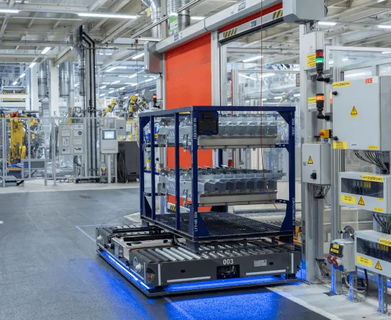
AGV executing a navigation and load-handling task
The positioning feature provides the position of an AGV in map coordinates. The positioning is based on dead reckoning data combined with laser scanner corrections. The laser scanner corrections are based on matching received 2D measurements to the taught environment. It is possible to use Navitrol for positioning only applications. In these applications Navitrol is typically used for position correction source by control software running on separate hardware.
In the case when Navitrol is being used to control the AGV directly, the Navigation computer is connected directly to the motor controllers and Navitrol controls the output of the motors or commands are sent to other controlling hardware through the Ethernet Supervisor Interface. The navigation feature provides control references for an AGV to drive along predefined routes combining position control with the positioning.
Navitrol requires an environment model for positioning. This model is created by first teaching the environment by driving the AGV manually around the production area and then using Windows-based Tools software to generate environment and routes. In addition a CAD model of the environment can be used for correcting scaling and misalignment issues.
Navitrol is a Linux software run on an IPC installed on the AGV capable of communicating with various sensors and control devices (See Supported Devices).
Requirements
-
Navitrol software runs on Linux Debian operating system.
- Supported Debian versions are Buster (10) and Bullseye (11). Recommended version for new installations is Bullseye (11)
- See Linux Image installation
-
IPC must fulfill the Hardware Requirements
-
Navitrol software needs a license to be run. See Licensing for detailed information.
Setup
Quick start
- Install and power up the IPC Linux Image installation
- Set up the IPC Software for Navitrol
- Install or update Navitrol
- Configure scanners and setup odometry source for the navigation IPC
- Initial Navitrol run
- Initial calibration (AGV calibration + teaching the environment)
Set up the IPC Software for Navitrol
Navitrol is run on Linux. Commands are given using a SSH terminal connection over Ethernet. Linux has a Samba file server for transferring files.
Passwords
There are two user accounts that are already set up.
| User level | User name | Password |
|---|---|---|
| root | root | navitrol |
| user | navitec | navitrol |
SSH Terminal Connection
The SSH connection is used for giving commands to Linux. A recommended program for taking connection is Putty.
Putty can be downloaded from: chiark.greenend.org.uk/~sgtatham/putty
Set up the IP address to the Host name field and press open to make a connection.
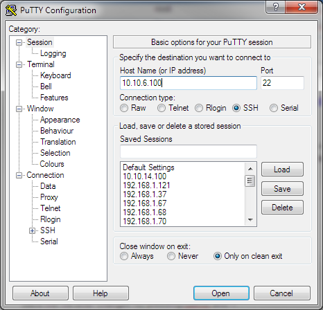
Putty configuration
IPC Network connections
The default IP address of the Navigation computer is 10.10.6.100. If the IP address needs to be changed the modification is done in the location /etc/network/interfaces. Network configurations are explained more detail in:
- Debian 11 Bullseye Installation - Network configuration
- Debian 10 Buster Installation - Ethernet configurations
After changing the network configuration a reboot is needed.
Transferring Files
The onboard Linux of the Navigation computer runs as a samba server for transferring files between your Windows computer and the IPC.
The connection can be made using Windows explorer.
Setting the address in Windows explorer
After making the connection the user name and password is asked. Enter the user name navitec and password navitrol.
The simplest way to access Samba network drive is to type \\IPC_IP\\navitec\ to Windows Explorer address line, and then type in credentials. As described above. This can however fail in different ways: Windows may fail to connect at all, or the authentication fails because of Windows trying to force specific domain or username. In all those cases it is worth trying to map the network share as a drive.
Mapping can be done with File Explorer or with command prompt.
Other option is to use WinSCP to transfer files: https://winscp.net/eng/index.php
Map network drive
- Right click "This PC" in File Explorer
- Select "Map network drive..."
- Add path
\\IPC_IP\\navitec\to Folder, and check "Connect using different credentials"- Don't use windows credentials, instead insert username and password matching Navitrol IPC configuration.
Mount with command line
net use DRIVE: \\\\IPC_IP\\navitec /user:USERNAME PASSWORD
Example:
net use K: \\\\192.168.1.100\\navitec /user:navitec navitrol
Install or Update Navitrol
Since version 6.28.00 Navitrol software is distributed as Debian installation package. There are two alternative ways to handle software installation. User can either use NavitrolUpdater or directly use Debian Package Manager to handle the installation. Use of NavitrolUpdater is the preferred way when updating several AGV's at a time.
NOTE: If you are installing Navitrol the first time, installation is done from command line
Command line
The package name is Navitrol_version_architecture.deb, for example Navitrol_6.28-0_amd64.deb.
Installation:
-
Copy the installation package to the Navigation computer using SCP or samba
-
Open SSH connection to Navigation computer
-
Gain root privileges using 'su -' command.
-
Install package with
dpkg -i Navitrol_6.28-0_amd64.debcommand on linux terminal -
Navitrol is now installed to run at startup, but it still needs a licence and the parameter file params.txt
- Contact Navitec support for the license and base params.txt file
NavitrolUpdater
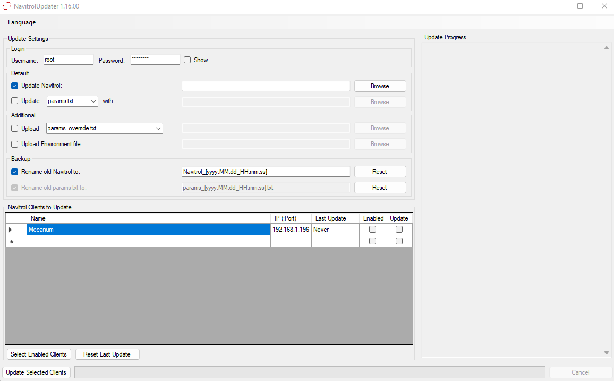
-
Choose what do you want to update, any combination can be selected
-
If Navitrol, check "Update Navitrol" and click "Browse" to select used Navitrol installation package (*.deb)
-
If parameters, check "Update params.txt"
-
If override parameters, check "Update params_override.txt"
-
If environment file, check "Upload Environment file"
-
-
Choose the files for each checked option with by pressing "Browse" button for each file
-
Choose the AGVs that you want to update
-
You can add AGVs to list
-
Only the AGVs that where "Update" is checked are updated
-
-
Hit the "Update Selected Navitrol Clients"
NavitrolUpdater - Trouble shooting
Updater does not accept the correct password
Reason: The linux system on the IPC does not allow direct login as super user.
Solution: Enable direct login as super user
-
Open terminal in the IPC running Navitrol.
-
Login as super user using "su -" command and navitrol as password
-
Open sshd_config file using nano /etc/ssh/sshd_config command
-
Add new line to the file: PermitRootLogin yes (the place of the line does not matter)
-
Save file with ctrl+s and close it with ctrl+x
-
Restart the ssh process with /etc/init.d/ssh restart command
Configure scanners and setup odometry source for the navigation IPC
The default IPC that Navitrol is run on is:
VBOX-3121-i3, i3-6300U @ 2.3 GHz, 2 core, 4 threads, 4 GB RAM memory
In order to run Navitrol, the IPC needs to be set up. Minimum setup to use Navitrol for localization:
- Configure scanners and the IPC ports for the scanners
- Odometry source for the IPC
- Enable and configure communication interface(s), see Configure odometry source
- Connect to communication interface(s) used
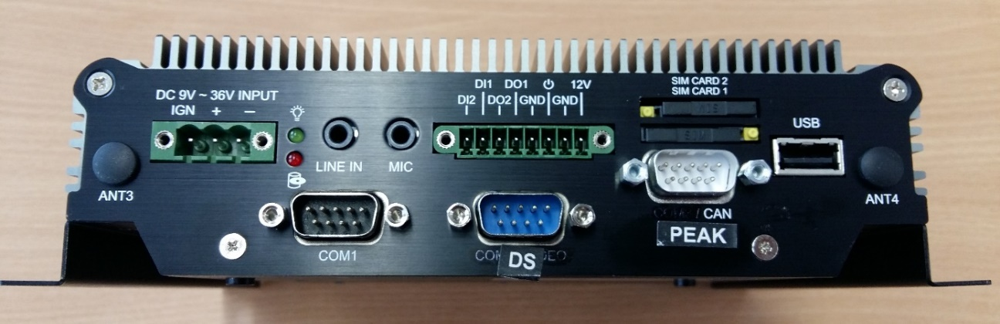
Communication interfaces at the back of the IPC
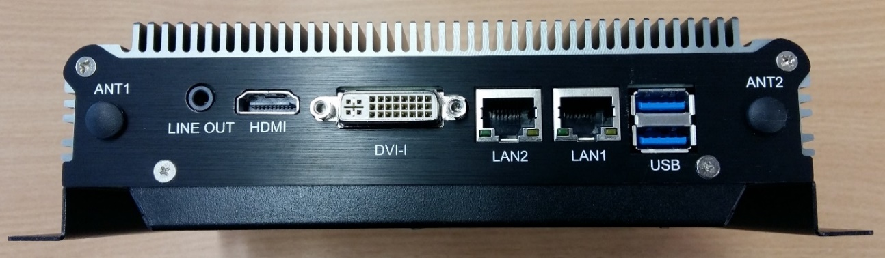
Communication interface on the front of the IPC
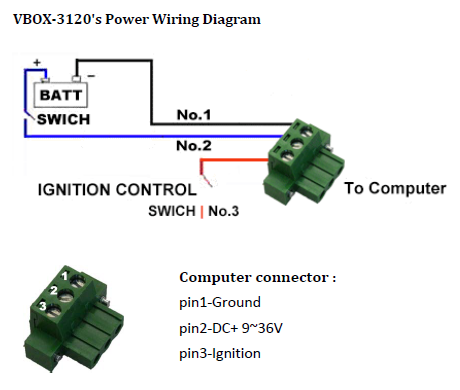
Power cable wiring for the IPC
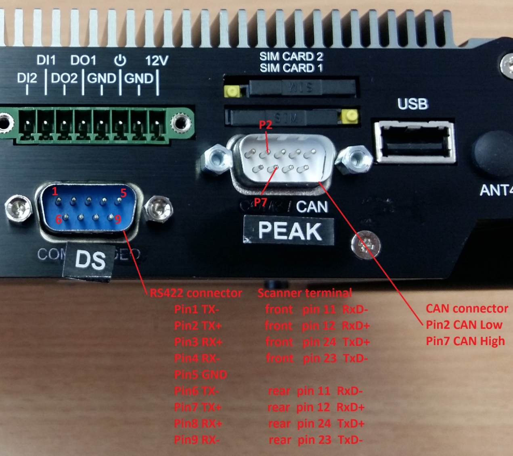
CAN and RS422 serial interface ports
Configure Scanners
Most scanners communicate over Ethernet, but for example the SICK S300 scanners require RS422 serial interface with a communication rate of 500 kbaud. For this communication a standard serial port is replaced with a dual RS422 card. The card is from Diamond Systems, therefore the mark DS below the port, see the figure below. The detailed scanner configuration instructions for each scanner can be found here: Scanner configurations
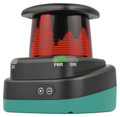
R2000 UHD LiDAR scanner
Configure odometry source
The most common way to provide odometry data is either through CAN bus or Ethernet supervisor interface. Other options currently are EtherCAT and serial.
In most machine types odometry source is selected automatically, and related communication interface enabled automatically as well. When using specific machine types, such as machine_type_id 44xxxx, odometry source must be defined using parameter odometry_source. More detailed information on odometry source selection and configuration can be found from Odometry Source, that document describing also the parameters used to enable other communication interfaces.
Further instructions for setting up and using different communication interfaces:
- CAN CAN communication
- Ethernet interface Ethernet Supervisor Interface
- EtherCAT interface EtherCAT communication
- Serial bus, with Roboteq motor controllers only Roboteq Controller Configuration
Check also the list of supported devices or ask additional information from Navitrol support. List of supported devices: Supported Devices
Initial Navitrol run
To run Navitrol on the IPC, the following prerequisites have to be done:
- IPC installed with Debian Buster (10) or Debian Bullsey (11)
- Navitrol software package (.deb) installed under /home/navitec folder
After this the initial Navitrol parameters are needed. The initial parameter file is provided by Navitec support.
Parameters
Parameters affecting the operation of Navitrol are in the file params.txt in the /home/Navitec folder. It is a text file which can be edited with any editor which can output a plain text file. Parameters that are not listed in params.txt file are used in Navitrol with their default value
A line in the parameter file may be either a comment line or a parameter line. A comment line starts with # and a parameter line with the parameter type indicator F (Float), S (String), I (Integer) or U (Unsigned Integer).
In addition to the parameter type a parameter line consists of the name of the parameter and the current value. Then there is an optional comment about the parameter. A comma is required between each obligatory item of a parameter definition.
Navitrol reads in the parameter file when it starts. If not being able to parse the parameter file Navitrol does not start but writes about the problem on the terminal. A typical error in the parameter file could be a value outside the minimum and maximum limits. If the real parameter value needs to be set outside the minimum or maximum then the limits must be changed accordingly.
General Parameters
| Name | Type | Default value | Description |
|---|---|---|---|
| machine_type_id | Int | 0 | ID of the machine type. Provided by Navitec Systems, check Machine types |
| machine_type_key | Uint | 0 | Verification key corresponding to the machine type ID. Provided by Navitec systems |
| dim_front | Float | 1.0 | Dimension of the AGV in meters from the navigation point to the front outer dimension. Beams falling inside the perimeter of the vehicle are skipped. Has to be positive |
| dim_rear | Float | -1.0 | Dimension of the AGV in meters from the navigation point to the rear outer dimension. Beams falling inside the perimeter of the vehicle are skipped. Has to be negative |
| dim_left | Float | 1.0 | Dimension of the AGV in meters from the navigation point to the left outer dimension. Beams falling inside the perimeter of the vehicle are skipped. Has to be positive |
| dim_right | Float | -1.0 | Dimension of the AGV in meters from the navigation point to the right outer dimension. Beams falling inside the perimeter of the vehicle are skipped. Has to be negative |
| supervisor_eth_enabled | Int | 0 | Determines if Navitrol should be expecting messages through the Supervisor or AGV controller interface. 1 for enabled, 0 for disabled. |
| supervisor_eth_ip | String | 192.168.2.141 | Supervisor IP address. Needed if Supervisor works as a server |
| supervisor_eth_port | Int | 5015 | Supervisor communication server side port |
| supervisor_eth_server | Int | 0 | Defines whether Supervisor is server or client, 0 - client, 1 - server |
| supervisor_eth_endianness | Int | 0 | Defines Supervisor data endianness, 0 - little endian, 1 - big endian |
| veh_inte_error_message_mode | Int | 2 | 0 to not send errors/warnings to PLC/agv controller, 1 to send active errors, 2 to send active errors and warnings |
| veh_inte_heartbeat_interval | Int | 0 | How often to send active errors/warnings to PLC/agv controller in ms |
| loc_xy_max_corr | Float | 0.0015 | Maximum single localization correction for X and Y in meters |
| loc_h_max_corr | Float | 0.1500 | Maximum single localization correction for heading in degrees. |
| odo_max_interval_ms | Int | 60 | Maximum odometry receive interval in milliseconds. Navitrol gives ERROR_DEADREC_HIGH_DT if time from last odometry update is highen than this parameter |
General Position Control System parameters
| Name | Type | Default value | Description |
|---|---|---|---|
| control_interval_us | Int | 30000 | AGV position control and vehicle interface control interval. |
| control_interval_error_ratio | Float | 1.1 | Defines how much measured control interval can deviate from target (e.g. 1.1 means 10%) |
| control_interval_max_stdev_us | Int | 1000 | Defines how much measured control interval standard deviation can be in us |
| fleet_control_type | Int | 1 | 0 - No fleet control, 1 - Navitec Systems fleet control, 2 - External fleet control, 3 - VD(M)A fleet control |
| fleet_control_port | Int | 6007 | TCP port number used for communication with the fleet control server. |
| machine_id | Int | 1 | Machine ID number reported to fleet control and other systems |
Example format of parameter set from params.txt (with Schwarzmueller Omni drive AGV):
# Parameters specific to each vehicle type
I,machine_type_id, 180007 # Id of vehicle type
U,machine_type_key, 2381850774 # Verification key of machine type id
F,dim_front, 2.300000 # min 0.010000, max 100.000000
F,dim_rear, -1.510000 # min -100.000000, max -0.010000
F,dim_left, 0.870000 # min 0.010000, max 100.000000
F,dim_right, -0.870000 # min -100.000000, max -0.010000
S,supervisor_eth_ip, 172.16.12.49 # Supervisor IP address
I,supervisor_eth_server, 1 #
More detailed parameters can be found in documents specifying the specific feature in the software. For example, parameters related to actuators can be found in the document Actuator Control.
Navitrol test run
After you have the initial parameters to params.txt under /home/navitec, you can run Navitrol with Linux terminal command (as root user):
./Navitrol
After a successful test run (Navitrol starts running on terminal), proceed to the Initial calibration Guide.
Troubleshooting
Most Common issues
Navitrol does not run with command ./Navitrol
- Check that you have installed Navitrol to /home/navitec:
dpkg -s navitrol
- Check that you have working parameters that Navitrol can parse. Navitec Support will provide you the parameters
Cannot change parameters from params.txt
params.txt file might need permissions for reading and writing. The permissions can be added with linux command:
cd /home/navitec
chmod +rw params.txt
Advanced Troubleshooting
Logging Functions
Navitrol provides a list of commands that can be used in order to write specific log messages to files and/or view them in real time. Amount of log lines and the threads of interest can be also specified manually. Loggings functionalities are explained on their own document Logging
Navitrol Licensing
Updated 11.06.2024
Glossary
| Term | Description |
|---|---|
| Fingerprinting | A method for uniquely identifying the target where application runs. |
| Device-locked license | Device-locked licensing uses target fingerprinting and locks the license to the target. |
| Floating license | Floating license is not locked to any specific target/HW. When a licensed software is started it leases a license from the License Server and frees the license when it shuts down. With Floating license the number of simultaneously running instances is limited by the license. |
| Lease duration | A time that a Floating license lease is valid without renewal. |
| License Server | Navitec Systems application that manages creation and updates of all licenses. |
| Server sync interval | The interval for server syncs by a licensed software when using online (Floating license) licensing model. |
| Trusted Platform Module (TPM) | TPM is an international standard for a secure crypto-processor, and it is designed to provide hardware-based, security-related functions. |
Overview
Navitrol supports two different licensing methods, Legacy license and Regular license. Legacy licensing model has been used from the early days of Navitrol. It does however have multiple practical limitations, and therefore new licensing method, Regular licensing, has been introduced.
Regular licensing is the recommended future-proof solution. Existing Legacy licenses are still supported, but all new (or future) licensed features are not supported by Legacy licensing method.
Current license details
Detailed information about Navitrol license for a connected Navitrol can be seen in Monitor by selecting "Help-About" from menu.
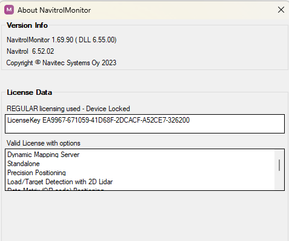
All this information is also logged in the beginning of each text log file (startlog.txt and log.txt). Examples of logged data are shown in the following chapters.
NOTE: Hardware and license details are different in each case, as they depend on the hardware, licensing model and licensed options in use. Therefore, any license details shown in this document are just examples of one specific case.
Licensing method selection
Licensing method (Regular vs. Legacy) used is selected at run-time by Navitrol. Regular licensing is prioritized, and it is used if license file LicenseDetails.json exists on the system. See Regular license below for details. If there is no LicenseDetails.json file, Navitrol switches to Legacy licensing method for backward compatibility. It is only the existence of this file that matters. If license file exists, but has invalid data or format, then Navitrol still sticks to Regular licensing and raises a related error.
In the beginning of each text log file there is some information about run-time system and licensing method used. The section that shows license information is referred here as a license section.
In case of Regular licensing being used, text logs starts with:
Mon May 27 10:36:26 2024
Navitrol 6.53.02 99083666 2024-05-27T07:31:25+00:00 for machine type 440001
Debian GNU/Linux 11 (bullseye)
RT Kernel 5.10.0-23-rt-amd64
Board SMB-2600 by Sintrones Technology Corp.
BIOS by American Megatrends Inc.
CPU Intel(R) Celeron(R) 2980U @ 1.60GHz
CPU 2 cores, clock 1596.38 MHz
TotalMem 7869 MiB, TotalSwap 3905 MiB, TotalStorage 52.56 GiB
REGULAR licensing used (LibVer 3.21.2) - Activation mode DeviceLocked
Normal Fingerprint
LicenseKey 0744E5-925FE1-40BCAB-0D53DE-1207EB-614120
In case of Legacy licensing being used, license section starts with:
LEGACY licensing used
License id,key 4091113304772258577,13541695821371515033
License models
Regular licensing supports different licensing models. The currently available ones are
- Offline Device-locked license
- Floating license
Legacy licensing supports only Offline Device-locked licenses.
Backward and forward compatibility
Navitrol can use any license created for older SW version, assuring full backward compatibility.
Regular licensing provides full forward compatibility as well. Legacy licensing on the other hand has limitations with forward compatibility. It is not guaranteed that license created for a specific Navitrol version would be usable with older Navitrol versions.
Basic license
A basic license is simply a license to run Navitrol without additional licensed options.
License with options
A license with options is a license to run Navitrol with predefined additional licensed options. A license in this case includes information about all enabled licensed options/features.
In Legacy licensing all licensed features are enabled by specific parameters.
Regular licensing uses the same parameters and mechanisms for old license options, but licensed option can also be tied to something else than parameter values (like kinematic type of the machine).
All enabled license options are logged into beginning of the text log files in license section:
LEGACY licensing used
License id,key 9439414948331747385,14605972011522150860
Valid license with options in use
License for option "Dynamic Mapping Server" in use
License for option "Route Driver" in use
License for option "Precision Positioning" in use
License for option "Target Detection" in use
License for option "External Localization" in use
License for option "Obstacle Avoidance" in use
License for option "Warehouse Racking" in use
License for option "3D Object detection" in use
Regular license
Regular licensing has several benefits over Legacy licensing from user point of view, like:
- More license models - supports currently Offline Device-locked license and Floating license. More options available later.
- All current and future license options/features are supported.
- Full forward and backward compatibility for licenses created for other SW version.
- License validation time is quite deterministic, typically instant. Time may vary with Online licensing models (Floating license).
- Possibility for time limited trial licenses.
- Possibility for more tailored licensing models and fingerprinting methods in the future.
Activation mode
License models in Regular license concept are called activation modes. The two Regular license activation modes at the moment are:
- DeviceLocked - Uses Offline Device-locked license. Device-locked license uses target fingerprinting and locks the license to the target.
- Floating - Floating license is not locked to any specific target/HW. When a licensed software is started it leases a license from the License Server. The License Server allocates a license for that instance (or target) if there is a free license available. Licensed software needs to renew the lease periodically, and finally free the license when it shuts down. This method limits the number of instances that can run at the same time. All licensed software instances need an Internet connection for communicating with the License Server at run time.
Files
Files related to the use of a Regular license are described in the table below.
| File | Content and scope | Offline activation | Online activation |
|---|---|---|---|
| License file LicenseDetails.json | Provides information to Navitrol for license activation and validation. Required for all licensing models. Format and content shown below. | X | X |
| Offline activation request file LicenseOfflineRequest.gz | Created by Navitrol on user request. Content used by License Server for offline activation. | X | - |
| Offline activation response file LicenseOfflineResponse.dat | Created by the License Server when making offline activation on the server side. Navitrol uses this file as input for offline activation at target. | X | - |
NOTE: All of these files are automatically generated and should never be modified manually. Regular licensing has cross-checks for all the relevant information built-in. If information in these files is modified, license activation or validation fails.
License file LicenseDetails.json
A license file in a target system is mandatory for Regular licensing to work. License file is required for all licensing models. This JSON formatted file provides information for license activation and validation, most important ones being the LicenseKey and ActivationMode.
Mandatory license file information from Navitrol point of view include:
- Product – Shall be
NavigationSoftware. Anything else results in license file rejection as license is not meant to be used with Navitrol. - LicenseKey – Created by the License Server. License key is used for license activation and validation.
- ActivationMode – Activation mode to be used by Navitrol (shall be one of the predefined values:
DeviceLocked,Floating).
An example license file content having mandatory information only is shown below.
{
"LicenseKey": "3A432A-E840E3-42F7AB-A35E2E-6D0317-F69792",
"ActivationMode" : "DeviceLocked",
"Product": "NavigationSoftware"
}
A license file may contain additional information as well. Optional license file information includes:
- FileGenerationDate - License generation date is typically included, but not regarded as mandatory information by Navitrol.
- Custom fingerprinting - License can be defined by the License Server to use a specific custom fingerprinting method. In such a case, details are defined in a license file.
How to set up a Regular license
Steps to set up a Regular license are:
- Order a license from Navitec Systems. Process starts with creating the license in the License Server. Basic information needed in this phase are:
- License options that shall be included in the license, including machine kinematics.
- Target system - Navitrol running on a bare HW, a Virtual machine or a Container. NOTE: Navitec Systems may limit the target options available. Trying to activate license in a VM/Container if that is not allowed, results in an error.
- Other things to decide at this phase are
- Fingerprinting method - Valid for Node-Locked licenses only.
- Validity
- Time - By default a license is perpetual, like in Legacy licensing. There is a possibility to define a limited Validity time.
- SW versions - By default a license is not version limited. License can be limited up to a specific SW release version only.
- Possible trial license and trial period
- + more
- When detailed license information is known, license can be created in the License Server.
- License Server provides the license file
LicenseDetails.json. - License file
LicenseDetails.jsonis copied to target system sub-folder./license(/home/navitec/license). - After that license needs to be activated and validated. Steps required for activation depend on a license activation mode used. See License activation and License validation below for details.
License activation
Unlike in the Legacy licensing method, each license must be activated before being valid. License activation always involves the License Server which keeps track of created and activated licenses.
Prerequisite is the license file LicenseDetails.json existing in target system sub-folder ./license (/home/navitec/license).
Activating Offline Device-locked license
Offline Device-locked license activation is clearly separated from validation. Creating offline request file and offline activation are done only on user request using commands shown below. Running these commands requires root privileges.
Steps are:
-
Generate offline request file
LicenseOfflineRequest.gzfile on sub-folder./licenseby issuing the commandroot@navitec:~$ ./Navitrol licreqOn successful command one should see on the console:
Packed license request files to: "./license/LicenseOfflineRequest.gz" DeviceLocked license request file creation SUCCESSFUL -
Provide the
LicenseOfflineRequest.gzfile generated in target HW for license generation. -
Offline response file
LicenseOfflineResponse.datis generated on the License Server using offline request file as input. -
Offline response file is transferred/copied to Navitrol
./licensefolder. -
Activate license in Navitrol by issuing command
root@navitec:~$ ./Navitrol licactThis command uses the license file and the offline response file as input. On successful activation one should see on the console:
DeviceLocked license activation SUCCESSFUL
Activating Floating license
Floating license activation (license leasing) is performed automatically at each startup. After successful activation/lease, Navitrol periodically validates and renews the license.
License deactivation
Floating licenses are automatically deactivated by Navitrol at each exit/shut-down, which frees the leased license for someone else to lease. If Navitrol for any reason fails to do that (like communication not working), license re-activation or leasing is not possible until lease time is over. When lease time expires without client sync to server, license lease will be freed by the License Server. Server sync interval is defined in the license by the License Server.
Other than Floating licenses are never deactivated by Navitrol.
License validation
Successful license activation already means that license itself is valid at that time. At run-time Navitrol periodically validates the license and in case of Floating license renews the license. License validation may fail at any time for example if some license option is used without having such an option included in the license. Floating license validation may fail also if connection to License Server is lost for too long time.
There are more possibilities why validation can fail, like license expiry in case of time limited license.
Validity - time
By default licenses are created perpetual, i.e. for unlimited time. If a license has a limited Validity time, that is checked by Navitrol at run-time. Navitrol logs validity information and expiration time in text log, and optionally raises a warning WARNING_LICENSE_EXPIRATION when a time limited license is about to expire soon. This warning period is defined with a parameter license_warning_period_days. Warning can be disabled by setting this parameter to 0.
Validity - SW version
If a license has SW release version limitation, that is checked by Navitrol at start-up. Navitrol uses two digit version number (MAJOR.MINOR) to check this, which means that hotfixes are always allowed even if SW version limitation is defined.
System time
System time being wrong or being tampered with, may result in license activation or validation to fail.
Navitrol checks and monitors also system time on target to
- be close enough the network time (Online).
- not being tampered with, like time moved backwards.
Time is allowed to move backwards only a limited amount to allow time changes related to day-time saving. If substantially larger time adjustments are detected, this is indicated as an error when activating or validating the license.
Trial license
Trial licenses can be created for testing purposes.
NOTE: Navitrol requires that each Trial license is time limited. If a Validity time is not defined (unlimited) in a Trial license, Navitrol raises an error ERROR_LICENSE_CONTENT.
Parameter summary
| Name | Type | Default value | Description |
|---|---|---|---|
| license_server_addr | String | "" | License Server URL used for Floating license - ask for correct setting from Navitec Systems support |
| license_warning_period_days | Int | 0 | Defines pre-warning time for time limited license expiry |
| ads_enabled | Int | 0 | Enables ADS feature - see note below |
| ads_server_ip | String | 0 | IP adress for remote ADS Server - see note below |
| ads_server_netid | String | 0 | NetID for remote ADS server - see note below |
NOTE: ads_* parameters are relevant from licensing point of view only if Navitrol is run in Beckhoff IPC. Contact Navitec support for detailed information.
Legacy license
Legacy licensing method is supported for now for backwards compatibility. Missing license will result in immediate ERROR_NO_LICENSE_CODE, so there is no more option to drive without a license.
Legacy licensing has some practical limitations and short-comings from user point of view, like:
- Limited license models - supports only Offline Device-locked license.
- Limited amount of license options/features supported. Any recently created or future license options are not supported.
- Limited forward compatibility for licenses created for other SW version.
- License validation time can be rather long - in the worst case validation can take minutes.
- No trial licenses.
How to set up a Legacy license
Steps to set up a Legacy license are:
- After Navitrol has run once successfully, a
license.txtfile is generated in folder/home/navitec. - When ordering a license, one needs to define all the license options shall be included in the license.
- Provide the
license.txtfile generated in target HW for license generation. - License is generated by the License Server and license is provided as a
licensekey.txtfile. - File
licensekey.txtis copied to Navitrol run folder (/home/navitec). - License is validated each time Navitrol is restarted.
Troubleshooting
Logging and console output
All details related to logging and console output are subject to change. The basic principles will not however change.
Text log license section
Licensing method, license options enabled, and other relevant license information are logged in the license section beginning of each text log file.
Invalid license
REGULAR licensing used - License model DeviceLocked
Normal Fingerprint
LicenseKey 3A432A-E830E3-42FFAB-A35E2E-6D0317-F69792
License validation error: The release version is not allowed.
No valid license or license not validated
Valid license without options and limitations
REGULAR licensing used - License model Floating
LicenseKey 258487-493DB4-4E0797-0896F5-4BA43D-988381
License is not time limited
License is not limited by SW version
Valid license with no options in use
Valid license with options and limitations
REGULAR licensing used - License model Floating
LicenseKey 258487-493DB4-4E0797-0896F5-4BA43D-988381
License Expiry 2024.10.30
License is limited to SW version 6.58
Valid license with options in use
License for option "WarehouseRacking" in use
License for option "DrivingDiffSteer" in use
Logging prefix
License related logging in text logs has a prefix "LIC:", making search for license related log lines easier.
0.7046 [-1:6] LIC: License file read OK (status 1), KEY "3A432A-E830E3-42FFAB-A35E2E-6D0317-F69792"
0.7050 [-1:2] LIC: SetProductData - Success
0.7056 [-1:2] LIC: SetProductId - Success
0.7061 [-1:2] LIC: SetLicenseKey - Success
0.7061 [-1:2] LIC: SetReleaseVersion - Success
0.7340 [-1:2] LIC: IsLicenseGenuine - The release version is not allowed.
0.7340 [-1:6] LIC: License is not valid or not activated
This prefix is not used on console commands, like ./Navitrol licact.
0.1363 [-9:2] SetProductData - Success
0.1369 [-9:2] SetProductId - Success
0.1376 [-9:2] SetLicenseKey - Success
0.1376 [-9:2] SetReleaseVersion - Success
License method
License method used is logged in license section of text logs:
In case of Regular licensing being used this license section starts with:
REGULAR licensing used (LibVer 3.21.2) - Activation mode DeviceLocked
Normal Fingerprint
LicenseKey 0744E5-925FE1-40BCAB-0D53DE-1207EB-614120
In case of Legacy licensing being used this license section starts with:
LEGACY licensing used
License id,key 4091113304772258577,13541695821371515033
Enabled license options
All enabled license options are logged in license section of text log files. All options are logged in same style, regardless whether they are tied to parameters or something else:
LEGACY licensing used
License id,key 9439414948331747385,14605972011522150860
Valid license with options in use
License for option "Dynamic Mapping Server" in use
License for option "Route Driver" in use
License for option "Precision Positioning" in use
License for option "Target Detection" in use
License for option "External Localization" in use
License for option "Obstacle Avoidance" in use
License for option "Warehouse Racking" in use
License for option "3D Object detection" in use
Obsolete license options
License may contain obsolete options. Those are logged as shown below, telling also which option should be used instead.
LEGACY licensing used
License id,key 9439414948331747385,14605972011522150860
Valid license with options in use
License for obsolete option "Line Following" defined - license for option "External Localization" is expected instead
License for obsolete option "External Localization - Docking" defined - license for option "External Localization" is expected instead
Missing license options
Logging/console output for missing license options based on parameters looks like
1.4530 [-1:1] LIC: Required License Option missing for StandAlone – parameter: I,route_driver_enabled
There is same kind of output for options not based on parameters
0.7627 [-1:1] LIC: Required License Option missing for DrivingDiffSteer
Errors and Warnings
351 WARNING_LICENSE_EXPIRATION
Time limited license is about to expire soon. Time period is defined with parameter license_warning_period_days. Warning can be disabled by setting this parameter to 0.
106 ERROR_NO_LICENSE_CODE
No valid license or license not yet activated.
217 ERROR_LICENSE_OPTION_MISSING
License doesn't include permission to use a feature that has been activated.
228 ERROR_LICENSE_FILE
License file invalid - missing or conflicting data in license file. Typical reason is:
- License file is manually manipulated.
229 ERROR_LICENSE_CONTENT
License file information conflicts with the license content or license content is inconsistent. Possible reasons are:
- License file is manually manipulated.
- Trial license defined without validity.
Odometry Source
Updated 15.03.2024
Overview
Introduction
Very fundamental functionality for Navitrol in all installations is positioning. Positioning is in most situations based on odometry data combined with other sensor data.
The interface for providing the odometry data is called odometry source. This same interface is assumed to be the primary control interface as well. It is quite typical that several Navitrol communication interfaces, such as CAN and Ethernet supervisor, are used at the same time. In all cases, one of the interfaces is selected to be the odometry source.
Setup
Configuring odometry source
With most machine types (parameter machine_type_id) odometry source is selected automatically, and then related communication interface is also enabled automatically. Corresponding parameter values (odometry_source and specific "bus_enabled" parameter for corresponding interface) are in those cases ignored. Additional communication interfaces can be enabled as needed using parameters (see table below).
When using some specific machine types, such as machine_type_id 44xxxx (meaning 440000 - 449999), the odometry source must be explicitly defined using parameter odometry_source. Also in this case corresponding primary communication interface is enabled automatically. Any additional communication interfaces used must be enabled using corresponding parameters.
| Name | Type | Default value | Description |
|---|---|---|---|
| odometry_source | Int | 0 | Odometry source (primary control interface) 0 = Undefined 1 = CAN 2 = Supervisor Ethernet 3 = EtherCAT 4 = Serial Effective only for machine_type_id 44xxxx. |
| can_enabled | Int | 0 | 0 - CAN interface not enabled 1 - CAN interface enabled Effective only if odometry source is not CAN |
| supervisor_eth_enabled | Int | 0 | 0 - Supervisor Ethernet interface not enabled 1 - Supervisor Ethernet interface enabled Effective only if odometry source is not Supervisor Ethernet |
| ethercat_enabled | Int | 0 | 0 - EtherCAT interface not enabled 1 - EtherCAT interface enabled Effective only if odometry source is not EtherCAT |
NOTE: There is no specific parameter to enable serial interface. Serial interface is always enabled automatically for any device using serial communication.
Machine types and odometry source
As already mentioned, with most machine types the odometry source is selected automatically. Machine type to use is always defined by Navitec Systems, and set in parameter machine_type_id.
The following table shows odometry source for different machines types.
| Machine Type Id | Odometry source |
|---|---|
| 10009 | Serial |
| 10012 | CAN |
| 10013 -10014 | Serial |
| 10016 | CAN |
| 10017 - 10021 | Ethernet Supervisor |
| 10022 | CAN |
| 10024 - 10025 | Ethernet Supervisor |
| 2xxxx | Ethernet Supervisor - Positioning only |
| 30001 | Proprietary |
| 31001 | Ethernet Supervisor |
| 5xxxx - 7xxxx | Ethernet Supervisor - Positioning only |
| 90001 | Ethernet Supervisor - Positioning only |
| 90002 - 90003 | Ethernet Supervisor |
| 11xxxx -13xxxx | CAN |
| 14xxxx - 15xxxx | Ethernet Supervisor - Positioning only 150001 is the recommended generic positioning only machine type |
| 160001 - 160003 | Serial |
| 160004 | CAN |
| 17xxxx - 18xxxx | CAN |
| 190001 | Serial |
| 190002 - 190004 | Ethernet Supervisor |
| 20xxxx - 26xxxx | CAN |
| 27xxxx | Ethernet Supervisor |
| 28xxxx - 29xxxx | CAN |
| 31xxxx | Ethernet Supervisor |
| 32xxxx - 40xxxx | CAN |
| 41xxxx | EtherCAT |
| 42xxxx | CAN |
| 43xxxx | Proprietary |
| 44xxxx | Configured using parameter odometry_source |
| 45xxxx | CAN |
Troubleshooting
There are very few things that can go wrong with odometry source configuration, especially as it is in most cases automatically selected.
ERRORS AND WARNINGS
ERROR_ODOMETRY_SOURCE
Description:
- This error indicates that the odometry source is not defined preventing Navitrol from positioning.
Possible error reason:
- Parameter odometry_source has not been properly defined.
How to recover:
- If you are using one of the 44xxxx machine types, check that odometry source is defined using parameter odometry_source.
- If you are not using one of the 44xxxx machine types, contact Navitec Systems support.
ERROR_VEH_INTE_NOT_READY
Description:
- This error indicates that Navitrol's primary vehicle interface is not operational preventing operation.
Possible error reasons:
- Odometry source improperly defined.
- Communication interface for odometry source not properly configured.
- Communication interface for odometry source not properly connected.
- Communication interface bus for odometry source not operational.
How to recover:
- If you are using one of the 44xxxx machine types, check that right odometry source is defined using parameter odometry_source.
- Check that all communication related parameters are properly defined, and all connections are ok.
- Check that selected communication bus is operational.
Initial Calibration Guide
Updated 26.01.2024
Introduction
Navitrol determines the position of the vehicle based on its two main data sources: odometry and scanner data. The odometry is used for the dead reckoning calculation which the scanner data then validate and correct. If these do not comply with the reality, the AGV might lose its position and/or drive very poorly. Thus, the calibration process is one of the most fundamental steps in the commissioning of an AGV and it is only possible to achieve good results if it is done properly.
The procedure can be divided into several steps as it ranges from adjusting scanner positions to tuning the control gains of advanced position control features. To achieve the best results, it is recommended to follow the order given in this document. Furthermore, since Navitrol supports several different kinematic types (see section 2.1), some sections might be redundant for the vehicle of interest. Therefore, sections relevant to only some kinematic types are marked by their abbreviations.
Machine Types
Navitrol supports a variety of different kinematic types. In this document, the following ones are covered:
- Differential drive (D)
- Mecanum drive (M)
- Omni drive (O)
- Steer drive (S)
- Differential sub-unit for Steer (DS) and Omni (DO)
In addition to this, there are different communication alternatives and other options that can be tailored for the specific vehicle and since the control process varies a lot between the different combinations, it is important that Navitrol knows how to distinguish between them. This is defined by the so-called machine type ID and the associated machine type key in the Navitrol parameter file params.txt:
| Parameter | Description |
|---|---|
| I,machine_type_id | ID of the machine type. |
| U,machine_type_key | Verification key corresponding to the machine type ID. |
The values for these parameters are provided by Navitec Systems.
Vehicle Coordinate System
Each vehicle has its own internal coordinate system with its origin in the so-called navigation point. The system orientation in relation to the vehicle frame is defined such that the x-axis points towards the front of the vehicle and the y-axis towards the vehicle's left side, see Figure 1.
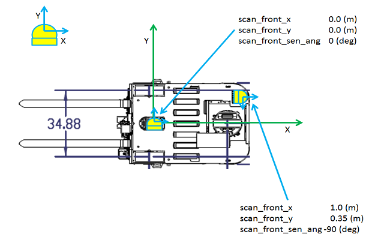
Figure 1: Vehicle coordinate system.
Initial Configurations
Navitrol relies on measurements and configuration settings specified by the user when computing the dead reckoning and position corrections using scanner data. It is important that these are set precisely as even small offsets can cause large deviations in the position calculation and if the reader has access to the CAD model it is recommended to start from this. All coordinates are given in relation to the vehicles internal coordinate system.
At this stage of the calibration process, it is recommended to keep the vehicle off the ground to minimize the risk of any accident.
Deactivate Features Disturbing The Calibration
Some features of Navitrol should be disabled during the calibration process as they otherwise have a negative impact on the result:
-
Disable sensor fusion by setting I,sf_use_sensor_fusion to zero.
-
Disable the automatic odometry correction by setting the following parameter to zero:
- F,odo_err_est_alpha
Control Interval
The control interval specifies at what rate Navitrol should expect to receive the control messages. If Navitrol has a direct connection to the motor controller, then this would be the message time interval between Navitrol and the motor controller itself. However, if Navitrol is connected to the motor controllers via a PLC/PC, then the control interval is defined between Navitrol and PLC/PC instead.
Set the specified interval and error ratios with the following parameters:
| Parameter | Description |
|---|---|
| I,control_interval_us | Control message interval in microseconds. |
| F,control_interval_error_ratio | Defines how much the measured control interval can deviate from target (e.g. 1.1 means 10%). |
| I,control_interval_max_stdev_us | Defines how much the measured control interval standard deviation can be in microseconds. |
Vehicle Frame Dimensions
Scanner points hitting objects within the vehicle frame needs to be filtered out to avoid their negative impact on the localization properties. If the dimensions are set properly, one will see that Navitrol Monitor renders these points as gray:
| Parameter | Description |
|---|---|
| F,dim_front | distance from the navigation point to the front of the vehicle along the x-axis. |
| F,dim_rear | distance from the navigation point to the rear of the vehicle along the x-axis. |
| F,dim_left | distance from the navigation point to the left side of the vehicle along the y-axis. |
| F,dim_right | distance from the navigation point to the left side of the vehicle along the y-axis. |
Localization Scanners
Navitrol supports up to two separate localization scanners and their orientations and positions are defined by the following parameters in params.txt:
| Parameter | Description |
|---|---|
| F,scan_rear_x | rear scanner x-coordinate. |
| F,scan_rear_y | rear scanner y-coordinate. |
| F,scan_front_x | front scanner x-coordinate. |
| F,scan_front_y | front scanner y-coordinate. |
| I,scan_rear_upside_down | 1 if rear scanner is mounted upside down. |
| I,scan_front_upside_down | 1 if front scanner is mounted upside down. |
| F,scan_rear_sen_ang | angular offset between the coordinate system of the rear scanner and the coordinate system of the vehicle. |
| F,scan_front_sen_ang | angular offset between the coordinate system of the front scanner and the coordinate system of the vehicle. |
NOTE! Depending on how many scanners that are used for localization or target detection, some of these parameters might be redundant. Navitrol Monitor can be used to visually estimate whether the values are roughly correct, for example by placing the vehicle next to straight wall and verifying that the scanner views are matching.
Vehicle Wheel Positions and Configurations
The dead reckoning calculation uses the wheel positions and the encoder information to determine how the vehicle is moving. Depending on the kinematic type, different information is required. If not mentioned specifically, distance parameters should also include the sign according to the vehicle's coordinate system.
Differential drive
For the differential drive, the wheel positions are specified by a single parameter as they are symmetrical around the navigation point:
| Parameter | Description |
|---|---|
| F,wheel_track | absolute distance between the driving wheels along the y-axis. |
Mecanum drive
In addition to the wheel_track parameter, mecanum vehicles also require information about the distance to the driving wheels along the x-axis:
| Parameter | Description |
|---|---|
| F,wheel_track | absolute distance between the driving wheels along the y-axis. |
| F,wheel_dist | absolute distance between the driving wheels along the x-axis. |
Omni drive
Since Navitrol supports up to six individual omni wheels, most of the omni specific parameters are defined as arrays with index i = 0,1,...,5. These indices may be defined arbitrary by the user but should start from zero and remain consistent between the parameters.
| Parameter | Description |
|---|---|
| F,wheel_x[i] | x-coordinate of the wheel with index i. |
| F,wheel_y[i] | y-coordinate of the wheel with index i. |
| F,wheel_y_off[i] | wheel offset from turning axle of the wheel with index i (y in vehicle coordinates when straight). |
The dead reckoning is computed based on encoder data from two individual wheels. The wheels that are used for this are specified in the Navitrol parameter file with the parameter I,omni_deadrec_ref_axle[i]. A general guideline is that the selected wheels should not be lined up parallel to either the x-axis or the y-axis and that the greater the distance between them the better. An example of this can bee seen in Figure 2.
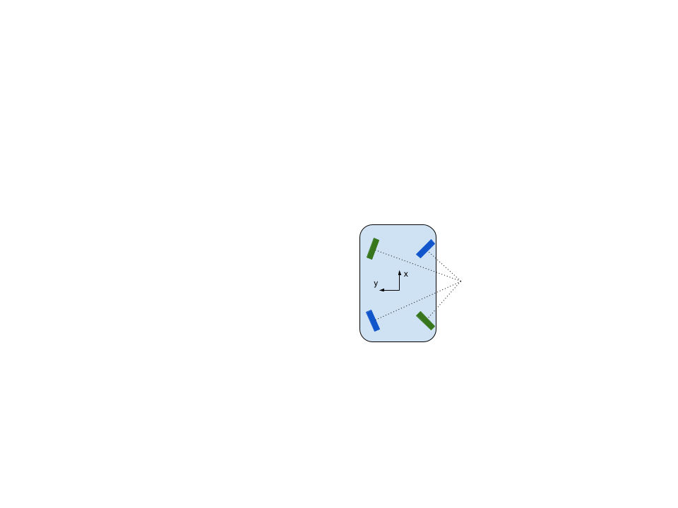
Figure 2: Example of which combination of wheels that together are viable for dead reckoning. The wheels with the same color make a viable pair.
I,mot_ctrl_omni_speed_control_used[i] should be set to determine which wheels are used for speed control and finally I,maintain_omni_kinematics should be set to 1 if the motor controller is not able to handle rapid large changes in the reference value, otherwise it should be 0.
Steer drive
Steer driven vehicles require two parameters to specify the wheel configuration:
| Parameter | Description |
|---|---|
| F,wheel_dist | distance from the navigation point to the center point of the driving wheel along the x-axis. |
| F,wheel_off_center | distance from the navigation point to the center point of the driving wheel along the y-axis. |
Differential Sub-unit
| Parameter | Description |
|---|---|
| Omni | |
| F,wheel_x[i] | x-coordinate of the sub-unit center point with sub-unit index i. |
| F,wheel_y[i] | y-coordinate of the sub-unit center point with sub-unit index i. |
| Steer | |
| F,wheel_dist | Distance between navigation point and sub-unit center point. |
| Common for both Omni and Steer | |
| F,sub_diff_wheel_track | Distance between the centers of the wheels in differential steer-drive wheel unit. |
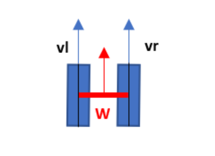
w = sub_diff_wheel_track parameter.
Wheel Control source
The wheel control source depends on the motor controllers and interface being used (for example CAN, Ethercat or Ethernet Supervisor). Configure the parameters based on what control source/communication interface is utilized. The different wheel control source parameters can be found from the following documents:
- CAN and EtherCat wheel control source configurations : Motor controllers common
- Ethernet Supervisor wheel control source configurations : Communication specification between Navitrol and Ethernet supervisor
Steer Encoders (O, S, DO, DS)
Two of the kinematic types, omni drive and steer drive (+ differential sub-units), rely on an absolute encoder to determine the orientation of their wheels. Due to variations among the different models, Navitrol requires the user to define the specifications in params.txt. Among other things, this includes defining the resolution of the encoder.
Omni drive
The parameters that should be defined/calibrated if Navitrol receives the raw data directly from the encode are:
| Parameter | Description |
|---|---|
| U,omni_steer_enc_pulses_overflow[i] | should be set to the decimal value of the total resolution. This means that if the total resolution is given by e.g. 25 bits, then the parameter should be set to 33.554.431. |
| U,omni_steer_enc_pulses_per_rev[i] | should be set to the amount of pulses per wheel revolution of the encoder. A possible gear ratio must be considered. |
| U,omni_steer_enc_zero[i] | should be set to the pulse count that corresponds to the zero angle (wheel facing forward). This needs to be calibrated after the mounting of the encoder. |
| I,omni_enc_steer_node_id[i] | is the CANOpen id of the steer encoder. |
| I,can_steer_enc_model | should be set to either 0 = generic (no config) 1 = Leine&Linde (RSA608) 2 = Sick (AHS/AHM36) |
The only parameter that must be tuned manually is omni_steer_enc_zero since the rest of the parameters are not dependent on the mounting. At this stage, estimate the zero level by physically setting the steer wheel as straight as possible and read the pulse count from terminal with the command:
.\\Navitrol dumpl 0 "CanAbsEncoderParseRxMsg RPDO1 node"
or
.\\Navitrol dumpl 0 "CanAbsEncoderParseRxMsg RPDO2 node" depending on the encoder model.
If EtherCAT is used as a control interface, check the encoder parameters and command for tuning encoder zero from Ethercat encoder document.
When Navitrol is not receiving raw encoder data directly from absolute encoder, then it is possible to calibrate the zero angle by adjusting the angular offset with the parameter F,omni_steer_ang_offset_deg[i] [deg].
Steer drive:
The parameters that should be defined/calibrated if Navitrol receives the raw data directly from the encode are:
| Parameter | Description |
|---|---|
| U,steer_enc_pulses_overflow | should be set to the decimal value of the total resolution. This means that if the total resolution is given by e.g. 25 bits, then the parameter should be set to 33.554.431. |
| I,steer_enc_pulses_per_rev | should be set to the amount of pulses per wheel revolution of the encoder. An possible gear ratio must be considered. |
| I,can_steer_enc_zero | should be set to the pulse count that corresponds to angle 0 (wheel facing forward). This needs to be calibrated after the mounting of the encoder. |
| I,can_enc_steer_node_id | Is the CANOpen id of the steer encoder. |
| I,can_steer_enc_model | Should be set to either 0 = generic (no config) 1 = Leine&Linde (RSA608) 2 = Sick (AHS/AHM36) |
The only parameter that must be tuned manually is can_steer_enc_zero since the rest of the parameters are not dependent on the mounting.
At this stage, estimate the zero level by physically setting the steer wheel as straight as possible and read the pulse count from terminal with the command:
.\Navitrol dumpl 0 "CanAbsEncoderParseRxMsg RPDO1 node"
or
.\Navitrol dumpl 0 "CanAbsEncoderParseRxMsg RPDO2 node" depending on the encoder model.
When Navitrol is not receiving raw encoder data directly from a CAN absolute encoder, then it is possible to calibrate the zero angle by adjusting the angular offset with the parameter F,mot_ctrl_steer_ang_offset_deg [deg].
Odometry Scale
Since Navitrol often receives odometry information expressed in angular velocities or in encoder pulses, it is necessary to convert these values internally to something that might be used for the dead reckoning calculations. How this conversion is done depends on the source of the odometry.
Velocity Calculated from Encoder Pulses
If the odometry is read from an incremental encoder or through the Supervisor interface, the conversion rate from a single pulse to meters needs to be defined. The scaling factor is defined by:
\( odometry\ scale = \frac{\pi\ \ *(\ Wheel\ diameter\ \lbrack m\rbrack)}{(Pulses\ per\ revolution)\ *(Gear\ ratio)} \)
It is set by the Navitrol parameter F,mot_ctrl_drive_dist_scale for all kinematic types except for differential drive which uses F,mot_ctrl_left_dist_scale and F,mot_ctrl_right_dist_scale for the left and right wheel respectively.
Velocity Calculated from Motor RPM
If the odometry is calculated from an RPM value stated by the motor controller, then the scaling factor is defined by:
\( odometry\ scale = \frac{\pi\ \ *(\ Wheel\ diameter\ \lbrack m\rbrack)}{60 *(Gear\ ratio)} \)
It is set by the Navitrol parameter mot_ctrl_drive_rpm_to_m_per_s.
Wheel Spinning and Steering Direction
Depending on how the mechanical parts have been mounted it might be necessary to invert the input and/or output speed such that the sign of the calculated velocity is correct. The verification is commonly done using the keyboard control of Navitrol Monitor.
The Navitrol parameters that regulate the sign of the input and output depends on the machine type of the vehicle, although the idea is the same:
-
If the wheels physically spin in the opposite direction of the reference, then the output should be inverted.
-
If the wheel spinning direction in Navitrol monitor is incorrect, then the input should be inverted (see Figure 3).
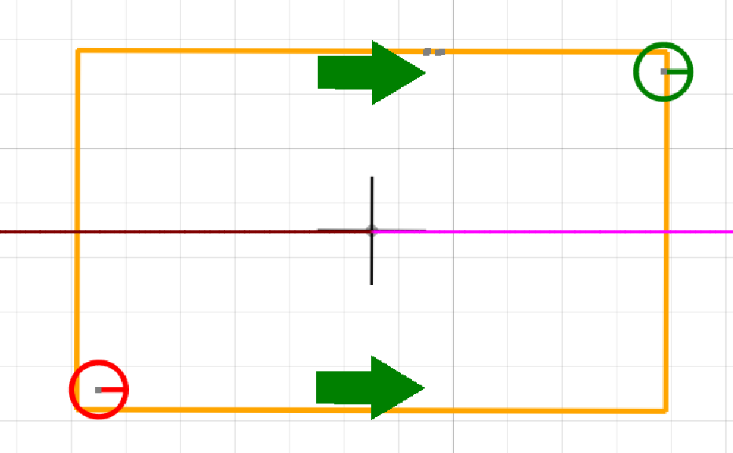 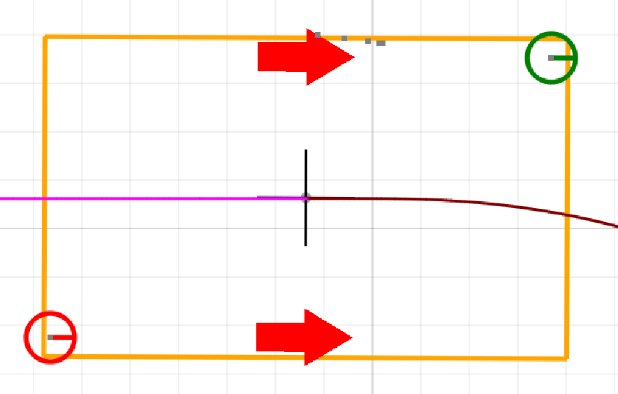
Figure 3: The wheel spinning direction is visualized by the wheel arrows in Navitrol Monitor. Green corresponds to forward/positive while red corresponds to reverse/negative.
Additionally, for machine types with steering wheels, one should also verify the steering direction of the wheels.
Differential drive
-
I,mot_ctrl_left_inv_out = 1 to invert output for the left motor.
-
I,mot_ctrl_right_inv_out = 1 to invert output for the right motor.
-
Change the sign of F,mot_ctrl_left_dist_scale to invert the input.
-
Change the sign of F,mot_ctrl_right_dist_scale to invert the input.
Mecanum drive
-
I,mot_ctrl_mecanum_inv_output[i] = 1 to invert output for the motor.
-
I,mot_ctrl_mecanum_inv_input[i] = 1 to invert input for the motor.
Omni drive
-
I,mot_ctrl_omni_speed_inv_output[i] = 1 to invert the output for the drive motor.
-
I,mot_ctrl_omni_speed_inv_input[i] = 1 to invert the input for the drive motor.
-
I,mot_ctrl_omni_steer_inv_output[i] = 1 to invert the output for the steer motor.
-
I,mot_ctrl_omni_steer_inv_input[i] = 1 to invert the input for the steer motor.
Steer drive
-
I,mot_ctrl_wheel_v_inv_out = 1 to invert the output for the drive motor.
-
I,mot_ctrl_steer_v_inv_out = 1 to invert the output for the steer motor.
-
I,mot_ctrl_steer_v_inv_in = 1 to invert the input for the steer motor.
Differential Sub-units
Do not use Omni or Steer inversion parameters with differential sub-units.
Navitrol Monitor shows normally the main kinematic wheels (Omni or Steer), but the sub-unit wheels can be shown from the following setting:
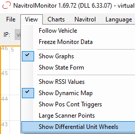
Show sub-unit wheels on Navitrol Monitor.
Easy way to check omni sub-units driving directions is to first enable only one sub-unit by setting the omni_steer_nbr parameter to 1 and check that both right and left spins to correct directions in real and in Navitrol Monitor. Then increasing the omni_steer_nbr by one and checking the next sub-unit and so on until all sub-units are correct.
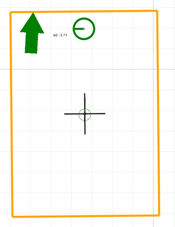 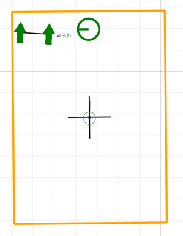
Showing Omni wheel 0 index as normal wheel (left figure) and as sub-unit (right figure). Wheels spinning forward.
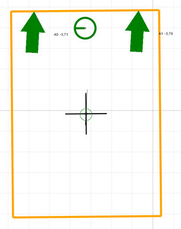 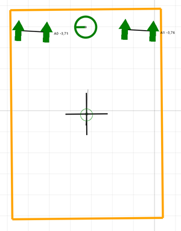
Showing Omni wheels 0 and 1 indices as normal wheels (left figure) and as sub-units (right figure). Wheels spinning forward.
i = index of the wheel. For Steer drive, i is always 0. For Omni Drive, i is the omni wheel index.
-
I,mot_ctrl_diffunit_left_inv_output[i], = 1 to invert output for the left motor.
-
I,mot_ctrl_diffunit_right_inv_output[i], = 1 to invert output for the right motor.
-
I,mot_ctrl_diffunit_left_inv_input[i], = 1 to invert input for the left motor.
-
I,mot_ctrl_diffunit_right_inv_input[i], = 1 to invert input for the right motor.
After all differential sub-units have been configured, open Motor controller test form from NavitrolMonitor. From the test form it is possible to give reference angle and speed for each individual sub-unit. Test that all the sub-units are turning correctly and spinning in the right direction.
Velocity and Steering Controller Calibration
Sections marked with PID only refer to a case where Navitrol directly controls the output of the motor and are not necessary if Navitrol is just reporting target velocity. From this point forwards it is necessary to have the vehicle on the ground such that it can freely drive around.
Calibrate Wheel Velocity Control (PID only)
Even though the parameters that define the properties of the wheel velocity control vary between the different kinematic types, the process for tuning them is the same:
-
Set the initial values for the wheel velocity control parameters to zero.
-
Give a drive command either forward or reverse from Navitrol Monitor to generate a reference step.
-
Increase the proportional gain stepwise while monitoring how the measured velocity is reaching the target velocity in the control chart for the relevant kinematic type. Repeat until the measured speed starts to oscillate.
-
Increase the derivative gain until the overshoot of the measured speed is controlled to less than 5% of the target.
-
Repeat the two former steps until the fastest rise time with less than 10% overshoot is reached.
Differential drive (D, DS)
The proportional gain is adjusted by Navitrol parameters F,mot_ctrl_left_p and F,mot_ctrl_right_p while the derivative gain is adjusted by F,mot_ctrl_left_d and F,mot_ctrl_right_d. The control chart relevant for this part of the calibration can be found in Navitrol Monitor under Navitrol Monitor Charts Differential Drive Motors Drive Motor Speed Control.
Mecanum drive
For mecanum drives, the wheels are indexed by i = 0,...,3 where 0 = FL, 1 = FR, 2 = RL and 3 = RR. The Navitrol parameters for the proportional and derivative gains are F,mot_ctrl_mecanum_p[i] and F,mot_ctrl_mecanum_d[i] respectively. The control chart relevant for this part of the calibration can be found in Navitrol Monitor under Navitrol Monitor Charts Mecanum Drive Motors Speed Control).
Omni drive (O, DO)
The Navitrol parameters for the proportional and derivative gains are F, mot_ctrl_omni_speed_p[i] and F, mot_ctrl_omni_speed_d[i] respectively. The control chart relevant for this part of the calibration can be found in Navitrol Monitor under Navitrol Monitor Charts Omni Drive Motors PD Control**.**
Steer drive
The Navitrol parameters for the proportional and derivative gains for the forward direction are F,mot_ctrl_wheel_v_p and F,mot_ctrl_wheel_v_d respectively. The corresponding parameters for the reverse direction are F,mot_ctrl_wheel_v_rev_p and F,mot_ctrl_wheel_v_rev_d, which often may be set to the same values as the forward gains. The control chart relevant for this part of the calibration can be found in Navitrol Monitor under Navitrol Monitor Charts Steer Drive Motors Drive Motor Speed Control (steer).
Calibrate Wheel Steer Control (PID only, O, S, DO, DS)
Just as for the wheel velocity controller, the parameters that needs to be configured for the wheel steer controller differ between the kinematic types although the process of calibrating them is the same. The control gains are tuned in a similar manner as previously, however now there is also an integral part to take into consideration:
-
Set the initial values for the wheel steer control parameters to zero.
-
Give a drive reference with curvature from Navitrol Monitor to generate a steering reference value.
-
Increase the proportional gain stepwise while monitoring how the measured angle is reaching the target angle in the control chart for the relevant kinematic type. Repeat until the measured angle shows stable oscillations.
-
Increase the derivative gain in small steps until the system does no longer oscillate.
-
Repeat the two former steps until the system is responsive enough without having oscillations.
-
Adjust the integral gain to minimize the static error while keeping the overshoot and oscillations low.
Omni drive
The Navitrol parameters for the proportional, derivative and integral gains are F,mot_ctrl_omni_steer_p[i], F,mot_ctrl_omni_steer_d[i] and F,mot_ctrl_omni_steer_i[i] respectively. The control chart relevant for this part of the calibration can be found in Navitrol Monitor under Navitrol Monitor Charts Steer Drive Motors Steering.
It is important to set the target steer angle to a reasonable and safe value during the calibration that is well within the steering limits. This is enabled by the parameter I,omni_steer_limit_enable[i] = 1 and defined by F,omni_steer_limit_CCW_angle_deg[i] in the counter clockwise direction and F,omni_steer_limit_CW_angle_deg[i] in the clockwise direction.
Steer drive
The Navitrol parameters for the proportional, derivative and integral gains are F,mot_ctrl_steer_ang_p, F,mot_ctrl_steer_ang_d and F,mot_ctrl_steer_ang_i respectively. The control chart relevant for this part of the calibration can be found in Navitrol Monitor under Navitrol Monitor Charts Steer Drive Motors Steering.
It is important to set the target steer angle to a reasonable and safe value during the calibration that is well within the steering limits by adjusting F, mot_ctrl_max_steer_ang_deg and F,mot_ctrl_min_steer_ang_deg.
Odometry Calibration
A good odometry calibration is necessary to achieve good performance while driving autonomously as it is the foundation behind the dead reckoning calculations.
Steer Encoders (O, S, DO, DS)
After the initial estimation of the steer encoder zero level has been done it is important to verify the performance and if it does not fulfill the requirements, one should continue to calibrate it until it does. The procedure can be divided into the following steps:
-
Put the AGV on the ground, aligned with a reference line, and manually drive it straight for at least 10 meters using the Navitrol Monitor keyboard control. It is important that the wheels are at the zero position when starting the drive.
-
Measure the physical distance and angle deviation from the straight line.
-
If the distance deviation is larger than 5 centimeters and/or the heading deviation is larger than 1 degree, estimate which wheel is causing the offset and change the zero level values correspondingly. Repeat the previous steps.
Additionally, for omni drive vehicles, when the deviation during straight driving falls within the tolerances, one should verify that the by Navitrol perceived driving is straight as well:
-
Initialize the AGVs position such that it is aligned with the grid in the main window of Navitrol Monitor and make sure that there is no environment around it to avoid scanner corrections during the calibration process. The heading should be zero.
-
Give a reference straight forward.
-
If the drive path visualized by Monitor deviates from a straight physical path, abort the Monitor connection and use the playback function (bottom slider) to analyze the wheel orientation. If the wheel orientation is not close to zero it is possible to adjust the measured angles with the parameter F,omni_steer_ang_offset_deg[i].
Odometry Scale
Assuming that the scanner positions and angles are adequately configured at this point, one can utilize Navitrol Monitor to fine tune the odometry scale. The procedure can be broken down to the following steps:
-
In Navitrol Monitor, initialize the vehicle position far from any predefined environment such that there will be no match between the scanner points and the defined map. It is preferable to align the vehicle frame with the grid network in Navitrol Monitor.
-
In Navitrol Monitor, select the option to freeze the data.
-
Give a drive reference straight forward using the keyboard control of Navitrol Monitor. Keep driving for around ten meters or more if possible.
-
If the odometry is correct and the scanner angle is properly defined, then there should be no offset between the frozen scanner data and the live data. If there is a lengthwise offset, measure this using the Navitrol Monitor measurement tool and calculate the ratio between the driven distance and the measured offset.
-
Adjust the odometry scale parameter according to the calculated ratio.
-
Repeat the procedure until the lengthwise offset has been eliminated.
Wheel Positions
At the point when the odometry scale and possible steer encoders (O, S) have been properly tuned, the vehicle should be able to drive straight and correctly estimate the driven distance. However, to make precise and accurate turns it is important to also calibrate the positions of the wheels carefully. This is done by the following steps:
-
In Navitrol Monitor, initialize the vehicle position far from any predefined environment such that there will be no matching environment. It is preferable to align the vehicle frame with the grid network in Navitrol Monitor.
-
In Navitrol Monitor, select the option to freeze the data.
-
Make a turn in slow speed with a small turn radius. If the mechanical construction of the vehicle allows for pivoting, then that is preferred.
-
Compare the frozen scanner points with the live view. If there is an angular offset, adjust the wheel position parameters accordingly.
If the frozen scanner points deviate from the live view, it means that the dead reckoning estimation is not correct. Since the odometry scale has already been calibrated, as well as the steer encoders, the most probable cause for this is the wheel placement. For example, if the estimated pivoting angle is less than the actual pivoting angle for a differential driven vehicle, it is likely that the length of the differential axle has been overestimated.
Scanner Calibration
Before performing the Navitrol scanner calibration, it is vital for the navigation that the height and seen angle of laser scanners are first mechanically adjusted to be as level as possible in relation to the ground.
Scanner Positions and Angles
Automatic Scanner Calibration
If the AGV is using two laser scanners for localization it is of high importance that these are well-aligned with each other. If this is not done correctly, the environment that is used for navigation can be seen differently depending on the orientation of the vehicle and on which laser scanner sees the environment.
Navithor Tools implements a feature that automates this process by matching recorded measurements to each other. It is accessed from the top bar under Tools --> Calibrate Scanners and requires a teach file with clearly seen environment to work. Preferably, the teach file should cover the AGV driving the path of a figure 8 three times in slow speed.
Manual Fine Tuning of Scanner Angles
After the localization scanners have been aligned with each other they will still need to be aligned with the vehicle frame. This is important also for systems with a single scanner used for localization. If this is not done carefully there will be discrepancies between measured odometry and scanner data which in turn will have a negative impact on the performance of the vehicle, causing false position corrections. This discrepancy usually shows up as large lateral corrections and a good performance is only achieved after these have been reduced to fulfill the defined requirements.
The lateral corrections should be monitored under Navitrol Monitor --> Charts --> Odometry Correction --> Position Correction Averages while the AGV is driving on a straight route. The target is to reach a lateral correction within [-0.1, 0.1] [cm/m]. If the average correction is not within the acceptable limits, manual tuning of the scanner angles is required. This can be broken down into the following steps:
-
Disable the rear scanner by setting I,scan_rear_front_selection = 2 and I,scan_rear_front_localization_selection = 2.
-
Reload the parameter file from Navitrol Monitor under Navitrol -> Reload Parameter file.
-
Record a teach file where only one scanner is activated and create a new project with clearly defined environment and a straight route of 3-10 meters, longer is better. Make sure that one of the lanes is set to reverse.
-
Raise the average position correction gain by increasing F,odo_err_est_alpha from 0.002 to 0.006.
-
Create a drive order between the two endpoints of the route and set the AGV driving back and forth in an endless loop.
-
Adjust the defined scanner angle with the parameter F,scan_front_sen_angle until the lateral corrections are within the acceptable range. Start by both increasing and lowering it by 1 degree to determine which direction it should be adjusted in before tuning it more accurately. NOTE! If the lateral correction chart displays large jumps during the calibration process it is likely that the environment is not good enough and should be redefined.
-
When the front scanner has been well aligned with the odometry the final calibration step is to activate and adjust the angle of the rear scanner accordingly. E.g. if scan_front_sen_ang was decreased from 90 to 89, one must also adjust scan_rear_sen_ang from -90 to -91.
-
Finally, set odo_err_est_alpha, scan_rear_front_selection and scan_rear_front_localization_selection back to their original values and analyse the corrections once again. If the scanners are not matching each other, start by adjusting scan_rear_sen_ang. The scanner points should match each other on both sides of the vehicle.
NOTE! Matching the scanner views to each other is the most vital part of the scanner calibration process. Once the front scanner is calibrated according to the procedure and it is time to calibrate the rear scanner, pay more attention to matching the scanner views than the correction charts.
Odometry to Scanner Delay
If there is delay between the incoming odometry data and the incoming scanner measurements, the delay needs to be specified for Navitrol so that it can be taken into consideration. The delay can be measured by performing the following steps:
-
Connect to Navitrol with Navitrol Monitor.
-
Drive the vehicle manually towards and away from a wall that is perpendicular to the vehicles heading.
-
Monitor the possible delay from Navitrol Monitor -> Charts -> Odometry Correction -> Scan Delay Calibration (check the affecting parameters from the table below)
-
Calculate the time difference between the moment when Navitrol has received input of the vehicle moving from the scanner measurements (green graph for front scanner and red graph for rear scanner) to the moment when Navitrol has received odometry stating that there is movement. Set the parameter
F, scan_delay [ms]
accordingly (negative if scanner is slower than odometry).
Scan Delay Calibration parameters
These parameters can be adjusted to change the threshold for drawing the scanner measurements in the Scan Delay Calibration chart in Navitrol Monitor. The default values should be usually sufficient
| Parameter | Default | Description |
|---|---|---|
| F,calib_scan_delay_min_dist | 0.2 | Minimum beam distance to environment to activate scanner delay calculation. [m] |
| F,calib_scan_delay_max_dist | 5.0 | Maximum beam distance to environment to activate scanner delay calculation. [m] |
| I,calib_scan_delay_n_dist_beams | 31 | Maximum/ideal number of beams considered when calculating the average distance to the wall. |
| I,calib_scan_delay_min_ok_beams | 20 | Minimum number of beams that have to be valid. |
| F,calib_scan_delay_dev_limit | 0.05 | Maximum deviation of the distance measured by a single beam from the average measured distance. Beams not fulfilling this are not used for the scanner delay calibration. [m] |
| F,scan_delay | 0.0 | Delay of scanner measurement [ms] relative to odometry measurements. |
Position Controller Calibration
After the odometry and scanner positions are calibrated accurately, it is vital to make sure that also the position controller works properly. It calculates reference values for speed and steering and is responsible for keeping the vehicle on track while driving.
Define Limitations
For the position controller to be able to give reasonable reference values that the vehicle can follow, it is possible to enforce limitations on velocity, turning rate and steer rate etc.:
| Parameter | Description |
|---|---|
| F,mot_ctrl_max_wheel_v_fw | Max drive wheel velocity when driving forwards [m/s]. |
| F,mot_ctrl_max_wheel_v_bw | Max drive wheel velocity when driving in reverse [m/s]. |
| F,mot_ctrl_max_wheel_acc | Max acceleration [m/s^2]. |
| F,mot_ctrl_max_wheel_dec | Max deceleration [m/s^2]. |
| F,max_turn_rate_deg_p_s | Maximum turning rate of the vehicle [deg/s]. Limit is applied to the speed of the planned trajectory. |
| F,mot_ctrl_max_steer_rate_deg_p_s | Maximum turning rate of the steering wheels [deg/s]. Limit is applied to the speed of the planned trajectory (O, S). |
| F,mot_ctrl_max_steer_rate_scale | Scale factor for mot_ctrl_max_steer_rate_deg_p_s used during driving to limit the reference steering angle change (S). |
| F,sub_diff_max_turn_wheel_speed | Maximum diffunit turning speed [m/s] for each wheel (DS, DO). |
Output and Feedback Delay
When Navitrol sets a velocity or RPM target, there is always some amount of delay until this results in physical movement of the motor. In practice, it is important to minimize this delay as it worsens the performance of the system and makes it unresponsive in certain situations. However, Navitrol does implement a way to minimize the effect for small delays of this kind by predicting the upcoming control sequence. The delay can be visually estimated based on the speed control chart in Navitrol Monitor:
-
Give the vehicle a manual drive command using Navitrol Monitor keyboard control.
-
Monitor the results from Navitrol Monitor Charts Speed Control Final Speed Control.
-
Calculate the time difference between the moment Navitrol sets a target velocity (orange graph) to the moment Navitrol receives odometry measurements indicating movement, see Figure 5.
-
Change the Navitrol parameter I,pc_predict_ms to the calculated value.
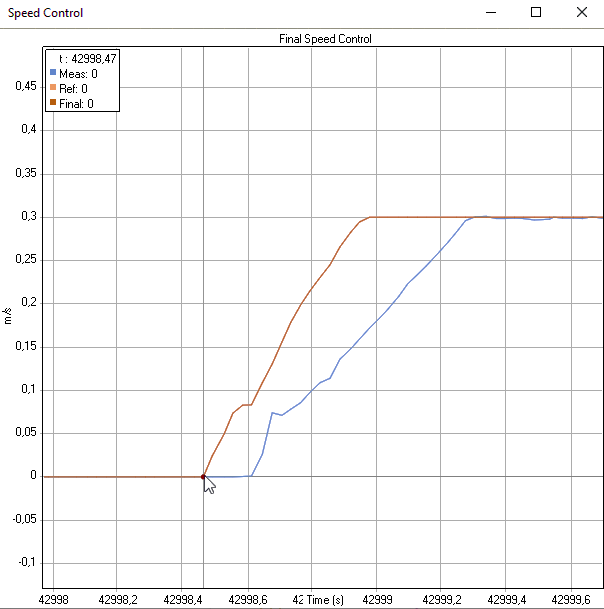 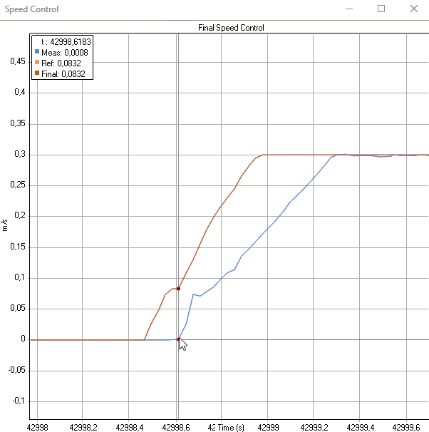
Figure 4: Feedback delay in Navitrol Monitor is calculated by subtracting the corresponding timestamps, in this case 42998.6183 s -- 42998.4700 s = 0.1483 s = 148.3 [ms].
The drive performance with the estimated value should be evaluated on a pre-defined route:
-
Let the vehicle drive in a loop in automatic mode along a route with at least two defined curves of 90 degrees, see Figure 5.
-
Monitor the point where the vehicle begins the turn in relation to its trajectory.
-
Adjust the delay time. If the vehicle starts turning too late it often means that the delay time has been underestimated and vice versa.
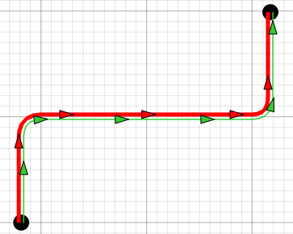
Figure 5: Example route for fine tuning the output and feedback delay. The straight path should be long enough for the vehicle to stabilize between the turns.
Distance and Heading Control Gains
| Name | Type | Default value | Description |
|---|---|---|---|
| pc_pid_heading_p | Float | 4.0 | Position control heading gain |
| pc_pid_dist_p | Float | 4.0 | Position control distance gain |
The part of the position controller that is responsible for keeping the vehicle on the route while driving can be split into two main parts: distance control and heading control. The purpose of the distance control is to minimize the distance between the navigation point of the vehicle and the route while the heading control works to align the vehicle's frame heading with the route tangent. The influence of each term might be adjusted by the corresponding gain parameters, as the optimal values heavily depend on the vehicle model itself.
The idea is to reach a highly accurate and responsive control while still minimizing the oscillations and overshoot. Often, oscillation is caused by either an inaccurate delay estimation (pc_predict_ms) or non-optimal position control gains. In general, oscillation decreases as the heading gain is increased but the higher the gain, the more important it is that the delay parameter is accurate and the delay consistent. If there are large delays in the steer controller, increasing the heading gain may have the opposite effect.
Large distance gains might give a more responsive system, but they might also introduce overshoot and oscillation. Additionally, they require an accurate positioning since noise in the localization always will propagate to the position control. Thus, it is often viable to not set the distance gain too high.
Oscillations are more prone to appear as the driving speed increases. To deal with this, Navitrol implements a way to define the position control gains in speed dependent sets according to Figure 6. If the speed settings are not implemented, then only the first set of control gains are necessary.
| Name | Type | Default value | Description |
|---|---|---|---|
| pc_pid_speed_setting[] | Float | 0.0 | Change PID settings after the speed is higher than given here (0.0 == disabled) |
| pc_pid_speed_dist_p[] | Float | 0.0 | Position control distance gain for different speed values |
| pc_pid_speed_heading_p[] | Float | 0.0 | Position control heading gain for different speed values |
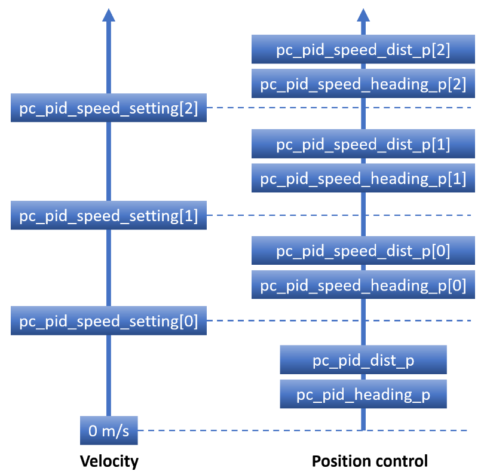
Figure 6: Visualization of how the position control gains relate to the speed settings. The names of the speed settings and control gains reflect the corresponding Navitrol parameters.
The process of calibrating the position control may be divided into the following steps:
-
Starting at the lowest speed setting, set both control gains to low values. 1 is a good starting point for both.
-
Let the vehicle drive in a loop on route with two turns of 270 degrees, see Figure 7.
-
Monitor how well the vehicle is following the route and how responsive it is to distance and heading offsets.
-
Adjust the control gains to increase the performance of the system according to the guidelines mentioned previously, starting with the distance gain.
-
Increase the speed and introduce a new speed setting when it is evident that the previously defined control gains cannot work properly anymore.
-
Repeat until the full speed range of the vehicle has been covered. For high speeds it might be necessary to adapt the route layout.
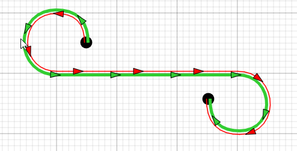
Figure 7: Route for tuning position control gains.
Distance and Heading Control Gains for loaded AGV
| Name | Type | Default value | Description |
|---|---|---|---|
| pc_pid_heading_p_loaded | Float | 0.0 | PosCont head gain for loaded AGV (0.0 == use non-loaded value) |
| pc_pid_dist_p_loaded | Float | 0.0 | PosCont dist gain for loaded AGV (0.0 == use non-loaded value) |
| pc_pid_speed_setting_loaded[] | Float | 0.0 | Change PID settings for loaded AGV after the speed is higher than given here (0.0 == disabled) |
| pc_pid_speed_heading_p_loaded[] | Float | 0.0 | PosCont head gains for loaded AGV for different speed values (0.0 == disabled) |
| pc_pid_speed_dist_p_loaded[] | Float | 0.0 | PosCont dist gains for loaded AGV for different speed values (0.0 == disabled) |
In many applications, the vehicle is meant to transport resources between different points along the route. For heavy and/or large resources it is common that the kinematic properties of the vehicle change noticeably between the loaded and unloaded state. To reduce the effect of this, Navitrol implements a way to adapt the control gains based on the current load state of the vehicle. It works together with its corresponding speed settings as seen in Figure 8.
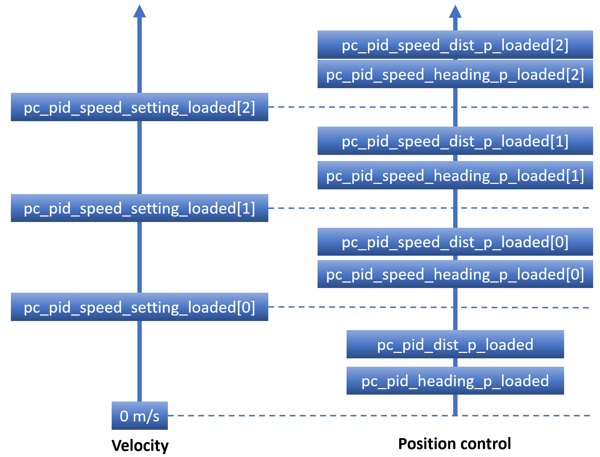
Figure 8: Visualization of how the position control gains relate to the speed settings for a loaded vehicle. The names of the speed settings and control gains reflect the corresponding Navitrol parameters.
Distance and Heading Control Gains based on load weight
| Name | Type | Default value | Description |
|---|---|---|---|
| pc_pid_load_weight_kg[] | Float | 0.0 | Change PosContPID settings for loaded AGV when load weight is higher than given here (0.0 == disabled). |
| pc_pid_speed_heading_p_loaded1[] | Float | 0.0 | PosContPID settings using two dim gain array (0.0 == disabled). See the Speed/Load array below how these parameters are used. |
| pc_pid_speed_dist_p_loaded1[] | Float | 0.0 | PosContPID settings using two dim gain array (0.0 == disabled) |
| pc_pid_speed_heading_p_loaded2[] | Float | 0.0 | PosContPID settings using two dim gain array (0.0 == disabled) |
| pc_pid_speed_dist_p_loaded2[] | Float | 0.0 | PosContPID settings using two dim gain array (0.0 == disabled) |
| pc_pid_speed_heading_p_loaded3[] | Float | 0.0 | PosContPID settings using two dim gain array (0.0 == disabled) |
| pc_pid_speed_dist_p_loaded3[] | Float | 0.0 | PosContPID settings using two dim gain array (0.0 == disabled) |
Note that Navitrol needs to get the load weight through some interface to be able to define what weight gain should be used. This information is not provided through every interface, so ask Navitec if your setup is able to use this.
If all of these gain parameters that are listed in this Chapter are enabled, the correlation between speed and load weights would look like this table below.
Priority of the gains:
- Use the weight gains: if pc_pid_load_weight[0] > 0.0.
- Use the loaded speed gains: if pc_pid_speed_setting_loaded[i], pc_pid_speed_dist_p_loaded[i] and pc_pid_speed_heading_p_loaded[i] are all > 0.0.
- Use the standard loaded gains: if pc_pid_dist_p_loaded and pc_pid_heading_p_loaded are > 0.0.
- Use non-loaded speed gains: if pc_pid_speed_setting[i], pc_pid_speed_dist_p[i] and pc_pid_speed_heading_p[i] are all > 0.0.
- Use non-loaded basic gain values pc_pid_heading_p and pc_pid_dist_p.
| Speed/Load | Not loaded | < weight0 | < weight1 | < weight2 | > weight2 |
|---|---|---|---|---|---|
| < speed0 | pc_pid_heading_p pc_pid_dist_p | pc_pid_heading_p_loaded pc_pid_dist_p_loaded | pc_pid_speed_heading_p_loaded1[0] pc_pid_speed_dist_p_loaded1[0] | pc_pid_speed_heading_p_loaded2[0] pc_pid_speed_dist_p_loaded2[0] | pc_pid_speed_heading_p_loaded3[0] pc_pid_speed_dist_p_loaded3[0] |
| < speed1 | pc_pid_speed_heading_p[0] pc_pid_speed_dist_p[0] | pc_pid_speed_heading_p_loaded[0] pc_pid_speed_dist_p_loaded[0] | pc_pid_speed_heading_p_loaded1[1] pc_pid_speed_dist_p_loaded1[1] | pc_pid_speed_heading_p_loaded2[1] pc_pid_speed_dist_p_loaded2[1] | pc_pid_speed_heading_p_loaded3[1] pc_pid_speed_dist_p_loaded3[1] |
| < speed2 | pc_pid_speed_heading_p[1] pc_pid_speed_dist_p[1] | pc_pid_speed_heading_p_loaded[1] pc_pid_speed_dist_p_loaded[1] | pc_pid_speed_heading_p_loaded1[2] pc_pid_speed_dist_p_loaded1[2] | pc_pid_speed_heading_p_loaded2[2] pc_pid_speed_dist_p_loaded2[2] | pc_pid_speed_heading_p_loaded3[2] pc_pid_speed_dist_p_loaded3[2] |
| > speed2 | pc_pid_speed_heading_p[2] pc_pid_speed_dist_p[2] | pc_pid_speed_heading_p_loaded[2] pc_pid_speed_dist_p_loaded[2] | pc_pid_speed_heading_p_loaded1[3] pc_pid_speed_dist_p_loaded1[3] | pc_pid_speed_heading_p_loaded2[3] pc_pid_speed_dist_p_loaded2[3] | pc_pid_speed_heading_p_loaded3[3] pc_pid_speed_dist_p_loaded3[3] |
Example set of parameters:
F,pc_pid_load_weight_kg[0], 350 # weight parameter array size ==3 => gives 4 ranges
F,pc_pid_load_weight_kg[1], 700 # Weight0 < Weight1 < Weight2
F,pc_pid_load_weight_kg[2], 900
F,pc_pid_speed_setting_loaded[0], 0.5 # speed parameter array size ==3 => gives 4 ranges
F,pc_pid_speed_setting_loaded[1], 1.0 # speed0 < speed1 < speed2 (when AGV is loaded)
F,pc_pid_speed_setting_loaded[2], 1.5
F,pc_pid_speed_setting[0], 0.8 # speed parameter array size ==3 => gives 4 ranges
F,pc_pid_speed_setting[1], 1.2 # speed0 < speed1 < speed2 (when AGV is not loaded)
F,pc_pid_speed_setting[2], 1.7
F,pc_pid_speed_heading_p_loaded1[0], 4.1
F,pc_pid_speed_heading_p_loaded1[1], 6.6
F,pc_pid_speed_heading_p_loaded1[2], 3.2
F,pc_pid_speed_heading_p_loaded1[3], 10.5
F,pid_speed_dist_p_loaded1[0], 4.3
F,pid_speed_dist_p_loaded1[1], 3.0
F,pid_speed_dist_p_loaded1[2], 7.5
F,pid_speed_dist_p_loaded1[3], 10.0
F,pc_pid_speed_heading_p_loaded2[0], 5.5
Stopping Accuracy
Accurate stopping is a requirement for most applications and Navitrol implements different methods to facilitate this, such as crawl mode, stop offsets and distance-based control gains:
-
Let the vehicle drive in a loop on a route with two stop points and a 90 degree turn in-between, see Figure 9. The speed of the route should be low, just as it would be in a real application.
-
Monitor where the vehicle stops in relation to the route. If there is an offset, first try to modify the crawl mode parameters:
| Parameter | Description |
|---|---|
| F,slow_down_crawl_dist | How far from the stopping point that the crawl mode is activated. |
| F,min_slow_down_speed | Speed while in crawl mode. |
- For systematic and constant stopping deviations there is a possibility to define a stopping offset:
| Parameter | Description |
|---|---|
| F,pc_stop_distance_offset | Stopping distance offset from last point (positive if stops too early) |

Figure 9: Route for tuning stopping accuracy.
Steer drive and differential drive
Furthermore, Navitrol includes an accurate stopping feature that dynamically adjusts the position controller gains when arriving at a stop point. It can be activated by setting the parameter F,pc_end_gain_dist [m] to a value larger than zero and then adjusting the different gains/gain limits specified by the parameters:
-
F,pc_end_gain1 -- Used in the dynamic calculation of the proportional gains for position control of both heading and distance.
-
F,pc_end_max_gain -- Maximum proportional gain for position control of both heading and distance.
-
F,pc_end_min_gain -- Minimum proportional gain for position control of distance.
The effect of the parameter pc_end_gain1 is illustrated in Figure 10 and one can see how an increased parameter value increases the heading gain but reduces the distance gain.
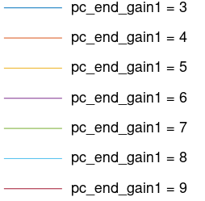 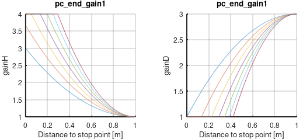
Figure 10: Illustration of how the pc_end_gain1 parameter affects the heading and distance position control gains.
Pivoting
If the mechanical construction of the vehicle allows for pivoting, where the vehicle is turning around its navigation point without any translational movement, then also this should be configured:
-
Set the required target accuracy in degrees to the Navitrol parameter F,pivot_target_head_diff_deg. Setting it too low can result in issues as the position controller is not able to fulfill it.
-
Let the vehicle drive in a loop on a route with two pivot points, see Figure 11.
-
Monitor the pivoting speed and adjust it if necessary by changing the Navitrol parameter F,pivot_speed.
-
Monitor the angular stopping accuracy. Navitrol decreases the speed reference when reaching the end of the pivot and these quantities can be adjusted by the parameters
| Parameter | Description |
|---|---|
| F,pivot_crawl_speed | Drive point velocity during pivot when close to target. |
| F,pivot_crawl_head_diff_deg | Slow driving angular distance during pivot [deg]. |
| F,pivot_dec_head_deg | Angular difference from stop target before decelerating from pivot speed to slowdown speed during pivot [deg]. |
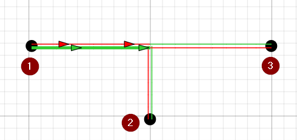
Figure 11: Route for tuning pivoting.
Parameter reconfiguration
Updated 19.07.2024
Overview
Sometimes parameters used by Navitrol for some specific purpose need to be changed when Navitrol software is updated. There are numerous possible reasons for this, some examples being
- Unifying parameter usage
- Replacing some previously used machine types with new ones
At start-up, Navitrol checks any need for such parameter configuration. If reconfiguration is needed, error ERROR_PARAMETER_RECONFIGURE_NEEDED is raised, and parameter reconfiguration is required before Navitrol can be run again. This error may be triggered by an issue in any of the parameter files used by Navitrol.
Navitrol provides command line utility to check for needed parameter changes. This utility lists all the changes needed to console and stores the same information to a log file .\params_backup\params_reconfigure_log.txt. This utility is even able to fix the parameter files automatically in many cases, if given a permission to do so.
Important note: Parameter changes needed may be related to basic driving. If that is the case, it is recommended to verify updated parameters and all driving directions having AGV lifted off the ground.
Reconfiguration policy
Parameter reconfiguration rules are called reconfiguration policies. Each Navitrol version may include any number of reconfiguration policies, and each policy has different rules for changing parameters.
Navitrol 6.54 has one reconfiguration defined policy, RoboteqDistScale.
How to use
Preconditions
- Minimum software version requirements
- Navitrol 6.54.00
Basics
If error ERROR_PARAMETER_RECONFIGURE_NEEDED is raised, parameters need to be reconfigured.
Issue cmd
./Navitrol paramsreconfigure
Navitrol examines all available parameter files and reports whether
- No reconfiguration is needed.
- Manual reconfiguration is needed; this may be necessary for different reasons, Navitrol listing the issues why automatic reconfiguration is not possible.
- Automatic reconfiguration is possible; parameter changes are listed and then user given the possibility to either allow or deny the writing of the updated information to parameter file.
Reconfiguration rules may be different to main parameter file params.txt and override files (params_override.txt, params_zone*.txt).
NOTE: Navitrol updating the parameter file means that any manually added user comments and parameter regrouping is lost. That is why user is always given the option to make the suggested parameter changes manually.
Reconfiguration policies
Reconfiguration policy RoboteqDistScale
This reconfiguration policy checks parameters used for scaling speed as reported by Roboteq motor controllers. Parameter mot_ctrl_drive_rpm_to_m_per_s should be used for that purpose, but some old machine types have used distance scaling parameters instead. Starting from Navitrol software version 6.54, mot_ctrl_drive_rpm_to_m_per_s is used for all machine types.
Machine types affected and parameters involved are listed in a table below.
| Machine type id | Kinematic type | Scaling parameter(s) SW version 6.52 and older | Scaling parameter SW version 6.54 and later | Inversion parameter(s) |
|---|---|---|---|---|
| 10012 | Omni | mot_ctrl_drive_dist_scale | mot_ctrl_drive_rpm_to_m_per_s | mot_ctrl_omni_speed_inv_input[] mot_ctrl_omni_speed_inv_output[] |
| 10016 | Diff | mot_ctrl_left_dist_scale mot_ctrl_right_dist_scale | mot_ctrl_drive_rpm_to_m_per_s | mot_ctrl_left_inv_in mot_ctrl_right_inv_in mot_ctrl_left_inv_out mot_ctrl_right_inv_out |
| 230003 | Diff | mot_ctrl_left_dist_scale mot_ctrl_right_dist_scale | mot_ctrl_drive_rpm_to_m_per_s | mot_ctrl_left_inv_in mot_ctrl_right_inv_in mot_ctrl_left_inv_out mot_ctrl_right_inv_out |
| 340001 | Diff | mot_ctrl_left_dist_scale mot_ctrl_right_dist_scale | mot_ctrl_drive_rpm_to_m_per_s | mot_ctrl_left_inv_in mot_ctrl_right_inv_in mot_ctrl_left_inv_out mot_ctrl_right_inv_out |
| 340002 | Mecanum | mot_ctrl_drive_dist_scale | mot_ctrl_drive_rpm_to_m_per_s | mot_ctrl_mecanum_inv_input[] mot_ctrl_mecanum_inv_output[] |
| 340004 | Mecanum | mot_ctrl_drive_dist_scale | mot_ctrl_drive_rpm_to_m_per_s | mot_ctrl_mecanum_inv_input[] mot_ctrl_mecanum_inv_output[] |
Parameter mot_ctrl_drive_rpm_to_m_per_s has been mistakenly obligatory parameter for many machine types that have not used it all. If parameter file contains both old style dist_scale parameters and mot_ctrl_drive_rpm_to_m_per_s, automatic reconfiguration is not possible. In such a case reconfiguration suggests manual configuration, and reports what prevents automatic configuration:
ISSUE: Both mot_ctrl_left_dist_scale/mot_ctrl_right_dist_scale and mot_ctrl_drive_rpm_to_m_per_s defined
If one knows that dist_scale parameters have right values, it is possible to overcome this issue by simply removing mot_ctrl_drive_rpm_to_m_per_s from parameter file.
NOTE: Inversion parameters are modified by this policy only for "main" parameter file params.txt. As Navitrol version 6.52 supported only open loop control with Roboteq motor controllers, output inversion parameters are never modified.
Parameter backup files
Whenever any of the current parameter files is modified by reconfiguration, backup file is stored to folder ./params_backup. File name of each such a backup file:
- starts with original file name
- includes
reconfigureto indicate that backup was created by reconfiguration - includes date and time
Backup files are named like:
- params_reconfigure_backup_2024.04.16_10.50.27.txt
- params_override_reconfigure_backup_2024.04.16_11.48.37.txt
- params_zone0_reconfigure_backup_2024.04.16_14.21.30.txt
Console output and logging
Console output and information stored to log by command ./Navitrol paramsreconfigure are almost identical. Some additional information is stored to log file, including Navitrol software version used, date and time.
The following shows an example of logged data for all three possible cases as mentioned above; no reconfiguration needed, manual reconfiguration needed and automatic reconfiguration possible.
#####################################################################################
Parameter reconfiguration
Date: 2024.04.16_10.30.48
SWVer 6.54.00
#####################################################################################
Check for reconfiguration need for file params.txt, machine type 10016 using policy RoboteqDistScale
Parameter reconfiguration not required for params.txt
Check for reconfiguration need for file params_override.txt, machine type 10016 using policy RoboteqDistScale
Parameter reconfiguration not required for params_override.txt
#####################################################################################
Parameter reconfiguration
Date: 2024.04.16_10.35.27
SWVer 6.54.00
#####################################################################################
Check for reconfiguration need for file params.txt, machine type 10016 using policy RoboteqDistScale
Manual parameter reconfiguration needed for params.txt
ISSUE: Both mot_ctrl_left_dist_scale/mot_ctrl_right_dist_scale and mot_ctrl_drive_rpm_to_m_per_s defined
Actions:
1. Add/change mot_ctrl_drive_rpm_to_m_per_s to right value in parameter file (check value of mot_ctrl_left_dist_scale/mot_ctrl_right_dist_scale)
2. Add/change in/out inversion parameters to parameter file if old dist_scale used was negative
3. Remove parameters mot_ctrl_left_dist_scale and mot_ctrl_right_dist_scale
#####################################################################################
Parameter reconfiguration
Date: 2024.04.16_10.48.25
SWVer 6.54.00
#####################################################################################
Check for reconfiguration need for file params.txt, machine type 10016 using policy RoboteqDistScale
Parameter reconfiguration needed for params.txt - configuring changes
Add: F,mot_ctrl_drive_rpm_to_m_per_s, 0.001440
Add/Change: I,mot_ctrl_left_inv_in, 1
Add/Change: I,mot_ctrl_right_inv_in, 0
Remove: F,mot_ctrl_left_dist_scale, -0.001440
Remove: F,mot_ctrl_right_dist_scale, -0.001440
Changes are not stored to file params.txt
Check for reconfiguration need for file params_override.txt, machine type 10016 using policy RoboteqDistScale
Parameter reconfiguration needed for params_override.txt - configuring changes
Add: F,mot_ctrl_drive_rpm_to_m_per_s, 0.011100
Remove: F,mot_ctrl_left_dist_scale, -0.011100
Remove: F,mot_ctrl_right_dist_scale, 0.011100
Storing changes to file params_override.txt
NOTE: Stored override parameter files might not include all parameters listed in this output. If the value matches with basic parameters, then values are not stored in override file.
Navitrol parameters
Updated 19.09.2024
This document lists all Navitrol parameters. Some of the listed parameters are applicable only for specific machine types.
AGV Identification and dimensions
| Name | Type | Default value | Description |
|---|---|---|---|
| machine_type_id | int | 0 | Id of vehicle type |
| machine_type_key | uint | 0 | Verification key of machine type id |
| dim_front | float | 1.3 | AGV lengthwise dimension from navigation point to the front end. Positive value. |
| dim_rear | float | -0.51 | AGV lengthwise dimension from navigation point to the rear end. Negative value. |
| dim_left | float | 0.27 | AGV dimension from navigation point to the left side. Positive value. |
| dim_right | float | -0.27 | AGV dimension from navigation point to the right side. Negative value. |
| machine_id | int | 1 | Machine ID number reported to fleet control and other systems. |
| wheel_dist | float | 0.5 | Lengthwise offset of steering wheel from navigation point, positive is toward the front of the machine. |
| wheel_off_center | float | 0.0 | Sideways offset of steering wheel from navigation point, positive is to the left. |
| wheel_track | float | 0.248 | Distance between the centers of the differential drive wheels. |
| reported_machine_type | int | 0 | Override machine type reported to fleet control. 0 = no override |
| wheel_x | float[] | 0.0 | Longitudinal position of wheel relative to vehicle navigation point. Positive towards front. Indexes according to customer wheel numbering. |
| wheel_y | float[] | 0.0 | Lateral position of wheel relative to vehicle center point. Positive to the left. Indexes according to customer wheel numbering. |
| wheel_y_off | float[] | 0.0 | Wheel offset from its turning axle, lateral distance when wheel is straight. Positive to the left. Indexes according to customer wheel numbering. |
AGV Interfaces
Scanners
| Name | Type | Default value | Description |
|---|---|---|---|
| scanner_sends_every_nth_meas | int[] | 1 | Scanner sends only every nth meas - not Navigation SW controllable, valid for specific scanners only |
| scanner_meas_model | int[] | -1 | Measurement scanner model. Same as scanner_model_front |
| scanner_meas_addr | string[] | 1.1.1.1:500 | 1.1.1.1:500 |
| scanner_meas_use_nth_meas | int[] | 1 | Use only every nth measurement beam from each scan. |
| scanner_meas_upside_down | int[] | 0 | Mounting orientation: 0 = normal, 1 = upside down |
| scanner_meas_dang_factor | float[] | -1.0 | Scanner angular resolution (dAng) scaling, -1 to disable, >0 scaling factor for dAng (reasonable values 0.995...1.005) |
| scanner_meas_x | float[] | 0.0 | Scanner lengthwise mounting position relative to navigation point. Positive is towards the front of the machine. |
| scanner_meas_y | float[] | 0.0 | Scanner lateral mounting position relative to navigation point. Positive is left from the machine center line. |
| scanner_meas_sen_ang_deg | float[] | 0.0 | Scanner mounting angle relative to machine frame. |
| scanner_meas_beam_min_ang_deg | float[] | 0.0 | Scanner beam min&max angles define the range of valid scanner measurement beams for each scanner with 0 deg being the first measurement beam |
| scanner_meas_beam_max_ang_deg | float[] | 360.0 | Scanner beam min&max angles define the range of valid scanner measurement beams for each scanner with 0 deg being the first measurement beam |
| scanner_meas_scan_delay | float[] | 0.0 | Delay of scanner measurements[ms] relative to odometry measurements (negative if scanner measurement is older than odometry) |
| scanner_meas_scan_rot_cor_invert_dir | int[] | 0 | Invert direction in scanner rotation correction. |
| scanner_meas_offset_mm | int[] | 0 | Scanner measurement offset correction [mm]. |
| scanner_meas_loc_override_level | int | -1 | Minimum floor level for using measurement scanner for localization: -1 = disable, 0 = forced override (all levels), >0 = normal minimum level |
| scanner_meas_safety_zone_dir | int[] | 0 | Which direction should the slowdown and stops happen on safety zone triggers. 0 = none, 1 = backward only, 2 = forward only, 3 = both directions |
| scanner_model_front | int | 0 | Front scanner model: 0 = Sick Ethernet, 1 = Sick S300, 2 = Omron OS32C, 3 = P+F R2000 UHD 4 = obsolete, 5 = Leuze RSL400, 6 = Hokuyo UAM-05LP, 7 = Keyence SZ-V 32N, 8 = Sick uScan, 9 = Sick S300 TCP/IP, 10 = Reserved, 11 = Quanergy M1, 12 = Hokuyo SCIP, 15 = DDS, 16 = Leuze RSL200 |
| scanner_model_rear | int | 0 | Rear scanner model. Value range same as in scanner_model_front. |
| scan_rear_front_selection | int | 3 | Defines which scanners are connected: 0 = no scanners, 1 = rear scanner only, 2 = front scanner only, 3 = both rear and front scanners |
| scan_rear_front_localization_selection | int | 3 | Defines which scanners are used for localization: 0 = no scanners, 1 = rear scanner only, 2 = front scanner only, 3 = both rear and front scanners |
| scanner_to_move | int | 0 | Scanner to move: 0 = disable, 1 = rear scanner, 2 = front scanner |
| front_scanner_serial_port | string | /dev/ttyS0 | Insert serial port name here. E.g. ttyRX0 if using external serial card and ttyS0 if using Debian Jessie |
| rear_scanner_serial_port | string | /dev/ttyS1 | Insert serial port name here. E.g. ttyRX1 if using external serial card and ttyS1 if using Debian Jessie |
| front_scanner_ip | string | Front scanner IP | |
| rear_scanner_ip | string | Rear scanner IP | |
| front_scanner_port | int | 44818 | Front scanner port: Sick 2111, PEF 80, Omron 44818, Velodyne 2368, Hokuyo 10940, Leuze 9999, Keyence 8800, QuanergyM1 4141 |
| rear_scanner_port | int | 44818 | Rear scanner port: Sick 2111, PEF 80, Omron 44818, Velodyne 2368, Hokuyo 10940, Leuze 9999, Keyence 8800, QuanergyM1 4141 |
| safety_scanner_model | int[] | -1 | Safety scanner model. Same as scanner_model_front |
| safety_scanner_addr | string[] | ||
| scan_virtual_z_min | float | 0.0 | 3D scanner Z-coordinate minimum value to use for 2D projection. |
| scan_virtual_z_max | float | 0.0 | 3D scanner Z-coordinate maximum value to use for 2D projection. |
| scan_front_use_nth_meas | int | 1 | Use only every nth measurement beam from each scan for front scanner. |
| scan_rear_use_nth_meas | int | 1 | Use only every nth measurement beam from each scan for rear scanner. |
| scan_rear_upside_down | int | 0 | Mounting orientation: 0 = normal, 1 = upside down |
| scan_front_upside_down | int | 0 | Mounting orientation: 0 = normal, 1 = upside down |
| scan_rear_offset_mm | int | 0 | Scanner measurement offset correction [mm]. |
| scan_front_offset_mm | int | 0 | Scanner measurement offset correction [mm]. |
| idle_front_scanner_warning_zone_set | int | 0 | Idle warning zone set for front scanner. For example used in ethernet supervisor warning zone section. |
| idle_rear_scanner_warning_zone_set | int | 0 | Idle warning zone set for rear scanner. For example used in ethernet supervisor warning zone section. |
| scan_delay | float | 0.0 | Delay of scanner measurement [ms] relative to odometry measurements. |
| scan_timing_mode | int | 1 | Enable automatic scanner timestamp variation correction. |
| scan_rear_x | float | -0.09 | Rear scanner lengthwise mounting position relative to navigation point. Positive is towards the front of the machine. |
| scan_rear_y | float | 0.0 | Rear scanner lateral mounting position relative to navigation point. Positive is left from the machine center line. |
| scan_front_x | float | 0.99 | Front scanner lengthwise mounting position relative to navigation point. Positive is towards the front of the machine. |
| scan_front_y | float | 0.0 | Front scanner lateral mounting position relative to navigation point. Positive is left from the machine center line. |
| scan_rear_sen_ang | float | 90.0 | Rear scanner mounting angle relative to machine frame. Scanner's X-axis is towards the right side of the scanner. Therefore a scanner that points towards the front of the machine has a mounting angle of -90 degrees. |
| scan_front_sen_ang | float | 90.0 | Front scanner mounting angle relative to machine frame. Scanner's X-axis is towards the right side of the scanner. Therefore a scanner that points towards the front of the machine has a mouting angle of -90 degrees. |
| scan_front_beam_min_ang_deg | float | 0.0 | Scanner beam min&max angles define the range of valid scanner measurement beams for each scanner with 0 deg being the first measurement beam. |
| scan_front_beam_max_ang_deg | float | 360.0 | Scanner beam min&max angles define the range of valid scanner measurement beams for each scanner with 0 deg being the first measurement beam. |
| scan_rear_beam_min_ang_deg | float | 0.0 | Scanner beam min&max angles define the range of valid scanner measurement beams for each scanner with 0 deg being the first measurement beam. |
| scan_rear_beam_max_ang_deg | float | 360.0 | Scanner beam min&max angles define the range of valid scanner measurement beams for each scanner with 0 deg being the first measurement beam. |
| calib_scan_delay_n_dist_beams | int | 31 | Maximum/ideal number of beams considered when calculating the average distance to the wall. |
| calib_scan_delay_min_ok_beams | int | 20 | Minimum number of beams that have to be valid. |
| calib_scan_delay_dev_limit | float | 0.05 | Maximum deviation of the distance measured by a single beam from the average measured distance. Beams not fulfilling this are not used for the scanner delay calibration. |
| calib_scan_delay_min_dist | float | 0.2 | Minimum beam distance to environment to activate scanner delay calculation [m] |
| calib_scan_delay_max_dist | float | 5.0 | Maximum beam distance to environment to activate scanner delay calculation [m] |
| scan_min_dist | float | 0.2 | Scanner minimum distance measurement to use. |
| scan_front_beam_disable_start_ang_deg_arr | float[] | -1.0 | Defines the start points of disabled scanner measurement zones for front scanner with 0 deg being the first measurement beam. -1 = Disabled, 0 = Min, 360 = Max |
| scan_front_beam_disable_end_ang_deg_arr | float[] | -1.0 | Defines the end points of disabled scanner measurement zones for front scanner with 0 deg being the first measurement beam. -1 = Disabled, 0 = Min, 360 = Max |
| scan_rear_beam_disable_start_ang_deg_arr | float[] | -1.0 | Defines the start points of disabled scanner measurement zones for rear scanner with 0 deg being the first measurement beam. -1 = Disabled, 0 = Min, 360 = Max |
| scan_rear_beam_disable_end_ang_deg_arr | float[] | -1.0 | Defines the end points of disabled scanner measurement zones for rear scanner with 0 deg being the first measurement beam. -1 = Disabled, 0 = Min, 360 = Max |
| scan_s300_max_dist | float | 29.9 | Sick S300 scanner maximum distance measurement to use. |
| scan_sick_eth_max_dist | float | 65.0 | Sick LMS/Tim scanner maximum distance measurement to use. |
| scan_pef_max_dist | float | 131.0 | Pepperl+Fuchs scanner maximum distance measurement to use. |
| scan_omron_max_dist | float | 65.5 | Omron scanner maximum distance measurement to use. |
| scan_hokuyo_max_dist | float | 39.9 | Hokuyo scanner maximum distance measurement to use. |
| scan_leuze_rsl400_max_dist | float | 65.5 | Leuze scanner maximum distance measurement to use. |
| scan_leuze_rsl200_max_dist | float | 25.0 | Leuze rsl200 scanner maximum distance measurement to use. |
| scan_velodyne_max_dist | float | 100.0 | |
| scan_keyence_max_dist | float | 60.0 | |
| scan_uscan_max_dist | float | 65.5 | Sick micro/nanoScan scanner maximum distance measurement to use. |
| scan_ros_max_dist | float | 100.0 | Maximum (virtual) scanner distance measurement from ROS [m]. |
| scan_quanergy_m1_max_dist | float | 65.5 | Quanergy scanner maximum distance measurement to use. |
| scan_dds_max_dist | float | 100.0 | DDS scanner maximum distance measurement to use. |
| scan_halo_ang | float | 1.5 | Angle [deg] for measurements to disable around detected reflectors. |
| scan_max_dt_err_ms | int | 5 | Maximum allowed difference in detected scan interval [ms] compared to expected interval. |
| scan_rot_cor | int | 1 | Enable scanner rotation correction. |
| scan_rot_cor_invert_dir | int | 0 | Invert direction in front/rear scanner rotation correction. |
| scan_s300_reconnect_fail_mode | int | 0 | Defines behaviour when reconnecting fails more than scan_s300_max_reconnect_retries times: 0 = keep reconnecting, 1 = reboot navigation software, 2 = reboot whole computer |
| scan_s300_max_reconnect_retries | int | 0 | Maximum number of reconnect retries, > 3 recommended (see also scan_s300_reconnect_fail_mode). |
| scan_leuze_freq_ms | float | 40.0 | |
| scan_omron_set_warning_zones | int | 0 | Enables changing Omron active scanner warning zones. |
| scan_leuze_use_two_prot_funcs | int | 0 | Select use of protective function with Leuze: 0 = only single protective function, 1 = two protective functions (4 zones in total). Only for RSL 400. |
| scan_leuze_warning_zone_mode | int | 0 | Select which warning zones to trigger from the Leuze status message. With single protective functio: 0 = protection + warning zone 1, 2 = protection + warning zone 2, 5 = warning zones 1 + 2. Only for RSL 400. |
| scan_pef_use_dang_old | int | 0 | P&F angular resolution calculated using: 0 = corrected method, 1 = old method w. known issues |
| scan_pef_samples_per_scan | int | 2400 | P&F scanner number of samples per scan. For example: 2400, 3600, 5040, 7200. Refer to the documentation for more valid values. |
| scan_pef_freq | int | 25 | P&F scanner measurement frequency [Hz]. Refer to the documentation for valid frequency/samples per scan values. |
| scan_pef_use_nth_scan | int | 1 | Use every nth scan from scanner. |
| scan_pef_display_on | int | 0 | Determines whether the scanner led display should be left on. |
| scanner_dAng_factor | float | -1.0 | Common scanner dAng scaling, -1 to disable, >0 scaling factor for dAng (reasonable values 0.995 ... 1.005) |
| scanner_dAng_factor_front | float | -1.0 | Front scanner dAng scaling, -1 to disable, >0 scaling factor for dAng (reasonable values 0.995 ... 1.005) |
| scanner_dAng_factor_rear | float | -1.0 | Rear scanner dAng scaling, -1 to disable, >0 scaling factor for dAng (reasonable values 0.995 ... 1.005) |
| scan_pef_lcm_mode | int | 0 | Lens Contamination Monitor (LCM) sensitivity: 0 = disabled, 1 = low, 2 = medium, 3 = high |
| scan_leuze_dAng_custom_increment_enabled | int | 0 | Enable Leuze specific custom angular resolution (dAng) correction. |
| scan_sick_protection_zone_safety_cutoff_path | int | 0 | Sick nano/microScan SafeCutOffPath number used to check protection zone violation. 0 = disabled |
| scan_sick_warning_zone1_safety_cutoff_path | int | 0 | Sick nano/microScan NonSafeCutOffPath number used to check warning zone 1 violation. 0 = disabled |
| scan_sick_warning_zone2_safety_cutoff_path | int | 0 | Sick nano/microScan NonSafeCutOffPath number used to check warning zone 2 violation. 0 = disabled |
| scanner_protection_zone_sensitivity | int | 1 | Number of consecutive scanner protection zone violations required. |
| scanner_front_distance_correction_leuze | float | 0.0 | Leuze only: Front scanner distance measurement correction value [m]. |
| scanner_rear_distance_correction_leuze | float | 0.0 | Leuze only: Rear scanner distance measurement correction value [m]. |
| scan_n_buffered_meas | int | 0 | Defines how many measurements that are kept in the buffer for sick s300. |
| scan_rot_corr_max_ninterp | int | 5 | |
| scanner_heading_offset_gain | float | 0.01 | Heading auto correction gain for right scanner when using two scanners for reflector pattern detection, 0 to disable. |
| scanner_pos_x_offset_gain | float | 0.01 | Scanner x-position auto correction gain for right scanner when using two scanners for reflector pattern detection, 0 to disable. |
| scanner_pos_y_offset_gain | float | 0.01 | Scanner y-position auto correction gain for right scanner when using two scanners for reflector pattern detection, 0 to disable. |
Ethernet supervisor
| Name | Type | Default value | Description |
|---|---|---|---|
| supervisor_safety_scanner_enabled | int | 0 | Enables supervisor safety scanner. |
| supervisor_speedlimit_clear_on_standby | int | 1 | When state is changed to STANDBY: 0 = Do not clear speed limit, 1 = Clear speed limit |
| supervisor_ctrl_max_nbr_invalid_feedback | int | 1 | Maximum number of consecutive invalid feedback messages from Supervisor. |
| veh_inte_heartbeat_interval | int | 0 | Defines how often the error message is sent to supervisor [ms]. 0 = Periodic sending disabled. |
| veh_inte_error_message_type | int | 0 | Defines which error message will be sent: 0 = basic (201), 1 = with error levels (202) |
| veh_inte_error_message_mode | int | 2 | Defines if active errors, warnings or both are sent in supervisor error message: 0 = Do not send the error message, 1 = Send only errors, 2 = send errors and warnings. |
| veh_inte_error_message_send_only_on_request | int | 1 | 0 = send errors/warnings if active errors change, 1 = send active errors only on request (or periodically, if veh_inte_heartbeat_interval > 0). |
| veh_inte_error_message_send_only_active_errors | int | 1 | 0 = send errors/warnings if they have been active and not sent yet, 1 = send only active errors/warnings. |
| veh_inte_env_read_rply_msg | int | 1 | Defines if environment read message (1108) will be sent every time environment is loaded: 0 = disabled, 1 = enabled. |
| veh_inte_sym_point_rply_msg | int | 1 | Defines if symbolic point data message (3103) will be sent every time when segment file is loaded: 0 = disabled, 1 = enabled. |
| veh_inte_send_drive_ready_msg | int | 0 | Defines if drive ready message (3129) will be sent every time AGV finishes a drive order: 0 = disabled, 1 = enabled. |
| veh_inte_target_symbolic_point_info_interval_ms | int | 0 | Defines the time interval [ms] for sending target symbolic point information message (6103). 0 = disabled. |
| supervisor_ctrl_speed_scale_in | float | 1.0 | Speed scale for supervisor controlled machine types. Incoming speed measurements are multiplied by this value. |
| supervisor_ctrl_speed_scale_out | float | 1.0 | Speed scale for supervisor controlled machine types. Outgoing speed references are divided by this value. |
| eth_ctrl_check_brake | int | 1 | Enables check for brake release before driving. |
| eth_set_speed_ref_prior_to_drive | int | 0 | Enables setting speed reference before driving. Can be useful e.g. to give direction of movement to safety system. |
| supervisor_eth_ip | string | 192.168.2.141 | Supervisor IP address. Needed if Supervisor works as a server. |
| supervisor_eth_port | int | 5015 | Supervisor communication server side port |
| supervisor_eth_server | int | 1 | Defines whether Supervisor is server or client: 0 = client, 1 = server |
| supervisor_eth_endianness | int | 0 | Defines Supervisor data endianness, 0 - little endian, 1 - big endian |
| supervisor_eth_enabled | int | 0 | Enables Supervisor interface |
| supervisor_eth_odometry_receive_timeout_ms | int | 250 | Defines a communication alive time limit for supervisor communication when odometry is received from supervisor. If no messages are received within the defined time, Navitrol tries to reconnect to socket. |
| supervisor_eth_receive_timeout_ms | int | 5000 | Defines a communication alive time limit for supervisor communication. If no messages are received within the defined time, Navitrol tries to reconnect to socket. |
| supervisor_eth2_ip | string | 1.1.1.1 | Secondary Supervisor IP address. Needed if Supervisor works as a server. |
| supervisor_eth2_port | int | 5016 | Secondary Supervisor communication server side port. |
| supervisor_eth2_server | int | 1 | Defines whether secondary Supervisor is server or client: 0 = client, 1 = server |
| supervisor_eth2_endianness | int | 0 | Defines secondary Supervisor data endianness: 0 = little endian, 1 = big endian |
| supervisor_eth2_enabled | int | 0 | Enables secondary Supervisor interface. |
| agv_supervisor_custom_errors_max | int | 0 | Maximum number of supervisor errors/warnings sent to fleet control. |
| eth_ctrl_msgnum_validate | int | 1 | When enabled Navitrol will validate that the message numbers in received supervisor control messages increase by one between each message: 0 = disabled, 1 = Enabled |
| veh_inte_cums_overflow | uint | 0xFFFFFFFFU | Defines the encoder overflow value when using differential drive odometry. |
| veh_inte_manual_ang_vel | float | 0.785 | Maximum angular velocity [rad/s] for manual control from supervisor. |
| supervisor_remote_ctrl_speed_scale_pct | float | 50.0 | Speed scale 10-100% from maximum wheel speed. Applied when remote control status section is used in the Ethernet supervisor interface. |
| agv_plc_ip | string | 192.168.1.158 | IP address of the onboard PLC. |
| use_supervisor_standard_comms | int | 0 | 0 = use custom messages, 1 = use standard supervisor messages |
| use_supervisor_standard_drive_ctrl_section | int | 0 | 0 = Using custom manual (e-15 key) feature, 1 = Use standard drive control section |
| supervisor_can_enabled | int | 0 | Enables CAN based supervisor interface. |
| supervisor_can_nodeid_arr | int[] | 0 | CAN node ID of supervisor PLC. 0 = disabled |
| supervisor_can_nodeid_mode_arr | int[] | 0 | Mode for node ID at corresponding index: 0 = slave - Navigation SW transmits RPDOs, 1 = master - Navigation SW transmits TPDOs. |
| supervisor_can_rx_timeout_ms | int | 0 | Timeout of PDOs received by Navigation SW. |
| supervisor_can_tx_interval_ms | int | 0 | Tranmsission interval of PDOs transmitted by Navigation SW. |
| supervisor_can_tx1_typeid_arr | int[] | 0 | Type ID of message transmitted by Navigation SW to CAN bus on PDO 1. |
| supervisor_can_tx2_typeid_arr | int[] | 0 | Type ID of message transmitted by Navigation SW to CAN bus on PDO 2. |
| supervisor_can_tx3_typeid_arr | int[] | 0 | Type ID of message transmitted by Navigation SW to CAN bus on PDO 3. |
| supervisor_can_tx4_typeid_arr | int[] | 0 | Type ID of message transmitted by Navigation SW to CAN bus on PDO 4. |
| supervisor_can_rx1_typeid_arr | int[] | 0 | Type ID of message received by Navigation SW from CAN bus on PDO 1. |
| supervisor_can_rx2_typeid_arr | int[] | 0 | Type ID of message received by Navigation SW from CAN bus on PDO 2. |
| supervisor_can_rx3_typeid_arr | int[] | 0 | Type ID of message received by Navigation SW from CAN bus on PDO 3. |
| supervisor_can_rx4_typeid_arr | int[] | 0 | Type ID of message received by Navigation SW from CAN bus on PDO 4. |
Motor controller
| Name | Type | Default value | Description |
|---|---|---|---|
| mot_ctrl_watchdog_ms | int | 200 | Motor control hardware watchdog timeout [ms]. |
| mot_ctrl_drive_angle_diag_time_ms | int | 200 | Maximum time [ms] steer angle is detected to be controlled in the wrong direction. Value 0 disables diagnostics. |
| mot_ctrl_drive_dir_diag_time_ms | int | 250 | Maximum time [ms] motor is detected to run in wrong direction. Value 0 disables diagnostics. |
| mot_ctrl_serial_port | string | /dev/ttyS2 | Serial port for first Roboteq controller (steer/diff). |
| mot_ctrl_serial_port2 | string | /dev/ttyS2 | Serial port for second Roboteq controller (mecanum). |
| mot_ctrl_left_inv_in | int | -1 | Input inversion for the left wheel of diff drive: -1 = copies value of mot_ctrl_left_inv_out, 0 = disabled, 1 = enabled |
| mot_ctrl_right_inv_in | int | -1 | Input inversion for the right wheel of diff drive: -1 = copies value of mot_ctrl_right_inv_out, 0 = disabled, 1 = enabled |
| mot_ctrl_left_inv_out | int | 0 | Output inversion for the left wheel of diff drive: 0 = disabled, 1 = enabled |
| mot_ctrl_right_inv_out | int | 0 | Output inversion for the right wheel of diff drive: 0 = disabled, 1 = enabled |
| mot_ctrl_steer_v_inv_out | int | 0 | Enables inversion of steering motor output. |
| mot_ctrl_steer_v_inv_in | int | 0 | Enables inversion of steer angle input. |
| mot_ctrl_wheel_v_inv_in | int | -1 | Input inversion for the driving wheel of steer drive: -1 = copies value of mot_ctrl_wheel_v_inv_out, 0 = disabled, 1 = enabled |
| mot_ctrl_wheel_v_inv_out | int | 0 | Output inversion for the driving wheel of steer drive: 0 = disabled, 1 = enabled |
| mot_ctrl_drive_min_output | int | 0 | Minimum output (absolute value) sent to the motor controller (cutoff point). Not used for steer drive. |
| mot_ctrl_drive_max_output | int | 1000 | Maximum output (absolute value) sent to the motor controller (cutoff point). Not used for steer drive. |
| mot_ctrl_drive_max_stall_output_pct | float | 40.0 | Percentage of maximum output sent to the motor controller when AGV is at stall (AGV not moving with non-zero reference). |
| mot_ctrl_max_output_current_percent | int | 100 | Maximum output current (percent) sent to the motor controller. |
| mot_ctrl_enable_ctrl_token_switching | int | 0 | Enables Ctrl token switching. |
| mot_ctrl_left_dist_scale | float | -0.000001 | Convert encoder pulses of the left wheel to driven distance [m] (differential drive). |
| mot_ctrl_right_dist_scale | float | -0.000001 | Convert encoder pulses of the right wheel to driven distance [m] (differential drive). |
| mot_ctrl_drive_dist_scale | float | -0.000001 | Convert encoder pulses of the drive wheels to driven distance [m] (steer, mecanum, omni). |
| mot_ctrl_drive_rpm_to_m_per_s | float | 0.0001 | Convert measured RPM of the wheel's motor to the velocity of the wheel [m/s]. |
| mot_ctrl_steer_ang_offset_deg | float | 0.0 | Offset to correct error in AGV's steering angle [deg]. |
| mot_ctrl_steer_ang_scale | float | 1.0 | Multiplier to correct error in AGV's steering angle scale. |
| mot_ctrl_turn_rate_in_scale | float | 1.0 | |
| mot_ctrl_turn_rate_out_scale | float | 1.0 | |
| mot_ctrl_speed_in_long_scale | float | 1.0 | |
| mot_ctrl_speed_out_long_scale | float | 1.0 | |
| mot_ctrl_speed_in_lat_scale | float | 1.0 | |
| mot_ctrl_speed_out_lat_scale | float | 1.0 | |
| mot_ctrl_max_wheel_v_fw | float | 0.8 | Default maximum drive wheel velocity when driving forwards [m/s] |
| mot_ctrl_max_wheel_v_bw | float | 0.8 | Default maximum drive wheel velocity when driving in reverse [m/s] |
| mot_ctrl_max_wheel_acc | float | 0.5 | Default maximum drive wheel acceleration [m/s^2]. The reference speed is ramped up based on this value. |
| mot_ctrl_max_wheel_dec | float | 0.5 | Default maximum drive wheel deceleration [m/s^2]. The reference speed is ramped down based on this value. |
| mot_ctrl_output_lowpass_alpha | float | 1.0 | Applies filter to steer and velocity outputs. Default value for no filtering |
| mot_ctrl_max_steer_rate_deg_p_s | float | 30.0 | Maximum wheel steering rate [deg/s]. Limits the speed of the planned trajectory. |
| mot_ctrl_max_steer_rate_scale | float | 3.0 | Scale factor for mot_ctrl_max_steer_rate_deg_p_s used during driving to limit the reference steering angle change. |
| mot_ctrl_max_steer_ang_deg | float | 90.0 | Maximum angle limit for the steer wheel. |
| mot_ctrl_min_steer_ang_deg | float | -90.0 | Minimum angle limit for the steer wheel. |
| mot_ctrl_max_wheel_dec_ramped_fast_stop | float | 0.0 | Maximum wheel deceleration during ramped fast stop. Only used if larger than mot_ctrl_max_wheel_dec |
| mot_ctrl_forced_velocity_ramping_enabled | int | 0 | Enabels that the speed reference is forced to always follow acc and dec ramps. |
| mot_ctrl_max_wheel_v_fw_arr | float[] | 0.8 | Default maximum drive wheel velocity when driving forwards [m/s] that can be selected to replace the default limit. |
| mot_ctrl_max_wheel_v_bw_arr | float[] | 0.8 | Default maximum drive wheel velocity when driving in reverse [m/s] that can be selected to replace the default limit. |
| mot_ctrl_max_wheel_acc_arr | float[] | 0.5 | Default maximum drive wheel acceleration [m/s^2] that can be selected to replace the default limit. The reference speed is ramped up based on this value. |
| mot_ctrl_max_wheel_dec_arr | float[] | 0.5 | Default maximum drive wheel deceleration [m/s^2] that can be selected to replace the default limit. The reference speed is ramped down based on this value. |
| mot_ctrl_max_steer_rate_deg_p_s_arr | float[] | 30.0 | Maximum wheel steering rate [deg/s] that can be selected to replace the default limit. Limits the speed of the planned trajectory. |
| mot_ctrl_steer_ang_p | float | 1.0 | Proportional gain for steering motor control. |
| mot_ctrl_steer_ang_d | float | 1.0 | Derivative gain for steering motor control. |
| mot_ctrl_steer_ang_i | float | 1.0 | Integral gain for steering motor control. |
| mot_ctrl_steer_ang_deadband_deg | float | 0.25 | Steering angle deadband. |
| mot_ctrl_wheel_v_p | float | 1.0 | Proportional gain for driving motor in forward direction. |
| mot_ctrl_wheel_v_d | float | 1.0 | Derivative gain for driving motor in forward direction. |
| mot_ctrl_wheel_v_i | float | 1.0 | |
| mot_ctrl_wheel_v_rev_p | float | 1.0 | Proportional gain for driving motor in backward direction. |
| mot_ctrl_wheel_v_rev_d | float | 1.0 | Derivative gain for driving motor in backward direction. |
| mot_ctrl_diffunit_left_inv_input | int[] | 0 | Enables input inversion for diffunit left wheel. |
| mot_ctrl_diffunit_right_inv_input | int[] | 0 | Enables input inversion for diffunit right wheel. |
| mot_ctrl_diffunit_left_inv_output | int[] | 0 | Enables output inversion for diffunit left wheel. |
| mot_ctrl_diffunit_right_inv_output | int[] | 0 | Enables output inversion for diffunit right wheel. |
| mot_ctrl_left_p | float | 1.0 | Proportional gain for controlling left motor speed. Valid only for motor controllers that do not have internal PID. |
| mot_ctrl_left_d | float | 1.0 | Derivative gain for controlling left motor speed. Valid only for motor controllers that do not have internal PID. |
| mot_ctrl_right_p | float | 1.0 | Proportional gain for controlling right motor speed. Valid only for motor controllers that do not have internal PID. |
| mot_ctrl_right_d | float | 1.0 | Derivative gain for controlling right motor speed. Valid only for motor controllers that do not have internal PID. |
| mot_ctrl_mecanum_roboteq1_channel1_wheel | int | 0 | Maps channel of roboteq controller to wheel index. Indexes are 0 = FL (Forward Left), 1 = FR (Forward Right), 2 = RL (Rear Left), 3 = RR (Rear Right). For example, mot_ctrl_mecanum_roboteq1_channel1_wheel, 0 would mean that channel 1 of motor controller with node id defined in can_roboteq_nodeid[0] would be wheel 0 = FL. |
| mot_ctrl_mecanum_roboteq1_channel2_wheel | int | 1 | Maps channel of roboteq controller to wheel index. Indexes are 0 = FL (Forward Left), 1 = FR (Forward Right), 2 = RL (Rear Left), 3 = RR (Rear Right). For example, mot_ctrl_mecanum_roboteq1_channel2_wheel, 1 would mean that channel 2 of motor controller with node id defined in can_roboteq_nodeid[0] would be wheel 1 = FR. |
| mot_ctrl_mecanum_roboteq2_channel1_wheel | int | 2 | Maps channel of roboteq controller to wheel index. Indexes are 0 = FL (Forward Left), 1 = FR (Forward Right), 2 = RL (Rear Left), 3 = RR (Rear Right). For example, mot_ctrl_mecanum_roboteq2_channel1_wheel, 2 would mean that channel 1 of motor controller with node id defined in can_roboteq_nodeid[1] would be wheel 2 = RL. |
| mot_ctrl_mecanum_roboteq2_channel2_wheel | int | 3 | Maps channel of roboteq controller to wheel index. Indexes are 0 = FL (Forward Left), 1 = FR (Forward Right), 2 = RL (Rear Left), 3 = RR (Rear Right). For example, mot_ctrl_mecanum_roboteq2_channel2_wheel, 3 would mean that channel 2 of motor controller with node id defined in can_roboteq_nodeid[1] would be wheel 3 = RR. |
| mot_ctrl_mecanum_roboteq3_channel1_wheel | int | 2 | Maps channel of roboteq controller to wheel index. Indexes are 0 = FL (Forward Left), 1 = FR (Forward Right), 2 = RL (Rear Left), 3 = RR (Rear Right). |
| mot_ctrl_mecanum_roboteq4_channel1_wheel | int | 3 | Maps channel of roboteq controller to wheel index. Indexes are 0 = FL (Forward Left), 1 = FR (Forward Right), 2 = RL (Rear Left), 3 = RR (Rear Right). |
| mot_ctrl_mecanum_nodeid | int[] | 0 | CANopen NodeId. 0 = not defined, Indexes are 0 = FF (Forward Left), 1 = FR (Forward Right), 2 = RL (Rear Left), 3 = RR (Rear Right). |
| mot_ctrl_mecanum_inv_output | int[] | 0 | Enables output inversion for mecanum AGV. Indexes are 0 = FL, 1 = FR, 2 = RL, 3 = RR. |
| mot_ctrl_mecanum_inv_input | int[] | 0 | Enables input inversion for mecanum AGV. Indexes are 0 = FL, 1 = FR, 2 = RL, 3 = RR. |
| mot_ctrl_mecanum_p | float[] | 1.0 | Proportional gain for motor speed. Used for motor controllers without internal PID controller. Indexes are 0 = FL, 1 = FR, 2 = RL, 3 = RR. |
| mot_ctrl_mecanum_d | float[] | 1.0 | Derivative gain for motor speed. Used for motor controllers without internal PID controller. Indexes are 0 = FL, 1 = FR, 2 = RL, 3 = RR. |
| mot_ctrl_nanotec_p_gain | int | 60000 | Nanotec motor controller proportional gain. |
| mot_ctrl_nanotec_i_gain | int | 500 | Nanotec motor controller integral gain. |
| mot_ctrl_steer_min_output | float | 5.0 | Minimum output sent to the steering motor. Not used if array parameters (mot_ctrl_steer_min_output_arr[] mot_ctrl_steer_max_output_arr[]) defined. |
| mot_ctrl_steer_min_output_arr | float[] | 1.0 | Minimum output sent to the steering motor. If set, non-array parameters (mot_ctrl_steer_min_output, mot_ctrl_steer_max_output) are not used. |
| mot_ctrl_steer_max_output | float | 999.0 | Maximum output sent to the steering motor. Not used if array parameters (mot_ctrl_steer_min_output_arr[] mot_ctrl_steer_max_output_arr[]) defined. |
| mot_ctrl_steer_max_output_arr | float[] | 4999.0 | Maximum output sent to the steering motor. If set, non-array parameters (mot_ctrl_steer_min_output, mot_ctrl_steer_max_output) are not used. |
| mot_ctrl_wheel_v_min | float | 0.0005 | Vehicle is thought to be standing still when measured wheel speed is below this value [m/s]. |
| mot_ctrl_wheel_v_out_dead_band | float | 20.0 | |
| mot_ctrl_steer_ang_out_dead_band | float | 20.0 | Steering motor deadband. |
| mot_ctrl_steer_ang_stopped_deadband_deg | float | 2.0 | Steering angle deadband when AGV is stopped. |
| mot_ctrl_steer_ang_meas_min_limit_deg | float | -120.0 | Minimum limit for measured steering angle. Used for unit conversion. |
| mot_ctrl_steer_ang_meas_max_limit_deg | float | 120.0 | Maximum limit for measured steering angle. Used for unit conversion. |
| mot_ctrl_steer_ang_target_min_limit_deg | float | -90.0 | Minimum limit for target steering angle. Used for unit conversion. |
| mot_ctrl_steer_ang_target_max_limit_deg | float | 90.0 | Maximum limit for target steering angle. Used for unit conversion. |
| mot_ctrl_steer_driving_min_output | float | 0.0 | Minimum output sent to the driving motor. Applicable only for steer AGV. |
| mot_ctrl_steer_driving_max_output | float | 9999.0 | Maximum output sent to the driving motor. Applicable only for steer AGV. |
| mot_ctrl_v_deadband | float | 0.05 | Wheel speed deadband. |
| mot_ctrl_calib_v0 | float | 0.5 | Motor controller calibration speed 0. |
| mot_ctrl_calib_v1 | float | 0.1 | Motor controller calibration speed 1. |
| mot_ctrl_odo_from_speed | int | 1 | |
| mot_ctrl_odo_steer_type_irob | int | 0 | 0 = rear odo, front steer, 1 = bicycle model |
| mot_ctrl_steer_angle_hard_limit_deg | float | 90.0 | Steer drive AGV hard angle limit. 0.0 to disable. |
| mot_ctrl_steer_torque_mNm | int | 0 | Torque set to the steering motor controller. |
| mot_ctrl_drive_torque_mNm | int | 0 | Torque set to the driving motor controller. |
| mot_ctrl_reset_errors_timer | int | 500 | After the defined time [ms] Navigation SW tries automatically reset motor control faults. Value 0 = fault reset disabled |
| mot_ctrl_curtis_reboot_controller_timer_ms | int | 5000 | After the defined time [ms] Navigation SW tries to reboot Curtis motor controller in order to clear faults. Value 0 = controller reboot disabled |
| mot_ctrl_curtis_max_number_reboot_controller | int | 2 | Maximum number of attemts to reboot the motor controller in order to clear faults. |
| mot_ctrl_odometry_from_rpm | int | 1 | Source of odometry: 0 = encoder, 1 = rpm |
| filt_gain_raw_speed_input | float | 0.0 | Smoothing raw speed input from motor controller. |
| mot_ctrl_disable_main_contactor_ms | int | 0 | Disable main contactor to save energy after standing still for the defined time. 0 = disable this feature. |
| mot_ctrl_disable_delay_ms | int | 1000 | Motor controller disabling delay [ms] after activating brakes: -1 = never disable, 0 = no delay |
| mot_ctrl_startup_delay_main_contactor_ms | int | 0 | Time given for main contactor to stabilize before enabling drive. 0 = no delay, 500 = recommended for Schwarzmueller. |
| mot_ctrl_startup_delay_drive_enable_ms | int | 0 | Time given for driveEnable to take hold before releasing brakes. 0 = no delay, 100 = recommended for Schwarzmueller. |
| mot_ctrl_startup_delay_brake_release_ms | int | 0 | Time given for brakes to fully open before giving rpm out. 0 = no delay, 200 = recommended for Schwarzmueller, 100..300 = recommended for Curtis. |
| mot_ctrl_omni_steer_angle_hard_limit_deg_pos | float[] | 0.0 | Sets an error if the control or sensor value exceeds this value. The CAN control output is cut at this positive limit. Value 0.0 for no limit. Only used for omnis with CAN interface. |
| mot_ctrl_omni_steer_angle_hard_limit_deg_neg | float[] | 0.0 | Sets error if the control or sensor value goes below this value. The CAN control output is cut at this negative limit. Value 0.0 for no limit. Only used for omnis with CAN interface. |
| mot_ctrl_steer_type | int[] | 1 | Type of the motor controller for steering: 1 = Schwarzmueller, 2 = Engel |
| mot_ctrl_omni_speed_inv_input | int[] | 0 | Inversion of speed input if the sensor gives negative speed when the wheel is rotated forwards. Indexes according to customer wheel numbering. |
| mot_ctrl_omni_speed_inv_output | int[] | 0 | Inversion of speed output if a positive reference gives a negative speed. Indexes according to customer wheel numbering. |
| mot_ctrl_omni_speed_p | float[] | 1.0 | Speed control proportional gain for each wheel. Indexes according to customer wheel numbering. |
| mot_ctrl_omni_speed_d | float[] | 1.0 | Speed control derivative gain for each wheel. Indexes according to customer wheel numbering. |
| mot_ctrl_omni_steer_inv_input | int[] | 0 | Inversion of steer angle input if the sensor value increases clockwise. Indexes according to customer wheel numbering. |
| mot_ctrl_omni_steer_inv_output | int[] | 0 | Inversion of steer motor output if a positive reference gives a clockwise wheel turning. Indexes according to customer wheel numbering. |
| mot_ctrl_omni_steer_p | float[] | 1.0 | Steer control proportional gain for each wheel. Indexes according to customer wheel numbering. |
| mot_ctrl_omni_steer_d | float[] | 1.0 | Steer control derivative gain for each wheel. Indexes according to customer wheel numbering. |
| mot_ctrl_omni_steer_i | float[] | 1.0 | Steer control integral gain for each wheel. Indexes according to customer wheel numbering. |
| mot_ctrl_omni_speed_control_used | int[] | 0 | 1 indicates wheels with speed control. Indexes according to customer wheel numbering. |
| mot_ctrl_engel_p_gain | float | 0.2 | Engel motor controller proportinal gain. |
| mot_ctrl_engel_i_time_ms | float | 4.0 | Engel motor controller integration time [ms]. |
| mot_ctrl_engel_home_offset | int | 0 | Engel motor controller homing offset. |
| mot_ctrl_engel_estop_enabled | int | 1 | Engel emergency stop activation. Emergency stop activation comes from digital input 8 (BU-RD wire). DI8 should be powered in normal mode. |
| mot_ctrl_micontrol_estop_check_enabled | int | 1 | Activates MiControl E-STOP check. Emergency stop activation comes from digital input 6 and 7 (STO-A and STO-B). |
| mot_ctrl_simulated_drive_controller_type_arr | int[] | MOTOR_CONTROLLER_TYPE_SIMULATED | Type of the simulated drive motor controller: -1 - Single channel simulated motor controller |
| mot_ctrl_drive_controller_type_arr | int[] | MOTOR_CONTROLLER_TYPE_NOT_DEFINED | Type of the drive motor controller: 0 - none, 1 - Schwarzmueller (not implemented), 2 - Engel (not implemented) 3 - Nanotec, 4 - Kinco, 5 - Roboteq single channel, 6 - Roboteq dual channel 1, 7 - Roboteq dual channel 2 |
| mot_ctrl_drive_can_nodeid_arr | int[] | 0 | Motor controller CAN node id for drive motor controller. 0 = this parameter not used |
| mot_ctrl_drive_inv_input_arr | int[] | 0 | Invert drive motor controller input. 0 = no inversion, 1 = invert input |
| mot_ctrl_drive_inv_output_arr | int[] | 0 | Invert drive motor controller output. 0 = no inversion, 1 = invert output, |
| mot_ctrl_drive_min_output_arr | int[] | -1 | Minimum output sent to the drive motor controller (cutoff point). -1 = this parameter not used |
| mot_ctrl_drive_max_output_arr | int[] | -1 | Maximum output sent to the drive motor controller (cutoff point). -1 = this parameter not used |
| mot_ctrl_drive_max_stall_output_pct_arr | float[] | 0.0 | Percentage of maximum output sent to the drive motor controller when AGV is at stall (AGV not moving with non-zero reference). 0.0 = this parameter not used. |
| mot_ctrl_drive_dist_scale_arr | float[] | 0.0 | Distance scale for drive motor controller. 0.0 = this parameter not used. |
| mot_ctrl_drive_rpm_to_m_per_s_arr | float[] | 0.0 | Value used to convert drive motor controller rpm to m/s. 0.0 = this parameter not used. |
| mot_ctrl_drive_torque_mNm_arr | int[] | -1 | Torque value (milli Newton meter) send to drive motor controller. -1 = this parameter not used |
| mot_ctrl_drive_p_arr | float[] | 0.0 | P value of the drive motor controller. 0.0 = this parameter not used. |
| mot_ctrl_drive_i_arr | float[] | 0.0 | I value of the drive motor controller. 0.0 = this parameter not used. |
| mot_ctrl_drive_d_arr | float[] | 0.0 | D value of the drive motor controller. 0.0 = this parameter not used. |
| mot_ctrl_drive_estop_enabled_arr | int[] | -1 | Emergency stop activation for drive motor controller, -1 = this parameter not used, 0 = estop not used, 1 = estop used |
| mot_ctrl_drive_disable_delay_ms_arr | int[] | -1 | Drive motor controller disabling delay after activating brakes in ms, -1 = this parameter not used, 0 = no delay, 300 = recommended for Schwarzmueller |
| mot_ctrl_drive_startup_delay_main_contactor_ms_arr | int[] | -1 | Time given in ms for drive motor controller main contactor to stabilize before enabling drive. -1 = this parameter not used, 0 = no delay, 500 = recommended for Schwarzmueller. |
| mot_ctrl_drive_startup_delay_drive_enable_ms_arr | int[] | -1 | Time given in ms for driveEnable to take hold before releasing brakes on drive motor controller. -1 = this parameter not used, 0 = no delay, 100 = recommended for Schwarzmueller. |
| mot_ctrl_drive_startup_delay_brake_release_ms_arr | int[] | -1 | Time given in ms for brakes to fully open before giving rpm out to drive motor controller. -1 = this parameter not used, 0 = no delay, 200 = recommended for Schwarzmueller, 100..300 = recommended for Curtis |
| mot_ctrl_drive_reset_errors_timer_ms_arr | int[] | -1 | After the defined time (ms) Navigation SW tries automatically reset drive motor controller faults. -1 = this parameter not used, 0 = fault reset disabled |
| mot_ctrl_drive_disable_main_contactor_ms_arr | int[] | -1 | Disable drive motor controller main contactor to save energy after standing still for the defined time (ms), -1 = this parameter not used, 0 = disable this feature |
| mot_ctrl_drive_encoder_pulses_per_rev_arr | uint[] | 0 | Encoder resolution (pulses per revolution) used to calculate RPM if drive motor controller does not provide that. 0 = this parameter not used |
| mot_ctrl_drive_p | float | 0.0 | P value of the drive motor controller. 0.0 = this parameter not used. |
| mot_ctrl_drive_i | float | 0.0 | I value of the drive motor controller. 0.0 = this parameter not used. |
| mot_ctrl_drive_d | float | 0.0 | D value of the drive motor controller. 0.0 = this parameter not used. |
| mot_ctrl_drive_estop_enabled | int | -1 | Emergency stop activation for drive motor controller, -1 = this parameter not used, 0 = estop not used, 1 = estop used |
| mot_ctrl_drive_disable_delay_ms | int | -1 | Drive motor controller disabling delay after activating brakes in ms, -1 = this parameter not used, 0 = no delay, 300 = recommended for Schwarzmueller |
| mot_ctrl_drive_startup_delay_main_contactor_ms | int | -1 | Time given in ms for drive motor controller main contactor to stabilize before enabling drive. -1 = this parameter not used, 0 = no delay, 500 = recommended for Schwarzmueller. |
| mot_ctrl_drive_startup_delay_drive_enable_ms | int | -1 | Time given in ms for driveEnable to take hold before releasing brakes on drive motor controller. -1 = this parameter not used, 0 = no delay, 100 = recommended for Schwarzmueller. |
| mot_ctrl_drive_startup_delay_brake_release_ms | int | -1 | Time given in ms for brakes to fully open before giving rpm out to drive motor controller. -1 = this parameter not used, 0 = no delay, 200 = recommended for Schwarzmueller, 100..300 = recommended for Curtis |
| mot_ctrl_drive_reset_errors_timer_ms | int | -1 | After the defined time (ms) Navigation SW tries automatically reset drive motor controller faults. -1 = this parameter not used, 0 = fault reset disabled |
| mot_ctrl_drive_disable_main_contactor_ms | int | -1 | Disable drive motor controller main contactor to save energy after standing still for the defined time (ms), -1 = this parameter not used, 0 = disable this feature |
| mot_ctrl_drive_encoder_pulses_per_rev | uint | 0 | Encoder resolution (pulses per revolution) used to calculate RPM if drive motor controller does not provide that. |
| mot_ctrl_simulated_steer_controller_type_arr | int[] | MOTOR_CONTROLLER_TYPE_SIMULATED | Type of the simulated motor controller for steering: -1 - Single channel simulated motor controller |
| mot_ctrl_steer_controller_type_arr | int[] | MOTOR_CONTROLLER_TYPE_NOT_DEFINED | Type of the motor controller for steering: Same values as mot_ctrl_drive_controller_type_arr |
| mot_ctrl_steer_can_nodeid_arr | int[] | 0 | Motor controller CAN node id for steer motor. 0 = this parameter not used |
| mot_ctrl_steer_inv_input_arr | int[] | 0 | Invert steer angle input. 0 = no inversion, 1 = invert input |
| mot_ctrl_steer_inv_output_arr | int[] | 0 | Invert steer motor controller output. 0 = no inversion, 1 = invert output |
| mot_ctrl_steer_torque_mNm_arr | int[] | -1 | Torque value send to steer motor controller. -1 = this parameter not used |
| mot_ctrl_steer_p_arr | float[] | 0.0 | P value of the steer motor controller. 0.0 = this parameter not used |
| mot_ctrl_steer_i_arr | float[] | 0.0 | I value of the steer motor controller. 0.0 = this parameter not used |
| mot_ctrl_steer_d_arr | float[] | 0.0 | D value of the steer motor controller. 0.0 = this parameter not used |
| mot_ctrl_steer_estop_enabled_arr | int[] | -1 | Emergency stop activation for steer motor controller, -1 = this parameter not used, 0 = estop not used, 1 = estop used |
| mot_ctrl_steer_disable_delay_ms_arr | int[] | -1 | Steer motor controller disabling delay after activating brakes in ms, -1 = this parameter not used, 0 = no delay, 300 = recommended for Schwarzmueller |
| mot_ctrl_steer_startup_delay_main_contactor_ms_arr | int[] | -1 | Time given in ms for steer motor controller main contactor to stabilize before enabling drive. -1 = this parameter not used, 0 = no delay, 500 = recommended for Schwarzmueller. |
| mot_ctrl_steer_startup_delay_drive_enable_ms_arr | int[] | -1 | Time given in ms for driveEnable to take hold before releasing brakes on steer motor controller. -1 = this parameter not used, 0 = no delay, 100 = recommended for Schwarzmueller. |
| mot_ctrl_steer_startup_delay_brake_release_ms_arr | int[] | -1 | Time given in ms for brakes to fully open before giving rpm out to steer motor controller. -1 = this parameter not used, 0 = no delay, 200 = recommended for Schwarzmueller, 100..300 = recommended for Curtis |
| mot_ctrl_steer_reset_errors_timer_ms_arr | int[] | -1 | After the defined time (ms) Navigation SW tries automatically reset steer motor controller faults. -1 = this parameter not used, 0 = fault reset disabled |
| mot_ctrl_steer_disable_main_contactor_ms_arr | int[] | -1 | Disable steer motor controller main contactor to save energy after standing still for the defined time (ms), -1 = this parameter not used, 0 = disable this feature |
| mot_ctrl_steer_encoder_pulses_per_rev_arr | uint[] | 0 | Encoder resolution (pulses per revolution) used to calculate RPM if steer motor controller does not provide that. 0 = this parameter not used |
| mot_ctrl_steer_p | float | 0.0 | P value of the steer motor controller. 0.0 = this parameter not used |
| mot_ctrl_steer_i | float | 0.0 | I value of the steer motor controller. 0.0 = this parameter not used |
| mot_ctrl_steer_d | float | 0.0 | D value of the steer motor controller. 0.0 = this parameter not used |
| mot_ctrl_steer_estop_enabled | int | -1 | Emergency stop activation for steer motor controller, -1 = this parameter not used, 0 = estop not used, 1 = estop used |
| mot_ctrl_steer_disable_delay_ms | int | -1 | Steer motor controller disabling delay after activating brakes in ms, -1 = this parameter not used, 0 = no delay, 300 = recommended for Schwarzmueller |
| mot_ctrl_steer_startup_delay_main_contactor_ms | int | -1 | Time given in ms for steer motor controller main contactor to stabilize before enabling drive. -1 = this parameter not used, 0 = no delay, 500 = recommended for Schwarzmueller. |
| mot_ctrl_steer_startup_delay_drive_enable_ms | int | -1 | Time given in ms for driveEnable to take hold before releasing brakes on steer motor controller. -1 = this parameter not used, 0 = no delay, 100 = recommended for Schwarzmueller. |
| mot_ctrl_steer_startup_delay_brake_release_ms | int | -1 | Time given in ms for brakes to fully open before giving rpm out to steer motor controller. -1 = this parameter not used, 0 = no delay, 200 = recommended for Schwarzmueller, 100..300 = recommended for Curtis |
| mot_ctrl_steer_reset_errors_timer_ms | int | -1 | After the defined time (ms) Navigation SW tries automatically reset steer motor controller faults. -1 = this parameter not used, 0 = fault reset disabled |
| mot_ctrl_steer_disable_main_contactor_ms | int | -1 | Disable steer motor controller main contactor to save energy after standing still for the defined time (ms), -1 = this parameter not used, 0 = disable this feature |
| mot_ctrl_steer_encoder_pulses_per_rev | uint | 0 | Encoder resolution (pulses per revolution) used to calculate RPM if steer motor controller does not provide that. |
Roboteq
| Name | Type | Default value | Description |
|---|---|---|---|
| roboteq_check_echo | int | 1 | 0 = do not check command echo, 1 = check command echo, 2 = old obsolete value (behaves as 1). |
| roboteq_channel1_right | int | 1 | Defines which motor is controlled by channel one of the motor controller: 0 = left, 1 = right |
| roboteq_brake_output1 | int | -1 | Digital out number for first brake, -1 if disabled. |
| roboteq_brake_output2 | int | -1 | Digital out number for second brake, -1 if disabled. |
| roboteq_angle_sensor_type | int | 1 | Roboteq motor controller's angle sensor type: 0 = Hall, Sine Cosine and Resolver sensors, 1 = encoders |
| roboteq_angle_sensor_type_arr | int[] | -1 | Override values for roboteq_angle_sensor_type when CAN interface is used and sensor type is not the same for all controllers. |
| roboteq_channel1_steer | int | 1 | 1 = channel one of Motor controller is right steering, 0 = driving. |
Nanotec
| Name | Type | Default value | Description |
|---|---|---|---|
| nanotec_emergency_stop_IO_enabled | int | 0 | Nanotec internal emergency stop activation. Emergency stop activation comes from digital inputs 1 and 2. |
Syntron
| Name | Type | Default value | Description |
|---|---|---|---|
| syntron_profiled_acceleration | uint | 327408 | Syntron motor controller acceleration slope [pulses/s^2] |
| syntron_profiled_deceleration | uint | 327679 | Syntron motor controller deceleration slope [pulses/s^2] |
| syntron_max_acceleration | uint | 3537456 | Syntron motor controller maximum acceleration [pulses/s^2] |
| syntron_max_deceleration | uint | 3537648 | Syntron motor controller maximum deceleration [pulses/s^2] |
| syntron_max_torque | uint | 43513 | Syntron motor controller maximum torque [mNm]. |
Quicktron
| Name | Type | Default value | Description |
|---|---|---|---|
| quicktron_nodeid | int | 0 | 0 = not defined, >0 Node ID for quicktron can Card. In default setup the node ID is 1. |
| quicktron_zero_encoders | int | 0 | 0 = no zeroing, 1 = Reset angle data to 0, needed only for calibration. |
Dunker
| Name | Type | Default value | Description |
|---|---|---|---|
| dunker_mot_ctrl_drive_cmd | uint | 117 | DriveCommand used: 116 (x74) Speed mode, 117 (x75) Sub Speed mode |
| dunker_mot_ctrl_start_delay_ms | uint | 100 | Start delay [ms]. Must be > t1 + t2 (Brake_Management_OffDelay1 + Brake_Management_OffDelay2). |
| dunker_mot_ctrl_cooldown_time_ms | uint | 200 | Cooldown time [ms] before reactivating drive. |
| dunker_mot_ctrl_drive_values_override | int | 0 | Enables Dunkermotoren OD parameter values written using Navigation SW parameters in params.txt. |
| dunker_mot_ctrl_drive_vel_kp | uint[] | 100 | VEL_Kp - P-gain of the speed/position PID-controller. |
| dunker_mot_ctrl_drive_svel_kp | uint[] | 600 | SVEL_Kp - P-gain of the SVEL-PI-controller. |
| dunker_mot_ctrl_drive_svel_ki | uint[] | 60 | SVEL_Ki - I-gain of the SVEL-PI-controller. |
| dunker_mot_ctrl_drive_curr_kp | uint[] | 20 | CURR_Kp - P-gain of the PI-current-controller. |
| dunker_mot_ctrl_drive_curr_ki | uint[] | 10 | CURR_Ki - I-gain of the PI-current-controller. |
| dunker_mot_ctrl_drive_vel_kvff | uint[] | 1000 | VEL_Kvff - defines the velocity feed-forward control. |
| dunker_mot_ctrl_drive_motor_type | uint[] | 1 | MOTOR_Type: 0 = Brush type motor (DC), 1 = Brushless motor (BLDC). |
| dunker_mot_ctrl_drive_motor_poln | uint[] | 8 | MOTOR_PolN - number of poles in motor. |
| dunker_mot_ctrl_drive_motor_polarity | uint[] | 2 | MOTOR_Polarity - change sign/unit by setting corresponding bit for, PWM (Bit0), Hall sensor (Bit1), Encoder (Bit3), Abs Encoder (Bit4). |
| dunker_mot_ctrl_drive_vel_feedback | uint[] | 2378 | VEL_Feedback - feedback source of the velocity and the positioning controller, 0 = Auto, 256 = AIN0, 274 = EMF feedback, 2378 = HALL, 2410 = Encoder, 2426 = Absolute Encoder. |
| dunker_mot_ctrl_drive_svel_feedback | uint[] | 2378 | SVEL_Feedback - source of the SVEL feedback, 0 = Auto, 274 = EMF feedback, 2378 = HALL, 2410 = Encoder, 2426 = Absolute Encoder. |
| dunker_mot_ctrl_drive_motor_enc_resolution | uint[] | 24 | MOTOR_ENC_Resolution - resolution [pulses per revolution] of the incremental encoder. |
| dunker_mot_ctrl_drive_motor_curr_limitmaxpos | uint[] | 50000 | CURR_LimitMaxPos - maximum current [mA] for the positive range. |
| dunker_mot_ctrl_drive_motor_curr_limitmaxneg | uint[] | 50000 | CURR_LimitMaxNeg - maximum current [mA] for the negative range. |
| dunker_mot_ctrl_drive_motor_curr_dynlimitmode | uint[] | 1 | CURR_DynLimitMode - activates and deactivates the dynamic limitation of the current: 0 = limitation deactivated, 1 = limitation activated |
| dunker_mot_ctrl_drive_motor_curr_dynlimitpeak | uint[] | 50000 | CURR_DynLimitPeak - Dynamic current limit I*t - Peak current [mA]. |
| dunker_mot_ctrl_drive_motor_curr_dynlimitcont | uint[] | 16900 | CURR_DynLimitCont - Dynamic current limit I*t - Continuous current [mA]. |
| dunker_mot_ctrl_drive_motor_curr_dynlimittime | uint[] | 2000 | CURR_DynLimitTime - maximum time [ms] for the peak current. |
| dunker_mot_ctrl_drive_velocity_acc_delta_v | uint[] | 3000 | Velocity Acceleration - Delta v [rpm] |
| dunker_mot_ctrl_drive_velocity_dec_delta_v | uint[] | 3000 | Velocity Deceleration - Delta v [rpm] |
| dunker_mot_ctrl_drive_pid_vel_kaff | uint[] | 150 | VEL_Kaff - PID-Controller Acceleration Feed Forward [mA]. |
CAN Configuration
| Name | Type | Default value | Description |
|---|---|---|---|
| can_steer_drive_steering_nodeid | int | 30 | Node ID for steer drive steering controller. |
| can_steer_drive_driving_nodeid | int | 31 | Node ID for steer drive driving controller. |
| can_diffunit_left_nodeid | int[] | 0 | CANOpen Node ID for diffunit left motor controllers. |
| can_diffunit_right_nodeid | int[] | 0 | CANOpen Node ID for diffunit right motor controllers. |
| can_diff_drive_left_nodeid | int | 30 | Node ID for diff drive left motor controller. |
| can_diff_drive_right_nodeid | int | 31 | Node ID for diff drive right motor controller. |
| can_sick_mls_event_timer_ms | int | 10 | Can sick mls event timer for TPDO1. |
| can_sick_mls_calibrate_offset | int[] | 0 | Trigger offset calibration - see SICK MLS manual for instructions. |
| can_sick_mls_factory_reset | int[] | 0 | Factory reset the can sick mls sensor - see SICK MLS manual for instructions. |
| can_enabled | int | 0 | Enables CAN communication. |
| can_nmt_master | int | 1 | Enables Navigation SW to work as CANOpen NMT master on primary CAN. |
| can_sync | int | 1 | Navigation SW (Primary CAN) role for CANOpen SYNC messages: 0 = None, 1 = SYNC producer, 2 = SYNC consumer |
| can_sync_rx_mode | int | 1 | Select sync receive PDOs: 0 = Legacy (all predefined), 1 = True CANOpen SYNC PDOs only. Ignored if can_sync=0 or no CANOpen SYNC PDOs exist. |
| can_send_nmt_start_always | int | 0 | Defines when Navigation SW (Primary CAN) sends CIA301_NMT_CMD_START: 0 = Only on state change, 1 = Periodically every 1 second. |
| can_ch | int | 0 | Primary CAN channel number. Assumes device names like can0, can1,... |
| can_device | string | Primary CAN device name; overrides can_ch if defined. | |
| can_bitrate_k | int | 250 | Primary CAN bus bitrate [Kbit/s]: 125, 250, 500 or 1000 |
| can_min_tx_interval_us | int | 0 | Primary CAN minimum transmit interval: 0 = not defined, >0 = Mininimu interval [us]. |
| can_primary_any_id | int | 0 | Primary CAN valid PDO id's that can be registered: 0 = Only valid PDO id's can be registered, 1 = Any id can be registered. |
| can_sdo_interval_ms | int | 100 | Primary CAN SDO message interval [ms] used by Navigation software. |
| can_sdo_timeout_ms | int | 500 | Primary CAN SDO message response timeout [ms] used by Navigation software. |
| can_sdo_write_from_file | int | 0 | Enables SDO writes from file sdo_write.txt for primary CAN. |
| can_heartbeat_producer_enable | int | 0 | Enables Navigation software to be Heartbeat producer for primary CAN. |
| can_pdo_timeout_redefine | int | 0 | CAN PDO timeouts/intervals: 0 = Using fixed defaults , 1 = Redefines based on parameters (control_interval_us, control_interval_error_ratio). |
| can_nodeguard_guard_time_ms | int | 200 | Nodeguarding guard time [ms]: 0 = Nodeguard disabled |
| can_reconnect_timer_ms | int | 200 | CAN reconnect delay [ms] after fatal issue has been detected. |
| can_comms_restart_timer_ms | int | 0 | 0 = disabled |
| can_bypass_failed_sdo_timer_secs | int | 0 | After this time [s] CAN will be forced to OPERATIONAL state(with ERROR), even if all SDO writes are not successful. 0 = disabled |
| can_reset_flush_all | int | 0 | |
| can_error_logging_interval_ms | int | 5000 | The interval [ms] for logging CAN not rxed |
| can2_ch | int | -1 | Secondary CAN channel number: -1 = disabled. Assumes device names like can0, can1,... |
| can2_device | string | Secondary CAN device name; overrides can2_ch if defined. | |
| can2_bitrate_k | int | 250 | Secondary CAN bus bitrate [Kbit/s]: 125, 250, 500 or 1000. |
| can2_min_tx_interval_us | int | 0 | Secondary CAN minimum transmit interval: 0 = not defined, >0 = Minimum interval [us] |
| can2_sync | int | 0 | Enables Navigation software to send SYNC messages to secondary CAN (tied to primary CAN SYNC). |
| can2_send_nmt_start | int | 0 | Enables Navigation software to send NMT start messages to secondary CAN (tied to primary CAN NMT start). |
| can_enable_tpdo_transmit | int[] | 1 | Enables sending of each corresponding TPDO. All enabled by default, so these parameters can be used to disable sending of specific TPDOs. |
| can_use_drive_encoders | int | 0 | Select whether external CAN drive encoders are used for a steer/diff AGV: 0 = not used, 1= external drive encoder(s) used. |
| external_navigation_controller_node_id | int | 0 | External Navigation Controller Node ID: 0 = not defined, 1-127 = valid node ID. |
| navigation_software_node_id | int | 0 | Navigation Software CANOpen Node ID: 0 = not defined, 1-127 = valid node ID. |
| can_steer_enc_model | int | 0 | Steering encoder model: 0 = generic (no config), 1 = Leine&Linde (RSA608), 2 = Sick (AHS/AHM36) |
| can_roboteq_nodeid | int[] | -1 | Roboteq controller CAN node ID. |
| can_roboteq_listen_nodeid | int[] | -1 | Roboteq controller CAN listen node ID. |
| can_roboteq_comms_mode | int | 0 | 0 = miniCAN, 1 = CANOpen; common setting for all Roboteq controllers. |
| can_roboteq_drive_ctrl_index | int[] | 0 | Maps roboteq drive controller node ID to wheel index. For example, can_roboteq_drive_ctrl_index[0], 0 would mean that node ID defined can_roboteq_nodeid[0] would be drive wheel 0. |
| can_roboteq_steer_ctrl_index | int[] | 1 | Maps roboteq steer controller node ID to wheel index. For example, can_roboteq_steer_ctrl_index[0], 1 would mean that node ID defined can_roboteq_nodeid[1] would be steer wheel 0. |
| can_roboteq_right_ctrl_index | int[] | 0 | Maps roboteq right controller node ID to wheel index. For example, can_roboteq_right_ctrl_index[0], 0 would mean that node ID defined can_roboteq_nodeid[0] would be right wheel 0. |
| can_roboteq_left_ctrl_index | int[] | 1 | Maps roboteq left controller node ID to wheel index. For example, can_roboteq_left_ctrl_index[0], 1 would mean that node ID defined can_roboteq_nodeid[1] would be left wheel 0. |
| can_omni_steer_ctrl_nodeid | int[] | 0 | Node ID for omni steering controller (array index = wheel number). 0 = not defined, 1-127 = valid node ID. |
| can_omni_drive_ctrl_nodeid | int[] | 0 | Node ID for omni drive controller (array index = wheel number). 0 = not defined, 1-127 = valid node ID. |
| can_extbatt_if_node_id | int | 0 | Can node ID for battery managment system: 0 = not defined, 1-127 = valid node ID. |
| can_extbatt_if_secondary_bus | int | 0 | Defines which CAN bus is used by BMS: 0 = Primary CAN Bus, 1 = Secondary CAN Bus |
| can_actuator_ctrl_node_id | int[] | 0 | CAN node ID of the actuator: 0 = not defined, 1-127 = valid node ID. |
| can_actuator_ctrl_model | int[] | 0 | CAN actuator controller model: 0 = None, 1 = Schwarzmueller (reference). 2 = Curtis (reference/binary) |
| can_actuator_ctrl_torque | int[] | 0 | Motor control torque. |
| can_actuator_ctrl_rpm_to_m_per_s | float[] | 1.0 | Motor control convert rpm to m/s. For Curtis, should be set between to actuator max speed / 32767. |
| can_actuator_ctrl_prop_valve_idx | int[] | 0 | Proportional valve index. For Schwarzmueller - 1 (pin27) or 2 (pin16). For Curtis F2-T - 0 (pin 2) or 1 (pin 19). |
| can_actuator_ctrl_prop_valve_max | int[] | 200 | Proportional valve max output. For Curtis, should be set between 0-32767. |
| can_actuator_ctrl_prop_valve_min | int[] | 0 | Proportional valve min output. |
Encoder
| Name | Type | Default value | Description |
|---|---|---|---|
| rls_absolute_serial_port | string | /dev/ttyS3 | RS422 interfaced RLS absolute encoder serial port path |
| steer_enc_zero | int | 0 | Pulse encoder value corresponding to zero angle of steer wheel. |
| can_enc_drive_node_id | int | 0 | Drive encoder node ID for a separate can drive encoder: -1 = disabled, 0 = not defined, 1-127 = valid node ID. |
| can_enc_steer_node_id | int | 0 | Steer encoder node ID for a separate can steer encoder: -1 = disabled, 0 = not defined, 1-127 = valid node ID. |
| ethercat_enc_steer_addr | int | 0 | Physical EtherCAT address for steering absolute encoder in steer drive. 0 = disabled |
| ethercat_enc_steer_model | int | 1 | Ethercat encoder model in steer drive: 1 = Generic (Sick AFS/AFM60) |
| steer_enc_pulses_per_rev | int | 1000 | Steering encoder pulses per full 360 degrees revolution (for steer/diff_steer AGVs). |
| steer_enc_pulses_overflow | uint | 0xFFFFFFFU | Steering encoder pulses overflow value. Maximum value + 1. |
| enc_zero_auto_update_enabled | int | 1 | Enables automatic encoder zero offset redefiniton when using multi-turn encoder. |
| can_rls_sen_nodeid | int[] | -1 | RLS absolute encoder CAN node ID: 0 = not defined, 1-127 = valid node ID. |
| can_enc_actuator_node_id | int[] | 0 | CAN node ID of the actuator's encoder: 0 = not defined, 1-127 = valid node ID. |
| can_enc_actuator_coeff | float[] | 1.0 | Coefficient to convert encoder pulses to correct unit (length/height [m], angle [rad]). |
| can_enc_actuator_calib_val_enc | int[] | 0 | Encoder value that matches actuator calibration value. |
| can_enc_actuator_calib_val_act | float[] | 0 | Actuator value that matches encoder calibration value. Value in correct unit depending on the actuator type (length/height [m], angle [rad]). |
| can_enc_actuator_pulses_overflow | uint[] | 0xFFFFFFFU | Maximum encoder value. |
| can_enc_actuator_pulses_per_rev | int[] | 1000 | Encoder pulses per revolution. |
| can_enc_actuator_inv | uint[] | 0 | Inverse the value from encoder. |
| can_enc_actuator_model | int[] | 0 | Actuator's encoder model: 0 = generic (no config), 1 = Leine&Linde (RSA608), 2 = Sick (AHS/AHM36) |
| ethercat_enc_omni_addr_arr | int[] | 0 | Physical EtherCAT address for steering absolute encoder in omni drive (index - wheel number). 0 - disabled |
| ethercat_enc_omni_model_arr | int[] | 1 | Ethercat encoder model in omni drive (index - wheel number), 1 = Generic (Sick AFS/AFM60). |
| can_enc_drive_node_id_arr | int[] | 0 | CAN node ID of drive controller encoder (array index = wheel number): 0 = not defined, 1-127 = valid node ID. |
| can_enc_drive_pulses_overflow_arr | uint[] | 0xFFFFFFFU | Maximum encoder value. |
| can_enc_drive_pulses_per_rev_arr | uint[] | 1000 | Encoder pulses per revolution. |
| can_enc_drive_model_arr | int[] | 0 | CAN drive controller encoder model:0 = generic (no config) 1 = Leine&Linde (RSA608), 2 = Sick (AHS/AHM36) |
| wheel_speed_measured_arr | int[] | 0 | 1-wheel with separate speed encoder measurement as a substitute for the speed measurement from a speed controller. Indexes according to customer wheel numbering. |
Fieldbus
| Name | Type | Default value | Description |
|---|---|---|---|
| ethercat_enabled | int | 0 | Enables EtherCAT communication. |
| ethercat_mode | int | 0 | EtherCAT mode: 0 = Master single, 1 = Master redundant |
| ethercat_inte_primary | string | Primary Ethernet interface used for EtherCAT communication. | |
| ethercat_inte_redundant | string | Redundant Ethernet interface used for EtherCAT communication. | |
| profinet_enabled | int | 0 | Enables Profinet communication |
| profinet_endianness | int | 0 | Defines profinet data endianness, 0 - little endian, 1 - big endian |
| profinet_port_name | string | eth0 | IPC ethernet portname used by Profinet |
| profinet_ip | string | 10.10.6.100 | IP address of the IPC that is sent to Profinet master |
| profinet_gateway | string | 10.10.6.255 | Gateway adress of the IPC that is sent to Profinet master |
| profinet_netmask | string | 255.255.255.0 | Netmask adress of the IPC that is sent to Profinet master |
| ethercat_steer_drive_steering_ctrl_addr | int | 1 | Physical EtherCAT address of steer drive steering motor controller. |
| ethercat_steer_drive_driving_ctrl_addr | int | 2 | Physical EtherCAT address of steer drive driving motor controller. |
| ethercat_diff_drive_left_ctrl_addr | int | 1 | Physical EtherCAT address of diff drive left motor controller. |
| ethercat_diff_drive_right_ctrl_addr | int | 2 | Physical EtherCAT address of diff drive right motor controller. |
| ethercat_mot_ctrl_mecanum_ctrl_addr | int[] | 0 | Physical EtherCAT address for mecanum motor controllers. 0 = not defined. Indexes are 0 = FF (Forward Left), 1 = FR (Forward Right), 2 = RL (Rear Left), 3 = RR (Rear Right). |
| modbus_enabled | int | 1 | Enables Modbus communication. |
| modbus_ip | string | 10.10.6.105 | IP address of Modbus TCP device. |
| modbus_port | int | 502 | Modbus communication TCP port. |
| modbus_device_selection | int | 0 | Defines which Modbus device is connected: 0 = Beckhoff EK9000. |
| ethercat_omni_steer_ctrl_addr | int[] | 0 | Physical EtherCAT address for omni steering controller (array index - wheel number). 0 = disabled |
| ethercat_omni_drive_ctrl_addr | int[] | 0 | Physical EtherCAT address for omni drive controller (array index - wheel number). 0 = disabled |
Extra sensors
| Name | Type | Default value | Description |
|---|---|---|---|
| uss_type | int | 0 | 0 = no Ultrasonic Sensors, 1 = Neobtoix USS CAN |
| uss_sensors_installed | uint | 0 | Ultrasonic sensors installed in system as a bitmask. For example 3855 = 111100001111b means sensors 1-4 and 9-12 are installed in the system. Maximum number of sensors is 16. |
| uss_select_active_sensors_property | int | 0 | Define which custom property is used as bitmap to activate sensors: 0 = all sensors active, 1-5 use custom attribute 1-5 protection zone, for example decimal 19 in binary 10011 means activate sensors 1, 2 and 5, others deactivated. |
| uss_activate_sensors_based_on_driving_dir | int | 0 | 0 = use only custom properties to determine active scanners, 1 = activate sensors based on driving direction (naive approach, currently checks only sign of the velocity) |
| uss_sensor_facing_backwards | uint | 0 | Mark sensors that are facing backwards. Otherwise sensor is forwards. Bitmapped value, so for example value 240 = 11110000b means sensors 1-4 are forwards and 5-8 backwards. |
| uss_trigger_zones | int | 0 | Enables triggering of slow down/stopping zones from ultrasonic sensors. |
| uss_slow_speed_limit | float | 0.2 | If speed is higher than this (fw or bw), use the distances for fast speed to trigger zones. |
| uss_sensor_zone1_dist_fast | float[] | 0.70 | Trigger protection zone from ultrasonic sensors (fast speed), if reading of sensor is smaller than the defined parameter. Distance can be defined to each sensor individually. |
| uss_sensor_zone2_dist_fast | float[] | 1.00 | Trigger warning zone 1 from ultrasonic sensors (fast speed), if reading of sensor is smaller than the defined parameter. Distance can be defined to each sensor individually. |
| uss_sensor_zone3_dist_fast | float[] | 1.50 | Trigger warning zone 2 from ultrasonic sensors (fast speed), if reading of sensor is smaller than the defined parameter. Distance can be defined to each sensor individually. |
| uss_sensor_zone1_dist_slow | float[] | 0.20 | Trigger protection zone from ultrasonic sensors (slow speed), if reading of sensor is smaller than the defined parameter. Distance can be defined to each sensor individually. |
| uss_sensor_zone2_dist_slow | float[] | 0.40 | Trigger warning zone 1 from ultrasonic sensors (slow speed), if reading of sensor is smaller than the defined parameter. Distance can be defined to each sensor individually. |
| uss_sensor_zone3_dist_slow | float[] | 1.50 | Trigger warning zone 2 from ultrasonic sensors (slow speed), if reading of sensor is smaller than the defined parameter. Distance can be defined to each sensor individually. |
| uss_set_active_sensors_only_on_change | int | 1 | Defines sending of active channels: 0 = default interval, 1 = if sensor setting changed. |
| uss_delay_to_ignore_dist_after_change_ms | int | 0 | Delay [ms] to ignore distance data for triggering zones after sending a command to change active sensors. |
| uss_enable_disabled_sensors_after_ms | uint | 0 | Delay [ms] to enable ultrasonic sensors disabled by the user. 0 = timer disabled. |
| rfid_check_enabled | int | 0 | Enables RFID (aka. container type ID) verification. |
SIMOVE
| Name | Type | Default value | Description |
|---|---|---|---|
| simove_navigation_port_in | int | 4001 | Navigation SW inbound data TCP/IP (UDP) port for SIMOVE navigation interface |
| simove_navigation_port_out | int | 12345 | Navigation SW outbound data TCP/IP (UDP) port for SIMOVE navigation interface |
| simove_navigation_ip | string | 0.0.0.0 | IP address of the PLC / device onboard the AGV for SIMOVE navigation interface |
| simove_navigation_endianess | int | 1 | Endianess for SIMOVE navigation interface: 0 = little endian, 1 = big endian |
| simove_navigation_odometry_source | int | 0 | Used odometry source: 0 = velocity, 1 = position |
| simove_velocity_xy_norm | float | 160.0 | Normalizing factor for velocity vector's Vx and Vy in SIMOVE interface |
| simove_velocity_angular_norm | float | PI/180 | Normalizing factor for angular velocity in SIMOVE interface |
| simove_controller_port | int | 5001 | TCP/IP port for SIMOVE controller custom interface |
| simove_controller_ip | string | 0.0.0.0 | IP address of the PLC / device onboard the AGV for SIMOVE controller custom interface |
| simove_controller_version | uint | 118 | SIMOVE controller custom interface version |
Position control
Position control related
| Name | Type | Default value | Description |
|---|---|---|---|
| control_interval_us | int | 30000 | Requested or expected nominal control interval [us]. |
| control_interval_error_ratio | float | 1.2 | Defines how much measured control interval can deviate from requested/nominal (e.g. 1.3 means 30%). |
| control_interval_max_stdev_us | int | 1000 | Maximum standard deviation of measured control interval [us]. |
| nav_point_x_offset | float | 0.0 | Navigation point longitudinal offset from vehicle center, positive forwards. |
| nav_point_y_offset | float | 0.0 | Navigation point lateral offset from vehicle center, positive to the left. |
| pc_predict_ms | int | 100 | Motor controller delay from output value change to change in feedback. |
| pc_max_dist_err | float | 0.2 | Maximum distance error from the route. |
| pc_max_head_err | float | 180.0 | Maximum heading error to the target heading on the route. |
| pc_start_err_factor | float | 1.0 | Determines maximum distance error [m] from the route at the start of drive order (multiplies pc_max_dist_err). |
| pc_start_err_max_travelled_dist | float | 1.0 | Maximum travelled distance [m] from the start of drive order when larger deviation from route is allowed |
| pc_start_err_max_dist_to_traj_start | float | FLT_MAX | Maximum distance [m] to the first point of trajectory to allow the larger deviation at start to activate. |
| pc_pid_heading_p | float | 4.0 | Position control gain for the heading error. The higher the gain the faster the AGV tries to minimize the heading error on the route. |
| pc_pid_dist_p | float | 4.0 | Position control gain for the distance error. The higher the gain the faster the AGV tries to minimize the distance error on the route. |
| pc_pid_rot_dt | float | 0.05 | Interval [s] defining travel distance for final heading compensation of curvature generated distance error in position controller, approx equal to control interval. |
| pc_starting_speed | float | 0.1 | Speed at the start of trajectory. Target speed is set to this speed at minimum, even with slower acceleration parameter. Set 0.0 to disable. |
| pc_pid_speed_setting | float[] | 0.0 | Change position control gain parameters based on speed. This parameter array defines the speed thresholds [m/s] to apply the associated control parameters. 0.0 = disabled |
| pc_pid_speed_dist_p | float[] | 0.0 | Position control gains to minimize AGV's distance error in different speeds. Speed thresholds are defined with parameter array pc_pid_speed_setting. |
| pc_pid_speed_heading_p | float[] | 0.0 | Position control gains to minimize AGV's heading error in different speeds. Speed thresholds are defined wiht parameter array pc_pid_speed_setting. |
| pc_pid_docking_dist_limit | float[] | 0.0 | Change position control gain paramters after the distance to docking target is smaller than the threshold defined in this parameter array. 0.0 = disabled |
| pc_pid_docking_dist_p | float[] | 0.0 | Position control gains to minimze AGV's distance error based on the distance to the docking target. Distance thresholds are defined in parameter array pc_pid_docking_dist_limit. |
| pc_pid_docking_heading_p | float[] | 0.0 | Position control gains to minimize AGV's heading error based on the distance to the docking target. Distance thresholds are defined in the parameter array pc_pid_docking_dist_limit. |
| pc_start_drive_with_pivot_if_head_err_deg | float | 5.0 | Defines the minimum heading error of the AGV to the reference that the AGV is commanded to pivot at the start of the drive. Enable with pc_start_drive_with_pivot. |
| pc_predict_use_acc | int | 1 | Use acceleration in predicting future machine position. |
| pc_predict_acc_filter_coef | float | 0.3 | Acceleration lowpass filter coefficient for position prediction. |
| pc_fuzzy_control_enabled | int | 0 | Position control, distance and heading, performed by fuzzy controller, instead of P-controller. |
| pc_pid_heading_p_loaded | float | 0.0 | Position control gains to minimize AGV's heading error when AGV is carrying a load. 0.0 = disabled |
| pc_pid_dist_p_loaded | float | 0.0 | Position control gains to minimize AGV's distance error when AGV is carrying a load. 0.0 = disabled |
| pc_pid_speed_setting_loaded | float[] | 0.0 | Change position control gain parameters for loaded AGV based on speed. This parameter defines the speed thresholds [m/s] to apply the assoiciated control parameters. 0.0 = disabled |
| pc_pid_speed_heading_p_loaded | float[] | 0.0 | Position control gains to minimize AGV's heading error in different speeds when AGV is carrying a load. Speed thresholds are defined with parameter array pc_pid_speed_setting_loaded. |
| pc_pid_speed_dist_p_loaded | float[] | 0.0 | Position control gains to minimize AGV's distance error in different speeds when AGV is carrying a load. Speed thresholds are defined wiht parameter array pc_pid_speed_setting_loaded. |
| pc_pid_load_weight_kg | float[] | 0.0 | Change position control gain parameters based on the load weight. This parameter array defines the weight thresholds [kg] to apply the associated control parameters. 0.0 = disabled |
| pc_pid_speed_heading_p_loaded1 | float[] | 0.0 | Position control gains to minimize AGV's heading error in different speeds when over the first weight threshold. |
| pc_pid_speed_dist_p_loaded1 | float[] | 0.0 | Position control gains to minimize AGV's distance error in different speeds when over the first weight threshold. |
| pc_pid_speed_heading_p_loaded2 | float[] | 0.0 | Position control gains to minimize AGV's heading error in different speeds when over the second weight threshold. |
| pc_pid_speed_dist_p_loaded2 | float[] | 0.0 | Position control gains to minimize AGV's distance error in different speeds when over the second weight threshold. |
| pc_pid_speed_heading_p_loaded3 | float[] | 0.0 | Position control gains to minimize AGV's heading error in different speeds when over the third weight threshold. |
| pc_pid_speed_dist_p_loaded3 | float[] | 0.0 | Position control gains to minimize AGV's distance error in different speeds when over the third weight threshold. |
| pc_min_ref_v | float | 0.001 | Minimum reference speed [m/s]. |
| pc_stop_distance_offset | float | 0.0 | Stopping distance offset if AGV stops too early or too late to reach the end point. Apply negative offset if AGV stops too late. |
| pc_direction_change_wait_ms | int | 500 | Time to be stopped when changing direction, 0 to change direction without zeroing reference velocity. |
| pc_final_speed_lim_enable | int | 0 | |
| pc_virtual_tag_active | int | 1 | Defines the reported virtual tags: 0 = report last seen virtual tag, 1 = report only active virtual tag |
| pc_s300_zone_violation_as_warning_zone2 | int | 1 | 1 = use S300 protection zone violation bits as warning zone 2, meaning only slowing down on zone violation. |
| pc_fstop_on_estop | int | 1 | 1 = go to FSTOP state when emergency stop is active. |
| pc_soft_stop_enabled | int | 0 | Enables slowing down with a speed ramp in case of error, drive abort or pause. |
| pc_soft_stop_obs_wheel_dec | float | 0.5 | Deceleration rate when slowing down due to an obstacle. |
| pc_soft_slow_wheel_speed | float | 0.3 | The maximum wheel speed reference during soft slow. Speed is ramped down to this value if it was higher. |
| pc_soft_slow_raw_conf_limit | float | 0.0 | When raw position confidence drops below this value, soft slow will be triggered. |
| pc_soft_slow_conf_limit | float | 0.0 | When filtered position confidence drops below this value, soft slow will be triggered. |
| pc_abort_drive_if_curtrajpoint_not_moving_timer_ms | int | 0 | Defines how long the wheels must be moving while the AGV does not before drive is aborted. 0 = check disabled |
| pc_abort_drive_if_curtrajpoint_not_moving_max_dist_from_end | float | 0.3 | Distance from the trajectory end within which aborting the drive is allowed based on wheel slipping. |
| pc_abort_drive_if_curtrajpoint_not_moving_activate_error | int | 1 | Defines if an abort from navigation point not moving should raise an error that requires acknowledgement. |
| pc_max_wait_time_for_agv_to_stop_before_braking_ms | int | 2000 | Maximum time to wait after sending zero references for the AGV to stop before applying brakes. |
| pc_end_gain_dist | float | 0.0 | Distance from stop point to activate end position control gains which are dynamically adjusted when arriving the stop point. 0 = disable, recommended value 1 |
| pc_end_gain1 | float | 6.0 | Used in the dynamic calculation of the end proportional gains for position control of both heading and distance. |
| pc_end_gain2 | float | 0.02 | Used in the dynamic calculation of the end proportional gains for position control of both heading and distance. |
| pc_end_max_gain | float | 4.0 | Maximum proportional gain to adjust the end position control gain values. |
| pc_end_min_gain | float | 1.0 | Sets a minimum for the end position control gain value for distance. |
| pc_on_route_err_scale | float | 0.8 | Multiplier for distance and heading error limits to apply for on route check (has to be < 1 to avoid false positives). |
| pc_max_nearpoint_lookahead_dist_m | float | 1.0 | Limit position controller nearpoint lookahead distance [m]. This prevents loop skipping in long segments. |
| ref_speed_scale | float | 1.0 | Scale for reference speed [m/s]. |
| poscont_max_interval_ms | int | 400 | Maximum allowed interval [ms] between position control updates. |
| pc_max_end_dist | float | 0.2 | Defines the AGV’s distance from destination symbolic point to consider target being reached after the drive is ready. |
| pc_same_point_dist | float | 0.002 | Distance limit to consider two route points to be the same. |
| pc_step_length | float | 0.01 | Distance [m] between trajectory points. |
| pc_step_length_error_tolerance | float | 0.01 | Defines the acceptable error tolerance [%] for the trajectory step length. |
| max_speed_diff | float | 0.1 | Expected accuracy of the speed control. Error will be set if measured value differs from the reference for speed_timer_s amount of time. |
| max_prediction_dist | float | 0.3 | Maximum distance the AGV’s position is predicted on the route for position control. |
| pc_speed_resolution | float | 0.001 | Resolution for speed. |
| pc_stopped_speed_limit | float | 0.0005 | Speeds lower than this limit are regarded as not moving. |
| pc_stopped_time_limit_ms | int | 1000 | Minimum time limit [ms] for speed to be higher then pc_stopped_speed_limit so AGV will be considered as moving. |
Pivoting
| Name | Type | Default value | Description |
|---|---|---|---|
| pivot_min_head_diff_for_activation_deg | float | 2.0 | A frame heading difference [deg] smaller than this is not corrected by vehicle pivoting. The steer vector is pivoted instead if that change is big. Small differences are corrected during normal driving. |
| pivot_target_head_diff_deg | float | 1.0 | Target heading difference for ending pivot. |
| pivot_max_dist_err | float | 0.1 | Maximum allowed distance error to the pivot origin point during pivoting. If the AGV drifts further away a position error is triggered. |
| pivot_speed | float | 0.2 | Maximum wheel speed during pivot. |
| pivot_crawl_speed | float | 0.1 | Maximum wheel speed during pivot when close to the target heading. |
| pivot_crawl_head_diff_deg | float | 10.0 | Angular distance from the pivot target heading to activate crawl speed. |
| pivot_dec_head_deg | float | 30.0 | Angular distance from the pivot target heading to ramp pivot speed down to crawl speed. |
| pivot_traj_calc_stop_h_diff_deg | float | 10.0 | Minimum angular difference [deg] between pivot start and end point heading to make a stop for pivoting in trajectory handling. Points with smaller difference are always driven through. |
| pivot_stop_distance_offset | float | 0.0 | Defines stopping distance offset from turn points such as pivot and direction change points. Apply negative offset if AGV stops too late. |
| pivot_max_wheel_diff_ignore_180 | int | 0 | If 1 both right angle and angle +-180 degrees are ok for ending the pivoting. |
| pivot_with_mode_change | int | 0 | If 1 pivoting is done with mode change in PLC. |
| pivot_over_long_angle | int | 0 | If 1 pivoting is done over the longer angle, default 0 for short angle. |
Docking
| Name | Type | Default value | Description |
|---|---|---|---|
| dist_to_target_enabled | int | 0 | Distance calculation from AGV to target. Calculates distance from AGV to pallet when AGV is docking, and distance from AGV to unload point when AGV is driving to unload point with a pallet. |
| dist_to_target_angle_tolerance_deg | float | 30.0 | Allowed rotation angle of the pallet with respect to the AGV when distance calculation is enabled. |
| dist_to_target_max_calc_dist | float | 4.0 | Maximum distance from agv to unload point when calculation starts. |
| docking_to_target_enabled | int | 0 | 1 = Enables docking to target. 2 = docking with custom route. If target_detection_type_selection = 0, won't do anything. |
| docking_with_only_distance_control_enabled | int | 0 | Enables docking to target with only distance control. docking_to_target_enabled must be 1. |
| docking_max_start_distance | float | 3.5 | Beyond maximum distance docking won't be triggered. |
| docking_max_start_angle | float | 15.0 | Maximum angle difference from navigation point to the target compared to tarjectory's end point's heading, when starting to dock [+-degrees fov]. |
| docking_max_start_heading | float | 5.0 | Maximum angle diff for vehicle heading and trajectory's end point heading, when starting to dock [+-degrees fov]. |
| docking_max_dist_error_from_end_point | float | 0.5 | Maximum distance difference for the stopping point compared to the symbolic point. |
| docking_max_target_angle | float | 15.0 | Maximum difference between target and end point's headings. |
| docking_stop_distance | float | 0.50 | Defines how close to the target vehicle tries to drive (calculated from navigation point to target). |
| docking_y_offset | float | 0.0 | Offset in y-coordinate for docking (in machine coordinates). |
| docking_use_route_heading | int | 0 | Defines how the docking end heading is selected. 0 = Detected heading of the target is used requiring more space for manouvering. 1 = Route heading is used allowing a heading offset to the target. Only used when docking_to_target_enabled = 1. |
| docking_approach_dist | float | 1.25 | After this distance vehicle stops, if the approach error is too big. |
| docking_approach_max_dist_err | float | 0.10 | If distance error is bigger than this in approach area, vehicle stops. |
| docking_approach_max_h_err_deg | float | 5.0 | If heading error is bigger than this [deg] in approach area, vehicle stops. |
| docking_allow_maneuver | int | 0 | If errors are too high on approach, 0 = stop the machine, 1 = try to maneuver back and forward. |
| docking_small_gains_dist | float | 0.50 | The distance before stopping where curvature is limited with docking_limit_curv_on_approach. |
| docking_limit_corr_dist | float | 0.50 | The distance before stopping which is driven only with odometry. Location correction disabled or limited with docking_max_xy_corr and docking_max_h_corr. |
| docking_small_gains | int | 1 | Enables curvature limit that uses docking_limit_curv_on_approach and docking_limit_curv_on_approach_dist. |
| docking_max_xy_corr | float | 0.0001 | Maximum XY-corrections while approaching target. |
| docking_max_h_corr | float | 0.003 | Maximum heading corrections [deg] while approaching target. |
| docking_limit_curv_on_approach | float | 0.1 | Fraction to limit the calculated curvature. For example, 0.1 means that the curvature is 10% from the calculated value. |
| docking_limit_curv_on_leave | float | 0.05 | Fraction to limit the calculated curvature. For example, 0.05 means that the curvature is 5% from the calculated value. Used only when docking_leave_unload_loc_straight is set to 1. |
| docking_approach_warning_to_error_timeout_s | int | -1 | Defines a time [s] after which the WARNING_TARGET_APPROACH_ERROR activates the ERROR_DOCKING_FAILED. -1 = Never. |
| docking_activate_when_inside_symbolic_point | int | 1 | Defines if the docking is activated when inside a symbolic point that has the docking tag in addition to basic conditions. 0 = Extra condition not used (recommended), 1 = Extra condition used. Has effect only when reflector docking is in use. |
| docking_limit_drive_vector_angle_change_on_leave | float | 0.01 | Fraction to limit the drive vector angle change when leaving a docking situation. For example, 0.05 means that the drive vector change is 5% from the calculated value. Used only when docking_leave_unload_loc_straight is set to 1. |
| docking_dist_gain | float | 1.0 | Factor for the position control distance gain when docking. 0 = use pc_pid_dist_p. |
| docking_heading_gain | float | 1.0 | Factor for the position control heading gain when docking. 0 = use pc_pid_heading_p. |
| docking_ref_v_source | int | 0 | Speed source when doing docking: 0 = calculated from distance to target, 1 = using route velocity value, 2 = use fixed parameter docking_speed. |
| docking_speed | float | 0.3 | Speed while docking, if docking_ref_v_source == 2. If it is 0, this is minimum starting speed for the docking drive. |
| docking_limit_leave_speed | float | 0.2 | Limit speed while driving out from docking location, if docking_limit_leave_speed_and_actuator_height_dist > 0. If it is below 0, speed is not limited. |
| docking_limit_leave_speed_and_actuator_height_dist | float | -1.0 | Distance from the unload location, where the speed is limited to docking_limit_leave_speed and fork height kept at the measured value. If negative, they are not limited. If enabled, must be smaller than docking_mode_to_fleet_control_dist parameter. |
| docking_leave_unload_loc_straight | int | 0 | Enables limit curvature when leaving unload or docking location. |
| docking_leave_unload_loc_straight_dist | float | 1.0 | Limit curvature until this distance from load or unload. |
| docking_mode_to_fleet_control_dist | float | 2.5 | Keep the reported docking mode for fleet control active for this distance after leaving the docking location. The distance is measured from the navigation point position at the end of previous docking to its current position. |
| docking_notify_approach_dist | float | 0.50 | Distance from docking target when a notification is sent to the AGV control. |
| docking_stopping_point_offset_mode | int | 0 | 0 = Use general stopping offsets, 1 = offsets are defined individually for each pallet model with parameters. |
| docking_follow_route_properties | int | 1 | Use defined properties on the route while creating custom route for docking. |
| docking_refpoint_max_err | float | -0.5 | Maximum error [m] for the docking point after started docking. Indicate pushing pallet. If negative, not used. |
| docking_actuator_height_control_mode | int | 0 | Defines how lift / fork actuator is controlled in relation to the detected target height during docking. 0 = Disabled, 1 = Direct control. Detected target height is given directly as actuator height reference. 2 = Relative control. Actuator is controlled so that detected height matches value defined by docking_actuator_target_height |
| docking_actuator_target_height | float | 0.0 | Defines the desired target height [m] during docking. Actuator is controlled so that height of the detected target mathes this value. Only used when docking_actuator_height_control_mode is set to 2 |
| docking_actuator_height_strict_dist | float | 0.0 | Defines a distance [m] from the docking target point within which actuator height must be on the reference or the drive is stopped. |
| docking_actuator_height_start_dist | float | 20.0 | Defines a distance [m] from the docking target point within which the actuator height control is allowed. |
| docking_control_point_1_dist_from_machine | float | 0.20 | Minimum required distance for the node straight to the AGV heading. The start node is calculated automatically, but if it is closer to the AGV than this paramaeter, an error is set. Used to avoid driving too sharp curves. |
| docking_control_point_2_dist_from_target | float | 0.80 | Distance for the node to create straight route before target. |
| docking_allow_custom_route_update | int | 0 | 0 = custom route is locked after it is created, 1 = custom route is updated if the target changes. |
| docking_custom_route_min_xy_diff | float | 0.02 | Minimum distance difference [m] between the old pallet and the new to update the last part of the custom route. If set to positive, custom route is updated. Also uses target_detection_max_diff_in_xy_results to check that the difference is not too large. |
| docking_custom_route_min_angle_diff | float | 2.0 | Minimum angle difference [deg] between the old pallet and the new to update the last part of the custom route. If set to positive, custom route is updated. Also uses target_detection_max_diff_in_angle_results to check that the difference is not too large. |
| docking_custom_route_max_allowed_xy_diff_for_target | float | 0.2 | Maximum limit [m] for the custom route update related to the initial target. The custom route is not updated if the new target is further away than this parameter from the initial target (target location when the custom route is created for the first time). |
| docking_to_agv_mode | int | 0 | Defines if the AGV is the docking AGV or the target of docking when docking two AGVs together. 0 = docking AGV, 1 = target. |
| docking_to_agv_connection_dist | float | 20.0 | Defines the distance between docking AGV and target AGV within which a connection is required. |
Synchronized driving
| Name | Type | Default value | Description |
|---|---|---|---|
| coupled_drive_enabled | int | 0 | Enables coupled-driving feature. |
| coupled_pid_heading_err_p | float | 2.0 | Proportional controller gain for heading error between AGV nominal and reference heading in formation. |
| coupled_pid_heading_err_i | float | 0.0 | Integral controller gain for heading error between AGV nominal and reference heading in formation. |
| coupled_pid_lon_dist_err_p | float | 2.0 | Proportional controller gain for longitudinal distance error between AGV nominal and reference position in formation. |
| coupled_pid_lon_dist_err_i | float | 0.0 | Integral controller gain for longitudinal distance error between AGV nominal and reference position in formation. |
| coupled_pid_trans_dist_err_p | float | 2.0 | Proportional controller gain for lateral distance error between AGV nominal and reference position in formation. |
| coupled_pid_trans_dist_err_i | float | 0.0 | Integral controller gain for lateral distance error between AGV nominal and reference position in formation. |
| coupled_pid_delta_v_lim | float | 0.2 | Maximum allowed velocity change from reference due to formation error. |
| coupled_pid_delta_c_lim | float | 0.3 | Maximum allowed curvature change from reference due to formation error. |
| coupled_max_dist_err_cm | float | 3.0 | Maximum allowed distance error between nominal and current position of AGVs in coupled drive before an error is raised. |
| coupled_max_head_err_deg | float | 2.0 | Maximum allowed heading error between nominal and current position of AGVs in coupled drive before an error is raised. |
| coupled_max_drive_v | float | 0.30 | Maximum allowed formation velocity [m/s] during coupled drive. |
| coupled_formation_err_sensor | uint | 0 | Formation error sensortype: 0 = from Navigation SW positioning, 1 = external sensor, 2 = pattern detection. |
| coupled_formation_offset_max_read_fail_count | uint | 5 | Maximum consecutive cycles of missing measurements from formation error sensor before an error is raised. |
| coupled_formation_err_h_can_enc_idx | int | -1 | Index in can_enc_actuator parameter arrays for coupled drive formation heading error CAN sensor. |
| coupled_formation_err_x_can_enc_idx | int | -1 | Index in can_enc_actuator parameter arrays for coupled drive formation longitudinal (x) error sensor. |
| coupled_formation_err_disable_route_property | string | FormationErrCtrlDisabled | Route property to disable formation error control on specific routes. |
| coupled_formation_localize_mode | int | 0 | Formation localization mode: 0 = From AGV position and formation errors, 1 = From Leader and Follower position. |
| coupled_pid_override_lon_dist_err_cm | float | 0.0 | Coupled drive longitudinal distance error controller will use override gains if error is below this distance. |
| coupled_pid_override_trans_dist_err_cm | float | 0.0 | Coupled drive transversal distance error controller will use override gains if error is below this distance. |
| coupled_pid_override_head_err_deg | float | 0.0 | Coupled drive heading error controller will use override gains if error is below this limit. |
| coupled_pid_override_heading_err_p | float | 0.0 | Coupled drive controller gain for heading error control in override control region. |
| coupled_pid_override_lon_dist_err_p | float | 0.0 | Coupled drive controller gain for longitudinal distance error control in override control region. |
| coupled_pid_override_trans_dist_err_p | float | 0.0 | Coupled drive controller gain for lateral distance error control in override control region. |
| coupled_comm_status_update_interval_ms | int | 100 | Interval of periodic status and control updates between coupled AGVs. |
| coupled_comm_control_ref_timeout_ms | int | 200 | Timeout for control reference from leader AGV. |
| coupled_comm_loss_stop_time | float | 2.0 | Deceleration time in case of coupled communicaiton loss. |
| coupled_comm_loss_fstop_timeout | float | 5.0 | Coupled driving state is changed to FStop if communication between coupled AGVs is lost for more than this period. |
| coupled_actuator_control | int | 0 | Enables coupled drive actuator control feature. |
| coupled_barrier_stop_signal_max_wait_time_ms | int | 3000 | Maximum wait time from the first AGV stopped signal to the other before error is set and barrier stop aborted. |
| navicomm_inte_ip | string | IP address of Navigation SW IPC for navicomm communication interface. | |
| navicomm_inte_port | int | 1236 | Port for navicomm communication interface. |
Trailer transport
| Name | Type | Default value | Description |
|---|---|---|---|
| trailer_transport_enabled | int | 0 | Enables trailer transport feature. |
| trailer_error_timer_ms | int | 60000 | Error timer for trailer (un)coupling operations. If the system does not change to the requested coupling status within this time an error is raised. |
| trailer_kingpin_approach_max_dist | float | 1.0 | The maximum drive distance when approaching kingpin during coupling. An error is set if kingpin is not detected within this distance. |
| trailer_kingpin_approach_max_v | float | 0.2 | The maximum drive speed when approaching kingpin during coupling. |
| trailer_uncoupling_straight_leave_dist | float | 0.5 | The straight drive distance for leaving kingpin after uncoupling. |
| trailer_uncoupling_straight_leave_max_v | float | 0.2 | The straight drive maximum velocity for leaving kingpin after uncoupling. |
| trailer_max_heading_err_close_deg | float | 7.0 | Error is set, if trailer angle error is larger than this value and scanner telescope length is less than the distance to frontmost axle. |
| trailer_max_heading_err_far_deg | float | 1.5 | Error is set, if trailer angle error is larger than this value and scanner telescope length is larger than the distance to frontmost axle. |
| trailer_transport_pid_heading_err_p | float | 3.0 | Controller gain for Trailer-AGV heading error control in trailer transport. |
Magnetic line following
| Name | Type | Default value | Description |
|---|---|---|---|
| line_following_sensor_communication | int | 0 | 0 = disabled, 1 = CAN enabled, 2 = Ethernet UDP |
| line_following_sensor_model | int[] | 0 | 0 = None, 1 = Sick MLS |
| line_following_sensor_nodeid | int[] | 0 | CANOpen Node ID. 0 = not defined, 1-127 = valid node ID. |
| line_following_sensor_pos_x | float[] | 0.0 | The sensor x-position with respect to navigation point (local coordinates). |
| line_following_sensor_pos_y | float[] | 0.0 | The sensor y-position with respect to navigation point (local coordinates). |
| line_following_sensor_offset_y | float[] | 0.0 | The y deviation from the nominal sensor position. |
| line_following_sensor_flipped | int[] | 0 | The sensor is flipped, the measurements are not in same coordinate system as AGV, measurements rotated 180 degrees. |
| line_following_max_dist_since_last_meas | float | 0.1 | The maximum Euclidean distance the AGV can drive in map coordinates without receiving measurements before giving error. |
| line_following_swap_bytes | int | 0 | Swap bytes in line following ethernet interface: 0 = Little endian, 1 = Big endian |
| line_following_sensor_eth_port | int[] | 5333 | Port of the device. |
Localization
Odometry configuration
| Name | Type | Default value | Description |
|---|---|---|---|
| odo_timing_mode | int | 1 | Enable automatic odometry timestamp variation correction. |
| odo_max_interval_ms | int | 60 | Maximum interval between two consecutive odometry data updates [ms]. |
| odo_max_interval_stdev_us | int | 2500 | Maximum standard deviation of odometry update intervals [us]. |
| odo_use_dsdr_calc | int | 1 | Use distance and heading mode for odometry calculation. Old ethernet communication protocol. |
| odo_err_est_alpha | float | 0.002 | Positioning error averaging weight, must be higher than odo_auto_corr_alpha_*. |
| odo_auto_corr_alpha_dh | float | 0.000 | Relative amount of averaged positioning error applied on odometry turning rate correction, must be lower than odo_err_est_alpha, set to 0 to disable, ex. value 0.001. |
| odo_auto_corr_alpha_ds | float | 0.000 | Relative amount of averaged positioning error applied on odometry distance correction, must be lower than odo_err_est_alpha, set to 0 to disable, ex. value 0.001. |
| odo_auto_corr_alpha_h | float | 0.000 | Relative amount of averaged positioning error applied on odometry heading correction, must be lower than odo_err_est_alpha, set to 0 to disable, ex. value 0.001. |
| odo_auto_corr_h_mode | int | 0 | How odometry heading correction is applied: 0 = to scanner heading(s), 1 = to driving axle heading |
| odo_auto_corr_max_curv_deg_p_m | float | 10.0 | Maximum curvature [deg/m] for odometry correction to be applied. |
| odo_auto_corr_max_dherr_deg | float | 4.0 | Maximum odometry turning correction amount [deg/m]. |
| odo_auto_corr_max_dserr | float | 0.08 | Maximum odometry distance correction amount, relative amount of travelled distance. |
| odo_auto_corr_max_herr_deg | float | 4.0 | Maximum odometry heading correction amount [deg]. |
| odo_jump_max_speed | float | 5.0 | Speed limit for raw odometry to be detected as invalid [m/s]. |
| odo_jump_max_turn_rate_deg_p_s | float | 180.0 | Turn rate limit for raw odometry to be detected as invalid. |
| odo_max_extrapolate_ms | int | 300 | Determines the maximum time difference of current pose and the time of scanner measurement which is still accepted to be used for calculating the AGV’s pose at the time of scanner measurement. |
Position initialization
| Name | Type | Default value | Description |
|---|---|---|---|
| start_pos_ini_enabled | int | 1 | Enables position initialization on startup. Requires that the vehicle has been stationary since turned off. 0 = disabled, 1 = enabled, 2 = Like mode \ |
| pos_init_max_wait_time | int | 2000 | Defines the timeout limit for the position initialization. If the timeout is triggered, the position initialization algorithm will be interrupted. |
| pos_ini_min_conf | float | 70.0 | Position initialization will not be accepted if the position confidence is lower than this threshold. |
| pos_init_pos_conf_gain | float | 0.667 | This gain defines how quickly the position confidence reacts to changes during position initialization. |
| require_position_initialization | int | 1 | Defines what input is required for position initialization: 0 = Position will automatically be initialized if the confidence is high enough but a warning will be raised, 1= External position initialization is required, 2 = Position will automatically be initialized if the confidence is high enough. |
| pos_ini_max_history_cumds | float | 0.0 | 0 = off, default recommended value 1. |
| pos_ini_max_history_dist_err | float | 0.07 | |
| pos_ini_max_history_h_deg_err | float | 4.0 | |
| pos_ini_max_total_dxy | float | 0.0 | Defines the maximum allowed movement from initialization point along both the x-axis and y-axis. Position initialization will stop after this threshold is breached. To avoid any limitation, set this parameter to 0. |
| pos_ini_max_total_dh_deg | float | 0.0 | Defines the maximum allowed heading correction from the heading of the initialization point. Position initialization will stop after this threshold is breached. To avoid any direct limitation, set this parameter to 0. |
| pos_ini_no_dr_chk_ms | int | 0 | If >0, dead reckoning checks will be disabled during position initialization and for the specified time [ms] after the position has been initialized. |
| pos_ini_remaining_diff_xy | float | 0.011 | Position initialization will not finish before the position corrections in x and y are below this threshold. |
| pos_ini_remaining_diff_h | float | 0.5 | Position initialization will not finish before the heading corrections are below this threshold. |
| pos_ini_min_reflectors_seen | int | 0 | Minimum number of reflectors required to be seen when initializing position. |
| pos_ini_max_reflector_pos_err | float | 0.05 | Maximum deviation [m] in the reflector position compared to its taught map position for it to be counted as valid during position initialization. |
| pos_ini_refl_check_enable | int | 0 | If enabled, the navigation software tracks the reflectors after position initialization. |
| pos_ini_min_refl_seen_while_driving | int | 2 | Defines the minimum number of reflectors to be seen at least once while driving. Active during reflector tracking after position initialization. |
| pos_ini_max_dist_refl_seen_while_driving | float | 10.0 | Defines the upper threshold to the driving distance [m] during tracking. The tracking process must succeed within this distance. |
| pos_ini_min_dist_refl_seen_while_driving | float | 1.0 | Minimum distance specified [m] for vehicle to decide if it has seen pos_ini_conf_min_refl_seen number of reflectors otherwise set posInitDone to 0 |
| pos_ini_refl_based_enable | int | 0 | Enables position initialisation based on reflector triangulation. |
| pos_ini_refl_based_co_dist_refl | float | 20.0 | Reflector-based position initialization - Distance (cutoff) between the reflectors to consider determining angles between them. |
| pos_ini_refl_dist_match_eps | float | 0.1 | Maximum distance difference between distances of the map reflectors vs the measured reflectors for automatic position initialization. |
| pos_ini_refl_ang_match_eps | float | 1.0 | Maximum angle difference [deg] between the observed angle and the calculated angle created at a particular reflector point by vectors joing any other two reflectors. |
| pos_ini_refl_min_allowed_ang | float | 1.0 | Minimum allowed angle formed by 3 reflectors for reflector-based position initialization. |
| pos_ini_refl_max_allowed_ang | float | 179.0 | Max allowed angle formed by 3 reflectors for reflector-based position initialization. |
| pos_ini_refl_auto_repos_en | int | 0 | Enables automatic position initialization based on reflectors when AGV has lost position. |
| pos_ini_refl_try_count | int | 10 | Max number of attempts to initialize position via reflector matching algorithm; by any position initialization this counter will be reset. (max value: 1000) |
| pos_ini_refl_number_sets | int | 10 | Number of reflector sets to be formed from the reflectors seen by the scanner. Modify this to reduce the time taken by algorithm and also the computational cost. |
| pos_ini_refl_matching_interval_ms | int | 1000 | Time interval (in milliseconds) between two consecutive position initialization attempts. |
| pos_ini_refl_min_conf | float | 70.0 | Automatic reflector position initialization should not be triggered if position confidence is above this threshold. |
| pos_init_xyh_min_gain | float | 0.2 | Defines a minimum map confidence gain for scaling the amount of applied heading correction when initializing position. |
| start_info_save_interval_secs | int | 30 | Save interval [s] of startinfo file at run time. 0 = disable saving at run time |
| start_info_save_stopped_time_secs | int | 5 | Save startinfo file after specified time [s] after AGV has stopped. Note that start_info_save_interval_secs = 0 disables also this saving. |
| start_pos_ini_max_dist_err | float | 0.06 | Defines the maximum deviation between a live scanner point and its value stored in the start info for it to be considered as matching during position initialization from start info. |
| start_pos_ini_min_match_rate | float | 0.5 | Defines how large the fraction of scanners points matching the data stored in the start info should be for position initialization to go through. |
| start_pos_ini_ext_loc_xy_err | float | 0.1 | Maximum external localization xy err for start position initialization. |
| start_pos_ini_ext_loc_h_err_deg | float | 2.0 | Maximum external localization heading err for start position initialization. |
Positioning
| Name | Type | Default value | Description |
|---|---|---|---|
| loc_corr_onedir_in_use | int | 0 | Enables one dimensional corrections and weight dampening in one-dimensional environments. Used in environments such as corridors, where the natural features are only seen along one direction. |
| loc_xy_max_corr | float | 0.01 | Sets an upper threshold to the position corrections in the xy-plane. Position corrections larger than this are limited to the specified value. |
| loc_h_max_corr | float | 0.3 | Sets an upper threshold to the heading corrections. Heading corrections larger than this are limited to the specified value [deg]. |
| loc_corr_when_stationary | int | 1 | 0 = position is not corrected when odometry indicates that the vehicle is stationary, 1 = position is corrected at all times. |
| loc_cum_xy_corr_warn | float | 0.0 | If larger than 0.0f, this sets an upper threshold to the cumulative position corrections in the xy-plane per driven meter. If the limit is exceeded, WARNING_LARGE_CUM_XY_CORRECTION is set. |
| loc_cum_h_corr_warn | float | 0.0 | If larger than 0.0f, this sets an upper threshold to the cumulative heading correction per driven meter. If the limit is exceeded, WARNING_LARGE_CUM_HEADING_CORRECTION is set.(degrees) |
| loc_slip_det_max_dir_diff_deg | float | 360.0 | Maximum difference between slipping direction and machine heading. |
| loc_slip_det_speed_lim | float | 0.1 | Maximum speed for slip detection to ignore speed and direction difference limits. |
| loc_slip_det_small_xy_corr | float | 0.0 | Minimum xy correction to be detected as small slipping: 0 = disabled |
| loc_slip_det_large_xy_corr | float | 0.0 | Minimum xy correction to be detected as large slipping: 0 = disabled |
| loc_slip_det_large_h_corr_deg | float | 0.0 | Minimum h correction to be detected as large slipping: 0 = disabled |
| loc_slip_det_small_v_drop | float | 0.40 | Minimum velocity drop to trigger position correction for small xy slip: 0.0 = always enabled |
| loc_odo_v_drop_alpha | float | 0.1 | Odometry speed averaging gain. |
| loc_slip_det_corr_apply_mode | int | 0 | Correction mode for slip detection: 0 = apply both h and xy correction completely, 1 = apply only h correction completely, 2 = apply only xy correction completely |
| loc_slip_det_xy_corr_limit | float | 1.0 | How much xy correction is allowed when slipping. |
| loc_slip_det_xy_corr_increase_per_cycle | float | 0.10 | The increase in maximum xy correction in each cycle when wheel slip is detected. |
| loc_slip_det_h_corr_increase_per_cycle_deg | float | 1.0 | The increase in maximum h correction in each cycle when wheel slip is detected [deg]. |
| corr_refl_conf_new | int | 0 | |
| corr_refl_conf_max_dist_err | float | 0.1 | Sets an upper threshold to the distance deviation for a single reflector for the position confidence calculation. Only used in the corr_refl_conf_new mode. |
| corr_refl_conf_min_dist_err | float | 0.01 | Sets a lower threshold to the distance deviation for a single reflector for the position confidence calculation. Only used in the corr_refl_conf_new mode. |
| corr_refl_conf_max_ang_err_deg | float | 1.0 | Sets an upper threshold to the heading deviation for a single reflector for the position confidence calculation. Only used in the corr_refl_conf_new mode. |
| corr_refl_conf_min_ang_err_deg | float | 0.02 | Sets a lower threshold to the heading deviation for a single reflector for the position confidence calculation. Only used in the corr_refl_conf_new mode. |
| loc_xy_max_corr_ini_pos | float | 0.05 | Defines an upper threshold to the position corrections in xy-plane during position initialization. |
| loc_h_max_corr_ini_pos | float | 4.0 | Defines an upper threshold to the heading corrections during position initialization. |
| loc_xy_max_corr_monitor_ini_pos | float | 0.01 | Defines an upper threshold to the position corrections in the xy-plane during position initialization triggered by Monitor. |
| loc_h_max_corr_monitor_ini_pos | float | 1.0 | Defines an upper threshold to the heading corrections during position initialization triggered by Monitor. |
| teach_file_format | int | 5 | Saved teach file format version: 1 = old format, 2 = new format released with new segment files (1.0.9.6), 3 = new format with high resolution reflector data (Tools 2.01), 4 = support for array parameters (Tools 2.20), 5 = support for external localization (Tools 2.5X) |
| map_cell_width | float | 0.2 | Square cell side length for calculating map table indices from xy. |
| map_area_cell_width_multiplier | int | 5 | map_cell_width * value |
| corr_peak_edge_dist | float | 0.1 | Sets the upper threshold for the peak edge distance which is used when calculating the peak edge scale for the position confidence. If the peak edge distance is larger than this, the peak edge scale is set to 0. |
| corr_other_peak_min_dist | float | 0.05 | |
| corr_peak_edge_ratio | float | 0.98 | Defines the ratio of the peak that has to be within a certain distance when calculating the peak edge scale. |
| corr_scan_max_weight_dist | float | 8.0 | Sets an upper limit to weight a single scanner point based on distance. |
| corr_scan_min_dist | float | 0.5 | |
| corr_resolution | float | 0.02 | Defines the resolution used in positioning. |
| corr_range | float | 0.26 | Defines the range where new position is searched from. Only position corrections within this distance are considered. |
| corr_table_pad_mode | int | 1 | Defines how padding is applied. 0 = no padding, 1 = min padding, 2 = avg padding. |
| corr_range_ini_pos | float | 1.0 | Defines the range where new position is searched from during position initialization. Only position corrections within this distance are considered. |
| corr_blur_radius | float | 2.5 | |
| corr_xyh_pol_resolution | float | 0.25 | Defines the heading correction resolution [deg]. |
| corr_pol_range | float | 5.0 | Defines the allowed range for heading corrections [deg]. |
| corr_pol_range_ini_pos | float | 20.0 | Defines the allowed range for heading correction [deg] when initializing position. |
| corr_refl_pol_blur_radius | float | 5.0 | |
| corr_pol_max_dr | float | 0.025 | |
| corr_pol_max_pt_dist | float | 0.3 | |
| corr_pol_peak_min_val | float | 0.0 | |
| corr_pol_max_peak_ratio | float | 0.9 | |
| corr_refl_pol_new_mode_max_dist | float | 1.5 | Maximum distance between rotation center and AGV position to use rotation center. |
| corr_refl_pol_new_mode_refl_min_dist | float | 3.0 | At least two reflectors must be further than min distance from each other to use new mode. |
| corr_refl_pol_new_mode_nav_point_weight | float | 0.30 | Weight of navigation point in calculation of polar rotation point. |
| corr_refl_pol_new_mode_use_always | int | 1 | |
| corr_refl_pol_min_dist_from_rot_axis | float | 0.0 | Minimum distance between reflector and rotation axis. |
| loc_refl_dist_corr | float | 0.025 | |
| loc_refl_point_sel_dist | float | 0.5 | Maximum distance between seen and map position to match the reflector. |
| loc_refl_max_dist_diff | float | 0.1 | Maximum distance to reflector difference between two sequential beams. |
| loc_refl_tot_dist_err | float | 0.55 | Cumulative distance errors for all reflectors seen. |
| loc_refl_max_angle_corr | float | 5.0 | Maximum angle difference between map and seen angles in reflector pair. |
| loc_refl_min_detected_amount | int | 2 | Minimum number of detected reflectors to be used in localization. |
| loc_refl_single_min_dist | float | 2.0 | Minimum distance to use the reflector in case of single reflectors seen. |
| loc_refl_pos_filter_amount | float | 0.8 | Coefficient for filtering reflectors points to a cluster. |
| corr_h_map_weight_conf_scale_limit | float | 50.0 | Parameter is used to calculate a weight between the heading correction results from map and reflectors. [%] |
| corr_h_map_max_weight_conf | float | 90.0 | Reflectors are not used for heading correction if map confidence is higher than this limit [%]. |
| corr_h_map_min_weight_conf | float | 80.0 | Defines a lower threshold for scaling the weight for the applied heading correction based on the map and reflectors. [%] |
| loc_refl_h_corr_base_weight | float | 5000.0 | Base weight for reflector points. |
| loc_refl_h_corr_dist_weight | float | 100.0 | Gain for distance related weight for reflector points. |
| loc_refl_h_corr_dr_weight | int | 1 | Enables reflector weight calculation based on radial distance between map reflector position and actual position. |
| loc_refl_pos_filter_min_npts | int | 4 | Maximum number of scanner points forming a reflector cluster. Affects on accuracy of distance to reflector measurement. |
| loc_same_sign_gain | float | 2.0 | |
| loc_same_single_reflector_dist | float | 0.2 | The position difference between a single reflector as seen by the scanner and on the map. |
| corr_pol_peak_edge_dist_deg | float | 1.5 | Defines the edge of the highest peak. The peak must be narrow enough to use the corresponding heading correction. |
| corr_peak_edge_min_dist | float | 0.04 | Sets the lower threshold for the peak edge distance which is used when calculating the peak edge scale for the position confidence. If the peak edge distance is smaller than this, the peak edge scale is set to 1. |
| corr_refl_max_dist_err | float | 0.03 | Maximum distance error for reflector measurements. |
| corr_refl_max_ang_err_deg | float | 2.0 | Angle error of reflector measurements |
| corr_refl_single_max_ang_err_multiplier | float | 1.0 | Multiplier for angle error of reflector measurements when only one is seen, recommended value at least 2. |
| corr_refl_pos_ini_max_ang_err_deg | float | 2.0 | Maximum angle error for reflector measurements for position initialization. |
| corr_refl_weight | float | 1.0 | Gain that sets the relation in weight between the reflector points and regular environment points in case if multiple reflectors are seen. |
| corr_refl_weight_single | float | 1.0 | Gain that sets the relation in weight between the reflector points and regular scanner points in case if single reflector is seen. |
| loc_refl_dist_penalty | float | 1.0 | |
| corr_refl_conf_dist | float | 0.02 | Gain for reflector position confidence. Should be increased to increase reflector position confidence. Used only when corr_refl_conf_new is set to 0. |
| corr_refl_dist_err | float | 0.01 | Addition to the total error of reflector distance error. Should be decreased to increase reflector position confidence. Used only when corr_refl_conf_new is set to 0. |
| loc_onedir_max_err | float | 0.02 | Determines a threshold for the estimated error of the 1D LSQ fit. One-dimensional corrections will not be applied if the error exceeds this value. |
| loc_onedir_min_scale | float | 0.2 | This defines a threshold for the peak-edge-scale. One-dimensional corrections will not be applied if the peak-edge-scale exceeds this value. |
| loc_onedir_new_scale | float | 0.3 | If one-dimensional corrections are applied, this is the peak-edge-scale. |
| corr_1d_ang_max_err | float | 0.03 | Determines a threshold for the estimated error of the 1D LSQ fit. 1D weight dampening will not be applied if the error exceeds this value. |
| corr_1d_max_portion | float | 0.5 | Determines how large ratio of the weight are originating from points classified as one-dimensional. |
| corr_1d_min_pt_weight | float | 0.025 | Sets a lower limit to the weight for individual points classified as one-dimensional. Points with lower weights will be limited to this value. |
| corr_1d_max_pt_weight | float | 0.5 | Sets an upper limit to the weight for individual points classified as one-dimensional. Points with higher weights will be limited to this value. |
| corr_1d_damping_pt_dirv_min_rn | int | 3 | Defines the minimum number of neighboring points on each side during the weight scale calculation for the weight dampening of points considered to be one-dimensional. |
| corr_1d_damping_pt_dirv_min_r | float | 0.1 | Defines the minimum distance on each side for which the points closer than this should be checked during the weight scale calculation for the weight dampening of points considered to be one-dimensional. |
| corr_1d_damping_pt_dirv_min_err | float | 0.02 | Defines the lower threshold for the error during the 1D weight dampening calculation. Errors smaller than this give an initial scale of 0. |
| corr_1d_damping_pt_dirv_max_err | float | 0.06 | Defines the upper threshold for the error during the 1D weight dampening calculation. Errors larger than this give an initial scale of 1. |
| corr_1d_damping_mask_ratio | float | 0.5 | During the 1D weight dampening process, this ratio defines the masking threshold used to filter out unwanted points. |
| loc_use_points_inside_frame | int | 0 | Enable the use of scanner points inside vehicle frame. |
| corr_xyh_resolution | float | 0.02 | Defines the resolution for heading corrections. |
| corr_xyh_table_radius | int | 7 | |
| corr_xyh_blur_radius | float | 1.5 | |
| corr_xyh_pol_blur_radius | float | 0.0 | |
| corr_xyh_pol_interp | int | 1 | |
| corr_xyh_max_n_groups | int | 100 | |
| corr_xyh_div_search_start_interval | int | 1 | |
| corr_xyh_max_range | float | 0.26 | Defines the range where new position is searched from. Usage is for heading corrections. |
| corr_xyh_group_resolution | float | 0.02 | |
| localize_sleep_time_us | int | 1000 | Time [ms] how long localize is forced to sleep after each position correction cycle. |
Reflector positioning
| Name | Type | Default value | Description |
|---|---|---|---|
| reflector_rssi_min_ratio | float | 0.85 | RSSI ratio for reflector detection: Omron 0.85, Sick & Pef 0.75, Hokuyo 0.50, Leuze 0.80 |
| min_reflectors_seen | int | 0 | Sets an error if number of reflectors seen is less this parameter value. 0 = disabled |
| loc_reflector_max_ind_diff | int | 3 | Maximum index difference between two reflectors. |
| loc_reflector_min_dist | float | 0.1 | Minimum distance to use the reflector in case of multiple reflectors seen. |
| loc_reflector_max_dist | float | 15.0 | Maximum distance [m] to use the reflector. |
| loc_reflector_pair_match_dist | float | 0.07 | Maximum distance error for two reflectors between map and scanner positions to create a pair. |
| loc_reflector_filter_duplicates | int | 1 | Filters away duplicate reflectors. |
| use_single_reflector_without_pair_matching | int | 1 | Defines if a single reflector may be used for position correction: 0 = do not correct the position based on a single reflector, 1 = correct the position based on a single reflector. |
| refl_max_dist_from_line | float | 0.05 | Maximum deviation from line for discarding a reflector detection from the reflector pattern. |
| refl_discard_undersized | int | 0 | 1 to discard undersized reflector detections from the reflector pattern. |
| refl_height_detection_gap_reflector_angle_deg | float | 45.0 | The angle A of the gap reflector CCW from vertical, gives the gap width W between the triangles as W = reflW / cos(A) |
| refl_height_detection_gap_reflector_width | float | 0.050 | The width W of the vertical reflectors and the gap angle A from vertical, gives the gap reflector width reflW = W * cos(A) |
| refl_height_detection_gap_reflector_index | int | 2 | Index of the gap reflector in the reflector pattern, preferably two vertical reflectors on each side to ensure correct pattern detection despite disturbances |
| refl_height_detection_reflector_height | float | 0.4 | The height of the vertical reflectors and the vertical height of the gap angle reflector. Gives the range of use in height detection. The height detection zero point is in the low end of the reflectors. |
| refl_height_detection_pattern_height_offset | float | 0.0 | The height offset between the low end of the reflector pattern and the ground or the reference plane on a vehicle. Positive distance when pattern above the reference level, else negative. |
| refl_height_detection_scanner_height_offset | float | 0.0 | The height offset between the scanner and the reference plane on a vehicle. Positive distance when scanner above the reference level, else negative. |
Position confidence
| Name | Type | Default value | Description |
|---|---|---|---|
| pos_conf_limit | float | 25.0 | Defines the minimum position confidence for the machine to be able to operate. |
| pos_conf_gain | float | 0.9 | This gain defines how quickly the reported position confidence reacts to the drop of confidence. |
| pos_conf_odo_dist_scale | float | 0.0 | Traveled distance for which a change in the calculated xy-confidence will gradually be applied over. 0 = disable distance-based position confidence gradient. > 0 to set the distance. |
| corr_conf_dte_use_peak | int | 0 | Defines whether the position confidence is based on the dte correlation peak which corresponds to the corrected position of the vehicle. If not activated, confidence is based on the current position of the vehicle. 0 = use the current vehicle position, 1 = use the peak. |
| corr_conf_min_dist_to_env | float | 0.01 | Sets the lower threshold for the median value of the distance to environment when calculating the dte scale for the position confidence. If the median value is lower than this, the scale is set to 1. |
| corr_conf_max_dist_to_env | float | 0.05 | Sets the upper threshold for the median value of the distance to environment when calculating the dte scale for the position confidence. If the median value is larger than this, the scale is set to 0. |
| corr_conf_dte_hist_portion | float | 0.5 | Defines where in the dte histogram we get the value that we base the dte scaling on. |
| corr_conf_dte_hist_max_dist | float | 0.1 | Defines the distance threshold for a point to be considered as matching the environment during the dte calculation. If a point is closer to the environment than this limit, it is considered as matching. |
| corr_conf_min_scale_npts | int | 50 | This defines the lower threshold for the number of points that has to match the environment. If this is not reached, the confidence will be zero. |
| corr_conf_max_scale_npts | int | 150 | This defines the upper threshold for the number of points that are matching to the environment. The confidence is scaled linearly between corr_conf_min_scale_npts and this value for which the confidence will reach its highest level. |
| corr_conf_min_scale_npts_override | int | 0 | Override value for corr_conf_min_scale_npts. 0 = disabled, > 0 = override value. Activated by scanner_meas_loc_override_level. |
| corr_conf_max_scale_npts_override | int | 0 | Override value for corr_conf_max_scale_npts. 0 = disabled, > 0 = override value. Activated by scanner_meas_loc_override_level. |
| corr_conf_dist_scale_slope | float | 40.0 | Defines how the dte scale for position confidence is formed based on the median value of the distance to environment. |
| corr_conf_max_dist_ramp_area | float | 10.0 | Traveled distance for which a drop in the calculated xy-confidence will be gradually applied over while inside a ramp area. 0 = disable distance-based position confidence gradient. >0 to set the distance. |
| corr_conf_single_dim_max_dist | float | 15.0 | Max. odometry distance since last update. |
| corr_conf_dyn_map_lite_max_dist | float | 10.0 | Travelled distance for which a change in the calculated xy-confidence will gradually be applied over. |
| corr_conf_decrease_alpha_min_speed | float | 0.0 | Minimum limit for position confidence decrease rate. Assume that at least this distance has been travelled between scanner measurements [m]. |
| corr_conf_precision_max_dist | float | 5.0 | Filters position confidence based on travelled distance in precision positioning zone. It takes roughly the parameter amount to fully apply the new confidence value. |
| corr_conf_precision_no_match_max_dist | float | 0.1 | Filters position confidence based on travelled distance in precision positioning zone (no match to environment). It takes roughly the parameter amount to fully apply the new confidence value. |
Sensor fusion
| Name | Type | Default value | Description |
|---|---|---|---|
| sf_use_sensor_fusion | int | 0 | Enables sensor fusion. |
| sf_state_init_pxy_std | float | 0.010000 | Standard deviation of initial px and py states for P matrix. |
| sf_state_init_vxy_std | float | 0.001000 | Standard deviation of initial vx and vy states for P matrix. |
| sf_state_init_axy_std | float | 0.000001 | Standard deviation of initial accx and accy states for P matrix. |
| sf_state_init_axybias_std | float | 0.001000 | Standard deviation of initial accxbias and accybias states for P matrix. |
| sf_state_init_thxyz_std_deg | float | 0.010000 | Standard deviation of initial thx, thy and thz states for P matrix. |
| sf_state_init_wxyz_std_deg | float | 0.001000 | Standard deviation of initial wx, wy and wz states for P matrix. |
| sf_state_init_wxyzbias_std_deg | float | 0.050000 | Standard deviation of initial thx, thy and thz states for P matrix. |
| sf_state_axy_std | float | 0.04 | Standard deviation of accx and accy states for Q matrix. |
| sf_state_wxy_std_deg | float | 0.50000 | Standard deviation of wx and wy states for Q matrix. |
| sf_state_wz_std_deg | float | 5.0000 | Standard deviation of wz state for Q matrix. |
| sf_state_axybias_std | float | 0.000001 | Standard deviation of accxbias and accybias states for Q matrix. |
| sf_state_wxybias_std_deg | float | 0.001050 | Standard deviation of wxbias and wybias states for Q matrix. |
| sf_state_wzbias_std_deg | float | 0.001050 | Standard deviation of wzbias state for Q matrix. |
| sf_state_pxy_std_extra | float | 0.001 | Extra standard deviation for px and py states for Q matrix. |
| sf_state_vxy_std_extra | float | 0.000 | Extra standard deviation for vx and vy states for Q matrix. |
| sf_state_thxy_std_extra_deg | float | 0.100 | Extra standard deviation for roll and pitch states for Q matrix. |
| sf_state_thz_std_extra_deg | float | 0.100 | Extra standard deviation for yaw state for Q matrix. |
| sf_laser_x_std | float | 0.0010 | Standard deviation of x of laser R matrix [m]. |
| sf_laser_y_std | float | 0.0010 | Standard deviation of y of laser R matrix [m]. |
| sf_laser_h_std_deg | float | 0.0500 | Standard deviation of h of laser R matrix [deg]. |
| sf_extloc_x_std | float | 0.0001 | Standard deviation of x of external loc R matrix [m]. |
| sf_extloc_y_std | float | 0.0001 | Standard deviation of y of external loc R matrix [m]. |
| sf_extloc_h_std_deg | float | 0.0010 | Standard deviation of h of external loc R matrix [deg]. |
| sf_abspos_only | int | 0 | If set to 1, only sensors in sf_abspos_source_arr will be used for localization. |
| sf_abspos_source_arr | int[] | -1 | Type of external localization source: 0 = none, 1 = GPS, 2 = DMC, 3 = ROS based localization |
| sf_abspos_x_std_arr | float[] | 0.0001 | Standard deviation of x of external loc R matrix [m]. |
| sf_abspos_y_std_arr | float[] | 0.0001 | Standard deviation of y of external loc R matrix [m]. |
| sf_abspos_h_std_deg_arr | float[] | 0.0010 | Standard deviation of h of external loc R matrix [deg]. |
| sf_abspos_limit_corr_arr | int[] | 0 | Limits the filter of the maximum correction in each cycle for selected sensor. |
| sf_abspos_h_max_corr_deg_arr | float[] | 0.3 | Maximum heading correction per cycle for selected sensor [deg]. Only used if sf_abspos_limit_corr for corresponding index is 1. |
| sf_abspos_xy_max_corr_arr | float[] | 0.01 | Maximum xy correction per cycle by selected sensor [m]. Only used if corresponding sf_extloc_limit_corr_arr is 1. |
| sf_abspos_max_time_since_valid_meas_ms_arr | int[] | 100 | The maximum time [ms] since last valid absolute positioning measurement. |
| sf_abspos_max_time_since_valid_conf_ms_arr | int[] | 1500 | The maximum time [ms] since last valid absolute positioning measurement confidence. |
| sf_abspos_max_position_deviation | float | 0.15 | The maximum position deviation (x,y) between current and new absolute positioning pose. |
| sf_abspos_max_angle_deviation_deg | float | 5.0 | The maximum angular deviation [deg] between current and new absolute positioning pose. |
| sf_gps_x_std | float | 0.0010 | Standard deviation of x of gps loc R matrix [m]. |
| sf_gps_y_std | float | 0.0010 | Standard deviation of y of gps loc R matrix [m]. |
| sf_gps_h_std_deg | float | 0.1000 | Standard deviation of h of gps loc R matrix [m]. |
| sf_gps_limit_corr | int | 0 | Limits the filter of the maximum gps correction in each cycle. |
| sf_gps_h_max_corr_deg | float | 0.3 | Maximum heading correction per cycle by gps [deg]. Recommended to have same value as loc_h_max_corr_deg. Only used if sf_gps_limit_corr is 1. |
| sf_gps_xy_max_corr | float | 0.01 | Maximum xy correction per cycle by gps [m]. Only used if sf_gps_limit_corr is 1. |
| sf_odom_vx_std | float | 0.0050 | Standard deviation of Vx of odom R matrix. |
| sf_odom_vy_std | float | 0.0050 | Standard deviation of Vy of odom R matrix. |
| sf_odom_wz_std_deg | float | 0.5000 | Standard deviation of Wz of odom R matrix. |
| sf_imu_ax_std | float | 0.1000 | Standard deviation of ax of imu R matrix. |
| sf_imu_ay_std | float | 0.1000 | Standard deviation of ay of imu R matrix. |
| sf_imu_az_std | float | 0.1000 | Standard deviation of az of imu R matrix. |
| sf_imu_wx_std_deg | float | 0.3300 | Standard deviation of wx of imu R matrix. |
| sf_imu_wy_std_deg | float | 0.3300 | Standard deviation of wy of imu R matrix. |
| sf_imu_wz_std_deg | float | 0.3300 | Standard deviation of wz of imu R matrix. |
| sf_imu_roll_deg | float | 10.000 | Standard deviation of roll measurement of imu R matrix. Very noisy, and only used in mode 3. |
| sf_imu_pitch_deg | float | 10.000 | Standard deviation of pitch measurement of imu R matrix. Very noisy, and only used in mode 3. |
| sf_imu_mode | int | 0 | IMU usage mode: 0 = Dont use, 1 = Only gyro, 2 = Gyro and acc without tilt estimation, 3 = 3D gyro and acc with instantenous tilt measurements, 4 = 3D gyro and acc |
| sf_full_ekf | int | 1 | Defines if derivatives are used with respect to angles. |
| sf_laser_quality_mode | int | 1 | Choose mode of laser quality: 0 = Disregard laser quality, 1 = Apply quality scale to x and y, 2 = Apply quality scale to x, y heading |
| sf_laser_quality_max | float | 0.70 | Laser quality above this will be treated as full quality. Between 0.01 and 1. |
| sf_laser_quality_scale | int | 10 | How much quality should affect the filtering. Between 10 and 100. |
| sf_imu_placement_comp | int | 1 | Defines, if centrifugal acceleration on IMU around navigation point should be compensated. |
| sf_imu_centri_full_ekf | int | 1 | Defines if derivatives are used with wrt angles for centrifugal compensation. |
| sf_conf_max_dist | float | 50.0 | The maximum traveled distance where xy pos conf drop will be fully reported. |
| sf_linear_acc_comp_for_tilt | int | 0 | Defines if IMU mode 3 should compensate for linear accelerations when calculating tilt. Not recommend to use for inclined environments. |
| sf_stop_stationary_imu | int | 0 | Defines if IMU updates stop when on standby outside of environment. |
| sf_gyro_bias_mode | int | 0 | Mode of estimating gyroscope bias: 0 = With filter, 1 = With filter and recalibrate when stationary, 2 = Only recalibration when stationary |
| sf_loc_at_standstill_enabled | int | 1 | The sensor fusion localization is active at standstill. |
| sf_gyro_max_turnrate_recalib_deg_per_s | float | 0.5 | The maximum gyroscope turnrate degrees per second to recalibrate bias. |
| sf_stationary_max_speed_m_per_s | float | 0.01 | The maximum odometry speed m/s to define AGV being stationary. |
| sf_stationary_max_turnrate_deg_per_s | float | 0.5 | The maximum odometry turnrate degrees/s to define AGV being stationary. |
| sf_imu_mounting_x_angle_deg | float | 0.000 | IMU installation angle around vehicle x axis [deg]. |
| sf_imu_mounting_y_angle_deg | float | 0.000 | IMU installation angle around vehicle y axis [deg]. |
| sf_imu_mounting_z_angle_deg | float | 0.000 | IMU installation angle around vehicle z axis [deg]. |
| sf_imu_mounting_x_pos | float | 0.000 | IMU installation position in x axis. |
| sf_imu_mounting_y_pos | float | 0.000 | IMU installation position in y axis. |
| sf_imu_mounting_z_pos | float | 0.000 | IMU installation position in z axis. |
| imu_type | int | 0 | 0 = no IMU, 1 = LPMS-CU2/URS2 USB, 2 = LPMS-URS2 serial, 3 = LPMS-CU2 CANOpen, 4 = LPMS IG1 USB, 5 = LPMS IG1 CANOpen, 6 = LPMS-CU3/URS3 USB, 7 = LPMS-CU3 CANOpen, 8 = LPMS-URS3 serial |
| imu_lpms_data_size | int | 0 | LPMS USB/serial data element size: 0 = 16 bit data, 1 = 32 bit data. This parameter is only valid for CU2 and URS2. |
| imu_serial_port | string | /dev/ttyS0 | Serial port to be used for IMU communication |
| imu_id | int | 1 | ID number of the IMU. If it is a CAN type IMU, then this is the node I. Valid range is from 1 to 127. |
| imu_dh_use | int | 0 | Use IMU for dead reckoning: 0 = never use imu, 1 = use imu dh as is, 2 = use combination |
| imu_deg_p_sec_diff_max | float | 1000.0 | IMU angular speed max diff when compared to Deadreck dh, if greater use IMU only. Only relevant if imu_dh_use is 2. |
| imu_deg_p_sec_lo | float | 1000.0 | IMU angular speed low limit. Only relevant if imu_dh_use is 2. |
| imu_deg_p_sec_hi | float | 1000.0 | IMU angular speed hihg limit. Only relevant if imu_dh_use is 2. |
| imu_gain_lo | float | 0.0 | IMU gain at low limit. |
| imu_gain_hi | float | 0.0 | IMU gain at high limit. |
| imu_disable_after_in_standstill_ms | int | 0 | Disable IMU usage after given time [ms] standing still. 0 = never disable based on movement. |
| imu_max_timeout_ms | int | 100 | Maximum time [ms] without IMU data for error to be raised. |
| gps_receiver_type | int | 0 | GPS receiver to be used in localization: 0 = Disable GPS based localization, 1 = Septentrio AsterXProDirect |
| gps_teach_enabled | int | 0 | Enables the GPS data for teach files. |
| gps_teach_interval_ms | int | 5000 | Save GPS poses with this interval when teaching. |
| gps_data_type | int | 1 | Type of GPS data to use in localization: 0 = Common GGA and HDT, 1 = Septentrio RBP and HRP |
| gps_receiver_ip | string | 192.168.10.223 | IP address of the GPS receiver. |
| gps_receiver_port | int | 600 | Ethernet port number of GPS receiver. |
| gps_simulate | int | 0 | Simulate the GPS data for testing. |
| gps_initialize_posion | int | 0 | Enables automatic position initialization from GPS. |
| gps_init_pos_cont_percentage | float | 90.0 | The position confidence assigned when position is initialized with gps measurement. |
| gps_base_station_pos_x | float | 0.000 | X position of the base station in the map. |
| gps_base_station_pos_y | float | 0.000 | Y position of the base station in the map. |
| gps_main_antenna_offset_x | float | 0.000 | X position of antenna in the vehicle frame. |
| gps_main_antenna_offset_y | float | 0.000 | Y position of antenna in the vehicle frame. |
| gps_main_antenna_offset_z | float | 0.000 | Z position of antenna in the vehicle frame. |
| gps_disable_laser_corr | int | 0 | Disable laser updates in sensor fusion when gps fix is available: 0 = Apply laser corrections, 1 = Prevent laser corrections |
| gps_disabled_area_mode | int | 0 | How GPS behaves in the GPS disabled areas: 0 = Completely disable GPS, 1 = Use GPS position but not heading |
Precision positioning
| Name | Type | Default value | Description |
|---|---|---|---|
| precision_positioning_enable | int | 0 | Enables precision positioning feature. |
| precision_positioning_in_pos_init_enabled | int | 0 | Enables precision positioning areas when initializing position. |
| precision_pos_corr_blur_radius | float | 2.5 | Correlation blur radius for precision positioning: 0.0f to disable, recommended value 2.5. |
| precision_map_max_dist_m | float | 0.2 | Maximum distance offset of the vehicle navigation point in meters when driving into or out of a precision positioning area and switching from positioning between only the environment within the area and the environment outside of it. Recommended start value 0.2. |
| precision_map_max_hdiff_deg | float | 30.0 | Maximum heading offset of the vehicle in degrees when driving into or out of a precision positioning area and switching from positioning between only the environment within the area and the environment outside of it. Recommended start value 30. |
| precision_min_point_dist | float | 0.02 | Minimum distance in meters between precision positioning points generated from the environment within the precision positioning area. Recommended start value 0.02. |
| precision_reflectors_only | int | 0 | Defines to use only reflectors within precision positioning areas. |
| precision_refl_conf_multiplier | float | 2.0 | Multiplier for position confidence gained by detected reflectors. Recommended start value 2. |
| precision_refl_max_dist_err | float | 0.2 | Maximum position error [m] for the reflector to be considered. |
| precision_refl_max_ang_err_deg | float | 2.0 | Maximum angular error [deg] for the reflector to be considered. |
| precision_large_xy | float | 0.01 | If the xy-correction residual is larger than the parameter value, the maximum xy-correction is limited to precision_xy_corr_large, otherwise precision_xy_corr_small. Valid inside the precision positioning zones. |
| precision_large_h | float | 0.1 | If the h-correction residual is larger than the parameter value, the maximum h-correction is limited to precision_h_corr_large, otherwise precision_h_corr_small. Valid inside the precision positioning zones. |
| precision_xy_corr_large | float | 0.001 | Maximum larger distance (XY) precision correction limit. |
| precision_xy_corr_small | float | 0.0003 | Maximum smaller distance (XY) precision correction limit. |
| precision_h_corr_large | float | 0.05 | Maximum larger heading correction limit. |
| precision_h_corr_small | float | 0.01 | Maximum smaller heading correction limit. |
| precision_positioning_enable_optional_parameters | int | 0 | If set to 1, enables optional parameter file, when driving inside a precision positioning area. |
Dynamic mapping
| Name | Type | Default value | Description |
|---|---|---|---|
| dyn_map_lite_pos_corr | int | 1 | Enables position correction based on dynamic mapping lite. |
| dyn_map_lite_n_meas | int | 0 | Determines how many measurements to keep in dynamic map lite. Has to be >0 for dynamic mapping to be enabled. Recommended value 50. |
| dyn_map_lite_only_on_auto | int | 0 | 1 to only update dynamic map when auto driving, 0 for all driving. |
| dyn_map_lite_resolution | float | 0.02 | Resolution of dynamic mapping points. Points closer than this distance [m] are merged together. Recommended value 0.02. |
| dyn_map_lite_meas_interval_m | float | 0.05 | Minimum distance between measurements added to map. |
| dyn_map_lite_meas_interval_deg | float | 10.0 | Minimum heading difference between measurements added to map. |
| dyn_map_lite_update_max_hcorr_deg | float | 0.5 | Dynamic map is not updated if the heading was corrected more than this limit. |
| dyn_map_lite_update_max_xycorr | float | 0.04 | Dynamic map is not updated if position was corrected more than this limit. |
| dyn_map_lite_remove_cum_hcorr_deg | float | 0.0 | Dynamic map measurements are removed if the cumulative heading correction exceeds this limit. 0 to disable, 5.0 recommended. |
| dyn_map_lite_remove_cum_xycorr | float | 0.0 | Dynamic map measurements are removed if the cumulative heading correction exceeds this limit. 0 to disable, 0.1 recommended. |
| dyn_map_lite_update_min_env_conf | float | 0.0 | Minimum position confidence [%] to update dynamic map. 0-100 % |
| dyn_map_lite_pt_weight | float | 0.002 | Multiplier for the weights of points added by dynamic mapping lite. |
| dyn_map_lite_wait_dist_after_pos_lost | float | 0.2 | Distance required to travel after position had been lost before starting to update dynamic map. |
| dyn_map_lite_conf_pt_dist | float | 0.05 | The distance at which dynamic mapping points are included for position confidence calculation. |
| dyn_map_lite_conf_min_base_conf | float | 75.0 | Minimum limit for base confidence calculated from laser measurement distance to known environment. When dynamic mapping is in use the base confidence doesn't go below this for the purposes of correction gain calculation. 0-100 % |
| dyn_map_lite_conf_gain | float | 0.05 | Lowpass filter gain for dynamic mapping lite based position confidence. |
| dyn_map_lite_conf_max_drop_rate | float | 0.7 | The detection limit for dynamic map position confidence drop that would trigger Navitrol to stop trusting the dynamic map. Relative to the current confidence level. |
| dyn_map_lite_excluded_areas | int | 0 | 1 to use dynamic mapping excluded areas and not add points within them, 0 to disable. |
| dyn_map_pt_min_weight_logged | float | 0.05 | Minimum weight for dynamic mapping points to be written to log or sent to Monitor. Recommended 0.0 - 0.2 |
| dyn_map_lite_make_xy_corrs | int | 0 | Enables daynamic mapping to do xy corrections outside of static environment. |
| dyn_map_lite_pos_init_mode | int | 0 | 0 disable position initializing from dynamic mapping, 1 initialize position and restore confidence if AGV's surrounding has not been changed significantly. |
| dyn_map_lite_pos_init_weight | float | 0.03 | Weight of dynamic mapping points added during position initialization. |
| dyn_map_server_enable | int | 0 | Enables dynamic mapping server. |
| dyn_map_server_ip | string | The IP address that the dynamic mapping server is listening on. | |
| dyn_map_server_port | int | 6089 | The TCP port that the dynamic mapping server is listening on. |
| dyn_map_server_update_interval_ms | int | 500 | How often to send an update to the dynamic mapping server. |
| dyn_map_server_update_min_n_new_meas | int | 20 | Only send measurment data when there are at least this many new measurements. |
| dyn_map_update_process_time_margin_ms | int | 5 | Dynamic map updates are processed per localize cycle until time until next scanner update is less than this. |
| dyn_map_update_process_min_time_ms | int | 2 | Dynamic map updates are processed at least until this time has passed. |
| dyn_map_pt_weight_resolution | float | 0.00001 | Points are removed from the map when their weight is less than this limit. |
| dyn_map_server_max_disappeared_point_dist | float | 0.0 | Maximum distance for detecting disappeared server points, 0 to disable. |
| dyn_map_server_disappeared_point_ang_margin_deg | float | 2.0 | For a point to be detected as disappeared, all scanner beams within +- this value need to pass through the point. |
| dyn_map_server_disappeared_point_dist_margin | float | 0.1 | For a scanner beam to be defined as having passed through a point, the beam has to travel further than this distance away from the point. |
| dyn_map_server_disappeared_point_min_n_seen_through | int | 20 | Number of laser scans required to have seen through a point for the point to be marked as disappeared. |
| dyn_map_server_recv_timeout_ms | int | 5000 | Connection is detected as broken if no data is received within this time. |
| dyn_map_update_enable | int | 0 | |
| dyn_map_min_point_dist | float | 0.005 | Only add the points to table map if they are further than this from an existing point. |
| dyn_map_same_point_d | float | 0.03 | |
| dyn_map_update_min_conf_ini | float | 80.0 | Position confidence must be above this limit to start updating the map. |
| dyn_map_update_min_conf | float | 60.0 | Position confidence must be above this limit to update the map if the map has been updated before. |
| dyn_map_update_base_weight_up | float | 0.03 | |
| dyn_map_update_ini_weight_up | float | 0.90 | |
| dyn_map_update_base_weight_down | float | 0.03 | |
| dyn_map_point_del_weight | float | 0.10 | |
| dyn_map_dist_front_object | float | 0.03 | |
| dyn_map_min_dist_to_point | float | 0.05 | |
| dyn_map_min_scan_dist | float | 0.50 | |
| dyn_map_min_dist_to_static | float | 0.30 | |
| dyn_map_close_to_static | float | 0.10 | |
| dyn_map_ldist_to_update_dyn | float | 0.03 | |
| dyn_map_dist_to_update_dyn | float | 0.10 | |
| dyn_map_x_margin | float | 10.0 | Margin to add to the map size for dynamic points. |
| dyn_map_y_margin | float | 10.0 | Margin to add to the map size for dynamic points. |
Drive control
Drive control
| Name | Type | Default value | Description |
|---|---|---|---|
| creeping_speed_limit_for_zeroing | float | 0.00005 | Prevent position creeping by zeroing flickering odometer dS value below parameter (currently only omni), 0 = no action. |
| min_slow_down_speed | float | 0.1 | Speed [m/s] for slowdown when approaching the end of the trajectory. |
| slow_down_crawl_dist | float | 0.1 | Distance [m] from trajectory end to drive with a slower speed. See parameter min_slow_down_speed. |
| max_turn_rate_deg_p_s | float | 30.0 | Maximum turning rate of the vehicle. Limits AGV's speed on the trajectory. |
| allow_drive_max_wheel_ang_diff_deg | float | 5.0 | Maximum angle difference [deg] for wheels before AGV is allowed to start driving. |
| auto_moving_delay_msec | int | 0 | Delay the start of the drive by given time [ms]. 0 = disable |
| stop_and_hold_moving_delay_msec | int | 2000 | Delay time [ms] before AGV is released from StopAndHold symbolic point when timer-based release is used. |
| stop_and_hold_mode | int | 0 | Defines release behavior at StopAndHold point after stopping: -1 = ignore stopAndHold points, 0 = release with timer, 1 = release with supervisor actuator section signal, 2 = release with fleet control signal, 3 = release with supervisor message 3011 |
| stop_and_hold_stop_distance_offset | float | 0.0 | Stopping distance offset from stop-and-hold point. Aooly negative offset if AGV stops too late. |
| start_offset_slowdown_enabled | int | 0 | Enables start offset slowdown feature that limits speed and acceleration if the error relative to the path is larger than start_offset_slowdown_heading_limit_deg or start_offset_slowdown_dist_limit when starting a drive. |
| start_offset_slowdown_heading_limit_deg | float | 2.0 | Start offset slowdown is activated if AGV's heading offset from the route is more than the given value [deg]. |
| start_offset_slowdown_dist_limit | float | 0.1 | Start offset slowdown is activated if AGV's distance offset from the route is more than the given value [m]. |
| start_offset_slowdown_release_delay_ms | int | 500 | If start offset slowdown has been activated, the offset values must be within the slowdown_heading_offset_limit and slowdown_dist_offset_limit for the given release delay before the slowdown is released. |
| start_offset_slowdown_mot_ctrl_max_wheel_v_fw | float | 0.8 | Maximum drive wheel forwards velocity when start offset slowdown is active [m/s]. Only used if smaller than the original limit. |
| start_offset_slowdown_mot_ctrl_max_wheel_v_bw | float | 0.8 | Maximum drive wheel backwards velocity when start offset slowdown is active [m/s]. Only used if smaller than the original limit. |
| start_offset_slowdown_mot_ctrl_max_wheel_acc | float | 0.5 | Maximum aceleration when start offset slowdown is active [m/s^2]. Only used if smaller than the original limit. |
| max_turn_rate_deg_p_s_arr | float[] | 30.0 | Maximum turning rate of the vehicle that can be selected to replace the default limit. Limits AGV's speed on the trajectory. |
| symbol_point_enter_dist | float | 0.2 | Determine entry distance from a symbolic point that AGV is occupying. Used to trigger virtual tags on symbolic points. |
| symbol_point_exit_dist | float | 0.25 | Determine exit distance from a symbolic point that AGV is occupying. Used to trigger virtual tags on symbolic points. |
| symbol_point_path_ready_machine_reported_inside_dist | float | 1.0 | If path is ready and AGV is closer than this distance to the drive order end symbolic point, the AGV is considered to be inside the symbolic point. Does not include buffer lanes. |
| max_c_change_limit | float | 1.0 | |
| speed_timer_s | int | 10 | Set error on two conditions: 1) If measured speed differs for the given time from reference (by at least max_speed_diff). 2) If AGV is not starting to move within the given time from reference increase (for motor controllers without internal PID). |
| go_to_stby_delay_msec | int | 4000 | Delay when changing from manual state or estop to standby. |
| spd_ctrl_max_steer_ang_err_deg | float | 5.0 | Limits AGV's speed if steering angle differs more than the parameter value from the target value. Note: For omni AGV's this must be enabled by omni_steer_ang_err_speed_limit_enabled. |
| spd_ctrl_max_dist_err_per_s | float | 0.1 | |
| veh_steer_angle_corr_coeff | float | 1.0 | The offset corrected steer angle measurement is multiplied with this coefficient to correct a ratio error between measurement angle and wheel angle. |
| veh_steer_control_rev_corr | float | 1.0 | Steer angle correction coefficient compensating for a steering to curvature error proportional to the steering angle when reversing. |
| veh_steer_control_fwd_corr | float | 1.0 | Steer angle correction coefficient compensating for a steering to curvature error proportional to the steering angle when driving forwards. |
| veh_steer_angle_corr_offset | float | 0.0 | Offset correctng the zero-angle error of the raw steer angle measurement. |
| park_brake_on_delay_ms | int | 1000 | Delay for setting the park brake after vehicle has been stopped. |
| speed_inversion_in_mode_change | int | 0 | Changes speed direction in mode change pivoting to make the mode change wheel positions result in the same pivoting direction as normal pivoting. |
| stop_on_specified_route_points | int | 0 | Enables stop enroute points feature. When enabled, AGV will StopAndHold at enroute STOP points specified in the drive order. |
| stop_enroute_max_curpos_diff_from_stop_pt_meters | float | 0.01 | Maximum straight-line distance [m] from enroute STOP point when StopAndHold can trigger. |
| stop_enroute_speed_mps | float | 0.02 | Driving reference speed [m/s] when approaching stop point. |
| stop_enroute_speed_activation_dist_m | float | 0.1 | Distance [m] from enroute stop point when slowdown speed should be used as a reference. |
| stop_enroute_minimum_point_to_point_pose_dist_to_stop_point | float | 0.02 | Maximum distance [m] along trajectory from enroute STOP point when StopAndHold can trigger. |
| drive_order_along_route_start_max_diff_heading_deg | float | 15.0 | Maximum heading difference [deg] between the vehicle and a segment point for it to be considered a start candidate. |
| drive_order_along_route_start_max_diff_dist | float | 0.2 | Maximum distance [m] between the vehicle and a segment point for it to be considered a start candidate. |
| drive_order_along_route_start_max_diff_alt_dist | float | 0.05 | Close segment points are considered alternative start candidates if their distance from the vehicle is shorter than the distance to the closest accepted segment point + this parameter. |
| drive_order_along_route_direction | int | 0 | The drive direction of binary drive order: 0 = reverse, 1 = forward. |
| drive_order_along_route_max_v | float | 0.5 | The maximum velocity [m/s] during binary drive order |
| drive_order_along_route_max_dist | float | 0.5 | The maximum distance [m] of binary drive order along the closest route |
| drive_offset_max_lon | float | 0.05 | Maximum requested longitudinal offset [m] from route when driving to a symbolic point. |
| drive_offset_max_trans | float | 0.05 | Maximum requested transversal offset [m] from route when driving to a symbolic point. |
| drive_offset_max_heading | float | 4.0 | Maximum requested heading offset [deg] from route when driving to a symbolic point. |
| drive_offset_enable_speed_ramp | int | 0 | Enables speed ramp when arriving to the symbolic point with offset. |
| drive_offset_apply_dist | float | -1.0 | Distance [m] from drive order end point before drive offsets will start to apply. Negative value enables offsets always. |
| drive_offset_apply_mode | int | 0 | 0 = Negative speed flips transversal offset. 1 = Apply offsets as is given. Speed direction does not affect offsets. |
Standalone route driver
| Name | Type | Default value | Description |
|---|---|---|---|
| route_driver_enabled | int | 0 | Enables standalone/route drive feature. |
| route_driver_max_diff_h_deg | float | 15.0 | Maximum heading difference [deg] between the vehicle and a segment point for it to be considered a start candidate. |
| route_driver_max_diff_dist_m | float | 0.2 | Maximum distance [m] between the vehicle and a segment point for it to be considered a start candidate. |
| route_driver_max_diff_alt_dist_m | float | 0.05 | Close segment points are considered alternative start candidates if their distance from the vehicle is shorter than the distance to the closest accepted segment point + this parameter. |
| route_driver_max_seg_cnt_in_drive_order | int | 30 | Maximum number of segments in one drive order. |
| route_driver_dest_update_enabled | int | 0 | Enables option of updating destination during drive. |
| route_driver_dest_update_stop_dist | float | 0.0 | Maximum distance [m] to drive when planning route for destination update during drive. No stopping if zero. |
| route_driver_start_drive_angle_cost_per_deg | float | 0.08 | Start angle cost (angle between AGV frame and start-segment heading) that is added to the route length when calculating shortest to drive. No angle cost if zero. |
| route_driver_end_segment_angle_cost_per_deg | float | 0.00 | End angle cost (angle between AGV frame and end-segment heading) that is added to the route length when calculating shortest route to drive. No angle cost if zero. |
| route_driver_pivot_point_turning_cost_per_deg | float | 0.08 | Pivot point cost (if needed to pivot) that is added to the route length when calculating shortest route to drive. No angle cost if zero. |
Return to route
| Name | Type | Default value | Description |
|---|---|---|---|
| rtr_use_custom_route | int | 1 | Sets the return to route mode: 0 = Shortest possible straight route, 1 = Custom route, 2 = Strictly curvature limited custom route. |
| rtr_max_dist | float | 2.0 | Defines the maximum search distance [m] for the first target point on the route. |
| rtr_speed | float | 0.3 | Upper threshold [m/s] for the rtr trajectory speed. |
| rtr_max_head_err_deg | float | 5.0 | Lower threshold for the angle [deg] between the vehicle and the route for return to route to be possible. |
| rtr_already_on_route_dist | float | 0.1 | If the distance to nearest route segment point is smaller than this value AGV is considered to be on route. The return route is calculated but not driven. |
| rtr_max_head_diff | float | 90.0 | Maximum heading difference between the vehicle and the target point on the route. |
| rtr_control_point_dist | float | 2.5 | Defines the maximum distance from close point (see rtr_max_dist) to a custom return to route target point. |
| rtr_control_point_start_smooth_dist | float | 0.8 | Defines the distance to the first control point in the custom route creation. |
| rtr_control_point_end_smooth_dist | float | 0.8 | Defines the minimum distance between the last two control points in the custom route creation. |
| rtr_safe_steer_angle_margin_deg | float | 4.0 | For very limited steering cases the margin to the steering angle limits determines route acceptance, if the margin exceeds this limit the shortest route is selected. |
| rtr_omni_steer_limit_recovery_time_ms | int | 20000 | Heavily limited omni stuck in warning_limited_steering_active too long time trigger limited steering recovery. Active only when rtr_use_custom_route is set to value 2. |
VDA5050
| Name | Type | Default value | Description |
|---|---|---|---|
| vdma_host | string | 127.0.0.1 | Hostname or IP of the MQTT broker the VDMA interface should connect to. |
| vdma_port | int | 1883 | The port the MQTT broker for VDMA interface is on. |
| vdma_manufacturer | string | Navitec | The name of the AGV manufacturer for the VDMA interface. |
| vdma_serial_number | string | 0001 | The serial number of the AGV for the VDMA interface. |
| vdma_interface_name | string | uagv | The interface name part of the MQTT topics |
| vdma_visualization_interval_ms | int | 1000 | The update interval [ms] for the visualization topic. 0 = disable. |
| vdma_topic_override_version | int | 0 | Override the version number part of the MQTT topic name. 0 = use default (no override). |
| vdma_mqtt_user | string | Username for connecting to the MQTT broker. | |
| vdma_mqtt_password | string | Password for connecting to the MQTT broker. | |
| vdma_ssl_mode | int | 1 | 0 = disabled, 1 = follow the general Navitrol settings (default), 2 = enable with separate settings (even if SSL is otherwise disabled). |
| vdma_ssl_agv_certificate_file | string | The name of the certificate file to be used by the AGV. Used only when vdma_ssl_mode set to 2. | |
| vdma_ssl_agv_key_file | string | The name of the key file to be used by the AGV. Used only when vdma_ssl_mode set to 2. | |
| vdma_ssl_pem_password | string | The password that is used to unlock key file. Used only when vdma_ssl_mode set to 2. | |
| vdma_ssl_ca_file | string | The PEM file containing the trusted CA certificates for verification. Used only when vdma_ssl_mode set to 2. | |
| vdma_ssl_cipher_list | string | The cipher list for SSL. Used only when vdma_ssl_mode set to 2. | |
| vdma_ssl_version | int | 2 | The TLS/SSL version to use. 0 = TLS v1, 1 = TLS v1.1, 2 = TLS v1.2 |
| vdma_ssl_verify_hostname | int | 1 | Enables verification of the server hostname. 0 = Do not verify, 1 = Verify |
| vdma_area_name_override | string | Override the area name from map | |
| vdma_version | int | 2 | VDMA version - 0 = v1.01.2, 1 = v1.1, 2 = v.2.0. |
| vdma_drive_order_type | int | 2 | VDMA drive order type - 0 = JSON mapped segment (v.1.01.2), 1 = Segment based driveOrder (v1.1 and v2.0), 2 = Trajectory based (v1.1 and v2.0). |
| vdma_actions_check_sp | int | 1 | Should vdma actions require compatible symbolic point. |
| vdma_actions_sp_close_dist | float | 0.3 | How close [m] a symbolic point needs to be to be accepted. |
| vdma_loadunload_check_load_state | int | 1 | Should vdma load&unload actions check the AGV load state. |
| vdma_default_drive_speed_m_p_s | float | 2.0 | Default speed for VDMA trajectories when speed is not limited. |
| vdma_traj_pt_dist_m | float | 0.1 | Desired distance between trajectory points when interpolating VDA trajectories. |
| vdma_traj_min_radius_m | float | 0.5 | Turning radius for the VDA trajectory interpolation. |
| vdma_debug_topic_enabled | int | 0 | Enable sending of extra debug info to MQTT broker. |
| vdma_traj_interpolation_type | int | 2 | 0 = Trajectory interpolation disabled, 1 = Dubins curve interpolation, 2 - Linear interpolation (default) |
| vdma_treat_all_loads_as_racks | int | 0 | Make the VDA5050 interface treat all loads & unloads as if they were racks. |
| vdma_trivially_reach_multiple_nodes | int | 1 | Make the VDA5050 interface treat multiple nodes in the beginning of the order as trivially reachable. |
| vdma_use_symbolic_points_for_actions | int | 0 | Use virtual symbolic points to implement actions. Currently only used for racking |
| vdma_pivot_generation_angle_deg | float | 30.0 | Automatically generate pivots if there are sharper corners in the route than this |
| vdma_rotation_on_edge_margin_points | int | 2 | When rotating on an edge, reach the target orientation this many (linear interpolation) points before the end of the edge. Increase if the AGV doesn't reach the target orientation in time. |
| vdma_reverse_tolerance_deg | float | 90.0 | Tolerance for reversing on an edge, in degrees. AGV will reverse when edge has tangential orientation that deviates from PI at most by this margin |
| vdma_clear_order_when_losing_position | int | 1 | Make the VDA5050 interface clear the order if position is not initialized. |
| vdma_escalate_errors_to_fatal_timeout_s | float | 0.0 | Timeout for escalating errors to fatal. Navitrol errors are initially reported as 'warnings' and changed to 'fatal' after this time. 0 = disabled (immediately fatal). |
| vdma_error_reporting_policy | int | 0 | Error reporting policy for VDMA interface. 0 = report only active navitrol errors and drive rejections, 1 = keep errors that happen during drive order active |
Trajectory and curvature related
| Name | Type | Default value | Description |
|---|---|---|---|
| curvature_limits_angle_error_deg | float | 0.0 | Additional margin for error checking when checking steer limits.E.g. if steer limit is 50 degrees and error is 5 degrees, AGV can drive curvature that requires 55 degrees of steering. |
| traj_ref_dec_reduction | float | 1.0 | Deceleration reduction in route speed reference calculation to leave control margin during driving. |
| traj_tight_curve_turning_radius_limit | float | 0.1 | Defines maximum limit for trajectory's turning radius [m] for which the trajectory is considered to be a tight curve. |
| curv_pos_corr | float | 1.0 | Coeeficient for correcting positive curvature references. |
| curv_neg_corr | float | 1.0 | Coefficient for correcting negative curvature references. |
| custom_route_start_node_min_dist_m | float | 0.3 | Minimum distance for the second node from the start. |
| custom_route_start_node_max_dist_m | float | 1.0 | Maximum distance for the second node from the start. |
| custom_route_start_node_dist_ratio | float | 0.25 | Fraction value of percentage from the vector length that is used to calculate node location. For example, if vector length is 2.0m and the percentage is 25.0%, the second node is place 0.5m from the start. After this percentage the minimum and maximum limits are checked. |
| custom_route_end_node_min_dist_m | float | 0.3 | Minimum distance for the second last node before target. |
| custom_route_end_node_max_dist_m | float | 1.0 | Maximum distance for the second last node before target. |
| custom_route_end_node_dist_ratio | float | 0.5 | Fraction value of percentage from the vector length that is used to calculate node location. For example if vector length is 2.0m and the ratio is 50.0%, the secon dlast node is place 1.0m from the target. After this percentage, the minimum and maximum limits are checked. |
| custom_route_max_support_node_angle_deg | float | 90.0 | Maximum angle for support node on both start and end [deg]. |
| custom_route_min_support_node_angle_deg | float | 0.0 | Minimum angle for support node on both start and end [deg]. |
Barrier stop
| Name | Type | Default value | Description |
|---|---|---|---|
| barrier_stop_check_dist | float | 0.0 | Barrier stop signals are only checked withing this distance [m] of symbolic point that has Barrier stop tag. 0 = barrier stop disabled. |
| barrier_stop_signal_max_wait_time_ms | int | 2000 | Maximum wait time from first wheel stop signal to another before error is set and barrier stop aborted. |
Kinematics
| Name | Type | Default value | Description |
|---|---|---|---|
| sub_diff_wheel_track | float | 0.10 | Distance between the centers of the wheels in differential steer-drive wheel unit. |
| coupled_axle_steer_coupling_ratio | float | 2.0 | Ratio between front steering wheel angle to rear axle steering e.g. value 2.0 indicates front steering wheel turns twice as much as rear axle. |
| coupled_axle_steer_nav_pt_dist | float | 0.2 | Distance of navigation point from rear axle towards front of coupled axle steer AGV. |
| sub_diff_max_turn_wheel_speed | float | 0.5 | Maximum diffunit turning speed [m/s] for each wheel. |
| omni_steer_nbr | int | 0 | Number of controlled steering wheels |
| omni_steer_ang_offset_deg | float[] | 0.0 | Offset added to sensor angle value to give zero angle when the wheel is straight forwards. |
| omni_can_enc_steer_node_id | int[] | 0 | CAN node ID of the angle encoder on each wheel: 0 = not defined, 1-127 = valid node ID. |
| omni_steer_enc_pulses_overflow_arr | uint[] | 0xFFFFFFFU | Maximum pulse value of the steering encoder of each wheel. |
| omni_steer_enc_pulses_per_rev_arr | uint[] | 1000 | Pulse count corresponding to one revolution of the steering encoder on each wheel. |
| omni_steer_enc_zero_arr | uint[] | 0 | Pulse encoder value corresponding to zero angle of wheel. |
| omni_steer_limit_enable | int[] | 0 | Enables the steer limit for each omni wheel seperately. |
| omni_steer_limit_CCW_angle_deg | float[] | 179.9 | Steer angle limit measured from wheel's zero angle in CCW direction. Maximum value 179,9 deg. This parameter must be enabled by corresponding omni_steer_limit_enable. |
| omni_steer_limit_CW_angle_deg | float[] | 179.9 | Steer angle limit measured from wheel's zero angle in CW direction. Maximum value 179,9 deg. This parameter must be enabled by corresponding omni_steer_limit_enable. |
| omni_steer_limit_angle_tolerance_deg | float | 20.0 | Determines the tolerance from the minimum and maximum steer limits, where an automatic wheel swapping is initiated by changing the angle reference by 180 degrees. |
| omni_steer_limit_max_reference_diff_deg | float | 1.0 | Determines the difference to the minimum and maximum steer limits where the reference is limit. Range 0-90 degrees. Example: limit 180, value 1, maximum reference is 179. |
| omni_steer_limit_swap_turn_tolerance_deg | float | 2.0 | Determines how close to the target angle the wheel must be turned before swapping is considered done. Range 0.1-90 derees. |
| omni_steer_limit_hard_stop_buffer_deg | float | 5.0 | Determines the margin of the measured wheel angle to the minimum and maximum steer limits for activating a hard stop. |
| omni_steer_limit_active_control_before_stopping_buffer_deg | float | 3.0 | Margin of the measured wheel angle from the minimum and maximum steer limits for actively repelling te steer reference while vehicle is moving. |
| omni_steer_limit_adjust_additional_wheels_buffer_deg | float | 20.0 | When one wheel has reached the limit. This value will be added to 'angle_tolerance_deg' to check if multiple wheels should be adjusted simultaneously. |
| omni_steer_limit_soft_slow_buffer_deg | float | 10.0 | This value will be added to 'angle_tolerance_deg' to slow down when nearing the limit. Does not activate wheel adjusting. |
| omni_steer_limit_max_control_difference_deg | float | 30.0 | Determines the maximum difference between reference and measured angle during wheel swapping. |
| omni_deadrec_ref_axle | int[] | 0 | Only two wheels (preferably not collinear) should be selected for deadreckoning. Set 1 for selecting. Indexes according to customer wheel numbering. |
| maintain_omni_kinematics | int | 0 | Set to 1 if all wheel axes shall intersect in the turning point defined by the radius and steer vector references at all times (no divergence from kinematic solution, causes excessive wheel turning). |
| omni_parallel_wheels_check_enabled | int | 0 | 0 = always use parameter defined wheels for dead reckoning, 1 to change dead reackoning wheels if defined wheels are parallel, 2 to use always the wheels with biggest angle difference. |
| omni_parallel_wheels_check_angle_diff_deg | float | 1.0 | Angle difference between wheels considering them parallel enough to temporarily select other wheels for dead reckoning if selection is activated. |
| omni_deadreck_calc_parallel_wheels_angle_deadband_deg | float | 2.0 | Angle difference between wheels for considering them parallel and calculating vehicle turning based on speed differential instead of turning point in the intersection of their axes. |
| omni_steer_ang_err_speed_limit_enabled | int | 0 | Functionality limits driving speed if steering angle error is too high. |
| omni_steer_ang_err_speed_limit_gain | float | 0.001 | How fast the speed is limited if steering cannot follow reference. Value 0.00001 limits the speed very slowly, value 1 limits instantly to lowest speed. |
| omni_steer_ang_err_speed_limit_timer_ms | int | 1500 | How long the speed limitation will be enabled after steering follows references again. Works also as a time hysteresis for the angle error monitoring. |
| kinematic_free_limited_driving | int | 0 | AGV with kinematic free interface has driving limitations: 0 = None, 1 = Speed vector restricted to longitudinal only (nonholonomic) |
| omni_joystick_sector_limit_1_deg | float | 0.0 | Lower limit on the possible web UI joystick directions in parallel drive. From 0 (up) counter clockwise to 360. |
| omni_joystick_sector_limit_2_deg | float | 0.0 | Upper limit on the possible web UI joystick directions in parallel drive. From 0 (up) counter clockwise to 360. |
| omni_joystick_deadband | float | 0.0 | Joystick deadband for parallel driving. Movements smaller than this are ignored. 0 is no deadband, 1 is the full movement range of the joystick. |
Load handling
Actuator and load handling
| Name | Type | Default value | Description |
|---|---|---|---|
| speed_set_while_loaded | int | 0 | Used to select the speed set that is used when the AGV has a load aboard. For example, value 1 activates speed settings defined in array index 0. |
| actuator_type | int | 0 | Type of the actuator: 0 = disabled, 1 = no control commands (data visualized), 2 = reference value controlled actuator, 3 = IO-controlled actuator (low/high position only) |
| actuator_simulate | int | 1 | Simulate actuator in simulation mode. |
| actuator_inner_tolerance_mm | int | -1 | Actuator is being controlled until measured value is inside tolerance. -1 = inner tolerance is disabled |
| actuator_inner_tolerance_timer_ms | int | 0 | Time [ms] that measured value has to be inside inner tolerance value until actuator control is stopped. |
| actuator_outer_tolerance_mm | int | 0 | Actuator control is started when measured value differs more than tolerance from target value. |
| actuator_tolerance_reach_mm | int | 0 | Tolerance for the reach. Reach of the fork is controlled until the measured value is inside the tolerance from the target value. |
| actuator_tolerance_tilt_deg | float | 0.0 | Tolerance for the tilt. Tilt of the fork is controlled until the measured value is inside the tolerance from the target value. |
| actuator_tolerance_side_mm | int | 0 | Tolerance for side shift. Side shift of the fork is controlled until the measured value is inside the tolerance from the target value. |
| actuator_tolerance_scanner_lift_mm | int | 2 | Tolerance for scanner lift. Actuator is being controlled until measured value is inside tolerance. |
| actuator_min_val | int | 0 | Minimum value of the actuator. |
| actuator_load_min_val | int | 200 | Minimum value of the actuator when AGV is loaded. |
| actuator_max_val | int | 800 | Maximum value of the actuator. |
| actuator_home_val_mm | int | 0 | Normal actuator height while driving without a load. |
| actuator_load_aboard_offset_mm | int | 0 | Offset to the reference actuator value when AGV is loading / carrying a load. |
| actuator_timer_s | int | 20 | Timer [s] for detecting that measured actuator value reaches target value in time. Triggers an error. |
| actuator_only_on_sp | int | 0 | Allow loading/unloading only on Pick-Up/Drop-Off symbolic point. |
| actuator_max_dist_err_from_sp | float | 0.0 | Maximum distance error from Pick-Up/Drop-Off symbolic point when starting loading/unloading. Only used if actuator_only_on_sp is enabled and parameter value > 0. |
| actuator_allow_activation_mode | int | 1 | Actuator activation mode: 0 = actuator control allowed only in load state, 1 = actuator control allowed in auto & load state, 2 = enable protection zone override in standby&auto |
| actuator_trust_io_load_status | int | 0 | Mode for determining load status: 0 = Load status from load detection sensor. If no sensor, load status determined from Load/Unload actions, 1 = Load status from high/low limit, 2 = Load status determined comparing measured value to minimum load value (actuator_load_min_val). |
| actuator_val_io | int | -1 | Actuator value to fleet control. Overrides one physical Integer input value, -1 = disabled. |
| actuator_load_det_io | int | -1 | If load sensor is used or parameter actuator_trust_io_load_status activated, sends the load status to the fleet control as a Physical Binary Input, -1 = disabled. |
| actuator_load_det_io_type | int | 0 | Define what load status type is sent to fleet control via binary input. 0 = load sensor raw data, 1 = AGV load status |
| actuator_load_status_io | int | -1 | Load status to fleet control as a Physical Binary Input, -1 = disabled |
| actuator_reach_enabled | int | 0 | Enable actuator with reach functionality (e.g. reach truck). |
| actuator_reach_home_val | int | 0 | Value of the reach actuator when at home position. |
| actuator_reach_load_val | int | 0 | Value of the reach actuator when moved to loading position |
| actuator_reach_unload_val | int | 0 | Value of the reach actuator when moved to unloading position. |
| actuator_tilt_enabled | int | 0 | Enable actuator with tilt functionality (e.g. forklift). |
| actuator_tilt_home_val_deg | float | 0.0 | Value of the tilt actuator when at home position. |
| actuator_tilt_dn_val_deg | float | 0.0 | Value of the tilt actuator when at down position. |
| actuator_tilt_up_val_deg | float | 0.0 | Value of the tilt actuator when at upper position. |
| actuator_side_shift_enabled | int | 0 | Enable actuator with side shift functionality. |
| actuator_side_shift_home_val | int | 0 | Value of the side shift actuator when at home position. |
| actuator_side_shift_left_val | int | 0 | Value of the side shift actuator when at left position. |
| actuator_side_shift_right_val | int | 0 | Value of the side shift actuator when at right position. |
| actuator_auxiliary_lift_enabled | int | 0 | Enable actuator with auxiliary lift. |
| actuator_auxiliary_lift_type | int | 2 | 1 = manual control, 2 = reference value controlled actuator, 3 = binary controlled actuator (low/high pos only) |
| actuator_auxiliary_lift_tolerance_mm | int | 0 | Auxiliary lift tolerance. |
| actuator_auxiliary_lift_min_val_mm | int | 0 | Auxiliary lift minimum value. |
| actuator_auxiliary_lift_max_val_mm | int | 3000 | Auxiliary lift maximum value. |
| actuator_auxiliary_lift_load_val_mm | int | 100 | Auxiliary lift loaded value. |
| actuator_auxiliary_lift_as_secondary_lifting_device | int | 0 | Auxiliary lift is used as secondary lifting device meaning that both main lift and secondary lift can have load separately. |
| actuator_rotate_enabled | int | 0 | Actuator with rotate feature. |
| actuator_rotate_tolerance_deg | float | 1.0 | Rotate tolerance [deg]. |
| actuator_rotate_min_val_deg | float | 0.0 | Rotate min value [deg]. |
| actuator_rotate_max_val_deg | float | 180.0 | Rotate max value [deg]. |
| actuator_rotate_middle_val_deg | float | 0.0 | Rotate middle value [deg]. Relative to the AGV frame. |
| actuator_rotate_right_val_deg | float | 0.0 | Rotate right value [deg]. Relative to the AGV frame. |
| actuator_rotate_left_val_deg | float | 0.0 | Rotate left value [deg]. Relative to the AGV frame. |
| actuator_filter_single_zeros | int | 0 | Enables filtering a single zero from actuator measurements. |
| actuator_keep_height_after_dropoff_aborted_distance_m | float | 2.0 | Distance from aborted dropoff location in meters to keep the actuator at current height. |
| actuator_periodic_status_update_interval_ms | int | 0 | Time interval [ms] for sending actuator status to fleet control. 0 = Periodic update disabled. |
| actuator_scanner_lift_enabled | int | 0 | Enables scanner lift that is attached to fork. |
| actuator_scanner_lift_type | int | 2 | 1 = manual control, 2 = reference value controlled actuator, 3 = binary controlled actuator (low/high pos only) |
| actuator_scanner_lift_home_val_mm | int | 0 | Home value for scanner. Should be safe with any fork height and a bit above the fork level if used for load detection. |
| actuator_scanner_lift_detection_level_val_mm | int | -150 | Scanner height value in which the scanner can see past a loaded resource. |
| actuator_scanner_lift_min_safe_val_mm | int | 100 | Minimum scanner height from the fork's zero level. |
| actuator_scanner_lift_used_for_load_det | int | 0 | Defines if scanner in lift is used for load detection. |
| actuator_lower_scanner_before_unload_buffer_dist | float | 0.6 | Distance [m] from unload buffer when scanner is lowered. |
| actuator_frame_longitudinal_tilt_tolerance_deg | float | 1.0 | Frame longitudinal tilt tolerance [deg]. The actuator is controlled until measured value is within this tolerance from the reference value. |
| actuator_frame_longitudinal_tilt_home_val_deg | float | 0.0 | Value [deg] of the tilt actuator when at home position. |
| actuator_frame_longitudinal_tilt_automatic_activation | int | 0 | Defines if the longitudinal tilt actuator is automatically activated when driving. 0 = Default actuator activation. 1 = In addition actuator is activated always when in auto or manual state. |
| actuator_frame_longitudinal_tilt_automatic_activation_acc_limit | float | 0.0 | Frame longitudinal tilt balancing is only active, if AGV:s navigation point acceleration or deceleration is smaller than this limit. 0 = unlimited |
| actuator_eth_ctrl_scale | int | 10 | Scale how fast reference value for actuator (e.g. lift height) changes when using remote control section via Supervisor interface. |
| actuator_load_sequence | int[] | 0 | Loading sequence: 0=none, 1=load, 2=unload, 3=reachFw, 4=reachHome, 5=tiltDn, 6=tiltHome, 7=tiltUp, 8=sideLeft, 9=sideHome, 10=sideRight, 11=notUsed, 12=auxLiftUp, 13=auxLiftDown |
| actuator_unload_sequence | int[] | 0 | Unloading sequence: 0=none, 1=load, 2=unload, 3=reachFw, 4=reachHome, 5=tiltDn, 6=tiltHome, 7=tiltUp, 8=sideLeft, 9=sideHome, 10=sideRight, 11=notUsed, 12=auxLiftUp, 13=auxLiftDown |
| actuator_disable_load_sensor_distance | float | 0.8 | Within the distance from loading/unloading point, load detection sensor is not used when driving |
| actuator_check_load_sensor_status_before_loading | int | 0 | 1 = check that load sensor detecs a load, before loading. |
| actuator_check_load_sensor_status_after_loading | int | 1 | 1 = check that load sensor detects a load, after loading. |
| actuator_check_load_sensor_status_after_unloading | int | 0 | 1 = check that load sensor shows empty, after unloading. |
| actuator_move_allowed_while_driving_loaded | int | 1 | Allow moving the actuator while AGV is driving and carrying a load. |
| actuator_move_allowed_while_driving_not_loaded | int | 1 | Allow moving the actuator while AGV is driving and not carrying a load. |
| actuator_not_in_home_position_limit_agv_speed | int | 0 | Limit AGV speed if actuator is not in home position: 0 = Speed not limited, 1 = Speed limited |
| actuator_not_in_home_position_agv_speed_loaded_m_per_s | float | 1.0 | AGV speed [m/s] when actuator is not in home position and actuator is loaded. |
| actuator_not_in_home_position_agv_speed_unloaded_m_per_s | float | 1.0 | AGV speed [m/s] when actuator is not in home position and actuator is not loaded. |
| actuator_input_source_arr | int[] | 0 | Defines from which source actuator input is read: 0 = System selects, 1 = CAN Actuator/Encoder, 2 = Supervisor status section, 3 = Supervisor msg 1031, 4 = ROS, 10 = Custom CAN, 11 = Custom Modbus, 12 = Custom Supervisor |
| actuator_input_type_arr | int[] | 0 | Defines the actuator input source for specific actuator type: 0 = All types, 1 = Lift, 2 = Secondary Lift, 3 = Reach, 4 = Tilt up/down, 5 = Turn fork, 6 = Side shift, 7 = Sensor lift |
| actuator_number_of_binary_outputs | int | 0 | Number of generic binary outputs on the AGV |
| actuator_home_pos_safety_margin_meters | float | 0.5 | Safe area around AGV to keep the actuator at the home position. |
| actuator_strict_for_home_pos_zone | int | 1 | AGV is commanded to stop while controlling the actuator to the home position. |
| actuator_safety_zone_margin_meters | float | 0.5 | Safe area around AGV to prevent moving actuator near racks. |
| change_load_status_only_on_load_state | int | 0 | 0 = Load status can be changed in every state based on load sensor, 1 = Load status can be changed only in Load state based on load sensor, 2 = Same as mode 1 but load status can change also to empty when both Fleet control and load sensor signal so and current load status is full. |
| min_distance_to_check_the_load_sensor | float | 0.3 | Minimum distance to check the load sensor. Used to avoid false checks if sensor gives bad data. The check starts at actuator_disable_load_sensor_distance. If set to -1.0, check is not used. |
| load_sensor_conflict_goes_to_manual | int | 0 | 0 = Load sensor conflict raises error. 1 = Conflict changes the state to Manual. load_sensor_conflict_manual_reset_source parameter tells the source to release the Manual state after the load sensor is okay. |
| load_sensor_conflict_manual_reset_source | int | 1 | 0 = none, 1 = Manual state is released from supervisor, 2 = Manual state is released using touchscreen UI |
| load_sensor_conflict_mode | int | 2 | 0 = disable, 1 = Trigger error if sensor does not match with the Navithor load status. Check is done at actuator_disable_load_sensor_distance from symbolic point, at the beginning of the buffer lanes and when state is changed from Manual. 2 = Trigger error if sensor does not match with the Navithor load status in Auto state. |
| load_sensor_status_change_timer_ms | int | 2000 | Error is set if load sensor status changes in Auto state and stays in new value for this amount of time [ms]. |
| disable_safety | int | 0 | Disables safety message is send to supervisor. |
| actuator_disable_safety_max_value_mm | int | 0 | Disable safety request is set if actuator is lower than this value. 0 = not used |
| disable_safety_distance_to_load_or_unload | float | -1.0 | Disable safety request is set if driving closer than this distance to load or unload. 0 = not used |
| disable_safety_distance_on_buffer | float | -1.0 | Disable safety if driving closer than this distance to target in load or unload buffer. 0 = not used. |
| disable_safety_limit_speed | float | 0.2 | Limit speed when safety is disabled, if disable_safety_distance_to_load_or_unload > 0. If it is below 0, speed is not limited. |
| normal_unload_or_load_slow_down_distance | float | -1.0 | Distance to start slow down before load or unload symbolic point [m]. Uses the disable_safety_limit_speed. 0 = Not used. Also not used if docking and pallet detection are used in load point. |
| actuator_ctrl_i | float[] | 1.0 | I control value for the actuator. |
| actuator_ctrl_p | float[] | 1.0 | P control value for the actuator. |
| actuator_ctrl_speed | float[] | 0.2 | Speed target for the actuator. |
| actuator_ctrl_max_acc | float[] | 1.0 | Acceleration ramps for actuator control. |
| actuator_ctrl_min_output | float[] | 30.0 | Minimum output for actuator control. |
| actuator_ctrl_max_output | float[] | 5000.0 | Maximum output for actuator control. For curtis, should be typically set to 32767. |
| actuator_ctrl_slow_fraction | float[] | 0.5 | Limits the maximum output by the fraction value in percentage 0-100% when soft stop is active. 100 means no limitation. |
| actuator_ctrl_pos_multi | float[] | 1.0 | Control output multiplier for positive control direction. |
| actuator_ctrl_inv_out | int[] | 0 | Inverse control output. |
| actuator_crawl_speed | float | 0.01 | Actuator speed when close to target. |
| actuator_crawl_dist | float | 0.05 | Distance [m] from stopping point to move actuator with slower speed. |
| actuator_speed_lowpass_alpha | float | 0.25 | Low-pass filter coefficient for the calculated actuator speed measurement. |
| trigger_load_unload_sequence_from_poscont | int | 0 | 0 = No action, 1 = Trigger load/unload sequence when AGV arrives at Pick-Up/Drop-Off symbolic point. Load or unload action is decided based on load status. |
| fork_raise_cmd | int | 400 | Output value for lifting the forks. |
| fork_low_cmd | int | -400 | Output value for lowering the forks. |
| actuator_up_output_percentage | int | 60 | Actuator control value in percentage when lifting actuator. |
| actuator_down_output_percentage | int | 0 | Actuator control value in percentage when lowering the actuator. |
| fork_pos_x | float | 0.0 | Fork coordinate X with respect to the AGV navigation point. |
| fork_pos_y | float | 0.0 | Fork coordinate Y with respect to the AGV navigation point. |
| apply_actuator_offset_dist | float | 0.5 | Distance [m] from end symbolic point to start applying actuator stop offset. If AGV is going to stop before symbolic point, fork_pos_x is added to this distance. If AGV is going to stop after, custom route is created when AGV is within this distance. Not used if fork_pos_x is 0.0. |
| actuator_speed_loaded_mm_per_s | float | 1000.0 | Actuator speed [mm/s] while loaded. |
| actuator_speed_not_loaded_mm_per_s | float | 1000.0 | Actuator speed [mm/s] while not loaded. |
Racking
| Name | Type | Default value | Description |
|---|---|---|---|
| empty_space_area_width_addition_m | float | 0.00 | Positive value increases the width of the empty space detection area. This value is added to the pallet width to both directions. If this value is 0.05m and width is 0.8m the safety area width is 0.9m. |
| empty_space_area_length_addition_m | float | 0.00 | Positive value increases the length of the empty space detection area. This value is added to the pallet length to both directions. If this value is 0.05m and length is 1.25m the safety area length is 1.35m. |
| racking_mode | int | 0 | Enables racking feature. |
| racking_min_dist_rack_to_move_actuator_meters | float | 2.0 | Minimum AGV distance [m] from rack to be allowed to move the actuator. |
| racking_check_point_before_min_dist_rack_offset_m | float | 0.5 | Check before entering the minimum distance from rack that actuator is in target height. Used also when leaving rack to make sure that it is safe to start lowering the actuator. |
| racking_max_dist_from_rack_begin_lift_actuator_meters | float | 5.0 | The distance [m] of the earliest point to start moving the actuator to rack level. |
| racking_empty_space_det_height_mm | int | 1000 | How far from the current shelf we can lift the actuator to check the empty space. By default, the height is taken from the shelf above, but if it is not found this parameter is used. |
| racking_shelf_height_mm | int | 20 | Height of the shelf. Used in empty space detection to get the detection height below the rack above. Also used in shelf detection to control the fork below the shelf. |
| racking_empty_space_check_mode | int | 0 | 0 = Disable the check, 1 = Check to the height of the rack above, 2 = Use only racking_empty_space_det_height_mm parameter to define the height. |
| racking_pallet_det_mode | int | 0 | 0 = disabled, 1 = check that pallet is found on Precheck state, 2 = check that pocket is found on Precheck state, 3 = marker detection to localize load. |
| racking_shelf_max_angle_err_deg | float | 10.0 | Maximum allowed angle error for the shelf related to the target symbolic point. |
| racking_shelf_max_dist_err_m | float | 0.2 | Maximum allowed distance error for the detected shelf center related to the target symbolic point. |
| racking_shelf_height_to_fork_offset_mm | int | 50 | Offset for the fork to safely drive in to the shelf. Used in Beam detection, where the shelf height is detected using scanner. This offset is added to the detected height so the fork is on the correct height for driving in. |
| racking_shelf_height_detection_enabled | int | 0 | 0 = disabled, 1 = Use the scanner to search for the shelf height on the Precheck state. Used only when driving to unload. |
| racking_shelf_min_width | float | 2.0 | Minimum width of the beam when searhing the shelf height. Used only when racking_shelf_height_detection_enabled is set. |
| racking_pallet_drag_push_detect_enable | int | 0 | Enables pallet drag/push detection feature. |
| racking_pallet_drag_push_dist_tolerance | float | 0.05 | Specifies the tolerance [m] for the pallet to be considered as being pushed or following the AGV. |
| racking_pallet_drag_push_dist_equality_tolerance | float | 0.01 | Specifies the equality tolerance [m] for the pallet to be considered as being pushed or following the AGV. |
| racking_pallet_drag_push_max_dist_rack_use_pallet_detection | float | 0.5 | Specifies the distance [m] between the AGV and the rack to use pallet detection for detecting if the pallet is pushed or dragged. |
| racking_pallet_drag_push_dist_to_pall_loc | float | 0.02 | Specifies the distance [m] between the AGV and the pallet while driving towards pallet location. |
| racking_enable_raise_err_pall_not_detected | int | 0 | Enables raising of error if pallet detection does not detect the pallet and if the distance to pallet is not available. |
| racking_pallet_drag_push_timer_lower_limit_us | int | 400000 | Timer minimum value for pallet drag push feature. The distance to pallet is sampled after the timer value surpasses this value. |
| racking_pallet_drag_push_timer_upper_limit_us | int | 500000 | Timer maximum value for pallet drag push feature. The distance to pallet is considered valid if obtained before the timer value surpasses this value. |
| racking_disable_symbol_point_cache | int | 0 | Disables the symbol point cacheing optimization feature. |
Buffer lanes
| Name | Type | Default value | Description |
|---|---|---|---|
| buffer_allow_drive_end_update_when_safety_is_disabled | int | 0 | If new drive order is received to the same destination when fork is set to floor level: 0 = keep the previous drive end, 1 = allows to update drive end point. Related to parameter disable_safety_distance_on_buffer. If AGV has pallet detection scanner that can be used when fork is at floor level, set this to 1, otherwise 0. |
| buffer_stop_dist_from_object_when_unloading | float | -2.0 | Stopping distance [m] from the closest object, when unloading in a buffer. Calculated from navigation point to the scanner measurements seen on the buffer zone. |
| buffer_lanes_enabled | int | 0 | Enables buffer lane feature. |
| load_buffer_mode | int | 3 | 0 = none, 1 = detect any objects based on scanner measurements, 2 = detect a pallet, 3 = external sensor (Load Detected bit on Supervisor status actuator section or CAN). |
| unload_buffer_mode | int | 1 | 0 = none, 1 = detect any objects based on scanner measurements, 2 = detect a pallet. |
| buffer_check_start_dist_offset_m | float | 2.0 | Higher the value, earlier the machine starts checking, if the buffer is free for unloading or if there is pallet for loading. |
| buffer_stop_dist_from_object_when_loading | float | 0.0 | Stopping offset [m] for load buffer. Calculated from navigation point to the object or to the point where the external sensor is triggered. |
| buffer_trigger_unload_with_pause_message | int | 0 | 0 = normal pause mode, 1 = trigger unload if Pause (supervisor message 3006) is received on the unload buffer area. |
| buffer_max_dist_from_route_to_target | float | 0.2 | Maximum transverse distance where the target can be from the route. If target is further away than this parameter, AGV is stopped. Also used as docking start condition (if it is enabled). |
| buffer_stop_AGV_when_decreasing_fork_before_load | int | 1 | 0 = Allow AGV drive while lowering the fork, 1 = stop the AGV until the fork is decreased to the floor level. Used only if disable_safety_distance_to_load_or_unload is used. |
| buffer_stop_distance_from_unwanted_object | float | 1.0 | Distance to stop the AGV in front of object if using pallet detection. The distance is calculated from AGV frame. The AGV should continue driving when object is removed. Negative value stops the AGV immediately. |
| load_buffer_slow_down_distance | float | -1.0 | Distance to start slow down before target in m. Uses the disable_safety_limit_speed. Negative not used. |
| unload_buffer_slow_down_distance | float | -1.0 | Distance to start slow down before target in m. Uses the disable_safety_limit_speed. Negative not used. |
| unload_buffer_error_when_lane_full | int | 0 | Trigger fatal error if unload buffer lane is detected to be full when bringing a load. |
Blockstacking
| Name | Type | Default value | Description |
|---|---|---|---|
| stack_loading_enabled | int | 0 | Enables stackloading feature. |
| stack_loading_step_mm | int | 1 | How much [mm] the lift reference is changed in each step when scanning the stack. |
| stack_loading_occupancy_min_hits | int | 0 | Minimum scanner points required in occupancy area, 0 = disable occupancy check. |
| stack_loading_min_hits_top_legs | int | 2 | How many times the legs are required to detect before the pocket low level is stored. |
| stack_loading_min_hits_false | int | 7 | How many false detections are required before stopping the lifting. |
| stack_loading_stop_increase | int | 3 | What method is used for stopping lifting: 0 = none, 1 = leg detection, 2 = line model and leg detection, 3 = occupancy check, 4 = 3D camera, 5 = fork is moved to estimated height. |
| stack_loading_max_dist_to_pallet_m | float | 1.0 | Disable pallets if they are further detected than this value [m]. Used only with target_detection_type_selection = 2. Calculated from the scanner to the pallet front side. |
| stack_loading_dist_to_start_increase_m | float | 1.0 | Distance from navigation point to target stopping point to start lifting the fork. |
| stack_loading_min_pocket_size_mm | int | 10 | Minimum pocket size [mm] to allow docking. If pocket is smaller, choose the next pocket. |
| stack_loading_max_pocket_size_mm | int | 150 | Maximum pocket size [mm] to allow docking. If pocket is higher, choose the next pocket. |
| stack_loading_min_false_hits_legs | int | 2 | How many times the legs are required to false detect before detecting it as a false. |
| stack_loading_enable_soft_stop | int | 0 | 0 = Softstop is used only when lifting the fork to the top pallet level, 1 = Enable softstop also when lowering the fork back to route level after driving out. |
| stack_loading_max_height_mm | int | 3000 | The maximum fork height for the scan. If the fork reaches this value, error is set or lifting is stopped and fork is lowered to the pocket. Depending on stack_loading_max_height_raises_error. |
| stack_loading_max_height_raises_error | int | 1 | If the fork height goes over the maximum allowed height 0 = stop lifting the fork and lower it to found pocket, 1 = set error. |
| stack_loading_max_height_to_load_from_floor_mm | int | 2000 | The maximum fork height after scan is ready where the fork can still be lowered to floor. If the fork is higher than this value and the pocket is found on the floor, error is set. Used to avoid picking multiple pallets. |
| stack_loading_stop_increase_height_mm | int | 0 | Lifting is stopped when the legs are not seen within this height. If set to 0, the stack_loading_min_hits_false is used for stop. |
| stack_loading_max_decrease_val_after_scan_mm | int | 0 | Maximum allowed lowering when the scan is done. Used to avoid selecting pocket from too low height. Recommended value is the maximum pallet height + some error. 0 not used |
| stack_loading_min_decrease_val_after_scan_mm | int | 0 | Minimum allowed lowering when the scan is done. Used to avoid selecting pocket too close to the stack top. Recommended value is the minimum pallet height - some error. 0 not used |
| stack_loading_max_retry_if_scanning_fails | int | 0 | Maximum number of retries if scanning doesn't find the pocket. |
| stack_loading_disable_linear_model_while_increasing | int | 0 | Disables pallet detection linear model if it is activated while scanning the stack. |
| stack_loading_dist_from_stack_to_move_actuator | float | 1.5 | Distance [m] from navigation point to the detected pallet front line where actuator can be controlled safely without hitting the stack. |
| block_stacking_mode | int | 0 | Mode for detecting the top pallet: 0 = none, 1 = Occupancy check, 2 = pallet detection, 3 = fork sensor, 4 = 3D camera, 5 = fork is moved to estimated height. |
| block_stacking_offset_mm | int | 0 | Offset [mm] from the sensor detection height to the actuator. |
| block_stacking_reference_step_mm | int | 2 | Increase value [mm] added to the current height on each step. |
| block_stacking_max_detection_wait_time_ms | int | 30000 | Max wait time in ms for target detection in front of the stack. Used in both dropoff and pickup and with 3D camera and external target detection. |
| block_stacking_use_scanner_to_check_safety | int | 0 | Use scanner to check if blockstacking is safe to start. Checks occupancy on top of the pallet where the blockstacking should be done. If there is already something, blockstacking is not started. 1 = rear, 2 = front scanner |
| block_stacking_max_diff_on_target_pos | float | 0.2 | Maximum difference allowed to the target location. |
| block_stacking_dist_to_check_load_sensor | float | -1.0 | Distance from the unload location to AGV to check if load sensor detects still pallet when driving away from unload location. AGV is stopped if the sensor detects pallet. Negative = not used. |
| block_stacking_dist_to_unload | float | -2.0 | Distance [m] from detected target to the unload location. Calculated from target's front line to the navigation point. |
| block_stacking_target_max_diff_from_route | float | 0.1 | How far [m] the target can be from the route to start block stacking sequence. If the target is too far, normal unload is done. |
| block_stacking_min_actuator_val_after_ready_mm | int | 200 | > 0 Use softstop to move the fork to this parameter value when driving away from stack. 0 = move the fork while driving |
| block_stacking_target_max_heading_diff_deg | float | 15.0 | The maximum angle difference between target and the AGV for starting the sequence [deg]. |
| block_stacking_overshoot_height_mm | int | 150 | How much [mm] the actuator should be lifted when the sensor does not see anything. Used to check that we are actually on top of the stack and not on the pocket when using fork sensors. Recommended value is bit higher than the height of the pocket. |
| block_stacking_max_height_mm | int | 799 | Maximum allowed height [mm] for actuator during the lifting phase. If actuator goes over this height, unload is done to the floor if AGV is inside the buffer area. If AGV is outside the buffer area, it waits for new drive order. |
| block_stacking_max_dist_to_target | float | 2.0 | Distance [m] from navigation point to target to start block stacking sequence. |
| block_stacking_max_extend_drive | float | 0.2 | Maximum allowed distance [m] to extend the drive after stopped with unload buffer if fork sensor is not triggered. |
| block_stacking_verify_unload_height_mm | int | 0 | 0 = not used. Verify unload with load sensor, by lowering the actuator for value of this parameter and checking the sensor status. If sensor detects the pallet when lowered by this amount, error is triggered. If the sensor doesn't detect the pallet during the decrease, actuator is stopped and unload is considered to be ready. |
| block_stacking_verify_unload_height_sensor_offset_mm | int | 0 | 0 = not used. Offset value for the actuator when the actuator is stopped using the load sensor. |
| block_stacking_disable_fork_sensor_dist | float | 1.2 | Distance from unload location to navigation point to disable fork sensor triggering normal unload after the height is set and when approaching to unload position. |
| block_stacking_reset_distance_from_increase_location | float | 0.5 | Distance to reset the state machine if AGV is far enough from the location where the increase starts. |
| block_stacking_max_unload_error_behind_SP | float | 0.05 | Tolerance for calculated unload point behind symbolic point. If it is more than this parameter, stacking is not done and unload will be done in front of the pallet. |
| block_stacking_pyramid_length_offset_mm | int | 0 | The length offset for pyramid stacking. Only enabled if the pyramid stacking flag is received from Fleet Control. |
| block_stacking_dist_from_stack_to_move_actuator | float | 0.0 | Distance [m] from navigation point to the detected pallet front line where actuator can be controlled safely without hitting the stack. |
| block_stacking_resource_height_mm | int | 0 | Hardcoded pallet height. Can be used to test without sensor data. |
Target and obstacle detection
Target detection
| Name | Type | Default value | Description |
|---|---|---|---|
| target_detection_type_selection | int | 0 | Selects type of target detection: 0 = disabled, 1 = reflector detection, 2 = pallet detection, 3 = pallet detection ver 2, 4 = external target detection, 5 = supervisor controlled. |
| target_detection_always_enabled | int | 0 | Enables always target detection algorithm, otherwise target is only detected when docking. |
| target_detection_scan_selection | int | 1 | Defines which scanners are used for target detection: 0 = enable target_detection_multi_scan_selection, 1 = rear scanner only, 2 = front scanner only, 3 = both scanners (not supported with target_detection_type_selection = 2), 4 = use scanner in driving direction (front or rear), 5 = alternate between scanners. |
| target_detection_multi_scan_selection | int[] | 0 | Selects which scanner to use for target detection in different situations. Indexes: 0=rear, 1=front, 2=meas0, 3=meas1. 1 = use as only scanner, 2 = together with others (all at once), 3 = alternating with other as primary, 4 = alternating with other as secondary, 5 = use when driving forwards, 6 = use when driving backwards, 7 = use when driving transversal right, 8 = use when driving transversal left, 9 = use when AGV has load, 10 = use when AGV doesn't have load. |
| target_detection_scan_use_local_coordinates | int | 0 | 0 = Use scanner data in world coordinates, 1 = local coordinates. |
| target_detection_results_dampening | float | 0.3 | Dampening value for the results: minimum = 0, maximum = 1. |
| target_detection_height_result_dampening | float | 0.3 | Dampening value for the target height detection: minimum = 0, maximum = 1. |
| target_detection_max_diff_in_xy_results | float | 0.20 | How much difference [m] is allowed in xy-location before the new result is updated without dampening. |
| target_detection_max_diff_in_angle_results | float | 5.0 | How much difference [deg] is allowed in angle before the new result is updated without dampening. |
| target_detection_max_diff_in_height_results | float | 0.15 | How much difference [m] is allowed in height before the new result is updated without dampening. |
| target_min_n_times_detected | int | 20 | Minimum number of times target must be detected before giving results. |
| target_max_n_times_missing | int | 300 | Maximum number of times last known location for target is given if no target detected: Minimum = 0 |
| target_detection_max_dist_to_symbolic_point | float | 6.0 | Maximum distance from AGV to the end point to start the algorithm. |
| target_detection_simulation_enabled | int | 0 | 0 = disabled, 1 = If simulating Navigation SW, gives some fixed results from the target detection function, 2 = force fixed simulated results even Navigation SW not on sim mode. |
| target_detection_supervisor_update_message_enabled | int | 1 | 0 = Disabled, 1 = Use message 4101, 2 = Use message 4105 (contains more info). |
| target_detection_supervisor_update_message_interval_ms | int | 200 | Defines the send interval of the target detection update message. 0 = minimum (send on every cycle), 10000 = maximum. |
| target_detection_actuator_offset_to_scanner_mm | int | 0 | Scanner height offset relative to the actuator. Negative means that scanner is below the actuator. Used in racking pocket detection and stackloading. |
| target_detection_max_rendering_distance_from_sym_point | float | 3.1 | Target is only rendered if it is closer to the symbolic point than this distance. |
| target_detection_maximum_iterations | int | 10 | The maximum number of target detection iterations. |
| target_detection_min_search_radius | float | 0.0 | Defines the minimum search radius [m] around the expected target location, such as symbolic point, from which the target is searched. |
| target_verification_distance_from_sym_point | float | 0.08 | Stopping for target position verification at this distance from symbolic point. |
| target_marker_search_height_mm | int | 0 | Additional lifting of the actuator over its nominal level for detection purposes. |
| target_marker_sensor_nbr | int | 0 | External localisation sensor configured for target marker detection. |
| target_marker_position_offset | float | 0.0 | Position offset between marker and lifting (mid) point of the load. Positive value when the marker is on the right of the lifting point when the load is seen from the AGV. |
| target_marker_stop_accuracy_limit | float | 0.01 | Required stopping accuracy to end point of the correction drive. |
| refl_det_num_of_reflectors | int | 4 | Number of reflectors used for docking calculations. Must be either 2 or 4. |
| refl_det_refl_width | float | 0.15 | Width of the reflectors used for target detection purposes [m]. |
| refl_det_refl_dist_A | float | 0.55 | The distance between the reflectors in the middle [m] (from one centre point of a reflector to another centre point). |
| refl_det_refl_dist_B | float | 0.65 | The distance between the reflector on the sides [m] (not used with 2 refs, with 4 refs left and right pair). |
| refl_det_refl_width_max_error | float | 0.05 | Maximum allowed error for the width of the reflector [m]. |
| refl_det_refl_dist_max_error | float | 0.06 | Maximum allowed error for the distance between reflectors [m]. |
| refl_det_min_points_in_cluster | int | 5 | Minimum number of meas points in reflectors, recommended value 5. |
| refl_det_lin_mod_point_threshold | float | 0.07 | Linear threshold [m]. |
| refl_det_refl_dist_pattern | float[] | 0.0 | Distances [m] between reflectors in pattern measured from center to center of the reflectors. The array should contain distances from leftmost [0] to rightmost [N]. |
| refl_det_version | int | 1 | Use reflector detection version 1-symmetric, 2-pattern 3-pattern with height detection. Defaults to old symmetric version. |
| target_detection_combine_max_xy_diff | float | 0.02 | How much difference [m] is allowed in xy-location to combine results from different scanners. |
| target_detection_combine_max_ang_diff_deg | float | 0.1 | How much angle difference [deg] is allowed to combine results from different scanners. |
| refl_det_scan_offset_cancel | int | 2 | How many times a measurement can differ much before the scanner offset is considered out of range. |
| refl_det_scan_offset_confirm | int | 20 | How many times measurements must be within range before the scanner offset is considered stable. |
| pattern_detection_refl_board_pos_x | float | 0.0 | The x deviation between navigation point and pattern detection board's centre. |
| pattern_detection_refl_board_pos_y | float | 0.0 | The y deviation between navigation point and pattern detection board's centre. |
| pattern_detection_refl_board_angle_deg | float | 0.0 | The heading deviation between pattern detection board and AGV frame heading. |
| pallet_model_enabled | int[] | -1 | Enables that pallet model to be used for detection. |
| pallet_model_description | string[] | ||
| pallet_model_width_y | float[] | 0.0 | Total width of the pallet (measured from stringer board). |
| pallet_model_length_x | float[] | 0.0 | Total length of the pallet. |
| pallet_model_n_legs_x | int[] | 0 | Number of legs (2 or 3) in X-direction (lengthwise). |
| pallet_model_n_legs_y | int[] | 0 | Number of legs (2 or 3) in Y-direction (widthwise). |
| pallet_model_mid_leg_width_y | float[] | 0.0 | Width (y-dimension) of the legs in middle column. |
| pallet_model_mid_leg_length_x | float[] | 0.0 | Length (x-dimension) of the legs in middle column. |
| pallet_model_side_leg_width_y | float[] | 0.0 | Width (y-dimension) of the legs on both side columns. |
| pallet_model_side_leg_length_x | float[] | 0.0 | Length (x-dimension) of the legs on both side columns. |
| pallet_model_y_offset | float[] | 0.0 | Offset in y-coordinate for docking (in machine coordinates). |
| pallet_model_stop_distance | float[] | 0.0 | Defines how close to the target vehicle tries to drive (calculated from navigation point to target). |
| pallet_model_min_dist_from_nav_point_to_traj_end | float[] | -1.0 | Model specific distance from navigation point to trajectory end where the target is locked and not updated anymore. -1.0 = disabled and the generic parameter pallet_det_2_min_dist_from_nav_point_to_traj_end is used instead. |
| pallet_model_discard_outlier_points | int[] | 0 | Discard outlier points on leg cluster. Uses average distance on cluster to detect outliers. Might be useful if the leg length is small and there are no points to see on the side. |
| pallet_model_max_pocket_points | int[] | 10 | How many points are allowed to be between front row legs, that does not belong to any leg. If found more points between the legs, solution is discarded. |
| pallet_model_pocket_area_front_line_add | float[] | -0.02 | How much the pocket area front line is moved [m], positive is towards the rear of the pallet. |
| pallet_model_pocket_area_rear_line_add | float[] | 0.00 | How much the pocket area rear line is moved [m], positive is towards the rear of the pallet. |
| pallet_model_definition_mode | int | 1 | Defines where the pallet model information is to be obtained: 0 = None, 1 = Parameters, 2 = Supervisor |
| pallet_det_linear_models_enabled | int | 1 | Enables pallet detection from stringer board (top part of the pallet), which can be seen as a line. |
| pallet_det_object_det_enabled | int | 0 | Enables object detection so that instead of pallets any cluster of scanner points inside the search area is detected as a target. target_detection_type_selection must have value 3 for this parameter to have an effect. |
| pallet_det_lin_mod_point_threshold | float | 0.07 | Maximum distance between points [m], when detecting a pallet from stringer board. |
| pallet_det_limit_initial_search_ang | float | 20.0 | Limits the search field of view in front of the scanner for the first leg [+-deg]. |
| pallet_det_use_dynamic_search_ang | int | 1 | If set to 1, algorithm dynamically makes the search field of view bigger, if the target to be detected is closer and vice versa (pallet det v2 does not use this paramter). |
| pallet_det_limit_search_space | float | 3.00 | Limits the searching space in front of the laser scanner. Maximum distance [m] sideways for points to be considered for pallet. (pallet det v2 does not use this parameter) |
| pallet_det_first_leg_ang_weight | float | 0.75 | The two factors deciding the location for the first leg of the pallet we try to detect are angle and distance compared to the expected location. If parameter is bigger, having small angle errors is more important than distance error. |
| pallet_det_point_filter_dist | float | 0.10 | Filters all the points from calculations, which don't have any close neighbours within this distance [m]. Not used with pallet dev v2. |
| pallet_det_leg_dist_err | float | 0.5 | Scales how much error is allowed for the points in the side legs (measured from the supposed center points). Allowed distance error is this parameter multiplied with pallet leg width, so the dimensions of the model also affect the result. |
| pallet_det_leg_dist_err_back | float | 0.07 | How much distance error [m] is allowed for points in clusters behind the first row. |
| pallet_det_leg_ang_err | float | 7.0 | How many degrees of error is allowed for individual points in the first row of legs. |
| pallet_det_leg_ang_err_back | float | 2.5 | After detecting the legs and correcting the cluster locations, how many degrees of errors is allowed for the cluster location compared to expected for the legs behind the first row to be valid. |
| pallet_det_max_leg_dist_err | float | 0.07 | How many meters of distance error is allowed for the cluster locations compared to expected in the first row of legs for the whole solution to be valid. If error is bigger, solution is not accepted at all. |
| pallet_det_max_leg_ang_err | float | 7.0 | How many degrees of error is allowed for the cluster locations compared to expected in the first row of legs for the whole solution to be valid. If error is bigger, solution is not accepted at all. |
| pallet_det_min_points_in_cluster | int[] | 5 | Minimum number of measurement points in leg, second limit for a smaller leg, recommended values 5 for first and 4 for second. Index 0: How many points are required on a cluster to define it as a leg. Index 1: If the side leg width (pallet_model_side_leg_width_y) is smaller than 0.11, this parameter is used instead. |
| pallet_det_wall_check | int[] | 0 | Enable wall checks, can be 0, 1 or 2, recommended values 1 for first and 0 for second. With value 1 on the first, the algorithm discards the solution, if between the legs the holes are not seen, or if on the sides of the legs it looks like there is a wall instead of empty space. With value 2, a single wall is enough to discard the model. With value 1 on the second parameter, the solution is discarded if the holes between the legs are not detected and there is no wall next to the outer legs. Used for example, if the detected model is actually larger than should be (outer legs detected instead of the inner ones). |
| pallet_det_wall_check_points | int | 6 | Affects how many points at maximum from the leg are checked in the wall checks, before a decision is made that if there is empty space or not. |
| pallet_det_wall_point_dist_threshold | float | 0.05 | Maximum distance [m] between points, that they are estimated to be linked together in the wall checks. |
| pallet_det_new_validity_check | int | 1 | New check for pallet validity. Pallet model is discarded if at least validity_check_discard_ratio of points are further away than pallet_det_wall_point_dist_threshold * 10. |
| pallet_det_new_validity_check_min_discard_ratio | float | 0.3 | Percentage of how many outlier points are required from the total point count before pallet model is discarded. |
| pallet_det_correction_recursion_enabled | int | 1 | If set to 1, if cluster correction algorithm doesn't find points that could be used for correcting the location, the function can be called recursively (for max 10 times) with a wider search angle. If 0, the search angles are always fixed and wider. |
| pallet_det_cluster_correction_angle_offset | float | 0.0 | On default no offset given, but if the shape of the leg requires this (some non-standard non-square shape). Changing off the offset requires in most case testing with different values to see how it exactly behaves, so no clear instructions can't be given for how to use it. |
| pallet_det_cluster_corr_mode | int | 0 | On default setting of 0 tries to correct X- and Y- directions independently. On 1, tries to check points only on the nearest corner to the scanner and corrects both directions based on this. |
| pallet_det_y_corr_threshold_ang | float | 4.0 | If the angle difference from laser to the leg compared to leg heading is really small (smaller than this parameter), we don't really see either side of the leg so it's better to just calculate an average of the Y-direction. |
| pallet_det_cluster_corr_min_points | int | 1 | Minimum number of points used when correcting pallet legs. If 0 points found, making a correction is not possible. If there is a lot of variance and noice in individual points, should be set higher than 1. |
| pallet_det_cluster_dist | float[] | 0.90 | Distance check multiplier for leg points in first row of legs. Index 0: Distance check multiplier for leg points in first row of legs. Index 1: Distance check multiplier for leg points in second and third row of legs. Index 2: Diagonal distance multiplier. |
| pallet_det_front_row_weight | float | 3.0 | How much weight is given for the front row of legs compared to other legs, when calculating the final result of XYH for pallet. Front row is usually seen more accurately, so on default it has more weight. |
| pallet_det_fitness_weight | float[] | 1.0 | Array to change weight of the different parts for how good a solution is considered to be, if several are found (bigger scale means bigger weight). fit0 is the first found leg on the middle. fit1 how many legs found in the first row. fit2 number of legs in the back rows, solutions with more found legs are preferred. fit3 the difference between center of the pallet compared to the expected location. fit4 angle of the target compared to the expected (symbolic point heading basically). fit5 cluster width compared to model leg width. fit6 cluster outer distance compared to model width. fit7 is for determining the heading ambiguity of asymmetric pallets. |
| pallet_det_allow_only_middle_leg | int | 0 | If set to 1, accept only solutions for 3-leg pallets, where the closest leg to a line drawn from the navigation point towards the direction of the scanner (straight fw or bw) is the middle leg instead of a side leg. |
| pallet_det_split_threshold | float | 0.06 | Used for deciding, if one cluster should be splitted into separate clusters. A line is calcualted between start and end point and then the distance of cluster points is compared to this line. If there is a point with longer distance from the line defined by this parameter [m], cluster is splitted. |
| pallet_det_linear_model_max_err | float | 0.07 | Maximum difference [m] between the found line model and width of the pallet model for solution to be accepted. |
| pallet_det_min_dist_from_scanner | float | 0.20 | Minimum distance from scanner to pallet that pallet position is updated. Pallet det v2 uses this only to discard points that are closer to the scanner than this parameter. |
| pallet_det_min_points_close_to_first_point | int | 3 | Minimum number of points next to the first point we are searching for. |
| pallet_det_heading_offset | float | 0.0 | Heading offset [deg] added to the target angle. |
| pallet_det_2_min_dist_from_nav_point_to_traj_end | float | 0.50 | Minimum distance from navigation point to trajectory end that pallet position is locked and not updatedd anymore. This parameter is ignored, if model specific distances are defined. |
| pallet_det_2_max_dist_to_first_point | float | 0.05 | Maximum difference between consecutive closest points. |
| pallet_det_2_initial_search_model_width_add | float | 0.50 | Increase the search area by adding this value to the model width. |
| pallet_det_2_detect_only_front_legs | int | 0 | If set to 1, algorithm detects only first legs and calculates target position based on this. Sometimes increases accuracy, because front legs are seen most accurately. |
| pallet_det_2_max_dist_to_route | float | 0.2 | Maximum distance to the route (line that is aligned to the route heading). Calculated from the pallet centre. If the pallet is found further that this parameter, that result is discarded. |
| pallet_det_2_cluster_only_based_on_distance_and_index | int | 0 | Create clusters based on distance between points (pallet_det_lin_mod_point_threshold) and index. |
| pallet_det_2_min_leg_cluster_coverage | float | 0.7 | Minimum average fraction value of percentage for legs to cover the cluster. If the percentage is lower, that model is discarded. Uses fit5 value as the percentage. |
| pallet_det_2_max_pallet_width_error | float | 0.2 | Maximum error between pallet width compared to side legs outer distance [m]. If the error is higher, that model is discarded. Uses fit6 value as the error. |
| pallet_det_2_fitness_cost_percentage_for_unwanted_cluster | float | 0.8 | Fraction value of percentage cost for the total fitness if found cluster between the side legs. Used only with two-legged pallets and only on the front row. Negative values discards the result. |
| pallet_det_2_min_points_to_create_unwanted_cluster | int | 4 | How many scanner points are required between the side legs to try creating unwanted cluster. |
| pallet_det_2_max_point_diff_for_unwanted_cluster | int | 4 | How many points less are needed on the cluster on the middle related to the amount on the side legs. Used to find only similar size cluster as the side legs. |
| pallet_det_2_max_pallet_angle_error | float | 30.00 | Maximum angle [deg] for the pallet related to the symbolic point heading. |
| pallet_det_2_max_error_multiplier_for_outlier_point | float | 1.4 | Multiplier for maximum distance error for outlier points. Used to discard points from cluster if pallet_model_discard_outlier_points is enabled. |
| pallet_det_2_lock_model_if_found_number_of_times | int | 0 | 0 = not used. How many times same model is required to detect in a row before searching only that model. |
| pallet_det_linear_model_max_point_idx_diff | int | 3 | Maximum difference between consecutive points when searching the linear model. |
| pallet_det_maximum_target_pose_error | float | 0.2 | Maximum target distance deviation between estimated centre point and target. |
| pallet_det_polygon_cluster_margin_width | float | 0.1 | Margin for width of polygon for clustering. |
| pallet_det_polygon_cluster_margin_length | float | 0.1 | Margin for length of polygon for clustering. |
| pallet_det_2_relative_target_det_after_locking | int | 0 | Enables relative target detection (in local machine coordinates) after target has been locked. |
| pallet_det_table_leg_cluster_coverage | float | 0.5 | Minimum fraction of legs to cover the cluster. If the fraction is lower, that cluster is discarded. Too small may result in false-positive, too large in false-negative. |
| occup_check_enabled | int | 0 | Enables occupancy check around symbolic point. AGV stops if it detects that zone linked to symbolic point is occupied. |
| occup_check_start_dist | float | 3.0 | Distance [m] to symbolic point to trigger occupancy check. Measured from the front or rear of the vehicle depending of driving direction. |
| occup_check_stop_dist | float | 0.2 | Distance [m] to symbolic point to stop checking occupancy. |
| occup_check_min_hits | int | 1 | Minimum hits required in occupancy area to stop the vehicle. |
| occup_check_min_hits_mode | int | 1 | How the minimum hits are calculated: 1 = Total points from all assigned scanners, 2 = Points from at least one assigned scanner, 3 = Points from every assigned scanner. |
| occup_check_scan_selection | int | 1 | Defines which scanners are used for occupancy check: Bit 0 = rear scanner, Bit 1 = front scanner, Bit 2 = measurement 0 scanner, Bit 3 = measurement 1 scanner. |
| occup_check_mode | int | 0 | Occupancy check mode: 0 = check always, 1 = disable when AGV is not carrying a load, 2 = disable when AGV carries a load, 3 = disable for a Pick up symbolic point when AGV is not carrying a load. |
| ext_target_det_sensor_x_pos | float | 0.0 | External target detection sensor x position with respect to the AGV navigation point. |
| ext_target_det_sensor_y_pos | float | 0.0 | External target detection sensor y position with respect to the AGV navigation point. |
| ext_target_det_sensor_angle_deg | float | 0.0 | External target detection sensor heading with respect to the AGV heading. |
| ext_target_det_sensor_update_rate_ms | int | 500 | External target detection data is sent to supervisor every second when target is not detected. This parameter defines the update interval when target detection is activated. 0 = Expect target detection only once when requested. |
| ext_target_det_measurement_delay_ms | int | 50 | Delay of sensor measurement [ms] relative to AGV position measurements. |
| ext_target_min_dist_from_traj_end_to_nav_point | float | 0.40 | Minimum distance from navigation point to trajectory end that target position is still updated. |
| ext_target_det_target_rendering_width | float | 0.9 | External target detection target width when rendered to Monitor. Does not affect to any calculations. |
| ext_target_det_target_rendering_length | float | 0.4 | External target detection target length when rendered to Monitor. Does not affect to any calculations. |
| ext_target_det_height_mode | int | 0 | 0 = External target detection z value is used as reference height for actuator. E.g. z = 0.9m, actuator reference will be 900mm. 1 = z value is in sensor coordinates. E.g. value 0.2m would lift actuator 200mm from its current height. |
| ext_target_det_response_timeout_ms | int | 2000 | Time to wait [ms] for target detection response. Error is set if Navitrol doesn't receive response within this time. If set to 0, error is never set. Only used when ext_target_det_sensor_update_rate_ms is 0. |
3D Target detection
| Name | Type | Default value | Description |
|---|---|---|---|
| obj_reg_3d_region_of_interest_min_x | float | 1.0 | Minimum x value for passthrough filtering - sensor coordinates. |
| obj_reg_3d_region_of_interest_max_x | float | 4.5 | Maximum x value for passthrough filtering - sensor coordinates. |
| obj_reg_3d_region_of_interest_min_z | float | 0.0 | Minimum z value for passthrough filtering - w.r.t. floor level. |
| obj_reg_3d_region_of_interest_max_z | float | 0.6 | Maximum z value for passthrough filtering - w.r.t. floor level. |
| obj_reg_3d_number_of_pointcloud_logs | int | 0 | The number of error pointcloud logs dumped to directory. |
| obj_reg_3d_pointcloud_logging | int | 0 | A pointcloud log is dumped each iteration, regardless of error. |
| obj_reg_3d_sensor_translation_x | float[] | 0.0 | Sensor calibration from AGV centre point x [m]. |
| obj_reg_3d_sensor_translation_y | float[] | 0.0 | Sensor calibration from AGV centre point y [m]. |
| obj_reg_3d_sensor_translation_z | float[] | 0.0 | Sensor calibration from actuator height [m]. |
| obj_reg_3d_sensor_internal_rotation_roll_deg | float[] | 0.0 | Sensor calibration roll. Sensor's internal coordinate frame. |
| obj_reg_3d_sensor_internal_rotation_pitch_deg | float[] | 0.0 | Sensor calibration pitch. Sensor's internal coordinate frame. |
| obj_reg_3d_sensor_internal_rotation_yaw_deg | float[] | 0.0 | Sensor calibration yaw. Sensor's internal coordinate frame. |
| obj_reg_3d_sensor_external_rotation_yaw_deg | float[] | 0.0 | The angular deviation between the 3d sensor's forward direction and AGV's X in machine coordinate frame (heading). |
| obj_reg_3d_distance_between_pallet_legs | float[] | 0.0 | Distance between pallet legs, to minimize false positives. |
| obj_reg_3d_object_length | float[] | 0.0 | The length of the object. |
| obj_reg_3d_object_width | float[] | 0.0 | The width of the object. |
| obj_reg_3d_object_height | float[] | 0.0 | The height of the object. |
| obj_reg_3d_model_name | string[] | ||
| obj_reg_3d_cluster_tolerance_dist | float | 0.096 | Euclidean clustering distance tolerance [m]. |
| obj_reg_3d_cluster_min_size | int | 40 | Minimum cluster size. |
| obj_reg_3d_minimum_model_inlier | float | 0.25 | The minimum inlier fraction between model and scene pointcloud. |
| obj_reg_3d_intensity_filter_scale | float | 0.85 | Intensity filter scale factor (0-1.0). |
| obj_reg_3d_stop_for_target_detection_dist | float | 2.0 | Maximum distance from the object before AGV stops and tries detection on standstill. Distance from AGV's navigation point to the detected object. |
| obj_reg_3d_target_min_n_times_validated_consecutively | int | 2 | Minimum number of times target must be validated consecutively before giving results. |
| obj_reg_3d_target_max_n_times_measured_while_stopped | int | 15 | The maximum detection attempts at standstill until driving closer to target. |
| obj_reg_3d_max_diff_in_xy_results | float | 0.03 | How much difference [m] is allowed in xy-location between two consecutive object positions. |
| obj_reg_3d_max_diff_in_angle_results_deg | float | 2.5 | How much difference [deg] is allowed in angle between two consecutive object positions. |
| obj_reg_3d_sensor_model | int[] | 0 | 3D sensor model: -1 = Unity, 0 = disabled, 1 = IFM O3D, 2 = SICK Visionary-T Mini, 3 = Fastdds |
| obj_reg_3d_sensor_ip | string[] | ||
| obj_reg_3d_sensor_height_fixed | int[] | 0 | The 3d sensor height is independent of actuator: 0 = dynamic height, 1 = static |
| obj_reg_3d_sensor_fov_vertical_deg | float[] | 0.0 | The sensor's vertical field of view [deg]. Used for empty space detection and pose verification. |
| obj_reg_3d_sensor_fov_horizontal_deg | float[] | 0.0 | The sensor horizontal field of view [deg]. Used for empty space detection and pose verification. |
| obj_reg_3d_enabled | int | 0 | Enables 3D detection feature. |
| obj_reg_3d_min_rack_beam_width | float | 1.2 | Minimum detected rack beam width. |
| obj_reg_3d_empty_space_min_material_width | float | 0.3 | Minimum solid material width beneath empty space. |
| obj_reg_3d_empty_space_width_margin | float | 0.1 | Empty space width margin [m]. |
| obj_reg_3d_empty_space_length_margin | float | 0.1 | Empty space length margin [m]. |
| obj_reg_3d_empty_space_height_margin | float | 0.1 | Empty space height margin [m]. |
| obj_reg_3d_empty_space_max_cluster_density | int | 50 | Maximum number of allowed measurement points per cubic meter inside empty space. |
| obj_reg_3d_view_blocked_by_load_aboard | int | 0 | Define if 3d camera view is blocked by pallet onboard. |
Obstacle detection and avoidance
| Name | Type | Default value | Description |
|---|---|---|---|
| obst_av_mode | int | 0 | Defines the obstacle avoidance mode: 0 = disabled, 1 = only detect obstacles, 2 = detect and drive around the obstacles. |
| obst_free_zone_left | float | 0.25 | The margin [m] around the AGV left dimension that has to be free of obstacles. |
| obst_free_zone_right | float | 0.25 | The margin [m] around the AGV right dimension that has to be free of obstacles. |
| obst_free_zone_front | float | 0.25 | The margin [m] around the AGV front dimension that has to be free of obstacles. |
| obst_free_zone_rear | float | 0.25 | The margin [m] around the AGV rear dimension that has to be free of obstacles. |
| obst_distance_to_begin_planning | float | 8.0 | Distance [m] along the trajectory from AGV to obstacle to begin planning the bypass. |
| obst_bypass_velocity | float | 0.3 | Maximum speed [m/s] during the obstacle bypass when out of nominal route. |
| obst_detect_obstacles_dist | float | 9. | Maximum distance [m] from which obstacles are polled along the trajectory. |
| obst_moving_det_treshold | float | 0.5 | Minimum obstacle speed [m/s] to count it as moving. |
| obst_detect_min_scan_points | int | 4 | Amount of colliding scan points required to start obstacle avoidance. |
| obst_detect_resolution_cm | int | 5 | Resolution of collision detection [cm]. |
| obst_moving_wait_time_ms | int | 4000 | Time [ms] to wait if obstacle moves before replanning. |
| obst_return_wait_time_s | int | 10 | Time [s] to try replanning before returning back to nominal route. |
| obst_replan_wait_time_ms | int | 2000 | Time [ms] to wait between consecutive replans. |
| obst_avoidance_sleep_ms | int | 300 | Minimum time [ms] between obstacle avoidance checks. |
| obst_bypass_edge_safety_addition | float | 0.25 | Additional free space between obstacle and AGV during bypass for the trajectory. Compensates scanner noise and should be set according to that. |
| obst_bypass_trajectory_max_angle_deg | float | 45.0 | Maximum angle [deg] that the AGV has to turn when bypassing- |
| obst_detection_scanners | int | 3 | Defines which localization scanners are used for obstacle detection: 0 = none, 1 = rear scanner only, 2 = front scanner only, 3 = both scanners |
| obst_detection_meas_scanners | int | 0 | Defines which measurement scanners are used for obstacle detection: 0 = none, 1 = first scanner only, 2 = second scanner only, 3 = both scanners |
| obst_use_zones | int | 1 | 1 = Only bypass in obstacle avoidance zones defined in tools, 2 = Detect and bypass obstacles only inside zones |
| obst_detect_moving | int | 1 | Detects if obstacles are moving. |
| obst_omni_constant_frame_heading | int | 1 | Uses constant frame heading for omni machines when driving around the obstacle. |
| obst_max_obstacle_bypassed | float | 100.0 | Limit for bypass length in meters along the nominal trajectory. |
| obst_bypass_through_static_environment | int | 0 | 0 = disabled, bypass is not planned through map points. 1 = only scanner points used in bypass route planning |
| obst_first_nodes_parallel_to_traj | int | 0 | Creates the first nodes parallel to current trajectory instead of bypass route. |
| obst_drive_near_close_obstacle | int | 0 | Whether to keep going when an obstacle is too close but not clashing directly with agv frame. 0 = stop, 1 = keep going |
| obst_close_obstacle_safety_zone | float | 0.05 | Distance [m] around the agv that is used to check close obstacles when obst_drive_near_close_obstacle is set to 1. |
| obst_return_to_nominal_max_dist_diff | float | 0.10 | Maximum distance to return to nominal route target point to determine returning is complete. |
| obst_return_to_nominal_max_angle_diff_deg | float | 5.0 | Maximum angle to return to nominal route target point to determine returning is complete. |
| obst_dist_to_stop_before_obstacle | float | 0.5 | Safety distance [m] to stop close to the obstacle. If 0, AGV should stop to the crashing point, but there might be some error. |
| obst_windowlen | int | 10 | |
| obst_limit | float | 0.25 | |
| obst_npointslimit | int | 0 | |
| obst_detection_mode | int | 0 | Enables obstacle detection feature. |
| obst_detection_tx_every_nth | int | 1 | Send obstacle detection data once for every nth scanner measurement. |
| obst_detection_max_dist_in_object | float | 0.200 | Maximum distance between scan points for them to be considered the same detected object. |
| obst_detection_max_dist_from_line | float | 0.050 | Maximum distance a scan point can have from the detected line. |
Customer UI
Navitrol Monitor, Tools and fleet control
| Name | Type | Default value | Description |
|---|---|---|---|
| monitoring_software_port | int | 1234 | Defines the port that monitor software tries to connect. |
| monitoring_software_allow_control_take | int | 1 | Enables Monitor to take control from already connected Monitor. |
| tools_software_port | int | 6079 | Port for TCP communication with Navithor Tools. |
| compress_remote_mon_continous_data | int | 1 | Compress continous data sent from Navitrol to Monitor. |
| compress_remote_mon_event_data | int | 1 | Compress event data sent from Navitrol to Monitor. |
| compress_remote_mon_static_data | int | 1 | Compress static data (environment, routes and parameters) sent from Navitrol to Monitor. |
| fleet_control_port | int | 6007 | TCP/IP Port where the AGV listens for connections from fleet control. |
| fleet_control_device_errors_mode | int | 0 | Controls what device errors are sent to fleet control: 0 = none, 1 = errors received from supervisor, 2 = errors from all devices |
| fleet_control_err_msg_min_interval_ms | int | 1000 | Controls how often active errors are sent to fleet control [ms]. |
| fleet_control_type | int | 1 | 0 = No fleet control, 1 = Our own fleet control, 2 = External fleet control, 3 = VD(M)A fleet control |
| set_going_to_id_from_all_drive_orders | int | 0 | 1 = Set going to ID to all trajectory's ending at a symbolic point, even if the ID is not sent in the drive order. |
| fleet_control_wait_time_for_answer_s | int | 10 | Maximum time [s] for waiting an answer from the fleet control. After that obstacle avoidance status will be reset. Used also when asking permission to drive other custom routes, error is set on timeout. |
| send_fleet_every_nth_trajectory_point | int | 5 | When sending obstacle bypass or custom route trajectory to fleet control, send every nth point to send less data. |
| remote_mon_min_send_interval_ms | int | 500 | Maximum acceptable data update and send interval [ms] to Monitor. |
| remote_mon_send_timeout_ms | int | 2000 | Maximum acceptable time [ms] for sending single data packet to Monitor. |
| remote_mon_recv_timeout_ms | int | 2000 | Maximum time [ms] to wait data packet from Monitor. Exceeding this time results in reconnect. |
| report_pp_status | int | 0 | Defines which message will be sent in response to a received position correction message: 0 = Send basic reply, 1 = Send reply with precision positioning data. |
| periodic_st_interv | int | 100 | How often [ms] to report AGV status to fleet control. |
| fleet_control_recv_timeout_ms | int | 5000 | Timeout [ms] before detecting the fleet control as disconnected. |
| fleet_control_abort_on_disconnect | int | 0 | Abort drive, if connection lost to fleet control. |
| remote_ctrl_watchdog_ms | int | 1000 | Remote control is disabled if no update is received within this time [ms]. |
| remote_ctrl_idle_start_ms | int | 2000 | After (re)connection all joystick data is required to be 0 for this amount of time [ms] before manual control can be activated. |
| remote_ctrl_nbr_consecutive_manual_mode | int | 3 | Number of consecutive manual mode messages required for manual mode activation (glitch filtering). |
| keyb_ctrl_max_speed | float | 0.5 | Maximum speed [m/s] with keyboard control. |
| keyb_ctrl_acceleration_rate | int | 2 | Acceleration rate with keyboard control. |
| keyb_ctrl_deceleration_rate | int | 4 | Deceleration rate with keyboard control. |
| keyb_ctrl_increase_curv_rate | int | 1 | Curvature increase rate in remote control. |
| keyb_ctrl_decrease_curv_rate | int | 2 | Curvature decrease rate in remote control. |
| keyb_ctrl_max_pivot_speed | float | 0.1 | Keyboard control maximum speed [m/s] in pivot. |
| keyb_ctrl_max_curv | float | 1.0 | Maximum curvature [1/m] for remote control in normal driving. |
| web_ctrl_speed_multiplier | float | 1.0 | Multiplier for velocity when using old version of the supervisor remote control section. Otherwise obsolete. |
| remote_ctrl_stop_ramp_dec | float | 0.8 | Deceleration ramp when AGV is commanded to stop in remote control. |
| remote_ctrl_max_steer_rate_enabled | int | 0 | Enable steering rate limitations in remote control. |
| remote_ctrl_max_steer_rate_deg_p_s | float | 80.0 | Reference steering rate limit [Deg/s] when using remote control. |
| web_ctrl_actuator_max_speed_mm_per_s | int | 2500 | Maximum speed [mm/s] of actuator when controlled with webinterface. |
| use_long_machine_type_message | int | 1 | Send long machine type (32bit) to fleet control instead of short (16bit). |
| agv_status_message_version | int | 2 | What version of AGV status message to send to fleet control: 0 = old status message, 1 = fleetControlLoadStatus added, 2 = AGVStatusVer2 |
| prevent_fleet_ctrl_driving_in_manual | int | 0 | Prevent any drive orders from fleet control in manual (e-15 key). |
TCP/IP Communication and encryption
| Name | Type | Default value | Description |
|---|---|---|---|
| network_ipv6_enabled | int | 0 | Enables IPv6 support for server sockets. |
| network_multicast_interface_name | string | Name of the specific interface used to receive multicast UDP messages | |
| ssl_enabled | int | 0 | Enables SSL connections. |
| ssl_verify_server_cert | int | 1 | 1 = verify server certificate. |
| ssl_verify_client_cert | int | 1 | 1 = verify client certificate. |
| ssl_agv_certificate_file | string | ./agv_certs/agv.crt | The name of the certificate file to be used by the AGV. |
| ssl_agv_key_file | string | ./agv_certs/agv.key | The name of the key file to be used by the AGV. |
| ssl_pem_password | string | The password that is used to unlock key&certificate. | |
| ssl_ca_file | string | ./agv_certs/root.crt | The PEM file containing the trusted CA certificates for verification. |
| ssl_cipher_list | string | The cipher list for OpenSSL. | |
| ssl_dh_param_file | string | ./agv_certs/dh_param_2048.pem | The DH parameter file for OpenSSL. |
| nav_ipc_ip | string | 0.0.0.0 | IP address of the device running Navigation SW. This address is sent to the ROS. |
| output_trigger_duration_ms | int | 500 | Duration [ms] to keep output (for example estop) on before resetting it. |
| ads_server_ip | string | IP adress for remote ADS Server. | |
| ads_server_netid | string | NetID for remote ADS server. | |
| ads_enabled | int | 0 | Enables ADS feature. |
PGV Camera
| Name | Type | Default value | Description |
|---|---|---|---|
| ext_loc_enabled | int | 0 | Enables External localization. |
| ext_loc_docking_enabled | int | 0 | Enables Docking feature (no teaching of lines). |
| ext_loc_docking_version | int | 1 | Data matrix code (DMC) Docking version: 1 = Version 1 (V1), 2 = Version 2 (V2) |
| ext_loc_docking_pos_conf_low_allowed | int | 0 | Allowd focking with external localization when position confidence low- |
| ext_loc_teach_mode | int | 2 | Select how to teach the data matrix tape: 0 = pose not saved, 1 = save pose with a time interval (ext_loc_teach_interval_ms), 2 = save pose only on demand (e.g. Save Pos pressed in WebUI), 3 = save pose with a distance interval (ext_loc_teach_interval_dist). |
| ext_loc_teach_interval_ms | int | 2000 | Save poses with a time interval [ms] when teach mode is 1. |
| ext_loc_teach_interval_dist | float | 0.1 | Save poses with a distance interval when teach mode is 3. |
| ext_loc_x_offset | float[] | 0.0 | Nominal X-coordinate of the sensor in machine coordinate system. |
| ext_loc_y_offset | float[] | 0.0 | Nominal Y-coordinate of the sensor in machine coordinate system. |
| ext_loc_h_offset_deg | float[] | 0.0 | Heading of the sensor [deg] in machine coordinate system. Heading angle of focal axis when the axis is in the vertical plane. |
| ext_loc_focal_orientation_deg | float[] | 0.0 | Orientation of camera coordinates around focal axis when mounted vertically, zero when x-right and y-up seen from camera along focal axis. |
| ext_loc_dist_from_line | float | 0.2 | Maximum distance between the sensor and the data matrix line in map coordinates for the external locaization feature to be activated. |
| ext_loc_for_pos_ctrl_mode | int | 0 | Select how PGV sensors are used for position control: 0 = disabled (follow virtual route), 1 = use only one sensor input, 2 = use two sensor when applicable, 3 = always require two sensors. |
| ext_loc_pos_ctrl_axis | int | 0 | Data matrix code line lateral coordinate axis: 0 = y-axis, 1 = x-axis |
| ext_loc_pos_ctrl_max_h_err | int | 45 | Maximum difference between the route heading and the data matrix line heading in map coordinates. The AGV follows the route normally if the heading difference is too big. |
| ext_loc_max_time_since_last_meas_ms | int | 3000 | Maximum time [ms] since last valid measurement when inside external localization area. 0 = disabled |
| ext_loc_max_dist_since_last_meas | float | 0.0 | Maximum distance [m] since last valid measurement when inside external localization area. 0.0 = disabled |
| ext_loc_strict_max_dist_since_last_meas | float | 0.03 | Strict maximum distance [m] since last valid measurement when close to symbolic point. Used with data matrix docking (ext_loc_docking_enabled). |
| ext_loc_heading_filt_alpha | float | 1.0 | Filtering gain for the heading measurement of the PGV sensor. |
| ext_loc_pos_ctrl_only | int | 0 | Use PGV sensor for position control only, not for localization. |
| ext_loc_pos_ctrl_dist_err_only | int | 0 | Use only distance error measurement for position control, when just one sensor is one the line. Suitable for diff/steer vehicles with sensor(s) outside of navigation point. |
| ext_loc_max_h_err_deg | float | 10.0 | Maximum change between the last heading of the AGV and the calculated heading from the data matrix code. Measurement is interpreted as invalid if change is too much. |
| ext_loc_max_xy_err | float | 0.1 | Maximum change between the last position of the AGV and the calculated position from the data matrix code. Measurement is interpreted as invalid if the change is too much. |
| ext_loc_pid_heading_p | float | 0.0 | Position control gain for heading when external localization is used. 0.0 = disabled |
| ext_loc_pid_dist_p | float | 0.0 | Position control gain for distance when external localization is used. 0.0 = disabled |
| ext_loc_stop_point_enabled | int | 0 | Stop point can be given in external localization coordinates. |
| ext_loc_stop_point | float[] | 0.0 | External localization stop point X-value. 0.0 = disabled |
| ext_loc_stop_point_min_agv_dist_from_sp | float | 0.5 | AGV needs to be within this distance from the target symbolic point to start checking for the stop point. |
| ext_loc_check_path_ready_dist | float | 0.1 | Determines if AGV is close to a stop point. It defines the area for handling the final stopping of the AGV and erroneous driving situations. |
| ext_loc_stop_distance_offset | float | 0.0 | Additional offset for stopping if stop point given in external localization coordinates. Apply negative offset if AGV stops too late. |
| ext_loc_path_ready_max_dist_err | float | 0.003 | Maximum distance from external localization stop point at the start of drive to decide if drive is ready. |
| ext_loc_h_diff_use_two_lines_deg | float | 15.0 | Deduction for using two lines instead of one. When heading difference between data matrix line and line through sensors is higher than parameter value, use two lines. |
| ext_loc_localize_without_pos_ctrl_checks | int | 0 | 0 = external localization is ignored when position control sanity checks are not passed (e.g. route heading differs too much from line heading), 1 = localize without pos ctrl checks. |
| ext_loc_docking_max_h_err_deg | float | 30.0 | Maximum heading error to the defined target heading when docking is active (ext_loc_docking_enabled). |
| ext_loc_eth_model | int[] | -1 | Model of ethernet external localization sensor: 0 = PGV camera, 1 = reserved, 2 = SICK Lector |
| ext_loc_eth_ip | string[] | ||
| ext_loc_eth_port | int[] | 5333 | Port of the device. |
| ext_loc_eth_protocol | int[] | 2 | Protocol for PGV ethernet connection: 1 = Stream, 2 = DGRAM |
| ext_loc_eth_swap_bytes | int | 0 | Swap bytes in PGV external localization ethernet interface: 0 = little endian, 1 = big endian. |
| ext_loc_config_file | string[] | ||
| ext_loc_config_msg_interval_ms | int[] | 100 | SICK Lector sensor configuration command transmit interval [ms]. |
| pgv_enabled | uint | 0 | PGV sensor enabled. |
| pgv_x_offset | float[] | 0.0 | X-offset [m] from the nominal position of the device. |
| pgv_y_offset | float[] | 0.0 | Y-offset [m] from the nominal position of the device. |
| pgv_z_offset | float[] | 0.0 | Z-offset [m] from the nominal position of the device. |
| pgv_angle_offset_deg | float[] | 0.0 | Angle offset [deg] from the nominal position of the device. |
| pgv_can_node_id | int[] | 0 | Node ID of PGV camera: 0 = disabled, 1...127 = valid node ID. |
| pgv_model | int[] | 0 | 0 = Not defined, 1 = safePGV. |
| pgv_max_missing_msg | int | 5 | Amount of missing messages for error to be triggered. |
| pgv_cam_res_x | float | 0.0001 | The x-axis resolution [m] of the PGV cameras. |
| pgv_cam_res_y | float | 0.0001 | The y-axis resolution [m] of the PGV cameras. |
| pgv_cam_res_h | float | 0.1 | The heading resolution [deg] of the PGV cameras. |
| pgv_looking_upwards | int | 0 | PGV looking upwards to QR code above the machine. |
| pgv_to_supervisor_nth_sync | int | 1 | PGV data is send to supervisor every n:th time after it is received. |
ROS
| Name | Type | Default value | Description |
|---|---|---|---|
| ros_enabled | int | 0 | Enable ROS Interface. |
| ros_log_mode | int | 1 | Save ROS logs: 0 = No logs, 1 = Text logs, 2 = Text and binary data logs |
| ros_log_duration_s | int | 100 | Maximum age [s] for ROS logs to be saved before getting removed. |
| ros_ip | string | 0.0.0.0 | IP address of the device running ROS. |
| ros_port_in | int | 13579 | Navigation SW port number for receiving ROS messages. |
| ros_port_out | int | 24680 | ROS port number. |
| ros_auto_config | int | 1 | Convert automatically Navitrol parameters into ROS format: 0 = No, 1 = All, 2 = All except URDF |
| ros_send_scan_data | int | 0 | Bitmapped number that determines which scanner data should be sent to ROS. Bit 0 = Rear, Bit 1 = Front, Bit 2 = Measurement 0, Bit 3 = Measurement 1 |
| ros_localization_enabled | int | 0 | Use external pose from ROS. |
| ros_pose_topic_name | string | ros_agv_pose | ROS's pose topic name. |
| ros_pose_topic_type | int | 1 | ROS's pose topic type: 1 = geometry_msgs/msg/PoseWithCovarianceStamped, 2 = nav_msgs/msg/Odometry |
| ros_pose_quality_topic_name | string | position_confidence | ROS's pose quality topic name. |
| ros_pose_quality_min_value | float | 0.0 | ROS's pose quality minimum value. |
| ros_pose_quality_max_value | float | 100.0 | ROS's pose quality maximum value. |
| ros_odo_enabled | int | 0 | Use external odometry from ROS. |
| ros_odo_topic_name | string | odom | ROS's odometry topic name. |
| ros_odo_topic_type | int | 1 | ROS's odometry topic type: 1 = nav_msgs/msg/Odometry, 2 = geometry_msgs/msg/TwistStamped |
| ros_drive_agv | int | 0 | Defines if Navitrol drives ROS AGV. |
| ros_use_fork | int | 0 | Use ROS fork actuator. |
| ros_fork_height_min_value_offset | float | 0.0 | Zero position offset for ROS fork height actuator [m]. |
| ros_fork_reach_min_value_offset | float | 0.0 | Zero position offset for ROS fork reach actuator [m]. |
| ros_fork_height_negative_increment | int | 0 | ROS fork height actuator increases with negative sign. |
| ros_fork_reach_negative_increment | int | 0 | ROS fork reach actuator increases with negative sign. |
| ros_fork_test_mode | int | 0 | Use ros_fork_*_test parameters for ROS fork command. |
| ros_fork_height_test | float | 0.0 | ROS fork height value. |
| ros_fork_reach_test | float | 0.0 | ROS fork reach value. |
| ros_scan_mute_test | int | 0 | Mute ROS scanner. |
| ros_publish_map_to_odom_tf | int | 1 | Publish Navitrol's transform of coordinate frames map -> odometry in ROS. |
| ros_publish_odom_to_agv_tf | int | 1 | Publish Navitrol's transform of coordinate frames odometry -> AGV in ROS. |
| ros_publish_agv_tf | int | 1 | Publish AGV (static) transforms (AGV -> sensor) in ROS. |
| ros_slam_enabled | int | 0 | Enables ROS simultaneous localization and mapping. |
| ros_slam_scanner | int | 1 | Scanner to use for SLAM: 0 = Rear, 1 = Front, 2 = Measurement 0, 3 = Measurement 1 |
| ros_slam_map_resolution | float | 0.05 | Grid resolution to use for the map created by SLAM [m]. Recommended to keep at 0.05 m. |
| ros_camera_type | int | 0 | ROS camera type: 0 = No camera, 1 = RealSense D400 series |
| ros_camera_pos_x | float | 0.0 | ROS camera position on x-axis in AGV coordinates [m]. |
| ros_camera_pos_y | float | 0.0 | ROS camera position on y-axis in AGV coordinates [m]. |
| ros_camera_pos_z | float | 0.0 | ROS camera position on z-axis in AGV coordinates [m]. |
| ros_camera_angle_roll | float | 0.0 | ROS camera orientation on x-axis in AGV coordinates [deg]. |
| ros_camera_angle_pitch | float | 0.0 | ROS camera orientation on y-axis in AGV coordinates [deg]. |
| ros_camera_angle_yaw | float | 0.0 | ROS camera orientation on z-axis in AGV coordinates [deg]. |
| ros_camera_min_obstacle_height | float | 0.05 | Minimum height from ground to mark item as an obstacle [m]. |
| ros_camera_max_obstacle_height | float | 2.0 | Maximum height from ground to mark item as an obstacle [m]. |
| ros_camera_max_obstacle_distance | float | 3.0 | Maximum distance from sensor to mark item as an obstacle [m]. |
| ros_camera_obstacle_remembering_time | float | 15.0 | How long to remember an obstacle outside of camera's field of view [s]. |
| ros_camera_vertical_fov | float | 58.0 | ROS camera's vertical field of view [deg]. |
| ros_camera_horizontal_fov | float | 87.0 | ROS camera's horizontal field of view [deg]. |
| ros_obst_det_scanner_enabled_arr | int[] | 0 | Use ROS scanner for obstacle detection and avoidance (up to 4). |
| ros_obst_det_scanner_topic_arr | string[] | ||
| ros_obst_det_scanner_frame_arr | string[] | ||
| ros_obst_det_create_scanner_frame_arr | int[] | 1 | 0 = Don't create coordinate frame, 1 = Create coordinate frame and transform for the scanner using ros_obst_det_scanner_<x/y/h/upside_down>_arr parameters |
| ros_obst_det_scanner_x_arr | float[] | 0.0 | ROS scanner x-coordinate with respect to navigation point [m]. |
| ros_obst_det_scanner_y_arr | float[] | 0.0 | ROS scanner y-coordinate with respect to navigation point [m]. |
| ros_obst_det_scanner_h_arr | float[] | 0.0 | ROS scanner orientation with respect to navigation point [deg]. |
| ros_obst_det_scanner_upside_down_arr | int[] | 0 | Defines, if the ROS scanner is installed upside down. |
| ros_scan_filter_mode | int | 0 | Filter scan measurements for noisy data: 0 = Disabled, 1 = Cluster filter, 2 = Intense filter |
| ros_scan_filter_max_range_diff | float | 0.1 | How much an individual scan point's range can differ at max from the surrounding scan points to prevent filtering out [m]. |
| ros_scan_filter_sector_size | int | 3 | Amount of surrounding scan points (from one side) to take into comparison with the current scan point. |
| ros_scan_filter_min_cluster_size | int | 3 | Minimum amount of scan points needed in a cluster group to prevent filtering out. |
| ros_pointcloud_scanner_enabled | int | 0 | Convert ROS2 PointCloud2 messages to 2D laser scanner measurements |
| ros_pointcloud_scanner_selection | int | 0 | For which 2D scanner to convert pointcloud data: 0 - Rear, 1 - Front, 2 - Measurement 0, 3 - Measurement 1 |
| ros_pointcloud_scanner_resolution | float | 1.0 | Target angle resolution for 2D scan output [deg] |
| ros_pointcloud_scanner_input_topic | string | ROS topic name for pointcloud data | |
| ros_pointcloud_scanner_min_height | float | 0.0 | Minimum height of pointcloud data (with respect to AGV frame) to project for 2D laser scanner measurement [m] |
| ros_pointcloud_scanner_max_height | float | 2.0 | Maximum height of pointcloud data (with respect to AGV frame) to project for 2D laser scanner measurement [m] |
| ros_obst_av_mode | int | ROS_OBST_AV_MODE_NONE | Use Obstacle avoidance V2. 0 = Disabled, 1 = Enabled |
| ros_obst_av_zone_mode | int | 1 | Defines the behavior of obstacle avoidance zones. 0 = Obstacle detection and avoidance allowed everywhere, 1 = Obstacle detection allowed everywhere and avoidance only inside zones, 2 = Obstacle detection and avoidance allowed only inside zones |
| ros_path_send_every_nth_point | int | 5 | When sending path to ROS, send every nth point. 0 = send all points |
| ros_obst_av_bypass_velocity | float | 0.3 | Maximum velocity [m/s] during the ros obstacle bypass when out of nominal route. |
| ros_obst_av_max_wait_time_sec | int | 10 | Maximum waiting time [s] during bypass for a valid ros path before raising a warning WARNING_UNABLE_TO_BYPASS_OBSTACLE. 0 = never raise an error |
| ros_obst_av_soft_stop_enabled | int | 1 | Enable soft stops during obstacle avoidance V2. 0 = Disabled, do hard stop. 1 = Enabled, do soft stop |
| ros_obst_av_reverse_to_nominal_mode | int | 0 | Reversing mode to nominal route if agv is stuck during bypass: 0 = Don't reverse, 1 = Backtrack the driven path |
| ros_obst_av_max_wait_time_before_reversing_sec | int | 10 | Time [s] to wait replanning before returning back to nominal route. Only relevant if ros_obst_av_reverse_to_nominal_mode is not zero. |
| ros_obst_av_return_to_nominal_max_dist_diff | float | 0.05 | After reaching this distance [m] from the diverge point, the return is considered completed. |
| ros_obst_av_return_to_nominal_max_angle_diff_deg | float | 5.0 | After reaching this angle difference [deg] from the diverge point, the return is considered completed. |
| ros_obst_av_bypass_start_slow_dist | float | 1.5 | Distance [m] before bypass diverge point from nominal to start soft slow. |
| ros_obst_av_fleet_control_request_timeout_s | int | 10 | Maximum time [s] to wait for Fleet Control response on bypass request. Request is considered rejected on timeout. |
| ros_obst_det_slow_dist | float | 5.0 | Distance [m] before detected collision point where the AGV will activate soft slow. Collision point is the first traj point where obstacle would enter the obst_free zones. |
| ros_obst_det_stop_dist | float | 2.0 | Distance [m] before detected collision point where the AGV will stop. Collision point is the first traj point where obstacle would enter the obst_free zones. |
| ros_obst_free_zone_left | float | 0.10 | The margin [m] around the AGV left dimension that has to be free of obstacles when using obstacle avoidance V2. |
| ros_obst_free_zone_right | float | 0.10 | The margin [m] around the AGV right dimension that has to be free of obstacles when using obstacle avoidance V2. |
| ros_obst_free_zone_front | float | 0.10 | The margin [m] around the AGV front dimension that has to be free of obstacles when using obstacle avoidance V2. |
| ros_obst_free_zone_rear | float | 0.10 | The margin [m] around the AGV rear dimension that has to be free of obstacles when using obstacle avoidance V2. |
| ros_obst_free_zone_gain_for_planning | float | 1.3 | Multiplier for the AGV obstacle free zone for route planning. |
| ros_obst_det_dist | int | 10 | How far ahead to check for collisions along the trajectory [m]. |
| ros_obst_det_max_scan_dist | float | 0.0 | Scanner range measurements exceeding the value [m] are ignored for collision detection / bypass route planning. 0.0 = Use values from ros_obst_det_dist / ros_obst_av_max_plan_dist. |
| ros_obst_av_min_turning_radius | float | 0.4 | Minimum turning radius for obstacle avoidance V2 routes [m]. |
| ros_obst_av_bypass_trigger_wait_time | float | 0.0 | How long to wait [s] before triggering bypass route calculation when distance to the obstacle is less than ros_obst_av_bypass_planning_dist. |
| ros_obst_av_bypass_trigger_reset_time | float | 0.0 | How long to wait [s] before resetting the bypass route calculation trigger (e.g. if obstacle is detected only momentarily). |
| ros_obst_av_bypass_planning_dist | float | 3.0 | How much before the (first) collision point to start looking for bypass route [m] (maximum value). This value should be bigger than ros_obst_av_bypass_start_dist. |
| ros_obst_av_bypass_start_dist | float | 1.0 | How much before the (first) collision point to diverge the bypass route from nominal [m] (maximum value). |
| ros_obst_av_bypass_end_dist | float | 1.0 | How much after the (last) collision point to merge the bypass route to nominal [m] (minimum value). |
| ros_obst_av_plan_step_dist | float | 1.0 | Incremential distance for next planning target after failed one [m]. |
| ros_obst_av_max_plan_dist | float | 20.0 | How far ahead (along the nominal trajectory) to check collisions and free space for a return point to nominal trajectory [m]. |
| ros_obst_av_max_plan_dist_prioritized | int | 0 | Prioritize calculating bypass routes directly to the maximum planning distance ahead. |
| ros_obst_av_min_diverge_dist | float | 0.3 | Minimum distance to use for suggested diverge point from current AGV location [m]. |
| ros_obst_av_publish_map | int | 1 | Whether to publish ROS global costmap (for logging purposes). 0 = Disabled, 1 = Only costmap updates, 2 = Full costmap |
Miscellaneous
Logging
| Name | Type | Default value | Description |
|---|---|---|---|
| log_trigger_pass_to_supervisor | int | 0 | If set to 1, then fleet control/Monitor log triggers are passed to Supervisor |
| log_events | int | 0 | Enables logging of all internal events between different threads. |
| log_scanner | int | 0 | Log the laser scanner data details. 5 = max level. |
| log_correlation | int | 0 | Log correlation calculations used for localization. 5 = max level. |
| log_positioning | int | 0 | Log localization calculations. 5 = max level. |
| log_deadrec | int | 0 | Log dead reckoning calculations. 5 = max level. |
| log_reflector_pos | int | 0 | Log reflector based localization details. 5 = max level. |
| log_thrd_localize | int | 0 | Log state and events of localize thread. |
| log_sensors | int | 0 | Enables logging of detailed RLS sensor data. |
| log_veh_inte_eth | int | 0 | Log ethernet supervisor message details: 0 = message info, 4 = all bytes. |
| log_get_traj | int | 0 | Log trajectory generation details. 3 = max level. |
| log_can | int | 0 | Log primary CAN bus details, including all messages bytes. 2 = max level. |
| log_can2 | int | 0 | Log secondary CAN bus details, including all messages bytes. 2 = max level. |
| log_can_msgs | int | 0 | Log parsed and built can message data. |
| log_bms | int | 0 | Enables logging of external battery management system related details. |
| log_motor_controllers | int | 0 | Log motor controller details. |
| log_timer_thread | int | 0 | Enables logging of internal timer details for a specific thread. |
| log_keyb_ctrl_io | int | 0 | Enables logging of keyboard control details from Monitor. |
| log_pos_ini_refl | int | 0 | Enables logging of reflector-based position initialization details. |
| log_segparsing | int | 0 | Enables logging of segment parsing details. |
| log_pattern_detection | int | 0 | Enables logging of pattern detection calculation details. |
| log_pallet_detection | int | 0 | Enables logging of pallet detection calculation details. |
| log_speed_limit | int | 0 | Enables logging of active speed limitations. |
| log_imu | int | 0 | Log IMU details. 1 = log details & parsed data, 2 = raw data. |
| log_racking | int | 0 | Enables logging of warehouse racking details. |
| log_driving_with_stop_pts | int | 0 | Enables logging of driving with stop points details. |
| log_omni_control | int | 0 | Log omni control details. 1 = log drive time, 2 = route filtering, 3 = speed limits. |
| log_can_summary | int | 0 | Log CAN msg summary. 0 = on ERR condition only, 1 = periodically. |
| log_ext_target_det | uint | 0 | Enables logging of external target detection data. 0 - disabled, 1 - enabled |
| log_dynamic_map | int | 0 | Log dynamic map - debug version only: 5 = max level. |
| log_modbus | int | 0 | Enables logging of parsed and built modbus message data. |
| log_ext_fleet_control | int | 0 | Log external fleet control: 0 = disable, 1 = enable, 2 = max amount of details |
| log_gps | int | 0 | Log GPS localization details: 0 = disable, 1 = log outputs, 2 = log antenna points, 3 = log messages |
| log_ext_loc | int | 0 | Log external localization: 0 = disable, 1 = enable, values 2...3 for more detailed logging with some sensors |
| log_trailer_transport | int | 0 | Enables logging of trailer transport details. |
| log_coupled_drive | int | 1 | Log coupled drive control details. |
| log_rtr_generation | int | 0 | Enables logging of return to route generation. |
| log_sys_resoures_interval_s | int | 10 | Time interval [s] to log system resources: 0 = disable |
| log_ros | int | 0 | Log ros specific details: 0 = disable, 1 = enable, 2 = log detailed path information |
| log_obst_detection | int | 0 | Log obstacle detection: 0 = none, 1 = result line counts, 2 = detailed logging, 3 = log all lines |
| log_ethercat | int | 0 | Log EtherCAT communication details: 0 = min level, 3 = max amount of details |
| log_pointcloud_interface | int | 0 | Log pointcloud interface: 0 = No, 1 = Basic, 2 = Detailed |
| log_table_detection | int | 0 | Log table detection details: 0 = general, 1 = detailed |
| log_actuators | int | 0 | Log actuator control details: 0 = general, 1 = detailed |
| log_profinet | int | 0 | Log profinet interface details: 0 = general, 1 = detailed, 2 = log binary data |
| log_docking | int | 0 | Log docking details: 0 = general, 1 = detailed |
| log_simove | int | 0 | Log simove details: 0 = general, 1 = detailed, 2 = all bytes |
| log_target_detection | int | 0 | Log target detection details: 0 = general, 1 = detailed |
| log_blind_driving | int | 0 | Log blind driving details: 0 = general, 1 = detailed |
| log_dump_thrmon_txt_log_size | int | 10 | Size [MB] of text log to dump on thread monitoring error. |
| log_err_txt_log_dump_size | int | 50 | Size [MB] of text log to dump on error. |
| log_loc_log_size | int | 45 | Size [MB] of localization binary log buffer. |
| log_pos_cont_log_size | int | 15 | Size [MB] of position controller binary log buffer. |
| log_coupled_drive_log_size | int | 10 | Size [MB] of coupled drive binary log buffer. |
| log_trajectory_log_size | int | 10 | Size [MB] of trajectory binary log buffer. |
| log_cont_log_chunk_size | int | 30 | Size [MB] of continuous log chunk. |
| log_cont_log_chunks | int | 10 | Number of continuous log chunks. |
| log_long_log_file_size | int | 10 | Size [MB] of long log file. |
| log_long_log_files | int | 0 | Number of long log files. |
| log_cont_log_when_moving_only | int | 1 | Defines if continuous log data should be recorded only when moving. |
| log_cont_log_stopped_timer | int | 5 | Time [s] to continue logging after stopping. |
| log_dump_on_error_cooldown_secs | int | 15 | Minimum cooldown time [s] between dumping automatic error logs. |
| log_dump_ros_logs | int | 0 | Defines if ROS logging should be included in Navitrol log file. |
| log_dump_3d_positioning_logs | int | 0 | Defines if 3d positioning logging should be included in Navitrol log file. |
| log_dump_on_estop_max_files | int | 0 | Maximum number of log files triggered by FSTOP on ESTOP to keep on disk. |
| log_dump_on_fstop_max_files | int | 0 | Maximum number of log files triggered by any FSTOP to keep on disk. |
| log_dump_on_error_max_files | int | 5 | Maximum number of log files from error dumps to keep on disk. |
| log_dump_on_specific_errors_only_arr | int[] | 0 | Trigger automatic error log for defined errors/warnings only: 0 = Not defined |
| log_dump_on_any_error_max_files | int | 0 | Maximum number of log files from general error dumps to keep on disk. |
| log_dump_external_max_files | int | 10 | Maximum number of log files from external trigger to keep on disk. |
| log_dump_vdma_max_files | int | 20 | Maximum number of log files triggered by VDMA to keep on disk. |
| log_dump_thrmon_max_files | int | 20 | Maximum number of log files triggered by thread monitoring to keep on disk. |
| log_dump_remote_mon_max_files | int | 20 | Maximum number of log files triggered from Monitor/Fleet Control to keep on disk. |
| log_vehicle_stopped_speed | float | 0.05 | Stops continuous logging and increases startinfo update interval when AGV's speed is less than the given value [m/s]. |
| logging_rate_warning_limit | int | 800000 | Amount of characters per second for high logging rate warning to be triggered. |
| log_to_navigationlog | int | 0 | Enables logging of position to separate navigation log text file. |
| log_battery_file_size_mb | int | 20 | Maximum size [MB] for battery log file. |
| log_battery_update_interval_ms | int | 1000 | Interval [ms] for writing a new line to battery log. |
| log_sensor_fusion | int | 0 | Log sensor fusion details: 0 = disable, 1 = log location estimates, 2 = log location and velocity, 3 = log all |
| log_vdma_extra | int | 0 | Enable extra debug logging by vda5050 related features. |
System information and configuration
| Name | Type | Default value | Description |
|---|---|---|---|
| cpu_core_exclusion_mask | uint | 0 | CPU core exclusion mask - any bit set means that corresponding CPU core should not be used |
| overcommit_memory | int | 2 | overcommit_memory - NOT to be modified without Navitec consultation |
| overcommit_ratio | int | 90 | overcommit_ratio - NOT to be modified without Navitec consultation |
| memory_lock_size_mb | int | 300 | Minimum amount of RAM memory initially locked; 0 = disable memory locking |
| syscmd_control | uint | 0 | Consult SW provider for use cases |
| syscmd_legacy | int | 0 | 1 = Use old legacy style for system commands - consult SW provider for use cases |
| beep_mode | int | 0 | Usage of IPC beeper: 0 = no beeps, 1 = battery low, 2 = battery low & every 10 seconds |
| min_free_disk_space_mb | int | 1000 | Minimum available disk space [MB] required when dumping log files or writing teach data. |
| check_threads_alive_interval | int | 750 | Interval [ms] for thread alive checking by thread monitoring. |
| check_threads_alive_interval_ms_high_prio | int | 1000 | Maximum thread alive update interval [ms] for high priority threads: 0 = disable |
| check_threads_alive_interval_ms_medium_prio | int | 2500 | Maximum thread alive update interval [ms] for medium priority threads: 0 = disable |
| check_threads_alive_interval_ms_low_prio | int | 5000 | Maximum thread alive update interval [ms] for low priority threads: 0 = disable |
| threads_alive_shutdown_timeout_ms | int | 10000 | Maximum time [ms] to wait for non-responsive thread before shutdown: 0 = disable |
| check_threads_alive_warning_interval | int | 750 | Maximum time interval [ms] for a thread to report being alive if not blocked. Exceeding this time results in warning on console. |
| max_thread_check_lag | int | 750 | Maximum acceptable lag [ms] for thread alive checking by thread monitoring. |
| socket_max_syn_backlog_size | int | 5 | Maximum size for SYN backlog size, which is given as argument when starting to listen to a stream. |
| socket_write_timeout_ms | int | 200 | Generic maximum acceptable time [ms] for writing data packet to socket. |
| require_realtime_kernel | int | 1 | Require realtime kernel to run Navigation SW: 0 = realtime kernel not required, 1 = realtime kernel required. |
Battery and charging
| Name | Type | Default value | Description |
|---|---|---|---|
| battery_log_mode | int | 0 | Log battery details: 0 = disable, 1 = log voltage and driveWheelV, 2 = log percentage and driveWheelV, 3 = SoC + wheelV + current + SoH + status. |
| battery_level_known | int | 0 | 1 = read battery percentage from external device (motor controller or bms), 0 = calculate it from battery voltage. |
| battery_alert_from | int | 0 | Battery Alert Mode: -1 = no alert, 0 = alert from low voltage, 1 = alert from low battery percentage |
| battery_alert_percentage | float | 5.0 | Warning is set on low battery level [%] (battery_alert_from = 1). |
| battery_alert_voltage | float | 29.5 | Warning is set on low battery voltage (battery_alert_from = 0). |
| battery_voltage_gain | float | 0.01 | Gain for filtering battery voltage output. |
| battery_empty_voltage | float | 24.0 | Battery level is set to zero when battery voltage is less than empty voltage. |
| battery_voltage1 | float | 25.4 | Battery level is calculated between 0 and battery_percentage1 when current battery voltage is between battery_empty_voltage and battery_voltage1. |
| battery_percentage1 | float | 5.0 | Battery level [%] when current battery voltage is at value battery_voltage1. |
| battery_voltage2 | float | 26.85 | Battery level is calculated between battery_percentage1 and battery_percentage2 when current battery voltage is between battery_voltage1 and battery_voltage2. |
| battery_percentage2 | float | 60.0 | Battery level [%] when current battery voltage is at value battery_voltage2. |
| battery_full_voltage | float | 29.1 | Battery level is calculated between battery_percentage2 and 100% when current battery voltage is between battery_voltage2 and battery_full_voltage |
| battery_voltage_input_scale | float | 0.0 | Scale battery voltage input by multiplying with this value. 0 = do not scale. |
| battery_update_interval_ms | int | 1000 | Battery value update interval [ms]. |
| battery_high_temperature_warning_limit_C | int | 0 | If battery temperature [°C] increases over this limit a warning set. 0 = disabled, 127 = max |
| battery_high_temperature_error_limit_C | int | 0 | If battery temperature [°C] increases over this limit an error set. 0 = disabled, 127 = max |
| battery_overtemperature_drive_dist | float | 0.0 | Defines the overtemperature emergency drive distance [m]. Smaller than 0.2 = disabled. |
| battery_overtemperature_drive_max_v | float | 0.4 | The maximum drive speed [m/s] when driving forward from the resource after the unload. |
| charging_cmd_source | int | 1 | Source of charging request: 0 = disabled, 1 = fleet control, 2 = opportunity charging, 3 = external source, 4 = project specific |
| charging_opp_min_at_charger_timer_ms | int | 3000 | Timer [ms] for opportunity charging which defines how long vehicle has to stay in charging station before charging is requested. |
| charge_request_interval_ms | int | 1000 | Charger request interval [ms]. |
| charging_prevents_driving | int | 1 | When charging is active: 0 = driving allowed, 1 = driving preventented with soft stop. |
| charging_collector_arm_extend_option | int | 0 | Onboard charger collector arm extend options. 0 = extend one side only, 1 = extend two sides separately. |
| extbatt_if_type | int | -1 | Battery managment system type: -1 = disabled, 0 = MasterVolt, 1 = SL BMS, 2 = Jungheinrich, 3 = RoboteQ, 4 = Voltabox, 5 = Ethernet Supervisor (min ver 4), 6 = MEB battery, 7 = JLN, 8 = Wiferion |
| extbatt_if_max_interval_ms | int | 10000 | Maximum update interval [ms]. |
Licensing
| Name | Type | Default value | Description |
|---|---|---|---|
| license_server_addr | string | License server url/address | |
| license_warning_period_days | int | 14 | Set warning time [days] for license expiry; 0 = No warning, >0 = Set warning corresponding number of days before license expires |
Miscellaneous
| Name | Type | Default value | Description |
|---|---|---|---|
| worker_core_exclusion_mask | uint | 0 | CPU core exclusion mask for localize worker threads - any bit set means that corresponding CPU core should not be used |
| abort_on_thread_freeze | int | 0 | Instantly abort on thread freeze |
| worker_thread_priority_override | int | -1 | Override worker thread priority |
| dds_pointcloud2_topic_name | string[] | ||
| dds_enabled | int | 0 | Enables fastdds communication |
| raw_rpm_treshold_for_speed_zeroing | int | 30 | Motor revolution values below the treshold are zeroed to prevent position creeping caused by flickering values from sensorless motor drives |
| kinematics_curv_to_steer_k_arr | float[] | 0.0 | Kinematic model coefficients for curvature to steer angle ref calculation. Index corresponds to the order of polynomial coefficient. |
| production_req_type_stby | int | 0 | Production request action to take when released from hold into standby: 0 = no action, 1 = into production, 2 = out of production, 3 = pause production |
| production_req_type_auto | int | 0 | Production request action to take when released from hold into auto mode: 0 = no action, 1 = into production, 2 = out of production, 3 = pause production |
| blind_driving_enabled | int | 0 | Enables blind driving feature. |
| blind_driving_sensor_pos_x_arr | float[] | 0.0 | Blind driving sensors' lengthwise mounting positions [m] relative to the navigation point. Positive towards the front of the machine. |
| blind_driving_sensor_pos_y_arr | float[] | 0.0 | Blind driving sensors' widthwise mounting positions [m] relative to the navigation point. Positive towards the left side of the machine. |
| blind_driving_sensor_pos_h_deg_arr | float[] | 0.0 | Blind driving sensors' mounting angles [deg] relative to the navigation point. Positive counter clockwise. Zero at positive x axle. |
| blind_driving_dist_meas_min_val_arr | float[] | 0.0 | The minimum distance measurement [m] from blind driving sensor to be considered valid. 0.0 = Not used. |
| blind_driving_dist_meas_max_val_arr | float[] | 0.0 | The maximum distance measurement [m] from blind driving sensor to be considered valid. 0.0 = Not used. |
| route_free_navigation_enabled | int | 0 | Enable the route-free navigation feature |
| route_free_navigation_end_straight_dist | float | 0.3 | Plan this long [m] straight segment to the end of route-free navigation to help it reach the target with correct heading. |
| route_free_navigation_velocity | float | 0.3 | Maximum velocity [m/s] during the route-free navigation when not otherwise specified by th command |
| route_free_navigation_set_rtr_bit | int | 1 | Enables sending of \ |
| ignore_env_seg_machine_type | int | 0 | Ignore machine type mismatch for environment and segment files. |
| circbuf_write_max_wait_ms | int | 20 | Defines a timeout for trying to write to a circular buffer. |
| navithor_load_status_reset_on_pickup_dropoff_abort | int | 0 | 0 = navithor load status is not changed on aborted pickup/dropoff, 1 = navithor load status is reset to value it was before pickup/dropoff if pickup/dropoff is aborted |
| blink_ahead_min_dist | float | 1.0 | Defines the minimum distance ahead of the curve where the blinker is activated. |
| blink_curvature | float | 0.5 | Defines how sharp curves shall activate the blinking, curvature=1/radius. |
| blink_ahead_gain | float | 2.0 | Speed factor [s] extending the distance ahead of the curve where the blinker is activated. distance = speed x blink_ahead_gain. |
| odometry_source | int | ODOMETRY_SOURCE_UNDEFINED | Primary communication interface for machine control and odometry. Needs to be defined if several interfaces are used. 0 = Undefined, 1 = CAN, 2 = Ethernet, 3 = EtherCAT, 4 = Serial, 5 = SIMOVE |
| physical_binary_inputs_n | int | 0 | Number of physical (or mapped IO inside Navigation SW) binary inputs. |
| physical_integer_inputs_n | int | 0 | Number of physical (or mapped IO inside Navigation SW) integer inputs. |
| physical_float_inputs_n | int | 0 | Number of physical (or mapped IO inside Navigation SW) float inputs. |
| physical_binary_outputs_n | int | 0 | Number of physical (or mapped IO inside Navigation SW) binary outputs. |
| physical_integer_outputs_n | int | 0 | Number of physical (or mapped IO inside Navigation SW) integer outputs |
| physical_float_outputs_n | int | 0 | Number of physical (or mapped IO inside Navigation SW) float outputs. |
| use_virtual_io | int | 0 | Enables transmitting custom inputs between supervisor and MES interfaces trough Navitrol and Navithor. |
| virtual_binary_outputs_n | int | 0 | Number of virtual binary outputs. |
| virtual_integer_outputs_n | int | 0 | Number of virtual integer outputs. |
| virtual_float_outputs_n | int | 0 | Number of virtual float outputs. |
| simulate_ideal | int | 0 | 0 = Calculate noise using other simulate parameters to modify input, 1 = ideal simulation (input follows output). |
| simulate_noise_level_speed | float | 0.0 | Random noise level in simulated speed measurements. |
| simulate_noise_level_steer | float | 0.0 | Random noise level in simulated steering angle measurements. |
| simulate_low_pass_coeff | float | 1.0 | Low pass filtering coeff for new measurement: 1.0 = no filtering |
| simulate_write_ref_out | int | 0 | Defines how references are writen in simulation: 0 = Do not write references out, 1 = Write references out. |
| simulate_pc_predict_ms | int | 40 | In simulation the motor controller delay from output value change to change in feedback. |
| simulate_scanners | int | 0 | Enable simulation of scanner measurements even when not running SW in simulation mode. |
| pointcloud_gen_inte_mode | int | 0 | Generic pointcloud interface: 0 = not used, 1 = start as server, 2 = start as client. |
| pointcloud_gen_inte_addr | string | 127.0.0.1:5555 | Generic pointcloud interface IP address and port (IP:port). |
| cleaning_machine_left_whisker_speed_RPM | int | 0 | Cleaning machine left whisker speed in RPM. matches to can_actuator_ctrl_node_id[0] nodeId |
| cleaning_machine_right_whisker_speed_RPM | int | 0 | Cleaning machine right whisker speed in RPM. matches to can_actuator_ctrl_node_id[1] nodeId |
| cleaning_machine_roller_speed_RPM | int | 0 | Cleaning machine roller speed in RPM. matches to can_actuator_ctrl_node_id[2] nodeId |
| cleaning_machine_used | int | 0 | Enables cleaning machine functionality (actuator control). |
| error_override_id | int[] | -1 | The error/warning id which its severity level needs to be raised. -1 = no error id (default value) |
| error_override_level | int[] | 0 | The raised severity level of the corresponding error/warning. 0 = default level, 1 = warning level, 2 = error level, 3 = fatal error |
JSON Configuration File
Updated 24.06.2024
Overview
There are two approaches to specify the configurations of an AGV. The primary and widely used method involves specifying the parameters within the params.txt file. However, as Navitrol's complexity grows, the need for a more structured and modular way has arisen. This necessity leads to devising a new approach by using the JSON file format. The JSON file format improves the readability and modularity of the configurations, but it currently supports only a limited set of parameters.
Setup
The path dedicated for the JSON configuration file is configuration/config.json. If this file is provided, its parameters will have a higher priority compared to params.txt, and override those parameters. Otherwise, if the file is not provided, a template JSON file will be generated in configuration/config.json.template with default values. The same as params.txt, JSON configuration file will be taken into account at the start or when the parameters are reloaded.
Structure
The structure of the JSON configuration file follows the standard format. It contains one main object, which is called the root object. Each object in the JSON file represents a module or a coherent abstract concept by a set of key-value pairs. The keys are of type string and the values can be Boolean, number, string, array, or another object. The order of the keys is not important, and the parameters correspond to the missing keys won't be reconfigured by the process of reading the JSON file. Also, the keys are case-sensitive, but whitespaces are ignored (except for the string values) which means arbitrary amount spaces, tabs, and newlines can be used to format the file. Moreover, in case of duplicate keys, the last key-value pair will be considered.
All objects share the comment key, which can be used to provide a description of the object or any comment that is relevant to the object. The comment key does not affect the behavior of the system and is ignored. An example of the JSON configuration file is shown below:
{
"comment": "This is an example of the JSON configuration file",
"Error Configuration": {
"comment": "This object contains the error configurations",
"DisableDefaultAutomaticLogging": false,
"TakeAutomaticNavitrolLog": [666, 878],
"DisableAutomaticNavitrolLog": [123],
"Request3DPositioningBinaryLog": [878]
"IncreaseToError": [123],
"IncreaseToFatalError": [223],
}
}
As mentioned earlier, the JSON configuration file provides a hierarchical modular structure to define the configuration. The following sections describe the supported sub-entities of the root object.
Error Configuration
Using Error Configuration object, we can override the default error configurations. The following keys are supported:
DisableDefaultAutomaticLogging: A Boolean value to disable the default automatic logging of errors. The default value isfalse.TakeAutomaticNavitrolLog: An array of error IDs to trigger automatic Navitrol logging. If an error corresponding to one of those IDs is raised, the logging process will automatically be triggered. The default value is an empty array.DisableAutomaticNavitrolLog: An array of error IDs to prevent automatic Navitrol logging. The logging process will not be triggered for those error IDs. The default value is an empty array.Request3DPositioningBinaryLog: An array of error IDs to provide 3D positioning binary data in their log. If any of those errors is raised, in the logging process, binary log related to 3D positioning will also be collected. The default value is an empty array.IncreaseToError: An array of warning IDs to override their severity level to error. The default value is an empty array.IncreaseToFatalError: An array of error/warning IDs to override their severity level to fatal. The default value is an empty array.
By default, logging process will be triggered automatically for some error IDs. You can set DisableDefaultAutomaticLogging to true, in order to disable the default automatic logging. To explicitly specify the error IDs that should trigger logging or prevent it, the TakeAutomaticNavitrolLog or DisableAutomaticNavitrolLog key can be used, respectively. The behavior specified by those two parameters overrides the default behavior. In other words, if some error ID is specified in TakeAutomaticNavitrolLog list, logging process will be triggered for that error, irrespective of the default behavior for that error ID or the value of DisableDefaultAutomaticLogging. The same is true for DisableAutomaticNavitrolLog parameter. The priority of TakeAutomaticNavitrolLog is higher for the error IDs that are presented in both lists. Moreover, To collect 3D positioning binary data in the log for specific error IDs, you can use Request3DPositioningBinaryLog key.
If you want to increase the severity level of some warning/error IDs to error or fatal, the IncreaseToError or IncreaseToFatalError keys can be used, respectively. It is worth mentioning that the severity level of errors won't be decreased.
VDA5050
The VDA5050 object can be used to configure the VDA5050 interface. Action criticality is the only configurable feature currently. It can be configured like this:
{
"VDA5050": {
"actions": {
"pick": {
"critical": false
}
}
}
}
This example JSON would configure the pick action to not be considered critical.
Load handling configuration
Please contact Navitec Systems for further information of setuping & configuring the drop or pick sequences with JSON.
Troubleshooting
If the desired configuration is not achieved, please make sure that the JSON configuration file is in the correct path (i.e., configuration/config.json), and the file is in the correct format. If the JSON configuration file is not provided, a template JSON file will be generated in configuration/config.json.template with default values. If the JSON configuration file is provided, but the file is not in the correct format, the ERROR_PARAM_PARSE error will be raised. If the JSON configuration file is loaded successfully, it overrides the related parameters in the params.txt file.
Additionally, the other reason that some configurations might not be applied, is the presence of duplicate keys in the JSON configuration file; in this case, the last key-value pair will be considered.
To diagnose an issue, you can check the Navitrol log file. Log lines with JSON Configuration prefix are related to the JSON configuration file.
Teaching Instructions
Updated 26.01.2024
Overview
Introduction
Teaching is a process of recording information from the AGV's sensors such as laser scanners and PGV cameras and storing the information in a format that can be used to create an environment model in which the AGV can navigate accurately. In Navitrol the result of teaching is a teach file that can be imported to Navithor Tools software for further refinement. One environment model can be created from a single teach file or by combining the information from multiple teach files. This document describes the best practices and practical hints for teaching and editing production area to generate a map for Navitrol positioning. There are separate documents for GPS positioning and external localization.
Teaching starts with driving the AGV manually through the production area in teaching mode. Teaching is stopped after driving, and teach file is stored on the Navigation computer. Teaching can be repeated as many times as necessary to map the whole production area. After the teach files are generated, Navithor tools software is used to build a map of the production area.
Teaching process is described step by step in the next chapter, and further guidelines for teaching and matching large areas are provided in the later chapters.
In a simple area this procedure is simple and straight forward but when the area gets bigger and more complex, some best practices are needed.
Creating a map from the teach files is called matching. Navithor Tools documentation explains matching in more detail. Still, as teaching and matching are tightly related to each other and the map making process, some matching tips are given at the example at the end of this document.
Requirements
- Navitrol installed on the AGV
- Software to control teaching
- Navitrol Monitor,
- Navitrol web interface, or
- Supervisor for starting and stopping the teaching using message 1004 - Start/Stop teaching
- The area to teach is cleaned up so that the AGV's scanners can see static objects clearly from the path the AGV will be driving. Static objects are for example the walls and pillars in the facility and everything that is bolted down to the floor. If possible, all non static things should be moved away from the area to be taught.
- AGV must be well calibrated
- For teaching a calibration / testing area scanner calibration is enough
- For teaching a production area the AGV must be fully calibrated
- Take a look at the calibration instructions if you are unsure if the AGV is good enough for use in teaching.
Setup
Default parameters should work nicely for teaching. Default values are used if parameters are not found in the parameter file. Parameters that affect teaching are:
| Name | Type | Default value | Description |
|---|---|---|---|
| teach_file_format | int | 5 | Saved teach file format version for backward compatibility. Do not add to the parameter file unless instructed to. 1 = Legazy format, 2 = Support for new segment files (Tools 1.0.9.6), 3 = Support for high resolution reflector data (Tools 2.01), 4 = Support for array parameters (Tools 2.20), 5 = support for external localization (Tools 2.5X) |
| min_free_disk_space_mb | int | 1000 | Minimum available disk space required when dumping log files or writing teach data. Can be adjusted based on user preferences. WARNING_NOT_ENOUGH_FREE_SPACE will be set if there is less than defined available space remaining. |
How to use
Teaching steps
- Clear the teach area from dynamic environment
- Drive the AGV to the desired starting location
- Enable teaching mode
- Teaching mode requires that Navitrol is running.
- Teaching mode can be turned on using the web interface, Navitrol Monitor or supervisor message 1004.
- When teaching mode is on Navitrol will show a warning WARNING_TEACH_MODE_ENABLED
- Teach the environment by driving the AGV manually
- Follow Teaching calibration environment or Teaching production environment instructions depending which one you are about to teach
- Driving can be done using the web interface joystick or the AGV's own joystick. Navitrol Monitor keyboard control should be used only as a last resort if no other means of driving the AGV are available.
- Stop teaching
- Import the teach files to Tools
How to find teach files
Navitrol saves the teach file when teach mode is turned off. All teach files are stored on the IPC in folder /home/navitec/teach and they can be taken from there either using Navithor Tools, SCP client or Samba.
The recommended way to get the teach files is to download them using Navithor Tools. This also automatically adds the teach files into your Tools project.
Teaching calibration environment
The calibration environment is an area where the AGV will be calibrated, tested and fine tuned. Typically such an environment is a relatively small rectangular room with clear straight walls. See Initial Calibration Guide for more information about calibration.
- Check that the scanners are calibrated
- Clear the area so the scanners can see the walls and corners
- Drive the AGV to one end of the room
- Start teaching
- Drive straight forward (for about 10 meters)
- It is essential to drive straight as possible to minimize odometry error, as odometry has not been calibrated yet
- End teaching
Teaching production environment
The production environment is an area where the AGVs will navigate while performing production orders.
- Plan the way the area will be taught. Remember that the information the AGV gathers during teaching will be used later on in the navigation. If you have not taught an area before, read this document carefully before continuing with the teach process. Here is a short list of things to take into consideration:
- Drive the same way as the AGV will drive when it is executing tasks.
- Laser scanners have a limited view which is important to understand when teaching.
- The goal is for each scanner to see as much static environment as possible
- As a rule of thumb, it is easier to do longer teach drives and have fewer files than have several small teach files.
- For large production environments, it is recommend to teach one room / corridor at a time as odometry error typically accumulates over long teach drives. This can make matching harder. If you face this issue it is recommended to teach the environment in smaller pieces.
- Take the AGV into the starting position for teaching. Good places to start are usually the main aisles that can be driven around the whole warehouse or production facility.
- When the AGV is in place facing to the correct direction turn on the teaching mode.
- Drive the AGV calmly and as straight as possible according to your plan.
- Remember that the goal is that the scanners see all static environment necessary for navigation during the teaching.
- After you have finished driving either by arriving to a dead end or by arriving to the place where you started turn off the teach mode
Teaching can be done in one or several drives. The number of drives required depends on the availability and complexity of the production area.
Example of teaching warehouse
In this example the warehouse is so large that scanners cannot see from one side of the room to another. Because the scanners cannot see the whole room at once the data must be aligned by matching the same features from multiple teach runs.
Teaching plan and execution
Here is a recommended order to teach the example layout.
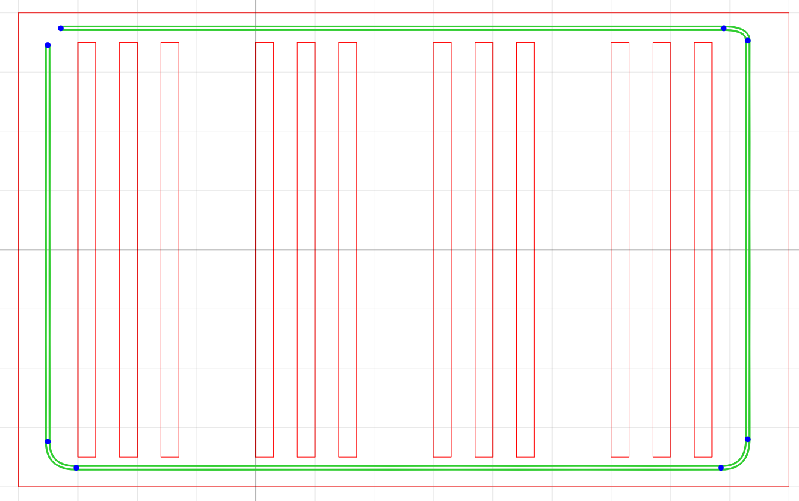
Teach outer limits first as a closed loop
When teaching closed loops, it is recommended to teach the area so that beginning and end of the loop are visible in the same teach file.
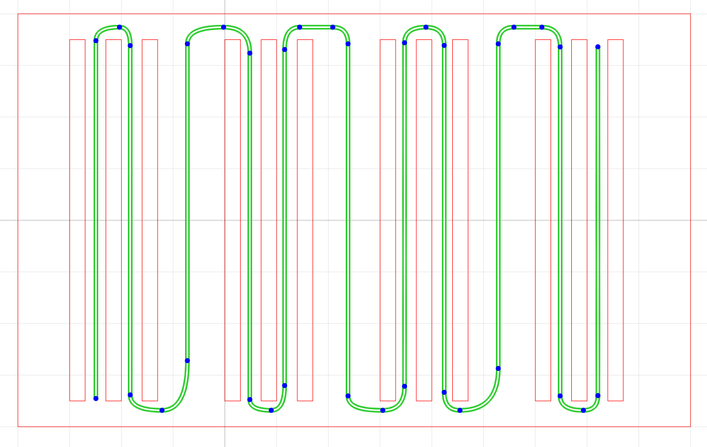
Then teach the spaces between the racks
Matching the teach data in large room
Start the matching from the outer limits first and then match the inner path to the outer limits.
Matching is usually done with following steps:
- Matching the closed loop. Quick explanation below.
- Finalizing the outer limit measurements.
- Inter matching inner path one aisle at the time.
- Matching the aisle from ends to the finalized measurements.
Matching the closed loops
Closed loops are matched in following steps:
- Intermatch the measurements at the whole area
- Match the beginning of the loop to the CAD (if CAD available)
- Finalize the measurements at the beginning of the loop
- Match the end of the loop to the finalized measurements
Troubleshooting
Most common issues
Teach file is not generated
In case you can't find the teach file after teaching make sure that:
- Teaching was on during the teaching (WARNING_TEACHING_MODE_ENABLED visible in Monitor)
- Teaching has been stopped.
- There is enough space on the hard drive.
Automatic matching can not correct the errors from the teach file
This is usually a sign of poor calibration or wheel slipping. To solve this you should teach the area again after verifying the AGVs calibration. During your new teach try to drive slower and minimize turning as turns induce usually the most error in the odometry.
Errors and warnings
305 - WARNING_TEACHING_ALREADY_ON
This warning is briefly set on in case teaching mode is already on when some source tries to set the teaching mode on.
317 - WARNING_TEACH_MODE_ENABLED
This warning is set on when the teaching mode is on.
Overview of Navitrol features affected when receiving the drive orders from different sources.
Updated 24.07.2024
Features affected based on the drive order source.
Navitrol can receive the drive order with the expected path from different sources: Supervisor interface for standalone applications, Navithor or VDA 5050 interface. The general rule is that localization related features are not affected by the drive order source, but anything related to driving the AGV or controlling the actuators can be. There are also differences within the VDA 5050 version and drive order type, these can be checked in detail from VDA feature matrix. Below is a table which shows common Navitrol features and if they are supported by the different drive order source.
Localization features
| Feature | Standalone | Navithor | VDA 5050 |
|---|---|---|---|
| Precision positioning | ✔️ | ✔️ | ✔️ |
| Ramp zones | ✔️ | ✔️ | ✔️ |
| Dynamic mapping | ✔️ | ✔️ | ✔️ |
| GPS | ✔️ | ✔️ | ✔️ |
| IMU and sensor fusion | ✔️ | ✔️ | ✔️ |
| External localization | ✔️ | ✔️ | ✔️ |
| 3D Positioning | ✔️ | ✔️ | ✔️ |
Drive control features
| Feature | Standalone | Navithor | VDA 5050 |
|---|---|---|---|
| Speed on route | ✔️ | ✔️ | ✔️ |
| Omni frame heading | ✔️ | ✔️ | ✔️ |
| Pivoting | ✔️ | ✔️ | ✔️* |
| Custom route properties | ✔️ | ✔️ | ✔️* |
| DMC Docking | ✔️ | ✔️ | ✔️* |
| Magnetic line following | ✔️ | ✔️ | ✔️ |
| Obstacle avoidance | ✔️ | ✔️ | ❌ |
| Synchronized driving | ✔️ | ✔️ | ❌ |
| Return to route | ✔️ | ✔️ | ✔️* |
| Barrier stop | ✔️ | ✔️ | ✔️* |
| Route Free Navigation | ✔️ | ✔️ | ❌ |
Actuator control features
| Feature | Standalone | Navithor | VDA 5050 |
|---|---|---|---|
| Pickup from floor / default height | ✔️ | ✔️ | ✔️ |
| Pickup from different heights at different locations | ✔️ | ✔️ | ✔️ |
| Pallet detection | ✔️ | ✔️ | ✔️* |
| Buffer lanes | ✔️ | ✔️ | ✔️* |
| Block stacking | ❌ | ✔️ | ✔️* |
| Racking | ❌ | ✔️ | ✔️ |
Miscellaneous features
| Feature | Standalone | Navithor | VDA 5050 |
|---|---|---|---|
| Parameter zones | ✔️ | ✔️ | ✔️ |
| Charging | ✔️ | ✔️ | ❌ |
* Not supported by all VDA versions and drive order types
Supported devices
Updated 13.09.2024
General
This document lists all devices that are compatible with Navitrol navigation software.
Support for a non-compatible device will require custom development.
CAN cards
A CAN card must be installed to the navigation IPC to connect Navitrol to a CAN Bus.
Models:
- Kvaser
- Peak
- SocketCAN
- Any hardware supporting SocketCAN
Motor controllers
Motor controller support depends on the kinematic type of the AGV. For example, if a motor controller works with an omni drive, it won't necessarily work with a differential drive. However, adding support for a new kinematic type is typically much easier than creating support for controller not listed here.
Schwarzmueller
A Navitec standard motor controller for AGV purposes. The performance has been good and reliable in multiple projects.
Suitable for big and medium sized AGVs.
Interfaces:
- CANopen
Models:
- MIxx
Supported kinematics:
- Diff drive
- Steer drive
- Omni drive
- Mecanum drive
Supported actuators:
- Reference controlled hydraulic actuator
- Reference controlled rotating actuator
Engel
An integrated motor controller. Not recommended as it does not have safety logic in case of communication failure.
Suitable for small and medium sized AGVs.
Interfaces:
- CANopen
Models:
- HFI series
- Note - Other models might work but they have not been tested
Supported kinematics:
- Drive motor for steer drive in combination of Schwarzmueller for steering
Supported actuators:
- None
Nanotec
A reliable motor controller. Can have integrated or separate driver.
Suitable for small and medium sized AGVs.
Interfaces:
- CANopen
Models:
- PD2-C
- PD4-C
- PD6-C
- N5-X-2
- Note - Other models might work but they have not been tested
Supported kinematics:
- Diff drive
- Mecanum drive
Supported actuators:
- None
Roboteq
A good motor controller for various range of power and motor types.
Suitable for small, medium and big sized AGVs.
Interfaces:
- CAN
- Serial USB/RS232 (open loop)
- Not recommended for production use due to insufficient signal noise immunity
Models:
- All models with a CAN or serial interface
Supported kinematics for open loop:
- CAN dual channel controller
- Diff drive
- Steer drive
- Steer drive with a differential sub unit
- Omni drive
- Mecanum drive
- CAN Single channel controller
- Diff drive
- Steer drive
- Mecanum drive
- Serial dual channel controller
- Diff Drive
- Steer Drive
- Mecanum Drive
Supported kinematics for closed loop:
- Diff drive
- Mecanum drive
Supported actuators:
- None
Curtis
A good multi-channel motor controller with wide capabilities.
Suitable for big and medium size AGVs.
Interfaces:
- CANopen
Models:
- F2-T
- F2-D
- Fx-A (F2-A, F4-A, F6-A, F10-A, F16-A)
- Note - If Curtis updates software model for Fx-C-series (F2-C, F4-C), Navitrol can support them.
Supported kinematics:
- Diff Drive
- Steer Drive
- Steer drive with a differential sub-unit
- Omni Drive
Supported actuators:
- Reference controlled hydraulic actuator
- Binary controlled actuator
Dunkermotoren
We have limited experience with it as it has been used only in few projects.
Suitable for at least small and medium sized AGVs.
Interfaces:
- CANopen
Models:
- BGE6030A
- Note - Other models might work but they have not been tested
Supported kinematics:
- Diff drive
Supported actuators:
- None
Syntron
We have limited experience with it as it has been used only in one prototype AGV project. Has limited documentation available in English.
Suitable for at least small and medium sized AGVs.
Interfaces:
- CANopen
Models:
- LS series
Supported kinematics:
- Omni drive with differential sub units
Supported actuators:
- None
Oriental
Good motor controller with a simple commissioning and wiring procedure.
Suitable for small and medium sized AGVs.
Interfaces:
- CANopen
Models:
- BLV-R series
Supported kinematics:
- Diff Drive
- Steer Drive
- Steer drive with a differential sub-unit
- Omni Drive
- Omni drive with differential sub-units
- Mecanum drive
Supported actuators:
- None
Synapticon
A good motor controller with built-in safety inputs.
Suitable for small and medium size AGVs.
Interfaces:
- EtherCAT
Models:
- SOMANET Node Safety
- Note - Other models might work but they have not been tested
Supported kinematics:
- Diff Drive
- Omni Drive
- Mecanum Drive
Supported actuators:
- None
miControl
A motor controller with built-in safety inputs.
Suitable for small, medium and big size AGVs.
Interfaces:
- CANopen
Models:
- mcDSA-F3XXX (tested: mcDSA-F35-HC)
- Note - Other models might work but they have not been tested
Supported kinematics:
- Diff Drive
- Steer Drive
- Omni Drive
- Mecanum drive
Supported actuators:
- None
Kinco
Interfaces:
- CANopen
Models:
- OD1X4S (tested: OD124S and motor SMC60S-0040-30MAK-3DSU)
- FD1X4S (should work with the same interface, but hasn't been tested)
- Note - Other models might work but they have not been tested
Supported kinematics:
- Diff Drive
- Mecanum Drive
Supported actuators:
- None
Supervisor interface
An interface designed by Navitec over which Navitrol provides control references and the Supervisor (connected device e.g. PLC) provides odometry and status data. With this option, the Supervisor device is responsible for sending the references to the motor controller.
The interface makes it possible to use any motor controller that the Supervisor (e.g. PLC) can control.
Motor controllers <-> Supervisor <-> Navitrol
Interfaces:
- Navitec supervisor protocol (Ethernet TCP/IP)
Models:
- Any device able to implement the protocol
- Typically a PLC
Supported kinematics:
- Diff Drive
- Steer Drive
- Diff-Steer Drive
- Omni Drive
Supported actuators:
- Binary controlled actuator
- Reference controlled actuator
SIMOVE
SIMOVE is Siemens modular software platform for mobile robots. Navitrol is the navigation module in the system and communicates to customer's onboard device (e.g., PLC) via the interface specified by SIMOVE. The interface is kinematic free, thus the PLC/device onboard controls the motor controllers of the AGV.
Interfaces:
- SIMOVE protocol, Ethernet TCP/IP (UDP)
Models:
- Any device able to implement the protocol
- Typically a PLC
Supported kinematics:
- Kinematic free
Supported actuators:
- None
General IOs
General IOs can be used for various purposes. Typically they are used as communication interfaces between Navitrol and the device (PLC) controlling the AGV. For example, status data is typically shared between the devices.
Ethernet supervisor
An interface designed by Navitec to provide and get data from the AGV. Can be used for example to provide BMS data, AGV status, giving drive orders and setting speed limits.
CAN supervisor
An interface designed by Navitec to provide and get data from the AGV. Does not support as many functions as the Ethernet supervisor
Modbus Ethernet TCP
Modbus Ethernet modules can be used for IO. Navitrol supports Beckhoff EK9000 Bus Coupler but no generic interfaces exist.
Note: Non generic interface - will require custom development to use
Custom CAN interfaces
Navitrol supports custom CAN interfaces but they will need custom development.
Note: Non generic interface - will require custom development to use
Scanners
The main purpose of scanners is localization based on natural features. Other use cases include safety, target detection, obstacle detection and reflector based localization.
For localization and target detection use the recommended angular resolution is 0.2 degrees or better. Consult Navitec if considering other options.
Pepperl+Fuchs
Interfaces:
- Ethernet
Models:
- R2000 series
- Recommended version UHD
- Versions of recommended angular resolution available
Leuze
Interfaces:
- Ethernet
Models:
- RSL4xx
- Versions of recommended angular resolution available
- RSL2xx
SICK
interfaces:
- Serial/TCP-IP
- S300
- Ethernet
- MicroScan
- NanoScan
- SICK Ethernet
Models:
- S300
- Expert model required for localization. Other models for safety only
- MicroScan
- Versions of recommended angular resolution available
- NanoScan
- Versions of recommended angular resolution available
- SICK Ethernet
- LMS1xx
- LMS5xx
- Timxxx
Hokuyo
Interfaces:
- Ethernet
Models:
- UAM-05
- UST-10LX-H02
- Any model w. SCIP with possible limitations
Quanergy
Interfaces:
- Ethernet
Models:
- M1 series
Omron
Interfaces:
- Ethernet
Models:
- OS32C
Keyence
Interfaces:
- Ethernet
Models:
- SZ-V32NX
3D cameras
IFM
Interfaces:
- Ethernet
Models:
- 03D, requires Debian Buster
Data matrix line cameras
Data matrix line cameras are used for localization based on QR-tapes. QR-tape based localization is more accurate compared to scanner based one. It is typically used to increase accuracy of high precision docking tasks.
Pepperl+Fuchs
Interfaces:
- CANopen
- TCP/IP
Models:
- PGV100-xx
- Should be installed at height of 100mm from the QR-tape
- PGV150-xx
- Should be installed at height of 150mm from the QR-tape
- Recommended as it has larger field of view
QR code and bar code reading devices
QR code and bar code reading devices can be used for example identifying resources. Taking one into use will require specifying the use case with Navitec and some custom development.
SICK
Interfaces:
- Ethernet
Models:
- Lector 6xx
- Able to detect the exact position of a resource.
Inertial measurement units (IMU)
IMUs are used in addition to scanner localization to increase localization accuracy by improving the odometry data.
LP-RESEARCH
Interfaces:
- USB
- LPMS-CU2
- LPMS-CU3
- LPMS-URS2
- LPMS-URS3
- LPMS-IG1
- CANopen
- LPMS-CU2
- LPMS-CU3
- Serial
- LPMS-URS2
- LPMS-URS3
Models:
- LPMS-CU2
- Sufficient performance for most localization cases
- Not manufactured anymore
- LPMS-CU3
- Replacement for CU2
- LPMS-URS2
- Performance is similar to CU2
- LPMS-IG1
- More accurate and more expensive than the other models
- The extra accuracy makes difference only when driving long distances without other localization sources
Magnetic tape sensors
Magnetic tape sensors are used for magnetic tape following.
SICK
Interfaces:
- Ethernet
- CANopen
Models:
- MLS Line guidance sensors
GPS devices
GPS devices are used for localization in outdoor environments that do not have enough static environment for laser scanner based localization. Note: When using GPS an IMU is also required for detecting the tilt angle of the GPS sensors.
Septentrio
Interfaces:
- Ethernet
Models:
- Base stations
- AsteRx SB ProConnect
- GPS receivers
- Septentrio AsteRx SB ProDirect
- Not manufactured anymore
- Septentrio AsteRx SB3 Pro
- Replacement for SB ProDirect
- Note: Not tested by Navitec but Manufacturer states that the interface is compatible
- Septentrio AsteRx SB ProDirect
Absolute encoders
Encoders are used to measure the angle of rotating axle. These measurements are transformed into odometry data, such as driven distance and wheel angles.
CAN Encoders
Navitrol supports most CANopen encoders that support CiA DS-301 and CiA DS-406 application layer.
Tested and verified models:
- Baumer
- EAM580
- EAM 360
- Kuebler
- Sendix 5868
- Sendix 5888
- Leine Linde
- 600 series
- Pepperl+Fuchs
- CSM58
- ENA36IL
- SICK
- AHS36
- AHM36
- Turck
- RI360
- Siko
- WV36M/CAN
- IFM
- RM8xxx
- RM9xxx
- Megatron
- HTB36E
- FHB58
EtherCAT Encoders
Navitrol supports some of EtherCAT encoders that support CiA DS-301 and CiA DS-406 application layer.
Tested and verified models:
- SICK
- AFS/AFM60
Battery management systems (BMS)
Battery management systems are used to control and share data about the batteries of the AGVs. Typically they report at least the state of charge of the batteries.
CAN models:
- MasterVolt
- Exide GNB - SL BMS
- Jungheinrich
- RoboteQ
- Voltabox
- MEB battery
- JLN
- Wiferion
Ethernet Supervisor:
- Suitable for devices with an access to BMS data
- Requires that the device supports Navitec Supervisor Protocol
Generic interfaces
Updated 26.01.2024
Communication specification between Navitrol and Ethernet supervisor
Updated 13.08.2024
Glossary
| Term | Description |
|---|---|
| AGV supervisor | Software supervising/controlling the AGV. Typically running on a PLC (Programmable logic controller) located on an AGV. The term "Supervisor" in this document means same as the AGV supervisor |
| AGV controller | In old documentation for positioning only systems this term has been used to mean same thing as AGV supervisor |
| Auto mode | Automatic control mode in which Navitrol can control the AGV. |
| Auto state | Navitrol state in which the AGV is performing a drive order - Navitrol is on auto mode and is currently fulfilling a given drive order. |
| Differential&steer drive | Differential&steer drive kinematic system has the two fixed wheels of differential drive AGV and the controlled steer wheel of a steer drive AGV. The benefit of differential&steer drive compared to differential drive is that there is no need for unpredictable castor wheels. |
| Drive order | An order to drive AGV in auto mode from current position to a destination, typically to a symbolic point. If the drive order is given to a symbolic point the AGV must be on the route, and on the standby state. In addition the given symbolic point must defined and reachable. Can only be used with a standalone feature or Navithor. |
| Emergency stop | When emergency stop is triggered Navitrol will perform fast stop and by default change to fast stop state. The state change can be prevented by setting pc_fstop_on_estop-parameter to value 0 and Navitrol remains in the previous state instead. |
| Environment file | A file containing environment data used for localization. |
| Error | Navitrol error indicates that there is some issue in the system that prevents driving. When an error is triggered, the AGV will stop. |
| Fast stop | Navitrol will set the speed references instantly to zero without ramping the speed down. Manual and automatic driving using Navitrol is prevented. |
| Fast stop state | Navitrol state in which driving the AGV is prevented, and brake activation reference will always be active - Navitrol is on auto mode and fast stop is active. |
| Floor | Positioning only systems support multiple floors (i.e. level), each having its own environment model. If only single floor is used, its floor index should be 0. |
| Load state | Navitrol state in which the AGV is performing a load or unload - Navitrol is on auto mode and is loading or unloading a resource. |
| Manual mode | Navitrol control mode in which automatic driving using Navitrol is prevented. Manual mode is prioritized over auto mode. It will be active if any source activates it, even if some other would enable auto mode. |
| Measurement update message | Measurement update messages can be used to deliver odometry and control data to Navitrol in such cases where Supervisor controls the AGV based on the control references from the Navitrol. When used, such message must be sent to periodically at constant intervals to Navitrol. The interval must be same as defined using control_interval_us-parameter. Recommended intervals are 30 +-10ms. It is important to make sure that the message is sent at constant interval in all situations even in situations where supervisor system is under high load, because if Navitrol does not receive odometry data it must stop in error. The interval is considered constant, if it does not exceed the defined interval by more than control_interval_error_ratio-parameter (by default 20%). If any of the received data is invalid, Navitrol will not use the message and will keep the previous references. eth_ctrl_max_nbr_invalid_feedback-parameter defines how many invalid messages are allowed in a row before ERROR_Ethernet_FEEDBACK_INVALID will be set. Note: If a measurement update message is used, it must be sent always when Navitrol is running, even if the AGV is driven manually. |
| MES | MES (Manufactoring Execution System) can be used to control Navithor's behavior by for example, giving resource information and even direct production orders. |
| Message number | Identification number of the measurement message for matching the supervisor update messages and related Navitrol replies together. This number can start from any number, and it must be increased by one for each message sent. When using Measurement update messages Navitrol will check that the received message number is increased by one from the previous message. If it has not, the message will be discarded. This feature can be disabled by setting eth_ctrl_msgnum_validate-parameter to value 0. Navitrol will send the number received in an update message back in the reply message. |
| Navigation point | Navigation point is the point of the AGV that will follow the defined routes. For example, for an AGV having a single turning drive wheel and two fixed wheels, the navigation point would typically be at the center of the fixed axle. |
| Navithor | Navitec's fleet control system that can be used to control and schedule multiple AGVs that are running Navitrol. |
| Navithor Tools | Navitec software used to make environment from teach files and define routes and symbolic points. |
| Navitrol | Software correcting the position of the AGV (Automated guided vehicle). Typically running on an IPC (Industrial PC) on an AGV. |
| Navitrol state | Current state of Navitrol. Can be read from the "default"-section of "Navitrol status"-message (3102). It can also be seen from bottom bar of Navitrol monitor. |
| Navitrol monitor | Diagnostic and debugging Windows software for Navitrol. Can be used for example to give drive commands and observing the state of connected Navitrol. |
| Navitrol Standalone | Single machine system feature: Navitrol handles navigation, route planning and driving. Requires a license. |
| Parameter | Navitrol parameters can be changed to adjust the default behavior of Navitrol. They are located in params.txt file on the IPC running Navitrol. If parameters are added or modified, they must be reloaded to the system either with reload command from Navitrol Monitor or by restarting Navitrol. |
| Pause state | Navitrol state in which drive order of the AGV is paused - Navitrol is on auto mode and has a paused drive order. |
| Position confidence | The position confidence value represents both the accuracy and the uncertainty of the reported position. Depending on the environment seen by the scanners and the map file used for positioning there may be several possibilities for the current position. The accuracy refers to the actual confidence range of the best position, i.e. how large the area is where the machine almost certainly is if the selected position would be correct. The uncertainty refers to the quality of the best positions compared to the seen environment and the other possible positions. The accuracy refers to the actual confidence range of the best position, i.e. how large the area is where the machine almost certainly is if the selected position would be correct. Typically higher position confidence results in higher position accuracy. In normal operation the confidence varies between 50 and 100 %. |
| Position control system | A system in which in addition to localization, Navitrol also controls the AGV by calculating the references for the wheels of the AGV. Typically uses either Navitrol Standalone or Navithor fleet control for automatic drive. |
| Positioning only system | A system in which Navitrol is only used for localization. Navitrol will provide the position of the AGV but does nothing else. |
| Reserved data field | If message data field says "Reserved" it means that the field is not currently used but might be in the future. Those fields must be included in messages and calculated to the message lengths. When sending reserved fields, the sent value should always be zero. In this way if the fields are later given meanings and taken into use the old behavior will not change. For same reasons, when receiving reserved fields, supervisor should ignore the received value. |
| Segment file | A file containing all route and symbolic point data. Used for position control. Not required in positioning only systems. |
| Soft slow | Navitrol will limit the maximum speed references to the value of pc_soft_slow_wheel_speed-parameter. If the speed was higher than that value, it will be ramped down using on mot_ctrl_max_wheel_dec-parameter. |
| Soft stop | Navitrol will stop ramping the speed smoothly down using mot_ctrl_max_wheel_dec-parameter. Manual and automatic driving using Navitrol is prevented. |
| Standby state | Navitrol state in which the AGV is waiting for a drive order - Navitrol is on auto mode but does not have any active drive orders. |
| Supervisor controlled AGV | An AGV that uses the measurement update messages send odometry data and receive control references from Navitrol. |
| Symbolic point | A production location, such as stop, load, or unload point. These are defined in Navithor Tools and Navitrol reads them from a segment file. Supervisor can request a list of defined symbolic points with message 3003. |
| Warning | Navitrol uses warning to inform the user that there is something non ordinary active in the system. Some of them can prevent driving with either soft stop or hard stop. |
| Web interface | An interface for joystick based manual control. It can be used by connecting with a phone or a browser to the IP address of the IPC Navitrol is running on. |
| Production request | Production request is a request that Navitrol can send to Navithor to ask to modify status of production. For example, to go to destination or clear active production order for the AGV. |
| Hold state | Navitrol state in which the AGV is on hold waiting to be released for a new drive order - Navitrol is on auto mode but has entered hold-point and is waiting to be released to next destination. |
| Omnidirectional AGV | An AGV that can drive to any direction in relation to its frame. For example, AGVs using omni drive or mecanum kinematics are omnidirectional AGVs. |
| Production order | Navithor order for a single production task. It can contain information about the drive order and transported resources. |
| External fleet control | External fleet control is feature for directly controlling the AGV by giving drive trajectories to Navitrol. When external fleet control is used, an external source takes care of generating all routes and the segment file will not be used. |
| Map coordinate frame | The coordinate frame defined in Navithor tools. See coordinate frames chapter. |
Overview
The Ethernet Supervisor interface is a general interface between the Navitrol navigation software and the AGV supervisor. The interface has been designed by Navitec systems and can be used to transfer data and commands between Navitrol and the supervisor. Navitrol runs on an IPC and supervisor runs typically on an PLC both physically aboard the AGV.
The interface can be used for example, to set speed limits, give drive orders and set the system time of the IPC.
Communication Protocol versions
This document describes fourth (4.) generation of the interface. Older communication Protocol versions (1 - 3) are still supported by Navitrol but should not be used in new projects.
Physical interface
Navitrol IPC and AGV supervisor hardware are connected using Ethernet interface. It is recommended to use Ethernet cable for connection stability, but using wireless connection is also possible.
Transport/network protocol
TCP/IP protocol is used for communication.
The Navitrol computer can be configured as a TCP/IP server or a client using agv_server-parameter. By default, supervisor acts as the server (value 1) and Navitrol a client. Changing the parameter value to 0 will make supervisor the client and Navitrol the server. If Navitrol acts as a client, the agv_ip-parameter must be set to match the IP-address of the supervisor.
The default port used for communication is 5015 but it can be changed with agv_port-parameter.
Important note: The TCP/IP protocol takes care of acknowledging messages and resending if needed. Periodic messages, such as status or position correction messages, should never be resent by the supervisor.
Endianness
The interface supports both little-endian (the least significant bit first) and big-endian (the most significant bit first) formats.
By default, little endian is used. The endianness can be changed using agv_comms_swapbytes-parameter. Value 0 means little-endian and value 1 big-endian.
Supported character set in strings
Navitrol supports 7-bit ASCII character set. Meaning all characters (filenames, descriptions etc..) that are sent to Ethernet supervisor interface needs to be 7-bit ASCII.
Coordinate frames
Two cartesian coordinate frames are used in the messages - the map coordinate frame and the local machine coordinate frame as presented in Figure 1.
The map coordinate frame is defined by the project file created with Navithor Tools. The absolute XY-position is expressed using 32-bit single float metric values in all messages. In order to guarantee optimal accuracy, the origin in the map coordinate frame needs to be close enough to the working environment (preferably within the working environment).
The local machine coordinate origin is located at the navigation point of the machine.
All heading values are expressed using 32-bit single float values in radians. Heading values are expected to be in the range of +/-Pi (i.e. +/-180 degrees), Counterclockwise (CCW) being positive direction for heading change.
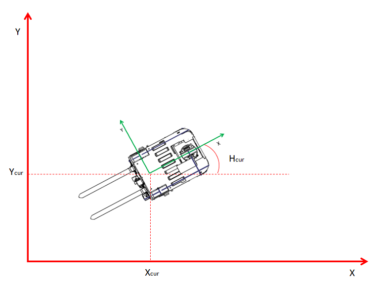
Figure 1: The local machine coordinate frame (green) and the map coordinate frame (red). The current machine position is Xcur, Ycur, Hcur. CCW is the positive direction for heading, Hcur being roughly +30 deg (i.e. 0.524 rad) in this case.
Implementation guidelines
Mandatory messages
Not all messages specified in this document need to be implemented. The few mandatory messages that must be implemented are listed below.
All other messages should be implemented on the need basis.
Position control system
For a position control system to work following messages must be implemented. See message definitions for more information.
| Supervisor to Navitrol message | Navitrol to Supervisor response | Explanation |
|---|---|---|
| 3002 - Supervisor status | 3102 - Navitrol status | Sent at least once (or whenever needed) by the Supervisor. |
For a supervisor controlled AGV in addition to messages required for position control system also one of the following messages must be implemented.
| Supervisor to Navitrol message | Navitrol to Supervisor response | Explanation |
|---|---|---|
| Measurement update message suitable for the kinematic type | Related response message | Required for the supervisor to provide odometry data and Navitrol to send control references |
Positioning only system
Get position correction messages The Supervisor has two alternative methods of requesting position corrections. It can either send to Navitrol:
- Cumulative raw (non-corrected) odometry of the AGV in the machine coordinate frame using message "Get position correction - cumulative" (message ID 1014)
- Speed of the AGV in the machine coordinate frame using message "Get position correction - velocity" (message ID 1015)
Only one of these two methods should used in a system. The selection should be made based on which measurement is more accurate both relative to timestamp and measurement resolution.
For a positioning only system to work following messages must be implemented. See message definitions for more information.
| Supervisor to Navitrol message | Navitrol to Supervisor response | Explanation |
|---|---|---|
| 1001 - Initialize position | 1101 - Position initialized | Sent at least once (and whenever needed) by the Supervisor to set the initial position of the AGV |
| 1014 - Get position correction - cumulative or 1015 - Get position correction - velocity | 1114 - Position correction or 1115 - Position correction with precision positioning status | Either of these messages must be sent by the supervisor and Navitrol shall send response message defined by the report_pp_status-parameter. |
Message sequence: When the system is started, the Supervisor shall (see message specifications below for details)
- Start sending one of the two "Get position correction" messages periodically
- Send the "Initialize position" message
Note: If Navitrol fails to receive periodic "Get position correction" messages, it will assume that the communication link is broken and reinitialize the communication.
Timing constraints
Navitrol response time
The typical Navitrol response time for a request message received from the supervisor should not be more than a few milliseconds. However, there is a few exceptions, such as "The position initialized" and "Log taken" response messages, that are sent only after the triggered routine has finished which may take up to a few seconds. The message description will mention if the response message can have a delay.
Periodic messages
The messages that are defined to be sent periodically by supervisor should be sent as constant intervals as possible. The periodic messages include messages such as 1014, 1015 and 3002.
Absolutely constant intervals are not really achievable, but the variation of all time related events should be kept to a minimum for optimal performance. The recommended variation is 3 ms or less.
Feature descriptions
Position correction
Position correction feature is the Navitrol's feedback part on correcting the position of positioning only system. Navitrol provides position correction data with "position correction" messages (1114 , 1115) in response to "Get position correction" request from the supervisor (1014, 1015).
Timing constraints
The Supervisor shall send the "Get position correction" message continuously using a fixed interval without exceptions. The sending interval should be a fixed value between 20...100 ms; an interval of 40 ms (25 Hz) is recommended. In the optimal case the sending interval shall however be synchronized to the dead-reckoning, so that the delay from the dead-reckoning calculation to sending the "Get position correction" message to Navitrol is also constant. This can be achieved by having the sending interval the same or a multiple of the dead-reckoning calculation interval. As an example in figure 2 below the interval for calculating the dead-reckoning is faster than that for sending the "Get position correction" messages, the latter being sent at half the rate of the dead-reckoning calculation. If the interval for calculating the dead-reckoning is for example 50 ms, then this is obviously also the optimal interval for sending the "Get position correction" messages to Navitrol.
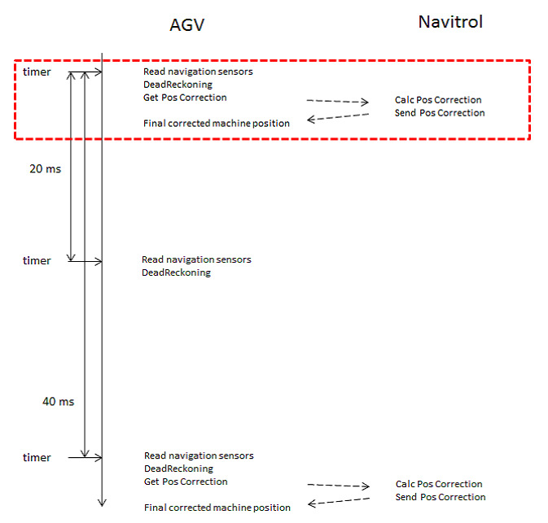 >Figure 2: Synchronizing positioning correction between supervisor and Navitrol. In the figure the Dead-reckoning is calculated every 20ms and Navitrol correction requested and calculated every 40ms, i.e. every other time.
It is important to understand that the "Position correction" message sent by Navitrol does not reflect the current position of the AGV at the time the message is received by the Supervisor. It is rather the corrected position of the AGV at the time the corresponding "Get position correction" message was sent (time Ta in figures 3 and 4).
The typical response time for the Navitrol "Position correction" is just a few milliseconds, but can be higher depending on how the communication has been implemented on the Supervisor side. In case of very short dead-reckoning intervals or delayed messages, it is possible that the Supervisor has updated a new dead-reckoning position prior to getting the Navitrol message (see figure 4). Therefore the corrected position sent by Navitrol should not be used as the new AGV position as it is. The difference between the corrected position and the position sent by the Supervisor at time Ta should be calculated and used instead.
Correction sequence
The following sequence shall be followed by the Supervisor for position corrections:
- Timer expires at Ta
- Read navigation sensor data
- Calculate new dead-reckoning position
- Send "Get Position Correction" message to Navitrol and store position and message number at that time for later reference.
- The Supervisor continues to calculate dead-reckoning, if the timer expires (like at Tb in figure 4) before receiving the corrected position from Navitrol.
- When the corrected position from Navitrol is received
- Check that the received message number matches with the latest "Get Position Correction" message sent by the Supervisor.
- Calculate the difference between the corrected position and the position sent by the Supervisor at time Ta
- Add this difference to the latest AGV position. This then results in the corrected AGV position.
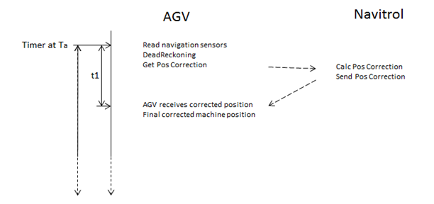
Figure 3: Timing related to position correction; zoomed portion of figure 2.
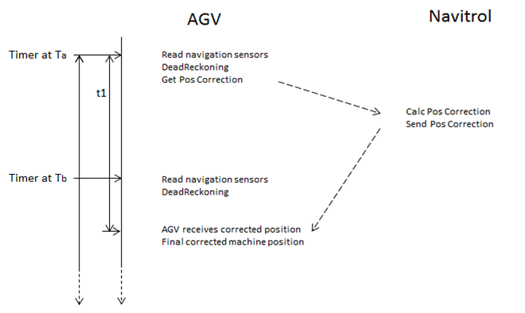
Figure 4: Timing related to position correction; zoomed portion of figure 2 in case of very fast dead-reckoning calculation or delayed messages.
Supervisor fleet control
Supervisor fleet control is a way of implementing external fleet control.
When using supervisor fleet control the supervisor is responsible of generating and sending all drive trajectories to Navitrol. It can be used as an alternative option to Navithor and Standalone systems.
The drive trajectories can be given with "Start new external drive" (3021) and "Extend external drive" (3022) messages. The 3021-message can be used to start a new drive and the 3022-message to extend an already started one.
Specifications for drive orders and drive extensions:
- Only the first and the last point in each drive order can be a pivot point.
- Having the last point as a pivot point, the first point of the next drive extension is assumed to have the pivot point as first point.
- If the any point in the middle of trajectory has pivot point attribute Navitrol will reply with code 6: "trajectory calculation failed".
- However, incorrect input in the extend drive message aborts the ongoing drive.
- A single trajectory may not contain drive direction changes.
- If it has the AGV will lose position.
- Direction changes should be handled by first sending a drive order to one direction and then a drive extension to another direction.
- Distance between consecutive trajectory points - Consecutive trajectory points must be different.
- If they are not the drive is aborted due an error and Navitrol will reply with response code 6: "Trajectory calculation failed".
- The distance is calculated from the given trajectory point xy-coordinates.
- The recommended distance between consecutive trajectory points is 0.10m. (Min 0.001m and Max 0.20m).
- Trajectory point attribute "Omni heading" can be used only with omnidirectional AGVs.
- If it is sent to any other machine type the current drive is aborted and Navitrol will reply with response code 7: "Invalid point attribute".
- The amount of trajectory points sent in a single message must be at least 2 and at maximum 400
- Total trajectory length requirements:
- Minimum length is 0.004 meters - smaller values are allowed but they do not have any effect.
- Maximum length is 79.8m - limited by the amount of trajectory points and the distance between them
If any of these specifications is violated the new drive will not start and if the violation was in extend external drive message an error will be raised, and current drive aborted. Navitrol will specify the found violation in the reply-messages 3121 and 3122.
Drive order with offset
There are several messages (3012, 3013, 3031) that allow generating a drive order with offsets to the defined route. One might want to use these offsets for example, if there is no other way to calibrate individual AGVs to stop to the same point or some resource offset sensor is telling the exact place where the load should be performed.
By default, the AGV will drive the whole route with the given transversal offset and frame heading offset and stop with the longitudinal offset. Usually, it is recommended to first drive to a position near the destination with zero offsets and then with desired offsets to the destination point.
Heading and transversal offsets can be also applied only when closer than drive_offset_apply_dist to the drive order end point along the route.
| Parameter | Default | Description |
|---|---|---|
| F, drive_offset_apply_dist | -1.0 | Distance (meters) from drive order end point before drive offsets will start to apply. Negative value enables offsets always |
Offset options explained:
- Transversal offset
- Will be applied for the length of the whole drive order - AGV will drive next to the defined route instead on it.
- Positive value to the left of the route.
- The absolute of a given value must be smaller than drive_offset_max_trans-parameter.
- The drive offset apply mode can be determined with a parameter drive_offset_apply_mode
- 0 - Negative speed flips transversal offset. 1 - Apply offsets as is given. Speed direction does not affect offsets
- Longitudinal offset
- Calculated from the location of the destination point.
- Positive value for driving past the end point.
- The absolute of given value must be smaller than drive_offset_max_lon-parameter.
- Frame heading offset
- Will be applied to the route frame heading for the length of the whole drive order - AGV will drive the path its frame tilted by this amount.
- Positive value counterclockwise
- Applied only for omnidirectional AGVs.
- The absolute of given value must be smaller than drive_offset_max_heading-parameter.
Common messages
These messages can be used in all Navitrol systems.
From Supervisor to Navitrol
1001 - Initialize position
This message can used to initialize the position of the AGV to given coordinates and heading on the map. Position initialization means that a position (x, y, h) and a level ID are given to Navitrol, and Navitrol fine tunes that position so the taught environment and the received scanner measurements match together as well as possible. Initialized position is required for most Navitrol features to function.
When Navitrol receives this message:
- Navitrol immediately responds with "Position initialization started"-message (1100)
- Navitrol tries to initialize the AGV to the given position on the map
- Navitrol sends the position initialization result and information in "Position initialized"-message (1101) after couple of seconds In addition to this message, there is manual and automatic options for position initialization. To initialize position the AGV must be stationary and not in load state.
Position initialization will fail until the environment has been taught, created and stored in the Navitrol computer.
| Navitrol version | Changes |
|---|---|
| 6.52 | The type of the last field (i.e., Level) is changed from Uint to Int. Additionally, multilevel is supported for all types of AGVs. |
| Data field | Type | Length (bytes) | Value / Explanation |
|---|---|---|---|
| Protocol version | Uint | 2 | 4 |
| Message ID | Uint | 2 | 1001 |
| Message length | Uint | 4 | 24 |
| X | Float | 4 | X - map coordinate of the AGV in meters |
| Y | Float | 4 | Y - map coordinate of the AGV in meters |
| H | Float | 4 | Heading of the AGV on the map in radians |
| Level | Int | 4 | The level ID on which the AGV is located |
1002 - Initialize position at symbolic point
This message can be sent instead of the "Initialize position"-message (1001) when the AGV is standing on a symbolic point. In this case the X,Y,H data of the position initialization ID of the symbolic point is used for the initialization.
When Navitrol receives this message:
- Navitrol tries to initialize the AGV to the given symbolic point on the map
- If the given position initialization ID is valid Navitrol sends the position initialization result and information in "Position initialized"-message (1101). If the ID was not valid no response is given.
Before the AGV can be initialized to a symbolic point, the symbolic point must have "PositionInit" enabled from "Symbolic Point Settings" using Navithor Tools. Tools then automatically generates unique position initialization IDs for each defined heading of the symbolic point. These IDs can be seen when "Show position initialization IDs"-option is selected from the "View"-menu.
To initialize position AGV must be stationary and not in load state.
| Navitrol version | Changes |
|---|---|
| NA | Message added |
| Data field | Type | Length (bytes) | Value / Explanation |
|---|---|---|---|
| Protocol version | Uint | 2 | 4 |
| Message ID | Uint | 2 | 1002 |
| Message length | Uint | 4 | 12 |
| Position initialization ID of the symbolic point | Int | 4 | The position initialization ID of the symbolic point to initialize position on. Note: Position initialization ID of the symbolic point is not the same as the normal symbolic point ID. |
1004 - Start/stop teaching
This message can be used to control Navitrol's environment teaching feature. More information about the teaching feature can be found from the "Navitrol teaching instructions"-document.
| Response message | ID |
|---|---|
| Teaching started/stopped | 1104 |
| Navitrol version | Changes |
|---|---|
| NA | Message added |
| Data field | Type | Length (bytes) | Value / Explanation |
|---|---|---|---|
| Protocol version | Uint | 2 | 4 |
| Message ID | Uint | 2 | 1004 |
| Message length | Uint | 4 | 10 |
| Teach command | Uint | 2 | 1 - Start teaching Starts the teaching feature. When teaching is active only manual driving is possible. If this command is given when teaching is already active WARNING_TEACHING_ALREADY_ON will be triggered 2 - Stop teaching Stops the teaching feature. The created teach file will be saved the "teach" folder on Navitrol IPC |
1005 - Request error description
This message can be sent to Navitrol to request an error description of given error code.
Navitrol will respond with the "Error description message"-message (1105) that contains the description for the requested error.
Note: Descriptions of all possible Navitrol errors and how to handle them can be found from "Navitrol error descriptions"-document.
| Navitrol version | Changes |
|---|---|
| NA | Message added |
| Data field | Type | Length (bytes) | Value / Explanation |
|---|---|---|---|
| Protocol version | Uint | 2 | 4 |
| Message ID | Uint | 2 | 1005 |
| Message length | Uint | 4 | 12 |
| Error code | Uint | 4 | Error code / ID. In the response message Navitrol will sent the description based on this. |
1006 - Request error description list
This message can be sent to Navitrol to request a list of codes and descriptions of all active errors and warnings.
By default, both warnings and errors are sent. However, with veh_inte_error_message_mode-parameter the behavior can be changed:
0 - Nothing will be sent
1 - Only errors are sent
2 - Both errors and warnings are sent
Navitrol will respond with the "Error description message" (1106) that will contain the error list.
Note: Descriptions of all possible Navitrol errors and how to handle them can be found from "Navitrol error descriptions"-document.
| Navitrol version | Changes |
|---|---|
| NA | Message added |
| Data field | Type | Length (bytes) | Value / Explanation |
|---|---|---|---|
| Protocol version | Uint | 2 | 4 |
| Message ID | Uint | 2 | 1006 |
| Message length | Uint | 4 | 8 |
1007 - Save log
This message can be used to take and save a binary log file. The log file will be saved the "logs" folder on Navitrol IPC.
Navitrol will respond with the "Log saved"-message (1107). Either immediately, if log taking preconditions fail, or in normal case after saving the log has been completed. Note: taking a log can take up to 20 seconds. The response message will tell if log was successfully taken or not.
The minimum interval for log taking is 20 seconds. If this a new request is sent when less time has passed from the previous message, the request will be rejected.
Note: log_dump_external_max_files-parameter defines how many logs taken with this message are kept in the memory (by default 10). When this amount would be exceeded the oldest log file will be removed.
For more information about logging, see: "Navitrol logging user guide"-document
| Navitrol version | Changes |
|---|---|
| NA | Message added |
| 6.28.06 | The timing of response message (1107) was changed. In earlier versions the response was sent before the log saving progress was completed. |
| Data field | Type | Length (bytes) | Value / Explanation |
|---|---|---|---|
| Protocol version | Uint | 2 | 4 |
| Message ID | Uint | 2 | 1007 |
| Message length | Uint | 4 | 8 |
1008 - Reload environment and segment data
This message can be used to reload the environment and segment data into Navitrol. One might want to do this, if the environment file "env_" or segment file "seg_..." file in "/home/navitec/"-folder has been modified or replaced.
Note: Positioning only systems reloads only environment file as there is no segment file.
Note: These files are automatically loaded when Navitrol starts and can be also reloaded using Navitrol Monitor or Navithor Tools. Navithor Server will also automatically update and reload these files if they don't match the files it has.
If veh_inte_env_read_rply_msg-parameter is set to value 1, Navitrol will respond with the "Environment and segment data reload result"-message (1108) when the reload is complete. This might take several seconds.
| Navitrol version | Changes |
|---|---|
| NA | Message added |
| Data field | Type | Length (bytes) | Value / Explanation |
|---|---|---|---|
| Protocol version | Uint | 2 | 4 |
| Message ID | Uint | 2 | 1008 |
| Message length | Uint | 4 | 8 |
1009 - Reload specific environment and segment data
This message can be used to reload environment and segment data into Navitrol from specific files. This can be useful in cases such as
- Environment and/or segment file does not follow naming pattern of
env*.nteorseg_*.xml - Environment and/or segment file does not locate in Navitrol installation directory (usually
/home/navitec/) - There exists more than one environment or segment file
Navitrol will respond
- First with an acknowledgement message 1109, which informs the sender if the reload request has been accepted. The request might be discarded if e.g. the filename does not have a null-character
- If the request was accepted, Navitrol will send (in few seconds) a result message 1110, including the information of successful or failed environment and/or segment file reload
Please use only ASCII based file naming, as using other codecs (such as UTF-8) can cause issues. Note, that directory levels are differentiated with forward slash / (character 47).
Hints:
- If only null-character
\0is given either for the environment or segment filename (or both), Navitrol will search and select automatically this filetype (similarly as during Navitrol start up)- Note: Null-character
\0has a size of one character, not two characters
- Note: Null-character
- Filenames can be given with or without the directory prefix. If directory is not included, Navitrol will search the given filename from the directory Navitrol is installed in (usually
/home/navitec/) - For reloading multiple environment files at once, a star
*character can be used as a part of the filename (e.g.env*.nte)- Note 1: Using only a star
*as a filename to search all files (e.g./folder/*) is not allowed - Note 2: Only one segment file can be loaded at once
- Note 1: Using only a star
| Navitrol version | Changes |
|---|---|
| 6.46.00 | Message added |
| Data field | Type | Length (bytes) | Value / Explanation |
|---|---|---|---|
| Protocol version | Uint | 2 | 4 |
| Message ID | Uint | 2 | 1009 |
| Message length | Uint | 4 | 12 + environment filename string length including null-character + segment filename string length including null-character |
| Environment filename length (EFL) | Uint | 2 | Environment filename string length including null-character \0 (min: 1, max: 256) |
| Segment filename length (SFL) | Uint | 2 | Segment filename string length including null-character \0 (min: 1, max: 256) |
| Environment filename | Char[] | EFL | Name of the environment filename to load into Navitrol including null-character with or without directory prefixMinimum length 1, maximum length 256 |
| Segment filename | Char[] | SFL | Name of the segment filename to load into Navitrol including null-character without or without directory prefixMinimum length 1, maximum length 256 |
Example message:
| Cumulative bytes | Value |
|---|---|
| 2 | 4 |
| 4 | 1009 |
| 8 | 54 |
| 10 | 13 |
| 12 | 29 |
| 25 | test_map.nte\0 |
| 54 | /home/navitec/test_route.xml\0 |
1011 - Request version info
This message can be used to request version information from Navitrol.
The version information will include software version and supervisor Protocol version.
Navitrol will respond with the "Version info"-message (1111).
| Navitrol version | Changes |
|---|---|
| NA | Message added |
| Data field | Type | Length (bytes) | Value / Explanation |
|---|---|---|---|
| Protocol version | Uint | 2 | 4 |
| Message ID | Uint | 2 | 1011 |
| Message length | Uint | 4 | 8 |
1012 - Reboot Navitrol
This message can be used to reboot Navitrol software.
Navitrol will respond with the "Reboot started"-message (1112) and start the reboot.
Shutting down and restoring all processes might take up to 1 minute.
| Navitrol version | Changes |
|---|---|
| NA | Message added |
| Data field | Type | Length (bytes) | Value / Explanation |
|---|---|---|---|
| Protocol version | Uint | 2 | 4 |
| Message ID | Uint | 2 | 1012 |
| Message length | Uint | 4 | 8 |
1013 - Set time
This message can be used to make Navitrol set the time of the IPC.
The given time is set to hardware real time clock and the system clock. The time should be given in local time zone.
Note: The IPC's time zone must be correct before this message will work as intended. To set the time zone, search for Linux guides on "How to set the time zone in Linux".
Navitrol will respond with the "Time set"-message (1113).
| Navitrol version | Changes |
|---|---|
| NA | Message added |
| Data field | Type | Length (bytes) | Value / Explanation |
|---|---|---|---|
| Protocol version | Uint | 2 | 4 |
| Message ID | Uint | 2 | 1013 |
| Message length | Uint | 4 | 22 |
| Year | Uint | 4 | Valid values [2000...] |
| Month | Uint | 2 | Valid values [1...12] |
| Date | Uint | 2 | Valid values [1...31] |
| Hour | Uint | 2 | Valid values [0...23] |
| Minute | Uint | 2 | Valid values [0...59] |
| Second | Uint | 2 | Valid values [0...59] |
1020 - Request file info
This message can be used to request the file information from Navitrol.
The file names can be used for example checking that the segment and environment files are up to date.
Navitrol will respond with the "File info"-message (1120).
| Navitrol version | Changes |
|---|---|
| NA | Message added |
| Data field | Type | Length (bytes) | Value / Explanation |
|---|---|---|---|
| Protocol version | Uint | 2 | 4 |
| Message ID | Uint | 2 | 1020 |
| Message length | Uint | 4 | 8 |
1021 - Restart CAN
This message can be used to restart Navitrol's primary CAN communication.
Upon CAN restart Navitrol will change to preoperational state, clear CAN registers, and redefine SDOs. For example, if some other CAN device is rebooted Navitrol CAN communication might need to be also restarted, by either sending this message or restarting Navitrol.
Note: No restart will be done if the CAN communication was not active and configured when the message was received.
Navitrol will respond with "CAN restart"-message (1121) to confirm that the request was received.
| Navitrol version | Changes |
|---|---|
| NA | Message added |
| Data field | Type | Length (bytes) | Value / Explanation |
|---|---|---|---|
| Protocol version | Uint | 2 | 4 |
| Message ID | Uint | 2 | 1021 |
| Message length | Uint | 4 | 8 |
1024 - Request odometry correction data
This message can be used to request odometry correction data from Navitrol.
The odometry correction data tells how well scanner data matches the odometry data. This message can be helpful when minimizing the odometry corrections during the calibration of an AGV.
Navitrol will respond with "Odometry correction data response"-message (1124).
| Navitrol version | Changes |
|---|---|
| 6.30.00 | Message added |
| Data field | Type | Length (bytes) | Value / Explanation |
|---|---|---|---|
| Protocol version | Uint | 2 | 4 |
| Message ID | Uint | 2 | 1024 |
| Message length | Uint | 4 | 8 |
1025 - Send Info packages to Navithor
This message can be used to send Info packages through Navitrol to Fleet Control
Supervisor can send Info packages to Navigation SW that are passed to Fleet Control Client for visualization. Info package description is of varying length and should always end with Null char ‘0’. This message is intended to be sent only when there is change to the active Info packages with minimum interval of 1 second (s). The info packages are purely for information. AGV will not have any reaction to these.
Different info packages can be mapped to show static descriptions. These mappings are done based on the Info ID field. The static descriptions are written on Navithor to an override file. Please refer to Navithor documentation about Alarms configuration override for more detailed information.
Navitrol will respond with "Info packages to Navithor response"-message (1125).
| Navitrol version | Changes |
|---|---|
| 6.48.00 | Message added |
| Data field | Type | Length (bytes) | Value / Explanation |
|---|---|---|---|
| Protocol version | Uint | 2 | 4 |
| Message ID | Uint | 2 | 1025 |
| Message length | Uint | 4 | 10 + varying length (Info packages) Message length in bytes including all data fields (including Protocol Version and Message ID) |
| Number of active packages | Uint | 2 | Max 20 packages |
| Info Package | Info package[] | Varying length |
| Info package struct | Type | Length (bytes) | Value / Explanation |
|---|---|---|---|
| Info ID | Uint | 4 | Unique info package ID:s passed to Navithor. Based on the ID, the static descriptions with the dynamic description part are shown. (See Navithor documentation) |
| Info Type | Uint | 2 | 0 – Info 1 – Warning 2 – Error |
| Reserved | NA | 4 | Not in use |
| Number of Chars in dynamic description | Uint | 2 | Max 256 chars |
| Dynamic description | Chars[] | Number of chars | Dynamic description part is shown on Navithor alarm view after the static description. In addition, the info packages are shown on the Navithor map view as an event. |
1032 - Start recording
Starts the recording (Record & Play functionality) of route and environment. Navitrol responds with 1132 - Recording state.
| Navitrol version | Changes |
|---|---|
| 6.48 | Message added |
| Data field | Type | Length (bytes) | Value / Explanation |
|---|---|---|---|
| Protocol version | Uint | 2 | 4 |
| Message ID | Uint | 2 | 1032 |
| Message length | Uint | 4 | 8 |
1033 - Abort recording
Aborts the recording (Record & Play functionality) of route and environment. The environment or route are not saved, but the AGV switches to the "play" state. Navitrol responds with 1132 - Recording state.
| Navitrol version | Changes |
|---|---|
| 6.48 | Message added |
| Data field | Type | Length (bytes) | Value / Explanation |
|---|---|---|---|
| Protocol version | Uint | 2 | 4 |
| Message ID | Uint | 2 | 1033 |
| Message length | Uint | 4 | 8 |
1034 - Save recording
Saves the recorded (Record & Play functionality) route and environment. The AGV switches to the "play" state where it can repeat the recorded route. Navitrol responds with 1132 - Recording state.
| Navitrol version | Changes |
|---|---|
| 6.48 | Message added |
| Data field | Type | Length (bytes) | Value / Explanation |
|---|---|---|---|
| Protocol version | Uint | 2 | 4 |
| Message ID | Uint | 2 | 1034 |
| Message length | Uint | 4 | 40 |
| Area name | Char[] | 32 | The desired name for the area that was recorded |
1035 - Select parameter set
Selects the active parameter set on the AGV using the same index and filenames as Parameter Zones feature. Important note: Before taking this feature into use contact Navitec support to discuss what you are planning to do. This is required because changing some parameters at runtime might cause unwanted side effects and some might not do anything as they are only updated at Navitrol startup. Navitrol responds with 1135
- When this feature is used to select a parameter set that is not the default (-1), it disables the Parameter Zones (taking precedence over it).
- When the defaut set is selected, Parameter Zones may change the active parameter set
- If a parameter set is selected that doesn't have an associated parameter file, the default parameters will be activated.
| Navitrol version | Changes |
|---|---|
| 6.50 | Message added |
| Data field | Type | Length (bytes) | Value / Explanation |
|---|---|---|---|
| Protocol version | Uint | 2 | 4 |
| Message ID | Uint | 2 | 1035 |
| Message length | Uint | 4 | 12 |
| Parameter set | Int | 4 | The index of the desired parameter set (0 to 3) or -1 to enable the default parameters |
| Reserved bytes | Uint | 4 | 0, for future extensions |
3009 - Request active errors
This message can be used to request a list of error codes of all errors and warnings that are currently active on Navitrol.
Navitrol will respond with "Error"-message (201).
Note: messages 1005 and 1006 can also be used to request information about errors.
| Navitrol version | Changes |
|---|---|
| NA | Message added |
| Data field | Type | Length (bytes) | Value / Explanation |
|---|---|---|---|
| Protocol version | Uint | 2 | 4 |
| Message ID | Uint | 2 | 3009 |
| Message length | Uint | 4 | 8 |
3025 - Initialize position using reflectors
This message can be used to request reflector-based position initialization from Navitrol. Reflector-based position initialization is a Navitrol feature that tries to initialize position based on the currently detected reflectors.
To initialize position AGV must be stationary and not performing load. Additionally, the message is ignored if position is already initialized.
Navitrol will respond with "Position initialized"-message (1101) when the position initialization has been completed. This can take several seconds.
Note: Before using this message see "Navitrol Reflector based initialization"-document on requirements and setup instructions.
| Navitrol version | Changes |
|---|---|
| NA | Message added |
| Data field | Type | Length (bytes) | Value / Explanation |
|---|---|---|---|
| Protocol version | Uint | 2 | 4 |
| Message ID | Uint | 2 | 3025 |
| Message length | Uint | 4 | 8 |
3039 - Control localization scanners
This message can be used to enable and disable localization scanners while Navitrol is running or to ask the current state of the scanners. By default, all scanners configured to the system in params.txt are enabled.
Navitrol will respond with "Localisation scanner status"-message (3139).
| Navitrol version | Changes |
|---|---|
| 6.32.00 | Message added |
| Data field | Type | Length (bytes) | Value / Explanation |
|---|---|---|---|
| Protocol version | Uint | 2 | 4 |
| Message ID | Uint | 2 | 3039 |
| Message length | Uint | 4 | 20 |
| Requested action | Uint | 2 | 0 - Request status Do not control scanners. Request only current status. 1 - Control scanners Control scanners according to the "Enable / disable scanners"-data field. |
| Control scanners | Bitfield | 2 | Disable / enabled scanners. This field is ignored if "Control scanners"-option was not selected in "Requested action"-data field. |
| Reserved | NA | 8 | 0 - Not in use |
| Control scanners bits | Bit | Value / Explanation |
|---|---|---|
| Rear scanner | 0 | 0 - disable. 1 - Enable. |
| Front scanner | 1 | 0 - disable. 1 - Enable. |
| Reserved | 2-15 | 0 - Not in use |
3040 - Reset fatal errors
This message can be used to reset all fatal errors that are currently active. Fatal errors are set when Navitrol faces an issue it cannot automatically recover from. Before resetting such error, user should solve the issue that triggered the error.
Optionally fatal errors can be reset using Navitrol Monitor or Navithor client.
Navitrol will respond with "Fatal errors reset"-message (3140).
| Navitrol version | Changes |
|---|---|
| 6.30.01 | Message added |
| Data field | Type | Length (bytes) | Value / Explanation |
|---|---|---|---|
| Protocol version | Uint | 2 | 4 |
| Message ID | Uint | 2 | 3040 |
| Message length | Uint | 4 | 8 |
3045 - Request travel distance
This message can be used to request travel distance information form Navitrol. The travel distance information includes total travel distance since last reset (see message 3047) and the travel distance since Navitrol was last started. The travel distance is calculated cumulatively based on the odometry information.
If there is a need for resetting the travelled distance, "Travel distance Reset" (Message ID 3047) should be used.
Navitrol will respond with "Travel distance"-message (3145).
Message can be used, for instance, for visualization of the distance that AGV has covered. Alternatively, can be used for defining maintenance intervals.
| Navitrol version | Changes |
|---|---|
| 6.34.00 | Message added |
| Data field | Type | Length (bytes) | Value / Explanation |
|---|---|---|---|
| Protocol version | Uint | 2 | 4 |
| Message ID | Uint | 2 | 3045 |
| Message length | Uint | 4 | 8 |
3047 - Travel distance reset
The AGV supervisor can send this message to reset travelled distance. Navitrol will respond with "Travel distance"-message (3145).
| Navitrol version | Changes |
|---|---|
| 6.34.00 | Message added |
| Data field | Type | Length (bytes) | Value / Explanation |
|---|---|---|---|
| Protocol version | Uint | 2 | 4 |
| Message ID | Uint | 2 | 3047 |
| Message length | Uint | 4 | 18 |
| Binary outputs | Bitfield | 2 | See bit definitions below |
| Reserved | NA | 8 | Not in use |
| Binary output bits | Bit | Value / Explanation |
|---|---|---|
| Reset from startup | 0 | Reset travelled distance from Navitrol start |
| Reset total | 1 | Reset total travelled distance |
| Reserved | 2-15 | Not in use |
3049 - Obstacle detection set detection area
With this message the AGV supervisor can set the radius and angles for which the obstacle detection will be performed.
Navitrol will respond with message 3149.
| Navitrol version | Changes |
|---|---|
| 6.36.00 | Message added |
| Data field | Type | Length (bytes) | Value / Explanation |
|---|---|---|---|
| Protocol version | Uint | 2 | 4 |
| Message ID | Uint | 2 | 3049 |
| Message length | Uint | 4 | 20 |
| Radius | Float | 4 | Radius of obstacle detection circle. |
| Start angle | Float | 4 | First angle in AGV coordinate frame that obstacles should be detected. In degrees. |
| End angle | Float | 4 | Last angle in AGV coordinate frame that obstacles should be detected. In degrees. |
From Navitrol to Supervisor
201 - Error
This message contains the error codes of all errors currently active in Navitrol.
With default parameters this message is sent as the reply to "Request active errors"-message (3009).
Sending of this message every time when active errors and warnings are changed can be enabled by setting veh_inte_error_message_send_only_on_request-parameter to value 0.
Sending this message periodically with a constant interval can be enabled by changing the value of veh_inte_heartbeat_interval-parameter from 0 to the desired interval (in milliseconds).
Information on how to handle errors can be found from "Navitrol error descriptions"-document.
| Navitrol version | Changes |
|---|---|
| NA | Message added |
| Data field | Type | Length (bytes) | Value / Explanation |
|---|---|---|---|
| Protocol version | Uint | 2 | 4 |
| Message ID | Uint | 2 | 201 |
| Message length | Uint | 4 | 12 + Error count * 4 |
| Error count | Uint | 4 | The number of active errors. Defines how many error codes will be sent. |
| Error codes | Uint[] | 4 * Error count | Error codes of active errors |
202 – Errors with level
This message contains the error and warning codes of all errors currently active in Navitrol and the level of those errors. It can be used as an option to the message basic error message 201.
veh_inte_error_message_type-parameter can be set to value 1 to use this message instead of the message 201.
| Navitrol version | Changes |
|---|---|
| 6.34.00 | Message added |
| Data field | Type | Length (bytes) | Value / Explanation |
|---|---|---|---|
| Protocol version | Uint | 2 | 4 |
| Message ID | Uint | 2 | 202 |
| Message length | Uint | 4 | 18 + Error count * 10 |
| Level of highest error | Uint | 2 | The highest level of all active errors and warnings. 0 – None 1 – Warning 2 – Error 3 – Fatal error |
| Reserved | NA | 4 | Not in use |
| Error count | Uint | 4 | The number of active errors (and warnings). Defines how many “Error”-arrays will be sent. |
| Error | Error[] | 10 * Error count | Error array containing information about all active errors and warnings. |
| Error struct | Type | Length (bytes) | Value / Explanation |
|---|---|---|---|
| Error code | Uint | 4 | Error code of the error or warning |
| Error level | Uint | 2 | The level of the error or warning. 0 – None 1 – Warning 2 – Error 3 – Fatal error |
| Reserved | NA | 4 | Not in use |
1100 - Position initialization started
Navitrol sends this message as an immediate reply to the "Initialize position"-message (1001) to indicate that the request was received.
| Navitrol version | Changes |
|---|---|
| NA | Message added |
| Data field | Type | Length (bytes) | Value / Explanation |
|---|---|---|---|
| Protocol version | Uint | 2 | 4 |
| Message ID | Uint | 2 | 1100 |
| Message length | Uint | 4 | 8 |
1101 - Position initialized
Navitrol sends this message to deliver the results of position initialization request from the supervisor (messages 1001, 1002 and 3025).
The results include information about if the initialization was successful and the initialized position (x, y, h). If position initialization failed the xyh-information should not be trusted.
Note: It will take several seconds from receiving the position initialization request to position initialization being ready and this message being sent.
| Navitrol version | Changes |
|---|---|
| NA | Message added |
| Data field | Type | Length (bytes) | Value / Explanation |
|---|---|---|---|
| Protocol version | Uint | 2 | 4 |
| Message ID | Uint | 2 | 1101 |
| Message length | Uint | 4 | 28 |
| X | Float | 4 | X-map coordinate of the new position in meters |
| Y | Float | 4 | Y-map coordinate of the new position in meters |
| H | Float | 4 | Heading of the new position on the map in radians |
| Floor | Uint | 4 | The floor of the new position |
| Initialization result | Uint | 2 | 0 - Failure The position initialization can fail for example if - A good position is not found within pos_ini_max_d..-parameters from the given pos init point - A good position is not found within value of pos_init_max_wait_time-parameter - The AGV is not stationary state, it is performing load or there are scanner related errors active. 1 - Success A good position was found near the given position initialization point and position was successfully initialized. |
| Position confidence | Uint | 2 | Position confidence percentage (1 - 100%) Describes how well the laser measurements in the new position matches the seen environment. |
1104 - Teaching started/stopped
Navitrol sends this message as a reply to the "Start/stop teaching"-message (1004).
| Navitrol version | Changes |
|---|---|
| NA | Message added |
| Data field | Type | Length (bytes) | Value / Explanation |
|---|---|---|---|
| Protocol version | Uint | 2 | 4 |
| Message ID | Uint | 2 | 1104 |
| Message length | Uint | 4 | 10 |
| Received command | Uint | 2 | 0 - Invalid command An unrecognized command was received in the message 1004. Nothing will be done. 1 - Starting teaching Start teaching command was received. Teaching started will be started if it was not already active. 2 - Stopping teaching Stop teaching command was received. Teaching will be stopped and teach file saved to the IPC. |
1105 - Error description
Navitrol sends this message as a reply to the "Request error description"-message (1005). The message contains the requested error code and its description.
| Navitrol version | Changes |
|---|---|
| NA | Message added |
| Data field | Type | Length (bytes) | Value / Explanation |
|---|---|---|---|
| Protocol version | Uint | 2 | 4 |
| Message ID | Uint | 2 | 1105 |
| Message length | Uint | 4 | 212 |
| Error code | Uint | 4 | The error code received in message 1005 |
| Error description | Char[] | 200 | The description for the error code as NULL-terminated table of Chars. If the given error code is unrecognized, "not defined" will be given as the description. |
1106 - Error description list
Navitrol sends this message as a reply to the "Request error description list"-message (1006). The message contains error codes and error descriptions of all active errors.
Note: The table of error codes is sent first and the table of error descriptions second. The error code of index x will match the description of the same index.
| Navitrol version | Changes |
|---|---|
| NA | Message added |
| Data field | Type | Length (bytes) | Value / Explanation |
|---|---|---|---|
| Protocol version | Uint | 2 | 4 |
| Message ID | Uint | 2 | 1106 |
| Message length | Uint | 4 | 12 + Error count * 204 |
| Error count | Uint | 4 | The number of active errors. Defines how many error codes and descriptions will be sent. |
| Error codes | Uint[] | 4 * Error count | Error codes of active errors |
| Error descriptions | Char[][] | 200 * Error count | The description for the error code as NULL-terminated table of Chars. |
1107 - Log saved
Navitrol sends this message after taking a log triggered by the "Save log"-message (1007) has been completed. The message tells if taking the log was successful or not.
Note: It can take up to 20 seconds from receiving the request to sending this result message.
| Navitrol version | Changes |
|---|---|
| NA | Message added |
| 6.28.06 | The of this message was changed. In earlier versions the response was sent before the log saving progress was completed. |
| Data field | Type | Length (bytes) | Value / Explanation |
|---|---|---|---|
| Protocol version | Uint | 2 | 4 |
| Message ID | Uint | 2 | 1107 |
| Message length | Uint | 4 | 12 |
| Log result | Uint | 4 | 0 - Failure Log taking will fail, if there has been less than 20 second from the last save log request 1... - Success The number of saved log file |
1108 - Environment and segment data reload result
By default, Navitrol sends this message every time environment and segment data are (re)loaded. This data will be loaded at Navitrol start and reloaded when requested by sending "Reload environment and segment data"-message (1008) or by using Navitrol Monitor.
The message can be disabled by setting veh_inte_env_read_rply_msg-parameter to value 0.
| Navitrol version | Changes |
|---|---|
| NA | Message added |
| Data field | Type | Length (bytes) | Value / Explanation |
|---|---|---|---|
| Protocol version | Uint | 2 | 4 |
| Message ID | Uint | 2 | 1108 |
| Message length | Uint | 4 | 10 |
| Reload result | Uint | 2 | 0 - Failure Reloading environment and/or segment data failed. Either all required files were not found, or they were corrupted. Navitrol log will contain more information. 1 - Success Environment and segment data was successfully loaded and taken into use. |
1109 - Specific environment and segment data reload acknowledgement
Navitrol will send this message as a first reply to the "1009 - Reload specific environment and segment file response" message. With this message, Navitrol informs the sender if the request message 1009 is valid. Rejection might happen e.g. due to a missing null-terminaton \0 in the filename.
| Navitrol version | Changes |
|---|---|
| 6.46.00 | Message added |
| Data field | Type | Length (bytes) | Value / Explanation |
|---|---|---|---|
| Protocol version | Uint | 2 | 4 |
| Message ID | Uint | 2 | 1109 |
| Message length | Uint | 4 | 10 |
| Request accepted | Uint | 2 | 0 - Accepted 1 - Rejected |
1110 - Specific environment and segment data reload result
Navitrol will send this message as a second reply to the "1009 - Reload specific environment and segment file response" message only if the request was accepted (see message 1109). With this message, Navitrol informs the sender if reloading the environment and/or segment data from specifc files succeeded or failed. Reloading might fail e.g. due to a non-existing filename in given directory.
| Navitrol version | Changes |
|---|---|
| 6.46.00 | Message added |
| Data field | Type | Length (bytes) | Value / Explanation |
|---|---|---|---|
| Protocol version | Uint | 2 | 4 |
| Message ID | Uint | 2 | 1110 |
| Message length | Uint | 4 | 12 |
| Environment reload result | Uint | 2 | 0 - Success Environment data was successfully loaded and taken into use.1 - Failure Reloading specific environment file failed. |
| Segment reload result | Uint | 2 | 0 - Success Segment data was successfully loaded and taken into use.1 - Failure Reloading specific segment file failed. |
1111 - Version info
Navitrol sends this message as a reply to the "Request version info"-message (1111). The message contains version number of Navitrol software and the supervisor communication Protocol version.
| Navitrol version | Changes |
|---|---|
| NA | Message added |
| Data field | Type | Length (bytes) | Value / Explanation |
|---|---|---|---|
| Protocol version | Uint | 2 | 4 |
| Message ID | Uint | 2 | 1111 |
| Message length | Uint | 4 | 16 |
| Navitrol version | Uint | 4 | The version number of the Navitrol software running on the IPC. This is sent in following format: Major version * 10000 + Release version * 100 + hot fix version. For example, 63202 = 6.32.02 |
| Supervisor Protocol version | Uint | 4 | The version number of the latest supervisor communication protocol This is sent in following format: Protocol version * 10000 For example, 40000 = 4 |
1112 - Reboot started
Navitrol sends this message as a reply to the "Reboot Navitrol"-message (1012). After sending this message Navitrol will shut down and start again.
| Navitrol version | Changes |
|---|---|
| NA | Message added |
| Data field | Type | Length (bytes) | Value / Explanation |
|---|---|---|---|
| Protocol version | Uint | 2 | 4 |
| Message ID | Uint | 2 | 1112 |
| Message length | Uint | 4 | 8 |
1113 - Time set
Navitrol sends this message as a reply to the "Set time"-message (1013). The message contains information if the time given as the input was valid.
| Navitrol version | Changes |
|---|---|
| NA | Message added |
| Data field | Type | Length (bytes) | Value / Explanation |
|---|---|---|---|
| Protocol version | Uint | 2 | 4 |
| Message ID | Uint | 2 | 1113 |
| Message length | Uint | 4 | 10 |
| Time set result | Uint | 2 | 0 - Failure The values given in message 1013 were not in defined limits or setting time failed. Time was not set. 1 - Success The time was successfully set. |
1120 - File info
Navitrol sends this message as a reply to the "Request file info"-message (1020). The message contains information about the segment and environment files.
| Navitrol version | Changes |
|---|---|
| NA | Message added |
| Data field | Type | Length (bytes) | Value / Explanation |
|---|---|---|---|
| Protocol version | Uint | 2 | 4 |
| Message ID | Uint | 2 | 1120 |
| Message length | Uint | 4 | 56 |
| Segment file version | Char[] | 8 | The segment file version number as NULL-terminated table of chars. If segment file is not found "0" will be returned. |
| Environment file version | Char[] | 8 | The environment file version number as NULL-terminated table of chars. |
| Area name | Char[] | 32 | The name of the area. The name is defined in Navithor Tools and is same as the default name of the Tools project file. The first 32 characters of the name is given as table of chars. Not guaranteed to be NULL-terminated |
1121 - CAN restart
Navitrol sends this message as a reply to the "Restart CAN"-message (1021). The message confirms that the CAN restart request was received and the restart was initialized.
| Navitrol version | Changes |
|---|---|
| NA | Message added |
| Data field | Type | Length (bytes) | Value / Explanation |
|---|---|---|---|
| Protocol version | Uint | 2 | 4 |
| Message ID | Uint | 2 | 1121 |
| Message length | Uint | 4 | 8 |
1124 - Odometry correction data
Navitrol sends this message as a reply to the "Request odometry correction data"-message (1024). The message returns latest odometry correction data including odometry autocorrection amounts and odometry correction averages. These values can be used to fine tune odometry calibration. - Closer these values are to the zero the better the calibration is between odometry and scanner data.
Note: These values are also visible in Navitrol Monitor's "Odometry correction"-chart.
The basic principle is that the automatic odometry corrections are applied to the received odometry values so that they would match the scanner data.
Examples:
- Automatic heading correction (H auto corr): Is added to the scanner angle. A typical reason for H auto corr is that the scanner zero angle is not accurately defined.
- If automatic distance correction (ds auto corr) would have value 0.01 that would mean that the speed received from odometry is lower than the speed calculated from scanner data. The odometry speed matches scanner speed after being multiplied by the odometry correction value + 1.0 (1.01 in this case). A typical reason for distance correction would be inaccuracies in wheel rotation to AGV speed values calculations. For example, motor rotations per minute to meters per second might not be accurate. Automatic heading correction
- (dh auto corr): The automatic heading correction is added to the odometry based heading. A typical reason for heading correction would be that the zero angle of the steer encoder has an offset compared to the real zero angle.
See "Automatic odometry correction"-document for more information about the meaning of each value.
| Navitrol version | Changes |
|---|---|
| 6.30.00 | Message added |
| Data field | Type | Length (bytes) | Value / Explanation |
|---|---|---|---|
| Protocol version | Uint | 2 | 4 |
| Message ID | Uint | 2 | 1124 |
| Message length | Uint | 4 | 44 |
| Lat average corr | Float | 4 | Average latitudinal correction (unitless multiplier) Positive value towards the left of the AGV. |
| Lon average corr | Float | 4 | Average longitudinal correction (unitless multiplier) Positive value towards the front of AGV. |
| H average corr | Float | 4 | Average heading correction (degrees per meter) Positive value to counterclockwise direction from AGV's heading. |
| H auto corr | Float | 4 | Automatic heading correction to reduce lateral position corrections (degrees per meter) Positive value to counterclockwise direction from AGV's heading. |
| dh auto corr | Float | 4 | Automatic heading/rotation difference correction to reduce heading position corrections (degrees per meter) Positive value to counterclockwise direction from AGV's heading. |
| ds auto corr | Float | 4 | Automatic drive distance correction to reduce longitudinal position corrections (unitless multiplier) Positive value to forwards from the AGV. |
| Reserved | NA | 12 | 0 - Not in use |
1125 - Info packages to Navithor response
Navitrol sends this message to supervisor as a response to supervisor messages request (1025). If the response result is not accepted, validate that the length of the message is within limits (Number of active info packages, Number of chars in description).
| Navitrol version | Changes |
|---|---|
| 6.48 | Message added |
| Data field | Type | Length (bytes) | Value / Explanation |
|---|---|---|---|
| Protocol version | Uint | 2 | 4 |
| Message ID | Uint | 2 | 1125 |
| Message length | Uint | 4 | 12 |
| Info packages result | Uint | 2 | 0 - Accepted 1 - Bad input data |
| Number of active info packages | Uint | 2 |
1135 - Parameter set selected
Navitrol sends this message to supervisor as a response to parameter set change request (1035). Parameter change will fail if the index is out of bounds (-1 to 3 are valid) or if the AGV doesn't have a parameter file corresponding to the activated index.
| Navitrol version | Changes |
|---|---|
| 6.50 | Message added |
| Data field | Type | Length (bytes) | Value / Explanation |
|---|---|---|---|
| Protocol version | Uint | 2 | 4 |
| Message ID | Uint | 2 | 1135 |
| Message length | Uint | 4 | 10 |
| Parameter change result | Uint16 | 2 | 0 - Succeeded 1 - Failed |
| Reserved bytes | Uint | 4 | 0, for future extensions |
3139 - Localization scanner status
Navitrol sends this message as a reply to the "Control localization scanners"-message (3039). The message contains the current selection of localization scanners in use.
| Navitrol version | Changes |
|---|---|
| 6.32.00 | Message added |
| Data field | Type | Length (bytes) | Value / Explanation |
|---|---|---|---|
| Protocol version | Uint | 2 | 4 |
| Message ID | Uint | 2 | 3139 |
| Message length | Uint | 4 | 20 |
| Available scanners | Bitfield | 2 | The available scanners that have been configured to the system |
| Enabled scanners | Bitfield | 2 | The currently enabled scanners that are used in localization |
| Reserved | NA | 8 | 0 - Not in use |
| Available scanners bits | Bit | Value / Explanation |
|---|---|---|
| Rear scanner | 0 | 0 - Not configured. 1 - Available. |
| Front scanner | 1 | 0 - Not configured. 1 - Available. |
| Reserved | 2-15 | 0 - Not in use |
| Enabled scanners bits | Bit | Value / Explanation |
|---|---|---|
| Rear scanner | 0 | 0 - Disabled. 1 - Enabled. |
| Front scanner | 1 | 0 - Disabled. 1 - Enabled. |
| Reserved | 2-15 | 0 - Not in use |
3140 - Fatal errors reset
Navitrol sends this message as a reply to the "Reset fatal errors"-message (3040). The message confirms that all fatal errors were reset. If they are instantly triggered again after receiving this message, the issue triggering the error has not been resolved.
| Navitrol version | Changes |
|---|---|
| 6.30.01 | Message added |
| Data field | Type | Length (bytes) | Value / Explanation |
|---|---|---|---|
| Protocol version | Uint | 2 | 4 |
| Message ID | Uint | 2 | 3140 |
| Message length | Uint | 4 | 8 |
3145 - Travel distance
Navitrol will send this message as a reply to the "Request travel distance"-message (3045). The message contains information about total travel distance since last reset (see message 3047) and the travel distance since Navitrol was last started.
| Navitrol version | Changes |
|---|---|
| 6.34.00 | Message added |
| Data field | Type | Length (bytes) | Value / Explanation |
|---|---|---|---|
| Protocol version | Uint | 2 | 4 |
| Message ID | Uint | 2 | 3145 |
| Message length | Uint | 4 | 24 |
| Travel distance | Float | 4 | Traveled distance in meters since Navitrol was last started. |
| Total travel distance | Float | 4 | Total traveled distance in meters since Navitrol was started the first time on the IPC or since last travel distance reset. The value is stored between Navitrol restarts in the "startInfo.bin"-file. |
| Reserved | NA | 8 | 0 - Not in use |
3149 - Obstacle detection result
To use this message, set Navitrol parameter obst_detection_mode = 1.
With this message, Navitrol reports the obstacles detected by the area specified in the latest “3049 – Obstacle detection set detection area“ message. This message will be sent periodically with each scan.
The obstacles will be reported in the form of lines. Each line will consist of x and y coordinates of the starting point and end point.
| Navitrol version | Changes |
|---|---|
| 6.36.00 | Message added |
| Data field | Type | Length (bytes) | Value / Explanation |
|---|---|---|---|
| Protocol version | Uint | 2 | 4 |
| Message ID | Uint | 2 | 3149 |
| Message length | Uint | 4 | 16 + (NoL * 16) |
| Max distance of scan point | Float | 4 | Maximum distance a scan point can have from a detected line, in meters |
| Number of lines | Int | 4 | Number of lines (NoL) |
| Detected lines | Line[] | NoL * 16 |
| Line struct | Type | Length (bytes) | Value / Explanation |
|---|---|---|---|
| Start Point X | Float | 4 | Meters, in world coordinates |
| Start Point Y | Float | 4 | Meters, in world coordinates |
| End Point X | Float | 4 | Meters, in world coordinates |
| End Point Y | Float | 4 | Meters, in world coordinates |
4100 - Log Triggered
When enabled by setting log_trigger_pass_to_supervisor to value 1, instead of taking a log Navitrol will send this message to supervisor automatically every time log taking is triggered by Navitrol Monitor or Navithor Server. After receiving this message Supervisor should trigger the log taking by using message 1007.
This approach has been used to synchronize supervisor and Navitrol log taking:
- The log taking is triggered from Navithor or Navitrol Monitor
- Instead of taking the log Navitrol sends this message to supervisor
- Supervisor takes log of its own and triggers Navitrol log (for example using the message 1007)
- Navitrol will inform supervisor that taking a log is ready by sending message 1107
- Supervisor can now make a package from its own logs and the Navitrol log
| Navitrol version | Changes |
|---|---|
| 6.32.00 | Message added |
| Data field | Type | Length (bytes) | Value / Explanation |
|---|---|---|---|
| Protocol version | Uint | 2 | 4 |
| Message ID | Uint | 2 | 4100 |
| Message length | Uint | 4 | 10 |
| Trigger source | Uint | 2 | The log taking was triggered by: 1 - Navitrol Monitor 2 - Navithor server |
Position control messages
These messages are related to position control and features requiring position control. They cannot be used in positioning only systems.
From Supervisor to Navitrol
1016 - Measurement update differential drive
This message can be used to provide odometry data to Navitrol in differential drive AGV systems in which supervisor handles the motor control and Navitrol gives the references.
See Measurement update message.
Navitrol will reply with the "Motor control differential drive"-message (1116) containing calculated control references.
| Navitrol version | Changes |
|---|---|
| NA | Message added |
| Data field | Type | Length (bytes) | Value / Explanation |
|---|---|---|---|
| Protocol version | Uint | 2 | 4 |
| Message ID | Uint | 2 | 1016 |
| Message length | Uint | 4 | 26 |
| Message number | Uint | 4 | See message number. |
| Odometry left wheel | Uint | 4 | The cumulative encoder value from the left wheel. The scale from encoder value to meters is defined by mot_ctrl_left_dist_scale-parameter The overflow point must be from 0xffffffff to 0 |
| Odometry right wheel | Uint | 4 | The cumulative encoder value from the right wheel. The scale from encoder value to meters is defined by mot_ctrl_right_dist_scale-parameter The overflow point must be from 0xffffffff to 0 |
| Drive control | Uint | 2 | Drive control signal that defines if Navitrol is allowed to control the AGV: 1 - Activate auto mode Navitrol is allowed to control the AGV. 2 - Activate supervisor error Navitrol will perform fast stop and error ERROR_MOTOR_CONTROL_FAULT will be set. 3 - Activate manual mode Navitrol will activate manual mode 4 - Activate emergency stop Navitrol will perform emergency stop and following two warnings will be triggered: WARNING_AGV_EM_STOP and WARNING_ESTOP_ACTIVE |
| Timestamp | Uint | 4 | Cumulative time in milliseconds. Time base can be chosen freely. |
1017 - Measurement update steer drive
This message can be used to provide odometry data to Navitrol in steer drive AGV systems in which supervisor handles the motor control and Navitrol gives the references.
See Measurement update message.
Navitrol will reply with the "Motor control steer drive"-message (1117) containing calculated control references.
| Navitrol version | Changes |
|---|---|
| NA | Message added |
| Data field | Type | Length (bytes) | Value / Explanation |
|---|---|---|---|
| Protocol version | Uint | 2 | 4 |
| Message ID | Uint | 2 | 1017 |
| Message length | Uint | 4 | 28 |
| Message number | Uint | 4 | See message number. |
| Steering angle | Float | 4 | Measured steering angle (±PI in radians) |
| Wheel speed | Float | 4 | Measured speed for drive wheel (m/s) |
| Set drive mode | Uint | 2 | 1 - Manual mode Navitrol will activate manual mode. 2 - Automatic mode Navitrol will activate auto mode. |
| Timestamp | Uint | 4 | Cumulative time in milliseconds. Time base can be chosen freely. |
| Supervisor status | Bitfield | 2 | Supervisor status and control values 1 - active. 0 - Not active. |
| Supervisor status bits | Bit | Value / Explanation |
|---|---|---|
| Error | 0 | When active ERROR_MOTOR_CONTROL_FAULT will be set. See error. |
| Emergency stop | 1 | When active Navitrol will perform emergency stop and following two warnings will be triggered: WARNING_AGV_EM_STOP and WARNING_ESTOP_ACTIVE |
| Soft slow | 2 | When active Navitrol will perform soft slow. |
| Soft stop | 3 | When active Navitrol will perform soft stop. |
| Reserved | 4-5 | 0 - Not in use |
| Charging (Obsolete) | 6 | Charging bit is obsolete. 3002 - Supervisor status Battery section Charging Active bit is used to handle charging active/inactive logic |
| Brake released | 7 | Informs Navitrol of the status of brakes. When not active hard stop will be enabled. |
| Reserved | 8-15 | 0 - Not in use |
1018 - Measurement update differential&steer drive
This message can be used to provide odometry data to Navitrol in differential&steer drive AGV systems in which supervisor handles the motor control and Navitrol gives the references.
See differential&steer drive and Measurement update message.
Navitrol will reply with the "Motor control differential&steer drive"-message (1118) containing calculated control references.
| Navitrol version | Changes |
|---|---|
| NA | Message added |
| Data field | Type | Length (bytes) | Value / Explanation |
|---|---|---|---|
| Protocol version | Uint | 2 | 4 |
| Message ID | Uint | 2 | 1018 |
| Message length | Uint | 4 | 36 |
| Message number | Uint | 4 | See message number. |
| Steer wheel angle | Float | 4 | Measured angle of the steer wheel (±PI in radians) |
| Steer wheel speed | Float | 4 | Measured speed for the steering wheel (m/s) Used only for statistics as the odometry is calculated from differential wheel speeds. If the statistics are not needed, hex value 7FA00000 can be sent to indicate that the wheel speed is undefined. |
| Left diff wheel speed | Float | 4 | The measured speed of the left differential wheel (m/s) |
| Right diff wheel speed | Float | 4 | The measured speed of the right differential wheel (m/s) |
| Set drive mode | Uint | 2 | 1 - Manual mode Navitrol will activate manual mode. 2 - Automatic mode Navitrol will activate auto mode. |
| Timestamp | 4 | Cumulative time in milliseconds. Time base can be chosen freely. | |
| Supervisor status | Bitfield | 2 | Supervisor status and control values 1 - active. 0 - Not active. |
| Supervisor status bits | Bit | Value / Explanation |
|---|---|---|
| Error | 0 | When active ERROR_MOTOR_CONTROL_FAULT will be set. See error. |
| Emergency stop | 1 | When active Navitrol will perform emergency stop and following two warnings will be triggered: WARNING_AGV_EM_STOP and WARNING_ESTOP_ACTIVE |
| Soft slow | 2 | When active Navitrol will perform soft slow. |
| Soft stop | 3 | When active Navitrol will perform soft stop. |
| Reserved | 4-5 | 0 - Not in use |
| Charging (Obsolete) | 6 | Charging bit is obsolete. 3002 - Supervisor status Battery section Charging Active bit is used to handle charging active/inactive logic |
| Brake released | 7 | Informs Navitrol of the status of brakes. When not active hard stop will be enabled. |
| Reserved | 8-15 | 0 - Not in use |
1019 - Measurement update omni drive
This message can be used to provide odometry data to Navitrol in omni drive AGV systems in which supervisor handles the motor control and Navitrol gives the references. The newer, more generic message is recommended 1026 - Measurement update generic omni drive.
See Measurement update message.
Navitrol will reply with the "Motor control omni drive"-message (1119) containing calculated control references.
| Navitrol version | Changes |
|---|---|
| NA | Message added |
| Data field | Type | Length (bytes) | Value / Explanation |
|---|---|---|---|
| Protocol version | Uint | 2 | 4 |
| Message ID | Uint | 2 | 1019 |
| Message length | Uint | 4 | 54 |
| Message number | Uint | 4 | See message number. |
| Obsolete | NA | 2 | 0 - Not in use Previously "Select measurement format" |
| Angle of wheel 0 | Float | 4 | Measured steering angle of wheel 0 (±PI in radians). |
| Speed of wheel 0 | Float | 4 | Measured speed of wheel 0 (m/s). |
| Angle of wheel 1 | Float | 4 | Measured steering angle of wheel 1 (±PI in radians). |
| Speed of wheel 1 | Float | 4 | Measured speed of wheel 1 (m/s). |
| Obsolete | NA | 16 | 0 - Not in use Previously Kinematic free measurements as 4 floats |
| Set drive mode | Uint | 2 | 1 - Manual mode Navitrol will activate manual mode. 2 - Automatic mode Navitrol will activate auto mode. |
| Timestamp | Uint | 4 | Cumulative time in milliseconds. Time base can be chosen freely. |
| Supervisor status | Bitfield | 2 | Supervisor status and control values 1 - active. 0 - Not active. |
| Supervisor status bits | Bit | Value / Explanation |
|---|---|---|
| Error | 0 | When active ERROR_MOTOR_CONTROL_FAULT will be set. See error. |
| Emergency stop | 1 | When active Navitrol will perform emergency stop and following two warnings will be triggered: WARNING_AGV_EM_STOP and WARNING_ESTOP_ACTIVE |
| Soft slow | 2 | When active Navitrol will perform soft slow. |
| Soft stop | 3 | When active Navitrol will perform soft stop. |
| Reserved | 4-5 | 0 - Not in use |
| Charging (Obsolete) | 6 | Charging bit is obsolete. 3002 - Supervisor status Battery section Charging Active bit is used to handle charging active/inactive logic |
| Brake released | 7 | Informs Navitrol of the status of brakes. When not active hard stop will be enabled. |
| Reserved | 8-15 | 0 - Not in use |
1022 - Measurement update mecanum drive
This message can be used to provide odometry data to Navitrol in mecanum drive AGV systems in which supervisor handles the motor control and Navitrol gives the references.
See Measurement update message.
Navitrol will reply with the "Motor control mecanum drive"-message (1122) containing calculated control references.
| Data field | Type | Length (bytes) | Value / Explanation |
|---|---|---|---|
| Protocol version | Uint | 2 | 4 |
| Message ID | Uint | 2 | 1022 |
| Message length | Uint | 4 | 48 |
| Message number | Uint | 4 | See message number. |
| Speed of wheel 0 | Float | 4 | Measured speed of wheel 0 (m/s). |
| Speed of wheel 1 | Float | 4 | Measured speed of wheel 1 (m/s). |
| Speed of wheel 2 | Float | 4 | Measured speed of wheel 2 (m/s). |
| Speed of wheel 3 | Float | 4 | Measured speed of wheel 3 (m/s). |
| Set drive mode | Uint | 2 | 1 - Manual mode Navitrol will activate manual mode. 2 - Automatic mode Navitrol will activate auto mode. |
| Supervisor status | Bitfield | 2 | Supervisor status and control values 1 - active. 0 - Not active. |
| Reserved | NA | 16 | 0 - Not in use |
| Supervisor status bits | Bit | Value / Explanation |
|---|---|---|
| Error | 0 | When active ERROR_MOTOR_CONTROL_FAULT will be set. See error. |
| Emergency stop | 1 | When active Navitrol will perform emergency stop and following two warnings will be triggered: WARNING_AGV_EM_STOP and WARNING_ESTOP_ACTIVE |
| Soft slow | 2 | When active Navitrol will perform soft slow. |
| Soft stop | 3 | When active Navitrol will perform soft stop. |
| Brake released | 4 | Informs Navitrol of the status of brakes. When not active hard stop will be enabled. |
| Reserved | 5-15 | 0 - Not in use |
1023 - Measurement update combined
This message can be used to provide odometry data to Navitrol in several different AGV systems in which supervisor handles the motor control and Navitrol gives the references.
Supported kinematic types:
- Differential drive (D)
- Steer drive (S)
- Omni drive (O)
- Differential&steer drive (DS)
See Measurement update message. In following message definition, the "Used by"-column defines if the data field is used with a given kinematic system. The * -mark means that the value is optional for the connected machine type. If an optional field is not used, hex value 7FA00000 should be sent.
If a data field is not used by a kinematic type, constant 0 should be sent.
Navitrol will reply with the "Motor control combined"-message (1123) containing calculated control references.
| Navitrol version | Changes |
|---|---|
| NA | Message added |
| Data field | Type | Length (bytes) | Value / Explanation | Used by |
|---|---|---|---|---|
| Protocol version | Uint | 2 | 4 | All |
| Message ID | Uint | 2 | 1023 | All |
| Message length | Uint | 4 | 44 | All |
| Message number | Uint | 4 | See message number. | All |
| Angle of wheel 0 | Float | 4 | Measured steering angle of wheel 0 (±PI in radians). | S, DS, O |
| Speed of wheel 0 | Float | 4 | Measured speed of wheel 0 (m/s). | S, DS*, O |
| Angle of wheel 1 | Float | 4 | Measured steering angle of wheel 1 (±PI in radians). | O |
| Speed of wheel 1 | Float | 4 | Measured speed of wheel 1 (m/s). | O |
| Left diff wheel speed | Float | 4 | Measured speed of the left differential wheel (m/s) | D, DS |
| Right diff wheel speed | Float | 4 | Measured speed of the right differential wheel (m/s) | D, DS |
| Set drive mode | Uint | 2 | 1 - Manual mode Navitrol will activate manual mode. 2 - Automatic mode Navitrol will activate auto mode. | All |
| Time stamp | Uint | 4 | Cumulative time in milliseconds. Time base can be chosen freely. | All |
| Supervisor status | Bitfield | 2 | Supervisor status and control values 1 - active. 0 - Not active. | All |
| Supervisor status bits | Bit | Value / Explanation |
|---|---|---|
| Error | 0 | When active ERROR_MOTOR_CONTROL_FAULT will be set. See error. |
| Emergency stop | 1 | When active Navitrol will perform emergency stop and following two warnings will be triggered: WARNING_AGV_EM_STOP and WARNING_ESTOP_ACTIVE |
| Soft slow | 2 | When active Navitrol will perform soft slow. |
| Soft stop | 3 | When active Navitrol will perform soft stop. |
| Reserved | 4-5 | 0 - Not in use |
| Charging (Obsolete) | 6 | Charging bit is obsolete. 3002 - Supervisor status Battery section Charging Active bit is used to handle charging active/inactive logic |
| Brake released | 7 | Informs Navitrol of the status of brakes. When not active hard stop will be enabled. |
| Reserved | 8-15 | 0 - Not in use |
1026 - Measurement update generic omni drive
This message can be used to provide odometry data to Navitrol in N wheel omni drive AGV systems in which supervisor handles the motor control and Navitrol gives the references.
See Measurement update message.
Navitrol will reply with the "Motor control generic omni drive"-message (1126) containing calculated control references.
| Navitrol version | Changes |
|---|---|
| 6.52.00 | Message added |
| Data field | Type | Length (bytes) | Value / Explanation |
|---|---|---|---|
| Protocol version | Uint | 2 | 4 |
| Message ID | Uint | 2 | 1026 |
| Message length | Uint | 4 | 18 + N wheels * Omni wheels struct Message length in bytes including all data fields (including Protocol version and Message ID) |
| Message number | Uint | 4 | See message number in Glossary |
| Set drive mode | Uint | 2 | 1 - Manual mode Navitrol will activate manual mode. 2 - Automatic mode Navitrol will activate auto mode. |
| Supervisor status | Bitfield | 2 | Supervisor status and control values, see Supervisor status bits |
| Number of wheels | Uint | 2 | Number of omni wheels. Maximum 6, minimum 2. |
| Omni wheels[] | Omni wheels[] | Varying length | The steer angle and wheel speed of each individual wheel |
| Supervisor status bits | Bit | Value / Explanation |
|---|---|---|
| Error | 0 | When active ERROR_MOTOR_CONTROL_FAULT will be set. See error. in Glossary |
| Emergency stop | 1 | When active Navitrol will perform emergency stop and following two warnings will be triggered: WARNING_AGV_EM_STOP and WARNING_ESTOP_ACTIVE |
| Soft slow | 2 | When active Navitrol will perform soft slow. |
| Soft stop | 3 | When active Navitrol will perform soft stop. |
| Reserved | 4-6 | 0 - Not in use |
| Brake released | 7 | Informs Navitrol of the status of brakes. When not active hard stop will be enabled. |
| Reserved | 8-15 | 0 - Not in use |
| Omni wheels struct | Type | Length (bytes) | Value / Explanation |
|---|---|---|---|
| Steer angle | Float | 4 | In radians. Range is [-PI, PI]. Positive is counter-clockwise. |
| Wheel speed | Float | 4 | In m/s |
1030 - Measurement update actuators
This message is obsolete, not used anymore! Check messages 1031 and 1131.
1031 - Measurement update multiple actuators
This message can be used to provide measurement data to Navitrol from actuators in AGV systems in which supervisor handles the actuator control and Navitrol gives the references. This message should be sent periodically at constant interval.
Note: The max interval for sending this message is 2 seconds. If interval between two consecutive messages exceeds this time, error is set. Recommended interval is 100 or 200 ms.
Navitrol will reply with the "Control multiple actuators"-message (1131) containing calculated control references.
The "Status detection available" sensors are used only if there is Lift actuator in use. They can be used to define multiple load sensors. For example, if all "Status detection available" bits are active, it means that the lift has 11 load sensors and all "Status bits" need to be 1 (except the bits 5 and 6 that should be 0) to consider load detected.
Lift and Secondary lift actuators has also "Load sensor used" and "Load detected with sensor" bits on the "Actuator status bits" those can be used to define one sensor per actuator.
"Actuator reference reached" bit can be used to stop control of some actuator. One use case is for example, stopping the reach actuator during the pickup or drop-off sequence if some sensor detects that it has already moved to the target. However, the reference reached bit should be set to 0 as soon as actuator control is not requested anymore by Navitrol (Message ID 1131 Binary output, Bit0 - Activate actuator).
For more information see: Actuator control document.
| Navitrol version | Changes |
|---|---|
| 6.44 | Message added |
| Data field | Type | Length (bytes) | Value / Explanation |
|---|---|---|---|
| Protocol version | Uint | 2 | 4 |
| Message ID | Uint | 2 | 1031 |
| Message length | Uint | 4 | Min 28, max 328. Depending how many actuators and sensors are sent |
| Message number | Uint | 4 | See message number. |
| Number of actuators | Uint | 2 | The number of actuators (NoA), each reported in a separate section. If 0, actuator section should not be sent. Maximum value 20. |
| Number of range measurements | Uint | 2 | Number of general range measurements (NoRM) on the machine. If 0, range measurement section should not be sent. Maximum value 10. |
| Actuator status section | Actuator[] | NoA * 12 | Each section consists of: Actuator type, position measurement and status bits. |
| Status detection available | Uint | 4 | Defines whether a sensor is available on the machine to set each status bit. The bit order is corresponding to the status bits below. The bit is set if a sensor is available. For now, these can be used only as load sensors, they don't stop any actuator. |
| Status bits defining reaching of actuator targets | Uint | 4 | Status bits always the same independent of controlled actuator. Bit set if detection active. Bit0 – Load reached contact left Bit1 – Load reached contact right Bit2 – Load distance reached Bit3 – Fork tips through load Bit4 – Load detected above fork Bit5 – Clearance above fork left Bit6 – Clearance above fork right Bit7 – Clearance below fork left Bit8 – Clearance below fork right Bit9 – Load contact sensor Bit10 - Load secured Bit11…31 – TBD |
| Safe control sensor available | Uint | 2 | Bit0…15 bits set for each available sensor |
| Safe control status bits | Uint | 2 | Not used yet. General safe control statuses, always the same independent of controlled actuator. A risk detection or a sensor malfunction sets the bit and the actuator is stopped if affected by that bit. Bit0 – Load misalignment Bit1 – Fork collision left Bit2 – Fork collision right Bit3 – Fork tunnel left obstructed Bit4 – Fork tunnel right obstructed Bit5 – Mast obstacle detected Bit6 – Machine body obstacle detected Bit7 – Load jammed (not matching actuation e.g., on conveyor) Bit9…15 – TBD |
| General range measurement section | Sensor[] | NoRM * 6 | Range measurements not directly related to any actuator. Each range measurement section contains a sensor type field and a measurement value field. |
| Actuator section | Type | Length (bytes) | Value / Explanation |
|---|---|---|---|
| Actuator type | Uint | 2 | Basic type definition 1 – Lift 2 – Lift secondary 3 – Reach 4 – Tilt fork 5 – Tilt mast (not implemented yet) 6 – Tilt frame (not implemented yet) 7 – Rotate fork 8 – Side shift fork 9 – Adjust fork width (not implemented yet) 10 – Side tilt fork (not implemented yet) 11 – Onboard conveyor (not implemented yet) 12 – Lift scanner/camera 13 – Load identification (not implemented yet) 14 – Load securing on off (not implemented yet) Others TBD 1000 – Addition if not controllable by the navigation |
| Actuator status bits | Uint | 2 | Status of the actuator Bit0 – Actuator active Bit1 – Actuator increasing Bit2 – Actuator decreasing Bit3 – Actuator reference reached Bit4 – Actuator max limit reached Bit5 – Actuator min limit reached Bit6 – Actuator center limit reached Bit7 - Load sensor used Bit8 - Load detected with sensor Bit9…14 TBD Bit15 – Actuator error |
| Actuator position reading | Int | 4 | Actuator position in millimeters or 0.1 degrees. Lift - zero at low limit, positive upwards Reach - zero at base, positive out from vehicle, towards load Tilt fork - zero when horizontal, positive when fork tilted tips up Tilt mast - zero when mast vertical, positive when mast angled towards vehicle (lifting fork tips) Tilt frame - zero when leveled, positive when frame tilted fork side up (lifting fork tips) Rotate fork - zero when straight forwards, positive CCW around vehicle seen from above (+-180 degrees) Turn fork - zero when leveled, positive CCW seen from the fork base (+-180 degrees) Fork side shift - zero when centered, positive to the left seen from the fork base Fork width - distance between fork centerlines Conveyor - zero at standstill, positive moving load in vehicle X or Y direction, increment since last stop Lift scanner/camera - zero at fork load carrying level, positive up Load identification - load ID number Load securing - on-secured, off-not secure |
| Reserved actuator info | Int | 4 | Reserved for future use |
| Range measurement section | Type | Length (bytes) | Value / Explanation |
|---|---|---|---|
| Measurement type | Uint | 2 | Measurements type definition 1 – Load distance (not implemented yet) 2 – fork tip distance left (not implemented yet) 3 – fork tip distance right (not implemented yet) 4 – load weight (not implemented yet) 5 – Load ID horizontal position (not implemented yet) 6 – Load ID vertical position (not implemented yet) N – TBD |
| Measurement value | Int | 4 | Signed measurement value. Distances in millimeters, angles in 0.1 degrees, weights in kilograms. |
3001 - Release hold state
This message can be used to release Navitrol from hold state to drive to the next destination symbolic point. Generates a drive order.
Requirements for releasing hold:
- Navitrol must be in hold state
- Supervisor drive orders must be enabled
- The target must be reachable
- Position error to the nearest route cannot be too large
Navitrol will respond with the "Hold state release"-message (3101). The reply is sent immediately when the result of the request is known, which might take up to one second.
For more information see standalone document where hold-release feature is described.
Note: Hold-point is not the same as stop-and-hold point. This message does not function with stop-and-hold points. For that check messages 3011 and 3111.
| Navitrol version | Changes |
|---|---|
| NA | Message added |
| Data field | Type | Length (bytes) | Value / Explanation |
|---|---|---|---|
| Protocol version | Uint | 2 | 4 |
| Message ID | Uint | 2 | 3001 |
| Message length | Uint | 4 | 12 |
| Drive destination | Uint | 4 | The destination where Navitrol will drive after it has been released from hold-symbolic point: 0 - Default destination 1 - 1st alternative destination 2 - 2nd alternative destination 3 - 3rd alternative destination |
3002 - Supervisor status
This message must be sent periodically (maximum interval 1 second) to deliver the status of the supervisor to Navitrol.
The status message consists of sections. Only the default section must be always implemented. The other sections are optional and can be added behind the status section in any order.
Navitrol will reply with the "Navitrol status"-message (3102) containing the status of Navitrol and the requested sections.
Default section
This section must always be included in the status message. The section can be used to stop the AGV and request Navitrol to include additional status section into the reply message 3102. If no additional sections are requested the reply message will contain only the default section of its own.
| Navitrol version | Changes |
|---|---|
| NA | Section added |
| Data field | Type | Length (bytes) | Value / Explanation |
|---|---|---|---|
| Protocol version | Uint | 2 | 4 |
| Message ID | Uint | 2 | 3002 |
| Message length | Uint | 4 | 14 + 2 * number of sections + length of sections |
| Status | Uint | 2 | General supervisor status: 0 - Not ok ERROR_PLC_FAILURE will be activated, and additionally manual driving will be prevented. 1 - Ok Navitrol is allowed to drive the AGV. |
| Set ESTOP | Uint | 2 | Used to set and release emergency stop: 0 - Release ESTOP 1 - Set ESTOP |
| Number of sections | Uint | 2 | The number of status sections requested from Navitrol. |
| Section ID | Uint[] | 2 * n of sections | The IDs of the requested sections. Navitrol will include these sections in the reply message (3102). |
1 - Actuator section
This section can be sent to inform Navitrol of the actuator status. Note: Using Navitrol for actuator control requires setting and tuning several parameters. See, "Navitrol - Actuator control"-document before using this section. Navitrol will send the related actuator control references in Navitrol status section 5. If one is interested in them, supervisor should request the section in the default section of supervisor status message.
| Navitrol version | Changes |
|---|---|
| NA | Section added |
| Data field | Type | Length (bytes) | Value / Explanation |
|---|---|---|---|
| Section ID | Uint | 2 | 1 |
| Section length | Uint | 4 | 14 |
| Actuator value | Uint | 4 | Measured value of the actuator. Most commonly fork height in millimeters. However, for example position or rotation values could also be used. Zero value means the minimum actuator position. |
| Actuator inputs | Bitfield | 1 | Actuator status and control values 1 - active. 0 - Not active. |
| Scanner zone inputs | Bitfield | 1 | Scanner warning zone inputs for wall monitor feature that triggers different stops based on scanner zones. 1 - active. 0 - Not active. Navitrol will use these values only if wallmon_use_veh_inte_eth_inputs-parameter has been set to 1. For more information see the "wall monitor" feature documentation. |
| Other inputs | Bitfield | 1 | Other actuator control related binary inputs. 1 - active. 0 - Not active. |
| Reserved | NA | 1 | 0 - Not in use |
| Actuator inputs bits | Bit | Value / Explanation |
|---|---|---|
| Actuator in use | 0 | Informs Navitrol that the actuator is in use. If active when on the route that has "Strict actuator"-route property, driving will be prevented. Route properties are used with Navithor Tools |
| Actuator low limit | 1 | When active informs Navitrol that the actuator is at the lowest position. |
| Actuator high limit | 2 | When active informs Navitrol that the actuator is at the highest position. |
| Load sensor in use | 3 | When active informs Navitrol that the load sensor is available and the "Load detected"-data field can be trusted. |
| Load detected | 4 | When active informs Navitrol that a load is detected by the load sensor. Only trusted if "Load sensor in use" is active. |
| Reserved | 5-7 | 0 - Not in use |
| Scanner zone inputs bits | Bit | Value / Explanation |
|---|---|---|
| Front warning zone 1 | 0 | Active means that front scanner warning zone 1 is triggered. |
| Front warning zone 2 | 1 | Active means that front scanner warning zone 2 is triggered. |
| Rear warning zone 1 | 2 | Active means that rear scanner warning zone 1 is triggered. |
| Rear waring zone 2 | 3 | Active means that rear scanner warning zone 2 is triggered. |
| Reserved | 4-7 | 0 - Not in use |
| Other inputs bits | Bit | Value / Explanation |
|---|---|---|
| Release stop & hold | 0 | Can be used to release the AGV from a StopAndHold symbolic point. Use must be enabled by setting stop_and_hold_mode-parameter to value 1. The information if AGV is held in StopAndHold point can be find in status message 3102 section 5. For more information see Stop-and-hold documentation. |
| Reserved | 1-7 | 0 - Not in use |
2 - Manual section
This section can be used to activate Navitrol's manual mode and give keyboard-like drive commands.
The available drive commands are forward, backward, left and right. Driving a curve is possible by giving left or right command simultaneously with a forward or backward command. The curvature is value of veh_inte_manual_ang_vel-parameter divided by the given drive speed.
Note: The "remote control"-section is prioritized over this one, if both are used.
| Navitrol version | Changes |
|---|---|
| NA | Section added |
| Data field | Type | Length (bytes) | Value / Explanation |
|---|---|---|---|
| Section ID | Uint | 2 | |
| Section length | Uint | 4 | |
| Enable manual control | Uint | 2 | Used to enable manual control from this section: 0 - Enable control Navitrol will activate manual mode and sets WARNING_ETH_MANUAL_MODE. This section can be used to drive the AGV. 1 - Disable control Navitrol will ignore any controls from this section. |
| Forward | Uint | 2 | Drive forward command to Navitrol: 0 - Inactive 1 - Active |
| Backward | Uint | 2 | Drive backward command to Navitrol: 0 - Inactive 1 - Active |
| Left | Uint | 2 | Turn left command to Navitrol: 0 - Inactive 1 - Active |
| Right | Uint | 2 | Turn right forward command to Navitrol: 0 - Inactive 1 - Active |
| Drive speed | Float | 4 | The manual drive speed reference in meters per second. |
3 - Error section
This section can be used to display custom errors and warnings. When a custom error is set Navitrol will activate ERROR_PLC and when a custom warning WARNING_PLC.
For example, if the string length was fixed to 25 bytes and there is two warnings active with error codes "3" and "2424" and descriptions "Error_Actuator_jammed" and "Error_Brake_failure", the message would look like this (displayed as characters):
3 0 64 1 0 0 2 0 # section ID + sect len (320 bytes) + active errors count
3 0 0 0 25 21 E r r o r _ A c t u a t o r _ j a m m e d 0 0 0 0 # error 1 (total of 31 bytes)
78 9 0 0 25 19 E r r o r _ B r a k e _ f a i l u r e 0 0 0 0 0 0 # error 2 (31 bytes)
0 0 0 0 25 0 0 0 0 0 0 0 0 0 0 0 0 0 0 0 0 0 0 0 0 0 0 0 0 0 0 # error 3 (31 bytes)
0 0 0 0 25 0 0 0 0 0 0 0 0 0 0 0 0 0 0 0 0 0 0 0 0 0 0 0 0 0 0 # error 4
0 0 0 0 25 0 0 0 0 0 0 0 0 0 0 0 0 0 0 0 0 0 0 0 0 0 0 0 0 0 0 # error 5
0 0 # active warnings count
0 0 0 0 25 0 0 0 0 0 0 0 0 0 0 0 0 0 0 0 0 0 0 0 0 0 0 0 0 0 0 # warning 1 (31 bytes)
0 0 0 0 25 0 0 0 0 0 0 0 0 0 0 0 0 0 0 0 0 0 0 0 0 0 0 0 0 0 0 # warning 2
0 0 0 0 25 0 0 0 0 0 0 0 0 0 0 0 0 0 0 0 0 0 0 0 0 0 0 0 0 0 0 # warning 3
0 0 0 0 25 0 0 0 0 0 0 0 0 0 0 0 0 0 0 0 0 0 0 0 0 0 0 0 0 0 0 # warning 4
0 0 0 0 25 0 0 0 0 0 0 0 0 0 0 0 0 0 0 0 0 0 0 0 0 0 0 0 0 0 0 # warning 5
Data for "Total description length" and "Used description length" must be sent, but they can be set to 0.
| Navitrol version | Changes |
|---|---|
| NA | Section added |
| Data field | Type | Length (bytes) | Value / Explanation |
|---|---|---|---|
| Section ID | Uint | 2 | 3 |
| Section length | Uint | 4 | Total length of the section 10 + length of the 5 Error and the 5 Warning Min 70. Max 2620. |
| Error count | Uint | 2 | Number of active errors. Note: Maximum of 5 custom descriptions will be shown. |
| Error data | Error[] | Total size of the 5 Errors | Error contains the error code and its description. Length of a single Error is 6 + total description length. There must always be 5 Errors. Each error can have different length. |
| Warning count | Uint | 2 | Number of active warnings. Note: Maximum of 5 custom descriptions will be shown. |
| Warning data | Warning[] | Total size of the 5 Warnings | Warning contains the warning code and its description. Length of a single Warning is 6 + total description length. There must always be 5 Warnings. Each error can have different length. |
| Error data struct | Type | Length (bytes) | Value / Explanation |
|---|---|---|---|
| Error code | Uint | 4 | The error code of the custom error |
| Total description length | Uint | 1 | The total length of "Error description"-data field. Maximum value 255. |
| Used description length | Uint | 1 | The displayed length of the error description. Navitrol will display only this number of chars from the beginning of given "Error description". Maximum value 50. |
| Error description | Char[] | Number of chars | The error description as an ASCII char array. |
| Warning data struct | Type | Length (bytes) | Value / Explanation |
|---|---|---|---|
| Warning code | Uint | 4 | The warning code of the custom warning |
| Total description length | Uint | 1 | The total length of "Warning description"-data field. Maximum value 255. |
| Used description length | Uint | 1 | The displayed length of the warning description. Navitrol will display only this number of chars from the beginning of given "Warning description". Maximum value 50. |
| Warning description | Char[] | Number of chars | The warning description as an ASCII char array. |
4 - Inputs section
This section can be used to deliver custom data from the supervisor software to the MES software using virtual inputs. Dataflow: supervisor - Navitrol - Navithor - MES. Navitrol and Navithor will not use the data. A use case example. The supervisor system knows if the AGV has lights on or of and this information is needed in MES system for example for visualization. This section can be used to define that for example the binary input of index 0 means contains the light status. Then MES system can read the data from "InputValues"-message coming from Navithor. See also "Navithor Fleer Control - Communication specification between Navithor and MES"-document. To use this section the value of use_virtual_io-parameter must be set to 1.
| Navitrol version | Changes |
|---|---|
| NA | Section added |
| Data field | Type | Length (bytes) | Value / Explanation |
|---|---|---|---|
| Section ID | Uint | 2 | 4 |
| Section length | Uint | 4 | 12 + bin count * 1 + int count * 4 + float count * 4 |
| Binary input count | Uint | 2 | The number of inputs given in "Binary inputs"-array. Supported values 0 - 32 |
| Binary inputs | Uint[] | 1 * binary count | An array of binary values. Supported values 0 and 1. |
| Integer input count | Uint | 2 | The number of inputs given in "Integer inputs"-array. Supported values 0 - 32 |
| Integer inputs | Int[] | 4 * int count | An array of integer values. |
| Float input count | Uint | 2 | The number of inputs given in "Float inputs"-array. Supported values 0 - 32 |
| Float inputs | Float[] | 4 * float count | An array of floating-point number values. |
5 - Safety scanner section
This section can be used to inform Navitrol about triggered safety scanner zones and Navitrol will slow or stop and show warnings based on them.
Use of this section must be enabled by setting supervisor_safety_scanner_enabled-parameter to value 1.
Disclaimer - Navitrol is not a safety software. There should always be a safety PLC directly connected to the safety scanners to prevent collisions.
| Navitrol version | Changes |
|---|---|
| NA | Section added |
| Data field | Type | Length (bytes) | Value / Explanation |
|---|---|---|---|
| Section ID | Uint | 2 | 5 |
| Section length | Uint | 4 | 12 |
| Warning zone 2 | Uint | 2 | 0 - Inactive 1 - Active When active Navitrol will set WARNING_SAFETY_SCANNER_WARNING_ZONE2 and if wallmon_scanner_zone_mode-parameter is larger than 0 perform soft slow, |
| Warning zone 1 | Uint | 2 | 0 - Inactive 1 - Active When active Navitrol will set WARNING_SAFETY_SCANNER_WARNING_ZONE1 and if value of wallmon_scanner_zone_mode-parameter is 1 perform soft stop and if it is 2 perform hard stop. |
| Protection zone | Uint | 2 | 0 - Inactive 1 - Active When active Navitrol will set WARNING_SAFETY_SCANNER_PROTECTION_ZONE and if wallmon_scanner_zone_mode-parameter is larger than 0 perform hard stop, |
6 - Remote control section
This section can be used to manually drive the AGV with joystick-like controls.
The joystick vector should be within the unit circle (radius 1). In other words, the square root of ( (Joystick x)^2 + (joystick y)^2) must be equal or less than 1.
| Navitrol version | Changes |
|---|---|
| NA | Section added |
| 6.34.00 | Joystick1 control mode: 2 - Vector control was added. Steer type must be set (Mid wheel steer is recommended as default). Speed can be scaled with supervisor_remote_ctrl_speed_scale_pct-parameter. |
| Data field | Type | Length (bytes) | Value / Explanation |
|---|---|---|---|
| Section ID | Uint | 2 | 6 |
| Section length | Uint | 4 | 28 |
| Joystick1 control mode | Uint | 2 | Selects the joystick 1 control mode: 0 - No control Joystick 1 x and y values are ignored. 1 - Old control Not recommended Navitrol activates manual mode. Curvature is calculated directly from joystick 1 x value and the speed from joystick 1 y value. 2 - Vector control Recommended Navitrol activates manual mode. A unit vector is calculated from joystick 1 xy-values. The speed comes from the length of the vector (Positive when y is positive) and the curvature from its angle from the Y-axis. For example AGV drives forward and curves right when x and y are positive. For more information, see "Joystick System" chapter from Web Interface document |
| Joystick1 x | Float | 4 | Used for drive control. The behavior is defined by Joystick 1 control mode. Valid values [-1...1] |
| Joystick1 y | Float | 4 | Used for drive control. The behavior is defined by Joystick 1 control mode. Valid values [-1...1] |
| Joystick2 control mode | Uint | 2 | Selects the joystick 2 control mode: 0 - No control Joystick 1 x and y values are ignored. 1 - Enable lift control Navitrol activates manual mode. |
| Joystick2 x | Float | 4 | 0 - Not in use |
| Joystick2 y | Float | 4 | Lift actuator height reference control. If the given y-value is larger than 0.1 actuator control is enabled. And the y-value is scaled with actuator_eth_ctrl_scale-parameter and added to the previous actuator reference. The actuator reference can be controlled only between values of actuator_min_val and actuator_max_val parameters. Valid values [-1...1] |
| Steer type selection | Uint | 2 | 1 - Front wheel steer Only for omni drives. Moves the navigation point to between the front wheels. With this steer type almost all turning control will be done by the rear wheels. 2 - Mid wheel steer Normal driving. The normal navigation point is used. 3 - Rear wheel steer Only for omni drives. Moves the navigation point to between the rear wheels. With this steer type almost all turning control will be done by the front wheels. 5 - Pivot steer Pivot curvature is always given, and supervisor can control only the speed up to maximum of pivot_speed-parameter. This mode should only be activated, if the AGV can pivot. 6 - Parallel steer forward Only for omni drives. The curvature in this mode is always zero. Instead of curvature supervisor controls the frame heading instead and speed. Wheels will rotate forward with positive speed reference. 7 - Parallel steer backward Only for omni drives. The curvature in this mode is always zero. Instead of curvature supervisor controls the frame heading instead and speed. Wheels will rotate backwards with positive speed reference. |
7 - Drive control section
This section can be used to disable Navitrol control from various sources.
If a disabled source tries to control Navitrol WARNING_DRIVE_ORDER_DISABLED will be set.
By default, Navitrol allows all control sources and just prioritizes them internally.
Note: Disabling a control source only prevents new drive orders. It does not affect the active drive order.
| Navitrol version | Changes |
|---|---|
| 6.14.00 | Section added |
| 6.42.00 | When Web interface manual control is disabled, Web interface shows Manual not possible and all controls, other than Acknowledge Fatal Errors, are disabled. Warning WARNING_DRIVE_ORDER_DISABLED is not set in Navitrol in this case. |
| Data field | Type | Length (bytes) | Value / Explanation |
|---|---|---|---|
| Section ID | Uint | 2 | 7 |
| Section length | Uint | 4 | 8 |
| Disable drive controls | Bitfield | 2 | Defines which drive control sources are disabled 1 - Disable. 0 - Enable. |
| Disable drive controls bits | Bit | Value / Explanation |
|---|---|---|
| Supervisor - manual | 0 | Ethernet supervisor manual drive. For example, controls from "manual section" and "Remote control section" |
| Supervisor - auto | 1 | Drive orders from ethernet supervisor For example, orders using messages 3005, 3012, 3013... |
| Monitor - manual | 2 | Keyboard control from Navitrol monitor |
| Monitor - auto | 3 | All drive orders from Navitrol monitor |
| Web interface - manual | 4 | Web interface control |
| Fleet control - auto | 5 | Fleet control drive orders |
| Backward drive | 6 | Triggers soft stop if trying to drive backwards |
| Forward drive | 7 | Triggers soft stop if trying to drive forwards |
| VDA 5050 - auto | 8 | VDA drive orders |
| Profinet supervisor | 9 | Any drive orders trough Profinet supervisor interface |
| Reserved | 10-15 | 0 - Not in use |
8 - Battery section
This section can be used for delivering battery information from supervisor to Navitrol. Other option would be to connect BMS (battery management system) directly to the IPC if the BMS model supported by Navitrol.
To use this section extbatt_if_type-parameter must be set to value 5. When in use Navitrol will set WARNING_AGV_NO_BATTERY_LEVEL, if it does not receive this section for more than value of extbatt_if_max_interval_ms-parameter.
If some of the data listed in this section is not available, constant "Not available" value must be sent instead.
See Navitrol battery management documentation for more information.
| Navitrol version | Changes |
|---|---|
| 6.22.03 | Section added |
| Data field | Type | Length (bytes) | Value / Explanation |
|---|---|---|---|
| Section ID | Uint | 2 | 8 |
| Section length | Uint | 4 | 30 |
| State of charge | Uint | 2 | Battery state of charge percentage. Valid values [0...100] 65535 - Not available This will be used for determining the battery level if battery_percentage_from_mot_ctrl-parameter is set to 1. |
| Voltage | Uint | 2 | Battery voltage in 0.1 Volts. For example, 4.2V would be 42 65535 - Not available This will be used for determining the battery level if battery_percentage_from_mot_ctrl-parameter is set to 0. |
| Charge current / draw | Int | 2 | Charge current / current draw in 0.1 Amperes. Negative values when battery is discharging and positive values when battery is being charged. 32767 - Not available Only for statistics - visible in Navitrol Monitor. |
| Energy draw | Int | 2 | Energy draw in 0.1 Ampere hours Negative values when battery is discharging and positive values when battery is being charged. 32767 - Not available Only for statistics - visible in Navitrol Monitor. |
| Time remaining | Uint | 2 | Estimated time left in minutes until the battery is empty. 65535 - Not available Only for statistics - visible in Navitrol Monitor. |
| State of health | Uint | 2 | Battery state of health percentage. Describes the overall state of the battery. Valid values [0...100] 65535 - Not available Only for statistics - visible in Navitrol Monitor. |
| Temperature | Int | 2 | Battery temperature in Celsius degrees. 32767 - Not available Used to trigger WARNING_BATTERY_HIGH_TEMPERATURE if given temperature is larger than battery_high_temperature_warning_limit_C and ERROR_BATTERY_HIGH_TEMPERATURE if larger than battery_high_temperature_error_limit_C |
| Load cycle count | Uint | 2 | Total number of load cycles performed for the battery. 65535 - Not available Only for statistics - visible in Navitrol Monitor. |
| Operating hours | Uint | 2 | Total number of operating hours of the battery. 65535 - Not available Only for statistics - visible in Navitrol Monitor. |
| Charger voltage | Uint | 2 | Voltage of the charger in 0.1 Volts. 65535 - Not available Only for statistics - visible in Navitrol Monitor. |
| Error status | Bitfield | 2 | Error status information. If any of the errors marked with * are active Navitrol Monitor will view its description and Navitrol set WARNING_BATTERY_ERROR_OR_WARNING_ACTIVE 0 - Error inactive. 1 - Error active |
| Binary data | Bitfield | 1 | Battery related binary data and requests 0 - Inactive. 1 - Active |
| Reserved | NA | 1 | 0 - Not in use |
| Error status bits | Bit | Value / Explanation |
|---|---|---|
| Communication error | 0 | BMS has lost the communication to the battery. * |
| Configuration error | 1 | Battery has not been correctly configured. * |
| Undervoltage | 2 | Undervoltage detected. Operating voltage is low. Prepare to charge or replace the battery. * |
| Overvoltage | 3 | Overvoltage detected. Overvoltage is a sustained voltage that exceeds the normal steady state limits. * |
| Overcurrent | 4 | Overcurrent detected. Might be caused by overloading or short circuiting the battery. * |
| Temperature error | 5 | The temperature of the battery is at unsafe levels. * In addition, Navitrol will set ERROR_BATTERY_HIGH_TEMPERATURE |
| Internal defect | 6 | The battery has a defect and might not work properly. * |
| Bad state of health | 7 | The battery is worn down in use. It might not fully charge anymore. * |
| Faulty charger | 8 | The charger connected to the battery is not working. * |
| Faulty contactor | 9 | The contactor of the battery is not working. * |
| Current sensor defect | 10 | The current sensor of the battery is not working. * |
| Temperature sensor defect | 11 | The temperature sensor of the battery is not working. * |
| Battery cell drift | 12 | Two or more battery cells are in imbalance. Can lead to over-charging or over-discharging harming the battery. * |
| Charging error | 13 | Error while charging the battery * |
| Generic error | 14 | This can be used to indicate that there is some other battery related error that is not listed above. * |
| Reserved | 15-17 | 0 - Not in use |
| Binary data bits | Bit | Value / Explanation |
|---|---|---|
| Request charge | 0 | This charge request info is show in motor control messages and in Navitrol battery status section if charging_cmd_source-parameter is set to 3. No drive orders or other actions are made based on this. |
| Charging active | 1 | Informs Navitrol that charging is active. Navitrol will set soft stop. |
| Reserved | 2-7 | 0 - Not in use |
9 - Sleep mode state section
This section is used to inform the sleep mode state to the fleet control. With the sleep mode feature, the fleet control can request AGVs to save battery. The command can be received by requesting sleep mode command section in 3102 status message.
| Navitrol version | Changes |
|---|---|
| 6.56.00 | Section added |
| Data field | Type | Length (bytes) | Value / Explanation |
|---|---|---|---|
| Section ID | Uint | 2 | 9 |
| Section length | Uint | 4 | 8 |
| Sleep mode state | Uint | 2 | 0 = Normal operation 1 = AGV in sleep 2 = AGV in deep sleep |
12 - Trailer transport section
This section contains trailer transport status data required to coordinate the trailer coupling and uncoupling sequences. See the feature documentation for more information.
| Data field | Type | Length (bytes) | Value / Explanation |
|---|---|---|---|
| Section ID | Uint | 2 | 12 |
| Section length | Uint | 4 | 26 |
| Trailer coupling status | Uint | 2 | During coupling to or uncoupling from a trailer Navitrol sends “Trailer coupling actions” in 3102:17 and expects the Supervisor to perform the requested actions and send matching coupling status to indicate that it is ready for a next step. Values: 0 = Unknown 1 = Uncoupled (actuator down) 2 = Ready for coupling (actuator at kingpin height – ready drive to kingpin) 3 = Ready for uncoupling (actuator at kingpin height, lock released – ready drive from kingpin) 4 = Kingpin detected (Only used when driving to kingpin during coupling) 5 = Coupled (actuator up / trailer locked) |
| Scanner telescope status | Uint | 2 | The status of scanner telescope, that is used for trailer angle detection and docking to trailer. 0 = Unknown – Navitrol will stop 1 = Adjusting – Navitrol will stop 2 = Locked – Navitrol will trust and use scanner measurements from the pallet detection scanner |
| Scanner Telescope Length | Uint | 4 | Distance from the kingpin point of the AGV to scanner location (in meters). |
| Reserved | NA | 12 | Not in use |
3003 - Request symbolic Point data
This message can be used to request data of all symbolic points currently loaded to Navitrol. Symbolic points that have no connected routes will not be sent. |
| Navitrol version | Changes |
|---|---|
| NA | Message added |
| Data field | Type | Length (bytes) | Value / Explanation |
|---|---|---|---|
| Protocol version | Uint | 2 | 4 |
| Message ID | Uint | 2 | 3003 |
| Message length | Uint | 4 | 8 |
3004 - Release hold to custom destination
This message can be used to release Navitrol from hold-point to a custom destination symbolic point with a drive order. Navitrol will not be released if an invalid destination is given or no route to the given destination is found.
Navitrol will respond with "Release hold to custom destination result"-message (3104).
Note: Hold-point is not the same as stop-and-hold point. This message does not function with stop-and-hold points. For that check messages 3011 and 3111.
Navithor supports this message from version 1.8.9.5 forwards.
| Navitrol version | Changes |
|---|---|
| NA | Message added |
| Data field | Type | Length (bytes) | Value / Explanation |
|---|---|---|---|
| Protocol version | Uint | 2 | 4 |
| Message ID | Uint | 2 | 3004 |
| Message length | Uint | 4 | 12 |
| Destination ID | Uint | 4 | ID of the desired destination symbolic point. |
3005 - Go to destination
This message can be used to create a drive order to the given symbolic point. The drive order to succeed:
- The given symbolic point must be defined
- Defined destinations are listed in message "Symbolic point data result" 3103
- A suitable path to reach it must exist.
- AGV must be on stanby state
- AGV has no active errors
- Active drive control system
- Either Standalone system with valid licenses
- Or Navithor system with active connection
When Navitrol receives this message:
- In a standalone system Navitrol will try to find a path to the given symbolic point and drive there.
- In a Navithor system Navitrol will forward the production request to Navithor. Navithor then creates the drive command.
Navitrol will respond with "Go to destination result"-message (3105).
Navithor supports this message from version 1.8.9.5 forwards.
| Navitrol version | Changes |
|---|---|
| NA | Message added |
| 6.42.00 | In standalone systems the message can now be sent during a drive to change destination when route_driver_dest_update_enabled-parameter is set |
| Data field | Type | Length (bytes) | Value / Explanation |
|---|---|---|---|
| Protocol version | Uint | 2 | 4 |
| Message ID | Uint | 2 | 3005 |
| Message length | Uint | 4 | 12 |
| Destination ID | Uint | 4 | ID of the desired destination symbolic point. |
3006 - Pause drive
This message can be used to pause the ongoing drive order. When pause is received Navitrol will keep the given destination, perform a soft stop and enter pause state. The paused drive can be resumed by sending "Resume drive"-message (3007). The information if Navitrol is paused can be seen in the default section of "Navitrol status"-message (3002).
Pause is released also if drive is aborted, in this case the paused drive order is discarded, and the drive will not continue.
In Navithor systems a production request is created.
Navitrol will respond with "Pause drive result"-message (3106).
Navithor supports this message from version 1.8.9.5 forwards.
| Navitrol version | Changes |
|---|---|
| NA | Message added |
| Data field | Type | Length (bytes) | Value / Explanation |
|---|---|---|---|
| Protocol version | Uint | 2 | 4 |
| Message ID | Uint | 2 | 3006 |
| Message length | Uint | 4 | 8 |
3007 - Resume drive
This message can be used to resume a paused drive order.
The command will be rejected, if Navitrol is not in pause state.
In Navithor systems a production request is created and the AGV is taken into production.
Navitrol will respond with "Resume drive result"-message (3107).
Navithor supports this message from version 1.8.9.5 forwards.
| Navitrol version | Changes |
|---|---|
| NA | Message added |
| Data field | Type | Length (bytes) | Value / Explanation |
|---|---|---|---|
| Protocol version | Uint | 2 | 4 |
| Message ID | Uint | 2 | 3007 |
| Message length | Uint | 4 | 8 |
3008 - Abort drive
This message can be used to abort an active drive order or discard a paused one.
When the command is received Navitrol will enter standby state.
In Navithor systems a production request is created, and the machine will be taken out of production. The production order will not be cleared the if the AGV is taken back to production it Navithor will create a new drive order based on it. Navitrol will respond with "Drive aborted"-message (3108).
Navithor supports this message from version 1.8.9.5 forwards.
| Navitrol version | Changes |
|---|---|
| NA | Message added |
| Data field | Type | Length (bytes) | Value / Explanation |
|---|---|---|---|
| Protocol version | Uint | 2 | 4 |
| Message ID | Uint | 2 | 3008 |
| Message length | Uint | 4 | 8 |
3010 - Clear production
This message can be used to clear production orders for the AGV from Navithor fleet control system.
Navitrol will forward this production request to Navithor which will handle the clearing of production orders - This message can only be used with Navithor systems.
Navitrol will not respond to this message.
Navithor supports this message from version 1.8.9.5 forwards.
| Navitrol version | Changes |
|---|---|
| NA | Message added |
| Data field | Type | Length (bytes) | Value / Explanation |
|---|---|---|---|
| Protocol version | Uint | 2 | 4 |
| Message ID | Uint | 2 | 3010 |
| Message length | Uint | 4 | 8 |
3011 - Release stop-and-hold
This message can be used to release the AGV from a stop-and-hold position it had stopped for example to wait for a door to open. See Stop-and-hold document for more details.
To use this message stop_and_hold_mode-parameter must be set to value 3.
Navitrol will respond with "Stop hold released"-message (3111).
Note: Stop-and-hold point is not the same as hold-point. This message does not cannot be used to release the AGV from a hold state. For that check messages 3001 and 3101.
| Navitrol version | Changes |
|---|---|
| 6.28.00 | Message added |
| Data field | Type | Length (bytes) | Value / Explanation |
|---|---|---|---|
| Protocol version | Uint | 2 | 4 |
| Message ID | Uint | 2 | 3011 |
| Message length | Uint | 4 | 8 |
3012 - Go to destination with route offset
This message can be used to create a drive order to a symbolic point with offset to the route and to the stopping point.
See "Drive order with offsets" under "Feature descriptions"-chapter before using this message.
Note: This message equals "Go to destination"-message (3005) with zero offsets. See drive preconditions from there.
In Navithor systems a production request is created.
Navitrol will respond with "Go to destination with route offset result"-message (3112).
| Navitrol version | Changes |
|---|---|
| 6.15.00 | Message added |
| 6.30.00 | drive_offset_enable_speed_ramp-parameter was added to enable improved speed ramps when stopping with an offset. When using this message, it is recommended to put value of this parameter to 1. |
| 6.42.00 | In standalone systems route_driver_dest_update_enabled-parameter was added to enable changing the destination without stopping. |
| Data field | Type | Length (bytes) | Value / Explanation |
|---|---|---|---|
| Protocol version | Uint | 2 | 4 |
| Message ID | Uint | 2 | 3012 |
| Message length | Uint | 4 | 24 |
| Destination ID | Uint | 4 | The ID of destination symbolic point |
| Transversal drive offset | Float | 4 | Transversal offset to the route (in meters) for the drive. Positive value to the left of the route 0 - No offset. |
| Longitudinal stopping offset | Float | 4 | Longitudinal offset (in meters) that is calculated from the location of the destination symbolic point. Positive value for driving past the end point. 0 - No offset. |
| Frame heading drive offset | Float | 4 | Frame heading offset for the whole drive. Applied only for omnidirectional AGVs. Positive value counterclockwise from the route vehicle heading. 0 - No offset. |
3013 - Go to destination with order ID
This message is the same as "Go to destination with route offset"-message (3012) but with an added "drive order ID" information. Standalone systems can use this message but there is no added benefit compared to message 3012 as the drive order ID is not used.
See "Drive order with offsets" under "Feature descriptions"-chapter before using this message.
See drive order preconditions from "Go to destination"-message (3005).
Drive order ID information can be used to for supervisor to track the given drive orders.
When the supervisor gives a drive order with order ID added, Navitrol creates a production order with the ID to Navithor. Navithor attaches this ID to the generated production order and reports it to Navitrol. Navitrol then forwards the information back to supervisor. In this way the supervisor can follow the status of an active drive order.
Navitrol will respond with "Go to destination with order ID result"-message (3113). Additionally, Navitrol will enable automatic sending of "Production order status update"-message (3115). That message is sent every time Navithor changes the production status of the AGV and can be used to monitor which one of the given drive order IDs is currently active. The automatic sending can be controlled with "Control production order status updates"-message (3014).
| Navitrol version | Changes |
|---|---|
| 6.26.00 | Message added |
| 6.30.00 | drive_offset_enable_speed_ramp-parameter was added to enable improved speed ramps when stopping with an offset. When using this message, it is recommended to put value of this parameter to 1. |
| 6.42.00 | In standalone systems route_driver_dest_update_enabled-parameter was added to enable changing the destination without stopping. |
| Data field | Type | Length (bytes) | Value / Explanation |
|---|---|---|---|
| Protocol version | Uint | 2 | 4 |
| Message ID | Uint | 2 | 3013 |
| Message length | Uint | 4 | 28 |
| Destination ID | Uint | 4 | The ID of destination symbolic point |
| Transversal drive offset | Float | 4 | Transversal offset to the route (in meters) for the drive. Positive value to the left of the route 0 - No offset. |
| Longitudinal stopping offset | Float | 4 | Longitudinal offset (in meters) that is calculated from the location of the destination symbolic point. Positive value for driving past the end point. 0 - No offset. |
| Frame heading drive offset | Float | 4 | Frame heading offset for the whole drive. Applied only for omnidirectional AGVs. Positive value counterclockwise from the route vehicle heading. 0 - No offset. |
| Drive order ID | Uint | 4 | Identification number of the drive order. ID Can be freely chosen. If same ID is sent consecutively more than once within a second, the duplicate request will be rejected. |
3014 - Control production order status updates
This message can be used to activate or deactivate the automatic sending of "Production order status update"-message (3115) that provides information of active Navithor production orders.
Note: Requesting status once option does not affect the active sending on update mode.
This message can only be used with Navithor systems.
Navitrol will respond with the "Control production order status updates response"-message (3114).
| Navitrol version | Changes |
|---|---|
| 6.26.00 | Message added |
| 6.42.00 | Added request current status once option |
| Data field | Type | Length (bytes) | Value / Explanation |
|---|---|---|---|
| Protocol version | Uint | 2 | 4 |
| Message ID | Uint | 2 | 3014 |
| Message length | Uint | 4 | 10 |
| Control command | Uint | 2 | 0 – Deactivate sending on update 1 – Activate sending on update 2 – Request current status once Note: This will not affect sending on update |
3015 - Resume drive from base station
This message can be used to request a return to where the mission was aborted with 3033 (Abort drive with data) to return to base station.
In Navithor systems a production request is created, if Navithor is not connected this request does nothing.
| Navitrol version | Changes |
|---|---|
| 6.52.0 | Message added |
| Data field | Type | Length (bytes) | Value / Explanation |
|---|---|---|---|
| Protocol version | Uint | 2 | 4 |
| Message ID | Uint | 2 | 3008 |
| Message length | Uint | 4 | 8 |
3021 - Start new external drive
This message will work only with external fleet control systems - the external fleet control must be enabled by setting fleet_control_type-parameter to value 2.
See the "Supervisor fleet control" under the "Feature descriptions"-chapter.
This message can be used to start new drive by providing a drive trajectory. To start a new drive Navitrol must be on standby state, if you would like to extend the current drive see message 3022.
Navitrol will respond with the "Start external drive result"-message (3121).
| Navitrol version | Changes |
|---|---|
| 6.24.00 | Message added |
| Data field | Type | Length (bytes) | Value / Explanation |
|---|---|---|---|
| Protocol version | Uint | 2 | 4 |
| Message ID | Uint | 2 | 3021 |
| Message length | Uint | 4 | 16 + 20 * NTP |
| Trajectory type | Uint | 2 | Trajectory type defines the data in trajectory point array. Currently only one option: 1 - Trajectory point data |
| Number of trajectory points | Uint | 4 | The number of trajectory points (NTP) in the drive order. The length of the trajectory array given. Valid values [2...400] |
| Trajectory point data | Trajectory point[] | 20 * NTP | An array of trajectory points |
| Speed scale | Uint | 2 | A percentage for scaling down all the speed values given in the trajectory point array. Valid values [0...100] |
| Trajectory point data struct | Type | Length (bytes) | Value / Explanation |
|---|---|---|---|
| X-coordinate | Float | 4 | The X-map coordinate of the trajectory point in meters. |
| Y-coordinate | Float | 4 | The Y-map coordinate of the trajectory point in meters. |
| Frame heading | Float | 4 | The target frame heading of the AGV (in map coordinate frame) on the trajectory point in radians. By default, the frame heading equals to the route heading. Applied only for omnidirectional AGVs when "omni heading"-point attribute has been enabled. Valid values [-Pi...Pi] |
| Speed | Float | 4 | The target speed of the AGV on the trajectory point in meters per second. Note: The speed of the AGV is limited by the given trajectory point speed (after the given "speed scale" has been applied) and mot_ctrl_max_wheel_v_fw and mot_ctrl_max_wheel_v_bw parameters, whichever is the most limiting. |
| Point attributes | Bitfield | 4 | The attributes of the trajectory point 0 - Disabled. 1 - Enabled. |
| Point attributes bits | Bit | Value / Explanation |
|---|---|---|
| Pivot point | 1 | When Navitrol enters trajectory point with a pivot point attribute enabled pivot will be started. Only the first and the last point of the trajectory can have this attribute enabled. |
| Omni heading | 2 | When enabled the given trajectory point "frame heading" data field is used. |
| Reserved | 2-31 | 0 - Not in use. |
3022 - Extend external drive
This message will work only with external fleet control systems - the external fleet control must be enabled by setting fleet_control_type-parameter to value 2.
See the "Supervisor fleet control" under the "Feature descriptions"-chapter.
This message can be used to extend current drive. Drive extensions are expected to overlap with previous drive/extension, so that the first point of the new extension has the same coordinates as the last point of the previous order/extension.
To extend a drive Navitrol must be on auto state, if you would like to start a new drive see message 3021.
Navitrol will respond with the "Extend external drive result"-message (3122).
| Navitrol version | Changes |
|---|---|
| 6.24.00 | Message added |
| Data field | Type | Length (bytes) | Value / Explanation |
|---|---|---|---|
| Protocol version | Uint | 2 | 4 |
| Message ID | Uint | 2 | 3022 |
| Message length | Uint | 4 | 16 + 20 * NTP |
| Trajectory type | Uint | 2 | Trajectory type defines the data in trajectory point array. Currently only one option: 1 -Trajectory point data |
| Number of trajectory points | Uint | 4 | The number of trajectory points (NTP) in the drive order. The length of the trajectory array given. Valid values [2...400] |
| Trajectory point data | Trajectory point[] | 20 * NTP | An array of trajectory points See message 3021 for the trajectory point array definition. |
| Speed scale | Uint | 2 | A percentage for scaling down all the speed values given in the trajectory point array. Valid values [0...100] |
3023 - Set speed limit
This message can be used to set the maximum speed limit or releasing previously given one. Navitrol will limit the reference speed to the given value or to the values of mot_ctrl_max_wheel_v_fw and mot_ctrl_max_wheel_v_bw parameters, whichever is the most limiting.
It has been used, for example, lowering the speed based on scanner warning zones.
This limit can be requested in any Navitrol state but will be active only in auto and manual states. By default, when Navitrol goes to standby state the given speed limit will be cleared. This behavior can be disable by setting the value of supervisor_speedlimit_clear_on_standby-parameter to 0.
Navitrol will respond with the "Set speed limit result"-message (3123).
| Navitrol version | Changes |
|---|---|
| 6.24.00 | Message added (only for external fleet control systems) |
| 6.28.00 | Message can be used with any Navitrol control system |
| 6.30.00 | Added option to not clear the given speed limit when entering standby state with supervisor_speedlimit_clear_on_standby-parameter. |
| Data field | Type | Length (bytes) | Value / Explanation |
|---|---|---|---|
| Protocol version | Uint | 2 | 4 |
| Message ID | Uint | 2 | 3023 |
| Message length | Uint | 4 | 14 |
| Release / Set limit | Uint | 2 | Defines if a new speed limit should be set or an existing released: 0 - Release Navitrol will use normal speed limits - usually the ones defined with mot_ctrl_max_wheel_v_fw and mot_ctrl_max_wheel_v_bw parameters. 1 - Set Navitrol will set the limit given in "Speed limit"-data field. |
| Speed limit | Float | 4 | The maximum speed for the AGV in meters per second. An absolute value that will be applied to all driving directions. Valid values [0...1000m/s] (Values over mot_ctrl_max_wheel_v...-parameters will have no effect.) Ignored when releasing. |
3024 - Return to route
This message can be used to activate the "return to route"-feature of Navitrol. Return to route can be used when AGV is not on a defined route. The feature attempts to find the most optimal return path to any nearby route and automatically drive the AGV there.
To activate the "return to route"-feature Navitrol must be in standby state.
Before using this message, it is recommended to read the feature documentation and adjust related parameters.
Tip: To determine if the AGV is on the route, the "On route"-data field of "General section" of "Navitrol status"-message (3102) can be used.
Navitrol will respond with the "Return to route result"-message (3124).
| Navitrol version | Changes |
|---|---|
| 6.15.00 | Message added |
| Data field | Type | Length (bytes) | Value / Explanation |
|---|---|---|---|
| Protocol version | Uint | 2 | 4 |
| Message ID | Uint | 2 | 3024 |
| Message length | Uint | 4 | 8 |
3028 - Set custom speed array
This message can be used to select a predefined custom array of speed and acceleration related parameters.
Up to 10 different speed settings can be defined with following array parameters:
- mot_ctrl_max_wheel_v_fw_arr[] - Maximum speed limit forwards (m/s)
- mot_ctrl_max_wheel_v_bw_arr[] - Maximum speed limit backwards (m/s)
- mot_ctrl_max_wheel_acc_arr[] - Maximum acceleration rate (m/s^2)
- mot_ctrl_max_wheel_dec_arr[] - Maximum deceleration rate (m/s^2)
- max_turn_rate_deg_p_s_arr[] - Maximum turning rate of the AGV (deg/s)
- mot_ctrl_max_steer_rate_deg_p_s_arr[] - Maximum steer rate of a single wheel (deg/s)
By default, and when released, the default versions of these parameters are used. The default parameters have the same names without the "*_arr**[]"-post fix.
Note: There is no need to define all these parameters in the params.txt file. For example, if one wants to only change the acceleration and deceleration, they can add only the related two array parameters and for the other ones, the values of the default parameters are used.
Note: The index of currently active speed array parameters can be requested with message 3052.
Navitrol will respond with the "Select custom speed array result"-message (3128).
Tip: If you want to only limit the speed, see message 3023.
| Navitrol version | Changes |
|---|---|
| 6.24.00 | Message added |
| Data field | Type | Length (bytes) | Value / Explanation |
|---|---|---|---|
| Protocol version | Uint | 2 | 4 |
| Message ID | Uint | 2 | 3028 |
| Message length | Uint | 4 | 12 |
| Release / Set array | Uint | 2 | Defines if a new custom speed array should be selected or a previously selected one released: 0 - Release Navitrol will use the default versions of the custom speed parameters. 1 - Set Navitrol will activate a set of custom speed array parameters defined by the index given in "Parameter array index"-data field. |
| Parameter array index | Uint | 2 | Defines the parameter array index to be selected/activated. If a parameter array of given index is not found from params.txt, the previous array will be released. Valid values [0...9] Ignored when releasing. |
3031 - Give segment drive order
This message can be used to drive to a xy-coordinates rather than a symbolic point using the exact path determined by the supervisor. Using this message requires a license for the standalone system and cannot be used with Navithor systems.
See "Drive order with offsets" under "Feature descriptions"-chapter before using this message.
To use this message supervisor must use the same segment file that Navitrol is using and use the route segments read from it to generate drive orders for Navitrol.
Requirements for segment drive order:
- The consecutive segments must be connected to each other.
- The x and y end coordinates must be located on the last given segment.
- When starting a drive, the AGV must be located on the first given segment.
- When extending a drive, the first given segment must be the same as the last of the previous one and the AGV must not have passed the segment.
Navitrol will respond with the "Give segment drive order"-message (3131).
| Navitrol version | Changes |
|---|---|
| 6.24.00 | Message added |
| 6.30.00 | drive_offset_enable_speed_ramp-parameter was added to enable improved speed ramps when stopping with an offset. When using this message, it is recommended to put value of this parameter to 1. |
| Data field | Type | Length (bytes) | Value / Explanation |
|---|---|---|---|
| Protocol version | Uint | 2 | 4 |
| Message ID | Uint | 2 | 3031 |
| Message length | Uint | 4 | 34 + NS * 2 |
| Number of segments | Uint | 2 | Number of given segments (NS). Valid values [1...50] |
| Segment IDs | Uint[] | 2 * NS | Segment ID array in order from first to last. The consecutive segments must be linked to each other. |
| End point X | Float | 4 | The x map coordinate of the end point of the drive, in meters. |
| End point Y | Float | 4 | The x map coordinate of the end point of the drive, in meters. |
| Transversal offset | Float | 4 | Transversal offset to the route (in meters) for the drive. Positive value to the left of the route 0 - No offset. |
| Longitudinal offset | Float | 4 | Longitudinal offset (in meters) that is calculated from the location of the destination point. Positive value for driving past the end point. 0 - No offset. |
| Frame heading offset | Float | 4 | Frame heading offset for the whole drive. Applied only for omnidirectional AGVs. Positive value counterclockwise from the route vehicle heading. 0 - No offset. |
| Drive order type | Uint | 2 | The type of drive order: 0 - Start new drive Navitrol must be on standby state 1 - Extend drive Navitrol must be on auto state. |
| Reserved | NA | 2 | 0 - Not in use |
3032 - Set target detection mode
Pallet finding, reflector docking and pattern detection can be separately activated using this message. Note that only one target detection mode can be active at any given time - setting a new detection mode will be ignored if the previous detection mode has already found a target but has not reached it yet.
Navitrol will sent message 3132 as a response to this message telling if setting the new target detection mode was successful.
Parameter target_detection_type_selection must be set to value 5
Following parameters will be overridden when using this message:
- target_detection_type_selection
- refl_det_version
- refl_det_refl_width
- refl_det_refl_dist_pattern[0-6]
- refl_det_num_of_reflectors
| Navitrol version | Changes |
|---|---|
| 6.28.00 | Message added |
| Data field | Type | Length (bytes) | Value / Explanation |
|---|---|---|---|
| Protocol version | Uint | 2 | 4 |
| Message ID = 3032 | Uint | 2 | |
| Message length = 48 | Uint | 4 | Message length in bytes including all data fields (including Protocol version and Message ID) |
| Target detection mode to set | Uint | 2 | 0 = Disable target detection 1 = Activate reflector docking 2 = Activate pallet detection (v2) 3 = Activate pattern detection Note: Pallet detection can be used for both pallets and tables |
| Pallet(s) to detect | Bitfield 32 | 4 | Pallet detection: All targets are always searched but if the found target does not match the ones specified here Navitrol will stop and set an error. B its [0...4] set to index to 1 to accept target or 0 to set an error if found. The indexes match targets defined in params.txt [0 - 4] See pallet detection document for parameter definition instructions Bits [5...31]: reserved for future Tip: Uint value 0xFFFFFFFF (or 4294967295 in decimal) will enable all targets. Reflector docking and Pattern detection: Value read but not used |
| Number of reflectors | Uint | 2 | Reflector docking: Defines the number of reflectors used in reflector docking Supported amounts: 2 = Two reflectors 4 = Four reflectors Overrides parameter: refl_det_num_of_reflectors Pallet detection and Pattern detection: Value read but not used |
| Reflector width | Uint | 2 | Reflector docking and pattern detection: Defines the width of the used reflectors in millimeters Overrides parameter: refl_det_refl_width Pallet detection: Value read but not used |
| PatternDetReflDist[0] | Uint | 2 | Pattern detection: Distances (millimeter) between reflectors in pattern measured from center to center of the reflectors. The array should contain distances from leftmost [0] to rightmost [6] Note: All 7 does not need to be defined (value > 0), but the ones that are, must be defined in order. Overrides parameter: refl_det_refl_dist_pattern[0] Pallet detection and reflector docking: Value read but not used |
| PatternDetReflDist[1] | Uint | 2 | See PatternDetReflDist[0] for description. Overrides parameter: refl_det_refl_dist_pattern[1] |
| PatternDetReflDist[2] | Uint | 2 | See PatternDetReflDist[0] for description. Overrides parameter: refl_det_refl_dist_pattern[2] |
| PatternDetReflDist[3] | Uint | 2 | See PatternDetReflDist[0] for description. Overrides parameter: refl_det_refl_dist_pattern[3] |
| PatternDetReflDist[4] | Uint | 2 | See PatternDetReflDist[0] for description. Overrides parameter: refl_det_refl_dist_pattern[4] |
| PatternDetReflDist[5] | Uint | 2 | See PatternDetReflDist[0] for description. Overrides parameter: refl_det_refl_dist_pattern[5] |
| PatternDetReflDist[6] | Uint | 2 | See PatternDetReflDist[0] for description. Overrides parameter: refl_det_refl_dist_pattern[6] |
| Reserved | NA | 16 | Not in use |
3033 - Abort Drive with Data
This message can be used if the drive abort has some data to be sent along with it. In case a drive needs to be aborted while setting the current production order as completed, this message has to be sent with status/control bitfield's bit 0 as 1.
| Navitrol version | Changes |
|---|---|
| 6.28.00 | Message added |
| Data field | Type | Length (bytes) | Value / Explanation |
|---|---|---|---|
| Protocol version | Uint | 2 | 4 |
| Message ID = 3033 | Uint | 2 | |
| Message length = 14 | Uint | 4 | Message length in bytes including all data fields (including Protocol version and Message ID) |
| Status/control | Bitfield | 2 | |
| Reserved | Uint | 4 | Not in use |
| Status/control bits | Bit | Value / Explanation |
|---|---|---|
| Drive order completed | 0 | 1 = End current drive order while setting it as 'completed' in Navithor 0 = End current drive order without setting the current drive order to be completed |
| Return to base | 1 | 1 = Request to return to base station, doesn't actually abort the drive in Navitrol, but Navithor should soon do it 0 = Do not request drive to base station |
| Reserved | 2-15 | Not in use |
3034 - PGV Data Request
Supervisor sends this message to Navitrol to initiate sending of PGV Data Response message (3134). This message needs to be only sent once for starting or for stopping data flow.
| Navitrol version | Changes |
|---|---|
| 6.28.00 | Message added |
| Data field | Type | Length (bytes) | Value / Explanation |
|---|---|---|---|
| Protocol version | Uint | 2 | 4 |
| Message ID = 3034 | Uint | 2 | |
| Message length = 10 | Uint | 4 | Message length in bytes including all data fields (including Protocol version and Message ID) |
| Request data | Uint | 2 | 0 = Stop request 1 = Start request |
3035 - External target detection
Navitrol gets x, y, height and angle difference of a target from a Supervisor target detection sensor. In addition, target locked / target detected information is sent to Navitrol. Supervisor will send Navitrol error code as well.
| Navitrol version | Changes |
|---|---|
| 6.30.00 | Message added |
| Data field | Type | Length (bytes) | Value / Explanation |
|---|---|---|---|
| Protocol version | Uint | 2 | 4 |
| Message ID = 3035 | Uint | 2 | |
| Message length = 38 | Uint | 4 | Message length in bytes including all data fields (including Protocol version and Message ID) |
| Target X difference from sensor | Float | 4 | X is the centre line of the detection sensor view |
| Target Y difference from sensor | Float | 4 | Y to the left from sensor X-axis |
| Target Z difference from camera/scanner | Float | 4 | Z is in vertical direction. Positive direction upwards. Value forced to 0 |
| Target angle difference between sensor heading and target heading | Float | 4 | 0 along sensor X-axis, positive in CCW direction |
| Target found | Uint | 2 | 0 = target not found 1 = target found |
| Error code | Uint | 4 | Device error code number Value 0 = no errors |
| Reserved | NA | 8 | Not in use |
3036 - Coupled drive: coupling command
This message can be used to initialize coupled drive. Changing Navitrol state from STANDBY to COUPLED to prepare the coupling.
The leader sends the coupling reply message (3136) with the Coupling result > 0 if coupling is not possible due to wrong state, bad ID, or other immediate reasons. Else the Coupling result is 0 (Coupling started) and the leader switches to coupled state. The Communication ok will be set to false in the coupled drive status message until the communication is established.
If communication OK is not set within a timeout the supervisor must send a decoupling command. This can only be done at loading stations, as the new coupling command will reset the initial formation data. If the communication is lost during a drive, the coupling shall remain while the communication is corrected.
Rules of using this message:
-
It must be sent to all AGVs that will be coupled
-
It must be sent to followers first and last to the leader
-
The receiving Navitrol must be in STANDBY state - Otherwise the message is rejected.
-
The coupling data of each AGV is an array of size 64 and must be defined in the following order:
- Leader
- Follower 1
- Follower 2
- Follower 3
-
The message is of variable length. Connection data is only sent to the AGVs in the coupling.
- Follower: Message length = 10
- Includes only header and "coupling mode" data fields
- Leader: Message length = 44 + N * 64
- Includes all data fields
- N = "Number of AGVs"
- Follower: Message length = 10
| Navitrol version | Changes |
|---|---|
| 6.32.00 | Message added |
| Data field | Type | Length (bytes) | Value / Explanation |
|---|---|---|---|
| Protocol version | Uint | 2 | 4 |
| Message ID = 3036 | Uint | 2 | |
| Message length for: Leader = 44 + N * 64 = 172 or 236 Follower = 10 | Uint | 4 | Message length in bytes including all data fields (including Protocol version and Message ID) N = "Number of AGVs" |
| Coupling mode | Uint | 2 | Chooses Coupling mode 1 = leader 2 = follower |
| - | - | - | Follower data ends here |
| Number of AGVs = N | Uint | 2 | Number of AGVs in coupling Minimum of 2 (1 leader, 1 follower) Maximum of 3 (1 leader, 2 followers) |
| AGV coupling data[N] | Array of AGV coupling data | Variable: N * structure size (64) | Coupling data structs according to Number of AGVs in coupling |
| Load dimension front | Float | 4 | Load dimensions are used to define the size and navigation point of the coupled formation The front dimension of the load. Measured from the navigation point in meters. (Positive x-direction) Valid range: [0.01, 1000] |
| Load dimension rear | Float | 4 | The rear dimension of the load. Measured from the navigation point in meters. (Negative x-direction) Valid range: [-1000, 0.01] |
| Load dimension left | Float | 4 | The left dimension of the load. Measured from the navigation point in meters. (Positive y-direction) Valid range: [0.01, 1000] |
| Load dimension right | Float | 4 | The right dimension of the load. Measured from the navigation point in meters. (Negative x-direction) Valid range: [-1000, 0.01] |
| Reserved | NA | 16 | Not in use |
| AGV coupling data struct | Type | Length (bytes) | Value / Explanation |
|---|---|---|---|
| IP address | char[46] | 46 | The IP address is defined as null terminated string ( = char array ending with value 0) Supports IPv4 and IPv6 |
| Machine ID | Uint | 2 | Machine ID of the AGV Should match the machine ID defined in the params.txt of given AGV Minimum = 1 |
| X-position | Float | 4 | X-position of AGV relative to center point of the load Valid range: [-1000, 1000] |
| Y-position | Float | 4 | Y-position of AGV relative to center point of the load Valid range: [-1000, 1000] |
| Heading | Float | 4 | Heading of the AGV relative to load heading (degrees) Valid range: [-360, 360] |
| Reserved | NA | 4 | Not in use |
3037 - Coupled drive: decoupling command
This message is used to decouple Navitrol from the coupled drive formation.
| Navitrol version | Changes |
|---|---|
| 6.32.00 | Message added |
| Data field | Type | Length (bytes) | Value / Explanation |
|---|---|---|---|
| Protocol version | Uint | 2 | 4 |
| Message ID = 3037 | Uint | 2 | |
| Message length = 8 | Uint | 4 | Message length in bytes including all data fields (including Protocol version and Message ID) |
3038 - Request drive ready
The AGV supervisor can request Navitrol to set drive ready. It is possible to send the request either as generic case, or specifically for docking and buffer lanes. If sent as the generic drive ready request, Navitrol will stop anywhere and signal that drive is ready. If sent for specific cases, drive is set to ready if docking is active and it is requested to stop or AGV is on the buffer area and buffer lane ready is requested. Drive ready (ID 3129) is sent if the drive is stopped successfully.
| Data field | Type | Length (bytes) | Value / Explanation |
|---|---|---|---|
| Protocol version | Uint | 2 | 4 |
| Message ID = 3038 | Uint | 2 | |
| Message length = 12 | Uint | 4 | Message length in bytes including all data fields (including Protocol version and Message ID) |
| Requested Drive Ready | Uint | 2 | What drive is requested to be ready. 0 = none, 1 = docking, 2 = buffer lane, 3 = generic. |
3042 – Trailer Transport: Set Trailer Dimensions
Navitrol expects this message before it can drive with a trailer. Navitrol will request this message using Trailer transport status section’s “Trailer dimensions request” data field. The “Trailer dimensions request” will take a moment to update after trailer dimensions have been successfully set, so recommended minimum sent interval for “Set trailer dimensions” message is 1 second. If multiple dimensions are sent the first valid one will be accepted and taken into use any further messages are rejected with 3142.
| Navitrol version | Changes |
|---|---|
| 6.34.00 | Message added |
| Data field | Type | Length (bytes) | Value / Explanation |
|---|---|---|---|
| Protocol version | Uint | 2 | 4 |
| Message ID | Uint | 2 | 3042 |
| Message length | Uint | 4 | 48 |
| Wheel track | Float | 4 | Transversal distance between wheels center to center On the innermost axle |
| Wheel Diameter | Float | 4 | Wheel diameter (longitudinal dimension at scanner height can be calculated) On the innermost axle |
| Wheel Width | Float | 4 | Width of one wheel if double wheels On the innermost axle |
| Distance to Trailer Navigation point | Float | 4 | Navigation point is the midpoint between two axles, center axle if three axles Measured from kingpin |
| Distance to frontmost wheel axle | Float | 4 | Measured from kingpin |
| Distance to rearmost wheel axle | Float | 4 | Measured from kingpin |
| Distance to trailer back end | Float | 4 | Measured from kingpin |
| Reserved | NA | 12 | Not in use |
3043 - Coupled drive: request coupling configuration
The AGV supervisor can send this message to request version information from Navitrol. Navitrol replies with the coupling configuration message (Message ID 3143).
| Navitrol version | Changes |
|---|---|
| 6.34.00 | Message added |
| Data field | Type | Length (bytes) | Value / Explanation |
|---|---|---|---|
| Protocol version | Uint | 2 | 4 |
| Message ID = 3043 | Uint | 2 | |
| Message length = 8 | Uint | 4 | Message length in bytes including all data fields (including Protocol version and Message ID) |
3044 - Send Schwarzmueller TPDO Request
The AGV supervisor can send this message to request Schwarzmueller data from Navitrol. Navitrol replies with the Schwarzmueller TPDO Response message (Message ID 3144).
This message valid only for AGVs that are using Schwarzmueller motor controller. Navitrol is sending back raw TPDO received from the CAN bus.
This message can be used, for instance, for troubleshooting or visualization on the PLC's side.
| Navitrol version | Changes |
|---|---|
| 6.34.00 | Message added |
| Data field | Type | Length (bytes) | Value / Explanation |
|---|---|---|---|
| Protocol version | Uint | 2 | 4 |
| Message ID = 3044 | Uint | 2 | |
| Message length = 8 | Uint | 4 | Message length in bytes including all data fields (including Protocol version and Message ID) |
3046 - Omni steering angle request
The AGV supervisor can send this message to request information about measured and target steering angle for Omni AGV.
The message can be used, for instance, for visualization purposes.
| Navitrol version | Changes |
|---|---|
| 6.34.00 | Message added |
| Data field | Type | Length (bytes) | Value / Explanation |
|---|---|---|---|
| Protocol version | Uint | 2 | 4 |
| Message ID = 3046 | Uint | 2 | |
| Message length = 8 | Uint | 4 | Message length in bytes including all data fields (including Protocol version and Message ID) |
3050 - Request symbolic points on AGV path
With this message the AGV supervisor can request symbolic point IDs on AGV path. Navitrol replies with Symbolic points on AGV path response (Message ID 3150).
| Navitrol version | Changes |
|---|---|
| 6.38.00 | Message added |
| Data field | Type | Length (bytes) | Value / Explanation |
|---|---|---|---|
| Protocol version | Uint | 2 | 4 |
| Message ID | Uint | 2 | 3050 |
| Message length | Uint | 4 | 8 |
3051 – Pivot to target heading
The AGV supervisor can send this message to Navitrol to pivot the AGV to a defined target heading. Navitrol immediately responds with "Pivot to target heading started"-message (3153) and additionally will reply if the pivoting was successful with Message ID 3151. The AGV must be in Standby state when this message is sent. If the pivoting cannot be started or it is interrupted before the target is reached, reply with reject reason will be sent.
| Navitrol version | Changes |
|---|---|
| 6.42.00 | Message added |
| Data field | Type | Length (bytes) | Value / Explanation |
|---|---|---|---|
| Protocol version | Uint | 2 | 4 |
| Message ID | Uint | 2 | 3051 |
| Message length | Uint | 4 | 18 |
| Target heading to pivot | Float | 4 | Heading in world coordinates in degrees. Range ±180° |
| Pivoting direction | Uint | 2 | 0 = Shortest angle to pivot 1 = CW (clockwise) 2 = CCW (counterclockwise) |
| Reserved | NA | 4 | Not in use |
3052 – Request active custom speed array index
The AGV supervisor can request the index of the currently active custom speed array parameters set by message 3028. This information can be used for example to check if the desired custom speed array is active.
Navitrol will respond with message 3152.
| Navitrol version | Changes |
|---|---|
| 6.42.00 | Message added |
| Data field | Type | Length (bytes) | Value / Explanation |
|---|---|---|---|
| Protocol version | Uint | 2 | 4 |
| Message ID | Uint | 2 | 3052 |
| Message length | Uint | 4 | 10 |
| Reserved | NA | 2 | Not in use |
3054 – Object model information
This AGV supervisor message can set the object model dimension for target detection, the expected centre and the detection type. The dimension of the pallet/cart/table is given as polygon positions. Symmetric and asymmetric pallets are supported. Examples for how the leg and leg points are defined for symmetric and asymmetric pallets is visualized below:
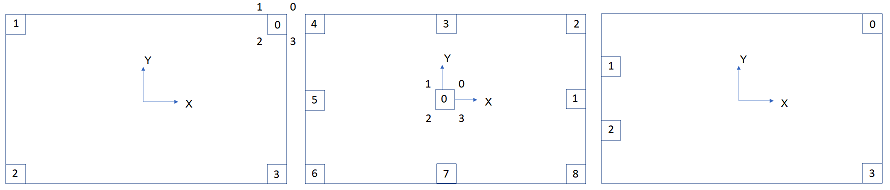
The leg polygon point order for more complex leg shapes are visualized below:
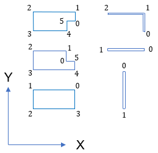
The leg polygon points can be defined around the leg's axis of rotation if the legs are e.g. castor wheels. An offset is computed based on the deviation between geometric centre and the axis of rotation. In the below Figure the geometric centre is given visualized as a black circle and the axis of rotation as the blue circle. In the example the offset X is positive.
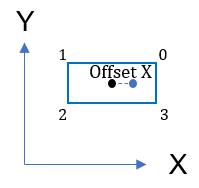
An immediate response will be sent if the obtained pallet is invalid. A pallet is valid if:
General:
- The number of polygon points in a leg corresponds to Additional leg information
Symmetric pallets:
- 2 or 3 columns and rows of legs
- Minimum of 4 legs and maximum of 9 legs
- Number of legs corresponds to the number of columns * number of rows
Asymmetric pallets:
- 4 legs
| Parameter | Min | Default | Max | Description |
|---|---|---|---|---|
| I, target_detection_maximum_iterations | 1 | 10 | 50 | The maximum number of target detection iterations to be performed before response. The returned pose is the average of the successful detections |
| I, pallet_model_definition_mode | 0 | 1 | 2 | Defines where the pallet model information is to be obtained. 0 - None, 1 - Parameters, 2 - Supervisor |
| F, pallet_det_target_pose_error | 0.05 | 0.2 | 3.0 | Maximum target distance deviation between estimated centre point and target |
Set parameter pallet_model_definition_mode to 2.
Navitrol will respond with message 3154.
| Navitrol version | Changes |
|---|---|
| 6.44.00 | Message added |
| 6.56.00 | Vehicle coordinate support |
| Data field | Type | Length (bytes) | Value / Explanation |
|---|---|---|---|
| Protocol version | Uint | 2 | 4 |
| Message ID | Uint | 2 | 3054 |
| Message length | Uint | 4 | 44 + N legs * (12 + N leg points * 8) |
| Detection type | Uint | 2 | Type of detection | Estimated target pose is informed in global (x) or vehicle (1x) coordinate frame - Cart detection | 1 or 11 - Pallet detection | 2 or 12 - Table detection | 3 or 13 - Box | 4 or 14 |
| Object model id | Uint | 2 | Number identifying the object type - for verification that the right model is reported back |
| Object center position X | Float | 4 | Estimated target pose X [m] - A value of Hex 7FA00000 (NaN) will omit the received centre pose and instead use the trajectory |
| Object center position Y | Float | 4 | Estimated target pose Y [m] - A value of Hex 7FA00000 (NaN) will omit the received centre pose and instead use the trajectory |
| Object heading H | Float | 4 | Estimated object heading [deg] - A value of Hex 7FA00000 (NaN) will omit the received centre pose and instead use the trajectory |
| Object length | Float | 4 | Total length of object, meters |
| Object width | Float | 4 | Total width of object, meters |
| Leg position symmetry | Uint | 2 | Defines whether the legs are positioned in symmetrical rows and columns i.e., no row or column with only one leg. 0 - symmetric 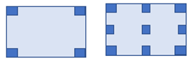 1 - asymmetric 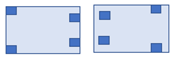 |
| Number of leg rows on long side of pallet | Uint | 2 | The number of leg rows perpendicular to the x-axis of a pallet, min 2, max 3. Not applicable for asymmetric pallets |
| Number of leg rows on short side of pallet | Uint | 2 | The number of leg rows perpendicular to the y-axis of a pallet, min 2, max 3. Not applicable for asymmetric pallets |
| Number of object legs | Uint | 2 | Maximum of 9 legs for symmetric pallets, and 4 for asymmetric |
| Object leg count | Array of legs | Variable: Number of legs * (12 + leg polygon count * 8) | Leg positions are given relative to the geometric center point of the object. The leg order is from object center point along x-axis and then in CCW order from the x-axis. |
| Leg position X | Float | 4 | The X - position of the leg relative to the geometric center point of the object |
| Leg position Y | Float | 4 | The Y - position of the leg relative to the geometric center point of the object |
| Leg polygon count | Uint | 2 | Number of leg polygon points (max 6 points). Points are given relative to the leg center point along x-axis and then in CCW order from the x-axis for solid legs. If two points on are on the positive X-axis they shall be the first and last to get a continuous array of points. For hollow legs from endpoint to endpoint starting from X-max end going through corners to X-min end (similarly for Y if no X-difference between endpoints) |
| Leg polygon point X | Float | 4 | Polygon point X relative to the leg center point |
| Leg polygon point Y | Float | 4 | Polygon point Y relative to the leg center point |
| Additional leg information | Uint | 2 | 0 - solid leg (4 or 6 points). Currently, only 4 points is supported 1 - hollow leg (3 points) 2 - plate leg (2 points) |
| Supervisor scan selection enabled | Uint | 2 | 0 - disabled, 1 - enabled |
| Target detection scan selection | Uint | 2 | Defines which scanners are used for target detection, 0 - enable target_detection_multi_scan_selection, 1 - rear scanner only, 2 - front scanner only, 3 - both scanners (supported only in reflector based detection!), 4 - use scanner in driving direction, 5 - alternate between scanners |
3055 - Cleaning actuator command
With this message the AGV supervisor can set the command for cleaning actuators. AGV supervisor can either command with the actuator mode with predefined actuator control logic or with manual command for each actuator.
This message can be used if parameter cleaning_machine_used is set to 1.
Navitrol will respond with message 3155.
| Navitrol version | Changes |
|---|---|
| 6.44.00 | Message added |
| Data field | Type | Length (bytes) | Value / Explanation |
|---|---|---|---|
| Protocol version | Uint | 2 | 4 |
| Message ID | Uint | 2 | 3055 |
| Message length | Uint | 4 | 28 |
| Actuators mode | Uint | 4 | 0 - Actuators off, 1 - Vacuum, 2 - Mop, 3 - Vacuum and Mop, 4 - Manual mode, 5 - Replay mode |
| Manual actuator command | Bitfield | 4 | Allows controlling each actuator independently This field is ignored if Actuators mode is not Manual. |
| Reserved | NA | 12 | Reserved for future ideas |
In the table bellow, actuator modes are described.
| Actuator mode | Single actuator command | Value | Explanation |
|---|---|---|---|
| Actuators OFF - mode 0 | Cleaning sweep lift | 0 | 0 - up, 1 - down (cleaning position) |
| Cleaning brush level | 0 | 0 - up, 1 - down (cleaning position) | |
| Sucking motor | 0 | 0 - off, 1 - on (vacuum) | |
| Cleaning brush | 0 | 0 - off, 1 - on (cleaning) | |
| Water valve command | 0 | 0 - off, 1 - on (mopping) | |
| Vacuum - mode 1 | Cleaning sweep lift | 1 | 0 - up, 1 - down (cleaning position) |
| Cleaning brush level | 1 | 0 - up, 1 - down (cleaning position) | |
| Sucking motor | 1 | 0 - off, 1 - on (vacuum) | |
| Cleaning brush | 1 | 0 - off, 1 - on (cleaning) | |
| Water valve command | 0 | 0 - off, 1 - on (mopping) | |
| Mop - mode 2 | Cleaning sweep lift | 1 | 0 - up, 1 - down (cleaning position) |
| Cleaning brush level | 1 | 0 - up, 1 - down (cleaning position) | |
| Sucking motor | 0 | 0 - off, 1 - on (vacuum) | |
| Cleaning brush | 1 | 0 - off, 1 - on (cleaning) | |
| Water valve command | 1 | 0 - off, 1 - on (mopping) | |
| Vacuum and mop - mode 3 | Cleaning sweep lift | 1 | 0 - up, 1 - down (cleaning position) |
| Cleaning brush level | 1 | 0 - up, 1 - down (cleaning position) | |
| Sucking motor | 1 | 0 - off, 1 - on (vacuum) | |
| Cleaning brush | 1 | 0 - off, 1 - on (cleaning) | |
| Water valve command | 1 | 0 - off, 1 - on (mopping) |
In the manual mode, AGV supervisor sets the status of each actuator individually
| Manual actuator command - mode 4 | Bit | Value / Explanation |
|---|---|---|
| Cleaning sweep lift | 0 | 0 - up, 1 - down (cleaning position) |
| Cleaning brush level | 1 | 0 - up, 1 - down (cleaning position) |
| Sucking motor | 2 | 0 - off, 1 - on (vacuum) |
| Cleaning brush | 3 | 0 - off, 1 - on (cleaning) |
| Water valve command | 4 | 0 - off, 1 - on (mopping) |
| Reserved | 5-31 | Reserved for future development |
In the replay mode, the actuator command is taken from the segments that the AGV drives. It is saved as a custom route property named "binary_actuators". If the AGV is not in automatic driving mode, the actuators will be turned off in this mode.
3056 - Error situation
This supervisor message is used for error recovery handling. Related to message 3156.
When an error situation starts, Navitrol will start sending the supervisor reply message (3156) at a 3 second interval. Then customer can define an action for this error situation by sending this 3056 message. The error situation id is a number that tells what situation is active and Navitrol will send that information on the 3156 message. Customer should define what error situation id the action is related to. See example situation below.
Error situation ids:
- 0 = None
- 1 = Dropoff not empty (related to error: 522 ERROR_RACKING_EMPTY_SPACE_NOT_DETECTED).
Actions for the Dropoff not empty situation:
- 0 - None -> Do nothing
- 1 - Acknowledge -> Reset ERROR_RACKING_EMPTY_SPACE_NOT_DETECTED
- 2 - Retry -> Reset ERROR_RACKING_EMPTY_SPACE_NOT_DETECTED and do the empty space detection again
- 3 - Ignore -> Reset ERROR_RACKING_EMPTY_SPACE_NOT_DETECTED and continue driving to rack without empty space detection feature. This will ignore the feature only for this one time. Next time it will be active again.
Example scenario:
- AGV drives to rack and does empty space detection.
- Some wrapping or plastic is triggering the ERROR_RACKING_EMPTY_SPACE_NOT_DETECTED and AGV will stop.
- Navitrol starts sending 3156 message with Error situation id: 1 (Dropoff not empty).
- Operator is checking the shelf and verifies that AGV would be able to drive to the shelf without issues. There is just some wrapping hanging from next shelf that would not cause any damage.
- Customer PLC sends 3056 message with
- Error situation id: 1 (Dropoff not empty)
- Action: 3 (Ignore)
- Navitrol resets the ERROR_RACKING_EMPTY_SPACE_NOT_DETECTED error and continue driving to the shelf without doing the empty space detection this time.
| Navitrol version | Changes |
|---|---|
| 6.46.00 | Message added |
| Data field | Type | Length (bytes) | Value / Explanation |
|---|---|---|---|
| Protocol version | Uint | 2 | 4 |
| Message ID | Uint | 2 | 3056 |
| Message length | Uint | 4 | 13 |
| Error situation id | Int | 4 | Id of the active error situation (same as what Navitrol sent with the 3156 message) |
| Action | Uint | 1 | Error action: 0 - None: Do nothing. 1 - Acknowledge: Reset error. 2 - Retry: Reset error and try again the feature that caused error. 3 - Ignore: Reset error and ignore the feature that caused the error for this time. |
3057 - Route-free Navigation Request
Starts the route free navigation to the target. Navitrol will plan a route to the given target avoiding the walls based on the environment model. Navitrol will respond with 3157 message.
| Navitrol version | Changes |
|---|---|
| 6.51.00 | Message added |
| Data field | Type | Length (bytes) | Value / Explanation |
|---|---|---|---|
| Protocol version | Uint | 2 | 4 |
| Message ID | Uint | 2 | 3057 |
| Message length | Uint | 4 | 40 |
| Reserved | Uint | 4 | Reserved bits for the future. Should be 0 for now, may be used for eg. point count later |
| x | double | 8 | X-coordinate for the target |
| y | double | 8 | Y-coordinate for the target |
| heading (radians) | double | 8 | heading for the target |
| velocity (m/s) | float | 4 | desired velocity. 0.0 if not specified, negative numbers are not supported for now |
From Navitrol to Supervisor
1116 - Motor control differential
The Motor control message is sent as a reply to the message Odometer update differential vehicle (Message ID 1016).
| Data field | Type | Length (bytes) | Value / Explanation |
|---|---|---|---|
| Protocol version | Uint | 2 | 4 |
| Message ID = 1116 | Uint | 2 | |
| Message length | Uint | 4 | Message length in bytes including all data fields (including Protocol version and Message ID) |
| Message number | Uint | 4 | Identification number for individual messages. NOTE: This value must match with the latest Odometer update message number sent by the Supervisor. |
| Speed_Left | Float | 4 | Reference speed for left wheel (m/s) |
| Speed_Right | Float | 4 | Reference speed for right wheel (m/s) |
| Navitrol Errors Stopping driving | Uint | 2 | 0 no errors, 1 error stopping driving |
1117 - Motor control steer drive
The Motor control message is sent as a reply to the message Measurement update steer drive vehicle (Message ID 1017).
| Data field | Type | Length (bytes) | Value / Explanation |
|---|---|---|---|
| Protocol version | Uint | 2 | 4 |
| Message ID = 1117 | Uint | 2 | |
| Message length | Uint | 4 | Message length in bytes including all data fields (including Protocol version and Message ID) |
| Message number | Uint | 4 | Identification number for individual messages. NOTE: This value must match with the latest Odometer update message number sent by the Supervisor. |
| Steering Angle | Float | 4 | Reference steering angle (+/-PI in radians) Positive turning direction is CCW |
| Wheel Speed | Float | 4 | Reference speed for drive wheel (m/s) |
| Status/control | Bitfield | 2 |
| Status/control bits | Bit | Value / Explanation |
|---|---|---|
| Navitrol error | 0 | |
| Reserved | 1-4 | Not in use |
| Obsolete | 5 | Not in use. Previously "Ack/Reset" |
| Charge request (deprecated) | 6 | Charge request bit is deprecated and should not be used. 3102 - Supervisor status Battery section Charging required bit is used to request charging |
| Brake release | 7 | |
| Reserved | 8-15 | Not in use |
1118 - Motor control differential&steer drive
The Motor control message is sent as a reply to the message Measurement update steer drive vehicle (Message ID 1018).
| Data field | Type | Length (bytes) | Value / Explanation |
|---|---|---|---|
| Protocol version | Uint | 2 | 4 |
| Message ID = 1118 | Uint | 2 | |
| Message length | Uint | 4 | Message length in bytes including all data fields |
| Message number | Uint | 4 | Identification number for individual messages. NOTE: This value must match with the latest Odometer update message number sent by the Supervisor. |
| Steer wheel: Steering Angle | Float | 4 | Reference steering angle (+/-PI in radians) Positive turning direction is CCW |
| Steer wheel: Wheel Speed | Float | 4 | Reference speed for drive wheel (m/s) |
| Diff Left wheel: Wheel Speed | Float | 4 | Reference speed for drive wheel (m/s) |
| Diff Right wheel: Wheel Speed | Float | 4 | Reference speed for drive wheel (m/s) |
| Status/control | Uint | 2 |
| Status/control bits | Bit | Value / Explanation |
|---|---|---|
| Navitrol error | 0 | |
| Reserved | 1-4 | Not in use |
| Obsolete | 5 | Not in use. Previously "Ack/Reset" |
| Charge request (deprecated) | 6 | Charge request bit is deprecated and should not be used. 3102 - Supervisor status Battery section Charging required bit is used to request charging |
| Brake release | 7 | |
| Reserved | 8-15 | Not in use |
1119 - Motor control omni drive
The Motor control message is sent as a reply to the message Measurement update omnidirectional drive vehicle (Message ID 1019).
| Data field | Type | Length (bytes) | Value / Explanation |
|---|---|---|---|
| Protocol version | Uint | 2 | 4 |
| Message ID = 1119 | Uint | 2 | |
| Message length = 26 | Uint | 4 | Message length in bytes including all data fields (including Protocol version and Message ID) |
| Message number | Uint | 4 | Identification number for individual messages. NOTE: This value must match with the latest Odometer update message number sent by the Supervisor. |
| Driving Vector Angle | Float | 4 | Reference driving vector angle relative to the vehicle frame. (+/-PI in radians) 0-forwards along vehicle center line. Positive direction is CCW from vehicle center line. Hex 7FA00000 no control |
| Steering Radius | Float | 4 | Radius to center of rotation from navigation point (m). 0-pivoting around vehicle navigation point. Positive PI/2 CCW from driving vector turning the vehicle to the left. Hex 7FA00000 no control |
| Driving Speed | Float | 4 | Reference speed of the vehicle navigation point along driving vector (m/s) Positive along driving vector, negative against driving vector (i.e. driving vector ± PI) Hex 7FA00000 no control |
| Status/control | Bitfield | 2 |
| Status/control bits | Bit | Value / Explanation |
|---|---|---|
| Navitrol error | 0 | |
| Obsolete | 1 | Not in use. Previously "Control enable" |
| Reserved | 2-4 | Not in use |
| Obsolete | 5 | Not in use. Previously "Ack/Reset" |
| Charge request (deprecated) | 6 | Charge request bit is deprecated and should not be used. 3102 - Supervisor status Battery section Charging required bit is used to request charging |
| Brake release | 7 | |
| Reserved | 8-15 | Not in use |
1122 - Motor control mecanum drive
The Motor control message is sent as a reply to the message Measurement update mecanum drive vehicle (Message ID 1022).
| Data field | Type | Length (bytes) | Value / Explanation |
|---|---|---|---|
| Protocol version | Uint | 2 | 4 |
| Message ID | Uint | 2 | 1122 |
| Message length | Uint | 4 | 46 |
| Message number | Uint | 4 | Identification number for individual messages mirrored from message 1022 NOTE: Supervisor should check that the values match to confirm that no messages have been lost. |
| Reference speed for wheel 0 | Float | 4 | Reference speed for wheel 0 |
| Reference speed for wheel 1 | Float | 4 | Reference speed for wheel 1 |
| Reference speed for wheel 2 | Float | 4 | Reference speed for wheel 2 |
| Reference speed for wheel 3 | Float | 4 | Reference speed for wheel 3 |
| Status/control | Bitfield | 2 | See Status/control bits |
| Reserved | NA | 16 | Not in use |
| Status/control bits | Bit | Value / Explanation |
|---|---|---|
| Navitrol error | 0 | Navitrol has any error active and is unable to drive. |
| Brake release | 1 | Navitrol requests Supevisor to release brakes to start driving |
| Reserved | 2-15 | Not in use |
1123 - Motor control combined
The Motor control message is sent as a reply to the message Measurement update combined (Message ID 1023).
For all supported kinematics (O-omni, S-steer, D-diff, DS-diff steer) both wheel references (1) and vector references (2) are sent. The receiver should choose which one they would like to use. The Used by column shows which combination each control value is intended for e.g., D1 for diff drive wheel reference.
Note: If the data field is not used by the vehicle type, a constant 0 will be sent.
A special feature for driving vector speed available. This feature allows sending a speed reference to the supervisor despite driving restrictions in order to activate a direction validation. This information, for instance, can be forwarded to the safety system in order to to inform it about driving direction prior to movement.
In order to enable the feature, the following conditions should be met:
- AGV stop signal should be sent by supervisor (soft stop PLC, bit 3 from supervisor status in Message ID 1023)
- AutoMoveDelay should be enabled for the state change (auto_moving_delay_msec parameter should be set to non-zero value)
- Parameter eth_set_speed_ref_prior_to_drive should be set to 1.
| Data field | Type | Length (bytes) | Value / Explanation | Used by |
|---|---|---|---|---|
| Protocol version | Uint | 2 | 4 | All |
| Message ID = 1123 | Uint | 2 | All | |
| Message length = 54 | Uint | 4 | Message length in bytes including all data fields | All |
| Message number | Uint | 4 | Identification number for individual messages. NOTE: This value must match with the latest Odometer update message number sent by the Supervisor. | All |
| Reference angle for wheel 0 | Float | 4 | Reference steering angle (+/-PI in radians) Positive turning direction is CCW | S1, DS1, O1 |
| Reference speed for wheel 0 | Float | 4 | Reference speed for drive wheel (m/s) | S1, DS1, O1 |
| Reference angle for wheel 1 | Float | 4 | Reference steering angle (+/-PI in radians) Positive turning direction is CCW | O1 |
| Reference speed for wheel 1 | Float | 4 | Reference speed for drive wheel (m/s) | O1 |
| Driving Vector Angle | Float | 4 | Reference driving vector angle relative to the vehicle frame. (+/-PI in radians) 0-forwards along vehicle center line. Positive direction is CCW from vehicle center line. | S2, DS2, D2, O2 |
| Steering Radius | Float | 4 | Radius to center of rotation from navigation point (m). 0-pivoting around vehicle navigation point. Positive PI/2 CCW from driving vector turning the vehicle to the left. | S2, DS2, D2, O2 |
| Driving Speed | Float | 4 | Reference speed of the vehicle along driving vector (m/s). For O2 and DS2 - speed of navigation point. For S2 and D2 - speed of fastest wheel Positive along driving vector, negative against driving vector (i.e. driving vector ± PI) | S2, DS2, D2, O2 |
| Diff Left wheel: Wheel Speed | Float | 4 | Reference speed for drive wheel (m/s) | D1, DS1 |
| Diff Right wheel: Wheel Speed | Float | 4 | Reference speed for drive wheel (m/s) | D1, DS1 |
| Timestamp | Uint | 4 | Cumulative time in ms; Mirrored from 1023 | All |
| Status/control | Bitfield | 2 | All |
| Status/control bits | Bit | Value / Explanation |
|---|---|---|
| Navitrol error | 0 | |
| Obsolete | 1 | Not in use. Previously "Control enable" |
| Reserved | 2-4 | Not in use |
| Obsolete | 5 | Not in use. Previously "Ack/Reset" |
| Charge request (deprecated) | 6 | Charge request bit is deprecated and should not be used. 3102 - Supervisor status Battery section Charging required bit is used to request charging |
| Brake release | 7 | |
| Reserved | 8-15 | Not in use |
1126 - Motor control omni response
The following motor control message is sent as a reply to the message Measurement update generic omni drive (Message ID 1026).
| Navitrol version | Changes |
|---|---|
| 6.52.00 | Message added |
| Data field | Type | Length (bytes) | Value / Explanation |
|---|---|---|---|
| Protocol version | Uint | 2 | 4 |
| Message ID | Uint | 2 | 1126 |
| Message length | Uint | 4 | 28 + N wheels * Omni wheels ref struct Message length in bytes including all data fields (including Protocol version and Message ID) |
| Message number | Uint | 4 | See message number in Glossary |
| Supervisor status out | Bitfield | 2 | See Status/control bits for more information. |
| Driving vector Angle | Float | 4 | Reference driving vector angle relative to the vehicle frame. (+/-PI in radians) 0-forwards along vehicle center line. Positive direction is CCW from vehicle center line. |
| Steering Radius | Float | 4 | Radius to center of rotation from navigation point (m). 0-pivoting around vehicle navigation point. Positive value sets the center of rotation to a direction of 90 deg CCW from the driving vector angle. For example with 0 deg driving vector angle vehicle turns to left with positive radius and to right with negative radius. |
| Navigation point speed | Float | 4 | Reference speed of the vehicle navigation point along driving vector (m/s) Positive along driving vector, negative against driving vector (i.e. driving vector ± PI). |
| Number of Wheels | Uint | 2 | Number of omni wheels, maximum 6, minimum 2. Determined by parameter omni_steer_nbr |
| Omni wheels ref struct[] | Omni wheels ref struct[] | Varying length | The references for each individual omni wheel |
| Status/control bits | Bit | Value / Explanation |
|---|---|---|
| Navitrol error | 0 | Navitrol has any error active and is unable to drive. |
| Reserved | 1-6 | Not in use |
| Brake release | 7 | Navitrol requests Supevisor to release brakes to start driving |
| Reserved | 8-15 | Not in use |
| Omni wheels ref struct | Type | Length (bytes) | Value / Explanation |
|---|---|---|---|
| Steer angle reference | Float | 4 | In radians. Range is [-PI, PI]. Positive is counter-clockwise. |
| Wheel speed reference | Float | 4 | In m/s |
1130 - Control actuators
This message is obsolete, not used anymore! Check messages 1031 and 1131.
1131 - Control multiple actuators
When Navitrol is controlling the actuators, it can control those actuators which are available in the Measurement update multiple actuators message and also activated in the parameters. One or several actuators are activated at a time according to a predefined work sequence. Navitrol sets position references for the actuators, requests the AGV controller to do the control and monitors feedback data for malfunctions and fulfillment of the control task. If relevant feedback data is not provided over the message, the navigation only waits for the reference reached information to end the control. When actuator control is successfully finished, the next controller is activated, while also monitoring that previously achieved controller targets are maintained.
Navitrol sends this message as a reply to the Measurement update multiple actuators message (1031).
| Data field | Type | Length (bytes) | Value / Explanation |
|---|---|---|---|
| Protocol version | Uint | 2 | 4 |
| Message ID = 1131 | Uint | 2 | |
| Message length = Min 16, max 176 | Uint | 4 | Message length depends on how many actuators are in use. Message length in bytes including all data fields (including Protocol version and Message ID) |
| Message number | Uint | 4 | This value shall be incremented by one for each message sent and it should match with received reply message number. |
| Message status | Uint | 2 | 0 – ok 1 – configuration error (an actuator section is sent with status bit 15 set) |
| Number of actuator control sections | Uint | 2 | Number of simultaneously controlled actuators (NoA). As many actuator sections can be sent as there are actuators defined to be controllable in the measurement update message. |
| Actuator control section | Actuator[] | NoA * 8 | Each packet consists of: Actuator to control, position reference and binary outputs |
| Actuator control section | Type | Length (bytes) | Value / Explanation |
|---|---|---|---|
| Controlled actuator | Uint | 2 | 1 – Lift 2 – Lift secondary (relative to the main lift) 3 – Reach 4 – Tilt fork 5 – Tilt mast 6 – Tilt vehicle frame 7 – Turn fork direction relative to vehicle frame 8 – Side shift fork 9 – Adjust fork width 10 – Side tilt fork 11 – Run onboard conveyor 12 – Lift scanner/camera 13 – Load identification on/off 14 – Load securing on/off 15 – Drive fork in/out (vehicle driving on odometry so no feedback, provided only as status information) 16 – Drive fork right/left, side loader and narrow aisle (vehicle driving on odometry so no feedback, provided only as status information) Others can be added on request. |
| Actuator position reference | Int | 4 | Reference position in millimeters or 0.1 degrees |
| Binary output | Uint | 2 | Binary output, described below |
| Binary output | Bit | Value / Explanation |
|---|---|---|
| Activate actuator | 0 | 1 control active, else 0 |
| Increase actuator | 1 | 1 if actuator value should be increased, extended or rotated CCW. For conveyors load moving in positive X or Y direction on vehicle coordinate frame. Bit 0 has to be 1, Bit 2 has to be 0 |
| Decrease actuator | 2 | 1 if actuator value should be decreased, retracted or rotated CW. For conveyors load moving in negative X or Y direction on vehicle coordinate frame. Bit 0 has to be 1, Bit 1 has to be 0 |
| Not defined | 3-14 | Reserved bits (= 0) |
| Undefined actuator | 15 | Actuator configured for control not defined in navigation parameters. |
1132 - Recording status
Tells the status of the record and play functionality
| Navitrol version | Changes |
|---|---|
| 6.48 | Message added |
| Data field | Type | Length (bytes) | Value / Explanation |
|---|---|---|---|
| Protocol version | Uint | 2 | 4 |
| Message ID | Uint | 2 | 1132 |
| Message length | Uint | 4 | 16 |
| Operation result | Uint | 4 | 0 fail, 1 success |
| Record & Play state | Uint | 4 | 0 play, 1 record, 2 failure |
Record & play states other than the specified are reserved and should be considered failures. Operation results other than the specified are reserved and should be considered failures.
3101 - Hold released
Navitrol sends this message as a reply to the Release Hold message 3001 (not 3011).
| Data field | Type | Length (bytes) | Value / Explanation |
|---|---|---|---|
| Protocol version | Uint | 2 | 4 |
| Message ID = 3101 | Uint | 2 | |
| Message length = 16 | Uint | 4 | Message length in bytes including all data fields (including Protocol version and Message ID) |
| Destination ID | Uint | 4 | Symbolic Point ID of the destination. |
| Release result | Uint | 4 | 0 accepted, 1 bad input data, 2 wrong state, 3 unreachable ID, 4 drive control disabled |
3102 - Navitrol status
Navitrol sends this message as a response to message Supervisor status 3002. Content of the message is determined by the request from the AGV supervisor. Message always starts with the default section. Rest of the message is determined by the section IDs received from the Supervisor.
Default section
| Data field | Type | Length (bytes) | Value / Explanation |
|---|---|---|---|
| Protocol version | Uint | 2 | 4 |
| Message ID = 3102 | Uint | 2 | |
| Message length = * Depends on what sections are included | Uint | 4 | Message length in bytes including all data fields (including Protocol version and Message ID) |
| Default section length | Uint | 4 | Length of the default section |
| State | Uint | 4 | Navitrol state START_STATE = 1, STANDBY_STATE = 2, AUTO_STATE = 3, FSTOP_STATE = 9, LOAD_STATE = 14, HOLD_STATE = 15, MANUAL_STATE = 16, PAUSE_STATE = 17 |
| X-coordinate | Float | 4 | In meters |
| Y-coordinate | Float | 4 | In meters |
| Heading | Float | 4 | Radians |
| Level | Int | 4 | Level ID |
| Speed | Float | 4 | m/s |
| Position initialize status | Uint | 2 | 0 = Failed 1 = Succeeded |
| Position confidence | Uint | 2 | Position confidence in percentage (1 - 100%) |
| Error status | Uint | 2 | 1 error on, 0 no error |
1 - General section
| Data field | Type | Length (bytes) | Value / Explanation |
|---|---|---|---|
| Section ID = 1 | Uint | 2 | |
| Section length | Uint | 4 | Length of the section including all data fields of the section |
| Battery voltage | Float | 4 | V |
| On route | Uint | 2 | 1 on route, 0 not on route |
2 - Hold section
| Data field | Type | Length (bytes) | Value / Explanation |
|---|---|---|---|
| Section ID = 2 | Uint | 2 | |
| Section length | Uint | 4 | Length of the section including all data fields of the section |
| InHold | Uint | 2 | 1 if machine in Hold, 0 otherwise |
| Default destination in use | Uint | 2 | 1 if the machine is at a hold location for which a Default destination is defined, 0 otherwise |
| Default destination name | Char[32] | 32 | Default destination name as a null-terminated string. |
| 1st alternative destination in use | Uint | 2 | 1 if the machine is at a hold location for which the 1st alternative destination is in use, 0 otherwise |
| 1st alternative destination name | Char[32] | 32 | 1st alternative destination name as a null-terminated string. |
| 2nd alternative destination in use | Uint | 2 | 1 if the machine is at a hold location for which the 2nd alternative destination is in use, 0 otherwise |
| 2nd alternative destination name | Char[32] | 32 | 2nd alternative destination name as a null-terminated string. |
| 3rd alternative destination in use | Uint | 2 | 1 if the machine is at a hold location for which the 3rd alternative destination is in use, 0 otherwise |
| 3rd alternative destination name | Char[32] | 32 | 3rd alternative destination name as a null-terminated string. |
3 - Virtual Tag section
Virtual tags can be defined to symbolic points in Navithor Tools. Virtual tag means only the tags of 'generic' type, so the tags from doors or Navitrol features are not sent on this section. Virtual tag section applies only to symbolic point tags, it doesn't send any values from the route properties.
It is possible to define two virtual tags of 'generic'-type using Navithor Tools. If one is defined it will be always sent in "Value of virtual tag 1" -data field. If two 'generic' tags are defined the second is sent "Value of virtual tag 2" -data field. The order of two 'generic' tags will be the same as they were defined in Navithor Tools.
Note: Message was changed in 6.28.00 to support two virtual tags instead of one. This concerns customers that have used previously this message with big endian communication.
| Data field | Type | Length (bytes) | Value / Explanation |
|---|---|---|---|
| Section ID = 3 | Uint | 2 | |
| Section length | Uint | 4 | Length of the section including all data fields of the section |
| Virtual Tag in use | Uint | 2 | 1 the machine is close to a virtual tag location, 0 otherwise Applies only to Generic tags on symbolic points (doors, Navitrol features or any route properties/tags do not trigger this or the Virtual Tag value). |
| Value of virtual tag 1 | Uint | 2 | |
| Value of virtual tag 2 | Uint | 2 | If two 'generic' virtual tags are defined the second is sent in this field. |
4 - Coming from Going to section
| Data field | Type | Length (bytes) | Value / Explanation |
|---|---|---|---|
| Section ID = 4 | Uint | 2 | |
| Section length | Uint | 4 | Length of the section including all data fields of the section |
| Going to ID | Uint | 4 | ID of ongoing or last drive target, updated at start of a drive |
| Target reached | Uint | 2 | 1 if the Going to ID destination has been reached, else 0 |
| Going to name | Char[32] | 32 | Name of goal symbolic point of the drive, null-terminated string |
| Coming from name | Char[32] | 32 | Name of symbolic point where the drive started, null-terminated string |
5 - Actuator section
| Data field | Type | Length (bytes) | Value / Explanation |
|---|---|---|---|
| Section ID = 5 | Uint | 2 | |
| Section length | Uint | 4 | Length of the section including all data fields of the section |
| Actuator reference | Uint | 4 | Actuator reference value (position, rotation, height (mm)), updated when Activate actuator is 1 |
| Binary outputs 1 | Bitfield | 1 | |
| Reserved | NA | 1 | Not in use |
| Binary outputs 3 | Bitfield | 1 | |
| Reserved | NA | 1 | Not in use |
| Binary outputs 1 bits | Bit | Value / Explanation |
|---|---|---|
| Activate actuator | 0 | 1 control active, else 0 |
| Increase actuator value | 1 | 1 if actuator value should be increased (Bit 0 has to be 1, Bit 2 has to be 0) |
| Decrease actuator value | 2 | 1 if actuator value should be decreased (Bit 0 has to be 1, Bit 1 has to be 0) |
| Reserved | 3-7 | 5 bits |
| Binary outputs 3 bits | Bit | Value / Explanation |
|---|---|---|
| StopAndHoldActive | 0 | 1 if AGV is held over StopAndHold symbolic point, otherwise 0 |
| Reserved | 1-7 | Not in use |
6 - Custom attribute section
| Data field | Type | Length (bytes) | Value / Explanation |
|---|---|---|---|
| Section ID = 6 | Uint | 2 | |
| Section length | Uint | 4 | Length of the section including all data fields of the section |
| Attribute 1 value | Float | 4 | Value of attribute 1 |
| Attribute 1 name | Char[32] | 32 | name of the attribute 1 |
| Attribute 2 value | Float | 4 | Value of attribute 2 |
| Attribute 2 name | Char[32] | 32 | name of the attribute 2 |
| Attribute 3 value | Float | 4 | Value of attribute 3 |
| Attribute 3 name | Char[32] | 32 | name of the attribute 3 |
| Attribute 4 value | Float | 4 | Value of attribute 4 |
| Attribute 4 name | Char[32] | 32 | name of the attribute 4 |
| Attribute 5 value | Float | 4 | Value of attribute 5 |
| Attribute 5 name | Char[32] | 32 | name of the attribute 5 |
7 - Warning zone section
| Data field | Type | Length (bytes) | Value / Explanation |
|---|---|---|---|
| Section ID = 7 | Uint | 2 | |
| Section length | Uint | 4 | Length of the section including all data fields of the section |
| Warning zone front value | Uint | 2 | Front warning zone selection, this warning zone is reported when Navitrol driving in AUTO mode otherwise idle zone is reported |
| Warning zone rear value | Uint | 2 | Rear warning zone selection, this warning zone is reported when Navitrol driving in AUTO mode otherwise idle zone is reported |
8 - Outputs section
The virtual outputs need to be activated and mapped in Navitrol parameters to be used instead of physical IO
| Data field | Type | Length (bytes) | Value / Explanation |
|---|---|---|---|
| Section ID = 8 | Uint | 2 | |
| Section length | Uint | 4 | Length of the section including all data fields of the section |
| Num of binary outputs | Uint | 2 | 0-32 supported |
| Binary outputs | An array of bytes | num of outputs * 1 | |
| Num of integer outputs | Uint | 2 | 0-32 supported |
| Integer outputs | An array of integers | num of outputs * 4 | |
| Num of float outputs | Uint | 2 | 0-32 supported |
| Float outputs | An array of floats | num of outputs * 4 |
9 - Steering Angle section
| Data field | Type | Length (bytes) | Value / Explanation |
|---|---|---|---|
| Section ID = 9 | Uint | 2 | |
| Section length | Uint | 4 | Length of the section including all data fields of the section |
| Target steering wheel angle | Float | 4 | In radians |
| Measured steering wheel angle | Float | 4 | In radians |
10 - Battery section
Battery values produced by Navitrol.
| Navitrol version | Changes |
|---|---|
| 6.24.00 | Section added |
| Data field | Type | Length (bytes) | Value / Explanation |
|---|---|---|---|
| Section ID = 10 | Uint | 2 | |
| Section length | Uint | 4 | Length of the section including all data fields of the section |
| Battery state of charge | Uint | 2 | In percentages, range 0...100 %, 65535 not used |
| Battery voltage | Uint | 2 | Value * 0.1 Volt, 65535 not used |
| Charge current/current draw | Int | 2 | Value * 0.1 Ampere, 32767 not used. Negative values if discharging and positive values, if battery is being charged. |
| Energy draw | Int | 2 | Value * 0.1 Ah, 32767 not used |
| Time to go | Uint | 2 | Estimated time left in minutes until the battery is empty, 65535 not used |
| Battery state of health | Uint | 2 | In percentages, range 0...100 %, 65535 not used |
| Battery temperature | Int | 2 | In Celsius degrees, 32767 not used |
| Battery load cycles | Uint | 2 | Number of load cycles performed for battery, 65535 not used |
| Battery operating hours | Uint | 2 | Total number of operating hours, 65535 not used |
| Charger voltage | Uint | 2 | Value * 0.1 Volt, 65535 not used |
| Errors | Bitfield | 2 | Active error flags described below. All bits are 0 when not active battery errors. |
| Binary data 1 | Bitfield | 1 | Binary data 1 described below: |
| Reserved | NA | 1 | Not in use |
| Errors bits | Bit | Value / Explanation |
|---|---|---|
| Battery management communication error | 0 | 0: not active 1: active |
| Battery configuration error | 1 | 0: not active 1: active |
| Undervoltage error | 2 | 0: not active 1: active |
| Overvoltage error | 3 | 0: not active 1: active |
| Overcurrent error | 4 | 0: not active 1: active |
| Temperature error | 5 | 0: not active 1: active |
| Internal defect | 6 | 0: not active 1: active |
| Bad state of health | 7 | 0: not active 1: active |
| Faulty charger | 8 | 0: not active 1: active |
| Faulty contactor | 9 | 0: not active 1: active |
| Current sensor defect | 10 | 0: not active 1: active |
| Temperature sensor defect | 11 | 0: not active 1: active |
| Battery cell drift error | 12 | 0: not active 1: active |
| Charging error | 13 | 0: not active 1: active |
| Generic error | 14 | Unspecified error 0: not active 1: active |
| Generic error | 15 | Unspecified error 0: not active 1: active |
| Binary data 1 bits | Bit | Value / Explanation |
|---|---|---|
| Charging required | 0 | 1 charging required, Used to notify that AGV is ready for charge. |
| Charging | 1 | 1 charging, 0 not charging |
| Reserved | 2-7 | Not in use |
11 - Disable safety section
This message is sent only when parameter disable_safety is set to 1.
Used in situation, where customer has safety scanner below the fork, so the safety needs to be disabled when the AGV is close to the load or unload point or when the fork is decreased to the scanner level. Parameter disable_safety_distance_to_load_or_unload defines the distance to the load and unload points and actuator_disable_safety_max_value_mm is the maximum value where the safety is not disabled. If the actuator is lower than this parameter, then disable safety is sent. If needed, the speed can be limited also while the disable is active. It can be set with parameter disable_safety_limit_speed.
| Data field | Type | Length (bytes) | Value / Explanation |
|---|---|---|---|
| Section ID = 11 | Uint | 2 | |
| Section length | Uint | 4 | Length of the section including all data fields of the section |
| Disable safety | Byte | 1 | 1 = Navitrol request safety to be disabled, 0 = Not disabled |
12 - Drive order info section
Information from current drive order.
| Navitrol version | Changes |
|---|---|
| 6.24.00 | Section added |
| Data field | Type | Length (bytes) | Value / Explanation |
|---|---|---|---|
| Section ID = 12 | Uint | 2 | |
| Section length = 100 | Uint | 4 | Length of the section including all data fields of the section |
| Going to ID | Uint | 4 | ID of ongoing or last drive target, updated at start of a drive |
| Target reached | Uint | 2 | 1 if the Going to ID destination has been reached and the AGV is stopped, else 0 Note: AGV is considered to be stopped, if measured speed is less than value of mot_ctrl_wheel_v_min -parameter |
| Going to name | Char[32] | 32 | Name of goal symbolic point of the drive, null-terminated string |
| Coming from name | Char[32] | 32 | Name of symbolic point where the drive started, null-terminated string |
| Current segment | Uint | 4 | The ID of the segment on which the AGV currently is located |
| Distance to segment | Float | 4 | The transversal distance to the segment in meters |
| On route | Uint | 2 | AGV on route information, 1 - on route 0 - not on route |
| Tag ID | Uint | 2 | ID of the route tag. A tag value can be defined on any part or group of segments to distinguish one part of the route network from another. Valid values 0 - 65280. |
| Door Tag ID | Uint | 2 | Door type symbolic point writes tag IDs to route automatically. |
| Reserved Tag IDs | Uint | 4 | |
| Driving vector angle | Float | 4 | Driving vector angle relative to the vehicle frame (+/- PI in radians) 0-forwards along vehicle center line. Positive direction is CCW from the vehicle center line. |
| Turning information | Uint | 2 | Vehicle turning/pivoting. 0 = No turning 1 = Left 2 = Right 3 = Blink both (Not currently implemented) 4 = Adjusting wheels for pivoting 5 = Pivot left 6 = Pivot right 7 = Approaching pivot point |
13 - Distance to target section
Distance information of current drive order
| Navitrol version | Changes |
|---|---|
| 6.26.00 | Section added |
| Data field | Type | Length (bytes) | Value / Explanation |
|---|---|---|---|
| Section ID = 13 | Uint | 2 | Distance to Target section |
| Section length = 52 | Uint | 4 | Length of the section including all data fields of the section |
| Distance to Target | Float | 4 | Length of the straight line between current position and the target location |
| Trajectory length to Target | Float | 4 | Length of the trajectory from current position to the target location, information only valid when in AUTO_STATE |
| Target X | Float | 4 | Drive target X coordinate, updated in AUTO_STATE |
| Target Y | Float | 4 | Drive target Y coordinate, updated in AUTO_STATE |
| Target H | Float | 4 | Drive target Heading in radians, updated in AUTO_STATE |
| Target is Symbolic point | Uint | 2 | End point of trajectory is symbolic point 0=False, 1=True, updated in AUTO_STATE |
| Target Symbolic point ID | Uint | 4 | Trajectory target ID, valid only if "Target is Symbolic point" is set true, updated in AUTO_STATE |
| Target Symbolic point type | Bitfield | 4 | Symbolic point type bitfield of target symbolic point. |
| Reserved | NA | 16 | Not in use |
| Target Symbolic point type bits | Bit | Value / Explanation |
|---|---|---|
| Load | 0 | |
| Unload | 1 | |
| Wait unload | 2 | |
| Wait unload | 3 | |
| Charge | 4 | |
| Stop | 5 | |
| Reserved | 6-7 | Not in use |
| Hold | 8 | |
| Tag | 9 | |
| Decision point | 10 | |
| Door | 11 | |
| Stop-and-hold | 12 | |
| Level change | 13 | |
| Buffer lane | 14 | |
| Rack | 15 |
14 - All Custom properties
This message will send all custom properties that are parsed from the segment file. The maximum number is 20. The first byte informs how many properties are coming. Each property has a value and name.
| Navitrol version | Changes |
|---|---|
| 6.28.00 | Section added |
| Data field | Type | Length (bytes) | Value / Explanation |
|---|---|---|---|
| Section ID = 14 | Uint | 2 | |
| Section length = 10 + N * 36 | Uint | 4 | Length of the section including all data fields of the section |
| Number of properties = N | Int | 4 | Number of properties that will be sent Max value 20 |
| Property data | Property type | 36 * N | Each property has a value and name |
| Property data struct | Type | Length (bytes) | Value / Explanation |
|---|---|---|---|
| Property value | Float | 4 | Value of property |
| Property name | Char[32] | 32 | Name of property |
15 - Coupled drive status section
This section contains data about coupled formation and state. The complete contents can only be provided by the leader AGV.
| Navitrol version | Changes |
|---|---|
| 6.32.00 | Section added |
| Data field | Type | Length (bytes) | Value / Explanation |
|---|---|---|---|
| Section ID = 15 | Uint | 2 | Coupled drive status section |
| Section length = 60 | Uint | 4 | Length of the section including all data fields of the section |
| Coupling mode | Uint | 2 | 0 = Decoupled 1 = Coupled as leader 2 = Coupled as follower |
| Coupled state | Uint | 2 | The coupled state of the machine 0 = NO_STATE 1 = START 2 = STANDBY 3 = AUTO 9 = FSTOP 14 = LOAD 15 = HOLD 16 = MANUAL 17 = PAUSE |
| Communication ok | Uint | 2 | 0 = Not ok 1 = Ok |
| Formation data | Formation data type | 32 | Formation data is only valid for leader when communication is ok |
| Reserved | NA | 16 | Not in use |
| Formation data struct | Type | Length (bytes) | Value / Explanation |
|---|---|---|---|
| X-position | Float | 4 | X-coordinate of formation's navigation point in map coordinates(meters) |
| Y-position | Float | 4 | Y-coordinate of formation's navigation point in map coordinates (meters) |
| Heading | Float | 4 | Heading of the formation (degrees) in map coordinates |
| Omni heading | Float | 4 | Omni heading / "frame heading" of the formation (degrees) |
| Velocity | Float | 4 | Speed of the formation (m/s) |
| Turn rate | Float | 4 | Turn rate of the formation (degrees/s) |
| Current segment | Uint | 4 | Current segment of the formation |
| Distance to route | Float | 4 | Formation's distance from the defined route - along trajectory normal (meters) |
16 - Drive order with enroute stopping point data
This section will send the data for the drive order with enroute stopping points.
| Data field | Type | Length (bytes) | Value / Explanation |
|---|---|---|---|
| Section ID = 16 | Uint | 2 | |
| Section length = 12 | Uint | 4 | Length of the section including all data fields of the section |
| Is AGV within the distance specified by stop_enroute_speed_activation_dist_m | Unsigned char | 1 | 1 = AGV within specified distance 0 = AGV not within specified distance |
| Reserved | NA | 5 | Not in use |
17 - Trailer transport section
This section contains trailer transport data required for coupling and uncoupling sequences. Navitrol uses this section to request coupling actions and will wait until supervisor confirms the action to be ready using Supervisor trailer transport section.
| Navitrol version | Changes |
|---|---|
| NA | Section added |
| Data field | Type | Length (bytes) | Value / Explanation |
|---|---|---|---|
| Section ID | Uint | 2 | 17 |
| Section length | Uint | 4 | 22 |
| Trailer coupling action | Uint | 2 | During coupling to a trailer or uncoupling from one Navitrol will send these “coupling actions” based on the state of the coupling. Navitrol expects that Supervisor will change the “Coupling status” (in message 3002:12) to match the given action before it continues to next (un)coupling state. Values: 0 = No action 1 = Uncouple (move actuator down) 2 = Prepare for coupling (move actuator to kingpin height) 3 = Prepare for uncoupling (move actuator to kingpin height, release lock) 4 = Couple (move actuator to transport height / lock trailer) |
| Trailer dimensions request | Uint | 2 | Indicates if Navitrol is waiting for trailer dimensions from the supervisor. (Sent using message 3042) 0 = All good 1 = Waiting for Trailer dimensions |
| Reserved | NA | 12 | Not in use |
18 - Vehicle speed section
Information about trajectory speed reference, measured and calculated speeds on the vehicle
| Navitrol version | Changes |
|---|---|
| 6.32.00 | Section added |
| Data field | Type | Length (bytes) | Value / Explanation |
|---|---|---|---|
| Section ID = 18 | Uint | 2 | |
| Section length = 36 + wheel count * 4 | Uint | 4 | Length of the section including all data fields of the section |
| Trajectory reference speed | Float | 4 | Speed reference given in trajectory point in m/s. Nonzero when driving. Zero at startup, can be zeroed in standby or left as the last used reference. |
| Vehicle speed | Float | 4 | Navigation point speed in m/s. Can be both positive and negative. If negative, the vehicle is moving in the opposite direction of the speed direction. |
| Vehicle speed direction | Float | 4 | Navigation point speed direction relative to vehicle body in degrees. Range +-180 degrees, 0 forwards along vehicle center axis |
| Wheel count | Uint | 2 | Number of wheels with speed measurement on vehicle. |
| Wheel speed | Float | 4 * wheel count | Speed of each wheel in m/s Sending order: Steer drive - index 0 Diff drive - left 0, right 1 Mecanum: Front left 0, front right 1, rear left 2, rear right 3 Omni drive - order from 0 to count in parameters wheel_x[i], wheel_y[i] |
| Reserved | NA | 16 | Not in use |
19 - Scanner status section
This section contains the status information from all safety and measurement scanners connected to Navitrol.
Scanner types:
- Measurement scanners
- Navigation scanner
- Used for localization
- Related parameters: scanner_model_front and scanner_model_rear
- Measurement only scanner
- Used for example target detection or obstacle avoidance - Related parameters: scanner_meas_model
- Navigation scanner
- Safety only scanner
- Used for warning and protection zone information
- Must be a safety scanner model
- Related parameters: safety_scanner_model
| Navitrol version | Changes |
|---|---|
| 6.34.00 | Section added |
| Data field | Type | Length (bytes) | Value / Explanation |
|---|---|---|---|
| Section ID | Uint | 2 | 19 |
| Section length | Uint | 4 | 10 + 2 * (NMS + NSS) |
| Number of measurement scanners | Uint | 2 | Number of measurement scanner statuses sent. (NMS) Equals to number of supported measurement scanners – currently Navitrol supports 4 measurement scanners. The status is sent from all measurement scanners even if some of them would not be in use. |
| Measurement scanner status | Scanner status bitfield[] | 2 * NMS | Measurement scanner status as 2-byte bitfield array. Default array indexes: [0] – Rear navigation scanner [1] – Front navigation scanner [2] – Measurement only scanner 1 [3] – Measurement only scanner 2 0 – Inactive, 1 – Active |
| Number of safety only scanners | Uint | 2 | Number of safety only scanner statuses sent. (NSS) Equals to number of safety scanners (NSS) in use – currently Navitrol supports up to 4 safety scanners. Status will be sent only from the safety scanners defined with safety_scanner_model-array parameter. |
| Safety scanner status | Scanner status bitfield[] | 2 * NSS | Safety scanner status as 2-byte bitfield array. Array indexes: The same order as the scanners are defined with safety_scanner_model-array parameter. |
| Scanner status bits | Bit | Value / Explanation |
|---|---|---|
| Pollution warning | 0 | Scanner pollution warning – Scanner is dirty. |
| Pollution error | 1 | Scanner pollution error – Scanner is very dirty |
| Fatal error | 2 | Scanner reports fatal error – Scanner is unoperational |
| Protection zone | 3 | Scanner protection zone triggered |
| Warning zone 1 | 4 | Scanner warning zone 1 triggered. |
| Warning zone 2 | 5 | Scanner warning zone 2 triggered. |
| Reserved | 6-15 | Not in use |
20 - Sleep mode command section
This section contains the command for sleep mode. With the sleep mode feature, the fleet control can request AGVs to save battery. The supervisor can inform the fleet control about AGV's current sleep mode state by sending the sleep mode state section in 3002 status message.
| Navitrol version | Changes |
|---|---|
| 6.56.00 | Section added |
| Data field | Type | Length (bytes) | Value / Explanation |
|---|---|---|---|
| Section ID = 20 | Uint | 2 | |
| Section length = 8 | Uint | 4 | Length of the section including all data fields of the section |
| Sleep mode command | Uint | 2 | 0 = Normal operation 1 = Activate sleep 2 = Activate deep sleep |
3103 - Symbolic point data result
Navitrol sends this message as a reply to the "Symbolic Point Data Request"-message and always after Navitrol has loaded the symbolic points into memory. This message contains the information of all symbolic points parsed by Navitrol e.g. for a UI display.
| Data field | Type | Length (bytes) | Value / Explanation |
|---|---|---|---|
| Protocol version | Uint | 2 | 4 |
| Message ID = 3103 | Uint | 2 | |
| Message length | Uint | 4 | Message length in bytes including all data fields (including Protocol version and Message ID) |
| Number of Symbolic Points = N | Uint | 4 | The number of Symbolic Point data structures in this message |
| Symbolic point data | SP data type | N * 84 |
| Symbolic point data struct | Type | Length (bytes) | Value / Explanation |
|---|---|---|---|
| Symbolic Point ID | Uint | 4 | ID of the symbolic point |
| Symbolic Point Name | Char[32] | 32 | name of the symbolic point |
| X-coordinate | Float | 4 | x-coordinate of the symbolic point |
| Y-coordinate | Float | 4 | y-coordinate of the symbolic point |
| Level | Int | 4 | Level of the symbolic point |
| Position Init1- ID | Int | 4 | ID for the position init pose 1. -1 if not defined for this symbolic point |
| Position Init1 - Heading | Float | 4 | Heading for the AGV when setting position to PositionInit1 |
| Position Init2 - ID | Int | 4 | ID for the position init pose 2 -1 if not defined for this symbolic point |
| Position Init2 - Heading | Float | 4 | Heading for the AGV when setting position to PositionInit2 (opposite heading to PositionInit1). |
| Virtual Tag enabled | Uint | 2 | 1 if a virtual tag is enabled for this symbolic point (applies to 'generic' tag, so doors, Navitrol features or any route properties do not trigger this or the Virtual Tag value) |
| Virtual Tag value | Uint | 4 | This value (i.e. action code) is written into the "Navitrol Status"-message when the AGV is entering this symbolic point (field Virtual Tag value in message 3012) |
| IsLoad | Uint | 2 | 1 if symbolic point is a loading location |
| isUnload | Uint | 2 | 1 if symbolic point is an unloading location |
| isWaitLoad | Uint | 2 | 1 if symbolic point is a wait loading location |
| isWaitUnload | Uint | 2 | 1 if symbolic point is a wait unloading location |
| isChargingLocation | Uint | 2 | 1 if symbolic point is a charging location |
| isStopLocation | Uint | 2 | 1 if symbolic point is a stop location |
| isHold | Uint | 2 | 1 if symbolic point is a hold location |
3104 - Release hold to custom destination result
Navitrol sends this message as a reply to the Release hold to custom destination message.
| Data field | Type | Length (bytes) | Value / Explanation |
|---|---|---|---|
| Protocol version | Uint | 2 | 4 |
| Message ID = 3104 | Uint | 2 | |
| Message length = 16 | Uint | 4 | Message length in bytes including all data fields (including Protocol version and Message ID) |
| Destination ID | Uint | 4 | Symbolic Point ID of the destination. |
| Release result | Uint | 4 | 0 accepted, 1 bad input data, 2 wrong state, 3 unreachable ID, 4 drive control disabled |
3105 - Go to destination result
Navitrol sends this message as a reply to the Go to destination message.
| Data field | Type | Length (bytes) | Value / Explanation |
|---|---|---|---|
| Protocol version | Uint | 2 | 4 |
| Message ID = 3105 | Uint | 2 | |
| Message length = 16 | Uint | 4 | Message length in bytes including all data fields (including Protocol version and Message ID) |
| Destination ID | Uint | 4 | Symbolic Point ID of the destination. |
| Go to result | Uint | 4 | 0 accepted, 1 bad input data, 2 wrong state, 3 unreachable ID, 4 drive control disabled, 5 too big transversal offset, 6 too big longitudinal offset, 7 too big heading offset 8 drive rejected (no active drive controllers), 9 error(s) active 10 AGV distance error to route too high 11 trajectory generation failure 12 previous drive order in progress 13 AGV already at the destination ID |
3106 - Pause drive result
Navitrol sends this message as a reply to the Pause drive message.
| Data field | Type | Length (bytes) | Value / Explanation |
|---|---|---|---|
| Protocol version | Uint | 2 | 4 |
| Message ID = 3106 | Uint | 2 | |
| Message length = 12 | Uint | 4 | Message length in bytes including all data fields (including Protocol version and Message ID) |
| Pause result | Uint | 4 | 0 accepted, 1 bad input data, 2 wrong state |
3107 - Resume drive result
Navitrol sends this message as a reply to the Resume drive message.
| Data field | Type | Length (bytes) | Value / Explanation |
|---|---|---|---|
| Protocol version | Uint | 2 | 4 |
| Message ID = 3107 | Uint | 2 | |
| Message length = 16 | Uint | 4 | Message length in bytes including all data fields (including Protocol version and Message ID) |
| Destination ID | Uint | 4 | Symbolic Point ID of the resumed drive destination. |
| Resume result | Uint | 4 | 0 accepted, 1 bad input data, 2 wrong state |
3108 - Abort drive result
Navitrol sends this message as a reply to the Abort drive message. Aborting is accepted if the machine is driving or if a drive is paused.
| Data field | Type | Length (bytes) | Value / Explanation |
|---|---|---|---|
| Protocol version | Uint | 2 | 4 |
| Message ID = 3108 | Uint | 2 | |
| Message length = 12 | Uint | 4 | Message length in bytes including all data fields (including Protocol version and Message ID) |
| Abort result | Uint | 4 | 0 accepted, 1 bad input data, 2 wrong state |
3111 - Stop hold released
Navitrol sends this message as a reply to the Release stop hold message (Message ID 3011).
Note: This is a specific message for only Stop-and-Hold point and the logic is different than in normal release-hold production, which is run with other types of symbolic points.
| Navitrol version | Changes |
|---|---|
| 6.28.00 | Message added |
| Data field | Type | Length (bytes) | Value / Explanation |
|---|---|---|---|
| Protocol version | Uint | 2 | 4 |
| Message ID = 3111 | Uint | 2 | |
| Message length = 10 | Uint | 4 | Message length in bytes including all data fields (including Protocol version and Message ID) |
| Release Stop Hold Result | Uint | 2 | 0 = accepted, 1 = rejected - not stop hold 2 = rejected - wrong mode |
3112 - Go to destination with route offset result
Navitrol sends this message as a reply to the Go to destination with route offset message.
| Navitrol version | Changes |
|---|---|
| NA | Message added |
| Data field | Type | Length (bytes) | Value / Explanation |
|---|---|---|---|
| Protocol version | Uint | 2 | 4 |
| Message ID = 3112 | Uint | 2 | |
| Message length = 16 | Uint | 4 | Message length in bytes including all data fields |
| Destination ID | Uint | 4 | Symbolic Point ID of the destination. |
| Go to result | Uint | 4 | Same as: 3105 - Go to destination result |
3113 Go To Destination With Order ID result
Navitrol replies to the Go To Destination With Order ID message just to inform whether it has been accepted for forwarding to fleet control. The fleet control can still refuse the drive order based on the route and fleet statuses. If the fleet control accepts and starts the drive order, the production status is reported in message 3115 Production Status Data.
| Navitrol version | Changes |
|---|---|
| 6.26.00 | Message added |
| Data field | Type | Length (bytes) | Value / Explanation |
|---|---|---|---|
| Protocol version | Uint | 2 | 4 |
| Message ID = 3113 | Uint | 2 | |
| Message length = 20 | Uint | 4 | Message length in bytes including all data fields (including Protocol version and Message ID) |
| Destination ID | Uint | 4 | Symbolic Point ID of the destination. |
| Go To order result | Uint | 4 | Same as: 3105 - Go to destination result |
| Order ID | Uint | 4 | Verification of the order ID generated by the supervisor 0xFFFF FFFF - no ID |
3114 Production Status Data Sending Request Result
Navitrol replies to the Production Status Data Sending Request message to inform the current sending status.
| Navitrol version | Changes |
|---|---|
| 6.26.00 | Message added |
| 6.42.00 | Added requested once and invalid request received responses |
| Data field | Type | Length (bytes) | Value / Explanation |
|---|---|---|---|
| Protocol version | Uint | 2 | 4 |
| Message ID | Uint | 2 | 3114 |
| Message length | Uint | 4 | 10 |
| Sending status | Uint | 2 | 0 – Sending deactivated 1 – Sending on update activated 2 – Requested once 100 – Invalid request received |
3115 Production Status Data
Navitrol sends this message if the production status sending has been activated. Activation is done either by sending message 3013 - Go to destination message with ID or by separately activating the sending with message 3014 - Production status sending request. The message is sent every time a production order status message is received from the fleet control.
Note: Sending production status data is disabled by default on Navithor side. It can be enabled with “Machine_ProductionStatusIntervalMs” Navithor parameter.
| Navitrol version | Changes |
|---|---|
| 6.26.00 | Message added |
| Data field | Type | Length (bytes) | Value / Explanation |
|---|---|---|---|
| Protocol version | Uint | 2 | 4 |
| Message ID = 3115 | Uint | 2 | |
| Message length = 36 | Uint | 4 | Message length in bytes including all data fields (including Protocol version and Message ID) |
| Order ID external | Uint | 4 | The last order ID received from the Supervisor |
| Order ID sent | Uint | 4 | The last order ID sent to fleet control |
| Order ID active | Uint | 4 | Current active drive order ID in fleet control |
| Item type | Uint | 4 | Item being handled by the AGV in the active drive order. 0xFFFF FFFF - no item |
| Pick up ID | Uint | 4 | Symbolic point ID to pick up from |
| Target ID | Uint | 4 | Symbolic point ID to bring the resource to |
| Order status | Short Integer | 2 | 0 - new_order 1 - order loaded 2 - order waiting 3 - executing 4 - interrupted 5 - completed 6 - cancelled |
| Machine in production | Uint | 2 | 0 - machine not in production 1 - machine in production |
3121 - Start New Drive Result
Navitrol sends this message as a reply to the Start New Drive message.
| Data field | Type | Length (bytes) | Value / Explanation |
|---|---|---|---|
| Protocol version | Uint | 2 | 4 |
| Message ID = 3121 | Uint | 2 | |
| Message length = 12 | Uint | 4 | Message length in bytes including all data fields (including Protocol version and Message ID) |
| Start New Drive Result | Uint | 4 | 0 accepted 1 bad input data 2 wrong state 3 invalid traj type 4 message size mismatch 5 rejected due to active error 6 trajectory calculation failed 7 invalid point attribute (like omni heading for steer/diff drive AGV) 8 too few trajectory points sent 9 too many trajectory points sent 10 distance between trajectory points too small 11 distance between trajectory points too large 12 - undefined 13 route too far from current location 14 agv heading differs too much from route heading NOTE: Some example cases what might have caused a specific result can be found under the message specification 3021 |
3122 - Extend Drive Result
Navitrol sends this message as a reply to the Extend drive message.
| Data field | Type | Length (bytes) | Value / Explanation |
|---|---|---|---|
| Protocol version | Uint | 2 | 4 |
| Message ID = 3122 | Uint | 2 | |
| Message length = 12 | Uint | 4 | Message length in bytes including all data fields (including Protocol version and Message ID) |
| Extend Drive Result | Uint | 4 | 0 accepted 1 bad input data 2 wrong state 3 invalid traj type 4 message size mismatch 5 rejected due to active error 6 trajectory calculation failed 7 invalid point attribute (like omni heading for steer/diff drive AGV) 8 too few trajectory points sent 9 too many trajectory points sent 10 distance between trajectory points too small 11 distance between trajectory points too large 12 invalid drive extension message type NOTE: Some example cases what might have caused a specific result can be found under the message specification 3021 |
3123 - Speed Limit Set
Navitrol sends this message as a reply to the Set Speed Limit message.
| Data field | Type | Length (bytes) | Value / Explanation |
|---|---|---|---|
| Protocol version | Uint | 2 | 4 |
| Message ID = 3123 | Uint | 2 | |
| Message length = 14 | Uint | 4 | Message length in bytes including all data fields (including Protocol version and Message ID) |
| Released/Set | Uint | 2 | 0 - released, 1 - set |
| Speed limit | Float | 4 | Max speed set in m/s Note: FLT_MAX if released |
3124 - Return To Route Response
Navitrol sends this message to supervisor as a response to return-to-route request message. Navitrol will reply with 0 or 1 for return-to-route success or return-to-route failure respectively.
| Navitrol version | Changes |
|---|---|
| NA | Message added |
| Data field | Type | Length (bytes) | Value / Explanation |
|---|---|---|---|
| Protocol version | Uint | 2 | 4 |
| Message ID = 3124 | Uint | 2 | |
| Message length = 12 | Uint | 4 | Message length in bytes including all data fields (including Protocol version and Message ID) |
| Return-to-route result | Uint | 4 | 0 = return-to-route found a segment point that satisfies the constraints set by parameters. 1 = no such segment point found that satisfies the return-to-route constraints as specified by the parameters 2 = Wrong state. Return to route is already active or AGV is not in Standby or Coupled state. 3 = Not used for this feature. 4 = Auto driving is disabled. |
3128 - Custom Speed Array Result
Navitrol sends this message as a reply to Select Custom Speed Array Parameters message 3028.
| Navitrol version | Changes |
|---|---|
| 6.24.00 | Message added |
| Data field | Type | Length (bytes) | Value / Explanation |
|---|---|---|---|
| Protocol version | Uint | 2 | 4 |
| Message ID = 3127 | Uint | 2 | |
| Message length = 8 | Uint | 4 | Message length in bytes including all data fields (including Protocol version and Message ID) |
| Custom speed array result | Uint | 2 | 0 = Custom speed array released 1 = Custom speed array set |
3129 - Drive ready
Navitrol sends this message, when a drive order is ready. It is sent if fleet_control_enabled = 2 or veh_inte_send_drive_ready_msg = 1.
| Data field | Type | Length (bytes) | Value / Explanation |
|---|---|---|---|
| Protocol version | Uint | 2 | 4 |
| Message ID = 3129 | Uint | 2 | |
| Message length = 12 | Uint | 4 | Message length in bytes including all data fields (including Protocol version and Message ID) |
| Drive order result | Uint | 4 | 0 - Drive order Ok 1 - Drive order failed |
3131- Drive Order from Segments Result
Navitrol sends this message as a reply to Drive Order from Segments 3031.
| Navitrol version | Changes |
|---|---|
| 6.24.00 | Message added |
| Data field | Type | Length (bytes) | Value / Explanation |
|---|---|---|---|
| Protocol version | Uint | 2 | 4 |
| Message ID = 3131 | Uint | 2 | |
| Message length = 12 | Uint | 4 | Message length in bytes including all data fields (including Protocol version and Message ID) |
| Drive order from segments result | Uint | 4 | 0 accepted, 1 bad input data, 2 wrong state, 4 drive control disabled, 5 too large transversal offset, 6 too large longitudinal offset, 7 too large heading offset 8 drive order rejected, 9 error(s) active, 10 too large distance from route |
3132 - Set target detection mode result
Navitrol sends this as a response to the message 3032. Returns "Result" = 0 if the target detection mode was changed successfully. If the message was rejected the reason is indicated by the value of the "Result".
| Navitrol version | Changes |
|---|---|
| 6.30.00 | Message added |
| Data field | Type | Length (bytes) | Value / Explanation |
|---|---|---|---|
| Protocol version | Uint | 2 | 4 |
| Message ID = 3132 | Uint | 2 | |
| Message length = 10 | Uint | 4 | Message length in bytes including all data fields (including Protocol version and Message ID) |
| Result | Uint | 2 | 0 = Accepted 1 = Rejected - Unsupported "Target detection mode to set" 2 = Rejected - Unsupported amount of reflector docking reflectors 3 = Rejected - value of target_detection_type_selection != 5 in params.txt 4 = Rejected - Docking to the previous target already started 5 = Rejected - Reflector width is negative or zero 6 = Rejected - Pattern distance value is outside of the defined range [0.0, 1.0] 7 = Rejected - Given pallets given for search in pallets to detect bitfield |
3134 - PGV Data Response
Navitrol starts to send this message after it is requested with message 3034. Message is sent every n:th time Navitrol receives PGV data from the sensor(s). By default, Navitrol sends this message every time data is received (n = 1) but it can be adjusted via parameter pgv_to_supervisor_nth_sync.
| Navitrol version | Changes |
|---|---|
| 6.28.00 | Message added |
| Data field | Type | Length (bytes) | Value / Explanation |
|---|---|---|---|
| Protocol version | Uint | 2 | 4 |
| Message ID = 3134 | Uint | 2 | |
| Message length | Uint | 4 | Message length in bytes including all data fields (including Protocol version and Message ID) |
| Number of PGVs | Uint | 2 | Number of connected PGVs. Max 4. |
| PGV data | Array of PGV data | Variable: Number of PGVs * structure size |
| PGV data struct | Type | Length (bytes) | Value / Explanation |
|---|---|---|---|
| Data available | Uint | 2 | 0 = No data available. Check configuration. 1 = Data available |
| Y-position | Int | 4 | Scaling 0.1 mm |
| X-position | Uint | 4 | Scaling 0.1 mm |
| Heading | Uint | 2 | Scaling 0.1 degrees, 0-3600 positive rotation in CW |
| Status | Bitfield | 2 | |
| Warning | Uint | 2 | Warning code |
| Data Matrix Tag | Uint | 4 | Tag number |
| Control Code Status | Uint | 2 | Refer to PGV manual |
| Control Code | Uint | 2 | Number of the detected control code |
| Reserved | NA | 4 | Not in use |
| Status bits | Bit | Value / Explanation |
|---|---|---|
| Error message | 0 | |
| No absolute X position | 1 | |
| Warning message | 2 | |
| Control code detected | 3 | |
| Reserved | 4 | |
| Right lane selected | 5 | |
| Left lane selected | 6 | |
| No colored line detected | 7 | |
| Repair tape detected | 8 | |
| LC0 | 9 | |
| LC1 | 10 | |
| Tag detected | 11 | |
| Tag detected | 12-15 |
3135 - External target detection response
Navitrol sends this message as a reply to Supervisor external target detection message 3035
| Navitrol version | Changes |
|---|---|
| 6.30.00 | Message added |
| Data field | Type | Length (bytes) | Value / Explanation |
|---|---|---|---|
| Protocol version | Uint | 2 | 4 |
| Message ID = 3135 | Uint | 2 | |
| Message length = 28 | Uint | 4 | Message length in bytes including all data fields (including Protocol version and Message ID) |
| Start detection | Uint | 2 | 1 -start detecting the target 0 - Stop detecting |
| Assumed target position X difference | Float | 4 | Distance from sensor position along the centre line of the detection sensor view. |
| Assumed target position Y difference | Float | 4 | Distance from sensor position perpendicular to the centre line of the detection sensor view. Positive to the left. |
| Assumed target position Z difference | 4 | Distance from sensor position in vertical direction. Positive direction upwards. Value forced to 0 | |
| Assumed target angle difference | Float | 4 | Angle of the target with respect to the X-axis. Positive in CCW direction. |
| Detection too far from route | Uint | 2 | 1 = target detected too far away Otherwise value is 0 |
3136 - Coupled drive: coupling response
Navitrol will send this message as a response to 3036.
Leader:
- The Coupling result will be coupling started if there is no immediate reason for Navitrol to refuse the command. Coupling will fail otherwise
Follower:
- Coupling will be ok if the follower was in the right state (STANDBY) and starts waiting for connection from the leader.
- Coupling will fail otherwise
If given bad input, the coupling result point out one error even if there are many. The more exact error descriptions can be read from Navitrol logs.
Note: If the leader fails to connect, all AGV's must get a decoupling message (3037). Else the leader will try connecting and the followers will remain waiting for a connection.
| Navitrol version | Changes |
|---|---|
| 6.32.00 | Message added |
| Data field | Type | Length (bytes) | Value / Explanation |
|---|---|---|---|
| Protocol version | Uint | 2 | 4 |
| Message ID = 3136 | Uint | 2 | |
| Message length = 16 | Uint | 4 | Message length in bytes including all data fields (including Protocol version and Message ID) |
| Coupling mode | Uint | 2 | Coupling mode after coupling command 0 = Uncoupled 1 = Leader 2 = Follower |
| Coupling result | Uint | 2 | 0 = Coupling started 1 = Unsupported coupling mode 2 = Unsupported number of AGVs 3 = Invalid load dimension 4 = Invalid IP 5 = Invalid machine ID 6 = Invalid position 7 = Wrong state |
| Reserved | NA | 4 | Not in use |
3137 - Coupled drive: decoupling response
Navitrol will send this message as a response to 3037.
Leader:
- Decoupling will be ok if the coupling control state allows decoupling and the leader has disconnected from all followers.
- Decoupling will fail otherwise
Follower:
- Decoupling will be ok if the follower was in the right state (STANDBY, FSTOP, START) and the coupling communication is disconnected, or if the follower was still waiting for the coupling communication.
- Decoupling will fail otherwise
Note: If leader fails to connect to the followers. Each follower must get this decoupling message to end waiting for a connection.
| Navitrol version | Changes |
|---|---|
| 6.32.00 | Message added |
| Data field | Type | Length (bytes) | Value / Explanation |
|---|---|---|---|
| Protocol version | Uint | 2 | 4 |
| Message ID = 3137 | Uint | 2 | |
| Message length = 16 | Uint | 4 | Message length in bytes including all data fields (including Protocol version and Message ID) |
| Coupling mode | Uint | 2 | Coupling mode before decoupling command 0 = Uncoupled 1 = Leader 2 = Follower |
| Decoupling result | Uint | 2 | 0 = Decoupling ok 1 = Decoupling failed wrong state |
| Reserved | NA | 4 | Not in use |
3142 – Trailer Transport: Set Trailer Dimensions response
Navitrol’s response message to the Supervisor’s Activate Trailer transport message (3042).
Note: If multiple valid 3042 messages are sent within a short interval, first one is accepted and other are rejected with result value 3.
| Navitrol version | Changes |
|---|---|
| 6.34.00 | Message added |
| Data field | Type | Length (bytes) | Value / Explanation |
|---|---|---|---|
| Protocol version | Uint | 2 | 4 |
| Message ID | Uint | 2 | 3142 |
| Message length | Uint | 4 | 14 |
| Set dimensions result | Uint | 2 | 0 = Dimensions set successfully 1 = Error invalid input - Received dimensions are either too small or too large 2 = Error trailer transport feature not enabled - with parameter trailer_transport_enabled. 3 = Error wrong state Navitrol is not expecting trailer dimensions, either coupling is not active, or the dimensions have already been set. |
| Reserved | NA | 4 | Not in use |
3143 - Coupled drive: coupling configuration
Navitrol will send this message as a response to request for coupling configuratoin 3043.
| Navitrol version | Changes |
|---|---|
| 6.34.00 | Message added |
| Data field | Type | Length (bytes) | Value / Explanation |
|---|---|---|---|
| Protocol version | Uint | 2 | 4 |
| Message ID = 3143 | Uint | 2 | |
| Message length for: Leader = 30 + N * Coupling Data Size = 158 or 222 Follower /Uncoupled = 10 | Uint | 4 | Message length in bytes including all data fields (including Protocol version and Message ID) N = "Number of AGVs" |
| Coupling mode | Uint | 2 | 0 = Uncoupled 1 = Leader 2 = Follower |
| - | - | - | Only Leader response will have following data |
| Number of AGVs = N | Uint | 2 | Number of AGVs in coupling |
| AGV Coupling Data Size | Uint | 2 | Size of coupling data per AGV = 64 |
| AGV coupling data[N] | Array of AGV coupling data | N * structure size (64) | |
| Reserved | NA | 16 | Not in use |
| AGV coupling data struct | Type | Length (bytes) | Value / Explanation |
|---|---|---|---|
| IP address | Char[46] | 46 | The IP address is defined as null terminated string ( = char array ending with value 0) Supports IPv4 and IPv6 |
| Machine ID | Uint | 2 | Machine ID of the AGV |
| Reserved | NA | 16 | Not in use |
3144 - Send Schwarzmueller TPDO response
Navitrol will send this message as a response to request for Schwarzmueller TPDO 3044.
More detailed data field descriptions can be obtained from the Schwarzmueller document "Standard-CANopen".
| Navitrol version | Changes |
|---|---|
| 6.34.00 | Message added |
| Data field | Type | Length (bytes) | Value / Explanation |
|---|---|---|---|
| Protocol version | Uint | 2 | 4 |
| Message ID = 3144 | Uint | 2 | |
| Message length = 28 + N * 23 | Uint | 4 | Message length in bytes including all data fields (including Protocol version and Message ID) N = "Number of Schwarzmueller motor controllers" |
| Number of Schwarzmueller Motor controllers | Int | 4 | Number of Schwarzmueller Motor controllers connected to Navitrol |
| Schwarzmueller data | Schwarzmueller Data type[N] | N * 36 | Schwarzmueller data structs according to Number of Motor controllers in the AGV |
| Reserved | NA | 16 | Not in use |
| Schwarzmueller data struct | Type | Length (bytes) | Value / Explanation |
|---|---|---|---|
| Node ID | Uint | 2 | Node ID of the motor controller |
| TPDO1 | TPDO1 type | 10 | |
| TPDO2 | TPDO2 type | 10 | |
| TPDO3 | TPDO3 type | 6 | |
| Reserved | NA | 8 | Not in use |
| TPDO1 struct | Type | Length (bytes) | Value / Explanation |
|---|---|---|---|
| Status Byte | Uint | 2 | |
| Motor Load | Int | 2 | Scale: 1% |
| Actual speed | Int | 2 | Scale: 1 rpm |
| Actual torque | Int | 2 | Scale: 0.01 Nm |
| Encoder value | Int | 2 | Scale: 1 pulse |
| TPDO2 struct | Type | Length (bytes) | Value / Explanation |
|---|---|---|---|
| Fault/warning code | Uint | 2 | |
| BDI Level | Uint | 2 | Scale: 1-10 |
| Inverter Temperature | Int | 2 | Scale: 1o C |
| Motor temperature | Int | 2 | Scale: 1o C |
| Battery voltage | Uint | 2 | Scale: 0.01 V |
| TPDO3 struct | Type | Length (bytes) | Value / Explanation |
|---|---|---|---|
| Motor phase current | Uint | 2 | Scale: 0.1 A |
| Motor line voltage | Uint | 2 | Scale: 0.01 V |
| Battery current | Int | 2 | Scale: 0.1 A |
3146 - Omni steering angle response
Navitrol will send this message as a response to Message ID 3046.
| Navitrol version | Changes |
|---|---|
| 6.34.00 | Message added |
| Data field | Type | Length (bytes) | Value / Explanation |
|---|---|---|---|
| Protocol version | Uint | 2 | 4 |
| Message ID = 3146 | Uint | 2 | |
| Message length = 28 + N * 8 | Uint | 4 | Message length in bytes including all data fields (including Protocol version and Message ID) N = "Number of omni steering wheel" |
| Number of Omni steering wheels | Int32 | 4 | Number of omni wheels set in parameters |
| Measured steering wheel array | Float[] | N * 4 | Measured steering angle of an omni wheel. Array indexing matches omni steering wheel parameter indexing Units - radians |
| Reference steering angle array | Float[] | N * 4 | Reference steering angle of an omni wheel. Array indexing matches omni steering wheel parameter indexing Units - radians |
| Reserved | NA | 16 | Not in use |
3150 – Symbolic points on AGV path
Navitrol will send this message as a response to Message ID 3050 – Request for symbolic points on AGV path. This message can be used to get list of symbolic points coming ahead that the AGV will be passing through before reaching its destination. Symbolic points on path are only available for drive orders using predefined segments i.e. driving with custom routes etc. will not have symbolic points on trajectory.
The symbolic point list is of points coming ahead on the path in the order they appear. Maximum number of symbolic points reported in this list is limited to 10. Symbolic points that have been visited during drive get removed from the list.
Note that the symbolic point list is from path that has already been commanded to the AGV. For very long drive orders, this path may not lead all the way to destination and therefore, the list will keep updating as new path is commanded to AGV with drive extensions.
If this message is requested after the drive has ended, last available information will be sent by Navitrol.
| Navitrol version | Changes |
|---|---|
| 6.38.00 | Message added |
| Data field | Type | Length (bytes) | Value / Explanation |
|---|---|---|---|
| Protocol version | Uint | 2 | 4 |
| Message ID | Uint | 2 | 3150 |
| Message length | Uint | 4 | 22 + (N * 12) N = “Number of symbolic points on path” |
| Last visited symbolic point ID | Uint | 4 | ID of symbolic point on trajectory that was most recently visited by the AGV. 0 = None Parameters symbol_point_enter_dist is used for last visited symbolic point distance limit. |
| Destination symbolic point ID | Uint | 4 | ID of destination symbolic point of the AGV. 0 = None Destination symbolic point is the final symbolic point AGV is driving to. |
| Reserved | NA | 4 | Not in use |
| Number of symbolic points on path - N | Uint | 2 | Number of symbolic points coming ahead on AGV path |
| Symbolic Point Data | Symbolic point data[] | N * 12 | List of symbolic points Symbolic points that AGV has already passed are not reported |
| Symbolic point data struct | Type | Length (bytes) | Value / Explanation |
|---|---|---|---|
| Symbolic point ID | Uint | 4 | ID of symbolic point |
| Reserved | NA | 8 | Not in use |
3151 – Pivot to target heading response
Navigation SW sends this message to the AGV supervisor as a response to the Pivot to target heading message (Message ID 3051). A reply from success will come when the AGV has reached the target heading. If the pivoting cannot be started or it is interrupted before the target is reached, reply with reject reason will be sent.
| Navitrol version | Changes |
|---|---|
| 6.42.00 | Message added |
| Data field | Type | Length (bytes) | Value / Explanation |
|---|---|---|---|
| Protocol version | Uint | 2 | 4 |
| Message ID | Uint | 2 | 3151 |
| Message length | Uint | 4 | 16 |
| Pivot to target heading result | Uint | 4 | 0 = Successfully pivoted to the target heading 1 = Bad input 2 = Wrong state 4 = Control disabled 8 = Drive rejected 9 = Error(s) active |
| Reserved | NA | 4 | Not in use |
3152 – Active custom speed array parameter index
Navitrol will send this message as a response to Message ID 3052.
| Navitrol version | Changes |
|---|---|
| NA | 6.42.00 |
| Data field | Type | Length (bytes) | Value / Explanation |
|---|---|---|---|
| Protocol version | Uint | 2 | 4 |
| Message ID | Uint | 2 | 3152 |
| Message length | Uint | 4 | 14 |
| Speed array index | Int | 2 | The index of currently active custom speed array index. Values [0…10] -1 = Default non array speed parameters are in use. (None of the custom speed arrays are active) |
| Reserved | NA | 4 | Not in use |
3153 – Pivot to target heading started response
Navitrol sends this message as an immediate reply to the "Pivot To Target Heading"-message (3051) to indicate that the request was received.
| Navitrol version | Changes |
|---|---|
| 6.42.00 | Message added |
| Data field | Type | Length (bytes) | Value / Explanation |
|---|---|---|---|
| Protocol version | Uint | 2 | 4 |
| Message ID | Uint | 2 | 3153 |
| Message length | Uint | 4 | 8 |
3154 – Object model information response
Navitrol replies to the "Object model information"-message (3054) after target_detection_maximum_iterations target detection iterations. The returned pose is the average pose of the N successful detections, which is a subset of the maximum iterations.
| Navitrol version | Changes |
|---|---|
| 6.44.00 | Message added |
| 6.56.00 | Vehicle coordinate support |
| Data field | Type | Length (bytes) | Value / Explanation |
|---|---|---|---|
| Protocol version | Uint | 2 | 4 |
| Message ID | Uint | 2 | 3154 |
| Message length | Uint | 4 | 32 + Nl * 2 |
| Object model id | Uint | 2 | The searched model id |
| Object detected | Uint | 2 | 0 - not detected, 1 - detected |
| Object centre position X | Float | 4 | The X – position of the object in coordinates of the request message 3054 |
| Object centre position Y | Float | 4 | The Y – position of the object in coordinates of the request message 3054 |
| Object heading H | Float | 4 | The heading (degrees) of the object in coordinates of the request message 3054 |
| Reserved | Uint | 4 | Reserved for future use |
| Error reason | Uint | 2 | 0 - No error 1 - Object not in view 2 - Leg positions not matching model 3 - Object not within position tolerance 4 - Object model invalid |
| Number of wheels | Uint | 2 | The number of wheel box position in variable data |
| Wheel direction | Array of wheels | Number of wheels * 2 | |
| Wheel direction | Uint | 2 | 0 - wheel not aligned with cart 1 - wheel aligned with cart |
3155 - Cleaning actuator response
Navitrol will send this message as a reply to the "3055 - Cleaning actuator command" message. With this message, Navitrol confirms that command for cleaning actuators has successfully recieved.
| Navitrol version | Changes |
|---|---|
| 6.44.00 | Message added |
| Data field | Type | Length (bytes) | Value / Explanation |
|---|---|---|---|
| Protocol version | Uint | 2 | 4 |
| Message ID | Uint | 2 | 3155 |
| Message length | Uint | 4 | 20 |
| Command result | Uint | 4 | 0 - Accepted 1 - Bad input 4 - Control disabled |
| Reserved | NA | 8 | Reserved for future development |
3156 - Error situation response
Navitrol will send this message periodically, with a three second interval, when there is an error situation. 3056 message is used to define an action how this error situation should be solved. If there is no error situation, 3156 message is not sent. This supervisor message is used for error recovery handling. More detailed information and examples can be found from the description of the 3056 message.
| Navitrol version | Changes |
|---|---|
| 6.46.00 | Message added |
| Data field | Type | Length (bytes) | Value / Explanation |
|---|---|---|---|
| Protocol version | Uint | 2 | 4 |
| Message ID | Uint | 2 | 3156 |
| Message length | Uint | 4 | 12 |
| Error situation id | Int | 4 | Id of the active error situation. See message 3056 for more information. |
3157 - Route-free navigation response
"Success" is reported when a path is ready to drive (has been planed). Otherwise failure is reported when the planning fails. Operation result "planner busy" means that route-free navigation feature is active planning a path and can not process new request at this time. Other specific error codes may be added later.
| Navitrol version | Changes |
|---|---|
| 6.51.00 | Message added |
| Data field | Type | Length (bytes) | Value / Explanation |
|---|---|---|---|
| Protocol version | Uint | 2 | 4 |
| Message ID | Uint | 2 | 3157 |
| Message length | Uint | 4 | 12 |
| Operation result | Uint | 4 | 0 - Success, otherwise failure: 1 - generic falure, 2 - planner busy |
4101 - Target detection update v1
Navitrol sends this message periodically every time the target detection calculation is finished. Requires that parameter agv_supervisor_enabled = 1 and pallet detection parameters are correctly configured.
I,target_detection_supervisor_update_message_interval_ms -parameter. (Default 200ms) can be used to determine the minimum interval of the update message. With value 0 the message is sent every time the target detection calculation finishes a cycle.
Parameter requirements:
I,target_detection_supervisor_update_message_enabled = 1 (this is the default value so if the parameter is not defined in the file this is automatically used)
| Navitrol version | Changes |
|---|---|
| 6.24.00 | Message added |
| Data field | Type | Length (bytes) | Value / Explanation |
|---|---|---|---|
| Protocol version | Uint | 2 | 4 |
| Message ID = 4101 | Uint | 2 | |
| Message length | Uint | 4 | Message length in bytes including all data fields (including Protocol version and Message ID) |
| Target X | Float | 4 | Target X-coordinate in map coordinates |
| Target Y | Float | 4 | Target Y-coordinate in map coordinates |
| Target Angle | Float | 4 | Target Angle in radians in map coordinates |
| Target found | Uint | 1 | Target found 1, not found 0 |
| Scan coms | Uint | 1 | Scanner communication status: 1 OK 0 Not OK |
4104 - Pattern detection v2 status update
A target detection status update message specifically for Pattern detection v2 status target detection type. If enabled, Navitrol sends this update periodically.
Parameter requirements: I,refl_det_version, 2 I,target_detection_type_selection, 1 I,target_detection_always_enabled, 1
Note: refl_det_version and target_detection_type_selection settings can alternatively be set using message "3032 - Set target detection mode".
The status update will be sent at the interval defined by I,target_detection_supervisor_update_message_interval_ms -parameter. (Default 200ms)
Feature overview:
Positioning result from one or two scanners. Reflectors must be in a pattern where all reflector distances differ from each other. All reflectors are of equal size and mounted into a line.
The combined data is empty if only one scanner is used. When two scanners are used, the common data contains a combination of both scanners' results always, when the separate results match with a certain accuracy.
There is an automatic offset calibration between the scanners, which is removing small scanner position parameter errors. It is active when both scanners see the whole reflector pattern. When the offset has tuned in, so that both scanners give the same result the common data is filled. When either scanner is not detecting the entire reflector pattern the offsets are frozen and only used for result correction.
| Navitrol version | Changes |
|---|---|
| 6.28.00 | Message added |
| Data field | Type | Length (bytes) | Value / Explanation |
|---|---|---|---|
| Protocol version | Uint | 2 | 4 |
| Message ID = 4104 | Uint | 2 | |
| Message length = 52 | Uint | 4 | Message length in bytes including all data fields |
| Scanner1 Target X | Float | 4 | Target X-coordinate in map coordinates |
| Scanner1 Target Y | Float | 4 | Target Y-coordinate in map coordinates |
| Scanner1 Target Angle | Float | 4 | Target Angle in radians in map coordinates |
| Scanner1 Target found | Byte | 1 | 0 - Target not found, N[3...8] reflectors detected |
| Scanner1 Fitness | Uint | 1 | 0...100 % 0 - target not found 100 - all reflectors detected, ideal match |
| Scanner1 coms | Uint | 1 | Scanner communication status: 1 OK 0 Not OK |
| Scanner2 Target X | Float | 4 | Target X-coordinate in map coordinates |
| Scanner2 Target Y | Float | 4 | Target Y-coordinate in map coordinates |
| Scanner2 Target Angle | Float | 4 | Target Angle in radians in map coordinates |
| Scanner2 Target found | Byte | 1 | 0 - Target not found, N[3...8] reflectors detected |
| Scanner2 Fitness | Uint | 1 | 0...100 % 0 - target not found 100 - all reflectors detected, ideal match |
| Scanner2 coms | Uint | 1 | Scanner communication status: 1 OK 0 Not OK |
| Combined Target X | Float | 4 | Target X-coordinate in map coordinates |
| Combined Target Y | Float | 4 | Target Y-coordinate in map coordinates |
| Combined Target Angle | Float | 4 | Target Angle in radians in map coordinates |
| Combined Fitness | Uint | 1 | 0...100 % 0 - combination not found 100 - all reflectors detected, ideal match |
| Combined possible | Uint | 1 | Communication with both scanners, combination matching 0 Not OK N [3...8] reflectors detected |
4105 - Target detection status update v2
Navitrol sends this update periodically if target detection parameters are enabled. The status update will be sent at the interval defined by I,target_detection_supervisor_update_message_interval_ms -parameter. (Default 200ms)
Parameter requirements: I,target_detection_supervisor_update_message_enabled = 2 I,target_detection_type_selection > 0 I,target_detection_type_selection != 2 # (pallet detection v1 not supported)
| Navitrol version | Changes |
|---|---|
| 6.28.00 | Message added |
| Data field | Type | Length (bytes) | Value / Explanation |
|---|---|---|---|
| Protocol version | Uint | 2 | 4 |
| Message ID = 4105 | Uint | 2 | |
| Message length | Uint | 4 | Message length in bytes including all data fields (including Protocol version and Message ID) |
| Detection mode | Uint | 1 | Active target detection mode 0 = Target detection disabled 1 = Reflector docking active 2 = Pallet detection active 3 = Pattern detection active 100 = Target detection mode unidentified. (Can come up if pallet detection version 1 is enabled) |
| Target found | Uint | 1 | 0 = Searching for target 1 = Target found Target has been continuously detected amount of times defined by parameter target_min_n_times_detected Target won't be lost even if it is no longer detected amount of times defined by parameter target_max_n_times_missing. |
| Target reached | Uint | 1 | 0 = Target not reached Target is either not found or not reached 1 = Target reached Distance to the target is less than defined by parameter pc_max_end_dist Note: Distance to the target is AGV's remaining drive distance following the active drive trajectory Value will be updated only when docking has started |
| Target within safety distance | Uint | 1 | Distance to target is less than defined by parameter docking_notify_approach_dist Note: Distance to the target is AGV's remaining drive distance following the active drive trajectory Value will be updated only when docking has started |
| Target X | Float | 4 | Target X-coordinate in map coordinates Target position defined by X and Y coordinates is the middle point of the detected target's front side. |
| Target Y | Float | 4 | Target Y-coordinate in map coordinates Target position defined by X and Y coordinates is the middle point of the detected target's front side. |
| Target Angle | Float | 4 | The angle of detected target in radians in map coordinates. (radians) |
| Pallet ID(s) being detected | Bitfield | 4 | Relevant only with pallet detection Returns the model IDs of the expected targets. (Copied from message 3032 field "Search target ID") |
| Number of reflectors being detected | Uint | 2 | Relevant only with reflector docking Possible values: 0 = Not set 2 = Two reflectors 4 = Four reflectors |
| Found pallet's ID | Uint | 2 | Relevant only with pallet detection Returns the model ID/index of a target found at target symbolic point. 404 = No targets found |
| Reserved | NA | 20 | Not in use |
| Pallet ID(s) being detected bits | Bit | Value / Explanation |
|---|---|---|
| Defined targets | 0-4 | Will match the targets defined in the params.txt 0 = Disabled, 1 = Enabled |
| Reserved | 5-31 | Not in use |
Positioning only messages
These messages are specific for positioning only systems. In such systems Navitrol provides only position without controlling giving control references to an AGV.
From Supervisor to Navitrol
1014 - Get position correction - cumulative
This message is one of the two alternatives that the Supervisor shall send periodically in order to receive position correction from Navitrol. The Get position correction message shall be sent periodically by the AGV at all times, even while doing position initialization. Navitrol replies with the Position correction message (Message ID 1114).
See: "Position correction" and "Positioning only system" chapters
NOTE: Starting from Navitrol versions 6.32.02, response message is ID 1114 if parameter report_pp_status == 0. If report_pp_status == 1, then response message is ID 1115 instead.
| Data field | Type | Length (bytes) | Value / Explanation |
|---|---|---|---|
| Protocol version | Uint | 2 | 4 |
| Message ID = 1014 | Uint | 2 | |
| Message length | Uint | 4 | Message length in bytes including ID and length fields |
| Message number | Uint | 4 | Identification number for position correction messages. This value shall be incremented by one for each message sent and it should match with received reply message number. |
| X | Float | 4 | Current absolute X-coordinate in meters |
| Y | Float | 4 | Current absolute Y-coordinate in meters |
| H | Float | 4 | Current absolute heading in radians |
| Floor | Uint | 4 | Current floor |
| Cum_s_long | Uint | 4 | Cumulative raw odometer distance travelled in machine coordinate frame in direction of the AGV heading (in 0.1 millimeters) |
| Cum_s_trans | Uint | 4 | Cumulative raw odometer distance travelled in machine coordinate frame in direction transversal of the AGV heading (in 0.1 millimeters) |
| Raw_h | Float | 4 | Raw dead-reckoning heading of the AGV in radians |
| Timestamp | Uint | 4 | Cumulative time in ms; time base can be chosen freely |
1015 - Get position correction - velocity
This message is one of the two alternatives that the Supervisor shall send periodically in order to receive position correction from Navitrol. The Get position correction message shall be sent periodically by the AGV at all times, even while doing position initialization. Navitrol replies with the Position correction message (Message ID 1114).
See: "Position correction" and "Positioning only system" chapters
NOTE: Starting from Navitrol versions 6.32.02, response message is ID 1114 if parameter report_pp_status == 0. If report_pp_status == 1, then response message is ID 1115 instead.
| Data field | Type | Length (bytes) | Value / Explanation |
|---|---|---|---|
| Protocol version | Uint | 2 | 4 |
| Message ID = 1015 | Uint | 2 | |
| Message length | Uint | 4 | Message length in bytes including ID and length fields |
| Message number | Uint | 4 | Identification number for position correction messages. This value shall be incremented by one for each message sent and it should match with received reply message number. |
| X | Float | 4 | Current absolute X-coordinate in meters |
| Y | Float | 4 | Current absolute Y-coordinate in meters |
| H | Float | 4 | Current absolute heading in radians |
| Floor | Uint | 4 | Current floor |
| Vel_long | Float | 4 | Raw dead reckoning velocity in machine coordinate frame in direction of the AGV heading (in meters/second) |
| Vel_trans | Float | 4 | Raw dead reckoning velocity in machine coordinate frame in direction transversal of the AGV heading (in meters/second) |
| Vel_angular | Float | 4 | Raw dead reckoning angular velocity in machine coordinate frame (in radians/second), positive velocity in counterclockwise direction |
| Timestamp | Uint | 4 | Cumulative time in ms; time base can be chosen freely |
From Navitrol to Supervisor
1114 - Position correction
The Position correction message is sent as a reply to the message Get position correction - cumulative / velocity (Message ID 1014 and 1015). The Position correction status tells if Navitrol is able to locate itself in the new coordinates. The Position correction is not calculated while teaching (status=teach active).
Note that the corrected position is the position of the AGV at the time when the corresponding "Get position correction" message with identical message number was sent.
NOTE: Starting from Navitrol versions 6.32.02, response message is ID 1114 if parameter report_pp_status == 0. If report_pp_status == 1, then response message is ID 1115 instead.
| Data field | Type | Length (bytes) | Value / Explanation |
|---|---|---|---|
| Protocol version | Uint | 2 | 4 |
| Message ID = 1114 | Uint | 2 | |
| Message length | Uint | 4 | Message length in bytes including ID and length fields |
| Message number | Uint | 4 | Identification number for individual messages. Note: This value must match with the latest Get position correction message number sent by the Supervisor. |
| X | Float | 4 | Corrected X-position in map coordinate frame in meters |
| Y | Float | 4 | Corrected Y-position in map coordinate frame in meters |
| H | Float | 4 | Corrected absolute heading in radians. |
| Floor | Uint | 4 | Floor for corrected position |
| Position correction status | Uint | 2 | 0 = Failed 1 = Succeeded 2 = teach active (no correction) |
| Position confidence | Uint | 2 | Position confidence in percentage (0 -100%) |
1115 - Position correction with precision positioning status
This Position correction message is sent as a reply to the message Get position correction - cumulative / velocity (Message ID 1014 and 1015) if parameter report_pp_status == 1. The Position correction status tells if Navitrol is able to locate itself in the new coordinates. The Position correction is not calculated while teaching (status=teach active).
Note that the corrected position is the position of the AGV at the time when the corresponding "Get position correction" message with identical message number was sent.
| Navitrol version | Changes |
|---|---|
| 6.32.02 | Message added |
| Data field | Type | Length (bytes) | Value / Explanation |
|---|---|---|---|
| Protocol version | Uint | 2 | 4 |
| Message ID = 1115 | Uint | 2 | |
| Message length | Uint | 4 | Message length in bytes including ID and length fields |
| Message number | Uint | 4 | Identification number for individual messages. Note: This value must match with the latest Get position correction message number sent by the Supervisor. |
| X | Float | 4 | Corrected X-position in map coordinate frame in meters |
| Y | Float | 4 | Corrected Y-position in map coordinate frame in meters |
| H | Float | 4 | Corrected absolute heading in radians. |
| Floor | Uint | 4 | Floor for corrected position |
| Position correction status | Uint | 2 | 0 = Failed 1 = Succeeded 2= teach active (no correction) |
| Position confidence | Uint | 2 | Position confidence in percentage (0 -100%) |
| Precision positioning status | Uint | 2 | 0 = precision positioning not active 1 = precision positioning active |
Appendix A. Status message examples
This appendix shows three examples of status message pairs. All values are in little-endian (LSB first). This is the default behaviour by Navitrol, but can be changed using Navitrol parameter agv_comms_swapbytes. I,agv_comms_swapbytes, 0 // 0 - little endian, 1 big-endian
Data below is copied straight from our log files and therefore contains some extra data in each line. The last two values however on each line are
- index of the byte in message (starting from 0)
- byte value in HEX
These examples show the data byte by byte written to (read from) TCP/IP socket. Status messages shown in these examples always contain basic/default data section + optionally extra section(s). Supervisor can send extra sections on need basis, while Navitrol responds with those extra sections that are requested by Supervisor, as explained in communication specification document.
- Example 1 - Supervisor status - no extra sections sent - no extra sections requested from Navitrol
- Example 2 - Supervisor status - no extra sections sent - 1 extra sections (section_id 1) requested from Navitrol
- Example 3 - Supervisor status - 1 extra sections sent - 4 extra sections (section_id's 1, 2, 5, 7) requested from Navitrol
Red/black colours are used to differentiate each item/variable in the message.
EXAMPLE1
Supervisor/AGV to Navitrol
8.9124 [09:6] Supervisor status 14 bytes
8.9124 [09:6] 00 : 03
8.9124 [09:6] 01 : 00 Protocol version 3
8.9124 [09:6] 02 : BA
8.9124 [09:6] 03 : 0B Msg ID = 3002 (x0BBA)
8.9124 [09:6] 04 : 0E
8.9124 [09:6] 05 : 00
8.9124 [09:6] 06 : 00
8.9124 [09:6] 07 : 00 Length 14 (x0000000E)
8.9124 [09:6] 08 : 01
8.9124 [09:6] 09 : 00 Status 1 (x0001)
8.9124 [09:6] 10 : 00
8.9124 [09:6] 11 : 00 ESTOP
8.9124 [09:6] 12 : 00
8.9125 [09:6] 13 : 00 Number of sections requested
Navitrol response to Supervisor/AGV
4.1209 [09:6] navitrol status out 42 bytes: some artificial data values - no sections
4.1209 [09:6] 00 : 03
4.1209 [09:6] 01 : 00 Protocol version 3
4.1209 [09:6] 02 : 1E
4.1209 [09:6] 03 : 0C Msg ID = 3102 (x0C1E)
4.1209 [09:6] 04 : 2A
4.1209 [09:6] 05 : 00
4.1209 [09:6] 06 : 00
4.1209 [09:6] 07 : 00 Length all 42 (x0000002A)
4.1209 [09:6] 08 : 2A
4.1209 [09:6] 09 : 00
4.1209 [09:6] 10 : 00
4.1209 [09:6] 11 : 00 Length default section 42 (x0000002A)
4.1209 [09:6] 12 : 02
4.1209 [09:6] 13 : 00
4.1209 [09:6] 14 : 00
4.1209 [09:6] 15 : 00 State 2 (x00000002)
4.1209 [09:6] 16 : 00
4.1209 [09:6] 17 : 00
4.1209 [09:6] 18 : 00
4.1209 [09:6] 19 : 40 X 2.0f (x40000000)
4.1209 [09:6] 20 : 00
4.1209 [09:6] 21 : 00
4.1209 [09:6] 22 : 00
4.1209 [09:6] 23 : 00 Y
4.1209 [09:6] 24 : 00
4.1209 [09:6] 25 : 00
4.1209 [09:6] 26 : 00
4.1209 [09:6] 27 : 3F Head 0.5f (x3F000000)
4.1209 [09:6] 28 : 03
4.1209 [09:6] 29 : 00
4.1210 [09:6] 30 : 00
4.1210 [09:6] 31 : 00 Level 3 (0x00000003)
4.1210 [09:6] 32 : 00
4.1210 [09:6] 33 : 00
4.1210 [09:6] 34 : 00
4.1210 [09:6] 35 : 00 Speed
4.1210 [09:6] 36 : 00
4.1210 [09:6] 37 : 00 PosIniStatus
4.1210 [09:6] 38 : 4D
4.1210 [09:6] 39 : 00 PosConf 77 (0x004D)
4.1210 [09:6] 40 : 01
4.1210 [09:6] 41 : 00 Error 1 (x0001)
EXAMPLE2
Supervisor/AGV to Navitrol
Supervisor status - no sections sent - 1 sections (section_id 1) requested
5.3510 [09:6] Supervisor status 16 bytes
5.3510 [09:6] 00 : 03
5.3510 [09:6] 01 : 00 Protocol version 3
5.3510 [09:6] 02 : BA
5.3510 [09:6] 03 : 0B Msg ID = 3002 (x0BBA)
5.3510 [09:6] 04 : 10
5.3510 [09:6] 05 : 00
5.3510 [09:6] 06 : 00
5.3510 [09:6] 07 : 00 Length 16 (x00000010)
5.3510 [09:6] 08 : 01
5.3510 [09:6] 09 : 00 Status 1 (x0001)
5.3510 [09:6] 10 : 00
5.3510 [09:6] 11 : 00 ESTOP
5.3510 [09:6] 12 : 01
5.3510 [09:6] 13 : 00 Number of sections requested
5.3510 [09:6] 14 : 01
5.3510 [09:6] 15 : 00 List of section ID's requested (single section ID == 1)
Navitrol response to Supervisor/AGV
5.3511 [09:6] navitrol status out 54 bytes: some artificial data values - 1 sections (section ID 1)
5.3511 [09:6] 00 : 03
5.3511 [09:6] 01 : 00 Protocol version 3
5.3511 [09:6] 02 : 1E
5.3511 [09:6] 03 : 0C Msg ID = 3102 (x0C1E)
5.3511 [09:6] 04 : 36
5.3511 [09:6] 05 : 00
5.3511 [09:6] 06 : 00
5.3511 [09:6] 07 : 00 Lenght all 54 (x00000036)
5.3511 [09:6] 08 : 2A
5.3511 [09:6] 09 : 00
5.3511 [09:6] 10 : 00
5.3511 [09:6] 11 : 00 Length default section 42 (x0000002A)
5.3511 [09:6] 12 : 02
5.3511 [09:6] 13 : 00
5.3511 [09:6] 14 : 00
5.3511 [09:6] 15 : 00 State 2 (x00000002)
5.3511 [09:6] 16 : 00
5.3511 [09:6] 17 : 00
5.3511 [09:6] 18 : 00
5.3511 [09:6] 19 : 40 X 2.0f (x40000000)
5.3512 [09:6] 20 : 00
5.3512 [09:6] 21 : 00
5.3512 [09:6] 22 : 00
5.3512 [09:6] 23 : 00 Y
5.3512 [09:6] 24 : 00
5.3512 [09:6] 25 : 00
5.3512 [09:6] 26 : 00
5.3512 [09:6] 27 : 3F Head 0.5f (x3F000000)
5.3512 [09:6] 28 : 03
5.3512 [09:6] 29 : 00
5.3512 [09:6] 30 : 00
5.3512 [09:6] 31 : 00 Level 3 (0x00000003)
5.3512 [09:6] 32 : 00
5.3512 [09:6] 33 : 00
5.3512 [09:6] 34 : 00
5.3512 [09:6] 35 : 00 Speed
5.3512 [09:6] 36 : 00
5.3512 [09:6] 37 : 00 PosIniStatus
5.3512 [09:6] 38 : 4D
5.3512 [09:6] 39 : 00 PosConf 77 (0x004D)
5.3512 [09:6] 40 : 01
5.3512 [09:6] 41 : 00 Error 1 (x0001)
5.3512 [09:6] 42 : 01
5.3512 [09:6] 43 : 00 Section ID 1 (0x0001)
5.3512 [09:6] 44 : 0C
5.3512 [09:6] 45 : 00
5.3512 [09:6] 46 : 00
5.3512 [09:6] 47 : 00 Section len 12 (0x00000C)
5.3512 [09:6] 48 : 00
5.3512 [09:6] 49 : 00
5.3512 [09:6] 50 : 00
5.3512 [09:6] 51 : 00 Battery voltage
5.3512 [09:6] 52 : 00
5.3512 [09:6] 53 : 00 OnRoute
Example3
Supervisor/AGV to Navitrol
Supervisor status - 1 extra sections sent - 4 sections (section_ID's 1, 2, 5, 7) requested
5.3510 [09:6] Supervisor status 36 bytes
3.3532 [09:6] 00 : 03
3.3532 [09:6] 01 : 00 Protocol version 3
3.3532 [09:6] 02 : BA
3.3532 [09:6] 03 : 0B Msg ID = 3002 (x0BBA)
3.3532 [09:6] 04 : 24
3.3532 [09:6] 05 : 00
3.3532 [09:6] 06 : 00
3.3532 [09:6] 07 : 00 Length 36 (x00000024)
3.3532 [09:6] 08 : 01
3.3532 [09:6] 09 : 00 Status 1 (x0001)
3.3532 [09:6] 10 : 00
3.3532 [09:6] 11 : 00 ESTOP
3.3532 [09:6] 12 : 04
3.3532 [09:6] 13 : 00 Number of sections requested 4
3.3532 [09:6] 14 : 01
3.3532 [09:6] 15 : 00 section ID's requested (section ID == 1)
3.3532 [09:6] 16 : 02
3.3532 [09:6] 17 : 00 section ID's requested (section ID == 2)
3.3532 [09:6] 18 : 05
3.3532 [09:6] 19 : 00 section ID's requested (section ID == 5)
3.3532 [09:6] 20 : 07
3.3532 [09:6] 21 : 00 section ID's requested (section ID == 7)
3.3532 [09:6] 22 : 01
3.3532 [09:6] 23 : 00 section ID sent (Actuator section ID == 1)
3.3532 [09:6] 24 : 0E
3.3532 [09:6] 25 : 00
3.3532 [09:6] 26 : 00
3.3532 [09:6] 27 : 00 section length 14 (x0000000E)
3.3532 [09:6] 28 : 00
3.3532 [09:6] 29 : 00
3.3532 [09:6] 30 : 00
3.3532 [09:6] 31 : 00 Actuator value 0
3.3532 [09:6] 32 : 02 Binary inputs 1
3.3532 [09:6] 33 : 00 Binary inputs 2
3.3532 [09:6] 34 : 00 Binary inputs 3
3.3532 [09:6] 35 : 00 Binary inputs 4
Navitrol response to Supervisor/AGV
3.3532 [09:6] 00 : 03
3.3532 [09:6] 01 : 00 Protocol version 3
3.3532 [09:6] 02 : 1E
3.3532 [09:6] 03 : 0C Msg ID = 3102 (x0C1E)
3.3532 [09:6] 04 : DE
3.3532 [09:6] 05 : 00
3.3532 [09:6] 06 : 00
3.3532 [09:6] 07 : 00 Lenght all 222 (x000000DE)
3.3532 [09:6] 08 : 2A
3.3532 [09:6] 09 : 00
3.3532 [09:6] 10 : 00
3.3532 [09:6] 11 : 00 Length default section 42 (x0000002A)
3.3532 [09:6] 12 : 02
3.3532 [09:6] 13 : 00
3.3532 [09:6] 14 : 00
3.3532 [09:6] 15 : 00 State 2 (x00000002)
3.3532 [09:6] 16 : 00
3.3532 [09:6] 17 : 00
3.3532 [09:6] 18 : 00
3.3532 [09:6] 19 : 00 X 0.0f (x00000000)
3.3532 [09:6] 20 : 00
3.3532 [09:6] 21 : 00
3.3532 [09:6] 22 : 00
3.3532 [09:6] 23 : 00 Y 0.0f (x00000000)
3.3532 [09:6] 24 : 00
3.3532 [09:6] 25 : 00
3.3532 [09:6] 26 : 00
3.3532 [09:6] 27 : 00 Head 0.0f (x00000000)
3.3532 [09:6] 28 : 00
3.3532 [09:6] 29 : 00
3.3532 [09:6] 30 : 00
3.3532 [09:6] 31 : 00 Level 0 (0x00000000)
3.3532 [09:6] 32 : 00
3.3532 [09:6] 33 : 00
3.3532 [09:6] 34 : 00
3.3532 [09:6] 35 : 00 Speed
3.3532 [09:6] 36 : 00
3.3532 [09:6] 37 : 00 PosIniStatus
3.3532 [09:6] 38 : 00
3.3532 [09:6] 39 : 00 PosConf
3.3532 [09:6] 40 : 01
3.3532 [09:6] 41 : 00 Error 1 (x0001)
3.3532 [09:6] 42 : 01
3.3532 [09:6] 43 : 00 Section ID 1 (0x0001) - General section
3.3532 [09:6] 44 : 0C
3.3532 [09:6] 45 : 00
3.3532 [09:6] 46 : 00
3.3532 [09:6] 47 : 00 Section ID 1 length 12 (0x0000000C)
3.3532 [09:6] 48 : 00
3.3532 [09:6] 49 : 00
3.3532 [09:6] 50 : 00
3.3532 [09:6] 51 : 00 Battery voltage
3.3532 [09:6] 52 : 00
3.3532 [09:6] 53 : 00 OnRoute
3.3532 [09:6] 54 : 02
3.3532 [09:6] 55 : 00 Section ID 2 (0x0002) - Hold section
3.3532 [09:6] 56 : 90
3.3532 [09:6] 57 : 00
3.3532 [09:6] 58 : 00
3.3532 [09:6] 59 : 00 Section ID 2 length 144 (0x00000090)
3.3532 [09:6] 60 : 00
3.3532 [09:6] 61 : 00 In hold
3.3532 [09:6] 62 : 00
3.3532 [09:6] 63 : 00 Default destination in use
3.3532 [09:6] 64 : 00
3.3532 [09:6] 65 : 00
3.3532 [09:6] 66 : 00
3.3532 [09:6] 67 : 00
3.3532 [09:6] 68 : 00
3.3532 [09:6] 69 : 00
3.3532 [09:6] 70 : 00
3.3532 [09:6] 71 : 00
3.3532 [09:6] 72 : 00
3.3533 [09:6] 73 : 00
3.3533 [09:6] 74 : 00
3.3533 [09:6] 75 : 00
3.3533 [09:6] 76 : 00
3.3533 [09:6] 77 : 00
3.3533 [09:6] 78 : 00
3.3533 [09:6] 79 : 00
3.3533 [09:6] 80 : 00
3.3533 [09:6] 81 : 00
3.3533 [09:6] 82 : 00
3.3533 [09:6] 83 : 00
3.3533 [09:6] 84 : 00
3.3533 [09:6] 85 : 00
3.3533 [09:6] 86 : 00
3.3533 [09:6] 87 : 00
3.3533 [09:6] 88 : 00
3.3533 [09:6] 89 : 00
3.3533 [09:6] 90 : 00
3.3533 [09:6] 91 : 00
3.3533 [09:6] 92 : 00
3.3533 [09:6] 93 : 00
3.3533 [09:6] 94 : 00
3.3533 [09:6] 95 : 00 Default destination name 32 chars
3.3533 [09:6] 96 : 00
3.3533 [09:6] 97 : 00 First alt destination in use
3.3533 [09:6] 98 : 00
3.3533 [09:6] 99 : 00
3.3533 [09:6] 100 : 00
3.3533 [09:6] 101 : 00
3.3533 [09:6] 102 : 00
3.3533 [09:6] 103 : 00
3.3533 [09:6] 104 : 00
3.3533 [09:6] 105 : 00
3.3533 [09:6] 106 : 00
3.3533 [09:6] 107 : 00
3.3533 [09:6] 108 : 00
3.3533 [09:6] 109 : 00
3.3533 [09:6] 110 : 00
3.3533 [09:6] 111 : 00
3.3533 [09:6] 112 : 00
3.3533 [09:6] 113 : 00
3.3533 [09:6] 114 : 00
3.3533 [09:6] 115 : 00
3.3533 [09:6] 116 : 00
3.3533 [09:6] 117 : 00
3.3533 [09:6] 118 : 00
3.3533 [09:6] 119 : 00
3.3533 [09:6] 120 : 00
3.3533 [09:6] 121 : 00
3.3533 [09:6] 122 : 00
3.3533 [09:6] 123 : 00
3.3533 [09:6] 124 : 00
3.3533 [09:6] 125 : 00
3.3533 [09:6] 126 : 00
3.3533 [09:6] 127 : 00
3.3533 [09:6] 128 : 00
3.3533 [09:6] 129 : 00 First alt destination name 32 chars
3.3533 [09:6] 130 : 00
3.3533 [09:6] 131 : 00 Second alt destination in use
3.3533 [09:6] 132 : 00
3.3533 [09:6] 133 : 00
3.3533 [09:6] 134 : 00
3.3533 [09:6] 135 : 00
3.3533 [09:6] 136 : 00
3.3533 [09:6] 137 : 00
3.3533 [09:6] 138 : 00
3.3533 [09:6] 139 : 00
3.3533 [09:6] 140 : 00
3.3533 [09:6] 141 : 00
3.3533 [09:6] 142 : 00
3.3533 [09:6] 143 : 00
3.3533 [09:6] 144 : 00
3.3533 [09:6] 145 : 00
3.3533 [09:6] 146 : 00
3.3533 [09:6] 147 : 00
3.3533 [09:6] 148 : 00
3.3533 [09:6] 149 : 00
3.3533 [09:6] 150 : 00
3.3533 [09:6] 151 : 00
3.3533 [09:6] 152 : 00
3.3533 [09:6] 153 : 00
3.3533 [09:6] 154 : 00
3.3533 [09:6] 155 : 00
3.3533 [09:6] 156 : 00
3.3533 [09:6] 157 : 00
3.3533 [09:6] 158 : 00
3.3533 [09:6] 159 : 00
3.3533 [09:6] 160 : 00
3.3533 [09:6] 161 : 00
3.3533 [09:6] 162 : 00
3.3533 [09:6] 163 : 00 Second alt destination name 32 chars
3.3533 [09:6] 164 : 00
3.3533 [09:6] 165 : 00 Third alt destination in use
3.3533 [09:6] 166 : 00
3.3533 [09:6] 167 : 00
3.3533 [09:6] 168 : 00
3.3533 [09:6] 169 : 00
3.3533 [09:6] 170 : 00
3.3533 [09:6] 171 : 00
3.3533 [09:6] 172 : 00
3.3533 [09:6] 173 : 00
3.3533 [09:6] 174 : 00
3.3533 [09:6] 175 : 00
3.3533 [09:6] 176 : 00
3.3533 [09:6] 177 : 00
3.3533 [09:6] 178 : 00
3.3533 [09:6] 179 : 00
3.3533 [09:6] 180 : 00
3.3533 [09:6] 181 : 00
3.3533 [09:6] 182 : 00
3.3533 [09:6] 183 : 00
3.3533 [09:6] 184 : 00
3.3533 [09:6] 185 : 00
3.3533 [09:6] 186 : 00
3.3533 [09:6] 187 : 00
3.3533 [09:6] 188 : 00
3.3533 [09:6] 189 : 00
3.3533 [09:6] 190 : 00
3.3533 [09:6] 191 : 00
3.3533 [09:6] 192 : 00
3.3533 [09:6] 193 : 00
3.3533 [09:6] 194 : 00
3.3533 [09:6] 195 : 00
3.3533 [09:6] 196 : 00
3.3533 [09:6] 197 : 00 Third alt destination name 32 chars
3.3533 [09:6] 198 : 05
3.3533 [09:6] 199 : 00 Section ID 5 (0x0005) - Actuator section
3.3533 [09:6] 200 : 0E
3.3533 [09:6] 201 : 00
3.3533 [09:6] 202 : 00
3.3533 [09:6] 203 : 00 Section ID 5 length 14 (0x0000000E)
3.3533 [09:6] 204 : 00
3.3533 [09:6] 205 : 00
3.3533 [09:6] 206 : 00
3.3533 [09:6] 207 : 00
3.3533 [09:6] 208 : 00
3.3533 [09:6] 209 : 00
3.3533 [09:6] 210 : 00
3.3533 [09:6] 211 : 00
3.3533 [09:6] 212 : 07
3.3533 [09:6] 213 : 00 Section ID 7 (0x0007) - Warning zone section
3.3533 [09:6] 214 : 0A
3.3533 [09:6] 215 : 00
3.3533 [09:6] 216 : 00
3.3533 [09:6] 217 : 00 Section ID 7 length 10 (0x0000000A)
3.3533 [09:6] 218 : 00
3.3533 [09:6] 219 : 00 Warning zone front value
3.3533 [09:6] 220 : 00
3.3533 [09:6] 221 : 00 Warning zone rear value
CAN Communication
Updated 29.07.2024
Overview
Introduction
CAN
Controller Area Network (CAN) is a robust bus standard designed to enable microcontrollers and devices to communicate with each other without a host computer. It is widely used in automotive and industrial applications due to its ability to provide reliable communication over a simple two-wire bus. CAN ensures data integrity with error detection and retransmission mechanisms, making it ideal for real-time control systems.
CANopen
CANopen is a high-level communication protocol and device profile specification that is based on the CAN protocol. The CANopen umbrella covers a network programming framework, device descriptions, interface definitions and application profiles. CANopen provides a protocol which standardizes communication between devices and applications from different manufacturers. It has been used in a wide range of industries, with highlights in automation and motion applications.
CAN bus topology
CAN communication takes place over two differential lines CAN_L and CAN_H. Topology of the CAN bus is a bus having two ends. Star-shaped or ring-shaped wiring topologies do not work. Two termination resistors (nominally 120 ohm) need to be connected to the bus ends. Measured impedance between CAN_L and CAN_H should then be around 60 ohm. This measurement should be done with the devices powered off.
Some CAN devices have optional CAN bus termination built in. Such a termination can be enabled via a physical switch and sometimes even electronically - follow the manufacturer's instructions for enabling/disabling these terminations. When using such terminations, select devices connected closest to the end of the bus. Navitrol IPC (when using Peak/Kvaser CAN card) does not have any bus termination.

CAN nodes are connected to bus using T-connector and a short stub or a pass-through connection. Maximum stub length depends on the speed of the communication. Stub lengths being too long result in problems in physical signaling. In addition to active nodes, it is recommended to add one extra connection point to CAN bus -- to be used for CAN analyzer.
CAN bus connection - details
Navitrol IPC equipped with a CAN card uses "standard" kind of 9 pin D connector for connecting to CAN bus. Physically CAN is a two-wire differential signal, those two wires being
-
CAN_L -- Pin #2 in D9 connector
-
CAN_H -- Pin #7 in D9 connector
-
GND -- Pin #3 in D9 connector
-
Note: Other pins -- there is NO true "de-facto" standard -- always check what is the case!


Figure 1: Peak D9 pin configuration on the left, Kvaser on the right.
In many cases connecting two wires (CAN_L/CAN_H) is enough as long as proper type of cable is used. CAN cable should always be a shielded twisted pair cable. In order to improve noise immunity, the shield (in single shielded cable) should be connected to CAN GND in each CAN node and then finally to common ground at one single location.
In Navitrol IPC CAN connection (Peak/Kvaser) CAN_GND is PIN #3 in D9 connector. This is typically regarded as a standard pin for CAN_GND, but it should be noted that it may not be connected at all or may be connected for other purposes in some CAN devices. So, if in doubt, then do not connect.
In extremely noisy conditions -- even double shielded cable can be used. In such a case inner shield should be connected to CAN_GND as explained before and outer shield again connected to ground at one location.
In many CAN interfaces PIN #5 is used for connecting the outer Shield. In real life this is even less common than CAN_GND being connected to pin #3. For example in case of Peak pin #5 is not connected. So, be sure before connecting to any CAN node.
In addition to data, ground and shield, CAN connectors may have connection for power supply out (master) or power supply in (slave). Navitrol IPC CAN connector does not have supply power capability.
Requirements
- CAN-card with SocketCAN support. Most common ones used are Kvaser and Peak CAN-cards.
- Bitrate for each CAN device on the bus must be the same
- CANopen node ID values must be between 1 and 127. In addition, all node IDs must be unique
Dependencies
Setup
Quick Start
- Connect CAN bus to the IPC and to other CAN-devices on the same bus. Verify that your CAN-bus topology is setup correctly
- Configure unique node ID for each CANopen device (between 1 and 127)
- Set the same bitrate for each CAN-device connected to same bus
- Choose the NMT-master and sync-producer of the system. Most often Navitrol
- Configure other CAN-devices on the bus
- Configure Navitrol CAN interface parameters
- Start Navitrol. If there are errors in the system, see Troubleshooting section
Parameters
| Name | Type | Default Value | Description |
|---|---|---|---|
| can_enabled | Int | 1 | Enables CAN communication. NOTE: If odometry source is CAN, then CAN is always enabled and this parameter is ignored. For more information on odometry source, see Odometry Source |
| navigation_software_node_id | Int | 0 | Navitrol IPC CANopen node ID. Mandatory for several machine types as well as for certain functions (like heartbeat) 0 = not defined, 1-127 = valid node ID |
| can_ch | Int | 0 | Primary CAN channel number. Assumes device names like can0, can1,... 0 and 1 are the most common channel numbers |
| can_bitrate_k | Int | 250 | Primary CAN bus bitrate [Kbit/s]: 125, 250, 500 or 1000 |
| can_nmt_master | Int | 1 | Enables Navitrol to work as CANopen NMT master on primary CAN. 0 = No 1 = Yes NMT master functionality is required whenever Navitrol configures any slave nodes using CANopen SDO messages |
| can_sync | Int | 1 | Navitrol's (Primary CAN) role for CANopen SYNC messages: 0 = None, 1 = SYNC producer, 2 = SYNC consumer Most often Navitrol is the Sync producer |
| --- | --- | --- | --- |
| can_heartbeat_producer_enable | Int | 0 | Enables Navitrol to be Heartbeat producer for primary CAN navigation_software_node_id must be defined (>0) for hearbeat messages to be sent |
| can_sync_rx_mode | Int | 1 | Select sync receive PDOs: 0 = Legacy (all predefined), 1 = True CANopen SYNC PDOs only. Ignored if can_sync=0 or no CANopen SYNC PDOs exist |
| can_primary_any_id | Int | 0 | Primary CAN valid PDO IDs that can be registered: 0 = Only valid PDO IDs can be registered, 1 = Any ID can be registered Any message ID can be registered as RPDO when setting this parameter to 1. There is however a risk that non CANopen compliant ID conflicts with CANopen specification in such a way that the communication won't work properly. This parameter should never be set to 1 unless Navitec instructs to do so. |
| can_send_nmt_start_always | Int | 0 | Defines when Navitrol (Primary CAN) sends CIA301_NMT_CMD_START: 0 = Only on state change, 1 = Periodically every 1 second |
| can_sdo_interval_ms | Int | 100 | Primary CAN SDO message interval [ms] used by Navitrol |
| can_sdo_timeout_ms | Int | 500 | Primary CAN SDO message response timeout [ms] used by Navitrol |
| can_sdo_write_from_file | Int | 0 | Enables SDO writes from file sdo_write.txt for primary CAN. CANopen specific. If set to 1, Navitrol reads the file and sends SDO commands defined in that file (See Appendix SDO Write configuration). This feature enables any CANopen device configuration changes without changes to Navitrol SW. |
| log_can | Int | 0 | Log primary CAN bus details, including all messages bytes. 2 = max level |
| log_can2 | Int | 0 | Log secondary CAN bus details, including all messages bytes. 2 = max level. |
| log_can_msgs | Int | 0 | Log parsed and built can message data. |
| log_can_summary | Int | 0 | Log CAN msg summary. 0 = on ERR condition only, 1 = periodically. |
Secondary interface
Sometimes the AGV has a secondary CAN bus as well. These parameters are named with a prefix can2_. Otherwise the parameters are mostly the same as with the primary CAN bus. See Navitrol parameters for Secondary CAN interface parameters.
How to use
CAN wiring & configuration rules
The following rules shall be followed when wiring and configurating CAN-network
-
CAN bus topology must be "two end" bus terminated at both ends using nominally 120 ohm resistor (between CAN_L and CAN_H).
-
CAN cable shall be shielded twisted-pair cable.
-
CAN_GND shall be connected to earth at single point.
-
If connecting outer shield in double shielded cable, it shall be connected to earth at single point.
-
When using T-connectors (or alike), stub lengths shall be kept as short as possible.
-
Pay attention not to place CAN wiring next to major disturbance sources, like inverters and motors.
-
Do not connect CAN devices with different bitrate to same bus.
-
Always assure that all CAN devices are configured to send unique message IDs (unique node IDs in CANopen).
-
Do not connect mixed type CAN devices (like CANopen and non-CANopen) to same bus unless you know that it is ok.
The electrical characteristics of the CAN bus cable restrict the cable length according to the selected bit rate. The High-Speed ISO 11898 Standard specifications are given for a maximum signaling rate of 1 Mbps with a bus length of 40 m and a maximum of 30 nodes. It also recommends a maximum un-terminated stub length of 0.3 m. You can use cabling up to 250 meters with the bitrate of 250 kbit/s. The maximum bus length with a bit rate of 10 kbit/s is 1 km, and the shortest with 1 Mbit/s is 40 meters. In the AGV world this is not a limiting thing.

Maximum stub length on the other hand is not that simple thing. This depends on many details like transceiver characteristics. Even if the Standard recommends a maximum un-terminated stub length of 0.3 m with a 1 Mbps signaling rate, it is possible to use longer stub lengths in real world -- up to 5 m. It is difficult however to define the limit without knowing lot of details from HW, so the shorter, the better.
CAN bus voltage levels
Nominal voltage levels on CAN bus are shown in picture below. When no data is being sent both CAN_H and CAN_L should be very close to each other around 2.5V. When data is being sent, then voltage for CAN_H should be higher and CAN_L lower for '0' bit on the bus.
CAN is differential signal and therefore the Vdiff is the meaningful value, when detecting data. When the Vdiff value on the bus is less than 0.5V, the bus is considered to be in a recessive state. Vdiff values greater than 0.9V indicate that the bus is in a dominant state. Lastly, for Vdiff values between 0.5V and 0.9V, the bus state is undefined.

CAN nodes & messages
When setting up CAN bus and configuring CAN devices, one must be careful to have same bitrate set to each connected device and set unique message IDs (in CANopen unique node IDs -- valid node ID range 1...127) for each device.
When having CAN devices of different type (like CANopen, basic CAN,..) on same bus it is even more important to verify already at design/configuration phase that all CAN message IDs are unique. Duplicated IDs cause both confusion and potentially low level bus errors.
CAN drivers
Navitrol uses SocketCAN as the CAN interface and SocketCAN is currently only supported CAN interface. Linux Debian 9 Stretch and later has SocketCAN supported out of the box. You can see the CAN interface as a "network interface" (command ip a shows can0 for example as an available network interface) on Linux.
-
Any HW supported by SocketCAN or having SocketCAN drivers installed can be used with SocketCAN interface.
-
NOTE: SocketCAN and manufacturer specific non SocketCAN compliant drivers are typically mutually exclusive. Installing such SocketCAN conflicting driver may disable (blacklist) SocketCAN drivers completely. See Uninstalling Kvaser or PeakCAN native CAN drivers for more info.
Navitrol supports two CAN buses
Navitrol supports two simultaneous CAN interfaces, although typically only one is used.
Navitrol Primary CAN bus is meant for CANopen type of nodes. In many cases it is assumed that Navitrol is the CANopen bus master as well and Navitrol primary CAN interface expects CANopen compliant messaging from all nodes.
Some non CANopen devices can be connected to CANopen bus without issues. Some non-CANopen devices however use such non-configurable settings (like message IDs) that they can't or shouldn't be connected to Navitrol Primary CAN bus. If there are non-CANopen devices sending messages with IDs conflicting with CANopen specification, then those devices need to be connected in a separate CAN bus. For that purpose Navitrol supports two simultaneous CAN buses, primary and secondary. Use of two buses makes it also possible to connect to CAN devices with different bitrates.
NOTE: There are also COTS products (CAN bridges) that make it possible to connect non-CANopen compliant devices or even devices with different bitrates to Navitrol Primary CAN bus. CAN-bridges support message ID translation/filtering that makes this possible.

Troubleshooting
CAN bus message logging
Navitrol logs always some amount of events related to CAN communication and CAN related issues. If one wishes to see all data sent to CAN bus and received from CAN bus, byte by byte, this can be accomplished by enabling can logging parameters.
Summary of received/not received objects is logged periodically whenever some of the expected CAN objects are missing. By setting parameter log_can_summary to 1, this summary is logged periodically even if there are no errors.
Examples of logged data are below. All these are subject to change when it comes to details. Key phrases, marked with double quotes in title (like "RX_RAW"), in the log will not change whenever it is possible to do so.
Obligatory receive objects never received i.e. "NotRxed"
0.4447 [08:1] CAN: PRI Node 30 Obj 19Eh NotRxed
0.4447 [08:1] CAN: PRI Node 30 Obj 29Eh NotRxed
0.4447 [08:1] CAN: PRI Node 31 Obj 19Fh NotRxed
0.4447 [08:1] CAN: PRI Node 31 Obj 29Fh NotRxed
NOTE: Available as shown here starting from Navitrol version 6.30.00
Navitrol versions 6.28 and older log only first missing object without node ID.
Received CAN messages, byte by byte: "RX_RAW" (params.log_can > 0)
234.3283 [08:6] CAN_INTE: RX_RAW PRI 2BCh dlc 8 00 00 00 00 00 00 04 00
234.3324 [23:6] CAN_INTE: RX_RAW SEC 1B2h dlc 8 00 00 00 00 00 00 03 DF
-
SEC -- PRIMARY/SECONDARY bus
-
1B2h -- Message id in hex
-
dlc 8 -- Message length in bytes
-
00 00 00 00 00 00 03 DF -- Message byte by byte
Transmitted CAN messages, byte by byte: "TX_RAW" (params.log_can > 0)
307.9164 [08:6] CAN_INTE: TX_RAW PRI 1B2h dlc 8 00 00 00 00 00 00 03 63
307.9165 [23:6] CAN_INTE: TX_RAW SEC 2BCh dlc 8 00 00 00 00 00 00 04 00
Log line interpretation is exactly same as before in case of RX message.
NOTE: you can pick both RX_RAW and TX_RAW, by using "X_RAW" as a key phrase.
"RX_SUM" (ERROR OR params.log_can_summary > 0)
53.4326 [08:6] CAN: RX_SUM
53.4326 [08:6] CAN: RX_SUM PRI node 50 Obj 232h XXX_IN1 rxed/req 0/1, age --- ms
53.4326 [08:6] CAN: RX_SUM PRI node 50 Obj 332h XXX _IN2 rxed/req 0/1, age --- ms
53.4326 [08:6] CAN: RX_SUM PRI node 50 Obj 432h XXX _IN3 rxed/req 1/1, age 732 ms
53.4326 [08:6] CAN: RX_SUM SEC node 60 Obj 23Ch BUS2_1 rxed/req 0/1, age --- ms
53.4326 [08:6] CAN: RX_SUM SEC node 60 Obj 33Ch BUS2_2 rxed/req 0/1, age --- ms
-
SEC -- PRIMARY/SECONDARY bus
-
60 - node ID of the CAN device
-
33Ch -- Message id in hex
-
rxed/req 0/1 -- Received at least once/required; if required message has not been received at all, then ERROR_CAN_ALL_NODES_NOT_OPER is generated (see troubleshooting section for more information)
-
--- -- Age of the message in ms (--- means that message has never been received)
CAN: "Summary of registered objects" (at startup)
At startup Navitrol logs also a summary of all registered objects, i.e. objects transmitted or parsed by Navitrol. If Navitrol has been running for a long time, this info is not yet available in standard log file, but can still be found in startlog.txt.
0.3924 [08:6] CAN: Summary of registered objects
0.3924 [08:6] CAN: Rx00: PRI node 50 COBid 0232h SYNC 1 TimeoutTime 50
0.3924 [08:6] CAN: Rx01: PRI node 50 COBid 0332h SYNC 1 TimeoutTime 50
0.3924 [08:6] CAN: Rx02: PRI node 50 COBid 0432h SYNC 1 TimeoutTime 50
0.3924 [08:6] CAN: Rx03: PRI node 50 COBid 0532h SYNC 1 TimeoutTime 50
0.3924 [08:6] CAN: Rx04: SEC node 60 COBid 023Ch SYNC 1 TimeoutTime 50
0.3924 [08:6] CAN: Rx05: SEC node 60 COBid 033Ch SYNC 1 TimeoutTime 50
0.3924 [08:6] CAN: Tx00: PRI node 50 COBid 01B2h SYNC 1 TxInterval 30 TxInterval min 10
0.3924 [08:6] CAN: Tx01: PRI node 50 COBid 02B2h SYNC 1 TxInterval 30 TxInterval min 10
0.3924 [08:6] CAN: Tx02: PRI node 50 COBid 03B2h SYNC 1 TxInterval 30 TxInterval min 10
0.3924 [08:6] CAN: Tx03: SEC node 60 COBid 01BCh SYNC 1 TxInterval 30 TxInterval min 10
0.3924 [08:6] CAN: Tx04: SEC node 60 COBid 02BCh SYNC 1 TxInterval 30 TxInterval min 10
-
Tx04 -- message type (Rx, Tx, Od)
-
SEC -- PRIMARY/SECONDARY bus
-
60 -- node ID of the CAN device whose objects are registered -- typically used as a basis for message parsing and building.
-
1B2h -- Message id in hex
-
SYNC 1 -- Tells whether message is a SYNC object or not. SYNC objects are used for synchronizing all operation in Navitrol.
-
TimeoutTime 50 -- Receive message timeout time. If receive interval exceeds this limit, error ERROR_CAN_RX_TIMEOUT is generated (see troubleshooting section for more information).
-
TxInterval 30 TxInterval min 10 -- Maximum and minimum transit intervals for each transmit object.
Troubleshooting CAN communication
Navitrol itself can detect some CAN related configuration issues, missing CAN nodes/objects and some major issues on the bus. It should be noted that Navitrol does have only limited capability to detect low level CAN bus related issues. Therefore truly comprehensive troubleshooting and analysis requires also other means, like use of a CAN analyzer.
CAN communication issue checklist
Typical problems are
-
Cabling related issues
-
Bus topology
-
Termination missing or incorrect
-
CAN_H/CAN_L "cross-connected"
-
Ground/shield connections
-
-
Sometimes it is assumed that powering through CAN interface is a standard feature (Navitrol IPC CAN connector does not have supply power)
-
CAN node missing or connected in a wrong way
-
One or more CAN nodes configured in wrong way (bitrate or node IDs in CANopen)
-
Mixing basic CAN and CANopen -- resulting in duplicate message IDs, maybe message IDs that conflict with CANopen basic mechanisms.
-
Damaged CAN interface
Additional things to verify:
-
Check that all devices are powered
-
Verify that CAN wiring & configuration rules have been followed.
-
Verify that configuration for CAN devices is ok
-
Same bitrate for all devices
-
Unique node ID (1...127) for all CANopen devices
-
Basic CAN message IDs do not conflict with CANopen ones
-
-
Each CANopen device should send bootup message at startup (0x700 + node ID)
-
CAN bus voltages
-
In Navitrol
-
Verify that Navitrol's CAN related parameters are set up correctly
-
Check for any CAN related ERROR active. See Error Descriptions for different CAN-errors
-
Verify that Navitrol is receiving CAN messages as expected: "RX_RAW" logging
-
Verify that Navitrol is receiving CAN messages from all configured nodes: "RX_SUM" logging
-
If any of the CAN devices on the bus is configured for wrong bitrate, then it typically messes all communication. In such a case it is often necessary to connect (or disconnect) CAN devices to the bus one by one and first find out which one of the devices causes the issues.
CAN Analyzer
Even if the communication seems to work kind of ok, it is possible that there are issues that result in collisions, delays and time jitter in communication. In case of unclear problems, it is often good policy to connect a CAN analyzer to the bus to check if there are detectable issues. For example errors in basic CAN device configuration (different bitrates, duplicated node IDs,..) often result in "Error frames" or other errors that can be detected using CAN analyzer SW. It is not that clear that all these errors are detected by Navitrol at all. See picture below.

Most useful windows for troubleshooting are "Bus Statistics" and "Output Window". Left hand pictures show contents in "normal" case without any issues. Bus Statistics details that should be checked are marked in picture. Right hand side on the other hand shows same windows in a case where physical bus has issues.
In some AGV's it is not that straightforward to physically connect to the bus. In those cases CAN hub (like Kvaser T-Cannector, see pic below) helps a lot.

SDO errors
SDO errors might occur if something was done incorrectly during the commissioning. If SDO Response message starts with 80 instead of 60 the SDO message has failed. The error reason is written to the last four data bytes and in that case the error can be googled.
| SEND/RESPONSE | COB ID (in hex 0x) | dlc | Data bytes (in hex 0x) | Description |
|---|---|---|---|---|
| SEND | 601 | 8 | 2F 81 2F 00 00 00 00 00 | SDO Upload request: Trying to set baud rate to 0 kbs |
| RESPONSE | 581 | 8 | 80 81 2F 00 32 00 09 06 | Response not ok. Error code 0609 0032h: Value of parameter written too low. |
Failed SDO message example
Appendix A
SDO write configuration
Navitrol supports writing OD parameters at startup time to any CANopen slave. Some of these write commands are "hard-coded" in Navitrol, but it is also possible to define any other SDO writes using ASCII-file sdo_write.txt, format explained below.
#--------------------------------------------------------------------------
# Sample file -- sdo_write.txt
#--------------------------------------------------------------------------
#
# Any data on a line after character '#' is ignored (regarded as comment)
#
# Mode, node ID, type, Idx.SubIdx, value
# - mode shall be
# * WRITE -- absolute write; value is written to OD as specified in file
# - Supported types are: I8 I16 I32 U8 U16 U32 F
# - Idx.SubIdx are both decimal or both hex (not mixed)
# - Integer values can be expressed in decimal or hex, prefix for hex values shall be 'x' or '0x'
# - spaces are ignored - can't have spaces separating items in single value though
#
# NODE 63
#
WRITE, 63,U8,0x4310.1,100 # VEL_Kp - PID-Position Controller - proportional gain
WRITE,63,I16,1500.09,x100
WRITE,63, I32, 0x49A0.20, x6400
WRITE, 40 , U16 , 1500.09 , x300
#
# NODE 22
#
WRITE, 22, I16, 1500.09, x100
#
# NODE 0x20 i.e. 32
#
WRITE,0x20, I16, 1500.09, x100
CAN Supervisor Interface
Updated 26.01.2024
Introduction
This document describes the interface between the Navitrol software and the AGV supervisor over CAN bus. Both programs are run on their dedicated computer units.
General CAN Network Definitions
| Physical layer | CAN ISO/DIS 11898 |
| ID-format | 11-bit |
| Data length | 8 bytes |
| Byte order | Little endian (Lowest byte first) |
Message formats and definitions for PDOs between Navitrol and Supervisor are defined in following subsections.
Messages from the AGV supervisor to Navitrol
Following messages can be sent from AGV supervisor to Navitrol over CAN.
101 - Supervisor Status
| Type ID | 101 | |
| Transmitter | AGV Supervisor | |
| Receiver | Navitrol | |
| Length | 8 | |
| Data | Byte 0 | Bit 0: Status, 1 if OK, 0 otherwise. If status is set to 1 Navitrol can drive the AGV Bit 1: Estop. 1 when ESTOP active, 0 otherwise Bit 2: DriveDisabled, automatic driving will not start if this bit is 1. Bit 3-7: Reserved |
| Byte 1 | Bit 0: Safety Scanner Protection Zone Bit 1: Safety Scanner Warning Zone 1 Bit 2: Safety Scanner Warning Zone 2 Bit 3-7: Reserved | |
| Byte 2 | Binary input signals Each bit indicates one binary input: 0 – OFF/INACTIVE 1 – ON/ACTIVE Mapping and functionality of binary inputs are project specific. | |
| Byte 3-7 | Reserved |
102 - Command Message
See subsection Command And Result Protocol for more details about data members in this message.
| Type ID | 102 | |
| Transmitter | AGV Supervisor | |
| Receiver | Navitrol | |
| Length | 8 | |
| Data | Byte 0 | Command ID |
| Byte 1-7 | Command Data |
Messages from Navitrol to the AGV supervisor
Navitrol can be configured to periodically send following messages over CAN.
201 - Navitrol Status
| Type ID | 201 | |
| Transmitter | Navitrol | |
| Receiver | AGV supervisor | |
| Length | 8 | |
| Data | Byte 0 | BIT 0: Error status 0 = no err 1 = error on Bit 1: Position Initialization Status 0 = Failed 1 = Succeeded Bit 2-7: Reserved |
| Byte 1 | Navitrol State START_STATE = 1, STANDBY_STATE = 2, AUTO_STATE = 3, FSTOP_STATE = 9, LOAD_STATE = 14, HOLD_STATE = 15, MANUAL_STATE = 16, PAUSE_STATE = 17 | |
| Byte 2 | Position confidence in percentage (0 - 100%) Format: 8 bit unsigned char | |
| Byte 3-4 | Speed – mm/s Format: 16 bit short | |
| Byte 5 | Binary output signals Each bit indicates one binary output: 0 – OFF/INACTIVE 1 – ON/ACTIVE Mapping and functionality of binary outputs are project specific. | |
| Byte 6-7 | Reserved |
202 - Command Result
See subsection "Command And Result Protocol" for more details about data members in this message.
| Type ID | 202 | |
| Transmitter | Navitrol | |
| Receiver | AGV supervisor | |
| Length | 8 | |
| Data | Byte 0 | Last Received Command ID |
| Byte 1 | Response Status Format: Unsigned Char 0 = Completed 1 = In progress | |
| Byte 2-7 | Response Data |
203 - Extended Status 1 - Virtual Tags
| Type ID | 203 | |
| Transmitter | Navitrol | |
| Receiver | AGV supervisor | |
| Length | 8 | |
| Data | Byte 0 | Bit 0: Virtual Tag in use Bit 1-7: Reserved |
| Byte 1-2 | Virtual Tag 1 | |
| Byte 3-4 | Virtual Tag 2 | |
| Byte 5-7 | Reserved |
204 - Extended Status 2 - Warning Zones
| Type ID | 204 | |
| Transmitter | Navitrol | |
| Receiver | AGV supervisor | |
| Length | 8 | |
| Data | Byte 0 -1 | Warning zone front value |
| Byte 2-3 | Warning zone rear value | |
| Byte 4-7 | Reserved |
Command And Result Protocol
Supervisor can send commands to Navitrol using Command PDO and Navitrol will communicate their result to Supervisor through Command Result PDO. Command PDO from Supervisor includes Command ID and relevant data. Command IDs for possible operations are defined in Table 1. On receiving new Command ID, Navitrol changes the Last Received Command ID in Command Result PDO. This PDO from Navitrol will include the result of last received command. If a command requires more than one update cycles before its result is available, response PDO will indicate an “In Progress” status for the command. In such cases, Supervisor should keep sending same command until the Result Status changes to Completed. When Response Status indicates completion of command execution, Response Data bytes will have results of the command as per definitions in Table 2. Navitrol reacts only to changes in Command ID from Supervisor. Therefore, it is essential that same action is not commanded consecutively. A special Clear command can be sent in between in such cases.
Supervisor can send commands defined in following table in Command PDO (ID - 102).
| Command Name | Command ID (1 byte) | Command Data (7 bytes) |
|---|---|---|
| Clear | 0 | Byte 0-6: 0 |
| Pause Drive | 1 | Byte 0-6: Reserved |
| Resume Drive | 2 | Byte 0-6: Reserved |
| Release Hold | 3 | Byte 0: Next destination the AGV should drive to. 0 = Default, 1 = 1st Alternative Destination, 2 = 2nd Alternative Destination, 3 = 3rd Alternative destination Byte 1-6: Reserved |
Table 1. Command ID and command data description.
Following responses are sent by Navitrol in Command Result PDO (ID - 202).
| Command Name | Command ID (1 byte) | Response Data (6 bytes) |
|---|---|---|
| Clear | 0 | Byte 0-5: 0 |
| Pause Drive | 1 | Byte 0: Pause Result 0 = accepted, 1 = bad input data, 2 = wrong state Byte 1-5: Reserved |
| Resume Drive | 2 | Byte 0: Resume Result 0 = accepted, 1 = bad input data, 2 = wrong state Byte 1-4: Destination ID: Symbolic Point ID of the resumed drive destination. Byte 5: Reserved |
| Release Hold | 3 | Byte 0: Release Result 0 = accepted 1 = bad input data 2 = wrong state 3 = unreachable ID 4 = drive control disabled Byte 1-4: Destination ID: Symbolic Point ID of the destination. Byte 5: Reserved |
Table 2. Responces to the commands.
Navitrol Parameters
Lister below are the parameter available for configuring supervisor CAN interface.
| Type | Name | Description |
|---|---|---|
| I | supervisor_can_enabled | Setting to 1 enable Supervisor CAN interface |
| I | supervisor_can_rx_timeout_ms | Timeout of PDOs received by Navigation SW |
| I | supervisor_can_tx_interval_ms | Transmission interval of PDOs transmitted by Navigation SW |
| I | supervisor_can_nodeid_arr | CAN nodeid of supervisor PLC, 0 = disabled |
| I | supervisor_can_nodeid_mode_arr | Mode for node id at corresponding index; 0 = slave - Navigation SW transmits RPDOs, 1 = master - Navigation SW transmits TPDOs |
| I | supervisor_can_tx1_typeid_arr | Type id of message transmitted by Navigation SW to CAN bus on PDO 1 |
| I | supervisor_can_tx2_typeid_arr | Type id of message transmitted by Navigation SW to CAN bus on PDO 2 |
| I | supervisor_can_tx3_typeid_arr | Type id of message transmitted by Navigation SW to CAN bus on PDO 3 |
| I | supervisor_can_tx4_typeid_arr | Type id of message transmitted by Navigation SW to CAN bus on PDO 4 |
| I | supervisor_can_rx1_typeid_arr | Type id of message received by Navigation SW from CAN bus on PDO 1 |
| I | supervisor_can_rx2_typeid_arr | Type id of message received by Navigation SW from CAN bus on PDO 2 |
| I | supervisor_can_rx3_typeid_arr | Type id of message received by Navigation SW from CAN bus on PDO 3 |
| I | supervisor_can_rx4_typeid_arr | Type id of message received by Navigation SW from CAN bus on PDO 4 |
Example configurations
In the following subsections some example configurations are presented along with comments about how the parameter value is interpreted.
Example Configuration 1
I, supervisor_can_enabled, 1 # CAN Supervisor interface is enabled
I, supervisor_can_nodeid_arr[0], 12 # Node ID 12 will be used for configurations at index 0
I, supervisor_can_nodeid_mode_arr[0], 0 # For node id (12), Navitrol will transmit RPDOs (node id + [0x200, 0x300, 0x400, 0x500])
I, supervisor_can_tx1_typeid_arr[0], 201 # Navitrol transmits message with Type ID 201 on PDO id (12 + 0x200)
I, supervisor_can_tx2_typeid_arr[0], 202 # Navitrol transmits message with Type ID 202 on PDO id (12 + 0x300)
I, supervisor_can_tx3_typeid_arr[0], 203 # Navitrol transmits message with Type ID 203 on PDO id (12 + 0x400)
I, supervisor_can_tx4_typeid_arr[0], 204 # Navitrol transmits message with Type ID 204 on PDO id (12 + 0x500)
I, supervisor_can_rx1_typeid_arr[0], 101 # Navitrol expects message with Type ID 101 on PDO id (12 + 0x180)
I, supervisor_can_rx2_typeid_arr[0], 102 # Navitrol expects message with Type ID 102 on PDO id (12 + 0x280)
Example Configuration 2
I, supervisor_can_enabled, 1 # CAN Supervisor interface is enabled
I, supervisor_can_nodeid_arr[0], 20 # Node ID 20 will be used for configurations at index 0
I, supervisor_can_nodeid_mode_arr[0], 1 # For node id (20), Navitrol will transmit TPDOs (node id + [0x180, 0x280, 0x380, 0x480])
I, supervisor_can_tx1_typeid_arr[0], 201 # Navitrol transmits message with Type ID 201 on PDO id (20 + 0x180)
I, supervisor_can_tx2_typeid_arr[0], 202 # Navitrol transmits message with Type ID 202 on PDO id (20 + 0x280)
I, supervisor_can_rx1_typeid_arr[0], 101 # Navitrol expects message with Type ID 101 on PDO id (20 + 0x200)
I, supervisor_can_rx2_typeid_arr[0], 102 # Navitrol expects message with Type ID 102 on PDO id (20 + 0x300)
Example Configuration 3
I, supervisor_can_enabled, 1 # CAN Supervisor interface is enabled
I, supervisor_can_nodeid_arr[0], 20 # Node ID 20 will be used for configurations at index 0
I, supervisor_can_nodeid_mode_arr[0], 1 # For node id (20), Navitrol will transmit TPDOs (node id + [0x180, 0x280, 0x380, 0x480])
I, supervisor_can_tx1_typeid_arr[0], 201 # Navitrol transmits message with Type ID 201 on PDO id (20 + 0x180)
I, supervisor_can_tx2_typeid_arr[0], 202 # Navitrol transmits message with Type ID 202 on PDO id (20 + 0x280)
I, supervisor_can_rx1_typeid_arr[0], 101 # Navitrol expects message with Type ID 101 on PDO id (20 + 0x200)
I, supervisor_can_rx2_typeid_arr[0], 102 # Navitrol expects message with Type ID 102 on PDO id (20 + 0x300)
I, supervisor_can_nodeid_arr[1], 21 # Node ID 21 will be used for configurations at index 1
I, supervisor_can_nodeid_mode_arr[1], 1 # For node id (21), Navitrol will transmit TPDOs (node id + [0x180, 0x280, 0x380, 0x480])
I, supervisor_can_tx1_typeid_arr[1], 203 # Navitrol transmits message with Type ID 203 on PDO id (21 + 0x180)
I, supervisor_can_tx2_typeid_arr[1], 204 # Navitrol transmits message with Type ID 204 on PDO id (21 + 0x280)
EtherCAT Communication
Updated 15.03.2024
Overview
Introduction
EtherCAT is one of the control interfaces supported by Navitrol. It can be used for controlling different devices e.g. motor controllers, encoders, etc.
EtherCAT is a high-performance, low-cost, easy to use Industrial Ethernet communication technology with flexible topology. It is used for real-time master-slave communication between controllers and field devices.
For the AGV system an IPC with Navitrol is the master of the bus and all the field devices (motor controllers, encoders e.g.) are slaves.
Requirements
- Not all the EtherCAT devices are supported by Navitrol. Supported devices list should be consulted to check if some specific device is supported.
- At least one of the Ethernet port of the IPC should be reserved for EtherCAT communication
- EtherCAT interface is supported by the Navitrol starting from version 6.40.00
Limitations
- At the moment, it is not possible to use CAN and EtherCAT together.
- The feature is available only for position control systems.
Operational principles
EtherCAT bus topology
A Typical EtherCAT device has two or more communication ports. This allows to combine devices on a bus into different topologies.
EtherCAT provides great flexibility in terms of topologies. At least, these are supported:
- Line
- Tree
- Star
- Drop line
- Ring
Also, a combination of different topologies (e.g. line + drop line) is supported, as it shown on the figure bellow.
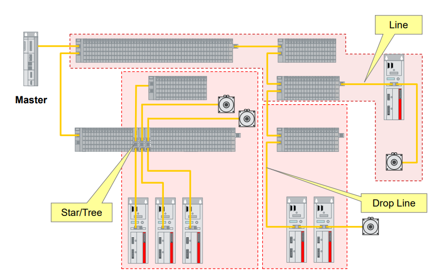
Available topologies in EtherCAT.
From the reliability point of view it is recommended to use a ring topology since it allows cable redundancy. For instance, if some cable between two slaves is broken or cut, communication with all the devices would be still possible. Note that in such a case, two Ethernet ports of the master device will be used.
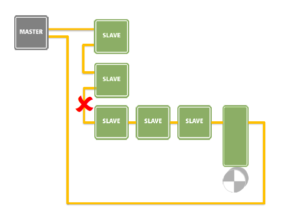
Cable redundancy in EtherCAT.
Cable selection
EtherCAT supports standard cables used for Ethernet connections. The following cable types are supported:
- 100 BASE-TX (copper cable up to 100 m between 2 nodes). In practice, it is typically a standard patch-cord.
- 100 BASE-FX (fiber optics).
Typically, EtherCAT devices are having RJ45 8p8c connector. However, some of the devices can have some alternative connectors (e.g. M12 or some proprietary connector. This should be noted when ordering cables for the EtherCAT bus.
Connection to the IPC
Standard IPC for Navitrol has two Ethernet ports (RJ45, 8p8c). Both of them can be used for EtherCAT communication.
Note that it is not recommended to connect EtherCAT bus through the switch (to bridge master and bus segment). It can cause issues and extra delays not only with EtherCAT communication, but also with Ethernet communication through this port. Therefore, it is recommended to connect EtherCAT devices directly to the IPC Ethernet port.
Addressing
In EtherCAT network, master automatically assign addresses. Therefore, there is no need for manual address configuration.
Navitrol (inside IPC) assign addresses the following rules:
- Slave address starts from 1.
- Slave address of a field device is done by physical position in the network
- Slave address is auto-incremented.
Note: all slaves on the bus should have unique slave addresses.
In practice, it means that all EtherCAT slaves are addressed starting from master using the auto-increment procedure in ongoing direction. So the closest device on the bus to master will have address 1, the next device will have address 2 and so on.
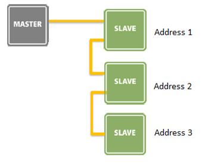
Simple addressing example.
Advanced addressing
Addressing should be straight-forward in case if devices have only two Ethernet ports. In some cases, it might be hard to define ongoing direction where address will be auto-incremented. For instance, if several different topologies are mixed together.
In such a case, it can be done in two ways:
-
Theoretical way.
Every EtherCAT devices have up to 4 communication ports. Data in every device is processed in the following way: it is received from the previous device to the input port (port 0). After that, data for the device itself is inserted and the address is incremented. Then, if exists, data goes to the port 3 and all the devices connected to port 3 will be addresses. The same happens after that with the port 1 if exists. Finally, data goes to the output port and devices connected to it will be addressed.
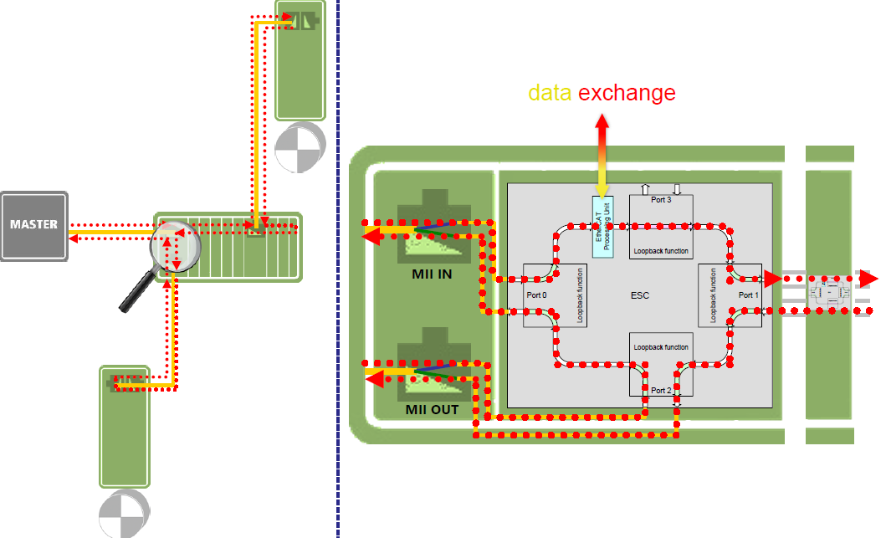
Advanced addressing example.
-
Practical way
This option will show position and the device type in the bus. The only limitation is that it will not distinguish two devices of the same type between each other.
2.1 Power the devices and set up basic EtherCAT communication parameters.
2.2 Connect EtherCAT bus to Navitrol and start Navitrol
2.3 Wait for 20 seconds and take log
2.4 Open the log and search "slave(s) found on the bus".
It will list all the device types on the bus and print addresses.
Set up
The following steps should be done in process of commissioning:
-
Physical connection
-
Setting up the device
-
Changing parameters
Physical connection
Wiring is the first step in establishing the EtherCAT bus. All devices are connected together with a standard Ethernet cables. Wiring is recommended to start from the IPC. Slave devices should be connected directly to those ports.
Additionally, make sure that devices on the bus are powered prior to the operation and wired according to the manufacturer's instructions.
Setting up the device
Some devices might require additional settings before start operating with Navitrol. For instance, motor controllers typically require some additional setting, such as PID controller tuning. For setting up such devices, refer to the device-specific document.
However, some of the devices are configured automatically by Navitrol when connected.
Basic setup of Navitrol
Parameter set depends on the project. Therefore, in this document, only generic parameters for establishing the communication will be described.
Depending on the topology, ethercat_mode parameter should be set. In case of ring topology when both ports of the IPC are utilized, master redundant mode should be selected. Additionally, ethercat_inte_redundant interface should be set in addition to ethercat_inte_primary. In other topologies (when only one port of the IPC is used), master single mode should be selected. Additionally, ethercat_inte_primary should be set.
The other parameters (e.g. slave addresses) can be found in the device-specific documents. For instance, kinematic type related parameters (specifying slave addresses of motor controllers) can be found in motor controller specific document (e.g. for Synapticon motor controller).
| Name | Type | Default | Information |
|---|---|---|---|
| ethercat_enabled | Int | 0 | Enables EtherCAT communication |
| ethercat_mode | Int | 0 | EtherCAT mode, 0 - Master single, 1 - Master redundant |
| ethercat_inte_primary | String | Name of primary Ethernet interface used for EtherCAT communication | |
| ethercat_inte_redundant | String | Name of redundant Ethernet interface used for EtherCAT communication |
# Example parameters for ring topology
I,ethercat_enabled, 1 #
I,ethercat_mode, 1 #
S,ethercat_inte_primary, eth0 #
S,ethercat_inte_redundant, eth1 #
# Example parameters for other topologies
I,ethercat_enabled, 1 #
I,ethercat_mode, 0 #
S,ethercat_inte_primary, eth0 #
Troubleshooting
Navitrol itself can detect most of the issues, such as:
- some EtherCAT related configuration issues (e.g. parameter issue)
- some device missing from the bus
- a device is located on the wrong place on the bus.
It is advised in all the cases to check not only active errors, but also terminal. Typically, some important additional information is printed to the terminal in case of error.
Most common mistakes
EtherCAT start up fails
Typically, it can be explained by one of the following reasons:
- Device is defined in parameter file but not connected to the bus
- Device address defined in parameters is not correct. If some wrong device type is located in a position specified in the parameter file, it will also prevent EtherCAT from starting up
- Device address is duplicated in the parameters.
In all the above-mentioned cases, it is recommended to open Linux terminal and check Navitrol prints from there. Bellow, there are the instructions on how to detect the problem and recover from it.
Device not connected to the bus
Active errors: ERROR_ETHERCAT_NO_COMMS, ERROR_ETHERCAT_HIGH_DT and ERROR_ETHERCAT_DEVICE_NOT_FOUND
Terminal error logging example:
EC: 1 Ethercat slave(s) not found. Registered slaves 2, devices on the bus 1. Not enough devices on the bus
EC: Slave 2 name SOMANET registered but not found on the bus
How to recover: Check if missing device is powered and connected to the bus
Incorrect device address
Active errors: ERROR_ETHERCAT_NO_COMMS, ERROR_ETHERCAT_HIGH_DT and ERROR_ETHERCAT_DEVICE_NOT_FOUND
Terminal error logging example:
EC: 1 Ethercat slave(s) not found. Registered slaves 2, devices on the bus 2.
EC: Slave 3 name SOMANET registered but not found on the bus
How to recover: Check parameters related to the EtherCAT address for mentioned device. Calculate its position on the bus (see "Addressing" chapter) and correct the parameter or position.
Wrong device at some address
Active errors: ERROR_ETHERCAT_NO_COMMS, ERROR_ETHERCAT_HIGH_DT and ERROR_ETHERCAT_DEVICE_NOT_FOUND
Terminal error logging example:
EC: CheckSlaves - slave 1 name mismatch, on the bus EK1100, registered SOMANET
EC: 1 Ethercat slave(s) not found. Registered slaves 2, devices on the bus 10.
EC: Slave 1 name SOMANET registered but not found on the bus
How to recover: Check parameters related to the EtherCAT address for mentioned devices. Calculate it's position on the bus (see "Addressing" chapter) and correct the parameter or position.
Slave address duplication
Active errors: ERROR_ETHERCAT_NO_COMMS, ERROR_ETHERCAT_HIGH_DT and ERROR_ETHERCAT_CONFIG
Terminal error logging example:
EC: Ethercat_RegisterSlaveInfo - attempt to double register slave address 1. Check parameters
How to recover: Check parameters related to the EtherCAT address. Several devices have the same address on the bus. Correct parameters.
Errors and warnings
Navitrol communication related errors are listed below, with additional troubleshooting information.
Note that ERROR_ETHERCAT_HIGH_DT and ERROR_ETHERCAT_NO_COMMS might be a cause of ERROR_ETHERCAT_CONFIG or ERROR_ETHERCAT_DEVICE_NOT_FOUND.
840 ERROR_ETHERCAT_NO_COMMS
Description: Navitrol has no connection to at least one EtherCAT slave (or no valid data has been received) for 100 ms.
Error level: Error
Error reason: Navitrol has not been able to initialize/configure EtherCAT properly, or slaves at run time are not working as expected.
How to recover:
-
Check that EtherCAT parameters (ethercat_mode, ethercat_inte_primary, ethercat_inte_redundant) are defined correctly in params.txt
-
Check that EtherCAT bus is physically connected to defined interface(s)
-
Check that all EtherCAT hardware and slaves are properly connected and powered
843 ERROR_ETHERCAT_CONFIG
Description: Error during Ethercat slave configuration.
Error level: Error
Error reason: Ethercat slave configuration failed. Ethercat HW and slaves might not be properly connected or powered.
How to recover: Check the log for more details. Contact Navitec support.
844 ERROR_ETHERCAT_HIGH_DT
Description: Update interval from vehicle interface to EtherCAT is too high (over control_interval_us * control_interval_error_ratio)
Error level: Error
Error reason: Vehicle interface is not responding to EtherCAT. In most cases, this error is caused by some other Ethercat error or issue with initialization of AGV. Might be caused by CPU overload of the IPC.
How to recover: Check the log or terminal for more details. Contact Navitec support.
847 ERROR_ETHERCAT_DEVICE_NOT_FOUND
Description: At least one EtherCAT slave device is not found on the bus
Error level: Error
Error reason: Some of the devices expected by Navitrol are missing from the bus.
How to recover: Check the log or terminal for more details. Check that all devices are powered and connected to the bus. Check Navitrol parameters. Contact Navitec support.
Advanced troubleshooting
Navitrol always logs some amount of events related to EtherCAT communication and EtherCAT related issues. Additional information logging might be enabled by the parameters mentioned below. These settings increase the amount of logged data and should not be used without a reason. Increased logging level might be needed only in cases when some issues with communication are present.
EtherCAT advanced parameters
| Name | Type | Default | Information |
|---|---|---|---|
| log_ethercat | Int | 0 | Log EtherCAT communication details, 0 - min level ... 3 - max amount of details |
All the EtherCAT related logging can be found by searching "EC:" in the Navitrol text log.
The sequence for establishing communication with the EtherCAT devices is described below:
- Registration of the devices Navitrol reads parameter file and checks machine type to determine EtherCAT devices expected to be on the bus (device name, address, configurations etc.).
Logging example:
EC: Ethercat_RegisterSlave - slave 2 successfully registered, nbrODO 33, parseFuncExist 1, buildFuncExist 1
EC: Ethercat_RegisterSlave - slave 1 successfully registered, nbrODO 33, parseFuncExist 1, buildFuncExist 1
EC: Object registration finished
- Initialization of the interface (opening socket)
Navitrol reads basic EtherCAT parameters and initializes the communication on specified interfaces.
Logging example:
EC: ec_init on eth0 eth1 succeeded
- Slave checks:
Navitrol reads information from the bus and checks if bus configuration matches to the list of registered devices.
At least, the following checks are performed:
- What number of devices is on the bus?
- Is the number of registered devices corresponds to the number of devices on the bus?
- Is registered device types are on correct positions?
Note that Navitrol is able to perform checks only for device types. It cannot distinguish two devices of the same type switched together on the bus. For instance, from the bus configuration, it cannot indicate that left and right motor controllers in diff drives are swapped together. It is only possible to detect that devices of the same type swapped together during the further steps in commissioning of the AGV (e.g. by test-driving)
Logging example:
EC: 2 slave(s) found on the bus
EC: On the bus - slave 1, name SOMANET, Vendor:product 22d2h:201h
EC: On the bus - slave 2, name SOMANET, Vendor:product 22d2h:201h
EC: Registered - slave 1, name SOMANET
EC: Registered - slave 2, name SOMANET
EC: CheckSlaves - slave 1 found, name SOMANET
EC: CheckSlaves - slave 2 found, name SOMANET
EC: All registered Ethercat slaves found successfully
- Configuring slave devices
Navitrol configures found devices (if needed) by sending SDOs to them.
Logging example:
EC: PRE_OP state reached for all slaves.
EC: SDO wr OK. Slave 2 idx 0x1016, subIdx 0x1, size 4, data 8C 00 00 00, dataOk 1, wkc 1
.....
EC: Slave configuration success
- Putting devices to operational state
Navitrol switches all the devices to the operational state prior to communication
Logging example:
EC: Request operational state for all slaves
OPERATIONAL state reached for all slaves
- Start communication
After successful start-up, Navitrol starts communication. Short after that, ERROR_ETHERCAT_NO_COMMS and ERROR_ETHERCAT_HIGH_DT should be reset.
SIMOVE communication interface
Updated 13.06.2024
Overview
Introduction
SIMOVE is Siemens modular software platform for mobile robots. Navitrol is the navigation module in the system and communicates to onboard PLC/device via the interface specified by SIMOVE. The interface is kinematic free, thus the PLC/device onboard controls the motor controllers of the AGV. This document describes how to setup Navitrol. Contact Siemens about the details of the interface.
Limitations
The communication interface specifies only drive control between Navitrol and the PLC/device onboard the AGV. Actuator control and status of the AGV shall be communicated using some other interface, for example Ethernet supervisor communication interface.
Setup
Please note that even though the interface is kinematic free, the kinematics of the AGV affect how the AGV can be controlled. For example differential and steer drive AGVs are limited to be using only longitudinal component of the velocity vector. The communication parameters should be set according to the SIMOVE system setup.
Kinematic parameters
| Name | Type | Default value | Description |
|---|---|---|---|
| kinematic_free_limited_driving | Int | 0 | AGV with kinematic free interface has driving limitations: 0 = None, 1 = Speed vector restricted to longitudinal only (nonholonomic). Software restart needed after change. |
Communication parameters
| Name | Type | Default value | Description |
|---|---|---|---|
| simove_navigation_port_in | Int | 4001 | Navigation SW inbound data TCP/IP (UDP) port for SIMOVE navigation interface |
| simove_navigation_port_out | Int | 12345 | Navigation SW outbound data TCP/IP (UDP) port for SIMOVE navigation interface |
| simove_navigation_ip | String | 0.0.0.0 | IP address for SIMOVE navigation interface of the PLC / device onboard the AGV |
| simove_navigation_endianess | Int | 1 | Endianess for SIMOVE navigation interface: 0 = little endian, 1 = big endian |
| simove_velocity_xy_norm | Float | 160.0 | Normalizing factor for velocity vector's Vx and Vy in SIMOVE interface |
| simove_velocity_angular_norm | Float | 0.017453 | Normalizing factor for angular velocity in SIMOVE interface (default PI/180) |
Troubleshooting
Errors and warnings
858 - ERROR_SIMOVE_NAV_NO_COMMS
There is no communication to the navigation interface or it is too long since a valid received message. Verify that the communication parameters are correct and that the data sent to Navitrol is valid (header information, message length)
Advanced troubleshooting
Logging in Navitrol's text log (log.txt) has a prefix "SIMOVE:".
Motor control interfaces and setup
Updated 16.05.2024
- Motor controller common
- Schwarzmueller setup
- Curtis
- Engel
- Nanotec
- Oriental
- Synapticon
- Roboteq Open loop
- Roboteq Closed loop
- MiControl
- Kinco
Motor controllers common
Updated 11.07.2024
Overview
This document describes usage and set up of motor controllers in Navitrol. The document should be used for setting up the motor controller in Navitrol.
In this document, only common parameter and troubleshooting steps are explained.
The first setup steps are explained in Motor controller specific documentation that is available for every supported motor controller (for instance, instruction for Synapticon motor controller).
Introduction
A motor controller is a device that can coordinate in a predetermined manner the performance of an electric motor. In Navitrol, a motor controller can be used to control:
- driving motor
- steering motor
- actuator motor
The required number and type of motors depends on the kinematic type of the AGV and installed actuators.
In case of diff kinematics, Navitrol expects to have two driving motors. Typically, those motors should be identical and installed symmetrically.
In case of steer kinematics, Navitrol expects to have one driving motor and one steering motor.
In case of mecanum kinematics, Navitrol expects to have four driving motors. Typically, those motors should be identical and installed symmetrically.
In case of omni kinematics, Navitrol expects to have typically at least two driving motors and at least two steering motors. The number of steering wheels is set in Navitrol parameters. It is supported to have some wheels that would perform only steering without driving.
Please note that steering motor typically should have also an absolute encoder that connects to the same bus as the motor controller.
The required number of motor controllers depends on amount of motors and the number of channels in the selected motor controllers.
Typically, motor controllers are single-channel. That means that only one motor can be connected to each motor controller. Most of the supported motor controllers are single-channel, for instance, Schwarzmueller, Engel, MiControl, Oriental, Synapticon. Check List of supported devices to see all the supported motor controllers.
Some motor controllers have two channels, which makes it possible to control two motors with one motor controller. For instance, Curtis and Roboteq have two channeled models.
Few motor controllers, such as some Curtins models, have three channels. Those motor controllers can be used, for instance, as all-in-one solution for automating steer or diff AGV with actuator using just one motor controller.
Requirements
For setting up the motor controller in Navitrol, it is required that:
- Motor controller - motor connection established
- All electrical connections are done
- Motor parameters have been set to the motor controllers
- See Motor controller specific documentation for connection setup instructions (for instance, instruction for Synapticon motor controller)
- Interface bus (CAN or EtherCAT) has been wired and connected to the motor controller
- Basic interface parameters (for CAN or EtherCAT) are set correctly. Instructions for wiring and basic parameters are described in CAN communication or Ethercat communication document.
Limitations
Functionality is limited to motor controllers that are controlled by Navitrol. Only specific motor controller and AGV kinematic combinations are supported. See, List of supported devices.
Navitrol motor control is not supported for positioning only systems
Setup
The first setup steps are explained in Motor controller specific documentation. In this document, only common parameters are explained.
Quick start
For setting up the motor controller to work with Navitrol, communication parameters (motor controller addresses) should be used. Those parameters differ for EtherCAT and CAN motor controllers.
CAN Node Id parameters for motor controllers
| Name | Type | Default value | Description |
|---|---|---|---|
| Differential AGV | |||
| can_diff_drive_left_nodeid | Int | 30 | Node id for diff drive left motor controller |
| can_diff_drive_right_nodeid | Int | 31 | Node id for diff drive right motor controller |
| Steer AGV | |||
| can_steer_drive_steering_nodeid | Int | 30 | Node id for steer drive steering controller |
| can_steer_drive_driving_nodeid | Int | 31 | Node id for diff drive driving controller |
| Omni AGV | |||
| can_omni_steer_ctrl_nodeid[] | Int | 0 | Node id for omni steering controller (array index - wheel index). 0 - disabled |
| can_omni_drive_ctrl_nodeid[] | Int | 0 | Node id for omni driving controller (array index - wheel number). 0 - disabled |
| Mecanum AGV | |||
| mot_ctrl_mecanum_nodeid[] | Int | 0 | CANopen NodeId. 0 - not defined, Indexes are 0 = FF (Forward Left), 1 = FR (Forward Right), 2 = RL (Rear Left), 3 = RR (Rear Right) |
| Differential sub-unit | |||
| can_diffunit_left_nodeid[] | Int | 0 | CANOpen Node ID for diffunit left motor controllers. Array index: omni = wheel index, steer = 0. |
| can_diffunit_right_nodeid[] | Int | 0 | CANOpen Node ID for diffunit right motor controllers. Array index: omni = wheel index, steer = 0. |
Note: this table is not applicable for Roboteq motor controller. Check Roboteq Motor Controller Configuration document.
EtherCAT address parameters for motor controllers
| Name | Type | Default value | Description |
|---|---|---|---|
| Differential AGV | |||
| ethercat_diff_drive_left_ctrl_addr | Int | 1 | Physical EtherCAT address of diff drive left motor controller |
| ethercat_diff_drive_right_ctrl_addr | Int | 2 | Physical EtherCAT address of diff drive right motor controller |
| Omni AGV | |||
| ethercat_omni_steer_ctrl_addr[] | Int | 0 | Physical EtherCAT address for omni steering controller (array index - wheel index). 0 = disabled |
| ethercat_omni_drive_ctrl_addr[] | Int | 0 | Physical EtherCAT address for omni driving controller (array index - wheel index). 0 = disabled |
| Mecanum AGV | |||
| ethercat_mot_ctrl_mecanum_ctrl_addr[] | Int | 0 | Physical EtherCAT address for mecanum motor controllers. 0 - not defined. Indexes are 0 = FL (Forward Left), 1 = FR (Forward Right), 2 = RL (Rear Left), 3 = RR (Rear Right) |
Motor controller automatic disabling
In order to reduce energy consumption, Navitrol can disable drives when AGV is not moving. This involves currently all motor controllers directly controlled by Navitrol. By default, this happens 1 second after AGV has stopped moving and brakes have been activated. This feature can be configured by parameter mot_ctrl_disable_delay_ms, see table below for details.
| Name | Type | Default value | Description |
|---|---|---|---|
| mot_ctrl_disable_delay_ms | Int | 1000 | Motor controller disabling delay [ms] after activating brakes: -1 = never disable, 0 = no delay |
NOTE: This feature is supported currently with the following motor controllers: Schwarzmueller, Curtis, Oriental, Kinco, MiControl, Synapticon and Roboteq (closed loop).
How to use
After successful setup, it is possible to drive and steer the AGV using the motor controllers (for instance, in manual mode using keyboard control).
After successful, AGV should be calibrated according to Initial Calibration Guide.
Motor controller test form
For most of the motor controllers, it is possible to manually set the outputs to the motor controllers.
This feature is useful during calibration, for instance, to tune the steering PID controller or PID for driving controllers. The benefit is that step response can be sent from this form.
This form is available for all the motor controllers except the following:
- Roboteq
- Nanotec
- Syntron
The form can be opened from the "Navitrol" menu located in the top bar of Navitrol Monitor. The form is shown in figure below.
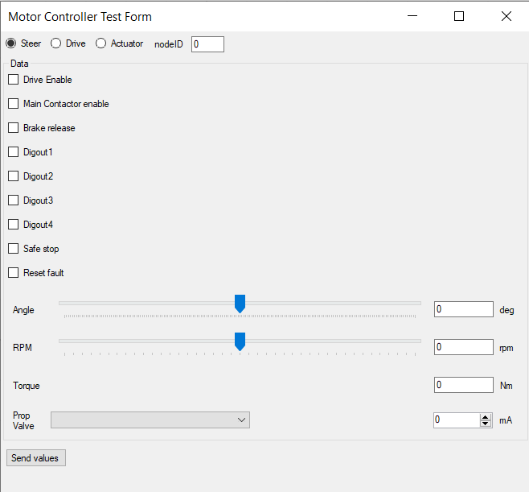
Motor controller test form
A command to be sent to a motor controller is prepared by following steps:
- Select motor controller type - steer/drive/actuator
- Type the motor controller's Node ID.
Note: There is a special feature that is available for most motor controllers. When 255 is entered in Node ID field, all motor controllers of the selected type will receive the command.
Note: Command is sent to the motor controller only when the correct combination of motor controller type and Node ID is selected. - Select output commands. Note that for every motor controller, different output commands are available and thus the form might look different.
- Angle - available only for steering motor.
- RPM - available for every motor. Note that when RPM is applied, the motor will start moving.
- For some motor controllers, it is also possible to send proportional output and torque.
The prepared command is sent when "Send values" button is pressed. It can be stopped either with pressing "Stop sending" or closing the form.
Motor controller test form - Differential unit
When calibrating kinematics with differential units (Steer or Omni drive with differential unit), the user needs to verify that each differential unit is configured correctly.
The Differential unit's can be each separately tested that the unit turns to correct direction and that the speed inversions of the unit's are correct. The selected unit is visualized with a blue circle and the node ID:s of the selected unit are shown as well. After the user has selected a differential unit from the drop down menu, the desired angle or speed reference can be given the same way as for a single motor controller.
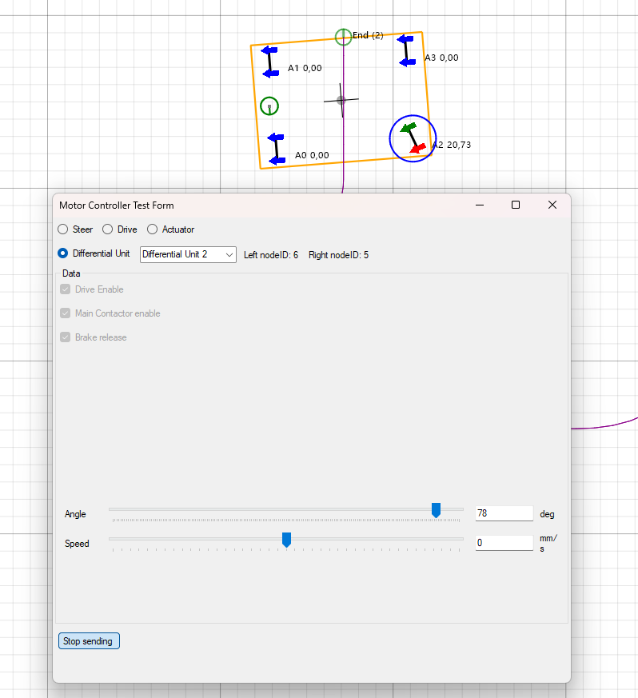
Controlling individual differential units through Motor controller test form
Troubleshooting
Errors and warnings
402 ERROR_MOTOR_CONTROL_FAULT
Description: Motor controller indicates fault
Error reason: Error comes from the motor controller.
How to recover: Check the error from the motor controller (for instance, using Linux terminal or from Navitrol log). Error code and error description should be printed there.
809 ERROR_AGV_CONTROLLER
Description: AGV controller alarm
Error reason: AGV controller reports error to Navitrol
How to recover: Check the error from the motor controller (for instance, using Linux terminal or from Navitrol log). Error code and error description should be printed there. Navitrol tries to reset error automatically when the error is gone.
Advanced troubleshooting
Following troubleshooting instructions are suitable for Engel, Oriental, MiControl, Curtis, Synapticon motor controllers.
Advanced troubleshooting parameter:
| Name | Type | Default value | Description |
|---|---|---|---|
| log_motor_controllers | Int | 0 | Log motor controller details. 2 - Log all details |
In case if there are no CAN/EtherCAT errors present, but machine is not driving, try following: Check if motor controller error is set (ERROR_MOTOR_CONTROL_FAULT and ERROR_AGV_CONTROLLER). In case if error is set, check from the Linux terminal or log file which error is set and on which controller. The keyword for search is: "FindAndLogErrors".
Other helpful log lines
| Point of interest | Keyword | Additional information |
|---|---|---|
| Navitrol inputs | ||
| State of the motor controller | LogStatusWord | Visible when CAN communication is working |
| Speed + encoder data from each wheel | LogDataInForKinematics | Available only when log_motor_controller > 1 |
| Fault status on each motor controller | HandleFaults | |
| Raw inputs | ParseRx | |
| Navitrol Outputs: | ||
| Target speed for each controller | LogDataOutForKinematics | Available only when log_motor_controller > 1 |
| Processed state and outputs | LogControlData | Note that state of the AGV can be changed by Navitrol, so input state and output state are different. It can mean that controller has fault or safe outputs or estop is active |
| Raw outputs | BuildTx |
Schwarzmueller Setup Instructions
Updated 26.01.2024
Basic Setup Instructions
-
Download service tool from powersolutions.danfoss.com and install the tool and drivers.
-
Connect the CG150 CAN-adapter to your computer and to the motor controller. Keep only one motor controller connected to the CAN at the same time during configuration.
-
Start the PLUS+1 service tool.
-
From the popup window choose the correct CAN-adapter and right channel.
-
See document Start up User Manual PLUS+1 Inverter Family V2.0 chapter 12 for more information.
-
Download the software File->File Download... e.g. 20014_STANDARD_CANOPEN_V100.lhx (see chapter 12.8.2 in manual).
- "The selected file uses a different OS" warning can be ignored
-
Load the Service application File->Scan for Service Application File... e.g. 20014_Standard_CANopen_V100_01.p1d
- "This Service Application file is not designed for the connected system" warning can be ignored
-
Service application let's user to modify the parameters of the device (see chapter 12.8.3 in manual).
-
Acquire parameter file (xml) for the motor from Navitec
-
Node 31 is for drive or right motor
-
Node 30 is for steer or left motor
-
-
The following are instructions for Navitec to generate parameter files for motors:
-
Acquire csv file for motor specific parameters (provided by Schwarzmueller)
-
Open SchwarzmuellerParamGen
-
Drag & drop the csv file into the program
-
Select controller from top left drop down menu
-
Enter ECU id of the controller as shown in System Navigator on the left, e.g. 255 as in:
-

-
Enter PI controller parameters (Kp, Ki, PartLoadReduc) as instructed by Schwarzmueller
-
Enter Acel & Dcel limits, values are rpm/s, usually thousands and may need to be adjusted afterwards
-
Enter maximum rpm as calculated from maximum wheel velocity & gear ratio
-
Enter encoder current range parameters (EE_MD_EncCurMax & Min)
-
If the encoders do not draw their power directly from the Schwarzmueller (5V), set the minimum current to 0,
-
Otherwise set the range according to encoder specifications
-
-
Save
-
In PLUS+1, select "All Parameters" (bottom of the left tree view)
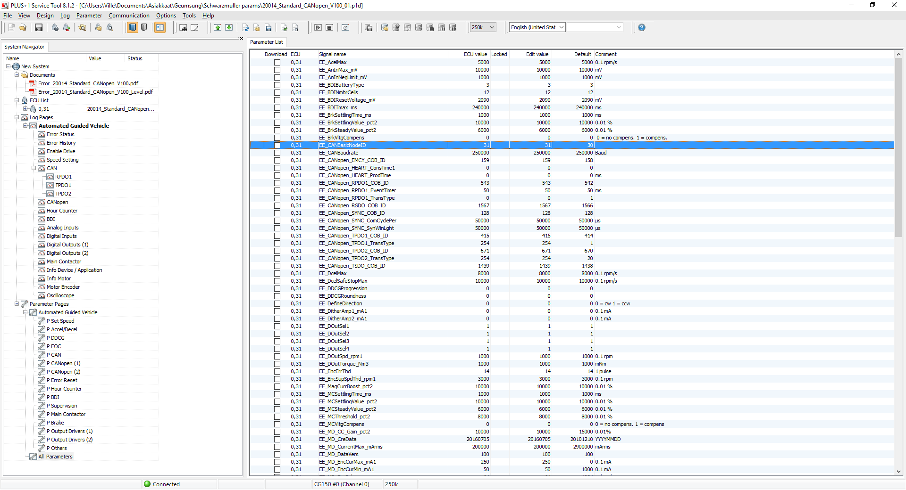
Figure 1: Select "All Parameters"
- Import parameters (xml) for motor controller (Figure 1).
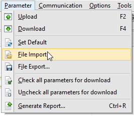
Figure 2: Parameter import.
-
If loading parameters fails because of wrong ECU id, rename all "0,31" values ("0,30" for steer/left motor) in the parameter xml to the ECU id shown in PLUS+1 in the ECU column in the Parameter List and import the parameters file again
-
Select Parameter -> Check all parameters for download
-
Download parameters to Device Parameter->Download (from laptop to Motor Controller).
-
Restart device (full power cycle) to enable parameter changes (do not change view in PLUS+1).
-
Repeat for the other motor controller by disconnecting the newly configured controller and connecting the other controller.
-
It is also possible to have both controllers connected at the same time and switch the active controller but by having only one connected at the time is safer
-
Each page in the "System Navigator" view can have different controller selected so use extra caution when switching between controllers
-
Controller of each page is changed by right clicking page header -> Exchange existing ECU -> click yes to switch
-
Hovering over log variables will show the ECU id that the variable is read from, again 0,31 for drive/right motor and 0,30 for steer/left motor
-
-
Wiring Instructions
-
Connect pin 31(C1p31) to power + to enable CAN communication (Figure 3).
-
Connect pin 30 (C1p30) to power + to disable SafeStop (when SafeStop is ON connect to ground).
-
See chapter 12.6.1.1 for information about main contractor safety.
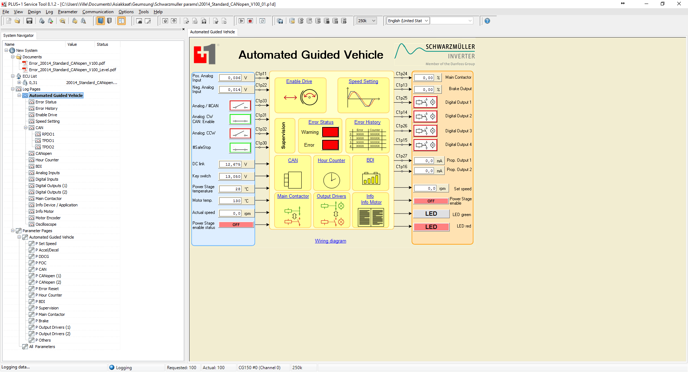
Figure 3: Diagnostics window.
- Temperature sensor has to be connected to pins 34/35.
Basic diagnostics with PLUS+1
- To view feedback from Schwarzmueller in real time, select any log page in "System Navigator" and press the green play button on the toolbar to start real time display
Safety Circuit
-
Click "Automated Guided Vehicle" in "System Navigator" to see an overview of the state of the Schwarzmueller
-
When Safety Circuit is broken, SafeStop should be open (pin 30 connected to ground) and show in red in the overview
-
When Safety Circuit is ok, SafeStop should be closed (pin 30 connected to +power) and show in green in the overview
-
CAN enable should also show in green (pin 31 connected to +power)
Communication with Navitrol
-
To be able to clear Schwarzmueller errors, Navitrol needs to be communicating with the motor controller.
-
To check in realtime what's happening in Navitrol CAN interface, connect to Navitrol PC with PuTTY (username: root, pw: navitrol) and type "./Navitrol dumps 0 can_inte". To stop echoing the log, press Ctrl+C
-
If Navitrol reports CAN write errors:
-
Check wires are connected, polarity is correct and both ends have 120 ohm resistors
-
Connect directly to Navitrol PC with CanKing with nothing else connected to the bus and check that data is flowing
-
Check baud rate is correct (250000) and node IDs are correct via PLUS+1 tool, if not, the motor controller parameters are incorrect update parameters and be sure to follow the instructions in Chapter 1 precisely
-
-
If Navitrol reports "CAN_ Obj xxx NotRxed" errors, motor controller parameters are incorrect update parameters and be sure to follow the instructions in Chapter 1 precisely
-
21E, 19E and 29E are from node 30, it is the steer / left motor
-
21F, 19F and 29F are from node 31, it is the drive / left motor
-
-
If Navitrol reports "safeStopActive" error / ESTOP, it means that the safety circuit connected to Schwarzmueller is broken (release estop / check wiring if already released).
-
If Navitrol reports "Schwarzmueller fault", check with PLUS+1 the fault code and refer to Error_20014_Standard_CANopen_V100.pdf document to see what the fault code means
Schwarzmueller Parameter Setup Instructions
Updated 26.01.2024
Parameter Setup Instructions
Initialization
-
Download service tool from powersolutions.danfoss.com and install the tool and drivers.
-
Connect the CAN-adapter (e.g. CG150 or Kvaser Leaf Light) to your computer and to the motor controller. Keep only one motor controller connected to the CAN at the same time during configuration.
-
Start the PLUS+1 service tool.
-
From the popup window choose the correct CAN-adapter and double-click on the right channel.
- See document Start up User Manual PLUS+1 Inverter Family V2.0 chapter 12 for more information.
Setup
-
Download the software
-
File->File Download...
-
Open the *.lhx file e.g. 20014_STANDARD_CANOPEN_V100.lhx.
-
"The selected file uses a different OS" warning can be ignored
-
-
The next window that opens lists all connected devices. At a CAN bus there could be several ones, this is the reason for this window. Choose the right device, with the right Node-ID. Only one device can be selected from the list. If there is only one device connected, it is automatically selected.
-
Click "Next >"
-
After clicking on "Next >" you need to confirm the change of the parameter structure. This is required when a new software with a different parameter structure is selected for the download and that will overwrite the existing structure in the inverter.
-
Click on "Confirm..."

-
A window opens now for the confirmation of the parameter setting
-
Click "OK"
-
The former window will appear again
-
Now click "Start download" and the download of the Software will be executed.
- When then download has finished, the successful execution will be shown, continue with "Close"
-
Load the Service application File->Scan for Service Application File... e.g. 20014_Standard_CANopen_V100_01.p1d
- "This Service Application file is not designed for the connected system" warning can be ignored
-
Service application let's user to modify the parameters of the device (see chapter 12.8.3 in manual).
-
Acquire parameter file (xml) for the motor from Navitec (or use a file from a controller already in use)
-
Node 31 is for drive or right motor
-
Node 30 is for steer or left motor
-
-
Before importing the parameters, check that the CAN Node-ID in PLUS+1 matches the correct motor controller Node-ID (e.g. 30 for steer)
- If not, click "Edit Parameters". Otherwise jump to section 1.2.2.
Change CAN-ID
- Write the correct Node-ID and click Parameter -> Download

-
Restart device (full power cycle) to enable parameter changes (do not change view in PLUS+1).
-
The changed Node-ID should now appear in the System Navigator
-
Click the line with the right Node-ID
-
Load again the Service application File->Scan for Service Application File... e.g. 20014_Standard_CANopen_V100_01.p1d
-
If the pop-up window below appears, browse and open the file.
- Press "OK" if the program asks for a replacement ECU.
Load parameters
- In PLUS+1, select "All Parameters" (bottom of the left tree view)
- Import parameters (xml) for motor controller
-
If loading parameters fails because of wrong ECU id, rename all "0,31" values ("0,30" for steer/left motor) in the parameter xml to the ECU id shown in PLUS+1 in the ECU column in the Parameter List and import the parameters file again
-
Select Parameter -> Check all parameters for download
-
Download parameters to Device Parameter->Download (from laptop to Motor Controller).
-
Restart device (full power cycle) to enable parameter changes (do not change view in PLUS+1).
-
Repeat for the other motor controller by disconnecting the newly configured controller and connecting the other controller.
-
It is also possible to have both controllers connected at the same time and switch the active controller but by having only one connected at the time is safer
-
Each page in the "System Navigator" view can have different controller selected so use extra caution when switching between controllers
-
Controller of each page is changed by right clicking page header -> Exchange existing ECU -> click yes to switch
-
Hovering over log variables will show the ECU id that the variable is read from, again 0,31 for drive/right motor and 0,30 for steer/left motor
-
-
Troubleshooting Schwarzmueller
Updated 26.06.2024
Troubleshooting Topics
-
The motor rotates in the wrong direction
-
Check that Motor U/V/W are connected correctly to U/V/W of the inverter
-
Check the speed inversing parameters for motor controllers. Parameter name with different kinematics is slightly different, e.g. for omni drive it's mot_ctrl_omni_speed_inv_output
-
-
The motor runs at low speed but temperature starts to rise quickly
- Endoder channel A/B are probably wired crossed
-
Navitrol has error ERROR_CAN_ALL_NODES_NOT_OPER
-
Navitrol hasn't received messages from all the nodes it expects.
-
In Putty type ./Navitrol dumpf and open the log.txt from
/navitec/logsfolder. Search "CAN: RX_SUM" and check what is/are the missing messages -
In case no messages have been read, check CAN wiring and that there's end resistors. Check that you have the right CAN parameters:
- can_nmt_master # Enables Navigation SW to work as NMT master on primary CAN. 0 = disable, 1 = enable
- can_sync # Navitrol role for CANOpen SYNC messages: 0 = None, 1 = SYNC producer, 2 = SYNC consumer
- can_bitrate_k
-
-
Check that the nodeID of the device matches the parameter in Navitrol.
-
Navitrol has error ERROR_CAN_RX_TIMEOUT
-
Check that Schwarzmueller parameter EE_CANopen_TPDO2_TransType is set to 1 in all inverters (only needed in earlier Navitrols than 6.24.00).
-
In Putty type ./Navitrol dumpf and open the log.txt from /navitec/logs folder. Search "CAN: RX_SUM" and check what message is/are not coming in time.
-
-
Navitrol has warning WARNING_ESTOP_ACTIVE
- Safety circuit is broken. Release estop / check Schwarzmueller wiring if already released
-
Navitrol has error ERROR_DRIVE_MOTOR_CONTROL_FAULT
-
Check from PLUS+1 Service Tool error code from Error Status page and refer to Error_20014_Standard_CANopen_V101.pdf document which error is active.
-
Typical errors are:
-
5401 Error_V_DC_Link; Undervoltage (level 1)
-
5002 Error CAN timeout, RPDO1
-
4101 Error motor; Config error
-
-
-
This is usually caused by having the wrong temperature sensor type selected in the Schwarzmueller parameters. If the error is active and the temperature is incorrect, check the EE_MD_TempSnsrType: 1 = Switch (NC) 2 = Switch (NO) 3 = Analog Sensor (SnsrTab)
-
5201 Error motor; Overtemperature
-
Navitrol has error ERROR_DRIVE_MOTOR_CONTROL_FAULT, fault 5401 Undervoltage on Schwarzmueller's side, after a few seconds every time the main contactor is connected
-
Main contactor steady value is too low and when the settling time (defined by parameter EE_MCSettlingTime_ms) is reached, the current is drawn from the circuit instead.
-
Raise the steady value defined with the Schwarzmueller parameter EE_MCSteadyValue_pct2 (* 0.01%)
-
-
The brake does not release or it is switching on unwanted
-
Check that the Brake pin 13 is connected correctly.
-
If wired correctly and break output is shown on ServiceTool, the settling value of the brake output, defined with the Schwarzmueller parameter EE_BrkSettlingValue_pct2 (*0.01%), is too low.
-
If brake is switching on unintentionally when driving, the steady output, defined with the Schwarzmueller parameter EE_BrkSteadyValue_pct2 of the brake is too low.
-
-
Speed of the motor (RPM) doesn't reach our requested speed.
- Check that Schwarmueller speed parameters are not limiting the speed EE_SpdMax_rpm1 -- Speed limit (e.g. 30000 -> 3000 rpm) EE_MD_SpeedMax_rpm1 -- Maximum motor speed
-
Other common problem sources
- Make sure from PLUS+1 Service Tool that Analog CW / CAN Enable (pin31) shows green in the Automated Guided Vehicle page i.e. CAN is enabled
Curtis CAN motor controller
Updated 11.07.2024
Glossary
| Term | Description |
|---|---|
| SDO | Service Data Object |
| PDO | Process Data Object |
| CIT | Curtis Integrated Toolkit |
| PCAN-USB | Peak PCAN-USB adapter. Used to connect between CIT and motor controller |
Introduction
Curtis motor controller is one of the motor controllers supported by Navitrol. Curtis offers wide range of single and multi-channel motor controllers that can be used for different purposes (steering, driving, actuator) in the AGV.
This documentation provides instructions for configuring the motor controllers to be used with Navitrol. Operation of the device is possible via CANopen fieldbus.
Following motor controllers are supported by Navitec Systems:
-
F2-T. This motor controller has 3 channels
- 2 AC motor channels (can be used for driving/steering) and 1 DC pump (used for hydraulic actuator)
-
F2-D. This motor controller has 2 channels
- 2 AC motor connections (can be used for driving/steering)
-
Fx-A series. This motor controller has 1 channel. Supported models are F2-A, F4-A, F6-A, F10-A
- 1 AC motor connection (can be used for driving/steering)
The following motor types are supported.
-
AC Induction Motor (ACIM) This motor type by default uses the quadrature Encoder and supports auto-characterization. Contact Curtis if an ACIM application will use a Sin/Cos sensor (encoder)
-
Permanent magnet AC Motor (PMAC) PMAC motors by default use the Sin/Cos sensor type Encoder. Contact Curtis if a PMAC motor is chosen for the AGV
There might be some errors during commissioning procedure that are motor controller specific, so Navitrol support might be not able to solve them without Curtis support help. Contact information of Curtis support can be provided by Navitec Systems.
Currently, Curtis motor controllers can be supported for several kinematics:
-
Diff drive
-
Steer drive
-
Steer drive with a differential sub unit
-
Omni
Requirements
- The parameterization and configuration of the motor controllers takes place with the Curtis Integrated Toolkit (CIT) software. The software needs a license and it can be purchased from Curtis.
- Adapter to connect the motor controller to the CIT software. Curtis recommends PEAK System PCAN adapter
- A Project file (.cprj) for the motor controller, provided by Navitec Systems
- Different motor controllers have different project files. For example F2-D and F2-A models will use different project file
- Servo mode tuning template file (.ctrc) is needed and is proviced by Navitec Systems
Limitations
- Autocharacterization can be done only for AC induction motors (ACIM)
- PMAC motors characterization is done by Curtis on their dynomometer lab and motor might need to be shipped to Curtis. Please contact Curtis if planning to use PMAC motor
- Motor controller might not support all functions and kinematics. List of supported devices document should be checked to determine whether the combination of the function and kinematics is supported or not.
- Currently, Navitrol is not able to control Curtis motor controllers with other motor controllers in the same AGV
Dependencies
- Motor controllers common
- CAN Communication
- Initial Calibration Guide
- Curtis Motor controller listing
Electrical connections
Electrical connections can be divided into several groups:
-
High-current connections -- screw connections.
a. Battery connectors -- B+ and B- Important note: The battery should be connected using the main contactor. This is because the motor controller has a quite large capacitor installed between connectors. If the battery is directly connected, it may have a large current spike.
b. Motor terminals (U, V, W). Should be connected directly to the motor terminals
c. Pump connection Some of the motor controllers might have DC pump for actuator control. Then pump should be connected between "Pump" and "B+".
-
Low-current connections. All of the low power connections are through a single AMPSEAL connector. The following should be connected:
a. Key Switch This is the logical power input. Additionally, used to reboot the motor controller.
b. Coil Outputs (proportional valves). Those outputs are used for controlling the main contactor, brake release, and proportional valves. Wiring and pin number depends on the motor controller type.
c. CAN connection
d. SafeStop switch Pin that is used for E-STOP connection depends on the motor controller type. This pin should be powered during normal operation (Normally-closed contact).
e. Motor sensors (available only for AC-channel): encoder and temperature sensor.
f. Generic Switches Switches can be used as digital and analog inputs in some specific cases.
See Curtis Motor controller listing for more details.
Quick Setup
AGV off the ground
The following steps must be done so that AGV is lifted off the ground and motors can spin freely:
- Flash the project file to the motor controller with CIT software
- Controller Parameter Setup
- Auto Characterization for ACIM motor controllers
- Internal PI controller tuning
AGV on the ground
After commissioning has proceed to a point that all motor controllers PI tuning has been completed, the AGV must be put back to ground and continue with following steps:
How to use
To start the commissioning of Curtis motor controller, the following items are needed:
-
Can USB adapter. PEAK System PCAN USB-adapter was tested by Navitec and recommended by Curtis
-
CIT -- Curtis Integrated toolkit
-
Project file for Curtis Motor Controller model provided by Navitec Systems
Connect motor controllers to the CAN bus
Connect the motor controller and CAN adapter to the CAN bus. The motor controller should be connected to the CAN bus for commissioning one by one.
If the motor controller is wired correctly, there should be a heartbeat on the CAN bus.
If a PCAN-USB adapter is used, open PCAN-View software and check that heartbeat is present on the bus.
Default node Ids are 0x26 (hex) = 38 (dec) and 0x27 (hex) = 39 (dec).
Note: two and three-channel motor controllers (F2-D, F2-T) have two communication interface. Therefore, if the above-mentioned controllers are used, there should be a heartbeat from two node Ids.
Flash the project file to the motor controller with CIT software
The first step that should be done in commissioning the motor controller is to Flash the controller.
To communicate with Navitrol, the motor controller should have appropriate software with Navitec-specific modifications. To install the software on the motor controller, the user should flash the project file to the motor controller. The project file is provided by Navitec Systems.
The project file is device-specific and supported devices are mentioned in the project file.
To flash the project file to the controller:
- Open the project.
- Select the correct CAN adapter at the bottom of the window.
- Next, press the green circle button to establish communication with the motor controllers.
- Once communication is established, press "Package and Flash" to go to the flashing menu of the motor controller. If motor controller is two or three channel, flash the file on both of them. Note: Navitrol needs to be turned of when flashing the project file to the controller

Flashing the project file on the Curtis controller
Controller Parameter Setup
General controller parameters should be set once flashing is completed. Parameter change must be performed for all motor controllers (and for both M1 and M2 controllers in case two-channel motor controllers are used).
To change parameters:
- Open Curtis Integrated Toolkit
- Connect to motor controllers using the green circle button
- Select motor controller (For example M1 or M2) and press "Programmer" in the right corner menu.

Programmer View
The following parameters should be checked from the Programmer:
| Parameter Name | Path | Recommended Value | Notes |
|---|---|---|---|
| Control Mode Select | System Monitor » Control Mode Select | 7 | Always Servo mode for Navitrol to be able to utilize the motor controller |
| Nominal Battery Voltage | Applications Setup » Battery Setup » Nominal voltage | 24 | Typically 24 or 48 depending on the battery back |
| Main Contactor Pull in Voltage | Applications Setup » Main Contactor » Pull in Voltage | 100 | Check from main contactor document the correct Pull in voltage. Typically 100 |
| Main Contactor Holding Voltage | Applications Setup » Main Contactor » Holding Voltage | 80 | Check from main contactor document the correct Holding voltage. Typically 80 |
| EM Brake Pull in Voltage | Application Setup » EM Brake Control » Pull in Voltage | 100 | Check from Brake manufacturer document for correct Pull in Voltage. Typically 100 |
| EM Brake Holding Voltage | Application Setup » EM Brake Control » Holding Voltage | 70 | Check from Brake manufacturer document for correct Holding Voltage. Typically 70 |
| EM Brake Type | Application Setup » EM Brake Control » EM Brake Type | 0 | Always 0, defined automatically by Curtis |
| CAN Baud Rate | Application Setup » CAN interface 1/2 » Baud Rate | 0-2 | Baud Rate for the controller. Needs to be same as Navitrol Baud Rate. Note: Change applied only after reboot |
| CAN Node ID | Application Setup » CAN interface 1/2 » CAN Node ID | NodeId in hex (example 26h) | Node ID for the motor controller in hexadecimal. Note: Change applied only after reboot |
| EM Brake Driver | Controller setup » IO Assignments » Coil drivers » Em brake driver | 0 | Always 0, defined automatically by Curtis |
| Main Contactor Driver | Controller setup » IO Assignments » Coil drivers » Main contactor Driver | 5 | Check from Curtis Motor controller datasheet which driver is Main Contactor connected to. For example F4-A and F2-D Main Coil is connected to Driver 5 |
| Position Sensor type | Motor Setup » Position sensor type | 1 | Usually Quadrature encoder for ACIM motors. Check with customer which sensor they are using |
| Quadture Encoder 5V Voltage | Motor Setup » Quadrature Encoder » 5V output | True | |
| Quadture Encoder 12V Voltage | Motor Setup » Quadrature Encoder » 12V output | True | |
| Temperature Sensor Type | Motor Setup » Temperature Sensor » Sensor Type | 1-4 | Choose sensor type. 4 different sensors supported |
| Temperature Sensor Enabled | Motor Setup » Temperature Sensor » Sensor Enable | True | Check that temperature displayed in the menu corresponds to the actual temperature. |
| Temperature Sensor Max Temp | Motor Setup » Temperature Sensor » Temperature Max | 160 | Motor manufacturer provides this information |
| Temperature Sensor Hot Temp | Motor Setup » Temperature Sensor » Temperature Hot | 145 | Motor manufacturer provides this information |
| Interlock Input Source | Controller Setup » IO Assignments » Switch Assignment » Interlock Input Source | 0 | Always 0, defined automatically by Curtis |
For the PMAC motor set Sin/Cos Encoder parameters (Programmer » Motor Setup » Sin/Cos Encoder). Those parameters should be set according to the datasheet of encoder being used.
Once those parameters are set, it is possible to check Main Contactor and Brake operation. Go to:
- Programmer » Navitec » Interlock force enable and select "Yes".
- Check under System Monitor » Outputs
- Values increased from 0 to 70 or 80 the corresponding Drivers for example 5 and 2

Navitec menu in CIT
Once selected:
- Main contactor should be engaged
- Brakes should be released
Additionally, check if any errors appeared in Programmer. If there are some errors, react to them according to Curtis manual.
Auto Characterization for ACIM motor controllers
Once main parameters have been set and interlock can be released, characterizing the motor controller can be performed. Characterization means that the Motor controller will measure and tune motor parameters to establish optimal controllability of the motor.
The exact motor characterization model can be provided by Curtis. However, if Curtis does not have the characterization model available, the auto-characterization is needed. Autocharacterization and Slip Gain configuration are not needed when using the exact motor characterization model
The motor characterization should be performed for both M1 and M2 controllers in case two-channel motor controllers are used. Everything should be performed when wheels are off the ground.
Motor characterization is described in steps in Chapter 6 "Commissioning" of Curtis Manual. The procedure can be done in the following steps in Programmer:
- Set Motor Technology and Motor Type
| Parameter Name | Path | Recommended Value | Notes |
|---|---|---|---|
| Motor Technology | Motor Setup » Motor Technology | ACIM | ACIM or PMAC |
| Motor Type | Motor Setup » Induction Motor (ACIM) » Motor Type | -1 | -1 = Autocharacterization procedure used 1-588 = Exact motor characterization model provided by Curtis |
-
Clear Faults and do a power cycle of the controller. Only User 1 error (PDO timeout) can be present.
-
Enter the desired Max Test Current and Max Test Speed for the characterization test (in Motor Setup » Induction Motor (ACIM) » Characterization Tests). Typical settings are 70% current and 1/3 of max speed of the motor.
-
Enable interlock (Programmer » Navitec » Interlock force enable)
-
Set Test Enable = On (Motor Setup » Induction Motor (ACIM) » Characterization Tests)
-
Set Test Throttle = 1 (positive). After approximately 30 or more seconds, the motor will begin to pulsate and then rotate. It is critical to verify the motor is turning in the FORWARD vehicle direction. If it is not, set Test Throttle = 0, wait for the motor to come to a stop, then set Test Throttle = -1 (negative).
-
When auto characterization is completed, a Parameter Change message will appear. Do a power cycle to the controller.

Motor characterization
Internal PI controller tuning
PI controller must be tuned in order to control the motor accurately and fast.
- Change Tuning Mode to value 1 to enable speed controller tuning.

Tuning mode select
-
Set two speeds that will be used for speed tuning. The motor controller will switch between those speeds during the tuning procedure
-
Set initial PI gains. First, leave Ki to 0.0 and set Kp to some initial value (0.2 is a good starting value)

Setting speed settings and PI coefficients
-
Now go to the main page of the CIT software. Open TACT.
-
Open the Tuning template file from the File menu. The Tuning template file will be provided by Navitec.
-
Set Tuning Enable to value 1 in the Programmer
-
Press the green triangle button in TACT to start
-
The motor should start changing from Speed 1 to Speed 2 every Tuning Time interval. Increase Kp until slight overshoot is seen in the step response, then reduce the value of Speed Kp to approximately 2/3 of the present value. Typical values of well-tuned Speed Kp are 0.2-0.4 for small motors, much higher for larger motors.
-
After Speed Kp value is determined, start slowly raising Ki. The motor should now exactly converge to the requested speeds. Take larger steps for Ki, e.g. +2.0. Increase Ki until overshoot is seen in the step response, then reduce the value of Speed Ki to approximately 2/3 of the present value. Typical values of a well-tuned Speed Ki are between 0.1 and 0.9.

Tuning process in Oscilloscope
- Once tuning is completed, change the Tuning Enable parameter back to 0.
Navitrol parameterization
- Set CAN nodeId parameters according to Motor controllers common
- Set CAN communication parameters according to CAN communication document.
- The controller supports current limiting and control delays. Control delays are needed to ensure that the main contactor and brakes will be fully open when the motor controller will start driving.
Required parameters
| Name | Type | Default value | Description |
|---|---|---|---|
| mot_ctrl_max_output_current_percent | Int | 100 | Maximum output current (percent) sent to the motor controller |
| mot_ctrl_disable_delay_ms | Int | 1000 | Motor controller disabling delay [ms] after activating brakes: -1 = never disable, 0 = no delay |
| mot_ctrl_startup_delay_main_contactor_ms | Int | 0 | Time given for main contactor to stabilize before enabling drive. 0 = no delay, 500 = recommended for Schwarzmueller and Curtis |
| mot_ctrl_startup_delay_brake_release_ms | Int | 0 | Time given for brakes to fully open before giving rpm out. 0 = no delay, 200 = recommended for Schwarzmueller, 100..300 = recommended for Curtis |
Fine-tuning
If BMS is used, Navitrol can read BMS data from the motor controller. Set up BMS in CIT according to the controller manual. To activate BMS, use the parameters listed below
- Note: Not all types of batteries are supported by built-in BMS. This information should be checked with Curtis support.
Optional parameters
| Name | Type | Default value | Description |
|---|---|---|---|
| battery_percentage_from_mot_ctrl | Int | 0 | 1 to read battery percentage from motor controller, 0 to calculate it from battery voltage |
| battery_alert_from | Int | 0 | Battery Alert Mode: -1 = no alert, 0 = alert from low voltage, 1 = alert from low battery percentage |
| battery_alert_percentage | Float | 5.0f | Warning is set on low battery level [%] (battery_alert_from = 1) |
| can_sync | Int | 1 | Navigation SW (Primary CAN) role for CANOpen SYNC messages: 0 = None, 1 = SYNC producer, 2 = SYNC consumer |
Tune Slip gain
Slip gain need to be tuned after AGV is ready to be driven (Manually or with Navitrol). The steps to configure slip gain are:
- Connect a load cell between the vehicle and something that does not move
- A torque sensor needs to be connected to the motor to get the torque measurements
- Running the motor that it stalls. Change torgues that it does not slip
- Try to find highest torque produced by the motor and use that slip gain.
- Open Programmer and change SlipGain (Motor Setup » Induction Motor (ACIM) » Characterization Tests)
- First set to 3, then 1.5 and then 6. Check which produces the highest torque and fine-tune to find the highest torque produced

SlipGain on CIT Programmer
Curtis documentation tells more detailed how to configure the Slip Gain.
Base speed configuration
Base speed needs to be set up in order to utilize the motor controllers for driving. The following steps need to be executed.
-
Open Programmer in CIT software:
- Motor Setup » Induction Motor » Field Weakening
- Set FW Base Speed to 6000
- Motor Setup » Induction Motor » Field Weakening
-
Run the vehicle with very high acceleration. Controller will calculate the base speed itself and will inform the Base Speed Captured
-
Do the same test 5 times. Take the average Base Speed Captured
-
Set the FW Base Speed to the average calculated value

Base Speed setup on CIT Programmer
Curtis documentation tells more detailed how to configure the Base Speed.
Node Ids of the motor controller
Node Id:s should be configured in following way:
- Two-channel motor controllers should have consecutive node ids, where channel 1 has the lower Id and channel 2 the larger. For instance, if node Id of M1 (channel 1) is 0x27, then node Id of M2 (channel 2) is 0x28.
Troubleshooting
CAN-bus errors
Motor controller issues
If the motor controller indicates some errors, try the following:
-
If the motor controller is not rotated, check Navitrol terminal output or Navitrol Monitor errors or warnings. There should be some information about motor controller status and error if something is wrong.
-
If an error is active and does not reset after controller reboot, connect to the Motor controller with Curtis Integrated Toolkit to troubleshoot further.
Engel CAN motor controller
Updated 26.01.2024
Glossary
| Term | Description |
|---|---|
| SDO | Service Data Object |
| PDO | Process Data Object |
| Homing | Process of finding home position (position of zero steering angle) |
Introduction
Engel motor controller is one of the motor controllers supported by Navitrol. Engel offers different range of single channel motor controllers that can be used for different purposes in the AGV.
In this documentation, instructions are provided for configuring the motor controllers to be interfaced with Navitrol.
Following motor controllers has been tested by Navitec Systems:
- HFI series, HFI2660-N200-CO
However, according to documentation, other motor controllers also should be supported since CAN interface is common for all Engel motor controllers.
Operation of the device is possible either via fieldbus or via digital and analogue inputs and outputs. Communication via CANopen is supported by Navitrol.
The initial parameterisation/configuration of the device takes place with the parameterisation software DSerV.
For now, Engel motor controllers can be used:
- For controlling steering in Schwarzmueller omni AGV
Electrical connections
Electrical connections can be divided into four groups:
-
CAN bus. Terminal X2 with M12 connector is used to connect to the CAN bus. In order to connect to the can bus, pin 5 should be connected to CAN_L and pin 4 -- to CAN_H.
-
Power supply. Terminal X1 (three internal wires) are used to connect to the power. Both main supply(A, BN) and logic supply (C, BK) should be powered.
-
Series connection. Pins 10 (VT), 11 (GY-PK) and 8 (BK) should be connected to series adapter as it shown on the figure.
-
Digital inputs and outputs.
The following digital inputs are used by Navitrol:
-
DI1 (WH) is used in Engel state machine. It has to be powered, otherwise device cannot be put to "Operation Enabled" mode.
-
DI3 (GN) is used as a negative limit switch for homing for steering.
-
DI8 (BU-RD) can be used as an E-STOP (depending on Navitrol parameter I,mot_ctrl_engel_estop_enabled). If this pin is powered, safestop is disable. Once it loses power, safestop triggered (NC contact).
Commissioning steps
The following steps should be done in process of commissioning:
-
Establishing serial connection to the motor controller
-
Connection to DSerV software to enable CAN communication
-
Changing Navitrol parameters
-
Tuning internal PID controller
Note: By default, CAN communication is disabled in motor controller. It is mandatory to connect with DSerV software in order to enable it.
Establishing serial connection to the motor controller
Connection to the DSerV software is done using the serial port. Therefore, RS232-USB adapter should be used.
Connect wires as it shown in the Figure 1. Note that pins (2,3,5) shown on the figure are pinout of the DB9 adapter. In case of using Moxa adapter, pay attention that terminal block pin numbering is different to DB9 pinout. Additionally, it is important to connect ground (wire 8, BK) to pin 5 of the DB9.
Once wiring is done, make sure that drivers are installed correctly. RS232-USB adapter should create a COM port. The following settings should be set in Device Manager for the COM-port:
Additionally, in case of Moxa adapters, RS-232 interface should be selected in Device Manager -- Multi-port serial adapter:
Connection to DSerV software to enable CAN communication
In order to connect to motor controller, open DSerV software and select the COM-port to which motor controller is connected:
If wiring is correct and motor controller is powered, connection should be successfully established.
Once connection has been established, open tab Optimization -- Fieldbus operation. Select CANopen fieldbus. Enter bitrate (250 kbit/s is default for Navitrol) and Node-ID.
Note that all of the CANopen device on the bus should have different Node-IDs and the same bitrate.
Press "Send" and do a power cycle (remove power from the drive and apply it again).
Once it is done, motor controller is ready to communicate with Navitrol.
Changing Navitrol parameters
-
First, set Node ID to the corresponding parameter. For instance, if motor controller controlling steering in omni machine, set can_omni_steer_ctrl_nodeid to the same value that was set in previous step.
-
Set the communication parameters (can_ch and can_bitrate_k) according to CAN communication document.
-
Set some initial parameters for built-in PD controller mot_ctrl_engel_p_gain and mot_ctrl_engel_i_time_ms.
-
If motor controller is used for steering without external absolute encoder, homing offset can be changed using the parater mot_ctrl_engel_home_offset (4096 = 1 revolution). Corresponds to the object 607C in motor controller manual.
-
If estop should be enabled, set parameter mot_ctrl_engel_estop_enabled.
-
Other motor controller settings are done using SDOs by Navitrol.
Table 1. List of Navitrol parameters
| Type | Name | Min | Default | Max | Information |
|---|---|---|---|---|---|
| Float | mot_ctrl_engel_p_gain | 0.0 | 0.2 | 1.0 | Engel motor controller internal P-gain |
| Float | mot_ctrl_engel_i_time_ms | 0.0 | 4.0 | 3276 | Engel motor controller internal Integration time in milliseconds |
| Int | mot_ctrl_engel_home_offset | -2.1*109 | 0 | 2.1*109 | Engel motor controller homing offset |
| Int | mot_ctrl_engel_estop_enabled | 0 | 1 | 1 | Engel emergency stop activation. Emergency stop activation comes from digital input 8 (BU-RD wire). DI8 should be powered in normal mode |
Tuning PID coefficients
In order to tune PID controller, DSerV software in combination of Navitrol should be used. Note: tuning PID controller is typically done by customers.
In order to tune PID controller, step response should be given to the motor controller. Motor controller form can be used for giving out reference:
In motor controller form, the following features can be used:
-
Giving target angle
-
Giving target RPM
-
Brake release (should checked to drive the motor)
-
Safe stop (should be unchecked to drive the motor)
-
Reset fault
DSerV has Ocsilloscope feature that can be used for PID tuning (Diagnostic - Oscilloscope). For instance, the following configuration of channels would trigger capturing the step response:
If motor controller is used for homing operation, form can be opened and used after homing process has finished.
Note: it has been noticed that values captured by the DSerV software are not very accurate. It recommended to make every step response several times for the best results.
The following sequence of calibrating is recommended:
-
In Navitrol, open Motor controller form and put some RPMs.
-
Make channel setup similar to the one on the Figure
-
Check "Brake release" in Navitrol. Oscillogram should be captured.
-
In order to change the PID values, go to the DSerV software and select the Optimisation-Speed controller. Values sent from there are immediately changed in motor controller
-
Once optimal values are found, copy them to the Navitrol parameters (mot_ctrl_engel_p_gain and mot_ctrl_engel_i_time_ms)
Motor controller manufacturer recommends the following sequence of tuning PID controller:
DSerV software capabilities
The following functions are available in DSerV software:
-
Optimisation. This tab allows to change, save and view parameters inside the motor controller. Typically, all of the needed parameters are written by Navitrol, so there is no need to change anything.
-
Monitor. This tab allows to see current values of engineering parameters, such as current, speed, temperature, power, voltage and so on. Used for monitoring purposes.
-
Diagnostic. This tab allows to open two windows: CAN monitor and Ocsilloscope. Oscilloscope can be used for monitoring purposes and for setting up PID controller. CAN Monitor shows all of the CAN-objects and can be used for monitoring.
-
Device information. Is shows state of the motor controller, state of the CAN bus, errors and information about fieldbus parameters.
Troubleshooting
CAN-bus errors
If CAN-bus is not working correctly, make sure that following things are checked:
-
CAN-bus has 120ohm resistors activated on the both end of the bus. The total CAN-bus impedance has to be approximately 60 ohms.
-
Check that all motor controllers and other CAN-devices in the bus have same baudrate
-
Make sure that all CAN-devices on the bus have individual NodeID
-
Double-check Navitrol parameters in this document
-
Make sure that you have done also CAN-bus grounding
-
If CAN-bus GND is not grounded, there might occur error frames in the CAN-bus
-
Higher baudrates require CAN-bus grounding because they require more accurate voltage levels
-
-
More information about CAN-bus related errors can be found from Navitrol - CAN TroubleShoot
Motor controller issues
If motor controller indicates some errors, try the following:
-
If motor controller is not rotated, check the console or find for "LogEngelErrors" in the log.
-
More information about error can be received from EMCY message, Engel should send in error state. To read EMCY, find in the console of log: "CAN: EMCY from node"
-
Try to establish serial connection to check errors directly from the motor controller
If it is written it the console "okToDrive 0", this means that homing process has not successfully finished yet. For the first 20 seconds, it is normally. If process lasts more than 20 seconds, it means that there are some issues with homing process (probably, limit switch cannot be found).
If it is written in the console "DI1 is not set. It is not possible to set motor controller to operation mode" then DI1 should be powered to solve the problem.
Kinco CAN motor controller
Updated 26.06.2024
Glossary
| Term | Description |
|---|---|
| OD | Object Dictionary |
| SDO | Service Data Object |
| PDO | Process Data Object |
| NMT | Network Management |
| RS232 | Recommended Standard 232. Communication protocol for serial communication. |
Overview
Introduction
Kinco offers single channel motor controllers that can be used for driving in the AGV.
This document provides instructions for configuring the motor controllers to be compatible with Navitrol.
Requirements
Hardware:
- Supported Kinco Motor controller models can be found from the List of supported devices.
- Connectors for wiring (or alternatively Kinco cables with connectors). Without the connectors, it is not possible to wire the motor controller. Types and number of connectors can be found from the Technical Manual for the motor controller.
- Adapter for connecting the motor controller to PC. RS232 cable is required by the KincoServo+ software.
Software
- Motor controller related software can be downloaded from: Kinco Download site.
- The following item should be downloaded for the commissioning:
- KincoServo+ for parameters adjustment and diagnostics
Documentation
Technical manual is needed for the motor controller. It contains dimensions, wiring instructions and CANOpen messages. Additionally, it contains the commissioning instructions and the SDO object dictionary. Technical manual depends on the motor controller model and can be found on the Kinco Download site.
- The manual for OD1X4S and FD1X4S models:
- Kinco Low-Voltage User Manual
- The Catalog contains some technical information of the driver and motor.
- Kinco Catalog Low voltage servo
Limitations
- Motor controller might not support all functions (steering, driving, actuating). See List of supported devices for information about the supported functionalities.
- It is not possible to use Kinco motor controller with other motor controllers in the same AGV
Dependencies
Electrical connections
The connections might vary depending on the motor controller model. See Kinco Download site for further info.
Quick setup
The following steps should be done during commissioning:
Step 1 (Option 1): KincoServo+
Step 1 (Option 2): General CAN-analyzer Commissioning
If you do not have KincoServo+ compatible adapter, the commissioning needs to be done by using a CAN analyzer.
Step 2
After the Node and baud-rate are set on all motor controllers, proceed to:
Required parameters
| Name | Type | Required value | Description |
|---|---|---|---|
| The indices of the following array parameters are: Differential drive: 0 = Left wheel 1 = Right wheel Mecanum: 0 = Forward Left 1 = Forward Right 2 = Rear Left 3 = Rear Right | |||
| Drive Motor controllers | |||
| mot_ctrl_drive_controller_type_arr[] | Int | 4 | 4 = Kinco |
| mot_ctrl_drive_p_arr[] | Float | 30.0 | P value of the drive motor controller. 0.0 = this parameter not used. When tested with motor without any load, this was quite low value. For example, 30.0. |
| mot_ctrl_drive_i_arr[] | Float | 0.0 | I value of the drive motor controller. 0.0 = this parameter not used. When tested with motor without any load, this was set to 0. |
| mot_ctrl_drive_can_nodeid_arr[] | Int | 1 | Motor controller CAN node id for drive motor. 0 = this parameter not used. Default node id for kinco is 1. |
| mot_ctrl_drive_encoder_pulses_per_rev | Uint | 4096 | Encoder resolution (pulses per revolution) used to calculate RPM if drive motor does not provide that. 0 = this parameter not used. |
| Other required parameters | |||
| can_primary_any_id | Int | 1 | Primary CAN valid PDO id's that can be registered: 0 = Only valid PDO id's can be registered, 1 = Any id can be registered. For Kinco, this is required to be 1 for Error reset SDO message register to CAN PDO. |
| can_nodeguard_guard_time_ms | Int | 1000 | Nodeguarding guard time [ms]: 0 = Nodeguard disabled |
| can_sync | Int | 1 | Navigation SW (Primary CAN) role for CANOpen SYNC messages: 0 = None, 1 = SYNC producer, 2 = SYNC consumer |
Fine-tuning
Optional parameters
| Name | Type | Default value | Description |
|---|---|---|---|
| mot_ctrl_reset_errors_timer | Int | 500 | After the defined time (ms) Navitrol tries automatically reset motor control faults. Value 0 = fault reset disabled. When error is active on controller. Navitrol will start sending Error reset SDO within this interval until the errors are reset. |
| mot_ctrl_drive_encoder_pulses_per_rev_arr[] | Int | 0 | Encoder resolution (pulses per revolution) used to calculate RPM if drive motor does not provide that. 0 = this parameter not used. If AGV has motors with different resolution, this parameter can be used to override mot_ctrl_drive_encoder_pulses_per_rev |
KincoServo+ Easy Commissioning
Kinco offers KincoServo+ for easy commissioning. It can be downloaded from Kinco Download site.
Change Node-ID and baud rate
-
Download KincoServo+ software and connect your PC to the motor controller (communication interface RS232).
-
The default baud rate for RS232 is 38400 and COM ID 1. If user does not know the COM ID, broadcast address 127 can be used instead.
-
The default CAN Node-ID is 1. It can be changed from Driver -> Driver Configuration -> Node_ID.
Change the Node-ID
-
Change the CAN baud rate. Default baud rate for Kinco motor controller is 500 kbd. Please note that the Kinco motor controller and Navitrol baud rate needs to match.

Change the baud rate.
-
Go to the Driver -> Init Save Reboot and click Save Motor Parameters, after that click Reboot.
Save Motor parameters
-
Repeat the same procedure for all motor controllers.
General CAN-analyzer commissioning (Option 2)
If you do not have the possibility to use KincoServo+ software, the commissioning needs to be done by using CAN analyzer. With this method each motor controller needs to be connected and configured separately on the bus.
Controller switch configuration
-
Connect the motor controller to your PC with a CAN-USB adapter.
-
NOTE: The controller might have DIP switch that activates 120-ohm resistor. A CAN-bus needs 120-ohm resistors on both ends of the bus
DIP switch from the OD124S controller.
Change Node-ID and baud rate with CAN-analyzer
The default Node-ID is 1 and the CAN baud rate is 500 kBd.
To change the baud rate and Node-ID, you need to change object 2F81:0h (baud rate) and 100B:0h (Node-ID). The changes in objects 2F81h and 100Bh must be stored by writing value 65766173h in object 1010h:1h. This can be done by following the sequence presented below in the table.
| SEND/RESPONSE | COB ID (in hex 0x) | dlc | Data bytes (in hex 0x) | Description |
|---|---|---|---|---|
| SEND | 601 | 8 | 2F 0B 10 00 NODEID 00 00 00 | Define Node-ID (put desired Node-ID to NODEID) |
| RESPONSE | 581 | 8 | 60 xx xx xx xx xx xx xx | SDO Response OK |
| SEND | 601 | 8 | 2F 81 2F 00 19 00 00 00 | SDO Upload request: Change baud rate to 250 kbs 0x01 = 10 kbd, 0x05 = 50 kbd, 0x0C = 125 kbd, 0x19 = 250 kbd, 0x32 = 500 kbd, 0x64 = 1000 kbd |
| RESPONSE | 581 | 8 | 60 xx xx xx xx xx xx xx | Response OK |
| SEND | 601 | 8 | 23 10 10 01 73 61 76 65 | SDO Upload request: Save all communication parameters |
Change Node-ID and baud rate with CAN-analyzer
After you have done these changes, turn off the motor controller and then turn the motor controller back on, the Node-ID and baud rate should be set to the values you just sent to the motor controller.
Navitrol parameterization and controller tuning
Node-ID and CAN bus bitrate
Node-ID defines the address of the CANopen device and it must be in range from 1 to 127. In addition, the Node-ID has to be unique for each device on the CAN bus.
CAN bus bitrate (baud rate) is the communication speed. By following these instructions, this speed is set to 250 Kbit/s for the motor controllers. The speed needs to be the same for Navitrol and motor controllers, otherwise the CAN bus communication will not work.
Every motor controller has a Node-ID. params.txt file has a parameter for each motor controller Node-ID and a parameter for Navitrol CAN bus bitrate.
First, set Node-ID to the corresponding parameters:
- mot_ctrl_drive_can_nodeid_arr
Set the communication parameters (can_ch and can_bitrate_k) according to CAN communication document.
PI-controller values tuning
All Kinco motor controllers have an internal PI-controller that must be tuned. These controllers must be tuned. Rule of thumb instructions to find the optimal parameters are presented below (reference from Kinco CANopen document).
*1. According to oscillation and noise sensed with the finger and the ears: This method is based on experience,but it’s efficient. The user can listen to or touch the machine, at the same time increasing and reducing the kvp. When an acceptable maximum kvp value is found, the current setting can be specified as the maximum velocity loop bandwidth.
- According to the scope image from KincoServo+: The user can create a jump command for velocity control and sample actual velocity and current while changing kvp. The right velocity curve should quickly fulfil the command without oscillation and unusual noise.*
Motor controller can be tuned
- Modifying the Kvp and Kvi/32 parameters with KincoServo+ software. After the optimal parameters are found, save those to the Navitrol parameters (params.txt)
- Modifying Navitrol P- and I-gain parameters with Navitrol and Navitrol Monitor. When Navitrol starts, it will always override the motor controller P- and I-gain values based on Navitrol parameters.
The P-gain can be set with mot_ctrl_drive_p_arr. These values are set to Kvp[0] (SDO Object Index 0x60F9 SubIndex 0x01) parameter from Kinco documentation. The I-gain can be set with mot_ctrl_drive_i_arr. These values are set to Kvi/32 (SDO Object Index 0x60F9 SubIndex 0x07) parameter from Kinco documentation. The Kvi[0] (SDO Object Index 0x60F9 SubIndex 0x02) is not used with Navitrol, it is kept as 0.
SDO-parameters for CAN-open
Navitrol configures a subset of Kinco motor controller's SDO-parameters when Navitrol starts. These configurations are sent as SDO-messages to the motor controllers. The SDO-messages that Navitrol configures can be seen on the table below. The parameters for automatic SDO-configurations (for example, SDO message interval and SDO message response timeout) are presented on the CAN communication document.
SDO Object table
| Name | Address | Data type | Value in hex | Description |
|---|---|---|---|---|
| Invert direction | 607E0008 | Unsigned8 | 0 | Invert motion 0：CCW is positive direction 1：CW is positive direction |
| Kvp | 60F90110 | Unsigned16 | 0 | Bigger Kvp, bigger gain, but it may cause motor noise. Navitrol set the value based on mot_ctrl_drive_p_arr parameter. The parameter value is converted to integer. For example, if this parameter is set to 200.4, the written value is: 200 (0xC8 in hex). |
| Kvi | 60F90210 | Unsigned16 | 0 | Bigger Kvi, bigger gain, but it may cause motor noise |
| Kvi/32 | 60F90710 | Unsigned16 | 0 | It is 1/31 of the normal kvi. Navitrol set the value based on mot_ctrl_drive_i_arr parameter. The parameter value is multiplied with 32 and rounded to the nearest larger integer. For example, if this parameter is set to 1.3, the written value is: 1.3 * 32.0 = 41.6 -> 42 (0x2A in hex). |
| Operation mode | 60600008 | Integer8 | 3 | Operation mode: 1: Position control 3: Speed control 4: Torque control -3：Speed control (Quick fast mode) -4：Pulse train control 6：Home mode 7：Differential complementarity based on CANopen |
| Din1_Function | 20100310 | Unsigned16 | 2 | 0002: Reset Errors function set to Din1 |
| Din_Simulate | 20100210 | Unsigned16 | 0 | bit0: Din1. Used to reset errors when bit0 is changed from 0 to 1. |
| Abort connection mode | 60070010 | Unsigned16 | 1 | CAN communication abort time determine action logic when driver still do not receive node protection message over node guarding time * node guarding factor 0: no process 1: error |
| Nodeguarding guard time | 100C0010 | Unsigned16 | 0xC8 | Nodes protect masters, it can monitor current state of every node. Masters (node protection time as period) send remote frame to check slave node state. Nodes need to response in a time. Otherwise, master nodes regard slave nodes off-line. Driver will have alarms. Navitrol set the value based on can_nodeguard_guard_time_ms parameter. |
| Life Time Factor | 100D0008 | Unsigned8 | 3 | Node guarding time factor |
SDO Object table that Navitrol configures during startup.
The address contains Object Index, SubIndex and data type as following:
For example address 607E0208:
Object index = 0x607E
SubIndex = 0x02
Data type = 0x08 (0x08 = 1 byte, 0x10 = 2 bytes, 0x20 = 4 bytes)
Troubleshooting
Motor is not spinning when sending RPM value to it and there is no error code
The encoder resolution might be incorrect. Kinco communication protocol is not using RPM value for speed, but instead Kinco internal decimal value that Navitrol will calculate from RPM based on encoder resolution parameter. By default, these parameters are 0 and with that value the measured RPM and target RPM are so low that the motor is not spinning.
Citation from Kinco document:
For example, engineering unit of speed is rpm and internal unit is dec. The relationship is:
1RPM = 2730dec (Encoder resolution 10000)! It is assumed that if the speed is 10rpm, user need to write
27300dec (6AA4 in HEX) when use communication to control. The decimal value is calculated from this formula: DEC = [(RPM * 512 * encoder resolution) / 1875]
Check that these parameters have correct values.
- mot_ctrl_drive_encoder_pulses_per_rev and mot_ctrl_drive_encoder_pulses_per_rev_arr
CAN-bus errors
If CAN-bus is not working correctly, make sure that following things are checked:
- CAN-bus has 120 ohm resistors activated on the both end of the bus. The total CAN-bus impedance has to be approximately 60 ohms.
- If the motor controller has PID switch for the resistor, check that it is set to correct position.
- Check that all motor controllers and other CAN-devices in the bus have same baud rate
- Make sure that all CAN-devices on the bus have individual Node-ID
- Double-check Navitrol parameters in this document
- Make sure that you have also done CAN-bus grounding
- If CAN-bus GND is not grounded, there might occur error frames in the CAN-bus
- Higher baud rates require CAN-bus grounding because they require more accurate voltage levels
- More information about CAN-bus related errors can be found from Navitrol CANOpen Communication Troubleshooting.
References
- KincoServo+
- Kinco Low-Voltage User Manual
- Models OD1X4S and FD1X4S
Nanotec CAN motor controller
Updated 26.06.2024
Glossary
| Term | Description |
|---|---|
| OD | Object Dictionary |
| SDO | Service Data Object |
| PDO | Process Data Object |
| NMT | Network Management |
Overview
Introduction
Nanotec motor controller is one of the motor controllers supported by Navitrol. Nanotec offers single channel motor controllers that can be used for different purposes (steering, driving, actuator) in the AGV.
This document provides instructions for configuring the motor controllers to be compatible with Navitrol.
Requirements
Hardware:
- Supported motor controller (List of supported devices document should be checked)
- Connectors for wiring (or alternatively Nanotec cables with connectors). Without the connectors, it is not possible to wire the motor controller. Types and number of connectors can be found from the Technical Manual for the motor controller.
- Adapter for connecting the motor controller to PC. IXXAT or PEAK is required by the Nanotec Plug & Drive Studio software. It is recommended to check compatible CAN adapter versions from Plug & Drive Studio Quick Start Guide.
Software
- In order to change motor controller parameters conveniently, Plug & Drive Studio 2 is recommended for use. Check Plug & Drive Studio Quick Start Guide to get familiar with the software.
- Drivers and monitoring software for CAN analyzers according to Plug & Drive Studio Quick Start Guide.
Documentation
- Technical manual for the motor controller. It contains dimensions, wiring instructions and pinout. Additionally, it contains the commissioning instructions and the SDO object dictionary. Technical manual depends on the motor controller type and can be found on the Nanotec official site. There are known differences between the firmware versions, therefore it is recommended to check that the technical manual is compatible with the motor controller's firmware version
Limitations
- Motor controller might not support all functions (steering, driving, actuating) and kinematics. List of supported devices document should be checked to determine whether the combination of the function and kinematics is supported or not.
- Currently, it is not possible to use Nanotec motor controller with other motor controllers in the same AGV
Dependencies
This feature is dependent on CAN interface. Therefore, it is recommended to check CAN communication document.
Electrical connections
Electrical connections must be done according to the Nanotec technical manual. The connections might vary depending on the motor controller model and user should refer to Nanotec motor controller technical manual.
Safety system connection
Since Nanotec motor controller does not have STO (Safe Torque Off) feature, safety system has to cut power from the motor/motor controller.
However, there is a functionality that allows to stop the motor controller using digital inputs.
This approach is not safety rated and therefore not recommended for use. This can be used only for prototyping at user's own risk.
In order to enable this stopping functionality, connect digital input 1 and 2 to the AGV:s stop button. Note that both inputs are NC - meaning that they should be powered in normal situation and power should be removed to stop the AGV.
Quick setup
The following steps should be done during commissioning:
Step 1 (Option 1): Nanotec Plug & Drive Studio Easy Commissioning
- Controller switch and CAN-bus configuration
- Change Node-ID and baud rate with Plug & Drive
- Change OD-objects and execute Auto-Setup
Step 1 (Option 2): General CAN-analyzer Commissioning
If you do not have Plug & Drive studio compatible adapter, the commissioning needs to be done by using CAN analyzer.
- Controller switch Configuration
- Changing Node-ID and baud rate with CAN-analyzer
- Auto-Setup for controller tuning with CAN-analyzer
Step 2
After the Auto-Setup has been done succesfully for all of the motor controllers, proceed to:
Required parameters
| Name | Type | Default value | Description |
|---|---|---|---|
| mot_ctrl_nanotec_p_gain | Int | 60000 | Nanotec motor controllers internal P-gain; min 1, max 270000 |
| can_sync | Int | 1 | Navigation SW (Primary CAN) role for CANOpen SYNC messages: 0 = None, 1 = SYNC producer, 2 = SYNC consumer |
| mot_ctrl_nanotec_p_gain | Int | 500 | Nanotec motor controllers internal I-gain; min 1, max 10000 |
| Differential AGV | |||
| can_diff_drive_left_nodeid | Int | 30 | Node-ID for diff drive left motor controller |
| can_diff_drive_right_nodeid | Int | 31 | Node-ID for diff drive right motor controller |
| Mecanum AGV | |||
| mot_ctrl_mecanum_nodeid[] | Int | 0 | CANopen Node-ID. 0 - not defined, Indexes are 0 = FF (Forward Left), 1 = FR (Forward Right), 2 = RL (Rear Left), 3 = RR (Rear Right) |
Fine-tuning
- If needed, the warning for E-STOP can be enabled from the motor controller using the nanotec_emergency_stop_IO_enabled parameter
- Automatic error reset can be disabled using mot_ctrl_reset_errors_timer.
Optional parameters
| Name | Type | Default value | Description |
|---|---|---|---|
| nanotec_emergency_stop_IO_enabled | Int | 0 | Activates Nanotec E-STOP check. Emergency stop activation comes from digital input 1 and 2 on the motor controller |
| mot_ctrl_reset_errors_timer | Int | 500 | After the defined time (ms) Navitrol tries automatically reset motor control faults. Value 0 = fault reset disabled |
Nanotec Plug & Drive Studio Easy Commissioning
Nanotec offers Plug & Drive studio 2 (https://en.nanotec.com/products/2533-plug-drive-studio-2) for easy commissioning. However, only Ixxat and PEAK CAN-adapters are supported by Plug & Drive Studio.
Controller switch and CAN-bus configuration
Turn the rotary switches on the controllers so that they point to values 1, 2, 3 and 4. If you have only 2 controllers, use values 1 and 2. The Node-ID of the motor controller will be the same is the value on the rotary switch. The baud rate of the switch is fixed to 1000 MBd.
After the switches for all motor controller are turned accordingly, connect all motor controllers to the CAN-bus. Note that all controllers on the bus need to have different rotary switch value as the value of the rotary switch will be the initial Node-ID of the controller. Only rotary switch values 1-4 are allowed.
Set rotary switches to value 1, 2, 3 and 4
Connector assignment - right one shows bottom switches, including rotary switch / Hex coding switch.
When all controllers are connected to the CAN-bus, plug the CAN-adapter to the bus and open Plug & Drive Studio.
Change Node-ID and baud rate
-
Download Plug & Drive Studio 2.1.7 and connect to the CAN-bus
-
Update the firmware ( For example PD4-Cx-E-08-FIR-v2213-B1031134) to all motor controllers.
Update the firmware
-
Change the Node-ID
Change the Node-ID
-
Change the baud rate. Recommended baud rate is 125 kbd.
Change the baud rate. 0x84 = 125 kbd, 0x85 = 250kbd, 0x86 = 500 kbd
-
Go to the Setup Tab and click Save from Settings. Choose CanOpen configurations and click Save.
Save baud rate and Node-ID
-
Repeat the same procedure for all motor controllers. For example configure the motor controllers to Node-ID:s 5, 6, 7 and 8.
-
After these settings are done, turn of the motor controllers and change rotary switches to value 8 for all motor controllers. Turn on the motor controllers back again.
Change OD-objects and execute Auto-Setup
- Connect controller with Plug & Drive Studio. Choose CanOpen and baud rate is 125kBd. Click Scan.
> Scan Node-ID:s
-
After a successful scan, choose motor controller from a list.
Node-ID List
-
Change first OD 604C Subindex 2 to value 1 (VL Dimension Factor Denominator). This needs to be changed with newer firmware version.
Change VL Dimension Factor Denominator
-
Click Setup from the navigation Tab and choose Auto-Setup.
NOTE: the following prerequisites for performing the Auto-Setup:
- The motor must be load-free.
- The motor must not be touched.
- The motor must be able to turn freely in any direction.
-
Start Auto-Setup. The motor will start to spin and make some noise. After Auto-Setup is completed, a pop-up window will show up to save Auto-Setup result. Click Save and restart.
Start Auto-Setup
Accept and Save Auto-Setup result
Repeat the same procedure for all motor controllers. After Auto-Setup has been successfully completed for all motor controllers, proceed to Navitrol Parameterization and Controller tuning.
General CAN-analyser commissioning (Option 2)
If you do not have the possibility to use PEAK PCAN-USB adapter or Ixxat adapter, the commissioning needs to be done by using CAN analyzer. With this method each motor controller needs to be connected and configured separately on the bus.
Controller switch configuration
-
Connect the motor controller to your PC with a CAN-USB adapter.
-
Set the rotary switch to value "1" from the bottom of the motor controller
-
NOTE: Next to the rotary switch is a DIP switch that activates 120-ohm resistor. A CAN-bus needs 120-ohm resistors on both ends of the bus
Set rotary switch to value 1
Connector assignment - right one shows bottom switches, including the rotary switch.
Change Node-ID and baud rate with CAN-analyzer
Turn the rotary switch so that it points to value "1". Then the Node-ID is fixed to value "1" and the baud rate is permanently set to 1000 kBd.
To change the baud rate and Node-ID, you need to change object 2005:0h (baud rate) and 2009:0h (Node-ID). The changes in objects 2005h and 2009h must be stored by writing value 65766173h in object 1010h:2h. This can be done by following the sequence presented below in the table.
| SEND/RESPONSE | COB ID (in hex 0x) | dlc | Data bytes (in hex 0x) | Description | Note |
|---|---|---|---|---|---|
| SEND | 601 | 8 | 22 09 20 00 NODEID 00 00 00 | Define Node-ID (put desired Node-ID to NODEID) | |
| RESPONSE | 581 | 8 | 60 xx xx xx xx xx xx xx | SDO Response OK | |
| SEND | 601 | 8 | 22 05 20 00 84 00 00 00 | SDO Upload request: change baud rate to 125kbs 0x84 = 125 kbd, 0x85 = 250kbd, 0x86 = 500 kbd | |
| RESPONSE | 581 | 8 | 60 xx xx xx xx xx xx xx | Response OK | |
| SEND | 601 | 8 | 22 10 10 02 73 61 76 65 | SDO Upload request: Save all communication parameters |
Change Node-ID and baud rate with CAN-analyzer
After you have done these changes, turn off the motor controller and set the rotary switch to value "8". When you turn the motor controller back on, the Node-ID and baud rate should be set to the values you just sent to the motor controller.
Auto-Setup for controller tuning with CAN-analyzer
To determine number of parameters related to the motor and the connected sensors (encoders/Hall sensors), an Auto-Setup is performed. Closed Loop operation requires a successfully completed Auto-Setup.
NOTE: the following prerequisites for performing the Auto-Setup:
- The motor must be load-free.
- The motor must not be touched.
- The motor must be able to turn freely in any direction.
To start the Auto-Setup do the following steps:
- Connect the motor controller to your PC with CAN-USB adapter and open CAN-analyzer.
- Test that the interface works by sending SDO 40 41 60 00 00 00 00 00 to the controller.
a. The controller should response with: 4B 41 60 00 XX XX 00 00. - Then the Auto-Setup sequence has to be done next. Messages are in CANopen SDO-format. Follow the table below to complete the Auto-Setup.
Ladder diagram of Auto-Setup sequence
| SEND/RESPONSE | COB ID (in hex 0x) | dlc | Data bytes (in hex 0x) | Description | Note |
|---|---|---|---|---|---|
| SEND | 0 | 2 | 80 00 | NMT : Switch all nodes to pre-operational mode | |
| RESPONSE | 700 + Node-ID | 2 | 7F | NMT response: Response OK | |
| SEND | 600 + Node-ID | 8 | 22 40 60 00 06 00 00 00 | SDO Upload request : enable voltage and disable quick stop | |
| RESPONSE | 580 + Node-ID | 8 | 60 xx xx xx xx xx xx xx | Response OK | |
| SEND | 600 + Node-ID | 8 | 22 60 60 00 FE 00 00 00 | SDO Upload request : Put operation mode to "Auto Setup" | |
| RESPONSE | 580 + Node-ID | 8 | 60 xx xx xx xx xx xx xx | Response OK | |
| SEND | 600 + Node-ID | 8 | 22 40 60 00 07 00 00 00 | SDO Upload request : Switch on the controller | |
| RESPONSE | 580 + Node-ID | 8 | 60 xx xx xx xx xx xx xx | Response OK | |
| SEND | 600 + Node-ID | 8 | 22 40 60 00 0F 00 00 00 | SDO Upload request: Enable Operation | |
| RESPONSE | 580 + Node-ID | 8 | 60 xx xx xx xx xx xx xx | Response OK | |
| SEND | 600 + Node-ID | 8 | 22 40 60 00 1F 00 00 00 | SDO Upload request: Start "Auto Setup executing" | wait for 30-60 seconds!!! |
| RESPONSE | 580 + Node-ID | 8 | 60 xx xx xx xx xx xx xx | Response OK | wait for 30-60 seconds!!! |
| SEND | 600 + Node-ID | 8 | 22 40 60 00 00 00 00 00 | SDO Upload request: Stop and finish | |
| RESPONSE | 580 + Node-ID | 8 | 60 xx xx xx xx xx xx xx | Response OK |
Auto-Setup sequence with CAN-analyzer
After the Auto-Setup is done, restart the controller. The controller should now be ready to be used.
Navitrol parameterization and controller tuning
Node-ID and CAN bus bitrate
Node-ID defines the address of the CANopen device and it must be in range from 1 to 127. In addition, the Node-ID has to be unique for each device on the CAN bus.
CAN bus bitrate (baud rate) is the communication speed. By following these instructions, this speed is set to 125Kbit/s for the motor controllers. The speed needs to be the same for Navitrol and motor controllers, otherwise the CAN bus communication will not work.
Every motor controller has a Node-ID. params.txt file has a parameter for each motor controller Node-ID and a parameter for Navitrol CAN bus bitrate.
First, set Node-ID to the corresponding parameter according to Table "CAN Node-ID parameters for motor controllers" in Motor controllers common document.
Set the communication parameters (can_ch and can_bitrate_k) according to CAN communication document.
| Name | Type | Default value | Description |
|---|---|---|---|
| can_bitrate_k | Int | 125 | Primary CAN bus bitrate in Kbit/s |
| can_ch | Int | 0 | Primary CAN channel number |
| Differential AGV | |||
| can_diff_drive_left_nodeid | Int | 30 | Node-ID for diff drive left motor controller |
| can_diff_drive_right_nodeid | Int | 31 | Node-ID for diff drive right motor controller |
| Mecanum AGV | |||
| mot_ctrl_mecanum_nodeid[] | Int | 0 | CANopen Node-ID. 0 - not defined, Indexes are 0 = FF (Forward Left), 1 = FR (Forward Right), 2 = RL (Rear Left), 3 = RR (Rear Right) |
PI-controller values tuning
All Nanotec motor controllers have internal PI-controller. These controllers must be tuned. Rule of thumb instructions to find the optimum parameters are below (reference from Nanotec CANopen document).
1. You can increase the "P" value until the motor is starting to produce noise. Then reduce by half the value to get a good control loop setting.
2. If the motor is following the desired input parameter too slowly, increase the "P" value.
3. After finding a good "P" value, increase the "I" value to reduce the control error.
4. If the motor is producing overshoots after reaching the desired value, decrease the "I" value.
| Name | Type | Default value | Description |
|---|---|---|---|
| mot_ctrl_nanotec_p_gain | Int | 60000 | Nanotec motor controllers internal P-gain; min 1, max 270000 |
| mot_ctrl_nanotec_i_gain | Int | 500 | Nanotec motor controller internal I-gain; min 1, max 10000 |
SDO-parameters for CAN-open
Navitrol configures a subset of Nanotec motor controller's SDO-parameters when Navitrol starts. These configurations are sent as SDO-messages to the motor controllers. The parameters for automatic SDO-configurations are presented below.
| Name | Type | Default value | Description |
|---|---|---|---|
| can_sdo_interval_ms | Int | 30 | SDO message interval [ms] used by Navitrol |
| can_sdo_timeout_ms | Int | 20 | SDO message response timeout [ms] used by Navitrol |
Extra SDO-configurations
Nanotec motor controllers differ a bit depending on their firmware versions and motor controller models. Therefore, some extra SDO-configurations may be needed to make the motor controller work as expected. You can use either CAN Analyzer, Navitrol internal SDO-write configuration tools or Plug & Drive Studio to change the configurations. Configurations are listed below.
| Object Description | SubIndex | Value to Set in Hex | Motor Controller Type | Description | Note |
|---|---|---|---|---|---|
| 604C | 2 | 1 | PD2-C, PD4-C, PD6-C, N5 | Dimension Factor Denominator | If motor controller uses firmware version FIR-v2139 or newer |
| 3202 | 0 | 4 or 45 | N5 | Automatic brake control | - Value 45 with BLDC motors - Value 4 otherwise |
CAN analyzer
An example to change RPM scale using CAN-analyzer. The following messages needs to be sent to the motor controller (example Node-ID:s 5, 6, 7 and 8)
| SEND/RESPONSE | COB ID (in hex 0x) | dlc | Data bytes (in hex 0x) | Description | Note |
|---|---|---|---|---|---|
| SEND | 605 | 8 | 22 4C 60 02 1 00 00 00 | RPM scale 604Ch Subindex 2h: stock firmware value 3Ch | |
| RESPONSE | 585 | 8 | 60 xx xx xx xx xx xx xx | SDO Response OK | |
| SEND | 606 | 8 | 22 4C 60 02 1 00 00 00 | RPM scale 604Ch Subindex 2h: stock firmware value 3Ch | |
| RESPONSE | 586 | 8 | 60 xx xx xx xx xx xx xx | SDO Response OK | |
| SEND | 607 | 8 | 22 4C 60 02 1 00 00 00 | RPM scale 604Ch Subindex 2h: stock firmware value 3Ch | |
| RESPONSE | 587 | 8 | 60 xx xx xx xx xx xx xx | SDO Response OK | |
| SEND | 608 | 8 | 22 4C 60 02 1 00 00 00 | RPM scale 604Ch Subindex 2h: stock firmware value 3Ch | |
| RESPONSE | 588 | 8 | 60 xx xx xx xx xx xx xx | SDO Response OK |
Table 1: Change RPM scale with CAN-analyzer
Navitrol SDO write
Another option to change the SDO-configurations is to write the SDO-configurations with sdo_write.txt file. Add first a parameter:
| Name | Type | Required value | Description |
|---|---|---|---|
| can_sdo_write_from_file | Int | 1 | 0 - no SDO writes from file, 1 - write content from sdo_write.txt |
Then add sdo_write.txt file to /home/navitec folder with the SDO configuration content. Example below:
# This sdo_write.txt configuration file overrides RPM dimension scale
# Node 5 - 8
# WRITE,Node-ID,dataType,index.subIndex,value
WRITE,5,I32,0x604C.2,0x0001 # RPM scale 604Ch Subindex 2h: stock firmware value 3Ch, latest firmware value 01h
WRITE,6,I32,0x604C.2,0x0001 # RPM scale 604Ch Subindex 2h: stock firmware value 3Ch, latest firmware value 01h
WRITE,7,I32,0x604C.2,0x0001 # RPM scale 604Ch Subindex 2h: stock firmware value 3Ch, latest firmware value 01h
WRITE,8,I32,0x604C.2,0x0001 # RPM scale 604Ch Subindex 2h: stock firmware value 3Ch, latest firmware value 01h
Troubleshooting
Nanotec SDO errors
Nanotec SDO errors might occur if something was done incorrectly during the commissioning. The list of SDO errors can be found from Nanotec PD4-C Technical manual, page 102.
CAN-bus errors
If CAN-bus is not working correctly, make sure that following things are checked:
-
CAN-bus has 120ohm resistors activated on the both end of the bus. The total CAN-bus impedance has to be approximately 60 ohms.
-
Check that all motor controllers and other CAN-devices in the bus have same baud rate
-
Make sure that all CAN-devices on the bus have individual Node-ID
-
Double-check Navitrol parameters in this document
-
Make sure that you have also done CAN-bus grounding
-
If CAN-bus GND is not grounded, there might occur error frames in the CAN-bus
-
Higher baud rates require CAN-bus grounding because they require more accurate voltage levels
-
-
More information about CAN-bus related errors can be found from Navitrol CANOpen Communication Troubleshooting
References
Oriental CAN Motor Controller
Updated 26.06.2024
Glossary
| Term | Description |
|---|---|
| SDO | Service Data Object |
| PDO | Process Data Object |
| BLTS-01 | Software for BLV-R Series motor controllers |
| MXE-02 | Upgraded software for BLV-R Series motor controllers |
Introduction
Oriental motor controller is one of the motor controllers supported by Navitrol. Oriental offers single channel motor controllers that can be used for different purposes (steering, driving, actuator) in the AGV.
In this documentation, instructions are provided for configuring the motor controllers so that motor controllers would work with Navitrol. Operation of the device is possible via CANopen fieldbus.
Following motor controllers has been tested by Navitec Systems:
- BLV-R Series. It contains of two parts: driver (controls the operation of the motor) and BLDC motor with encoder.
- Driver has 1 DC motor connection (can be used for driving/steering).
- Only Oriental motors are compatible with the driver.
The initial parameterization/configuration of the device takes place with the support software. Initially, configuration was done by BLTS-01 software. However, currently it is recommended to use updated software - MXE-02.
Currently, Oriental motor controllers can be supported for several kinematics:
-
Diff drive
-
Steer drive
-
Steer drive with a differential sub unit
-
Omni drive
-
Omni drive with a differential sub unit
-
Mecanum drive
Electrical connections
Electrical connections can be divided into four groups:
-
Connecting main power supply Main power supply should be wired to the connector CN1. Special cable connector should be used.
-
Connecting motor Motor should be wired to the connector CN2.
-
Connecting encoder/brakes Brakes and encoder should be connected to the connector CN3.
-
Connecting the I/O signals (CN4) Wires should be connected to the push terminals. The following pins are needed:
a. CAN connection -- Pin 5 (CAN_L), Pin 6 (CAN_H) and Pin 7(CAN_GND)
b. Power supply for communication interface -- PIN 20 (NET-VIN) and Pin 21 (NET-GND)
Figure 1. Electrical diagram
Commissioning steps
The following steps should be done in process of commissioning:
- Connection to support software to set up CAN communication
- Changing Navitrol parameters
Note: Motor controller tuning (PID tuning) is not needed with the motor controller. If needed, motor controller speed and sensitivity can be selected from some of pre-defined values in the software.
Connection to the software to set up CAN communication
Connection to the support software is done using the micro USB cable. Connect micro USB cable as it shown in the Figure 1.
It is recommended to use updated support software - MXE-02. However, for some cases, old support software BLTS-01 can be used.
Setting up CAN communication using MXE-02
Start the software. Note that it is recommended to use the software starting from version 4 in order to avoid incompatibility with older software versions of the driver.
Figure 2. Main interface of the MXE-02 software
Once window opened, click on "Select a product". The following panel should be opened in the left side of the screen.
Press "Detect communication port" (marked as step 1 on the figure) to refresh the list of devices. Once list is refreshed, select one of the options marked as step 2 on the figure.
Figure 3. Connection to the driver in MXE-02
Once connected, press "Start the simple settings". Software should establish connection to the motor controller.
After that, select desired NodeId and Baud Rate of the motor controller. NodeId and Baud Rate should match Navitrol parameters and NodeId of each device should be unique on the bus. Save those values to the motor controller by pressing "Reflecting on the driver".
Figure 4. Configuration in MXE-02
Now, motor controller is ready for communication with Navitrol.
Setting up CAN communication using BLTS-01
Start the software.
Figure 5. Main interface of the BLTS-01 software
Once window opened, click on "Setting of communication". Select ORIENTAL MOTOR COM port.
Figure 6. Connection to the driver in BLTS-01 software
Press "Ok" and window should be closed.
Next, press "Data Reading (Product -> PC)". The following window should be opened:
Figure 7. Configuration in BLTS-01 software.
Press "Start the simple settings". Software should establish connection to the motor controller.
After that, select desired NodeId and Baud Rate of the motor controller. NodeId and Baud Rate should match Navitrol parameters and NodeId of each device should be unique on the bus. Save those values to the motor controller by pressing "Reflecting on the driver".
Now, motor controller is ready for communication with Navitrol.
Changing Navitrol parameters
-
First, set Node ID to the corresponding parameter according to Table "CAN Node Id parameters for motor controllers" in Motor controllers common document.
-
Set the communication parameters (can_ch and can_bitrate_k) according to CAN communication document. In addition, set can_sync parameter to value 1.
-
In order to enable heartbeat, set parameter can_heartbeat_producer_enable to 1 and navigation_software_node_id to any nodeId between [1..127] which is not used by other devices in the bus.
-
It is highly recommended to enable heartbeat for safety reasons.
-
Other motor controller settings are done using SDOs by Navitrol.
Troubleshooting
CAN-bus errors
- Information about CAN-bus related errors and troubleshooting can be found from Can Communication document
Motor controller issues
If motor controller indicates some errors and this error is not reset by Navitrol:
-
Try to establish serial connection to check errors directly from the motor controller. To check errors, connect with BLTS-01 or MXE-02 software. Connect it the same way as when configuring (according to the instruction above). Press "Start the simple settings". In the left bottom menu choose "Alarm monitor".
-
Check Navitrol parameter I,mot_ctrl_reset_errors_timer. It should be positive in order for Navitrol to reset the error.
-
Some errors cannot be reset from the CAN bus by Navitrol (for instance, overvoltage or encoder disconnection). In such a case, a power cycle is required for the motor controller.
Synapticon EtherCAT Motor Controller
Updated 22.05.2024
Glossary
| Term | Description |
|---|---|
| SDO | Service Data Object |
| PDO | Process Data Object |
| OBLAC Drives | Software for commissioning Synapticon motor controllers |
| STO | Safe Torque Off |
| SBO | Safe Brake Output |
Introduction
Synapticon motor controller is one of the motor controllers supported by Navitrol. Synapticon offers single channel motor controllers that can be used for different purposes (steering, driving, actuator) in the AGV.
In this documentation, instructions are provided for configuring the motor controllers so that motor controllers are compatible with Navitrol. Operation of the device is possible via EtherCAT fieldbus.
Following motor controllers has been tested by Navitec Systems:
- SOMANET Node. This motor controller is single-channel and allows connecting BLDC motor with encoder and brakes.
The initial parameterisation/configuration of the device takes place with the software OBLAC Drives.
Currently, Synapticon motor controllers can be supported for several kinematics:
-
Diff drive (both left and right wheel)
-
Mecanum drive
Ethercat absolute encoder support is required for other kinematic models.
Electrical connections
Electrical connections should be done according to the Somanet Node wiring instructions. Connections can be divided into several groups:
Figure 1. Connectors overview
-
Connecting main power supply Main power supply should be wired to the power terminal to pin 5 and pin 6.
Figure 2. Power terminals
Terminal Description 1 Phase A 2 Phase B 3 Phase C 4 Phase D - brake 0-48 PWM 5 Ground 6 Main Power Supply 12-48 VDC 7 Optional Logic Ground 8 Optional Logic Supply 12-24 V -
Connecting motor BLDC motor should be connected to the power connector to pins 1,2,3.
-
Connecting encoder Encoder should be connected to one of the Encoder ports (either port 1 or port 2) depending on the encoder type. Pinout for different encoder ports can be found using the Encoder and IO wiring instructions
Figure 3. Encoder Port 2 connection
Pin HALL ABI (differential) ABI (single-ended) BISS SSI 1 * * * MA- Clock- 2 5V 5V 5V 5V 5V 3 GND GND GND GND GND 4 * * * MA+ Clock+ 5 C/H3 A- A SLO- Data- 6 * A+ * SLO+ Data+ 7 B/H2 B- B * * 8 * B+ * * * 9 A/H1 I- I * * 10 * I+ * * * -
Connecting brakes If Node controller is used, brakes should be connected between Phase D and Ground in Power Terminal. If Node Safety controller is used, brakes should be connected to SBC out.
Figure 4. Brake connection (safety)
Terminal Description 1 Brake + 2 Brake - -
Connecting safety In case if Node Safety is used, setup of the safety features (STO, SBC) of the motor controller must be carried out by customer in order to use the motor controller according to the Setup of the safety functions instruction.
At least, bypass pins should be connected together in order to run the motor controller from Navitrol.
NOTE: Navitec is not liable for AGV safety
-
Connecting EtherCAT bus EtherCAT in and EtherCAT out pins should be connected to the EtherCAT bus.
Commissioning steps
The following steps should be done in process of commissioning:
- Installation of OBLAC Drives
- Setting up the controller in the OBLAC Drives
- Installation of firmware
- PID tuning of the motor controller
- Changing Navitrol parameters
During the commissioning in OBLAC Drives, it is recommended to use the manufacturer's instruction
Commissioning should be done when AGV is off the ground.
Installation OBLAC Drives
There are two ways to run SOMANET OBLAC Drives:
-
OBLAC Drives - physical machine that comes preinstalled with Linux OS and runs OBLAC Drives
-
OBLAC Drives Virtual Machine that comes preinstalled with OBLAC Drives. It can be run on Windows, Linux and macOS.
Downloading and setting up OBLAC Drives Virtual Machine can be done using the link
Installation of firmware
-
Open Virtual Machine and wait until it is launched.
-
Type in browser the IP address shown in the virtual machine.
-
OBLAC Drives will scan the connected devices and find drives. If the drive does not have a firmware (it will be shown after connection) or firmware version is less than 5.0, new firmware needs to be installed. If new firmware is installed, this step can be skipped.

Figure 5. Connecting the drive without firmware
Figure 6. Connecting the drive without firmware
- In Order to update the firmware, press on the "Configuration" icon. It will bring you to Configuration page. Select from menu "Install Firmware" option.
Figure 7. Configuration - install firmware
- Select from menu firmware to install (higher than 5.0) and press "Start Installation"
Figure 8. Firmware installation
Setting up the controller
Process of setting up the motor controller is explained in details in the instruction
-
Open configuration page for the controller. Select "Launch setup wizard"
Figure 9. Configuration - launch setup wizard
-
It will first ask you to give a name to your drive.
Figure 10. Product name
-
Configure brakes. Enter pull voltage, hold voltage, pull time and disable delay. Note that if brakes are used, clutch-style brake control should be used since Navitrol is not commanding the output voltage. Test brakes so that they can be released.
If there are issues with releasing brakes, check if "Safe State" active on the top of the page. If "Safe state" is active, check if safety system is powered or bypass is connected. Brakes cannot be released until safety system is powered (or safety bypass is connected).
Figure 9. Brake set up
-
Enter the details of the motor. Pay attention to the engineering units since motor data can be scaled differently.
Figure 11. Motor set up
-
Set up the encoder. First, choose the port where it is attached. After that, enter the parameters of the encoder. Rotate the shaft and check that it corresponds to the position of the shaft.
Figure 12. Encoder port
Figure 13. Encoder set up
-
Launch offset detection. It should start and finish automatically.
Figure 14. Offset detection
PID tuning
Process of tuning the motor controller is explained in details in the configuration software.
-
Go to "Tuning" page and run system identification:

Figure 15. System identification
-
Then go to velocity tuning.
According to the manufacturer, it is recommended to:
-
Set all constants kp, ki and kd are set to 0.
-
Set the reference velocity to 50% of rated motor velocity [rpm].
-
Increase kP until the measured speed is around 70% of the reference speed. As a suggestion start with kp equal to 0.1, and in each step increase kp with a factor of 2
-
Increase ki incrementally to increase the speed of velocity controller (as a suggestion start with ki equal to 0.01 and in each step increase it by a factor of 2).
-
Fine tune the controller
-
The parameter kd of the velocity controller can be kept at its default value (0).
Figure 16. System identification
-
Changing Navitrol parameters
-
First, set slave address to the corresponding parameter according to Table "EtherCAT address parameters for motor controllers" in Motor controllers common document. Slave addresses are given by master in direction of physical position of the devices in the bus. E.g. first device connected to master would have slave address 1 and the one connected after it would have address 2 and so on. Note that slave addresses of devices on the bus must be unique.
-
Set the communication parameters (ethercat_enabled, bus type ethercat_mode and interface ethercat_inte_primary, ethercat_inte_secondary) according to EtherCAT communication document
NOTE: Navitrol configures automatically communication related parameters in motor controller. Other motor controller settings are not set nor changed by Navitrol.
Troubleshooting
EtherCAT bus errors
- Information about EtherCAT related errors and troubleshooting can be found from Troubleshooting section of Ethercat communication document
Motor controller issues
If motor controller indicates some errors and this error is not reset by Navitrol:
-
Try to establish connection with OBLAC Drives to check errors directly from the motor controller. Check if "Safe State" active on the controller. If "Safe state" is active, check the safety system.
-
Check Navitrol parameter I,mot_ctrl_reset_errors_timer. It should be positive in order for Navitrol to reset the error.
Roboteq Open Loop Motor Controller Configuration
Updated 22.05.2024
Introduction
Roboteq motor controllers are one of many motor controllers that Navitrol supports in AGVs. Roboteq offers different range of motor controllers that can be used for different uses via different interfaces. In this documentation, instructions are provided for configuring the motor controllers to be interfaced with Navitrol.
If a Roboteq motor controller is dual channel, then it can be used to control 2 motors. So, it means 1 Roboteq controller is needed for 1 steering + 1 driving motor or for 2 driving motors. For example, if there is an Omni AGV with 6 wheels, it would need 6 Roboteq controllers that can handle steering + driving of each of the 6 wheels.
It should be noted, that this document covers only open loop control mode with Roboteq controllers.
Setup
The Roboteq offers extensive support and documentation for getting started. All the Roboteq products have specific PC utility software that provides an interface to the user for configuring the Roboteq products.
All product specific datasheets, documentation and software can be downloaded from the Roboteq website. www.roboteq.com
In this document no specific version of motor controller is mentioned since the process for interfacing with Navitrol is same for all the motor controllers.
-
To configure the Roboteq motor controllers, Roborun, a Roboteq motor control utility software needs to be installed on Windows PC.
-
It is assumed that the user has completed all the necessary physical wiring of motor controllers to the driving or steering encoders of the AGV.
-
Use the USB cable to connect the computer with the Roboteq motor controller and start the Roborun utility software.
-
Start the 'Roborun+' app and it should appear as below:
Upload/Save Profile
A profile is basically a file that contains the values to different options and parameters in the configuration window. Make sure that the controller is connected, this can be verified by seeing the 'Connected' in the bottom right corner of the window and a green indicator.

There are different tabs in Roboteq motor control utility.
-
The Configuration tab defines the settings for Inputs and outputs.
-
The Run tab allows different options for debugging and testing the motor controllers.
-
The Console tab allows outputs to be displayed while testing the motor controllers or running the scripts.
-
The Scripting tab allows scripts to be uploaded to motor controller, write, or edit them, as well as simulate the script.
-
The Load from Controller loads the profile if it already existing on the controller and then shows the values in Inputs/Outputs window.
-
If no such profile exists by default on the controller, then user can upload their own profile by using Load Profile from Disk. The profile files can either have an extension of *.cpr or *.xml.
-
The option 7 allows the script to be Run, Paused or Restarted. When a script is running then a user can test the motor controllers.
Input/Outputs Configuration
In Inputs/Outputs not all the parameters need to be configured. The user should decide based on their choice of motor controllers what parameters they need to configure. Navitrol needs only few of the parameters to be configured and they are explained below:
-
Startup- If needed user can define a script that should work whenever the motor controller is started.
-
Commands- In Commands section user need to set up the 'Watchdog' parameter. The watchdog is used for safety and will set the warning or errors after a certain time limit until they are resolved. The first command priority can be set to Serial and a second command priority can be set to Pulses; in case the first priority stops working.
-
Spektrum RC: Navitrol does not use RC so this does not need to be configured.
-
CAN- This needs to be configured if the Roboteq motor controllers are connected using CAN bus and the values for the motor controller parameters should match the Navitrol parameters. For example, Bit rate should be same in both motor controller and Navitrol to allow communication to be carried out via CAN bus. Listen Node ID in the options refers to the Navitrol. CAN mode and communication interval must be defined, and this can be selected from the options such as CAN mode and MiniCAN Send Rate (ms). Roboteq motor controller uses MiniCAN.
a) CAN Mode: MiniCAN should be selected as the option
b) Bit rate: CAN bitrate and should match with can_bitrate_k parameter.
c) Node ID: the Node ID of the Roboteq controller and should match with can_roboteq_nodeid
d) Listen Node ID: should be same as the define in parameter, can_roboteq_listen_nodeid
e) Heartbeat (ms): doesn't matter.
f) MiniCAN Send Rate (ms): 10 Send rate is the interval between each TPDO. So if there are 4 PDO's having and control interval of 40 ms then it should be set to 10ms (40/4).
g) TPDO 1 Send Rate (ms): 10 CAN Open
h) TPDO 2 Send Rate (ms): 20
i) TPDO 3 Send Rate (ms): 30
j) TPDO 4 Send Rate (ms): 40
k) TPDO 1 Transmission Type: 255 Transmission Type is CANOpen stuff
l) TPDO 2 Transmission Type: 255
m) TPDO 3 Transmission Type: 255
n) TPDO 4 Transmission Type: 255
o) CANOpen Autostart: Disabled Not relevant to MiniCAN
-
Encoder- This option also needs to be configured for the encoders of the motor controllers. User can select between Command or Feedback option.
-
Digital Inputs: Navitrol does not use any digital inputs but this can be set based on the use case the customer is using or if a customer has a requested a certain feature that requires this to be configured.
-
Analog Inputs- Navitrol does not use any analog inputs.
-
Pulse Inputs- Navitrol does not use any pulse inputs.
-
Digital Outputs- The digital output should be set as high when Motor is on.
-
User-Defined Values- Navitrol does not require any values to be defined but user can set them if needed.
Power Output Configuration
The power output is to be configured by the user based on the choice of motor controllers. Since the value will vary depending on different models of the motors and motor controllers, the responsibility lies on the user to get all the instructions from Roboteq for configuring the Power output parameters.
Once the Input/Outputs and Power Output parameters are configured they should be saved to the Controller.
Scripting
The scripts are only required when the Roboteq motor controllers are connected via the CAN bus. These scripts are provided by Navitec to the customers and there are different scripts available for different kinematics such as:
-
Differential drive kinematic has its own script that reads information related to driving of the wheels.
-
Omni and Steer driven have their own script that reads the driving and steering of the wheels.
The user does not need any scripts if the motor controllers are connected via Serial connection.
Uploading Script
To upload the script to the motor controller, click on the 'Scripting' tab on the Motor control utility. Then click on the 'Open' option and select a file from the location where it is saved. The script files are micro basic format and have an extension of 'xx.mbs'. Once uploaded script may look like shown in the picture below:

Saving & Upload Script Files
To save a script file click on the icon that says 'Save As' and select a location where you want to save it. The file will be saved as a 'xx.mbs' file.
Once the file is opened in the motor control utility then it should be uploaded to the motor controller. This can be done via pressing the 'To Device' option.
Testing
Once the parameters are configured correctly or profile is loaded, they should be saved to the Controller. Afterwards if needed then script should be uploaded to the Controller as well. Then click the Run tab for testing the motor and motor controllers as seen in the picture below:

Based on the picture it can be seen that the motor controller is connected via Serial connection (Not CAN) as red indicator is visible on the top left corner before the 'Serial' and under 'Status'.
The 'RunScript' option also has a red light on that means that the script is running.
Also, under 'Digital Input' the digital input 1 is lit red that translate to motor controller having a single input. The Digital outputs shows a green light that translates to motor controller giving outputs.
Press the Pause button for the script and a Red light should turn off next to 'RunScript' option as shown below:

Use the scroll bars highlighted in the picture above to move the wheel by sending target rpm. Make sure ONLY one scroll bar is moved at a single time.
When sending the rpm the wheel should start rotating. This verifies that the connections and parameters are set correctly for the motors and Roboteq motor controllers.
Under 'Channel' on bottom right corner different values can be selected from a drop-down list and they will become visible and change as wheels rotate.
Also test that the encoder value and rpm are being read from the motor controller. This can be checked by selecting the Counter 1 or 2 option and Speed 1 and 2 RPM from the drop-down list. This again depends on the parameters set in the Configuration tab.
Navitrol Parameters
There are different parameters related to Roboteq and they should be configured depending on what kinematic AGV is being used. The general parameters can be configured if needed.
General Parameters
- I, mot_ctrl_max_out, 1000 # maximum output
Parameters for serial connected Roboteq
-
I, roboteq_check_echo, 1 # "0 do not check command echo, 1 check but don't give error if echo doesn't match, 2 give error if echo doesn't match"¨
-
S, roboteq_lift_serial_port, /dev/ttyS0 # Serial port for Roboteq lift controller
-
I, roboteq_brake_output1, -1 #digital out number for first brake, -1 if disabled
-
I, roboteq_brake_output2, -1, #digital out number for second brake, -1 if disabled
-
I, roboteq_motor_controller_type, 0, #Roboteq motor controller type: 0 for brushless, 1 for brushed
-
S, mot_ctrl_serial_port, /dev/ttyS2 # Serial port for first Roboteq controller (steer/diff)
-
S, mot_ctrl_serial_port2, /dev/ttyS2 # Serial port for second Roboteq controller (mecanum)
-
I, roboteq_channel1_right*,* 1 #Set this parameter to 1 if channel 1 of Roboteq motor controller is connected to right wheel, otherwise set it to 0.
-
I, roboteq_channel1_steer*,* 1 # Set this parameter to 1 if channel 1 of Roboteq motor controller is connected to steering of the wheel, otherwise set it to 0.
-
I, mot_ctrl_mecanum_roboteq1_channel1_wheel, 0 #0 = FL, 1 = FR, 2 = RL, 3 = RR
-
I, mot_ctrl_mecanum_roboteq1_channel2_wheel, 0 #0 = FL, 1 = FR, 2 = RL, 3 = RR
-
I, mot_ctrl_mecanum_roboteq2_channel1_wheel, 0 #0 = FL, 1 = FR, 2 = RL, 3 = RR
-
I, mot_ctrl_mecanum_roboteq2_channel2_wheel, 0 #0 = FL, 1 = FR, 2 = RL, 3 = RR
CAN Parameters
-
I, can_roboteq_listen_nodeid, -1 # Roboteq controller CAN listen node id
-
I, can_roboteq_comms_mode, 0 # 0 - miniCAN, 1 - CANOpen; common setting for all Roboteq controllers. For now, it has to be miniCAN and same should be selected on Roboteq side configuration.
-
I, can_roboteq_nodeid, -1 # Roboteq controller CAN transmit node id
-
I, roboteq_channel1_right*,* 1 #Set this parameter to 1 if channel 1 of Roboteq motor controller is connected to right wheel, otherwise set it to 0.
Roboteq Closed Loop Motor Controller Configuration
Updated 30.07.2024
Introduction
Roboteq motor controllers are one of many motor controllers that Navitrol supports in AGVs. Roboteq offers different range of motor controllers that can be used for different uses via different interfaces. In this documentation, instructions are provided for configuring CANOpen closed loop motor controllers to be interfaced with Navitrol.
If a Roboteq motor controller is dual channel, then it can be used to control 2 motors. So, it means 1 Roboteq controller is needed for 1 steering + 1 driving motor or for 2 driving motors. For example, if there is an Omni AGV with 6 wheels, it would need 6 Roboteq controllers that can handle steering + driving of each of the 6 wheels.
It should be noted, that this document covers only closed loop control mode with Roboteq controllers.
Setup
The Roboteq offers extensive support and documentation for getting started. All the Roboteq products have specific PC utility software that provides an interface to the user for configuring the Roboteq products.
All product specific datasheets, documentation and software can be downloaded from the Roboteq website. www.roboteq.com
In this document no specific version of motor controller is mentioned since the process for interfacing with Navitrol is same for all the motor controllers.
-
To configure the Roboteq motor controllers, Roborun, a Roboteq motor control utility software needs to be installed on Windows PC.
-
It is assumed that the user has completed all the necessary physical wiring of motor controllers to the driving or steering encoders of the AGV.
-
Use the USB cable to connect the computer with the Roboteq motor controller and start the Roborun utility software.
-
Start the 'Roborun+' app and it should appear as shown below.
Upload/Save Profile
A profile is basically a file that contains the values to different options and parameters in the configuration window. Make sure that the controller is connected, this can be verified by seeing the 'Connected' in the bottom right corner of the window and a green indicator.
RoboRun overview.
There are different tabs in Roboteq motor control utility.
-
The Configuration tab defines the settings for Inputs and outputs.
-
The Run tab allows different options for debugging and testing the motor controllers.
-
The Load from Controller loads the profile if it already existing on the controller and then shows the values in Inputs/Outputs window.
-
If no such profile exists by default on the controller, then user can upload their own profile by using Load Profile from Disk. The profile files can either have an extension of *.cpr or *.xml.
Input/Outputs Configuration
In Inputs/Outputs not all the parameters need to be configured. The user should decide based on their choice of motor controllers what parameters they need to configure. Navitrol needs only few of the parameters to be configured and they are explained below:
-
Startup- Script Auto-Start should be set to Disabled as script is not used.
-
Commands- In Commands section user need to set up the 'Watchdog' parameter. The watchdog is used for safety and will set the warning or errors after a certain time limit until they are resolved. The first command priority can be set to Serial and a second command priority can be set to Pulses; in case the first priority stops working.
-
Spektrum RC: Navitrol does not use RC so this does not need to be configured.
-
CAN- This needs to be configured as Roboteq motor controllers are connected using CAN bus and the values for the motor controller parameters should match the Navitrol parameters. For example, Bit rate should be same in both motor controller and Navitrol to allow communication to be carried out via CAN bus.
a) CAN Mode: CANOpen should be selected as the option
b) Bit Rate: CAN bitrate and should match with can_bitrate_k parameter.
c) Node ID: the Node ID of the Roboteq controller and should match with mot_ctrl_drive_can_nodeid_arr
d) Listen Node ID: should be same as above.
e) Heartbeat (ms): doesn't matter.
f) CHB Lost Action: Should be either Safety Stop or Emergency Stop.
g) MiniCAN Send Rate (ms): Not used with CANOpen.
h) CANOpen TPDO Send Rate: Not needed. Navitrol will set these automatically.
i) CANOpen Transmission Type: Not needed. Navitrol will set these automatically.
j) CANOpen Autostart: Should be set to enabled.
k) DS402 FSA: Should be set to enabled.
-
Encoder- This option also needs to be configured for the encoders of the motor controllers. Should be set to Feedback. If the controller has two channels, the channels should be selected accordingly.
Dual channel encoder setup.
-
Digital Inputs: Navitrol does not use any digital inputs but this can be set based on the use case the customer is using or if a customer has a requested a certain feature that requires this to be configured.
-
Analog Inputs: Navitrol does not use any analog inputs.
-
Pulse Inputs: Navitrol does not use any pulse inputs.
-
Digital Outputs: The digital output should be set as high when Motor is on.
-
User-Defined Values: Navitrol does not require any values to be defined but user can set them if needed.
Power Output Configuration
The power output is to be configured by the user based on the choice of motor controllers. Since the value will vary depending on different models of the motors and motor controllers, the responsibility lies on the user to get all the instructions from Roboteq for configuring the Power output parameters.
At least the PID gains should be tuned and saved to the controller as Navitrol doesn't do it.
PID settings for Closed loop Speed.
Once the Input/Outputs and Power Output parameters are configured they should be saved to the Controller.
Testing
Note: For testing, set the DS402 FSA to Disabled, otherwise the controller assumes specific states to be set before it can run. Remember to set Enabled after testing.
DS402 FSA setting.
It is recommended to first test to spin the motor in open loop mode and then move to closed loop mode after it has been verified that the motor works with open loop.
Once the parameters are configured correctly or profile is loaded, they should be saved to the Controller. Then click the Run tab for testing the motor and motor controllers as seen in the picture below:
Run tab main view.
Based on the picture it can be seen that the motor controller is connected via Serial connection (Not CAN) as red indicator is visible on the top left corner before the 'Serial' and under 'Status'.
The 'RunScript' option should not have red light as the script should not be used.
RoboRun sending RPM to the controller.
Use the scroll bar highlighted in the picture above to move the motor by sending target rpm to the controller. Make sure ONLY one scroll bar is moved at a single time. The second scroll bar can be used to send commands to the second channel if that is in use.
When sending the rpm the motor should start rotating. This verifies that the connections and parameters are set correctly for the motors and Roboteq motor controllers.
The arrow icon on top of the CHART window is used to start recording the live data. The same button can be also used to stop the recording for analyzing the data.
Under 'Channel' on bottom right corner different values can be selected from a drop-down list and they will become visible and change as motor rotate.
Also test that the encoder value and rpm are being read from the motor controller. This can be checked by selecting the Counter 1 or Counter 2 option and Speed 1 RPM and Speed 2 RPM or Feedback 1 and Feedback 2 from the drop-down list. This again depends on the parameters set in the Configuration tab.
Object Dictionary (OD) parameters
Navitrol configures a subset of motor controller's OD-parameters when Navitrol starts. These configurations are sent as SDO-messages to the motor controllers. The OD-parameters that Navitrol configures can be seen on the table below. The parameters for automatic SDO-configurations (for example, SDO message interval and SDO message response timeout) are presented on the CAN communication document.
OD parameter table
| Name | Object index | Subindex | Data type | Value in hex | Description |
|---|---|---|---|---|---|
| Estop and fault clearance | 200Dh | 0 | Unsigned8 | 0 | Clears estop and faults. |
| Consumer heartbeat time | 1016h | 1 | Unsigned32 | Based on parameters | Heartbeat time is configured if enabled by parameter can_heartbeat_producer_enable. First two bytes are heartbeat time based on 3.5 * control_interval_us parameter and byte 3 is Navitrol's node id from navigation_software_node_id parameter. |
Note: Navitrol does not configure the PID values of the controller. It should be done using Roborun.
Navitrol Parameters
There are different parameters related to Roboteq and they should be configured depending on what kinematic AGV is being used.
Required parameters
| Name | Type | Default value | Description |
|---|---|---|---|
| The indices of the following array parameters are: Differential drive: 0 = Left wheel 1 = Right wheel Mecanum: 0 = Forward Left 1 = Forward Right 2 = Rear Left 3 = Rear Right | |||
| Drive Motor controllers | |||
| mot_ctrl_drive_controller_type_arr[] | Int | 0 | 5 = Roboteq single channel 6 = Roboteq dual channel 1 7 = Roboteq dual channel 2 |
| mot_ctrl_drive_can_nodeid_arr[] | Int | 0 | Motor controller CAN node id for drive motor. 0 = this parameter not used. |
| mot_ctrl_drive_inv_input_arr[] | Int | 0 | Invert drive motor controller input. 0 = no inversion, 1 = invert input |
| mot_ctrl_drive_inv_output_arr[] | Int | 0 | Invert drive motor controller output. 0 = no inversion, 1 = invert output |
| Other required parameters | |||
| can_heartbeat_producer_enable | Int | 0 | Enables Navigation software to be Heartbeat producer for primary CAN. |
| navigation_software_node_id | Int | 0 | Navigation Software CAN Node ID: 0 = not defined, 1-127 = valid node ID. |
Optional parameters
| Name | Type | Default value | Description |
|---|---|---|---|
| mot_ctrl_reset_errors_timer | Int | 500 | After the defined time (ms) Navitrol tries to automatically reset motor control faults. Value 0 = fault reset disabled. When error is active on controller, Navitrol will start sending fault reset on the control word with this interval until the errors are reset. |
Troubleshooting
Motor does not spin when trying to give RPM using RoboRun
- Check that the DS402 FSA is set to Disabled.
DS402 FSA setting.
MiControl CAN motor controller
Updated 26.01.2024
Overview
Introduction
MiControl motor controller is one of the motor controllers supported by Navitrol. MiControl offers single channel motor controllers that can be used for different purposes (steering, driving, actuator) in the AGV.
In this documentation, instructions are provided for configuring the motor controllers so that motor controllers are compatible with Navitrol.
Operation of the device is possible via CANopen fieldbus.
The initial parameterization/configuration of the device takes place with the software mcTools.
Requirements
Hardware:
- Supported motor controller (List of supported devices document should be checked)
- Connectors for wiring. Without the connectors, it is impossible to wire the motor controller. Types and number of connectors can be found from the mcmanual https://www.micontrol.de/en/download/documentations/mcmanual.
- Adapter for connecting the motor controller to PC - miCAN-Stick2 https://www.micontrol.de/en/products/devices/mican-stick2](#https://www.micontrol.de/en/products/devices/mican-stick2) .
Software
- The feature is supported by Navitrol starting from version 6.44.00.
- Parameterization/configuration software - mcTools. Can be downloaded from the manufacturer's website: https://www.micontrol.de/en/download/software. Note that it is needed to register on a website in order to download software or device manuals.
Documentation
- The documentation can be downloaded from the manufacturer's website: https://www.micontrol.de/en/download/documentations/mcmanual.
Limitations
- Motor controller might be not supporting all functions (steering, driving, actuating) and kinematics. List of supported devices document should be checked to determine whether the combination of the function and kinematics is supported or not.
- Currently, it is impossible to use MiControl motor controller with other motor controllers in the same AGV
- MiControl motor controller support is available to position control systems only
Dependencies
This feature is dependent on CAN interface. Therefore, it is recommended to check CAN communication document.
Electrical connections
Electrical connections should be done according to the Drive Controller section in mcmanual. Connections can be divided into several groups:
- Power connection. Connect power to both main power supply and electronic power supply.
- Motor connection. Connect the motor to the motor terminals of the motor controller.
- Encoder connection. Connect the encoder to the encoder port.
- Safety connection. If the device has STO function, wire the STO-A and STO-B pins to the safety controller. Those pins should be powered whenever it is safe to drive the motor. Check Safety Manual section in the documentation for a specific controller for checking safety procedures and commissioning of the safety feature.
- CAN bus connection. Connect CAN wires to the CAN terminal of the motor controller. Additionally, connect the miCAN-stick2 to the CAN bus for commissioning. Wiring of the CAN bus should be done according to CAN communication document.
Setup
The following steps should be done in process of commissioning:
- Changing the motor controller parameters
- Changing Navitrol parameters
Changing the motor controller parameters
In order to change the motor controller parameters, connect the miCAN-Stick2 to the PC with mcToolssoftware installed. Additionally, it is recommended to read mcTools section from the mcmanual.
In order to change parameters, open mcTools. Select "Scan baudrate" and press "Scan device". The connected devices should appear to the list as shown on the Figure bellow.
> Device scanning
Changing communication parameters
Once the device is connected, it is recommended to change the node id of the device. In the Tools panel, select "CAN config". In the opened window, type the Node id and baud rate. Node Id and Baud Rate should match Navitrol parameters in the subsequent commissioning steps. Node Id of each device should be unique on the bus. Baud rate should be the same for all of the devices on the bus, recommended value is 250 kBit. Save entered values to the motor controller by pressing "Set".
> Changing node id
Changing motor parameters, Tuning PID controller
Those steps should be performed in accordance to the Documentation. Navitec Systems do not have successful experience in tuning motor controller. In case of issues, MiControl/supplier support should be contacted.
Note: It is possible to save the configuration of the device by opening DSA config and selecting from File menu in the left top corner the option "Save as". After saving, those parameters can be loaded from the same File menu to another motor controller.
Changing Navitrol parameters
- Prior to communication, set the parameters (can_ch and can_bitrate_k) according to CAN communication document.
- Since the device is supporting heartbeat, it is highly recommended to set parameter can_heartbeat_producer_enable to 1 and navigation_software_node_id to any node Id from 1 to 127 which is not used by other devices in the bus
- Set Node ID to the corresponding parameter according to Table "CAN Node Id parameters for motor controllers" in Motor controllers common document.
Fine-tuning
- If needed, the warning for E-STOP can be disabled from the motor controller using the mot_ctrl_micontrol_estop_check_enabled parameter
- Automatic error reset can be disabled using mot_ctrl_reset_errors_timer.
Optional parameters
| Name | Type | Default value | Description |
|---|---|---|---|
| mot_ctrl_micontrol_estop_check_enabled | Int | 1 | Activates MiControl E-STOP check. Emergency stop activation comes from digital input 6 and 7 (STO-A and STO-B) |
| mot_ctrl_reset_errors_timer | Int | 500 | After the defined time (ms) Navigation SW tries automatically reset motor control faults. Value 0 = fault reset disabled |
How to use
After successful setup, the motor should be rotating after giving the commands from Navitrol.
Troubleshooting
Most common issues
Errors and warnings
CAN errors
The information about CAN-bus related errors and troubleshooting can be found from CAN communication document
Motor controller errors (ERROR_AGV_CONTROLLER)
If motor controller indicates some error, Navitrol will automatically try to reset this error (unless mot_ctrl_reset_errors_timer set to zero).
If error is not reset by Navitrol:
- Check the motor controller error code and description from Linux terminal. Try to resolve it. Power cycle the controller.
- Try to connect using mcTools software to the motor controller. Connect it the same way as when configuring (according to the "Changing the motor controller parameters" section). Open "DSA Status" and check the motor controller parameters.
- Contact Navitec or Motor controller support.
Advanced troubleshooting
For checking the logs, the keywords "MiControl" and "MotorController" can be used to find the information related to the motor controller operation.
Laser scanners
Updated 26.01.2024
Scanner Configurations
Updated 24.04.2024
Glossary
| Term | Description |
|---|---|
| UDP | User Datagram Protocol |
| TCP | Transmission Control Protocol |
Universal scanner parameters
Scanner mounting location and angle
| Name | Type | Default value | Description |
|---|---|---|---|
| scan_rear_x | Float | 0.99 | The rear scanner's X coordinate w.r.t. navigation point of vehicle |
| scan_rear_y | Float | 0.0 | The rear scanner's Y coordinate w.r.t. navigation point of vehicle |
| scan_front_x | Float | -0.09 | The front scanner's X coordinate w.r.t. navigation point of vehicle |
| scan_front_y | Float | 0.0 | The front scanner's Y coordinate w.r.t. navigation point of vehicle |
| scan_rear_sen_ang | Float | 90.0 | The rear scanner's angle difference between the vehicles and the scanners coordinate systems (degrees) |
| scan_front_sen_ang | Float | 90.0 | The front scanner's angle difference between the vehicles and the scanners coordinate systems (degrees) |
| scan_rear_beam_min_ang_deg | Float | 0.0 | Min angle to define the range for valid scanner measurements for the rear scanner with 0 being the first measurement beam (degrees) |
| scan_rear_beam_max_ang_deg | Float | 360.0 | Max angle to define the range for valid scanner measurements for the rear scanner with 0 being the first measurement beam (degrees) |
| scan_front_beam_min_ang_deg | Float | 0.0 | Min angle to define the range for valid scanner measurements for the front scanner with 0 being the first measurement beam (degrees) |
| scan_front_beam_max_ang_deg | Float | 360.0 | Max angle to define the range for valid scanner measurements for the front scanner with 0 being the first measurement beam (degrees) |
| scan_rear_upside_down | Int | 0 | Set 1 if rear scanner is installed upside down |
| scan_front_upside_down | Int | 0 | Set 1 if front scanner is installed upside down |
| scan_rear_use_nth_meas | Int | 1 | Use only every nth meas from each rear scanner scan for localization |
| scan_front_use_nth_meas | Int | 1 | Use only every nth meas from each front scanner scan for localization |
| scan_rear_offset_mm | Int | 0 | Rear scanner measurement offset correction (mm) |
| scan_front_offset_mm | Int | 0 | Front scanner measurement offset correction (mm) |
| scanner_dAng_factor | Float | -1.0 | Common scanner dAng scaling, -1 to disable, >0 scaling factor for dAng (reasonable values 0.995 ... 1.005) NOTE:Never use without consulting Navitec first |
| scanner_dAng_factor_rear | Float | -1.0 | Rear scanner dAng scaling, -1 to disable, >0 scaling factor for dAng (reasonable values 0.995 ... 1.005) NOTE:Never use without consulting Navitec first |
| scanner_dAng_factor_front | Float | -1.0 | Front scanner dAng scaling, -1 to disable, >0 scaling factor for dAng (reasonable values 0.995 ... 1.005) NOTE:Never use without consulting Navitec first |
Other generic
| Name | Type | Default value | Description |
|---|---|---|---|
| scanner_protection_zone_sensitivity | Int | 1 | Number of consecutive scanner protection zone violations required |
| scan_max_dt_err_ms | Int | 5 | The maximum allowed time difference in scanning interval, triggers WARNING/ERROR_SCANNER_FRONT/REAR_HIGH_DT |
| scan_delay | Float | 0.0 | Delay of scanner measurements in ms relative to odometry measurements (negative if scanner is slower than odometry) |
Front/rear and localization scanner selection
| Name | Type | Default value | Description |
|---|---|---|---|
| scan_rear_front_selection | Int | 3 | Defines which scanners are connected: 1 = rear scanner only, 2 = front scanner only, 3 = both scanners |
| scan_rear_front_localization_selection | Int | 3 | Defines which scanners are used for localization: 1 = rear scanner only, 2 = front scanner only, 3 = both scanners |
| scanner_model_front | Int | 0 | Front scanner model: 0 = Sick Ethernet 1 = Sick S300 2 = Omron OS32C 3 = P+F R2000 UHD 4 = obsolete 5 = Leuze RSL400 6 = Hokuyo UAM-05LP 7 = Keyence SZ-V 32N 8 = Sick uScan 9 = Sick S300 TCP/IP 10 = Reserved 11 = Quanergy M1 12 = Hokuyo SCIP 13 - reserved for internal use 14 = Ouster 15 = DDS 16 = Leuze RSL200 |
| scanner_model_rear | Int | 0 | Rear scanner model - Look for model number from the scanner_model_front -- parameter description |
Front/rear scanner communication settings
| Name | Type | Default value | Description |
|---|---|---|---|
| front_scanner_serial_port | String | "/dev/ttyS0" | Serial port used for front scanner communication |
| rear_scanner_serial_port | String | "/dev/ttyS1" | Serial port used for rear scanner communication |
| front_scanner_ip | String | "" | Front scanner IP address |
| rear_scanner_ip | String | "" | Rear scanner IP address |
| front_scanner_port | Int | 44818 | Front scanner port |
| rear_scanner_port | Int | 44818 | Rear scanner port |
Safety zone configurations
| Name | Type | Default value | Description |
|---|---|---|---|
| wallmon_scanner_zone_mode | Int | 1 | 0 = ignore safety zones; over 0 to slow down with warning zone 2 and to stop with warning zone 1 and protection zone, 1 = stopping is done with slow down ramp, 2 = stopping is done immediately |
| wallmon_scanner_zone_trigger_both | Int | 0 | 0 = trigger only slow/stop to front/rear scanner direction, 1 = trigger both fw&bw slow from a single scanner, 2 = trigger also stop to both directions from a single scanner |
Distance limits
Maximum distance (in meters) to use can be defined per scanner model using the following parameters (with defaults)
| Name | Type | Default value | Description |
|---|---|---|---|
| scan_min_dist | Float | 0.2 | General minimum measurement distance |
| scan_s300_max_dist | Float | 29.9 | Maximum distance measurement to use for Sick s300 |
| scan_sick_eth_max_dist | Float | 65.0 | Maximum distance measurement to use for Sick eth |
| scan_pef_max_dist | Float | 131.0 | Maximum distance measurement to use for Pef |
| scan_omron_max_dist | Float | 65.5 | Maximum distance measurement to use for Omron |
| scan_hokuyo_max_dist | Float | 39.9 | Maximum distance measurement to use for Hokuyo |
| scan_leuze_rsl200_max_dist | Float | 25.0 | Maximum distance measurement to use for Leuze RSL200 |
| scan_leuze_rsl400_max_dist | Float | 65.5 | Maximum distance measurement to use for Leuze RSL400 |
| scan_velodyne_max_dist | Float | 100.0 | Maximum distance measurement to use for Velodyne |
| scan_keyence_max_dist | Float | 60.0 | Maximum distance measurement to use for Keyence |
| scan_uscan_max_dist | Float | 65.5 | Maximum distance measurement to use for micro scan |
| scan_ros_max_dist | Float | 100.0 | Maximum distance measurement to use for ros virtual scanner |
| scan_quanergy_m1_max_dist | Float | 65.5 | Maximum distance measurement to use for Quanergy |
| scan_ouster_max_dist | Float | 65.5 | Maximum distance measurement to use for Ouster |
| scan_dds_max_dist | Float | 100.0 | Maximum distance measurement to use for DDS |
Scanners for safety only
Navitrol supports up to four scanners that are used for safety only. Only the model of the scanner and IP address/port or serial port path are required for the set up.
Parameters:
| Name | Type | Default value | Description |
|---|---|---|---|
| safety_scanner_model[] | Int | -1 = not defined | Look for model number from the scanner_model_front -- parameter description |
| safety_scanner_addr[] | String | "" | Serial port path or ip:port |
| Parameter Example | |
|---|---|
| I,safety_scanner_model[0], 2 | 2 = Omron OS32C |
| S,safety_scanner_addr[0], 192.168.1.1:44818 | |
| I,safety_scanner_model[1], 6 | 6 = Hokuyo UAM-05LP |
| S,safety_scanner_addr[1], 192.168.1.2:10940 |
Note: Not all the scanner models supported by Navitrol can send safety status. Supported scanners for safety only (Navitrol 6.17.00)
-
Omron OS32C
-
Hokuyo UAM-05LP
-
Keyence SZ-V 32N
-
Sick uScan/nanoScan
-
Sick S300 -- full support starting from Navitrol 6.32.00
-
Leuze RSL400
-
Leuze RSL200
Additional measurement scanners
In addition to localization scanners (front/rear), Navitrol supports two additional measuring scanners. Measurement scanners can trigger slow down and stop based on warning zones if parameter wallmon_scanner_zone_mode is non-zero. Any scanner model supported by Navitrol can be defined to be used as measurement only scanner as well. These scanners can be used for
-
Obstacle avoidance
-
Target detection
Array parameters are used to define these additional measurement scanners. Up to two additional scanners (indexes 0 and 1) are supported. Most parameters are familiar from front/rear scanner parameter set. The following lists all parameters with some sample values:
| Name | Type | Example value | Description |
|---|---|---|---|
| scanner_meas_model[] | Int | 3 | -1 disabled is the default |
| scanner_meas_addr[] | String | 192.168.2.182:80 | IP:port or serial port |
| scanner_meas_x[] | Float | 0.0 | The measurement scanner's X coordinate w.r.t. navigation point of vehicle |
| scanner_meas_y[] | Float | 0.0 | The measurement scanner's Y coordinate w.r.t. navigation point of vehicle |
| scanner_meas_sen_ang_deg[] | Float | 0.0 | The measurement scanner angle |
| scanner_meas_beam_min_ang_deg[] | Float | 0.0 | Measurement scanner beam min angle define the range of valid scanner measurement beams for each scanner with 0 deg being the first measurement beam |
| scanner_meas_beam_max_ang_deg[] | Float | 360.0 | Measurement scanner beam max angle define the range of valid scanner measurement beams for each scanner with 0 deg being the first measurement beam |
| scanner_meas_upside_down[] | Int | 0 | Set 1 if measurement scanner is installed upside down |
| scanner_meas_use_nth_meas[] | Int | 1 | Use only every nth meas from each measurement scanner scan for localization |
| scanner_meas_offset_mm[] | Int | 0 | Measurement scanner offset correction (mm) |
| scanner_meas_dAng_factor[] | Float | -1.0 | Common scanner dAng scaling, -1 to disable, >0 scaling factor for dAng (reasonable values 0.995 ... 1.005) NOTE:Never use without consulting Navitec first |
| scanner_meas_scan_delay[] | Float | 0.0 | Delay of scanner measurements in ms relative to odometry measurements (negative if scanner is slower than odometry) |
| scanner_meas_scan_rot_cor_invert_dir[] | Int | 0 | Invert direction in rotation correction |
| scanner_sends_every_nth_meas[] | Int | 1 | Scanner sends only every nth meas - not Navigation SW controllable, valid for specific scanners only |
Leuze
RSL200
Scanner configuration
Download Leuze configuration and diagnostic software Sensor Studio. Additionally, download and install Safety Device Collection software to have device library and be able to configure the scanner. If Sensor Studio has been installed already the old will need to be uninstalled first before installing a new interface.
Connect the scanner via USB to your PC. Start the configuration software and select device search online. Press [Next].
>Select device RSL200
Press [Next].
Search for the device. Select USB as Adapter
Start search
Search complete
Press [Next].

Access from: Settings → Data telegrams
Set the IP address to the connected port of the IPC, set Telegram interval and Index interval as shown in the above Figure. Set the port to a unique port setting.
Access from: Settings → Communication → LAN
Set the IP address to the same subnet as the port.
Download the parameters.
Press the download button highlighted by a black square. A popup will appear, the default password is provided below.
The software will require authentication.
User: Engineer
Password: safety
Press OK on the next popup to update the parameters.
RSL400
Scanner configuration
Download Leuze configuration and diagnostic software Sensor Studio. Additionally, download and install Safety Device Collection software to have device library and be able to configure the scanner.
Connect to the scanner via ethernet to your PC. Start the configuration software and select device search online. Press [Next].
Select the device to which you are trying to connect with the software and press [Next]. If you cannot see any devices in the list, make sure that Safety Device Collection is installed.
Select LAN as interface and Ethernet as adapter.
Press [Start] to begin the search.
Select the correct device from the list and press [Next].
In order to get the scanner communicating with Navitrol, the UDP telegram needs to be configured to send packets to the IP of the navigation PC to the specified port.
Go to SETTINGS → Data telegrams.
Set the following settings:
When the configurations are finished, download the setting to the device by pressing the download button.
The software will require authentication.
User: Engineer
Password: safety
Set the following parameters to params.txt:
I,scanner_model_front/rear, 5
I,front/rear_scanner_port, 9999/9998 (The port that was set for the UDP telegram)
F,reflector_rssi_min_ratio, 0.80
Leuze can be configured to use 2 or 4 safety zones and Navitrol supports only 3. To choose which option is configured with Leuze, add the following parameter:
I,scan_leuze_use_two_prot_funcs, 0 = 2 protective fields (default), 1 = 4 fields
To select which warning zones to trigger from the Leuze status message, add the following parameter:
I,scan_leuze_warning_zone_mode, 0 (default)
If Leuze is configured to use 2 safety zones:
Mode Selection
0 = protection + warning zone 1
2 = protection + warning zone 2
5 = warning zones 1 + 2
If Leuze is configured to use 4 safety zones:
(usually P = estop, W1 = soft stop, W2 = slowdown)
Scanner reset
When scanner has been configured in the Sensor Studio and the configuration is not known, then it may become impossible to connect to it. In such a case it may become necessary to reset it using the following procedure.
-
Switch off the scanner
-
Remove scanner from the CU - mounting base (2 in the Figure)
-
Remove Jumper PNP/NPN (1 in the Figure) like it is shown on the figure
-
Attach scanner on the base
-
Switch on the scanner
-
Message "HIDE COVER TO RESET CONFIGURATION" should be displayed on the scanner
-
Within 2 minutes: Cover the screen (360°) with a cloth, so that all measurement values are small than 150mm.
-
If successful , the scanner deletes the configuration; „CONFIGURATION WAS RESET -- WAITING FOR CONFIGURATION"
-
Switch off scanner
-
Remove scanner from CU
-
Insert Jumper PNP/NPN
-
Attach scanner to CU
Sick
S300
There are several variants of S300 available. S300 Expert feature list includes "Extended measured data output via RS-422 with landmark recognition", which means that
- S300 Expert can transfer all measured data in real-time (i.e. 40 ms interval), if the interface is set to 500 kBaud and no filter is set.
- S300 Expert has built-in reflector detection (landmark detection).
Other S300 variants do not support reflector detection and can transfer only every second measurement (i.e. 80 ms interval), if the interface is set to 500 kBaud.
So, if reflector detection is needed, then Expert model S300 scanners must be used. Because of capability to transfer all measurement data in real-time, S300 Expert is strongly recommended for localization use in all cases.
Configuration of the S300 is done with SICKs CDS-software.
Configuration as Localization Scanner
The S300 scanners should be configured as described in this section to be used as localization scanners. It should be noted that, for communication protocol version 1.03 and later, it is not possible to get warning zone information from the scanners when used for localization, only protection zone information is available.
The baud rate has to be set to 500 kBaud, the send mode needs to be Continuous data output and the Measured data output has to be Distance with no ranges selected. Also, the Message structure must be 1 message and all I/O data outputs need to be unchecked. These configurations can be done from the Measured data output-tab.
Also the field mode has to be set to 4 x 0.5 from the Resolution/scanning range-tab.
Set the following parameters to params.txt:
I,scanner_model_front/rear, 1
S,front/rear_scanner_serial_port, "The name of the serial port that the scanner is connected to
F,reflector_rssi_min_ratio, 0.75
Configuration as Safety Scanner
The S300 scanners can be configured as safety scanners with both warning zone and protection zone information available for communication protocol version 1.03 and later. The only difference in the configuration software from the localization case is that OSSDs from I/O output needs to be enabled as seen below. All the other settings should be the same as in localization scanner configuration.
In params.txt file, the following parameters should be set:
I,safety_scanner_model[0], 1
S,safety_scanner_addr[0], "The name of the serial port that the scanner is connected to"
microScan/nanoScan
Download and launch Sick Safety Designer configuration software.
Connect to the device with a micro USB cable.
Select Search for devices.
Double-click the found device to add it to the project.
Open Configuration Data output.
-
Select On request and additionally countinuously to target computer as Send mode.
-
Set the IP address of the port in which the scanner is connected as the IP address (IPC LAN1 port default IP is 10.10.6.100).
-
Set the UDP port to be the same as in params.txt (default 2111 for front scanner and 2110 for rear scanner).
-
Set the scanner to send every measuring.
-
Set the scanner to send all of the data available.

Download the configurations to the device with the Transfer button.
Confirm by pressing Yes.
The software will require authentication.
User group: Authorized client
Password: SICKSAFE or sicksafe
To activate the new configurations, the device must be started in test mode and the configurations must be verified.
Press Yes on the Start device in test mode -window that appears after the transfer.
To confirm that the settings are valid, press Verify.
Approve the verification report by pressing Yes.
Set the following parameters to params.txt:
I,scanner_model_front/rear, 8
I,front/rear_scanner_port, 2111/2110 (The port that was set for the UDP telegram)
F,reflector_rssi_min_ratio, 0.75
Safety zone configurations
By default, only two zone triggers (one protection zone and warning zone) are used. To have two warning zone violations reported to Navitrol, extra configuration is needed, both in Sick Safety Designer as well as Navitrol parameters. Scanner has to be configured to use cutoff paths to communicate violated zone to Navitrol.
Following instructions for scanner configuration was provided by Sick
Configuring with Safety Designer.
After creating a project in Safety Designer with chosen nanoScan3 device and optionally accessing the device with USB, you should be able to see the measurements from nanoScan3 in the "Fields" configuration window. The configuration file can also be made without the device.
The field coordinates window can be zoomed using CTRL+Scroll
The first protective field can be drawn with the rectangle-tool circled with yellow marker. In this example protective field is 500 mm wide, 800 mm high ranging from 200 mm to 1000 mm. Software automatically adds a triangular shape in front of the protective field, so blinding the scanner would not prevent safety output from activating.
Warning fields can be added using the top right marked button "Add field to field set" and it can be set as a "Warning field" by choosing "Field type" in the bottom right corner. After that you can similarly define the field with "Draw rectangle" or with other shape tools.
Below we can see 3 fields. One protective field defined from 200 -- 1000 mm, two warning fields with 1000 - 1500 mm and 1500 -- 2000 mm ranges respectively.
After defining the fields, move to "Inputs and outputs, local" to define the digital outputs. In this example we assign two "Monitoring results" into inputs 2 and 3.
After defining the outputs, move to "Monitoring cases"-tab to assign the fields defined before to the outputs, by dragging the field set. After that tick the "Universal outputs", so the safety scanner knows which outputs to activate, when field is intercepted.
Now you have configured the scanner to use two warning fields and one protective field. Next step is to send the configuration to the scanner if you have one available by clicking "Transfer", or to save the configuration for later use.
Safe Cut-off path needs to be configured for protective field, and Non-safe Cut-off paths for warning fields. In the example case above the cut-off paths were set to following values:
-
Protective field has safe cut-off path 1
-
Warning field 1 has non-safe cut-off path 2
-
Warning field 2 has non-safe cut-off path 3
These values we need to configure to the Navitrol parameters.
Navitrol parameters
Navitrol parameters are configured to same path numbers (1-20) as defined in Safety Designer to map fields into zones in Navitrol. After fields are defined and configurations done in both Safety Designer and Navitrol, configuration should be verified by connecting Navitrol Monitor and triggering the scanner fields to see if matching warning is raised in Monitor.
Parameters:
| Name | Type | Default value | Description |
|---|---|---|---|
| scan_sick_protection_zone_safety_cutoff_path | Int | 0 | Used to check protection zone violation, 0 for disabled; min 0, max 20 |
| scan_sick_warning_zone1_safety_cutoff_path | Int | 0 | Used to check warning zone 1 violation, 0 for disabled; min 0, max 20 |
| scan_sick_warning_zone2_safety_cutoff_path | Int | 0 | Used to check warning zone 2 violation, 0 for disabled; min 0, max 20 |
TIM***, LMS1**, LMS511
Download and launch Sopas Engineering Tool.
-
Search for devices by pressing the Search devices: Default button.
-
Press the Edit IP address button.
-
Select Use the following IP settings.
-
Select an IP address for the scanner. It is recommended to set the front and rear scanners to different domains. The ethernet port in which the scanner is connected to must also be in the same domain.
-
Set the Subnetmask to 255.255.255.0.
Set the following parameters to params.txt:
I,scanner_model_front/rear, 0
S,front/rear_scanner_ip, "The IP address that was set for the scanner"
I,front/rear_scanner_port, "The port that was set for the scanner"
F,reflector_rssi_min_ratio, 0.75
Omron
OS32C
Download the OS32C Configuration Tool software.
Connect to the device via Ethernet.
Configure your local area connection of your PC to obtain an IP address automatically.
Start the configuration software. A Discover Sensors window will pop up.
Press [Continue] to search for devices that are connected to your PC.
When a sensor is found the software will require authentication.
User: Supervisor
Password: supeusr
Go to Utilities Sensor Ethernet Configuration. The Ethernet Configuration screen pops up.
-
Select Use the following address.
-
Select an IP address for the scanner. It is recommended to set the front and rear scanners to different domains. The Ethernet port of the IPC in which the scanner is connected must also be in the same domain.
-
Set the Subnet mask to 255.255.255.0.
-
Press [Write to Sensor]
Confirm the changes in Ethernet configuration.
An information window is displayed. Read the message and decide if you want to continue to use the current IP address or start using the new address by restarting the sensor. To confirm and change the IP, press [Connect].
Set the following parameters to params.txt:
I,scanner_model_front/rear, 2
S,front/rear_scanner_ip, "The IP address that was set for the scanner"
I,front/rear_scanner_port, 44818
F,reflector_rssi_min_ratio, 0.85
scan_omron_set_warning_zones 1 to change the warning zone set and 0 if they are valid
Hokuyo
UAM-05LP
Changing IP-address
Download the UAM project Designer SW.
Connect to the device using USB cable. Configuration is password protected and default password is 12345678. For details, see "Safety Laser Scanner UAM-05LP User's Manual"
Factory default values are
-
IP address : 192.168.0.10
-
Default gateway : 192.168.0.1
-
Subnet mask : 255.255.255.0
-
Port number : 10940
When all the configurations are complete, click "Confirm" button to verify the configuration and send to device or save to SD card.
Navitrol parameters
Set the following parameters to params.txt:
I,scanner_model_front/rear, 6
S,front/rear_scanner_ip, *The IP address that was set for the scanner*
I,front/rear_scanner_port, 10940
F,reflector_rssi_min_ratio, 0.5
Smart-URG series
NOTE: Only model UST-10LX-H02 tested by Navitec
Download the data viewing tool UrgBenriPlus.
Connect to the device using Ethernet.
Default IP-address of the scanner is 192.168.0.10. You can change it by connecting to the device and then pressing the Change IP Address button. This opens the window shown below.
Navitrol parameters
Set the following parameters to params.txt:
I,scanner_model_front/rear, 12
S,front/rear_scanner_ip, "The IP address that was set for the scanner"
I,front/rear_scanner_port, 10940
F,reflector_rssi_min_ratio, 0.75
Keyence
SZ-V32N/SZ-V32NC
SZ-V series is a modular design safety scanner, consisting of two main components; scanner head and display unit. Different component combinations then result in different device variants. From Navitrol point of view the relevant thing is to have display unit having network interface and device having 'N' in model name:
-
No N: No network connection capability
-
N: With PROFIsafe (PROFINET, UDP, EtherNet/IP™)
-
NC: With CIP Safety™ (EtherNet/IP™, UDP)
Connecting
The picture below shows different options for connecting SZ-V series devices to network. Complete units (having both head and display unit) can be connected directly to IPC or via switch. They can be connected "daisy-chained" using dual connectors in display unit.
SZ-V series devices also support master-slave connection, where head units without display units are connected to full unit via special expansion cable; see red rectangle in picture above In such a case communication to slave units (heads) can be realized through the master device.
NOTE: Navitrol does not support this master-slave communication method.
Operating modes
SZ-V series has two operating modes; Standard Mode and High Speed Mode.
High Speed Mode is required by Navitrol. It does with some shortcomings though.
The measurement distance data can be received in increments of 0.2° in standard mode and in increments of 0.4° if the Operating mode is High Speed mode.
Keyence also has an option for "measured value stabilization filter"; which is not recommended as it adds extra delay to measurements.
Configuration
Configuration can be done using Keyence SZ-V configuration software SZ-V Configurator; included in the Safety Device Configurator. It is possible to communicate with the SZ-V configuration software (SZ-V Configurator) via Ethernet or USB.
Detailed step by step instructions for different connection options are described in "Keyence Safety Laser Scanner SZ-V32N / SZ-V32NC Communications Manual". The following pictures show the relevant communication settings when used with Navitrol. Communication protocol shall be UDP and scanner should have a static IP address.
Select communication protocol
Set IP address
Navitrol parameters
Set the following parameters to params.txt:
I,scanner_model_front/rear, 7
S,front/rear_scanner_ip, "The IP address that was set for the scanner"
I,front/rear_scanner_port, 8800
Pepperl+Fuchs
R2000
The only manual setting required is the IP address setting of the Ethernet connection of the scanner. The Navitrol application handles the other scanner settings at startup. There are two methods to edit the IP setting; local user interface and PACTware software.
Using PACTware software
-
Download the PACTware software and Device Type Manager (DTM) from the software section on the page: pepperl-fuchs.com
-
Connect the scanner to the computer via Ethernet cable.
-
Set your computer IP address to 192.168.0.xxx (the scanner default IP address is 192.168.0.1).
-
If the scanner is restored to factory default settings just set your computer to DHCP mode (the scanner is in Auto IP mode).
-
Start the PACTware software.
-
In the Device catalog, select communication by double clicking the R2000 IP Comm (see Fig 10). The selected IP communication should appear in the Structure window.
Figure 10: Select communication.
- Select the device in the Device catalog by double clicking the proper device model, like OMDxxx-R2000 UHD (see Fig 11). The selected device should appear in the Structure window (see Fig 12).
Figure 11: Select device.
-
Select R2000 IP Comm in the Structure window and click connect in the top bar. Do the same for OMDxxx-R2000. If a connection is established the connection picture in the Structure window should turn green (Fig 12).
-
When connected, double click the OMDxxx-R2000 (Fig 12) to open a scanner configuration window (Fig 13).
Figure 12: Connect.
In the scanner configuration window (Fig 13):
-
Select the Ethernet Setup.
-
Tick Enable update of IP configuration.
-
Change the IP address in the New Settings.
-
Store the settings in the device.
-
Reboot the scanner or turn it off.
Figure 13: Ethernet Setup.
Using local user interface
Local user interface can be used to change the IP address settings.
Buttons 3 and 4 can be used to navigate into local menu system for acquiring and modifying some settings, like IP settings. Visual feedback is presented in area marked with 7. Local menu is pretty intuitive to use -- menu structure and more detailed instructions can be found from P&F OMDxx-R2000 user manuals.
NOTE: Changes to the IP configuration take effect only after a restart.
Navitrol parameters
Set the following parameters to params.txt:
I,scanner_model_front/rear, 3
S,front/rear_scanner_ip, "The IP address that was set for the scanner"
I,front/rear_scanner_port, 80
F,reflector_rssi_min_ratio, 0.75
There are also several P&F R2000 specific parameters in params.txt. Available and recommended settings for these values depend on R2000 device family. See chapter R2000 variants for details.
R2000 variants
There are three variants of R2000 -- UHD, HD and SD. UHD model is most capable and the recommended model. One clear difference is the maximum sampling rate. Navitrol documentation has in the past recommended settings that are valid for UHD model only.
NOTE: Some values (2800/3150) in the table above are not REALLY usable. Another thing to consider is that increasing the number and frequency of measurements increases the load on the CPU.
| Name | Type | Default value | Description |
|---|---|---|---|
| scan_pef_samples_per_scan | Int | 2400 | Valid values: 72, 90, 120, 144, 180, 240, 360, 400, 450, 480, 600, 720, 800, 900, 1200, 1440, 1800, 2400, 3600, 4200, 5040, 5600, 6300, 7200, 8400, 10080, 12600, 16800, 25200 |
| scan_pef_freq | Int | 25 | Valid max values for freq/samples: 10/25200, 15/16800, 20/12600, 25/10080, 30/8400, 35/7200, 40/6300, 45/5600, 50/5040 (NOTE: UHD limitations) |
| scan_pef_use_nth_scan | Int | 1 | Use only every n~th~ scan NOTE: This is Navigation SW internal parameter - not sent to scanner. |
| scan_pef_use_nth_meas | Int | 1 | Use only every n~th~ measurement from each scan for natural features navigation NOTE: This is Navigation SW internal parameter - not sent to scanner. |
| scan_pef_display_on | Int | 0 | 0 = scanner display off, 1 = display on |
| scan_pef_lcm_mode | Int | 0 | Lens Contamination Monitor (LCM) sensitivity: 0 - disabled, 1 - low, 2 - medium, 3 - high |
Navitrol reads the device model/family information from the device connected and validates parameters (scan_pef_samples_per_scan/scan_pef_freq) based on the actual capabilities of the device connected.
R2000 UHD
Recommended parameters to begin with depend also on the Navitrol version and IPC capabilities.
Navitrol versions prior to 6.34.00
| Parameter | With natural features only | With reflectors |
|---|---|---|
| I,scan_pef_samples_per_scan | 2400 | 5040 |
| I,scan_pef_freq | 50 | 50 |
| I,scan_pef_use_nth_scan | 2 | 2 |
| I,scan_pef_use_nth_meas | 1 | 2 |
| I,scan_pef_display_on | 0 | 0 |
Navitrol versions 6.34.00 and later
With one P&F used for localization OR high spec IPC/CPU when using two scanners for localization (consult Navitec).
| Parameter | With natural features only | With reflectors |
|---|---|---|
| I,scan_pef_samples_per_scan | 3600 | 7200 |
| I,scan_pef_freq | 50 | 25 |
| I,scan_pef_use_nth_scan | 2 | 1 |
| I,scan_pef_use_nth_meas | 1 | 2 |
| I,scan_pef_display_on | 0 | 0 |
If these settings cause too much load on the CPU, then settings recommended for Navitrol versions prior to 6.34.00 should be used instead.
R2000 HD
Setup of HD variant is the same as UHD -- only difference is that there are some limitations in sampling rate.
Recommended parameters to begin with:
Navitrol versions prior to 6.34.00
| Parameter | With natural features only | With reflectors |
|---|---|---|
| I,scan_pef_samples_per_scan | 2520 | 2520 |
| I,scan_pef_freq | 25 | 25 |
| I,scan_pef_use_nth_scan | 1 | 1 |
| I,scan_pef_use_nth_meas | 1 | 1 |
| I,scan_pef_display_on | 0 | 0 |
Navitrol versions 6.34.00 and later
With one P&F used for localization OR high spec IPC/CPU when using two scanners for localization (consult Navitec).
| Parameter | With natural features only | With reflectors |
|---|---|---|
| I,scan_pef_samples_per_scan | 3600 | 3600 |
| I,scan_pef_freq | 23 | 23 |
| I,scan_pef_use_nth_scan | 1 | 1 |
| I,scan_pef_use_nth_meas | 1 | 1 |
| I,scan_pef_display_on | 0 | 0 |
If these settings cause too much load on the CPU, then settings recommended for Navitrol versions prior to 6.34.00 should be used instead.
Quanergy
Quanergy M1
Quanergy M1 comes in different variants; M1-CORE, M1-PLUS and M1-ULTRA (consult Navitec for variant selection). They differ in some features like maximum scan distance. Configuration for each model is however the same.
The Quanergy M1 Sensor Settings Management application (web server) runs in a web browser over the HTTP communication protocol to support a direct connection between the web server (scanner) and client. For details see "Quanergy M1 Sensor User Guide". The following lists some basic settings that shall be set for navigation use.
NOTE: Reflectors can't be used for localization with Quanergy M1 scanner.
Connecting
Connect the scanner to any PC with browser.
-
Open a web browser.
-
In the browser URL field, type the URL, which is simply the sensor IP address appended by :7780. For example 192.168.1.180:7780
-
Press the Enter key. The M1 Sensor tab appears
By default, the login credentials are:
Username: editor
Password: <sensor_serial_number>
Settings
Relevant settings can be found from "Settings-Edit Settings" and "Settings-Edit Network Settings".
Network settings
Set static IP address of your choice and "Submit" and "Reboot".
Sensor settings
Select maximum frame rate of 20 Hz. This results in roughly 0.134 degree angular resolution.
It is recommended to use Return data: Return 0. If any other data selection is used, then
-
single return -- Navitrol obviously uses the data set selected
-
multi return (ALL) -- Navitrol picks return 0 value (causes unnecessary extra network load)
Navitrol parameters
Set the following parameters to params.txt:
I,scanner_model_front/rear, 11
S,front/rear_scanner_ip, "The IP address that was set for the scanner"
I,front/rear_scanner_port, 4141
Scanner Communication Troubleshoot
Updated 26.01.2024
Glossary
| Term | Description |
|---|---|
| Navitrol | Navigation software for an individual vehicle. |
| NavitrolMonitor | Monitoring software for the Navitrol positioning software running on an individual vehicle. |
| NavithorTools | Software for creating and editing environment and routes for the Navitrol navigation software. |
| Supervisor | On-board PLC or PC controlling some components of the AGV. Communicates with Navitrol. |
| Navigation computer/IPC | The computer system running Navitrol. |
| RSSI | Received Signal Strength Indicator. |
| UDP | User Datagram Protocol. |
| TCP | Transmission Control Protocol. |
Setup
Ethernet scanners
Depending on the scanner model, the communication between the scanner and Navitrol can be either UDP or TCP/IP. In both cases the recommendations for the network layout and the setup apply.
It is recommended to setup the scanner(s) to communicate to Navitrol in an excluded network to avoid any possible routing mistakes. If possible, the best way to do this is to connect the scanner(s) to their own designated LAN port on the IPC on which Navitrol is running on. This way the only possible source of delay for the communication is the cable in between.
In a standard case with an IPC with 2 LAN ports, if possible, the scanners should be separated to different ports that are configured into different domain addresses.
Example IPs for LAN ports and scanners:
- LAN1: 10.10.6.100
- Scanner 1: 10.10.6.1
- LAN2: 10.10.7.100
- Scanner 2: 10.10.7.1

IPC interfaces
If there are other devices that need to communicate to the IPC via ethernet, it is recommended to separate the scanners into their own LAN port and domain address and handle all other communication via the second LAN port. In this case it is important, that in case of two (or more) scanners, each scanner is configured to communicate using different IP address/port combination. In any case each scanner shall have a unique IP address.
Example IPs for scanners on one LAN port and other ethernet devices on another:
- LAN1: 10.10.6.100
- Scanner 1: 10.10.6.1:2111
- Scanner 2: 10.10.6.2:2111
- LAN2: 10.10.7.100
- Supervisor: 10.10.7.1
In case of UDP scanners, scanners shall be configured to send their messages to different ports while target IP-address is the same for all -- that being IP address of the IPC. That port is then configured in Navitrol parameter file accordingly for each scanner (see parameters at the end of this chapter).
Example IPs for UDP scanners:
- IPC: 192.168.3.20
- Scanner 1: 192.168.3.20:2111
- Scanner 2: 192.168.3.20:2112
In case of TCP/IP scanners, it is enough that each scanner has a unique IP address. Port can be the same in each scanner (can be unique also). Each IP-address/port combination is then configured in Navitrol parameter file (see parameters at the end of this chapter).
Example IPs for TCP/IP scanners on the same domain:
- LAN1: 10.10.6.100
- Scanner 1: 10.10.6.1:2111
- Scanner 2: 10.10.6.2:2111
In all cases, where you have several components communicating through the same LAN port, you have the devices connected through a router or ethernet switch. It is important to make sure that this router or switch is good enough to be able to keep up with the amount of traffic.
Example IPs for several devices on the same LAN port:
- LAN2: 10.10.7.100
- Supervisor: 10.10.7.1
- Router: 10.10.7.2
- Other ethernet sensor: 10.10.7.3
After setting up the physical layout and the scanner configurations, Navitrol has to be configured to have to the correct IPs (in case of TCP/IP scanners) and the correct ports with the following parameters:
-
S,front_scanner_ip, = IP address of the front scanner
-
S,rear_scanner_ip, = IP address of the rear scanner
-
I,front_scanner_port, = Port for the front scanner (default: Sick 2111, PEF 80, Omron 44818, Velodyne 2368, Hokuyo 10940, Leuze 9999, Keyence 8800)
-
I,rear_scanner_port, = Port for the rear scanner
For safety and extra measurement scanners IP-address and port are combined as follows:
-
S,safety_scanner_addr[0],"1.1.1.1:500"
-
S,scanner_meas_addr[0],"10.10.6.22:5000"
Serial scanners (Sick S300)
In order to communicate with serial Sick S300 scanners, Navitrol requires an IPC with a RS422 port. This is due to the higher (and non-standard) baud rate that is required for the scanner communication.
For this communication a standard serial port is replaced with a dual RS422 card. The card is from Diamond Systems, therefore the mark DS below the port, see the figure below. The SICK S300 scanners shall be connected to the D9 connector according to the figure.
After the card is physically installed, it must be made sure that the RS-422 ports are available for Navitrol. The mother board serial ports IRQs can clash with the DS IRQs which will result into non-functional RS-422 port. Because of this, it is sometimes necessary to disable at least 2 of the mother board serial ports from the BIOS settings of the IPC in order to get the DS ports visible on the Debian side.
Active serial ports can be checked with the following command: dmesg | grep tty
Output should be similar to the example below. In this case the DS serial ports are ttyS2 and ttyS3.
See what the names are for the DS serial ports. In Debian Jessie and newer distros, the ports are named ttyS* but in Debian Wheezy they appear as ttyXR*.
In order for the S300 communication to work, the baud rate of the RS-422 ports need to be set to 500 kBaud. Add the following line to the beginning of the startNavitrol.sh files that can be found inside the /home/navitec directory in the IPC (* being the number of the serial port):
For Debian Jessie and later distros
stty -F/dev/ttyS* 500000
stty -F/dev/ttyS* 500000
For Debian Wheezy
stty -F/dev/ttyXR* 500000
stty -F/dev/ttyXR* 500000
The correct serial port names for the DS have to be defined also in the Navitrol parameters:
-
S,front_scanner_serial_port, /dev/ttyS2 (example) = Serial port of the front scanner
-
S,rear_scanner_serial_port, /dev/ttyS3 (example) = Serial port of the rear scanner
Troubleshooting
If there are issues in the scanner communication, Navitrol will display an error or warning notifying of this. Here are the errors and warnings that you might encounter and the ways to resolve the issues generally.
There are also some scanner model specific features that can be adjusted to prevent issues.
General
In order to see how well the scanners are communicating, it can be checked either from Navitrol Monitor or from the Navitrol text logs.
From Navitrol Monitor you can see the cycle times for the incoming scanner measurements from Charts à Positioning à Cycle Times.
Here you can monitor the "FrSc" graph (blue) for the intervals between the measurements from the front scanner and "ReSc" graph (yellow) for the rear scanner:
The graph should ideally be as steady as possible around the nominal/configured scan frequency. If there are spikes in the communication, the cause for this should be looked at, since too much deviation from the expected interval will result into timeouts on Navitrol's side.
No communication
If Navitrol has been configured to expect communication from a scanner and there is no communication, Navitrol will display the following error depending on if it is a front/rear scanner:
ERROR_NO_SCAN_FROM_FRONT_SCANNER
ERROR_NO_SCAN_FROM_REAR_SCANNER
If the scanner is configured as a safety scanner only, Navitrol will display the following error:
ERROR_NO_SCAN_FROM_SAFETY_SCANNER
If the scanner is configured as an additional measurement scanner, Navitrol will display the following warning:
WARNING_NO_SCAN_FROM_MEAS_SCANNER
In the case of a complete communication loss, here are some things to check:
- Ethernet Scanners
- Try to ping the scanner from the IPC
- If the ping does not go through
- Check the wiring
- Check the configurations on the scanner side -- IP, port
- Check the IP configurations on the LAN port of the IPC where the scanner is connected
- If the ping goes through
- Check the Navitrol parameters -- IP, port, scanner model, etc...
- Check the output on the scanner side -- measurement output active
- If the ping does not go through
- Try to ping the scanner from the IPC
- Serial Scanners
- Check the wiring
- Check the serial port configuration in Navitrol parameters and
startNavitrol.sh- Correct serial port name
- Correct baud rate
- Check the serial port configurations on the IPC
- RS422 port available
Communication high dt
If the communication interval is deviating from the optimal interval, this can be either caused by incorrectly set targets or thresholds for the communication in the Navitrol parameters or something outside of Navitrol, like a wiring or routing issue.
Each scanner model has their own interval for the measurements which Navitrol sets automatically.
If the average deviance exceeds the value set with the following parameter: I, scan_max_dt_err_ms, 5 (Default value)
Navitrol will trigger the error for too high deviance depending on which scanner is in question:
ERROR_SCANNER_FRONT_HIGH_DT
ERROR_SCANNER_REAR_HIGH_DT
If the scanner in question is not used for navigation, Navitrol will prompt a warning instead:
WARNING_SCANNER_FRONT_HIGH_DT
WARNING_SCANNER_REAR_HIGH_DT
In the case of high deviancy in the interval, here are some things to check:
- Ethernet Scanners
- Check the scanner intervals from the Cycle Times chart to see how much the interval is deviating from the target
- In case the deviance is rare and just above the default error limit, the scan_max_dt_err_ms parameter can be raised (NOTE! this can have a negative effect on the localization since Navitrol allows a larger delay between the measurements which will then also increase the localization cycle of Navitrol)
- Set a continuous ping from the IPC to the scanner with communication issues to see if the issue is related to the network connection in general
- If there are delays in the ping
- Check if the issue is related to the network layout (chapter 1.1) -- It is possible that the measurements are routed incorrectly causing for some delay
- Check if the issue is in the router by connecting the scanner directly to the IPC and testing the communication again
- Check if the issue is in the cable by testing with another one
- Check if the issue is in the LAN port of the IPC by testing the other port as well -- If there are issues only in one LAN port
- If the ping is going through without issues but there are still delays in getting the measurements
- Analyse the network traffic from between the scanner and the IPC to see if the delay can be seen there as well with for example Wireshark
- If the delay is visible, the issue is most likely something on the scanner side so the suppliers support should be contacted
- If the delay is not visible when monitoring the traffic but visible on the Navitrol side, take a log file and contact Navitec Support
- If there are delays in the ping
- Check the scanner intervals from the Cycle Times chart to see how much the interval is deviating from the target
- Serial Scanners
- Check the scanner intervals from the Cycle Times chart to see how much the interval is deviating from the target a. In case the deviance is rare and just above the default error limit, the scan_max_dt_err_ms parameter can be raised (NOTE! this can have a negative effect on the localization since Navitrol allows a larger delay between the measurements which will then also increase the localization cycle of Navitrol)
- Check the wiring a. In order for the pin layout in the DP9 connector to be correct, the wiring from the DS card to the port has to be correct as well b. Serial communication is prone to disturbances so make sure that the wires are not led near motors or cables with higher voltages since these can result into inductive current
Reflectors not detected
In order to detect reflectors, Navitrol requires an RSSI (signal strength) value to be sent by the scanner for each scanner measurement.
If Navitrol is not able to detect reflectors, make sure that your scanner is configured to send the RSSI value in the output. Since different scanner models detect different levels of RSSI values from the same reflector, the ratio needs to be setup scanner specifically according to the Navitrol -- Scanner Configurations document.
Optical Code Reader
Updated 26.01.2024
Glossary
| Term | Description |
|---|---|
| TCP | Transmission Control Protocol - connection oriented network communication protocol |
| SOPAS | SICK SOPAS engineering tool is a device configuration SW provided by SICK AG |
| Read Gate | Read Gate control is the term used for SICK Lector reading activation |
Supported models
For now Navitrol supports SICK Lector 6xxx using Ethernet interface (TCP). SICK Lector is an image-based code reader capable to read many different type of QR-code and bar-codes. It also has limited capability to tell how far from centerline the reader is.
Device configuration
SICK Lector 6xxx
Prior to configuration:
- SICK SOPAS software should be downloaded and installed.
- IP address of the connected PC should be changed to match the domain with that of SICK Lector device.
- SICK Lector shall be connected to PC using Ethernet and powered up.
SICK Lector shall be configured both for intended application and for communication with Navitrol. There are two optional methods to do this configuration.
- Configure each SICK Lector with SOPAS, one by one
- Configure SICK Lector by Navitrol using file exported from SOPAS
In both options at least one SICK Lector needs to be configured using SOPAS. When configuration has been done, it can be stored to a file in different formats; to be used by SOPAS for later use or in another format to be used by Navitrol.
The following shows how to connect to the device using SOPAS and settings needed for the device to communicate with Navitrol in expected manner.
Connect to SICK Lector 6xxx with SOPAS
Connection starts by searching the devices. First click A. "Search devices". Connected device(s) should then appear in the list B. Each Lector has two optional connections (ports 2111/2112).
Double click the second connection in the list and you should see the device on the left side pane.
Double click the "icon" of the device on the left side pane and select Advanced user interface.
Finally you should be connected to the device and tree like settings selections are visible on the left side pane.
Reset, read, write SICK Lector 6xxx configuration with Sopas
First decision point is whether one would like to do configuration by
- Starting with factory defaults OR
- Further modifying existing settings
New device is in factory defaults when delivered. If one wishes to force device to factory defaults at any time, then select from menu: "DeviceName" - Parameter - Load factory defaults in device.
As noted by SOPAS, also communication parameters will go to factory defaults. IP address shall then be set to right value as shown below.
If one would like to modify existing configuration instead, then existing configuration can be read from device by clicking the icon with green up arrow.
Then finally when configuration is done, it can be written to device by clicking the icon with red down arrow. And finally saved permanently by clicking memory chip icon.
One can also save the project in SOPAS for later use (see SOPAS documentation) or export the settings as explained in later chapter.
Configure SICK Lector 6xxx with SOPAS
Configuration for the device to communicate in expected manner with Navitrol is presented in figures below. Only those settings that are different from device default settings are shown. Primary objectives with these settings are immediate response when code (QR-code, bar code,..) is detected and continuous communication with reasonable interval for device monitoring purposes.
Object Trigger Control
Read Gate shall be controlled by Navitrol using SOPAS commands. We also want immediate "Good Read" message sent out as in some features repetitive reading is necessary.
Evaluation Conditions
Output Control
In most applications we want immediate response without any delays.
Output Format
It is vitally important to have right output format for "Good Read". Failing to comply with this format will result in Navitrol trashing the message sent by the device.
NOTE: Even though the format must be exactly as shown here, Navitrol SICK Lector interface does not require all data fields to be present. Message has to start with "GoodRead;" as shown here, but then minimum one out of the four data fields (ID, X, Y, Z) is required. Navitrol SICK Lector interface reports which fields have been read and it finally depends on the Navitrol feature used what data is truly needed. Even if the Navitrol feature in question would not need all data fields, there is no benefit really for defining different output message than that shown in figure.
Ethernet
Heartbeat message with interval of 1 sec is required by Navitrol for device monitoring purposes.
Configure SICK Lector 6xxx by Navitrol
When one device has been fully configured with SOPAS, one can export the settings and corresponding configuration commands to a file as shown below.
This results in ASCII-file with all commands that are needed for device configuration by Navitrol.
In order for Navitrol to use this configuration file, it shall be stored to same folder as Navitrol executable and params.txt for example. Then the file name is defined in Navitrol parameters. After that Navitrol will use the file at startup and after any communication break to send all those commands to the device. This feature makes it also simple to replace SICK Lector with new one if needed, as Navitrol takes care of writing the same configuration to a new device. See chapter Navitrol configuration for further details for parameters involved.
NOTE: First command in configuration file is for setting Access Mode required for configuration. Last HEX value is the HASH password for the device. If devices have different passwords, then this should be modified for each device separately.
Navitrol configuration
The SICK Lector camera is regarded as an external localization sensor and therefore the following parameters shall be correctly set. Most of the parameters are array parameters; valid indexes being 0...3 and indexing should start with 0.
Parameters for basic communication and configuration
| Parameter | Description |
|---|---|
| I,ext_loc_eth_model[], | Model of ethernet external localization sensor: 0 = PGV camera, 1 = reserved, 2 = SICK Lector |
| S,ext_loc_eth_ip[], | IP address of the device |
| I,ext_loc_eth_port[], | Communication port of the device (with SICK Lector 2112 with defined configuration) |
| S,ext_loc_config_file[], | SICK Lector sensor configuration file name, if such exits (*) |
| I,ext_loc_config_msg_interval_ms[], | SICK Lector sensor configuration command transmit interval [ms]. Defaults to 100 ms. |
(* NOTE: Defining configuration file name means that configuration made by Navitrol is required. If defined file does not exist, Navitrol will report configuration failure and SICK Lector interface will not work.
Parameters for log control
| Parameter | Description |
|---|---|
| I,log_ext_log, | Log communication details, 0 - min level ... 3 - max amount of details. |
Parameters for mounting - feature & application specific
| Parameter | Description |
|---|---|
| I,ext_loc_x_offset[], | SICK Lector longitudinal position offset from navigation point |
| I,ext_loc_y_offset[], | Camera transversal position offset from navigation point |
| I,ext_loc_y_offset_deg[], | Heading offset in degrees between machine coordinate system and camera coordinate system, heading angle of focal axis when vertical |
| I,ext_loc_focal_orientation_deg[], | Orientation of camera coordinates around focal axis when the axis is horizontal. The rotation angle should be such that reported detection X is to the left and Y up when seen behind the camera to the markers |
NOTE: For these parameters see further details in in feature specific documentation
WARNINGS
Navitrol SICK Lector interface does not raise any ERROR, but it can raise WARNINGS.
| Warning | Description |
|---|---|
| WARNING_CODE_READER_NO_COMMS | No communication to the device. This WARNING should not be set after startup. |
| WARNING_CODE_READER_STATUS_NOT_OK | Error reported by device itself or device configuration error. Configuration error can happen for example if defined configuration file does not exist or device password is not right in configuration file. |
NOTE: SICK Lector startup time is quite long - around 1 minute. So it is normal to have some WARNING after startup for longer period than with most other sensors.
Encoders
Updated 26.01.2024
Ethercat Encoders
Updated 26.01.2024
Overview
Introduction
Absolute encoders are devices that provide position information of the moving shafts (e.g. steering axle or driving axle).
In Navitrol, EtherCAT encoders can be used:
- As feedback for the steering angle in steer AGV
- As feedback for the steering angle in omni AGV
Requirements
Prior to the integration, all devices should be connected to the bus and powered. For additional information, consult Ethercat communication document. It is expected that user has basic EtherCAT knowledge.
Before setting the parameters, the user must find a datasheet for the particular encoder. This datasheet should contain information about:
- Pulses per revolution (also can be named as counts per revolution, ppr) - number of pulses/counts in one revolution.
- Pulses overflow (also can be named as resolution) - maximum value of pulses/counts that encoder can have before overflow.
Limitations
- At the moment, EtherCAT encoders as a steering encoder must be used for any steer or omni AGV that have Ethercat as control interface.
- At the moment, EtherCAT encoders can be used only with machines that use EtherCAT as control interface (for the motor controllers).
- Currently, EtherCAT encoders cannot be used as actuator encoder.
- Currently, EtherCAT encoders cannot be used as drive/distance encoder.
- Navitrol supports a limited number of encoder models. The list of tested and approved encoders can be found in Supported device list
Dependencies
Basic EtherCAT parameters should be defined prior to the integration.
Setup
Quick start
For the correct operation, initial parameters should be set.
- Set the basic EtherCAT parameters as described in Ethercat communication document.
- Set the communication parameter(s) that define position in the EtherCAT bus depending on the encoder function (steering/driving/actuating) and kinematics according to the table below.
Communication parameters for steering encoder in steer AGV
| Name | Type | Default value | Description |
|---|---|---|---|
| ethercat_enc_steer_addr | Int | 0 | Physical EtherCAT address for steering absolute encoder in steer drive. 0 - disabled |
Communication parameters for steering encoder in omni AGV
| Name | Type | Default value | Description |
|---|---|---|---|
| ethercat_enc_omni_addr_arr[] | Int | 0 | Physical EtherCAT address for steering absolute encoder in omni drive. 0 - disabled Array index - omni wheel number |
- Set device specific parameters depending on the encoder function (steering/driving/actuating) and kinematics according to the table below. Most of the values can be found in the encoder's datasheet.
Device specific parameters for steering encoder in steer AGV
| Name | Type | Default value | Description |
|---|---|---|---|
| ethercat_enc_steer_model | Int | 1 | Ethercat encoder model in steer drive, 1 = Generic (Sick AFS/AFM60) |
| steer_enc_pulses_overflow | Uint | 268435455 | Maximum value of pulses/counts that encoder can have before overflow |
| steer_enc_pulses_per_rev | Int | 10000 | Number of pulses/counts in one revolution |
| steer_enc_zero | Int | 0 | Number of pulses/counts corresponding to the zero steering angle Has to be found very precisely for good driving Can be left zero during the first launch |
Device specific parameters for steering encoder in omni AGV
| Name | Type | Default value | Description |
|---|---|---|---|
| ethercat_enc_omni_model_arr[] | Int | 1 | Ethercat encoder model in steer drive 1 = Generic (Sick AFS/AFM60) Array index - omni wheel number |
| omni_steer_enc_pulses_overflow_arr[] | Uint | 268435455 | Maximum value of pulses/counts that encoder can have before overflow Array index - omni wheel number |
| omni_steer_enc_pulses_per_rev_arr[] | Uint | 10000 | Number of pulses/counts in one revolution Array index - omni wheel number |
| omni_steer_enc_zero_arr[] | Uint | 0 | Number of pulses/counts corresponding to the zero steering angle Has to be found very precisely for good driving Can be left zero during the first launch Array index - omni wheel number |
-
Calibrate the encoder zero manually. The procedure is included in the Calibration guide. This step is needed for the steering encoder only.
The only parameter that must be tuned manually is encoder zero since it is the only parameter dependent on the mounting. The calibration process consists of the following consecutive steps:
- Kill Navitrol from Linux terminal or using SSH connection (e.g. Putty)
- Physically set the steer wheel as straight as possible.
- Start Navitrol
- Read raw encoder pulses with command from Linux terminal or Putty: ./Navitrol dumpl 0 "EthercatAbsEnc_TryParseRxMsg".
- Put the value to a corresponding encoder zero parameter.
How to use
For steering encoders, after successful setup it is possible to see changes of the steering angle in Navitrol Monitor as shown on the figure below:
Omni AGV. Inside the frame, the position of the wheels is shown and steering angles are displayed. Wheel 0 has steering angle of -16.98 deg, wheel 1 is turned 16.98 deg and wheel 2 is positioned straight.
Troubleshooting
Most common issues
Encoder initialization failed - ERROR_ENCODER_CONFIG visible
At the beginning of the operation, Navitrol reads in the encoder configuration. If there are any issues with the encoder initialization, Navitrol shows the above-mentioned error.
The most common reasons behind the error are invalid communication parameters - such as ethercat_enc_steer_addr or ethercat_enc_omni_addr set incorrectly, e.g. to 0.
It is recommended to double-check parameters for the encoder. Additionally, check the log or Linux terminal for more details.
Errors and warnings
848 ERROR_ENCODER_CONFIG
Description: Invalid encoder configuration. Check encoder parameters
Error level: Error
Error reason: Some of the encoder parameter is not valid.
How to recover: Check the log or terminal for more details. Check Navitrol parameters. Contact Navitec support.
Advanced troubleshooting
Keywords for analyzing logs:
- AbsEnc - keyword to find all information related to the absolute encoders,
- EthercatAbsEnc_TryParseRx - keyword for checking raw data coming from the ethercat encoder. Present in the logs only after encoder communication is successfully established
- AbsEnc_CopyDataIn - keyword to find additional information on matching encoder raw data to machine data (e.g. additional information on assigning steering angle of omni wheel 0)
- EthercatAbsEnc_HandleFaults - keyword on checking if any encoder internal error or warning is set
Navitrol Monitor - User Instructions
Updated 13.09.2024
Introduction
Navitrol Monitor is a Windows application that aims to work as a service and/or control tool for the AGV onboard software Navitrol. It provides useful real-time information about localization, positioning and system status etc. while also giving the user the possibility to directly control the AGV provided that Navitrol is not running in position-only-mode. In addition to this, Navitrol Monitor does also act as the primary log analysing tool and features a playback mode to read in the binary logs generated by Navitrol.
System Requirements
Navitrol Monitors ability to visualize the information sent by Navitrol in real time sets requirements on both software and hardware:
Minimum hardware requirements
-
Screen resolution: 1920x1080
-
CPU: 4 logical cores, 2.4 GHz
-
RAM: 8 GB
-
GPU: OpenGL 2.0 support
-
Storage: 120 GB
Recommended hardware requirements
-
Screen resolution: 1920x1080
-
CPU: 4 logical cores, 3.0 GHz
-
RAM: 16 GB
-
GPU: OpenGL 2.0 support
-
Storage: 120 GB
Software requirements
-
Operating system: Windows 7, Windows 10 or Windows 11
-
Net Library 4.7.1 installed
-
C++ Redistributable package 2017 X86 version
Getting Started
Folder Structure and Password Configuration
The Navitrol Monitor executable NavitrolMonitor.exe is found under its root directory together with its configuration file NavitrolMonitor.exe.config and various dll files. On startup Navitrol Monitor will prompt for a password and by default this is set to ntnavitec. Changing the password is done via the UI by pressing *Change...*and entering the new information. In order to disable the password check completely the user has the possibility to change to an empty password. Resetting the password requires the user to delete the ConfigFiles directory that is generated once the application has been started once.
Connecting to Navitrol
Connecting to Navitrol requires that Navitrol and Navitrol Monitor are in the same network and that the firewall has been configured correctly. The user is then able to add machines via the UI by clicking the Edit button from the main toolbar and setting the name and IP/port of the machine of interest. These fields can later be modified.
To establish a connection, first select one of the configured machines from the drop-down list and click Connect. The connection status can then be seen at the bottom of the main window.
User Interface
This section aims to give an instructional overview of the different options and functionality that Navitrol Monitor offers.
Navitrol Monitor Main Menu
Under the main menu of Navitrol Monitor the user is able to find different file handling alternatives, visualization options, data illustrations etc. The different menus will be covered in detail in the following subsections.
File menu
Under the file menu the user has the possibility to perform general file related actions:
-
Open Log -- Used to open and load a binary log file for visual playback.
-
Save Log -- Used to save a binary log that does not contain any text log. Not recommended when sending logs to Navitec Systems for analysis as the text log is often needed.
-
Convert to Teach File -- Converts the binary log to a teach file that Navithor Tools can process.
-
Exit -- Shuts down the application.
View menu
The view menu lets the user manipulate how things are visualized in the main frame of Navitrol Monitor but does also give access to more advanced features such as the State Form:
Options:
-
Follow Vehicle -- Allows the user to follow the vehicle while it is moving through the map.
-
Freeze Monitor Data -- Stores a shade of the current vehicle position and scanner measurements in a lighter color than the real-time data. Useful when calibrating the odometry of the machine.
-
Show Graphs -- Show/hide the right-side graphs in the main window.
-
Show State Form -- Gives the user access to the Navitrol State Form where machine errors and the Navitrol console outputs are shown. Useful during debugging.
- Visualization Options -- Visualization Options popup window
- Draw Trajectory speeds -- Enables a color gradient (from red to green, RGB color heatmap) visualization of the calculated trajectory speed.
- Show Segment IDs -- Visualizes segment IDs and their directions when zoomed close to the route network
Visualization Options
-
Zone Visualization -- Lets the user enable/disable different zone visualizations. Options are enabled if zones are added to the production in NavithorTools project
-
Front scanner -- Front scanner visualization
-
Rear scanner -- Rear scanner visualization
-
Measurement 0 scanner -- Measurement 0 scanner visualization
-
Measurement 1 scanner -- Measurement 1 scanner visualization
-
Large Points -- Large scanner points visualization
-
RSSI Values -- Received Signal Strength Indication visualization. Helpful when identifying reflectors in the surroundings
-
Distance to environment -- Visualizes how close individual scanner points are to the environment points. See Scanner point distance to environment visualization
-
Dynamic Map -- Lets the user toggle the Dynamic mapping scanner points in the main view.
-
External localization -- Lets the user toggle External localization and DMC Docking V2 visualization
-
Custom properties -- Lets the user toggle Custom properties visualization. See Navithor Tools documentation for further info on Custom properties
-
PLC warnings -- Lets the user toggle PLC warnings visualization
-
Position control triggers -- Lets the user toggle the position control triggers being displayed in the top left corner of the main window. Gives the user information about what causes for example soft stops/hard stops on the position control level. Only available when Navitrol controls the driving.
Charts menu
The charts menu gives access to informative charts that visualize the raw data collected by Navitrol in a more user-friendly way. From here the user has the possibility to retrieve information about odometry measurements, speed and angle reference values, scanner corrections etc. Most of these charts are machine type specific as it is based on the underlying kinematic. Therefore, not all charts will display any information for the connected machine.
Charts:
-
Steer Drive Motors -- Contains information about the steering PID control and the driving PD control as well as measured steering angle/drive speed and the corresponding reference values set by Navitrol.
-
Differential Drive Motors -- Contains information about the drive motor PD control for each differential wheel as well as measured speed vs. reference speed.
-
Mecanum Drive Motors PD Control -- Contains information about the drive motor PD control for each mecanum wheel.
-
Mecanum Drive Motors Speed Control -- Contains information about the measured speed vs. reference speed for each mecanum wheel.
-
Position Control -- Shows the predicted and measured curvature.
-
Speed Control -- Shows the speed reference from different sources as well as the final speed reference vs. measured value.
-
Navigation Point Velocity Vector -- Shows navigation point lateral, longitudinal and angular speed references and measurements.
-
Omni Steer Wheels Control -- Contains information about each steer wheels reference angle vs. measured angle.
-
Omni Steer Motors PID Control -- Contains information about each steer motors PID control.
-
Omni Drive Wheels Control -- Contains information about each wheels reference speed vs. measured speed.
-
Omni Drive Motors PD Control -- Contains information about each drive motors PD control.
-
Odometry Correction -- Contains information about the individual scanner corrections that are applied to the odometry as well correction averages over time and odometry auto correction. Also contains information about the scanner delay relative to the odometry.
-
Positioning -- Contains information about position confidence as well as the cycle times for each localization scanner, odometry etc.
Navitrol menu
The Navitrol menu gives access to certain control commands that can be sent to Navitrol but also feature specific forms that provide more detailed information and control options for certain applications.
Options:
-
Reload Parameter file -- Commands Navitrol to reload its parameter file params.txt.
-
Reload Environment and Route Data -- Commands Navitrol reload the environment and route data.
-
Keyboard Control -- Enables/disables the keyboard manual control. If enabled the user can control the vehicle using the arrow keys.
-
Start Teach -- Commands Navitrol to start the teaching process.
-
Stop Teach -- Commands Navitrol to stop the teaching process.
-
Store Position to Teach File -- Saves the current vehicle position to the teach file which can later be used to define data matrix lines (QR-code).
-
Start SLAM -- Commands ROS to start building a map from the environment as a background process.
-
Stop SLAM -- Commands ROS to stop building a map from the environment as a background process.
-
Level Up -- Commands Navitrol to change to the level above. Related to productions where several floors/levels are used.
-
Level Down -- Commands Navitrol to change to the level below. Related to production where several floors/levels are used.
-
Data Matrix Docking V2 -- Gives access to the Data Matrix Docking v2 Form where information related DMC Docking V2 is displayed
-
Motor Controller Form -- Gives access to the Motor Controller Form where each motor controller's output can be tested
-
Pallet Detection Form -- Gives access to the Pallet Detection Form where information related to pallet detection and docking is displayed. From here it is also possible to make modifications to related parameters.
-
Generate Partial Views from CAD Form - 3D sensor -- Form to generate partial views for 3D Object detection
-
Battery Manager Overview -- Gives access to the Batter Manager Overview where battery related information such as percentage, voltage and error status is displayed.
Language menu
Navitrol Monitor can be configured to use another language than English which is the default. Currently there is support for English and German, but this will be extended in the future.
More menu
Under More there are miscellaneous options that do not fall under the other categories. Currently the user has the possibility to dump scan data from the selected time span to a .txt-file
Navitrol Monitor Action Bar
The Navitrol Monitor action bar is found over the main map view. It contains some of the most commonly used actions such as position initialization and saving logs as well as useful tools such as the measurement tape. In addition to this it is also possible to give manual drive orders via the Drive Orders form or the Custom Route form.
Save Logs
If there at some point would be a Navitrol related issue that requires further analysis it is important to make sure that there is as much information as possible available. Navitrol implements its own logging logic which contains both .txt-logs and binary playback logs which are stored on the IPC where Navitrol is running (see Logging for more information).
Navitrol Monitor lets the user both take and manage these logs via the Save and download logs form. A log is saved by pressing Save log button.
Press Advanced to view the advanced logging options which are explained in the Logging document.
After a log has been saved it is possible to download it to the PC running Navitrol Monitor by selecting the file from the Download Log Files view and clicking Download button.
Set Pos
Navitrol does not have access to its position in a global reference system in most cases. Therefore, it is always necessary to initialize the position of the AGV when it has been moved without Navitrol's knowledge or when the position is lost due to any other reason. This can be done via Navitrol Monitor by first pressing Set Pos and right-click and hold on the approximate location of the AGV and then orient the mouse to select the heading before releasing the right-click button.
Heading adjustment is only active when mouse is placed to point outside of the heading dead-zone (green circle around the AGV). When mouse click-button is released, the position initialization message is sent to Navitrol.
Additionally, in multilevel production areas, we can use level selector to specify the current level of the AGV.
Navitrol will the use its localization algorithm to find the exact position more reliably.
Drive Orders
It is possible to give manual drive orders along the route network via Navitrol monitor and this feature is accessed via the Drive Orders form. If Navitrol is operating in standalone mode this form gives the possibility to operate the AGV in a hold-release manner (note that this requires additional route and Navitrol configurations). Additionally, also for non-standalone Navitrol, it is possible to use the so-called Production Simulator from this form which allows the user to give manual drive orders along the route with several targets and the possibility to loop over the target list.
The simplest drive orders can be given directly by hovering the mouse over the route network and right-clicking at the wished target location. The selected route will be highlighted in green. For more complex drive orders the user has the possibility to Add new drive and then Add targets along the route. If the Loop checkbox is ticked the list of targets will be repeated cyclically. When the drive is defined it can be started from the Drive button and stopped from the Stop button.
Custom Route
Sometimes there is a need to give manual drive commands that are not bound to the route network. This is possible to achieve using a so-called Custom Route where the user can select several nodes in the map by right-clicking that then Navitrol use to create a smooth trajectory. The target speed of this trajectory can be set from the same form.
Measurement tape
The measurement tape functionality lets the user measure distances in the map by left-clicking on the two points of interest.
Protractor
The protractor measures the angle between three points. The range is from 0 to 180 degrees. The first point determines the vertex.
Return to route
When the AGV is about to be driven autonomously after being manually driven it is often the case that Navitrol does not accept the current position since it is too far away from the route network or has the wrong heading. The Return to route tool in Navitrol Monitor sends a request to Navitrol and if the limitations are fulfilled Navitrol will plan a trajectory to a suitable point on the route. See Return to route specific documentation for more details.
Abort
Aborts the current drive.
Visualizations
Vehicle
The wheels of the vehicle are visualized with arrows. The color of the arrow indicates the rotation direction. The wheels are rendered in blue if the measured speed of wheel indicates that the wheel is not rotating. Green color indicates that wheels are rotating forwards and red indicates that wheels are rotating backwards.
The numbers next to the wheels (A0, A1 and A2, see pictures below) presents the wheel angle relative to the AGV frame.
Vehicle wheels are not moving
Vehicle wheels rotating forward
Vehicle wheels rotating backward
Omnidirectional (Omni Drive) AGV turning radius
The turning radius of omnidirectional AGV:s are visualized with a purple cross.
Omni AGV turning radius
Scanners
Scanners and measurement data are visualized in Monitor with different colors.
Scanner positions are visualized with circles and their measurement data are rendered with matching colors. In total NavitrolMonitor can show 4 different scanner's data: two localization scanners and two measurement scanners.
Localization Scanners
Front scanner data is shown in green and rear scanner data is displayed in red. Example pictures below represent two different AGV: one that is using only front scanner for localization and one that uses only rear scanner for localization.
Scanner points that are not used in localization, are marked with grey colour.
Measurement Scanners
Measurement scanners are additional scanners that can be used with localization scanners. These scanners are used additionally to purposes like obstacle avoidance and target detection. The visualization of these scanners is done accordingly: Measurement scanner with index 0 is visualized with orange and the scanner with index 1 with pink.
RSSI Values
If the scanner provides RSSI (Received Signal Strength Indication) data to Navitrol this option enables a color gradient visualization of the scanner points based on their individual RSSI values. Based on this, the user can identify reflectors in the surroundings.
Scanner point distance to environment
Visualizes how close individual scanner points are to the environment points (color gradient from red to green, RGB color heatmap). Scanner point distance visualization is only applied to scanner points that are used for localization and are close enough to the environment points
Large scanner points
Scanner points can be enlarged in the monitor rendering view.

Route Segment ID:s
Segment ID visualization is an advanced tool to observe where segments start and end. In addition, it informs the driving directions of the segment lanes. Visualization is only active when user zooms close enough to the route network and "Show Segment IDs" is toggled on. Example of the visualization below:
| Text Visualization | Description |
|---|---|
| RightFw: 70 | Segment ID 70 is the right side forward going lane |
| LeftBw: 69 | Segment ID 69 is the left side backwards going lane |
Segment ID visualization helps to validate Navithor Tools segment splitting. In addition, the feature can be used to troubleshoot issues that are occurring with some specific segment ID:s.
Binary Log Playback
In addition to visualizing live data streamed by Navitrol, Navitrol Monitor is also able to replay historic data either after being disconnected or from a binary log file saved by Navitrol. Replaying a binary log file is done by dragging and dropping it on Navitrol Monitor's main window.
The available time range can be further restricted by the upper slider in the picture below while the lower slider lets the user select the time of interest.
Level selector
In production areas with multiple levels, a level selector will appear at the bottom-right corner of the screen. This selector allows us to switch between different levels of the production area. The current level of the AGV is indicated by a green shade in the level selector. If the current viewing level in Monitor is different from the AGV's level, then it is shown in cyan. The level IDs corresponding to each level are written on the right side of the level selector.
Navitrol Monitor - 3rd Party Licenses
Updated 26.01.2024
Introduction
This document contains the License information for packages used in NavitrolMonitor
Licenses
Apache v2
log4net
Library version 1.2.13
Package is used for logging.
Copyright 2020 The Apache Software Foundation
Apache License
Version 2.0, January 2004
http://www.apache.org/licenses/
TERMS AND CONDITIONS FOR USE, REPRODUCTION, AND DISTRIBUTION
-
Definitions.
"License" shall mean the terms and conditions for use, reproduction, and distribution as defined by Sections 1 through 9 of this document.
"Licensor" shall mean the copyright owner or entity authorized by the copyright owner that is granting the License.
"Legal Entity" shall mean the union of the acting entity and all other entities that control, are controlled by, or are under common control with that entity. For the purposes of this definition, "control" means (i) the power, direct or indirect, to cause the direction or management of such entity, whether by contract or otherwise, or (ii) ownership of fifty percent (50%) or more of the outstanding shares, or (iii) beneficial ownership of such entity.
"You" (or "Your") shall mean an individual or Legal Entity exercising permissions granted by this License.
"Source" form shall mean the preferred form for making modifications, including but not limited to software source code, documentation source, and configuration files.
"Object" form shall mean any form resulting from mechanical transformation or translation of a Source form, including but not limited to compiled object code, generated documentation, and conversions to other media types.
"Work" shall mean the work of authorship, whether in Source or Object form, made available under the License, as indicated by a copyright notice that is included in or attached to the work (an example is provided in the Appendix below).
"Derivative Works" shall mean any work, whether in Source or Object form, that is based on (or derived from) the Work and for which the editorial revisions, annotations, elaborations, or other modifications represent, as a whole, an original work of authorship. For the purposes of this License, Derivative Works shall not include works that remain separable from, or merely link (or bind by name) to the interfaces of, the Work and Derivative Works thereof.
"Contribution" shall mean any work of authorship, including the original version of the Work and any modifications or additions to that Work or Derivative Works thereof, that is intentionally submitted to Licensor for inclusion in the Work by the copyright owner or by an individual or Legal Entity authorized to submit on behalf of the copyright owner. For the purposes of this definition, "submitted" means any form of electronic, verbal, or written communication sent to the Licensor or its representatives, including but not limited to communication on electronic mailing lists, source code control systems, and issue tracking systems that are managed by, or on behalf of, the Licensor for the purpose of discussing and improving the Work, but excluding communication that is conspicuously marked or otherwise designated in writing by the copyright owner as "Not a Contribution."
"Contributor" shall mean Licensor and any individual or Legal Entity on behalf of whom a Contribution has been received by Licensor and subsequently incorporated within the Work.
-
Grant of Copyright License. Subject to the terms and conditions of this License, each Contributor hereby grants to You a perpetual, worldwide, non-exclusive, no-charge, royalty-free, irrevocable copyright license to reproduce, prepare Derivative Works of, publicly display, publicly perform, sublicense, and distribute the Work and such Derivative Works in Source or Object form.
-
Grant of Patent License. Subject to the terms and conditions of this License, each Contributor hereby grants to You a perpetual, worldwide, non-exclusive, no-charge, royalty-free, irrevocable (except as stated in this section) patent license to make, have made, use, offer to sell, sell, import, and otherwise transfer the Work, where such license applies only to those patent claims licensable by such Contributor that are necessarily infringed by their Contribution(s) alone or by combination of their Contribution(s) with the Work to which such Contribution(s) was submitted. If You institute patent litigation against any entity (including a cross-claim or counterclaim in a lawsuit) alleging that the Work or a Contribution incorporated within the Work constitutes direct or contributory patent infringement, then any patent licenses granted to You under this License for that Work shall terminate as of the date such litigation is filed.
-
Redistribution. You may reproduce and distribute copies of the Work or Derivative Works thereof in any medium, with or without modifications, and in Source or Object form, provided that You meet the following conditions:
(a) You must give any other recipients of the Work or Derivative Works a copy of this License; and
(b) You must cause any modified files to carry prominent notices stating that You changed the files; and
(c) You must retain, in the Source form of any Derivative Works that You distribute, all copyright, patent, trademark, and attribution notices from the Source form of the Work, excluding those notices that do not pertain to any part of the Derivative Works; and
(d) If the Work includes a "NOTICE" text file as part of its distribution, then any Derivative Works that You distribute must include a readable copy of the attribution notices contained within such NOTICE file, excluding those notices that do not pertain to any part of the Derivative Works, in at least one of the following places: within a NOTICE text file distributed as part of the Derivative Works; within the Source form or documentation, if provided along with the Derivative Works; or, within a display generated by the Derivative Works, if and wherever such third-party notices normally appear. The contents of the NOTICE file are for informational purposes only and do not modify the License. You may add Your own attribution notices within Derivative Works that You distribute, alongside or as an addendum to the NOTICE text from the Work, provided that such additional attribution notices cannot be construed as modifying the License.
You may add Your own copyright statement to Your modifications and may provide additional or different license terms and conditions for use, reproduction, or distribution of Your modifications, or for any such Derivative Works as a whole, provided Your use, reproduction, and distribution of the Work otherwise complies with the conditions stated in this License.
-
Submission of Contributions. Unless You explicitly state otherwise, any Contribution intentionally submitted for inclusion in the Work by You to the Licensor shall be under the terms and conditions of this License, without any additional terms or conditions. Notwithstanding the above, nothing herein shall supersede or modify the terms of any separate license agreement you may have executed with Licensor regarding such Contributions.
-
Trademarks. This License does not grant permission to use the trade names, trademarks, service marks, or product names of the Licensor, except as required for reasonable and customary use in describing the origin of the Work and reproducing the content of the NOTICE file.
-
Disclaimer of Warranty. Unless required by applicable law or agreed to in writing, Licensor provides the Work (and each Contributor provides its Contributions) on an "AS IS" BASIS, WITHOUT WARRANTIES OR CONDITIONS OF ANY KIND, either express or implied, including, without limitation, any warranties or conditions of TITLE, NON-INFRINGEMENT, MERCHANTABILITY, or FITNESS FOR A PARTICULAR PURPOSE. You are solely responsible for determining the appropriateness of using or redistributing the Work and assume any risks associated with Your exercise of permissions under this License.
-
Limitation of Liability. In no event and under no legal theory, whether in tort (including negligence), contract, or otherwise, unless required by applicable law (such as deliberate and grossly negligent acts) or agreed to in writing, shall any Contributor be liable to You for damages, including any direct, indirect, special, incidental, or consequential damages of any character arising as a result of this License or out of the use or inability to use the Work (including but not limited to damages for loss of goodwill, work stoppage, computer failure or malfunction, or any and all other commercial damages or losses), even if such Contributor has been advised of the possibility of such damages.
-
Accepting Warranty or Additional Liability. While redistributing the Work or Derivative Works thereof, You may choose to offer, and charge a fee for, acceptance of support, warranty, indemnity, or other liability obligations and/or rights consistent with this License. However, in accepting such obligations, You may act only on Your own behalf and on Your sole responsibility, not on behalf of any other Contributor, and only if You agree to indemnify, defend, and hold each Contributor harmless for any liability incurred by, or claims asserted against, such Contributor by reason of your accepting any such warranty or additional liability.
END OF TERMS AND CONDITIONS
Licensed under the Apache License, Version 2.0 (the "License"); you may not use this file except in compliance with the License. You may obtain a copy of the License at
http://www.apache.org/licenses/LICENSE-2.0
Unless required by applicable law or agreed to in writing, software distributed under the License is distributed on an "AS IS" BASIS, WITHOUT WARRANTIES OR CONDITIONS OF ANY KIND, either express or implied. See the License for the specific language governing permissions and limitations under the License.
MIT
OpenTK
Library version 1.1.0.0
Package is used in graphics.
The Open Toolkit library license
Copyright (c) 2006 - 2013 Stefanos Apostolopoulos stapostol@gmail.com for the Open Toolkit library.
Permission is hereby granted, free of charge, to any person obtaining a copy of this software and associated documentation files (the "Software"), to deal in the Software without restriction, including without limitation the rights to use, copy, modify, merge, publish, distribute, sublicense, and/or sell copies of the Software, and to permit persons to whom the Software is furnished to do so, subject to the following conditions:
The above copyright notice and this permission notice shall be included in all copies or substantial portions of the Software.
THE SOFTWARE IS PROVIDED "AS IS", WITHOUT WARRANTY OF ANY KIND, EXPRESS OR IMPLIED, INCLUDING BUT NOT LIMITED TO THE WARRANTIES OF MERCHANTABILITY, FITNESS FOR A PARTICULAR PURPOSE AND NONINFRINGEMENT. IN NO EVENT SHALL THE AUTHORS OR COPYRIGHT HOLDERS BE LIABLE FOR ANY CLAIM, DAMAGES OR OTHER LIABILITY, WHETHER IN AN ACTION OF CONTRACT, TORT OR OTHERWISE, ARISING FROM, OUT OF OR IN CONNECTION WITH THE SOFTWARE OR THE USE OR OTHER DEALINGS IN THE SOFTWARE
Third parties
OpenTK.Platform.Windows and OpenTK.Platform.X11 include portions of the Mono class library. These portions are covered by the following license:
Copyright (c) 2004 Novell, Inc
Permission is hereby granted, free of charge, to any person obtaining a copy of this software and associated documentation files (the "Software"), to deal in the Software without restriction, including without limitation the rights to use, copy, modify, merge, publish, distribute, sublicense, and/or sell copies of the Software, and to permit persons to whom the Software is furnished to do so, subject to the following conditions:
The above copyright notice and this permission notice shall be included in all copies or substantial portions of the Software.
THE SOFTWARE IS PROVIDED "AS IS", WITHOUT WARRANTY OF ANY KIND, EXPRESS OR IMPLIED, INCLUDING BUT NOT LIMITED TO THE WARRANTIES OF MERCHANTABILITY, FITNESS FOR A PARTICULAR PURPOSE AND NONINFRINGEMENT. IN NO EVENT SHALL THE AUTHORS OR COPYRIGHT HOLDERS BE LIABLE FOR ANY CLAIM, DAMAGES OR OTHER LIABILITY, WHETHER IN AN ACTION OF CONTRACT, TORT OR OTHERWISE, ARISING FROM, OUT OF OR IN CONNECTION WITH THE SOFTWARE OR THE USE OR OTHER DEALINGS IN THE SOFTWARE.
OpenTK.Compatibility includes portions of the Tao Framework library (Tao.OpenGl, Tao.OpenAl and Tao.Platform.Windows.SimpleOpenGlControl). These portions are covered by the following license:
Copyright ©2003-2007 Tao Framework Team http://www.taoframework.com
All rights reserved.
Permission is hereby granted, free of charge, to any person obtaining a copy of this software and associated documentation files (the "Software"), to deal in the Software without restriction, including without limitation the rights to use, copy, modify, merge, publish, distribute, sublicense, and/or sell copies of the Software, and to permit persons to whom the Software is furnished to do so, subject to the following conditions:
The above copyright notice and this permission notice shall be included in all copies or substantial portions of the Software.
THE SOFTWARE IS PROVIDED "AS IS", WITHOUT WARRANTY OF ANY KIND, EXPRESS OR IMPLIED, INCLUDING BUT NOT LIMITED TO THE WARRANTIES OF MERCHANTABILITY, FITNESS FOR A PARTICULAR PURPOSE AND NONINFRINGEMENT. IN NO EVENT SHALL THE AUTHORS OR COPYRIGHT HOLDERS BE LIABLE FOR ANY CLAIM, DAMAGES OR OTHER LIABILITY, WHETHER IN AN ACTION OF CONTRACT, TORT OR OTHERWISE, ARISING FROM, OUT OF OR IN CONNECTION WITH THE SOFTWARE OR THE USE OR OTHER DEALINGS IN THE SOFTWARE.
OpenTK.Half offers Half-to-Single and Single-to-Half conversions based on OpenEXR source code, which is covered by the following license:
Copyright (c) 2002, Industrial Light & Magic, a division of Lucas Digital Ltd. LLC. All rights reserved.
Redistribution and use in source and binary forms, with or without modification, are permitted provided that the following conditions are met:
-
Redistributions of source code must retain the above copyright notice, this list of conditions and the following disclaimer.
-
Redistributions in binary form must reproduce the above copyright notice, this list of conditions and the following disclaimer in the documentation and/or other materials provided with the distribution.
-
Neither the name of Industrial Light & Magic nor the names of its contributors may be used to endorse or promote products derived from this software without specific prior written permission.
THIS SOFTWARE IS PROVIDED BY THE COPYRIGHT HOLDERS AND CONTRIBUTORS "AS IS" AND ANY EXPRESS OR IMPLIED WARRANTIES, INCLUDING, BUT NOT LIMITED TO, THE IMPLIED WARRANTIES OF MERCHANTABILITY AND FITNESS FOR A PARTICULAR PURPOSE ARE DISCLAIMED. IN NO EVENT SHALL THE COPYRIGHT OWNER OR CONTRIBUTORS BE LIABLE FOR ANY DIRECT, INDIRECT, INCIDENTAL, SPECIAL, EXEMPLARY, OR CONSEQUENTIAL DAMAGES (INCLUDING, BUT NOT LIMITED TO, PROCUREMENT OF SUBSTITUTE GOODS OR SERVICES; LOSS OF USE, DATA, OR PROFITS; OR BUSINESS INTERRUPTION) HOWEVER CAUSED AND ON ANY THEORY OF LIABILITY, WHETHER IN CONTRACT, STRICT LIABILITY, OR TORT (INCLUDING NEGLIGENCE OR OTHERWISE) ARISING IN ANY WAY OUT OF THE USE OF THIS SOFTWARE, EVEN IF ADVISED OF THE POSSIBILITY OF SUCH DAMAGE.
SDL2-CS library in OpenTK.Platform.SDL2 is covered by the following license:
/* SDL2# - C# Wrapper for SDL2 *
* Copyright (c) 2013 Ethan Lee. * * This software is provided 'as-is', without any express or implied warranty. * In no event will the authors be held liable for any damages arising from * the use of this software. * * Permission is granted to anyone to use this software for any purpose, * including commercial applications, and to alter it and redistribute it * freely, subject to the following restrictions: * * 1. The origin of this software must not be misrepresented; you must not * claim that you wrote the original software. If you use this software in a * product, an acknowledgment in the product documentation would be * appreciated but is not required. * * 2. Altered source versions must be plainly marked as such, and must not be * misrepresented as being the original software. * * 3. This notice may not be removed or altered from any source distribution. * *
Ethan "flibitijibibo" Lee flibitijibibo@flibitijibibo.com
OpenTK.GLControl
Library version 1.1.0.0
Package is used for graphics.
The Open Toolkit Library License
Copyright (c) 2006 - 2009 the Open Toolkit library, except where noted.
Permission is hereby granted, free of charge, to any person obtaining a copy of this software and associated documentation files (the "Software"), to deal in the Software without restriction, including without limitation the rights to use, copy, modify, merge, publish, distribute, sublicense, and/or sell copies of the Software, and to permit persons to whom the Software is furnished to do so, subject to the following conditions:
The above copyright notice and this permission notice shall be included in all copies or substantial portions of the Software
THE SOFTWARE IS PROVIDED "AS IS", WITHOUT WARRANTY OF ANY KIND, EXPRESS OR IMPLIED, INCLUDING BUT NOT LIMITED TO THE WARRANTIES OF MERCHANTABILITY, FITNESS FOR A PARTICULAR PURPOSE AND NONINFRINGEMENT. IN NO EVENT SHALL THE AUTHORS OR COPYRIGHT HOLDERS BE LIABLE FOR ANY CLAIM, DAMAGES OR OTHER LIABILITY, WHETHER IN AN ACTION OF CONTRACT, TORT OR OTHERWISE, ARISING FROM, OUT OF OR IN CONNECTION WITH THE SOFTWARE OR THE USE OR OTHER DEALINGS IN THE SOFTWARE
SSH.NET
Library version 2016.0.0
Package is used for secure communication.
The MIT License (MIT)
Copyright (c) Renci, Oleg Kapeljushnik, Gert Driesen and contributors
Permission is hereby granted, free of charge, to any person obtaining a copy of this software and associated documentation files (the "Software"), to deal in the Software without restriction, including without limitation the rights to use, copy, modify, merge, publish, distribute, sublicense, and/or sell copies of the Software, and to permit persons to whom the Software is furnished to do so, subject to the following conditions:
The above copyright notice and this permission notice shall be included in all copies or substantial portions of the Software
THE SOFTWARE IS PROVIDED "AS IS", WITHOUT WARRANTY OF ANY KIND, EXPRESS OR IMPLIED, INCLUDING BUT NOT LIMITED TO THE WARRANTIES OF MERCHANTABILITY, FITNESS FOR A PARTICULAR PURPOSE AND NONINFRINGEMENT. IN NO EVENT SHALL THE AUTHORS OR COPYRIGHT HOLDERS BE LIABLE FOR ANY CLAIM, DAMAGES OR OTHER LIABILITY, WHETHER IN AN ACTION OF CONTRACT, TORT OR OTHERWISE, ARISING FROM, OUT OF OR IN CONNECTION WITH THE SOFTWARE OR THE USE OR OTHER DEALINGS IN THE SOFTWARE.
Other
tar-cs
Library version 1.0
Package is used for compressing/uncompressing data
BSD License
Copyright (c) 2009, Vladimir Vasiltsov All rights reserved.
Redistribution and use in source and binary forms, with or without modification, are permitted provided that the following conditions are met:
-
Redistributions of source code must retain the above copyright notice, this list of conditions and the following disclaimer.
-
Redistributions in binary form must reproduce the above copyright notice, this list of conditions and the following disclaimer in the documentation and/or other materials provided with the distribution.
-
Names of its contributors may not be used to endorse or promote products derived from this software without specific prior written permission.
THIS SOFTWARE IS PROVIDED BY THE COPYRIGHT HOLDERS AND CONTRIBUTORS "AS IS" AND ANY EXPRESS OR IMPLIED WARRANTIES, INCLUDING, BUT NOT LIMITED TO, THE IMPLIED WARRANTIES OF MERCHANTABILITY AND FITNESS FOR A PARTICULAR PURPOSE ARE DISCLAIMED. IN NO EVENT SHALL THE COPYRIGHT OWNER OR CONTRIBUTORS BE LIABLE FOR ANY DIRECT, INDIRECT, INCIDENTAL, SPECIAL, EXEMPLARY, OR CONSEQUENTIAL DAMAGES (INCLUDING, BUT NOT LIMITED TO, PROCUREMENT OF SUBSTITUTE GOODS OR SERVICES; LOSS OF USE, DATA, OR PROFITS; OR BUSINESS INTERRUPTION) HOWEVER CAUSED AND ON ANY THEORY OF LIABILITY, WHETHER IN CONTRACT, STRICT LIABILITY, OR TORT (INCLUDING NEGLIGENCE OR OTHERWISE) ARISING IN ANY WAY OUT OF THE USE OF THIS SOFTWARE, EVEN IF ADVISED OF THE POSSIBILITY OF SUCH DAMAGE.
Easyzlib
Library version 1.0
Package is used for compressing/uncompressing data
License easyzlib specific
Copyright (C) 2008 First Objective Software, Inc. All rights reserved This entire notice must be retained in this source code. Redistributing this source code requires written permission This software is provided "as is", with no warranty. Latest fixes enhancements and documentation at www.firstobject.com
Copyright (C) 1995-2005 Jean-loup Gailly and Mark Adler
Permission is granted to anyone to use this software for any purpose, including commercial applications, and to alter it and redistribute it freely, subject to the following restrictions:
-
The origin of this software must not be misrepresented; you must notclaim that you wrote the original software. If you use this softwarein a product, an acknowledgment in the product documentation would beappreciated but is not required.
-
Altered source versions must be plainly marked as such, and must not be misrepresented as being the original software.
-
This notice may not be removed or altered from any source distribution.
THE SOFTWARE IS PROVIDED "AS IS", WITHOUT WARRANTY OF ANY KIND, EXPRESS OR IMPLIED, INCLUDING BUT NOT LIMITED TO THE WARRANTIES OF MERCHANTABILITY, FITNESS FOR A PARTICULAR PURPOSE AND NONINFRINGEMENT. IN NO EVENT SHALL THE AUTHORS OR COPYRIGHT HOLDERS BE LIABLE FOR ANY CLAIM, DAMAGES OR OTHER LIABILITY, WHETHER IN AN ACTION OF CONTRACT, TORT OR OTHERWISE, ARISING FROM, OUT OF OR IN CONNECTION WITH THE SOFTWARE OR THE USE OR OTHER DEALINGS IN THE SOFTWARE.
WebInterface
Updated 26.01.2024
General
The Navitrol WebInterface is a web-based user interface that allows for manually driving and controlling the AGV. This is meant to facilitate the integration process by making it easy for the user to create and store teach data, test some of the control sequences and quickly move the AGV if needed. The WebInterface can be accessed via a web browser from both desktop and mobile environments and is shipped as a part of the Navitrol installation package (.deb).
Setup and Configuration
Before getting started with the WebInterface, it must first be configured correctly to make sure that the software versions are compatible and that the lighttpd server on the Navitrol IPC is running properly. If the IPC's Linux image has been configured by Navitec Systems, the necessary packages have already been installed and the lighttpd server configuration has been adapted to the requirements. Additionally, if the Debian installation package (.deb) is used to install Navitrol it will also enforce that the software versions match and there is no additional configuration to be done. If the Linux image has not been provided by Navitec Systems, the reader is referred to our Support to get more information about the dependencies and configurations.
Getting Started
Assuming that the setup and configuration has been done properly, the WebInterface UI and all its features can be accessed by following two simple steps:
-
Make sure that Navitrol is running on the IPC
-
After verifying that the machine is in the same network, type the IP of it to the browser and connect
At this point the main UI should be visible as seen in Figure (1) with the following information/options:
-
AGV state. The AGV may be controlled manually only if it is in the Manual state.
-
Green light indicates that manual driving is possible, red light indicates that it is not
-
Velocity of the AGV
-
Indicates if the AGV is in teach mode and if it is on top of the route
-
Drive mode of the AGV
-
IP of the IPC
-
Main menu
-
Battery level of the AGV
-
Joystick to control the AGV
Figure 1: An overview of the WebInterface.
Additional information/options can be accessed from behind the menu (7 in Figure 1) seen in Figure 2:
-
Web interface and Navitrol version and possibility to change the language of the UI.
-
If multiple clients are using the same vehicle, only one client may control it. This button allows the user to request the control
-
Toggle manual driving on/off
-
Limit the joystick to the main axes
-
Toggle teach mode on/off
-
Save the current position to the teach file to use with some of the Navithor Tools features
-
Select the steer type of the AGV (see section Steer Types)
-
Select the wheel rotation (only valid in parallel mode for omni kinematics)
-
Scale the speed reference output
Figure 2: An overview of the WebInterface menu.
Drive Control
Manual control, contrary to automatic control, refers to controlling the vehicle without any pre-planning based on defined routes and/or other properties. It allows the user to give instructions to the AGV in real-time and there are currently two functionalities available in manual mode: driving and actuator control. Both require that manual mode is activated from the WebInterface UI.
Joystick System
When the manual mode is activated, it is possible to control the AGV by moving the joystick to the desired direction. This allows for a stepless and easy way to control the driving direction and speed of the AGV. The joystick vector is defined in the coordinate system as seen in Figure 3, where a is the angle relative to the y-axis.
Figure 3: Joystick coordinate system where x,y ϵ [-1, 1].
Steer Types
The steer types are meant to facilitate the control by explicitly defining how the vehicle should react to the joystick input and thus give the user the possibility to select between different drive modes. Which steer types that are available depends on the kinematic model of the vehicle and its driving properties, as it for example is not possible to do parallel driving with a vehicle based on a differential drive kinematic.
Each steer type handles the conversion from the joystick vector to a driving reference differently and this is explained further in the designated subsections.
Curvature Driving
The driving references given to the position controller of the vehicle are in this case based on curvature and velocity while the frame heading in relation to the driven path is zero, see Figure 4.
Figure 4: Illustration of curvature driving.
The magnitude of the velocity reference is scaled by the magnitude of the joystick vector ([0,1]) and the maximum possible speed reference is set by either mot_ctrl_max_wheel_v_fw or mot_ctrl_max_wheel_bw depending on the drive direction. The curvature reference is calculated from the angle of the joystick in relation to its y-axis, increasing with the angle until its maximum value of 5 is reached at a joystick angle of +- 90 degrees.
Basic curvature driving is activated by the Mid steer type and is available for all kinematic types. In this mode, the AGV will turn with respect to its nominal navigation point. Additionally, for vehicles based on the omni kinematic there is also a possibility to select either the Front or Rear steer types. Front means that the x-coordinate of the navigation point (in machine coordinates) is moved to the wheel with the smallest x-coordinate while Rear means that it is moved to the wheel with the largest x-coordinate, effectively keeping the orientation of that wheel static in turns.
Pivoting
Enabling Pivoting forces the AGV to keep its navigation point static while pivoting around it either clockwise or counterclockwise and is available for all kinematic types. However, if pivoting is not possible because of steering wheel limitations, the possibility to pivot is disabled in the UI.
The pivoting direction is determined by the sign of the x-coordinate of the joystick vector and the speed is scaled by its magnitude. The maximum pivoting speed reference is defined by the Navitrol parameter pivot_speed.
Parallel Driving
The Parallel mode forces the AGV to keep its frame heading constant while driving as illustrated by Figure 5.
Figure 5: Illustration of parallel driving.
The driving direction is given by the joystick angle a and is calculated in relation to the vehicle frame. Like for the other steer types, the magnitude of the velocity reference is scaled by the magnitude of the joystick vector and depending on the rotation direction of the wheels (default forward) it is limited by either mot_ctrl_max_wheel_v_fw or mot_ctrl_max_wheel_bw.
Additionally, for the omni kinematic it is also possible to determine the wheel rotation direction. This feature can be especially useful when driving parallel into a docking station as it prevents the wheels from turning around which can cause the AGV frame to move and possibly collide with surrounding obstacles.
When driving in Parallel mode there might be situations where it is needed to prevent certain wheel angles. These limits are defined in the Navitrol parameters by omni_joystick_sector_limit_1_deg and omni_joystick_sector_limit_2_deg and the forbidden circle section is visualized in grey as seen in Figure 6. Furthermore, it is also possible to define a deadband for the speed reference with the Navitrol parameter omni_joystick_deadband ([0,1]) and this is visualized as the small grey circle in Figure 6.
Figure 6: Steering sector limits and deadband visualization.
Limit Axes
In some situations, it might be practical to limit the control to only the main axes of the joystick as that allows for straight driving in a controlled manner. This feature can be enabled by toggling the Limit Axes switch and is visualized with a yellow cross indicating the possible joystick positions as seen in Figure 7.
Figure 7: Limiting the joystick control to the main axes.
Speed Scale
The output speed reference can be scaled between 10-100% of the maximum value for all the different steer types by adjusting the speed scale bar in the UI.
Actuator Control
It is possible to use the WebInterface for manual actuator control when an actuator is configured. The actuator can either be controlled manually using the joystick or with the Load resource-button which either ascends or descends the actuator depending on the current load status of the vehicle. The actuator control functionality only supports reference value-controlled actuators (Navitrol parameter actuator_type is 2).
Using the manual actuator control requires the activation of manual mode after which the actuator specific controls will appear. The Control actuator-switch will limit the joystick to allow only up/down adjustment which is visualized by the in yellow high-lighted axis. The joystick is used to control the speed change of the actuator reference value where the maximum change rate is defined by the Navitrol parameter web_ctrl_actuator_max_speed_mm_per_s [mm/s].
Figure 8: Actuator control.
Safety features
Navitrol control via WebInterface has following safety related features:
-
Idle start: After (re)connecting to Navitrol all joystick data is required to be 0 for certain amount of time before manual control can be activated. That time is defined by parameter remote_ctrl_idle_start_ms. During this startup phase "State" and "Manual possible" on WebInterface are visualized with red color, indicating that manual control is disabled.
-
Communication interval watchdog: WebInterface to Navitrol message intervals are continuously monitored. Control is disabled if limit defined by parameter remote_ctrl_watchdog_ms is exceeded.
-
Mode change glitch filtering: Whenever enabling manual control from WebInterface, Navitrol requires number of consecutive manual mode messages prior to manual control activation (glitch filtering). Number of messages required is defined by parameter remote_ctrl_nbr_consecutive_manual_mode.
Navitrol Parameters
Parameters related to the WebInterface are:
-
I,remote_ctrl_watchdog_ms: The maximum time interval for received WebInterface data. Default value is 1000 ms.
-
I,remote_ctrl_idle_start_ms: After (re)connection all joystick data is required to be 0 for this amount of time [ms] before manual control can be activated. Default value is 2000 ms.
-
I,remote_ctrl_nbr_consecutive_manual_mode: Number of consecutive manual mode messages required for manual mode activation (glitch filtering). Default value is 3.
-
F,omni_joystick_sector_limit_1_deg and F,omni_joystick_sector_limit_2_deg: Limit the steer sector in parallel driving. In the WebInterface the zero angle is directly up. Range is 0 -- 360 degrees and positive direction is counterclockwise. Limited sector is from limit1 to limit2 in positive direction. Default values are 0.
-
F,omni_joystick_deadband: Visual deadband indicator for parallel driving. Does not affect sent values and deadband is handled at Navitrol side. Default value is 0.
-
I,web_ctrl_actuator_max_speed_mm_per_s: Maximum change rate of the actuator when controlled with the WebInterface. Default value is 2500 mm/s.
-
F,remote_ctrl_stop_ramp_dec: Deceleration rate to zero speed when joystick control is released.
-
F,remote_ctrl_max_steer_rate_deg_p_s: Reference steering rate limit for Omni vehicles
Troubleshooting
Problem #1: When connecting to the IP, a blank white page shows up.
Possible solutions:
-
Delete cookies and browsing history
-
Try another browser
-
Restart the IPC or Navitrol
If none of the above helps, take a Navitrol log and send to Navitec Systems.
Problem #2: Updating Navitrol using the Debian installation package with WebInterface included does not update the user interface.
Possible solution:
Check the path set to "server.document-root" in /etc/lighttpd/lighttpd.conf. Find an index.html file in /var/www or from the subfolders of that path that has a creation date matching with the installation time. Make sure that "server.document-root" in /etc/lighttpd/lighttpd.conf is set to the path of index.html. If this is not the case, modify the configuration file accordingly. After that, restart the server by entering:
/etc/init.d/lighttpd restart
The status of the server can be checked by entering:
/etc/init.d/lighttpd status
Parameter Tool UI (BETA)
Updated 20.06.2024
Overview
Introduction
Parameter tool is a user interface to change Navitrol parameters (params.txt file). With this tool the user can:
- Open a Navitrol parameter file and change parameter values as needed
- Load Navitrol parameter files offline and online
- Observe parameters current, default, minimum and maximum value
- Modify parameter values graphically and save the modified parameters to Navitrol directly (offline and online when Navitrol is running).
- Observe parameter descriptions (by comment column or hovering on top of the parameter)


Parameter Tool
Parameter Tool Beta version is available on Navitrol 6.54
Please note that the Parameter Tool is still in beta-phase. The development for the Tool is ongoing and most of the limitations will only apply for the beta version. In addition to this, the beta version might have many unexpected defects that Navitec Systems have not found during initial testing.
Requirements
NavitrolMonitor 6.54 includes the Parameter Tool Beta version. User should use the same Navitrol and Navitrolmonitor version when changing parameters with the Parameter Tool UI. Using a higher version of NavitrolMonitor than Navitrol can lead to a situation of adding invalid parameters to existing Navitrol.
Limitations
The Parameter tool modifies the params.txt file and changes parameter order and removes extra comment lines between parameters. The following things will occur when parameters are modified using the Parameter Tool:
- Parameter order will change in params.txt file
- Extra comment lines on parameter files are removed.
- Separate comment lines without any preceding parameter value are removed
- The parameter comments (# after parameter value) will stay as user has written them.
- A parameter file needs to contain all required parameters for this machine type (machine_type_id)
- A parameter file that contains a subset of parameters cannot be opened. For example:
- Parameter zone files (params_zoneX.txt) or parameter override files (params_override.txt)
- A parameter file that contains a subset of parameters cannot be opened. For example:
Dependencies
Quick Guide
- Connect to an AGV with NavitrolMonitor
- Open Parameter tool by clicking "Edit Parameters"
- Parameters from Navitrol are automatically downloaded to Parameter Tool. If not, click File --> Load Parameters
- Modify parameters in Parameter tool UI. Click "Upload To Navitrol" after parameters changes
- Wait until Navitrol parameters are saved and parameters automatically reloaded.
How To use
Load Parameters to Parameter Tool
Navitrol parameter file can be loaded to Parameter tool when Navitrol is offline or online. The preferred way to use parameter tool is when Navitrol is running.
Parameter Tool will automatically take the same IP as user has defined in NavitrolMonitor. When user clicks "Edit parameters", Parameter Tool will open and parameters automatically uploaded from Navitrol. If parameters are not listed in Parameter Tool, user can click Load Parameters or change the IPC Communication settings.

Parameters can be loaded from Navitrol or a local parameter file can be opened
A parameter file can also be opened without the connection to Navitrol. This can be done by clicking File --> Open and choosing the parameter file from your local drive. Please note that the parameter file format must follow Navitrol parameters formatting.
Parameter tool will list all loaded parameters. By default current, new, default, minimum and maximum values for each parameter is listed. These can be changed under View on the top navigation bar. Loaded parameters that have different than default value are shown in light yellow (wheat) color.

Loaded params*.txt file on Parameter Tool
Modify Parameters And Upload to Navitrol
Parameters are modified by changing the value on New Value column. Always press enter to apply the new value. This triggers a validation step. User can search also different parameters by typing the parameter name on Search field.
After a parameter value has been changed, the parameter row will turn orange.

Parameter values that user has modified will change their color to orange
User can change multiple parameters at once if needed. After all parameters have been modified, the modified parameters can be listed by checking modified only Filter.

Modified parameters can be listed to check if modified values still need more adjusting
After the parameters have been modified with desired values, save the parameters and upload to Navitrol.

Save and Upload parameters after modifying them
Adding new parameters to the parameter file
By default the parameter tool shows only the parameters that already exist in the params.txt file. To add new parameters to the file click on the "Show all available" filter to see also the parameters that are not in the params.txt. You can then search for the parameters normally and add a new value to any parameter that does not already exist in the parameter file. Always press enter after modifying the new value column. This triggers a validation step. Saving the parameters will automatically add the parameters with new values to the parameter file. Currently the parameter tool does not cross check parameters like Navitrol does so by adding new parameters it is possible to cause parameter validation errors on Navitrol. In such cases refer to the troubleshooting section.
Removing parameters from the parameter file
To remove a parameter from the parameter file, change the value of the parameter to an empty string. Parameter tool does not allow removing required parameters but again it's possible that removing parameters causes invalid parameter combinations. In such cases Navitrol will report ERROR_PARAM_PARSE after uploading and Navitrol does not anymore start after restarting the system. To recover please refer to the troubleshooting section.
Troubleshooting
Wrong parameters were changed, I need to return the previous ones
A backup of each downloaded parameter file is saved under NavitrolMonitor/ParamsTool.
A backup file is saved the following format: params_Navitrol_yyyy_MM_dd-HHmmss.txt
I added or removed a parameter and Navitrol does not start anymore
Most likely this is because Navitrol does not know the added parameter or a parameter cross check forbids using the new parameter value. To recover from a situation like this you can open the parameter tool in offline mode and remove the parameter you added. Another recovery option is to upload a backup parameter file to Navitrol. Backups locations is instructed above.
Parameters are not loaded to Parameter Tool
If parameters are not seen in Parameter Tool, often the reason is that there is no connection to the IPC.

The following things should be validated:
- Is the IP address of the IPC valid
- Is the Port valid
- Are SSH Username and Password valid
- Does the IPC have an existing params.txt file in path /home/navitec (Remote file path)
A parameter is highlighted with red
Parameters that are invalid for the machine type are highlighted with red. These parameters need to be manually removed from the params.txt file.

Position confidence
Updated 26.01.2024
Overview
The estimated pose of the AGV has always some amount of uncertainty and the position confidence value describes how well the pose of the AGV is known. Position confidence is a value from 0-100% which is determined by several factors telling how accurately and uniquely the scanner measurements match to the mapped environment. The position confidence value can be used to stop the AGV when the uncertainty of the pose is too high to avoid the risk of driving outside of the planned path.
Setup
Position confidence value is dependent on the environment and used sensors, so it is good to check for each project that the outputs are reasonable. The confidence value can be adjusted with Navitrol parameters. The default parameters work well in most cases but sometimes they need to be adjusted. For example when there are only few natural features available for navigation or when the resolution of the scanner is low. In those cases the number of points that must match to the environment should be lowered. Listed below are some typical parameters which the user can adjust.
Common position confidence parameters
| Name | Type | Default value | Description |
|---|---|---|---|
| pos_conf_limit | Float | 25.0 | Defines the minimum position confidence [%] for the machine to be able to operate. If the confidence drops below this value ERROR_POSITION_CONFIDENCE_LOW is set and the AGV stops |
| corr_conf_min_scale_npts | Int | 50 | Defines the lower threshold for the number of points that have to match to the environment. If this is not reached, the confidence will be zero. |
| corr_conf_max_scale_npts | Int | 150 | Defines the upper threshold for the number of points that are matching to the environment. The confidence factor is scaled linearly between corr_conf_min_scale_npts and this value from 0 to 100. |
The position confidence is filtered so that sudden short-term confidence drops wouldn't cause unnecessary stops of the drive. There is a gain value pos_conf_gain which determines how fast the reported confidence drops.
For the position initialization there is typically a higher position confidence requirement to avoid starting the drive from a wrong position. See the parameters for the filtering and position initialization in the table below.
Optional parameters
| Name | Type | Default value | Description |
|---|---|---|---|
| pos_conf_gain | Float | 0.9 | The gain < 1 defines how quickly the reported position confidence reacts to the drop of confidence. 0 means no filtering and the closer to value 1 the higher amount of filtering is applied |
| pos_ini_min_conf | Float | 70.0 | Position initialization will not be accepted if the position confidence [%] is lower than this threshold. |
The position confidence value can be also used to slow down the AGV in areas where the position confidence gets worse to avoid losing the control of the AGV. AGV will slow down to speed value defined by parameter pc_soft_slow_wheel_speed.
Slow down due to low confidence parameters
| Name | Type | Default value | Description |
|---|---|---|---|
| pc_soft_slow_conf_limit | Float | 0.0 | When position confidence drops below this limit [%], AGV will slow down |
| pc_soft_slow_raw_conf_limit | Float | 0.0 | When unfiltered position confidence drops below this limit [%], AGV will slow down |
How to use
Monitoring position confidence
Navitrol Monitor
The position confidence chart can be found in Navitrol Monitor on the right side of the GUI.
Position confidence of the AGV
In Navitrol Monitor there exists also more detailed representation of the position confidence. This can be found under Chart > Positioning menu.
Position confidence with affecting factors:
NHits = Confidence factor from scanner hits matching to environment,
DtE = How close the matched scanner points are to the environment,
EdgeD = Describes how precise is the match,
Refl = Confidence from reflectors,
Conf = Reported position confidence.
NHits graph tells the number of scanner point hits to the environment.
Supervisor interface
Navitrol reports the position confidence over supervisor interface in default section of 3102 - Navitrol status message. This value can be read by the supervisor and used for example for automatic monitoring, logging or visualization.
Troubleshooting
Errors and Warnings
207 - ERROR_POSITION_CONFIDENCE_LOW
This error is active when the position confidence is lower than the threshold pos_conf_limit.
To recover, check how the scanner points match to the environment in Navitrol Monitor. If the points match to only some part of the environment well but in some other area there are considerable deviations, consider building the map again for this area. The problem can also be due to badly calibrated scanner positions/angles, see Scanner calibration document.
On the left a situation where the scanner data matches the environment really well and AGV has high position confidence. On the right a situation where the scanner data does not match well to the walls and the AGV has thus low position confidence.
This error might also be triggered when there are too low number of scanner points matching to the environment. See Monitoring position confidence chapter how to see number of matching scanner points. If this case check that the AGV has enough static features in its view even when some of the map is obscured. Consider lowering the parameters corr_conf_min_scale_npts and corr_conf_max_scale_npts if there are low amount of contours or if the scanner resolution is low. When only some part of the map has low amount of static contours, you can apply the parameter adjustments only in specific regions using the Parameter zone feature. Other option is to use Dynamic mapping feature.
615 - WARNING_LOW_POS_CONF_SLOWED_DOWN
AGV slows down due to low position confidence to maintain the control of the AGV.
This warning will inform when the position confidence has dropped under threshold limits. The limits are defined with parameters pc_soft_slow_conf_limit and pc_soft_slow_raw_conf_limit. See above ERROR_POSITION_CONFIDENCE_LOW for the possible reasons to low confidence.
Scanner Calibration Guide
Updated 26.01.2024
Glossary
| Term | Description |
|---|---|
| Navitrol | Navigation software for an individual vehicle |
| Navitrol Monitor | Monitoring software for the Navitrol positioning software running an on individual vehicle |
| Navithor Tools | Software for creating and editing environment and routes for the Navitrol navigation software |
General Information
This document aims to cover the calibration of the measurement scanners that Navitrol directly reads scanner data from. Therefore, this does not include pure safety scanners where only the safety zone status is reported.
Before performing the Navitrol scanner calibration it is vital that the height and seen angle of the laser scanners are first mechanically adjusted to be as level as possible in relation to the ground. Furthermore, the position of each scanner needs to be accurately specified in the Navitrol parameter file according to the AGV CAD model. If a CAD model is not available, it is important to estimate the relevant dimensions as accurate as possible as they have a direct effect on the localization/driving performance of the AGV.
When tuning the scanner related parameters, odometry is used as a reference. In practice this means that one should not attempt this calibration process before making sure that the kinematic model reflects the reality and that hardware such as encoders are properly configured for the system. See our kinematic specific calibration guides for information about these topics.
Scanner Calibration
Navitrol currently supports the use of two separate measurement scanners: front and rear in the parameter file. If both are active and in use it is important that they are well aligned not only to the floor but also to each other as conflicting scanner views can cause jumps in the position estimate when switching between the scanners. Navithor Tools implements a feature that automates this process by matching recorded measurements to each other and this is further explained under section 2.1. If only one measurement scanner is used the reader is advised to proceed to section 2.2.
Automatic Scanner Alignment
The calibration tool in Navithor Tools calibrates the positions of two scanners relative to each other but not relative to the navigation point. In practice this means that the position of one scanner must be considered a reference point and that the relative offset estimated by the automatic calibration tool is applied only to the other scanner. How to optimally calibrate one of the scanners to function as a reference point is explained in section 2.2.
As the algorithm aims to minimize the discrepancy between the measurements collected by the two scanners it is of high importance that the teach file fulfils some certain requirements:
-
The environment must be well suited for positioning, i.e. straight and large features around the vehicle in several directions.
-
The distance to the environment must not be less than 2 meters or more than 10 meters since most scanners displays the best accuracy within this interval.
-
The environment should preferably not be shiny/exceptionally reflective as that reduces the performance.
-
The AGV should be driven slow (< 0.5 m/s) in a figure eight pattern three times and preferably also straight for a while. The total distance should be a few dozen meters. It is important that there are no large obstructions between any of the recorded points.
When the teach file has been recorded and exported from the IPC to the computer running Navithor Tools it can be uploaded to the Tools project. After selecting the relevant range of measurements and matching them to each other using the matching tool one can access the calibration tool under Tools --> Calibrate Scanners in the top bar. The UI can be seen in Figure 1.
Figure 1: User interface of the Scanner Calibration tool.
To start the calibration process press Run Calibration and the heatmap and graph seen in Figure 1 should become visible. They can be used to deduce whether there is a problem with the calibration data or not. With good data, there should be one smooth circular peak in the image and one smooth peak in the graph as seen in the above example. If there are several peaks, record teach data again at a slower speed or use a longer range of measurements.
It is recommended to run the calibration multiple times until the positions stabilize, i.e. when the peak is not moving substantially between the runs and is close to the center which usually takes two or three calibration rounds. Once the results are satisfactory the suggested heading changes should be applied to the scanner angles in the parameter file while the (x,y) coordinates usually can be kept as they are:
-
scan_front_sen_angle,
-
scan_rear_sen_angle.
Calibrated scanner positions are transformed so that they stay on the same line that passed through the original scanner positions. This means for instance that centered scanners will stay centered after calibration.
Manual Fine Tuning Of Scanner Angles
After the localization scanners have been aligned with each other they will still need to be aligned with the vehicle frame/odometry. If this is not done carefully there will be discrepancies between measured odometry and scanner data which in turn will have a negative impact on the performance of the AGV, causing false position corrections. This discrepancy usually shows up as large lateral corrections and a good performance is only achieved after these have been reduced to fulfil the defined requirements.
The lateral corrections should be monitored under Navitrol Monitor --> Charts --> Odometry Correction --> Position Correction Averages (see Figure 2) while the AGV is driving on a straight route. The target is to reach a lateral correction within [-0.1, 0.1] [cm/m]
Figure 2: Odometry corrections in Navitrol Monitor.
If the average correction is not within the acceptable limits (as in the picture above) manual tuning of the scanner angles is required. This can be broken down into the following steps:
- If using two scanners, disable the rear one by setting I,scan_rear_front_selection = 2 and I,scan_rear_front_localization_selection = 2. If automatic odometry correction is available for your machine type, turn it off by setting
-
F,odo_err_est_alpha = 0,
-
F,odo_auto_corr_alpha_dh = 0,
-
F,odo_auto_corr_alpha_ds = 0,
-
F,odo_auto_corr_alpha_h = 0.
-
Reboot Navitrol, for example by using a SSH client such as PUTTY and execute the command killall Navitrol followed by ./startNavitrol.sh from /home/navitec.
-
Record a teach file where only one scanner is activated and create a new project with clearly defined environment and a straight route of 3-10 meters, the longer the better. Make sure that one of the lanes is set to reverse.
-
Raise the average position correction gain by increasing F,odo_err_est_alpha to 0.006.
-
Create a drive order between the two endpoints of the route and set the AGV driving back and forth in an endless loop.
-
Adjust the defined scanner angle with the parameter **F,**scan_front_sen_angle until the lateral corrections are within the acceptable range. Start by both increasing and lowering it by 1 degree to determine which direction it should be adjusted in before tuning it more accurately. NOTE! If the lateral correction chart displays large jumps during the calibration process it is likely that the environment is not good enough and should be redefined.
-
When the front scanner has been well aligned with the odometry the final calibration step is to activate and adjust the angle of the rear scanner accordingly. E.g. if scan_front_sen_ang was decreased from 90 to 89 one has to adjust scan_rear_sen_ang from -90 to -91.
-
Finally, set odo_err_est_alpha, scan_rear_front_selection and scan_rear_front_localization_selection back to their original values and analyse the corrections once again. If the scanners are not matching each other, start by adjusting scan_rear_sen_ang. The scanner points should match each other on both sides of the vehicle.
-
When the corrections are satisfactory, reset the correction gains and the automatic odometry parameters back to their original values.
NOTE! Matching the scanner views to each other is the most vital part of the scanner calibration process. Once the front scanner is calibrated according to the procedure and it is time to calibrate the rear scanner, pay more attention to matching the scanner views than the correction charts.
Notes On Accuracy
Calibration accuracy depends heavily on the scanner model, environment and how the scanners are positioned relative to each other. Additionally,
-
the automatic scanner alignment will run with any teach file driven at any speed in most environments but will not be as accurate and may not result in correct results if the teach data is not good. It is therefore important to make sure that the odometry is well calibrated and that the surrounding environment is suitable for the process.
-
the automatic scanner alignment can be run on any length of teach data. The longer the teach data, the more accurate the results but the slower the process.
-
the calibration of safety scanners can be very sensitive to the distance to natural features. With long distance teach data, it is normal for calibrated safety scanner positions to deviate by several centimeters from positions measured with a tape measure. Some scanner models are also much more accurate than others.
-
with safety scanners the highest accuracy is achieved between roughly 3 and 8 meters.
-
due to the scanners' sensitivity to distance, it is recommended that the calibration is done in an environment where distances from scanners to natural features are mostly within the most accurate range.
-
scanner calibration varies over time. In practice this means that usually when an AGV is recalibrated the results will not be identical to previous calibration even when mechanically everything is identical. This does not mean that the scanners should be recalibrated periodically as the variation is not significant enough to affect positioning accuracy significantly.
-
distance accuracy also varies between scanner units. For instance, at long distances wall to wall distance measurement can differ as much as 10 cm between different scanner units of the same model. At shorter distances, less than 2 meters, the difference can be several centimeters as well.
Guidelines for the Environment
Updated 17.05.2024
Navitrol basic positioning principle
Navitrol determines the machine position by using the odometry data from the wheels and correcting it with the data that is received from the laser scanners. The data from the laser scanners is matched with the map and this information is used for correcting the position. For the map, Navitrol can use both natural features and reflectors or either of them. There are different requirements for reflectors and natural features.
Navitrol supports also other positioning methods and aids; like matrix codes, magnetic line, GPS (outdoor), IMU. Some of these methods are more like options for basic positioning, while some add accuracy and robustness. This document however focuses only on environment guidelines to be used for laser scanner position corrections.
Scanner features and their effect to the performance
Different scanners have different performance. The features of the scanner affect both the accuracy of the positioning and the distance where the natural features can be seen.
Modern laser scanners have a long measurement range with good data quality. For example laser scanners like:
-
Pepperl&Fuchs R2000UHD
-
Leuze RSL400 series
-
Sick MicroScan/NanoScan
would be considered modern.
For laser scanners that are not considered modern, a good rule of thumb is that they do not reliably see natural features from longer distances than 10 meters. Laser scanners like:
-
Sick S300
-
Omron OS32C
can still be used but are not considered modern.
Supported reflector types
Navitrol supports two reflector types, flat and round reflectors. Triangle (two flat reflectors together) shaped reflectors are not supported. Reflectors should be minimum 50 cm from each other.
The reflectivity material matters also. The best one that is recommended especially to flat reflectors is 3M™ Diamond Grade™ DG Reflective Sheeting 4090 White. It is important that the microstructure / grooves are vertical; if not, the reflector will not work right.
What are the criteria that result in a map with good environment
Overview
Best results are achieved when the laser scanner can see static natural features, the more, the better. Also, the surface structure/finish, structure size and shape as well as the arrangement of the static features are important.
When recording a map with a vehicle (AGV), one typically drives the vehicle through the area where the AGV will later drive on a route. It is not important that the route driven when mapping is identical to the production routing system. The critical part is that the route driven during mapping can see all the environment needed for navigation in the production route system and that the recorded map can be processed in the easiest way possible. Putting some thought into the mapping process will make life a lot easier, especially when mapping large areas. To be able to close the map, it is critical that the laser can see the identical environment points at the starting point and ending point of the mapping drive. Typically, one would overlap start and end a little bit. It is not important to exactly hit the same spot, just for the laser to see the same environment points. And in this area, it is very beneficial to have good static environment as this will allow for an easy and exact closing / of the map.
Good environment
When doing map matching, the easiest is to match the laser view to static features. When the static features are not blocked, close enough and have features in all directions, it is a good environment. In these cases, Navitrol can provide an accuracy that is +- 1 cm in position and +- 1 degree in heading.
Natural features
Good environment.
The example above shows a good environment if the AGV has two scanners, one facing forwards and the other facing backwards. A single 360 degree scanner would have the same benefits. Even if there is not that much environment, both scanners have 2 meters of wall visible in both directions - longitudinal and transversal. There are enough features to be seen even if one scanner gets blocked.
All static natural features do not however perform the same, some type of features being totally unusable. It is quite typical that laser scanner view(s) tilt slightly while driving, due to uneven floor for example. When the scanner view is tilted, the laser beams at certain view angles may hit something else than expected. In case of longitudinal tilt
-
laser beams on the left/right sides are not considerably affected
-
laser beams in front/rear directions are affected with full tilt angle -- hitting the target lower or higher than expected
-
other beams then with varying amount depending on the direction of the beam
In the figure below some scenarios are presented.
Tilted scanner view with different natural features.
In case A (optimal vertical feature, like a straight wall) small tilt angles causing the scanner beams to hit higher have no effect at all. For example at a 10 m distance the distance error would be <2mm. On the other hand, when tilted downwards, the laser beams at longer distances start to hit the floor. When the scanner is mounted very low (as safety scanners typically are), the laser measurements start to deviate from the taught environment really heavily. This is actually a good thing as measurements that do not hit close to the environment are not used at all. If the measurements would hit the floor very close to the actual environment, then they might cause erroneous corrections. So, typically measurements hitting the floor result in "lost" measurements rather than wrong data being used. Whether this is a problem or not, depends on the amount and quality of the measurements not hitting the floor.
In cases B, C and D, the tilting of the scanner may cause erroneous position corrections. Even minor tilt angles might make an impact at certain distances.
It should be noted that issues in cases B, C and D are encountered also when the distance to the measured feature/target changes. So, a "bad" environment feature can cause issues even if there is a perfectly even floor and no tilting. Whenever possible, those kinds of features should not be included in the environment data at all or be covered by vertical artificial objects.
Reflectors
Reflectors
The figure above shows an example of optimal reflector positioning. The scanners can see 4 reflectors and the reflectors are spread around the vehicle in such a way that blocking either scanner still leaves 2 reflectors visible. 2 reflectors is a minimum for positioning the vehicle with reflectors only.
Reflectors are visible on longer distances than natural features. However, the accuracy that reflectors provide is not as good as from natural features because of the small amount of measurement points received from the reflectors.
It should however be noted that if reflectors shall be used for automatic position initialization, symmetrical reflector positions like in the example above, is not a good solution as it can produce multiple equivalent vehicle positions.
What are the minimum requirements for the environment using natural features
Navitrol uses odometer as a primary source for position update. The position from the odometry however drifts depending on wheel slippage and vehicle calibration errors. This is the reason why laser scanner data is used to define the vehicle position in global coordinates and correct the drift that accumulates.
Navitrol can drive with odometry only. Because of the drift the position needs to be updated from features every now and then. In practice, the maximum distance the vehicle is capable to drive without scanner corrections is 15 meters in a straight path. When the vehicle is turning, the amount of error from the odometer is higher and in turns correction should always be possible in order not to lose position.
Minimum requirements for natural features
Navitrol is capable to use very little of environment for matching.
Minimum amount of features needed for natural features navigation
Figure above shows a situation where the AGV route is driven through an environment with pillars sized 1m*1m. These pillars are situated every 15 meters (spacing). When seeing a pillar, Navitrol can correct the position in both longitudinal and transversal direction. Depending on laser scanner measuring distance capability and angular resolution and/or temporary blocking of a pillar by a non-static object (human, cart, another vehicle, etc.), a single pillar only maybe visible to the AGV at times. In this case, XY position will not be a problem if any one of these features is able to give both longitudinal and transversal correction. However, heading can only be corrected when two of these features are visible at the same time.
The environment described above should be considered a minimum environment for the common suitable laser scanner. 1 meter of natural features in both directions every 15 meters. With a high resolution laser, meaning a device with an angular resolution of 0.1 degree or better, positioning will be possible with further reduced environment. Please consult Navitec for such applications.
Minimum requirements for reflectors
Navitrol needs to see minimum of 2 reflectors in order to define the position. In practice the amount of 3 reflectors should be visible when navigating using reflectors. These reflectors need to be installed so that they can be seen from different angles. Just seeing two reflectors in front of the machine does not provide the position accurately.
Minimum requirements for the environment with both reflectors and natural features
Reflectors can be used in order to be able to define position in a case when there are not enough static features. Typical cases are for example corridors like in figure below. It is sufficient if one reflector at a time is visible. The transversal position and heading can be calculated from the corridor walls. Reflectors are however the only source for longitudinal correction.
Corridor with reflectors
Double walls
Double (or multiple) walls can occur in the environment for the following reasons:
- Problems in teaching and/or poorly matched teach data in Navithor Tools can result in features, like straight walls, being multiplied close to each other. A map including such multiplied features does not work properly for localization purposes. Those issues should be fixed in Navithor Tools by making a better teach file or being more careful in merging or erasing excessive environment – or any other corrective means.
- Some areas in the working environment are separated by a wall and the environment on both sides of that wall has been taught. In this case the double wall in the map is representing a real wall seen from opposite directions. See figure below.
Double wall in the environment - indicated by a red rectangle.
Even if these double walls in the map would represent a real wall seen from two directions, localization can be severely disturbed. As there are two more or less identical features close to each other, there is a possibility that localization locks to the wrong one. Issues can be expected especially if the wall is very thin, or if there are few or no other features aligned with the orientation of the wall (green rectangles).
If double walls cause localization issues, and they are not essentially important for the localization, it is reasonable to remove those walls altogether from Navitrol map. Each case with double walls in the map is however unique. Therefore, there is no single clear guideline what to do, other than paying special attention to how localization works in such areas - remembering that in any position on the route it should be possible to detect sufficiently separated features providing both longitudinal and transversal position correction.
Dynamic mapping lite
Dynamic mapping lite is a special feature, where Navitrol builds a local map adding on to previous measurements in the static map that was originally recorded. This local dynamic map is stored in the local memory in the IPC of the AGV for the last 15 meters (can be changed by parameters). Dynamic mapping lite does not make position more accurate. It helps in cases where the AGV needs to drive through an area where there are very little static contours, but enough dynamic features. Navitrol is able to correct position from these dynamic features. As a dynamic map can always drift, static features or reflectors are needed to lock the dynamic part to the original static map.
Dynamic mapping full
Dynamic mapping full is an extension to dynamic mapping lite. It means that all the AGVs send the dynamic map lite data to a dynamic mapping server that combines the data and sends update to map to all the AGVs. This allows to navigate through an area that is gradually changing. When one AGV has mapped the area and another one drives to the same area, it can use the map that was stored by the first one. Repeating this, the map keeps changing all the time and will always be up to date assuming that there is a sufficient number of AGVs to record the changes.
Dynamic mapping full needs also static features or reflectors. These are the only ones that lock the map to right coordinates. Otherwise, updating the map dynamically could cause drift that is not corrected.
Dynamic mapping full cannot work in an environment where everything changes at once. If an AGV drives to a location where dynamic objects have moved and their locations have not been updated to the map, using dynamic mapping does not help, unless the area is sufficiently small. There is a requirement that position needs to be trusted in order to update the map. Therefore, a sufficient amount of features need to be in same location in order to be able to update the map. For example: If dynamic mapping is in a factory where there is a cleaning day, and on this day all the trolleys would be moved, the map would be out of date after that.
Automatic Odometry Correction
Updated 26.01.2024
Overview
This document describes how automatic odometry correction can be applied, monitored, and what are current limitations. Automatic odometry correction helps to diminish fixed errors in odometry, thus making localization of the vehicle more stable and reliable.
There are three types of odometry corrections: distance, turning rate and heading. Distance correction is applied to reduce the longitudinal odometry error of the AGV. Basically, it corrects the speed measurement received by the navigation system.
Turning rate correction is typically applied to correct steer wheel angle offset error. When steering wheel is not straight while measuring zero angle, vehicle would end up having wrong heading in the map with odometry calculation. This causes scanner-based position correction to constantly correct the heading of the vehicle in the same direction.
Finally, the automatic heading correction is applied to correct the heading of the vehicle in the map. Typically, wrong heading of the vehicle is caused by scanner angle offset error. It will cause scanner-based localization to correct vehicle position laterally.
Setup
Automatic odometry correction can be applied by setting up designated parameters. They are found in params.txt under title Automatic odometry correction parameters.
odo_err_est_alpha, 0.002 # Positioning error averaging weight, must be higher than odo_auto_corr_alpha
odo_auto_corr_alpha_dh, 0.000 # Percentage of averaged positioning error applied on odometry turning rate correction, set to 0 to disable, ex. value 0.001
odo_auto_corr_alpha_ds, 0.000 # Percentage of averaged positioning error applied on odometry distance correction, set to 0 to disable, ex. value 0.001
odo_auto_corr_alpha_h, 0.000 # Percentage of averaged positioning error applied on odometry heading correction, set to 0 to disable, ex. value 0.001
odo_auto_corr_h_mode, 0 # How odometry heading correction is applied, 0 = to scanner heading(s), 1 = to driving axle heading
There are also some limiting parameters for the automatic odometry correction, which may not be directly found in params.txt, but are in use.
odo_auto_corr_max_curv_deg_p_m, 10.0 # Maximum curvature for odometry correction to be updated, degrees / meter
odo_auto_corr_max_dherr_deg, 4.0 # Maximum odometry turning correction amount, degrees / meter
odo_auto_corr_max_dserr, 0.08 # Maximum odometry distance correction amount, percentage of travelled distance
odo_auto_corr_max_herr_deg, 4.0 # Maximum odometry heading correction amount, degrees
The vehicle kinematic types that support the feature currently are Steer-drive and Differential-drive. So, this feature shouldn't be activated for Omni-driven vehicles.
Usage
After setting parameters odo_err_est_alpha > 0 and odo_auto_corr_alpha_* > 0, the automatic odometry correction starts. The target is to get the average position corrections to go close to zero i.e. getting rid of long-term errors in odometry. Vehicle needs to drive straight routes for a period of time before the automatic correction values will slowly stabilize to the right values.
The correction values are saved to startInfo.bin ensuring that the correction values will stay even if the navigation software is rebooted. However, there's a margin of 5% from the maximum odometry correction value odo_auto_corr_max_*, within the automatic odometry correction values are set to zero in the file. This means that after a restart, the automatic odometry correction would reset.
If the correction values reach the maximum values, navigation software will set Warning flags active. Each correction type has its own warning:
Distance correction -- WARNING_TOO_LARGE_AUTO_ODO_CORR (316)
Turning rate correction -- WARNING_TOO_LARGE_AUTO_ANG_RATE_CORR (315)
Heading correction -- WARNING_TOO_LARGE_AUTO_ANG_CORR (318)
Distance and turning rate corrections are also applied to the speed and turning rate targets of the vehicle. For example, If the measured speed is 1m/s and the odometry corrections find that vehicle is actually driving 1.01m/s, the target speed for 1m/s is then ~0.99m/s.
Monitoring
User can see the values of automatic odometry correction in the Monitoring software using Charts (Charts -> Odometry Correction). In the opened window there is a graph called Odometry Auto correction (see image below). The graph is color-coded so it's easy to compare the values of automatic odometry correction to the average position corrections.
Head -- Heading odometry correction (to reduce lateral position corrections)
Dist -- Distance odometry correction (to reduce longitudinal position corrections)
DHead -- Turning rate odometry correction (to reduce heading position corrections)
Optimum would be that all of the graph lines in both of the charts would be close to zero. This would indicate that the calculated odometry is sufficient even without automatic odometry corrections. A rule of thumb is that the Odometry Auto Correction graph lines should be within ± 1.
Reflector Based Position Initialization
Updated 09.04.2024
Introduction
Navitrol has a feature that the AGV position can be initialized using reflectors in the mapped environment. This feature can be used only with single level (single map/environment file) system.
Requirements
There are no special requirements for the feature other than that the reflectors should have as good of geometry as possible since the position acquisition is based on triangulation.
Basic requirements for triangulation:
The basic requirement: A well-conditioned triangle. A well-conditioned triangle is the one in which the error in angular measurement has a minimum affect on the computed lengths of the sides of triangle.
It is usually a good idea to create an isosceles triangle with the reflectors in the area where it is known that the position would need to be initialized using them.
There is always an error when the angle is determined. When the lengths are determined using the angles then the side lengths also get affected.
Current possibilities to initialize position
Initialize using the startInfo.bin
Initialize manually from different sources.
Initialize using reflectors.
Scenarios where automatic position initialization can be utilized
It can be used in any area that has reflectors. Sometimes it happens that the environment is not good and the AGV momentarily loses position. In this case the position can be automatically initialized using this feature.
It must be safe to keep the AGV driving in such a situation to continue after automatically re-initializing the position.
Feature flow
Requirements
Three reflectors at the minimum are required for using this feature. It is good to have as many reflectors as possible in the area where the position is to be automatically initialized.
As Navitrol creates sets of three reflectors from the available ones. Therefore, it is better to have enough reflectors around the AGV such that it can create three reflector sets at any given location. The geometry or the angles between the reflectors affect the calculation. The angles between all reflectors should be such that they satisfy the following condition: 0 < β < 180 where β is the angle.
Figure 1: Reflector distances and angles to all other reflectors
Setup
To set the feature up. First add reflectors to the environment. Then set the parameters given in the following table.
| Parameter | Description |
|---|---|
| pos_ini_refl_based_auto_pos_acq_en | Enable the automatic position initialisation based on the reflectors seen |
| pos_ini_refl_based_co_dist_refl | Reflector-based position initialization - Distance (cutoff) between the reflectors to consider determining angles between them. Needs Navitrol restart. |
| pos_ini_refl_dist_match_eps | Distance difference between calculated map dist and seen ref dist for auto pos initialisation |
| pos_ini_refl_ang_match_eps | Angle difference [deg] between the observed angle and the calculated angle created at a particular reflector point by vectors joing any other two reflectors |
| pos_ini_refl_auto_repos_en | If 1, Navitrol will reset position whenever it loses position and not if 0. |
| pos_ini_refl_try_count | Max number of attempts to initialize position; When position is initialized this counter will be reset. (max value = 1000) |
| pos_ini_refl_matching_interval_ms | Time interval (in milliseconds) between two consecutive position initialization attempts. |
| pos_ini_refl_min_conf | Automatic reflector position initialization should not be triggered if position confidence is above this threshold. |
| pos_ini_refl_number_sets | Number of reflector sets to be checked from the reflectors seen by the scanner. Modify this to reduce the time taken by algorithm and also the computational cost |
| log_pos_ini_refl | Log reflector-based position initialisation |
| pos_init_max_wait_time | Once the solution is calculated and the position is initialized then Navitrol waits for 1.5*pos_init_max_wait_time before it re-initializes the position. |
The parameters then should be tuned so that the feature works properly. Most commonly, the parameters pos_ini_refl_dist_match_eps and pos_ini_refl_ang_match_eps need to be tuned.
Constraints and limitations
Worst case scenario is the one where the reflectors are colinear. This means that the angle between the reflectors is 0 or 180 degrees. In this case that position can be initialized on either side of the reflectors if they are equidistant from eachother. In this case, a good practice is to have them at different distances from eachother. This still will help find a unique position.
Figure 2: Equidistant, colinear reflectors give poor results for position initialization
Example parameters
An example set of parameters is given below. They can be used to start with and tuned thereon to see what helps the most.
| Parameters |
|---|
| I,pos_ini_refl_based_auto_pos_acq_en, 1 |
| F,pos_ini_refl_based_co_dist_refl, 25.0 |
| F,pos_ini_refl_dist_match_eps, 0.09 |
| F,pos_ini_refl_ang_match_eps, 0.9 |
| I,pos_ini_refl_number_sets, 30 |
| I,log_pos_ini_refl, 1 |
| I,pos_ini_refl_auto_repos_en, 1 |
| I,pos_ini_refl_try_count, 10 |
| I,pos_ini_refl_matching_interval_ms, 1000 |
Precision Positioning
Updated 02.05.2024
Glossary
| Term | Description |
|---|---|
| Navitrol | Navigation software for an individual vehicle. |
| NavitrolMonitor | Monitoring software for the Navitrol positioning software running an on individual vehicle. |
| NavithorTools | Software for creating and editing environment and routes for the Navitrol navigation software. |
| Navigation point | Centre point of the vehicle's coordinate system which is used as a reference for all other dimensions. |
Introduction
Precision positioning is a Navitrol feature unlockable by additional licensing and parameters. Precision positioning uses a different kind of positioning algorithm that allows the user to select which environment points should be used for navigation when more precise positioning is required and also uses these points in a way that increases positioning accuracy. In normal positioning, every generated environment point is used at all times.
Most common use cases for the feature are cases when docking to a station needs to be done only with the static features of the station itself since these features are more reliable for navigation than points seen at a larger distance. However, precision positioning can also be applied to driving through environment normally if more precision is needed in specific areas.
Precision positioning can be applied to every kind of vehicle to improve the positioning accuracy but the best results can be accomplished with having the navigation scanner(s) mounted symmetrically in relation to the navigation point of the vehicle.

The best results have been achieved with the combination of having the scanners mounted symmetrically and performing the precision positioning with reflectors that are mounted symmetrically in relation to the driving axle of the vehicle.

Relevant parameters
| Parameters | Description |
|---|---|
| I,precision_positioning_enable, | 0 to disable precision positioning areas, 1 to enable; min 0, max 1 |
| I,precision_positioning_in_pos_init_enabled, | 0 to disable precision positioning areas when initializing position and use the whole environment, 1 to enable; min 0, max 1 |
| F,precision_map_max_dist_m, | Maximum distance offset of the vehicle navigation point in meters when driving into or out of a precision positioning area and switching from positioning between only the environment within the area and the environment outside of it. Recommended start value 0.2. |
| F,precision_map_max_hdiff_deg, | Maximum heading offset of the vehicle in degrees when driving into or out of a precision positioning area and switching from positioning between only the environment within the area and the environment outside of it. Recommended start value 30. |
| F,precision_min_point_dist, | Minimum distance in meters between precision positioning points generated from the environment within the precision positioning area. Recommended start value 0.02. |
| I,precision_reflectors_only, | 1 to only use reflectors within precision positioning areas, 0 to use environment point too; min 0, max 1 |
| F,precision_ref_conf_multiplier, | Multiplier for position confidence gained by detected reflectors. Recommended start value 2. |
| F,precision_large_xy | If the xy-correction residual (|detected correction xy -- loc_xy_max_corr|) is larger than this value the maximum xy-correction is limited to precision_xy_corr_large, otherwise it is limited to precision_xy_corr_small. Valid inside the precision positioning zones. |
| F,precision_xy_corr_large | Threshold for the xy-corrections inside the precision positioning zones. See explanation for precision_large_xy. |
| F,precision_xy_corr_small | Threshold for the xy-corrections inside the precision positioning zones. See explanation for precision_large_xy. |
| F,precision_large_h | If the h-correction residual (|detected correction h -- loc_h_max_corr|) is larger than this value the maximum h-correction is limited to precision_h_corr_large**, otherwise it is limited to precision_h_corr_small. Valid inside the precision positioning zones. |
| F,precision_h_corr_large | Threshold for the h-corrections inside the precision positioning zones. See explanation for precision_large_h. |
| F,precision_h_corr_small | Threshold for the h-corrections inside the precision positioning zones. See explanation for precision_large_h. |
| F,precision_ref_mac_dist_err | Maximum position error [m] for the reflector to be considered. Replaces corr_ref_max_dist_err inside the precision positioning zone. |
| F,precision_ref_max_ang_err_deg | Maximum angular error [deg] for the reflector to be considered. Replaces corr_ref_max_ang_err_deg inside the precision positioning zone. |
Other parameters are recommended to be kept in their default values unless recommended otherwise by Navitec Systems.
Setting up a precision positioning area
Creating the environment
Precision positioning can be used with any environment points but to reach the most accurate results, it is recommended that a separate teach file is made where the vehicle is driven through the elements designed to be used as environment for the positioning. The environment points should then be generated from the measurements from this teach file, where all of the measurements are from a situation simulating the real use case. This way it can be verified that the environment is seen in the same way when teaching it and when navigating with it autonomously.
Match the new teach file to the original environment.

Figure 1. Additional precision positioning area teach file matched to the original environment.
Follow the regular procedure for creating an environment that is explained in the Navithor Tools user guide document and generate the environment designed to be used for the precision positioning.

Figure 2. New environment points generated from the precision positioning teach file.
If reflectors are to be used for precision positioning, they also have to be generated according to the normal procedure.

Figure 3. Reflectors generated.
Creating the precision positioning area
For activating the precision positioning algorithm, a precision positioning area has to be defined in Navithor Tools. Precision positioning will only activate within this zone and will only use environment points defined inside this zone for navigation.
An area polygon can be defined in Navithor Tools from Zones/Zones, by setting the Zone Type "Precision positioning zone"

Figure 4. Creating a precision positioning area.
If there are other routes inside the precision positioning area, where precision positioning is not needed, there is also an option to define angle limits for the vehicle heading that activate the precision positioning. The angle limits can be altered in Navithor Tools from Environment Precision positioning Edit angles.

Figure 5. A precision positioning area that will only be triggered when the heading is within 30° of the route heading causing the precision positioning algorithm to only be triggered when driving the route leading inside the docking area.
The heading of the angle limitation can be changed by changing to the heading alteration view by clicking the centre point of the figure. The heading can then be changed by dragging the orange handle of the figure.


Figures 6, 7 & 8. Switching between the heading alteration view and the angle limit alteration view and changing the heading.
The angle limitation can be altered by dragging the purple handle while in the angle alteration view. If the handle is dragged to create a full circle, there are no angle limitations.


Figures 9 & 10. Changing the angle limit from 30° to no angle limitations.
When the environment with the precision positioning area is uploaded to the vehicle, if there are reflectors within the defined area, Navithor Tools will ask whether the reflectors should be used for navigation only within the precision positioning are or outside of it too.

Figure 11. Message box that appears when there are reflectors inside the precision positioning area.
Using precision positioning
The precision positioning areas are shown in Navitrol Monitor as light-yellow areas when they are not active and yellow when active.
The conditions for activating the precision positioning area are
-
Vehicles navigation point is within the precision positioning area
-
The heading of the vehicle is within the limits defined for the precision positioning area.
When the precision positioning area is active, only the environment points and the reflectors within the area are used for positioning to increase accuracy.


Figures 12 & 13. Precision positioning area activates when the vehicles navigation point is driven within the area.
When the area is uploaded to Navitrol, Navithor Tools asks if reflectors within the precision positioning area are to be used for navigation only within the area or everywhere. Depending on the selection here, the reflectors are detected also outside of the area or igrored.

Figures 14 & 15. Reflectors within the precision positioning area enabled and disabled outside the area.
Troubleshooting
Large position corrections on the edge of the precision positioning area:
-
Check that is the environment within the precision positioning area matched to the other environment properly.
-
If there is an offset between the environment inside the area and outside of it the target position of the vehicle will jump by the distance of the offset when entering or exiting the area.
Precision positioning area not activating when driving into the area:
-
Check that the precision positioning areas are enabled with the following parameter I,precision_positioning_enable, 1
-
Check that the heading of the vehicle on the route that is going into the precision positioning area is allowed with the heading limitation feature for the area in Navithor Tools.
Navitrol prompts ERROR_LICENSE_OPTION_MISSING when the precision positioning is enabled:
-
The licensekey inside the IPC does not include the license option for this feature.
-
Contact Navitec Systems to get a license for precision positioning.
Vehicle is driving inaccurately inside the precision positioning area:
-
Check that the environment within the precision positioning area is seen by the scanners similarly as it has been defined in Navithor Tools.
-
If there is error in the environment points in relation to the scanner views, run a a new teach file or if possible, try matching the current teach file properly.
Localization scanner change on the fly
Updated 26.01.2024
Introduction
In certain kind of environments safety scanners or other low mounted scanners provide reasonable amount of data for localization, while in some other situations they do not. In those cases top mounted scanner might be a better solution.
Navitrol has a feature that makes it possible to change the map and localization scanner(s) used on the fly. Namely this is tied to concept of levels but can be used in single level environment as well.
Level in this case is just selector for map and localization scanners in use.
Current limitations
This feature has some quite strict limitations for the time being.
Levels are used as means for changing maps and scanners. This means that only "positioning only" systems are supported as multiple levels are not supported in other systems.
Front scanner has to be defined/enabled for localization on lower level. Front/rear scanner selection used for localization can then be either
-
Front only
-
Front and rear
Upper level scanner
-
Only one upper level scanner can be used for localization and that scanner has to be defined as measurement scanner 0; meaning parameters scanner_meas_xxxxxxx[0].
-
Measurement scanner 0 in such a system can't be used for other purposes (obstacle avoidance, target detection,..)
Configuration
All scanners used are defined and communication is started at program startup. Parameter changes to scanner models, number of scanners used and connection details (IP:port or serialport) can NOT be changed on the fly. This same applies to P&FR2000 settings:
| Parameter |
|---|
| I,scan_pef_samples_per_scan, 2400 |
| I,scan_pef_freq, 25 |
| I,scan_pef_display_on, 0 |
Changes to other parameters mentioned in this document are effective also when changed and reloaded at run time.
Enabling the feature
Localization scanner change on the fly is enabled by parameter scanner_meas_loc_override_level
I,scanner_meas_loc_override_level, -1
-
Default value of -1 means that this feature is not used (front/rear used on all levels)
-
0 - means forced override -- upper level scanner always used (can be used for teaching)
-
>0 above this level measurement scanner 0 will be used as localization scanner
NOTE: If this feature is enabled without defining proper upper level scanner scanner_meas_xxxxxxx[0], then ERROR appears as soon as level is changed to this level or higher.
Configuring the scanners
Use and configuration of "front" and "rear" scanners is the same as in any Navitrol system. These are effective in levels lower than scanner_meas_loc_override_level.
Upper level scanner shall be defined as measurement scanner 0 -- using parameters scanner_meas_xxxxxxx[0].
Parameters and example values
| Parameter | Value |
|---|---|
| I,scanner_meas_model[0], | 3 (default is -1 => disabled) |
| S,scanner_meas_addr[0], | 192.168.2.182:80 (IP:port) |
| F,scanner_meas_x[0], | 0.0 |
| F,scanner_meas_y[0], | 0.0 |
| F,scanner_meas_sen_ang_deg[0], | 0.0 |
| F,scanner_meas_beam_min_ang_deg[0], | 0.0 |
| F,scanner_meas_beam_max_ang_deg[0], | 360.0 |
| I,scanner_meas_use_nth_meas[0], | 1 |
| I,scanner_meas_upside_down[0], | 0 |
| F,scanner_meas_scan_delay[0], | 0.0 |
| F,scanner_meas_dang_factor[0], | -1.0 (#-1 -- disable, reasonable # values 0.995 ... 1.005) |
| I,scanner_meas_scan_rot_cor_invert_dir[0], | 0 |
| I,scanner_meas_offset_mm[0], | 0 |
| I,scanner_meas_use_nth_meas[0], | 1 (#Use only every nth meas) |
Position confidence
Position confidence is calculated by default using same parameters for each level. It is possible to define the effective values of parameters corr_conf_min_scale_npts, corr_conf_max_scale_npts for override levels separately using parameters:
I,corr\_conf\_min\_scale\_npts\_override
I,corr\_conf\_max\_scale\_npts\_override
Both have a default value 0 which means "not used". Then corr_conf_min_scale_npts, corr_conf_max_scale_npts are used for all levels. If the value of these parameters is anything >0, then that value is used on the override levels. It is also ok to define only one of these, like
I,corr\_conf\_max\_scale\_npts\_override, 125
In such a case corr_conf_min_scale_npts would be used as min parameter for all levels.
Switching localization scanners on the fly
Whenever current level >= scanner_meas_loc_override_level, additional scanner_meas_only_model[0] is used for localization. In such a case
-
meas[0] scanner becomes effectively front scanner
-
rear scanner is disabled.
It is the "AGV Controller" that tells Navitrol the level and therefore the scanner(s) to use for localization.
Example: I,scanner\_meas\_loc\_override\_level, 2
This would result in using basic front/rear scanners on levels 0 and 1. For level 2 and "above" scanner_meas_model[0] would be used for localization.
Communication to all defined scanners is always active regardless of the use case. This enables immediate localization scanner change on the fly with very small extra cost in CPU load.
Teaching
In order to utilize this feature there has to be a separate map for all levels in use. Matching these maps in exactly same coordinates is critical for the change to work smoothly.
"AGV Controller" tells Navitrol the level and therefore the scanner(s) to use for localization as well as for teaching. Teaching for each map must obviously be done using the scanner intended to be used as localization for that level.
Regardless of the level info sent by "AGV Controller", one can also select/force scanners used for localization and teaching by setting:
Use "normal" front/rear scanners => I,scanner_meas_loc_override_level, -1 Use scanner_meas_only_model[0] => I,scanner_meas_loc_override_level, 0
Ramp Zones
Updated 26.01.2024
Overview
Ramp zone is a Navitrol feature that aims to remedy navigation issues related to driving the AGV on tilted zones, such as ramps.
Ramps typically have following navigation related issues:
- The length of the ramp on the map is often the horizontal length only (if map is based on CAD file) while the length that an AGV travels is the hypotenuse of the ramp.
- The ramp zone will scale the odometry so that the traveled distance matches the defined map.
- The environment outside of the ramp is unusable for navigation purposes because the AGV tilts on the ramp.
- The ramp zone will use only environment inside the ramp zone, so the tilted environment is not used.
- The static environment inside the ramp zone is often insufficient.
- The ramp zone will disable longitudinal position correction based on scanners so that only the scaled odometry is used to define the traveled distance.
- The ramp zone will reduce position confidence slower and only when the AGV is moving.
After leaving the ramp zone the AGV can have a small position error but that will be automatically corrected when the drive continues.
How to use
Preconditions
- Minimum software version requirements
- Navitrol 6.32.00
- Navithor tools 4.07.00
- Need to be used with a position controlled AGV
- The incline percentage of each ramp must be known
- Incline percentage = Rise / Run * 100
Set up
- Measure the incline percentage of each ramp
- Define the ramp zones using Navithor Tools (see the image below)
- Environment and routes should be already defined
- Open "Zones"-tab
- Open "Feature zones"-tab
- Select "RampZone" from "Zone type" drop down menu
- Draw the ramp zone
- The ramp zone should include only the ramp and the environment that is correctly seen when on the ramp. Typically, only the walls of the ramp can be used
- Insert the incline of the ramp
- When inserted the measured incline percentage should be visible on the defined ramp zone
- Repeat steps e.-f. for each new ramp.
- Upload the Tools project to the system
- Optionally tune Navitrol parameters
- I,corr_conf_max_dist_ramp_area, 10.0
- Scales the position confidence based on speed and given maximum distance.
- It takes roughly the parameter number of meters to fully apply position confidence.
- Default value of 10.0 meters should work in most cases but if the ramp is very long and has very little static environment and the AGV loses position while driving on the ramp the value can be increased.
- I,corr_conf_max_dist_ramp_area, 10.0
- All ready!
Troubleshooting
AGV loses position inside the ramp zone
If there is very little static environment inside the ramp area and the ramp is longer than the value of corr_conf_max_dist_ramp_area parameter, it is possible that the position confidence decreases too much within the ramp.
If this happens increase the value of corr_conf_max_dist_ramp_area to match the length of the longest ramp on the project file.
AGV loses position after the ramp zone
When on the ramp zone only scaled odometry is used to determine the length wise position of an AGV. If the odometry is untrustworthy or the incline percentage miscalculated the position error can increase during the ramp so much that when leaving the ramp zone, the position error has grown so large that the position is lost.
To fix this issue the odometry calibration and the incline percentage should be checked. It is also possible that the ramp on the environment does not have same horizontal length than in reality. In this case the incline percentage should be adjusted accordingly. For example, by decreasing the incline percentage, if the AGV position on the map after the ramp is further away than in reality.
Incline percentage can also be tried to adjust so that the scaling factor compensates for the odometry error.
GPS Positioning
Updated 11.06.2024
Introduction and Prerequisites
In outdoor environments where there is no environment for reliable positioning with laser scanners, Navitrol can localize by using GPS signals instead. GPS units are able to provide a cm-accuracy position and a sub-degree accuracy heading if RTK fix is provided by a nearby base station.
The following requirements must be fulfilled to use GPS localization with Navitrol.
Hardware Requirements
Navitrol requires the following hardware for GPS positioning:
- Septentrio AsteRx SB ProDirect as GPS receiver or suitable replacement.
Note: It is required to have both main and auxiliary antennas.
-
Septentrio AsteRx SB ProConnect as the base station. Details can be found in supplier webpage: link
-
An external IMU supported by Navitrol. Please refer to "Navitrol-IMU Support" document for details.
Physical Requirements
To get an accurate heading from GPS receivers, the main and auxiliary antennas need to be as far away from each other as possible. Furthermore, they need to be installed to the vehicle such that the line between them is either parallel or perpendicular to the driving direction of the vehicle. See Section 2 for a graphical representation.
For this reason, it is required to have sufficient space on the AGV to mount the antennas. Recommended distance is 1 meter, and the minimum distance is 70 cm. Please note that heading estimation performance will be worse as the distance gets shorter.
Software Requirements
GPS positioning is built on the sensor fusion algorithm. Therefore, sensor fusion should be enabled and running for it to work. Please refer to following two documents for instructions:
-
Navitrol - Sensor Fusion
-
Navitrol - IMU Support
Furthermore, for environment generation when using GPS positioning, NavithorTools version 4.07.00 or higher needs to be used.
Configuring the GPS Receiver
Follow the instructions in this section to configure the GPS receiver. Most of the section contains references directly to Septentrio material.
Step 1: Define static IP addresses for both the base station and rover unit. Instructions are available here: link
Note down the address of the receiver, as it is needed in Navitrol parameters later.
Step 2: Define the RTK correction stream from base station to rover. Instructions are available here: link
Step 3: Define an NMEA output stream from the rover. The stream should contain RBP and HRP messages and have 50 milliseconds sending interval. Instructions are available here (video title is mosaic receiver, but configuration is the same): youtu.be/ArtePkC58-o
Note down the port number of the stream, which will be needed in Navitrol parameters later on.
Step 4: After installing the two antennas on the AGV, define the heading offset according to antenna position. To do this, go to GNSS -> Attitude -> Heading offset in the web interface.
In the Figure below, graphical examples can be found. In all figures, the top side is the front of the AGV.

Configuring the Navitrol Parameters
Navitrol parameters related to GPS navigation are presented in this section, with recommended values.
AGV Specific GPS Parameters
These parameters will have different values according to configuration. Therefore, they should be set separately for each AGV.
| Parameter | Description |
|---|---|
| S,gps_receiver_ip, 192.168.0.0 | IP address of the gps receiver |
| I,gps_receiver_port, 0 | Ethernet port number of the NMEA stream |
Set the above two parameters according to IP address and port number defined in Section 2.
| Parameter | Description |
|---|---|
| F,gps_main_antenna_offset_x, 0.000 | X position of main antenna in the vehicle frame |
| F,gps_main_antenna_offset_y, 0.000 | Y position of main antenna in the vehicle frame |
| F,gps_main_antenna_offset_z, 0.000 | Z position of main antenna in the vehicle frame |
For the offset parameters above, x and y axes are defined in the vehicle frame. For example, please see the figure below:

In such a configuration, the y offset parameter would be positive, and x offset parameter would be negative. The offset in z direction is equal to the vertical distance between the antenna and the vehicle axis.
Generic GPS Parameters
These parameters should be configured only once. Ideally, same set of parameters will work in all situations, but they might be tuned for better performance.
| Parameter | Description |
|---|---|
| I, gps_receiver_type, 1 | GPS receiver to be used in localization: 0 - Disable GPS based localization 1 - Septentrio AsteRxProDirect. |
| I, gps_teach_enabled, 1 | Use the GPS data for teach files: 0 - No 1 - Yes. |
| I, gps_teach_interval_ms, 5000 | Save GPS poses with this interval when teaching. |
| I, gps_initialize_posion, 1 | Enable position initialization from GPS: 0 - No 1- Yes. |
| I, gps_disable_laser_corr, 1 | Disable laser updates in sensor fusion when gps fix is available: 0 - Apply laser corrections 1 - Prevent laser corrections. |
| I, gps_disabled_area_mode, 0 | How GPS behaves in the GPS disabled areas: 0 - Completely disable GPS 1 - Use GPS position but not heading. |
| I, sf_gps_limit_corr, 1 | Filter the maximum gps correction in each cycle: 0 - Don't limit 1 - Limit. |
| F sf_gps_h_max_corr_deg, 0.3 | Maximum heading correction per cycle by gps in degrees. Recommended to have same value as loc_h_max_corr_deg. Only used if sf_gps_limit_corr is 1. |
| F, sf_gps_xy_max_corr, 0.01 | Maximum xy correction per cycle by gps in meters. Recommended to have same value as loc_xy_max_corr. Only used if sf_gps_limit_corr is 1 |
Note: If the gps_teach_enabled parameter is set to 1 as above, the AGV will initialize the position when the following conditions are all set:
-
Position is not already initialized.
-
Position is not being actively requested to initialize, such as setting the position from Navitrol Monitor.
-
RTK fix is available from the GPS receiver.
It is recommended to set this parameter to 1, so that position initialization is possible outside of the laser navigation area as well.
Other Navitrol Parameters
Parameters in this group are not directly related to GPS and in many cases already exist in your parameters file. They should be verified to have the correct settings before GPS navigation is used.
-
All parameters related to sensor fusion and IMU. Please see the relevant documents for more details.
-
I, teach_file_format, 5 # Format of the saved teach files. GPS navigation only works with format 5 and higher.
Using GPS Positioning
Once the parameters are correctly set, using GPS positioning is very similar to laser scanner-based navigation with Navitrol. The AGV will localize with GPS signals whenever an RTK fix is available, and automatically switch to scanner, IMU and odometry based localization when it is not. Follow the steps below to localize with the GPS positioning.
Teaching the Environment
Teaching with GPS works the same as teaching with laser scanners. Start Navitrol, ensure that WARNING_NO_GPS_FIX warning is not set, and teach the environment as usual.
Matching Environment to GPS coordinates
The GPS coordinates will be automatically included in the teach file. Import the teach file to NavithorTools as usual. In the matching phase, recorded GPS points should be matched to the laser scanner points, such that they give the same position and heading output when the AGV is at the same location. Detailed instructions can be found in the "Navithor Tools User Instructions" document's "Correct Global Coordinates" chapter. For most of the cases, clicking the "Correct Global Coordinates" button is enough to do the matching. The matching can be verified by checking that the base station is approximately at the origin of the resulting map, and the top side of the map corresponds to North.
Environment and Route Generation
Generating routes and environment points with GPS navigation has no difference from usual.
Defining GPS Disabled Zones
If desired, it is possible to define zones in Navithor Tools where GPS is disabled. In such zones, GPS signals will not be used even if high quality RTK fix is available. This is mostly beneficial for cases where there is a stable environment around the AGV such that laser scanner can provide a reliable navigation, such as for docking. Please refer to Navithor Tools User Instructions for defining them.
Localization in the Environment
Once the environment is uploaded to Navitrol, the following data will be utilized for localization.
AGV within GPS Disabled Zone:
-
GPS data will always be ignored by default. It is possible to change this behavior so that the position from gps will still be utilized but the heading will be ignored by changing "gps_disabled_area_mode" parameter to 1.
-
If laser scanner is matching an environment, it will be used to position the AGV.
-
If there is no stable environment, localization will be performed by fusion of IMU and odometry for some distance (defined by sf_conf_max_dist parameter) before AGV stops.
AGV outside of GPS Disabled Zone:
-
If GPS data is available with RTK fix, it will be used for localization.
-
Positioning from the laser scanner will be ignored when GPS with RTK fix is available.
-
If GPS with RTK fix is not available, but the laser scanner is matching an environment, it will be used to position the AGV.
-
If there is neither GPS signal nor stable environment available, localization will be performed by fusion of IMU and odometry for some distance (defined by sf_conf_max_dist parameter) before AGV stops.
Errors and Troubleshooting
Navitrol has two possible errors that are raised when using GPS positioning, to indicate there are unexpected problems. This section explains possible causes and instructions to fix them.
ERROR_GPS_NO_CONNECTION
This error is raised when there is no connection between Navitrol and GPS receiver. Possible causes include:
-
IP address or port number of the GPS receiver does not match the one in parameters.
-
Ethernet cable between Navitrol IPC and receiver is not properly connected.
WARNING_NO_GPS_FIX
This warning is raised when there is no RTK fix received by the GPS receiver. Possible causes are below:
-
RTK fix is not available in the receiver side. Make sure the web interface of the receiver indicates the positioning mode is "RTK fixed". If it is anything else (RTK Float, differential, standalone), this indicates the problem is not related to Navitrol, but RTK fix is not available in the first place. Here are possible fixes:
-
First, please check that "corrections" icon is indicating the corrections are correctly being sent from base station and received by the receiver. This video shows it in more detail youtu.be/UVUVXpA8rB4. If the corrections are not available, try moving the AGV into a more open position and make sure the signal quality indicated on the front page are high.
-
If the GPS signal quality indicator is high, corrections are being received, there is no interference, but the mode is still not RTK fixed, one solution is to wait for a while. The very first time may take up to 15 minutes until RTK fixes become available (only once, not on subsequent startups).
-
-
If RTK fix is available on the receiver side but Navitrol is still raising this warning, these are the possible causes:
-
Main antenna has high quality signals but the auxiliary antenna does not, so only position corrections are received but not heading ones. This can be verified by checking that both antennas have high signal quality from the main page of the receiver web interface.
-
NMEA stream is not properly defined, so Navitrol is not receiving the stream. Check the stream includes both RBP and HRP messages. Also, make sure that no other stream is defined using the same port number. In addition, make sure that the stream is visible when Navitrol is running on the front page of the web interface, in the "Data Streams" section.
-
Sometimes a power cycle is needed to restore the stream. So try restarting the receiver and Navitrol if the above does not work.
-
If you encounter an issue not listed here or the above solutions did not solve your problem, please take a log and contact Navitec Systems.
IMU and Sensor Fusion
Updated 19.03.2024
Sensor Fusion and Use Cases
Sensor fusion is a localization method that localizes the AGV with combined measurements from different sensors. The current implementation supports using laser scanners, encoders (odometry), external localization and IMU data (accelerometer and gyroscope). An Extended Kalman Filter is used as the sensor fusion method, which activates after position is initialized.
Using sensor fusion is beneficial for the following use cases:
-
Heading estimation will be improved, as the IMU can provide more accurate angular velocity than encoders. This is especially beneficial if you are experiencing a lot of heading corrections and oscillations.
-
It will be possible to navigate outside of the static environment for short distances with fused location estimates from odometry and IMU.
-
Navigation performance will be improved in worse environments with small amount of environment points. This is because the initial estimate of heading will be better, so that smaller corrections will be sufficient.
-
If the environment consists of inclined surfaces or ramps, the tilt angle will be estimated and compensated.
-
An online bias compensation for IMUs that does not depend on magnetic conditions is included, which provides more reliable estimation than using IMU without sensor fusion.
Sensor fusion does NOT help with the following:
-
Position initialization.
-
Calibration of encoders or scanners.
-
Any errors coming from incorrect calibration, such as driving axle being off or scaling errors.
Instructions on how to configure and use sensor fusion with a supported IMU model are presented in Chapter 3. It is also possible to use the IMU as a standalone device without enabling sensor fusion, for which instructions are available in Chapter 4.
Supported IMU Models
Please see the following table for supported IMU models and corresponding interfaces for each model.
| IMU Model | USB Interface | CAN Interface | Serial (RS232) Interface |
|---|---|---|---|
| LPMS-CU2 | Yes | Yes | No |
| LPMS-URS2 | Yes | No | Yes |
| LPMS-IG1 | Yes | Yes | No |
| LPMS-CU3 | Yes | Yes | No |
| LPMS-URS3 | Yes | No | Yes |
Using IMU With Sensor Fusion
To use sensor fusion, the first step is to configure the IMU. If you have received a pre-configured IMU from Navitec Systems, please skip Chapter 3.1 and start from Chapter 3.2.
Configuring the IMU
Please follow the instructions in this chapter depending on the IMU model you have.
LPMS-CU2 and URS2 Models
Download and install OpenMAT software from the manufacturer's website, from the following link: lp-research.atlassian.net/LPMS-Data-Acquisition-Software
Upon installation, launch the LpmsControl software on your computer, then follow these steps:
-
Connect the LPMS device using USB interface to your PC
-
In LpmsControl, add new device to device list by following these steps:
a. Click the plus icon
b. Click "Scan Devices". If nothing is found select "Scan system serial ports (only for LPMS-UART)" and try "Scan Devices" again.
c. Click "Add Device" after a device has been found
d. Click "Save Devices", your device should be visible now in the Preferred Devices section.
e. On the main menu, click the lightning symbol to connect to IMU
-
Change all parameters according to screenshots (see next pages for basic settings)
Basic settings for both serial LPMS-URS2 and CAN device LPMS-CU2
Additional settings for CAN device LPMS-CU2 (when using CAN interface)
- Select "Save parameters to sensor" in Calibration menu (see picture below)
-
Perform a manual calibration of the sensor. To do this, make sure the IMU is not moving, is on a horizontal surface, and is not tilted. From the same "Calibration" tab as the screenshot above, click "Calibrate gyroscope".
-
Disconnect the IMU by clicking the cross button.
After these steps are completed, you can disconnect the IMU from the computer, and it is ready to be mounted on the AGV.
LPMS-IG1 Model
Download and install IG1-Control software from the manufacturer's website, from the following link: lp-research.com/support
Upon installation, launch the IG1Control software on your computer, then follow these steps:
-
Connect the device to your computer to a free USB port.
-
Locate the COM port number of the device. This can be done by going to Device Manager in Windows and choosing "Ports". In the list, look for the "USB to UART Bridge" port, for example in the screenshot below, it is COM8.
- In IG1 Control, click the refresh button next to the sensor list so the connected sensor appears in the list. Then, choose the correct COM port and click "connect".
- Once connected, you should see some data coming from the sensor on the right side. From the bottom tabs, click "Sensor" and set the settings as shown in the following two screenshots:
- After all settings are set, click "Save". Then, from the top tabs click "Settings" and choose "Save parameters to sensor".
- Finally, choose the "Calibration" tab, and click "Calibrate Gyro". Make sure the IMU is stationary at this point and is on a horizontal and stationary surface.
- After gyroscope calibration is finished, disconnect the IMU in the IG1 control software. Then, you can disconnect it from the USB port and the gyroscope is ready to be mounted on an AGV.
LPMS-CU3/URS3
Download the LPMSControl2 from the following link: lp-research.atlassian.net/LPMS-Data-Acquisition-Software. Select the self-contained zip-file. Run LpmsControl2.exe.
The general options to be selected for the LPMS CU3 and LPMS URS3 are visible in the figure below. The Sensor parameters section is accessible from the bottom left by going to the Sensor-tab.
- Set the baudrate to 921600 bps for USB
- Set the baudrate to 115200 bps for Serial (only URS3)
- The CANOpen options are shown in the figure below (only CU3)
- Click Apply and Settings→Save parameters to sensor
Installing IMU on the AGV
Once the IMU is configured, it should be mounted rigidly on the AGV. It can be mounted as desired, but the recommendation is to align the IMU with the vehicle so that there is no tilt with respect to vehicle, i.e. no roll and pitch deviation. The IMU turning rate is used for heading estimation. In the context of 2D estimation, the yaw angle, i.e. the rotation around the Z-axis, does not affect estimation, as the turn rate is the same regardless. For the optimal performance, try to find a spot with a good suspension in order to minimize shaking while navigating. Finally, add the IMU installation parameters to the params.txt, according to how the IMU is mounted with respect to the AGV navigation point. Two examples of such parameters are explained below.
An example IMU mounting.
In the above Figure, the AGV navigation point is in the middle. The x-axis points to the vehicle's forward direction and the y-axis points to the vehicle's left direction by default. In this case, the IMU is mounted on the place indicated by a blue box, 42 cm in the positive x direction and 25 cm in negative y direction. It is aligned with the vehicle, so that the positive x direction of the IMU also points to the vehicle's forward direction. In this case, the IMU mounting parameters should be entered as below:
| Parameter | Description |
|---|---|
| F,sf_imu_mounting_x_angle_deg, 0.000 | IMU installation angle around vehicle x axis in degrees |
| F,sf_imu_mounting_y_angle_deg, 0.000 | IMU installation angle around vehicle y axis in degrees |
| F,sf_imu_mounting_z_angle_deg, 0.000 | IMU installation angle around vehicle z axis in degrees |
| F,sf_imu_mounting_x_pos, 0.420 | IMU installation position in x axis |
| F,sf_imu_mounting_y_pos, -0.250 | IMU installation position in y axis |
| F,sf_imu_mounting_z_pos, 0.000 | IMU installation position in z axis |
An alternative IMU mounting example.
In the example above, the IMU is instead placed 15 cm in positive x direction and 8 cm in positive y direction. Also, the IMU is flipped 180 degrees around vehicle's z axis, so that the x axis of the IMU is pointing towards the back of the vehicle. In this case, the correct parameters would be as follows:
| Parameter | Description |
|---|---|
| F,sf_imu_mounting_x_angle_deg, 0.000 | IMU installation angle around vehicle x axis in degrees |
| F,sf_imu_mounting_y_angle_deg, 0.000 | IMU installation angle around vehicle y axis in degrees |
| F,sf_imu_mounting_z_angle_deg, 180.000 | IMU installation angle around vehicle z axis in degrees |
| F,sf_imu_mounting_x_pos, 0.150 | IMU installation position in x axis |
| F,sf_imu_mounting_y_pos, 0.080 | IMU installation position in y axis |
| F,sf_imu_mounting_z_pos, 0.000 | IMU installation position in z axis |
If the IMU is mounted such that there is a tilt, please see Appendix 1 for an explanation of how to determine the correct parameters.
Sensor fusion charts
This sections describes how to interpret sensor fusion charts, and how to perform any required troubleshooting. The charts are visible from Charts → Sensor Fusion Orientations and Charts → Sensor Fusion Corrections in Navitrol Monitor.
Orientation
If sf_imu_mode is set to 1, the most important charts are the yaw and yaw rate. The yaw describes the heading, and yaw rate the angular velocity for the heading. It has to be noted that odometry and IMU do not need to match perfectly, depending on how noisy the odometry data is.
Correct sensor fusion orientations
In the above Figure, the IMU, Fusion and odometry curves are matching for the yaw rate chart.
Incorrect sensor fusion orientations - mounted upside-down
In the above Figure, the IMU is mounted upside-down resulting in opposite signs for the IMU and odometry.
Corrections
Correct sensor fusion corrections
The applied corrections are not limited by much for the laser, meaning the red and blue curves more or less coincide, in the above Figure. The corrections are small and are not cumulating only in one direction.
Incorrect sensor fusion corrections - mounted upside-down
The applied corrections are substantially smaller than the laser corrections, in the above Figure. The X and Y corrections are almost constantly deviating from zero. The AGV loses position and such the individual scan quality decreases significantly as time progresses.
Setting Up IMU Parameters in Navitrol
In Navitrol parameters file, please set the following parameters:
| Parameter | Description |
|---|---|
| I,imu_type, X | 0 - no IMU 1 - LPMS-CU2/URS2 USB 2 - LPMS-URS2 serial 3 - LPMS-CU2 CANOpen 4 - LPMS-IG1 USB 5 - LPMS-IG1 CANOpen 6 - LPMS-CU3/URS3 USB 7 - LPMS-CU3 CANOpen 8 - LPMS-URS3 serial Replace X with correct model. |
| I,imu_id, 1 | In case of CAN IMU, this is CAN node id (LPMS settings IMU ID) |
| S,imu_serial_port, /dev/ttyUSB0 | Serial port to be used for IMU communication. This might be different if more USB devices are connected. |
| I,imu_lpms_data_size, 1 | LPMS USB/serial data element size: 0 - 16 bit data 1 - 32 bit data |
Setting Up Sensor Fusion Parameters
There are many additional parameters that are used with sensor fusion, which can be fine-tuned for maximum performance. Depending on how you want to use the IMU, below are 3 parameter set options that have been tested to perform well. If you are experiencing unexpected behavior or low localization performance, please contact Navitec Systems for advice on how to tune the parameters for your use case.
Option 1: Gyroscope only
Use the following parameter set if you would like to use only the gyroscope from the IMU and perform only a 2D orientation estimation. This is the recommended sensor fusion setup for non-GPS applications. This is for instance beneficial if the odometry heading is not reliable.
| Parameter | Description |
|---|---|
| I,sf_use_sensor_fusion, 1 | Use sensor fusion instead of only laser localization. 0 = NO 1 = YES |
| I,sf_imu_mode, 1 | IMU usage mode: 0 - Don't use 1 - Only gyro 2 - 2D gyro and acc 3 - 3D gyro and acc 4 - Full 3D estimation |
| I,sf_laser_quality_mode, 2 | Choose mode of laser quality: 0 - Disregard laser quality 1 - Apply quality scale to x and y 2 - Apply quality scale to x, y heading |
| I,sf_laser_quality_scale, 10 | How much quality should affect the filtering. Between 10 and 100, higher number means scan quality affects the corrections more. |
| F,sf_odom_wz_std_deg, 100.0000 | Standard deviation of Wh of odom R matrix |
Option 2: 3D estimation
Use the following parameter set if you would like to use a 3D orientation estimation with a combination of gyroscope and accelerometers. This is beneficial if the operating environment includes slopes or tilted surfaces, or in applications where AGV tilt is important, such as GPS positioning.
| Parameter | Description |
|---|---|
| I,sf_use_sensor_fusion, 1 | Use sensor fusion instead of only laser localization. 0 = NO, 1 = YES |
| I,sf_imu_mode, 3 | IMU usage mode 0 - Dont use 1 - Only gyro 2 - 2D gyro and acc 3 - 3D gyro and acc 4 - Full 3D estimation |
| I,sf_laser_quality_mode, 2 | Choose mode of laser quality 0 - Disregard laser quality 1- Apply quality scale to x and y 2 - Apply quality scale to x, y heading |
| I,sf_laser_quality_scale, 10 | How much quality should affect the filtering. Between 10 and 100, higher number means scan quality affects the corrections more. |
| F,sf_odom_wz_std_deg, 100.0000 | Standard deviation of Wh of odom R matrix |
| I,sf_linear_acc_comp_for_tilt, 0 | Whether IMU mode 3 should compensate for linear accelerations when calculating tilt. 0 is better for inclined environments, 1 is better for high accel drives. 0 = No, 1 = Yes |
| F,sf_imu_roll_deg, 10.000 | Standard deviation of roll measurement of imu R matrix |
| F,sf_imu_pitch_deg, 10.000 | Standard deviation of pitch measurement of imu R matrix |
Option 3: 3D estimation alternative
If you are expecting drives with very high accelerations, the following parameter set compensates better for it, in the expense of slower reaction speed on ramps.
| Parameter | Description |
|---|---|
| I,sf_use_sensor_fusion, 1 | Use sensor fusion instead of only laser localization. 0 = NO 1 = YES |
| I,sf_imu_mode, 3 | IMU usage mode: 0 - Dont use 1 - Only gyro 2 - 2D gyro and acc 3 - 3D gyro and acc 4 - Full 3D estimation |
| I,sf_laser_quality_mode, 2 | Choose mode of laser quality: 0 - Disregard laser quality 1- Apply quality scale to x and y 2 - Apply quality scale to x, y heading |
| I,sf_laser_quality_scale, 10 | How much quality should affect the filtering. Between 10 and 100, higher number means scan quality affects the corrections more. |
| F,sf_odom_wz_std_deg, 100.0000 | Standard deviation of Wh of odom R matrix |
| I,sf_linear_acc_comp_for_tilt 1 | Whether IMU mode 3 should compensate for linear accelerations when calculating tilt. 0 is better for inclined environments, 1 is better for high accel drives. 0 = No 1 = Yes |
| F,sf_imu_roll_deg, 2.000 | Standard deviation of roll measurement of imu R matrix |
| F,sf_imu_pitch_deg, 2.000 | Standard deviation of pitch measurement of imu R matrix |
Additional Option: Noisy gyroscope data
Uneven terrain or similar reasons may cause the IMU data to be exceptionally noisy. This can be alleviated by adding the following parameters.
| Parameter | Description |
|---|---|
| F,sf_imu_wx_std_deg, 1.3300 | Standard deviation of wx of imu R matrix |
| F,sf_imu_wy_std_deg, 1.3300 | Standard deviation of wy of imu R matrix |
| F,sf_imu_wz_std_deg, 0.3300 | Standard deviation of wz of imu R matrix |
Please note that this is not a comprehensive list of possible parameters for tuning sensor fusion, but instead a recommended starting point for a functional system. Many additional parameters can be tuned and changed in the final navigation environment for maximum performance. In case of any performance issues, please contact Navitec Systems so these parameters can be fine-tuned.
Bias calibration
| Parameter | Description |
|---|---|
| I,sf_gyro_bias_mode, 1 | Mode of estimating gyroscope bias: 0 = With filter 1 = With filter and recalibrate when stationary 2 = Only recalibration when stationary |
| F,sf_gyro_max_turnrate_recalib_deg_per_s, 0.5 | The maximum gyroscope turnrate degrees per second to recalibrate bias. Should be a bit higher than the turnrates when AGV is standing still. |
AGV stationary
| Parameter | Description |
|---|---|
| F,sf_stationary_max_speed_m_per_s, 0.01 | The maximum odometry speed m/s to define AGV being stationary. |
| F,sf_stationary_max_turnrate_deg_per_s, 0.5 | The maximum odometry turnrate degrees/s to define AGV being stationary. |
Disabling Incompatible Features
Some optional features are incompatible with sensor fusion and should be set as below. These parameters should already exist in the parameter file, and can simply be changed as described:
| Parameter | Description |
|---|---|
| I,imu_dh_use, 0 | Use IMU for dead reckoning: 0 - never use imu 1 - use imu dh as is 2 - use combination |
| I,loc_corr_when_stationary, 1 | 0 to disable position correction when odometry data indicates the vehicle isn't moving. Must be enabled with sensor fusion; min 0, max 1 |
If the parameters do not exist yet, it is recommended to add them.
Position Confidence with Sensor Fusion
When sensor fusion is in use, the position confidence of the AGV is calculated differently, as is allowed to drive for a time without any matching static environment. Below are two figures illustrating the position confidence of the AGV when no static environment is seen.
Position confidence when going outside of the static map without sensor fusion.
In the figure above, sensor fusion was turned off. The AGV was matching with the static environment up to 12 second mark, and then lost the sight of it. The position confidence therefore decreased rapidly and went down to zero.
Position confidence when going outside of the static map with sensor fusion.
By contrast, in the above figure sensor fusion feature is turned on. When the AGV is out of the static environment, position confidence is decreased with a slope instead of immediately. How fast the confidence should drop in such a situation can be adjusted with the sf_conf_max_dist parameter. The value describes approximately for how many meters the otherwise immediate loss of confidence is divided. When this parameter is set to higher values, the confidence will decrease more slowly. It can be set, for example, to 10 meters by defining it in the parameter file as below:
| Parameter | Description |
|---|---|
| F, sf_conf_max_dist, 10.0 | The maximum travelled distance where xy pos conf drop will be fully reported |
For most use cases, the recommended value is between 5 to 10 meters. It can be lowered down as much as desired if a sharper response to matching environment is desired. Conversely, it can go up to 100 meters if such long distances are sensible. Such high values could be used for example for very large outdoor environments.
It should be noted that sensor fusion itself can never increase the confidence. It only prevents confidence from decreasing. This means that if the AGV was never in a place with a good static environment, the confidence will stay low regardless of having sensor fusion on.
Using IMU Without Sensor Fusion
It is also possible to use the CU2 and URS2 IMU models without enabling sensor fusion. In this mode, the values from the IMU will be used as dead reckoning values, either together with the wheel encoders or completely replacing them.
In this case, both IMU configuration and Navitrol parameters are different from the sensor fusion case, so please follow instructions in this chapter instead of the previous one.
Configuring the IMU
Download and install OpenMAT software from the manufacturer's website, from the following link: lp-research.com/support
Upon installation, launch the LpmsControl software on your computer, then follow these steps:
-
Connect LPMS device using USB interface to your PC
-
In LpmsControl, add new device to device list by following these steps:
a. Click the plus icon
b. Click "Scan Devices"
c. Click "Add Device" after a device has been found
d. Click "Save Devices", your device should be visible now in the Preferred Devices section.
e. On the main menu, click the lightning symbol to connect to IMU
-
Change all parameters according to screenshots (see next pages for basic settings)
Basic settings for both serial LPMS-URS2 and CAN device LPMS-CU2
Additional settings for CAN device LPMS-CU2 (when using CAN interface)
- Select "Save parameters to sensor" in Calibration menu (see pic below)
-
Perform a manual calibration on the sensor. To do this, make sure the IMU is not moving, is on a horizontal surface, and is not tilted. From the sane "Calibration" tab as the screenshot above, click "Calibrate gyroscope".
-
Disconnect the IMU by clicking the cross button.
Notes on settings:
In case of CAN sensor using CAN bus interface
-
IMU ID is the CAN node id. It is most important that you pick "free" node ID for the sensor.
-
Settings in section "Data" are not relevant. (*)
*It is important to understand that if CAN device is connected using USB interface, then it is configured just like the serial interface device.
Connecting the LP research IMU to Navitrol IPC
Connecting the IMU to IPC involves two things -- power supply and communication interface. There are several options for the supported models (LPMS-URS2, LPMS-CU2, LPMS-CU3).
Automatic bias calibration
Estimates the gyroscope bias by calculating the average angular displacement at standstill. See section Bias calibration.
The bias is estimated at standstill to isolate the drift of the IMU. A reported turning rate of 0.1 degrees per second at standstill gives the bias. In the same scenario, a reported turning rate of 1 degree per second when the AGV is in motion, would mean the IMU is actually turning at 0.9 degrees per second. The bias is not a static value, and thus the bias must be continuously estimated.
Manual calibration
Gyroscope bias calibration
To determine the bias value manually the following calibration procedure needs to be applied.
-
Sensor shall be non-moving (preferably mounted on AGV and AGV not moving)
-
Use the "Calibrate gyroscope" function in LpmsControl software
-
The gyroscope calibration will take around 30s. After that the gyroscope is calibrated, normal operation can be resumed.
Magnetometer calibration
See "LPMS Reference Manual" for the procedure.
Powering the LPMS
Both models have two options
-
Powering using the USB interface
-
Powering through D9 connector (see the LPMS quick start quide for detailed infromation)
Communication connection to LPMS
Both models can be connected to Navitrol IPC using USB for communication and that is the easiest way for a serial model (URS2) -- having both powering and communication over USB.
Serial/USB communication does however have issues not affecting CAN. Therefore CAN model should be connected to CAN bus for communication whenever possible even if the power would be supplied over USB.
Setting Up IMU Parameters in Navitrol
Navitrol uses the following parameters to set the IMU:
| Parameter | Description |
|---|---|
| I,imu_type, 0 | 0 - no IMU 1 - LPMS-CU2/URS2 USB 2 - LPMS-URS2 serial 3 - LPMS-CU2 CANOpen 4 - LPMS-IG1 USB 5 - LPMS-IG1 CANOpen 6 - LPMS-CU3 USB 7 -LPMS-CU3 CANOpen. |
-
In order to disable IMU interface completely, set to 0
-
Specific IMU type and interface used
| Parameter | Description |
|---|---|
| I,imu_id, 1 | In case of CAN IMU, this is CAN node id (LPMS settings IMU ID) |
-
Numeric ID of the IMU (not relevant in all cases)
-
In case of CAN device, this is the node ID of IMU
| Parameter | Description |
|---|---|
| S,imu_serial_port, /dev/ttyS0 | Serial port to be used for IMU communication |
- Serial port in case of device using serial or USB interface
| Parameter | Description |
|---|---|
| I,imu_dh_use, 0 | Use IMU for dead reckoning: 0 - never use imu 1 - use imu dh as is 2 - use combination |
-
In order to disable use of IMU data in positioning set to 0
-
Set to 1 for trusting IMU only in all cases
-
Set to 2 for using IMU data conditionally (see parameters below)
| Parameter | Description |
|---|---|
| I,imu_disable_after_in_standstill_ms, 0 | Disable IMU usage after given time (ms) standing still, 0 = never disable based on movement |
| I,log_imu, 0 | enable detailed logging for IMU 0 - disable 1 - log details & parsed data 2 - log details, parsed & raw data |
- As the comment says, this is used to enable detailed logging for IMU interface (use for troubleshooting only)
| Parameter |
|---|
| F,imu_deg_p_sec_diff_max, 1000.0 |
-
Effective only if imu_dh_use == 2
-
If angular rate from two sources (odometry & IMU) differ more than this limit, then IMU is used
| Parameter |
|---|
| F,imu_deg_p_sec_lo, 1000.0 |
-
Effective only if imu_dh_use == 2
-
See graph below for details
| Parameter |
|---|
| F,imu_deg_p_sec_hi, 1000.0 |
-
Effective only if imu_dh_use == 2
-
See graph below for details
| Parameter |
|---|
| F,imu_gain_lo, 0.0 |
-
Effective only if imu_dh_use == 2
-
See graph below for details
| Parameter |
|---|
| F,imu_gain_hi, 0.0 |
-
Effective only if imu_dh_use == 2
-
See graph below for details
IMU_GAIN in the figure has a value in range of 0.0 -- 1.0, 1.0 meaning that for turning we trust IMU alone.
-
Red curve shows this gain using the four lo/hi parameters.
-
Green curve shows the gain using imu_deg_p_sec_diff_max
IMU_GAIN related parameters should be evaluated case by case, both the IMU model and the application having an effect on them. All, especially low cost, gyros and IMU's have some noise/drift, that introduces some heading change even if the AGV is not moving. The localization can be disabled at standstill by parameter sf_loc_at_standstill_enabled. This heading change is corrected using laser measurements, but still it might be advisable in such cases to "disable" use of IMU/gyro, when it sees no movement. A starting point for these parameters could be for example:
| Parameter |
|---|
| F,imu_deg_p_sec_diff_max, 3.0 |
| F,imu_deg_p_sec_lo, 2.0 |
| F,imu_deg_p_sec_hi, 5.0 |
| F,imu_gain_lo, 0.0 |
| F,imu_gain_hi, 1.0 |
| I,sf_loc_at_standstill_enabled, 0 |
Navitrol Errors
Navitrol can generate an ERROR or a WARNING if there is a problem with IMU:
-
If either sensor fusion is in use with the IMU, or the parameter imu_dh_use has value 1, Error 825 ERROR_IMU_FAILURE is set
-
Otherwise, warning 924 WARNING_IMU_FAILURE is set
This error/warning indicates that IMU interface does not get acceptable data from IMU, possible reasons being
-
No communication at all
-
Communication timeout
-
Data received is not acceptable (serial interface devices)
Things to check in general
-
Check IMU configuration
-
Check that IMU is powered and connected properly
Things to check if you use serial/USB interface
-
Check Navitrol communication parameters
-
Check serial port used (in case of USB, this may change from restart to restart if there are multiple USB devices with same kind of profiles attached)
Things to check if you use CAN interface
-
Check Navitrol communication parameters
-
Check IMU CAN settings (bitrate, id)
-
Check that CAN communication works otherwise
-
Check the CAN bus status with CAN Analyzer.
-
Check for bus issues: CAN bus topology and termination, CAN wiring (HI/LO), grounding
-
Check for duplicate Node id's, nodes with different speeds, multiple masters, non CANOpen devices messing on bus.
If you are experiencing issues and cannot find the reason, please take a log and contact Navitec Systems.
Troubleshooting
Position shifts after AGV standing still for a long time
In such a case, it is recommended to put parameter sf_gyro_bias_mode to 1. It will enable filtering gyroscope bias and recalibrate it when AGV is stationary.
AGV rotates when standing still
The bias could have been calibrated to wrong value. Try to set sf_gyro_max_turnrate_recalib_deg_per_s to smaller value.
Appendix 1: Mounting the IMU Tilted
A tilted IMU causes issues as the gravitational factor applied to the Z-axis, is partly also applied to either X- or Y-axes, which affects the motion estimation. The correct way to align the coordinate frames of IMU and the vehicle is to go from vehicle frame to AGV frame in Z-Y-X order. Here is an example:
In the picture, AGV axes is red while IMU axes are blue. The first step is to rotate the AGV around its z axis. In this example, rotation of -90 degrees would align the x axis of both, so it becomes like below:
Now if we rotate around the new x axis for 90 degrees, they align as below:

Since we made a rotation around z by -90 and then around x by 90, the correct parameters in this case are:
| Parameter | Description |
|---|---|
| F,sf_imu_mounting_x_angle_deg, 90.000000 | IMU installation angle around vehicle x axis |
| F,sf_imu_mounting_y_angle_deg, 0.000000 | IMU installation angle around vehicle y axis |
| F,sf_imu_mounting_z_angle_deg, -90.000000 | IMU installation angle around vehicle z axis |
External localization
Updated 26.01.2024
Positioning and docking
Introduction
External localization feature introduces positioning on data matrix lines using a camera-based system. It can be used for locating vehicle's position on areas where laser scanners cannot be used. The feature also provides accurate docking since the cameras can provide sub millimeter X,Y position on the data matrix.
The system works so that camera(s) read absolute position from the data matrix tape. Then, using coordinate transformations, the position of the vehicle is located on the map, thus avoiding the need for natural feature positioning with laser scanners. Vehicle will correct its position to the center of data matrix line and simultaneously correct its heading to be aligned with the line. The stopping point is determined by the given end position on the route, the same way as in normal navigation.
Hardware requirements for the feature include Position Guided Vision sensor(s) and Data matrix code tape from Pepperl+Fuchs. Navitrol can read data directly from sensors using CAN Open. For other type of sensors, the customer is required to read the data from the sensors and send the data to Navitrol via Ethernet TCP/IP connection (see Appendix).
Teaching of data matrix lines into a map
There are multiple reasons why data matrix lines are needed in the global map.
-
Enable localization of the vehicle based on the camera measurements.
-
Determine when the vehicle should start and stop using the data matrix positioning.
-
Detecting error situations when the camera is unable to read measurements from the line.
-
Driving offsets can be added to individual lines in Navithor Tools.
Storing line positions
Teaching of a data matrix line is done by driving over the line in teaching mode and storing the position of the line into the teach data at certain intervals. Positions that are needed to teach are the start point and end point of the line, but sometimes also the points where it is planned that an AGV can enter or leave the line for easier drawing of the routes.
The most convenient way to teach these points is to do it manually, i.e., a position is saved by pushing the Save Pos button on the teaching interface (See Figure 1). This results in a convenient number of taught points in the teach file. Manual saving is selected by setting the ext_loc_teach_mode parameter to 2. There are also two options for automatically saving the points. If mode 1 is selected, a time interval for saving is defined in parameter ext_loc_teach_interval_ms. If mode 3 is selected, a distance interval for saving is defined in parameter ext_loc_teach_interval_dist (see external localization parameters in section 1.4).

Figure 1: Web interface screen
Observe!
When teaching lines in big environments it is vital that the map is built from the same teach data as the line, because this guarantees the best accuracy between the line and the map. If a line is added to an old map from a new teach file it is very important that the new teach data is carefully shifted and rotated to accurately match the old map. Otherwise, the scanner positioning and line positioning will not match, and it will be difficult to draw the routes accurately onto the line.
Before teaching it is important to calibrate the vehicle, so that all tapes are correctly aligned with the scanner environment. The calibration process is described in the end of this document.
The teaching process:
-
Start the teaching mode from the WEB interface
-
Drive through the environment that shall be taught
-
When coming to a data matrix line, drive the sensor indexed 0 in parameter file (ext_loc_x_offset[0] etc.) to the beginning of the line and stop. In this document we use front camera to denote the 0 indexed sensor.
-
Verify that the camera sees the line (green detection led on camera, or if the Monitor is used measurements from camera appear on the map starting with "Ext0") and save the position by pushing the Save Pos button on the WEB interface
-
Continue along the line to the next line position to save (the vehicle does not need to follow the line accurately while driving, but the camera must detect the line when stopping to save the position). Stop the vehicle, verify that the camera detects the line and save the position.
-
Repeat driving to all desired line positions and save them
-
Save a final point at the end of the line (where the vehicles shall exit the line or stop to station)
-
Continue environment teaching until the desired part of the environment is taught
-
Turn off the teaching from the WEB interface
The preferable way of teaching a data matrix line is in the normal driving direction and along growing distance values of the line.
Processing the teach file in Navithor Tools
The data matrix line must be built into the scanned map by drawing the line according to the saved line positions. The saved line positions represent vehicle navigation points. Positions are not directly usable as they are in the teach file since they are not recorded exactly at the center of the line. A specific position shifting tool is used to transform the points as if the vehicle would be in an ideal position along the tape line at the saved point. This work is done in the following steps:
-
Normal matching and finalizing of the teach data and generation of the map (see Figure 2)
- If a map is already built, it is not necessary to finalize this teach data but matching it to the existing map is still necessary
-
Go to the External Localization tab (see Figure 3)
-
Select the first saved line point and push the Transform Point button
-
A transformation window opens, containing three sets of data:
-
The camera position on tape when the point was saved
-
The position where the camera position should be shifted so that it's on the center of the line and aligned with the tape
-
The camera position on-board the vehicle (vehicle parameter values for reference)
-

Figure 2: Matching and finalizing the measurements

Figure 3: External Localization tab (red arrow).
-
Set the target pose values according to the teaching situation: The X-value should be the same as in the saved pose because it is the tape position
-
The Y-value should be 0 so that the position is shifted to the middle of the tape (as if the camera would detect it ideally centered)

Figure 4: Transformation window for shifting the saved point data.
- The heading shall be according to how the vehicle shall detect the tape when driving the route (see Figure 5 Cases 1-3).
-
If the AGV follows the tape longitudinally as it was taught into the map, the heading is the camera offset (-90 degrees in the example in Figure 6)
-
If the AGV follows the route in the opposite direction than it was taught into the map, the heading shall be the camera offset ±180
-
If the route shall be driven transversally, the heading shall be the camera offset ±90 degrees depending on which side of the tape the route shall be. When two tapes are used, transform the line points so that the route points between the tapes are transformed from the route on which the front camera shall be when driving the route. The route points of the other tape can be transformed with the same angle, making the transformed points outside the tapes. Only the point pair of the front camera is used for route generation, but both need to be transformed anyway.

Figure 5: Transforming line points. Green point 1 is original saved position. Red point 1 is transformed saved position. Blue rectangles are the PGV camera positions.
- When the values are set, push the Transform button in the Transformation window and close the window (see Figure 6 and Figure 7).


-
Transform all the saved line points in the same manner
-
Select Define Connection and combine start and end point of line to form the data matrix in to the map (see Figure 8). Note: Before NavithorTools v. 4.05.00 it is necessary to select first the line point with smaller X-value.
-
Select the Routes and Symbolic Points tab and draw the routes into the map.
-
Draw the route from point to point through all transformed line points, then add small straights at both ends to avoid affecting the line straightness by connecting curved segments to it (see Figure 9). The route needs to be straight for data matrix following.
-
Finally combine the line route to the rest of the route network.
-
When planning routes where cameras are along two different data matrix lines, the route needs to be marked with a route property tag Enable line docking along the entire data matrix line length. Need for tag will be obsolete from Navitrol 6.32 onwards.

Figure 8: Defining the connection between the shifted points to form the line into the map.

Figure 9: Drawing the route through the transformed line position points.
Note!
If driving along two lines, it is important that the lengthwise coordinates of the lines match each other so that the heading of the machine is calculated correctly relative to the tapes from X-measurements (see Figure 10). If the vehicle is not driving in correct angle to the tapes, start point of one of the lines must be shifted lengthwise using the Transform Point function (see Figure 11). The start point is the saved point with a smaller data matrix X-value. The shifting is done to the start point by changing the X-value of the point. When driving along two lines, teach only the start and end positions of the line.

Figure 10: If the tape position detections are not giving a correct angle of the vehicle the saved positions starting the tape must be shifted.

Figure 11: Shifting of the saved start point of a tape. a) Saved point (red) before shifted forwards on data matrix tape b) Saved point after being shifted 22mm forwards (27.118-26.898 = 0.022). The starting points of both connections are now at the same level.
Calibration of camera positions
In external localization, the navigation controls the vehicle so that the cameras are as accurately as possible on a data matrix line. In the line following two things need to be calibrated.
-
Parameters adjusting the reported position of the AGV relative to the map.
-
Parameters adjusting the AGV position relative to the line.
The calibration is preferably done so that vehicle is standing with both cameras on the same tape and tape X-coordinates growing towards the front of vehicle.
Adjust camera positions relative to machine
The position of the AGV's navigation point is prioritized to be calculated from the front camera detection, i.e. X-position on the tape and Y-offset from the tape centre line. These values are combined with the tape position in the map, which is defined by transformation points saved during teach-in of the environment and the data matrix tape. If only rear camera is on tape, then it is used for localizing navigation position.
If only one camera is used for data matrix following, the angle detection of the camera is used to get the heading of the AGV. If two cameras are used, the heading is calculated from the front camera detection point and the rear camera detection point. The latter is much more precise since the point detections are more precise than the angle resolution of the camera. However, heading accuracy will depend also on the calibration of the camera positions.
These parameters below represent the nominal positions of the cameras in meters which should be ideally equal in all the machines. Check that these parameters are valid before teaching any of the lines.
e.g. front camera:
ext_loc_x_offset[0] which is the X offset of the front camera from the navigation point to the sensor in machine coordinate system, positive forwards. Should be the full camera distance from navigation point in x-direction, which is easy to get from front and rear camera readings when both cameras are on the same tape.
ext_loc_y_offset[0] which is the Y offset of the front camera from the navigation point to the sensor in machine coordinate system, positive to the left. If one camera is used, this is the full camera distance from navigation point in y-direction, but when two cameras are used, they should be on the centre line and this value should be 0.
ext_loc_h_offset_deg[0] which is the heading offset between the machine coordinate system and the sensor coordinate system, positive CCW. Note that this is effective only when a single camera is detecting the line, since else the heading is calculated from front/rear camera positions.
Note: From Navitrol 6.32 onwards, two cameras can be mounted also to the left and right side of navigation point.
Calibrating the AGV position relative to the data matrix line
In case the cameras are not accurately positioned to the nominal positions (ext_loc_*_offset parameters) on the AGV body the AGV will not drive completely aligned with the tape. To correct this, the transversal camera positions can be adjusted with a small offset so that the tape line is followed accurately. This is done using the below offset parameters:
pgv_y_offset[0] for the front camera. This offset is positive to the left of the tape, seen in the growing value direction of the tape.
pgv_y_offset[1] for the rear camera. This offset is positive to the left of the tape, seen in the growing value direction of the tape.
It is important to note, that offsets must be so small that there is not a risk that the camera loses the tape from its view. The reading area of the camera is typically around 3-5 cm from the center of tape.
Longitudinal offsets can be adjusted using parameters below:
pgv_x_offset[0] for the front camera. This offset is positive to the growing value of the tape, seen in the growing value direction of the tape.
pgv_x_offset[1] for the rear camera. This offset is positive to the growing value of the tape, seen in the growing value direction of the tape.
The heading of the cameras can be adjusted using parameters:
pgv_angle_offset_deg[0] for the front camera. Positive value rotates camera's measurement to clockwise direction. Note: Monitor shows camera's measurement so that positive is to counter-clockwise in machine coordinates.
pgv_angle_offset_deg[1] for the rear camera. Positive value is to clockwise direction.
These should be adjusted so that the tape measurement is 0 degrees when the tape is aligned with the vehicle and the tape values are growing in the forward direction of the AGV. Let ext_loc_h_offset_deg[] parameters to be zero if using pgv_angle_offset_deg[] parameters.
In Appendix section 3.2, proposed calibration method for omni vehicle with two PGVs is represented.
When to adjust line position on map and when to calibrate the vehicle parameters
If the scanner points do not match to the environment when the vehicle comes to a line, check if this happens for the AGV that was used for teaching the line. If true, check that the camera parameters have been calibrated properly and try to reteach the line, carefully following the teaching process. When the AGV is positioning well, calibrate then the camera parameters for the rest of the AGVs so that each AGV's scanner measurements match equally to the map. Note: Laser scanner positions should be calibrated before calibrating camera parameters.
Following one line: If all vehicles are driving on the side of the route and the scanner measurements match with the map, the route shall be adjusted. If the tape is sidewise offset to the desired position, the tape can be adjusted in Tools by setting an offset to it (add offset in the transform window). Offsets must be small to keep the cameras above the tape.
Following two lines: If all AGVs are driving in a wrong angle to the route, the transformation points of the tapes shall be adjusted. If individual AGVs are driving with different angles to the tape, return to calibrations of the vehicles.
Parameters for External localization (PGV camera)
| Type | Name | Description |
|---|---|---|
| int | teach_file_format | Only teach file format 5 enables to save line positions |
| int | ext_loc_enabled | External localization 0 = disabled 1 = enabled |
| int ext_loc_teach_mode Teach mode 0 = pose not saved 1 = save pose with time interval 2 = save pose only when Save Pos is pressed (recommended) | ||
| int | ext_loc_teach_interval_ms | Interval for position storing of line position when automatic storing is selected (ext_loc_teach_mode is 1) |
| float | ext_loc_x_offset[0...3] | Nominal X offset from the navigation point to sensor in machine coordinate system, positive forwards |
| float | ext_loc_y_offset[0...3] | Nominal Y offset from the navigation point to sensor in machine coordinate system, positive to the left |
| float | ext_loc_h_offset_deg[0...3] | Nominal heading offset between machine coordinate system and sensor coordinate system, positive CCW |
| float | pgv_x_offset[0...3] | X-offset in meters from nominal position, only small correction values |
| float | pgv_y_offset[0...3] | Y-offset in meters from nominal position, only small correction values |
| float | pgv_angle_offset_deg[0...3] | Angle offset in degrees from nominal heading |
| float | ext_loc_dist_from_line | Distance from line when external localization is enabled |
| int | ext_loc_for_pos_ctrl_mode | External localization used directly for position control (e.g. in case of line following) 0 = disabled 1 = using only one sensor 2 = using two sensors when applicable 3 = require always two sensors (Navitrol 6.32 onwards) |
| int | ext_loc_pos_ctrl_dist_err_only | Position control option to use only distance error from line, when just one sensor is reading the data matrix. Intended for non-omni type vehicles that have sensor(s) outside of navigation point (Navitrol 6.32 onwards). |
| int | ext_loc_pos_ctrl_axis | Axis where the offset to the route is calculated: 0 = y-axis,1 = x-axis |
| int | ext_loc_pos_ctrl_max_h_err | Max heading error to continue line following |
| int | ext_loc_max_time_since_last_meas_ms | Maximum time in ms since last valid measurement when inside external localization area |
| float | ext_loc_max_dist_since_last_meas | Maximum travelled distance since last valid measurement when inside external localization area (Navitrol 6.32 onwards). Recommended to use this instead of ...time_since_last_meas_ms. Set 0 to disable one or the other. |
| float | ext_loc_heading_filt_alpha | Filtering gain for heading measurement from sensor (0.1 -- 1.0), default 1.0 |
| int | ext_loc_pos_ctrl_only | Driving line following but not using data matrix for localization of the AGV |
| float | ext_loc_max_h_err_deg | Maximum heading difference between previous and newly calculated AGV heading. External localization pose is ignored if change is too much. |
| float | ext_loc_max_xy_err | Maximum difference between new and previous xy-position. External localization pose is ignored if change is too much. (Navitrol 6.32 onwards). |
| int | ext_loc_localize_without_pos_ctrl_checks | Option to keep localizing when position control sanity checks prevent use of data matrix for driving corrections (Navitrol 6.32 onwards). |
| float | ext_loc_pid_heading_p | Position control gain for heading when external localization is active <= 0.1 use normal pc_pid values<br>> 0.1 use this parameter |
| float | ext_loc_pid_dist_p | Position control gain for distance when external localization is active <= 0.1 use normal pc_pid values<br>> 0.1 use this parameter |
| int | ext_loc_stop_point_enabled | Stop point is given in data matrix coordinates for sensor (X-position) instead of driving to route end position. |
| float | ext_loc_stop_point | Stop point value for sensor (X-position) |
| float | ext_loc_check_path_ready_dist | Distance from stop point inside of which the stopping check starts. After drive is ready and before next stop can be checked, a measurement must be outside of this distance from stop value. |
| Communication parameters | ||
| uint | pgv_enabled | PGV sensor enabled (CAN only) |
| int | pgv_can_node_id[0...3] | CAN node ID of camera |
| int | pgv_model[0...3] | 0 = default 1 = safePGV |
| int | pgv_max_missing_msg | Number of missing messages for error to be triggered (Ethernet only) |
| float | pgv_cam_res_x | The x-axis resolution of the PGV cameras in meters, default 0.0001 |
| float | pgv_cam_res_y | The y-axis resolution of the PGV cameras in meters, default 0.0001 |
| float | pgv_cam_res_h | The heading resolution (deg) of the PGV cameras, default 0.1 |
| int | ext_loc_eth_model[0...3] | Linefollowing config for ethernet comms -1 = disabled 0 = PGV (custom message) |
| int | ext_loc_eth_port[0...3] | Linefollowing port (5333) |
| int | ext_loc_eth_swap_bytes | 0 = little endian 1 = big endian |
| int | ext_loc_eth_protocol | 1 = Stream 2 = DGRAM |
Example parameters to get started for two PGV (CAN Open) cameras
| Parameter | Value |
|---|---|
| I,ext_loc_enabled, | 1 |
| I,ext_loc_teach_mode, | 2 |
| F,ext_loc_x_offset[0], | 0.5 |
| F,ext_loc_y_offset[0], | 0.0 |
| F,ext_loc_h_offset_deg[0], | 0.0 |
| F,ext_loc_x_offset[1], | -0.5 |
| F,ext_loc_y_offset[1], | 0.0 |
| F,ext_loc_h_offset_deg[1], | 0.0 |
| F,ext_loc_dist_from_line, | 0.05 |
| I,ext_loc_for_pos_ctrl_mode, | 2 |
| F,ext_loc_heading_filt_alpha, | 0.3 |
| U, pgv_enabled, | 1 |
| I,pgv_can_node_id[0], | 3 |
| I,pgv_can_node_id[1], | 4 |
| F, pgv_x_offset[0], | 0.0 |
| F,pgv_y_offset[0], | 0.0 |
| F,pgv_x_offset[1], | 0.0 |
| F,pgv_y_offset[1], | 0.0 |
| F,pgv_angle_offset_deg[0], | 90.0 |
| F,pgv_angle_offset_deg[1], | -90.0 |
Troubleshooting
-
External localization does not start even though PGV gets readings from the tape
-
Check that you have properly transformed teach points and defined the connection in Navithor Tools.
-
Check that your camera parameters are correct. Typical issue is that heading of the camera is wrong and a sanity check rejects the measurement (ext_loc_max_h_err_deg).
-
From Navitrol 6.32 onwards there is a possibility to show the location of the data matrix on the map and PGV positions in Navitrol Monitor (see Figure 12). The position difference from the center of the line to the PGV can't differ more than distance defined by parameter ext_loc_dist_from_line.
-
Check that the camera parameters for the position and for the connection have the same index. In other words, the measurements come from the correct camera.
-
-
ERROR_EXT_LOC_TOO_LONG_SINCE_MEASUREMENT is shown
-
This means that based on AGVs position, the PGV should be able to read measurements from the data matrix but it is not. The distance which defines if the PGV should be able to read the data matrix is ext_loc_dist_from_line. This is the distance between the PGV's center position to the closest line point on the map. The Error is triggered after a timeout expires without getting valid measurements (ext_loc_max_time_since_last_meas_ms). Note: From Navitrol 6.32 onwards it is recommended to use ext_loc_max_dist_since_last_meas instead of the timer to avoid situation when AGV stops at the edge of the start/end of tape, thus triggering error when AGV is not moving.
-
Check what is the reason for not receiving measurements from the PGV
-
To get AGV out of the error situation, move the AGV manually so that PGV is able to get measurements or move the AGV to route point that is far enough from the data matrix.
-
If the AGV stops just before or after the data matrix starts, this error might be triggered unwanted. Adjust ext_loc_dist_from_line to a smaller value to diminish these situations (e.g. 0.05). This parameter is also used as a search area to identify from which data matrix the PGV is getting measurements, so the value of the parameter cannot be arbitrarily small. Note: When using parameter ext_loc_max_dist_since_last_meas, ext_loc_dist_from_line can be left a bit higher value (e.g. 0.08) but set then ext_loc_max_dist_since_last_meas to a bigger value (e.g. 0.15).
-
-
AGV position jumps when changing to external localization and scanners don't match to environment
-
If this happens to the AGV that was used to teach the line, check that you followed the calibration and teaching process. Note: In case the taught data matrix line is very short (less than a meter), the heading inaccuracies of the PGV sensors and other inaccuracies in the teaching process might generate a poor result. Try to get PGV sensors center point to be close to center of the line and aligned with the tape when saving the teach positions. The less it is needed to transform the points in Navithor Tools the better the result. It's also always better if the map in this area can be built from the same teach file that is used to teach the line positions.
-
If this happens to other AGVs, ensure first that you have calibrated the laser scanner positions. Then, calibrate the camera parameters (see section 1.3.2)
-

Figure 12: View external localization on Monitor. Grey line is data matrix and blue rectangle represents the PGV.
Data Matrix Code (DMC) Docking
Introduction
In context of External localization, docking is a separate feature that requires its own license. The idea is to use the data matrix tape for line following only and leave out the positioning with the PGV camera. This means that data matrices are not taught to the environment nor will their exact position on the map be known. Instead, symbolic points on the route network will hold the needed information about the data matrix lines.
In short, the AGV is given a drive order to a destination symbolic point which has data matrix information defined. When the AGV is close enough to the symbolic point and receives a valid measurement from the PGV camera, it goes to a docking state and uses from here on only the data matrix as a reference for the drive. The AGV will stop based on a predefined value on the data matrix tape. After it gets a drive order to leave the location, it will follow the data matrix tape until the sensor(s) stop receiving valid measurements from the tape.
Feature is available from Navitrol 6.34 onwards.
Configuration
The DMC docking has following requirements for its configuration:
- The Data matrix tape must be placed so that data matrix X-values grow towards the symbolic point the AGV is driving to (See Figure 13).
- This means that the stop point cannot be approached from both sides along the data matrix
- AGV can drive both forwards and reversing to the symbolic point. The route should be straight and without branches whenever the AGV is driving along the data matrix tape.
- Only one heading per QR docking symbolic point is supported
- Symbolic point must have QR docking enabled. In addition, symbolic point must be placed so that it is close to the location that the AGV is needed to be stopped.

Figure 13: Orientation of data matrix tape to the route
There can be only one data matrix line that the AGV follows but there can be one or two PGVs used for driving. However, mainly the PGV camera that is 0-indexed in the parameter file will be used for stopping the AGV (ext_loc_x_offset[0] etc.). Only when the 0-indexed PGV camera is not on the tape, the other camera would be used for stopping the AGV.
In Navithor Tools, symbolic point should be filled with the data matrix tape information. These include the start point, end point and stop point (X-coordinate). Start and end point will determine the valid range for the PGV measurement when driving in or out of the symbolic point. Stop point will naturally trigger stopping of the AGV. It is incorporated with stopping offsets (pc_stop_distance_offset & ext_loc_stop_distance_offset) for targeting that PGV reading would be close to the stop point value at the end.
There can be also a driving offset defined for the symbolic point which will be activated when the AGV starts following the data matrix line. Positive transversal offset will drive the AGV to the left side from the route heading. Positive frame heading offset will drive the AGV rotated to counter-clockwise direction. Offsets should be kept small.

Figure 14: Docking configuration
Logic and error detection
Main logic
When the AGV is approaching the symbolic point that has data matrix values defined, it will change the driving reference point from route to data matrix line as soon as following conditions are met:
-
PGV X-measurement is between defined start and end point.
-
Distance between the AGV and symbolic point is less than data matrix length + PGV offset from navigation point (Euclidean distance) + small tolerance (0.1m)
-
Heading of the AGV relative to the tape is close enough to the target heading (parameter ext_loc_docking_max_h_err_deg).
Once the AGV changes to follow data matrix line, it will not switch to follow route in the same drive order anymore.
The AGV starts to calculate when to stop after the PGV X-measurement is closer than "Check path ready dist" from the stop point value. Trigger to stop, as mentioned, is determined by the PGV X-measurement and stopping offsets.
After finishing the stop and executing possible tasks at the location, the AGV will be given a drive order away from the symbolic point. The AGV will be following the data matrix line until it stops receiving valid measurements from the PGV sensor(s) for small driven distance (ext_loc_strict_max_dist_since_last_meas).
Error detection
As it is desired to drive to the data matrix stop point accurately, it will be constantly supervised that the AGV is receiving valid PGV measurements while approaching or leaving the symbolic points.
- Approaching the symbolic point
-
The AGV must get at least one valid PGV measurement before it is closer than "Check path ready dist" from symbolic point, otherwise error ERROR_EXT_LOC_NOT_SAFE_TO_DRIVE is triggered.
-
After getting first valid measurement and changing to data matrix line follow, it is checked that the AGV does not travel without valid measurement for more than ext_loc_max_dist_since_last_meas while outside "Check path ready dist" from the symbolic point. ERROR_EXT_LOC_TOO_LONG_SINCE_MEASUREMENT. Note: If AGV stops to this error at very start of data matrix line, it is likely that the heading validation has failed.
-
While inside "Check path ready dist" from symbolic point, a stricter limit is used ext_loc_strict_max_dist_since_last_meas. ERROR_EXT_LOC_TOO_LONG_SINCE_MEASUREMENT
- Leaving the symbolic point
-
The AGV must get valid PGV measurements also when leaving the symbolic point while inside "Check path ready dist" from symbolic point. Parameter ext_loc_strict_max_dist_since_last_meas will be used for error detection. ERROR_EXT_LOC_TOO_LONG_SINCE_MEASUREMENT
-
After the AGV is further than "Check path ready dist" distance from symbolic point, it will change to route following once there is no more valid PGV measurements for travelled distance of ext_loc_strict_max_dist_since_last_meas.
-
After software reboot
-
If the AGV is closer than "Check path ready dist" from the symbolic point that is target for a new drive order (or there is some other ambiguity from which direction the AGV is approaching the stop point), it will be checked whether the drive is ok to be ready.
i. Drive is ready if PGV X-measurement is closer than ext_loc_path_ready_max_dist_err from the stop point.
ii. Error ERROR_EXT_LOC_NOT_SAFE_TO_DRIVE will be triggered if the first condition is not true
-
Note! Some of the errors are persistent. Put the AGV to Manual state and possibly drive away from the error location. Turn off the Manual state and wait for the error to be cleared.
Parameters
Main parameter for enabling the feature is ext_loc_docking_enabled. Enabling the feature also requires a license (External Localization -- Docking). Other parameters that are required to be set are:
-
ext_loc_stop_point_enabled, 1
-
ext_loc_max_dist_since_last_meas > 0
-
ext_loc_strict_max_dist_since_last_meas > 0
List of docking related parameters can be seen in the table below:
| Type | Name | Description |
|---|---|---|
| Int | ext_loc_docking_enabled | Enable docking 0 = Disabled 1 = Enabled |
| Int | ext_loc_stop_point_enabled | Enable stop point 0 = Disabled 1 = Enabled |
| Float | ext_loc_max_dist_since_last_meas | Maximum distance in meters since last valid measurement when data matrix following is active but the AGV outside "Check path ready dist" |
| Float | ext_loc_strict_max_dist_since_last_meas | Maximum distance in meters since last valid measurement when data matrix following is active and the AGV inside "Check path ready dist" |
| Float | ext_loc_check_path_ready_dist | "Check path ready dist" is a multipurpose distance parameter. It is used in error detection. It is also used for starting to check when to stop the AGV. |
| Float | ext_loc_path_ready_max_dist_err | Max distance between PGV measurement and stop point to determine drive to be instantly ready at the start of new drive order. |
| Float | ext_loc_docking_max_h_err_deg | Maximum heading error to the target heading when data matrix line follow is active |
| Float | ext_loc_stop_distance_offset | Additional offset for stopping (pc_stop_distance_offset in general use) on data matrix. Positive value if the AGV stops too early. |
| Int | ext_loc_for_pos_ctrl_mode | Position control parameter 1 = use always only one PGV 2 = use two PGVs when applicable 3 = require always two PGVs |
Same PGV position and communication parameters are needed to be set as when using the positioning and line following feature ext_loc_enabled (see section 1.4). It is also necessary to calibrate the position of the PGV cameras to achieve accurate driving from the whole fleet of AGVs (see Chapter 1.3 and 3.2).
Appendix
Ethernet communication protocol
Navitrol can directly communicate with CAN Open PGVs. For all other type of PGVs, the customer is required first to read the data from the sensors and send the data to Navitrol via TCP/IP Ethernet connection. Navitrol will act as a server and can be configured to receive data to STREAM sockets or DGRAM (UDP) sockets. UDP is recommended. The port is configurable with parameter (see section 1.4). Default port is 5333 and default byte order is little endian. The customer should send the message periodically, for example with 30ms interval.
| Module | Content | Type | Byte count | Comments |
|---|---|---|---|---|
| Counter | UINT32 | 0.0 | Running number 0, 1, 2... | |
| PGV_Module 2 | ||||
| Status ERR | UINT16 | 4.0 | Error message present | |
| Status NP | 4.1 | No position information/OUT | ||
| Status WRN | 4.2 | Warnings present | ||
| Status RES | 4.3 | Reserved | ||
| Position data Y | INT32 | 6.0 | Default resolution 0.1mm | |
| Angle data | UINT16 | 10.0 | Default resolution 0.1 deg | |
| Position data X | UINT32 | 12.0 | Default resolution 0.1 mm | |
| Speed | INT16 | 16.0 | Default resolution 0.1 m/s | |
| Position data Z | UINT16 | 18.0 | Default resolution 1mm | |
| 20 |
Proposed calibration method for vehicle with two PGVs
Calibration setup
-
Attach a QR tape to the floor in a testing area, where calibration markers can be permanently attached to the floor for later use.
-
Teach-in the tape line and make a map in Tools.
-
Draw short routes with target symbolic points along the tape line, one forwards and the other reversing from the same direction. The route should be parallel to the tape at a distance of ext_loc_y_offset from the tape and the symbolic points should be on equal positions along the tape. One route on the tape is enough if the sensors are on the vehicle centre line.
-
Mark the route lines on the floor, i.e. lines parallel with the tape on a ext_loc_y_offset distance from the tape.
-
Mount laser pointers pointing towards the floor in both ends of the AGV. The laser points should be exactly on the centre line of the AGV -- or the tape line, i.e. the sensor line. They should also be lengthwise on equal distance from the vehicle navigation point, else the calibration will not work.
[NOTE]: Any inaccuracy in line marking, mounting the laser pointers and subsequent calibration evaluation all directly influence the final driving accuracy and equality between AGVs.

Figure 15: Calibration setup. Green and red circles represent the laser scanners and green rectangles represent the PGV cameras.
Calibration sequence
-
Give the AGV a forward's drive order to the symbolic point (Test drive fwd in Figure 16)
-
When the AGV stops at the symbolic point:
-
Read the x-readings from both sensors and set initial pgv_x_offset values so that they form the correct distance between the sensors according to the equation below
xmeas[0] - xmeas[1] = ext_loc_offset[0] + pgv_x_offset[0] - ext_loc_offset[1] - pgv_x_offset[1] #(1)
-
-
As an initial guess, set zero values to pgv_x_offset[0] and pgv_x_offset[1].
-
Measure how far sideways the laser points are from the marked route line (or QR tape) and adjust the pgv_y_offset values to align the vehicle with the line and side shift it onto the line.
-
Give the AGV a backwards drive order to the start of the test route and then a new drive order to the symbolic point.
-
When the AGV stops at the symbolic point:
-
Measure how far the laser points are from the marked route line and re-adjust the pgv_y_offset values to align the vehicle with the route line and tape.
-
If the laser points are on equal distances from the line, adjust both pgv_y_offsets equally to side shift the vehicle to the line.
-
-
Repeat the test drives until both laser points are on the route line.
-
When both laser points are on the line, mark the laser point positions on the floor with movable laser targets.
At this stage the pgv_y_offsets should be correct, the pgv_x_offsets are only adjusted for correct distance between sensors according to Equation 1. Thus, longitudinally the sensors are on a correct distance from each other but may still need shifting relative to the vehicle navigation point.
Since vehicle position is calculated from the front sensor, the calibration must be done alternately forwards and backwards until the stopping point is the same in both directions.
-
Turn the AGV 180 degrees, so that it now reverses to the symbolic point from the same direction as it previously drove forwards (Test drive rew, in Figure 16).
-
Give the AGV a backwards drive order to the symbolic point
-
When the AGV stops at the symbolic point:
-
Verify that the laser points are on the marked route line, no adjustments to the pgv_y_offset should be necessary at this stage. Any transversal errors will depend on line setup inaccuracy, difference in vehicle control between forwards and reverse driving or other such reasons.
-
Measure how far the laser points are longitudinally from the laser targets and adjust both front and rear sensor pgv_x_offset by half of the error, keeping in mind the relation described in Equation 1 should still be valid, i.e. if pgv_x_offset[0] must be increased to stop earlier, the pgv_x_offset[1] must be reduced accordingly.
-
-
Make a new test drive and mark the laser positions on the floor
-
Turn the vehicle 180 degrees and repeat the Test drive fwd.
-
Verify that the laser points are on the marked route line.
-
Measure how far the laser points are longitudinally from the laser targets and adjust both front and rear sensor pgv_x_offset by half of the error, remembering that the relation in Equation 1 should still be valid.
-
If the laser points match with the laser targets, the parameter calibration is ready for repetitive verification drives alternating between forwards and backwards driving.
-

Figure 16: Calibration sequence
Repeat this testing by adjusting the laser point markers and alternating between forwards and backwards driving until the laser points match with the laser targets in both forwards and backwards driving.
Finally, verify that the repetition accuracy at the laser points is less than the required accuracy in production, every time in both directions. Mark the laser spots from several tests and make master targets from the mean results of the tests. These master targets shall be used in the calibration of all other AGVs in the fleet.

Figure 17: Coordinates, parameters and readings. L = distance to laser target from stop position.

Figure 18: Calibration sequence visualized.
Calibrating next AGVs
Follow the calibration sequence of the first vehicle. In this calibration temporary movable laser targets can be used for the sake of the calibration sequence, but finally the calibration must result in accurate positioning to the original master targets from the first vehicle calibration. Otherwise, the vehicles will not drive accurately to the same position.
NOTE: Even though the calibration is done only in longitudinal driving, the calibration values are valid also in transversal driving. Calibration values should not be changed in any other case than in this calibration sequence.
Longitudinal driving:
-
A transversal position error can be solved by adding a transversal offset to the line transformation of the tape in Navithor Tools. This is naturally affecting the driving of all vehicles, so individual differences cannot be corrected. Currently, the transversal offset can be only used when approaching the stop point always from the same side. Positive offset will make the AGV drive to left of the route heading.
-
A heading error can be solved by adding a heading offset to the line transformation of the tape in Navithor Tools. Positive heading offset will make the AGV drive with a counter-clockwise heading offset.
-
If there are differences in position or heading between individual machines, the only means to correct the situation (except for recalibration) is to give drive orders with different transversal offsets to each machine.

Figure 19: Transversal offset
-
For longitudinal stop position errors, the route end must be corrected, since the navigation point position is calculated from the tape, but then compared to the route end.
-
If there are differences in longitudinal position between individual machines, the only means to correct the situation (except for recalibration) is to give drive orders with longitudinal offset.
Driving onto or away from a tape
- Any transversal offset between the planned route and the actual line following trajectory causes a driving action to correct the offset when the tape line is entered or left. This is corrected by moving the route transversally to match the line once the line following has been finally adjusted.
Do not attempt to
-
Change the starting point of a tape by moving the transformation x-point value forwards. This works, but it can cause heading errors as it changes the x,y-relation in the tape line transformation. Therefore, always set a teach point at a location where the line following shall be started.
-
Change the tape line angle by modifying the transformation y-point value.
Transversal driving
If the sensors have been calibrated on the longitudinal line, and alignment and stopping behaviour are consistent in all directions, the calibration values should not be adjusted anymore. It is tempting to change calibrations if the transversal behaviour is incorrect, but it will only destroy the results of the structured calibration sequence.
NOTE: vehicle dependent line following behaviour cannot be calibrated separately for longitudinal and transversal driving!
In transversal driving the transversal error is calculated from the rear sensor position on the tape. The calculation utilizes positions from both front and rear sensor to get the heading of the machine and uses this heading and the ext_loc_x_offset[1] distance to calculate the vehicle navigation point relative to the rear sensor position.
This must be remembered when adjusting a vehicle to drive equally and stop at the same location irrespective of heading direction (vehicle heading +90° or -90 ° to the route).
The first thing to calibrate is the vehicle heading. If the vehicle heading is not perpendicular to the tapes, the transformation points of either tape must be adjusted along the tape direction. In the example Figure 20 the rear tape transformation must be shifted in +x direction or the front tape transformation in the --x direction. The calibration is correct when the vehicle is in the same direction in both driving directions, i.e. driving with vehicle heading +90° or -90 ° to the route.

Figure 20: Transform X-position of the start teach point to adjust heading.
When the vehicle drives in a correct angle to the tapes, the transversal position of the vehicle can be calibrated. The reason for transversal difference when driving with the heading in different directions is that the position is calculated from the rear sensor as base point. If the tapes are not exactly on the correct distance from each other, this distance difference will cause a position error. This is illustrated by X-diff in Figure 21.

Figure 21: Transversal errors when driving with different orientations.
Also note, that PGV sensors must be on equal distance (within PGV offset calibration range) from the navigation point. Otherwise, the vehicle will not drive along the same line with heading in opposite directions.
-
The transversal position error can be solved by adding a transversal offset to the line transformations of the tapes in Navithor Tools. This is affecting the driving of all vehicles, so individual differences cannot be corrected.
-
If there are differences in transversal position between individual machines, the only means to correct the situation (except for recalibration) is to give drive orders with different transversal offset to each machine.
-
For longitudinal stop position errors, the route ends must be corrected since the navigation point position is compared to the route end. Since there are different routes for heading +90° and -90° the route ends must be moved longitudinally to match each other. They are correct when the vehicle stops equally in both directions (see Figure 22).
-
If there are differences in longitudinal position between individual machines, the only means to correct the situation (except for recalibration) is to give drive orders with longitudinal offset.
NOTE: that the route stopping offset is not for adjusting the stopping position on individual routes as it acts equally on all stop situations.

Figure 22: Stopping points for transversal driving.
Navitrol Dynamic Mapping Server and Client
Updated 26.01.2024
Glossary
| Term | Description |
|---|---|
| Navitrol | Navigation software for an individual vehicle |
| NavitrolMonitor | Monitoring software for the Navitrol positioning software running an on individual vehicle |
| NavithorTools | Software for creating and editing environment and routes for the Navitrol navigation software |
| Dynamic Mapping Lite | Dynamic environment updating for an individual vehicle |
| Dynamic Mapping Full | Dynamic environment updating for a fleet of vehicles |
| Dynamic Mapping Server | A server where dynamic points from Dynamic Mapping Lite are gathered to be used in Dynamic Mapping Full |
| Dynamic Mapping Client | User interface software used to display and control Dynamic Mapping Server when running server |
Dynamic Mapping Lite
Dynamic Mapping Lite is a Navitrol feature that keeps a set of the most recent matched scanner measurements in memory and stores them as temporary environment points to be used for navigation.
Relevant Parameters
-
I,dyn_map_lite_pos_corr, = 0 to disable, 1 to enable position correction based on dynamic mapping.
-
I,dyn_map_lite_n_meas, = Has to be > 0 for dynamic mapping to be enabled. Determines how many measurements to keep in dynamic map lite. Recommended value 50.
-
I,dyn_map_lite_only_on_auto, = 1 to only update dynamic map when auto driving, 0 for all driving.
-
F,dyn_map_lite_resolution, = Resolution of dynamic mapping points. Recommended value 0.02.
-
F,dyn_map_lite_meas_interval_m, = Minimum distance in meters between measurements added to map. Recommended value 0.05.
-
F,dyn_map_lite_meas_interval_deg, = Minimum heading difference in degrees between measurements added to map. Recommended value 10.
-
F,dyn_map_lite_update_min_env_conf, = Minimum position confidence in percentages to update dynamic map.
-
F,dyn_map_lite_wait_dist_after_pos_lost, = Distance in meters required to travel after position had been lost before starting to update dynamic map.
-
I,dyn_map_lite_excluded_areas, = 1 to use dynamic mapping excluded areas and not add points within them, 0 to disable.
-
F,corr_conf_dyn_map_lite_max_dist, = Determines in meters how fast position confidence drops once no static features are seen. Recommended 10 meters. Much larger values shouldn't be used as drift cumulates.
-
F,dyn_map_pt_min_weight_logged, = Limit amount of dynamic points written to log and sent to the Monitor. Set minimum map weight for point to be included in the log. Recommended 0.0 - 0.2.
-
I, dyn_map_lite_make_xy_corrs, = 1 to use the dynamic mapping confidence for xy gain if it is higher than static map. Recommended 1.
-
I, dyn_map_lite_pos_init_mode, = 0 disable position initializing from dynamic mapping, 1 initialize position and restore confidence if AGV's surrounding has not been changed significantly.
Principle of operation: On startup, if scanner points are matching the saved points before shutdown, Navitrol will create dynamic map from scanner points that are visible on startup and restore the confidence saved before shutdown. Accuracy of initial match to the saved scanner points can be changed with parameter F,start_pos_ini_min_match_rate.
-
F, dyn_map_lite_pos_init_weight, = Weight of dynamic mapping points added during position initialization. Recommended 0.02-0.05.
Environment Update
When Dynamic Mapping Lite is switched on and the vehicle starts moving, Navitrol will start storing the most recent matched scanner measurements to the map as light blue dots.
>Figure 1. Dynamic points created by Dynamic Mapping Lite.
Dynamic environment points will start to gather more weight as they receive more scanner hits. The weight of the dynamic point is indicated with the shade of blue. The darker the blue, the higher weight the dynamic point has.
>Figure 2. Dynamic points with different weights.
Updating the dynamic points is done by removing the oldest points from the memory when memory is full and replacing them with new points.
When using Dynamic Mapping it is vital that there are some static features in the environment to lock the dynamic features in the correct places. Even though the dynamic map is only updated when position confidence is high enough, the sufficient position confidence can be reached with dynamic points only. In this case if there is no static environment to lock the dynamic points in place the dynamic map can start cumulatively drifting from the correct position.
Dynamic Mapping Excluded Areas
Dynamic Mapping might not be needed in all areas of the route of the vehicle. These areas can be excluded by defining them in NavithorTools using feature zones.
Areas where updating the dynamic map is not needed are defined using polygons.
It is advised to exclude areas that do not create a solid environment model. In picture below a round ventilation channel runs horizontally on the height of the scanner view. The wall is thus not detected as thin line but is blurred instead. As dynamic mapping cannot then have any good reference from this kind of wall it is strongly advised to exclude this kind of features from the dynamic map.
>Figure 3. Example of bad environment for dynamic map.
Also, open areas with lot of moving manual traffic seen by AGV's laser scanners should also be set as excluded.
>Figure 4. Defining an feature zone polygon to be excluded from Dynamic Mapping.
Dynamic Mapping Full
Dynamic Mapping Full is a feature that combines dynamic environment points from several vehicles to a Dynamic Mapping Server to create a shared dynamic map for all of them. Dynamic Mapping Lite points from every individual vehicle are sent to the Dynamic Mapping Server, where they are gathered and stored into a combined larger dynamic map. Dynamic Mapping Client is used to control server and edit stored dynamic map. Dynamic Mapping Server has only a basic UI for displaying server state.
Relevant Parameters (Navitrol side)
-
I,dyn_map_server_enable, = 0 to disable, 1 to enable Dynamic Mapping Full.
-
S,dyn_map_server_ip, = IP address of the Dynamic Mapping Server.
-
I,dyn_map_server_port, = Port used for communication between Navitrol clients and the server.
-
I,dyn_map_server_update_interval_ms, = Interval in milliseconds for updating the Dynamic Mapping Server. Recommended value 500-2000 ms. With larger fleets it is recommended to keep the interval low.
-
I,dyn_map_server_update_min_n_new_meas, = Determines how many dynamic mapping light measurements have to have changed in memory for update to be sent to server. Recommended value half of dyn_map_lite_n_meas.
-
I,dyn_map_server_recv_timeout_ms, = Maximum time in milliseconds for connection break before timeout. Recommended value 5000 ms.
Installation
For instruction how to install and run Dynamic Mapping Server as a windows service see section Installing Dynamic Mapping Server as a service for more details.
Dynamic Mapping Server is operated with separate programs named NavitrolDynamicMappingServer.exe and DynamicMappingClient.exe
To establish connection between the Dynamic Mapping Server and the Navitrol clients:
-
Every Navitrol client must have the IP address of the server set as dyn_map_server_ip in the params.txt file.
-
Every Navitrol client must have a port number as dyn_map_server_port in the params.txt file that matches the port set for the Dynamic Mapping Server as ServerPort in the server's Parameters.xml file (not to be confused with Server Port in the Dynamic Mapping Client configuration).
-
Every Navitrol client must have a license to run Dynamic Mapping Full.
-
Dynamic Mapping Full must be enabled with dyn_map_server_enable parameter in the params.txt file
After the environment with all the static features has been created, the environment data must be exported for the Dynamic Mapping Server. This can be done from:
Export / Upload Export Dynamic Mapping Server Data
>Figure 5. Exporting Dynamic Mapping Server Data from NavithorTools.
The file name by default will take the form of dyn_********.ntdi where the file extension indicates a Dynamic Mapping Server Data file.
Tools will prompt user to confirm using the finalized measurements as base data for the new dynamic map. If the finalized measurements are still valid data saying 'Yes' is safe. If the area has lots of dynamic features and the teach data is so old that it contains lot of false data, then saying 'No' is a better a choice. If 'No' is selected, then the dynamic base map will be empty and will only contain the information about possible excluded areas.
After the ntdi-file is created it needs to be loaded to Dynamic Mapping Server using Dynamic Mapping Client.
Uploading maps to server is done using Dynamic Mapping Client. The server stream port needs to be open to successfully upload maps. To upload new map from the client, first select Server -> Change Map -> Upload new map. After successful upload, the selected map will appear to the MapSelectionForm list. Clicking listed map item and pressing Select will load the map to the server as well as to all connected clients.
>Figure 6. Loading a Dynamic Mapping Server Data file to be used for the server.
If successful, the base environment will appear on the user interface.
>Figure 7. Base environment for the Dynamic Mapping Server.
Installing Dynamic Mapping Server as a service
Dynamic Mapping Server can be run as a Windows service. To do this, the Dynamic Mapping Server service needs to be installed as a service.
First, the NavitrolDynamicMappingServer.exe.config file must be edited in a text editor. In section <userSettings> parameter value runAsService marked in red below must be set to True. The file can be found in the same folder as the NavitrolDynamicMappingServer executable. Dynamic Mapping server can be run as an executable if this parameter is kept as false.
<userSettings>
<NavitrolDynamicMappingServer.Properties.Settings>
<setting name="runAsService" serializeAs="String">
<value>False</value>
</setting\>
<setting name="serverServicePort" serializeAs="String">
<value>8080</value>
</setting>
<setting name="serverStreamPort" serializeAs="String">
<value>8090</value>
</setting>
</NavitrolDynamicMappingServer.Properties.Settings>
</userSettings>
Next, using Command Prompt as an admin navigate to the path where the NavitrolDynamicMappingServer.exe is located. Type in command:
NavitrolDynamicMappingServer.exe -install.
Server as a service can be uninstalled by typing in:
NavitrolDynamicMappingServer.exe -uninstall.
Once installed, "Dynamic Mapping Server as a Service" should appear listed in the windows service when viewed with Services app. To start or stop the server right click the service in the list and select "start" or "stop". These are not to be confused with "start" and "stop" option available in the Dynamic Mapping Client user interface, where starting and stopping controls the processing of incoming dynamic data from Navitrol clients.
Figure 8. Dynamic Mapping Server as a service listed in Windows Services app
Server can be accessed and operated with a separate client application DynamicMappingClient.exe. To connect client to the Dynamic Mapping Server navigate to Tools Configuration, open server configurations menu and type in the IP-address of the server. Network traffic through Server port and Server Stream port must allowed. These are by default set to ports 8080 and 8090, but can be changed from the NavitrolDynamicMappingServer.exe.config. It must be noted that these need to match in both config file and client configuration in order to establish connection between server and client. After succesfull connection the status indicator chages from "Disconnected" to "Running" or "Stopped" depending on current server state. Most likely communication to these ports need to be allowed from the windows firewall before data starts to come through.
Figure 9. Server Configurations location

Figure 10. Server Configurations menu
Dynamic Mapping Client User Interface
All server controlling is done through Dynamic Mapping Client including starting and stopping server update process, creating backups, changing map, or editing map. Start and stop will control the processing and incorporation of incoming dynamic data to the dynamically generated and shared map. Stopping the server does not shut down the server. If server needs to be shut down either the windows service needs to be stopped from Windows Service manager, or if running directly from executable closing the executable.
All Navitrol clients connected to the server will be displayed on their live location on the dynamic map. After a Navitrol client has established connection with the server once, it will be displayed in the user interface even if connection is lost. Only the status of the client will change in this case.
Navitrol client status is indicated with ok, map mismatch, disconnected or outside area messages. Map mismatch indicates that the map on the server and on Navitrol client is different. Outside area status indicates that the AGV is outside production area. If an AGV is getting hits from outside the production area these are logged as well as displayed besides status message as unsaved points. These points are not stored to Dynamic Mapping server as they are coming from outside the production area.
Dynamic Mapping Client displays an About tab which shows current client and server versions as well as their compatibility.
Figure 11. Dynamic Mapping Client displaying server to client compatibility
On the Server Clients data table, the following information about the connected Navitrol clients are displayed:
- IP address
- Map level or floor where the vehicle is currently
- X and Y coordinates of the vehicle's navigation point
- Position confidence
- Navitrol version
- Indication that server is uploading new dynamic points
- Status messages
- OK
- Map mismatch (different environments uploaded for the client and the server)
- Disconnected
- Outside Area with unsaved points count
>Figure 12. Dynamic Mapping Server user interface.
Environment Update
When the vehicles are operating and the position confidence stays high enough, the dynamic map will continuously update adding environment points for new dynamic features added to it.
Figure 13. Dynamic environment points generated by Dynamic Mapping Server.
After the Dynamic Mapping Server has uploaded the updated dynamic points for the Navitrol client, they are also displayed on the NavitrolMonitor side. All dynamic environment points that are currently being used for the client are displayed as black dots in the NavitrolMonitor.
>Figure 14. Dynamic environment points generated by Dynamic Mapping Server displayed in NavitrolMonitor.
Dynamic Map Editing
If there is a need to edit the dynamic environment created by the Dynamic Mapping Server, this can be done with the Edit Dynamic Map tool:
Tools Edit Map
 >Figure 15. Opening the Edit Dynamic Map form.
>Figure 15. Opening the Edit Dynamic Map form.
Measurements can be selected by clicking them on the map. Selected set of measurements are highlighted with a blue color. The selected measurements can be erased from the environment with Delete All.
>Figure 16. Selecting a set of measurements for deleting.
Measurements can also be deleted one by one by selecting individual measurements form the Edit Dynamic Map form. Selected measurements are highlighted with a bugurdy colour. The selected measurement can be erased from the environment with Delete Selected.
Figure 17. Selecting an individual measurement for deleting.
The retrieval of data is indicated with a RetrievingData status in the client UI. Server processes map edit request when a suitable window for data gathering opens amid handling incoming updates from connected Navitrol clients. The processing of incoming updates takes priority. Also, depending on the amount of data on a particular section of the map, the gathering and sending data back to user might take some time. If gathering takes up considerable long, lowering server-side parameter MaxHandledPoseAndPointSets should speed up the process by lowering the amount of data sent in one request.
Figure 18. Dynamic Mapping Client map edit request
Backups and Restore
Dynamic Mapping Server stores backups of the dynamic environment periodically. Backup interval can be adjusted from server side Parameters.xml file with parameter <BackupInterval_s>. Negative number will disable periodic backupping. Backups of the current dynamic environment can also be saved manually with: Tools Save Backup
>Figure 19. Saving a backup of the dynamic map.
Backups are saved in the Backups folder located in the same folder as the DynamicMappingServer.exe program.
Server will start backupping when a suitable window for backupping is avaiable while handling incoming updates from Navitrol clients take priority. When backupping is in process all other user actions are temporarily prevented and the status indicator will display "Backupping".
To restore dynamic mapping server to a earlier backup Dynamic Mapping Server must be closed and a backup-file needs to be unzipped to Storage-folder. After starting Server the backup-files are read and map data is restored to the moment stored in the backup-file.
Position Confidence with Dynamic Mapping
When dynamic mapping feature is in use, the position confidence of the AGV is calculated differently, as it is allowed to drive for a time without a matching static environment. Below are two figures illustrating the position confidence of the AGV when it goes out of static environment.
Figure 20: Position confidence when going outside of the static map without dynamic mapping.
In the figure above, dynamic mapping feature was turned off. The AGV was matching with the static environment up to 12 second mark, then it went outside of it. The position confidence therefore decreased rapidly and went down to zero.
Figure 21: Position confidence when going outside of the static map with dynamic mapping.
Conversely, in the above figure, dynamic mapping feature is turned on. When the AGV is out of the static environment, position confidence is decreased with a slight slope instead of immediately. How fast the confidence should drop in such a situation can be adjusted with the corr_conf_dyn_map_lite_max_dist parameter. When this parameter is set to higher values, the confidence will decrease more slowly.
The following points should be noted regarding position confidence with dynamic mapping:
-
This behavior is only valid when dynamic mapping is deemed to be "OK", that is, there are enough dynamic points, and they match sufficiently to the static map. If that is not the case, even if dynamic mapping is feature is enabled, the confidence will decrease rapidly without a static map.
-
Dynamic mapping points can never increase the confidence. They only prevent confidence decrease. This means that if the AGV was never in a place with a good static environment, the confidence will stay low regardless of the dynamic points.
Relevant Server Parameters
Below are listed some useful server-side parameters and their default values defined in the Parameters.xml file located in the Dynamic Mapping Server folder.
-
<ServerPort>6089</ServerPort> = port to which Navitrol clients connect.
-
<MaxBackupFiles>50</MaxBackupFiles> = Max number of backups kept before overwriting.
-
<BackupInterval_s>3600</BackupInterval_s> = Interval of periodic backups.
-
<MaxHandledPoseAndPointSets>50</MaxHandledPoseAndPointSets> = Max number of processed and retrieved measurement sets when map edit is requested from client. If retrieving data from server to client using Edit Map form takes considerable long, lower this parameter will speed the data gathering process.
-
<ServerStatusUpdateInterval_ms>500</ServerStatusUpdateInterval_ms>= interval defines how often server status is sent to connected Dynamic Mapping Client interfaces.
-
<MaxMapUpdateCycleTime_ms>30000</MaxMapUpdateCycleTime_ms> = maximum time allowed for the Dynamic Mapping Server to process new map update packets. If the time is exceeded packets received but not yet processed will be skipped to prevent server from cumulating unprocessed packets. There could be a situation where handling a update takes considerably long time due to amount of data it contains. During this more packets are being sent from Navitrol clients and cumulated. Lower this value gives server a limit of how long it can process a packet before moving on.
Language options
Dynamic Mapping Client supports English, German and Japanese localization available from Language tab.
Language options
Troubleshooting
While using the Dynamic mapping feature there will be cases when the dynamic feature is not working or configured properly. Also, there could be situations when the parameters are not set correctly, or the user needs to know what to do in case a certain error appears. This section discusses different situations where trouble shooting, or fine tuning of parameters will be required. This section does not cover the exhaustive list of errors and contains only the most commonly occurring errors or trouble shooting situations.
Dynamic mapping lite not activating
This can happen when the parameters are not enabled or set correctly. Make sure the parameter 'dyn_map_lite_pos_corr' is set to 1, in addition the parameter 'dyn_map_lite_n_meas' should have some value greater than zero. If this parameter is set to 0 then no measurement is stored for dynamic mapping lite and the environment is not read at all. This will lead the user to think that the feature is not working at all.
Dynamic mapping full not activating
The most common mistake for dynamic mapping full to not work at all is that the parameters for dynamic full are enabled but the parameters for dynamic mapping lite are disabled. To make use of dynamic mapping full, the parameters for both dynamic lite and full should be enabled.
Dynamic mapping server is not connected
There can be an instance when the Dynamic mapping server is running but under the 'Status' it says 'Disconnected'. This can happen when the IP address of the machine where the Dynamic mapping server is running is not entered correctly. Depending on how the machine is connected the IP address can be of Wi-Fi or of LAN. Entering the command 'ipconfig' in command prompt will displays the IP addresses of the machine being used from which the correct one can be selected. After entering the correct IP address, the 'Status' should be changed to 'Running' or "stopped" and this verifies that the dynamic mapping server is connected properly.
Issue may also occur due to windows firewall and incorrectly set rules for incoming traffic for the ports used by Dynamic Mapping Server and Client. Extra care must be paid when setting up inbound rules for the used ports. This is the most common issue when setting up Dynamic Mapping Server and no data comes through to Client.
If AGVs cannot connect to server even if the correct server IP and port number has been configured to the AGV parameter file, it could be that windows firewall blocks communication to the port on the server-side pc. In this case inbound rule should be added to add the used port as allowed.
Connection issue may also be caused by trying to use incompatible server and client versions.
AGV loses position confidence
There can be a situation where the environment around the AGV is dynamic for a very long distance with no static features present and then the AGV might lose its position confidence. In that situation the parameter corr_conf_dyn_map_lite_max_dist' should be increased, the recommended value for this parameter is 10 meters. However, it is suggested that much larger values should not be used as it will accumulate the drift and it may require changing some of the other dynamic mapping parameters as well.
Map mismatch error
Sometime there can be a situation where 'Map mismatch' message is seen under the 'Status' in Dynamic mapping server and connected AGVs. This can happen when the environments or maps uploaded to dynamic mapping server and the AGV are different. If there is a slight difference between the two maps, then this error will persist initially.
To remove this error export new file for dynamic mapping server from the environment and upload the same environment to the AGV as well.
ParameterError status
This error occurs if no new packets are being processed by the Dynamic Mapping Server coming from Navitrol clients. It is caused when MaxMapUpdateCycleTime_ms parameters is set too low and server never has enough time to process incoming data. Server needs to be shut down and parameter adjusted before restart.
Dynamic Mapping Client/Server Compatibility
Updated 26.01.2024
Introduction
This document lists compatibilities between Dynamic Mapping Client (DMC) and Dynamic Mapping Server (DMS) versions. Product version can be checked by right clicking exe file, selecting Properties and navigating to Details tab, as shown in Figure 1.
Figure 1: Finding product version of dynamic mapping server and client
Compatibility Table
Dynamic Mapping Server versions and compatible client versions can be seen in the table below.
| Server product version | Compatible Client product version |
|---|---|
| 2.00.00 | 2.0.0.0 |
| 2.01.00 | 2.0.0.0 |
| 2.02.00 | 2.0.1.0 |
| 2.02.00 | 2.02.00 |
| 2.03.00 | 2.03.00 |
| 2.04.00 | 2.04.00 |
| 2.05.00 | 2.04.00 |
| 2.05.00 | 2.05.00 |
| 2.04.00 | 2.05.00 |
| 2.06.00 | 2.06.00 |
Dynamic Mapping Server - Hardware requirements
Updated 27.02.2023
Dynamic Mapping Server requirements
Minimum
• Screen resolution: 1920x1080 (not required if running as a service) • GPU: OpenGL 1.1 support (not required if running as a service) • CPU: Intel i7 / i9 or similar 3.0 GHz+ • RAM: 8 GB • SSD: 240 GB
Recommended
• Screen resolution: 1920x1080 (not required if running as a service) • GPU: OpenGL 3.3 or newer support (not required if running as a service) • CPU: Intel i7 / i9 or similar 3.0 GHz+ with high single thread performance • RAM: 8 GB • SSD: 500 GB
Dynamic Mapping Client requirements
Minimum
• Screen resolution: 1920x1080 • CPU: 4 logical cores, 2.4 GHz+ • RAM: 8 GB • GPU: OpenGL 1.1 support • HDD/SSD: 200 GB
Recommended
• Screen resolution: 1920x1080 • CPU: 4 logical cores, 2.4 GHz+ • RAM: 8 GB • GPU: OpenGL 3.3 or newer support • SSD: 200 GB
General software requirements
• Operating Systems: 10, Windows Server 2016 / 2019 • Team Viewer version 14 – for remote installation and support of Navitec software • .Net Framework 4.7.2 • Dynamic Mapping Server should not run on the same PC as the Navithor Server
Windows Remote Desktop
Dynamic Mapping Server and Client is using OpenGL as rendering backend which has compatibility issues with Windows Remote Desktop when used to connect to the server/client pc remotely and will affect Client performance negatively. Windows Server 2016 (or newer) and Windows 10 have optionally enabled group policy which will allow remote desktop connections to use hardware graphics adapter.
This can be enabled by doing the following (precise name of option might vary):
Open the Edit Group Policy tool from Control Panel or use the Windows Search dialog (Windows Key + R, then type in gpedit.msc)
Browse to: Local Computer Policy\Computer Configuration\Administrative Templates\Windows Components\Remote Desktop Services\Remote Desktop Session Host\Remote Session Environment
Then enable “Use hardware graphics adapters for all Remote Desktop Services sessions”
Hardware requirements are directly linked to the size of the AGV fleet and the size of the production area and may therefore vary. For optimal server performance quick file operations using SSDs and high single thread performance CPU are necessary.
Guidelines for Network Bandwidth and Latency
These are some general guidelines on the network bandwidth and latency. For optimal performance there should be as much margin as possible for the network. Other software and components on the factory network should be taken into account when building a sufficient network.
Notice that when the number of AGV's or other devices connected to the network increases the latencies and load on the network and different access points increase often in a non-linear way. Network should be available everywhere where AGV's move on the production floor and the requirements should to be filled even in the worst case.
Our recommendation would be to use Gigabit ethernet connections and Wlan 802.11n or 802.11ac standard.
| Application | Server | Bandwidth | Connection |
|---|---|---|---|
| Navithor Server | SQL Server | Gigabit | Preferably cable connected with gigabit ethernet |
| Navithor Client | Navithor Server | 100 - 1000 kBps / per Navithor Client | Wlan with low latency ( < 30 ms ). Bandwidth depends on area size, number of AGV's and MES behaviour. |
| MES Connection | Navithor Server | 5 kBps / per MES application | Preferably cable connected. Depends on the MES program and Navithor configuration. |
| Navithor Server | Navitrol | 10 kBps / per Navitrol AGV | Wlan with low latency ( < 30 ms). Bandwidth requirement is more on large areas and with AGV's using multiple scanners. |
| Navitrol Monitor | Navitrol | 1.2 MBps | Meant to be connected only for analysing situations, configuring and debugging. Not more than 1 connection per time recommended. |
| Navitrol | Dynamic Mapping Server | 50 kBps / Navitrol | Wlan with low latence ( < 30 ms). Bandwidth requirement is more on large areas and with AGVs using multiple scanners. |
| Dynamic Mapping Client | Dynamic Mapping Server | 100 - 1000 kBps / per Navithor Client | Wlan with low latency ( < 30 ms ). Bandwidth depends on area size, number of AGV's. |
Example system and bandwidth requirements
With 3 AGV's, 1 Navithor Client, 1 MES connection and Dynamic Mapping Server with 1 Dynamic Mapping Client. Capability to use Navitrol Monitor.
| Components | |
|---|---|
| SQL Server | Running on the Navithor Server computer |
| AGV's | 3 * 10 kBps |
| Navithor Client | 300 kBps |
| MES Connection | 5 kBps |
| Dynamic Mapping server | 3 * 50 kBps |
| Navitrol Monitor | 1.2 MBps |
| Dynamic Mapping Serve to Client | 500 kBps |
| Minimum Bandwidth requirement | 2.2 MBps |
Wheel slipping diagnostic
Updated 09.02.2024
Overview
Introduction
This feature is used to differentiate between driven motion and slipping. A warning and soft slow is triggered, meaning the AGV will slow down, in case of slipping.
Set up
Quick start
The wheel slipping diagnostic is active when the AGV is moving, i.e. the velocity is larger than pc_stopped_speed_limit. The slipping distance and angle is determined from the scanner corrections. If the corrections have been for two consecutive cycles above the small correction limits the wheel is concluded to be slipping, and once for the large correction limits. For odometry velocities above loc_slip_det_speed_lim, parameters loc_slip_det_max_dir_diff_deg and loc_slip_det_small_v_drop are acknowledged. The slipping detection limits cannot be too small, otherwise it might false-positively determine the AGV is slipping, and if the limits are too big the slipping is not detected.
Required parameters
| Name | Type | Default value | Description |
|---|---|---|---|
| loc_slip_det_small_xy_corr | Float | 0.0 | The smaller distance limit for detecting slipping. 0.0 to disable. Unit is meters |
| loc_slip_det_large_xy_corr | Float | 0.0 | The larger distance limit for detecting slipping. 0.0 to disable. Unit is meters |
| loc_slip_det_large_h_corr_deg | Float | 0.0 | The larger angular limit for detecting slipping. 0.0 to disable. Unit is degrees |
Fine-tuning
Using loc_slip_det_corr_apply_mode we can define how scanners are trusted to compensate the error in pose caused by inaccurate dead-reckoning. There are two types of corrections: heading correction and distance correction.
Optional parameters
| Name | Type | Default value | Description |
|---|---|---|---|
| loc_slip_det_corr_apply_mode | Int | 0 | Slipping correction mode: 0 - apply both heading and distance corrections completely, 1 - apply heading correction completely, 2 - apply distance correction completely |
| loc_slip_det_xy_corr_limit | Float | 1.0 | The maximum distance correction applied if loc_slip_det_corr_apply_mode is 2. Unit is meters |
| loc_slip_det_xy_corr_increase_per_cycle | Float | 0.1 | The increase in distance correction in each cycle when wheel slip is detected. Unit is meters |
| loc_slip_det_h_corr_increase_per_cycle_deg | Float | 1.0 | The increase in heading correction in each cycle when wheel slip is detected. Unit is degrees |
| loc_slip_det_max_dir_diff_deg | Float | 360.0 | The maximum difference between slipping direction and machine heading. Unit is degrees |
| loc_slip_det_small_v_drop | Float | 0.4 | Decrease in odometry velocity for small xy slip to trigger position correction. Unit is m/s^2 |
| loc_slip_det_speed_lim | Float | 0.1 | The maximum speed for slip detection to ignore speed and direction difference limits. Unit is m/s |
Errors and warnings
328 - WARNING_ODOMETRY_SLIPPING
Advanced troubleshooting
The feature has logging prefix "Odometry slipping"
3D positioning
Updated 06.02.2024
Overview
Introduction
3D positioning is a feature, which enables the AGV to localize itself in 3D space by using a 3D laser scanner.

Example outdoor environment for 3D positioning
Requirements
- Hardware
- AGV IPC
- Recommended:
- Minimum requirements:
- CPU: i7-12700DTE
- RAM: DDR4-16GB
- SSD: 128GB
- Mapping PC
- Minimum:
- Linux Ubuntu 20.04 operating system
- Other Linux versions migt work as well, as the software is running inside Docker containers
- Linux Ubuntu 20.04 operating system
- Recommendation:
- CPU: 6 cores, 64 bit processor, AVX or Neon instructions set support with 12 MB cache
- RAM: 32 GB, DDR4 with transfer rate of 2666 MT/s
- SSD: 500 GB or more
- GPU: NVIDIA RTX A1000 (or equivalent)
- Notes:
- More powerful CPU reduces the time used for building the map
- GPU is optional: Having it increases the mapping performance
- Big amount of disk space is needed mostly for storing the sensor data recording files
- Minimum:
- Operator PC
- Minimum:
- Windows 10, 64 bit operating system
- .Net Framework 4.7.2
- C++ Redistributable package 2017 x86 version
- Screen resolution: 1920x1080
- CPU: 4 logical core, 2.4 GHz+
- RAM: 8 GB
- GPU: OpenGL 2.0 support
- Storage: 120GB
- Windows 10, 64 bit operating system
- Recommendation:
- Windows 10
- RAM: 16 GB
- Minimum:
- AGV IPC
- Devices
- 3D laser scanner
- Minimum:
- Ouster OS1-32 rev6
- Range over 100 meters is a required for outdoor navigation
- 32 scan lines are acceptable for structured environments
- Recommendation:
- Ouster OS1-64 rev6
- 64 scan lines are recommended for outdoor positioning
- Virtual bumper feature:
- Ouster OS0-64 rev7
- Rev7 series offers range up to 100m which is requirement for outdoor navigation
- Detecting obstacles for slowing down / stopping requires a 90 degree vertical field of view (VFOW) and 64 scan lines
- Minimum:
- IMU
- Either:
- GIMU (GIM Robotics IMU)
- Microstarin 3DM-GX-IMU
- Either:
- GNSS
- Either:
- GNSS unit:
- Survey GNSS multiband antenna:
- Ardusimple SKU AS-ANT2B-CAL-L1L2-15SMA-00
- Base station:
- Either:
- 3D laser scanner
Related features
- Features which are supported with 3D positioning
- Normal position control driving for any kinematics
- Virtual bumper
- Speed limitation when obstacles appear on the route
- Features which are partially supported with 3D positioning
- Fleet control
- 3D positioning map must exists on the AGV IPC beforehand, as it is not downloaded / updated automatically
- Fleet control
- Features which are planned to be supported with 3D positioning later
- Multilevel
- Obstacle avoidance
- Features requiring use of (separate) 2D scanner
- Load & target detection
- Docking
Dependencies
- Sensor fusion
- ROS
- GIM
Setup
Quick start
- GIM software & hardware is installed & calibrated
- Consult Navitec for setting up
- ROS2 Docker image is installed
- See Obstacle avoidance V2 for installing Docker and the images
Required parameters
ROS - 3D positioning
| Name | Type | Required value | Description |
|---|---|---|---|
| ros_enabled | Int | 1 | Enable Navitrol to communicate with GIM |
| ros_localization_enabled | Int | 1 | Enable Navitrol to receive external positioning data from GIM |
| ros_pose_topic_name | String | /ndt_mcl/aggregated | ROS topic name for GIM positioning data |
| ros_pose_topic_type | Int | 2 | ROS topic type for GIM positioning data 2 - nav_msgs/msg/Odometry |
| ros_pose_quality_topic_name | String | /ndt_mcl/pose_quality | ROS topic name for GIM positioning confidence |
| ros_pose_quality_min_value | Int | 0.0 | GIM positioning confidence minimum value |
| ros_pose_quality_max_value | Int | 1.0 | GIM positioning confidence maximum value |
| ros_publish_map_to_odom_tf | Int | 0 | Disable Navitrol to publish coordinate transform map -> odometry |
| ros_publish_odom_to_agv_tf | Int | 0 | Disable Navitrol to publish coordinate transform odometry -> AGV |
| ros_publish_agv_tf | Int | 0 | Disable Navitrol to publish coordinate transform AGV -> sensors |
ROS - 3D scan data visualization
Rear scanner data is used for visualizing 2D projected 3D scanner data in Navitrol Monitor. Front scanner data (which contains only couple dummy scan points) is used for disabling the 2D localization interference with 3D positioning.
Note: Use 0.0 values for the scanner locations/orientations, as the scanner data from 3D position system is received in AGV coordinate frame.
| Name | Type | Required value | Description |
|---|---|---|---|
| scan_rear_front_selection | Int | 3 | Defines which scanners are connected 3 - Rear & front scanners |
| scan_rear_front_localization_selection | Int | 2 | Defines which scanners are selected as localization scanner 2 - Front scanner |
| scanner_model_rear | Int | 10 | Rear scanner model (ROS) |
| scan_rear_x | Float | 0.0 | Rear scanner location along AGV's x-axis |
| scan_rear_y | Float | 0.0 | Rear scanner location along AGV's y-axis |
| scan_rear_sen_ang | Float | 0.0 | Rear scanner orientation along AGV's yaw-axis |
| scanner_model_front | Int | 10 | Front scanner model (ROS) |
| scan_front_x | Float | 0.0 | Front scanner location along AGV's x-axis |
| scan_front_y | Float | 0.0 | Front scanner location along AGV's y-axis |
| scan_front_sen_ang | Float | 0.0 | Front scanner orientation along AGV's yaw-axis |
Sensor fusion
| Name | Type | Required value | Description |
|---|---|---|---|
| sf_use_sensor_fusion | Int | 1 | Enable Navitrol to use sensor fusion for GIM positioning data |
| sf_abspos_only | Int | 1 | Inform Navitrol, that GIM positioning data is global/absolute |
| sf_abspos_source_arr[0] | Int | 3 | Inform sensor fusion, that the positioning source is ROS (= GIM) |
Logging
| Name | Type | Required value | Description |
|---|---|---|---|
| log_dump_3d_positioning_logs | Int | 1 | Defines if 3d positioning logging should be included in Navitrol log file. |
Fine-tuning
Suggested parameters
Sensor fusion
| Name | Type | Suggested value | Description |
|---|---|---|---|
| sf_abspos_x_std_arr[0] | Float | 0.0001 | Standard deviation of x of external loc R matrix [m] |
| sf_abspos_y_std_arr[0] | Float | 0.0001 | Standard deviation of y of external loc R matrix [m] |
| sf_abspos_h_std_deg_arr[0] | Float | 0.0001 | Standard deviation of h of external loc R matrix [deg] |
| sf_abspos_limit_corr_arr[0] | Int | 0 | Filter the maximum correction in each cycle for selected sensor 0 - Don't limit 1 - Limit |
| sf_abspos_h_max_corr_deg_arr[0] | Float | 0.3 | Maximum heading correction per cycle for selected sensor in degrees. Only used if sf_abspos_limit_corr for corresponding index is 1 |
| sf_abspos_xy_max_corr_arr[0] | Float | 0.2 | Maximum xy correction per cycle by selected sensor in meters. Only used if corresponding sf_extloc_limit_corr_arr is 1 |
| sf_abspos_max_time_since_valid_meas_ms_arr[0] | Int | 500 | The maximum time (in ms) since last valid absolute positioning measurement |
| sf_abspos_max_position_deviation | Float | 0.15 | The maximum position deviation (x,y) between current and new absolute positioning pose [m] |
| sf_abspos_max_angle_deviation_deg | Float | 5.0 | The maximum angular deviation between current and new absolute positioning pose [deg] |
Other
| Name | Type | Suggested value | Description |
|---|---|---|---|
| log_ros | Int | 1 | Enabled ROS data logging in Navitrol |
Start
Once both GIM & Navitrol software are installed, configured and calibrated, start all the software by restarting the AGV IPC. For manual software (re)start, check System restart.
Teaching
Open Navitrol Monitor, and
- Connect it to the AGV
- Start teaching by selecting
Navitrol -> Start Teach - Drive the AGV manually around in areas intended to be mapped
Navitrol -> Keyboard Control
- Stop teaching by selecting
Navitrol -> Stop Teach
Generating environment and routes
- Build 3D positioning map with GIM's map editor tool and export files
<map_name>.mapdb<map_name>.pcd
- Upload the
<map_name>.mapdbfile to/home/navitec/gim/maps/ - Open Navithor Tools and open/create a project
- Import
<map_name>.pcdpointcloud file fromProject settings -> Add pointcloud file - Generate environment in
Environment- Select imported pointcloud file
- Adjust the z-axis height range for clearer environment visualization (does not have functional effect)
- Click
Generate
- Draw the routes in
Routes - Upload to Navitrol from
Export | Uploadand request Navitrol to take the files into use
Import pointcloud file

Generate environment from pointcloud
How to use
After
- Setuping both GIM and Navitrol software
- Teaching, generating and uploading environment files
Initialize the position (e.g. Set Pos from Monitor) and wait few seconds, that errors
ERROR_3D_POSITION_NOT_INITIALIZEDERROR_ABS_POS_NO_MEAS_RECEIVEDERROR_ABS_POS_TOO_LARGE_ESTIMATE_DEVIATION
disappear. If not, try initializing the position again to the correct location
After successful position initialization, Navitrol can be used as normally. The 3D scanner measurements are visualized as projected 2D scan view on Navitrol Monitor.
2D projected visualization of the 3D map and 3D scanner data
System restart
To restart both GIM & Navitrol software, either
- Reboot the IPC/AGV, OR
- Run the following commands in the IPC
/home/navitec/gim/gim-navitec-deploy/stop_robot.sh(stops GIM software)sudo killall Navitrol(stops Navitrol software)/home/navitec/ros_config/scripts/startRos.sh(restarts Navitec's ROS Docker container)/home/navitec/gim/gim-navitec-deploy/start_robot.sh(starts GIM software)/home/navitec/Navitrol(starts Navitrol software)
Troubleshooting
Most common issues
For the following situations, such as
- Parameters have been changed
- Some (specific, predefined) errors/warnings do not disappear
check System restart for restarting the software.
Errors and warnings
207 - ERROR_POSITION_CONFIDENCE_LOW
If the error appears often when there is seemingly no reason for it, check that parameters
ros_pose_quality_*are set correctlypos_conf_limitis tuned correctly
564 - ERROR_ABS_POS_TOO_LARGE_ESTIMATE_DEVIATION
The obtained absolute positioning pose estimate deviates by more than sf_abspos_max_position_deviation or sf_abspos_max_angle_deviation_deg from the current pose.
617 - WARNING_SPEED_LIMITED
3D positioning system (if not any other speed limit source) has detected an obstacle in the AGV's movement direction. This might limit AGV's speed down to 0, if the AGV's movement is still towards the obstacle.
839 - ERROR_ABS_POS_NO_MEAS_RECEIVED
Navitrol has not received any valid absolute positioning measurement in a time interval of parameter sf_abspos_max_time_since_valid_meas_ms.
854 - ERROR_3D_POSITION_NOT_INITIALIZED
Position has not been initialized successfully. Set position (from Navitrol Monitor -> Set Pos) and wait few seconds. Repeat if error does not disappear.
945 - WARNING_INITIALIZING_3D_POSITION
If this warning does not automatically disappear after few seconds, try initializing the position again
Start Offset Slowdown
Updated 26.01.2024
Overview
Start offset slowdown is a feature that limits the maximum acceleration and speed if the AGV has distance error and/or heading error from the path when the drive is started.
The feature can be helpful when using AGV's capable of high speeds and accelerations as without it the AGV might start accelerating to high speed while correcting the position at the same time. Such situation can lead to wheel slip and losing position.
Functional description: When starting a new drive Navitrol checks if the heading and distance errors are withing given limits (start_offset_slowdown_heading_limit_deg, start_offset_slowdown_dist_limit). If they are withing the limits the slowdown is not triggered and if they are not it is triggered.
When the slowdown is active the acceleration and speed is limited with start_offset_slowdown_mot_ctrl_max_wheel_v_fw, start_offset_slowdown_mot_ctrl_max_wheel_v_bw and start_offset_slowdown_mot_ctrl_max_wheel_acc
The slowdown is released when the distance and heading errors have been within the given limits for a time defined by start_offset_slowdown_release_delay_ms
How to use
Preconditions
None. This feature can be used with any AGV with Navitrol position control.
Set up
Enable setting I,start_offset_slowdown_enabled,1 and adjust with following parameters.
| Parameter name | Default value | Description |
|---|---|---|
| start_offset_slowdown_enabled | 0 | Enables check for start offset slowdown, which limits speed and acceleration. Slowdown is activated based on slowdown_heading_offset_limit and slowdown_dist_offset_limit |
| start_offset_slowdown_heading_limit_deg | 2.0 | Start offset slowdown is activated if AGV's heading offset from the route is more than the given value (degrees). |
| start_offset_slowdown_dist_limit | 0.1 | Start offset slowdown is activated if AGV's distance offset from the route is more than the given value (meters). |
| start_offset_slowdown_release_delay_ms | 500 | If start offset slowdown has been activated, it must be within the slowdown_heading_offset_limit and slowdown_dist_offset_limit for given time limit until the slowdon is released |
| start_offset_slowdown_mot_ctrl_max_wheel_v_fw | 0.8 | Max drive wheel forwards velocity when start offset slowdown is active (m/s). Only used is smaller than original limit |
| start_offset_slowdown_mot_ctrl_max_wheel_v_bw | 0.8 | Max drive wheel backwards velocity when start offset slowdown is active (m/s). Only used is smaller than original limit |
| start_offset_slowdown_mot_ctrl_max_wheel_acc | 0.5 | Max aceleration when start offset slowdown is active (m/s^2). Only used is smaller than original limit |
Coupled Driving
Updated 26.01.2024
Glossary
| Term | Description |
|---|---|
| Formation | AGVs coupled together driving as a single unit |
| Formation Error | Error between nominal and actual position of an AGV within formation |
| Coupling | Switching AGV from individual driving state to coupled/formation driving state |
| Decoupling | Switching AGV from coupled/formation driving state to individual driving state |
| Formation Navigation Point | Formation or Load navigation point is the point on load that should follow route defined for coupled driving |
Introduction
Coupled driving in Navitrol allows two AGVs to drive in a formation maintaining fix relative position to each other. This feature enables transportation of large objects with multiple AGVs.
Navitrol uses a Leader-Follower architecture for coordinated motion of the AGVs, one of the AGV in formation is designated as Leader whereas other is Follower. Leader AGV ensures position control and route following of the formation by commanding all AGVs with reference drive commands. Follower AGVs in addition to following drive commands from Leader, try to minimize the relative error from load all the time.
System Requirements
Coupled driving requires all AGVs in formation to drive synchronously and keep the formation intact. To ensure this, the system must fulfil following requirements:
- Omni Kinematics
Coupled Driving is supported only for Omni kinematic AGVs
- Identical control response
It is critical that response of AGVs to drive command is similar. It is therefore recommended to use identical AGVs for coupled driving.
- Error measurement on each machine relative to Load
To keep the formation intact during driving, Follower AGVs need error measurement relative to their nominal position in formation. More details in Formation Error Sensor Setup section.
- Fast and reliable communication between AGVs
Leader-Follower architecture requires continuous flow of data between AGVs. It is essential to have a reliable communication between AGVs. More details in Communication Between Coupled AGVs section.
-
Identical Navitrol version All AGVs in coupled driving must be running identical Navitrol version.
-
Unique machine_id All AGVs must have unique machine_id parameter value.
-
Identical mapping and localization All AGVs must have identical coordinate reference for localizations. Additionally, during coupled driving, each AGV must have correct position fix.
Coupled Driving
Coupled driving allows AGVs to transport load larger than possible with a single AGV. When in formation, AGVs need to move in coordination and navigation has to be done for load instead of for individual AGVs. This requires defining a navigation point on load, which will follow route defined for coupled driving.
Coupling Formation Configuration
Formation configuration is defined in formation frame of reference with origin at navigation point of the load and x-axis in the direction of desired load heading.
Formation configuration include:
-
Nominal pose of AGVs relative to formation navigation point
-
Dimensions of the load
-
IPs for establishing communication between AGVs
Configurations is specified as part of coupling command through Navithor or Supervisor interface. Please see corresponding interface documentation for more details.
Figure 1 below shows a simple formation setup and associated dimensions. Nominal pose of AGVs is specified in Load reference frame; i.e., in Figure 1 AGV1 and AGV2 have nominal pose (x, y, h) to be (X, 0, 0) and (-X, 0, 0) respectively; where X is the AGV distance from origin on x axis.

Figure 1 Simple coupled drive formation
It is also possible to define a formation with non-zero AGV nominal headings. > Figure 2 shows an example of such formation where AGVs are on Y axis on the load and have a nominal heading of 180 degrees with the load. The nominal position in formation reference frame for AGV1 and AGV2 in this case will be (0, -Y, 180°) and (0, Y, 180°) respectively.
Figure 2 Coupled formation with 180 degrees difference between Load and AGV heading
It is recommended to have AGVs symmetric around the load in formation. AGVs must also be collinear with the Load navigation point. Furthermore, it is recommended to define formation with heading along the length of the load (as in Figure 1).Figure 2 Coupled formation with 180 degrees difference between Load and AGV heading
COUPLED state
All AGVs in formation are in COUPLED state during coupled driving. This state is activated by sending coupling command to Navitrol from Fleet control or Supervisor interface. Transition to COUPLED state is only possible from STANDBY state.
Transition to and from COUPLED state is further described in Coupling Commands section.
In COUPLED state, Navitrol uses a different segment file than normal driving. The segment file for coupled drive is named with segCD_ prefix. Navithor tools can be used to generate coupled driving segment file.
Coupling Modes
Navitrol is in one of the Coupling Modes when COUPLED state is active. Coupling mode defines AGV's role within coupled drive. Desired mode for an AGV is specified at the time of coupling in coupling command.
Following are three possible coupling modes:
-
Decoupled When coupled driving is not active, coupling mode is Decoupled.
-
Follower AGV in Follower coupling mode follows drive commands from the Leader AGV. During driving, Follower AGV also minimizes error from nominal position in formation using a local PI controller.
-
Leader Leader AGV is the brain of coupled formation. Responsibilities of Leader include localization and position control of formation, and coordination between all AGVs in formation. All communication related to drive orders and status messages with fleet control or supervisor system are also done through Leader AGV. Since position control for coupled formation is running on the Leader, it has a coupled driving state (STANDBY/AUTO/FSTOP etc.) in addition to normal Navitrol state that stays COUPLED during coupled driving.
Coupling Commands
To start coupled driving, machines must be switched to COUPLED state. This is done through coupling commands. The command can be sent through fleet control or supervisor interface. Detailed command structure could be found in relevant communication interface specifications.
Coupling commands include:
-
Coupling Command Coupling command is required to switch to COUPLED state. The command specifies mode of coupling and other details required to establish the coupled formation. Following are the important points to consider for coupling command:
-
Coupling is possible only in STANDBY state
-
Both Follower and Leader must be commanded to COUPLED state individually. It is recommended to first command Follower to COUPLED state.
-
Coupling as Leader requires details about formation (size, configuration, Follower IPs, machine ids etc.)
-
Command could get rejected if coupling with specified configuration is not possible
-
Response indicates success or failure of coupling command
-
-
Decoupling Command Decoupling command is needed to switch from COUPLED state back to STANDBY state. Following are a few points to consider when Decoupling:
-
Decoupling is possible only when coupled driving state is STANDBY, FSTOP or START
-
All AGVs in formation must be decoupled individually
-
Response indicates success or failure of decoupling
-
-
Coupling Status When Navitrol is in COUPLED state, a Coupling Status message indicates status of coupled driving. Though both Leader and Follower AGVs can send coupling status message, complete information is available only in the status from Leader machine. Coupling status can be received through both Navithor or Supervisor interface.
Communication Between Coupled AGVs
Coupled driving required a fast and reliable communication link between Leader and Followers at all times. Leader machine connects to Follower with a TCP stream connection. IP of the Follower machine must be provided in coupling command to Leader machine. For reliable communication, there should be a peer-to-peer communication link between Leader and Follower AGVs.
Navitrol establishes a one-to-one TCP connection between Leader and Follower AGVs to enable communication. In each control cycle, Leader sends a status request to Followers and expects a status response in return. On receiving response from all AGVs, a drive command is computed and sent to each AGV. For smooth coupled control, it is essential that request-to-response time between AGVs is no more than 40ms.
In addition to IPs in coupling command, following parameters should be configured properly in parameters:
-
navicomm_inte_ip: Required when using Navithor fleet control and IP for coupled driving communication is different than Navitrol-Navithor communication.
-
navicomm_inte_port: Must be same on all AGVs to be coupled.
Formation Error Measurements
During coupled driving, formation error measurements are used to keep the machine close to their nominal orientations within the formation. A formation error control actively minimizes these errors.
Formation error measurement is the measure of AGV pose relative to its nominal pose in formation. Since nominal pose is fixed relative to the load, formation error measurement is also a load relative measurement. Figure 3 shows formation error measurement for one AGV in the formation.
Different option to configure these measurements are described in Section Formation Error Sensor Setup.
Figure 3: Formation Error Measurement for one AGV
In a two AGV formation, Leader AGV can only have header error, whereas the follower can have error in heading and the axis aligned with leader. Figure 4 shows one such formation where AGV-1 is the Leader-
Figure 4: Formation Error measurements for 2 AGV formation
Driving in COUPLED State
Once all AGVs are in coupled mode and communication between AGVs has been established, it is possible to drive the formation. Drive commands and status related communication is possible only through Leader. Drive commands can be sent from Fleet control, Supervisor interface or Navitrol Monitor in the same way as done for a single AGV.
During the driving, a 2-layered control is executed to follow the driving route and keep the formation intact. The two layers are formation position control on Leader AGV and formation error control individually on all AGVs in the formation.
Position Control
Position control during coupled drive needs to ensures that the navigation point on load follows defined route. As described in communication section, Leader AGV requests status update from all AGVs in each cycle. Once status update is received from all AGVs, following steps are executed for position control:
-
Formation Localization: Position of load is estimated from position of the AGVs and formation error measurements
-
Formation Position Control: Drive reference is computed for formation.
-
Drive Commands for each AGV: Formation drive reference is transformed to drive reference for each AGV.
Minor features
Direction change delay Direction change delay can be used to define a period of zero speed reference when the formation speed reference changes direction and when pivot starts or ends. The delay is defined by the pc_direction_change_wait_ms-parameter and by default it is 500 milliseconds.
Formation Error Control
To keep each AGV at it nominal position within formation, an additional formation error PI control tries to minimize Formation Error Measurements. This controller continuously adjusts the drive command from Leader Position control; thereby reducing the formation error alongside following the Leader drive command.
It is essential to monitor formation errors and tune controller gains such that the error remains within acceptable range during driving. Controller gain parameters are listed in Section Parameters. Formation errors of both Leader and Follower AGVs can be monitored through "Coupled Drive Formation Errors" chart in Navitrol Monitor as shown in Figure 5. Error measurements are available only through Leader AGV.
Figure 5: Formation Errors chart in Navitrol Monitor on Leader AGV
Override Formation Error Controller
To better tune the controller around small formation errors, it is possible to define an override region around zero error where a separate set of formation error control gains will be used by the controller. These override gains are used only if non-zero limits are defined for override region. The relevant parameter for override controller can be found in Section Parameters, group Override Formation Error Control Parameters.
Disable Formation Error Controller
It is possible to disable formation error control on specific route segments by setting a disable property in route custom properties using Navithor Tools. This might be needed on short segments where either formation error measurement is not possible or formation error control is not needed for any other reason. However, it is not recommended to disable it for long drive segments since that may result in AGVs drift away from their nominal position in formation.
Custom route property name for disabling formation error control is "FormationErrCtrlDisabled" by default. Property value must be set to 1 through Navithor Tools for disabling formation error control on specific route segments.
Formation Error Sensor Setup
Three types of sensor setups are possible for formation error measurements. Appropriate sensor setup can be configured through coupled_formation_err_sensor parameter.
Simulated formation error sensor
Navitrol compares coupling configuration and localization from each AGV to estimate the formation error. However, due to possible imprecisions and low frequency of measurements, this is only recommended for simulations or preliminary testing. Parameter coupled_formation_err_sensor should be set to 0 on all AGVs for simulated error measurements.
Load relative sensor
AGV can have on-board sensors (e.g., laser measurements) to continuously measure distance and heading errors relative to load after coupling. These measurements can be sent to Navitrol through CAN or Supervisor interface. To configure load relative sensor measurements for formation error, coupled_formation_err_sensor parameter must be set to 1 on all AGVs.
Formation error from pattern detection
Pattern-detection based formation error measurement requires reflector pattern installed on Follower machine that can be seen by the Leader during coupled drive. Based on coupling and pattern configurations, Leader AGV computes relative distance and heading error between AGVs and transforms it to formation error measurements.
Following parameters must be configured correctly to use pattern detection for formation errors:
-
On Leader AGV:
-
Sensor type: coupled_formation_err_sensor to 2
-
Reflector Pattern: See pattern detection document.
-
-
On Follower AGV:
-
Sensor type: coupled_formation_err_sensor to 2
-
Reflector board position in vehicle reference frame: pattern_detection_refl_board_pos_x pattern_detection_refl_board_pos_y pattern_detection_refl_board_pos_angle_deg
-
Actuator Control
Navitrol supports binary actuator control during coupled driving. Actuator control signals are sent through Leader AGV only and status signals are also expected from Leader AGV. Additionally, actuator control is supported only when formation is in LOAD state at load/unload points. There will be no actuator action during coupled AUTO driving.
Actuator control in coupled driving is disabled by default. It could be enabled by setting the parameter coupled_actuator_control to 1. Note that despite this parameter being set to 1, coupled actuator control will work only if actuator_type parameter is set to binary actuator control (value 3).
External Localization in Coupled Driving
Basic concept of external localization remains the same in coupled drive system. There are no extra parameters either. In coupled drive, it is required that both AGVs have two PGV cameras installed. The cameras should be installed in machine coordinates to the X-axis or to the Y-axis passing navigation point. The cameras should be in the opposite sides relative to navigation point (see > Figure 6). External localization is active when at least 3 out of 4 PGVs can read measurements from the data matrix.
The AGVs must also be in the coupled configuration so that their navigation point lies on the coupled system's X-axis or Y-axis (see Figure 7). The heading of AGVs relative to the coupled system can be freely chosen as longs as the previous conditions hold. Coupled system can be driven longitudinally or transversally and it can follow one to four data matrix tapes depending on the configuration. The more data matrix tapes it must follow, the more burdensome is the teaching process of the lines into map. Define only one connection per data matrix tape in Navithor Tools. A few example configurations are shown in Figure 8.
Figure 6: Possible camera placements
Figure 7: AGV positions on X-axis or Y-axis of coupled system
Figure 8: Different possible configurations of AGVs in the coupled system. There can be one to four data matrix lines that the coupled system can follow.
Obstacle detection and obstacle avoidance during Coupled driving
If obstacle detection and obstacle avoidance features are enabled for a single AGV, they will be disabled for the duration of coupled driving.
Warnings and Errors
In addition to normal position control warnings and errors, following are coupled driving specific errors.
| Error | Description | Comments |
|---|---|---|
| ERROR_COUPLED_DRIVE_COMMS | Communication error with one or more machines in coupled drive | Make sure that IPs and machine ids in coupling command are correct and AGVs are able to ping each other over configured network. |
| ERROR_NAVI_COMM_VERSION | Version mismatch in Navitrol-Navitrol communication | Check Navitrol versions on coupling machines and ensure that they are the same. |
| ERROR_COUPLED_DRIVE_CONFIG | Invalid configuration for coupled drive | Make machine types and load configurations are supported by Navitrol. |
| ERROR_LARGE_FORMATION_ERR | Formation error is larger than configured limits | If active at the time of coupling, ensure that AGVs are at correct positions and formation configuration is correct. If recurring during driving, tune coupled control parameters. |
| ERROR_COUPLED_FORMATION_OFFSET_DETECTION | Coupled formation offset detection measurement failure | Formation error measurements not received by Navitrol. Check error sensor setup. |
| ERROR_COUPLED_DRIVE_ACTIVE_ERRORS | Errors are active on one or more machines in coupled drive | Resolve any active errors on coupled AGVs before coupled driving. |
Parameters
Coupled drive related Navitrol parameters are listed in table below:
| Name | Data Type | Default Value | Comments |
|---|---|---|---|
| Basic Configurations | |||
| coupled_drive_enabled | Int | 0: disabled | Enable/disable coupled driving feature |
| coupled_max_drive_v | Float | 0.3 m/s | Maximum allowed driving velocity in coupled driving |
| coupled_actuator_control | Int | 0: disabled | Enable/disable actuator control in coupled driving |
| Formation Error Sensor configuration | |||
| coupled_formation_err_sensor | UInt | 0: Simulated from localization | Configures the type of sensor setup used for formation error measurements. 0: Simulated 1: Measurements from CAN/Supervisor interface 2: Pattern-detection based error calculation |
| coupled_formation_err_disable_route_property | String | FormationErrCtrlDisabled | Name of route property that can be used to disable coupled formation error on specific routes. |
| coupled_formation_offset_max_read_fail_count | Int | 5 | |
| CAN sensors for Formation Err | |||
| coupled_formation_err_x_can_enc_idx | Int | -1 | |
| coupled_formation_err_h_can_enc_idx | Int | -1 | |
| Reflector Pattern for Formation Err | |||
| pattern_detection_refl_board_pos_x | Float | 0.0 m | X position of reflector pattern in vehicle coordinate frame |
| pattern_detection_refl_board_pos_y | Float | 0.0 m | Y position of reflector pattern in vehicle coordinate frame |
| pattern_detection_refl_board_angle_deg | Float | 0.0 m | Angle of reflector pattern in vehicle coordinate frame |
| Communication Parameters | |||
| navicomm_inte_ip | String | IP for AGV-to-AGV communication -- empty bydefault. Required only when AGV-to-AGV communication has a dedicated network and Navithor fleet control is in use. | |
| navicomm_inte_port | Int | 1236 | Port used for AGV-to-AGV communication. Must be identical on all AGVs in coupled driving |
| coupled_comm_status_update_interval_ms | Int | 100 ms | |
| coupled_comm_control_ref_timeout_ms | Int | 200 ms | |
| coupled_comm_loss_stop_time | Float | 2.0 sec | |
| coupled_comm_loss_fstop_timeout | Float | 5.0 sec | |
| Formation Error Control Parameters | |||
| coupled_pid_heading_err_p | Float | 1.0 | Proportional gain for heading error |
| coupled_pid_heading_err_i | Float | 0.0 | Integral gain for heading error |
| coupled_pid_lon_dist_err_p | Float | 2.0 | Proportional gain for distance error in the direction of motion |
| coupled_pid_lon_dist_err_i | Float | 0.0 | Integral gain for distance error in the direction of motion |
| coupled_pid_trans_dist_err_p | Float | 2.0 | Proportional gain for distance error perpendicular to direction of motion |
| coupled_pid_trans_dist_err_i | Float | 0.0 | Integral gain for distance error perpendicular to direction of motion |
| coupled_pid_delta_v_lim | Float | 0.2 m/s | Maximum allowed change in velocity due to formation error compensation |
| coupled_pid_delta_c_lim | Float | 0.3 | Maximum allowed change in curvature due to formation error compensation |
| Override Formation Error Control Parameters | |||
| coupled_pid_override_lon_dist_err_cm | Float | 0.0 | Coupled drive longitudinal distance error controller will use override gains if error is below this distance |
| coupled_pid_override_trans_dist_err_cm | Float | 0.0 | Coupled drive transversal distance error controller will use override gains if error is below this distance |
| coupled_pid_override_head_err_deg | Float | 0.0 | Coupled drive heading error controller will use override gains if error is below this limit |
| coupled_pid_override_heading_err_p | Float | 0.0 | Coupled drive controller gain for heading error control in override control region |
| coupled_pid_override_lon_dist_err_p | Float | 0.0 | Coupled drive controller gain for longitudinal distance error control in override control region |
| coupled_pid_override_trans_dist_err_p | Float | 0.0 | Coupled drive controller gain for transversal distance error control in override control region |
| Formation Error Diagnostics Parameters | |||
| coupled_max_dist_err_cm | Float | 3.0 cm | An error will be raised if error between nominal and current AGV position exceeds this limit |
| coupled_max_head_err_deg | Float | 2.0 degree | An error will be raised if error between nominal and current AGV heading exceeds this limit |
Quick Start Guide
Please ensure system requirements listed in Section System Requirements before starting this guide. Follow the steps below to start coupled driving.
-
Enable coupled driving on each AGV Copy the parameter below in params.txt file I,coupled_drive_enabled, 1 Note that this requires feature license for coupled driving.
-
Check Formation Error Sensor Settings For preliminary testing, localization-based simulation of sensor setup can be used with following parameter: U,coupled_formation_err_sensor, 0 Refer to Section Formation Error Sensor Setup for correct configuration according to formation error sensors present on AGVs.
-
Drive AGVs to coupling start position Drive individual AGVs to coupled driving start positions on the map. Start positions must correspond to desired coupling formation configuration as specified in Section Coupling Formation Configuration.
-
Command AGVs to COUPLED state AGVs can be commanded to coupled state from Navithor or Supervisor interface. Navitrol state will change to COUPLED if coupling command was successful.
-
Ensure that machines are coupled and no errors are active COUPLED state indicates that an individual AGV is in coupled driving mode; however, it may not be connected to formation yet. Leader AGV will load coupled driving segment file when switched to COUPLED state. ERROR_COUPLED_DRIVE_COMMS remains active until communication is established between the AGVs. If communication error is active after all AGVs has been switched to COUPLED state, it may indicate an error in IP configurations or communication network. Before starting coupled driving, ensure that no errors are active on any AGV in formation. Formation state can be monitored through Leader AGV (from Monitor, Supervisor or Navithor). Formation must be in STANDBY state for auto driving.
-
Drive Order Once coupling has been successful and there are no active errors, drive orders can be sent to Leader AGV the same way as sent to a single AGV. This can be done through Monitor, Navithor or Supervisor interface.
-
Tune formation error controllers When configuring the feature for first time, it is essential to monitor formation errors and calibrate error control parameters accordingly for acceptable machine response. List of controller parameters can be found in Section Parameters.
-
Adjust Coupled Driving Configuration A list of settings for coupled driving including maximum allowed formation errors, max drive velocity, actuator control etc. can be configured through parameters. All coupled driving parameters are listed in Section Parameters.
Line following with a magnetic tape sensor
Updated 26.01.2024
Overview
Introduction
The feature is used for following a magnetic tape, allowing for more precise docking and position control. It is used for position control, but not for localization. For localization and position control or for accurate stopping when docking, the data matrix feature is required. The sensor provides a lateral error and is of use when the route segment requires high lateral accuracy. The AGV drives with laser scanner localization until the tape is detected. Then it disables the horizontal laser scanner corrections and uses the magnetic line instead until the drive is finished or the magnetic tape is no longer detected. The AGV follows the magnetic tape when present and the feature is enabled for the route segment and therefore limits the versatility of the AGV.
Requirements
- SICK MLS magnetic tape sensor
- External localization license
- Web UI for teaching
- Magnetic tape. See SICK MLS manual for more information
Limitations
- Not supported in curved routes and intersections
- Teaching of line points only with Web UI
Setup
Quick start
The sensor measures the offset to the sensor's geometrical center point in millimeters. A measurement is obtained if a magnetic tape is detected, and its track level (induction) is above a certain threshold. The sensor has two LEDs, when the magnetic tape is detected with sufficient field strength the first LED is yellow and the second one is green or blue. The light of the second LED depends on which side of the sensor's centre point the magnetic line is detected. Avoid initializing the sensor on magnetic tape, as this might result in non-deterministic measurements. Powering off the device can fix the issue. See Sick MLS manual for more information.
The AGV will minimize its the error with respect to the magnetic tape, and follow the magnetic tape instead of the route if the two diverge. During docking with magnetic line following, a magnetic tape equaling a distance of at least line_following_sensor_pos_x[0] or line_following_sensor_pos_x[1], depending on which sensor is first to detect the magnetic tape, is assumed after the last trajectory point.
The nominal sensor position is determined by parameters line_following_sensor_pos_x and line_following_sensor_pos_y with respect to the AGV's navigation point for each sensor. Negative measurements are obtained from the centre towards the cable outlet.
In the below Figure line_following_sensor_flipped[0] is 0 and line_following_sensor_flipped[1] would be 1. The navigation point is represented as a black circle and the nominal sensor position line as a dashed orange line in the below Figure. The y-deviation with respect to the nominal sensor position (dashed orange line) is defined by parameter line_following_sensor_offset_y for each sensor, visualized as offset1 y in the Figure
>> Line following sensor positions
| Name | Type | Default value | Description |
|---|---|---|---|
| line_following_sensor_communication | Int | 0 | 0 - disabled, 1 - CAN, 2 - Ethernet |
| line_following_sensor_model[] | Int | 0 | 0 - disabled, 1 - Sick MLS |
| line_following_sensor_pos_x[] | Float | 0.0 | The sensor X-position with respect to navigation point. See above Figure for reference |
| line_following_sensor_pos_y[] | Float | 0.0 | The sensor Y-position with respect to navigation point. See above Figure for reference |
| line_following_sensor_offset_y[] | Float | 0.0 | The y deviation from the nominal sensor position. See above Figure for reference |
| line_following_sensor_flipped[] | Int | 0 | A flipped sensor will give wrong signs for the measurements, to transform the measurements to machine coordinate frame, parameter line_following_sensor_flipped is introduced. See above Figure for reference |
| line_following_max_dist_since_last_meas | Float | 0.1 | Maximum allowed driven distance between two measurements before error |
Teaching the magnetic line
The principle of teaching the magnetic line is the same as for teaching external localization tape. The basis of saving teach points, can be time, distance or user input. The parameters introduced below are for saving on a distance basis. For more information on the parameters and the procedure, see document External localization
Teaching is done via web UI. Drive the AGV along the magnetic tape with the feature enabled and the parameters set. The below parameters are for teaching the magnetic line points based on distance.
| Name | Type | Required value | Description |
|---|---|---|---|
| teach_file_format | Int | 5 | Required for teaching magnetic tapes. See external localization document for more information |
| ext_loc_teach_mode | Int | 3 | Distance based teaching of points. See external localization document for more information |
| ext_loc_teach_interval_dist | Float | 0.1 | Distance between teach points. See external localization document for more information |
Add the teach file into Tools. Under Routes → Route properties, select 'MagneticLineFollowing' as visualized in the Figure below.
>> Teach points in Tools
CAN setup
The baud-rate and node-id must be modified for allowing CAN communication with Navitrol. The default node-id for the sensor is 10, in decimal, and the default baud rate is 125k. Changing the default node id and baudrate can be done via e.g. CANKing. Set the device to pre-operational state with the following instructions in the below Figure
>> Setup of node-id and baudrate in CANKing
Send the following commands to the device to change node-id and baudrate. Baudrate 250 Bd corresponds to 03. Restart the device after saving the new parameters. The below table is described in hexadecimal.
Setting node-id and baudrate via CAN
| CAN identifier | Byte 0 | Byte 1 | Byte 2 |
|---|---|---|---|
| 7E5 | 04 | 01 | 00 |
| 7E5 | 5E | 00 | 00 |
| 7E5 | 11 | NodeId | 00 |
| 7E5 | 13 | 00 | Baudrate |
| 7E5 | 17 | 00 | 00 |
| 7E5 | 04 | 00 | 00 |
See Sick MLS manual for more information regarding Sick MLS specific parameters.
Ethernet protocol
The message structure for each sensor is the same, only the port differs for the ethernet communication. The endianness can be configured by parameter, line_following_swap_bytes.
The message protocol is a direct copy of the CAN message PDO1 and is sent to Navitrol in UDP format, separately for each sensor. The IPC will act as a server and the default port is 5333, but can be changed via parameter line_following_sensor_eth_port.
Ethernet UDP message
| Data field | Type | Length (bytes) | Comment |
|---|---|---|---|
| Sending count | Uint_16 | 2 | Incremented for each message, to verify if the received message is valid |
| LCP1 | Int_16 | 2 | Position of Line Center Point 1 [mm] |
| LCP2 | Int_16 | 2 | Position of Line Center Point 2 [mm] |
| LCP3 | Int_16 | 2 | Position of Line Center Point 3 [mm] |
| Line info | Uint_8 | 1 | Bits0...2: 0 - No track found 2 - One track found 3 - Two tracks found: Left diverter 6 - Two tracks found: Right diverter 7 - Three tracks found or 90° intersection |
| Status | Uint_8 | 1 | Bits0...3 7 - Field level 4500-2000 6 - Field level 1750 5 - Field level 1500 4 - Field level 1250 3 - Field level 1000 2 - Field level 750 1 - Field level 500 0 - Field level 450 0 - Field level 350 |
In case of one magnetic line present, the measurement reading will be read from LCP2
Parameters
CAN parameters
| Name | Type | Recommended value | Description |
|---|---|---|---|
| line_following_sensor_nodeid[] | Int | 10 | CAN node id (decimal) |
| can_sick_mls_event_timer_ms | Int | 10 | Time between two transmissions. See MLS document |
| can_sick_mls_calibrate_offset[] | Int | 0 | Trigger offset calibration. See MLS document |
| can_sick_mls_factory_reset[] | Int | 0 | Factory reset the sensor. See MLS document |
For more information about the can_sick_mls parameters see the SICK MLS manual.
Ethernet parameters
| Name | Type | Recommended value | Description |
|---|---|---|---|
| line_following_sensor_eth_port[] | Int | 5333 | Port of the device |
| line_following_swap_bytes | Int | 0 | Swap bytes in line following ethernet interface. 0 = Little endian, 1 = Big endian |
How to use
The line following is active when the sensor in the direction of motion, as seen from the navigation point, detects the tape and when the driven route has line following tag. If these conditions are met Navitrol Monitor will print Line following active in the top left corner while in AUTO state.
>> Line following active in Monitor
Troubleshooting
Errors and warnings
225 - ERROR_NO_DATA_FROM_LINE_FOLLOWING_SENSOR
No valid data received for ethernet procotol. Verify that the received data is valid by setting parameter log_veh_inte_eth to 4. Setting the parameter allows to see the received raw data in the log with prefix SICK_MLS_ERROR byte. Reset after received valid data.
226 - ERROR_MSG_PARSE_LINE_FOLLOWING_SENSOR
The error is triggered for the Ethernet protocol if the sending counter is invalid or error parsing the measurement data, and for CAN if there is an error parsing the measurement data. Verify that the sent data is valid and there is connection to the device, and that the sending counter, if using Ethernet, is valid from SICK MLS ethernet - current sending counter. Error is reset after received valid data.
227 - ERROR_LINE_FOLLOWING_NO_MEASUREMENT
The AGV has driven a distance of line_following_max_dist_since_last_meas since last measurement on a route with magnetic line following tag. Line following active will be visualized in Navitrol Monitor if measurements are received on the magnetic tape. In case there are 2 sensors an error is triggered if the second sensor to detect the tape does not detect the tape after driving a distance equaling the sum of line_following_sensor_pos_x[0], line_following_sensor_pos_x[1] and line_following_max_dist_since_last_meas after the first sensor has reached the line following route tag start point. The error is reset by driving manually or by setting parameter line_following_sensor_communication to 0.
Advanced troubleshooting
The parsed data for ethernet and CAN is logged as follows:
SICK MLS - LCP1, LCP2 (raw), LCP2, LCP3, LCP status, Measurement status, Track status,
where LCP1-3 is the sensor reading in millimeter, LCP status is the line info (how many tracks are detected), measurement status is a Boolean describing if the track is detected and track status is the induction level of the track (range 0 to 7). LCP is logged twice, the raw data and the potentially flipped data.
Line following is not active although the sensor is on the magnetic tape
Under the assumption that the trajectory has magnetic line following tag, that the curvature of the trajectory is negligible and the AGV is not currently pivoting, the root cause is invalid sensor measurements. A measurement (LCP) of 0 is valid and can mean it is in the center of the sensor, or that no measurement was received. To differentiate between these, see output of Measurement status and/or Track status, with the above mentioned log line. The measurement status and/or track status will be non-zero if a measurement was received and the magnetic tape was detected. LCP1 and LCP3 are used to detect multiple magnetic lines and should be zero if there is only one detectable line. Place the sensor closer to the magnetic tape to see if the track status changes to non-zero. If issue persists, verify that the wiring is correct.
Line following is active but the driving is not robust
The line_following_sensor_flipped parameter might be wrong for one or more sensors. Another possible cause is that the sensor has been initialized on the magnetic line, which might result in infeasible measurements. A feasible measurement range is sensor dependent, and is within [-range / 2, range / 2], if the centre offset has not been altered. The measuring range for the MLSE-0300 is -15000 and 15000. If the Measurement status or Track status is non-zero but the measurement value for LCP2 remains 0 regardless of where the magnetic line is with respect to the sensor's centre point, the measurements is invalid.
Trailer Transport
Updated 26.01.2024
Overview
Introduction
Trailer transport is a Navitrol feature that makes it possible to transport trailers with an omni AGV. When connected to the trailer, the omni AGV behaves like a truck pulling or pushing the trailer with it.
Example trailer
In a typical use case an uncoupled omni AGV gets an order to transport a trailer from location to another. The AGV drives to the trailer location and couples itself to the kingpin of the trailer. Then the AGV drives to the target location and uncouples itself from the trailer.
When the AGV is coupled to a trailer, the coupled trailer system behaves like a steer drive where the navigation point is in the middle of the middlemost axle of the trailer and the omni AGV acts like a steering wheel. See the image below.

Blue AGV coupled with with gray trailer frame.
1. Navigation point of the omni AGV and location of trailer kingpin.
2. Trailer support legs.
3. Navigation point of the trailer.
4. Trailer wheels
In case you are looking for a way to use multiple AGVs simultaneously to transport a single large resource, see Coupled driving feature instead.
Requirements
Knowledge:
- Basics of AGV calibration
Hardware:
- A well calibrated omni drive AGV, see Initial calibration guide
- Actuators for coupling and uncoupling a trailer and an AGV
- The AGV system is responsible of controlling the actuators based on generic commands from Navitrol
- 2D scanner for trailer angle detection
- This is used to determine the angle between the AGV and the trailer based on wheels of the trailer.
- Optionally this scanner can be attached to extendable telescope structure
- Separate scanner for positioning
- For outdoor environments
- GPS sensors and IMU for navigating without scanner measurements. See GPS positioning
- Trailer must have two support legs
Software:
- Navitrol standalone or Navithor fleet control based production system
- Navitrol version 6.34.00 or later
- Ethernet supervisor communication interface with messages 3002 - section 12, 3102 - section 17, 3042 and 3142.
- Pallet detection v2 feature, requiring target detection license
- Required for trailer angle detection
- Highly recommended for docking to trailer before coupling
Environment and routes:
- Enough space for long straight routes for coupling and uncoupling
- Routes must be suitable for both the uncoupled AGV and the coupled trailer system
Limitations
- Low drive speeds when transporting a trailer
- Typically maximum of 1.5m/s forwards and 1m/s in reverse
- UI visualization
- Trailer is not visualized in Navitrol monitor and Navithor client
- When using with Standalone, separate pick up and drop of symbolic points must be defined for each trailer size
- The trailer angle detection scanner must be installed to the middle of the AGV's rear end
When coupled to a trailer following features cannot be used:
- Omni frame heading
- Obstacle avoidance
Dependencies
- Pallet detection & Docking
- Ethernet supervisor interface
- Return to Route
- Standalone OR Navithor
- GPS positioning
- Imu and Sensor Fusion
Set up
Quick start
- Install the required hardware to the AGV
- See "Requirements" chapter
- Imu and Sensor Fusion
- GPS Positioning
- Calibrate positioning and driving of the omni AGV without trailer
- Teach the production environment
- Define routes suitable for the coupled and uncoupled AGV systems
- Set up pallet detection feature for detecting and docking to trailer legs
- Pallet Detection
- Coupling sequence, see "Coupling sequence" chapter.
- Implement the required supervisor messages
- See "Requirements chapter" and Ethernet Supervisor Interface Specification
- Enable trailer transport feature
- Add trailer_transport_enabled to params.txt and set the value to 1
- Calibrate Trailer angle detection
- See the related chapter
- Calibrate driving with a trailer
- See the related chapter
- Set production control parameters
- Either Navitrol standalone
- Or Navithor fleet control, see "Navithor set up" chapter
Required parameters
| Name | Type | Required value | Description |
|---|---|---|---|
| trailer_transport_enabled | Int | 1 | Enables the trailer transport feature |
Fine-tuning
Calibrating trailer driving
For route following purposes the uncoupled AGV behaves like a normal omni AGV and when coupled to a trailer the system behaves like a steer drive. When switching between the two the behavior of the AGV system will change so much that separate control gain parameters will be needed.
Uncoupled system uses normal control parameters (pc_pid_heading_p, pc_pid_dist_p and related speed-based gains).
Coupled system uses loaded gain parameters (pc_pid_heading_p_loaded, pc_pid_dist_p_loaded and related speed adjusted gains). In addition to normal control gains the coupled systems uses trailer_transport_pid_heading_err_p which determines how aggressively the detected trailer heading error is corrected. Heading, distance and trailer heading gains must be adjusted so that the AGV system follows the route as accurately as possible.
If the coupled system drives accurately on slower speeds but starts to oscillate on higher ones, pc_pid_speed_setting_loaded parameters can be used to define separate control gains for different speeds. Typically lower gains are needed for higher speeds.
Note: When the AGV is pulling a trailer (AGV system is driving forwards) the trailer angle error naturally decrease so accurate control on higher speeds can be achieved compared to the situation where AGV is pushing the trailer. For this reason, it is recommended to design routes so that forward direction is used wherever possible.
It is also important to calibrate the angle detection well so that there is no offset. Otherwise, the trailer heading error correction will constantly fight against the normal heading and distance control. The trailer angle detection offset can be measured by driving the AGV manually straight forward for couple of meters while pulling the trailer. After the drive the real trailer angle should be zero. If the detected trailer angle is not, scanner heading parameters should be tuned.
Instructions on how to use the forementioned parameters and how to calibrate the heading and distance control can be found from the Initial Calibration Guide
Fine tuning parameters
Coupling and uncoupling sequence parameters
| Name | Type | Default value | Description |
|---|---|---|---|
| trailer_error_timer_ms | Int | 60000 | Determines the wait time during coupling and uncoupling sequences to adjust the actuator between states. For example, at the start of coupling sequence Navitrol request the AGV system to prepare actuator for coupling. If supervisor has not sent coupling status "ready for coupling" within the time defined by this parameter ERROR_TRAILER_TRANSPORT_COUPLING will be triggered. The value should be larger than the time required for the slowest (un)coupling action. |
| trailer_kingpin_approach_max_dist | Float | 1.0 | The maximum drive distance in meters for approaching/searching the kingpin during the coupling sequence. If the AGV system does not report that the kingpin has been detected before this distance has been driven Navitrol will stop the AGV and ERROR_TRAILER_TRANSPORT_COUPLING will be triggered. The value should be set so that it is large enough to cover the distance from the pick up sp to to the kingpin but low enough that the AGV is safely stopped in case the AGV does not detect the kingpin. |
| trailer_kingpin_approach_max_v | Float | 0.2 | Defines the maximum velocity during the kingpin approach search drive. In general, lower speeds increase position control accuracy and are safer where higher ones save time. |
| trailer_uncoupling_straight_leave_dist | Float | 0.5 | The drive distance after unlocking the actuators from kingpin during uncoupling. Will be driven straight so that the AGV gets fully out of under the trailer before resuming normal driving and following the defined routes. The value should be large enough so that after the drive AGV can move freely without a possibility to collide with the dropped of trailer. |
| trailer_uncoupling_straight_leave_max_v | Float | 0.2 | Defines the maximum velocity during the uncoupling straight leave drive. In general, lower speeds increase position control accuracy and are safer where higher ones save time. |
Parameters for defining maximum trailer heading errors based on the scanner telescope length
| Name | Type | Default value | Description |
|---|---|---|---|
| trailer_max_heading_err_close_deg | Float | 7.0 | Used for stopping the AGV before the compressed scanner telescope can hit the trailer wheels ERROR_TRAILER_ANGLE_TOO_LARGE is set, if trailer heading error is larger than this value and scanner telescope length is less than the distance to frontmost axle |
| trailer_max_heading_err_far_deg | Float | 1.5 | Used for stopping the AGV before the extended scanner telescope can hit the trailer wheels ERROR_TRAILER_ANGLE_TOO_LARGE is set, if trailer heading error is larger than this value and scanner telescope length is larger than the distance to frontmost axle |
Trailer max heading error visualized:
1. Navigation point of the AGV (kingpin of the trailer).
2. Scanner telescope length
3. Distance to frontmost axle
4. Trailer heading error
Note: If the system does not have scanner telescope, only one of these parameters are used, based on the constant scanner telescope length provided to Navitrol
Position control parameters
| Name | Type | Default value | Description |
|---|---|---|---|
| trailer_transport_pid_heading_err_p | Float | 3.0 | Position control gain for trailer to AGV heading error control in trailer transport. Affects how aggressively the heading error is corrected towards zero. This control gain will compete with normal heading and distance correction gains (pc_pid_heading_p,loaded pc_pid_dist_p_loaded). The higher the value of any of these parameters the more the related correction is prioritized over the other two. |
Logging parameters
| Name | Type | Default value | Description |
|---|---|---|---|
| log_trailer_transport | Int | 0 | Used to control amount of trailer transport related logging. 0 - basic level, 1 - detailed logging enable. If you encounter any issues with the feature set the value to 1 before taking and sending a log for further inspection. |
Navithor set up
When Navithor fleet control system is used with trailer transport feature following parameters must be set to make sure that the coupled/uncoupled status will be updated between the systems even outside pick up and drop off situations.
ProductionManager_ResourceMismatchRules to set
ProductionManager_AlwaysCheckResourceMismatch set to True
How to use
Use case sequence
- An uncoupled AGV is on standby waiting for a production order
- AGV receives a production order to pick up a trailer
- AGV starts to drive towards the target pick up symbolic point
- AGV approaches the trailer reversing
- Target detection determines the exact trailer position for example based on the trailer legs.
- Note: If pallet detection is not used the trailer must be located on the target symbolic point with minimal position and angle errors.
- Navitrol docs to the pick up symbolic point
- Coupling sequence is performed
- AGV reverses straight towards the kingpin of the trailer and stops when the kingpin is reached
- AGV locks to the trailer and lifts it up
- AGV sends trailer dimensions to Navitrol
- Navigation point is changed from the AGV to the trailer wheels
- The AGV and trailer are now coupled and work as a trailer system
- See related chapter for more info
- Trailer system gets a drive order to a drop of symbolic point
- Trailer system drives to the target symbolic point so that
- The trailer navigation point follows the defined routes
- The detected trailer angle is used for position control
- Trailer navigation point reaches the drop of symbolic point
- Uncoupling sequence is performed
- AGV lowers and unlocks the trailer
- AGV drives straight forward from under the trailer so that it won't hit the trailer support legs
- AGV preforms return to route function
- See related chapter for more info
- The AGV is now ready for next production order
Trailer coupling and uncoupling
Coupling sequence
A description of the trailer coupling sequence from Navitrol point of view.
The terms in italic are references to "coupling actions" and supervisor's "coupling status" information defined in the ethernet supervisor document.
- Production order to pick up point
- Navitrol gets drive order to a pick up symbolic point while unloaded
Note: The AGV is considered unloaded when it is uncoupled from the trailer. The trailer is considered uncoupled after the Supervisor has sent Uncoupled as Trailer coupling status
- Navitrol gets drive order to a pick up symbolic point while unloaded
- Docking to the pick up point with pallet detection
- Pallet detection can be used to dock to the target pick up point
- Optional but recommended step as without docking it is very hard to hit the kingpin.
- Requires pallet model based on the trailer legs
- For more information see pallet detection documentation
Docking to trailer coupling start point using pallet detection. The red circle is the load symbolic point where the coupling sequence will start. Parameter docking_stop_dist defines the expected distance from the symbolic point to the middle of the trailer legs -- the pallet detection will search the target around that point.
- Arriving to pick up point
- The AGV arrives to pick up symbolic point (with or without docking)
- Navitrol enters load state starting the trailer coupling sequence.
- Navitrol requests coupling preparations
- Navitrol sends trailer coupling action to Prepare for coupling. This action is sent in Trailer transport status section's "Trailer coupling action"-data field
- Navitrol will wait until coupling preparations are done
- AGV system sends this information by changing the Trailer coupling status to Ready for coupling.
- Coupling preparations can be for example raising actuator to kingpin level.
- Navitrol will start reversing towards the kingpin
- Navitrol will start reversing straight backwards from the current position until Trailer coupling status changes to Kingpin detected
- trailer_kingpin_approach_max_v defines the speed of the drive
- trailer_kingpin_approach_max_dist defines the maximum distance of the drive
- If the maximum distance is driven without receiving Kingpin detected trailer coupling error is raised
- Navitrol will start reversing straight backwards from the current position until Trailer coupling status changes to Kingpin detected
- AGV stops at the kingpin
- Navitrol request coupling action
- Navitrol will send Couple action
- Coupling action in this phase can include for example raising the actuator and locking AGV to the kingpin of the AGV
- Navitrol will wait until coupling is ready
- AGV system send this information by sending Coupled status
- Navitrol will wait for trailer dimensions
- Only happens if the trailer dimensions have not been received before this point
- Note: Navitrol will start requesting this information when the coupling sequence starts after entering the load state
- Navitrol needs the trailer dimensions for trailer angle detection
- Only happens if the trailer dimensions have not been received before this point
- Coupling sequence is ready
- The AGV is coupled to the trailer and is ready to transport it based on incoming production orders
Coupling sequence communication diagram
Uncoupling sequence
A description of the trailer uncoupling sequence from Navitrol point of view.
The sentences in italic are references to coupling actions and coupling status in supervisor document.
- Production order to drop off symbolic point
- Navitrol receives drive order to an drop off symbolic point while loaded.
Note: The AGV considered loaded when the trailer is coupled to the AGV. Trailer is considered coupled when AGV system sends Coupled in Trailer coupling status data field of Supervisor trailer transport status section
- Navitrol receives drive order to an drop off symbolic point while loaded.
- AGV enters the target drop off point
- Uncoupling sequence starts
- Navitrol request uncoupling preparations
- Navitrol sends action to Prepare for uncoupling
- Uncoupling preparations at this point can include for example lowering the actuators so that the trailer is unlocked and the AGV can be driven out from under the trailer.
- Navitrol will wait until uncoupling preparations are ready
- AGV system must inform this by changing Trailer coupling status to Ready for uncoupling
- AGV is now physically uncoupled from the trailer
- Navitrol will drive from under the trailer
- Navitrol will drive straight forward away from the kingpin for a defined distance
- trailer_uncoupling_straight_leave_dist defines the drive distance that is driven fully
- trailer_uncoupling_straight_leave_max_v defines the speed of the drive
- Navitrol will stop and request finishing uncoupling
- Navitrol sends action to Uncouple
- Finishing uncoupling can include for example lowering the actuators to a drive height
- Wait until uncoupling has been finished
- AGV system must inform this by sending Uncoupled status.
- Navitrol will perform automatic return to route
- It is possible that the AGV is not on the defined route, if the straight drive from under the trailer is very long and there is even a slight angle error at the beginning
- Note: the return to route feature parameters need to be calibrated to suit your needs
- Uncoupling sequence is ready
- The AGV is free for new trailer production orders
User interfaces
Navitrol monitor When the AGV is coupled to a trailer, following trailer transport related information is available in Navitrol Monitor:
Trailer transport Navitrol Monitor view:
1. Trailer Navigation point,
2. Detected trailer wheels / angle,
3. Scanner that is moved with telescope
Navithor client Navithor client has no trailer transport specific visualization implemented. Instead the position of AGV can be seen to jump on the map when the navigation point changes from AGV to the picked up trailer at the end of coupling sequence. This can be partly hidden by defining the carried resource to match the trailer dimensions.
Communication between AGV and Navitrol
Trailer transport feature requires the trailer status and dimension data from the AGV.
The status data should be sent with recommended interval of 40-100ms. After Navitrol has received the status once, Navitrol expects to get it at maximum interval of one second. If the data is not received ERROR_TRAILER_STATUS_NOT_RECEIVED will be set.
The trailer dimension data is needed for trailer angle detection. Navitrol will request the data using Navitrol trailer status section. Without trailer angle detection Navitrol cannot control the trailer and will refuse driving in auto mode.
The data can be sent using trailer transport messages in Ethernet Supervisor interface. See the Supervisor documentation for following messages:
- Message 3002 - Supervisor status, Trailer transport status section (section ID = 12)
- Message 3102 - Navitrol status, Trailer transport status section (section ID = 17)
- Message 3042 - Set trailer dimensions
- Message 3142 - Set trailer dimensions result
Trailer angle detection
The angle between the trailer and the AGV is required for controlling the system. The angle can be detected using 2D laser scanner either from front or behind the trailer rear wheels. Optionally this scanner can be attached to an extendable telescope structure so that the scanner can be moved behind rear wheels. This makes it possible to use the same scanner for safety when reversing with the trailer.
Trailer angle detection with 2D scanner. The measured angle is the angle between the AGV and the trailer. Trailer angle is determined by the front wheels (orange) using pallet detection feature.
The trailer angle detection algorithm requires the trailer wheel dimensions which can be provided with the Ethernet supervisor message 3042 - Trailer Transport: Set Trailer Dimensions.
The detection scanner is selected with target_detection_scan_selection parameter. The scanner must be installed to the center of the AGV frame (on the x-axis of the AGV frame) as seen in figure above. It gets the distance from the navigation point (kingpin) from the Scanner Telescope Length data in Ethernet supervisor status message 3002 section Trailer transport section.
The detection algorithm uses the pallet detection v2 implementation. Parameter pallet_det_2_detect_only_front_legs should be set to 1.
The angle detection results might be noisy which will affect directly to the calculated trailer navigation position and furthermore the stability of the driving. To filter the noise in the angle detection results, parameter target_detection_results_dampening can be used. The closer to zero the value is set the more the angle results are filtered. However, too much filtering will cause delay to the angle detection. Value 0.3 is a good starting point for further tuning.
Troubleshooting
Most common issues
Trailer system oscillates while driving
Oscillation is most often caused by several accumulating error sources.
Check from "Calibrating trailer driving" chapter that:
- Omni AGV is well calibrated when not coupled to the trailer
- The AGV follows control references accurately
- Scanner (and GPS) positioning is accurate
- Trailer angle detection is accurate
- The scanner must be firmly attached in relation to the AGV frame
- The given trailer wheel positions and dimensions must be accurate
- There is no angle offset when the trailer is straight
- Driving with trailer is well calibrated
- Loaded gain parameters are tuned
- Given trailer dimensions must be accurate
- Routes are planned so that the trailer system drives forward as much as possible as the control is more stable when the AGV is pulling the trailer compared to pushing.
Errors and warnings
713 - ERROR_TRAILER_TRANSPORT_COUPLING
This error is set, and drive stopped if
- Trailer was lost or connected unexpectedly
- While coupled or uncoupled the trailer coupling status from supervisor is changed unexpectedly.
- For example, while Navitrol thinks that the trailer is coupled to the AGV and driving and reported coupling status changes to uncoupled.
- No error is raised on unexpected changes during coupling and uncoupling sequences
- Kingpin was not found
- During coupling when reversing to kingpin the maximum drive distance is reached without coupling status indicating that the kingpin is detected.
- Max drive distance is determined by trailer_kingpin_straight_drive_dist
- The AGV system does not respond to coupling action requests
- During coupling or uncoupling sequence the reported state has been same for over the max wait time determined by trailer_error_timer_ms
- During uncoupling if the automatic return to route fails
- Either return to route parameters have not been calibrated correctly or the AGV is too far from the route to return.
The error is fatal, and it needs to be reset manually by the user after the issue causing it has been resolved.
After the error is cleared Navitrol will determine the correct coupling state based on the coupling status received from the AGV system.
715 - ERROR_TRAILER_ANGLE_NOT_DETECTED
This error is set if trailer angle is not detected successfully when coupled to a trailer. Possible reasons are that the pallet detection is not enabled and set up correctly or the angle detection scanner does find the wheels in the near the axles defined with "Set trailer dimensions"-message.
The error is automatically reset when the trailer angle is successfully detected -- Successfully detected angle is rendered as a green line in Navitrol Monitor.
716 - ERROR_TRAILER_ANGLE_TOO_LARGE
This error is set if detected trailer angle error compared to the AGV angle is larger than the limits set with parameters trailer_max_heading_err_close_deg and trailer_max_heading_err_far_deg. See the "Fine tuning parameters" chapter for more information.
The error is automatically reset when the trailer angle is back within the limits. However, getting the angle error to the limits while error is active will most likely require manual control since automatic driving is prevented by the error.
714 - ERROR_TRAILER_STATUS_NOT_RECEIVED
This error is set if valid trailer status has been received once but after that either the communication is lost, or data received is invalid for more than one second.
To fix the issue make sure that the supervisor sends Message 3002 -- Supervisor status, Trailer transport status section (section ID = 12) with valid data.
Advanced troubleshooting
This chapter provides instructions for advanced trouble shooting. See the Guide for taking and reading log files as well.
Logging parameters
Set both log_trailer_transport and log_veh_inte_eth to value 1 before taking a log for advanced troubleshooting.
Log keywords
Following keywords can be used to search more information on specific points of interest. They are case sensitive.
| Point of interest | Keyword | Use case |
|---|---|---|
| Everything | "railer" | Start point for narrowing down the issue if it is not quite sure what goes wrong. |
| Coupling state changes | "Trailer state" | Helpful if there seems to be issues in coupling or uncoupling sequences. |
| Supervisor interface | "trailer transport" | Can be used to check if Navitrol receives the required trailer transport data over the supervisor interface and if Navitrol responds with valid data to the supervisor. |
| Trailer angle error | "TrailerTransport - Angle error" | Can be used to observe trailer angle error and for example to calibrate angle detection offset. |
Barrier Stop
Updated 26.01.2024
Overview
Barrier stop is a Navitrol feature that allows the use of signals, such as line sensors, to stop omni wheels individually to increase stopping orientation accuracy. Designed only for two wheeled omni drive.
Example case:
- There is a line on the ground on the stopping area and two sensors on the AGV for detecting the line.
- When AGV approaches the stopping point it waits for signals from the sensors.
- When it receives a signal, it stops the related wheel while the second wheel keeps driving (turning the AGV around the stopped wheel) until the second signal is received or fail safe timer is triggered.
- As a result, the AGV should turn to same orientation (both wheels on the line) each time.
How to use
Preconditions
- An omni drive with exactly two wheels
- Two sensors for detecting the line
- Some kind of line that can be detected by the sensors and can be installed at the desired stopping location
- Ethernet supervisor communication interface
- Message 3002 -- Supervisor status, Inputs section (section ID = 4)
Set up
- Install the line(s) at the desired stopping location(s)
- Use Navithor Tools to a. Add symbolic points to those locations b. Enable barrier stop feature at the added symbolic points c. Enable "NavitrolEna" virtual tag with no additional features checked (value 65280). See the images below. If you cannot see "Barrier stop"-option in "Navitrol features"-list please update Navithor Tools software to version 4.07.00 or newer.
- Define Navitrol parameters
- F,barrier_stop_check_dist,0.2
- Enables the barrier stop if larger than zero.
- Defines the distance from the symbolic point (before and after) where the barrier stop signals are expected.
- The signals are ignored when the AGV is outside of this distance from a barrier stop symbolic point
- I,barrier_stop_signal_max_wait_time_ms,2000
- Defines the maximum wait time between the first and the second signal to prevent the AGV potentially spinning in place if the second signal is not received.
- I,use_virtual_io,1
- Enables virtual IO for delivering the signals to Navitrol
- I,disable_sending_inputs, 0
- Must be 0 or blocs the input actions
- I,input_0_action, 201
- Defines that bit 0 is the signal for the wheel 0
- I,input_1_action, 202
- Defines that bit 1 is the signal for the wheel 1
- I,physical_binary_inputs_n, 2
- Defines the total number of binary inputs in use.
- The parameter value needs to be 2 (barrier stop inputs) + number of other binary inputs in use (if any).
Implementing the messages
- Use the "Inputs"-section (id = 4) of "Supervisor status"-message to send the sensor signals to Navitrol.
- For more information see document: Ethernet Communication specification between Navitrol and AGV supervisor_v4.docx
- Only binary inputs are needed
- "Num of binary inputs" should be 2
- When value 1 (8 bit unsigned int) is sent
- Binary input index 0 stops the wheel 0
- Binary input index 1 stops the wheel 1
Activating the stop
- When a sensor detects the line, related inputs section bit for that wheel should be set to 1 (0 otherwise)
- This activates the stop if the AGV was driving to a symbolic point that has barrier stop enabled and is within the distance defined by barrier_stop_check_dist-parameter
Warnings
WARNING_BARRIER_STOP_FAILED is set and drive stopped if
- AGV drives barrier_stop_check_dist past the symbolic point without getting both signals
- First signal is received, but the second is not received within barrier_stop_signal_max_wait_time_ms
Note: The warning will be set for couple of seconds. The AGV will try to continue the drive order after that.
Data Matrix Code (DMC) Docking V2
Updated 29.04.2024
Overview
Introduction
In context of External localization, Data matrix docking is a separate feature that requires its own license. The idea is to use the data matrix tape for line following only. This means that data matrices are not taught to the environment nor will their exact position on the map be known. Instead, symbolic points on the route network will hold the needed information about the data matrix lines.
In short, the AGV is given a drive order to a destination symbolic point which has data matrix information defined. When the AGV is close enough to the symbolic point and receives a valid measurement from the PGV camera, it goes to a docking state and uses from here on the data matrix code / QR code line as a reference for the drive. This means that the AGV will correct its position to the center of data matrix line and simultaneously correct it's heading to be aligned with the line.
The AGV will stop based on a predefined stopping values on the data matrix tape. After it gets a drive order to leave the location, it will follow the data matrix tape until the primary sensor is far enough from the symbolic point (configurable). The feature provides accurate docking since the cameras can provide sub millimeter X,Y position on the data matrix.
The DMC Docking V2 is an improved version of the old Data Matrix docking. The improved version provides the means for:
- Docking to a same symbolic point forward and backward
- Docking to a symbolic point that is middle of the route
- Docking to a symbolic point from all directions
- Docking with DMC line ascending and descending values
- Choosing active PGV cameras to be used when docking
- Possibility to use 4 PGV cameras
DMC Docking V2 is available in Navitrol 6.48 Official Release
Requirements
Hardware requirements for the feature include Position Guided Vision sensor(s) and Data matrix code tape from Pepperl+Fuchs. Navitrol can read data directly from sensors using CAN Open. For other type of sensors, the customer is required to read the data from the sensors and send the data to Navitrol via Ethernet TCP/IP connection (see Appendix).
Note: From Navitrol 6.32 onwards, two cameras can be mounted also to the left and right side of navigation point.
Limitations
The DMC docking has following limitations for its configuration:
- The Data matrix tapes cannot cross each others.
- AGV can follow only one QR-code line at a time.
- The route should be straight and without branches whenever the AGV is following the data matrix tape.
- Symbolic point must have DMC docking enabled. In addition, symbolic point must be placed so that it is close to the location that the AGV is needed to be stopped. Maximum allowed distance is 0.1 meters.
- If AGV has restarted or driven manually closer than "Check path ready" distance from the symbolic point, The DMC docking does not activate in following situations:
- If route is forward or reverse only
- Data matrix docking stop point is defined only to be approached from one direction and starting to drive to the other side of the symbolic point
- Drive order to the same symbolic point where AGV already docked not possible if AGV would approach the same segment (i.e. a loop). AGV should be given drive order to somewhere else first.
- When testing with Navitrol Monitor, disable fleet control since it can cause problems (I, fleet_control_type, 0)
AGV can follow only one data matrix line at a time, but there can be one or two PGV cameras used for driving. However, only the PGV camera that is configured as primary camera will be used for stopping the AGV. The other (secondary camera) is used only for alignment with respect to data matrix line.
Dependencies
Setup
Quick start
- Configure and calibrate the PGV cameras
- Create straight routes and symbolic points along the DMC lines
- Define stopping points for these symbolic points (Configuration)
- Give a drive order to the symbolic point along the route DMC docking was configured
Required parameters
| Name | Type | Required value | Description |
|---|---|---|---|
| ext_loc_docking_enabled | Int | 1 | Enable docking 0 = Disabled 1 = Enabled |
| ext_loc_docking_version | Int | 2 | Data matrix code (DMC) Docking version. 1 = Version 1 (V1) 2 = Version 2 (V2) |
| ext_loc_stop_point_enabled | Int | 1 | Stop point is given in data matrix coordinates for sensor (X-position) instead of driving to route end position. Needs to be enabled with DMC docking. 0 = Disabled 1 = Enabled |
| ext_loc_for_pos_ctrl_mode | Int | 1-3 | External localization used directly for position control (e.g. in case of line following) 0 = disabled 1 = using only one sensor 2 = using two sensors when applicable 3 = require always two sensors (Navitrol 6.32 onwards) |
| ext_loc_max_dist_since_last_meas | Float | 0.01 - 1.0 | Maximum travelled distance since last valid measurement when inside external localization area |
| ext_loc_check_path_ready_dist | Float | 0.01 - 0.2 | Distance from stop point inside of which the stopping check starts. After drive is ready and before next stop can be checked, a measurement must be outside of this distance from stop value. |
| ext_loc_strict_max_dist_since_last_meas | Float | 0.01 - 0.5 | Maximum distance in meters since last valid measurement when data matrix following is active and the AGV inside "Check path ready dist" |
| ext_loc_path_ready_max_dist_err | Float | 0.0001 - 0.2 | Max distance between PGV measurement and stop point to determine drive to be instantly ready at the start of new drive order. |
| ext_loc_docking_max_h_err_deg | Float | 0.5 - 180.0 | Maximum heading error in degrees to the target heading when data matrix line follow is active |
| CANOpen Communication parameters | |||
| pgv_enabled | Uint | 1 | PGV sensor enabled (CAN only) |
| pgv_can_node_id[0...3] | Int | 1-127 | CAN node ID of camera |
| pgv_model[0...3] | Int | 0 | 0 = default 1 = safePGV |
Optional parameters
| Name | Type | Default value | Description |
|---|---|---|---|
| ext_loc_x_offset[0...3] | Float | 0.0 | Nominal X offset from the navigation point to sensor in machine coordinate system, positive forwards |
| ext_loc_y_offset[0...3] | Float | 0.0 | Nominal Y offset from the navigation point to sensor in machine coordinate system, positive to the left |
| ext_loc_h_offset_deg[0...3] | Float | 0.0 | Nominal heading offset between machine coordinate system and sensor coordinate system, positive CCW |
| pgv_x_offset[0...3] | Float | 0.0 | X-offset in meters from nominal position, only small correction values |
| pgv_y_offset[0...3] | Float | 0.0 | Y-offset in meters from nominal position, only small correction values |
| pgv_angle_offset_deg[0...3] | Float | 0.0 | Angle offset in degrees from nominal heading |
| ext_loc_pos_ctrl_dist_err_only | Int | 0 | Position control option to use only distance error from line, when just one sensor is reading the data matrix. Intended for non-omni type vehicles that have sensor(s) outside of navigation point (Navitrol 6.32 onwards). |
| ext_loc_heading_filt_alpha | Float | 1.0 | Filtering gain for heading measurement from sensor (0.1 -- 1.0) |
| ext_loc_pid_heading_p | Float | 0.0 | Position control gain for heading when external localization is active <= 0.1 use normal pc_pid values<br>> 0.1 use this parameter |
| ext_loc_pid_dist_p | Float | 0.0 | Position control gain for distance when external localization is active <= 0.1 use normal pc_pid values<br>> 0.1 use this parameter |
| ext_loc_stop_distance_offset | Float | 0.0 | Additional offset for stopping (pc_stop_distance_offset in general use) on data matrix. Positive value if the AGV stops too early. |
| ext_loc_stop_point_min_agv_dist_from_sp | Float | 0.5 | AGV needs to be within this distance from the target symbolic point to start checking for the stop point |
| pgv_max_missing_msg | Int | 5 | Number of missing messages for error to be triggered (Ethernet only) |
| pgv_cam_res_x | Float | 0.0001 | The x-axis resolution of the PGV cameras in meters |
| pgv_cam_res_y | Float | 0.0001 | The y-axis resolution of the PGV cameras in meters |
| pgv_cam_res_h | Float | 0.1 | The heading resolution (deg) of the PGV cameras |
| Ethernet Communication parameters if CanOpen not used | |||
| ext_loc_eth_model[0...3] | Int | -1 | Linefollowing config for ethernet comms -1 = disabled 0 = PGV |
| ext_loc_eth_protocol[0...3] | Int | 2 | 1 = Stream 2 = DGRAM |
| ext_loc_eth_port[0...3] | Int | 5333 | Linefollowing port |
| ext_loc_eth_swap_bytes | Int | 0 | 0 = little endian 1 = big endian |
Example parameters to get started for two PGV (CAN Open) cameras
| Parameter | Value |
|---|---|
| I,ext_loc_docking_enabled, | 1 # Data matrix docking enabled |
| I,ext_loc_docking_version, | 2 # Data matrix docking V2 active |
| I,ext_loc_stop_point_enabled | 1 |
| F,ext_loc_x_offset[0], | 0.5 |
| F,ext_loc_y_offset[0], | 0.0 |
| F,ext_loc_h_offset_deg[0], | 0.0 |
| F,ext_loc_x_offset[1], | -0.5 |
| F,ext_loc_y_offset[1], | 0.0 |
| F,ext_loc_h_offset_deg[1], | 0.0 |
| I,ext_loc_for_pos_ctrl_mode, | 2 |
| F,ext_loc_heading_filt_alpha, | 0.3 |
| U, pgv_enabled, | 1 |
| I,pgv_can_node_id[0], | 3 |
| I,pgv_can_node_id[1], | 4 |
| F, pgv_x_offset[0], | 0.0 |
| F,pgv_y_offset[0], | 0.0 |
| F,pgv_x_offset[1], | 0.0 |
| F,pgv_y_offset[1], | 0.0 |
| F,pgv_angle_offset_deg[0], | 90.0 |
| F,pgv_angle_offset_deg[1], | -90.0 |
How to use
Configuration
In Navithor Tools, symbolic point should be filled with the data matrix tape information. These include
-
Selected symbolic point and approaching segment: The approaching segment needs to be selected for each docking direction separately
- If you want to dock from different directions relative to symbolic point you must define all these cases separately
-
Docking direction: Forward or Backward. This defines the direction with which the AGV docks the symbolic point.
-
Start point: Starting value defines
- The first value read from the DMC tape when approaching docking location
- The last value when leaving docking location the same route.
-
End point: Defines the last value read from the DMC tape when leaving docking location over the docking symbolic point.
-
Stop point (X-coordinate): Stop point will trigger stopping of the AGV. It is incorporated with stopping offsets (pc_stop_distance_offset & ext_loc_stop_distance_offset) for targeting that PGV reading would be close to the stop point value at the end.
-
Sideway offset: The offset in Y direction wrt the AGV forward driving direction. If AGV drives forward normally, the sideway offset is positive to the left. This will offset the center of the camera by this value from the tape. Thus, a positive sideway offset will drive the AGV to the left side from the route heading.
-
Heading offset: Defines the heading offset with which to drive the DMC tape. Allowed range [-10, 10] degrees. Positive heading offset will drive the AGV rotated to counter-clockwise direction. Offsets should be kept small.
-
Primary Camera: The index of the primary camera used for DMC position control and for stopping to the defined X-coordinate Stop-point. Primary camera index needs to be always defined as the AGV is stopped based on the primary camera to the defined stopping point.
- Indexes match to parameters:
- PGV:s defined with CanOpen: pgv_can_node_id[index]
- PGV:s defined with Ethernet communication: ext_loc_eth_model[index]
- Indexes match to parameters:
- Secondary Camera: Defines the index of the secondary camera used for DMC position control. Only used for Y-directional (perpendicular direction with respect to the DMC line) and heading corrections.

Docking configuration

DMC line configuration for symbolic point on Navithor Tools
Logic and error detection
Main logic
When the AGV is approaching the symbolic point that has data matrix values defined, it will change the driving reference point from route to data matrix line as soon as following conditions are met:
-
PGV:s primary X-measurement is between defined start and end point.
- If parameter ext_loc_for_pos_ctrl_mode is set to 3, then both primary and secondary camera X-measurements need to be between start and end point.
-
Distance along the route between the AGV and symbolic point is less than data matrix length + small tolerance (0.4m)
-
Heading of the AGV relative to the tape is close enough to the target heading (parameter ext_loc_docking_max_h_err_deg).
Once the AGV changes to follow data matrix line, it will not switch to follow route in the same drive order anymore.
The AGV starts to calculate when to stop after the primary PGV X-measurement is closer than "Check path ready dist" from the stop point value. Trigger to stop, as mentioned, is determined by the primary PGV X-measurement and stopping offsets.
After finishing the stop and executing possible tasks at the location, the AGV will be given a drive order away from the symbolic point. The AGV will be following the data matrix line until primary camera measurements are between start and end point (If both PGV cameras required, then data matrix line following is stopped when either of the cameras are outside start or end point values).
Navitrol Monitor can visualize the active data matrix line by opening a form Navitrol >> Data Matrix Docking V2. In addition, when DMC docking is activated, the primary PGV camera measurements are shown in green and secondary camera measurements in orange.

Docking to symbolic point 2 backwards using camera indices 0 and 1

Docking to symbolic point 2 forwards using camera indices 2 and 3
Error detection
As it is desired to drive to the data matrix stop point accurately, it will be constantly supervised that the AGV is receiving valid PGV measurements while approaching or leaving the symbolic points.
- Approaching the symbolic point
-
The AGV must get at least one valid PGV measurement before it is closer than "Check path ready dist" from symbolic point, otherwise error ERROR_EXT_LOC_NOT_SAFE_TO_DRIVE is triggered.
-
After getting first valid measurement and changing to data matrix line follow, it is checked that the AGV does not travel without valid measurement for more than ext_loc_max_dist_since_last_meas while outside "Check path ready dist" from the symbolic point. Otherwise error EXT_LOC_TOO_LONG_SINCE_VALID_MEASUREMENT is triggered. Note: If AGV stops to this error at very start of data matrix line, it is likely that the heading validation has failed.
-
While inside "Check path ready dist" from symbolic point, a stricter limit is used ext_loc_strict_max_dist_since_last_meas.
- Leaving the symbolic point
-
The AGV must get valid PGV measurements also when leaving the symbolic point while inside active DMC line start and end value. Otherwise error ERROR_EXT_LOC_TOO_LONG_SINCE_MEASUREMENT is triggered.
- Parameter ext_loc_strict_max_dist_since_last_meas will be used for error detection within "Check path ready dist" from the symbolic point.
- After that parameter ext_loc_max_dist_since_last_meas is used for measurement validation
-
After the primary camera PGV X-measurements are outside of start and end values of active DMC line, the AGV will change to route following.
-
After software reboot
-
If the AGV is closer than "Check path ready dist" from the symbolic point that is target for a new drive order (or there is some other ambiguity from which direction the AGV is approaching the stop point), it will be checked whether the drive is ok to be ready.
i. Drive is ready if PGV X-measurement is closer than ext_loc_path_ready_max_dist_err from the stop point.
ii. Error ERROR_EXT_LOC_NOT_SAFE_TO_DRIVE will be triggered if the first condition is not true
-
Troubleshooting
-
Data matrix Docking does not start even though PGV gets readings from the tape when close to symbolic point
-
Check that your camera parameters are correct. Typical issue is that heading of the camera is wrong and a sanity check rejects the measurement (ext_loc_docking_max_h_err_deg).
-
From Navitrol 6.48 onwards there is a possibility to show the PGV positions in Navitrol Monitor.
-
Check that the camera parameters for the position and for the connection have the same index. In other words, the measurements come from the correct camera.
-
Check that the Data matrix docking has been configured to the symbolic point and for the correct driving direction.
-
-
ERROR_EXT_LOC_TOO_LONG_SINCE_MEASUREMENT is shown
-
The data matrix docking is active and PGV camera should be able to read the QR code but PGV has not received any valid measurements. The Error is triggered after the AGV has travelled distance longer than ext_loc_max_dist_since_last_meas without valid measurements (when close to symbolic point using the ext_loc_strict_max_dist_since_last_meas value when defined).
-
Check what is the reason for not receiving measurements from the PGV. For example, is the tape damaged or is the PGV camera too far away from the tape.
-
To get AGV out of the error situation, move the AGV manually to route point that is out of the the data matrix.
-
-
AGV does not drive accurately enough on the data matrix tape
-
View the performance of the AGV by opening the graphs from the upper left corner 'Show Graphs' of the Data Matrix Code Docking V2 window.
-
Verify that the target offsets are set correctly.
-
Check the calibration of the PGV camera pose.
-
Tune the position control gains (pc_pid_dist_p, pc_pid_heading_p / ext_loc_pid_heading_p, ext_loc_pid_dist_p).
-
Slow down the AGV's speed if possible.
-
Correct the stop position with stop offset (pc_stop_distance_offset / ext_loc_stop_distance_offset).

Graphs show the lateral position and heading of the AGV on the data matrix line.
-
Note! Some of the errors are persistent. Put the AGV to Manual state and possibly drive away from the error location. Turn off the Manual state and wait for the error to be cleared.
Appendix
Ethernet communication protocol
Please refer to External localization document for configuring PGV cameras for Etherner communication protocol
External localization - ethernet communication protocol
Docking
Updated 25.06.2024
Overview
Docking allows for deviating from the nominal route to align the AGV to the target by creating a new route. If docking is not enabled, then the AGV will only drive on the route until it reaches the Symbolic point.
Introduction
Docking can be for example used with a forklift AGV to align the fork tips with the pockets of a EUR-pallet for more precise pick-up, allowing the position and heading of the pallet to deviate from the symbolic point.
Dependencies
The source for the docking pose can be any of the following.
- Target detection:
- Pallet detection
- Pattern detection
- 3D load detection
- Table detection
- External target detection
Setup
Quick start
Required parameters
| Name | Type | Default value | Description |
|---|---|---|---|
| docking_to_target_enabled | Int | 0 | 1 = Enables docking to target. 2 = docking with custom route. If target_detection_type_selection = 0, won't do anything. |
| docking_stop_distance | Float | 0.5 | Defines how close to the target vehicle tries to drive (calculated from navigation point to target). |
| docking_approach_dist | Float | 1.25 | After this distance vehicle stops, if the approach error is too big. |
Fine-tuning
Optional parameters
| Name | Type | Default value | Description |
|---|---|---|---|
| docking_max_start_distance | Float | 3.5 | Beyond maximum distance docking won't be triggered. |
| docking_max_start_angle | Float | 15.0 | Maximum angle difference from navigation point to the target compared to tarjectory's end point's heading, when starting to dock [+-degrees fov]. |
| docking_max_start_heading | Float | 5.0 | Maximum angle diff for vehicle heading and trajectory's end point heading, when starting to dock [+-degrees fov]. |
| docking_max_dist_error_from_end_point | Float | 0.5 | Maximum distance difference for the stopping point compared to the symbolic point. |
| docking_max_target_angle | Float | 15.0 | Maximum difference between target and end point's headings. |
| docking_y_offset | Float | 0.0 | Offset in y-coordinate for docking (in machine coordinates). |
| docking_approach_max_dist_err | Float | 0.1 | If distance error is bigger than this in approach area, vehicle stops. |
| docking_approach_max_h_err_deg | Float | 5.0 | If heading error is bigger than this [deg] in approach area, vehicle stops. |
| docking_allow_maneuver | Int | 0 | If errors are too high on approach, 0 = stop the machine, 1 = try to maneuver back and forward. |
| docking_small_gains_dist | Float | 0.5 | The distance before stopping where curvature is limited with docking_limit_curv_on_approach. |
| docking_limit_corr_dist | Float | 0.5 | The distance before stopping which is driven only with odometry. Location correction disabled or limited with docking_max_xy_corr and docking_max_h_corr. |
| docking_small_gains | Int | 1 | Enables curvature limit that uses docking_limit_curv_on_approach and docking_limit_curv_on_approach_dist. |
| docking_max_xy_corr | Float | 0.0001 | Maximum XY-corrections while approaching target. |
| docking_max_h_corr | Float | 0.003 | Maximum heading corrections [deg] while approaching target. |
| docking_limit_curv_on_approach | Float | 0.1 | Fraction to limit the calculated curvature. For example, 0.1 means that the curvature is 10% from the calculated value. |
| docking_limit_curv_on_leave | Float | 0.05 | Fraction to limit the calculated curvature. For example, 0.05 means that the curvature is 5% from the calculated value. Used only when docking_leave_unload_loc_straight is set to 1. |
| docking_limit_drive_vector_angle_change_on_leave | Float | 0.01 | Fraction to limit the drive vector angle change when leaving a docking situation. For example, 0.05 means that the drive vector change is 5% from the calculated value. Used only when docking_leave_unload_loc_straight is set to 1. |
| docking_dist_gain | Float | 1.0 | Factor for the position control distance gain when docking. 0 = use pc_pid_dist_p. |
| docking_heading_gain | Float | 1.0 | Factor for the position control heading gain when docking. 0 = use pc_pid_heading_p. |
| docking_ref_v_source | Int | 0 | Speed source when doing docking: 0 = calculated from distance to target, 1 = using route velocity value, 2 = use fixed parameter docking_speed. |
| docking_speed | Float | 0.3 | Speed while docking, if docking_ref_v_source == 2. If it is 0, this is minimum starting speed for the docking drive. |
| docking_limit_leave_speed | Float | 0.2 | Limit speed while driving out from docking location, if docking_limit_leave_speed_and_actuator_height_dist > 0. If it is below 0, speed is not limited. |
| docking_limit_leave_speed_and_actuator_height_dist | Float | -1.0 | Distance from the unload location, where the speed is limited to docking_limit_leave_speed and fork height kept at the measured value. If negative, they are not limited. If enabled, must be smaller than docking_mode_to_fleet_control_dist parameter. |
| docking_leave_unload_loc_straight | Int | 0 | Enables limit curvature when leaving unload or docking location. |
| docking_leave_unload_loc_straight_dist | Float | 1.0 | Limit curvature until this distance from load or unload. |
| docking_mode_to_fleet_control_dist | Float | 2.5 | Keep the reported docking mode for fleet control active for this distance after leaving the docking location. The distance is measured from the navigation point position at the end of previous docking to its current position. |
| docking_notify_approach_dist | Float | 0.5 | Distance from docking target when a notification is sent to the AGV control. |
| docking_stopping_point_offset_mode | Int | 0 | 0 = Use general stopping offsets, 1 = offsets are defined individually for each pallet model with parameters. |
| docking_follow_route_properties | Int | 1 | Use defined properties on the route while creating custom route for docking. |
| docking_refpoint_max_err | Float | -0.5 | Maximum error [m] for the docking point after started docking. Indicate pushing pallet. If negative, not used. |
| docking_actuator_height_control_mode | Int | 0 | Defines how lift / fork actuator is controlled in relation to the detected target height during docking. 0 = Disabled, 1 = Direct control. Detected target height is given directly as actuator height reference. 2 = Relative control. Actuator is controlled so that detected height matches value defined by docking_actuator_target_height. |
| docking_actuator_target_height | Float | 0.0 | Defines the desired target height [m] during docking. Actuator is controlled so that height of the detected target matches this value. Only used when docking_actuator_height_control_mode is set to 2. |
| docking_actuator_height_strict_dist | Float | 0.0 | Defines a distance [m] from the docking target point within which actuator height must be on the reference or the drive is stopped. |
| docking_actuator_height_start_dist | Float | 20.0 | Defines a distance [m] from the docking target point within which the actuator height control is allowed. |
| docking_control_point_1_dist_from_machine | Float | 0.2 | Minimum required distance for the node straight to the AGV heading. The start node is calculated automatically, but if it is closer to the AGV than this parameter, an error is set. Used to avoid driving too sharp curves. |
| docking_control_point_2_dist_from_target | Float | 0.8 | Distance for the node to create straight route before target. |
| docking_allow_custom_route_update | Int | 0 | 0 = custom route is locked after it is created, 1 = custom route is updated if the target changes. |
| docking_custom_route_min_xy_diff | Float | 0.02 | Minimum distance difference [m] between the old pallet and the new to update the last part of the custom route. If set to positive, custom route is updated. Also uses target_detection_max_diff_in_xy_results to check that the difference is not too large. |
| docking_custom_route_min_angle_diff | Float | 2.0 | Minimum angle difference [deg] between the old pallet and the new to update the last part of the custom route. If set to positive, custom route is updated. Also uses target_detection_max_diff_in_angle_results to check that the difference is not too large. |
| docking_custom_route_max_allowed_xy_diff_for_target | Float | 0.2 | Maximum limit [m] for the custom route update related to the initial target. The custom route is not updated if the new target is further away than this parameter from the initial target (target location when the custom route is created for the first time). |
| docking_use_route_heading | int | 0 | Defines how the docking end heading is selected. 0 = Detected heading of the target is used requiring more space for manouvering. 1 = Route heading is used allowing a heading offset to the target. Only used when docking_to_target_enabled = 1. Designed to be used in narrow corridors with large AGV:s. When the route heading is used the nominal route from the docking start point forwards must be exactly straight. Note: Replaces detected target heading with current trajectory point heading. Supported only when docking_to_target_enabled = 1. |
| docking_approach_warning_to_error_timeout_s | int | -1 | Defines a time [s] after which the WARNING_TARGET_APPROACH_ERROR activates ERROR_DOCKING_FAILED. -1 = Never. It is recommended to set this to suitable value so that failed docking attempt becomes clearly visible as an error. |
| docking_with_only_distance_control_enabled | int | 0 | Enables docking to target with only distance control. docking_to_target_enabled must be 1 for this parameter to have effect. |
The docking is started when:
-
AGV is within the docking_max_start_distance to Symbolic point the target is found
-
Pallet heading is inside docking_max_start_angle (related to symbolic point)
-
AGV heading is inside docking_max_start_heading (related to symbolic point)
-
AGV is driving to same direction as the trajectory end.
-
Target is within docking_max_dist_error_from_end_point distance from symbolic point
-
There are no pivot points or direction changes on the active path between AGV and the target symbolic point
These start condition parameters are explained with pictures down below.
The docking target points is calculated from the middle point from the front line. It can be changed with these parameters:
F,docking_stop_distance, 0.50 # Defines how close to the target vehicle tries to drive (calculated from navigation point to target)
F,docking_y_offset, 0.0 # Offset in y-coordinate for docking (in machine coordinates)
NOTE! The y-offset is not needed in normal use if the scanner is calibrated correctly. It is useful for example for AGV that has to always drive to the side. For example, if the pallet is weighted or the forks are on the side of the AGV.
Offsets. The small red circle is the middle of the target. The docking_stop_distance and docking_y_offset is calculated from that location to get the target where the AGV will drive (blue dot). The coordinate shows what direction the offsets are calculated related to the small red circle.
If both parameters are zero, the target will be on the middle of the front line (the small red circle on the picture above). This red circle is not normally drawn on Monitor, but used here only for explanation. The offsets are calculated always related to the navigation point and its coordinates. The positive x is forward to the forward driving direction and positive y is left-hand side (see the coordinates on the picture). On this picture, the AGV is driving backwards, that's why the offsets are calculated on this direction.
These two parameters are general for all models. If there is a need to define different offsets for certain model, they can be set with these model-based parameters. These model-based parameters are used instead if parameter docking_stopping_point_offset_mode is set to 1.
F,pallet_model_y_offset[0], 0.0 # Offset in y-coordinate for docking (in machine coordinates)
F,pallet_model_stop_distance[0], 0.0 # Defines how close to the target vehicle tries to drive (calculated from navigation point to target)
Docking_max_start_distance is calculated as linear distance.
Angle difference between symbolic point heading and angle from a line calculated from navigation point to the symbolic point has to be within limit of docking_max_start_angle.
Angle difference between symbolic point's and AGV's headings has to be withing limits of docking_max_start_heading.
Angle difference between target angle and symbolic point's heading has to be within limits of docking_max_target_angle.
Distance error between symbolic point and the calculated stopping point has to be inside limit of docking_max_dist_error_from_end_point.
Recommended docking mode for kinematic type
With non-omnidirectional AGVs, such as steer and diff drives, custom route docking should be preferred.
-
If the error to the path is large when the docking starts, the position controller might start oscillating, which would decrease docking accuracy.
-
Custom routes are smoother to drive.
With omni drive both modes work well, so it is a preference question
-
Driving the straight path allows correcting the position faster and position can be still corrected while driving.
-
Custom route is smoother but requires more space.
Normal docking
Normal docking (docking_to_target_enabled = 1) updates the reference point (green point on the pictures below) to the straight line from the target and to AGV navigation point. Recommended to be used with omni.
The target is locked when the AGV is at the distance of pallet_det_2_min_dist_from_nav_point_to_traj_end from the end point. After that distance, the reference point is not updated.
Normal docking with steer or diff
One downside with normal docking with steer or differential is that the position correction is done based on heading and distance gains (pc_pid_dist_p and pc_pid_heading or docking_dist_gain and docking_heading_gain). This might cause issues, because these kinematic types can't follow large changes on reference point very fast.
The green reference point is created to straight line from the target. The blue point is the target.
The AGV starts to control itself to the reference point based on pid heading and distance gains. With steer type AGV, the heading correction cannot be done very fast.
There might be some error at the end with steer type AGV, because it requires much space to get the heading correct.
Normal docking with mechanum or omni
With omni or mechanum kinematic types, the normal docking is recommended, because these types allow the AGV to correct its position quickly to the reference point. The next four Figures shows one example where the mechanum is driven under table. Then the next four Figures shows more extreme example drive with mechanum. This is quite extreme case, but the idea is just to show the difference related to the steer type AGV and how fast the position can be corrected. This kind of situation would even not be possible in every location, because the angle difference is so high and it makes the AGV to drive quite far from the route.
Normal example with mechanum.
Now the AGV has driven close to the reference point.
AGV will drive closer to the pallet.
AGV arrives at target.
This is extreme example with mechanum AGV. This shows where the reference point can go if the pallet angle is not ideal.

The mechanum and omni AGVs can start driving immediately to the reference point.
Then the AGV can just drive straight to the target.
Docking with custom route
In this mode (docking_to_target_enabled == 2), the custom route is created from the AGV position to target. It is created based on five nodes. The nodes are created to these locations.
-
AGV navigation point.
-
AGV heading direction to line that goes through target and node 3. See Figure down below.
-
Straight to the target angle (see black dashed line on Figure down below) and docking_control_point_2_dist_from_target distance.
-
Same as 3, but to the half distance from target.
-
Target x + docking_stop_distance and target y + docking_y_offset.
The 2nd node distance (blue arrow) is the smallest distance from the line that goes to target heading to navigation point (black arrow). Here the black and blue arrow has the same length, but blue just indicates the direction where the node is created. The node is created to AGV heading direction depending on driving direction.
The main advantage for the normal docking is that the straight part to the target can be modified with parameter. That is really useful for steer and differential kinematic types.
By default, the custom route is created only once and it is not updated after that. Even if the target location changes. However, the custom route can be updated during the drive if this parameter is set:
I,docking_allow_custom_route_update, 1
Then the target is locked when the AGV is at the distance of pallet_det_2_min_dist_from_nav_point_to_traj_end from the end point.
NOTE! Custom route cannot be created if the AGV is closer to the target than docking_control_point_1_dist_from_machine + docking_control_point_2_dist_from_target. Otherwise the route would be impossible to create. The control_point_1 parameter is used only to check the minimum distance from the AGV to the 2^nd^ node, but it's not used for calculating the route.
Start of the custom route docking. If the custom route is not allowed to update, this would be the route to the target.
Here the update is allowed, so the last three nodes are moved based on the updated target location. The first two are keep as static, so the AGV would be close to the route.
AGV will continue driving the custom route and updating the target position.
The lock distance is roughly 0.5m, so the target is still update quite late.
AGV at the target.
Docking with only distance control
Docking with only distance control is a docking method in which the angle and sideways offset of a detected target are ignored and the docking is performed by stopping at docking_stop_distance from the target.
Docking with only distance control works similarly to setting a longitudinal offset to a drive order but instead of using constant offset from the original target location, the offset is calculated based on the detected target location.
The feature was designed for docking to a target in narrow spaces where angle and sideways corrections in relation to the target are either not desired or are otherwise not feasible.
Docking with only distance control is a sub feature of docking without a custom route.
As a sub feature of docking without custom route the same parameters can be used with the sub feature as well.
The feature can be enabled with docking_with_only_distance_control_enabled.
Related parameters that can be adjusted:
- docking_to_target_enabled
- docking_stop_distance
- docking_max_dist_error_from_end_point
- docking_max_start_distance
Docking speed
Adjusting driving speed while docking:
F,docking_ref_v_source, 0
Speed source when doing docking, 0 = calculated from distance to target and linearly decreased (starting speed is current driving speed when docking starts), 1 = using route velocity value, 2 = use fixed parameter docking_speed.
NOTE! With speed source parameter 0, the start speed is quite critical. If for example the docking starts on the curve, the initial start speed can be quite slow already and then the speed is just linearly decreased from that value based on distance.
F,docking_speed, 0.30 (m/s)
Speed while docking, if docking_ref_v_source == 2. If docking_ref_v_source is 0, this defines the minimum start speed for the docking drive.
F, docking_limit_leave_speed, 0.20 (m/s)
Limit speed while driving out from docking location, if docking_limit_leave_speed_and_actuator_height_dist > 0. If it is below 0, speed is not limited.
F, docking_limit_leave_speed_and_actuator_height_dist, -1.0
Distance from the unload location, where the speed is limited to docking_limit_leave_speed and fork height is limited to the measured value. If negative, they are not limited. If enabled, has to be smaller than docking_mode_to_fleet_control_dist parameter.
Actuator height control
Fork and lift actuators can be controlled based on the height measurement from target detection algorithm when approaching the docking position. This requires using target detection method, such as reflector height detection, that provides z coordinate of the target in addition to x and y coordinates.
Feature requires height measurements from the controlled actuator and that the target detection gives height / z coordinate in meters and actuator operation unit is millimeters.
Typically target height based height control is only needed when docking is done while driving on uneven floor or when the target height can vary. On even floor constant approach height defined as route property is typically sufficient.
I,docking_actuator_height_control_mode, 0
Defines how lift / fork actuator is controlled in relation to the detected target height during docking.
0 = Disabled, height actuator is not controlled based on target detection.
1 = Direct control. Detected target height is given directly as actuator height reference. Makes it possible to detect different targets as long as the target detection gives the correct docking height. Requires that detected target height is independent from actuator height control.
2 = Relative control. Actuator is controlled so that detected height matches value defined by docking_actuator_target_height. Makes it possible to dock relatively to target without knowing its exact height and in cases where the target detection measurement changes in relation to the actuator height.
F,docking_actuator_target_height, 0.0
Defines the desired target height [m] during docking. Actuator is controlled so that height of the detected target matches this value. For example if detected target height is 1.5m and the parameter value is set to 1m actuator is lowered 0.5m.
Only used when docking_actuator_height_control_mode is set to 2.
To define correct value for this parameter, first dock manually to desired height, then check the height received from the target detection and set the value to this parameter.
F,docking_actuator_height_start_dist, 20.0
Defines a distance in meters from the docking target point within which the actuator height control is allowed. Should be adjusted if it is not desired to start controlling the actuator height instantly when the docking is started. Must be larger than docking_actuator_height_strict_dist.
F,docking_actuator_height_strict_dist, 0.0
Defines a distance in meters from the docking target point within which the actuator height must be on the reference value or the drive is stopped until measured value reaches the reference. Must be smaller than docking_actuator_height_start_dist.
In case the the actuator control must be limited when leaving the docking location (undocking) use docking_limit_leave_speed_and_actuator_height_dist parameter as described in "Docking speed" chapter.
Limit curvature on approach
Curvature can be limited also when approaching a target in order to prevent any unnecessary heading corrections in the end of the docking.
If the docking to target goes fine, these do not need to be changed from their default values.
I,docking_small_gains, 1
If set to 1, the curvature is limited with docking_limit_curv_on_approach gain within docking_small_gains_dist distance.
F,docking_small_gains_dist, 0.50 (meters)
When AGV is closer than this distance to the target, the curvature is limited.
F,docking_limit_curv_on_approach, 0.1
Limiting gain parameter for maximum curvature, while approaching target. Setting this to 0.0 would mean no curvature is allowed at all. 0.50 would mean half of the normal curvature calculated is still applied.
Limit curvature on leave
In some situations, the AGV should not be allowed to make any heading corrections, after a pallet has been picked up to avoid collisions with pallets or other obstacles nearby the loading location.
-
When the AGV starts driving away, it has to return to the nominal route, which often causes the AGV to turn.
-
This is not a problem, if the pallets are always very close to the expected location, or if there is enough space between the pallets.
While driving away from the load location after using target detection (or after unloading), curvature change can be limited with parameters:
F,docking_limit_curv_on_leave, 0.05
Limiting gain parameter for maximum curvature, while leaving the location. Setting this to 0.0 would mean no curvature is allowed at all. 0.50 would mean half of the normal curvature calculated is still applied.
F,docking_leave_unload_loc_straight_dist, 1.0 (meters)
Curvature is limited until the AGV has driven further away from the target detection location than the distance defined by this parameter. (Even though it says unload_loc, the parameter has multiple uses).
I,docking_leave_unload_loc_straight, 0
Limit curvature after unloading, if set to 1. Parameters above are applied also for this case.
This feature works even without pallet detection being enabled.
Without limiting the curvature, AGV just drives straight back to the route.
AGV is back on the route.
When limiting curvature, AGV will drive straight for certain distance before returning back to route.
Adjusting position correction
In some cases, driving under target blocks the sight of the scanner or scanners in a way that it affects the localization causing unnecessary peaks in the scanner corrections. This can be limited by applying more strict maximum values for corrections, while close to the target:
F,docking_limit_corr_dist, 0.50
When AGV is closer to the target than the distance defined by this parameter, docking_max_xy and h_corr are used.
F, docking_max_xy_corr, 0.0001
Max loc xy corr while approaching target.
F, docking_max_h_corr, 0.003
Max loc h corr while approaching target.
If both parameters are set to 0, scanner correction is disabled and the AGV drives this distance based on odometry alone.
Parameters described down below have more effect when using normal docking, as custom route should usually work with the normal PID values. Use different position controller values while docking:
F,docking_dist_gain, 1.0
Dist gain while docking, 0 = use standard pc_pid_dist_p
F,docking_heading_gain, 1.0
Heading gain while docking, 0 = use standard pc_pid_heading_p
These are gain parameters, that scale the standard position controller values, so using value 1.0 mean that normal correction values are used.
Values over 1.0 strengthen the distance or heading correction and lower value lessens the correction.
Distance gain
If the AGV does not correct the position to the path fast enough, dist gain should be increased - Increasing too much causes oscillation.
If position controller is unstable, dist gain should be lowered.
Heading gain
If the AGV does not keep the correct heading when under the pallet, heading gain should be increased.
Troubleshooting
Errors and warnings
569 ERROR_DOCKING_FAILED
This error indicates that the docking has failed in a way that a manual intervention is required.
For example this error is set after the WARNING_TARGET_APPROACH_ERROR has been active for longer than docking_approach_warning_to_error_timeout_s.
How to recover:
See the automatically taken log for more details and resolve the docking situation and the error reason manually. Release the fatal error and retry docking from the beginning.
613 WARNING_TARGET_APPROACH_ERROR
This warning is given in various situations:
When AGV is within docking_max_start_distance from the target but the distance or angle error between the detected target and the expected target location exceeds the limits defined by docking_max_dist_error_from_end_point or docking_max_target_angle.
When AGV is within docking_approach_dist from the target and either the target is not found, is lost or the heading or distance of the calculated docking position compared to the original drive end position would exceed the limits defined by docking_approach_max_h_err or docking_approach_max_dist_err.
This warning always pauses the docking but if the issue causing it is resolved, the docking continues.
By default the docking can be paused indefinitely with only the warning being visible. To set an error to notify the operator for the need of manual intervention see docking_approach_warning_to_error_timeout_s.
How to recover:
Check the reason for the warning from the log, adjust the target location or parameters accordingly and try again.
612 WARNING_TARGET_NOT_DETECTED
This warning is set if the target is lost when the AGV is within docking_max_start_distance from the target. If the target is detected again, the warning disappears and the docking process continues.
How to recover:
Check that the correct target is placed into a correct location and that the target detection parameters are calibrated correctly.
Driving Options
Updated 26.01.2024
Overview
The purpose of this document is to give reader an overview of the different alternatives that exist for driving the AGV. There is a vast variety of different tools and interfaces from which the vehicle can be commanded to drive. This is to ensure that there are enough options to cover the needs of different productions, and to provide effective tools for calibration and testing. To achieve smooth and accurate driving, there are also some tips on how to affect the driving performance.
Driving manually
Manual driving refers to the cases where the reference values given to the AGV are coming from a manual source rather than from a predefined trajectory. It is needed for different purposes, e.g., teaching the environment, initial calibrations and driving vehicle out of production for maintenance. Navitrol provides a few different ways to handle this.
Web interface
Web interface gives a joystick-like control for manual driving. The user can type the IP address of the ethernet port in IPC to a browser e.g., in mobile phone and open the user interface. See more information of the Web interface in its own document.
Navitrol - WebInterface Instructions
Keyboard control
Keyboard control can be used in Navitrol Monitor. It can be enabled from the Navitrol selection (See Figure 1) or by holding Shift-key whereafter the arrow keys are used to set the reference values. In some situations, this may not offer enough degree of freedom to accurately perform a certain driving sequence. Thus, keyboard control is usually used only for initial calibration and testing. For more information, see the document Navitrol Monitor - User Instructions.
Figure 1: Keyboard control
Ethernet Interface
The ethernet interface gives customers the freedom to use their owndevice to control the vehicle manually through Navitrol. There are two Supervisor status message sections that are offered: Remote control section and Manual section. The definition for these can be found in the Ethernet Communication specification between Navitrol and AGV supervisor document.
The remote-control section allows user to have the same joystick-like control as the previously mentioned Web interface and relies on the same parameters.
Manual section gives a keyboard-like control, so driving forward, backward, turning left and turning right. The speed can be set in the message itself while the turning rate is defined using parameters:
F,veh_inte_manual_ang_vel 0.785 # turning rate in radians per second F,max_turn_rate_deg_p_s 30.00 # maximum limit for turning rate (deg/s)
Driving automatically
In automatic driving mode, the vehicle follows a virtual route to a target location and a map must be defined for the AGV to be able to localize itself. There are multiple sources that can initiate the driving, but this document mainly concentrates on the Navitrol Monitor software which is the main tool when taking new vehicles into use.
Overview of driving commands
As mentioned before, there are many ways to command vehicle to start automatic driving. Table 1 briefly describes all the current drive command options.
Table 1: Different types of drive commands
| Navitrol Monitor | Description |
|---|---|
| Route driver | Click the target symbolic point or use Hold-Release functionality. The vehicle plans the route automatically. |
| Production Simulation | Select a driving path on the route or add multiple targets and do production demos. |
| Custom route | Give a custom route to the vehicle. |
| Return to route | Drive the vehicle to a route close by automatically. |
| Navithor fleet control | |
| GotoXY | Click on a target on the route or at a symbolic point using Navithor Client. |
| Resource-based triggering | Resource added to a symbolic point triggers a drive order for one of the enabled vehicles. |
| Transfer request | Pickup location, target location and resource type are sent to Navithor |
| Hold, Release | Vehicle is released from current location where it is in Hold to the next desired target location by a timer or external input. |
| Production order lists | Similar to Hold-Release but the destinations the vehicle drives are given in one or several lists |
| Standalone / (fleet control) | |
| Supervisor -- Go to destination | External system on vehicle gives drive command to a symbolic point. |
| Supervisor -- Hold, Release | External system releases vehicle from a symbolic point where it is in Hold to another symbolic point. |
| Supervisor -- Start new drive / Extend drive | External system on vehicle sends trajectories for the vehicle to drive. |
| Supervisor -- Return to route | Drive vehicle to a route close by automatically. |
| Supervisor -- Drive order from segments | External system gives drive orders in segments parsed from the segment file created with Navithor Tools. |
| Touch screen -- Hold, Release | The user releases the vehicle from a symbolic point where it is in Hold to another location using Navitec's Touch screen solution. |
Different driving motions
By default, the vehicle follows the route with one continuous motion so that the heading of the vehicle follows the tangent of the route. This section provides a few alternatives for increased flexibility of the AGV motion.
Pivot point
Most of the AGVs can rotate around their navigation point which often is useful in compact spaces. In Navitec's products, these are called as pivot points and they can be added when defining the routes for the project in Navithor Tools. The vehicle will slow down before it stops at a pivot point, to then start rotating around its axis to the heading of the subsequent route.
Figure 2: Driving through a pivot point
Wheel turning point
Wheel turning points are special pivot points that are available for omnidirectional AGVs. The difference between a pivot point and a wheel turning point is that the AGV frame can't turn on a wheel turning point. The AGV stops on a wheel turning point. Turns the wheels to the driving direction and continues the when the wheels point to the correct direction.
Direction change
A direction change means that the sign of velocity in the route changes. A simple example is that vehicle drives first in forward direction, stops at the direction change point and then continues driving in reverse (see Figure 3). In similarity to pivot points, the vehicle will slow down before the direction change to stop more accurately. A short stop during the direction change is defined by the parameter pc_direction_change_wait_ms with the purpose to let the motor controllers stabilize before changing the direction. Vehicles which have steered wheels will also wait for the wheels to reach an acceptable angle before giving a speed reference.
Figure 3: Direction change motion
Omni driving
For vehicles with omni directional capabilities, where the frame heading is not tangent to the direction of motion, additional options are available. Route sections can be defined to be driven with a certain frame heading with respect to the map coordinates. For example, in Figure 4 the vehicle drives in and out of pivot point maintaining the same orientation during the whole motion. Only the wheels of the vehicle are steered 90 degrees on the pivot point to move the vehicle accordingly.
Figure 4: Omni driving in a pivot point. Vehicle maintains its orientation.
Standalone Feature
Updated 13.09.2024
Introduction
The standalone Navitrol, as the name suggests, means that Navitrol works independently of any fleet controller that would otherwise keep track of the AGV and get the production tasks done. In this case Navitrol is still dependant on an external source to provide it with the commands and directions to perform the tasks. Navitrol provides many of the features that are available if used with Navithor, the Navitec's fleet control software, but not all. The standalone version of Navitrol is feasible for the case where the user wants to have full control over the tasks performed by the AGV and wants to command the AGV at every step of the production using the AGV's onboard PLC. Navitrol calculates the routes to target destination itself in standalone mode whereas when connected with the fleet controller, the route segments are specified by the fleet controller. This gives Navitrol the capability to drive to any specified location independently.
Standalone Navitrol is also suitable for use in the cases where there is no need to a coordinating fleet controller. Such cases are not limited to but include the assembly line or single AGV production scenarios.
Licenses required
The IPC that hosts and runs Navitrol should have the correct licenses so that the AGV can drive. The licenses required are Route driver license along with the license for any additional feature that is needed and is enabled only if a valid license is available.
Basic requirements for standalone Navitrol
The basic requirement is that Navitrol can receive the commands for driving the AGV i.e. the drive orders. The external drive orders can be recieved via ethernet interface connected to a supervisor which, in most cases, is a PLC. The supervisor interface specifies the message formats and the protocol specifications. The messages that can be used to drive the AGV are given in section 1.2.2.
Route Driver
The Navitrol route driver must be enabled in the Navitrol parameter file by setting the following parameter
I,route_driver_enabled, 1 # 1 to enable route driver; min 0, max 1
Since the fleet control will not be used in the case of standalone Navitrol, it is better to set fleet_control_enabled as 0 to disable the fleet control in standalone mode.
Messages to drive the AGV
Navitrol will need to be commanded to perform the driving tasks using, for example, the following non-exhaustive list of supervisor messages:
Message ID 1001 - Initialize position
Used to initialize position at a certain location.
Message ID 1002 - Initialize position at symbolic point
Used to initialize the position at a certain symbolic point.
Message ID 3001 - Release Hold
When Navitrol drives the AGV to a certain symbolic point then it goes to hold state. It can then be released from the hold state using the 'release hold' message which triggers the AGV to drive to the selected destination.
Message ID 3004 - Release hold to custom destination
In the case that the AGV is to be driven to a certain destination and is in hold state then it can be released using this message where the next destination is specified. This message is then acknowledged by Navitrol using message ID 3104.
Message ID 3005 - Go to destination
When the AGV is to be driven to any of the defined symbolic points then this message can be sent to Navitrol by the supervisor. This message always specifies the ID of the symbolic point to be driven to.
Message ID 3006 - Pause drive
Used to pause the current drive order being executed by Navitrol.
Message ID 3007 - Resume drive
Navitrol resumes a previously paused drive when this message is received.
Message ID 3008 - Abort drive
The current drive being executed will be aborted upon reception of this message.
Please see the document titled 'Ethernet Communication specification between Navitrol and AGV supervisor' for the details regarding the above messages. The above list of messages is not exhaustive.
Message ID 3102, Section 2 - Hold section
Tells whether AGV is in Hold and the defined possible destinations to release the AGV.
Destination update
By default drive commands from supervisor (e.g. Go to destination - 3005) are accepted only when AGV is in STANDBY state. With the destination update feature it is also possible to update drive destination during AUTO driving. Destination update feature can be enabled by setting following parameter:
I, route_driver_dest_update_enabled, 1 # Enables option of updating destination during drive
When destination update is enabled, drive commands during driving will be processed as destination update commands. Route driver will plan for a new route to updated destination. New route is accepted only if it can be continued from AGV's position and driving direction. If appropriate route is not found, drive command will be rejected and AGV will stop driving.
Driving distance of AGV during route planning for destination update can be limited using parameter:
F, route_driver_dest_update_stop_dist, 0.0 # Maximum distance [m] to drive when planning route for destination update during drive. No stopping if zero.
Hold-release production in standalone mode
Hold-release feature offers easy configuration for simple production logic like assembly lines. AGV drives from one symbolic point to another and it is held until released to next given location. Please note that hold-release is different feature than stop-and-hold where AGV stops and waits for a release to continue the drive.
The routes and symbolic points have to be defined in the Navithor Tools project for Navitrol's standalone production. Then, the AGV can be commanded via the supervisor interface or via the Navitrol Monitor's 'Standalone' form opened with the 'Drive Orders' button to drive to a specific symbolic point.
As the AGV arrives at the symbolic point, Navitrol goes into 'Hold' state and can be released using one of the messages which will trigger the AGV to drive to the selected destination. When the release is requested using message ID 3001, then Navitrol will release the AGV and command it to drive to the default symbolic point or to one of the three alternatives, possible to define in Navithor Tools. This is also shown in the figure below.
The highlighted symbolic point at the right end of the example route is of type Stop and is named 'Body and assembly' for this example. On the pane onto the left of the figure, the characteristics of the selected symbolic point are shown. The first checkbox is checked to enable the hold state at the symbolic point. The release timer can be set by checking the 'Release after' checkbox and then setting a value for the release timer. This value is in seconds. Then comes the default destination followed by the three optional or alternate destinations that can be set for any symbolic point.
The message ID 3004 also offers the possibility to define a specific symbolic point ID to drive to irrespective of what has been defined in the Navithor Tools.
Stop-and-hold
Updated 26.01.2024
Overview
Introduction
Stop-and-hold is a feature for stopping the AGV to a defined location to wait for a trigger to advance on the same drive order. There could be for example a gate in front of a pick-up location and the AGV must wait behind the gate until the path is free, after which it is triggered to advance the drive.
Please note that this is a different feature than hold-release production logic where the AGV goes to 'Hold' state when entering a symbolic point and can be released to drive to some other symbolic point. More information on hold-release can be found in Standalone document.
Requirements
Project settings:
- Symbolic point with StopAndHold type
Set up
Quick start
- Define a symbolic point that is of StopAndHold type somewhere on the route that the AGV will drive over.
- Set I, stop_and_hold_mode, 0 (triggered with timer) and I, stop_and_hold_moving_delay_msec, 3000
- Give drive order for the AGV so that the end location is somewhere ahead of the StopAndHold location.
- AGV should stop close to the StopAndHold point, wait for 3 seconds and move on to the end location.
Example setting
Required parameters
| Name | Type | Required value | Description |
|---|---|---|---|
| stop_and_hold_mode | Int | >= 0 | -1 = ignore all, 0 = release AGV from StopAndHold point with timer, 1 = release signal from supervisor message 3002 section 1, 2 = release signal from fleet control, 3 = release signal from supervisor message 3011 |
Related parameters
| Name | Type | Default value | Description |
|---|---|---|---|
| stop_and_hold_moving_delay_msec | Int | 2000 | Delay time in msecs before AGV continues driving from StopAndHold symbolic point |
| stop_and_hold_stop_distance_offset | Int | 0.0 | Stopping distance offset from stop-and-hold point (to positive if AGV stops too early) |
How to use
AGV will stop close to StopAndHold symbolic point when it has a drive order which passes the StopAndHold point. The stop point can be fine-tuned with the stop_and_hold_stop_distance_offset parameter. At StopAndHold point, AGV will wait in 'AUTO' state for a release signal to continue the drive. While AGV is stopped, warning WARNING_SLOWED_DOWN_AUTO_MOVE_DELAY will be shown.
Release signals to continue the drive
- Timer: Set stop_and_hold_mode, 0 and adjust the waiting time with stop_and_hold_moving_delay_msec
- Supervisor interface: There are two different messages that can be used to give release signal. Supervisor message 3002 section 1 or supervisor message 3011 (preferred). Choose with stop_and_hold_mode which one to use. Information whether AGV is held at StopAndHold can be read in status message 3102 section 5.
- Navithor: Release signal can be given using MES interface ReleaseStopAndHold (ID=362) or using HTTP API (URL: /api/ReleaseStopAndHold). It's also possible to use button in Navithor Client for releasing the AGV. Set stop_and_hold_mode, 2
VDA5050 interface
Updated 26.08.2024
Overview
The VDA5050 interface allows the interoperability of different fleet control systems with the AGV control software. The protocol is based on JSON data serialization format that is sent over MQTT broker. The AGV publishes status, connection and visualization topics and listens to order and instantActions topics. The topics have the following format
uagv/ProtocolVersion/Manufacturer/SerialNumber/topic eg. uagv/v1/Navitec/0001/connection
The AGV control software implements several versions of the VDA5050 protocol for interoperability with different fleetcontrol systems. Only one of these dialects is active at a time.
Unfortunately, the documentation for VDA5050 protocol version 1.012 is no longer available online. The protocol version 2.0 is available at https://github.com/VDA5050/VDA5050/releases/tag/2.0.0 and version 1.1 at https://github.com/VDA5050/VDA5050/blob/1.1.0/VDA5050_EN.md
Prerequisites
- The VDA5050 interface requires separate license option.
- The interface has to be enabled in the parameters
Parameters
| Parameter name | Default value | Description |
|---|---|---|
| vdma_version | 2 | VDMA version - 0 = v1.01.2, 1 = v1.1, 2 = v.2.0. |
| vdma_drive_order_type | 2 | VDMA dialect - 0 = JSON mapped segment (v.1.01.2), 1 = Segment based dialect (v1.1 and v2.0), 2 = Trajectory based (v1.1 and v2.0). |
| vdma_host | 127.0.0.1 | Hostname or IP of the MQTT broker the VDMA interface should connect to |
| vdma_port | 1883 | The port the MQTT broker for VDMA interface is on |
| vdma_manufacturer | Navitec | The name of the AGV manufacturer for the VDMA interface |
| vdma_serial_number | 0001 | The serial number of the AGV for the VDMA interface |
| vdma_visualization_interval_ms | 1000 | The update interval [ms] for the visualization topic. 0 to disable |
| vdma_mqtt_password | Password for connecting to the MQTT broker | |
| vdma_mqtt_user | Username for connecting to the MQTT broker | |
| vdma_area_name_override | Override the area name from map, in case the fleet control uses different name | |
| vdma_interface_name | uagv | The interface name part of the MQTT topics |
| vdma_topic_override_version | 0 | Override the version number part of the MQTT topic name. 0 to use default (no override) |
| log_dump_vdma_max_files | 20 | Maximum number of log files triggered by VDMA to keep on disk. |
| fleet_control_type | 0 | 0 - No fleet control, 1 - Our own fleet control, 2 - External fleet control, 3 - VD(M)A fleet control |
| vdma_default_drive_speed_m_p_s | 2.0 | In trajectory drive mode, the default drive speed if no drive speed is given |
| vdma_traj_min_radius_m | 0.5 | The turning radius used in the trajectory interpolation (trajectory mode only) |
| vdma_traj_pt_dist_m | 0.1 | How dense the trajectory interpolation is before the spline smoothing is applied |
| vdma_traj_interpolation_type | 2 | 0 disables the trajectory interpolation (only spline smoothing), 1 uses the Dubins curves, 2 - Linear interpolation (default) |
| log_vdma_extra | 0 | 1 enables extra logging for debug purposes |
| vdma_debug_topic_enabled | 0 | 1 publishes extra debug information on the MQTT broker (about the interpolated trajectory) |
| vdma_actions_check_sp | 1 | Require compatible symbol point on the map to perform certain actions (eg. loading) 1 yes, 0 no |
| vdma_actions_sp_close_dist | 0.3 | How close does the symbol point have to be to be accepted (see previous parameter) |
| vdma_treat_all_loads_as_racks | 0 | In the trajectory mode, forces the VDA to treat all load&unload as racks |
| vdma_ssl_mode | 1 | 0 Disable, 1 use the same parameters as the rest of Navitrol (ssl_enabled, ssl_agv_certificate_file, ssl_agv_key_file, ssl_pem_password, ssl_ca_file, ssl_cipher_list), 2 Enable using separate parameters (vdma_ssl_agv_certificate_file, vdma_ssl_agv_key_file, vdma_ssl_pem_password, vdma_ssl_ca_file, vdma_ssl_cipher_list) |
| vdma_ssl_agv_certificate_file | The name of the certificate file to use to identify the AGV. Empty means none. | |
| vdma_ssl_agv_key_file | The keyfile used by the AGV. Only needed if vdma_ssl_agv_certificate_file is set | |
| vdma_ssl_pem_password | The password used to unlock the key file | |
| vdma_ssl_ca_file | ./agv_certs/root.crt | The root certificate file used to verify the server certificate |
| vdma_ssl_cipher_list | The list of allowed ciphers. Empty means use default cipher list | |
| vdma_ssl_version | 2 | Which TLS version to use. 0 = TLS v1, 1 = TLS v1.1 and 2 = TLS v1.2 |
| vdma_ssl_verify_hostname | 1 | Whether the certificate hostname is required to match the actual server hostname. 1 = Yes, 0 = No |
| vdma_escalate_errors_to_fatal_timeout_s | 0.0 | Navitrol errors are first considered 'warnings' until this time passes and then escalated to 'fatal' |
| vdma_error_reporting_policy | 0 | 0 report only active Navitrol errors, 1 Keep orders that happen during drive order active for longer time |
| vdma_loadunload_check_load_state | 1 | Should vdma load&unload actions check the AGV load state. |
| vdma_trivially_reach_multiple_nodes | 1 | Make the VDA5050 interface treat multiple nodes in the beginning of the order as trivially reachable. |
| vdma_use_symbolic_points_for_actions | 0 | Use virtual symbolic points to implement actions. Currently only used for racking |
| vdma_pivot_generation_angle_deg | 30.0 | Automatically generate pivots if there are sharper corners in the route than this |
| vdma_rotation_on_edge_margin_points | 2 | When rotating on an edge, reach the target orientation this many (linear interpolation) points before the end of the edge. Increase if the AGV doesn't reach the target orientation in time. |
| vdma_reverse_tolerance_deg | 90 | Tolerance for reversing on an edge, in degrees. AGV will reverse when edge has tangential orientation that deviates from PI at most by this margin |
| vdma_clear_order_when_losing_position | 1 | Make the VDA5050 interface clear the order if position is not initialized. |
| vdma_escalate_errors_to_fatal_timeout_s | 0.0 | Timeout for escalating errors to fatal. Navitrol errors are initially reported as 'warnings' and changed to 'fatal' after this time. 0 = disabled (immediately fatal). |
v2.0 Navitec trajectory based dialect
How to enable
Set fleet_control_type to 3 and vdma_version to 2 and vdma_drive_order_type to 2. vdma_host and vdma_port should be configured to the address where the fleet control software (or in some cases separate MQTT broker) is running. Navithor has a built-in MQTT broker. If the broker uses username and password to authenticate, those should be set in vdma_mqtt_user and vdma_mqtt_password. In this mode the Navitrol doesn't require a route definition file, but will still require an environment model if Navitrol is responsible for localization.
Description
This is perhaps the most natural version of VDA5050 for use with third party fleet control systems. The drive is based on node coordinates and optionally edge trajectories and node and edge names don't have to encode any special information.
Trajectories on edges
The edge trajectory currently only supports degree 1. It doesn't use any actual NURBS algrithm, but fits a spline to the points internally. The trajectory points can specify orientation as in v1.1 specification, but that may be dropped when the implementation evolves.
rotationAllowed property
The rotation allowed property defaults to 'false' on edges with trajectory (contrary to what the VDA5050 specification says). If you try to specify rotationAllowed property as "true" on an edge with a trajectory, it will cause an error and the drive order will be rejected. We consider the rotationAllowed to be an allowance for the AGV, an option we choose not to exercise in this case. This is because rotating on a curved trajectory would require careful control to make sure the driving is smooth.
Pivot points
To encode a pivot point, use two edges with the "rotationAllowed" property set to false. The AGV will pivot where the edges meet.
Direction changes
The drive direction is determined by the orientation of the previous node or the orientation of the edge. orientationType property can be set to GLOBAL or TANGENTIAL as in v2.0 specification. When the orientation is opposite to route orientation, the AGV will reverse. For the direction change to work, there should be a sharp corner in the route.
Route interpolation
Navitrol will attempt to interpolate between node coordinates if the nodes are far apart. The interpolation is similar to Dubins curve: it contains only circle arcs and straight lines. These are further softened a little bit before driving.
Actuator control
If the AGV has reference controlled actuator, for example a fork lift, the reference base height comes from parameter actuator_home_val_mm (default 0 mm). The actuator has also minimum and maximum height (actuator_min_val && actuator_max_val) defined. A load aboard offset (actuator_load_aboard_offset_mm) is added on top of the base height when the AGV is carrying a load.
There are custom actuator actions supported for the trajectory based dialect called "setActuator" and "releaseActuator". The "setActuator" action can be used to set for example a fork lift height according to a shelf height in a node before the pick/drop node so that the AGV has the fork's at correct height before driving to the shelf location. When the AGV has driven away from the shelf location, another node with "releaseActuator" action can be set to control the forks back to the normal base height i.e. home position.
Additionally pick and setActuator actions can override the actuator_load_aboard_offset_mm, the parameter that determines the difference between the actuator reference height when the AGV is carrying a load and when it is not. This is useful when the AGV is picking up a load that needs to be carried at a different height than the default load aboard offset. Both actions can override this parameter by setting a value for the "loadAboardOffset" parameter. This parameter is valid until the next drop actions. When AGV executes a drop action, the load aboard offset is set back to the default value (i.e., actuator_load_aboard_offset_mm). This feature is implemented in version 6.56.
Important: Navitrol stores actuator reference height for safety, if Navitrol is restarted between the "setActuator" and "releaseActuator" actions. To reset actuator to home position send order with "releaseActuator" action. Alternatively, release the height by moving the actuator manually using Navitec's UI tools (e.g., Actuator control form in Navitrol Monitor). Always drive AGV out from the rack manually before releasing the actuator!
| Action | Implemented (Navitrol version) | Custom | Notes |
|---|---|---|---|
| pick | Yes (6.38) | No | |
| drop | Yes (6.38) | No | |
| setActuator | Yes (6.52) | Yes | Set actuator base height at node and keep until released. Parameter: "height" [m] |
| releaseActuator | Yes (6.52) | Yes | Release actuator height that was set with "setActuator" action. No parameters. |
Pallet detection and docking
Navitrol supports docking to a pallet using action "detectObject" on an edge. Enable docking from parameters docking_to_target_enabled > 0. The node following the edge should be the assumed pick-up location. Set the "allowedDeviationXY" for the node to be large enough as the actual pick-up position will vary based on the position of the pallet. The optional "objectType" parameter can be left out from the message or set to a string "PALLET". Parameters for the pallet detection and docking should be adjusted. Read Pallet detection document to get more information.
There is also optional parameter called "duration" [s] which is a timeout for the action. If the docking has not finished in the specified time, the action will fail. By default there is no timeout for the action. The action will fail if the drive is interrupted on the edge (e.g., error is raised or docking fails for some reason). To reach the next node, it is required that the action finishes succesfully. In case of failure, cancel the current order before giving a new order.
| Action | Navitrol version | Custom | Notes |
|---|---|---|---|
| detectObject | 6.54 | No | Edge action used for docking to a pallet. action parameters: "objectType" (string, optional) "duration" (Integer, optional) [s] |
Buffer lanes
Buffer lane is feature that allows to pickup or drop-off loads that are in a queue. To activate the feature, the order must be given to a node with either pick or drop action that has stationType "buffer", and the edge leading to the node must have action "detectObject". The loads are placed in a straight queue on the edge leading to the node.
The length of the buffer lane is determined by the allowed deviation object "allowedDeviationXY" of the node, and the loads should be placed within this length. Navitrol validates that the length is given and reports error with errorType "invalidAction" if it is not. The edge leading to the node should be long enough so that the AGV has time and space to detect the first load on the edge and possibly to dock to it.
There are required parameters that need to be set to use the buffer lane feature itself. Read Buffer lane document for more information. Specifically for VDA-5050, parameter unload_buffer_error_when_lane_full is recommended to be set to 1. This is to detect a failed state when the drop buffer lane is already full of loads.
| Action | Navitrol version | Custom | Notes |
|---|---|---|---|
| detectObject (edge) And pick / drop (node) | 6.54 | No | Buffer lane actions are started on an edge with "detectObject" action that leads to a node with pick/drop action having stationType "buffer". |
Block stacking
With block stacking feature the pallets can be either picked from a stack or dropped to a stack. Dropping to the stack always requires also a buffer lane but picking from a stack can be performed without one from a single stack. To enable these features, configure the related parameters with the help of the documentation.
The feature can be activated with an order to a node with pick or drop action that has stationType "stack", and the edge leading to the node must have action "detectObject". To incorporate the block stacking with buffer lane, the stationType should have value "buffer stack".
The action is required to finish on the edge before the node is reached and pick/drop action can be performed. In case the action fails due to any interrupt while doing the block stacking sequence, the order should be cancelled and then new order must be given.
| Action | Navitrol version | Custom | Notes |
|---|---|---|---|
| detectObject (edge) And pick / drop (node) | 6.56 | No | Block stacking actions are started on an edge with "detectObject" action that leads to a node with pick/drop action having stationType "buffer stack" or "stack" (latter only for pick action). |
Factsheet topic
Navitrol supports sending a factsheet topic to the fleet control, as specified in VDA5050 2.0. The data that is sent is currently a fixed base document describing the implementation, but manufacturer specific values can be set in vda_factsheet.json file. This file should be placed in the folder containing the Navitrol executable. The file must contain a JSON object that gets recursively merged with the base values: if a key is present in the object its value will override the value in the base factsheet unless the value is an object in which case it will get merged with the object in the base factsheet using this same recursive strategy. The base factsheet describes the trajectory based VDA5050 dialect, so the sending is automatically disabled if another dialect has been picked. Be careful when editing the factsheet as the values are not checked for standard conformance before sending them to the fleet control. See VDA5050 standard documentation for the structure of factsheet and the possible values.
An example of a vda_factsheet.json that overrides the seriesName property
{
"typeSpecification": {
"seriesName": "Exampe of an override value"
}
}
Navitec trajectory based dialect
How to enable
Set fleet_control_type to 3 and vdma_version to 1 and vdma_drive_order_type to 2. Otherwise the configuration is the same as for the v2.0 Navitec trajectory based dialect
Description
This is very similar to v2.0 Navitec trajectory based dialect except that it sends v1.1.0 as the version number. When receiving v1.1 orders, there are couple of small differences, such as the default value for rotationAllowed property and the coordiate system in which the route orientations are given. Please refer to the protocol specification for details if needed.
Navitec segment ID based dialect
How to enable
Set fleet_control_type to 3 and vdma_version to 1 or 2 and vdma_drive_order_type to 1. vdma_host and vdma_port should be configured to the address where the fleet control software (or in some cases separate MQTT broker) is running. Navithor has a built-in MQTT broker. If the broker uses username and password to authenticate, those should be set in vdma_mqtt_user and vdma_mqtt_password.
Description
This is the first VDA5050 implementation that is interoperable with the Navithor fleet control. The Navitec segment ID based dialect is based on VDA5050 version 1.1. It uses the edge IDs to send the route segments that form the drive order. There are some custom extensions to the protocol that allow things like sending an fstop (which immediately stops the machine) and handling environment and segment files.
Edge and node names
Navitrol doesn't depend on node names in this mode. Edge names should be either just segment IDs or, if there is an internal node in the middle of a segment, segment id followed by colon followed by a number, eg. "2:2"
Map sharing
The VDA5050 interface doesn’t at the moment specify how the maps should be shared between fleet control and AGV control software. Navitrol has its own map format for the environment, which is a binary file. The routes are stored in a proprietary XML-based format. Navitrol implements two custom actions in the instantActions topic for the map sharing:
- getFileVersions is used to query the environment and route file versions. It takes no parameters and returns a string of the form “actionVersion|environmentName|environmentVersion|segmentFileVersion|segmentFileMD5”
- actionVersion is 1 for this implementation
- environmentName is the first 25 characters of area name, with any possible pipe characters replaced by an underscore; or empty string if no environment file is loaded
- environmentVersion is the version of the environment file; or 0 if no environment file is loaded
- segmentFileVersion is the version of the segment file; or 0 if no segment file exists
- segmentFileMD5 is an md5 hash of the segment file as 32 hexadecimal numbers. All of these are 0 if no segment file is loaded.
- The fleet control then decides if it should send new files. Currently these files are sent with SFTP protocol, but it is intended to be replaced in the future. The drawback is that with SFTP the fleet control needs to know the IP of the AGV:s
- The fleet control then issues “reloadAreaFiles” action, which causes Navitrol to read new files in. This action takes no parameters.
Actions
| Name | Implemented (Navitrol version) | Custom | Notes |
|---|---|---|---|
| initPosition | Yes (6.38) | No | MapID is the current floor ID |
| cancelOrder | Yes (6.38) | No | |
| logRequest | Yes (6.38) | No | Saves the log with different name than other triggers |
| stateRequest | Yes (6.38) | No | |
| startCharging | Yes (6.38) | No | Not tested |
| stopCharging | Yes (6.38) | No | Not tested |
| pick | Yes (6.38) | No | parameters not supported yet |
| drop | Yes (6.38) | No | parameters not supported yet |
| startPause | Yes (6.38) | Params | Supports also F-stop via parameter pauseType: "fstop" |
| stopPause | Yes (6.38) | Params | Supports also F-stop via parameter pauseType: "fstop" |
| reloadAreaFiles | Yes (6.38) | Yes | Reloads the segment and environment files |
| getFileVersions | Yes (6.38) | Yes | Return Environment and segment file versions |
| finePositioning | No | No | |
| detectObject | Experimental | No | Support is implemented but has not been verified |
v1.0 dialect
How to enable
Set fleet_control_type to 3 and vdma_version to 0 and vdma_drive_order_type to 0. vdma_host and vdma_port should be configured to the address where the fleet control software (or in some cases separate MQTT broker) is running. If the broker uses username and password to authenticate, those should be set in vdma_mqtt_user and vdma_mqtt_password. vdma_area_name_override parameter can be set to the environment name that the fleet control is using. If not provided, the environment name is assumed to be the same as the area name in the environment file.
Description
This dialect is based on VDA5050 version 1.012. It uses a JSON configuration file to convert the edge IDs to the segments that form the drive order. This file is called VDArouteNetwork.json
Background
Navitrol drives based on a route network. This route network is defined in Navithor Tools and uploaded to the AGV. The routes are composed of segments and these segments have segment points. The segment point placement describes the geometrical properties of the routes and the network also contains information about the topological properties: which segments are reachable from any given other segments. On the segments, there are special points where the AGV performs functions such as charging and loading or unloading. These special points are called “symbolic points” in our terminology. The fleet control traditionally gives the drive order to the AGV in the form of a list of segment IDs and a desired stopping point. The fleet control uses proprietary binary protocol for this purpose. The AGV has limited capability to navigate outside the route network: in some obstacle avoidance scenarios the AGV may autonomously plan an avoidance route. The AGV is also capable of returning to the route network if its current location is sufficiently close to the network. Note that these functionalities have not yet been integrated with the VDMA protocol. Because of this history, Navitrol receives a lot of the information it needs to perform actions or drive routes from the segment file. Some actions may not be available unless near a compatible symbolic point and some of the properties like frame headings etc. are read from the segment file rather than through the VDA5050 interface. Those optional properties are therefore not supported in the drive orders. Because Navitrol implementation of VDA5050 support begun when the standard was still in its early phases, it is sometimes internally referred to as the VDMA protocol. This naming is currently used in eg. parameters.
Errors
The VDA5050 protocol supports sending error messages to the fleet control software. How these errors are visualized to the user depends on the fleet control. In addition to the errors specified by the standard, there are some errors that are custom to the drive control software. Most of these internal errors are described in other documents. Here is a list of errors that you may encounter specific to the VDA interface.
| errorType | Error Message | Explanation | Fix |
|---|---|---|---|
| internalError | VDA5050 license option is missing from the AGV | VDA5050 support is sold as a separate license option and has not been enabled | Get a license with the option enabled and install it on the AGV |
| internalError | Failed to build route | Internal error when building a drive trajectory from the order | Send logs to support |
| internalError | Failed to send route | Internal error when sending the trajectory to the component controlling the drive | Send logs to support |
| versionMismatch | Segment file version # doesn't match route network file # | The VDArouteNetwork.json has gone offsync with the route fisegment file on the AGV | Re-export the files from Tools and upload to the AGV |
| modeError | Invalid mode for autodriving | AGV is in wrong mode for autodriving (eg. in manual control, driving disabled from supervisor status message 3002 section 7 Drive control) | Release manual control or enable drive orders from supervisor. If nothing else helps, restart the AGV. |
| noRouteError | Map id mismatch | Level ID in the order didn't match the expected value | |
| noRouteError | Position not initialized | AGV doesn't know where it is and can't drive | Use fleet control to initialize the AGV position |
| noRouteError | Starting position too far | The starting position of the drive order is too far away from AGV position | Depends on fleet control |
| orderUpdateError | Order already active | The fleet control sent a new drive order, but previous one is still active | Cancel the previous order with cancelOrder action |
| invalidAction | Action type is not supported as instantAction | Some VDA5050 actions can only be used as a part of an order | Depends on fleet control |
| invalidAction | Action has invalid format or invalid parameters | An action was received, but it was malformed | Depends on the fleet control. |
| invalidAction | Action type is not supported, invalid parameters or invalid format | Fleet control sent an unsupported action or parameters as a part of the order | Depends on fleet control |
| noOrderToCancel | Cancel order action was sent by fleet control, but no order is active | Typically no fix needed | |
| mapNameMismatch | Map name '' is not a valid level number | Fleet control sent a position initialization action with incorrect map ID | Make sure that the map files are in sync between the AGV and fleet control. |
| mapNameMismatch | Map name '' doesn't match expected '' | Fleet control sent a position initialization action with incorrect map ID | Make sure that the map files are in sync between the AGV and fleet control. Use 'vdma_area_name_override' parameter if needed |
| internalError | Failed to replace order | Something went wrong with order replacement | Contact support if this problem persists |
| orderUpdateError | Order update failed | Something went wrong in updating an existing drive order | Contact support if this problem persists |
| validationError | message depends on validation error | The fleetcontrol has sent an order that was somehow malformed. The problem is described in the message |
Critical actions
A critical action is an action that has to be completed in order for the drive order to meaningfully continue. Therefore the critical actions upon failure cause the order to stop and a fatal error to be reported to the fleet control. The actuator related actions pick, drop, setActuator and releaseActuator are critical by default. The criticality of individual actions can be configured using the JSON configuration file
Navitrol error levels are mapped to VDA5050 error levels according to the following rule:
| Navitrol error level | VDA5050 error level |
|---|---|
| Warning | Warning |
| Error (vdma_escalate_errors_to_fatal_timeout_s set) | First warning, then turns to fatal |
| Error (vdma_escalate_errors_to_fatal_timeout_s = 0) | Fatal |
| Fatal | Fatal |
VDA5050 SSL configuration
VDA5050 supports connecting over SSL encrypted connections. Using this feture requires the server to have a certificate that is signed by a root certificate. The root certificate is placed on the AGV. In addition the AGV itself can have a certificate and a key that are used to verify the AGV:s identity when it connects to the fleetcontrol. By default VDA5050 uses the same SSL configuration than the rest of the Navitrol. So if SSL is enabled according to the SSL guide, it will also be enabed for VDA5050 connections. However, it is possible to disable the SSL for VDA5050 even when it is otherwise in use by setting vdma_ssl_mode to 0 or enable it just for VDA5050 by setting vdma_ssl_mode to 2.
By default the VDA5050 interface checks the hostname of the server it connects to and it has to match the value in the server certificate. This can sometimes be problematic and it can be disabled by setting vdma_ssl_verify_hostname to 0. The vdma_ssl_version parameter can be used to select the TLS version used, but there should rarely be need to change it. The other vdma_ssl_ parameters are used only when vdma_ssl_mode is set to 2 (The SSL is turned on separately for VDA5050) and each of those has a corresponding regular Navitrol SSL parameter that it replaces (eg. vdma_ssl_agv_key_file is used instead of ssl_agv_key_file).
Troubleshooting
SSL errors come from the OpenSSL library and are not always the easiest to understand. Here are couple of them you might encounter, but the list is not exhaustive.
Erroneous certificate common names
OpenSSL Error: error:1416F086:SSL routines:tls_process_server_certificate:certificate verify failed
The Certificates used (CA certificate, AGV certificate and the server certificate) need to have different Common Name (CN) field values.
Wrong hostname in certificate
Error: host name verification failed. OpenSSL Error: error:1416F086:SSL routines:tls_process_server_certificate:certificate verify failed
vdma_ssl_verify_hostname is enabled and the certificate host name doesn't match the server host name. Could be due to wrong certificate, changed hostname or yuo may need to disable the vdma_ssl_verify_hostname parameter. It can also be caused by an attempt by an attacker to impersonate the server.
AGV certificate not configured
OpenSSL Error: error:14094410:SSL routines:ssl3_read_bytes:sslv3 alert handshake failure
This error could be because you have not configured the AGV certificate, but the server has requested it.
Certificate and key files don't match
OpenSSL error: error:0B080074:x509 certificate routines:X509_check_private_key:key values mismatch
The certificate file doesn't match the key file. Perhaps one of them was updated and the other one wasn't.
Features affected when using VDA5050 interface
Updated 03.06.2024
Features affected by VDA5050
The rule is that anything related to localization is not affected by VDA5050 and everything related to driving the AGV or controlling the actuators on the AGV are affected. There are also differences between the different dialect options. In the segment based dialect Navitrol still has the segment file and reads it in. Thus many of the features that rely on the information stored in the segment file work with the segment based dialect but might not yet work with the trajectory based dialect. Below is a table which shows common Navitrol features and if they are supported by different VDA5050 dialects.
VDA5050 does not affect the supported hardware.
Localization features
| Feature | Trajectory based dialect | Segment based dialect |
|---|---|---|
| Precision positioning | ✔️ | ✔️ |
| Ramp zones | ✔️ | ✔️ |
| Dynamic mapping | ✔️ | ✔️ |
| GPS | ✔️ | ✔️ |
| IMU and sensor fusion | ✔️ | ✔️ |
| Magnetic line following | ✔️ | ✔️ |
| External localization | ✔️ | ✔️ |
Drive control features
| Feature | Trajectory based dialect | Segment based dialect |
|---|---|---|
| Speed on route | ✔️ | ✔️ |
| Omni frame heading | ✔️ | ✔️ |
| Pivoting | ❌ | ✔️ |
| Other route properties | ❌ | ✔️ |
| DMC Docking | ❌ | ✔️ |
| Obstacle avoidance | ❌ | ❌ |
| Synchronized driving | ❌ | ❌ |
| Return to route | ✔️* | ✔️ |
| Barrier stop | ❌ | ✔️ |
*The fleet control can drive the AGV back on its own definition of a route.
Actuator control features
| Feature | Trajectory based dialect | Segment based dialect |
|---|---|---|
| Pickup from floor / default height | ✔️ | ✔️ |
| Pickup from different heights at different locations | ✔️ | ✔️ |
| Pallet detection | ✔️ | ✔️* |
| Buffer lanes | ✔️ | ❌ |
| Block stacking | ❌ | ✔️** |
| Racking | ✔️ | ✔️ |
*Limitations on how far away from the original segments must be set to the nodes correctly for the AGV to be able to dock to target that are not right at the expected destination.
**Only loading from a single symbolic point
Miscellaneous features
| Feature | Trajectory based dialect | Segment based dialect |
|---|---|---|
| Parameter zones | ✔️ | ✔️ |
| Charging | ❌ | ❌ |
Return to Route
Updated 29.04.2024
Overview
Introduction
Return to route is a feature that allows an AGV that is off the route to drive to the closest suitable route. The feature can be useful when driving the AGV manually near the route and then performing the automatic return to route so that the AGV can be taken into production.
There's also option to allow a larger deviation from the route at the start of a drive without the need for return to route.
Limitations
- AGV is in standby state when given return to route order
- Does not acknowledge obstacles or environment points.
How to use
The return to route feature always requires an external trigger. It can be triggered for example from the Supervisor interface, Navitrol monitor or Navithor client.
Set up
Return to route by shortest route for omni
For omni AGVs without steering limitations. It generates a reference point on the route to which it drives.
Required parameters
| Parameter | Recommended value | Description |
|---|---|---|
| I, rtr_use_custom_route | 0 | Sets the return to route mode: 0 = Shortest route for omni 1 = Custom route for Diff/Steer drive 2 = Custom route for limited omni wheels |
Return to route with custom drive order
The AGV cannot return to the route by reversing to a route that only supports forward driving. Supported by all kinematic models. An AGV must have relatively small heading and distance errors to at least one route defined in the active map to successfully return to route. Return to route path is constructed automatically to the closest suitable point. It always consists of four route points connected with splines. The four points include start point, start smooth distance point, end smooth distance point and the end point.
Required parameters
| Parameter | Recommended value | Description |
|---|---|---|
| F, rtr_max_dist | 2.0 | This limit constitutes the maximum Euclidean distance (m) from the navigation point to a trajectory segment point. |
| F, rtr_speed | 0.3 | The maximum speed (m/s) during the return to route drive |
| F, rtr_max_head_err_deg | 5.0 | The maximum heading error when checking if the AGV is already on the route and return to route is not needed |
| F, rtr_max_head_diff | 90.0 | The maximum heading difference between the heading of potential route point and the current heading of the AGV, for the return to route to be feasible. |
| I, rtr_use_custom_route | 1 | Sets the return to route mode: 0 = Shortest route for omni 1 = Custom route for Diff/Steer drive 2 = Custom route for limited omni wheels |
| F, rtr_control_point_dist | 2.5 | Required minimum Euclidean distance (m) to potential return to route target point. |
| F, rtr_control_point_start_smooth_dist | 0.8 | Defines the smooth distance at the start of the return to route path |
| F, rtr_control_point_end_smooth_dist | 0.8 | Defines the smooth distance before the end of the return to route path |
| F, rtr_already_on_route_dist | 0.1 | The maximum distance error when checking if the AGV is already on the route and return to route is not needed |
The below Figure visualizes the custom drive order return to route. The orange line denotes the Euclidean distance between navigation point and nominal trajectory segment point. This distance must be smaller than rtr_max_dist for the return to route to be further evaluated. The rtr_control_point_dist-parameter constitutes how aggressively it converges to the nominal route.
Return to route - Custom drive order.
Return to route for omnis with limited steering
This subfeature is only supported by omni and mecanum kinematic models. Limited return to route is designed for omni drive AGVs that have heavy steering limitations and are not able to pivot or perform any other high curvature manoeuvres. See documentation for Omni steer limit. Limited steering return to route mode will approach the nearest route by crab-like movement, see Figure below. There is a small, curved part in the very end of the path to adjust wheels.
Crabbing to route
The AGV tries to correct any heading errors while returning to the route. For the latter subfigure below, adjusting the frame heading to the route when approaching requires larger wheel angles.
Crabbing to route with frame heading errors
Required parameters
| Parameter | Recommended value | Description |
|---|---|---|
| I, rtr_use_custom_route | 2 | Strictly curvature limited custom route. |
| F, rtr_already_on_route_dist | 0.05 | If the distance to nearest route segment point is smaller than this value AGV is considered to be on route. The return route is calculated but not driven. |
Optional parameters
| Parameter | Recommended value | Description |
|---|---|---|
| F, rtr_max_dist | 2.00 | Defines the maximum search distance [m] for the first target point on the route. |
| F, rtr_speed | 0.30 | Upper threshold [m/s] for the rtr trajectory speed. |
| F, rtr_max_head_err_deg | 5.00 | Lower threshold for the angle [deg] between the vehicle and the route for return to route to be possible. |
| F, rtr_max_head_diff | 30.0 | Maximum heading difference between the vehicle and the target point on the route. |
| F, rtr_control_point_dist | 0.25 | Defines the maximum distance from close point (see rtr_max_dist) to a custom return to route target point. |
| F, rtr_control_point_end_smooth_dist | 0.05 | Defines the minimum distance between the last two control points in the custom route creation. |
Parameter rtr_control_point_start_smooth_dist has no affect on this subfeature.
Limited omni steering recovery
Limited omni steering recovery is a feature for trying to drive the AGV automatically back to the route if it has been driven too far from the route. The idea is that in a case, where there normally would be the POS_CONT_POS_ERROR or POS_CONT_HEADING_ERROR, this rescue return to route is triggered instead. Navitrol will then take segment points from the history that the AGV has just driven that are closer than the rtr_max_dist parameter and tries to create custom route to those points. There is a cost function that tries to find a segment point that
- Has the smallest heading error to the AGV current heading.
- The limited omni feasibly can drive. Only segment points with wheel target angles within limits are considered.
The rtr_control_point_end_smooth_dist parameter is used to define the length of the curved part in the end of the custom route.
Required parameters
| Parameter | Recommended value | Description |
|---|---|---|
| I, rtr_use_custom_route | 2 | Strictly curvature limited custom route. |
Optional parameters
| Parameter | Recommended value | Description |
|---|---|---|
| I, rtr_omni_steer_limit_recovery_time_ms | 20000 | 0 = Disabled 5000 - 100000 = Enabled Heavily limited omni stuck in warning_limited_steering_active too long time trigger limited steering recovery. Active only when rtr_use_custom_route is set to value 2. |
Preconditions
- AGV is limited steering omni
- WARNING_LIMITED_STEERING_ACTIVE is enabled
- AGV is further away from route than pc_max_dist_err or AGV heading error to the route is higher than pc_max_head_err
AGV has overshot the trajectory curve due to limited steering.
Navitrol will use return to route feature to drive the AGV back to some route point in the history.
AGV has driven back to the nominal route.
Errors and warnings
657 - WARNING_RETURN_TO_ROUTE_FAILED
551 - ERROR_RTR_AND_VECTOR_DRIVE_CONFLICT
See Error description.
Troubleshooting
Advanced troubleshooting
| Parameter | Recommended value | Description |
|---|---|---|
| I, log_rtr_generation | 1 | Enables logging of return to route generation. |
All related logging is under prefix "RTR:"
Allow larger deviation from route at the start of drive
There is also possibility to increase the allowed deviation from the route at the start of drive so that a trigger for return to route wouldn't be needed. The AGV can then start the drive faster, as it corrects the distance error to the route while driving. The downside compared to the return to route feature is the lower controllability.
AGV starts the drive with larger deviation from the route than normally allowed when driving
This feature is enabled by setting the parameter pc_start_err_factor > 1. This parameter multiplies the normal deviation limit pc_max_dist_err at start. The larger deviation limit will last until the AGV is well inside pc_max_dist_err limit or it has travelled a distance of pc_start_err_max_travelled_dist. The user can also limit how far from starting point of the path the larger deviation can be activated with a parameter pc_start_err_max_dist_to_traj_start.
>AGV is too far from the start of the trajectory to allow larger start deviation
Limitations
- The route planner needs to be able to find the starting point. For example in Standalone production route_driver_max_diff_dist_m must be set high enough to find the start point from the route.
- Navitrol Monitor's production simulation doesn't support this feature
- Heading error limit to the route is not affected. Non-holonomic vehicles might change the heading too much when returning to the route with large deviation from route at start, which will trigger an error.
Parameters
| Parameter | Type | Default value | Description |
|---|---|---|---|
| pc_start_err_factor | Float | 1.0 | Determines maximum distance error [m] from the route at the start of drive order (multiplies pc_max_dist_err) |
| pc_start_err_max_travelled_dist | Float | 1.0 | Maximum travelled distance [m] from the start of drive order when larger deviation from route is allowed |
| pc_start_err_max_dist_to_traj_start | Float | FLT_MAX | Maximum distance [m] to the first point of trajectory to allow the larger deviation at start to activate |
Obstacle Avoidance
Introduction
Obstacle avoidance is an algorithm that detects collisions and drives around the obstacles to continue the mission. Thus, the AGV may react dynamically to changes in the environment. The collision detection uses 2D safety scanners to predict whether there are any upcoming collisions. Upon a collision detection, the AGV will begin to plan a new route.
If there is enough space to perform the bypass, fleet control is sent a message to request the bypass and reserve the area from other AGVs in the fleet. After getting the permission the AGV will begin the bypass and continue to poll the environment for other obstacles.
To ensure controlled behavior there are several constraints under which obstacle avoidance plans the paths such as time spent planning and the area in which the bypass must happen. These are discussed in more detail below.
The complete list of obstacle avoidance parameters, their valid values and explanations is in the end of this document. The obstacle avoidance parameters are marked with bold when referenced in text. They always begin with prefix obst_.
Obstacle Avoidance Modes
There are two modes of obstacle avoidance that can be used in Navitrol. By setting obst_av_mode parameter to 1, only detection mode of obstacles is activated, meaning that the AGV will detect obstacles on its path and stop a certain distance before collision, but will not attempt to plan a route to avoid obstacles.
Setting obst_av_mode to 2 enables obstacle detection and avoidance mode. With this mode, AGV will detect obstacles on its path and plan a bypass route avoiding them.
Note for those using coupled driving feature: Both obstacle detection and obstacle avoidance will be disabled for the duration of coupled driving, but they will work normally when the AGVs are uncoupled.
Obstacle avoidance zones
By default, obstacles may be detected and avoided only if the AGV is inside an obstacle avoidance zone. There may be one or many obstacle avoidance zones. The zones hold information on direction policy, or in other words, which direction the AGV may use to drive around the obstacle. The AGV must be always inside an obstacle avoidance zone when it is driving around the obstacle. Thus, if the obstacle is too close to obstacle zone boundaries, the AGV may not drive around it. The zones can be ignored, allowing obstacle avoidance anywhere by setting the value of the parameter obst_use_zones to 0.
With default value of 1 obst_use_zones obstacles are bypassed only if the bypass route can be planned inside the zone according to zone rules. Obstacles themselves are however detected everywhere also outside zones, and AGV is stopped according to the obstacle avoidance related parameters. With obst_use_zones in value 2 obstacles are not only bypassed, but also only detected inside zones. This option makes it possible to configure obstacle avoidance to be used only in certain areas, without affecting the AGV driving globally. It should be noted that this option also ignores the scanner points outside of the obstacle zones, meaning that even when the AGV is inside a zone, obstacles outside of a zone will not be detected or avoided.
Figure 1: the AGV (grey) sees an obstacle (red) because the AGV is inside an obstacle avoidance zone (blue). There is enough space to bypass the obstacle inside the obstacle avoidance zone. The route around the obstacle is shown with green dashed line; the nominal route is shown with black dashed line.
Figure 2: The AGV will detect the obstacle but there is not enough space to bypass the obstacle because the obstacle is close to obstacle avoidance zone boundaries. The route around the obstacle would be outside the obstacle avoidance zone (red dashed line). Thus, driving around the obstacle is not possible. In this scenario, AGV will stop and wait for the obstacle to disappear.
Detecting collisions
The seamless functioning of obstacle detection is crucial for obstacle avoidance. If no obstacles are detected, it is impossible to drive around them.
The parameter obst_detection_scanners determines which localization scanners are used for obstacle detection. Different scanners may be used for localization and obstacle detection. Please see the Appendix for instructions on how to set this parameter for different scanners.
Similarly, the parameter obst_detection_meas_scanners determines which measurement-only scanners are used for obstacle avoidance.
For each route point, if there are at least obst_detect_min_scan_points number of scanner measurements close to the AGV, a collision is detected in that route point. Being "close" to the AGV is determined by obst_free_zone_left, obst_free_zone_right, obst_free_zone_front and obst_free_zone_rear parameters, which determine the zone that must be obstacle-free around the vehicle.
Note that the distance to the obstacle and its size determines the number of scanner beams that hit it. Thus, obstacles that are seen as less than obst_detect_min_scan_points number of points are not detected as obstacles.
Figure 3: the AGV (grey) with the safety margin (red). Increasing the value of the parameters makes the required free zone grow in the specified direction.
Figure 4: Left: collision is not detected because there are no obstacles inside the safety zone (red). Right: collision is detected because the wall is inside the safety zone.
Figure 5: The AGV (left) is driving towards an obstacle (right). The environment points are shown with brown lines whereas the front scanner measurements are shown with green dots. As more than obst_detect_min_scan_points (here, the value is 4) points are inside the red rectangle, the AGV would collide in that route point. Note that for bigger values of defined obstacle free zone parameters, the collision is detected in an earlier point in the route than for smaller values.
The parameter obst_detect_obstacles_dist determines the range of obstacle detection. If an obstacle is farther than this limit from the AGV, it will not be detected. All obstacles closer than this limit are detected.
Figure 6: Obstacle is not detected (up) as the distance to the obstacle is larger than obst_detect_obstacles_dist (value of 9.0 meters was used). As the AGV moves closer than the limit, the obstacle is eventually detected (down). The side of a big square is 1.0 meters.
Detecting moving obstacles
If the velocity of the obstacle is more than obst_moving_det_treshold meters per second, it is interpreted as moving. If the obstacle is detected as moving, the AGV must wait obst_moving_time_ms milliseconds before it may continue to plan a route around the obstacle.
Planning the route
When the AGV is closer to the collision than obst_distance_to_begin_planning meters, it may begin planning a route around the obstacle. The angle to the obstacle edge to be bypassed must be at most obst_bypass_trajectory_max_angle_deg degrees. The reason for this is to prevent the AGV from driving around obstacles that are too wide, too far away from the nominal route and obstacles that require the AGV to make sharp turns.
Figure 7: Visualization of how the angle between the AGV and obstacle edge is calculated. If the AGV is close to the obstacle or if the obstacle is wide, the angle will be large. In both cases, driving around such obstacle could be dangerous as the AGV would have to make sharp turns and the whole area behind the obstacle would be occluded and thus unknown.
The maximum AGV velocity during the bypass is determined by the parameter obst_bypass_velocity.
Because there is some noise in scanner measurements, the obstacle edges may appear in different places depending on the time when the measurement is taken. The parameter obst_bypass_edge_safety_addition determines, how much additional free space there will be between the AGV with safety limits when the route around the obstacle is planned.
Figure 8: Up: Driving around an obstacle, obst_bypass_safety_addition = 0.1 meters Down: Driving around an obstacle, obst_bypass_safety_addition = 0.5 meters. In this case, driving farther from the obstacle would be safer but it also requires more free space around the obstacle in order to successfully plan the route.
If the replan fails, the algorithm must wait at least obst_replan_wait_time_ms milliseconds before trying again.
The parameter obst_return_wait_time_s limits, how many seconds the AGV may try to replan at maximum. The time is calculated when the AGV is not on nominal route and is standing still. Every time the AGV manages to get forwards, the timer is reset. In other words, the purpose of this parameter and condition is to prevent the AGV getting stuck in one place when driving around the obstacle.
Figure 9: (1) The AGV begins to drive around an obstacle (2) After driving further, the AGV sees another obstacle around which it does not find a route (3) After trying to find a route around the obstacle for obst_return_wait_time_s seconds, the AGV reverses back to nominal route the same way it came. After that, it is possible to try drive around the obstacle from the other direction or try again until the obstacle disappears.
After planning the route, a permission must be gotten from the fleet control. In order to send smaller messages, not every route point has to be sent to fleet control. The parameter obst_send_fleet_every_nth_point determines, how many points are sent: 1 = every point, 2 = every second point, etc. This can be beneficial if the wireless connection is not fast.
The AGV may wait at most obst_wait_time_for_answer_s seconds for answer from fleet control. If it doesn't get an answer, it must begin planning a route around the obstacle again from scratch and send a new request before beginning the bypass. The reason to limit the time waiting for answer from fleet control is to avoid that the AGV would be standing and waiting for the permission for a long time when, for example, the wireless connection is not good.
Figure 10: The effect of obstacle avoidance parameters when the AGV is moving from right to left towards the obstacle. The side of each square is 1.0 meters. (1) Point after which obstacle detection is active (2) Point where the obstacle is detected (obst_detect_obstacles_dist = 9.0 meters). (3) Point where planning a route around the obstacle is begun (obst_distance_to_begin_planning = 8.0 meters) (4) Point where the AGV would begin driving around the obstacle. This depends from the obstacle apparent width, the AGV size, obst_free_zone_front, obst_free_zone_left, obst_bypass_safety_addition and obst_bypass_trajectory_max_angle_deg (5). The distance of the bypass route from the obstacle is (6) in the figure.
When the AGV gets permission from fleet control, the fleet control has automatically reserved exclusive area for the AGV to drive around the obstacle. Fleet control will not give the AGV permission for bypass until the area is clear from other AGVs. During the bypass, other AGVs may not drive in this area.
Limitations
There are several cases where obstacle detection or driving around the obstacle is not possible. Before installing obstacle avoidance, positioning and navigating should be calibrated. The map must be accurate enough so that the AGV will never lose its position -- even if some features would occlude environment features temporarily.
Obstacle detection is not able to see through walls. It cannot deduce how big the obstacle really is because part of the obstacle is always occluded.
Obstacle detection is not able to recognize what the obstacle is: it does not know whether the measurements represent a box, human, forklift driven by a human or an AGV. The algorithm may not predict where a moving obstacle is going next.
Driving around moving obstacles is not possible. If a moving obstacle is detected, the AGV will always stop and wait until the obstacle has stopped.
Driving around obstacles is not allowed in a curve. In other words, it is possible only in a relatively straight route with a small curvature. In addition, the route ahead the AGV must be long enough so that the AGV may return to the nominal route after the bypass. If the obstacle is near trajectory end, it may not be bypassed.
Driving around obstacles that appear less wide than they really are is not supported. After the AGV has chosen the route around the obstacle, it cannot change the distance to the nominal route.
From Navitrol version 6.34.00, bypassing obstacles with an omni-type AGV on a route that has a frame heading is supported. However, it needs to be a static frame heading and not a linearly changing one. Furthermore, only cases where the avoidance starts and ends at the same frame heading are supported.
Figure 11: bypassing obstacles (1) and (2) is possible because they do not get wider from what the AGV initially sees when it begins planning a route around the obstacle.
Figure 12: Bypassing obstacle (3) is possible because the AGV sees that the obstacle gets wider when it begins the bypass. Bypassing obstacle (4) is not supported because it gets wider along the route from what the AGV initially sees. The parameter obst_detect_obstacles_dist determines, how far the AGV sees obstacles. The parameter obst_distance_to_begin_planning determines, at which distance to the obstacle the AGV begins planning for the bypass.
Figure 13: driving around an obstacle in a curve is not possible. Obstacles may only be bypassed in straight or almost straight paths.
Setup guide
After obtaining a license for obstacle avoidance, only the environment file and parameters must be set up to begin using obstacle avoidance.
Setting up the NavithorTools project
To set up a NavithorTools project to support obstacle avoidance, first create the environment from teach data and routes as usual or open an existing project with environment and route data. After those steps are done, choose the Zones tab and Feature Zone underneath it.
From the Feature Zone tab, several zones may be specified. In general, a zone encodes certain properties and allowed actions for an area in the environment. In case of obstacle avoidance, the zones are the only allowed areas for obstacle bypassing (unless the value of the parameter obst_use_zones is 0). No routes are generated outside the boundaries. In addition, a unique direction policy of the bypass may be specified for each obstacle avoidance zone. This is discussed in detail below.
To create an obstacle avoidance zone, choose ObstacleAvoidance from the Zone type drop menu. After that, obstacle avoidance zones may be drawn over the environment and routes when the Edit areas button is active. This is indicated by the yellow color of the button. After choosing ObstacleAvoidance zone type, the Edit areas will turn automatically on.
Note that obstacle avoidance zones may not overlap as such situation would result into undefined bypass behavior. If any zones overlap, they will be drawn with red color and the project may not be exported before fixing the issue.
Obstacle avoidance zones should not be placed over routes with high curvature. Behavior of obstacle avoidance at such locations is undefined. The AGV may not drive from one obstacle avoidance zone to another during a bypass -- the whole bypass route must be inside one obstacle avoidance zone.
After drawing the obstacle avoidance zone, the zone data may be specified from the table below the Zone type drop menu and description text. Any number of zones may be first drawn, and the zone data may be specified later.
First, select an obstacle avoidance zone by clicking on it. Obstacle avoidance zones are drawn as purple polygons. Obstacle avoidance zones may be selected whether the Edit areas is selected or not.
After selecting a zone, you may browse and edit the zone data in the table simply by clicking on any cell on the right column and typing with the keyboard. A zone may be deleted by double clicking it.
| Field | Explanation | Valid values |
|---|---|---|
| LeftPassAllowed | Can bypass from left in this zone | True/False or 1/0 |
| RightPassAllowed | Can to bypass from right in this zone | True/False or 1/0 |
| PrioritizeLeft | When both left and right pass are allowed, selecting this option will make the AGV try bypass from left first. When only one direction is allowed, this property has no effect. | True/False or 1/0 |
| ID | Unique identifier for each zone | Not modifiable by the user |
An example of two valid zones and their zone data below. Only zone data for the selected zone is visualized in the table.
Finally, after finishing the zones, the file must be exported and uploaded to Navitrol, and to Database if using fleet control.
Setting up parameters
Obstacle avoidance may be used with either standalone production or with fleet control. The required parameters when using fleet control are
| Parameters |
|---|
| I,agv_status_message_version, 2 |
| I,fleet_control_type, 1 |
| I,obst_av_mode, 2 |
The required parameters when using standalone are
| Parameters |
|---|
| I,fleet_control_type, 0 |
| I,obst_av_mode, 2 |
If any other values for these parameters are used, the AGV may not leave the nominal trajectory to drive around the obstacle.
In addition to these parameters, the obstacle avoidance parameters should be set up according to Chapter 1. A complete list of all obstacle avoidance parameter is in the end of this document.
Troubleshooting
General
Always use the latest version of Navitrol, Navithor and Navithor Tools when using obstacle avoidance. There is no support for obstacle avoidance in older versions of the software. Use the feature in outdated versions at your own risk.
In each case, see which warnings and errors are raised. Most situations either are features or byproducts of certain parameter values and thus may be avoided by setting the parameters correctly.
Obstacle avoidance will never be able to bypass every possible obstacle as it prioritizes safety over getting to the goal. Moving obstacles will never be bypassed.
If there are some parsing problems when using a map or parameters, errors will show up in Navitrol.
Make sure by reading the parameters with a text editor that you have the right file.
Ensure that your AGV has a high position confidence in every part of the map, even if there would be some obstacles that would occlude environment features.
Check the height of your 2D safety scanner. Acknowledge the fact that the environment may appear partial viewing from that height: some objects may appear smaller than they really are because only one height is sensed by the scanner.
Make sure the scanners do not see additional points such as dust in the lens, AGV chassis or other noise.
It is not recommended to have two scanners that are of different type. Note that when using such configuration, front and rear scanner may sense the same environment in different ways.
Safety zones should be used with obstacle avoidance for safety measures. Obstacle avoidance does not replace or implement the existing safety standards.
If the value of obst_free_zone_(corresponding direction) is smaller than the safety zones of the scanner, the safety logic will prevent driving around any obstacles as the AGV would drive too close to the obstacles. The obstacle avoidance parameters should always be tuned according to the scanner settings.
Triggering safety zones is seen as red and yellow circle around the scanner in Navitrol Monitor. In addition, warnings will be set.
An obstacle avoidance error is raised upon startup
Make sure that you have the correct license that enables obstacle avoidance.
Make sure that you have a version of Navitrol, Navithor Client and Navithor Server that supports obstacle avoidance.
Make sure that you have defined at least one obstacle avoidance zone in NavithorTools and that the environment and segment files are available and loaded correctly by Navitrol.
The AGV stops before the obstacle but does not bypass it
The AGV may also not be inside an obstacle avoidance zone and thus the obstacle bypass is not allowed. This may only be fixed by editing the obstacle avoidance zones.
If the value of the parameters obst_av_mode is 1, AGV will not attempt to bypass the obstacle.
If the collision is too close to the AGV, driving around obstacles is not allowed. See parameters
| Parameters |
|---|
| obst_free_zone_left |
| obst_free_zone_right |
| obst_free_zone_front |
| obst_free_zone_rear |
| obst_bypass_trajectory_max_angle_deg |
Additionally, if the collision is at the very end of the drive order, there might not be enough space to place the whole bypass route before its end. If the obstacle is moving, the AGV has to stop and wait until the obstacle stops. If the obstacle is close enough to trigger the safety zones, driving around the obstacle is impossible.
There is an obstacle on the route, but obstacles are not detected
Look if the obstacle is seen by the scanners in monitor. Make sure that the measurements seem as red or green dots for localization scanners, or orange or pink ones for measurement scanners. Grey dots mean that the points are "not ok" and thus not used for obstacle detection. If there are no points in monitor where the obstacle should be or if the points are grey, obstacle avoidance has no means to detect these obstacles.
Please note that if the obst_use_zones parameter is set to 2 only the scanner points from within the obstacle avoidance zones are used for obstacle detection.
See the values of
| Parameters |
|---|
| obst_detect_obstacles_dist |
| obst_detect_min_scan_points |
and see the documentation of these parameters below in the Appendix. If the obstacles are not visible as scanner points in monitor, obstacle avoidance may not sense those points either.
If the obstacles are visible, most likely there are not enough scanner points to count the points as an obstacle as per the parameter values. See the parameter obst_detect_min_scan_points.
There are not any obstacles on the route, but obstacles are detected
This is known as false positive detected obstacles. This may result from safety scanner noise or too sensitive obstacle detection.
Increase the value of obst_detect_min_scan_points to make sure that a small number of scan points does not trigger obstacle avoidance.
It seems there is enough space to bypass the obstacle, but the algorithm will not begin bypass
See the parameters
| Parameters |
|---|
| obst_free_zone_left |
| obst_free_zone_right |
| obst_free_zone_front |
| obst_free_zone_rear |
Also see if the bypass happens too close to obstacle avoidance zone boundaries. The bypass route must be inside one and only one such zone.
Note that 2D safety scanners sense the 3D environment at only one height and angle. Thus, some obstacles may seem smaller or larger than they really are.
Appendix: List of parameters
| Type | Name | Minimum value | Default value | Maximum value | Information |
|---|---|---|---|---|---|
| int | obst_av_mode | 0 | 0 | 2 | 0 = disabled 1 = only detect obstacles 2 = detect and drive around the obstacles |
| float | obst_free_zone_left | 0 | 0.25 | 2.0 | The margin (m) at AGV left dimension that has to be free of obstacles |
| float | obst_free_zone_right | 0 | 0.25 | 2.0 | The margin (m) at AGV fright dimensions that has to be free of obstacles |
| float | obst_free_zone_front | 0 | 0.25 | 2.0 | The margin (m) at AGV front dimension that has to be free of obstacles |
| float | obst_free_zone_rear | 0 | 0.25 | 2.0 | The margin (m) at AGV rear dimension that has to be free of obstacles |
| float | obst_distance_to_begin_planning | 0.05 | 8.0 | 40.0 | Distance (m) along the trajectory from AGV to obstacle to begin planning the bypass |
| float | obst_bypass_velocity | 0.01 | 0.3 | 3.0 | Maximum velocity (m/s) during the obstacle bypass when out of nominal route |
| float | obst_detect_obstacles_dist | 1.0 | 9.0 | 20.0 | Maximum distance (m) from which obstacles are polled along the trajectory |
| float | obst_moving_det_treshold | 0.01 | 0.5 | 10.0 | Minimum obstacle velocity (m/s) to count it as moving |
| int | obst_detect_min_scan_points | 1 | 4 | 30 | Amount of colliding scan points required to start obstacle avoidance |
| int | obst_moving_wait_time_ms | 10 | 4000 | 10000 | Number of milliseconds to wait if obstacle moves before replanning |
| int | obst_return_wait_time_s | 5 | 10 | 900 | Number of seconds to try replanning before aborting and returning to nominal route |
| int | obst_replan_wait_time_ms | 10 | 2000 | 10000 | Amount of milliseconds to wait between consecutive replans |
| int | obst_send_fleet_every_nth_point | 1 | 1 | 20 | When sending obstacle bypass trajectory to fleet control, send every nth point to send less data |
| int | obst_wait_time_for_answer_s | 1 | 10 | 60 | Maximum time (s) for waiting an answer from the fleet control. After that obstacle avoidance status will be reset |
| float | obst_bypass_edge_safety_addition | 0.0 | 0.25 | 5.0 | Additional free space between obstacle and AGV during bypass for the trajectory |
| float | obst_bypass_trajectory_max_angle_deg | 0.0 | 45.0 | 90.0 | Maximum angle (deg) that the AGV may turn when bypassing |
| Int | obst_detection_scanners | 0 | 3 | 3 | Defines which localization scanners are used for obstacle detection: 0 = none 1 = rear scanner only 2 = front scanner only 3 = both scanners |
| Int | obst_detection_meas_scanners | 0 | 0 | 3 | Defines which measurement scanners are used for obstacle detection: 0 = none 1 = first scanner only 2 = second scanner only 3 = both scanners |
| Int | obst_use_zones | 0 | 1 | 2 | 1 = Only bypass in obstacle avoidance zones defined in tools 2 = Detect and bypass obstacles only inside zones |
| Int | obst_detect_moving | 0 | 1 | 1 | Detect if obstacles are moving. 0 = disabled 1 = enabled |
| Int | obst_omni_constant_frame_heading | 0 | 1 | 1 | For omni machine type, use constant frame heading when driving around the obstacle |
| Int | obst_drive_near_close_obstacle | 0 | 0 | 1 | Whether to keep going when an obstacle is too close but not clashing directly with agv frame. 0 = stop 1 = keep going |
| float | obst_close_obstacle_safety_zone | 0.00 | 0.05 | 5.00 | Distance around the agv in meters that is used to check close obstacles when obst_drive_near_close_obstacle is set to 1 |
Obstacle avoidance V2
Updated 19.08.2024
Overview
Introduction
Obstacle avoidance V2 is a feature which allows the AGV to detect obstacles and create bypass routes around them. The obstacle detection is performed using measurements from 2D laser scanners. When an obstacle has been detected, the bypass route is planned based on the measurements from the obstacle detection scanners, borders of obstacle avoidance zones and taught environment, so that the AGV does not collide with any of them.
Obstacle avoidance can be helpful in production environments having dynamic objects, such as parked trucks, momentarily blocking the routes defined for the AGVs. In such case, AGV can bypass the obstacle instead of stopping and waiting it to be cleared.
An AGV having a drive order going trough the yellow wooden obstacles blocking the route drawn in blue

The violet bypass route that has been generated around the detected obstacles from the image above.
The obstacle avoidance zone is rendered in light blue. Bypass routes are by default limited to be generated only within these areas.
Typical use case In a typical use case the AGV drives on a route in an area where obstacle avoidance is allowed. These areas are called obstacle avoidance zones. A box has been left farther away partly blocking the nominal route. When AGV approaches the box, obstacle detection sensors gets measurements from it and obstacle detection feature detects the approaching collision. At this point, AGV will slow down and continue driving closer. If the collision is still detected when the AGV arrives within a few meters from it, a bypass route around the obstacle is created starting from and ending to the original route.* If a new obstacle is detected on the bypass route, the AGV will replan the route to bypass it as well. When the AGV has successfully bypassed the obstacle(s), it will continue driving to the original destination.
* When Navithor fleet control is used, Navitrol will wait for Navithor's bypass permission before starting a bypass to make sure that the bypass route does not collide with other AGVs in the fleet.
Obstacle avoidance V2 utilizes the Navigation2 package of ROS2 (Robot Operating System).
The Obstacle avoidance V2 feature is an improved solution compared to the original obstacle avoidance feature. The ROS version is capable of creating more advanced collision free routes in tighter spaces while also supporting curved route sections, as seen in the example image above. It is strongly recommended to use this new feature instead of the original one.
Requirements
- Obstacle avoidance license
- Position controlled AGV (e.g., position only is not supported)
- All kinematic types are supported
- Docker Engine & Docker Compose to be installed
- The installation requires internet connection
- 10GB of free hard disk space
- 5GB for the Obstacle avoidance V2 base Docker image
- 5GB or more for storing (binary) logs
- At least 1 2D scanner (connected either to Navitrol or ROS)
- Up to maximum of 4 Navitrol scanners and 4 ROS scanners
- Scanner(s) must be installed so that they have line of sight to any possible obstacles that shall be avoided
- Navitrol's navigation scanners can be simultaneously used for positioning and obstacle avoidance
- Environment with sufficient space for bypassing obstacles
- An IPC powerful enough to run ROS at the same time with Navitrol
- For example VBOX-3121-i3
Limitations
The obstacle avoidance does not currently support
- Bypass routes starting with a direction change (e.g. current driving direction is completely blocked)
- Bypass routes starting from or ending in a route sections with a defined frame heading
- Defining a preferred bypass side (left / right) with respect to the obstacle
- Parameter change on-the-fly
- When updating parameters, ROS Docker container must be manually restarted for the changes to take effect
- Returning early to the nominal route in case the bypassed obstacle would disappear
- Multilevel production areas
The feature is not fully optimized with
- Extremely large production environments
- Recommend maximum size is 40 000 square meters (200m x 200m), which is suitable for e.g. VBOX-3121-i3 IPC hardware
- Production areas up to 250 000 square meter (500m x 500m) require at least 8 GB of memory
- Production areas up to maximum 1 000 000 square meter (1km x 1km) require at least 16 GB of memory
- Moving obstacles
- Noisy sensor data
- Obstacles entering the very edge of the collision zone of the AGV
- Other fleet control types than Navithor (with standard communication)
- With other fleet control types (e.g. VDA), the feature behaves like there is no fleet control enabled
The consequences in forementioned cases might cause
- Bypass route planning to be triggered too easily, too early or too late
- Unnecessarily long or complex bypass trajectories
- Being unable to bypass the obstacle
Obstacle avoidance V2 is incompatible with following features
- Original obstacle avoidance
- Wall monitor
Additionally, Obstacle avoidance V2 Docker container must be run on the same computer as the Navitrol software is running.
Dependencies
- Navithor or Standalone system
- Docker Engine & Compose
- ROS interface
Set up
Quick start
- Install Docker Engine and Docker Compose
- Install ROS2 Navigation2 libraries
- Install Obstacle avoidance V2 Docker layer
- Set ROS to start automatically on boot
- Define obstacle avoidance zones
- Set required parameters
- Reboot the IPC to launch Navitrol and ROS
Note: When any changes to parameter, environment or segment file is made, restart ROS Docker container. Otherwise the changes won't be effective for ROS.
Docker Engine and Docker Compose installation
Docker installations are required only on systems that do not have them already. For example, Navitec's official Bullseye Linux image has them preinstalled.
Checking the installation
To check, whether Docker Engine & Docker Compose are installed, use commands
docker --version
docker compose --version
Note: Older versions of Docker require the command docker compose to be written as docker-compose.
If they are installed the command output should be similar to:
Docker version <version>, build <version>
docker compose version <version>, build <version>
If they are not installed the output looks similar to:
Command 'docker' not found
If they are installed, you can skip the "Installing Docker Engine and Docker Compose" instructions below and move to ROS2 Navigation2 installation.
Installing Docker Engine and Docker Compose
Instructions on how Docker Engine and Docker Compose can be installed following the "Set up the repository" & "Install Docker Engine" sections from https://docs.docker.com/engine/install/debian/#set-up-the-repository
Internet connection is highly recommended for the installation. Alternatively, an offline Debian package can be used, but managing the dependencies might require some effort.
ROS2 Navigation2 installation
After Docker has been installed, deploy the Docker base image provided by Navitec for ROS2 Humble distribution & ROS2 Navigation2 package:
- Transfer
ros2_navigation2_humble.tar.gzDocker image to Navigation IPC (into any directory) - In that directory, run command
docker load -i ros2_navigation2_humble.tar.gz - Optionally, after successful installation, the
ros2_navigation2_humble.tar.gzfile can be removed from the IPC to free around 1GB of disk space
To verify ROS2 Navigation2 Docker base image being installed successfully, run command docker images. The following line should exist in the output:
REPOSITORY TAG IMAGE ID CREATED SIZE
ros2_navigation2 humble <image-id> <time-of-installation> <image-size>
This step is required to be performed only once (until a new Docker base image is provided by Navitec). There is no need to reinstall the ROS2 Navigation2 Docker base image everytime again when a new Navitrol Debian package is installed, as described in the next step below.
Obstacle avoidance V2 Docker layer installation
If the ROS2 Navigation2 Docker base image is successfully installed as described in the previous step, the Obstacle avoidance V2 Docker layer is installed automatically by the Debian installer package Navitrol_<version>.deb. The Navitrol Debian package is installed by running command
dpkg -i Navitrol_<version>.deb
This will install
- Navitrol software
- Obstacle avoidance V2 Docker layer
nav_sw_ros_obstacle_avoidance ros_config/directory
To verify Obstacle avoidance V2 Docker layer being installed successfully, run command docker images. The following line should exist in the output:
REPOSITORY TAG IMAGE ID CREATED SIZE
nav_sw_ros_obstacle_avoidance latest <image-id> <time-of-installation> <image-size>
Note: After the Navitrol_<version>.deb package is installed, the script startNavitrol.sh is run automatically, which starts the Navitrol software. See the next step below to configure Obstacle avoidance V2 to be launched also automatically along the start up of Navitrol/IPC.
Set ROS to start automatically on boot
To launch Obstacle avoidance V2 automatically when the IPC is booted, the startNavitrol.sh script located in /home/navitec/ folder must be modified. Add the following line at the end of the startNavitrol.sh file:
$AGV_INSTALL_PATH/ros_config/scripts/startRos.sh
Obstacle avoidance zones
Obstacle avoidance is by default limited to be allowed only inside obstacle avoidance zones, which are defined in Tools. By default, obstacle avoidance (= bypass trajectory generation) is active only inside the zones, whereas obstacle detection (= stopping the AGV before obstacle) is active both inside and outside the zones.
- Check parameter
ros_obst_av_zone_modefor further configuration
The obstacle avoidance zones must have sufficient space to bypass obstacles while considering also the safety zones around the AGV.
Following instructions assume that environment and routes are already defined.
Adding obstacle avoidance zones:
- Select obstacle avoidance zone tool
- From the left side menu, select Zones -> Zones -> Zone type -> ObstacleAvoidanceZone
- Draw desired zone(s)
- Upload the environment to Navitrol/Navithor from Export | Upload menu
>Obstacle avoidance zone defined in an example Tools project around a simple route
Note: The circles of static environment are added to represent obstacles. In reality, the locations of the obstacles are not known and the routes should never be drawn through known static environment.
Important notes:
- "Zone options" are not effective
- The "zone options" seen in the bottom left corner of the image above are relics related to the original obstacle avoidance feature.
- For example, setting a priority for bypassing direction is not possible. However, it is possible to limit the bypass direction by defining the zones so that there is room to bypass only from one side.
- Route sections with defined frame heading are not supported. They can exist inside obstacle avoidance zones but bypass routes starting from or ending in those sections are discarded, possibly preventing a bypass.
Required parameters
These are the minimum parameters that must be set in params.txt file to enable and use the feature.
- Note: Use of
params_override.txtfile is not supported at the moment
| Name | Type | Required value | Description |
|---|---|---|---|
| ros_enabled | Int | 1 | Enable ROS communication (min: 0, max: 1) |
| ros_obst_av_mode | Int | 1 | Enable Obstacle avoidance V2 feature (min: 0, max: 1) |
| ros_send_scan_data | Int | non zero | A bitmap value defining which scanners are used for ROS obstacle detection. Navitrol sends scanner data from the selected scanners to ROS The value is bitmapped, which means that e.g. sending rear & front scanner data corresponds to value 3 in decimal, which is 0011 in binary - Bit 0: Rear - Bit 1: Front - Bit 2: Measurement 0 - Bit 3: Measurement 1 (min: 0, max: 15) See Appendix section for full table of the possible combinations |
Other parameters to check:
- If the AGV has limited curvature (for example due to steer wheel angle limitations),
ros_obst_av_min_turning_radiusshould be tuned accordingly. - If obstacle detection (and avoidance) should be active only inside obstacle avoidance zones, set
ros_obst_av_zone_modeto 2. - If obstacle avoidance is desired to be used without obstacle avoidance zones (or outside them), set
ros_obst_av_zone_modeto 0.
Fine tuning
In addition to the required parameters there are several ways to fine tune the behavior of the obstacle avoidance feature. However, before fine tuning, it is recommend to test the feature first with only the required parameters.
Note: If a parameter is not defined in the params.txt, its default value will be in use.
Obstacle detection
Obstacle detection is a sub-feature responsible for detecting upcoming collisions on a driven route. An obstacle is detected when the algorithm detects one or more sensor measurements that would collide with the AGVs collision frame, if the AGV would keep driving the current route. Note that taught environment is not detected as an obstacle, unless sensor measurements are received from it.
The collision frame is an obstacle free zone around the AGV, i.e. an extra safety area in addition to the AGV dimensions. Anything inside this frame is considered to collide with the AGV for purposes of obstacle detection.
Smaller collision frame allows bypassing in tighter spaces while larger frame leaves more room between the AGV and an obstacle while bypassing.
Collision frame and the parameters to define it
Note, that dim_front & dim_left are positive values, and dim_rear & dim_right are negative values, whereas all the ros_obst_free_zone_ values are positive.
Collision frame parameters
| Name | Type | Default value | Description |
|---|---|---|---|
| ros_obst_free_zone_front | Float | 0.1 | Extra safety area around the AGV added to the dim_front value used for obstacle detection and bypass route planning [m] (min: 0.0, max: 2.0) |
| ros_obst_free_zone_rear | Float | 0.1 | Extra safety area around the AGV added to the dim_rear value used for obstacle detection and bypass route planning [m] (min: 0.0, max: 2.0) |
| ros_obst_free_zone_left | Float | 0.1 | Extra safety area around the AGV added to the dim_left value used for obstacle detection and bypass route planning [m] (min: 0.0, max: 2.0) |
| ros_obst_free_zone_right | Float | 0.1 | Extra safety area around the AGV added to the dim_right value used for obstacle detection and bypass route planning [m] (min: 0.0, max: 2.0) |
Unlike obstacle avoidance, by default the obstacle detection is always active, even when driving outside of the defined obstacle avoidance zones. In addition, it is important to note that obstacle detection only works for automatic drive orders and not for manual driving.
Once a collision is detected on the current route the AGV is following, the collision frame will be visualized in Navitrol Monitor. See the image below.
Monitor view of an detected obstacle that is blocking the current path (violet). The detected collision point is rendered as yellow circle and the collision frame as orange box around it.
Obstacle detection parameters
| Name | Type | Default value | Description |
|---|---|---|---|
| ros_obst_av_zone_mode | Int | 1 | Defines how obstacle avoidance zones affect obstacle avoidance and detection. - 0: Obstacles are detected and avoided everywhere. - 1: Obstacles are always detected but avoided only within the zones. - 2: Obstacles are detected and avoided only within the zones. Note: - Mode 0 does not allow bypass routes to go through obstacle avoidance zone edges. The bypass routes are generated either fully inside or outside the zones. - AGV is considered to be within a zone when it's navigation point is inside it. In practice, this means that with mode 2 obstacles will not be detected before the AGV enters the zone, even if the obstacle itself would be inside the zone. - In mode 2, if AGV's navigation point is inside the zone, obstacles outside the zones are detected, if AGV's collision frame would collide with them. |
| ros_obst_det_dist | Int | 10 | How far ahead to check for collisions along the active route [m]. This does not affect the bypass route planning (min: 1, max: 20) |
| ros_obst_det_slow_dist | Float | 5.0 | How much before a detected collision the AGV will start slowing down to speed defined by parameter pc_soft_slow_wheel_speed [m] (min: 0.1, max: 100.0) Greater values cause the AGV to drive slower for longer distance before an obstacle, thus giving more time for the obstacle to disappear from the route. Lower values might cause the AGV to overshoot the start of the bypass route |
| ros_obst_det_stop_dist | Float | 2.0 | How much before a detected collision the AGV will stop [m] (min: 0.1, max: 25.0) Small values might lead the AGV to stop too close to the obstacle, which will reduce the chance of finding a bypass route around it Greater values might require the obstacle avoidance zones to be extended from the entry side, otherwise the AGV might stop before being completely inside the zone, causing bypass route planning to fail The value must be smaller than ros_obst_av_bypass_planning_dist |
| ros_obst_det_max_scan_dist | Float | 0.0 | Maximum scanner range measurement to consider for obstacle detection [m] (min: 0.0, max: 40.0) - 0.0: Use value ros_obst_det_dist for collision detection and ros_obst_av_max_plan_dist for bypass route planning |
Bypass route calculation
Bypass route calculation is the part of obstacle avoidance feature responsible for generating the bypass routes around the obstacles.
The bypass route calculation uses a larger planning frame instead of the collision frame for checking if planned bypass routes would collide with the static environment, the current sensor measurements or obstacle avoidance zone borders. This helps the AGV to avoid driving too close to the obstacles at its sides, as a bypass route will be calculated a bit further away from obstacles than the collision frame would require.
The planning frame is defined by multiplying each of the collision frame's dimension with the value of ros_obst_free_zone_gain_for_planning parameter as seen in the figure below.
Planning frame and the parameter to define its size visualized
Basics of the bypass route calculation:
The bypass route calculation is based on five key points in relation to the navigation point of the agv:
- The first collision point is the first point along the route where the planning frame would collide with the detected obstacle(s).
- The last collision point is the last point along the route where the planning frame would collide with the detected obstacle(s).
- Bypass route planning point is the point from where the bypass route calculation starts. In other words, when the AGV reaches this point, the feature tries to calculate a bypass. If a collision free route is found, the AGV will proceed to bypass the obstacle along it. The planning point is always located at ros_obst_av_bypass_planning_dist before the first collision point.
- Bypass route diverge point is the point from where the bypass route will diverge from the current route. It is located ros_obst_av_bypass_start_dist distance from the first collision point. Note that the distance can be smaller, if the AGV is already closer than ros_obst_av_min_diverge_dist from the planned diverge point.
- Bypass route merging point is the point where the bypass route will merge back to the nominal route. It is located ros_obst_av_bypass_end_dist ahead from the last collision point of a particular obstacle, but is moved further away in steps of ros_obst_av_plan_step_dist in case the merge point is not reachable. See more info a bit below in Active bypass route planning
- Note: Merge point is always set to the nominal route. In case of an obstacle appearing on currently driven bypass trajectory, the first possible merge point will be set ros_obst_av_bypass_start_dist + ros_obst_av_bypass_end_dist ahead from bypass route's diverge point projected to the nominal route (in case of no obstacles, otherwise further)
Bypass route calculation key points and parameters visualized:
- The first collision point is defined by the navigation point location on the route where the red planning frame would collide with the detected obstacle
- The bypass route planning point is located ros_obst_av_bypass_planning_dist from the first collision point. (Gray AGV)
- The bypass route diverge point is located ros_obst_av_bypass_start_dist from the first collision point. (AGV silhouette on the left)
- The bypass route merging point is located ros_obst_av_bypass_end_dist from last collision point (AGV silhouette on the right)
In case of many obstacles, the merging point can be calculated between two obstacles, if the distance between two collision points is greater than the sum of the diverge and merging distances (ros_obst_av_bypass_start_dist + ros_obst_av_bypass_end_dist) as shown in the image below:
The bypass route diverging before Obstacle 1 is calculated to merge between Obstacles 2 & 3, as the available space between these obstacles is greater than the sum of the diverge and merging distances. In turn, the space between the Obstacles 1 & 2 is not sufficient, meaning that the bypass route won't be merged there.
Active bypass route planning
When bypass route planning is active, this is indicated (in Navitrol Monitor) by
- Warning
WARNING_BYPASS_ROUTE_PLANNING_ACTIVE - Green control points on the trajectory
Bypass route over the obstacle is being calculated. The first green control point (closer to the AGV) indicates, from which point on the nominal route the bypass route is attempted to be diverged. The second green control point (behind the obstacle) indicates, to which point on the nominal route the bypass route is attempted to be merged. In this case, a valid bypass route will not be found (as there is not enough room for the AGV to squeeze through the small gap).
If a valid bypass route can not be found for an attempted merge point (1.), a new merge point candidate (2.) will be taken further ahead by a distance defined with parameter
ros_obst_av_plan_step_dist. This is repeated (3. & 4.) until a valid bypass route is found (4.). If the distance between AGV's navigation point and the merge point candidate exceeds the limit defined with parameterros_obst_av_max_plan_dist, the iteration starts again from the first merge point candidate (1.).
Note: If parameter
ros_obst_av_max_plan_dist_prioritizedis set (value 1), the iteration order is reversed to start/go from point (4.) towards point (1.).
Effect of obstacle avoidance zones to bypass route calculation
The bypass route calculation is started when the navigation point of the AGV enters the zone, see bypass route planning point. However, It is important to note, that the borders of the obstacle avoidance zones are considered as obstacles when calculating bypass trajectories. This means, that the planning frame must be completely inside the zone before bypassing an obstacle is possible.
Bypass route calculation near the obstacle avoidance zone borders:
- Green circle: AGV navigation point is inside the obstacle zone, so the bypass route planning is activated when withing the bypass planning point distance from the obstacle.
- Red circle: Finding any valid bypass trajectories will fail, as the AGV won't fit completely inside the obstacle avoidance zone after the obstacle. Reducing the parameter ros_obst_av_bypass_end_dist, or increasing the obstacle avoidance zone could help in this case.
Known issue: Before end of the zone there has to be available space at least the sum of the parameter values ros_obst_av_bypass_end_dist & ros_obst_av_bypass_start_dist even if only ros_obst_av_bypass_end_dist would be required in practice. See the image below.
Returning to route just before end of obstacle avoidance zone requires at least ros_obst_av_bypass_end_dist & ros_obst_av_bypass_start_dist of free space.
Bypass route calculation parameters
| Name | Type | Default value | Description |
|---|---|---|---|
| ros_obst_av_min_turning_radius | Float | 0.4 | Minimum turning radius for the bypass routes [m] (min: 0.05, max: 10.0) Smaller values allow more tight turns during the bypass while larger values make the bypass routes smoother. Should not exceed the capabilities of a steer angle limited AGVs |
| ros_obst_av_bypass_planning_dist | Float | 3.0 | How much before a first collision point to start planning for a new bypass route [m]. See Bypass route planning point (min: 0.0, max: 10.0) Larger values can cause unnecessary bypass routes to be calculated for moving obstacles Smaller values might lead the AGV to drive too close to the obstacle, which will reduce the chances of finding a bypass route The value must be greater than ros_obst_av_bypass_start_dist and ros_obst_det_stop_dist |
| ros_obst_av_bypass_start_dist | Float | 1.0 | Defines how much before the first collision point to diverge the bypass route from nominal route [m] See Bypass route diverge point (min: 0.0, max: 10.0) Larger values usually result in smoother start connections but can reduce the chance of finding bypass routes at the end of the obstacle avoidance zone Smaller values reduce the chance of finding bypass routes especially if ros_obst_av_min_turning_radius is large The value must be smaller than ros_obst_av_bypass_planning_dist and ros_obst_det_stop_dist |
| ros_obst_av_bypass_end_dist | Float | 1.0 | The minimum distance from the last collision point to merge the bypass route back to nominal route [m] See Bypass route diverge point (min: 0.0, max: 10.0) If this merging distance from the obstacle is not achievable, ros_obst_av_plan_step_dist will be incrementally added to the previous merging distance target up to ros_obst_av_max_plan_dist or the end of the current obstacle avoidance zone to search for potential return points Larger values can reduce the chance of finding bypass routes at the end of the obstacle avoidance zone Smaller values might cause looping bypass routes |
| ros_obst_av_plan_step_dist | Float | 1.0 | How much to shift forward a new potential merging point on nominal route after a failed bypass route planning attempt [m] (min: 0.05, max: 10.0) Small values will the keep the bypass route's merging point more closer to the target ros_obst_av_bypass_end_dist value, but might increase the bypass route calculation time in general |
| ros_obst_av_max_plan_dist | Float | 20.0 | How far ahead (along the nominal route) to check collisions and free space for a return point to nominal route [m] (min: 5.0, max: 40.0) Increasing this value will improve the success rate of calculating bypass routes over long/complex obstacles with slight performance reduction |
| ros_obst_av_max_plan_dist_prioritized | Int | 0 | Prioritize calculating bypass routes directly to the maximum planning distance ahead- 0: Disabled- 1: Enabled |
| ros_obst_av_min_diverge_dist | Float | 0.3 | Minimum distance to use for suggested diverge point from current AGV location [m] (min: 0.0, max: 1.0) Values close to zero might lead bypass route to drift away from AGVs current location in case of multiple route replannings and thus cause position errors Larger values decrease generally the success rate of finding valid bypass routes, when obstacle is close to the AGV |
| ros_obst_free_zone_gain_for_planning | Float | 1.3 | AGV dimension multiplier for route planning, see planning frame (min: 1.0, max: 2.0) Increasing the value makes the route planner to calculate routes further away from the obstacle while reducíng the general success rate of finding bypass trajectories Smaller values might cause AGV ending up too close to an obstacle during the bypass and becoming unable to continue |
Scanner data filtering
Scanner data filtering is a sub feature that can be used to reduce the number of false positives in obstacle detection caused by noisy sensor data. The incorrectly detected obstacles can cause the AGV to stuck behind an obstacle that does not exist in reality or drive unnecessary or overly complex bypass routes.
An example case of noisy sensor data causing the obstacle detection to react for a non-existing obstacle.
There are two ways to filter out the scanner data:
- Limit certain scanner angles to be disabled
- See Scanner Configurations document's Universal scanner parameters chapter.
- Filter single or group of scan points out
- See "Cluster filter" and "Intense filter" below
Cluster filter
The Cluster filter categorizes the scan points into groups, and deletes those which have less than ros_scan_filter_min_cluster_size amount of points in them. The filter compares current scan point's range value to previous scan points' ranges up to ros_scan_filter_sector_size points back. If the range difference distance (ros_scan_filter_max_range_diff) is less than the previous points' ranges, the scan point is grouped together with the point having the least range difference. In other case, the scan point creates a new group (= cluster).
Cluster filter's point ranges and sector size visualized
An example of cluster filtering done with values sector size = 1, minimum cluster size = 3 and maximum range difference as shown in the picture. The black points are filtered out.
If the minimum cluster size was set to 4, the blue points would have been filtered out also.
The recommended values to start with are
- ros_scan_filter_max_range_diff = 0.1 (m)
- ros_scan_filter_sector_size = 3
- ros_scan_filter_min_cluster_size = 3
Intense filter
Intense filter compares each scan point's range value to it's neighbors' ranges. The amount of the selected neighbors points from each side of a particular scan point is defined with the parameter ros_scan_filter_sector_size. If any of the neighbors' ranges is greater than the ros_scan_filter_max_range_diff, the scan point is filtered out.
Intense filtering point ranges and filter sector size visualized
An example of intense filtering done with values sector size = 1 and maximum range difference as shown in the picture. The black points are filtered out.
Intense filter is recommended only when there is a need for a really heavy filtering, and the tuning of the cluster filter does not seem to be effective enough. It is important to note that this filter will remove also the valid scan points around the noisy ones.
The recommended values to start with are
- ros_scan_filter_max_range_diff = 0.1 (m)
- ros_scan_filter_sector_size = 1
Scanner data filtering parameters
| Name | Type | Default value | Description |
|---|---|---|---|
| ros_scan_filter_mode | Int | 0 | Selects the filtering mode for scanner measurements for noisy data 0: Disabled 1: Cluster filter - Recommended 2: Intense filter See filter descriptions and images above Note that scanner data filtering is disabled by default as it is not needed if the scanner data is not noisy. The filtering takes more computation resources and can cause too much filtering for low resolution scanners. |
| ros_scan_filter_max_range_diff | Float | 0.1 | How much an individual scan point's range can differ at max from the surrounding scan points to prevent filtering out [m]. Reducing the value increases the amount of total scan points being filtered out See filter descriptions and images above (min: 0.01, max: 10.0) |
| ros_scan_filter_sector_size | Int | 3 | Amount of surrounding scan points (from one side) to take into comparison with the current scan point. Increasing the value decreases the amount of points filtered out for the cluster filter and increases it for the intense filter. For intense filter recommended start value is 1 See filter descriptions and images above (min: 1, max: 10) |
| ros_scan_filter_min_cluster_size | Int | 3 | Minimum amount of scan points needed in a cluster group to prevent filtering out. Increasing the value increases the amount of total scan points being filtered out. This is effective only with the Cluster filter mode See filter descriptions and images above (min: 2, max: 30) |
Driving on a bypass route
The driving during the bypass and before it can be adjusted with following parameters.
Bypass driving parameters
| Name | Type | Default value | Description |
|---|---|---|---|
| ros_obst_av_soft_stop_enabled | Int | 1 | Defines whether soft or hard stop should be used when the obstacle avoidance feature stops the AGV (for example when a close obstacle is detected). The soft stop is generally better for the hardware and hard stop stops the AGV faster as Navitrol sets the speed references instantly to zero without ramping them down. 0: Use hard stop 1: Use soft stop |
| ros_obst_av_bypass_start_slow_dist | Float | 1.5 | The distance [m] how far before the bypass diverge point to start slow down to pc_soft_slow_wheel_speed (min: 0.1, max: 30.0) Distance is calculated along the route from navigation point to a route point, in which the first obstacle would violate the collision frame. Larger values leave more time to calculate the bypass path without stopping |
| ros_obst_av_bypass_velocity | Float | 0.3 | AGV's maximum velocity on bypass route [m] (min: 0.01, max: 3.0) Smaller values increase navigation accuracy and safety in general during bypasses |
Reverting a bypass
When the AGV is bypassing an obstacle, it is possible that the planned bypass route proves blocked as well. If a new bypass route cannot be calculated around the blockage, the options are to either wait for the obstacles to move or return back to nominal by reverting the bypass.
Bypass revert parameters
| Name | Type | Default value | Description |
|---|---|---|---|
| ros_obst_av_reverse_to_nominal_mode | Int | 0 | Whether to backtrack back to nominal route in case AGV got stuck on bypass route 0: Do not reverse to nominal. Wait for obstacles to move 1: Reverse to nominal by backtracking the driven bypass route |
| ros_obst_av_max_wait_time_before_reversing_sec | Int | 10 | How long to wait in seconds before starting to backtrack (min: 1, max: 900) - Has no effect if ros_obst_av_reverse_to_nominal_mode is set to zero - Countdown starts after ros_obst_av_bypass_trigger_wait_time has elapsed |
| ros_obst_av_return_to_nominal_max_dist_diff | Float | 0.05 | Defines the distance [m] from target point when the backtracking is considered completed. Adjust only if instructed to |
| ros_obst_av_return_to_nominal_max_angle_diff_deg | Float | 5.0 | Defines the angle [deg] from target point when the backtracking is considered completed (min: 0.1, max: 180.0) Adjust only if instructed to |
Logging
See general Logging document for Navitrol logging.
Obstacle avoidance V2 has a separate logging system for ROS data in addition to the to normal Navitrol logging.
- ROS binary logs are saved into
/home/navitec/ros_logs/directory and are helpful for solving more complex ROS side issues. The ROS binary data can be visualized e.g. with RViz of Foxglove Studio software. Note, that binary logging uses significant amount of computer's computational resources, and should not be enabled if not needed. - ROS text logs are handled by Docker's JSON log driver, which are kept on temporarily files in Docker system during the run.
Both the text and binary logs can be compressed to a single ros_logs.tar.gz by running /home/navitec/scripts/takeRosLogs.sh script. The file will be saved into Navitrol's log /home/navitec/logs/ directory.
ROS logging mode is defined with the parameter ros_log_mode, which is by default set to 1 (= log detailed text logs). The start_log.txt is always created in the /home/navitec/ros_logs/ directory, which can be used for troubleshooting an unsuccessful start up of the Obstacle avoidance V2.
It is important to note, that the ros_logs/ directory is cleared on every new ROS launch, and the compressed ros_logs.tar.gz file is replaced by new logs when takeRosLogs.sh script is run. Please remember to rename/copy the compressed log file before running the script again.
The amount of used hard disk space for ROS logging is defined mostly by two factors:
- The environment/map size and the length of the binary data recording (ros_log_duration_s), if binary logging is enabled. This can be up to gigabytes.
- Text logging is limited by default to 100 megabytes (10 * 10MB files), which covers about 10 minutes of detailed level logging. This can be tuned by changing the values for
max-sizeandmax-filevariables inros_config/docker/docker-compose.ymlfile underlogging: options:.
Navitrol logging parameters
| Name | Type | Default value | Description |
|---|---|---|---|
| log_ros | Int | 0 | Defines the level of obstacle avoidance logging. Should be 0 in production and 2 when taking a log for bypass route calculation related issue. 0: Minimum logging level 1: Detailed logging enabled 2: Detailed route logging enabled. |
| log_get_traj | Int | 0 | Defines the logging level for general trajectory generation. Should be increased when taking a log about trajectory related errors related to obstacle avoidance 0: Minimum level 1: Detailed logging |
ROS logging parameters
| Name | Type | Default value | Description |
|---|---|---|---|
| ros_log_mode | Int | 1 | Defines if ROS text and binary logs are recorded 0: Simple text logs 1: Detailed text logs 2: Detailed text and binary data logs |
| ros_log_duration_s | Int | 100 | Maximum duration [s] for ROS binary logs. Larger values will make the binary logs cover more history but use more hard drive space (min: 30, max: 300) |
| ros_obst_av_publish_map | Int | 1 | Defines if ROS global costmap is published. Recorded to binary logs if ros_log_mode is set to 20: Disabled 1: Only costmap updates (recommended) 2: Full costmap (not recommended due to performance issues) |
Timers
| Name | Type | Default value | Description |
|---|---|---|---|
| ros_obst_av_bypass_trigger_wait_time | Float | 0.0 | How long to wait before triggering bypass route calculation once the distance to the obstacle is less than ros_obst_av_bypass_planning_dist [s] (min: 0.0, max: 60.0) - Disabled by value 0.0 |
| ros_obst_av_bypass_trigger_reset_time | Float | 0.0 | How long to wait before resetting the bypass route calculation trigger [s] (min: 0.0, max: 60.0) - Prevents the ros_obst_av_bypass_trigger_wait_time countdown from starting again, if the obstacle disappears from the route momentarily e.g. due to movement or noise - Disabled by value 0.0 |
| ros_obst_av_max_wait_time_sec | Int | 10 | Maximum waiting time [s] for bypass route calculation before raising the WARNING_UNABLE_TO_BYPASS_OBSTACLE (min: 0, max: 18000) - This warning is only an indication for the operator that the AGV might be unable to bypass an obstacle and manual intervention might be needed to clear the obstacle - Warning can be disabled by value 0 - Countdown starts after ros_obst_av_bypass_trigger_wait_time has elapsed |
| ros_obst_av_fleet_control_request_timeout_s | Int | 10 | Maximum waiting time [s] for bypass request for fleet control before raising WARNING_CANNOT_BYPASS_DID_NOT_GET_FLEET_CONTROL_PERMISSION and retrying (min: 1, max: 60). In general should not need to be adjusted but increasing the value can help, if communication delays between Navitrol and the Fleet Control are common |
Advanced - ROS scanners
For obstacle detection, up to 4 ROS scanners can be used along with the Navitrol scanners.
Setting up the ROS scanners and related Navitrol parameters requires basic knowledge of ROS, and expert level understanding the concepts of ROS topics and ROS TF. For these reasons, it is recommended to use Navitrol scanners, see ros_send_scan_data.
| Name | Type | Default value | Description |
|---|---|---|---|
| ros_obst_det_scanner_enabled_arr[] | Int | 0 | Enable external ROS scanner for obstacle detection (min: 0, max: 1) |
| ros_obst_det_scanner_topic_arr[] | String | "" | ROS scanner topic |
| ros_obst_det_scanner_frame_arr[] | String | "" | ROS scanner frame |
| ros_obst_det_scanner_x_arr[] | Float | 0.0 | ROS scanner x position [m] with respect to navigation point |
| ros_obst_det_scanner_y_arr[] | Float | 0.0 | ROS scanner y position [m] with respect to navigation point |
| ros_obst_det_scanner_h_arr[] | Float | 0.0 | ROS scanner orientation [deg] with respect to navigation point |
| ros_obst_det_scanner_upside_down_arr[] | Int | 0 | ROS scanner is installed upside down (flipped over Y-axis) (min: 0, max: 1) |
| ros_obst_det_create_scanner_frame_arr[] | Int | 1 | Create and publish automatically ROS scanner coordinate frame and transform based on - ros_obst_det_scanner_frame_arr - ros_obst_det_scanner_<x/y/h>_arr - ros_obst_det_scanner_upside_down_arr parameters (min: 0, max: 1) |
Advanced - General
ROS specific configuration settings, which are not needed to be modified usually. Requires basic/expert level knowledge of ROS concepts, such as
| Concept | Description |
|---|---|
| Topic | Data channel |
| TF | Coordinate transform |
| Costmap | Environment representation |
| URDF | Robot model description |
| Name | Type | Default value | Description |
|---|---|---|---|
| ros_auto_config | Integer | 1 | Defines if Navitrol parameter, environment and segment files are automatically converted for ROS (into ros_config/ folder). The modified/generated files are- ros_params.yaml- agv/agv.urdf- map/map.yaml- map/map.pgmDisabling the auto configuration allows defining the parameters manually for ROS. Adjust only if instructed to 0: Do not convert anything 1: Convert all data 2: Convert all data except URDF ( ros_config/agv/agv.urdf) |
How to use
Example use case
Following figures describe an example obstacle avoidance case where the AGV is given an drive order but on the route there is three (round) obstacles which the AGV must bypass to be able to reach the destination.
First the obstacle detection detects the first two obstacles and starts the bypass route calculation:
Obstacle detection detects the obstacle based on the green scanner points and renders the collision frame (orange rectangle) and (yellow) collision point.
Bypass route calculation generates a bypass path to avoid the detected obstacles.
The bypass route around the first two obstacles. It was calculated to merge back to the nominal route after the second obstacle, as there was not enough space available between the first two obstacles.
The third obstacle is detected while bypassing the second.
When a new obstacle is detected either on the nominal or bypass route, the collision frame will be again visualized.
The bypass route around the third obstacle is calculated when the distance along the current route to the collision point from AGV's current location is below the ros_obst_av_bypass_planning_dist.
Bypass route around the third obstacle
Launching Obstacle avoidance V2
If the setup is done correctly, Obstacle avoidance V2 launches automatically with Navitrol whenever the IPC is powered up / rebooted. For manual launch, see Manual control of ROS Docker chapter.
Taking ROS logs
See Logging for taking ROS text and binary logs. Shortly, run script /home/navitec/scripts/takeRosLogs.sh and pick up the created ros_logs.tar.gz from /home/navitec/logs directory.
Troubleshooting
This chapter explains the most common issues, errors and warnings related to the issue. If you cannot resolve your issue by following these instructions please
- Set log_ros to value 2, log_get_traj to value 3, and ros_log_mode to value 2
- Reboot the IPC
- Reproduce the issue
- Take Navitrol and ROS log
- Deliver the logs and issue description to Navitec support
Note: Please prefer setting the three aforementioned parameters back to their default values before putting the AGV back to production to save some hardware resources
Most common issues
A script does not work
Typically this is caused by missing execution rights. Try running the script again after giving sudo chmod +x <script_name> command.
Make sure that the script exists in the correct folder and the name and the commands are correctly written.
Updated parameters or environment have no effect
Typically this is caused by forgetting to restart the ROS Docker container after updating the parameter/environment/segment files. Easiest way to restart the Docker is to boot the IPC but it can be also restarted manually.
AGV does not detect an obstacle
If the obstacle is not detected make sure that:
- The feature is enabled, see required parameters
- The detection scanners are selected and installed so that they see the obstacles
- If
ros_obst_av_zone_modeis set to 2, AGV will detect obstacles only when it's navigation point is inside an obstacle avoidance zone
AGV does not bypass an obstacle
There is several reasons why AGV might not bypass the detected obstacle:
-
The defined obstacle avoidance zone is too small
- Note, that the planning frame must fit completely inside the zone borders.
- Increase the size of the obstacle avoidance zone if feasible
- Or decrease the size of planning frame
-
The obstacle is too close
- AGV is too close to the detected obstacle to bypass it. Typically this occurs only if the obstacle is detected too late, obstacle moves closer after detection or the stop and planning distances are set too small. Note that the obstacle avoidance does not support starting the bypass with a direction change. For the first two issues the only solution is to clear the obstacles from the route.
- For the planning distance check that:
ros_obst_det_stop_distis not unnecessarily smallros_obst_av_min_turning_radiusis not larger than it has to be
-
No obstacle avoidance zone is defined
- If parameter
ros_obst_av_zone_modeis greater than 0, bypass trajectory planning can occur only when AGV's navigation point is inside obstacle avoidance zone
- If parameter
Check also if any of the Errors and warnings are active for more information.
AGV cannot reach a target point near static environment
By default, obstacle detection is always enabled also outside obstacle avoidance zones, meaning that obstacle detection might stop the AGV e.g. in situation where AGV is trying to dock to a charging station. Obstacle detection can be disabled outside obstacle detection zones by setting parameter ros_obst_av_zone_mode to 2.
Errors and warnings
835 - ERROR_ROS_NO_CONNECTION
This error indicates that the connection between ROS and Navitrol is not working. It is set when Navitrol does not get any messages over ROS interface in 500 ms.
Check file /home/navitec/ros_logs/start_log.txt, for hints why ROS Docker container is not starting correctly.
The error is automatically reset when the communication resumes.
837 - ERROR_OBSTACLE_AVOIDANCE_V2_COMMUNICATION_TIMEOUT
This error indicates delays in the communication between Navitrol and Obstacle avoidance V2 node. The error is set when Navitrol does not receive data from the obstacle avoidance node for over 1 second.
Check file /home/navitec/ros_logs/start_log.txt, which might give a hint of incorrect configuration. In addition to that, check that
- Parameter ros_enabled is set to 1
- Parameter ros_log_mode is set lower than 2
- There exist only one environment file (
env_*.nte) and one segment file (seg*.xml)
The error is automatically reset when the communication resumes.
If the error appears often, the IPC might lack of sufficient amount of performance resources. See more info from warning 623 - WARNING_OBSTACLE_AVOIDANCE_V2_HIGH_DT
622 - WARNING_OBSTACLE_DETECTED
This warning informs the operator that the obstacle detection has detected an obstacle on current route. The point on a route where the collision would happen is visualized in Navitrol Monitor.
The warning is automatically reset when there is no longer obstacles on the current route. The reset typically happens when the obstacle either moves away or a bypass route is created around it.
If the warning remains active and the AGV is stopped for a longer time, check other active errors and warnings for more information.
936 - WARNING_UNABLE_TO_BYPASS_OBSTACLE
This warning indicates that creating an bypass route around the obstacle has taken longer than expected and it is likely that the obstacle cannot be bypassed without manual intervention. If WARNING_OBSTACLE_TOO_CLOSE or WARNING_OBST_AV_V2_PATH_REJECTED_DUE_FRAME_HEADING is also active, try to solve them first as they are more specific reasons for the AGV not being able to bypass an obstacle.
The expected time is defined by ros_obst_av_max_wait_time_sec + ros_obst_av_bypass_trigger_wait_time parameters by default. If reversing to nominal is enabled with ros_obst_av_reverse_to_nominal_mode parameter, this warning is also set when the reverse starts after ros_obst_av_max_wait_time_before_reversing_sec + ros_obst_av_bypass_trigger_wait_time.
This warning is automatically reset in case the detected obstacle or dynamic environment around the AGV changes so that a bypass becomes possible. However, it is recommended that the operator manually checks and resolves the situation in case the route is blocked for a long time.
628 - WARNING_OBSTACLE_TOO_CLOSE
This warning indicates that the detected collision point is closer than 10cm from AGVs current position and bypassing it will not be possible
The warning is automatically cleared if the obstacle is cleared or moves further from the AGV.
937 - WARNING_OBST_AV_V2_PATH_REJECTED_DUE_FRAME_HEADING
This warning indicates that Navitrol rejects a route provided by ROS because it would start from or end to a route with a defined frame heading, which is not supported.
If the warning remains active while the AGV is stopped for a longer time, bypassing is most likely prevented by the route sections with frame heading. In which case the either the detected obstacle must be cleared from the route or the frame headings removed from those routes using Navithor Tools.
The warning is automatically reset if a suitable route is found or when the obstacle is cleared.
936 - WARNING_OBST_AV_V2_PATH_ENDED
This warning indicates that the AGV has reached the end of the active route while on a bypass route instead of nominal. This is caused by route handling issue between Navitrol and ROS.
To fix this error drive the AGV manually back to nominal route. Additionally, take a log and send it to Navitec support.
623 - WARNING_OBSTACLE_AVOIDANCE_V2_HIGH_DT
This warning indicates that the hardware lacks of sufficient computational resources. The main factors for a higher performance usage are
- Large environments / production areas
- Large AGV frame size
- Long scanner measurements
- Collision checking for a long part of the trajectory
Methods for saving computational resources by adjusting parameters is to reduce the value of the following ones:
ros_obst_av_max_plan_dist-> Reduce collision checking distance aheadros_obst_det_max_scan_dist-> Reduce scanner measurement range for obstacle avoidance - less environment area is needed to updateros_obst_av_publish_map(to 0) -> Disable publishing costmap data for logging purposes
624 - WARNING_WAITING_OBSTACLE_BYPASS_PERMISSION
This warning indicates that Navitrol is waiting for a permission from Navithor fleet control before starting a bypass.
The warning is automatically reset when an answer is received from Navithor either approving or rejecting the offered bypass route or if time defined by ros_obst_av_fleet_control_request_timeout parameter has been passed without an answer.
630 - WARNING_CANNOT_BYPASS_DID_NOT_GET_FLEET_CONTROL_PERMISSION
This warning indicates that the fleet control has rejected a suggested bypass route. One reason for rejection is that the bypass route would collide with another AGV of the fleet.
Obstacle avoidance V2 will continue to suggest new bypass routes until one is accepted by the fleet control. However, if the warning stays active for long, manual intervention might be required.
659 - WARNING_OBSTACLE_AVOIDANCE_V2_SUSPENDED
This warning indicates that obstacle avoidance has been suspended due to other feature being active. The conflicting features are
- SLAM
662 - WARNING_BYPASS_ROUTE_PLANNING_ACTIVE
This warning indicates that obstacle avoidance has activated bypass route planning, making the AGV to not trespass the planned diverge point until
- Bypass route is found (and accepted by Navithor)
- Finding a bypass route failed
Advanced troubleshooting
Log keywords
Following keywords can be used to search more information from Navitrol logs on specific points of interest. They are case sensitive.
| Point of interest | Keyword | Use case |
|---|---|---|
| Everything | "[ROS_OA]" | Works as a start point if not quite sure what goes wrong |
| Messages between Navitrol and ROS | "ros_inte" | Helpful when suspecting that something goes wrong in Navitrol - ROS communication |
Manual control of ROS Docker
Typically ROS Docker does not need manual interaction after it has been set to start automatically on system boot. However, it can be launched and stopped manually using terminal commands with superuser privileges:
Manual launch
cd /home/navitec/ros_config/scripts/./startRos.sh
Manual stop
cd /home/navitec/ros_config/scripts/./stopNavitrolAndRos.sh
Checking Docker status
To check running containers and their statuses and IDs, run command docker ps -a
Viewing output of ROS Docker container The Docker container output can be printed into terminal to e.g. troubleshoot Obstacle avoidance V2 issues. There are few ways to achieve this:
- At runtime (non-active): See container output by typing command
docker logs --follow ros_obstacle_avoidance - At runtime (active): Attach to the container running in the background by typing command
docker attach ros_obstacle_avoidance - At launch (active): Remove argument
-dfromdocker compose up -d -V --force-recreatecommand in/home/navitec/ros_config/scripts/startRos.shscript, and run/home/navitec/startNavitrol.shscript again
Methods tagged with
- non-active will only follow the container output, and pressing e.g. command
Ctrl + Cto exit the container will not shutdown the container - active will have an active keyboard control to the container. This means, that pressing e.g. command
Ctrl + Cto exit the container will also shutdown the container from running
ROS Docker container status is Exited If the status of the obstacle avoidance container is "Exited", the Obstacle avoidance V2 is not running. Check that
- There is no invalid configuration set (see file
ros_logs/start_log.txt) - ROS container itself has not countered an error
- Run script
ros_config/scripts/takeRosLogs.sh - Open file
ros_logs/*-json.log(without trailing number)- For example, the following error might appear, if the used Docker (Compose) version is too old
The permission issue above has been encountered at least with the version shown below. Please update the Docker Engine & Compose versions to newest ones.
- For example, the following error might appear, if the used Docker (Compose) version is too old
- Run script
Appendix
Navitrol scanners to select for obstacle detection
Below is a complete list of all the possible value combinations for parameter ros_send_scan_data. This value defines, which Navitrol scanners are used for ROS obstacle detection
| Value for the parameter | Value in binary | Selected scanners for obstacle detection |
|---|---|---|
| 0 | 0000 | No scanner selected |
| 1 | 0001 | Rear scanner selected |
| 2 | 0010 | Front scanner selected |
| 3 | 0011 | Front & rear scanners selected |
| 4 | 0100 | Measurement 0 scanner selected |
| 5 | 0101 | Measurement 0 & rear scanners selected |
| 6 | 0110 | Measurement 0 & front scanners selected |
| 7 | 0111 | Measurement 0, front & rear scanners selected |
| 8 | 1000 | Measurement 1 scanner selected |
| 9 | 1001 | Measurement 1 & rear scanners selected |
| 10 | 1010 | Measurement 1 & front scanners selected |
| 11 | 1011 | Measurement 1, front & rear scanners selected |
| 12 | 1100 | Measurement 1 & measurement 0 scanners selected |
| 13 | 1101 | Measurement 1, measurement 0 & rear scanners selected |
| 14 | 1110 | Measurement 1, measurement 0 & front scanners selected |
| 15 | 1111 | Measurement 1, measurement 0, front & rear scanners selected |
Unmapped area/container driving
Updated 26.01.2024
Introduction
Navitrol offers a feature where it can drive to an unmapped area without routes. The area where Navitrol should drive the AGV into is required to have straight-line features on both sides of the AGV. Navitrol uses these features to compute the center line. The center line is then used to create the trajectory and drive the AGV into the area following the center line.
Feature details
This feature is specially designed for the scenario in which the unmapped environment's exact position might not be known or might change slightly during the production process. Hence, Navitrol will detect the environment every time the AGV arrives at the start of the area which may be called the entry point. The AGV must stop at the entry point and detect the straight-line features that can be sensed by the scanners. The Navitrol can then determine the center line and continue driving. An example scenario is presented in Figure 1.
Figure 1 - Mapped environment leading to the unmapped container
The AGV uses natural feature navigation until the container's entry point. Once at Pre-container (11) symbolic point, Navitrol initiates the unmapped area navigation and once the straight-line features are detected, Navitrol commands the AGV to drive into the area. Navitrol keeps the AGV in the centre of the side walls. This is shown in Figure 2.
Figure 2 - AGV driving inside the unmapped area
Setup
The setup for this feature requires the setting and tuning of several parameters. These parameters are explained in the following table.
| Parameter | Explanation |
|---|---|
| unmapped_reefer_nav_enable | Enable the feature |
| unmapped_reefer_nav_dist_two_cons_scan_pts_meters | Distance between 2 consecutive points used for reefer scanner data segmentation. It should be less than unmapped_reefer_nav_line_detection_point_dist_threshold_meters |
| unmapped_reefer_nav_use_scanner | Scanner to be used for navigation. 0: rear scanner; 1: front scanner; -1: use both |
| unmapped_reefer_nav_container_width_meters | Half the reefer's internal width in meters. Used to consider points within this distance from the route |
| unmapped_reefer_nav_scanner_min_ind | Minimum scanner index to consider for including scanner points in calculations |
| unmapped_reefer_nav_scanner_max_ind | Maximum scanner index to consider for including scanner points in calculations |
| unmapped_reefer_nav_scanner_min_points_close_to_first_point | Minimum number of points close |
| to the closest point such that the cluster can be formed of these points | |
| unmapped_reefer_nav_max_dist_to_first_point_meters | The max distance to the wall farther away from the scanner. Used to find the closest point as the starting point |
| unmapped_reefer_side_wall_reference_length_to_match_meters | The length of the reefer to match with the scanner data points |
| unmapped_reefer_length_err_tolerance_meters | The difference in the specified length to match in unmapped_reefer_side_wall_reference_length_to_match_meters and cluster length |
| unmapped_reefer_end_wall_length_err_tolerance_meters | The difference between side wall length and end wall to accept the endwall |
| unmapped_reefer_min_pts_in_cluster | How many points should there be in the cluster to consider it |
| unmapped_reefer_min_dist_bw_clusters | Minimum distance between side wall clusters |
| unmapped_reefer_max_dist_bw_clusters | Maximum distance between side wall clusters |
| unmapped_reefer_max_angle_bw_side_walls_deg | The maximum angle that is allowed for two clusters to be considered the reefer's side walls |
| unmapped_reefer_dist_to_create_traj_for_meters | The distance for which the trajectory is initially created for |
| unmapped_reefer_driving_velocity | The velocity for the AGV while driving in the reefer [m/s] |
| unmapped_reefer_dist_from_end_wall | The distance to the end wall where the trajectory should end |
| unmapped_reefer_dist_from_traj_end_to_extend_drive_meters | In the case that the end wall is found, the drive is extended when the AGV is within this distance to the end of current trajectory |
| unmapped_reefer_max_dist_from_endWall_to_adjust_traj_to_wall | If the distance to the end wall is less than this parameter then trajectory is extended to (wall - offset from wall) |
| unmapped_reefer_nav_filter_outlier_points | Filter the outliers in the cluster |
| unmapped_reefer_use_prev_sol_if_new_not_fnd | Use the prev solution if new not found provided a previous solution already exists |
| unmapped_reefer_dist_to_drive_back_meters | Distance to drive backwards |
| unmapped_reefer_percentage_of_new_sol_to_use | The percentage of the new solution to use |
| unmapped_reefer_det_lines_every_iter | Specifies whether to determine side walls and fit lines every time or not. 0 = just once, 1 = every time a new trajectory is to be created |
| unmapped_reefer_cluster_max_length | Maximum length of cluster for reefer driving |
| unmapped_reefer_drive_from_terminal | 1 = Send drive command from terminal, 0 = drive from supervisor interface via msg ID 3041 |
| unmapped_reefer_d_to_end_to_set_arrived_flag | distance to container end wall to set arrived flag |
| unmapped_reefer_d_to_end_to_set_finished_seq_flag | distance to initial start point to set finished sequence to 1 |
| unmapped_reefer_end_pt_offset | offset for adjusting the end point inside the container |
Control via supervisor ethernet interface
The supervisor can send the following message, ID 3041, to Navitrol to initiate the driving process.
3041 -- Request drive to area with parallel side walls without environment mapping
The AGV supervisor can request Navitrol to drive to the area by providing the following information and triggering drive initiation.
| Data field | Type | Length (bytes) | Comment |
|---|---|---|---|
| Protocol Version = 4 | Unsigned Short | 2 | |
| Message ID = 3041 | Unsigned Short | 2 | |
| Message length = 23 | Unsigned Integer | 4 | Message length in bytes including all data fields (including Protocol Version and Message ID) |
| Drive forwards/backwards | Unsigned Char | 1 | 1 = drive forwards, 0 = drive backwards |
| Distance from end wall to drive to | Float | 4 | AGV drives to this distance (meters) from the end wall |
| Distance to drive backwards | Float | 4 | When driving backwards (meters), this is required so the AGV drives back this distance |
| Enable driving | Unsigned Char | 1 | 1 = start driving 0 = stop driving |
| Container length | Float | 4 | Container length (in meters) |
| Clear Data | Unsigned char | 1 | 1 = clear previous container data stored in memory 0 = Do not clear previous container data stored in memory The data is always cleared on leaving container |
The drive must start with forward driving because that is how the area is mainly mapped. The route is calculated as the AGV drives into the area. The end of the route is determined when the AGV detects an end wall or principally a straight-line feature perpendicular to the side walls as specified by the parameters. However, once a straight-line feature is detected in front of the AGV then the AGV stops at some distance to the straight-line feature. This is specified by the field 'Distance from end wall to drive to'.
The whole process can be initiated by setting the 'Enable driving' field to one. Setting it to zero at any particular instant will stop the AGV. The data collected and used for localization and control will stay in the memory until it is commanded to be cleared by setting 'Clear Data' field to one.
The AGV stops once it has driven to the end wall. To drive it out of the area, the driving direction has to be changed to zero and the AGV will start to drive backwards the specified distance at a time. The backwards driving distance is specified in the field 'Distance to drive backwards' in message 3041.
3102 -- Supervisor status message section for unmapped container driving
Navitrol keeps updating the supervisor of its status using a specific section of the status message. The AGV supervisor can request Navitrol to send the status message and the unmapped area driving section. This section contains all the status information for the drive to the unmapped area.
When starting the drive and once the side walls are detected then the field 'Side walls detected' is set to 1 in status message. Similarly, when the AGV drives into the container and detects the end wall then the field 'End wall detected' is set to one otherwise it stays at zero. While driving forwards into the container, the field 'Driving in/out' is set to 1 otherwise to zero. As the AGV arrives at the distance from the end wall to which AGV should drive to, Navitrol sets the field 'At end of container' to one otherwise it is zero.
Once the AGV is at the end of the container, it can be commanded to drive backwards and out of the container whenever needed.
When a backwards driving command is sent to Navitrol and the AGV has driven back the specified distance then the field 'Current backward driving segment driven' will be set to one.
The status message also provides the means to monitor if Navitrol has detected the end wall and whether the AGV has already driven 2/3^rd^ of the container length. If the 'Passed two thirds of the container' is set to one and 'End wall detected' is set to zero then the PLC should set 'Enable driving' to zero to stop the AGV.
| Data field | Type | Length (bytes) | Comment |
|---|---|---|---|
| Section ID = 17 | Unsigned Short | 2 | |
| Section length = 17 | Unsigned Integer | 4 | Length of the section including all data fields of the section |
| Side walls detected | Unsigned char | 1 | 1 = side walls are detected and Navitrol can calculate the center 0 = side walls not detected |
| End wall detected | Unsigned char | 1 | 1 = End wall detected 0 = End wall not detected |
| Driving in/out | signed Short | 2 | 1 = Driving in 0 = Driving out |
| At end of container | Unsigned char | 1 | 1 = at the end of container 0 = not at the end |
| Sequence | Unsigned char | 1 | 1 = finished sequence 0 = not finished |
| Passed two thirds of the container | Unsigned char | 1 | 1 = already travelled two thirds of container 0 = has not yet travelled two thirds of container |
| Current backward riving segment driven | Unsigned char | 1 | 1 = at end of current backward driving distance 0 = current backward driving distance not driven |
| Reserved byte | Unsigned char | 1 | N/A |
| Reserved bytes | Unsigned Integer | 4 | N/A |
Limitations
-
The drive should start when the AGV is driving forwards into the container area.
-
Once the area is mapped, there is no limitation on how many times the AGV can drive back and forth using the same data until the 'Clear Data' command is received and the data is cleared.
-
If the end wall is not detected, the AGV will continue driving until either the wall is detected or an abort signal is received.
-
At the beginning, if the scan points are not enough to detect the side walls as straight lines as specified by the parameters, the driving will never be started. Because, the side walls are the only reference available in such a driving scenario.
-
Navitrol will keep all the data from one particular drive until the data is cleared using the 'Clear Data' field in message 3041.
-
The data should be cleared from the memory before driving to a different area than the one mapped earlier.
Commands and status monitoring sequence for an example use case
The following flowgraph in Figure 3 and Figure 4 show the example execution sequence. The environment and the setup considered and used for the development of the flowgraph is the same as shown in Figure 1.
Figure 3 - Execution sequence based on commands and status message interchange between Navitrol and supervisor
Figure 4 - continuation of the sequence flowgraph
Record & Play
Updated 06.06.2024
Overview
Introduction
Record & Play is a Navitrol feature, in which the user controls the AGV manually first, and then Navitrol is able to replicate the same movements on-the-fly, without the need of using Navithor Tools. The feature (in short) consists of the following steps:
- Start the recording
- Drive the AGV around with manual control
- Stop the recording
- Give a name for the recorded area
- Load the recorded area
- Drive the AGV manually back to the starting point of the recording
- Initialize AGV position to the starting point of the recording
- Command Navitrol to repeat the recording

AGV is controlled manually to teach the environment and the trajectory for Navitrol

After teaching, Navitrol generated automatically the map and the trajectory performed by the user
Requirements
ROS2 Navigation2 HumbleDocker base image is installed- Powerful enough IPC
- Preferably processor from
Intel i3series or higher - 10 GB of free hard disk space
- Preferably processor from
Limitations
- Scanners:
- Only one scanner can be used for creating the map
- Scanner can not be installed upside down (without manual ROS configuration)
- Kinematics:
- Pivoting is not supported
- Small turning radius (< 0.5 m) can cause trajectory generation issues, especially close to the driving direction changing points
- Map:
- The bigger the map/area to record, the greater the need for more powerful IPC
Dependencies
- Docker Engine & Compose
- ROS
- Standalone (= Route Driver) enabled
Setup
First time
-
Install Docker Engine & Compose software into IPC if not yet done (requires internet connection)
-
Install
ROS2 Navigation2 HumbleDocker base image (ros2_navigation2_humble.tar.gz), if not yet done- Provided by Navitec
- Check with command
docker images, if the base image already exist

Base image is existing
- If the base image is not installed:
- Transfer
ros2_navigation2_humble.tar.gzto the IPC (into any directory) - Run command (as root user)
docker load -i ros2_navigation2_humble.tar.gz - Check with
docker images, that the base image got installed successfully
- Transfer
Quick setup
- Check, that
startNavitrol.shscript (located in/home/navitec/) has the line./ros_config/scripts/startRos.shat the end of the file - Install Navitrol_<version>.deb package
dpkg -i Navitrol_<version>.deb
- Run stop script
/home/navitec/ros_config/scripts/stopNavitrolAndRos.sh- Might require to be run with
sudoprefix if not run as root user
- Might require to be run with
- Set required parameters in
params.txtfile as described below- Note:
params_override.txtfile is not supported at the moment (for parameters used by ROS)
- Note:
Required parameters
Category: SLAM
| Name | Type | Required value | Description |
|---|---|---|---|
| ros_enabled | Integer | 1 | Enable Navitrol to communicate with ROS |
| ros_slam_enabled | Integer | 1 | Enable SLAM nodes to start up |
| ros_slam_scanner | Integer | 0-3 | Scanner selection for SLAM 0 - Rear 1 - Front 2 - Measurement 0 3 - Measurement 1 |
| ros_send_scan_data | Integer | 1/2/4/8 | Enable Navitrol to send scanner data to ROS (bitmap value) 1 - Rear (Bit 0) 2 - Front (Bit 1) 4 - Measurement 0 (Bit 2) 8 - Measurement 1 (Bit 3) |
Category: User interface
| Name | Type | Required value | Description |
|---|---|---|---|
| supervisor_eth_enabled | Integer | 1 | Communication with graphical user interface is enabled |
| supervisor_eth_ip | String | IP address of the UI | Graphical user interface IP address |
| supervisor_eth_port | Integer | 5015 | Graphical user interface IP port |
| supervisor_eth_server | Integer | 0 | Graphical user interface works as TCP client |
| veh_inte_error_message_type | Integer | 0 | Defines which error message will be sent: 0 = basic (201), 1 = with error levels (202) |
| veh_inte_heartbeat_interval | Integer | 1000 | Defines how often the error message is sent to supervisor [ms]. 0 = Periodic sending disabled |
Category: Other
| Name | Type | Required value | Description |
|---|---|---|---|
| route_driver_enabled | Integer | 1 | Enable Navitrol to drive autonomously by driving commands from UI |
How to use
| Step | Source | Input | Description |
|---|---|---|---|
| 1. | Terminal | cd /home/navitec/cd ros_config/scripts/./stopNavitrolAndRos.shcd /home/navitec/ | Stop Navitrol and ROS by running the stop script in Navitrol's installation directory |
| 2. | Terminal OR Windows | nano params.txtOR Notepad++ | Make sure, that the required parameters are set in params.txt as described above. There is no need for environment (env*.nte) and/or segment (seg_*.xml) file to exist beforehand in the IPC |
| 3. | Terminal | ./startNavitrol.sh | Start Navitrol and ROS by running the start script (which is automatically performed when powering up IPC) |
| 4. | AGV | Manual control | Drive the AGV manually (AGV's own controls, Navitrol Monitor, Web UI, ...) to the starting point from which the trajectory being recorded is desired to start |
| 5. | Windows | MCSClientTouchWPF.exe | Start Record & Play graphical user interface (= UI) software on Windows. The following window appears |

| Step | Source | Input | Description |
|---|---|---|---|
| 6. | UI |  | Click the Settings icon on the left side menu |
| 7. | UI | <AGV-IP>5015navitecnavitrol | Set - Machine IP address - Port - User name - Password |
| 8. | UI |  | Click the Connect icon below to connect to Navitrol. The icon on the right-top corner of the window should turn from DISCONNECTED to CONNECTED |
| 9. | UI |  | Click the Map view icon below the CONNECTED icon on the right-top corner to exit the Settings view |
| 10. | UI |  | Click the RECORD & PLAY icon on the left-bottom corner to enter Record view |
| 11. | UI |  | Click the REC icon on the left-top corner to start recording. The recording should start in few seconds, and the window look as below |

| Step | Source | Input | Description |
|---|---|---|---|
| 12. | AGV | Manual control | Drive the AGV manually (AGV's own controls, Navitrol Monitor, Web UI, ...) the path which is desired to be repeated later by Navitrol |
| 13. | UI |  | Once finished driving, click the Save icon on left-top corner |
| 14. | UI |  | A pop-window will appear requesting a name to be used for the recorded area. Type name and click OKNote: If the recorded area was big, the saving process can take up to half minute |
| 15. | UI |  | Refresh the list of existing area files on the left side by clicking REFRESH |
| 16. | UI |  | Select the previously recorded area name and click TAKE INTO USE. The generated map and trajectory should become visible in a moment |

| Step | Source | Input | Description |
|---|---|---|---|
| 17. | AGV | Manual control | Drive the AGV manually (AGV's own controls, Navitrol Monitor, Web UI, ...) back to the starting point where the recording was started. Make sure, that the AGV is also oriented the same way as in the start of the recording |
| 18. | UI |  | Click the BACK icon on left-top corner to enter the main window for giving drive orders |
| 19. | UI |  +  | Click the start symbolic point and the Position initialization icon to initialize the AGV position on the start of the recorded trajectory |

| Step | Source | Input | Description |
|---|---|---|---|
| 20. | UI | +  | Click the end symbolic point and the Play icon to start automatic driving. Navitrol will repeat the same trajectory as performed by the user in manual control during the recording |

| Step | Source | Input | Description |
|---|---|---|---|
| 21. | UI | | Alternatively, replay of the recorded area can be triggered directly by pressing the Play icon in the RECORD & PLAY view. This will automatically initialize the position of the AGV at the start symbolic point and give a drive order to the end symbolic point |

Additional info
-
Many areas can be recorded sequentially without the need of playing them in between
-
AGV pose initialization status
Initialized Not initialized 

-
Recording can be aborted by clicking
Trash canicon
-
Playing can be aborted by clicking
Stopicon
-
Generated environment and segment files are stored in sub directory
slam_maps
Troubleshooting
- From Obstacle avoidance V2 document can be found more useful hints for Docker use / issue solving
Most common issues

- Click the
AGV Informationicon and check for active warnings and errors
AGV does not start driving
- Make sure AGV is physically at the starting symbolic point with right orientation
- Initialize position on the starting symbolic point
- Click the start symbolic point
- Click the
Position initializationicon
- Initialize position on the starting symbolic point
AGV stops completely during driving and does not reach the end symbolic point
- Check, that the generated trajectory does not have invalid direction change points (short tails / sharp corners)
- During teaching, there must be performed enough (0.5+ m) straight overlapping driving between the incoming and outgoing paths

Map saving takes too much time (over maximum 30 seconds) on large maps (100+ * 100+ meters)
Try setting parameter F, ros_slam_map_resolution, 0.1 (min: 0.01, max: 0.1). Recommended/default value is 0.05. This parameter is not recommended to be modified (unless there is a clear need to reduce the resource usage of the IPC)
- Note for
0.1: The localization parameters are likely required to be tuned to work efficiently with the significantly smaller amount of environment points, otherwise- Position can be lost (too) easily
- Position confidence can drop significantly
- Note for
0.01: Decreasing the resolution does not automatically mean better quality of the generated map- For maps smaller than 50 * 50 meters, the minimum value can be tested (in case the default
0.05does not seem to provide accurate enough map)
- For maps smaller than 50 * 50 meters, the minimum value can be tested (in case the default
Route-free Navigation
Updated 10.02.2024
Overview
Route-free navigation is a feature that allows the AGV to plan a path to target location defined by coordinates and a heading. The path will take into account the walls defined in the environment file and avoid them. The route-free navigation doesn't require a segment file, unlike normal Navitrol navigation, but will also work with segment file present.
Introduction
Route-free navigation can be used to drive the AGV directly into a desired location. It utilizes a path planning algorithm implemented in ROS to plan a route from current AGV position to a given target, based on the environment file. If combined with Obstacle avoidance V2 feature, the AGV can also avoid new obstacles discovered on the way. Both features use the same underlying planner.
The route free drive can be activated through multiple interfaces.
- Route-free Drive command given in Monitor
- Command given from Navithor
- Command given through Ethernet Supervisor Interface
- Message 3057 - Route-free Navigation Request
If connected to Navithor, the AGV will ask for permission to drive the route-free path before doing so.
Limitations
- The route-free navigation can't plan arbitrarily long paths. The exact maximum path length is difficult to determine and depends on the complexity of the environment and the route
- The feature can't plan routes that enter or exit an obstacle avoidance zone. This means, that planning a route can be successful only when the current AGV position and the given target location are both inside the same zone, or outside of any zone
How to use
To use the feature through Navitrol Monitor, connect Monitor to the AGV. There should be a button labeled "Route-free Drive". When you click on this button, a green AGV outline will appear on the cursor and the button will turn green. Left-click the desired target position (coordinates) in the map. The AGV frame will be hold in that place, and the target heading of the AGV can be changed by moving the cursor around. Left-clicking again confirms the target heading and triggers the route planning. If everything goes well, the AGV will plan a path to the given location and start to drive. If there is an error, the AGV outline will turn red and there will be a warning WARNING_ROUTE_FREE_NAVIGATION_FAILED shown.
The button in Monitor

The navigation target marker. The exact shape will depend on the shape of the AGV.

Driving the route-free navigation path

Failed to plan a path because of a wall

Set up
Preconditions
- The feature needs the ROS2 base Docker image to be installed. See e.g. section ROS2 Navigation2 installation in obstacle avoidance v2 document
- There has to be an environment file on the AGV
Parameters
| Parameter | Recommended value | Description |
|---|---|---|
| I, ros_enabled | 1 | Enables ROS (needed for route free navigation) |
| I, route_free_navigation_enabled | 1 | Enables route free navigation feature |
| F, route_free_navigation_end_straight_dist | 0.3 | The planner adds this long straight piece to the end of the route before the target to ensure target is reached with correct orientation |
| F, route_free_navigation_velocity | 0.3 | The velocity to use [m/s] for the routes if not otherwise specified by the command. This velocity is further limited by other factors. |
| I, route_free_navigation_set_rtr_bit | 0 | Used for compatibility with older Navithor versions. Pretends that 'Return to route' is active so Navithor allows the AGV to drive a custom route |
Reading the logs
There is no common prefix for the log lines related to this feature, but "route free" and "route-free" are common phrases to look for.
Errors and warnings
661 - WARNING_ROUTE_FREE_NAVIGATION_FAILED
See Error description.
Troubleshooting
The AGV frame turns red
- Check that the position you have selected is not too close to a wall
- If obstacle avoidance zones exist in the map, check that reaching the target location does not require entering or exiting an obstacle avoidance zone
The button doesn't appear in Monitor
- Check that the feature is enabled in the parameters
The target marker is stuck and doesn't move with the mouse
- Disable the tool and enable it again
Omni Steer Limit
Updated 26.01.2024
Lightly steer limited omni -- total range over 180 degrees
Introduction
Overview
Steer limit functionality for omni drives that do not have freely turning wheels because of physical limitation, such as connected wires.
Functionality
The omni steer limit limits steer angles of omni AGV between the given maximum and minimum angles.
1. When omni's steer wheel is approaching the steer limit AGV slows down
2. After certain limit is reached the AGV performs wheel adjustment
-
Performs soft stop
-
Turns wheels to the as middle of the total allowed angle range as possible
-
Resumes driving
Note 1: If the steer angle gets within 5 degrees of the minimum or maximum limit the AGV will perform a hard stop instead of soft stop.
Applicability
Omni steer limit can be used only with omni AGV systems where Navitrol has direct control over all steer limited steering wheels. Typical examples of such cases are AGVs with Schwarchmueller motor controllers.
Parameters
-
I, omni_steer_limit_enable[i]
-
Functionality
-
Enables/Disables the use of omni steer limit for defined wheel index
-
Other three parameters do not matter if this one is disabled
-
-
Values
-
Min: 0 - Omni steer limit disabled
-
Max: 1 - Omni steer limit enabled
-
Default: 0
-
-
-
F, omni_steer_limit_CCW_angle_deg[i]
-
Functionality
- Defines the CounterClockWise hard limit for a single wheel
-
Values
-
Min: 0
-
Max: 179.9 (degrees)
-
Default: 179.9 (degrees)
-
-
F, omni_steer_limit_CW_angle_deg[i]
-
Functionality
- Defines the ClockWise hard limit for a single wheel
-
Values
- See omni_steer_limit_CCW_angle_deg[i]
-
-
F, omni_steer_limit_angle_tolerance_deg
-
Functionality
-
Defines the size of a buffer that triggers the wheel adjustment
-
Leaves some room for control so that the wheel can be adjusted before it reaches any hard limits
-
If the parameter is decreased below the default value, it is not guaranteed that the wheel never reaches the hard limits.
-
Bigger the buffer the smoother the stop to adjust the wheels will be.
-
At minimum value there will be only hard stop
-
Same value is used for all steer limited wheels
-
-
Values (degrees)
-
Min: 0
-
Max: 90
-
Default: 20
-
-
-
F, omni_steer_limit_swap_turn_tolerance_deg
-
Functionality
-
Determines how close to the swap target angle the wheel must be turned before wheel adjusting is considered as done
-
Smaller values are more reliable.
-
Larger values can be used for AGV:s with fast and accurate steering as they reduce some potentially redundant control.
-
-
Values (degrees)
-
Min: 0.1
-
Max: 90
-
Default: 2
-
-
-
F, omni_steer_limit_hard_stop_buffer_deg
-
Functionality
-
Determines how close to the min and max steer limits measured angle must be before activating hard stop
-
Min max limits defined by
-
omni_steer_limit_CCW_angle_deg
-
omni_steer_limit_CW_angle_deg
-
-
-
Activating hard stop can prevent the AGV from drifting out of route and losing position.
-
Should be adjusted only for machines with very limited total range as generally it would be better use larger omni_steer_limit_angle_tolerance_deg values so that AGV has enough time to perform slow stop.
-
-
Values (degrees)
-
Min: 0
-
Max: 90
-
Default: 5
-
-
-
F, omni_steer_limit_active_control_before_stopping_buffer_deg
-
Functionality
-
Determines how close to the min and max steer limits measured angle must be before the steer reference is repelled from the limit even if still moving
-
Using this parameter is a tradeoff for protecting the set limits and staying on the route as when the measured angle is over this limit is a strong steer reference is given away from the limit. This will cause the AGV lose position in most cases so this should be used only as last resort.
-
-
Values (degrees)
-
Min: 0
-
Max: 90
-
Default: 3
-
-
-
F, omni_steer_limit_adjust_additional_wheels_buffer_deg
-
Functionality
-
When one wheel has reached the limit. This value will be added to omni_steer_limit_angle_tolerance_deg to check if multiple wheels should be adjusted simultaneously during a single stop.
-
This will not be done if the check limit would go over the defined angle range.
-
-
Values (degrees)
-
Min: 0
-
Max: 90
-
Default: 20
-
-
-
F, omni_steer_limit_max_reference_diff_deg
-
Functionality
-
Determines how close to the min and max steer limits the reference can ever be.
-
Example: limit 180, value 1, max reference is 179
-
-
Values (degrees)
-
Min: 0
-
Max: 90
-
Default: 1
-
-
-
F, omni_steer_limit_soft_slow_buffer_deg
-
Functionality
-
This value will be added to omni_steer_limit_angle_tolerance_deg to slow down when nearing the limit.
-
This value could be increased when using very small total angle ranges (< 200 deg) as the buffer sizes have to be smaller so steer limit would be met at slower speed and hard stop and active adjustment limits would not be met.
- The slow down target speed can be defined with parameter: pc_soft_slow_wheel_speed (default value 0.3m/s).
-
-
Values (degrees)
-
Min: 0
-
Max: 90
-
Default: 10
-
-
-
F, omni_steer_limit_max_control_difference_deg
-
Functionality
-
Determines the maximum difference between reference and measured angle.
-
The reference angle will never exceed this difference.
-
Example:
-
Navitrol would like to control a wheel to angle of 90 degrees.
-
Current angle is 0 degrees.
-
For any reason, the wheel does not follow reference and stays in zero degrees.
-
Reference angle will be increased based on mot_ctrl_max_steer_rate_deg_p_s until the defined control difference has been reached and then stays there.
-
With default value the reference would stay in 30 degrees until wheel starts to move again.
-
-
-
Values (degrees)
-
Min: 0
-
Max: 90
-
Default: 30
-
-
Recommended minimum total range for smooth performance is 270 degrees.
Minimum total range is 180 degrees in theory. (In practice > 200 degrees)
Total range = omni_steer_limit_CCW_angle_deg + omni_steer_limit_CW_angle_deg
Other parameters are recommended to be kept in their default values unless instructed otherwise by Navitec Systems.
Troubleshooting
-
Defined steer limit is exceeded
-
Check that the limits are defined correctly
-
Right limits for each wheel
-
CCW and CW limits are not mixed
-
-
Is CCW limit or CW limit over 180 degrees?
-
It is possible that the value stored into startinfo.bin is out of sync
-
Shutdown Navitrol
-
Turn all wheels manually to the zero angle
-
Remove the startinfo.bin
-
Restart Navitrol
-
-
-
If steps above do not help
- Take a log and contact Navitec support
-
-
AGV loses position when the steer limit is reached or stops too hard
-
Increase value of omni_steer_limit_angle_tolerance_deg
-
If steps above do not help
- Take a log and contact Navitec support
-
Heavily steer limited omni -- total range less than 180 degrees
Introduction
Overview
Steer limit functionality for omni drives that are heavily limited. A heavily limited omni drive can only turn a wheel less than 180-degree range.
Functionality
The omni steer limit limits steer angles of omni AGV between the given maximum and minimum angles. It has two step protection:
1. In route generation
-
Paths with higher curvature than what given limits are discarded
-
ERROR_CURVATURE_TOO_HIGH is set
-
If this happens when giving drive orders on a defined path, the path must be manually adjusted
2. When calculating final references
-
With generated routes this is only failsafe. However, driving AGV manually will use only this.
-
If required curvature would exceed the allowed limits. Maximum curvature to same direction will be used.
- WARNING_LIMITED_STEERING_ACTIVE is set to indicate this
-
Waning - when curvature has been limited the AGV will drift out of the route. If it limited only briefly the AGV will be able to recover. Otherwise AGV will eventually stop with ERROR_POS_CONT_POS_ERR
Applicability
Can be used with any omni drive. However, if Navitrol does not control the wheels directly, it is user's responsibility to follow the given references.
Parameters
-
I,omni_steer_limit_enable[i]
-
Functionality
-
Enables/Disables the use of omni steer limit for defined wheel index
-
Other parameters do not matter if this one is disabled
-
-
Value: 1 = enable
-
-
F,omni_steer_limit_CCW_angle_deg[i]
-
Functionality
- Defines the CounterClockWise limit for a single wheel
-
Values
-
Min: 0
-
Max: 180
-
-
-
F,omni_steer_limit_CW_angle_deg[i]
-
Functionality
- Defines the ClockWise limit for a single wheel
-
Values
- See omni_steer_limit_CCW_angle_deg[i]
-
-
F,omni_steer_limit_angle_tolerance_deg
-
Functionality
-
Defines the maximum angle tolerance left when checking the trajectory
-
Leaves some room for correcting position error while driving
-
-
Values (degrees)
-
Min: 0
-
Max: 90
-
Default: 20
-
Recommended: 5
-
-
-
F, omni_steer_limit_max_reference_diff_deg
-
Functionality
-
Determines how close to the min and max steer limits the reference can ever be.
-
Example: limit 180, value 1, max reference is 179
-
Is used to activate limited steering
-
Used to prevent breaking the reference if the steering control might overshoot from the given references
-
-
Values (degrees)
-
Min: 0
-
Max: 90
-
Default: 1
-
-
-
F, omni_steer_limit_swap_turn_tolerance_deg
-
Functionality
-
Activates soft stop the difference between measured and reference values during wheel adjustment is larger than given value.
-
The parameter is used, and the soft stop can be activated only when the WARNING_LIMITED_STEERING_ACTIVE -warning is active.
-
The goal is to prevent driving before all wheels are adjusted right angles.
-
-
Values (degrees)
-
Min: 0.1
-
Max: 90
-
Default: 2
-
-
Single Drive Wheel Omni
Updated 02.02.2024
Overview
Introduction
A single drive wheel omni vehicle has several steering wheels, like any omni vehicle, but only one of them has traction. This kind of kinematics has limited omni properties, since the complete omni driving capabilities of the steering cannot be utilized as the single driving wheel is lacking a counter force from another driving wheel. It is however more agile than a steer drive as it can turn with both ends and utilize lateral driving to some extent.
Typical use cases are steer drives operating in limited spaces where the wide motions of curvature turning can be reduced by shifting the navigation point to a more central position. Another beneficial feature is the ability to drive sidewise without changing the vehicle heading while approaching a load or a station.
Requirements
Knowledge:
- The several steering wheels requires that the vehicle is handled as an omni drive in control, calibration, safety etc.
- The navigation point i.e., the point which is following the route can be positioned freely as on all omni drives. Thus, if a vehicle with tricycle wheel configuration has the navigation point between the rear wheels, it will normally behave like a steer drive and only steer with the rear wheels when a driving vector angle is applied. When the navigation point is somewhere else on the vehicle it behaves like an omni drive, always steering with all wheels.
- Steering limits must be applied so that the single driving wheel never needs to pull the vehicle close to transversally, since that will cause dragging of the non driven wheels. Selecting the navigation point position is a vital part in searching for the best performance of this kind of kinematics. The closer the navigation point is to the non driven wheels, the smaller dragging and better the route following is, because the friction of the steering gives enough counter force without driving force.
On the left, force F drags the navigation point inside the curved route as there is no driving force in the rear. Similarly, on the right the force F pushes the navigation point outside the route.
- Pivoting is possible only with the navigation point rather close to the non driven wheels. The position of the center of mass is vital for the vehcile properties as well and the load state may also have a significant effect.
>The driving force F drags the vehicle sideways moving the navigation point off the pivoting point along v.
Hardware:
- The omni kinematics requires odometry from two steering wheels for dead reckoning. This means that at least one of the steering wheels without traction must have an encoder for speed measurement. The use of both motor controller feedback and encoder measurements for speed will require calibration of two different odometry calibration parameters.
- The drive encoders shall be absolute CAN encoders
Software:
- Navitrol standalone or Navithor fleet control based production system
- Navitrol version 6.42.00 or later
- Currently only Schwarzmueller control and CAN drive encoders are supported over CAN interface
- No Ethernet interface supported yet
Environment and routes:
- The vehicle cannot steer accurately with any curvature. Limits based on driving tests must be applied in route design and in Navitrol wheel angle parameters. Pivoting can only be used if verified by tests. Neither Tools nor Navitrol have any active checking for maximum driving vector angle, so the route designer must take care that angles are drivabile. Completely transversal driving is in any case not possible.
- The position of the navigation point must be selected and driving tests executed before designing the routes in Tools.
Limitations
- This kinematic solution has limited steerability as described above. Drivability constraints must be tested and observed.
- This kinematics is currently bound to CAN controlled vehicles with Schwarzmueller controllers.
Dependencies
- Scwarzmueller parameter setting
- Omni steer limit
- Scwarzmueller setup instructions
- Initial calibration guide
Set up
Quick start
- Install required hardware on the AGV to ensure driving and steering feedback from at least two wheels. One not drive controlled wheel shall have an encoder.
- Define parameters for drives and additional sensors. Set vehicle dimension, scanner position and axle position parameters to define kinematics by navigation point position - the navigation point position defines the agility and space requirements of the AGV.
- Calibrate the vehicle as a schwarzmueller omni drive
- Test drivability limits to get guidelines for route design.
- Design routes leaving margins for driving vector variation during driving.
Required parameters
| Name | Type | Required value | Description |
|---|---|---|---|
| omni_steer_nbr | Int | min 2 | Number of controlled steering wheels (as for all omnis) |
| mot_ctrl_omni_speed_control_used[] | Int | 1 | Set for wheel with speed control (in contrast to omnis, one is enough) |
| wheel_speed_measured_arr[] | Int | 1 | Set for wheel with separate speed encoder measurement |
| omni_deadrec_ref_axle[] | Int | 1 | Set for the two wheels selected for dead reckoning (as for all omnis) |
| can_enc_drive_node_id_arr[] | Int | 0...127 | 0 = disabled, 1...127 node ID |
| can_enc_drive_model_arr[] | Int | 0...2 | 0 = generic (no config) 1 = Leine&Linde (RSA608), 2 = Sick (AHS/AHM36) |
| can_enc_drive_pulses_per_rev_arr[] | Int | N | encoder pulses per revolution |
| can_enc_drive_pulses_overflow_arr[] | Int | N | maximum encoder value |
Actuator control
Updated 17.06.2024
Glossary
| Term | Description |
|---|---|
| Navitrol | Software that corrects the position of the AGV |
| Navithor Server | Fleet control software |
| Navithor Client | Client monitoring software for Fleet control |
| Navithor Machine Tools | Machine creator tool |
| Navithor Tools | Software to create environments and routes |
| Navitrol Monitor | Software to monitor and diagnose AGV |
| Lift | Device above the AGV moving up and down. |
| Forklift | Fork device for moving pallets |
| VNA | Very Narrow Aisle AGV |
Overview
Introduction
This document describes how to control different actuators with Navitrol software. In a typical case actuator is used to for example picking up or dropping off pallets.
- Description of the actuator control
- Control methods
- Parameters in Navitrol and Navithor Machine tool
- Different actuator types
- Load and unload sequences
- Sensors
- Load sensor handling
- Errors
- Interface to Navithor
- Route properties for the actuator in Navithor Tool
- Test and monitor actuator control with Navitrol Monitor
- Control interfaces
- CAN Open
- Schwarzmueller
- Curtis
- Custom specific CAN interfaces
- Ethernet
- Supervisor status actuator section
- CAN Open
If you are looking for document about scanner lift actuator, that can be found here: Scanner lift actuator.
Requirements
- Control interface
- Encoder or similar sensor for measuring actuator position
- Sensors to tell actuator to stop (e.g. low and high limit sensors for lifting table)
- Possibility to control actuator to given reference or direction
- Fork height should be in mm and relative to the floor level
- Position control system required
- Actuator control logic uses trajectory and symbolic points
Limitations
- Works only on position control systems
Dependencies
- Interface to control the actuator.
Setup
Quick start
Example parameter setup for reference controlled fork
Navitrol params.txt
I,actuator_type, 2 #Reference controlled actuator
I,actuator_outer_tolerance_mm, 10 # Outer tolerance
I,actuator_inner_tolerance_mm, 3 # Inner tolerance
I,actuator_load_aboard_offset_mm, 150 # Load offset
I,actuator_only_on_sp, 0 # Allow actuator to move also when AGV is not at symbolic point
I,actuator_allow_activation_mode, 1 # 0 = allow actuator > activation only in load state, 1 = to move actuator in auto, 2 = > enable protection zone override in standby&auto"
I,actuator_trust_io_load_status, 0 # Use Navithor load status or load sensor
I,actuator_val_io, -1 # "Int io num to fleet control, -1 = disabled"
I,actuator_load_det_io, -1 # "Bin io num to fleet control, -1 = disabled"
I,actuator_load_status_io, -1 # "Load status to fleet control, -1 = disabled"
I,actuator_min_val, 0 # Minimum value in [mm]
I,actuator_load_min_val, 0 # Minimum value with load in [mm]
I,actuator_max_val, 1000 # Maximum value in [mm]
I,actuator_timer_s, 20 # Watchdog timer
Machine Tool parameter file
Required parameters:
ACTUATOR_TYPE = 1 (Fork)
ACTUATOR_MIN_VAL = 0 # Should be same as the actuator_min_val
ACTUATOR_LOAD_MIN_VAL = 0 # Should be same as the actuator_load_min_val
Reference controlled actuator
- Set parameters
- actuator_type should be 2
- Open Monitor and connect it to the AGV
- Open "Actuator Control" form from the "Navitrol" tab
- Press "Take Control" button
- Set Reference value to 200 and press "Send" button
- Actuator should move to 200
Actuator Control form with reference controlled actuator
Binary controlled actuator
- Set parameters
- actuator_type should be 3
- Open Monitor and connect it to the AGV
- Open "Actuator Control" form from the "Navitrol" tab
- Press "Take Control" button
- Press "Increase" button
- Actuator should move to up position
Actuator Control form with binary controlled actuator
Required parameters
| Name | Type | Required value | Description |
|---|---|---|---|
| actuator_type | Int | 2 or 3 | 0 = disabled, 1 = manual control, 2 = reference value controlled actuator, 3 = binary controlled actuator (low/high pos only). Navitrol can control the actuator either based on the reference height [mm] or only based on the high and low limit switches. Actuator can also be set to manual control when Navitrol is not giving commands but only listens the incoming measurements. |
| actuator_outer_tolerance_mm | Int | 5 | Navitrol activates control when measured value differs more than outer tolerance value from the reference. Used only with reference value controlled actuators. |
Fine-tuning
Reference controlled fork parameters
| Name | Type | Default value | Description |
|---|---|---|---|
| actuator_inner_tolerance_mm | Int | -1 | Navitrol stops to control the fork/lift when measured value is within (inner) tolerance compared to requested reference value. Can be used if actuator is required to be more accurately on the reference |
| actuator_inner_tolerance_timer_ms | Int | 0 | Time that measured value has to be inside inner tolerance value until actuator control is stopped |
| actuator_min_val | Int | 0 | Minimum value where the actuator can be controlled |
| actuator_max_val | Int | 800 | Maximum value where the actuator can be controlled |
| actuator_load_min_val | Int | 200 | Minimum height where the actuator is controlled when AGV has load. |
| actuator_load_aboard_offset_mm | Int | 0 | Offset that is added to reference height when AGV has load |
| actuator_home_val_mm | Int | 0 | Height where the actuator is controlled when AGV is inside ActuatorInHomePositionZone. Limits AGV speed to actuator_not_in_home_position_agv_speed_loaded_m_per_s or actuator_not_in_home_position_agv_speed_unloaded_m_per_s if actuator is not at correct height when AGV comes inside the zone. Takes actuator_load_min_val and actuator_load_aboard_offset_mm into account. |
| actuator_eth_ctrl_scale | Int | 10 | Scale for ethernet supervisor actuator (e.g. lift height) control. Used in Supervisor message ID 6001 or Supervisor status message ID 3002 section 6 |
| actuator_disable_safety_max_value_mm | Int | 0 | Disable safety if actuator is lower than this value, 0 = not used |
| docking_limit_leave_speed_and_actuator_height_dist | Float | -1.0 | Distance from the drop-off location, where the fork height is limited to the current height. If negative, they are not limited. If enabled, had to be smaller than docking_mode_to_fleet_control_dist parameter. |
| disable_safety_distance_on_buffer | Float | -1.0 | Set actuator target val to actuator_min_val if driving closer than this distance to detected target in pickup buffer, Negative or zero not used. Used only if load_buffer_mode is 1 or 2 |
| buffer_stop_AGV_when_decreasing_fork_before_load | Int | 1 | 0 = Allow AGV drive while decreasing the fork, 1 = stop the AGV until the fork is decreased to the floor level. Used only if disable_safety_distance_on_buffer is used. |
| actuator_filter_single_zeros | Int | 0 | Filter a single zero from actuator measurements. 0 = Disabled, 1 = Enabled. Can be used to filter out single fork height measurements that are zero. |
| actuator_not_in_home_position_limit_agv_speed | Int | 0 | Limit AGV speed if actuator is not in home position: 0 = Speed not limited, 1 = Speed limited |
| actuator_not_in_home_position_agv_speed_loaded_m_per_s | Float | 1.0 | AGV speed when actuator is not in home position and actuator is loaded. Meters per second |
| actuator_not_in_home_position_agv_speed_unloaded_m_per_s | Float | 1.0 | AGV speed when actuator is not in home position and actuator is not loaded. Meters per second |
| actuator_home_pos_safety_margin_meters | Float | 0.5 | Safe area around AGV to keep the actuator at the home position |
| actuator_strict_for_home_pos_zone | Int | 1 | Use strict property for actuator when AGV is inside ActuatorInHomePositionZone. 1 = enabled, 0 = disabled |
| actuator_keep_height_after_dropoff_aborted_distance_m | Float | 2.0 | Distance from aborted dropoff location in meters to keep the actuator at current height. |
General parameters
| Name | Type | Default value | Description |
|---|---|---|---|
| actuator_simulate | Int | 1 | 0 = don't change actuator measurements when in sim mode, 1 = calculate simulated actuator measurement values when Navitrol is running in Navitrol sim mode |
| actuator_timer_s | Int | 20 | ERROR_POS_CONT_FORK_TIME_ERR error is set if actuator control is not stopped within this time limit |
| actuator_only_on_sp | Int | 0 | 0 = normal control, 1 = allow (un)load only on top of (un)load symbolic point. |
| actuator_max_dist_err_from_sp | Float | 0.0 | 0 = not used, otherwise if dist err from (un)load point over this (in meters), block actuator control and sets an error |
| actuator_allow_activation_mode | Int | 1 | 0 = allow actuator activation only in load state, 1 = to move actuator in auto, 2 = enable protection zone override in standby&auto. Mode 2 only set activate actuator bit to 1, so the protection zone is just customer interface specific feature |
| actuator_val_io | Int | -1 | Actuator measured value to fleet control. Overrides one physical Integer input value, -1 = disabled. Not recommended to use. |
| actuator_load_det_io | Int | -1 | If load sensor is used or parameter actuator_trust_io_load_status activated, sends the load status to the fleet control as a Physical Binary Input, -1 = disabled. Not recommended to use. |
| actuator_load_det_io_type | Int | -1 | Define what load status type is sent to fleet control via binary input. 0 = load sensor raw data, 1 = AGV load status. Not recommended to use. |
| actuator_load_status_io | Int | -1 | Load status to fleet control as a Physical Binary Input, -1 = disabled. Not recommended to use. |
| actuator_load_sequence[10] | Int | 0 | Loading sequence: 0=none, 1=load, 2=unload, 3=reachFw, 4=reachHome, 5=tiltDn, 6=tiltHome, 7=tiltUp, 8=sideLeft, 9=sideHome, 10=sideRight, 11=notUsed, 12=auxLiftUp, 13=auxLiftDown. Used to define what actuators have to be moved in which sequence when picking up something |
| actuator_unload_sequence[10] | Int | 0 | Unloading sequence: 0=none, 1=load, 2=unload, 3=reachFw, 4=reachHome, 5=tiltDn, 6=tiltHome, 7=tiltUp, 8=sideLeft, 9=sideHome, 10=sideRight, 11=notUsed, 12=auxLiftUp, 13=auxLiftDown. Used to define what actuators have to be moved in which sequence when dropping off something |
| actuator_move_allowed_while_driving_loaded | Int | 1 | 0 = AGV may not move the actuator while driving and loaded, 1 = AGV may move the actuator while driving and loaded |
| actuator_move_allowed_while_driving_not_loaded | Int | 1 | 0 = AGV may not move the actuator while driving and not loaded, 1 = AGV may move the actuator while driving and not loaded |
| actuator_safety_zone_margin_meters | Float | 0.5 | Safe area around AGV to prevent moving fork near racks |
| trigger_load_unload_sequence_from_poscont | Int | 0 | 0 = no effect, 1 = trigger pickup/drop-off sequence, when AGV arrives at pickup/drop-off symbolic point. Pickup or drop-off is decided based on Navitrol load status. Should be used only if there is no fleet control. |
| fork_pos_x | Float | 0.0 | Actuator longitudinal offset relative to the navigation point. Used to stop AGV with this offset when driving to the Pickup or Dropoff points. See Chapter AGV stop offset based on actuator position for more info. |
| apply_actuator_offset_dist | Float | 0.5 | Distance in meters from end symbolic point to start applying actuator stop offset. If AGV is going to stop before symbolic point, fork_pos_x is added to this distance. If AGV is going to stop after, custom route is created when AGV is within this distance. Not used if fork_pos_x is 0.0 |
| actuator_input_source_arr[20] | Int | 0 | Defines from which source actuator input is read: 0 = System selects, 1 = CAN Actuator/Encoder, 2 = Supervisor status section, 3 = Supervisor msg 1031, 4 = ROS, 10 = Custom CAN, 11 = Custom Modbus, 12 = Custom Supervisor |
| actuator_input_type_arr[20] | Int | 0 | Defines the actuator input source for specific actuator type: 0 = All types, 1 = Lift, 2 = Secondary Lift, 3 = Reach, 4 = Tilt up/down, 5 = Turn fork, 6 = Side shift, 7 = Sensor lift |
| actuator_periodic_status_update_interval_ms | Int | 0 | Time interval [ms] for sending actuator status to fleet control. 0 = Periodic update disabled. Recommended for projects in which Navithor requires periodic actuator status such as fork height. When periodic sending is disabled, the actuator status is updated to Navithor only when an (un)load action is performed. |
CAN actuator parameters
These parameters are used if Navitrol calculates output value for the controller. For example schwarzmueller, curtis or custom CAN interface. The array index is the index of the actuator controller. There can be in total of 5 actuator controllers at the same time.
| Name | Type | Default value | Description |
|---|---|---|---|
| can_actuator_ctrl_model[5] | Int | 0 | Can actuator controller, 0 = None, 1 = Schwarzmueller (reference). 2 = Curtis (reference/binary) |
| can_actuator_ctrl_node_id[5] | Int | 1.0 | Can actuator controller node id, 0 = disabled |
| can_actuator_ctrl_torque[5] | Int | 0 | Motor control torque |
| can_actuator_ctrl_rpm_to_m_per_s[5] | Float | 1.0 | Motor control convert rpm to m/s. For Curtis, should be set between to actuator max speed / 32767 |
| can_actuator_ctrl_prop_valve_idx[5] | Int | 0 | Proportional valve index. For Schwarzmueller - 1 (pin27) or 2 (pin16). For Curtis F2-T - 0 (pin 2) or 1 (pin 19) |
| can_actuator_ctrl_prop_valve_max[5] | Int | 200 | Proportional valve max output. For Curtis, should be set between 0-32767 |
| can_actuator_ctrl_prop_valve_min[5] | Int | 0 | Proportional valve min output |
CAN encoder parameters
| Name | Type | Default value | Description |
|---|---|---|---|
| can_enc_actuator_node_id[5] | Int | 0 | 0 = disabled, 1...127 |
| can_enc_actuator_coeff[5] | Float | 1.0 | Convert pulses to meters/radians |
| can_enc_actuator_calib_val_enc[5] | Int | 0 | encoder value that matches actuator calibration value |
| can_enc_actuator_calib_val_act[5] | Float | 0.0 | actuator value that matches encoder calibration value |
| can_enc_actuator_pulses_overflow[5] | Uint | 0xFFFFFFFU | maximum encoder value |
| can_enc_actuator_pulses_per_rev[5] | Int | 1000 | encoder pulses per revolution |
| can_enc_actuator_inv[5] | Uint | 0 | inverse the value from encoder |
| can_enc_actuator_model[5] | Int | 0 | 0 = generic (no config), 1 = Leine&Linde (RSA608), 2 = Sick (AHS/AHM36) |
Low-level control parameters
| Name | Type | Default value | Description |
|---|---|---|---|
| actuator_ctrl_i[5] | Float | 1.0 | I control value |
| actuator_ctrl_p[5] | Float | 1.0 | P control value for direct actuator control |
| actuator_ctrl_speed[5] | Float | 0.2 | Speed target for the actuator |
| actuator_ctrl_max_acc[5] | Float | 1.0 | Acceleration ramps for control |
| actuator_ctrl_min_output[5] | Float | 30.0 | Minimum output for actuator control |
| actuator_ctrl_max_output[5] | Float | 5000.0 | Maximum output for actuator control. For curtis, should be typically set to 32767 |
| actuator_ctrl_slow_fraction[5] | Float | 0.5 | Limits the maximum output by the percentage value 0-1 (0-100%) when soft stop is active. 1 means no limitation. |
| actuator_ctrl_pos_multi[5] | Float | 1.0 | Control output multiplier for positive control direction |
| actuator_ctrl_inv_out[5] | Int | 0 | Inverse output |
| actuator_crawl_speed | Float | 0.01 | Actuator speed when close to target |
| actuator_crawl_dist | Float | 0.05 | Distance (m) from stopping point to move actuator with a slower speed |
| actuator_speed_lowpass_alpha | Float | 0.25 | Low-pass filter coefficient |
Load sensor parameters
| Name | Type | Default value | Description |
|---|---|---|---|
| actuator_trust_io_load_status | Int | 0 | 0 = Load status is decided based on load sensor or based on pickup or drop-off action if there is no sensor. 1 = load status is decided based on low limit and high limit bits (binary actuator), 2 = AGV has a load if lift actuator measured height is higher than actuator_load_min_val, otherwise AGV load status will be set empty. |
| actuator_disable_load_sensor_distance | Float | 0.8 | Within the distance, in meters, from pickup/drop-off point, load sensor is not used when driving. Used to avoid load sensor to detect the load too early if for example the sensor is able to detect the load before AGV has driven all the way under the pallet |
| actuator_check_load_sensor_status_before_loading | Int | 0 | 1 = check that load sensor shows a load detected, before performing pickup action. This check is also done during the pickup action. 0 = load sensor is not checked before pickup. |
| actuator_check_load_sensor_status_after_loading | Int | 1 | 1 = check that load sensor shows a load detected, after performing pickup action. 0 = load sensor is not checked after pickup. |
| actuator_check_load_sensor_status_after_unloading | Int | 0 | 1 = check that load sensor shows empty, after performing drop-off action. 0 = load sensor is not checked after drop-off. |
| change_load_status_only_on_load_state | Int | 0 | 0 = Change load status based on load sensor in every state, 1 = Change load status based on sensor only on Load state, 2 = Similar as mode 1, but also changes load status if Navithor and load sensor says empty, but Navigation SW status is full |
| min_distance_to_check_the_load_sensor | Float | 0.3 | Minimum distance to check the load sensor. Used to avoid false checks if sensor gives bad data. The check starts at actuator_disable_load_sensor_distance. If set to -1.0, check is not used. |
| load_sensor_conflict_goes_to_manual | Int | 0 | 0 = Load sensor conflict raises error. 1 = Conflict changes the state to Manual. load_sensor_conflict_manual_reset_source parameter tells the source to release the Manual state after the load sensor is okay. |
| load_sensor_conflict_manual_reset_source | Int | 1 | 0 = none, 1 = Manual state is released from supervisor, 2 = Manual state is released using UI |
| load_sensor_conflict_mode | Int | 2 | 0 = disable, 1 = Trigger error if sensor does not match with the Navithor load status. Check is done at actuator_disable_load_sensor_distance from symbolic point, at the beginning of the buffer lanes and when state is changed from Manual. 2 = Trigger error if sensor does not match with the Navithor load status in Auto state. |
| load_sensor_status_change_timer_ms | Int | 2000 | Error is set if load sensor status changes in Auto state and stays in new value for this amount of time (ms) |
| navithor_load_status_reset_on_pickup_dropoff_abort | Int | 0 | 0 = navithor load status is not changed on aborted pickup/dropoff, 1 = navithor load status is reset to value it was before pickup/dropoff if pickup/dropoff is aborted |
Reach actuator parameters
| Name | Type | Default value | Description |
|---|---|---|---|
| actuator_reach_enabled | Int | 0 | Enable reach actuator. Used for example on sideloaders and VNA trucks |
| actuator_tolerance_reach_mm | Int | 0 | Tolerance for reach actuator. Similar as actuator_outer_tolerance_mm |
| actuator_reach_home_val | Int | 0 | Home value for reach to be controlled inside the AGV body. In mm. |
| actuator_reach_load_val | Int | 0 | Target value where the reach is controlled when AGV is picking up a load and reach is extended. |
| actuator_reach_unload_val | Int | 0 | Target value where the reach is controlled when AGV is dropping off a load and reach is extended. |
Fork tilt actuator parameters
| Name | Type | Default value | Description |
|---|---|---|---|
| actuator_tilt_enabled | Int | 0 | Enable fork tilt actuator, to move the fork down and up relative to the fork base. |
| actuator_tolerance_tilt_deg | Float | 0.0 | Tolerance for fork tilt actuator. Similar as actuator_outer_tolerance_mm |
| actuator_tilt_home_val_deg | Float | 0.0 | Target value for tilt when it is controlled to home |
| actuator_tilt_dn_val_deg | Float | 0.0 | Target value for tilt when it is controlled to down position |
| actuator_tilt_up_val_deg | Float | 0.0 | Target value for tilt when it is controlled to up position |
Fork side shift actuator parameters
| Name | Type | Default value | Description |
|---|---|---|---|
| actuator_side_shift_enabled | Int | 0 | Enable fork side shift, to move the fork sideways |
| actuator_tolerance_side_mm | Int | 0 | Tolerance for fork sideshift actuator. Similar as actuator_outer_tolerance_mm |
| actuator_side_shift_home_val | Int | 0 | Target value for side shift when it is controlled to middle position. Used if actuator_load_sequence or actuator_unload_sequence is set to 9 or if racking is active and actuator is controlled to normal driving level |
| actuator_side_shift_left_val | Int | 0 | Target value for side shift when it is controlled to left position. Used only if actuator_load_sequence or actuator_unload_sequence is set to 8 |
| actuator_side_shift_right_val | Int | 0 | Target value for side shift when it is controlled to right position. Used only if actuator_load_sequence or actuator_unload_sequence is set to 10 |
Secondary lift actuator parameters
| Name | Type | Default value | Description |
|---|---|---|---|
| actuator_auxiliary_lift_enabled | Int | 0 | Enable secondary lift. Two use-cases: On a two-masted fork, where the main mast is controlled as main fork and smaller mast is this secondary lift and used as pickup and dropoff actuator. Second lifting table on AGV that has two lifting tables. |
| actuator_auxiliary_lift_type | Int | 2 | Min 1, max 3. 1 = manual control, 2 = reference value controlled actuator, 3 = binary controlled actuator (low/high pos only) |
| actuator_auxiliary_lift_tolerance_mm | Int | 2 | Tolerance for secondary lift actuator. Similar as actuator_outer_tolerance_mm |
| actuator_auxiliary_lift_min_val_mm | Int | 0 | Minimum value where the lift can be controlled. Used as a target value when AGV is empty and as a dropoff target if actuator_unload_sequence is 13 |
| actuator_auxiliary_lift_max_val_mm | Int | 3000 | Maximum value where the lift can be controlled |
| actuator_auxiliary_lift_load_val_mm | Int | 100 | Value where the lift is controlled when AGV has load. Used as pickup target if actuator_load_sequence is 12 |
| actuator_auxiliary_lift_as_secondary_lifting_device | Int | 0 | Auxiliary lift is used as secondary lifting device meaning that both main lift and secondary lift can have load separately. For example AGV with two lifting tables |
Fork rotate actuator parameters
| Name | Type | Default value | Description |
|---|---|---|---|
| actuator_rotate_enabled | Int | 0 | Enable fork rotate. Used to rotate fork relative to the AGV body. For example VNA truck that can rotate the fork from left side to right side |
| actuator_rotate_tolerance_deg | Float | 1.0 | Tolerance for rotate actuator. Similar as actuator_outer_tolerance_mm |
| actuator_rotate_min_val_deg | Float | 0.0 | Minimum value where the rotate fork can be controlled |
| actuator_rotate_max_val_deg | Float | 180.0 | Maximum value where the rotate fork can be controlled |
Scanner lift actuator parameters
| Name | Type | Default value | Description |
|---|---|---|---|
| actuator_scanner_lift_enabled | Int | 0 | Enable scanner lift that is attached to the fork. This actuator will move relative to the fork |
| actuator_scanner_lift_type | Int | 2 | 1 = manual control, 2 = reference value controlled actuator, 3 = binary controlled actuator (low/high pos only) |
| actuator_tolerance_scanner_lift_mm | Int | 2 | Tolerance for scanner lift actuator. Similar as actuator_outer_tolerance_mm |
| actuator_scanner_lift_home_val_mm | Int | 0 | Home value for scanner. Should be safe with any fork height and a bit above the fork level if used for load detection |
| actuator_scanner_lift_detection_level_val_mm | Int | -150 | Scanner height value in witch the scanner can see past a loaded resource. |
| actuator_scanner_lift_min_safe_val_mm | Int | 100 | Minimum allowed difference from the fork's zero level to scanner val |
| actuator_lower_scanner_before_unload_buffer_dist | Float | 0.6 | Distance from unload buffer when scanner is lowered (in meters). Takes buffer_check_start_dist_offset_m into account. |
How to use
Actuator height while AGV is loaded with a resource
Normally Route property "Actuator height" (defined in Navithor Tools ) defines the reference height for the actuator. However, it is possible to have absolute minimum height position for the actuator while AGV has load ON.
-
I, actuator_load_min_val, 200
- Example: If Actuator height in the route property is set to 0 mm and actuator_load_min_val is set to 200 mm: AGV is loaded -> Actuator is lifted to actuator_load_min_val since the route value is less than actuator_load_min_val
Additional offset height for the actuator while AGV has load ON. This shall be an additional height increase to Route property "Actuator height".
-
I, actuator_load_aboard_offset_mm, 0
- Example: If Actuator height in the route property is set to 100 mm and actuator_load_aboard_offset_mm is set to 250 mm: AGV is loaded -> Actuator is lifted to "Actuator height" + actuator_load_aboard_offset_mm = 350 mm
Actuator control timeout
Actuator control is stopped if reference value or limit switches are not reached within the timer value since the control sequence is started.
- I, actuator_timer_s, 20
Actuator usage
User can define when the actuator is used. Options are to use actuator only in Load state, Move actuator in auto mode OR enable protection zone override.
- I, actuator_allow_activation_mode, 1 # 0 = allow actuator activation only in load state, 1 = to move actuator in auto, 2 = enable protection zone override in standby&auto
User can define, if the actuator is only used on the Load/unload symbolic point
- I, actuator_only_on_sp, 0 # 0 = normal control, 1 = allow (un)load only on top of (un)load symbolic point
Tolerances and basic control
With reference controlled actuator, the control is stopped based on two methods. These two methods are outer and inner tolerances and they are explained down below. The binary actuators are controlled until the low/high limits are reached/triggered.
Outer tolerance
Outer tolerance for fork is set with actuator_outer_tolerance_mm parameter. Other actuator types has their own parameters for tolerances, but they are used in similar way. Actuator control is stopped as soon as the actuator measurement is inside the outer tolerance from the reference or target value. The actuator control is started if actuator is further away from the reference than the outer tolerance.
Outer tolerance. Here the actuator_outer_tolerance_mm parameter is 5 and inner tolerance is disabled. The actuator control is stopped right on the edge of the tolerance. How close to the actual reference the actuator goes, depends on the fork controller how fast the actuator is actually stopped and how much delay there is.
Inner tolerance
Inner tolerance is additional tolerance method that can be used only with reference controlled fork. It can be set with actuator_inner_tolerance_mm. The idea is that actuator is started to control if it is outside the outer tolerance, but the control is stopped only when the actuator measurement is inside the inner tolerance from the reference or target value. There is also timer actuator_inner_tolerance_timer_ms that would require the actuator to be within the inner tolerance for specific time before the control is stopped.
Inner tolerance. Here the actuator_outer_tolerance_mm parameter is 5 and actuator_inner_tolerance_mm is 3. The actuator control is stopped right on the edge of the inner tolerance. How close to the actual reference the actuator goes, depends on the fork controller how fast the actuator is actually stopped and how much delay there is. If the timer is used, that would make sure that actuator control is still active if the actuator would for example overshoot to the other side of the tolerance.
Load sensor
Load sensor in use
Load sensor data is used in the Navitrol only if load sensor in use bit is 1. This can be checked from the Actuator control form. See "Actuator Control form" chapter.
Disable load sensor within specific distance from Pickup or Dropoff point
Load sensor can be disabled when AGV is in Auto state and close to Pickup or Dropoff point. Distance to disable the sensor can be set with actuator_disable_load_sensor_distance. This is used for example in situations where load sensor would detect the load before AGV has driven all the way under the pallet and would start picking it up too early.
Load sensor check before Pickup
Load sensor can be checked before and during the pickup action if actuator_check_load_sensor_status_before_loading is set. Error is set if load sensor does not detect the load.
Load sensor check after Pickup
Load sensor can be checked after Pickup action has been done if actuator_check_load_sensor_status_after_loading is set. Error is set if load sensor does not detect the load.
Load sensor check after Dropoff
Load sensor can be checked after Dropoff action has been done if actuator_check_load_sensor_status_after_unloading is set. Error is set if load sensor detects the load.
Navitrol load status change
By default, Navitrol changes the load status whenever the load sensor status changes in Auto state. But if the load sensor is not reliable and causes lots of false positives, this parameter can be set to 1 or 2 to avoid load status to change based on sensor while AGV is driven in Auto state: change_load_status_only_on_load_state. The value 2 is optional mode to allow status to change empty if both Navithor and load sensor says so. Check "ERROR_LOAD_SENSOR_STATUS_CHANGED_IN_AUTO" chapter, before changing this parameter.
Load sensor check in Auto state
Checks if load sensor status changes in Auto state and stays on new value within set time. The timer is used to avoid glitches taken into account, meaning that if the sensor just quickly changes to 0 and the back to 1, it does not raise an error. This timer can be set with load_sensor_status_change_timer_ms parameter.
Load sensor conflict
Load sensor is checked with Navithor load status if the load_sensor_conflict_mode is set. Mode 1 is done close to Pickup and Dropoff point, at the beginning of Pickup and Dropoff buffers or when AGV state changes from Manual to Standby. Mode 2 is done when AGV is in Auto state. See "ERROR_LOAD_SENSOR_CONFLICT_WITH_NAVITHOR" chapter.
Actuator safety height after drop-off interruption
If drop-off is interrupted before it is ready, actuator is kept at the current height for safety reasons until
- Drop-off is done succesfully again
- State is changed to Manual
- AGV is in Auto state and further away from the interrupt location than actuator_keep_height_after_dropoff_aborted_distance_m parameter.
Actuator keep height after dropoff
After dropoff action, the actuator height can be set to be at the current height for distance of docking_limit_leave_speed_and_actuator_height_dist parameter. This feature should be used for example in situation, where the route height is higher than the height after unload. For example, if the route height is 300 mm for the whole unload buffer, but the unload will be done to the 0 mm height. This feature would then keep the height as 0 mm until the forks are not anymore under the pallet. This feature is not active if the parameter is negative.
Actuator set to floor when close to target on Pickup buffer
Actuator can be set to floor height actuator_min_val when AGV is close enough to the detected target on Pickup buffer. The distance to target is set with parameter disable_safety_distance_on_buffer. Requires load_buffer_mode being 1 or 2. With this feature, the route height can be set to for example 300mm for the whole buffer lane if that is required for example for safety reasons. This feature is not active if disable_safety_distance_on_buffer parameter is negative.
There is also parameter buffer_stop_AGV_when_decreasing_fork_before_load that will stop the AGV until the fork is moved to the floor. If this parameter is 0, then AGV will drive at the same time when moving fork to the floor height.
AGV stop offset based on actuator position
If the actuator is not at the center of the AGV, like sideloader where the fork has some offset, fork_pos_x parameter can be set to define the actuator center position relative to the navigation point. This parameter will affect how the AGV stops to the Pickup and Dropoff symbolic points. Idea is that when AGV stops to the symbolic point, the actuator will be on top the symbolic point. This offset can be imagined as the route that is extended or retracted by this offset.
- If parameter is negative and AGV is driving forwards, AGV will stop after the symbolic point.
- If parameter is negative and AGV is driving backwards, AGV will stop before the symbolic point.
- If parameter is positive and AGV is driving forwards, AGV will stop before the symbolic point.
- If parameter is positive and AGV is driving backwards, AGV will stop after the symbolic point.
On features like Buffer lanes, Blockstacking or Docking this parameter only allows the AGV to drive over the symbolic point by this offset, if needed. It does not affect to the distances where AGV stops relative to the detected pallets.
AGV driving to forward direction. On this figure, the fork_pos_x is negative, meaning that the actuator center (red dashed line) is behind the navigation point (visualized with black dashed line). When AGV stops to the symbolic point, the actuator center would be on top of the symbolic point and navigation point would overshoot by the value of this parameter.
AGV is reversing. On this figure, the fork_pos_x is negative, meaning that the actuator center (red dashed line) is behind the navigation point (visualized with black dashed line). When AGV stops to the symbolic point, the actuator center would be on top of the symbolic point and navigation point would stop before the end symbolic point.
If the navigation point would overshoot the symbolic point, Navitrol will always create custom route to drive the overshoot distance. This is visualized here with green line next to the black symbolic point. This custom route is created for AGV to be able to drive to location where there is no segment like on this figure.
If Navitrol should create the custom route, it will be done when AGV is within apply_actuator_offset_dist from the end symbolic point.
Pickup and Dropoff sequences
If there are multiple actuators that should be controlled while picking up or dropping off pallet, pickup and dropoff sequences should be used. See actuator_load_sequence and actuator_unload_sequence parameters. With these sequences, Navitrol will control one actuator to its reference value until next sequence is started. If actuator is set as binary, the reference values are not used, but instead actuator is commanded to increase or decrease based on sequence state.
The sequence numbers
- None
- 0 = none
- Lift
- 1 = lift up. Reference set with actuator_load_aboard_offset_mm and actuator_load_min_val parameters, route height or ACTUATOR_LOAD_MIN_VAL parameter from the machine type parameter file.
- 2 = lift down. Reference set to route height, actuator_min_val parameter or ACTUATOR_MIN_VAL parameter from the machine type parameter file. If AGV is in manual mode, reference is current height - actuator_load_aboard_offset_mm and actuator_load_min_val.
- Reach
- 3 = reach forwards. Reference set with actuator_reach_load_val when doing pickup and actuator_reach_unload_val when doing dropoff.
- 4 = reach home. Reference set with actuator_reach_home_val.
- Tilt
- 5 = tilt down. Reference set with actuator_tilt_dn_val_deg.
- 6 = tilt home. Reference set with actuator_tilt_home_val_deg.
- 7 = tilt up. Reference set with actuator_tilt_up_val_deg.
- Sideshift
- 8 = side left. Reference set with actuator_side_shift_left_val.
- 9 = side home. Reference set with actuator_side_shift_home_val.
- 10 = side right. Reference set with actuator_side_shift_right_val.
- Reserved, not used for anything
- 11 = notUsed
- Secondary/Auxiliary lift
- 12 = auxiliary lift up. Reference set to current height + actuator_auxiliary_lift_load_val_mm.
- 13 = auxiliary lift down. Reference set to current height - actuator_auxiliary_lift_load_val_mm.
Example set of parameters for sequences
- I,actuator_load_sequence[0], 3 # Reach forward
- I,actuator_load_sequence[1], 1 # Lift up
- I,actuator_load_sequence[2], 4 # Reach home
- I,actuator_unload_sequence[0], 3 # Reach forward
- I,actuator_unload_sequence[1], 2 # Lift down
- I,actuator_unload_sequence[2], 4 # Reach home
This load sequence would be as on the Figure down below. At first, the reach actuator is controlled to the forward reference, then the lift is controlled up and finally, the reach is controlled back to home position. The unload sequence would be almost the same, but the lift is controlled down instead of up.
Default sequences
The default sequences are used if those sequence parameters are not set to parameter file. The sequence numbers are the same as on the list above. The default sequences are defined as follows:
- If actuator_type is 2 or 3
- Pickup sequence: 1
- Dropoff sequence: 2
- If actuator_type is 2 or 3 and actuator_tilt_enabled is 1
- Pickup sequence: 1, 7
- Dropoff sequence: 6, 2
- If actuator_type is 2 or 3 and actuator_reach_enabled is 1
- Pickup sequence: 3, 1, 4
- Dropoff sequence: 3, 2, 4
- If actuator_type is 2 or 3 and actuator_reach_enabled is 1 and actuator_tilt_enabled is 1
- Pickup sequence: 6, 3, 1, 4, 7
- Dropoff sequence: 6, 3, 2, 4, 7
Actuator types
Lift
Lift is a basic actuator that can be binary (for example lifting table) or reference controlled (for example forklift). It can be enabled with parameter actuator_type 2 or 3.
Example of the reference controlled fork. 1. Fork at the 0 reference. 2. Fork at the loaded height (for example 200 mm).
Example of the binary controlled lifting table. 1. Lift at low or down position. 2. Lift at high or up position.
Reach
Reach is an actuator that is able to move forks under the pallet and then back. For example, sideloader that is able to pickup pallets from the rack without moving the AGV. Reach can be used only with the Pickup and Dropoff sequences (actuator_load_sequence and actuator_unload_sequence values 3 and 4).
Movement of the reach actuator with the sideloader AGV. 1. The fork is inside AGV body and reach is at home position (actuator_reach_home_val). 2. Reach is extended out to loaded value (actuator_reach_load_val). If AGV has load, target value for this step is actuator_reach_unload_val. 3. Lift is moved to loaded position. Usually by actuator_load_aboard_offset_mm. 4. Reach is retracted back to the home position (actuator_reach_home_val).
Fork tilt
Fork tilt is an actuator that is able to move forks up and down relative to the base of the fork.
Movement of the tilt actuator. 1. Tilt at the home position (actuator_tilt_home_val_deg). 2. Tilt controlled to the down position (actuator_tilt_dn_val_deg). 3. Tilt controlled to the up position (actuator_tilt_up_val_deg). Tilt can be used only with the Pickup and Dropoff sequences (actuator_load_sequence and actuator_unload_sequence values 5, 6 and 7)
Fork side shift
Fork side shift is an actuator that is able to move forks sideways. There are two ways to use this actuator.
- With the Pickup or Dropoff sequences actuator_load_sequence or actuator_unload_sequence values 8, 9 and 10
- With Racking and pallet detection features. When pallet is detected on the rack, the side shift can be controlled to the middle of the pallet without moving the AGV. It is moved then back to home position when AGV has picked the pallet and it is driven out from the rack safety distance. See Racking document.
Movement of the side shift from the above perspective. 1. Side shift at the home position (actuator_side_shift_home_val). 2. Side shift moved to the right position (actuator_side_shift_right_val). 3. Side shift moved to the left position (actuator_side_shift_left_val).
Auxiliary/Secondary lift
Can be used as secondary lift for example on a forklift that has main mast and secondary mast and the secondary lift is used to pick up and drop-off pallet. On the supervisor message 1031 defined as secondary lift. Load sequence can be enabled with actuator_load_sequence parameter value 12 and unload sequence can be enabled with actuator_unload_sequence parameter value 13. Reference and measurement values can be seen from the Monitor Actuator Control form. Main lift is defined with actuator_type being 2, meaning that it is controlled as normal reference forklift.
-
Enable control logic for an auxiliary lift actuator: actuator_auxiliary_lift_enabled
-
Control type: actuator_auxiliary_lift_type
-
Tolerance, min and max values. These are used only if actuator_auxiliary_lift_type is 2.
- actuator_auxiliary_lift_tolerance_mm
- actuator_auxiliary_lift_min_val_mm
- actuator_auxiliary_lift_max_val_mm
-
Target height to which the lift is controlled, when AGV has a load: actuator_auxiliary_lift_load_val_mm. Used only if actuator_auxiliary_lift_type is 2.
Auxiliary lift example figure. The black color shows the auxiliary lift that can be controlled independently from the main lift. 1. The auxiliary lift at the 0 reference. 2. Main lift is controlled to 1m height. Auxiliary lift is still at 0 height. 3. Auxiliary lift is controlled to the loaded reference height. The main mast is not moved.
Two lifting tables.
- First lift is setup as normal lift: actuator_type parameter as 3.
- The second lift is setup as an auxiliary lift: actuator_auxiliary_lift_enabled as 1 and actuator_auxiliary_lift_type parameter as 3.
- Enable pickup/dropoff action for both lifts with actuator_auxiliary_lift_as_secondary_lifting_device.
- Can be tested with Monitor Actuator control form by pressing "Load" button. That will control both lifts to high position. Pressing "Unload" button will control both to low position.

Two lifting table AGV example. 1. Both lifts at the low position. 2. First lift at the high and second lift at the low position. 3. First lift at the low position and second lift at the high position. 4. Both lifts at the high position.
Fork rotate
Fork rotate is an actuator that is able to rotate the fork from other side to the another side of the AGV, or to the middle pointing forwards. At the moment, only way to control this is with Monitor Actuator control form by setting reference values. For example, VNA truck has this kind of actuator that allows it to drive into narrow aisles and pickup pallet from either side of the aisle.
Parameters:
- Enable control logic for the rotate actuator: actuator_rotate_enabled
- Tolerance: actuator_rotate_tolerance_deg
- Min and max values: actuator_rotate_min_val_deg and actuator_rotate_max_val_deg
Movement of the rotate actuator from the above percpective. 1. Fork at middle position. 2. Fork at right position. 3. Fork at left position.
Scanner lift
Navithor Machine Tool parameters related to Actuator
There are few settings on the Machine parameters related to actuators. Those settings can be adjusted with Machine Tool application.
Machine Tool example with Omni fork AGV.
Parameters tab that has actuator related parameters.
-
Actuator type
-
Defines the type of the actuator for NAVITHOR purposes
-
ACTUATOR_TYPE -- parameter
-
0 = No actuator
-
1 = Forklift
-
2 = Lift
-
3 = Hitch (for Tugger-Trailer-type AGVs)
-
4 = Sideloader. Fork that is pointing to the side from the AGV body.
-
-
-
-
Actuator minimum value
-
Defines the minimum actuator position from 'floor level' when AGV is not carrying a resource. Default value is 0
- Should be set to the same value with Navitrol parameter actuator_min_val
-
-
Actuator minimum value with the load
-
Defines the minimum actuator position when AGV is carrying a resource. Navithor will force the AGV to lift the actuator to at least this height when pickup action is given. This is a limit from the base level ('floor level') and does not affect actuator position when reference is above this value
- Should be set to the same value with Navitrol actuator_load_min_val
-
-
Load sensor to Navithor
- LOAD_STATUS_KNOWN defines if AGV has load sensor or not. If this is set to 0, Navithor does not use the load status sent from Navitrol for anything. If this is 1, Navithor can use for example resource mismatch rules or sync the load status based on what Navitrol sends.
-
Fork dimensions (If fork type is selected)
-
DIM_FORK_GAP defines the gap between 2 forks. Used for visualization of the fork.
-
DIM_FORK_LENGTH defines the length of the forks. Used for visualization of the fork.
-
Fork type AGV on the Machine Tool.
- Actuator orientation for sideloader
- ACTUATOR_ORIENTATION (none, right, left) defines where the fork is pointing relative to the AGV body. On the figure down below the front of the AGV is orange color and rear is grey color and the actuator is pointing to the left side.
Sideloader AGV on the Machine Tool.
Route properties in Navithor Tools related to Actuator
Height reference for the fork actuator is set to route in Navithor Tools. Height can be set separately for both lanes.
User can also define if the "Strict" feature is ON. Strict means that machine won't drive until measured height of the actuator is the same as the reference height.
Actuator value property on Navithor Tools.
Strict actuator property on Navithor Tools.
How to set reference height of the actuator on the route.
-
Select property "Actuator Value (mm)"
-
Select the lane (Single lane or Both)
-
Select the part of the route to be adjusted
-
Set value for the "Actuator Value (mm)" and press Set Selection
How to set Strict height of the actuator on the route.
-
Select property "Strict Actuator"
-
Select the lane (Single or Both)
-
Select the part of the route to be adjusted
-
Set value for the "Strict Actuator" and press Set Selection
Actuator Control form
Once actuator control is activated (actuator_type > 0) "Actuator control" -form appears under the tab "Navitrol"
Actuator control form with reference controlled fork.
With this form it is possible to see the measured and reference values of some actuators and to take actuators to Manual control.
Measurement, reference and other values
On the left side of the form, there is a list of data. The items are:
- measured value
- Measured height of the fork in mm. With binary actuator, this will be 0 always.
- reference value
- Reference or target value for lift. For reference controlled lift, this is the reference height in mm and for binary lift, 0 = no control, 1 = decrease command, 2 = increase command.
- activate actuator
- Navitrol command to activate lift. 1 = lift control active, 0 = no control.
- increase actuator
- Navitrol command to increase lift. 1 = increase active, 0 = no control. Usually when actuator control is active (activate actuator bit), the direction is told with this or the decrease bit.
- decrease actuator
- Navitrol command to decrease lift. 1 = decrease active, 0 = no control. Usually when actuator control is active (activate actuator bit), the direction is told with this or the increase bit.
- low limit active
- Lift actuator at the low limit. Not used with reference controlled lift. This comes usually from customer interface and shows if the actuator is at the low limit sensor (actuator at low position).
- high limit active
- Lift actuator at the high limit. Not used with reference controlled lift. This comes usually from customer interface and shows if the actuator is at the high limit sensor (actuator at high position).
- load sensor used
- If load sensor is in use. This comes usually from customer interface and shows if the AGV has load sensor or not. 1 = sensor is used, 0 = no sensor data. If the number is higher than 1, then the system has more sensors.
- load detected
- Load sensor data. If the load sensor detected the load or not. Not used if the "load sensor used" is 0. Usually the value is 0 = load not detected or 1 = load detected. If the "load sensor used" is higher than 1, Navitrol will set load aboard only when the load is detected with all sensors.
- scanner height reference
- Scanner lift actuator reference value in mm. Relative to the fork, for example -200 means that the scanner lift target is 200 mm below the fork.
- scanner height measurement
- Scanner lift height measurement value in mm. Relative to the fork, for example -200 means that the scanner lift is 200 mm below the fork.
- aux lift measurement
- Auxiliary/Secondary lift measurement value in mm.
- aux lift reference
- Auxiliary/Secondary lift reference or target value in mm.
- rotate meas deg
- Rotate fork measurement value in degrees. 0 = fork pointing forwards, 90 = fork pointing to the left (counter-clockwise), -90 = fork pointing to the right (clockwise)
- rotate ref deg
- Rotate fork reference or target value in degrees.
- secondary load sensor used
- If load sensor is in use for secondary lift. This comes usually from customer interface and shows if the AGV has load sensor or not. 1 = sensor is used, 0 = no sensor data.
- secondary load detected
- Load sensor data for secondary lift. If the load sensor detected the load or not. Not used if the "secondary load sensor used" is 0. 0 = load not detected, 1 = load detected.
Buttons
- Start/stop control
- "Take Control" -button
- Enables the Actuator manual control and takes AGV into Manual state.
- "Stop" -button
- Stops the manual control and changes state to Standby.
- "Take Control" -button
- Reference control
- "Numeric up/down"
- Sets the reference value for the actuator
- "Send" -button
- Multiple send buttons that will send the current reference value from the left-side numeric up/down to Navitrol. The reference values are not sent if this button is not pressed.
- "Numeric up/down"
- Control buttons
- "Load / Unload" -button.
- Has text "Load" when Navitrol load status is empty.
- Has text "Unload" when Navitrol load status is loaded.
- "Load / Unload" -button.
How to take Manual control of the actuator
-
Open Actuator Control form
-
Press "Take Control"
-
Set the wanted "Reference value"
-
Press "Send" and system starts to drive the actuator to the given reference value.
-
Pressing "Stop" button will stop the Manual control.
Pickup/Dropoff sequence
"Load" -button will start the pickup sequence as described in "Pickup and Dropoff sequences" chapter. This button can be clicked once the "Take Control" is pressed. After the pickup sequence is ready, the button text is changed to "Unload". Pressing that button will start dropoff sequence. This button is useful for example testing the pickup and dropoff sequences if they are something else than default.
Other actuator controls
Binary actuator can be enabled with actuator_type 3. Then its possible to command the lift to increase or decrease. Then the Actuator Control form will look like this:
Actuator control form with binary actuator
Scanner lift control can be enabled with actuator_scanner_lift_enabled parameter as 1. Monitor will show "Scanner Height Reference value" where scanner height reference value in mm can be set.
Auxiliary/Secondary lift control can be enabled with actuator_auxiliary_lift_enabled parameter as 1. Monitor will show "Aux lift ref" where auxiliry/secondary lift reference value in mm can be set.
Rotate fork control can be enabled with actuator_rotate_enabled parameter as 1. Monitor will show "Rotate ref" where rotate fork reference value in degrees can be set.
Actuator control form with all active actuators
Ethernet Navithor Server -- Information to Navithor
Actuator related information is passed from Navitrol to Navithor by mapping the I/O information to the machine profile. These are not recommended to use anymore after Navithor 2.x.x.x.
Both params.txt and Machine parameter.xml are used for mapping.
I/0 binary mapping on Machine Tool
-
Actuator Position measurement
-
Navitrol parameters: actuator_val_io
-
Machine Tool: ActuatorPosition : i0...iN
-
Example:
- Actuator height shall be passed to Navithor with the first value of the Integer I/O vector: actuator_val_io = 0 and ActuatorPosition = i0
-
-
Actuator Load detected information
-
Navitrol parameters: actuator_load_det_io
-
Machine Tool: LoadDetected : b0...bN
-
-
Actuator Load status information
- Navitrol parameters: actuator_trust_io_load_status and actuator_load_status_io
Select source for actuator inputs
Typically the actuator inputs of a machine come from one interface/source to Navitrol. However, when the actuator inputs come from multiple different sources, then there can be some ambiguity which input Navitrol uses. For example some machine type might have read the inputs for a lift from custom CAN interface before, but for a new project it is desired that the actuator inputs come from the Ethernet supervisor interface.
To define the actuator input source explicitly, the following parameters can be set:
- I, actuator_input_source_arr[]
- I, actuator_input_type_arr[]
If all inputs of actuators are desired to come from one source only, then only actuator_input_source_arr needs to be set. For example to read all the inputs from Supervisor status 3002 actuator section set:
- I, actuator_input_source_arr[0], 2 # ... 2 = Supervisor status section
User can also set different sources for different actuator types. For example if Navitrol has previously read fork's lift and reach input from custom CAN interface, but now the fork's lift input needs to be read from Ethernet supervisor interface, following parameters can be set:
Disclaimer: All configurations not supported. Consult Navitec whether the desired configuration is supported.
- I, actuator_input_source_arr[0], 2 # ... 2 = Supervisor status section
- I, actuator_input_source_arr[1], 10 # ... 10 = Custom CAN
- I, actuator_input_type_arr[0], 1 # ... 1 = Lift
- I, actuator_input_type_arr[1], 3 # ... 3 = Reach
Troubleshooting
Most common issues
Monitor doesn't show correct actuator measurement
- Check that actuator_type parameter is 2.
- Check control interface that Navitrol receives correct measurement
- Ethernet control with supervisor status message ID 3002 actuator section 1:
- Set parameter log_veh_inte_eth to 1
- Check this kind of log line: "veh_inte_ethernet: Supervisor actuator val 0 act 0, lowL 0 highL 0 loadSen 0 loadDet 0"
- This log line shows what data Navitrol receives via supervisor message. The values are:
- val = Actuator height in mm
- act = Actuator is active (0 or 1)
- lowL = Low limit sensor (0 or 1)
- highL = High limit sensor (0 or 1)
- LoadSen = Load sensor is in use (0 or 1)
- LoadDet = Load sensor value (0 or 1)
- Ethernet control with supervisor message ID 1031/1131
- Set parameter log_veh_inte_eth to 2
- Check these kind of log lines: "ETH_CTRL_IN 1031"
- Verify that the correct actuator type and actuator measured position is received.
- CAN Encoder. Schwarzmueller or Curtis
- Check this log line: "HAL_CopyActuatorMeasToShared". It should show the actuator measured height.
- If this line is not shown, check that this parameter is enabled: can_actuator_ctrl_model
- Check that these parameters are correct:
- can_enc_actuator_calib_val_enc
- can_enc_actuator_calib_val_act
- can_enc_actuator_pulses_per_rev
- Ethernet control with supervisor status message ID 3002 actuator section 1:
Actuator doesn't move to reference value
- Check that actuator_type parameter is 2.
- Check control interface that Navitrol sends out the correct reference
- Ethernet control with supervisor status message ID 3002 actuator section 1:
- Set parameter log_veh_inte_eth to 1
- Check this kind of log line: "veh_inte_ethernet: Send actuator refVal 0 act 0 inc 0 dec 0 bin1 0 bin2 0 bin3 0 bin4 0"
- This log line shows what data Navitrol sends out via supervisor message. The values are:
- refVal = Actuator reference in mm
- act = Activate command (0 or 1)
- inc = Increase command (0 or 1)
- dec = Decrease command (0 or 1)
- bin1 = Bitmapped value (bit 0: activate, bit 1: increase and bit 2: decrease)
- bin2 = Bitmapped value (reserved for future use)
- bin3 = Bitmapped value (bit 0: stop and hold active)
- bin4 = Bitmapped value (reserved for future use)
- Ethernet control with supervisor message ID 1031/1131
- Set parameter log_veh_inte_eth to 2
- Check these kind of log lines: "ETH_CTRL_OUT 1131"
- Verify that the correct actuator type is sent out and there is some reference value.
- If the numOfActuators is 0, check that the correct actuator is enabled and correct control type is set on params.txt file. Check also that Navitrol receives actuator data on this log line: "ETH_CTRL_IN 1031". Navitrol is not answering if it doesn't receive anything.
- CAN Encoder. Schwarzmueller or Curtis
- Check this log line: "HAL_ControlSingleCanActuatorRPM". It should show actuator rpm and reference values.
- If this line is not shown, check that this parameter is enabled: can_actuator_ctrl_model
- Ethernet control with supervisor status message ID 3002 actuator section 1:
Actuator overshoots the reference
- Check that actuator_outer_tolerance_mm has valid value. Increase if possible.
- Try to decrease actuator_inner_tolerance_timer_ms, if it has some value.
- Try to decrease actuator_inner_tolerance_mm, if it is non-negative.
Actuator does not move when driving out from drop-off location
Check the distance to the drop-off location and check if any of these parameters are higher than that distance:
- docking_limit_leave_speed_and_actuator_height_dist
- actuator_keep_height_after_dropoff_aborted_distance_m
Check this kind of log line: "Actuator use not allowed before driven 1.2 m distance from the last unload location. Dist: 0.5. Act: 0"
- This is related to the docking_limit_leave_speed_and_actuator_height_dist parameter. The actuator control is not allowed until AGV has driven this parameter distance from last unload point.
AGV doesn't go to Standby when arriving to Pickup or Dropoff symbolic point
AGV will go to Standby when actuator control is finished, meaning that actuator is within tolerance from the reference value or it is at the target low/high limit and actuator is not active on AGV system. Check the communication that actuator is not active on the AGV system.
Check if this log line is shown: "Actuator not within limits or is active, move not allowed (inLimits: 0, strictFork: 0, softLimit: 0, actActive: 1". This indicates if actuator is not within tolerance or it is still active from customer interfaces.
AGV stops to Pickup buffer
Check these parameters:
- disable_safety_distance_on_buffer is positive.
- load_buffer_mode is 1 or 2.
- buffer_stop_AGV_when_decreasing_fork_before_load is 1. This is 1 by default, so if this parameter is not on the params.txt file, it is set.
If those parameters are set, the AGV is stopped, because the fork is trying to go to the floor level, but for some reason can't finish the action. This buffer_stop_AGV_when_decreasing_fork_before_load will stop the AGV until the fork has reached the floor level (actuator_min_val).
Check the value of actuator_min_val and that actuator is at that height. Another option is to disable the stop check by setting the buffer_stop_AGV_when_decreasing_fork_before_load to 0.
Load sensor conflict with navithor after Pickup/Dropoff aborted
Navithor load status is kept on wrong value if Pickup/Dropoff is not completed correctly. It can be reset to previous value on abort if this parameter is set navithor_load_status_reset_on_pickup_dropoff_abort = 1
Errors and warnings
WARNING_POS_CONT_FORK_WAR
This warning is set when AGV is in Auto state and
- some actuator is moving and AGV is inside strict route property or
- reference controlled fork (actuator_type = 2) measurement value goes below ACTUATOR_MIN_VAL machine_type parameter or
- binary controlled actuator (actuator_type = 3) is commanded to increase but highlimit bit is not active
How to recover: This is not critical warning, but if it does not reset automatically, check that there are no active actuators and the binary actuator highlimit is set if it is commanded to increase. This should be reset automatically when all actuators are within limits.
ERROR_POS_CONT_FORK_TIME_ERR
This error is triggered if actuator control is not ready within time of actuator_timer_s parameter.
How to recover: Actuator moves too slow to the target value. Try to increase actuator speed or increase this timer parameter.This error has timeout of 20 seconds, so it is reset automatically.
ERROR_ACTUATOR_USE_NOT_ALLOWED
This error is triggered if actuator_only_on_sp is enabled, pickup or dropoff action is active and
- AGV is not at any symbolic point
- Actuator is tried to decrease on Pickup symbolic point
- Actuator is tried to increase on Dropoff symbolic point
- AGV is further away from symbolic point than actuator_max_dist_err_from_sp.
This error is also triggered if actuator_check_load_sensor_status_before_loading is 1 and racking_mode is 1 and load sensor does not detect the load while doing pickup action.
How to recover: Check the conditions for this error and check if any of those fullfills. This error has timeout of 20 seconds, so it is reset automatically.
WARNING_ACTUATOR_USE_NOT_ALLOWED
This warning is triggered if actuator_only_on_sp is enabled, pickup or dropoff action is active and
- AGV is not at any symbolic point
- Actuator is tried to decrease on Pickup symbolic point
- Actuator is tried to increase on Dropoff symbolic point
- AGV is further away from symbolic point than actuator_max_dist_err_from_sp.
How to recover: Check the conditions for this warning and check if any of those fullfills. This warning is reset only when Pickup or Dropoff action is finished.
WARNING_SENSOR_FAILURE_IN_LOADING
Load sensor does not detect the load while doing pickup. This warning is reset if load sensor detects the load or AGV goes to STANDBY state. AGV is stopped from moving until the warning is reset. This error check can be disabled with the actuator_check_load_sensor_status_before_loading parameter if the load sensor cannot be used while doing the pickup.
How to recover: Check that pallet is firmly placed on the forks and move it closer to the sensor if possible. Check the sensor that it reports correct data.
ERROR_LOAD_SENSOR_CONFLICT_AFTER_PICKUP
Load sensor doesn't detect the load after pickup action. This error is fatal error so it has to be reset by customer. This error check can be disabled with the actuator_check_load_sensor_status_after_loading parameter if the sensor cannot be used for this kind of check.
How to recover: Check that pallet is firmly placed on the forks and move it closer to the sensor if possible. Check the sensor that it reports correct data. Reset the error from Client, Monitor or Supervisor interface.
ERROR_LOAD_SENSOR_CONFLICT_AFTER_DROPOFF
Load sensor detects the load after drop-off action has been completed. This error is fatal error so it has to be reset by customer. This error check can be disabled with the actuator_check_load_sensor_status_after_unloading parameter if the sensor cannot be used for this kind of check.
How to recover: Check the sensor that it reports correct data. Reset the error from Client, Monitor or Supervisor interface.
ERROR_LOAD_SENSOR_CONFLICT_WITH_NAVITHOR
Load sensor and fleet control reported load status does not match. Error is reset after there is no conflict. Two modes that can be selected with load_sensor_conflict_mode parameter.
Mode 1: Check is done in three different situations:
- At actuator_disable_load_sensor_distance distance before AGV drives to the Pickup or Dropoff point.
- At the beginning of Pickup or Dropoff buffer.
- When AGV state changes from Manual to Standby.
On situation 1 the check starts when AGV is at actuator_disable_load_sensor_distance distance from the Pickup or Dropoff point and ends when AGV has driven min_distance_to_check_the_load_sensor distance. On situation 2 the check starts when AGV is at the beginning of Pickup or Dropoff buffer and ends when AGV has driven min_distance_to_check_the_load_sensor distance. There is an option to force AGV to go to Manual state if this error is triggered. That can be done by setting this parameter: load_sensor_conflict_goes_to_manual. There is also parameter that defines what source is used for reset the manual state: load_sensor_conflict_manual_reset_source.
Mode 2: Check is done when AGV is in Auto state. Uses load_sensor_status_change_timer_ms parameter as a timer to avoid glitches. Not checked if AGV is closer to the Pickup or Dropoff symbolic point than actuator_disable_load_sensor_distance.
How to recover: Check that pallet is firmly placed on the forks and move it closer to the sensor if possible. Check the sensor that it reports correct data. Check Navithor Client that it has correct resource status. If Navithor has incorrect status do pickup/dropoff action from Client or remove/add resource from the AGV to get the status correct.
ERROR_LOAD_SENSOR_STATUS_CHANGED_IN_AUTO
Load sensor status changes in Auto state. Fatal error that requires customer to reset it. Timer is used to avoid glitches taken into account, meaning that if the sensor just quickly changes to 0 and the back to 1, it does not raise an error. Timer timeout can be set with load_sensor_status_change_timer_ms parameter.
How to recover: Move pallet correctly to the sensor and check that load sensor reports correct value. Error can be reset from Client, Monitor or Supervisor interface after the sensor is checked.
ERROR_ACTUATOR_SAFE_ZONE_VIOLATION
Actuator is too far from the reference when AGV is inside Actuator safety zone. This check uses actuator_outer_tolerance_mm for checking the difference between reference and measured values. If the AGV is doing Pickup or Dropoff actions actuator_load_aboard_offset_mm parameter is used with the tolerance parameter.
How to recover: Check that the actuator is close enough to the reference. If it drifts slowly or is very close to the outer tolerance, that might trigger this error. This is fatal error that can be reset from Client, Monitor or Supervisor interface after the reason is clear.
ERROR_LOAD_UNLOAD_HEIGHT_TOO_LOW
Actuator reference is too low during Pickup or Dropoff actions. This error is used only with reference controlled fork (actuator_type = 2)
- Dropoff: Actuator reference is below actuator_min_val - actuator_outer_tolerance_mm
- Pickup: Actuator reference is below the current height - actuator_outer_tolerance_mm. Meaning that actuator is tried to decrease when doing pickup.
How to recover:
Check these parameters:
- actuator_min_val
- actuator_outer_tolerance_mm
- ACTUATOR_MIN_VAL from machine_type parameter file
- ACTUATOR_LOAD_MIN_VAL from machine_type parameter file
- Route height where the Pickup or Dropoff is done
This log line shows the minimum allowed height: "lowest allowed height".
This is fatal error that can be reset from Client, Monitor or Supervisor interface after the reason is clear.
Advanced troubleshooting
Useful log lines
Load statuses. This log line shows load statuses and some load sensor related information. This log line is visible only if there is load sensor used on the system.
- "Actuator check load sensor: loadState 0 driveToLoad 0 driveAway 0 end 0 loadAboard 0 loadSensor 1 loadDet 0 navithorLoad 1, stateChanged 0 loadDetScannerHeightInHome 0"
- loadState = AGV in LOAD state
- driveToLoad = AGV is closer to the end symbolic point than actuator_disable_load_sensor_distance
- driveAway = AGV is closer to the last symbolic point than actuator_disable_load_sensor_distance
- end = AGV arrived to the trajectory end
- loadAboard = Navitrol load status (bitwise number), 0 = empty, 1 = main lift has load, 2 = secondary lift has load, 3 = both lifts has load.
- loadSensor = Load sensor in use
- loadDet = Load sensor status. 0 = no load detected, 1 = one sensor detects the load, 2 = two sensors detects the load...
- navithoLoad = Navithor load status. 0 = unknown, 1 = empty, 4 = full.
- stateChanged = AGV state changed from Manual to Auto
- loadDetScannerHeightInHome = Not used for anything
Lift actuator control. This log is active when AGV is not in Standby state.
- "Actuator control: mcsForkMin 0, forkMin 0, forkLoadMin 0, targetVal 100, curVal 0, activate 1, incAct 1, decAct 0, strictFork: 0"
- mcsForkMin = Minimum fork height from Navithor. Same as ACTUATOR_MIN_VAL from machine_type parameter file.
- forkMin = Parameter actuator_min_val
- forkLoadMin = Parameter actuator_load_min_val
- targetVal = Fork reference value in mm or binary command (0 = no control, 1 = decrease, 2 = increase)
- curVal = Fork measurement in mm
- activate = 0 = Actuator control not active, 1 = Actuator control active
- incAct = 0 = Actuator not commanded to increase, 1 = Actuator commanded to increase
- decAct = 0 = Actuator not commanded to decrease, 1 = Actuator commanded to decrease
- strictFork = 0 = AGV is not inside strict property, 1 = AGV is inside strict property
Auto state lift actuator.
- "Act: Auto_state, load sensor in use 0, load det 0, load aboard 0, mcsForkMinH 0, fork_min_val 0, targetVal 100"
- Load sensor in use = Load sensor in use or not.
- load det = Load sensor value
- load aboard = Navitrol load status
- mcsForkMinH = Minimum fork height from Navithor. Same as ACTUATOR_MIN_VAL from machine_type parameter file.
- fork_min_val = Parameter actuator_load_min_val
- targetVal = Fork reference value in mm or binary command (0 = no control, 1 = decrease, 2 = increase)
Other actuator controls in Auto state.
- "Actuator control general: type %s, curVal 0.0, targetVal 50.0 (%s), activate 0"
- type = Actuator type as string
- curVal = Actuator measurement value
- targetVal = Actuator reference value
- (%s) = String to tell if actuator values are in degrees (deg) or millimeters (mm).
- activate = Actuator control active
Other actuator controls in Load state.
- "Actuator control load sequence 1 for type %s: curVal 0.0, targetVal 10.0 (%s), activate 0, timer 100 ms"
- load sequence = Sequence number. See "Pickup and Dropoff sequences" chapter.
- type = Actuator type as string
- curVal = Actuator measurement value
- targetVal = Actuator reference value
- (%s) = String to tell if actuator values are in degrees (deg) or millimeters (mm).
- activate = Actuator is requested to be active
- timer = Time passed since actuator control has started in ms.
Load sensor data. Logged in every state.
- "Actuator loadSenUsed 0 loadDet 0"
- loadSenUsed = Load sensors in use
- loadDet = Load detected with sensors
All actuators in the system. Logged in every state. If some actuator is missing, check the communication that Navitrol receives data from all actuators.
- "CommonActuator 0 type %s, source %d, meas 0.0 (%s)"
- 0 = This first number is only array index for actuator
- type = Actuator type as string
- source = Source number where the actuator data comes in to the system.
- meas = Actuator measurement value
- (%s) = String to tell if actuator values are in degrees (deg) or millimeters (mm).
Lift actuator control in Manual mode.
- "Actuator control: targetVal 100, curVal 0, activate 1, incAct 1, decAct 0"
- targetVal = Fork reference value in mm or binary command
- curVal = Fork measurement in mm
- activate = 0 = Actuator control not active, 1 = Actuator control active
- incAct = 0 = Actuator not commanded to increase, 1 = Actuator commanded to increase
- decAct = 0 = Actuator not commanded to decrease, 1 = Actuator commanded to decrease
Lift actuator is active.
- "Actuator not within limits or is active, move not allowed (inLimits: 0, strictFork: 0, softLimit: 0, actActive: 1"
- inLimits = 1 when actuator is within tolerances
- strictFork = 1 when AGV is within strict property
- softLimit = Fork is below ACTUATOR_MIN_VAL or below actuator_load_min_val when AGV has load or binary lift is not at high limit when it should be.
- actActive = Actuator active. This info comes via customer interface.
Useful log lines for communication
Ethernet control with supervisor status message ID 3002 actuator section 1. See Supervisor document.
Incoming message to Navitrol:
- Set parameter log_veh_inte_eth to 1
- "veh_inte_ethernet: Supervisor actuator val 0 act 0, lowL 0 highL 0 loadSen 0 loadDet 0"
- val = Actuator height in mm
- act = Actuator is active (0 or 1)
- lowL = Low limit sensor (0 or 1)
- highL = High limit sensor (0 or 1)
- LoadSen = Load sensor is in use (0 or 1)
- LoadDet = Load sensor value (0 or 1)
Outcoming message from Navitrol:
- "veh_inte_ethernet: Send actuator refVal 0 act 0 inc 0 dec 0 bin1 0 bin2 0 bin3 0 bin4 0"
- refVal = Actuator reference in mm
- act = Activate command (0 or 1)
- inc = Increase command (0 or 1)
- dec = Decrease command (0 or 1)
- bin1 = Bitmapped value (bit 0: activate, bit 1: increase and bit 2: decrease)
- bin2 = Bitmapped value (reserved for future use)
- bin3 = Bitmapped value (bit 0: stop and hold active)
- bin4 = Bitmapped value (reserved for future use)
Ethernet control with supervisor message ID 1031/1131. See Supervisor document.
Incoming message to Navitrol:
-
Set parameter log_veh_inte_eth to 2
-
"ETH_CTRL_IN 1031: MsgNum 123, numOfActs 2, numOfMeas 0, targetSensorsAvailable 0, targetSensors 0, safeSensorsAvailable 0, safeSensors 0"
- MsgNum = Message number, should be increased by one for each message
- numOfActs = Number of actuators to control
- numOfMeas = Number of measurement sensors
- targetSensorsAvailable = Bitmap value of available sensors
- targetSensors = Bitmap value of active sensors
- safeSensorsAvailable = Bitmap value of available safety sensors
- safeSensors = Bitmap value of active safety sensors
-
Actuator array. Logged if numOfActs is greater than 0.
-
"ETH_CTRL_IN 1031: Actuators[0] requestedControl 2, status 1, actPos 50, reserved 0"
- Actuators[i] = Array index of actuator
- requestedControl = Actuator type to control.
- status = Actuator status.
- actPos = Actuator mesurement in mm or 0.1 degrees.
- reserved = Reserved for future use.
-
Measurement sensors array. Logged if numOfMeas is greater than 0.
-
"ETH_CTRL_IN 1031: Measurements[0] type 1, measVal 0"
- Measurements[i] = Array index of sensor.
- type = Sensor type.
- measVal = Measurement value. Distances in millimeters, angles in 0.1 degrees, weights in kilograms.
Outcoming message from Navitrol:
-
Set parameter log_veh_inte_eth to 2
-
"ETH_CTRL_OUT 1131: sent num 124, msgStatus 0, numOfActuators 2"
- sent num = Message number, should be increased by one for each message
- msgStatus = 0 – ok, 1 – configuration error (an actuator section is sent with status bit 15 set)
- numOfActuators = Number of actuators that Navitrol controls
-
Actuator array. Logged if numOfActuators is greater than 0.
-
"ETH_CTRL_OUT 1131: type 1, refVal 150, binary 1"
- type = Actuator type
- refVal = Actuator reference value in millimeters or 0.1 degrees
- binary = Actuator status. Bit0 = activate, bit1 = increase, bit2 = decrease
CAN Encoder. Schwarzmueller or Curtis
Incoming mesage to Navitrol:
- Check that this parameter is enabled: can_actuator_ctrl_model
- "HAL_CopyActuatorMeasToShared: Actuator 0 measured value 50 mm"
- Actuator = Actuator index
- measured value = Measured value in mm.
Outcoming message from Navitrol:
-
Fork up, using rpm.
-
"HAL_ControlSingleCanActuatorRPM: Actuator 0 control: refval 0.5, activate 1, outputRPM 500, maxOutputRPM 1000, brakes 0".
- Actuator = Actuator index
- refVal = Reference value in m
- activate = If actuator should be activated
- outputRPM = RPM value out
- maxOutputRPM = Maximum RPM value. actuator_ctrl_max_output parameter.
- brakes = Brakes enabled or not
-
Fork down, using proportional valve.
-
"Actuator p control, out 500, err 10, Pout 1.5, Iout 1000, min 0, max 1000"
- out = Output value for valve
- err = Error value for control
- Pout = Proportional value for controller
- Iout = Integral value for controller
- min = Minimum value of the control. can_actuator_ctrl_prop_valve_min parameter.
- max = Maximum value of the control. can_actuator_ctrl_prop_valve_max parameter.
Scanner Lift Actuator
Updated 26.01.2024
Overview
Scanner lift control is a feature that makes it possible to raise and lower 2D laser scanner to detect targets or empty space from multiple heights. This is often required in racking applications.
Scanner lift is controlled with target values given by the Navitrol. Customer controls the lift based on those references and sends measured scanner height value to Navitrol.
Typically, Navitrol controls the scanner between scanner home position (actuator_scanner_lift_home_val_mm) and detection level (actuator_scanner_lift_detection_level_val_mm), but if there is not enough room to move the scanner reference value can be something between the two.
Use cases
-
Rack height detection
-
Empty space detection
-
Load detection
-
Unload buffers
Preconditions
- Communication interface for sending scanner lift height measurements and reading the height references. For example, supervisor message 1031 actuator type sensor lift can be used.
Set up
Parameters
-
datatype, parameter_name, default value
-
I, actuator_scanner_lift_enabled, 0
-
Scanner lift that is attached to fork. 1 enabled, 0, disabled
-
Set to 1
-
-
I,actuator_scanner_lift_type, 2
-
1 = manual control, 2 = reference value controlled actuator, 3 = binary controlled actuator (low/high pos only)
-
NOTE! With type 3, the measurement height of the scanner is not known and the safety height check is done only based on the actuator_scanner_lift_detection_level_val_mm parameter. The assumption is that the scanner lift is controlled to that height when decreasing it to low position. If the target height goes below the safety height, the scanner lift is increased to high position.
-
-
I, actuator_scanner_lift_home_val_mm, 0
-
Home value for scanner lift.
-
If the actuator_scanner_lift_type is 3, this parameter should be a height where the scanner is on the high position.
-
Value relative to the fork
-
Positive > scanner above the fork
-
zero > scanner at the fork level
-
Negative > scanner below the fork
-
-
Should be safe for any fork height and a bit above the fork level if used for load detection
-
-
I, actuator_scanner_lift_detection_level_val_mm, -150
-
Scanner height value in which the scanner can see past a loaded resource.
-
If the AGV is loaded scanner is moved to this height when it is used for detection
-
If the actuator_scanner_lift_type is 3, this parameter should be a height where the scanner is on the low position below the fork.
-
Value relative to fork
-
Positive > scanner above the fork
-
zero > scanner at the fork level
-
Negative > scanner below the fork
-
-
-
I, actuator_scanner_lift_min_safe_val_mm, 100
-
Minimum allowed difference from the zero height of the fork to scanner lift height value
-
Measured by lowering the fork to minimum height and then lowering the scanner as low as safely possible. The measured scanner lift height value at that position is the value for actuator_scanner_lift_min_safe_val_mm
-
This value is used to calculate safe fork references when the scanner is below the fork and could be crushed if the fork is lowered too much.
-
-
I, actuator_scanner_lift_used_for_load_det, 0
- Scanner in lift is used for load detection. 0 = No, 1 = Yes
-
I, actuator_tolerance_scanner_lift_mm, 2
- Tolerance for scanner lift. Actuator is being controlled towards target value until the measured value is inside this tolerance.
-
F, actuator_lower_scanner_before_unload_buffer_dist, 0.6
- Distance from unload buffer when scanner is lowered (in meters)
Racking User Instructions
Updated 26.01.2024
Introduction
Warehouse racking feature introduces large inventory and warehouse support in Navitec software products. From Navitrol's point of view this means ability to load and unload items from multiple heights (shelves) in one location. Racking also comes with a variety of detection features for more accurate and safer operation.
In addition to a normal drive order to symbolic point, Navitrol gets a shelf ID which incorporates height information. Racks and shelves in the production area are defined in Navithor Tools software. Please read the Navithor Tools warehouse racking document for more information.
General Instructions
There are two minimum requirements to start up the feature in Navitrol.
-
Update racking feature license to AGV
-
Set parameter racking_mode to 1
For loading and unloading, parameter actuator_load_aboard_offset_mm needs to be defined. This tells how much forks are lifted to pick up a pallet. Note that in racking it is required that parameter actuator_load_min_val is set to 0. Next, it is represented how to define fork movements when approaching the rack.
Define fork movements close to rack
For safety, it is important to carefully define the minimum distance from the rack symbolic points outside of which AGV can move the forks while driving. This ensures that if the AGV is still trying to move the forks while inside the distance limit, it will stop to an error avoiding possible collision to shelf. This parameter is called racking_min_dist_rack_to_move_actuator_meters. To avoid safety errors, parameter called racking_check_point_before_min_dist_rack_offset_m is introduced. This parameter defines the distance from the safety limit where AGV is triggered to stop if forks are still not at target height or AGV must do some detection routines like pallet detection or empty space detection (see Figure 1). AGV continues driving when the detection routines are ready and forks are on the correct height. This offset parameter is used also when leaving rack to make sure that it is safe to start lowering the fork.
Error: ERROR_ACTUATOR_OUT_OF_TOLERANCES_CLOSE_TO_RACK
Figure 1: Minimum distance from rack symbolic point to allow fork movements (left fig.). Check point to stop AGV for controlling forks to target level and to do detection routines (right fig.).
Define fork movements approaching rack
There are two options how AGV can approach the rack. In first option, AGV can move the forks to target level while driving before it gets close to the rack. In second option, AGV drives close to the rack forks down and stops in front of the rack to control forks to the target level.
The following set of parameters can be used to control fork movements while approaching the rack:
| Parameter | Description |
|---|---|
| actuator_move_allowed_while_driving_loaded | to allow fork control while driving and carrying a pallet. |
| actuator_move_allowed_while_driving_unloaded | to allow fork control while driving without pallet. |
| racking_max_dist_from_rack_begin_lift_actuator_meters | defines how early the AGV can start controlling forks to target level. |
| racking_actuator_speed_loaded_mm_per_s | tells the speed of the forks when AGV is carrying a pallet. It is used to calculate starting point for lifting the forks so that they are at target level before the check point in front of the rack. |
| racking_actuator_speed_not_loaded_mm_per_s | tells the speed of the forks while driving without pallet. |
Define AGV speed approaching and close to rack
AGV's speed in racking uses the same principals as in normal navigation. However, there can be an additional limitation for AGV's speed when forks are not at driving level or so-called home position. Even if the speed limitation is not taken into use, the parameters that describe the speed are used for calculating the start point for controlling forks to next target level. This is in case forks can be moved while driving.
Parameters:
| Parameter | Description |
|---|---|
| actuator_not_in_home_position_limit_agv_speed | to limit speed when forks are not at home position |
| actuator_not_in_home_position_agv_speed_loaded_m_per_s | defines the speed when AGV is carrying a pallet and forks are not at home position |
| actuator_not_in_home_position_agv_speed_unloaded_m_per_s | defines the speed when AGV is driving without pallet and forks are not at home position |
| actuator_home_val_mm | defines the home position when driving without a pallet. This can be either actuator_min_val or the actuator value defined in route properties in Navithor Tools, whichever is larger. |
Actuator zones
Actuator zones are polygons in the map that can be added and edited in Navithor Tools. When AGV is inside a zone, certain detections and actions take place depending on the type of the zone. AGV is considered to be inside Actuator zone when one of its corner points or navigation point is inside the zone. There is also a small safety margin applied around AGV to extend the corner points from the actual dimensions. There are two types of Actuator zones which are next represented in more detail.
Safety zone
Actuator safety zone is planned to be used close to racks. It is meant as a redundant safety method if the main logic would fail. It detects if the target value of the forks differs more than tolerance from the measured value and if so, triggers an error to stop the AGV. This means it only supervises that forks are not controlled of tolerances when they are inside a rack, and that target value does not change when inside a rack. The safety zone feature does not check whether the forks will hit the shelf when driving to the rack and it does not know if a pallet is being pushed for example.
Error: ERROR_ACTUATOR_SAFE_ZONE_VIOLATION Parameter(s):
- actuator_safety_zone_margin_meters to extend corners of the AGV's frame for actuator safety zone check.
Home position zone
Home position zone is meant for driving in the cross aisles and generally whenever it is needed to drive with forks down. When AGV is inside the zone, it is forced to lower the forks to home position which ensures safety driving outside of the rack corridors. If the AGV enters the zone with forks not at the home position, target value for the forks immediately changes to the home position value. User can choose whether AGV stops or can continue driving while moving the forks to home position.
| Parameter | Description |
|---|---|
| actuator_home_val | is home position when driving without a pallet. When carrying a pallet home position is actuator_home_val + actuator_load_aboard_offset_mm. |
| actuator_home_pos_safety_margin_meters | to extend corners of the AGV's frame for actuator home position zone check. |
| actuator_strict_for_home_pos_zone | 0 = continue driving while controlling forks to home position, 1 = stop the AGV while controlling forks to home position. |
Figure 2: Use of actuator home position zone. When AGV comes out of the rack aisle to the cross aisle, it is forced to control the forks to home position.
Pallet detection
Pallet detection modes
Two modes:
-
1. Pallet detection: Check pallet location and angle.
-
2. Pocket detection: Scanning the correct height for the pallet legs using scanner and controlling the forks to the middle of the legs.
Docking. Meaning that AGV will change the route to drive to the detected target.
Pallet location check
Pallet detection in the racking feature means that pallet location and angle is verified using pallet detection. If the angle is too high or if pallet is too far from the expected location, error is set.
Symbolic point location depends on the navigation point (AGV kinematics), so it might not be on the middle of the rack. docking_stop_distance parameter is used to check the pallet location related to the symbolic point. Then the pallet location is verified with parameter docking_max_dist_error_from_end_point. If the pallet is further away from the symbolic point, error will be set. The pallet angle is checked with parameter docking_max_target_angle. These checks are done on both modes, also after pocket detection has controlled the forks to the pocket height.

Figure 3: Symbolic point related to the pallet location.
Pocket detection
Pocket detection is a feature that will search the correct height for the pocket (space between the legs) using laser scanner.
Sequence:
-
When the forks are lifted to shelf level, the target height value is decreased by stack_loading_max_pocket_size_mm amount to start the scan and to make sure the scanner is below the legs of the pallet. See Min height to allow pockets on Figure 4.
-
Then the pallet detection is activated and target height is set to two times this stack_loading_max_pocket_size_mm parameter. See Max pocket height on a Figure 4.
-
Now during the lifting phase, the low and high heights of the legs are stored. See Figure 5.
-
When the lifting is done, the last found pocket that is over the stack_loading_min_pocket_size_mm parameter is chosen.
-
ERROR_PALLET_POCKET_NOT_FOUND is set if there are no pockets found on this phase.
-
Then the actuator is controlled to the middle of the pocket. Here the height difference between the actuator height and scanner height is taken into account using the measurement of the scanner height (if available) + offset parameter or only the offset parameter: target_detection_actuator_offset_to_scanner_mm.
Figure 4: Example of the pocket detection.
Figure 5: Pocket height values. The pocket height is middle of these two values.
Pallet detection errors
This error is set if pocket is not within max and min limit parameters.
-
ERROR_PALLET_POCKET_NOT_FOUND: Couldn't find suitable pocket.
-
This will be fatal error, so it would need operator action to reset.
This error is set if target heading is too large or if target is too far from symbolic point or if target is not found.
-
ERROR_PALLET_DET_FAILURE: Couldn't find pallet or target is too far away from expected location
-
This will be fatal error, so it would need operator action to reset.
Pallet detection parameters
| Parameter | Description |
|---|---|
| I,racking_pallet_det_mode, 1 | 0 = Disable the check 1 = pallet detection checked on precheck state 2 = Trying to find the middle point of the pocket by scanning the shelf height +- stack_loading_max_pocket_size_mm. |
| I,racking_pocket_det_height_offset_mm, 0 | Offset added to the detected pocket height. |
| I,docking_to_target_enabled, 1 | 1 = Enables docking to target. 2 = docking with custom route |
| F,docking_stop_distance, | Used to calculate new stopping point for AGV navigation point. Calculated from navigation point to the pallet front line. Depends on AGV kinematics. |
| F,docking_max_dist_error_from_end_point, 0.2 | Used to check that pallet is found close enough the rack symbolic point |
| F,docking_max_start_angle, 10.0 | Max allowed angle for the pallet related to the symbolic point. |
| I,stack_loading_max_pocket_size_mm, 130 | Max allowed height for pocket. Used also to lift the forks over the shelf height to make sure that we detect the pocket. Shelf height +- this parameter. |
| I,stack_loading_min_pocket_size_mm, 70 | Min allowed height for pocket. |
| I,stack_loading_min_hits_top_legs, 2 | Counter for consecutive leg detections. When legs are detected enough times, the height measurement from first detection is used as pocket bottom value. |
| I,stack_loading_min_false_hits_legs, 2 | Counter for consecutive false leg detections. When legs are not detected enough times, the height measurement from first scan is used as pocket top value. |
| I,target_detection_actuator_offset_to_scanner_mm | Height offset from the scanner to the fork. Used to get the correct height for the fork when detecting the middle point of pocket with scanner. Because when the scanner sees the middle point, the fork might not be on correct level to be able to drive to the pocket. If the scanner can be moved, then its measurement value + this offset is used instead. |
Beam detection
The idea with the beam detection is to detect the shelf height with scanner. If the shelf height is only defined in Tools, it might be too risky to use because the height needs to be measured accurately to avoid hitting the shelf.
NOTE! The beam detection is done only when the AGV is loaded and driving to empty shelf to do unload.
Figure 6: Shelf example.
Sequence:
-
On the precheck state, the scanner will be decreased to low position (also might require lowering the forks for a small amount).
-
The forks are lifted to predefined height. The height should be high enough so the whole shelf can be detected with the scanner.
-
The pallet detection is enabled with linear model search. There is assumption for the length of the shelf (pallet_model_width_y + pallet_det_linear_model_max_err).
-
The detected line is matched for this assumption.
-
If the shelf is detected, we keep increasing.
-
When the shelf is not detected anymore (meaning that we had detected it before at least once) -> The current detection height is the shelf height.
-
Then racking_shelf_height_to_fork_offset_mm parameter and the scanner height measurement are added to this detected height to get correct height for the actuator.
-
Lines that are longer than the assumption are accepted. There is also check for the x and y coordinates and the angle to makes sure that we detect the shelf and not wall behind the shelf.
Figure 7: The start of the beam detection. Here the AGV is on the Precheck state and the forks are lifted to the shelf level.
NOTE! racking_shelf_height_mm defines the distance from the safe drive-in height to below the shelf height. The forks are lowered to this height just to make sure that we scan the whole shelf. The scan will be started after the forks are at correct position below the shelf. This parameter should be the height of the shelf. If there are shelves with different heights, this parameter should have the value of the shelf that has the largest value.
Figure 8: Start of the scan. Here the scanner is decreased below the shelf to start detecting the beam.
When the beam detection does not detect the shelf anymore, the lifting is stopped, and that scanning height is used as a shelf height. The height for the fork will be then measured fork height -- measured scanner height + racking_shelf_height_to_fork_offset_mm
Figure 9: End of the beam detection. Here the shelf height is detected with the scanner and that is used to control the forks to correct height.
Beam detection error
This error is set if the actuator reaches the target height on the lifting phase and the shelf top height is not detected.
-
ERROR_RACKING_BEAM_DETECTION_FAILED: Could not find suitable beam for detecting the shelf height.
-
This will be fatal error, so it would need operator action to reset.
Beam detection parameters
| Parameter | Description |
|---|---|
| I,racking_shelf_height_detection_enabled, 1 | 1 = enable beam detection 0 = disable |
| I,racking_shelf_height_mm, 100 | Defines roughly the height of the shelf |
| F,racking_shelf_max_dist_err_m, 0.2 | Maximum distance where the shelf can be from the symbolic point (uses docking_stop_distance) |
| F,racking_shelf_max_angle_err_deg, 10.0 | Maximum angle error for detected shelf |
| I,racking_shelf_height_to_fork_offset_mm, 30 | Offset from the accurate shelf height to the fork height, where the AGV can safely drive in and out from the shelf without hitting the shelf. |
| I,actuator_load_aboard_offset_mm, 100 | Height offset when AGV is loaded |
| I,actuator_scanner_lift_detection_level_val_mm, | Detection height for the scanner (related to the fork). If the scanner is not movable, this can be used as an offset. |
| F,pallet_model_width_y[0], 0.8 | Pallet width. If we detect something that is wider than any of pallet models (+ error), it is defined as beam |
| F,pallet_det_linear_model_max_err, 0.05 | Error added to the pallet width. |
Empty space detection
Empty space detection is a feature that will check if the unload location is empty using the laser scanner. This is used only when the AGV is loaded and driving to unload location.
Sequence:
-
Starts when the AGV is at precheck state. This detection is used only on unload case.
-
Search area is the pallet size.
-
Search height can be set in two ways:
-
From the current shelf height to the shelf height above -- offset parameter.
-
Height is current shelf height + height parameter.
-
-
At first, the scanner is decreased to detection height and forks are lifted to level where the scanner can see above the shelf.
-
AGV starts scanning the area by lifting the forks. The empty space check is done only when lifting up. After the scan, the forks are lowered back to the shelf height.
-
If the area has more scanner points than the limit (the max number of scanner points can be set with parameter), the area is not empty, and error is set. If no scanner points are found, the area is empty and AGV can continue driving to the shelf.
NOTE! If pallet detection is used, the last found pallet model is used to define the search area. If pallet detection is not used, the pallet model with index 0 is used as default.
Figure 10: Empty space height to the shelf above.
Figure 11: Search area from above.
Symbolic point location depends on the navigation point (AGV kinematics), so it might not be on the middle of the rack. The docking_stop_distance is used to check the correct location related to the symbolic point. Then the empty space detection is used only for the area where the pallet will be unloaded. The pallet length and width are known based on the pallet detection results from last load point or the zero index pallet model parameters.
The Navitrol 6.32 has two additional parameters that can define larger area for empty space detection. These values are added to the pallet dimensions (width and length). The parameters are empty_space_area_width_addition_m and empty_space_area_length_addition_m
Empty space detection error
This error is set if scanner points exceed the occup_check_min_hits on the search area.
-
ERROR_RACKING_EMPTY_SPACE_NOT_DETECTED: Unload area not free, cannot continue driving.
-
This will be fatal error, so it would need operator action to reset.
Empty space detection parameters
| Parameter | Description |
|---|---|
| I,racking_empty_space_check_mode: 1 | 0 = Disable the check, 1 = Check to the height of the rack above, 2 = Use only racking_empty_space_det_height_mm parameter to define the height. |
| I,occup_check_min_hits, 2 | Defines how many scanner points are needed inside the search area to trigger the error. |
| I,racking_empty_space_det_height_mm, 200 | How far from the current shelf we can lift the actuator to check the empty space. By default, the height is taken from the shelf above, but if it is not found this parameter is used. In most cases, increasing only 20cm might already be enough to see if the unload area is empty or not. |
| I,racking_shelf_height_mm, 100 | Estimate for the shelf height. Used in empty space detection to get the detection height below the shelf above. |
| F,docking_stop_distance, | Used to get the search area related to the symbolic point. Calculated from symbolic point to the imagined unload location (pallet front line). |
| F,pallet_model_width_y[0], 0.8 | Width of the search area. |
| F,pallet_model_length_x[0], 1.25 | Length of the search area. Calculated from the symbolic point + docking_stop_distance. |
| F,empty_space_area_width_addition_m, 0.00 | Positive value increases the width of the empty space detection area. This value is added to the pallet width to both directions. If this value is 0.05 and width is 0.8 the safety area width is 0.9. Min -1.0 Max 1.0 (meters) |
| F,empty_space_area_length_addition_m, 0.00 | Positive value increases the length of the empty space detection area. This value is added to the pallet length to both directions. If this value is 0.05 and length is 1.25 the safety area length is 1.35. Min -1.0 Max 1.0 (meters) |
Data Matrix marker detection for position correction of side loader loading position
Data matrix detection is used to detect the position of a marked load to ensure the correct picking position. Additionally, the identity of the load is verified to ensure that the correct load is picked. The detection works according to the following sequence.
- The AGV gets a drive order to a symbolic point for loading.
- The AGV stops a certain distance before the loading point and raises the actuator to the basic shelf level increased with an additional marker detection height.
- When the actuator is at the search height, the camera gets a start measuring signal
- Measurements are collected until five measurements give approximately the same stopping point
- The AGV drives further to the calculated stopping point.
- When the distance is driven and the AGV has stopped, the stopping position is verified with an additional marker detection. After verification the camera measurements are stopped.
- If the AGV position is within accuracy limits, the target marker ID is sent to the fleet control for verification. If the stopping accuracy limit is not met, the picking sequence is interrupted.
- If the marker ID is correct, the racking sequence continues with a loading command from fleet control, else the load is not picked and the racking sequence is ended.
- A new drive order can be given.
Marker detection errors
This error is set if the camera is not providing measurements when requested:
- ERROR_MARKER_DETECTION_INACTIVE: Marker detection sensor not responding to activation, check connections and configuration
This error is set if the actuator reference is set too high for marker detection:
- ERROR_DETECTION_TARGET_REF_TOO_HIGH: Target detection reference goes higher than actuator_max_val
Marker detection parameters
The target marker detection is currently implemented for racking, therefore the below racking paramters shall be set.
The camera used for marker detection is handled as an external localization sensor requiring the additional below parameters.
| Parameter | Description |
|---|---|
| F,target_verification_distance_from_sym_point, 0.08 | Stopping for target position verification at this distance [m] from symbolic point. Suitable values 0.05…0.15 largely depending on camera optics and detection distance . |
| F,racking_max_dist_from_rack_begin_lift_actuator_meters, 0 | The earliest point to start moving the actuator to rack level. Distance in meters. Must be bigger than target_verification_distance_from_sym_point |
| I,target_marker_search_height_mm, 0 | Additional lifting of the actuator over its nominal level for detection purposes. A slight angle between camera and load is recommended and the height is adjusted accordingly |
| F,target_marker_stop_accuracy_limit, 0.01 | Required stopping accuracy to end point of the correction drive. |
| F,target_marker_position_offset, 0.0 | Position offset between marker and lifting (mid) point of the load. Positive value when the marker is on the right of the lifting point when the load is seen from the AGV. |
| I,racking_mode, 1 | 0 = disabled 1 = enabled. |
| I,racking_pallet_det_mode, 3 | 0 = disabled, 1 = check that pallet is found on Precheck state, 2 = check that pocket is found on Precheck state, 3 = marker detection to localize load; min 0, max 3. |
| I,ext_loc_eth_model[0], 2 | model 2 is the Sick Lector which currently is the only sensor type for this kind of detection. The first external sensor defined to be of type 2 is selected for use. |
| S,ext_loc_eth_ip[0] | IP according to camera settings. |
| I,ext_loc_eth_port[0] | Port according to camera settings. |
| F, ext_loc_x_offset[0] | camera longitudinal position offset on the vehicle. 0 if in the vehicle navigation point i.e., on Y-axis. |
| F,ext_loc_y_offset[0] | camera transversal position offset, 0 in the vehicle navigation point i.e. on X-axis. |
| F,ext_loc_h_offset_deg[0] | 0 heading offset in degrees between machine coordinate system and camera coordinate system, horizontal heading angle of focal axis. |
| F,ext_loc_focal_orientation_deg[0] | 0 orientation of camera coordinates around focal axis. The rotation angle is the angle between the X-axis of the yellow camera coordinate frame and the X-axis of the red navigation coordinate frame measured from the red X-axis. |
Figure 12: Camera coordinate frame and Navitrol coordinate frame. If the camera is mounted cables down, the ext_loc_focal_orientation_deg shall be -90 degrees, if the cables are pointing up-wards it shall be +90 degrees.
The marker position on the load should match the camera position on the fork or machine. So, the marker position offset parameter should be the same as the camera ext_loc_x_offset.
Figure 13: Basic case with camera on the centre line of the fork or machine and the marker on the centre line of the loading point.
Figure 14: If the camera is set with an offset to the centre line, all markers must have the same offset.
Figure 15: Camera offsets relative to the vehicle coordinates i.e., the navigation point of the vehicle.
Buffer Lanes
Updated 23.02.2024
Introduction
Buffer lanes are a feature that allows unloading resources one after another and similarly loading first resource from a line of resources. Normally there can be only one resource per symbolic point but with this feature it is possible to add a buffer area, that can fit multiple resources. Figure 1 shows example of the unload buffer. On that Figure, the object is detected with scanner and then the AGV does the unload in specified distance from that detected object.
Figure 1: Example picture of unload buffer.
Unload buffer
Unload buffer is a feature that allows AGV to unload resources in a line. When AGV is inside the buffer area, it uses laser scanner to detect where the last unloaded resource is and calculates the unload location for the carried resource. Then AGV drives to that calculated unload location, performs unload and continues driving to next mission.
Load buffer
Load buffer is a feature that allows AGV to load the last resource from a line of resources. When AGV is inside the buffer area, it uses sensor information to detect where the last resource is on the line and calculates load location to be able to pick the resource. There are two sensor options: 1. Laser scanner to detect where the last resource is on the buffer area or 2. Load sensor information to know when the forks are under a resource to pick it up. Then AGV drives to the calculated load location, performs load and continues to unload location.
Requirements
-
Pallet detection license
-
Navitrol 6.28 (6.32 for docking)
-
Laser scanner to detect the object on the buffer area.
-
Navithor 2.3.0.2
Buffer lane feature
This Chapter explains buffer lane load and unload features with more detail and Navitrol parameters that affects to the performance.
Unload buffer
Laser scanner for object detection:
-
Must see the resource when AGV is driving on buffer area
-
Must see a cluster of scanner measurement points
-
Full pallet detection is not needed
Cluster parameters:
-
pallet_det_min_points_close_to_first_point defines how many scanner points are required for cluster
-
pallet_det_2_max_dist_to_first_point defines distance between consecutive cluster points.
AGV distance to detected object:
- buffer_stop_dist_from_object_when_unloading parameter defines the distance from detected object where to perform the unload.
Search area:
- pallet_model_width_y[0] parameter defines the search area, where the scanner points are searched for. See Figure 2 below.
Figure 2: Unload search area
Load buffer
Load buffer has three different modes:
-
Object detected with scanner
-
Pallet detected with scanner
-
Load sensor is triggered.
Figure 3: Load buffer search area
Mode 1: Object detection with scanner
This is the same functionality as on the unload. This means that the scanner needs only few scanner points close to each other to detect an object on the route buffer (See above what parameters affects to the clusters).
- buffer_stop_dist_from_object_when_loading defines the stopping point from the detected object and the distance is calculated from navigation point to the object.
The downside with this mode is that it might detect anything on the route, so the accuracy might vary.
Mode 2: Pallet detection with scanner
This mode uses full pallet detection and also has this object detection feature (same as mode 1) as a safety.
-
buffer_stop_dist_from_object_when_loading defines the stopping point and the distance is calculated from navigation point to the pallet's front line.
-
buffer_stop_distance_from_unwanted_object defines the distance from detected object to stop the AGV if pallet is not detected.
-
buffer_max_dist_from_route_to_target defines maximum allowed sideways distance that the pallet can have from the route. Error is set if the pallet is further.
Mode 3: Load sensor
Load sensor needs to give Navitrol information when the AGV has driven under the pallet and is ready for performing the load. The AGV is driving on the route and waiting this load sensor to trigger, otherwise it will just drive to the end symbolic point.
- buffer_stop_dist_from_object_when_loading defines the distance how far the AGV can still drive after the load sensor is triggered. In many cases, this can be small number e.g., 0.05, the sign depends on the driving direction.
Docking
Docking is released on 6.32 release. It means that AGV can correct its position sideways on the buffer area. This Chapter explains only the basic idea of Docking. More info can be found from Navitrol Pallet Detection Instructions document
These parameters have to be set to enable docking:
-
docking_to_target_enabled 1 (omni or mechanum) or 2 (steer or differential drive AGV)
-
Load_buffer_mode 2
-
Docking_stop_distance replaces the buffer_stop_dist_from_object_when_loading when docking is used.
NOTE! The buffer_check_start_dist_offset_m should have large enough value to allow some space for the docking. If this parameter is zero or too small, the pallet detection starts when the AGV is inside the buffer area. This can be too late to start docking if the buffer is full and the pallet is very close to the buffer start.
Docking requires pallet detection tag to be enabled on Tools, otherwise the AGV will drive only on the route as in normal buffer lane.
Figure 4: Docking requires pallet detection tag for the Symbolic point on Tools.
The docking has two extra start conditions for load buffer. See Figure 5 and Figure 6.
-
The calculated stop point has to be closer to the route than the buffer_max_dist_from_route_to_target parameter.
-
The calculated stop point cannot be further away from the Symbolic point (behind the SP) than the docking_max_dist_error_from_end_point parameter. This replaces the normal docking start condition that check only the target distance to the SP.
Figure 5: First start condition: Distance to route cannot be too high. It is calculated sideways (see the red arrow).
Figure 6: Second start condition: Stop point cannot be too far behind the Symbolic point.
Other start conditions and more information about the docking can be found from the Navitrol Pallet Detection Instructions document.
Creating Buffer Lanes
Creating a buffer lane for a Load or Unload point is done by setting a buffer distance and enabling the buffer. This can only be done for symbolic points with the type Load or Unload. The size of the lane is visualized in magenta. The UI is displayed in Figure 5.
As a limitation buffer lane cannot currently span across multiple links. Additionally, the load or unload point must only have a single link connected thus it needs to be at the end of a link.
NOTE: buffer_check_start_dist_offset_m, 2.0 by default**,** parameter is offset value that is added to the buffer lane start point. If the buffer lane is 10m on the Tools and this parameter is 1.0 m, it means that the buffer is actually 11.0 m long.
Figure 7. Creating Buffer Lanes. 1: Symbolic point type has to be Load or Unload or both. 2: Enable Buffer Lane feature. 3: Set Buffer area distance, illustrated in magenta on the route.
Fleet control settings
Using buffer buffer lanes in production requires following TCParameters to be set:
-
ResourceManager_ResourceContainerType -- Single
-
ResourceManager_ConstainerStackType -- CombineSameType
Optionally:
-
ProductionManager_UnloadLocationAssignMode -- buffer_balance
-
SymbolicPoint_BUFFER_FULL_DISTANCE_REMAINING -- any value
Unload location assign mode buffer_balance prioritizes unload point with most space left in the buffer. Navithor updates the space remaining in a buffer every time a resource is unloaded to it. The buffer is full if the symbolic point resource count is full or if there is no space on the buffer area to unload anymore pallets. The resource length is taken from the machine type parameter xml file. If the point is set empty, the space left in buffer is also reset.
Buffer full distance remaining sets when we consider the buffer to be full. The buffer is considered full when Navithor believes that the space left in buffer is lower than this value.
Grouping symbolic points
If there are multiple buffer lanes on the production area, the symbolic points can be grouped. Then the production orders can be set to the whole group and Navithor chooses the target buffer based on the UnloadLocationAssignMode parameter. When one buffer becomes full, the order is automatically switched to the next buffer area on that group.
Example edge cases:
-
You have a buffer that can fit 4 resources and 3 resources are already unloaded to the buffer. 1 resource is taken manually away from the buffer. Now Navithor still has info that there are 3 resources, even though 1 is carried away. Then Navithor will only deliver one resource to the buffer and set the buffer as full, even though in reality there would be space for another resource.
-
Resources are cleared on the buffer symbolic point, even though the area is actually full. Navithor creates order to take pallet to the buffer. When AGV comes to the beginning of the buffer it detects that the area is actually full and send the status to Navithor. Then Navithor changes the status to full, abort the drive to this buffer and select another available buffer if it is allowed. If selecting another buffer is not possible for example if the symbolic points are not Grouped, the AGV will just wait on that location until the buffer is cleared manually.
Navitrol Monitor buffer visualization
The load buffer with pallet detection (mode 2) draws normal pallet based on the pallet model parameters to the location where the pallet is found.
Figure 8: Normal pallet with load buffer mode 2.
The unload buffer and load buffer mode 1 doesn't use full pallet detection so they don't provide enough data to draw the full pallet. Instead, they will draw a green circle to the location, where the closest cluster is found, see Figure 9. This green circle is also used on the load buffer mode 2 if there is some object ahead and the pallet is not detected. The green circle is added to the 6.30.00 release, but versions before that draws the pallet to the location where the object is found. In some cases, with the old versions, the pallet might be drawn with weird angle, because of the missing data.
Figure 9: The green object detection circle.
Instructions how to set Navitrol parameters
Required parameters
I,target_detection_type_selection, 3 # Enables ref docking or pallet detection, 0 = disabled, 1 = refl docking, 2 = pallet detection, 3 = pallet detection ver 2 (allows buffer detection)
I,target_detection_scan_selection, 3 # Defines which scanners are used for target detection: 1 = rear scanner only, 2 = front scanner only, 3 = both scanners (supported only in refl docking and pallet detection ver 2)
Pallet model should be set into the parameters with array index of 0. Important parameters for buffers are:
I,pallet_model_enabled[0], 1 # 1 = pallet model enabled
F,pallet_model_width_y[0], 0.80 # Used for determining width of the buffer to check if it is free or not Parameters that can be added to params.txt to enable this buffer feature, change how close to the object the AGV stops in the buffer zone and how early it starts checking, if the buffer is free or not:
I,buffer_lanes_enabled, 1 # 0 = disable buffer lane feature, 1 = enable.
F,buffer_stop_dist_from_object_when_unloading, -2.0 # Stopping distance (m) from the closest object, when unloading in a buffer. Calculated from navigation point to the first scanner measurements seen on the buffer zone.
F,buffer_check_start_dist_offset_m, 1.0 # The minimum distance from navigation point to the buffer zone, when the AGV starts checking if the unload buffer is free or not
F, buffer_stop_dist_from_object_when_loading, -0.05 # Stopping offset (m) for load buffer. Calculated from navigation point. Depends on the sensor, if this parameter needs to be set. If pallet is detected really early it might be useful to have some value to make sure that the pallet is actually loaded.
I, load_buffer_mode, 2 # 0 = none, 1 = detect any objects based on scanner measurements, 2 = detect a pallet, 3 = external sensor (Load Detected bit on Supervisor status or CAN)
I, unload_buffer_mode, 1 # 0 = none, 1 = detect any objects based on scanner measurements
Increasing speed on buffer lanes
Navitrol has implementation, that disables the safety scanner field based on distance from a detected object. This is useful if the AGV has safety scanner installed statically to the body of the AGV, so the scanner doesn't move with the fork.
The main goal for this implementation is to drive faster out from an unload buffer and faster in to a load buffer. If the scanner is safety scanner and its safety has to be disabled when the fork is down, because otherwise it will trigger safety stop. On the buffer lanes, the safety is disabled only when the AGV is close to the load or unload, so the AGV can drive faster and safer further away on the buffer lane.
Driving faster on buffer lanes with this kind of fork setup, requires Navitrol to handle the disable safety message more efficiently based on the distance to the pallet. This means:
On load buffer:
-
The route has a fork height above scanner, so the scanner can see where the pallet is on the buffer.
-
The route speed can be set to normal driving speed.
-
First, the scanner detects the pallet on the route.
-
The AGV starts slowing down to disable_safety_limit_speed when it reaches the load_buffer_slow_down_distance from the detected pallet.
-
When AGV reaches the distance of disable_safety_distance_on_buffer to the pallet, the safety is requested to be disabled (supervisor status section 11 Disable safety) and the fork is decreased to actuator_min_val.
- Note! If pallet detection scanner can continue detecting pallet when the fork is on the floor, set this parameter to 1: buffer_allow_drive_end_update_when_safety_is_disabled
-
AGV drives under the pallet and picks it up.
-
Continues to unload location.
On Unload buffer:
-
The route has a fork height above scanner, so the scanner can see where the last unloaded pallet is on the buffer.
-
The route speed can be set to normal driving speed.
-
First, the scanner detects the pallet on the route.
-
The AGV starts slowing down to disable_safety_limit_speed when it reaches the unload_buffer_slow_down_distance from the detected pallet.
-
When AGV reaches the distance of disable_safety_distance_on_buffer to the pallet, the safety is requested to be disabled (supervisor status section 11 Disable safety).
-
The AGV drives to Unload location and unloads the pallet.
-
When AGV start driving to next location, it keeps the fork at actuator_min_val for the docking_limit_leave_speed_and_actuator_height_dist distance from the last unload location.
-
The speed is limited to docking_limit_leave_speed until the AGV is further away than this distance parameter or until the fork is above the actuator_disable_safety_max_value_mm.
-
The safety is requested to be disabled until the AGV reaches the disable_safety_distance_on_buffer distance from the last unload location.
-
When AGV is not anymore on this docking_limit distance, the speed and actuator height is taken from the route.
There is new supervisor section message to send the PLC information when Navitrol want to disable the safety on the scanner that is below the fork. The cases when Navitrol will send this message are:
-
When fork is decreased too low (the height can be set with parameter)
-
When the AGV is close to the load or unload location (the distance can be set with parameter). Note: the distance is calculated between the AGV and the detected pallet on buffer lane, not the symbolic point.
Setting up disable safety feature
-
When setting up the disable safety feature, the disable_safety parameter needs to be set to 1. If this parameter is 0, the supervisor message is not sent.
-
Then the disable_safety_distance_on_buffer parameter needs to be set to value, where the safety is disabled. This distance is calculated from AGV navigation point to the unload or load location (location where the navigation point is when the load or unload is done). This parameter should be larger than the safety fields on the safety scanner and it is used to disable the safety just before we arrive to load or unload point.
-
The actuator_disable_safety_max_value_mm parameter should have a value where the fork is just above the safety field and does not trigger the warning zones.
-
If the AGV has some limited speed when the safety is disabled, disable_safety_limit_speed parameter can be set to make sure that the AGV doesn't drive too fast during the limited safety.
Disable safety supervisor message
This message is sent from Navitrol to supervisor on the supervisor status field. This section (ID 11) needs to be requested by the supervisor. See Ethernet Communication specification between Navitrol and AGV supervisor_v4 document, how to request a message from Navitrol.
Disable safety section
| Data field | Type | Length (bytes) | Comment |
|---|---|---|---|
| Section ID = 11 | Unsigned Short | 2 | |
| Section length | Unsigned Integer | 4 | Length of the section including all data fields of the section |
| Disable safety | Byte | 1 | 0 = Enable safety 1 = Disable safety |
Full parameter list
Target detection parameters
| Type | Name | Min | Default | Max | Description |
|---|---|---|---|---|---|
| Int | target_detection_type_selection | 0 | 3 | 3 | Enables ref docking or pallet detection, 0 = disabled, 1 = refl docking, 2 = pallet detection, 3 = pallet detection ver 2 (allows buffer detection) |
| Int | target_detection_scan_selection | 0 | 3 | 3 | Defines which scanners are used for target detection: 1 = rear scanner only, 2 = front scanner only, 3 = both scanners (supported only in refl docking and pallet detection ver 2) |
| Int | target_max_n_times_missing | 300 | Defines when the last target is reset. If the target is not found for this amount, the target data is cleared. Recommended value is 300 or smaller on buffer lanes. |
Pallet model parameters
| Type | Name | Min | Default | Max | Description |
|---|---|---|---|---|---|
| Int | pallet_model_enabled[0] | 1 | 1 = pallet model enabled, 0 = disabled | ||
| Float | pallet_model_width[0] | 0.8 | Used for determining width of the buffer to check if it is free or not |
Buffer lane parameters
| Type | Name | Min | Default | Max | Description |
|---|---|---|---|---|---|
| Float | buffer_stop_dist_from_object_when_unloading | -2.0 | Stopping distance (m) from the closest object, when unloading in a buffer. Calculated from navigation point to the scanner measurements seen on the buffer zone. | ||
| Int | buffer_lanes_enabled | 0 | 0 | 1 | 0 = disable buffer lane feature, 1 = enable. |
| Int | load_buffer_mode | 0 | 2 | 3 | 0 = none, 1 = detect any objects based on scanner measurements, 2 = detect a pallet, 3 = external sensor (Load Detected bit on Supervisor status or CAN) |
| Int | unload_buffer_mode | 0 | 1 | 1 | 0 = none, 1 = detect any objects based on scanner measurements |
| Float | buffer_check_start_dist_offset_m | -5.0 | 2.0 | 5.0 | Higher the value, earlier the machine starts checking, if the buffer is free for unloading |
| Float | buffer_stop_dist_from_object_when_loading | -5.0 | 0.0 | 5.0 | Stopping offset (m) for load buffer. Calculated from navigation point to the target. If load sensor is used, this is just offset for the load sensor. |
| Float | buffer_max_dist_from_route_to_target | 0.0 | 0.2 | 2.0 | Maximum transverse distance where the target can be from the route. If target is further away than this parameter, AGV is stopped. Also used as docking start condition (if it is enabled) |
| Int | buffer_stop_AGV_when_decreasing_fork_before_load | 0 | 1 | 1 | 0 = Allow AGV drive while decreasing the fork, 1 = stop the AGV until the fork is decreased to the floor level. Used only if disable_safety_distance_on_buffer is used. |
| Float | buffer_stop_distance_from_unwanted_object | -1.0 | 1.0 | 5.0 | Distance to stop the AGV in front of object if using pallet detection. The distance is calculated from AGV frame. The AGV should continue driving when object is removed. Negative value stops the AGV immediately. |
| Float | load_buffer_slow_down_distance | -1.0 | -1.0 | 20.0 | Distance to start slow down before target in m. Uses the disable_safety_limit_speed. Negative not used |
| Float | unload_buffer_slow_down_distance | -1.0 | -1.0 | 20.0 | Distance to start slow down before target in m. Uses the disable_safety_limit_speed. Negative not used |
| Int | unload_buffer_error_when_lane_full | 0 | 0 | 1 | Trigger fatal error if unload buffer lane is detected to be full when bringing a load. |
Disable safety parameters
| Type | Name | Min | Default | Max | Description |
|---|---|---|---|---|---|
| Int | disable_safety | 0 | 0 | 1 | Disable safety message is send to supervisor. 0 = not used, 1 = used |
| Int | actuator_disable_safety_max_value_mm | 0 | 0 | 3000 | Disable safety if actuator is lower than this value, 0 = not used |
| Float | disable_safety_distance_on_buffer | -1.0 | -1.0 | 20.0 | Disable safety if driving closer than this distance to target in load or unload buffer, Negative or zero not used |
| Float | disable_safety_limit_speed | 0.0 | 0.2 | 1.0 | Limit speed when safety is disabled, if disable_safety_distance_to_load_or_unload > 0. If it is 0, speed is not limited. |
| Float | docking_limit_leave_speed_and_actuator_height_dist | -2.0 | -1.0 | 20.0 | Distance from the unload location, where the speed and fork height is limited to the actuator_min_val. If negative, they are not limited. If enabled, had to be smaller than docking_mode_to_fleet_control_dist parameter. |
| Float | docking_limit_leave_speed | 0.0 | 0.2 | 1.0 | Limit speed while driving out from unload location, if docking_limit_leave_speed_and_actuator_height_dist > 0. If it is below 0, speed is not limited. |
| Int | buffer_allow_drive_end_update_when_safety_is_disabled | 0 | 0 | 1 | If new drive order is received to the same destination when fork is set to floor level: 0 = keep the previous drive end, 1 = allows to update drive end point. Related to parameter disable_safety_distance_on_buffer. If AGV has pallet detection scanner that can be used when fork is at floor level, set this to 1, otherwise 0 |
Stack Loading Guide
Updated 13.09.2024
Introduction
Stackloading is a feature to pick up pallet from the top of the pallet stack.
Requirements
- Sensor to detect the pockets of the pallet
- Scanner attached to the fork (See Figure 1 for sensor location). Required to scan the whole stack while increasing the fork.
- Possible to use any kind of sensor with external target detection
- Possible safety sensors on the tip of the fork to stop the AGV if it is pushing something while driving in to the pocket.
Figure 1: Example picture
Specification
This chapter describes the steps that AGV performs when doing the stackloading feature. This can be used as help to check what happens or what might go wrong. See also the end of this document about the pictures of the sequence.
-
AGV drives towards the Pickup symbolic point where StackLoading is enabled
-
When the undermost pallet in the closest stack to AGV is detected, the stackloading sequence starts and the AGV drives with the forks at route height towards the pallet. At defined distance, the AGV is stopped for scanning the stack and warning WARNING_CHANGING_LOAD_OR_UNLOAD_HEIGHT is shown.
-
AGV starts scanning the stack of pallets by increasing the fork height. This step and the next step are skipped with stack_loading_stop_increase 5. Then fork is only increased to the estimated height given with the drive order from Navithor and AGV waits for a response from external target detection before it can continue driving.
-
AGV stop increasing the fork based on what method is used
-
Occupancy check: If the scanner doesn't see enough points on the area where the first pallet was detected, stop increasing the fork.
-
Leg detection: Stop increase if legs are not detected for a while.
-
Leg detection v2: Stop increase if legs are not detected for a certain height.
-
-
AGV starts decreasing the fork to the top pallet pocket. The pocket positions and sizes are stored to the system while doing the increase. There is also parameter to define how much the fork can be decreased from this height. If the target pocket height is too low, error is set.
-
If the top pocket is not large enough for the fork to drive in, the next suitable pocket will be chosen. The pocket min and max size can be set with parameters.
-
When the fork height is set to pocket level, the AGV starts driving to the pallet and performs pickup.
-
While lifting the pallet up, the load sensor can be used to check if the pallet is correctly placed on the fork.
-
The assumption is that the pallets on the stack are aligned same way as the bottom pallet.
-
After the load is complete, the AGV will start driving out from the stack.
-
When it reaches the same position, where it was increasing the fork, it will decrease the fork to the route level.
-
AGV continues driving to the unload symbolic point.
This warning is used when the scanning is active: WARNING_CHANGING_LOAD_OR_UNLOAD_HEIGHT.
It is enabled when the fork is started to increase for scanning the pallets and reset after the fork is moved to the pocket height and the AGV is ready for driving in to the pocket.
Limitations
-
Stackloading feature depends a lot on the leg detection part of the pallet detection algorithm. Note that pallet detection includes linear model detection (straight line that has the same width as the pallet) and leg detection. If linear model is found, then leg detection is not done. This linear model detection can be used to filter out false positives on leg detection as leg detection might detect straight lines as legs. If the leg detection can't detect the legs properly, it will affect to the stackloading success rate. Exception is the external target detection, where Navitrol only relies on external sensor input and does not do the leg detection.
-
At the moment, there is no proper way in Navitrol to detect if the AGV pushes the pallet while driving in to the pocket. This would require additional sensor (e.g., ultrasonic or laser) to detect if the pallet moves while driving in. However, it is possible to install some sensor to the tip of the fork and stop the AGV with an emergency stop on the PLC or with some other way without Navitrol.
-
If the top pallet's heading differs too much from the bottom pallet, it would be hard to pick it up, with the steer or differential AGVs. These types of AGVs requires much space for adjusting the forks to correct position in sideways, so the fork would hit the pallet leg. However, the stackloading algorithm will try to load the pallet if it can detect the pallet properly.
Setup
Navithor Tools
Stackloading feature uses virtual tag on the symbolic point (and load detection). These features need to be set in Navithor Tools when creating the environment for the AGV.
There are two options to setup the Stackloading:
- Regular symbolic point without buffer lane. Requires load detection tag.
- Load buffer. No load detection tag required, but buffer area tag and buffer distance are required.
Note: Stackloading tag is not needed if Navithor can give the stacking command (see Navithor document Using Buffer Lanes). Then the stacking can be decided based on each drive order.

Figure 2: Setting up stackloading: 1. Select Pickup type. 2. Enable load detection (not necessary with buffer lanes if docking not needed). 3. Open Edit Tags window. 4. Enable StackLoading tag. 5. Enable buffer lane. 6. Set Buffer lane distance.
Navitrol Parameters
| Type | Name | Min | Default | Max | Description |
|---|---|---|---|---|---|
| I | stack_loading_enabled | 0 | 0 | 1 | 1 = Enable stackloading feature. 0 = disabled |
| I | stack_loading_step_mm | 1 | 1 | 5000 | How much (in mm) the lift reference is changed in each step when scanning the stack. Recommended 20 or higher. Too low value might cause actuator to slow down and then speed up multiple times when it reaches close to the current target and before it has received the next reference. |
| I | target_detection_actuator_offset_to_scanner_mm | -300 | 0 | 300 | Scanner height offset relative to the actuator. Negative means that scanner is below the actuator. With this offset the fork should be at the correct height for loading. |
| I | stack_loading_occupancy_min_hits | 0 | 0 | 100 | 0 = disable occupancy check. Defines the minimum hits allowed on the occupancy check area. If the area has more scanner points than this parameter value the fork starts increasing and scanning for the stack until there are less points. Not used anymore as the occupancy zone is not needed anymore, the occup_check_min_hits parameter is used instead to check scanner points at the stack location. |
| I | stack_loading_min_hits_top_legs | 0 | 2 | 30 | How many times the legs are required to detect before stopping at the top pallet level. Used only if stack_loading_stop_increase is 1 or 2. |
| I | stack_loading_min_hits_false | 0 | 7 | 30 | How many false detections are required before stopping increasing the fork. |
| I | stack_loading_stop_increase | 0 | 3 | 5 | What method is used for stopping increase and defining the stack height. 0 = none 1 = leg detection. The top of the stack is found when the legs are not detected for stack_loading_min_hits_false amount. 2 = line model and leg detection. The top of the stack is found when the legs or the linear model is not detected for stack_loading_min_hits_false amount. 3 = occupancy check. The top of the stack is found when scanner points are seen less than occup_check_min_hits inside the area of the first detected pallet. 4 = 3D camera. The top of the stack is found when point density is less than obj_reg_3d_empty_space_max_cluster_density inside the detected volume at stack location. 5 = fork is moved to estimated height. E.g. external target detection can be used to detect the pallet and give final docking height after the fork is increase to estimated height |
| F | stack_loading_max_dist_to_pallet_m | 0.0 | 1.0 | 10.0 | Discard found pallets if they are further than this value. Calculated from the scanner to the pallet front side. Used only with target_detection_type_selection = 2 |
| F | stack_loading_dist_to_start_increase_m | 0.0 | 1.0 | 10.0 | Distance from navigation point to target stopping point to start increasing the fork |
| I | stack_loading_min_pocket_size_mm | 0 | 10 | 500 | Minimum vertical pocket height in mm. If pocket is smaller, choose the next pocket. This parameter and the next one is used to avoid the AGV to drive to the pocket that is broken or not detected correctly. Ensures that the pocket size is large enough for the fork. |
| I | stack_loading_max_pocket_size_mm | 0 | 150 | 500 | Maximum vertical pocket height to allow docking, in mm. If pocket is higher, choose the next pocket |
| I | stack_loading_min_false_hits_legs | 0 | 2 | 30 | How many times the legs are required to false detect before detecting it as a false. |
| I | stack_loading_enable_soft_stop | 0 | 0 | 1 | 0 = Softstop is used only when increasing the fork to the top pallet level, 1 = Enable softstop also when decreasing the fork back to route level after driving out |
| I | stack_loading_max_height_mm | 0 | 3000 | 10000 | The maximum fork height for the scan. If the fork is still increased when reached this value, error is set. |
| I | stack_loading_max_height_raises_error | 0 | 1 | 1 | If the fork height goes over the maximum allowed height 0 = stop increasing the fork and decrease to found pocket, 1 = set error. |
| I | stack_loading_max_height_to_load_from_floor_mm | 0 | 2000 | 10000 | The maximum fork height after scan is ready where the fork can still decrease to floor. If the fork is higher than this value and the pocket is found on the floor, error is set. Used to avoid picking multiple pallets. |
| I | stack_loading_stop_increase_height_mm | 0 | 0 | 10000 | Additional method for the stopping the increase. If this is 0, the stack_loading_min_hits_false is used to define when the increase is stopped. If this has some value, the increase is stopped when the legs are not detected while the fork is increased to the defined height. Every time the legs are detected, the target height is increased by this parameter. |
| I | stack_loading_max_decrease_val_after_scan_mm | 0 | 0 | 10000 | Maximum allowed decrease when the scan is done. Used to avoid selecting pocket from too low height. Recommended value is the maximum pallet height + some error. 0 not used |
| I | stack_loading_max_retry_if_scanning_fails | 0 | 0 | 5 | Maximum number of retries if scanning doesn't find the pocket. |
| F | stack_loading_dist_from_stack_to_move_actuator | 0.0 | 1.5 | 5.0 | Distance from navigation point to the detected pallet front line where actuator can be controlled safely without hitting the stack. |
| F | block_stacking_reset_distance_from_increase_location | 0.0 | 0.5 | 10.0 | Distance to reset the state machine if AGV is far enough from the location where the increase starts. |
Example set of Navitrol parameters
Stackloading requires that pallet detection is enabled. If occupancy check is used as the increase method, then pallet detection is still used to define the stopping distance before starting to increase the fork. It is recommended to check first that the pallet can be detected before trying stackloading.
Pallet detection parameters
This chapter describes the required pallet detection and docking parameters. The pallet model parameters are based on EUR-pallet and the detection is to be done to the side defined with pallet_model_width_y parameter.
I,target_detection_type_selection, 3
I,target_detection_scan_selection, 1
I,docking_to_target_enabled, 1
F,docking_max_start_distance, 3.00
F,docking_stop_distance, 0.19
F,docking_approach_dist, 1.25
I,pallet_model_enabled[0], 1
F,pallet_model_width_y[0], 0.80
F,pallet_model_length_x[0], 1.25
I,pallet_model_n_legs_x[0], 3
I,pallet_model_n_legs_y[0], 3
F,pallet_model_mid_leg_width_y[0], 0.075
F,pallet_model_mid_leg_length_x[0], 0.19
F,pallet_model_side_leg_width_y[0], 0.09
F,pallet_model_side_leg_length_x[0], 0.165
Stackloading parameters
Stackloading parameters for a fork that provides scanner data to Navitrol. Scanner is used for detection.
I,stack_loading_enabled, 1
I,stack_loading_step_mm, 20
I,stack_loading_min_hits_top_legs, 2
I,stack_loading_min_hits_false, 30
I,stack_loading_stop_increase, 3
F,stack_loading_dist_to_start_increase_m, 2.000000
I,stack_loading_min_pocket_size_mm, 10
I,stack_loading_max_pocket_size_mm, 150
I,stack_loading_min_false_hits_legs, 2
I,stack_loading_max_height_mm, 3000
I,stack_loading_max_height_raises_error, 1
I,stack_loading_max_height_to_load_from_floor_mm, 2000
I,stack_loading_stop_increase_height_mm, 1000
F,stack_loading_dist_from_stack_to_move_actuator, 3.7
I,occup_check_min_hits, 1
Additional information of parameters
stack_loading_min_hits_top_legs 0
How many times the pallet legs are required to detect before the leg bottom height is stored. The idea is that the leg bottom and top height are stored and the fork is controlled between those. Increasing this value decreases the possibility of false detection. The detection count can be something between 2 and 20 with one pallet and this depends on the detection angle and distance, lifting speed and scanner measurement speed.
stack_loading_stop_increase 3
3 = occupancy check. Check area is square with side length of pallet_model_width_y located on the center of the detected target front line.
stack_loading_max_dist_to_pallet_m 2.0
Discards detected pallets if they are further than this value from the scanner. Used to avoid detecting pallets too far away. Calculated from the scanner to the pallet front side (in meters). Used only if target_detection_type_selection is 2.
stack_loading_max_retry_if_scanning_fails 0
Defines how many times the scanning can be retried if suitable pocket is not found. The suitable pocket is checked each time when the fork is increased and the scanning is ready. If there is no suitable pocket, the fork is decreased back to the route level and then the increase and scanning is done again. Then this is repeated by the amount of this parameter. If the retry succeeds and there is a valid pocket, the fork is decreased to the pocket level. If all the retries are done without any suitable pocket, fatal error is set.
User notes
-
Pallet detection is used with stackloading, so it is recommended to test first. There are few pallet detection parameters listed on the Example set, but it is not full list. However, using those parameters would be enough in most cases to get started.
-
Stackloading feature needs Navithor to properly perform the loading sequence. Without Navithor, e.g. with Monitor drive orders, the stackloading can be run until it drives under the pallet, but it cannot load the pallet automatically. However, there is Load button on Client and on Monitor Actuator Control that can be used to Load the pallet.
-
NavitrolMonitor is good tool when the parameters are adjusted at the first time. It is easier to adjust the parameters with Monitor to get the fork to correct level.
-
When starting the production with Navithor, the resource is needed on the symbolic point and the stackloading feature is automatically started when the AGV drives close enough to the detected target.
-
Before starting stackloading, test first with Monitor that the pallet can be detected by setting the target_detection_always_enabled to 1.
-
If the stack is high, it might be possible that the drive is aborted by Navithor while increasing the fork. Then this Navithor parameter TrafficController_ABORT_WAIT_TIME_SECONDS should be increased. Generally, the abort shouldn't be happening when the AGV is searching for the top pallet. The parameter should be at least a time how much the AGV is standing still when doing the scan.
-
Searching "StackLoading1" from the log shows the scanning results. The "Legs detected" line shows the height of the actuator when the legs are detected with the scanner. The "Legs false detected" shows where the legs are not detected. This is very useful to see if there are any valid pockets and what are the sizes. See Chapter Pocket found too high as an example.
-
Searching "StackLoading: Pocket height saved" from the log shows what are the heights of stored pockets. The ActVal is actuator height of that detection and level defines if it is the pocket bottom height (1) or top height (2). The pocket height is calculated from those bottom and top values. Even though there might be consecutive bottom heights on the log, they are not used for anything.
Aborting the state machine
If the AGV got stuck and customer wants to abort the mission and try again, the sequence can be aborted by driving AGV far enough from the stack. If the state machine is active it can be seen from terminal with logging "STACK_LOADING_STATE_". If there is no logging, the state machine is not active.
The state machine is aborted if
-
AGV has already started the scanning phase, but hasn't picked the pallet up and new drive order is given to route or symbolic point without Stack loading tag. Actuator is controlled automatically to the route height when AGV has driven stack_loading_dist_from_stack_to_move_actuator distance away from the stack.
-
AGV has already started the scanning phase and AGV is driven (manually or with drive order) further away from the stack front than stack_loading_dist_from_stack_to_move_actuator + block_stacking_reset_distance_from_increase_location. For example, taking the AGV into Manual mode with Monitor keyboard command and drive few meters backwards. The actuator should be controlled automatically to the route height as soon as AGV has received new drive order, if it isn't controlled manually.
-
AGV hasn't started the scanning phase yet and it is outside the load buffer area and docking is not active. For example, driving AGV with drive order out from the buffer area. Actuator is already at route height when this happens.
Laser scanner view
Figure 4: Laser scanner view of the stack
If the last found pocket is too small or too large, error is set. The size of the pocket can be set with parameters. Also, if the actuator reaches the maximum allowed height, error is set.
The scan is always done to the top of the stack and the assumption is that the pallets are quite well aligned to the same location. The general stackloading idea is to just set the fork to the highest legs that are detected, so Navitrol doesn't know anything about the independent pallet heights on the stack beforehand or how many pallets there are on the stack. If there is only one pallet, the scanning is still done.
Errors
ERROR_STACKLOADING_POCKET_FOUND_TOO_LOW
Triggered if pocket height is below stack_loading_max_decrease_val_after_scan_mm from the current actuator height.
ERROR_PALLET_POCKET_NOT_FOUND
Triggered if there is no valid pocket and actuator height is higher than stack_loading_max_height_to_load_from_floor_mm.
ERROR_STACKLOADING_TARGET_TOO_HIGH
Triggered if the actuator reaches the stack_loading_max_height_mm while scanning the stack (stack_loading_max_height_raises_error has to be 1).
Example sequence with pictures
These following figures shows the basic sequence when the stackloading is used on load buffer.
Troubleshooting
AGV found pocket too high
The StackLoading1 logging will show the actuator heights where the scanner is detecting legs of the pallet that are defined as the pocket (Legs detected) or something else (Legs false detected) that is usually the stringer board or some noise. On this case the issue was that after the last pocket, the scanner points are scattered and that caused the system to find legs -> this will cause the system to find small pocket at the very top of the stack. When the scanner scans the stack from bottom to top, the pockets are usually seen really well and the usual pocket height for normal pallet is something between 85-115mm.
- The stack_loading_min_pocket_size_mm is used to discard pockets that are too small after all pockets have been found.
- The stack_loading_min_hits_top_legs parameter is used to store pocket low heights to the system when the pocket is seen this parameter amount in consecutive cycles.
- The stack_loading_min_false_hits_legs parameter is used to store pocket high heights to the system when the pocket is not seen this parameter amount in consecutive cycles.
On this example, the stack_loading_min_pocket_size_mm was on default value 10. stack_loading_min_hits_top_legs and stack_loading_min_false_hits_legs was 2.
12453.5109 [03:6] StackLoading1: Legs false detected (top line): 0, actval: 86
12453.5748 [03:6] StackLoading1: Legs false detected (top line): 1, actval: 86
12453.6419 [03:6] StackLoading1: Legs false detected (top line): 0, actval: 86
12453.7132 [03:6] StackLoading1: Legs false detected (top line): 1, actval: 86
12453.7750 [03:6] StackLoading1: Legs false detected (top line): 0, actval: 86
12453.8430 [03:6] StackLoading1: Legs false detected (top line): 1, actval: 86
12453.9105 [03:6] StackLoading1: Legs false detected (top line): 0, actval: 86
12453.9744 [03:6] StackLoading1: Legs false detected (top line): 1, actval: 86
12454.0427 [03:6] StackLoading1: Legs false detected (top line): 0, actval: 86
12454.1116 [03:6] StackLoading1: Legs false detected (top line): 1, actval: 86
12454.1743 [03:6] StackLoading1: Legs false detected (top line): 0, actval: 86
12454.2415 [03:6] StackLoading1: Legs false detected (top line): 1, actval: 86
12454.3121 [03:6] StackLoading1: Legs false detected (top line): 0, actval: 87
12454.3747 [03:6] StackLoading1: Legs false detected (top line): 1, actval: 88
12454.4415 [03:6] StackLoading1: Legs false detected (top line): 0, actval: 88
12454.5096 [03:6] StackLoading1: Legs false detected (top line): 1, actval: 89
12454.5750 [03:6] StackLoading1: Legs false detected (top line): 0, actval: 90
12454.6411 [03:6] StackLoading1: Legs false detected (top line): 1, actval: 91
12454.7099 [03:6] StackLoading1: Legs false detected (top line): 0, actval: 92
12454.7753 [03:6] StackLoading1: Legs false detected (top line): 1, actval: 92
12454.8427 [03:6] StackLoading1: Legs false detected (top line): 0, actval: 94
12454.9116 [03:6] StackLoading1: Legs false detected (top line): 1, actval: 94
12454.9747 [03:6] StackLoading1: Legs false detected (top line): 0, actval: 95
12455.0419 [03:6] StackLoading1: Legs false detected (top line): 1, actval: 96
12455.1113 [03:6] StackLoading1: Legs false detected (top line): 0, actval: 97
12455.1748 [03:6] StackLoading1: Legs false detected (top line): 1, actval: 97
12455.2423 [03:6] StackLoading1: Legs false detected (top line): 0, actval: 98
12455.3119 [03:6] StackLoading1: Legs false detected (top line): 1, actval: 99
12455.3748 [03:6] StackLoading1: Legs false detected (top line): 0, actval: 100
12455.4415 [03:6] StackLoading1: Legs false detected (no pallet): 1, actval: 101
12455.5119 [03:6] StackLoading1: Legs false detected (no pallet): 0, actval: 102
12455.5745 [03:6] StackLoading1: Legs detected: 1, actval: 103
12455.6419 [03:6] StackLoading1: Legs detected: 0, actval: 103 -> First pocket low height is 103. Two consecutive leg detections.
12455.7097 [03:6] StackLoading1: Legs false detected (no pallet): 1, actval: 104
12455.7750 [03:6] StackLoading1: Legs false detected (no pallet): 0, actval: 105 -> First pocket high height is 104. Two consecutive false leg detections.
12455.8428 [03:6] StackLoading1: Legs detected: 1, actval: 106
12455.9118 [03:6] StackLoading1: Legs false detected (no pallet): 1, actval: 106
12455.9750 [03:6] StackLoading1: Legs detected: 1, actval: 107
12456.0425 [03:6] StackLoading1: Legs detected: 0, actval: 109 -> Second pocket low height is 107. Two consecutive leg detections.
12456.1133 [03:6] StackLoading1: Legs false detected (no pallet): 1, actval: 109
12456.1753 [03:6] StackLoading1: Legs false detected (no pallet): 0, actval: 110 -> Second pocket high height is 109. Two consecutive false leg detections.
12456.2409 [03:6] StackLoading1: Legs false detected (no pallet): 1, actval: 111
12456.3108 [03:6] StackLoading1: Legs false detected (no pallet): 0, actval: 112
12456.3758 [03:6] StackLoading1: Legs detected: 1, actval: 112
12456.4424 [03:6] StackLoading1: Legs detected: 0, actval: 113 -> Third pocket low height is 112. Two consecutive leg detections.
12456.5121 [03:6] StackLoading1: Legs false detected (no pallet): 1, actval: 114
12456.5761 [03:6] StackLoading1: Legs detected: 1, actval: 116
12456.6416 [03:6] StackLoading1: Legs false detected (no pallet): 1, actval: 116
12456.7127 [03:6] StackLoading1: Legs false detected (no pallet): 0, actval: 117 -> Third pocket high height is 116. Two consecutive false leg detections.
12456.7753 [03:6] StackLoading1: Legs false detected (no pallet): 1, actval: 118
12456.8429 [03:6] StackLoading1: Legs detected: 1, actval: 119
12456.9111 [03:6] StackLoading1: Legs detected: 0, actval: 120 -> Fourth pocket low height is 119. Two consecutive leg detections.
12456.9754 [03:6] StackLoading1: Legs detected: 1, actval: 122
12457.0431 [03:6] StackLoading1: Legs false detected (no pallet): 1, actval: 125
12457.1129 [03:6] StackLoading1: Legs detected: 1, actval: 129
12457.1748 [03:6] StackLoading1: Legs detected: 0, actval: 133 -> Fifth pocket low height is 129. Two consecutive leg detections.
12457.2437 [03:6] StackLoading1: Legs detected: 1, actval: 137
12457.3130 [03:6] StackLoading1: Legs detected: 0, actval: 142
12457.3752 [03:6] StackLoading1: Legs detected: 1, actval: 145
12457.4426 [03:6] StackLoading1: Legs detected: 0, actval: 149
12457.5117 [03:6] StackLoading1: Legs detected: 1, actval: 156
12457.5750 [03:6] StackLoading1: Legs detected: 0, actval: 161
12457.6427 [03:6] StackLoading1: Legs detected: 1, actval: 168
12457.7124 [03:6] StackLoading1: Legs detected: 0, actval: 179
12457.7753 [03:6] StackLoading1: Legs detected: 1, actval: 186
12457.8422 [03:6] StackLoading1: Legs detected: 0, actval: 192
12457.9127 [03:6] StackLoading1: Legs detected: 1, actval: 199
12457.9746 [03:6] StackLoading1: Legs detected: 0, actval: 204
12458.0407 [03:6] StackLoading1: Legs detected: 1, actval: 210
12458.1104 [03:6] StackLoading1: Legs detected: 0, actval: 217
12458.1751 [03:6] StackLoading1: Legs detected: 1, actval: 223
12458.2428 [03:6] StackLoading1: Legs detected: 0, actval: 230
12458.3115 [03:6] StackLoading1: Legs false detected (no pallet): 1, actval: 236
12458.3763 [03:6] StackLoading1: Legs false detected (top line): 0, actval: 249 -> Fifth pocket high height is 236. Two consecutive false leg detections.
12458.4411 [03:6] StackLoading1: Legs detected: 1, actval: 254
12458.5127 [03:6] StackLoading1: Legs detected: 0, actval: 262 -> Sixth pocket low height is 254. Two consecutive leg detections.
12458.5755 [03:6] StackLoading1: Legs false detected (no pallet): 1, actval: 267
12458.6424 [03:6] StackLoading1: Legs false detected (no pallet): 0, actval: 272 -> Sixth pocket high height is 267. Two consecutive false leg detections.
12458.7110 [03:6] StackLoading1: Legs detected: 1, actval: 280
12458.7761 [03:6] StackLoading1: Legs detected: 0, actval: 285 -> Seventh pocket low height is 280. Two consecutive leg detections.
12458.8426 [03:6] StackLoading1: Legs detected: 1, actval: 293
12458.9118 [03:6] StackLoading1: Legs detected: 0, actval: 298
12458.9752 [03:6] StackLoading1: Legs detected: 1, actval: 311
12459.0424 [03:6] StackLoading1: Legs detected: 0, actval: 316
12459.1119 [03:6] StackLoading1: Legs detected: 1, actval: 324
12459.1744 [03:6] StackLoading1: Legs detected: 0, actval: 329
12459.2427 [03:6] StackLoading1: Legs detected: 1, actval: 337
12459.3123 [03:6] StackLoading1: Legs detected: 0, actval: 342
12459.3747 [03:6] StackLoading1: Legs detected: 1, actval: 347
12459.4426 [03:6] StackLoading1: Legs detected: 0, actval: 355
12459.5129 [03:6] StackLoading1: Legs detected: 1, actval: 360
12459.5744 [03:6] StackLoading1: Legs detected: 0, actval: 373
12459.6417 [03:6] StackLoading1: Legs false detected (no pallet): 1, actval: 378
12459.7130 [03:6] StackLoading1: Legs false detected (top line): 0, actval: 386 -> Seventh pocket high height is 378. Two consecutive false leg detections.
12459.7751 [03:6] StackLoading1: Legs false detected (no pallet): 1, actval: 391
12459.8419 [03:6] StackLoading1: Legs detected: 1, actval: 399
12459.9106 [03:6] StackLoading1: Legs false detected (no pallet): 1, actval: 404
12459.9753 [03:6] StackLoading1: Legs detected: 1, actval: 409
12460.0424 [03:6] StackLoading1: Legs detected: 0, actval: 417 -> Eight pocket low height is 409. Two consecutive leg detections.
12460.1130 [03:6] StackLoading1: Legs detected: 1, actval: 422
12460.1759 [03:6] StackLoading1: Legs detected: 0, actval: 435
12460.2423 [03:6] StackLoading1: Legs detected: 1, actval: 440
12460.3141 [03:6] StackLoading1: Legs detected: 0, actval: 448
12460.3755 [03:6] StackLoading1: Legs detected: 1, actval: 453
12460.4418 [03:6] StackLoading1: Legs detected: 0, actval: 461
12460.5119 [03:6] StackLoading1: Legs detected: 1, actval: 466
12460.5753 [03:6] StackLoading1: Legs detected: 0, actval: 471
12460.6425 [03:6] StackLoading1: Legs detected: 1, actval: 479
12460.7114 [03:6] StackLoading1: Legs detected: 0, actval: 484
12460.7752 [03:6] StackLoading1: Legs detected: 1, actval: 497
12460.8426 [03:6] StackLoading1: Legs detected: 0, actval: 503
12460.9130 [03:6] StackLoading1: Legs detected: 1, actval: 510
12460.9745 [03:6] StackLoading1: Legs detected: 0, actval: 516
12461.0431 [03:6] StackLoading1: Legs false detected (no pallet): 1, actval: 523
12461.1116 [03:6] StackLoading1: Legs false detected (top line): 0, actval: 529 -> Eight pocket high height is 523. Two consecutive false leg detections.
12461.1746 [03:6] StackLoading1: Legs detected: 1, actval: 534
12461.2422 [03:6] StackLoading1: Legs detected: 0, actval: 541 -> Ninth pocket low height is 534. Two consecutive leg detections.
12461.3134 [03:6] StackLoading1: Legs detected: 1, actval: 547
12461.3741 [03:6] StackLoading1: Legs false detected (no pallet): 1, actval: 560
12461.4418 [03:6] StackLoading1: Legs false detected (no pallet): 0, actval: 565 -> Ninth pocket high height is 560. Two consecutive false leg detections.
12461.5137 [03:6] StackLoading1: Legs false detected (no pallet): 1, actval: 573
12461.5742 [03:6] StackLoading1: Legs false detected (no pallet): 0, actval: 578
12461.6415 [03:6] StackLoading1: Legs false detected (no pallet): 1, actval: 586
12461.7125 [03:6] StackLoading1: Legs false detected (no pallet): 0, actval: 591
From this case the pockets are stored like this (from bottom to top):
- Low height 103, high height 104 -> pocket size 1. Noise
- Low height 107, high height 109 -> pocket size 2. Noise
- Low height 112, high height 116 -> pocket size 4. Noise
- The fourth pocket didn't have high value, because there was only one high measurement and two was required by parameter stack_loading_min_false_hits_legs. Pocket is not stored.
- Low height 129, high height 236 -> pocket size 107. Real pocket
- Low height 254, high height 267 -> pocket size 13. Noise
- Low height 280, high height 378 -> pocket size 98. Real pocket
- Low height 409, high height 523 -> pocket size 114. Real pocket
- Low height 534, high height 560 -> pocket size 26. This was noise from top of the stack.
After the scan there are 9 pockets (number four not valid) and the system will select the top-most pocket that's height is between the stack_loading_min_pocket_size_mm and stack_loading_max_pocket_size_mm. Here the top-most pocket is the 9th pocket that's low height is 534 and high height is 560 -> pocket height is 560-534=26mm. If the stack_loading_min_pocket_size_mm would have been larger than this 26, then the second top-most pocket would have been selected (that is the correct pocket in this case) and that is 409 and 523 -> pocket height 523-409=114mm.
Fork is always too high or too low when driving in to the pallet after scanning the stack
The target_detection_actuator_offset_to_scanner_mm parameter is wrong. This parameter defines how much the fork height needs to be changed from the detected pocket height. If the forklift cannot drive under the pallet, when the final height is set, this parameter should be adjusted. The positive value increases the fork and negative one decreases.
Block Stacking Instructions
Updated 09.09.2024
Introduction
Block stacking is a feature that means unloading on top of another pallet. This is very specific feature and can only be used with a certain type of forklifts, because the unloading height on top of a pallet needs to be detected with sensor. Basically, the idea is that when driving on the buffer area (purple area on the Figure 5) the AGV start detecting pallet with the laser scanner on front of the route. When it detects the pallet, it stops and starts increasing the fork. Using sensor information, the increase is stopped when the sensor detects the top level of the pallet. This height can be searched with laser scanner or with sensors on the fork tip. Then AGV continue the drive on top of that pallet. When reached to the correct unload location, AGV performs the unload. The drive is finished and AGV start driving to the next location while keeping the height at the same level where it was after the unload. When the AGV has driven far away from the unload place, the fork is decreased to the floor level.
ATTENTION! Before setting up block stacking, unload buffer feature should be tested first. Check Figure 1 and Figure 2 for the difference between unload buffer feature and block stacking feature. The unload buffer means feature where the AGV searches the next pallet ahead on the route with the laser scanner and unload on the floor level in specified distance from that pallet. Block stacking can then be enabled to unload pallets on top of each other.
ATTENTION! The fork tip sensor can be used only with custom CAN interface at the moment.
Figure 1: Unload buffer example
Figure 2: Block stacking example
Requirements
Block stacking requires sensor that is used to find the correct unloading height. Fork sensors, for example ultrasonic sensor, on the front of the fork or scanner that is attached to the lifting part of the fork. If the scanner is used, it needs to see the pallet on front even though the forks have the pallet onboard. The sensor is used to detect the height of the pallet and to unload the carried pallet to the correct level. See the Figure 3 and Figure 4 for illustrations about different options for sensor placements.
There are two options for the sensor placements:
Figure 3: Laser distance sensor and laser scanner placement.
or
Figure 4: Laser scanner placement. The scanner should be able to see past the carried pallet.
Specification
This chapter describes the steps that AGV performs with the blockstacking feature. This can be used to check that blockstacking works as it should.
-
AGV drives inside unload buffer
-
Drive is stopped in front of the pallet based on scanner detecting the pallet on the route or fork tip sensors.
-
AGV starts lifting the fork to search where the pallet top level is.
-
The lifting is stopped on the top pallet based on the fork sensor or scanner measurements. The lifting is also stopped if fork reaches maximum height. If this maximum height is reached, the pallet is unloaded to the floor level, if AGV is on the buffer area, or the state is aborted. If the state is aborted, then AGV waits for fleet control to give new drive order to buffer that has space.
-
If the top height is detected correctly, fork is still lifted by load aboard offset so the AGV can drive on top of the pallet without fork hitting to the pallet.
-
AGV continues driving until the carried pallet is on top of the other pallet
-
AGV unloads the carried pallet.
-
AGV drives out of the pallet and keeps the fork height where it is to avoid hitting the pallet.
-
Load sensor can be checked when we have driven a certain distance out from the unload location. This can be used to make sure that the pallet is not anymore on the fork, before driving too far.
-
When the AGV has driven to the same location where it was increasing the fork, it will lower the fork to the route value.
Pyramid stacking
Pyramid stacking allows the unloading point to be altered lenghtwise from the target. The lengthwise offset is obtained either via fleet control or parameter block_stacking_pyramid_length_offset_mm. The aforementioned offset is only applied when unloading to a stack.
Pyramid stacking allows for altering the unload point lengthwise
The process is otherwise the same as for normal blockstacking.
Limitations
-
This feature is only for a certain type of fork AGVs. It is required that the AGV can see the pallet ahead with some sensor while increasing the fork.
-
The pallet detection scanner is required to see the pallet on front when the AGV is carrying a pallet if the pallet detection is used on the block stacking. This means that the scanner needs to be below the fork.
-
The final height depends on the sensor and the surface of the pallet's top. If there is plastic on the top or the top is uneven, the result might vary, and it can affect the safety.
-
When using fork sensor, for example ultrasonic sensor on the tip of the fork, there has to be also scanner that can detect the pallet on the floor so the AGV can calculate stopping point in front of that pallet early enough. The fork sensors have limited distance to detect objects on front so they are required to trigger close to this calculated stopping point. If the fork sensors are not triggered when the AGV has driven past this stopping point, AGV just unloads the pallet to the floor to avoid pushing other pallets.
Setting up
Recommended software:
-
Navithor 2.8.1.0
-
Navitrol 6.26.00
-
Navithor Tools 3.09.10
Navithor Tools
Block stacking needs to be enabled on each symbolic point, where it is used. It can be setup by adding a tag on the symbolic point.
NOTE! Tools version must be higher than 3.09.10!
-
Create symbolic point and change it to unload type.
-
Edit virtual tag on the symbolic points menu. New window should open.
-
Add new tag by pressing Add tag button. Select NavitrolFeature for the tag type.
-
Select BlockStacking tag from the right-side menu. Exit the window from upper right corner.
-
Select unload buffer feature tag by enabling the Load Unload Buffer
-
Adjust the distance for the buffer lane. The purple line indicates the area where the pallets can be unloaded.
-
Next thing is to add estimate for the number of pallets for the lane. This can be set on the Edit Destinations and Resources menu on the Edit Allowed Resources. The quantity number should be quite close to the maximum number of pallets.
Figure 5: Setting up the blockstacking feature on Tools.
Parameters
Notes of Navitrol parameters
-
First, select the mode with the block_stacking_mode.
- The mode 1 is occupancy check, so basically it means that when searching for the top of the stack, the AGV uses laser scanner to detect when the pallet's top is reached by checking how many scanner points are found on the area where the pallet's front line is.
- The mode 3 uses fork sensor information to define when the fork has reached the top of the pallet.
- The mode 4 is 3D camera that has interface to Navitrol
- The mode 5 is not dependent to any sensor. In this mode, the target is first detected on the ground and then the fork is moved to the estimated height given with the drive order from Navithor. Then AGV waits for a response from external target detection before it can continue driving.
-
Occupancy check will use scanner that is attached to the increasing part of the fork. The requirement is that when the fork increases, this scanner can see when the fork has reached to the level of the top pallet.
-
Fork sensor uses ultrasonic or laser sensor to detect when there is pallet on front. In general, this kind of sensor is at the end of the fork and will be used for safety as well.
-
The block_stacking_offset_mm parameter defines the distance from the level where we detect the top pallet level to the safe driving level. Depending where the sensor is installed, but in general the AGV can't drive over another pallet when the sensor detects the top of the pallet.
-
Reference step is added to fork height reference on each code cycle, meaning something like 20ms. This reference will increase fast in order to create smooth increase for the fork. Depending the fork control, this value can be 1 or 2. Sometimes, the fork is so fast that it reaches the target before it is increased to next step, so it the fork seems to decelerate and accelerate every now and then. Then this parameter should be increased. It is also safe to add large value, something like 500, if the AGV fork controller can control the fork smoothly to high values.
-
Occupancy min hits is used on occupancy check to define how many scanner points we can have at minimum on the target area. If there are less scanner point on that area, the area is defined as empty. The target area is calculated as a square from the pallet's front. The side of this square is the width of the pallet.
-
Use scanner to check safety - parameter is used in cases, when there is a static scanner that can see on top of another pallet if it has already pallet on top. Should be used only if stacks have two pallets. If there could be more pallets, pallets could have different heights or there is no static scanner that could see to the stack drop-off location, this parameter should be set to 0. If this scanner detects something on the stack drop-off location, block stacking sequence is not started and normal unload is done to the floor in front of the stack. See figures below.
Use scanner to check safety - Drop-off to stack allowed. 1. Scanner that is used to scan the stacking height. 2. E.g. navigation scanner. 3. Stacking drop-off area that is empty. In this case, the scanner 1 is first used to detect the pallet on the floor and to define the location of the possible drop-off area to the stack (3). Then the scanner 2 can be used to check if there is already something on that drop-off area. If there is nothing, then AGV will drive closer and use the scanner 1 to scan the height of the pallet to drop-off on top of it.
Use scanner to check safety - Drop-off to stack not allowed. 1. Scanner that is used to scan the stacking height. 2. E.g. navigation scanner. 3. Stacking drop-off area already has a pallet. In this case, the scanner 1 is first used to detect the pallet on the floor and to define the location of the possible drop-off area to the stack (3). Then the scanner 2 can be used to check if there is already something on that drop-off area. If there is something, then AGV will drive closer and drop-off to the floor in front of the stack without scanning the stack.
-
Max diff on target pos - parameter is a safety check that the pallet detection doesn't change the target too much.
-
Dist to check load sensor - parameter is used to check if the unload is correctly done after we have driven away for this value. This safety check uses load sensor to check if the load is still on board.
-
Dist to unload - parameter defines the distance from the point where we are lifting the fork to the point where the unload can be done.
-
Max diff from route - parameter is a safety check for the pallet that is already on the unload location. If this pallet is too far from the route, block stacking is not started for safety reasons. In block stacking, the assumption is that the pallets are always quite straight on the route. Recommended value for this parameter is 0.15 (cm)
-
Min actuator val after ready - parameter is used to release the AGV for driving after the fork has decreased until this level. This is used after the unload is done and the fork is decreasing to normal route level.
-
Max heading diff - parameter is safety check for the pallet's heading. If the pallet angle is too high related to the AGV's heading, the block stacking is not started.
-
Block stacking max height - parameter is used on the increase phase to define what is the maximum level for block stacking. If the fork is increased to this max level and the occupancy check or fork sensor does not detect the top of the pallet, normal unload is done on that position.
-
Max dist to target - parameter is meant to be used for fork sensor. It was designed to ignore false fork sensor detections before the AGV is close enough to actual the pallet. This parameter can be used also generally to define the distance where the block stacking is started, when using occupancy check.
-
Max extend drive - parameter is used with fork sensors. When driving to unload buffer, AGV will first calculate the stopping distance in front of the pallet. When AGV has reached this position and fork sensor is not triggered yet, it can drive the distance of this parameter to test if the sensor is triggered. If the sensor is triggered, it will start block stacking, otherwise normal unload is done.
-
Verify unload height - parameter requires a load sensor that is high when the pallet is on the fork and low when the pallet is not touching the fork level. So, the sensor should inform when the pallet is on the fork when doing the unload and inform when the pallet is placed on top of the other pallet (There is some space between the fork and the pallet). See additional information (Figure 2) at the end of this document.
-
Disable fork sensor dist - parameter is used to avoid doing unload when the AGV is driving normally on top of the pallet and there is another pallet behind. This parameter should be at least the distance between pallets on the row. See Figure 2 at the end of the document.
List of Navitrol Parameters
| Type | Name | Min | Default | Max | Information |
|---|---|---|---|---|---|
| Int | block_stacking_mode | 0 | 0 | 5 | Mode for detecting the top pallet. 0 = Disabled 1 = Occupancy check 2 = Pallet detection 3 = Fork sensor 4 = 3D camera 5 = Fork is moved to estimated height |
| Int | block_stacking_offset_mm | -2000 | 0 | 2000 | Offset (in mm) from the height where the top level is detected to the safe unload height |
| Int | block_stacking_reference_step_mm | 1 | 2 | 5000 | Increase value added to the current height on each step in mm |
| Int | block_stacking_max_detection_wait_time_ms | 0 | 30000 | 100000 | Max wait time in ms for target detection in front of the stack. Used in both dropoff and pickup and with 3D camera and external target detection. |
| Int | occup_check_min_hits | 1 | How many scanner points are allowed on the occupancy area | ||
| Int | block_stacking_use_scanner_to_check_safety | 0 | 0 | 2 | Use scanner to check if block stacking is safe to start. Checks occupancy on top of the pallet where the block stacking should be done. If there is already something, block stacking is not started 1 = rear 2 = front scanner |
| Float | block_stacking_dist_to_check_load_sensor | -1.0 | -1.0 | 5.0 | This distance is used to check if the unload is actually done when driving out from the unload location using load sensor. The AGV is stopped if it tries to move and the load is still detected. Negative = not used |
| Float | block_stacking_dist_to_unload | -10 | -2.0 | 10 | Distance from detected target to the unload location. Calculated from target's front line to the navigation point. |
| Float | block_stacking_target_max_diff_from_route | 0.0 | 0.1 | 2.0 | How far the target can be from the route. If the target is too far, normal unload is done |
| Int | block_stacking_min_actuator_val_after_ready_mm | 0 | 200 | 1000 | > 0 Use softstop to move the fork to this parameter value when driving away from stack. 0 = move the fork while driving |
| Float | block_stacking_target_max_heading_diff_deg | 0.0 | 15.0 | 360.0 | The maximum angle difference between target and the AGV for starting the sequence (in degrees) |
| Int | block_stacking_max_height_mm | 0 | 1500 | 6000 | Max allowed height for the block stacking (in mm). Required to be smaller than actuator_max_val |
| Float | block_stacking_max_dist_to_target | 0.0 | 2.0 | 10.0 | Max allowed distance (in m) from navigation point to target to start block stacking. If distance to the target is higher when block stacking is triggered, pause mode is enabled. |
| Float | block_stacking_max_extend_drive | 0.0 | 0.2 | 1.0 | Max allowed distance (in m) to extend the drive after stopped with unload buffer if fork sensor is not triggered |
| Int | block_stacking_verify_unload_height_mm | 0 | 0 | 500 | 0 = not used. Verify unload with external sensor, by decreasing the actuator for value of this parameter and checking the sensor status. If sensor detects the pallet when decreased this amount, warning is triggered. If the sensor doesn't detect the pallet during the decrease, unload is considered to be ready. |
| Float | block_stacking_disable_fork_sensor_dist | 0.0 | 1.2 | 5.0 | Distance from unload location to navigation point to disable fork sensor triggering unload to the route level after the stack height is detected and when AGV has started to drive on top of the stack. This parameter should have a value that is close to the fork length. Used only if block_stacking_mode is 3. Idea is that fork sensors are used to trigger unload if they detect something ahead, but they should be disabled as soon as the fork is on top of the stack. |
| Int | block_stacking_verify_unload_height_sensor_offset_mm | -500 | 0 | 500 | 0 = not used. Offset value for the unload height when the actuator is stopped using the load sensor. |
| Float | block_stacking_reset_distance_from_increase_location | 0.0 | 0.5 | 10.0 | Distance to reset the state machine if AGV is far enough from the location where the increase starts. |
| Float | block_stacking_max_unload_error_behind_SP | 0.0 | 0.05 | 1.0 | Tolerance for calculated unload point behind symbolic point. If it is more than this parameter, stacking is not done and unload will be done in front of the pallet. |
| Int | block_stacking_pyramid_length_offset_mm | -5000 | 0 | 5000 | The length offset for pyramid stacking. Only enabled if the pyramid stacking flag is received from Fleet Control. |
| Float | block_stacking_dist_from_stack_to_move_actuator | 0.0 | 0.0 | 5.0 | Distance [m] from navigation point to the detected pallet front line to stop AGV for increasing the actuator. 0 = Stopping point for actuator increase is defined by parameter buffer_stop_dist_from_object_when_unloading. |
Example sets of Navitrol parameters
AGV with scanner moving with the fork
This set of parameters is from the fork that has scanner moving with the fork. This one scanner is used to scan the stacking height.
I,block_stacking_mode, 1
I,block_stacking_offset_mm, 54
I,block_stacking_reference_step_mm, 2
I,block_stacking_use_scanner_to_check_safety, 0
F,block_stacking_dist_to_unload, -0.62
F,block_stacking_target_max_diff_from_route, 0.15
F,block_stacking_target_max_heading_diff_deg, 35.0
I,block_stacking_max_height_mm, 1500
F,block_stacking_max_dist_to_target, 2.0
AGV with two static scanners and fork tip sensor to scan the stacking height
This set of parameters is from the fork that has fork sensor at the tip of the fork. It has safety scanner below the fork that is used for detecting the pallet before lifting. There is also one scanner on top of the fork that can see on top of the pallet where we are unloading. On that project, block stacking is used to unload two pallets on top of each other and this scanner on top is used to check if the area on top of one pallet is free.
I,block_stacking_mode, 3
I,block_stacking_offset_mm, 54
I,block_stacking_reference_step_mm, 2
I,block_stacking_use_scanner_to_check_safety, 2
F,block_stacking_dist_to_unload, -0.62
F,block_stacking_target_max_diff_from_route, 0.15
F,block_stacking_target_max_heading_diff_deg, 35.0
I,block_stacking_max_height_mm, 1500
F,block_stacking_max_dist_to_target, 2.0
F,block_stacking_max_extend_drive, 0.2
Notes for Customer
For safety reasons, the AGV should reserve the route all the way until the end symbolic point when driving to unload buffer. Otherwise, the unload buffer area is not checked correctly. This route reservation can be checked with Monitor by checking how far ahead the purple part of the route is. If it doesn't reach the symbolic point when the AGV is at the beginning of the buffer area, increase Navithor parameter TrafficController_LIMIT_FOR_WP_LOCK_SECONDS.
If block stacking is aborted by Navithor while increasing the fork, increase Navithor parameter TrafficController_ABORT_WAIT_TIME_SECONDS. Generally, the abort shouldn't be happening when the AGV is searching for the top pallet. Changing the block_stacking_max_height - parameter increases the search time if not found the top pallet, so this abort parameter should be larger than the time that it takes to lift the actuator to this max parameter and back to the floor.
If the fork is stopping or slowing down while trying to increase, check these parameters:
-
actuator_inner_tolerance_mm
-
actuator_outer_tolerance_mm
-
actuator_inner_tolerance_timer_ms
-
block_stacking_reference_step_mm
If the reference step is too slow, the fork might reach the tolerance too fast and stop the control for a while before the reference start increasing again. Increasing the inner tolerance timer might help but it always depends on how fast is the fork actuator control.
If the pallet top is not static or the pallet top is hard to find with fork sensors due to an object on top, try setting block_stacking_verify_unload_height_mm parameter to for example 0.2 m. See Figure 6 as an example when there is something on top of the pallet. This parameter requires a load sensor that can detect when the pallet is not anymore on the fork when decreasing it to the other pallet. The idea with this parameter is that the fork is decreased this parameter amount from the calculated unload height and stopped if the load sensor doesn't detect the pallet anymore or if the fork reaches this new target height.
Figure 6: Detecting wrong height due to some object is on top of the pallet.
The red object on top of the pallet is the plastic or some other light thing that causes the block stacking to go too high, because we can't detect the static top of the pallet. This object should be so light that the pallet can be unloaded on top of it. The red dashed line is the error height, that should be the set to this verify_unload_height - parameter. Without this new sensor check, the block stacking would do the unload based on the height of the object and then the pallet would not touch the static pallet top when trying to unload resulting the AGV to carry the pallet away.
Figure 7: Minimum value for disabling fork sensor and the normal unload to the route level.
When the AGV is approaching to the pallet, the AGV can perform unload to the ground if the fork sensors are triggered. This might be caused by humans walking in front of the AGV and triggering the block stacking sequence too early. Then the height is detected to wrong height. But in normal case, this shouldn't be triggered and that's why the disable fork sensor dist - parameter should be at least the distance between the pallets.
If something goes wrong and blockstacking cannot be completed, its state machine can be reset by driving away from the location where the increase phase was done. The AGV has to drive block_stacking_reset_distance_from_increase_location amount away from the increase location, 0.5m by default, to reset the state machine. Then the blockstacking can be tried again. This figure down below shows the location where the state is reset. The sate is reset even though AGV is driven manually away, because it only checks that navigation point is far enough from the precalculated unload location.
Figure 8: Location where the state machine is reset if something goes wrong. Defined with block_stacking_reset_distance_from_increase_location.
Navitrol will remember the distance to the stack, when the AGV starts to increase the fork when driving towards the stack. Then when AGV is driving away after it has unloaded the pallet, this same distance is used to let the fork to be controlled to the route height. One exception is the case, when AGV is driving to empty buffer lane. Then the distance is the difference between these parameters: buffer_stop_dist_from_object_when_unloading - block_stacking_dist_to_unload.
Troubleshooting
AGV does drop-off in front of stack without scanning
Stacking tag missing or stacking not allowed
- Check that symbolic point is Buffer lane and has Blockstacking tag or that Navithor has sent stacking allowed with the drive order.
- This kind of log line shows Navithor stack data: "ParseDriveCommandV2 received Buffer data. Stack 1, estimated height 0, max height 0"
- Navithor can order stacking without Blockstacking tag.
Scanner sees something on top of the stack
- block_stacking_use_scanner_to_check_safety is nonzero and defined scanner sees something on top of the stack.
- This kind of log line: "BlockStacking: Sequence couldn't be started. PauseOk 1, unloadAreaOk 0, targetDistOk 1, targetAngleOk 1, targetFound 1, distOk 1, Drive end (44.32, 11.99)"
Pallet not detected
- Pallet is required to be detected to start the stacking sequence
- This kind of log line: "BlockStacking: Sequence couldn't be started. PauseOk 1, unloadAreaOk 1, targetDistOk 0, targetAngleOk 0, targetFound 0, distOk 1, Drive end (44.32, 11.99)"
Pallet too far from route
- block_stacking_target_max_diff_from_route is too small or pallet is too far to the side from the route.
- This kind of log line: "BlockStacking: Sequence couldn't be started. PauseOk 1, unloadAreaOk 1, targetDistOk 0, targetAngleOk 1, targetFound 1, distOk 1, Drive end (44.32, 11.99)"
Pallet angle difference relative to the route is too high
- block_stacking_target_max_heading_diff_deg is too small or pallet angle is too high relative to the route.
- This kind of log line: "BlockStacking: Sequence couldn't be started. PauseOk 1, unloadAreaOk 1, targetDistOk 1, targetAngleOk 0, targetFound 1, distOk 1, Drive end (44.32, 11.99)"
Stacking drop-off point too far from symbolic point
- block_stacking_max_unload_error_behind_SP is too small or pallet detected on the floor is too far behind symbolic point
- This kind of log line: "BlockStacking: Target found, but couldn't start increase. Increase 1, isStackinUnloadPointValid 0, distToStartIncrease 0.5, Drive end (44.32, 11.99)"
AGV does drop-off too high in stack
Detected stack height is too high. If this happens multiple times, decrease block_stacking_offset_mm.
AGV drives too much in to the stack
AGV stops too late when doing drop-off to the stack. If this happens multiple times, modify block_stacking_dist_to_unload closer to 0.
AGV does drop-off too early on the stack
AGV stops too early when doing drop-off to the stack. If this happens multiple times, change block_stacking_dist_to_unload higher.
AGV does drop-off in front of stack after scanning
The fork reached the maximum height while scanning the stack height. See block_stacking_max_height_mm parameter.
- There is also possibility to get this maximum height from Navithor with Drive order. If Navithor sends 0, then this parameter is used instead.
- This kind of log line: "ParseDriveCommandV2 received Buffer data. Stack 0, estimated height 0, max height 2000"
Distance to target
Updated 26.01.2024
Glossary
| Term | Description |
|---|---|
| Navitrol | Navigation software for an individual vehicle. |
| NavitrolMonitor | Monitoring software for the Navitrol positioning software running on the individual vehicle. |
| Navigation point | Centre point of the vehicle's coordinate system which is used as a reference for all other dimensions. |
| Fork point | Centre point of the fork which is used for distance calculation. Look section 2.2 to see how the fork point is defined. |
| Unload pallet point | Predicted position of the pallet after unload Look section 5.2 to see how the unload point is defined |
Introduction
Distance to target is a Navitrol feature unlockable by parameters. Distance to target contains two following features:
- Distance from AGV to the pallet.
When AGV is docking to a pallet, Navitrol calculates the perpendicular distance between the fork point and the closest corner of the pallet. The calculation is performed only when the pallet is not turned too much in respect to the AGV.
- Distance from AGV to unload point.
When AGV is going to unload the pallet, Navitrol calculates the perpendicular distance between the fork point and predicted unload point. The calculation is performed only when the AGV is not turned too much and not too far away from the unload point.
Requirements
To use this feature AGV should be the forklift type. Additionally, the pallet model should be specified in parameters and the pallet detection feature should be enabled in parameters. Please, see the pallet detection feature instructions for additional description.
Sequence of operation
Distance from AGV to the pallet:
-
AGV is approaching the load symbolic point without any resource on board.
-
AGV detects the pallet (using pallet detection feature).
-
AGV checks if the pallet is not turned too much i.e. AGV is almost perpendicular to the pallet.
-
Calculation activates. Navitrol calculates the perpendicular distance between the fork point and the closest corner of the pallet.
-
Navitrol starts sending data to the CAN and to the NavitrolMonitor.
-
Calculation ends when AGV is loaded or AGV cannot find the pallet for 1.5 seconds.
Distance from AGV to unload point:
-
AGV is approaching the unload point with a resource on board.
-
AGV checks if it is not turned too much from the unload point (i.e. it is really going to unload the resource).
-
Navitrol checks if AGV is close enough to the unload point to start the calculation.
-
Navitrol calculates the perpendicular distance between the fork point and predicted unload point (taking into account the offset between the fork and the pallet).
-
Navitrol starts sending to the CAN and to the NavitrolMonitor.
-
Calculation ends when AGV is unloaded.
Setting up
Required software:
-
Official release version 6.30.00 or later
-
Navithor Tools 3.03.05 or later
Navithor Tools
Pallet detection needs to be enabled on each symbolic point, where distance to pallet feature is used. It can be done in the following way:
-
Create an environment and a route
-
Create a symbolic point and change it to load type
-
Enable pallet detection
-
Limit the resources of the current symbolic point (if needed).
-
Create a symbolic point and change it to unload type.
-
Upload the project to Navitrol and to the Database.
Notes of Navitrol parameters
-
First, enable the calculation. Parameter dist_to_target_enabled should be set to 1 in order to perform the calculation.
-
The calculation is not performed when the pallet is turned too much. Parameter dist_to_target_angle_tolerance_deg should be set to the maximum allowed angle.
-
The distance is calculated from the fork point. The fork point should be defined in parameters. There are two parameters: fork_pos_x and fork_pos_y that describes fork position with respect to the AGV navigation point shown in Figure 1.
Note: Parameters can be either positive or negative. Sign is explained in Paragraph 5.2.
- The distance calculation to the unload point should be started only when AGV is close enough to the unload point. The maximum distance when calculation should start is defined by the parameter dist_to_target_max_calc_dist.
Using the feature in NavitrolMonitor
After connecting to the AGV in NavitrolMonitor, the feature can be enabled as it is shown in Figure 2.
Figure 2. Distance To Target in NavitrolMonitor
When AGV is approaching the target, the results of distance calculation are shown by the line drawn from the fork point to the target position as shown in the picture below.

Figure 3. Examples of distance calculation from AGV to the pallet
Additionally to the graphic representation, in the left top corner of NavitrolMonitor distance is shown in text format:
Figure 4. Distance displaying
List of Navitrol Parameters
| Type | Name | Min | Default | Max | Information |
|---|---|---|---|---|---|
| Int | dist_to_target_enabled | 0 | 0 | 1 | Distance calculation from AGV to target. Calculates distance from AGV to pallet when AGV is docking, and distance from AGV to unload point when AGV is driving to unload point with a pallet |
| Float | dist_to_target_angle_tolerance_deg | 0.0 | 30.00 | 45.00 | Allowed rotation angle of the pallet with respect to the AGV when distance calculation is enabled |
| Float | fork_pos_x | - | 0.0 | - | Fork coordinate X with respect to the AGV navigation point. |
| Float | fork_pos_y | - | 0.0 | - | Fork coordinate Y with respect to the AGV navigation point. |
| Float | dist_to_target_max_calc_dist | 0.0 | 4.0 | 15.0 | Maximum distance from agv to unloading point when calculation starts |
Example set of Navitrol parameters
Illustration of operation
Distance from AGV to pallet
Navitrol performs perpendicular distance calculation between the fork point and closest pallet corner.
Figure 5: Illustration to distance to pallet feature
Note! The calculation is performed only when the pallet is close to the perpendicular to AGV. The maximum allowed angle between AGV and pallet is defined by the parameter dist_to_target_angle_tolerance_deg and cannot exceed 45.0 degrees. The parameter is defined as follows:
Figure 6: Angle calculation
The fork point position is continuously calculated in relation to the AGV position, i.e. navigation point position. Parameters fork_pos_y and fork_pos_x should be correctly measured and set to Navitrol parameter file in order to have an accurate fork point position.
The closest pallet corner position is calculated in relation to the AGV position and the pallet position, which is received from the pallet detection feature.
Note! The calculation is performed only when the pallet has been recognized, and it is dependent on the pallet detection feature.
Distance from AGV to unload point
Navitrol performs calculation of the perpendicular distance between the fork point and the unload pallet point.
Figure 7: Illustration of distance to unload point feature
The fork point position is continuously calculated in relation to the AGV position, i.e. navigation point position. Parameters fork_pos_y and fork_pos_x should be correctly measured and set to Navitrol in order to have an accurate fork point position.
The unload pallet point is the predicted position of the end of the pallet after unloading. When calculating the unload pallet point Navitrol takes into account:
-
Position of unload symbolic point (Which was set in NavithorTools)
-
Length of the pallet. During docking, when the pallet is recognized, the pallet length is stored in memory. This pallet length cannot be measured by scanners and it is taken from the parameters. Thus, for the correct operation of the feature, pallet dimensions should be correctly defined in parameters.
-
Correction for fork position (for the cases where fork point differs from navigation point)
-
Correction for an offset between pallet and fork. This offset happens when there is some gap between the pallet and fork as it is shown in Figure 8. This gap is measured by Navitrol during docking.

Figure 8: Offset between fork and pallet
The following example is provided in order to illustrate how the unload pallet point is defined by Navitrol. In this example:
-
Fork parameters:
- fork_pos_ x -0.20 (negative sign signals that fork is closer to the back of the AGV then navigation point) as shown in the illustration.
Figure 9: Sign of fork parameters
-
fork_pos_ y 0.00
-
Pallet parameters:
- pallet_model_length_x[0] 0.45
-
Offset between the pallet and the fork: 0.10 (measured during docking)
The unload pallet point is calculated as it is shown on the figure:
Figure 10: Illustration of unload pallet point calculation
CAN message description
The results of distance calculation are sent through CAN interface. Information about the CAN customer specific message is shown in the table below.
Table 1. CAN message description
CAN Message 0x60B: Navitrol -> PLC: 20ms.
Information for Proximity Based Safety - 20 ms cycle
| Name | Byte | Bit | Type | Calibration | Description |
|---|---|---|---|---|---|
| Distance To Target | 0 | - | Real | - | Distance to target in meters |
| Distance To Target | 1 | - | Real | - | Distance to target in meters |
| Distance To Target | 2 | - | Real | - | Distance to target in meters |
| Distance To Target | 3 | - | Real | - | Distance to target in meters |
| - | 4 | 0 | - | - | |
| - | 4 | 1 | - | - | |
| - | 4 | 2 | - | - | - |
| Pick Active | 4 | 3 | Bit | - | 1 for when Pick is active |
| Place Active | 4 | 4 | Bit | - | 1 for when Place is active |
| - | 4 | 5 | - | - | |
| Calculation activated | 4 | 6 | Bit | - | 1 for when the calculation is activated |
| Toggle Bit | 4 | 7 | Bit | - | Toggle for every message sent |
Advice for user
-
Pallet dimensions cannot be measured by Navitrol, but those data are used in distance calculation. So, it is recommended to set the pallet parameters as accurately as possible.
-
Distance calculation highly depends on pallet detection. For best results pallet detection should be properly tuned.
-
In the calculations, it is assumed that AGV stops on the symbolic point. In case if AGV constantly does not stop on the symbolic point, please, contact the Navitec support team. Support team will help you to tune the parameters.
-
In some situations (e.g. in case of wheel slipping) it may occur that AGV is crossing the unload point i.e. distance to the unload point calculated according to the above-mentioned methods is less than the minimum distance. In such unpredictable cases, Navitrol will send (through the CAN and to the NavitrolMonitor) minimal possible distance. Minimal possible distance is the sum of offset between pallet and fork + pallet length.
-
In cases when AGV drives over the symbolic point too much (more, than it is defined in parameter pc_max_dist_err), Navitrol detects some unpredicted behavior of the AGV (which can be caused by brake failure, for instance). In such cases, the distance calculation is impossible to perform, so the calculation is deactivated and the minimum distance will be sent to the CAN interface.
-
If you feel that the calculation is not working or working incorrectly, please, set the parameter log_pallet_detection to value 1 and take logs from the NavitrolMonitor. Please, sent those logs to the Navitec support team for further instructions.
Pallet Detection
Updated 03.07.2024
Pallet detection requirements
Detecting the pallet -- field of view:
At least one of the legs of the pallet is assumed to be in front of the laser scanner within a field of view of 30 degrees
The algorithm assumes the pallet will be located directly in front of the laser scanner.
Field of view explained.
Detecting the pallet -- maximum error:
-
The angle of the pallet relative to the laser scanner must be less than 20 degrees.
-
The maximum error for the pallet's nominal location is about +-15 cm (depending on the pallet dimensions).
- In good circumstances the pallet can be correctly detected even if the displacement is larger, but it can't be always guaranteed.
-
The space between the pallets next to each other should differ from the distance between the legs of the pallet.
Distance between pallets.
Detecting from stringer board
- The pallet can be also detected based on the top part of a pallet called stringer board. If the pallet is detected from the stringer board, the pallets must be separated from each other at least by 10 cm.
Using pallet detection
Pallet detection can be used to drive the AGV accurately under a pallet, even if the pallet is not perfectly on the location defined as a symbolic point in Navithor Tools. Pallet detection detects the target and corrects the AGVs driving according to it.
Using pallet detection requires Navitrol license which includes the feature, otherwise Navitrol will stop in an error, if the pallet detection is activated without the proper license.
Pallet detection can be used in combination with 'Load' or 'Load, Unload' symbolic point. If pallet detection is enabled for such a location and the AGV is heading towards the location, Navitrol activates pallet detection and tries to find the target. If the target is found and certain restrictions are met, the AGV starts a docking procedure and corrects the trajectory to drive precisely under the pallet. For more information on docking, see Docking.
Pallet detection can be enabled with a quick selection in Navithor Tools under the Symbolic Points tool -> Edit Symbolic Points -> 'Enable pallet detection':
Enabling pallet detection in Navithor Tools
If pallet detection is not enabled with this checkbox, AGV will drive to the location blindly.
There are several warnings, that can show up, if something goes wrong with pallet detection. If detecting the target fails, Navitrol will show up target detection error. If pallet is found, but the restrictions for starting the docking are not met, Navitrol shows instead a target approach error. If docking is started, but the error is too big to correct when AGV is closer to the pallet, Navitrol will show up the same warning. More detailed explanation about these errors are given in Chapter 8.2. The exact warnings are following:
612, WARNING_TARGET_NOT_DETECTED, "Target for docking not detected"
613, WARNING_TARGET_APPROACH_ERROR, "Target location differs too much from expected"
Some parameters, which are discussed later in this document, need to be also changed in Navitrol to activate pallet detection.
Mounting laser scanner for pallet detection
Scanner angle related to the floor is important to consider when the scanner is mounted to the AGV. In ideal case, the scanner can see the legs of the pallet from the distance and also on close range.
Generic options for mounting laser scanner for pallet detection.
Calibrating laser scanner for pallet detection
NOTE! If the pallet detection scanner is used only for detecting pallets and not for localization, this method should be used to calibrate the scanner. If it is used also on localization, then it should be calibrated in normal way.
The angle of the pallet detection scanner (scan_rear_sen_ang or scan_front_sen_ang depending which scanner is used) plays a key role in the pallet detection accuracy. A clear sign of wrong scanner angle is a sidewise drifting pallet position during the approaching drive.
A good method to calibrate the scanner is to do it in a controlled pallet detection drive as follows:
-
Plan a straight route of approximately 4 meters in an environment with good positioning confidence. Mark a symbolic point with pallet detection tag at the end of the route.
-
Set the pallet detection parameters so that the pallet detection is active during the entire route (target_detection_type_selection = 3, target_detection_always_enabled = 1) and disable the docking to keep the AGV on the route (docking_to_target_enabled = 0).
-
Place a pallet accurately on the AGV fork and give the AGV a drive order to the symbolic point so that it unloads the pallet accurately at the symbolic point location. The idea is just to have the pallet on the symbolic point.
-
Give the AGV a drive order to the other end of the route.
-
Give the AGV a drive order to the symbolic point where the pallet is and verify that the pallet detection is active during the drive.
-
When the drive is ready, disconnect the Monitor from the navigation so that the drive can be analyzed by sliding back and forth with the progress bar (see below)
Monitor Progress bar.
- Slide backwards until the first pallet detection visualizations in the beginning of the drive (green pallet square on the map) and freeze the view as shown in the figure below.
Frozen initial pallet position at start of drive.
-
Slide forwards again until the AGV reaches the pallet and monitor how the pallet position is drifting while the AGV approaches the pallet.
-
If the pallet position is constantly drifting sideways in one direction, this is caused by an error in the scanner angle, see the second figure below.
-
Adjust the scanner angle in the parameter file, unfreeze the Monitor view, reconnect the Monitor and request Navitrol to update the parameters.
-
Repeat the pallet detection drive, analyzing the pallet drift during the drive and adjusting the scanner angle until the drift is small and randomly to both sides of the route.
-
Now the scanner angle should be accurately calibrated.
Frozen pallet position and current pallet position mismatch.
Required Navitrol parameters
Following parameters have to be always set to use pallet detection:
I,target_detection_type_selection, 3
# Enables reflector-based docking or pallet detection, 0 = disabled, 1 = reflector docking, 2 = pallet detection, 3 = pallet detection v2, 4 = external target detection, 5 = supervisor controlled;
NOTE! There are two pallet detection versions, but version 2 (target_detection_type_selection = 3) should be used from now on. The first version of pallet detection (parameter value 2) should not be used anymore. Navitec Systems have not updated this version anymore since 2018.
Main difference is that version 2 supports using more than 1 scanner for pallet detection, can detect the pallet in any driving direction and works with all omni headings.
I,target_detection_scan_selection, 1 or 2
# Defines which scanners are used for target detection: 1 = rear scanner only, 2 = front scanner only, 3 = both scanners (supported only in reflector-based detection!), 4 = use scanner in driving direction, 5 = alternate between scanners
NOTE! More than two scanners are supported with target_detection_multi_scan_selection parameter. target_detection_scan_selection has to be 0 to activate that parameter.
I,docking_to_target_enabled, 1
# 1 = Enables docking to target. 2 = docking with custom route. If target_detection_type_selection == 0, won't do anything
F,docking_max_start_distance, 3.5 # Beyond maximum distance docking won't be triggered
Differences between these two docking types are explained in Chapters 8.4 and 8.5.
Pallet models used for the detection has to be defined as Navitrol parameters. They are array parameters and maximum number of models used is 5. The algorithm tries to detect the best match from the different models given. At least one models has to be always defined.
An example of EUR-pallet in Navitrol parameters:
| Parameter | Value |
|---|---|
| I,pallet_model_enabled[0], | 1 |
| S,pallet_model_description[0], | "EUR-pallet" |
| F,pallet_model_width_y[0], | 0.800 |
| F,pallet_model_length_x[0], | 1.200 |
| I,pallet_model_n_legs_x[0], | 3 |
| I,pallet_model_n_legs_y[0], | 3 |
| F,pallet_model_mid_leg_width_y[0], | 0.145 |
| F,pallet_model_mid_leg_length_x[0], | 0.145 |
| F,pallet_model_side_leg_width_y[0], | 0.100 |
| F,pallet_model_side_leg_length_x[0], | 0.145 |
The second model can be given by changing the array index to [1], the third model with [2] and so on. Individual models can be temporarily disabled by changing the pallet_model_enabled to 0, so you don't need to remove the whole model from parameter file to disable it. At least one model has to be enabled all the time.
NOTE! Pallet detection algorithm tries to find the best fitting model from these, but if the models are too similar to each other, false positives can happen.
-
Larger differences between pallet models is always better.
-
Additional models should be avoided, if not necessary
Pallet dimensions
Scanner modes
The target_detection_scan_selection parameter has different options for the scanner use. This parameter is only meant to define what scanner data is used for pallet detection. The scanner has to be enabled with this parameter: scan_rear_front_selection.
-
Mode 1: Uses scanner that is defined with scanner_model_rear parameter.
-
Mode 2: Uses scanner that is defined with scanner_model_front parameter.
-
Mode 3: Uses data from both front and rear scanners. Not supported with target_detection_type_selection = 2, the scanner mode 4 should be used instead.
-
Mode 4: Uses data from scanner based on the driving direction. When driving forward, using front scanner, when driving backwards use the rear scanner. Uses wheel speed to define the driving direction (positive forwards, negative backwards). For example: Steer wheel for steer drive, fastest wheel of diff drive. If the AGV is standing still, using the last scanner.
The target_detection_multi_scan_selection parameter supports more scanners. If the target_detection_scan_selection is 0, this parameter is used instead. This parameter is array parameter and each array index matches to the scanner:
target_detection_multi_scan_selection[0] = Rear scanner
target_detection_multi_scan_selection[1] = Front scanner
target_detection_multi_scan_selection[2] = Measurement 0 scanner
target_detection_multi_scan_selection[3] = Measurement 1 scanner
Then the parameter values define what mode is used.
-
Mode 1: Uses this scanner only. For example, target_detection_multi_scan_selection[2] = 1 uses only measurement 0 scanner for target detection.
-
Mode 2: Uses all defined scanners. For example, target_detection_multi_scan_selection[2] = 2 and target_detection_multi_scan_selection[3] = 2 both measurement 0 and measurement 1 scanners are used for target detection.
-
Mode 3: Alternate primary scanner. The idea is that target detection uses only data from the received scanner (primary or secondary). Mainly used on pattern detection (target_detection_type_selection = 1 and refl_det_version = 2).
-
Mode 4: Alternate secondary scanner.
-
Mode 5: Use this scanner when driving forwards. For example, target_detection_multi_scan_selection[1] = 5. Front scanner is used only when AGV is driving forwards.
-
Mode 6: Use this scanner when driving backwards. For example, target_detection_multi_scan_selection[1] = 6. Front scanner is used only when AGV is driving backwards.
-
Mode 7: Use this scanner when driving sideways to the right (should be used only with omni).
-
Mode 8: Use this scanner when driving sideways to the left (should be used only with omni).
Pallet detection
Search area
The search area is an area that defines what scanner points are included in pallet detection algorithm.
- For non-buffer lane symbolic points with load detection enabled, the search area is defined first as a circle and then limited based on the pallet width we are searching for (see two figures below). The circle radius comes from pallet model dimension and pallet_det_2_initial_search_model_width_add parameter. If there are multiple pallet models defined, then the pallet model that has the largest dimension is used.

Circle shaped search area around the symbolic point, marked as dashed blue line.
- For buffer lanes, the circle is not used, but the search area is defined initially based on the first pallet model width defined on params.txt file and the pallet_det_2_initial_search_model_width_add parameter as on the figure below. If there are multiple pallet models, then the search area is first limited based on the first model width and later limited based on the model we are searching for.
Search area based on pallet width. The area between the blue dashed lines is defined from route to the pallet width + pallet_det_2_initial_search_model_width_add.
Start point for clustering
The start point for clustering is usually the closest point in AGV coordinate frame. If this point is not found from the closest legs of the pallet, the detection cannot find the pallet. There are two values that are used to select the start point:
- Distance from scanner point to AGV navigation pose
- Scanner point angle relative to the symbolic point. This angle is a difference between line that goes from AGV navigation pose to scanner point, and line that goes from AGV navigation pose to symbolic point
Parameter pallet_det_first_leg_ang_weight can be used to define the weight between these two values. The bigger the parameter value, the more important is the small angle. The smaller the value, the more important is the small distance.
Parameter pallet_det_use_dynamic_search_ang defines how the maximum angle for the start point is calculated.
- If pallet_det_use_dynamic_search_ang is 1, then the angle is calculated with distance from AGV to the symbolic point + docking_stop_distance and the half pallet width + pallet_det_2_initial_search_model_width_add. The idea is that the angle is little bit higher than the closest corner of the pallet. See figure below.
Maximum angle for the start point, illustrated as red line. The angle changes dynamically based on the AGV distance to the symbolic point. 1. docking_stop_distance parameter, 2. Pallet half width, 3. pallet_det_2_initial_search_model_width_add parameter, 4. Maximum angle, 5. Distance from AGV to symbolic point.
- If pallet_det_use_dynamic_search_ang is 0, then pallet_det_limit_initial_search_ang is used to define the max angle. See figure below.
Maximum angle for the start point, illustrated as red line. The angle is static and it does not change based on distance to the symbolic point. 1. Angle is defined only with pallet_det_limit_initial_search_ang parameter.
Linear model
Linear model is a detection feature that matches straight line for the pallet width. The idea is to detect the stringer board of the pallet or the load on the pallet if it has the width of the pallet.
Linear model can be enabled with parameter pallet_det_linear_models_enabled.
The parameter pallet_det_lin_mod_point_threshold define what is the maximum distance between consecutive points to create the straight line.
The parameter pallet_det_linear_model_max_err is maximum error between the model width (pallet_model_width_y paramater) and the detected line.
Example of the linear model. The pallet is detected based on the line width.
Asymmetric pallets
An asymmetric pallet is a pallet that is shaped like an isosceles trapezoid, meaning it is symmetric along one axis and asymmetric along the other. Each pallet is assumed to have four legs, visualized below:
Dimensions of an asymmetric pallet
An asymmetric pallet will create four models, from each possible direction of detection. The models are obtained as 0, 90, 180 and 270 degree rotations of the pallet around its axis.
Models obtained from an asymmetric pallet
The pose estimate (x, y, h) of an asymmetric pallet is obtained as the centre of the facade for the symmetric side or in line with the pallet leg that is nominally closer to the AGV. The side leg angle offset Y is used to compensate the computed heading, visualized in the Figure above. The position of the pallet is visualized as a blue circle in the below Figures
Pose estimation of an asymmetric pallet
For asymmetric pallets a heading distinction of 180 degrees must be made. This is done by the sign of the side leg angle offset Y weighted by parameter pallet_det_fitness_weight[7]. Asymmetric pallet detection logging has prefix Pallet detection: asymmetric that is visible, when parameter log_pallet_detection is set to 1.
Locking the target
The target is locked (meaning its position is not updated anymore) after the distance to target is close enough.
-
If target_detection_type_selection = 2, the distance parameter is pallet_det_min_dist_from_scanner.
-
If target_detection_type_selection = 3, the distance parameter is pallet_det_2_min_dist_from_nav_point_to_traj_end.
There is also model-based parameter pallet_model_min_dist_from_nav_point_to_traj_end[model index] that is used if the target should be locked in different distance for different pallet models.
Locking the model
This can be used if there are different pallet models. If the target is found multiple times in a row the algorithm can be locked to search only that specific model by setting the parameter pallet_det_2_lock_model_if_found_number_of_times to some reasonable value (e.g. 10 times). However, it is important to check if the old target is reset between different symbolic points. This can be tested by driving between two pallet detection points that has different pallet models and see which model is locked. If the last pallet model seems to be detected also on the next location, it indicates that the model is not reset between those locations. The old result is reset after there is no detection in number of times set by this parameter: target_max_n_times_missing (e.g. start with 100 times missing and decrease if still detect the model from the last symbolic point).
Wall check
Wall check example shows where the holes and walls are checked.
| Parameter | Values | Description |
|---|---|---|
| I,pallet_det_wall_check[0], | 0 to 2 | |
| I,pallet_det_wall_check[1], | 0 or 1 | |
| I,pallet_det_wall_check_points, | 3 | How many points at maximum from the leg are checked in the wall checks, before a decision is made that if there is empty space or not |
| F,pallet_det_wall_point_dist_threshold, | 0.01, 0.05, 0.20 | Maximum distance (meters) between points, that they are estimated to be linked together in the wall checks |
There are three modes on the wall check:
Mode 1: pallet_det_wall_check[0] = 1
Check that there is empty space between the legs. If the space is not empty, solution is discarded.
Mode 2: pallet_det_wall_check[0] = 2
Check if there is a wall next to the legs. If found wall, discard the solution.
Mode 3: pallet_det_wall_check[1] = 1
Additional check that if there are pallets next to each other and the pallet detected is actually bigger model than should be (outer legs detected instead of the inner ones)
Example of wall check. The points circled with red are considered as leg and blue ones are included to the wall check. Here the pallet_det_wall_check_points is 6 and it means that if there are 6 scanner points next to the leg, the wall check will discard that result. The pallet_det_wall_point_dist_threshold is 0.05 so the purple point is too far from the blue points, so it is not included and then the blue ones below doesn't have enough points to be considered as wall.
Search only front legs
If the rear legs are not visible with the scanner or if they don't match with the pallet model parameters (e.g. the leg shape is not rectangle), it is possible to use only front legs for the detection. There might be also something else on the rear that doesn't give any reasonable results for the algorithm. For example, on the figure down below, the rear legs are different size than the front legs so it does not make sense to try to detect the rear legs.
Example of poor pallet detection scanner data on the rear legs.
If pallet_det_2_detect_only_front_legs is set to 1, the algorithm detects only front legs.
Object detection
Object detection is a sub feature of pallet detection in which instead of a pallet any group of scanner points that are close to each other and within the search area can be detected as the target. If several groups are found, the closest one is selected as the target.
The downsides of the object detection is that it can detect anything on the route, so the accuracy might vary and that it does not provide the angle of the target. The downsides makes object detection only compatible with docking methods, that do not use the target angle, such as docking with only distance control.
| Name | Type | Required value | Description |
|---|---|---|---|
| pallet_det_object_det_enabled | Int | 1 | Enables object detection so that instead of pallets any cluster of scanner points inside the search area is detected as a target. target_detection_type_selection must have value 3 for this parameter to have an effect. |
As a sub feature of pallet detection many of the parameters affecting pallet detection affect object detection as well with some differences. For example, pallet_model_width_y[0] is used to visualize the width of the found target.
Related parameters that can be adjusted:
- target_detection_min_search_radius
- target_detection_type_selection
- pallet_det_min_points_close_to_first_point
- pallet_det_2_max_dist_to_first_point
- pallet_det_use_dynamic_search_ang
- pallet_det_limit_initial_search_ang
- target_detection_max_dist_to_symbolic_point
Unwanted cluster between legs
The unwanted cluster is a feature that tries to find object between the two-legged pallet on the first row. The main idea is to add cost to model that has something between its legs or to discard that model. On the picture down below is an example case where there are two small pallets next to each other and larger model (the green box) is detected instead. This has been created mainly to avoid detecting large two-legged models, if there are also smaller models. For example, if the picture down below would have large model (the green box) that would fit to the outer legs, but we want to detect only the smaller one this would be useful.
The parameter pallet_det_2_fitness_cost_percentage_for_unwanted_cluster defines if the fitness of that result is only decreased by some percentage value or if the model is discarded (negative value) when unwanted cluster is found between the legs.
The parameter pallet_det_2_min_points_to_create_unwanted_cluster define how many points is needed between the legs to create cluster. On the figure down below, the unwanted cluster is circled with red.
The parameter pallet_det_2_max_point_diff_for_unwanted_cluster define the point difference related to the side legs. The idea is to detect only similar size clusters as the outer legs.
Unwanted cluster example. The pallet has unwanted cluster (the red circle), between the front legs. Depending on the case, the result can be discarded or the fitness value can be decreased to add more weight to other results.
Target filtering
Target detection results are filtered, before they are given for route planner to calculate a docking path.
Target detection filtering parameters:
F,target_detection_results_dampening, (0.30 by default)
Dampening value for the results; min = 0.0, max = 1
Filters as a low pass filter, so bigger value means that location is updated faster, lower means more filtering is done
I, target_min_n_times_detected, (20 by default)
Minimum number of times target must be detected successfully before target is approved as found.
I, target_max_n_times_missing, (300 by default)
Maximum number of times last known location of target is given if no target detected
This means that, if the target was detected successfully target_min_n_times_detected -times, the algorithm still uses the last known location for route planning, even if the target is not detected in less than target_max_n_times_missing -cycles. If target is not detected for larger amount of cycles, it is considered lost.
Navitrol Monitor Pallet Detection form
Navitrol Pallet Detection form can be opened in Navitrol Monitor from the menu Navitrol -> Pallet Detection Form, when the Monitor is connected to an AGV. It can be used for testing and debugging the pallet detection and the docking procedure it should execute.
The pallet detection form in Navitrol Monitor
All the Navitrol parameters shown on the form can be changed to Navitrol params.txt by changing the value on the field manually and pressing the button 'Upload & Save parameters'. It saves the new parameters and reloads them into use. If the checkbox 'Save new params to file' is unchecked, parameters are only loaded into use for current run, but are not saved to the params.txt. 'Reload current parameters' can be then used to use again the parameters on the params.txt.
Short explanations for the fields shown on the form:
Driving to location with pallet det enabled
When the end location of the current driving order has the pallet detection enabled from Navithor Tools, this box turns green and shows 1. Otherwise it is red and 0 and the docking procedure will never start.
Pallet detection algorithm started
If pallet detection is activated in Navitrol parameters, the AGV is driving into a location with pallet detection enabled and we are close enough to the symbolic point (on default 6 meters), the AGV starts to search for the pallet and this box turns green and shows 1. The algorithm can be also always activated with Navitrol parameters, but that should be usually used only for debugging purposes.
Target found
This box turns green and shows 1, when the target is found.
Target detected n times
Shows how many times in a row the target is properly seen. There is a parameter to limit for how many times the target has to be first send, before the target is locked and docking can be started.
The parameter is shown on the right side: target_min_n_times_detected
Target missing n times
If the target is already locked (the target is seen enough, so that the limit above is fulfilled), the old location for the target is used even if the algorithm doesn't detect the pallet every calculation round. Only after the target is missing for too long time, the docking procedure is cancelled. The parameter for how many times the target can be missing is shown on the right side: target_max_n_times_missing
Distance from scanner to the target
Minimum distance from the scanner to the calculated stopping point for the target location to be updated. Scanners usually have more error in close ranges, so this parameter can be used to just use the last known location for the target, after it is closer than the distance specified in pallet_det_min_dist_from_scanner.
NOTE: If target_detection_type_selection is 3, pallet_det_2_min_dist_from_nav_point_to_traj_end is used instead for the same purpose.
Docking started
The box will stay red until all the 5 restrictions below are met and the docking can be started. After that the box will turn green.
Limits for starting the docking procedure
Distance from navigation point to the target stopping point
Parameter to change: docking_max_start_distance
Angle difference between symbolic point heading and angle from navigation point to the symbolic point
Parameter to change: docking_max_start_angle
Angle difference between symbolic point's and AGV's headings
Parameter to change: docking_max_start_heading
Angle difference between target angle and symbolic point's heading
Parameter to change: docking_max_target_angle
Distance error between symbolic point and the calculated target stopping point (stopping offset included)
Parameter to change: docking_max_dist_error_from_end_point
Other Navitrol parameters shown on the form:
docking_stop_distance
docking_y_offset
pallet_det_heading_offset (used only with target_detection_type_selection = 2)
docking_dist_gain
docking_heading_gain
Below is shown two example screenshots, how the Pallet Detection Form looks like in Navitrol Monitor and how the target is visualized. In the first screenshot the target is found, but all restrictions for starting the docking procedure are not yet met, so the AGV is not yet correcting its path according to the target found.
On the second screenshot docking is started. The new stopping point is visualized with a blue arrow and the green arrow shows the trajectory, where the AGV is currently trying to correct its path.
Target is detection, but docking is not yet started, because the distance to target is too high, the heading is not within allowed limits and start angle is not within limits.
Docking procedure started when the start conditions are met.
Troubleshoot
This chapter introduces some issues that customer might face with pallet detection or docking and how to resolve them.
Pallet detection is not started when driving to symbolic point
When driving to Symbolic point, there is no green box on the Monitor or Client that indicates that pallet has been found. There might be several reasons, but here are the most common ones.
Tag missing
Problem: In this case, there is no warning or error, because the pallet detection or docking is not activated.
What to do: Check that the symbolic point has pallet detection tag on Tools.
Pallet detection tag for symbolic point on Tools.
Target detection not enabled
Problem: On this case, there is no error or warning, because the feature is not enabled. Even if there is the pallet detection tag.
What to do: Check that target_detection_type_selection has 2 or 3.
Closest point not found
Problem: The AGV stops with TARGET_APPROACH_ERROR and on the log just before this error there is a line "Pallet detection ERROR: Closest point for lin mod" or "Pallet det: Closest point for legs not found."
What to do:
- If pallet_det_use_dynamic_search_ang is set to 1, check that pallet_det_2_initial_search_model_width_add has large enough value. It is used to calculate the search area for the closest point.
Dynamic search angle calculation for two-legged and three-legged pallet. It is calculated based on distance to target and model width + pallet_det_2_initial_search_model_width_add parameter.
-
If pallet_det_use_dynamic_search_ang is set to 0, check that pallet_det_limit_initial_search_ang has large enough search angle.
-
Check that pallet_det_min_points_close_to_first_point has smaller value than scanner points in the smallest cluster on the front row.
The middle leg has only two scanner points and the value for the pallet_det_min_points_close_to_first_point parameter was 2. Meaning that there should be total of three points in a distance of pallet_det_2_max_dist_to_first_point.
Scanner points are discarded
Problem: If target_detection_type_selection is 3, the parameter pallet_det_min_dist_from_scanner is used to discard scanner points that are too close to the scanner. One indication for this case is on the log print where the pallet detection is started. If there is this kind of log print: "Starting pallet det v2 algorithm, pointsnbr 0", it means that there are no scanner points for the algorithm.
What to do: Set this pallet_det_min_dist_from_scanner parameter to small value, so it doesn't discard points in too far distance.
Pallet model parameters are incorrect
Problem: The model is not found, because the width and length are incorrect or the number of legs is not correct. In many cases it is better to verify the actual leg size and pallet width from Monitor (using the Measurement tape button on the top bar), because the sizes depend on the scanner resolution and the distance. The longer the distance to the target, the less accurate scanner data is, because of the scanner resolution.
The pallet_model_width_y parameters is always the front side where the AGV is approaching to the pallet and pallet_model_length_x is the side. For example, when picking the EUR-pallet from normal direction, the width is 0.8 m and the length is 1.2 m. If this same EUR-pallet can be picked up from the side (approaching from the 1.2 m side), then there has to be other model that defines its dimensions. Then that model width is 1.2 m and length is 0.8 m. Also, the leg dimensions have to be set accordingly.
Here the pallet dimensions are same, but there has to be different model based on approaching direction.
What to do: Check Chapter 5 to verify that the model parameters are okay in general.
Pallet detected in wrong location
Pallet is too much on the side
Problem: There are several pallets next to each other. The pallet is found too much to the side, based on the pallet next to the desired one.
Pallet detected on side. The desired result is the two-legged one close to the symbolic point.
What to do: Decrease pallet_det_2_initial_search_model_width_add to decrease the search area or decrease pallet_det_2_max_dist_to_route to discard pallets that are found too far from the route.
Pallet angle changes during drive
Problem: AGV drives towards the pallet, but the target angle changes suddenly. This causes AGV to turn off the route, because it will try to reach the changed target. On the three example pictures down below, the scanner sees first the stringer board, then some part between the legs and the stringer board and finally the legs of the pallet. The main problem here is that the scanner is lifted during the docking procedure. In general, during the pallet detection, the scanner should only see points that can be detected as a pallet (for example not the floor in front of the pallet).
Pallet is seen from the stringer board. Docking is not started yet.
Pallet is seen a bit below the stringer board or the scanner sees something below the pallet. This part of the pallet is not very reasonable for the detection and causes wrong angle. The docking is started based on this detection.
Pallet is seen from the legs.
What to do:
-
Change the docking_start_distance so the docking starts only after the pallet is detected correctly.
-
Check tilt of the scanner. The scanner should see only the legs or the stringer board of the pallet.
-
Decrease pallet_det_2_max_pallet_angle_error to discard pallets that have too high angle error.
Most common parameters
This list includes most commonly used parameters that are often changed in normal use. On this list there are three values for each parameter: min, default and max. If there is only one value, that is the default value. If the parameter is not set on the params.txt file, the default value is used. The first letter states the type of the parameter (I = Integer, F = Float, S = String).
Target detection parameters
| Parameter | Description |
|---|---|
| I,target_detection_type_selection, 0, 0, 5 | Enables reflector-based docking or pallet detection, 0 = disabled, 1 = reflector docking, 2 = pallet detection, 3 = pallet detection v2, 4 = external target detection, 5 = supervisor controlled; |
| I,target_detection_scan_selection, 0, 1, 5 | Defines which scanners are used for target detection: 0 = enable target_detection_multi_scan_selection, 1 = rear scanner only, 2 = front scanner only, 3 = both scanners (supported only in reflector-based detection!), 4 = use scanner in driving direction, 5 = alternate between scanners target_detection_multi_scan_selection is used only when target_detection_scan_selection is 0! |
| I,target_detection_multi_scan_selection[Indexes 0-3], 0, 0, 8 | Indexes: 0=rear, 1=front, 2=meas0, 3=meas1. 1 = use as only scanner, 2 = together with others (all at once), 3 = alternating with other as primary, 4 = alternating with other as secondary, 5 = use when driving forwards, 6 = use when driving backwards, 7 = use when driving transversal right, 8 = use when driving transversal left |
| I,target_detection_always_enabled, 0, 0, 1 | 1 = Enables target detection algorithm always. Note! Should be used only for initial test or calibration and disabled after that! 0 = detect target only when close to target detection tagged symbolic point. |
| F,target_detection_max_dist_to_symbolic_point, 6.0 | Max distance to the end point to start the algorithm |
| F,target_detection_maximum_iterations, 1, 10, 50 | The maximum number of target detection iterations before responding to target detection query |
| F,target_detection_min_search_radius, 0, 0, 100 | Defines the minimum search radius around the expected target location, such as symbolic point, from which the target is searched. For pallet detection see also model widths and pallet_det_2_initial_search_model_width_add parameter.For reflector detection see also docking_max_dist_error_from_end_point. |
Docking parameters
| Parameter | Description |
|---|---|
| I,docking_to_target_enabled, 0, 0, 2 | 1 = Enables docking to target. 2 = docking with custom route. If target_detection_type_selection == 0, won't do anything |
| F,docking_max_start_distance, 3.5 | Beyond maximum distance docking won't be triggered |
| F,docking_max_start_angle, 15.0 | Max angle difference from navigation point to the target compared to trajectory's end point's heading, when starting to dock [-degrees fov] |
| F,docking_max_start_heading, 5.0 | Max angle diff for vehicle heading and trajectory's end point heading, when starting to dock [+-degrees fov] |
| F,docking_max_dist_error_from_end_point, 0.5 | Maximum distance difference for the stopping point compared to the symbolic point |
| F,docking_max_target_angle, 15.0 | Maximum difference between target and end point's headings |
| F,docking_stop_distance, 0.50 | Defines how close to the target vehicle tries to drive (calculated from navigation point to target) |
| F,docking_y_offset, 0.0 | Offset in y-coordinate for docking (in machine coordinates) |
| F,docking_approach_dist, 1.25 | When approaching target closer than this distance, vehicle stops if the approach error is too big |
| F,docking_dist_gain, 1.0 | Dist gain while docking, 0 = use pc_pid_dist_p |
| F,docking_heading_gain, 1.0 | Heading gain while docking, 0 = use pc_pid_heading_p |
| I,docking_ref_v_source, 0, 0, 2 | Speed source when doing docking, 0 = calculated from distance to target, 1 = using route velocity value, 2 = use fixed parameter docking_speed |
| F, docking_speed, 0.3 | Speed while docking, if docking_ref_v_source == 2. If it is 0, this is minimum starting speed for the docking drive. |
| I,docking_leave_unload_loc_straight, 0 | Limit curvature after unload if set to 1 |
| F,docking_leave_unload_loc_straight_dist, 1.0 | Limit curvature after unload if set to 1 |
// Docking with custom route. docking_to_target_enabled = 2
| Parameter | Description |
|---|---|
| F,docking_control_point_1_dist_from_machine, 0.0, 0.20, 10.0 | Minimum distance for the node straight to the AGV heading. |
| F,docking_control_point_2_dist_from_target, 0.0, 0.80, 10.0 | Distance for the node to create straight route before target. |
| I,docking_allow_custom_route_update, 0, 0, 1 | 0 = custom route is locked after it is created, 1 = custom route is updated if the target changes. |
| F,docking_custom_route_min_xy_diff, -1.0, 0.02, 0.50 | Minimum distance difference (in meters) between the old pallet and the new to update the last part of the custom route. If set to positive, custom route is updated. Also uses target_detection_max_diff_in_xy_results to check that the difference is not too large. |
| F,docking_custom_route_min_angle_diff, -1.0, 2.0, 20.0 | Minimum angle difference (in degrees) between the old pallet and the new to update the last part of the custom route. If set to positive, custom route is updated. Also uses target_detection_max_diff_in_angle_results to check that the difference is not too large. |
| F,docking_custom_route_max_allowed_xy_diff_for_target, 0.0, 0.2, 1.0 | Maximum limit (in meters) for the custom route update related to the initial target. The custom route is not updated if the new target is further away than this parameter from the initial target (target location when the custom route is created for the first time). |
Pallet model parameters
These parameters define the pallet model we are searching for. These are array parameters and the maximum number of models is 5 (indexes from 0 to 4). Example set for EUR-pallet can be found from Chapter 5
| Parameter | Description |
|---|---|
| I,pallet_model_enabled[index], -1 | 0 = pallet model is currently not used for detection, 1 = model enabled |
| S,pallet_model_description[index], "" | Description of the pallet (for example 'EUR-pallet') |
| F,pallet_model_width_y[index], 0.0 | Total width of the pallet (measured from stringer board) |
| F,pallet_model_length_x[index], 0.0 | Total length of the pallet |
| I,pallet_model_n_legs_x[index], 0 | Number of legs (2 or 3) in X-direction (lengthwise) |
| I,pallet_model_n_legs_y[index], 0 | Number of legs (2 or 3) in Y-direction (widthwise) |
| F,pallet_model_mid_leg_width_y[index], 0.0 | Width (y-dimension) of the legs in middle column |
| F,pallet_model_mid_leg_length_x[index], 0.0 | Length (x-dimension) of the legs in middle column |
| F,pallet_model_side_leg_width_y[index], 0.0 | Width (y-dimension) of the legs on both side columns |
| F,pallet_model_side_leg_length_x[index], 0.0 | Length (x-dimension) of the legs on both side columns |
Pallet detection parameters
| Parameter | Description |
|---|---|
| I,pallet_det_linear_models_enabled, 0, 1, 1 | Enables pallet detection from stringer board (top part of the pallet), which can be seen as a line |
| I,pallet_det_min_points_in_cluster[index from 0 to 1], 5 | Minimum num of meas points in leg, second limit for a smaller leg, recommended values 5 for first and 4 for second |
| F,pallet_det_linear_model_max_err, 0.001, 0.07, 0.25 | Maximum difference (in meters) between the found line model and width of the pallet model for solution to be accepted |
| F,pallet_det_min_dist_from_scanner, 0.00, 0.20, 5.00 | Minimum distance from scanner to pallet that pallet position is updated (on ver2, the scanner points that are closer than this parameter are discarded) |
| F,pallet_det_2_min_dist_from_nav_point_to_traj_end, 0.00, 0.50, 25.0 | Minimum distance from navigation point to trajectory end that pallet position is still updated. This parameter is ignored, if model specific distances are defined. |
| F,pallet_det_2_initial_search_model_width_add, -0.50, 0.50, 2.00 | Increase the search area by adding this value to the model width. |
| I,pallet_det_2_detect_only_front_legs, 0, 0, 1 | If set to 1, algorithm detects only first legs and calculates target position based on this. Sometimes increases accuracy, because front legs are seen most accurately. |
| F,pallet_det_2_max_dist_to_route, 0.0, 0.2, 2.0 | Maximum distance to the route (line that is aligned to the route heading). Calculated from the pallet center. If the pallet is found further that this parameter, that result is discarded. |
| F,pallet_det_maximum_target_pose_error, 0.05, 0.2, 3.0 | Maximum target distance deviation between estimated centre point and target. Applicable to supervisor target detection. |
Advanced parameters
This list includes more advanced parameters that are not necessarily needed in normal use.
NOTE! If need to change some of these parameters, make sure to understand what these parameters do or contact Navitec for more information.
On this list there are three values for each parameter: min, default and max. If there is only one value, that is the default value. If the parameter is not set on the params.txt file, the default value is used. The first letter states the type of the parameter (I = Integer, F = Float, S = String).
Target detection parameters
| Parameter | Description |
|---|---|
| F,target_detection_results_dampening, 0.0, 0.3, 1.0 | Dampening value for the results |
| F,target_detection_max_diff_in_xy_results, 0.20 | How much difference (meters) is allowed in xy-location before the new result is updated without dampening |
| F,target_detection_max_diff_in_angle_results, 5.0 | How much difference (degrees) is allowed in angle before the new result is updated without dampening |
| I,target_min_n_times_detected, 20 | Minimum number of times target must be detected before giving results |
| I,target_max_n_times_missing, 300 | Max num of times last known location for target is given if no target detected; min = 0 |
| I,target_detection_supervisor_update_message_enabled, 0, 1, 2 | 0 = Disabled, 1 = Use message 4101, 2 = Use message 4104 (contains more info) |
Docking parameters
| Parameter | Description |
|---|---|
| F,docking_approach_max_dist_err, 0.10 | If distance between reference and navigation point is bigger than this in approach area, vehicle stops |
| F,docking_approach_max_h_err, 5.0 | If heading error between reference and AGV heading is bigger than this (degrees) in approach area, vehicle stops |
| F,docking_limit_curv_on_leave, 0.05 | Limit curvature on leave (approach distance) |
| F,docking_small_gains_dist, 0.50 | The distance to limit curvature on approach |
| F,docking_limit_corr_dist, 0.50 | The distance before stopping which is driven only with odometry (docking_max_xy_corr and docking_max_h_corr used instead of normal gains) |
| I,docking_small_gains, 1 | Limit curvature on approach |
| F,docking_max_xy_corr, 0.0001 | Max loc xy corr while approaching target |
| F,docking_max_h_corr, 0.003 | Max loc h corr while approaching target |
| F,docking_limit_curv_on_approach, 0.1 | Limit curvature on approach after small gains dist |
| F,docking_limit_leave_speed, 0.0, 0.2, 1.0 | Limit speed while driving out from docking location, if docking_limit_leave_speed_and_actuator_height_dist > 0. If it is below 0, speed is not limited. |
| F,docking_limit_leave_speed_and_actuator_height_dist, -2.0, -1.0, 20.0 | Distance from the unload location, where the speed and fork height is limited to the actuator_min_val. If negative, they are not limited. If enabled, had to be smaller than docking_mode_to_fleet_control_dist parameter. |
| F,docking_mode_to_fleet_control_dist, 2.5 | Inform fleet control of docking mode after leaving the location |
| F,docking_notify_approach_dist, 0.50 | Distance from docking target when a notification is sent to the AGV control |
| I,docking_stopping_point_offset_mode, 0, 0, 1 | 0 = Use general stopping offsets, 1 = offsets are defined individually for each pallet model with parameters |
| I,docking_follow_route_properties, 0, 1, 1 | Use defined properties on the route while docking to target |
| F,docking_refpoint_max_err, -1.0, -0.5, 10.0 | Max error (in m) for the docking point after started docking. Indicate pushing pallet. If negative, not used. |
// P-controller These are array parameters with indexes from 0 to 2.
| Parameter | Description |
|---|---|
| F,pc_pid_docking_dist_limit[index], 0.0 | Change PID settings after the distance to docking target is smaller than given here (0.0 == disabled) |
| F,pc_pid_docking_dist_p[index], 0.0, 0.0, 100.0 | distance gain |
| F,pc_pid_docking_heading_p[index], 0.0, 0.0, 100.0 | heading gain |
Pallet model parameters
These parameters define the pallet model we are searching for. These are array parameters and the maximum number of models is 5 (indexes from 0 to 4). Example set for EUR-pallet can be found from Chapter 5
| Parameter | Description |
|---|---|
| F,pallet_model_y_offset[index], 0.0 | Offset in y-coordinate for docking (in machine coordinates) |
| F,pallet_model_stop_distance[index], 0.0 | Defines how close to the target vehicle tries to drive (calculated from navigation point to target) |
| F,pallet_model_min_dist_from_nav_point_to_traj_end[index], -1.0 | Model specific minimum distance from navigation point to trajectory end that pallet position is still updated. -1.0 = disabled and the generic parameter pallet_det_2_min_dist_from_nav_point_to_traj_end is used instead. |
| I,pallet_model_discard_outlier_points[index], 0, 0, 1 | Discard outlier points on leg cluster. Uses average distance on cluster to detect outliers. Might be useful if the leg length is small and there are no points to see on the side. |
Pallet detection parameters
| Parameter | Description |
|---|---|
| F,pallet_det_lin_mod_point_threshold, 0.01, 0.07, 0.20 | Max distance between points (meters), when detecting a pallet from stringer board |
| F,pallet_det_limit_initial_search_ang, 5.0, 20.0, 135.0 | Limits the search field of view in front of the scanner for the first leg (+-degrees) |
| I,pallet_det_use_dynamic_search_ang, 0, 1, 1 | If set to 1, algorithm dynamically makes the search fov bigger, if the target to be detected is closer and vice versa. |
| F,pallet_det_limit_search_space, 0.30, 3.00, 10.0 | Limits the searching space in front of the laser scanner. Maximum distance (meters) sideways for points to be considered for pallet. |
| F,pallet_det_first_leg_ang_weight, 0.10, 0.75, 5.00 | The two factors deciding the location for the first leg of the pallet we try to detect are angle and distance compared to the expected location. If parameter is bigger, having small angle errors is more important than distance error. |
| F,pallet_det_point_filter_dist, 0.02, 0.10, 0.30 | Filters all the points away from calculations, which don't have any close neighbors within this (meters) |
| F,pallet_det_leg_dist_err, 0.2, 0.5, 2.0 | Scales how much error is allowed for the points in the side legs (measured from the supposed center points). Allowed distance error is this parameter multiplied with pallet leg width, so the dimensions of the model also affect the result. |
| F,pallet_det_leg_dist_err_back, 0.01, 0.07, 0.15 | How much distance error (meters) is allowed for points in clusters behind the first row |
| F,pallet_det_leg_ang_err, 1.0, 7.0, 15.0 | How many degrees of error is allowed for individual points in the first row of legs |
| F,pallet_det_leg_ang_err_back, 0.5, 2.5, 10.0 | After detecting the legs and correcting the cluster locations, how many degrees of errors is allowed for the cluster location compared to expected for the legs behind the first row to be valid. |
| F,pallet_det_max_leg_dist_err, 0.01, 0.07, 0.20 | How many meters of distance error is allowed for the cluster locations compared to expected in the first row of legs for the whole solution to be valid. If error is bigger, solution is not accepted at all. |
| F,pallet_det_max_leg_ang_err, 1.0, 7.0, 15.0 | How many degrees of error is allowed for the cluster locations compared to expected in the first row of legs for the whole solution to be valid. If error is bigger, solution is not accepted at all. |
| I,pallet_det_wall_check[index from 0 to 1], 0 | Enable wall checks, can be 0, 1 or 2, recommended values 1 for first and 0 for second. Depending on the mode, the algorithm discards the solution, if between the legs the holes are not seen, or if on the sides of the legs it looks like there is a wall instead of empty space. |
| I,pallet_det_wall_check_points, 1, 6, 100 | Affects how many points at maximum from the leg are checked in the wall checks, before a decision is made that if there is empty space or not |
| F,pallet_det_wall_point_dist_threshold, 0.01, 0.05, 0.20 | Maximum distance (meters) between points, that they are estimated to be linked together in the wall checks |
| I,pallet_det_new_validity_check, 0, 1, 1 | New check for pallet validity. Pallet model is discarded if at least validity_check_discard_ratio of points is further away than pallet_det_wall_point_dist_threshold * 10 |
| F,pallet_det_new_validity_check_min_discard_ratio, 0.0, 0.3, 1.0 | How many outlier points are required before pallet model is discarded |
| I,pallet_det_correction_recursion_enabled, 0, 1, 1 | If set to 1, if cluster correction algorithm doesn't find points that could be used for correcting the location, the function can be called recursively (for max 10 times) with a wider search angle. If 0, the search angles are always fixed and wider. |
| F,pallet_det_cluster_correction_angle_offset, -45.0, 0.0, 45.0 | On default no offset given, but if the shape of the leg requires this (some non-standard non-square shape). Changing off the offset requires in most case testing with different values to see how it exactly behaves, so no clear instructions can't be given for how to use it. |
| I,pallet_det_cluster_corr_mode, 0, 0, 1 | On default setting of 0 tries to correct X- and Y- directions independently. On 1, tries to check point's only on the nearest corner to the scanner and corrects both directions based on this. |
| F,pallet_det_y_corr_threshold_ang, 0.0, 4.0, 15.0 | If the angle difference from laser to the leg compared to leg heading is really small (smaller than this parameter), we don't really see either side of the leg so it's better to just calculate an average of the Y-direction. |
| I,pallet_det_cluster_corr_min_points, 1, 1, 20 | Minimum number of points used when correcting pallet legs. If 0 points found, making a correction is not possible. If there is a lot of variance and noise in individual points, should be set higher than 1. |
| F,pallet_det_cluster_dist[index from 0 to 2], 0.90 | Distance check multiplier for leg points in first row of legs |
| F,pallet_det_front_row_weight, 0.5, 3.0, 15.0 | How much weight is given for the front row of legs compared to other legs, when calculating the final result of XYH for pallet. Front row is usually seen more accurately, so on default it has more weight. |
| F,pallet_det_fitness_weight[index from 0 to 7], 1.0 | Array to change weight of the different parts for how good a solution is considered to be, if several are found (bigger scale means bigger weight). Fit0 is the first found leg on the middle? fit1 how many legs found in the first row? fit2 number of legs in the back rows, solutions with more found legs are preferred. fit3 the difference between center of the pallet compared to the expected location. fit4 angle of the target compared to the expected (symbolic point heading basically). fit5 cluster width compared to model leg width. fit6 cluster outer distance compared to model width. fit7 is for determining the heading ambiguity of asymmetric pallets. |
| I,pallet_det_allow_only_middle_leg, 0, 0, 1 | If set to 1, accept only solutions for 3-leg pallets, where the closest leg to a line drawn from the navigation point towards the direction of the scanner (straight fw or bw) is the middle leg instead of a side leg |
| F,pallet_det_split_threshold, 0.02, 0.06, 0.50 | Used for deciding, if one cluster should be splitted into separate clusters. A line is calculated between start and end point and then the distance of cluster points is compared to this line. If there is a point with longer distance from the line defined by this parameter (in meters), cluster is splitted. |
| I,pallet_det_min_points_close_to_first_point, 1, 3, 50 | Min number of points next to the first point we are searching for. |
| F,pallet_det_heading_offset, -45.0, 0.0, 45.0 | Heading offset in degrees added to the target angle. Used only with target_detection_type_selection = 2. |
| F,pallet_det_2_max_dist_to_first_point, 0.01, 0.05, 0.30 | Max difference between consecutive closest points. |
| I,pallet_det_2_cluster_only_based_on_distance_and_index, 0, 0, 1, | Create clusters based on distance between points (pallet_det_lin_mod_point_threshold) and index. |
| F,pallet_det_2_min_leg_cluster_coverage, 0.0, 0.7, 1.0 | Minimum average percentage for legs to cover the cluster. If the percentage is lower, that model is discarded. Uses fit5 value as the percentage. Used only if pallet_det_2_cluster_only_based_on_distance_and_index is set to 1 |
| F,pallet_det_2_max_pallet_width_error, 0.0, 0.2, 5.0 | Maximum error between pallet width compared to side legs outer distance (in meters). If the error is higher, that model is discarded. Uses fit6 value as the error. Used only if pallet_det_2_cluster_only_based_on_distance_and_index is set to 1 |
| F,pallet_det_2_fitness_cost_percentage_for_unwanted_cluster, -1.0, 0.8, 1.0 | Percentage cost for the total fitness if found cluster between the side legs. Used only with two-legged pallets and only on the front row. If set to negative, discards the model. |
| I,pallet_det_2_min_points_to_create_unwanted_cluster, 0, 4, 30 | How many scanner points are required between the side legs to try creating unwanted cluster. |
| I,pallet_det_2_max_point_diff_for_unwanted_cluster, 0, 4, 30 | How many points less are needed on the cluster on the middle related to the amount on the side legs. Used to find only similar size cluster as the side legs. |
| F,pallet_det_2_max_pallet_angle_error, 0.00, 30.00, 360.00 | Maximum angle (in degrees) for the pallet related to the symbolic point heading. |
| F,pallet_det_2_max_error_for_outlier_point, 0.0, 1.4, 5.0 | Maximum error allowed for outlier points. Used to discard points from cluster if pallet_model_discard_outlier_points is enabled. |
| I,pallet_det_2_lock_model_if_found_enough_times, 0, 10, 1000 | How many times same model is required to detect in a row before searching only that model. Cause issues if last pallet model is not reset between consecutive pallet detections (if target_max_n_times_missing is too high, the last pallet is not reset) |
3D Load detection
Updated 15.07.2024
Overview
Introduction
The feature performs load detection with a 3D camera, enabling a better overall view of the load. The 3D load detection estimates object pose by matching 3D sensor data with CAD models. The feature allows for accurate pose estimation of single as well as several stacked objects. The feature can also be used for empty space detection, which means searching for an empty space in a rack or ground for unloading. A license is required for this feature.
Requirements
- A 3D camera providing XYZI values
- The pose of the camera w.r.t. the navigation point is known (x,y,z,roll,pitch,yaw)
- Third party licenses installed
- Load CAD file (.stl) -- Z-axis is pointing upwards
- Debian Buster or Bullseye
Limitations
- The computing time differs on the scene, the 3D camera, and how many objects of interest are stacked but the detection takes approximately 200 to 350 milliseconds, including data acquisition.
- The field-of-view of a 3D camera is limited in comparison to 2D range scanners, normally 40-60 deg
- Incompatible with 2D load detection
- Maximum of three different pallet models supported at the same system. See ModelIndex.
- Maximum of four different 3D sensors supported at the same system. See SensorIndex.
Setup
Quick start
The symbolic point is defined as load or unload, with option Enable load detection in Tools.
Transfer the third party libraries folder dependencies.7z to the IPC. Unzip the folder.
cd dependencies
dpkg -i *
apt-get install xvfb
Add to the startNavitrol.sh to the end of the file, the following line to create a virtual screen to allow rendering the partial views
nano startNavitrol.sh in /home/navitec
copy-paste in:
Xvfb :99 -screen 0 1024x768x24 > /dev/null 2>&1 &
Set the required parameters prior to generating partial views. Uploading the CAD file creates offline a database of 2.5D rendered partial views. The generated files are saved as .ply and .txt in folder /home/navitec/poses, and .bin and .idx in folder /home/navitec. Upload the CAD file to the IPC by pressing Upload to Navitrol in Navitrol Monitor
Required parameters
ModelIndex should be between [0..2].
| Name | Type | Required value | Description |
|---|---|---|---|
| target_detection_type_selection | I | 4 | Defines the source of load detection output |
| obj_reg_3d_enabled | I | 1 | 3D load detection enabled |
| obj_reg_3d_model_name[ModelIndex] | S | Model name is the CAD file excl. the file extension | |
| obj_reg_3d_object_length[ModelIndex] | F | 0.0 | Length of the model in meters |
| obj_reg_3d_object_width[ModelIndex] | F | 0.0 | Width of the model in meters |
| obj_reg_3d_object_height[ModelIndex] | F | 0.0 | Height of the model in meters |
Optional parameters
SensorIndex should be between [0..3].
| Name | Type | Default value | Description |
|---|---|---|---|
| obj_reg_3d_sensor_fov_vertical_deg[SensorIndex] | F | 0.0 | The sensor's vertical field of view [deg]. Used for empty space detection and pose verification. By default 45.0 for O3D, 60.0 for Visionary. Depends on roll angle. |
| obj_reg_3d_sensor_fov_horizontal_deg[SensorIndex] | F | 0.0 | The sensor's horizontal field of view [deg]. Used for empty space detection and pose verification. By default 60.0 for O3D, 70.0 for Visionary. Depends on roll angle. |
| obj_reg_3d_sensor_translation_x[SensorIndex] | F | 0.0 | The x offset of the 3D camera from navigation point in meters |
| obj_reg_3d_sensor_translation_y[SensorIndex] | F | 0.0 | The y offset of the 3D camera from navigation point in meters |
| obj_reg_3d_sensor_translation_z[SensorIndex] | F | 0.0 | The z offset of the 3D camera from fork centre point in meters, or floor if obj_reg_3d_sensor_height_fixed is 1 |
| obj_reg_3d_sensor_internal_rotation_roll_deg[SensorIndex] | F | 0.0 | The roll angle offset of the 3D camera w.r.t. its own X-axis |
| obj_reg_3d_sensor_internal_rotation_pitch_deg[SensorIndex] | F | 0.0 | The pitch angle offset of the 3D camera w.r.t. its own Y-axis |
| obj_reg_3d_sensor_internal_rotation_yaw_deg[SensorIndex] | F | 0.0 | Sensor calibration yaw. Sensor's internal coordinate frame. |
| obj_reg_3d_sensor_model[SensorIndex] | I | 0 | Sensor model 0 -- disabled 1 -- IFM O3D 2 -- SICK Visionary-T Mini 3 -- DDS pointcloud topic |
| obj_reg_3d_sensor_external_rotation_yaw_deg[SensorIndex] | F | 0.0 | The angular deviation between the transformed 3d sensor's X and AGV's X in machine coordinate frame (heading). |
| dds_pointcloud2_topic_name[SensorIndex] | S | The topic name for the pointcloud2 message. | |
| obj_reg_3d_sensor_ip[SensorIndex] | S | The IP address of the 3D camera | |
| obj_reg_3d_sensor_height_fixed[SensorIndex] | I | 0 | The camera is mounted statically and is independent of the actuator |
| obj_reg_3d_pointcloud_logging | I | 0 | Enable pointcloud logging - 0 -- disabled, 1 -- enabled |
| obj_reg_3d_number_of_pointcloud_logs | I | 0 | The maximum number of pointcloud logs saved to folder |
| obj_reg_3d_region_of_interest_min_x | F | 1.0 | Bounding box, all points outside limit w.r.t. camera's local coordinate frame will be filtered out |
| obj_reg_3d_region_of_interest_max_x | F | 5.0 | Bounding box, all points outside limit w.r.t. camera's local coordinate frame will be filtered out |
| obj_reg_3d_region_of_interest_min_z | F | 0.0 | Bounding box, all points outside limit w.r.t. camera's local coordinate frame will be filtered out |
| obj_reg_3d_region_of_interest_max_z | F | 0.6 | Bounding box, all points outside limit w.r.t. camera's local coordinate frame will be filtered out |
| obj_reg_3d_intensity_filter_scale | F | 0.85 | Points with lower intensity than nominal for distance will be filtered. Larger value is stricter |
| obj_reg_3d_cluster_tolerance_dist | F | 0.096 | Distance tolerance for clustering two points together |
| obj_reg_3d_cluster_min_size | I | 40 | Minimum number of points in cluster to be regarded |
| obj_reg_3d_minimum_model_inlier | F | 0.25 | Percentage of inliers for accepting a model, the higher the value the stricter |
| obj_reg_3d_distance_between_pallet_legs[ModelIndex] | F | 0.0 | Distance between two pallet legs, to minimize false positives. Required for stacked objects. 0.0 -- not used for discrimination |
| obj_reg_3d_min_rack_beam_width | F | 1.5 | The minimum width of a rack beam to be detected. Recommended to be larger than the largest model width or length. 0.0 -- not used |
| obj_reg_3d_stop_for_target_detection_dist | F | 2.0 | Maximum distance from the object before AGV stops and tries detection on standstill. Distance from AGV:s navigation point to the detected object |
| obj_reg_3d_target_min_n_times_validated_consecutively | I | 2 | Minimum number of times target must be validated consecutively before giving results |
| obj_reg_3d_target_max_n_times_measured_while_stopped | I | 15 | The maximum detection attempts at standstill until driving closer to target. |
| obj_reg_3d_max_diff_in_xy_results, | F | 0.03 | The maximum deviation of the pose in x,y,z between pose estimates to be considered conforming |
| obj_reg_3d_max_diff_in_angle_results_deg | F | 2.5 | The maximum heading deviation between pose estimates to be considered conforming |
| obj_reg_3d_empty_space_width_margin | F | 0.1 | Margin added to the empty space width when creating the bounding box |
| obj_reg_3d_empty_space_length_margin | F | 0.1 | Margin added to the empty space length when creating the bounding box |
| obj_reg_3d_empty_space_height_margin | F | 0.1 | Margin added to the empty space height when creating the bounding box |
| obj_reg_3d_empty_space_max_cluster_density | I | 50 | Maximum number of allowed measurement points per cubic meter inside empty space |
| obj_reg_3d_view_blocked_by_load_aboard | I | 0 | The empty space detection is omitted as the 3D camera is blocked by the load. 0 -- empty space enabled, 1 -- disabled |
| obj_reg_3d_empty_space_min_material_width | F | 0.3 | Minimum solid material width beneath empty space |
| target_detection_max_dist_to_symbolic_point | F | 6.0 | Distance to start detection from symbolic point. Calculated along trajectory |
| buffer_check_start_dist_offset_m | F | 2.0 | Distance before buffer area to start detection |
How to use
Limitations
- The height of the object is assumed to be known, the object is assumed to be within starting height obj_reg_3d_region_of_interest_min_z and parameter obj_reg_3d_object_height.
- The bottom-most object in a cluster is assumed to be the object of interest, if a match is not found from the bottom-most subcluster the feature will evaluate the next cluster (to optimize the search)
- Parameter obj_reg_3d_distance_between_pallet_legs is used to avoid false positives, it is based on the assumption that the object has 3 legs and between these legs a space between. This allows to differentiate between boxes of similar size and pallets. The matching can be done without the parameter but is then only based on how well the sensor view fits the CAD model, which may be noisy.
- Stacked objects are assumed to be in similar pose and if the pose deviates too much the algorithm will not be able to find the stacked objects.
- The load detection tracks the object to some extent and updates, however, if the object is completely removed from the scene the AGV will drive to last estimated pose. The pose is not cleared during docking if it does not see it any longer, as the field-of-view of the sensor is limited, and it may not see the object during docking.
Creating training database of a CAD model
Accessible from Navitrol Monitor, under Navitrol → Generate Partial Views from CAD Form - 3D sensor. The scale factor is for transforming the CAD file from millimeters to meters or from inches to meters. The CAD rendering options is for determining how many partial views will be generated. The Normal-option generates 18 partial views that correspond the most likely sensor point clouds. Generating partial views from CAD file is performed offline and takes a while, thus requires that the AGV is in STANDBY mode when uploading to Navitrol. Generating partial views takes a while and is therefore not safe to run in normal operation, as the thread is frozen. The partial views will be generated from the CAD file selected in Browse.
The message from Monitor is logged as
MONITOR STL PACKET -- filename
A pop-up message will appear in Monitor depicting the status of the partial view generation, an example is visualized in the Figure below.
The statuses include:
- Invalid filename
- Error occurred during rendering - try again
- Invalid scale factor
- Successful
The partial view files (.bin, .idx, .ply, .txt) are parsed at startup and when a new model is generated.
The Figure below visualizes a subset of the generated partial views for a eur-pallet.
3D camera setup
IFM O3D
If the used 3D camera is the IFM O3D303 or O3DP03 the configuration of the camera must be uploaded to the camera. In the IPC write the following commands, by replacing the below IP with the IP of the camera. The configuration file must only be uploaded once for the O3D303 and after each reboot for the O3DP03. Follow the steps below to modify the IFM parameters:
- Upload the provided configurationFileIFM script to the IPC.
- Give script permission -
chmod +x configurationFileIFM ./configurationFileIFM IP-ADDRESS- Verify that the configuration file was successfully updated from console
DDS
Set parameter dds_pointcloud2_topic_name[] and dds_enabled to 1, and obj_reg_3d_sensor_model[] to 3.
IFM O3R:
The sensor provides Z-buffer data, i.e. Z is by default pointing "forward"
- docker load < ifm3d_ros_driver.tar.gz
- Run script: ./start_ifm_ros2_driver.sh
- cd colcon_ws
- source install/setup.bash
- cd src/ifm3d-ros2/launch/examples
If the IP address of the VPU has been changed the following modifications need to be performed before launching the script.
- apt install nano
- nano /home/ifm/colcon_ws/install/ifm3d_ros2/share/ifm3d_ros2/config/examples/o3r_3d.yaml
- Modify ip: to the desired IP address
- nano /home/ifm/colcon_ws/install/ifm3d_ros2/share/ifm3d_ros2/config/examples/o3r_2d.yaml
- Modify ip: to the desired IP address
Launch script: ros2 launch example_o3r_2d_and_3d.launch.py
The topic name is by default rt/ifm3d/camera_3d/cloud for the O3R-driver.
Coordinate frame
The sensor pointcloud is transformed according to the above parameters to obtain the object pose in map coordinates. The translation components x and y are the deviations from the navigation point in the AGV's coordinate frame. The translation z component is defined with respect to the fork centre height or w.r.t. the floor if obj_reg_3d_sensor_height_fixed is set to 1.
The left-most sensor shows the "raw" internal sensor coordinate frame and the right-most the transformed coordinate frame. The below example sensor provides Z-buffer data, which means that "forward" would be Z, instead of X. The detection algorithm assumes an X-buffer, so the sensor's internal rotation must be changed. In the below case the obj_reg_3d_sensor_internal_rotation_roll_deg would be 90 degrees and obj_reg_3d_sensor_internal_rotation_yaw_deg would be -90 degrees.
Sensor's internal rotation
The roll, pitch and yaw angles are defined as the rotation along the x, y and z-axes of the sensor, respectively, as shown in the Figure below. The obj_reg_3d_sensor_external_rotation_yaw_deg angle is defined with respect to the AGV coordinate frame, the external yaw of the 3d sensor in the Figure below would be either 180 or -180 degrees.
The sensor is rendered in Monitor based on parameters: obj_reg_3d_sensor_translation_x, obj_reg_3d_sensor_translation_y and obj_reg_3d_sensor_external_rotation_yaw_deg. The triangle inside the square represents the viewing direction of the sensor, as visualized in the Figure below
Filtering & Clustering
The search space can be minimized, to make processing faster and to avoid possible false positives, via parameters with prefix obj_reg_3d_region_of_interest_. The region of interest is described in the sensor's local coordinate frame.
The intensity is quadratically dependent on the distance to the 3D camera. The intensity of points is also dependent on the material, and the default value is based on wood. The strictness of the intensity filter can be scaled by parameter. The higher the value the more strict the filtering. F, obj_reg_3d_intensity_filter_scale, # Range [0.0, 1.0]
Objects far from the 3D camera may have sparsely distributed points, meaning a small value for obj_reg_3d_cluster_tolerance_dist might not be able to cluster the entire object, and too large values might result in adjacent objects being clustered together.
Detection and pose estimation
The detection is started when
- AGV is in Auto state
- AGV heading is within +-45 degrees from the end symbolic point. This takes frame heading into account
- The distance is ok. This is calculated in two ways:
- AGV is inside target buffer area + buffer_check_start_dist_offset_m parameter or
- AGV is within target_detection_max_dist_to_symbolic_point from the end symbolic point
The detection is based on matching the sensor pointcloud to the partial views of several CAD files of different models, until a match returning the smallest error and largest number of inliers is found.
In the case the object of interest has three legs on both the shorter and longer side, such as a eur-pallet, the parameter obj_reg_3d_distance_between_pallet_legs is defined as the distance between the shorter side's legs, for each model. The Figure below depicts the parameter selection for a eur-pallet, for which the value would be 0.35. This minimizes the risk of false positives for solid facades of similar dimensions.
The number of inliers between the CAD partial view and the sensor pointclouds is used for rejecting false-positive estimations, and can be tuned by obj_reg_3d_minimum_model_inlier. The higher the value the smaller the risk of false positive matches, but also the risk of rejecting true positives increases. The inlier fraction is logged in the console after a successful registration as: Object registration - registration successful. Inlier fraction(s):
The obj_reg_3d_minimum_model_inlier can be increased to a higher value if the inlier fraction is noticed to be higher during a successful match. Depending on the quality of the data and the model, the inlier fraction can be between 0.4 to 0.6.
The returned pose is the centre point of the model facade and is computed from the length and width of the model. The acquired pose is transformed to map coordinates and given as x, y, z, heading. An initial docking target is found after obtaining obj_reg_3d_target_min_n_times_validated_consecutively consecutive conforming poses. For more information on docking, see Docking. The pose is continuously updated if the new pose estimates conform with previous estimations. The allowed deviation between poses is determined by parameters obj_reg_3d_max_diff_in_xy_results and obj_reg_3d_max_diff_in_angle_results_deg. The smaller the value the stricter the estimation will be, but may result in false negatives. In case several similar objects are stacked the pose closest to the target actuator height is returned.
The status of the detection is logged with the prefix
Object registration -
The pose of the object is logged as
Object registration pose [map coord] : (x, y, z, h)
Empty space detection
The empty space detection is used for unloading AGVs. The exact unload position is assumed to be known in x, y and heading.
An empty space is defined as a volume of object dimension, plus margins, with less points than a threshold. The maximum number of points allowed within the entire volume is defined by obj_reg_3d_empty_space_min_cluster. The object dimensions are obtained from parameters obj_reg_3d_object_length/width/height.
If obj_reg_3d_view_blocked_by_load_aboard is 1, the empty space will always return true and the AGV will unload blindly to the unload symbolic point, without verifying if an empty space is found.
If the volume is larger than the field of view of the sensor from current distance to the unload point, an error message is logged. An empty space is only valid if there is solid material underneath, width defined by obj_reg_3d_empty_space_min_material_width. This is to prevent empty spaces being found mid-air.
The empty space detection returns a height for which an empty volume that meets the above requirements. The status of the empty space detection is logged with the prefix: Empty space -
The detection is initiated if the symbolic point is unload, there is a load aboard and obj_reg_3d_view_blocked_by_load_aboard is set to 0. The status of the detection initiation can be seen from Empty space status -
Buffer lane detection
Blockstacking, meaning the detection of stacks for loading and unloading, requires buffer lane enabled in Tools and the correct parameter set-up. See document Navitrol - Buffer lanes for more information.
All objects in a stack are assumed to be of same model and in similar orientation.
The detection for loading from a stack is performed by finding the bottom-most object closest to the AGV in the buffer lane, and raising the forks until the top of the stack is found. The top of the stack is found by finding an empty space with less points than obj_reg_3d_empty_space_min_cluster above the current top-most object. After the empty space is found, the AGV will load the top-most object from the stack.See document Navitrol - Stackloading for more information.
The current top-most pallet in the stack is logged as: Object registration - buffer area current top-most pallet (x,y,z,h)
Unloading to a buffer stack is done by detecting the bottom-most object and increasing until finding a height where there is less points than obj_reg_3d_empty_space_min_cluster. If the bottom-most object is not found in the stack or stacking is not allowed, the AGV will unload in front of the obstacle in the buffer lane, based on the closest point in the obstacle. The closest obstacle in the buffer lane, in map coordinates, can be seen in the log as Buffer lane obstacle closest position (x, y). See document Navitrol - Blockstacking for more information.
Stopping while executing 3d object registration
During 3D object registration it is possible to stop the AGV and give more time for the feature to detect the target. Stopping will occur when the AGV is closer than obj_reg_3d_stop_for_target_detection_dist distance to unrecognized object or a cluster. Stopping will not occur if object is validated and detected correctly already further away.
Workflow for the detection sequence while being stopped is the following:
- Stop the AGV when object is obj_reg_3d_stop_for_target_detection_dist distance away from the AGV
- Detect and validate the target obj_reg_3d_target_min_n_times_validated_consecutively times in a row
- After obj_reg_3d_target_max_n_times_measured_while_stopped detection attempts, continue moving towards the target again
- If detection successful, start docking
Troubleshooting
Partial views
Invalid scale factor of partial view
- The dimension of the partial view is incorrect. Verify that the scale factor for the CAD file is correct
Upload to Navitrol causes Navitrol to crash and lose connection to AGV. The following line is logged in the console
- vtkXOpenGLRenderWindow (0x7f5c3c01f0c0): bad X server connection. DISPLAY=:99. Aborting. -- Verify that Xvfb is installed from
which Xvfb. If not,apt-get install xvfb. Otherwise, try restarting the virtual screen manually byXvfb :99 -screen 0 1024x768x24 \> /dev/null 2\>&1 &
Invalid filename of partial view
- Verify that the Monitor package, logged as MONITOR STL PACKET -- filename has been received and parsed correctly and that the filename matches the CAD file name excluding the file extension (.stl), and that the provided .stl file is not corrupted and has more than 4 points
Load detection 3d form
Load detection 3d form
A green color indicates the requirements are met, red means they are not.
AGV distance within detection range
- The AGV's distance to the symbolic point along trajectory is more than target_detection_max_dist_to_symbolic_point.
AGV heading within detection range
- The AGV's heading is more than +-45 degrees from the symbolic point heading.
Symbolic point has load detection enabled
- Enable load detection in Navithor Tools for the symbolic point.
Partial views ok
- The model name in parameter obj_reg_3d_model_name[] is not correct or no CAD file (.stl) has been uploaded via the Generate partial views from CAD form - 3D sensor.
Load detection status
-
"Region of interest too small for model" - The parameters obj_reg_3d_region_of_interest_min/max_z are too strict. Check the validity of parameters obj_reg_3d_region_of_interest_min/max_z and/or obj_reg_3d_object_height.
-
"Intensity filter failed" - Parameter value obj_reg_3d_intensity_filter_scale_factor is too high and no points have intensity above threshold.
-
"Passthrough filter (x, y) failed" - Verify that parameters obj_reg_3d_sensor_translation_x/y and obj_reg_3d_region_of_interest_min/max_x are valid.
-
"Passthrough filter z failed" - Verify obj_reg_3d_sensor_translation_z and obj_reg_3d_sensor_rotation_pitch_deg, or all obj_reg_3d_sensor_rotation-prefixed parameters if sensor provides Z-buffer pointcloud.
-
"Euclidean segmentation failed" - The parameter obj_reg_3d_cluster_min_size is too high or obj_reg_3d_cluster_tolerance_dist is too small.
-
"No match found - model file corrupted" - Reupload the partial views for CAD file(s). The log line with prefix "2.5D rendered model" will inform the index of the corrupted model file.
-
"No match found - model not found" - A model giving a larger inlier fraction than obj_reg_3d_minimum_model_inlier is not found, or a subcluster of model height with more points than obj_reg_3d_cluster_min_size is not found.
-
"No match found - fitness value too high" - The error of the fine tuned pose is too high.
-
"No match found - pose invalid" - The computed pose doesn't have any neighbouring points in the sensor pointcloud.
-
"No match found - pocket detection failed" - Pockets have not been detected for the model, defined based on: obj_reg_3d_distance_between_pallet_legs
-
"Detection ok" - The detection was successful, a pose estimate was obtained.
Target found
- Two consecutive pose estimates deviating less than obj_reg_3d_max_diff_in_xy_results and obj_reg_3d_max_diff_in_angle_results_deg has not been obtained.
The dimensions of the load are ok
- An object has been loaded
Empty space detection status
-
"The sensor field of views are smaller than the object or object is not in the sensor field of view." - Based on the current distance to query point, the sensor transformation and parameters obj_reg_3d_sensor_fov_vertical_deg and obj_reg_3d_sensor_fov_horizontal_deg.
-
"The empty space was found on floor level" - An empty space around the query point on floor level was found. No solid material required to be seen.
-
"The empty space detection failed - space occupied." - The empty space around the query points has more points than obj_reg_3d_empty_space_max_cluster_density multiplied by the volume of the empty space (length * width * height) with margins.
-
"The empty space detection failed - no rack found." - No solid material of minimum width obj_reg_3d_empty_space_min_material_width found below the empty space, the empty space is invalidated.
-
"The empty space was found" - The empty space was found around the query point. Unloading will commence.
The unload query point in map coordinates (x, y, z, h)
- The centre point (x, y) of the volume used for empty space detection
The dimensions of the load, incl. margins (L, W, H)
- The length, width and height of the volume and margins, obj_reg_3d_empty_space_length_margin, obj_reg_3d_empty_space_width_margin, and obj_reg_3d_empty_space_height_margin, used for empty space detection.
Errors and warnings
562 - ERROR_3D_PARTIAL_VIEWS_INVALID
- The partial views for 3d detection are invalid and parsing was unsuccessful. Verify that the obj_reg_3d_model_name corresponds to the name of the CAD file and that the files exist in
/home/navitec/and/home/navitec/poses/and are not corrupted.
563 - ERROR_3D_PREREQUISITES_NOT_FOUND
- The required 3rd party libraries could not be found. Verify that all the packages in the dependencies.7z have been installed.
665 - WARNING_3D_SENSOR_DATA_NOT_RECEIVED
- A sensor pointcloud is not received, verify network settings and ip address. Check obj_reg_3d_sensor_model and obj_reg_3d_sensor_ip or dds_pointcloud2_topic_name
Advanced troubleshooting
Pointcloud logs
- If pointcloud logging is enabled, pointclouds will be saved to
/home/navitec/pointcloud_logs/folder. The pointcloud logs are saved as pointcloud_error_log_n.ply. The newest file is the 0th, and the oldest logs are deleted after reaching obj_reg_3d_number_of_pointcloud_logs. The pointclouds are saved to .ply format and can be viewed in e.g. Meshlab, which is a free software. - The Navitrol timestamp of the pointcloud is visible as a comment in the .ply file, the files are written in ASCII format. The width of the pointcloud is also written as a comment to the .ply file.
Unsuccessful parsing of partial views
- In the log there is visible the following line: Could not open file:. The number of partial views parsed can be deduced from log lines
Could not open file: ./poses/modelname_poses_3.txt for reading
Could not open file: ./poses/modelname_cluster_3.ply for reading.
In the above example only 3 partial views were parsed for modelname. If the number is 0 for either .txt or .ply, no file matching the filename could be found in the required folder. To check for file corruption search in the log for prefix Partial view parsing -
Pattern Detection
Updated 04.06.2024
Pattern detection versions
This document describes the interface between Navitrol and an AGV controller in the special application of reflector target detection. It is designed for measuring the position and angle of a target marked with reflectors or the relative position between two AGVs. The measuring is based on reflectors mounted in a known configuration on a station, carrier or AGV, which are detected with one or two scanners on the controlled AGV.
The measuring is based on reflectors mounted in a known configuration on a station, carrier or AGV, which are detected with one or two scanners on the controlled AGV. The position, angle and height of the marked target can be used for docking to stations or another AGV, picking an object or driving AGV's in synchronized motion (coupled drive).
Version 1 of the system is using two or preferably four reflectors on the target and one scanner on the measuring AGV. It assumes full visibility between the AGV and the target at all times, i.e. all target reflectors need to be detected every time. If the line of sight is broken the measurement is not giving any result.
The reflectors are positioned in a simple pattern defined by two distances A and B. The reflectors also must have a defined width Rw.
Version 2 of the target detection is based on a more complex reflector pattern enabling detection also when only a part of the reflectors are detected. In this version up to 8 reflectors can be used. All reflectors must have the same width Rw and the distances between all reflectors must differ from each other with at least 70 mm. A pattern example is shown below.
Version 2 also supports detection with two scanners. In case the line of sight is obstructed, each scanner can give a separate result if at least 3 reflectors are detected, but the detections can also be combined from both scanners to give a common solution.
Version 3 of the target detection is a combination of pattern detection for position determination with an addition of one angled reflector used for height detection. The angled reflector is added into the middle of the pattern of vertical reflectors to form a gap between two opposite triangles. Due to the angle, this reflector is detected in a different location relative to the vertical reflectors depending on the height position of the laser field. Since there are two different measurements within one pattern, all reflectors need to be detected every time, else the detection is undefined. The pattern is shown below.
As in the other detection versions, the distances A,B,C,.. between reflectors and their widths Rw must be defined. The distances between vertical reflectors may differ from each other, but the angled reflector must be symmetrically positioned between its neighbouring vertical reflectors. Also, the width of the angled reflector shall be calculated to give a similar detection width as the vertical reflectors, and therefore it must be somewhat narrower. Define its widt by calculating Rwa = Rw*cos(ang) where ang is its angle CCW from vertical. The height of the reflectors must also be defined as it defines the available height detection range.
The height detection requires some additional scanner position and reflector position parameters in order to give a defined position from ground or relative position to a moving target with variable height. In case of a fixed target with constant height, the height of the vehicle reference point (in this case the platform height) is defined as in the figure below:
If the target is another vehicle with variable height, the parameters can be defined as in the figure below. By giving a negative height for the Pattern offset (Platform down to pattern base), the offset calculation results in the height difference between the reference levels on the machines (in this case the platform surfaces). Adding half the Range to the Pattern offset moves the zero point to the middle of the reflector target, giving a +/- value range to the height difference.

If both Pattern offset and Scanner offset are set to zero, the raw Height detection value is reported and can be used as a relative measurement without binding to the platform dimensions.
Parameters
General parameters
| Name | Type | Default value (suggestion for v2) | Description |
|---|---|---|---|
| target_detection_type_selection | I | 0 (1) | Enables reflector docking or pallet detection 0 = disabled 1 = reflector docking 2 = pallet detection |
| target_detection_always_enabled | I | 0 | 0 = detect target only when docking 1 = enables target detection algorithm always (AGV to AGV positioning) |
| target_detection_scan_selection | I | 0 (any selection except for 3) | Defines which scanners are used for target detection: 1 = rear scanner only 2 = front scanner only 3 = both scanners simultaneously 4 = use scanner in driving direction 5 = both scanners alternately (only version 2 reflector detection) Note! selection 3 does not work with V2 and V3 detection. |
| target_detection_results_dampening | F | 0.3 | Dampening value for the results; min = 0, max = 1 |
| target_detection_max_diff_in_xy_results | F | 0.2 | How big difference is allowed in xy-location (metres) before the new result is updated without dampening |
| target_detection_max_diff_in_angle_results | F | 5.0 | How big difference is allowed in angle (degrees) before the new result is updated without dampening |
| target_min_n_times_detected | I | 20 | Minimum number of times target must be detected before giving results |
| target_max_n_times_missing | I | 300 | Max number of times the last known target location is given if no target is detected; min = 0 |
Reflector detection parameters
| Name | Type | Default value (version note) | Description |
|---|---|---|---|
| refl_det_version | I | 0 | 1 - reflector detection ver 1 2 - reflector pattern for ver 2 3 - reflector pattern with height detection |
| refl_det_refl_width | F | 0.15 | Width of the reflectors used for docking purposes (in metres) |
| refl_det_refl_dist_A | F | 0.55 (ver 1 only) | The distance between the reflectors in the middle (in metres, from centre point to centre point) (in metres) |
| refl_det_refl_dist_B | F | 0.65 (ver 1 only) | The distance between the reflectors on the sides (not used with 2 refs, with 4 refs left and right pair) (in metres) |
| refl_det_num_of_reflectors | I | 4 (ver 1 only) | Number of reflectors used for detection. Version 1: 2 or 4 Version 2: not needed Version 3: not needed |
| refl_det_refl_dist_pattern[7] | F | 0.0 (ver 2, 3) | max 7 distance values (m) for max eight reflectors. The distance is measured from center to center of the reflectors. The parameters should contain distances from leftmost [0] to rightmost [6] (the first zero distance cuts the pattern). The distances on each side of the angled height reflector are equal and half of the distance between the neighbouring vertical refelectors. |
| refl_det_refl_dist_max_error | F | 0.06 | Maximum allowed error for the distance between reflectors (in metres) |
| refl_det_refl_width_max_error | F | 0.05 | Maximum allowed error for the width of the reflector (in metres) |
| refl_max_dist_from_line | F | 0.1 (ver 2, 3) | Maximum deviation from reflector line for discarding a reflector detection from the reflector pattern |
| refl_discard_undersized | I | 0 (ver 2, 3) | 1 to discard undersized reflector detections from the reflector pattern |
| scanner_heading_offset_gain | F | 0.02 (ver 2 only) | Heading auto correction gain for right scanner when using two scanners for reflector pattern detection |
| scanner_pos_x_offset_gain | F | 0.02 (ver 2 only) | Scanner x-position auto correction gain for right scanner when using two scanners for reflector pattern detection |
| scanner_pos_y_offset_gain | F | 0.02 (ver 2 only) | Scanner y-position auto correction gain for right scanner when using two scanners for reflector pattern detection |
| refl_det_min_points_in_cluster | I | 5 | Minimum number of measurement points in reflector clusters, recommended value 5 |
Reflector detection height parameters
| Name | Type | Default value | Description |
|---|---|---|---|
| refl_height_detection_gap_reflector_angle_deg | F | 45.0 | The angle of the gap reflector CCW from vertical |
| refl_height_detection_gap_reflector_width | F | 0.05 | The width Rw [m] of the vertical reflectors and the gap angle ang from vertical, gives the gap reflector width Rwa = Rw * cos(ang) |
| refl_height_detection_gap_reflector_index | I | 2 | Index of the gap reflector in the reflector pattern (indexes start with 0) |
| refl_height_detection_reflector_height | F | 0.4 | The height of the vertical reflectors and the vertical height of the gap angle reflector. Gives the range of use in height detection. The height detection zero point is in the low end of the reflectors. |
| refl_height_detection_pattern_height_offset | F | 0.0 | The height offset between the low end of the reflector pattern and the ground for fixed objects or a reference plane on a vehicle. Positive distance when pattern above the reference level, else negative. |
| refl_height_detection_scanner_height_offset | F | 0.0 | The height offset between the scanner and the reference plane on the vehicle. Positive if the scanner is above the reference plane. |
| target_detection_height_result_dampening | F | 0.3 | Low pass filtering gain to dampen the variation of the output value of the target height detection: minimum = 0 (using old value), maximum = 1 (using new value). |
| target_detection_max_diff_in_height_results | F | 0.15 | How much difference [m] is allowed in height before the new result is updated without dampening. |
General parameters to Calibrate
See initial calibration guide on how to configure scanners correctly.
Calibrating the continuous output version 2 system
Manual calibration of the scanner positions and headings so that both units give the same result from the same reflector target is very difficult. Therefore the target detection calculation has an automatic calibration function, which is continuously calculating offsets between the results of the scanners. The offsets are uppdated only when both scanners see the entire reflector target. As soon as a part of the target is hidden from either scanner the offsets are frozen and used for correction of the calculation results to give the best fit between the scanners.
The front (left) scanner is the master scanner in the sense, that the detection result is always output without offset correction. The detection result of the rear (right) scanner is auto calibrated based on the offsets. Therefore, the front scanner shall first be calibrated manually to give the correct position of a target in a known location. When the front scanner has been calibrated to a satisfying accuracy, the rear scanner can be calibrated based on the offsets calculated to match the front scanner. This sequence is described stepwise below.
- Put a target on a 5-10 m distance from the scanners with the target point (center point between the outmost reflectors) on the extension of the center line of the vehicle.
-
Adjust the front scanner x,y-position parameters and angle parameter until the target position result matches the real position and angle.
-
Adjust the rear scanner x,y-position parameters and angle parameter until the target detections with both scanners are approximately in the same position in the Monitor view.
-
Let both scanners detect the entire target for a few minutes. If you are running Navitrol from the console, you will see the calibration result FinalScanPosOffsets every now and then. If you are running Navitrol from boot, you must open an extra console (e.g. Putty) and start a navitrol application in dump line mode to see the offset values. Use command
./Navitrol dumpl 10 ”FinalScanPosOffsets:”to get 10 lines of logged offsets, or use 0 instead of 10 to get continuous output. Quit the continuous logging by a Ctrl-C command. -
Pick the offset values from the log lines
FinalScanPosOffsets: ang -0.266 X -0.015 Y 0.024and subtract them from the currrent parameter values of scan_rear_sen_ang, scan_rear_x and scan_rear_y in the params.txt file. Then command Navitrol to read in the updated parameter file. If the values are added correctly, the target detections of both scanners should be in the same location on the Monitor screen and the FinalScanPosOffsets should be remarkably smaller than before. -
The parameter values can be updated a few times to get the best result.
-
The scanner calibration can be verified by changing the parameters scanner_heading_offset_gain, scanner_pos_x_offset_gain and scanner_pos_y_offset_gain all to 0.0 to prevent offset calibration, restart Navitrol and verify that the target detection result from front and rear scanners are approximately the same (below a centimetre from each other). NOTE, that Navitrol must be restarted here to zero the initial offsets. Remember to reset the parameter values back to original if you have zeroed them!
The calibration is now ready and the system can be run in production.
Normal operation of the continuous output version 2 system
When using the system in production, always start Navitrol so that the reflector target is visible for both scanners to ensure that the position offset calculation can calibrate itself.
When the common data field in the data output contains position data, the calibration is ready and the system will give offset corrected position data even when a part of the reflector pattern is hidden.
Drive the AGV’s under the load and use the reflector detection results with the following priority:
-
Prioritize the common data field. The common data is a combination of the separate detections and therefore has the best accuracy and fitness. It is also somewhat filtered for flickering as it is a mean of two detections. If the separate scanners give diverging results, the common data reports the data with better fitness, so also in this case it is better.
-
If the auto calibration has not worked or goes off because of too big differences in the separate scanner positions, the common data gets empty (all values zero).
-
In this case the front (left) scanner is the master and should preferably be used.
-
If the front (left) scanner has a very low fitness and the rear scanner (right) has a very high fitness the rear scanner data can be used until both scanners see the entire pattern again and the auto calibration can correct the offset. NOTE, that in this case there is an offset between front and rear scanner and it must be taken into account in the AGV control and the rear scanner must then be used until auto calibration can correct the offset again.
-
The separate front and rear data fields will be zero when less than 3 reflectors are detected with that scanner.
Target detection output of the version 2 system in continuous mode
Positioning result from two scanners with a common part with combined data.
The combined data is empty if only one scanner is used. When two scanners are used, the common data contains a combination of both scanners’ results always, when the separate results match with a certain accuracy.
There is an automatic offset calibration between the scanners, which is removing small scanner position parameter errors. It is active when both scanners see the whole reflector pattern. When the offset has tuned in, so that both scanners give the same result the common data is filled, even when the scanners are not detecting the entire reflector pattern.
| Data field | Type | Length (bytes) | Value / Explanation |
|---|---|---|---|
| Protocol version | Uint | 2 | 4 |
| Message ID | Uint | 2 | 4104 |
| Message length | Uint | 4 | 52 |
| Scanner1 Target X | Float | 4 | Target X-coordinate in world coordinates |
| Scanner1 Target Y | Float | 4 | Target Y-coordinate in world coordinates |
| Scanner1 Target Angle | Float | 4 | Target Angle in radians in world coordinates |
| Scanner1 Target found | Byte | 1 | 0 - Target not found, N[3…8] reflectors detected |
| Scanner1 Fitness | Byte | 1 | 0…100 % 0 - target not found 100 - all reflectors detected, ideal match |
| Scanner1 comms | Byte | 1 | Scanner communication status : 1 OK 0 Not OK |
| Scanner2 Target X | Float | 4 | Target X-coordinate in world coordinates |
| Scanner2 Target Y | Float | 4 | Target Y-coordinate in world coordinates |
| Scanner2 Target Angle | Float | 4 | Target Angle in radians in world coordinates |
| Scanner2 Target found | Byte | 1 | 0 - Target not found, N[3…8] reflectors detected |
| Scanner2 Fitness | Byte | 1 | 0…100 % 0 - target not found 100 - all reflectors detected, ideal match |
| Scanner2 comms | Byte | 1 | Scanner communication status : 1 OK 0 Not OK |
| Combined Target X | Float | 4 | Target X-coordinate in world coordinates |
| Combined Target Y | Float | 4 | Target Y-coordinate in world coordinates |
| Combined Target Angle | Float | 4 | Target Angle in radians in world coordinates |
| Combined Target found | Byte | 1 | 0 - Target not found, N[3…8] reflectors detected |
| Combined Fitness | Byte | 1 | 0…100 % 0 - target not found 100 - all reflectors detected, ideal match |
Setting up and calibrating a version 2 system for target detection and docking
In normal target detection applications for localizing and docking to a target, the version 2 system is set up as the continuous one, except for the measurement mode
I,target_detection_always_enabled, 0 for docking
defining that detection is only activated when approaching a symbolic point with target detection enabled. For more information on docking, see Docking.
Since the target is normally approached with one scanner directed towards the target, the scanner selection is set to one scanner use:
I,target_detection_scan_selection, 1 - rear scanner only, 2 - front scanner only
Since the detection scanner is normally also used for navigation, the scan data should be more extensively used.
I,scan_pef_use_nth_meas, 2 to maximize the scan points for positioning
In this mode the detection data is used internally for controlling the vehicle to the target marked with the reflectors. The extensive detection data is not output to the PLC.
The scanner calibration is done as in the pallet detection case.
The detection range is approximately as below
Obstacle Detection
Updated 26.01.2024
Introduction
Obstacle detection feature detects the obstacles in a predefined area around the AGV and outputs them as a list of lines. The detected obstacles does not affect driving in any way, so the AGV will not slow down, stop, or try to avoid those obstacles.
Obstacle detection feature is most commonly used with positioning only AGV systems and in AGV systems that have their own external obstacle avoidance logic implemented.
This feature should not be confused with the "Obstacle Avoidance" feature, which is capable to stop the AGV before detected obstacles and plan routes around them. In case you are interested in those functionalities check "Navitrol - Obstacle Avoidance" document.
Setting Up and Navitrol Parameters
This feature requires
- "obstacle avoidance"-license, so please order that it to enable obstacle detection.
- The ethernet supervisor interface with messages 3049 and 3149 implemented
In Navitrol, add and adjust the following parameters to enable and fine tune the feature:
| Parameters | Description |
|---|---|
| I, obst_detection_mode, 1 | Enable obstacle detection: 0 = disabled 1 = enabled |
| I, obst_detection_scanners, 3 | Defines which localization scanners are used for obstacle detection: 0 = none 1 = rear scanner only 2 = front scanner only 3 = both scanners |
| I, obst_detection_meas_scanners, 0 | Defines which measurement scanners are used for obstacle detection: 0 = none 1 = first scanner only 2 = second scanner only 3 = both scanners |
| F,obst_detection_max_dist_in_object, 0.20 | Maximum distance between scan points for them to be considered the same detected object. For example, in this case if there are two scan point clusters that are more than 20 cm apart, they will be considered two separate objects, so separate lines will be detected for each |
| F, obst_detection_max_dist_from_line, 0.05 | Maximum distance a scan point can have from the detected line. This means that there will be a scan point in the detected area maximum this much away from detected lines. |
| I, log_obst_detection | Log obstacle detection, 0 - none, 1 - result line counts, 2 - detailed logging, 3- log all lines It is recommended to set this value to 2 when starting to use the feature and to 3 if there is any issues. Otherwise it can be kept disabled with 0 value. |
Once these parameters are set, the predefined obstacle detection area can be defined as explained in Chapter 3, and the detected lines will be provided in the format explained in Chapter 4.
Obstacle Detection Area
The obstacle detection area is defined in the AGV coordinate system as a partial circle. This area should be provided by defining its radius, starting angle and end angle using the "Ethernet supervisor interface". Starting and ending angles should be defined in degrees between -180 and 180, such that directly in front of the AGV is considered 0 degrees, and counter-clockwise angles are positive. A representation of this convention can be seen in the figure below.
If it the AGV should detect obstacles in all angles within the radius, the starting angle should be set to -180 and the end angle should be 180 degrees. Conversely, to not detect any obstacles, the radius can be set to 0 meters.
For example, in the picture above, the radius is 3 meters, starting angle is -60 degrees and end angle is 60 degrees.
Conversely, in the picture above, starting angle is 60 degrees while end angle is -60 degrees.
The obstacle detection area can be defined with the message 3049 from supervisor. Please see the ethernet communication document for the expected format of the message.
Detected Obstacle Lines
Navitrol will provide obstacles in form of lines, that are defined by starting point coordinates and end point coordinates. The detected lines will also be visualized in Navitrol Monitor as black lines, as visualized in the figure below:
All scanner points that are in the detected area will be at most "obst_detection_max_dist_from_line" away from one of the lines. In case a single point is detected that could not be in any of the lines, it will be given as a line with the same starting and end point.
The detected lines will be reported to the supervisor with the message 3149. Please see the ethernet communications document for the format of the message.
External Target Detection
Updated 26.07.2024
Introduction
External target detection stands for a target detection feature where Navitrol receives target X,Y and heading difference to the target and external sensor detects this target. Thus, Navitrol does not do target detection itself, Navitrol only receives the position of the desired target from external target detection system.
This external target detection system can be whatever (meaning laser scanner, camera, ultrasound sensor etc) as long as it can produce X.Y and heading difference information of the target to Navitrol.
Functionality
For the external target detection, Navitrol will send this information:
-
When to start detection of the target, based on requirements below:
-
Normal Pickup symbolic point
- The maximum angle between the camera and symbolic point before starting the detection.
- Distance to the symbolic point before starting the detection.
-
Racking
- When AGV is close to the shelf and actuator is lifted to the shelf height, but AGV has not yet driven in to the shelf.
-
Buffer lanes
- AGV is inside buffer area + buffer_check_start_dist_offset_m.
-
-
X, Y, Z and angle difference to the assumed target position (symbolic point) with respect to the sensor in AGV coordinates. With this external target detection system can define the area where to search the target (pallet width + max allowed position error).
-
Information if target is detected too far away from the route/symbolic point.
Navitrol receives target position difference and target locked information. In addition, Error code and Device type fields to the message (message 3035 external target detection request)
Navitrol has to receive the position information of the target from the external target detection system:
-
dX and dY With respect to the sensor in sensor coordinate as frame as defined in Navitrol (values dX and dY)
-
Heading H as the target heading with respect to the sensor heading. (H target heading is 90 degrees in this picture)
Buffer lanes
- AGV start requesting detection as soon as it is inside the buffer area + buffer_check_start_dist_offset_m.
- The initial target position is the symbolic point, but the once the target is found the target position is updated to the detected target position. The target height (Z) is 0.
- Can be configured in a way that AGV waits only one result or update within specified interval. See ext_target_det_sensor_update_rate_ms parameter below.
- AGV does not stop for detection.
- Pickup: If no target result received until the end of the buffer, Navitrol will trigger WARNING_TARGET_APPROACH_ERROR.
- Dropoff: If no target result received until the end of the buffer, Navitrol will perform dropoff on top of symbolic point.
Racking
- AGV start requesting detection when it is close to the shelf and actuator is lifted to the shelf height, but AGV has not yet driven in to the shelf.
- The assumed target position is the symbolic point, the target height (Z) is the shelf height.
- Should be configured in a way that AGV waits only one result. ext_target_det_sensor_update_rate_ms parameter as 0.
- AGV continues driving and docks to the target once target position is received
- If no target result is received within 3 seconds or received target is too far from the symbolic point, ERROR_PALLET_DET_FAILURE error is set. See Racking document for more info.
Stacking
- AGV start requesting detection as soon as it is inside the buffer area + buffer_check_start_dist_offset_m.
- The initial target position is the symbolic point, but once the target is found the target position is updated to the detected target position. The target height (Z) is the estimated height. See ext_target_det_height_mode parameter.
- Can be configured in a way that AGV waits only one result or update within specified interval. See ext_target_det_sensor_update_rate_ms parameter below.
- AGV does not stop for detection.
- When target position is received, Navitrol will stop in front of the stack and move the actuator to estimated height that is given with a drive order from fleet control.
- New target detection is requested and target Z is needed to tell the target height for the actuator.
- If target detection is not received within block_stacking_max_detection_wait_time_ms,
- On Pickup, ERROR_PALLET_POCKET_NOT_FOUND is set.
- On Dropoff, dropoff is performed to the ground if there is space on the buffer lane or if buffer is full, AGV waits for new drive order.
- If target detection is received, Navitrol will control the actuator to the specified height and will continue driving to stack for pickup or dropoff.
- See Pickup from stack and Dropoff to stack documents for more info.
Mode
There are two possible modes for external target detection.
- Navitrol expects detection results within ext_target_det_sensor_update_rate_ms timer when detection is requested. If detection result is coming later than this parameter, detection is not requested.
- Navitrol expects only one detection result. This can be activated with ext_target_det_sensor_update_rate_ms as 0. Navitrol request detection until it has received the result. Error is set if response is not received in time. See ext_target_det_response_timeout_ms parameter.
Parameters
These parameters must be set to params.txt file when external target detection is used. For more information on docking, see Docking.
| Parameter | Description |
|---|---|
| I,target_detection_type_selection, 4 | 4 = external target detection. This parameter activates external target detection feature. |
| F,target_detection_max_dist_to_symbolic_point, 6.0 | Max distance to the symbolic point to start sending "start observing" signal to the external target detection sensor |
| I,docking_to_target_enabled, 1 | 1 = Enables docking to target. 2 = **not supported with external target detection |
| F,docking_max_start_distance, 3.5 | Beyond maximum distance docking won't be triggered |
| F,docking_max_start_angle, 20.000000 | Max angle difference from navigation point to the target compared to tarjectory's end point's heading, when starting to dock [+-degrees fov] |
| F,docking_max_start_heading, 45.000000 | Max angle diff for vehicle heading and trajectory's end point heading, when starting to dock [+-degrees fov] |
| F,ext_target_det_sensor_x_pos, 0.0 | External target detection sensor x position with respect to the AGV navigation point. Positive towards front of the vehicle |
| F,ext_target_det_sensor_y_pos, 0.0 | External target detection sensor y position with respect to the AGV navigation point. Positive to the left side of the vehicle |
| F,ext_target_det_sensor_angle_deg, 0.0 | External target detection sensor heading with respect to the AGV heading. |
| I,ext_target_det_sensor_update_rate_ms, 500 | External target detection data is sent to supervisor every second when target is not detected. This parameter defines the update interval when target detection is activated. Maximum value 900 ms. 0 = Expect target detection only once when requested. |
| I,ext_target_det_measurement_delay_ms, 50 | Delay of sensor measurement in ms relative to AGV position measurements. Maximum value 300 milliseconds |
| F,ext_target_min_dist_from_traj_end_to_nav_point, 0.40 | Minimum distance from navigation point to trajectory end that target position is still updated |
| F,ext_target_det_target_rendering_width, 0.9 | External target detection target width when rendered to NavitrolMonitor. Does not affect to any calculations. |
| F,ext_target_det_target_rendering_length, 0.4 | External target detection target width when rendered to Monitor. Does not affect to any calculations. |
| I,ext_target_det_height_mode, 0 | 0 = External target detection z value is used as reference height for actuator. E.g. z = 0.9m, actuator reference will be 900mm. 1 = z value is in sensor coordinates. E.g. value 0.2m would lift actuator 200mm from its current height. |
| U, log_ext_target_det, 0 | Enables logging of external target detection data. 0 - disabled, 1 - enabled |
| I,ext_target_det_response_timeout_ms, 2000 | Time to wait [ms] for target detection response. Error is set if Navitrol doesn't receive response within this time. If set to 0, error is never set. Only used when ext_target_det_sensor_update_rate_ms is 0. |
Supervisor interface configuration
3135 -- External target detection request
Navitrol sends this message periodically to the Supervisor/PLC for external target detection. The sending interval is 1 Hz while the target detection is inactive. When the target detection is active, the sending interval is according to a parameter. The parameter value shall be set according to the sensor update rate. Target searching is activated at a certain distance to the symbolic point and deactivated again when the target is reached or when the target finding fails because of too short remaining distance to the symbolic point.
| Data field | Type | Length (bytes) | Comment |
|---|---|---|---|
| Protocol Version = 4 | Unsigned Short | 2 | Navitrol ethernet protocol version |
| Message ID = 3135 | Unsigned Short | 2 | |
| Message length = 28 | Unsigned Integer | 4 | Message length in bytes including all data fields (including Protocol Version and Message ID) |
| Start detection | Unsigned Short | 2 | 1 - Start detecting the target 0 - Stop detecting |
| Assumed target position X difference | Float | 4 | Distance from sensor position along the centre line of the detection sensor view. |
| Assumed target position Y difference | Float | 4 | Distance from sensor position perpendicular to the center line of the detection sensor view. Positive to the left. |
| Assumed target position Z difference | Float | 4 | Distance from sensor position in vertical direction. Positive direction upwards. Value forced to 0 |
| Assumed target angle difference | Float | 4 | Angle of the target with respect to the X-axis. Positive in CCW direction. |
| Detection too far from route | Unsigned short | 2 | 1 = target detected too far away. Otherwise, value is 0 |
3035 -- External target detection response
The supervisor replies to the detection request from Navitrol with target found information and target x, y, z and angle. Additionally, the Supervisor sends the error code if the sensor goes into error state.
| Data field | Type | Length (bytes) | Comment |
|---|---|---|---|
| Protocol Version = 4 | Unsigned Short | 2 | Navitrol ethernet protocol version |
| Message ID = 3035 | Unsigned Short | 2 | |
| Message length = 38 | Unsigned Integer | 4 | Message length in bytes including all data fields (including Protocol Version and Message ID) |
| Target X difference from sensor | Float | 4 | X is the center line of the detection sensor view |
| Target Y difference from sensor | Float | 4 | Y to the left from sensor X-axis |
| Target Z difference from sensor | Float | 4 | Z is in vertical direction. Positive direction upwards. Value forced to 0 |
| Target angle difference between sensor heading and target heading | Float | 4 | 0 along sensor X-axis, positive in CCW direction |
| Target found | Unsigned short | 2 | 0 = target not found 1 = target found |
| Error code | Unsigned integer | 4 | Device error code number Value 0 = no errors |
| Reserved bytes | Integer | 4 | Value forced to 0 |
| Reserved bytes | Integer | 4 | Value forced to 0 |
Troubleshooting
To enable more extensive logging set parameter U, log_ext_target_det, 1. The logging has prefix "ExtTarDet:".
Different errors related to external target detection can be found from Error Descriptions document.
Table detection
Updated 21.03.2024
Overview
Introduction
The table detection feature can be used to accurately dock under a table in situations where static environment is scarce or occluded by the table legs.
The initial location of the table is detected using the pallet detection feature but further positioning and docking is done based on the table legs instead of the static environment. This ensures increased docking accuracy compared to pure pallet detection. For more information on docking, see Docking.
Requirements
For the table detection feature to work following requirements must be met:
- Pallet detection v2 set up so that the table can be detected
- See Navitrol - Pallet Detection Instructions document for more information.
- Note: requires pallet detection license
- The scanners must be
- Calibrated
- Properly placed so that the table legs are visible during the entire docking procedure. See Figure on clustering of table legs
Limitations
- The table must have four legs
Dependencies
Requires that Pallet detection v2 is active so other target detection features cannot be used simultaneously.
How to use
The AGV detects the table using pallet detection v2 as normally, and automatically continues detection using this feature once the target is locked, if the feature is enabled. The detection continues inside the table. The pose of the table is estimated most accurately when both the front and rear legs are detected, but will also work when only the rear legs are detected. Each cluster, in this case leg, will provide two geometric centroids, a centre point (x,y) coordinate for the vertical and horizontal segments, totalling 8 centroids in total at maximum for the table. The centroid are used to estimate the table pose. A centroid in this context refers to the centre of mass for the scanner points. The pallet is visible as a green rectangle in the Monitor.
Set up
| Parameter | Recommended value | Description |
|---|---|---|
| I,pallet_det_2_relative_target_det_after_locking | 1 | Enable the table detection by setting to 1 |
| F,pallet_det_polygon_cluster_margin_width | 0.1 | Width margin for clustering polygons, visualized in Figure below |
| F,pallet_det_polygon_cluster_margin_length | 0.1 | Length margin for clustering polygons, visualized in Figure below |
| I, log_table_detection | 1 | Enable detailed logging mode by setting to 1 |
The clustering of the table legs is done based on the locked pose and target model, obtained from pallet detection v2. The clusters are centered around the geometric centre point of the leg. All points inside the polygons, in the Figure below seen as orange rectangles, are clustered together.
Clustering of table legs. The orange rectangles are the polygons, the black rectangles is the table and its legs, and the grey rectangle is the AGV.
The size of the clusters is determined by parameters:
pallet_det_polygon_cluster_margin_length
pallet_det_polygon_cluster_margin_width
pallet_model_side_leg_length_x
pallet_model_side_leg_width_y
The assumption is that the table has four legs and that at least 8 scanner points are detected per horizontal and vertical side of the table leg. This is dependent on the distance to legs and the resolution of the scanner(s). The clusters are filtered based on distance and angle, to create vertical and horizontal segments of each cluster.
Fine tuning
The larger the margins, the bigger the risk of false positives, as surrounding scanner points might be clustered to one table leg. However, if the margins are too small, the table legs might not be clustered if the AGV pose drifts. The default values are recommended, however, in the event that the AGV pose drift is larger the margins can be increased. If the AGV pose drift is normally small during docking and the tables are close to each other, decreasing the margins is recommended to prevent clustering neighbouring table legs.
Troubleshooting
The target docking pose is too sensitive to AGV pose fluctuations
Decrease target_detection_results_dampening. The aforementioned parameter is used to compute the average pose of several measurements.
The target docking pose is not sensitive enough to AGV pose fluctuations
Increase target_detection_results_dampening
Advanced troubleshooting
Read this section for help with troubleshooting, if the table has been detected by pallet detection v2 and the docking target has been locked, but the docking target does not update continuosly.
The centroids are logged in map coordinates as Table detection - centroids, the validity of the centroids are logged with prefix Table detection - flv.
| Abbrevation | Explanation |
|---|---|
| flv | front left vertical segment |
| frv | front right vertical segment |
| rlv | rear left vertical segment |
| rlh | rear left horizontal segment |
| rrv | rear right vertical segment |
| rrh | rear right horizontal segment |
Centroid logging abbreviations
The logging for this feature has prefix Table detection.
If the deviation from last computed table pose is less than pallet_det_polygon_cluster_margin_width and pallet_det_polygon_cluster_margin_length the pose is valid, and the following will be logged:
Table detection pose valid
The estimated table pose in global coordinates is logged as:
Table detection pose [map coord], providing the x,y,h (degrees) pose of the table.
The centroids are found, but do not conform with scanner data for legs
Decrease or increase the polygon margins (pallet_det_polygon_cluster_margin_width/length), depending on the initial values
The centroids are invalid and a pose estimate is not obtained
Increase the polygon margins (pallet_det_polygon_cluster_margin_width/length)
Wall monitoring
Updated 26.01.2024
Overview
Introduction
The wall monitoring feature is used for obstacle detection. A slowdown or stop trigger is activated if the AGV's frame is at a certain distance from the obstacle. For obstacle avoidance, see document Obstacle avoidance.
Limitations
- Not a safety feature
- Only applicable to position control machine types
- Maximum two scanners
- The AGV frame dimensions cannot be smaller than the difference between slow and stop distance
How to use
All valid scanner points at a distance larger than wallmon_min_scan_dist are evaluated for wall monitoring. The AGV frame is extrapolated in the current AGV frame direction in increments of wallmon_pred_ds. The AGV frame is defined by parameters dim_rear, dim_front, dim_left, dim_right and wallmon_pred_safety_margin. See Figure below. If more points than wallmon_min_hits occupy the AGV frame, the AGV will either slow down or stop depending on the distance to the obstacle.
The AGV frame used for wall monitoring. The black dashed rectangle visualizes the complete AGV frame including the margin.
Set up
Quick start
Required parameters
| Parameter | Recommended value | Description |
|---|---|---|
| I, wallmon_enabled | 1 | Enables wall monitor feature that can be used to stop the AGV based on detected nearby objects. |
| F, wallmon_slow_dist | 0.4 | Slow down if scan points are detected closer than this |
| F, wallmon_stop_dist | 0.1 | Stop if scan points are detected closer than this. |
Fine-tuning
Optional parameters
| Parameter | Recommended value | Description |
|---|---|---|
| F, wallmon_stop_manual_speed | 0.0 | Control speed that is used instead of stopping when soft stop, hard stop or emergency stop is active during manual mode. |
| F, wallmon_pred_ds | 0.01 | Step size for wall monitor collision prediction in meters. Lower value takes more processing time but is more accurate. |
| F, wallmon_pred_safety_margin | 0.05 | How close to the AGV's predicted frame the scans must be to trigger slow or stop. |
| I, wallmon_min_hits | 3 | Minimum scanner measurement hits required within wall monitor's stop and slow safety areas to trigger slow or stop. |
| F, wallmon_min_scan_dist | 0.01 | Scanner measurements from shorter distances [m] than this are ignored. Can be used to avoid false positives caused by noise. |
Troubleshooting
Advanced troubleshooting
All related logging is under prefix "Wallmon".
Occupancy check
Updated 26.01.2024
Overview
Introduction
Occupancy check is a feature for detecting with laser scanners if an area is occupied and preventing the AGV from driving there. The area is linked to a symbolic point. The occupancy of the area is checked when the AGV is driving towards the symbolic point on the AGV's path. The AGV is stopped waiting in front of the symbolic point in Auto state if the area is occupied. The AGV continues to drive towards the symbolic point when the area becomes free again.
Requirements
- Navitrol 6.24.00 or later
- NavithorTools
- Scanner position and heading is calibrated, see Initial calibration guide
Limitations
- Supports 2D laser scanners only
- Occupancy check is based on number of scanner beam hits inside of the occupancy check area. No filtering or pattern detection is applied.
- The feature can be used to prevent AGV from driving into area where a collision might happen but it is not a safety system.
Set up
Quick start
- Create a route that has symbolic point in Navithor Tools
- Enable occupancy check for the symbolic point and modify the area polygon if needed
- Upload the area to the AGV
- Enable occupancy check with Navitrol parameters occup_check_enabled, 1
- Select which scanners are used for the occupancy check with occup_check_scan_selection (value 15 will use all possible scanners)
- Place an object inside the occupancy area
- Give a drive order to the symbolic point
- AGV should stop before reaching the symbolic point and raise a warning WARNING_SYMBOL_POINT_OCCUPIED
Required parameters
| Name | Type | Required value | Description |
|---|---|---|---|
| occup_check_enabled | Int | 1 | Enables occupancy check around symbolic point. AGV stops if it detects that zone linked to symbolic point is occupied. |
Other parameters
| Name | Type | Default value | Description |
|---|---|---|---|
| occup_check_start_dist | Float | 3.0 | Distance [m] to symbolic point to trigger occupancy check. Measured from the front or rear of the vehicle depending of driving direction. |
| occup_check_stop_dist | Float | 0.2 | Distance [m] to symbolic point to stop checking occupancy. |
| occup_check_min_hits | Int | 1 | Minimum hits required in occupancy area to stop the vehicle. |
| occup_check_min_hits_mode | Int | 1 | Defines mode how the laser hits from assigned scanners are compared to the occup_check_min_hits threshold which sets the occupancy of the area: 1 = Sum of hits from all assigned scanners are equal or above threshold, 2 = Hits from at least one assigned scanner are equal or above threshold, 3 = Hits from each and every assigned scanner are equal or above threshold. |
| occup_check_scan_selection | Int | 1 | Defines which scanners are used for occupancy check: Bit 0 = rear scanner, Bit 1 = front scanner, Bit 2 = measurement 0 scanner, Bit 3 = measurement 1 scanner. For example to use rear and front scanner, set value to 3 (0011) |
| occup_check_mode | Int | 0 | Occupancy check mode: 0 = check always, 1 = disable when AGV is not carrying a load, 2 = disable when AGV carries a load, 3 = disable for a Pick up symbolic point when AGV is not carrying a load. |
How to use
Navithor Tools
There can be one Occupancy area defined for one symbolic point. The area is a polygon which size, number of vertices and position can be edited after clicking the settings button on the right side of the Enable occupancy check text. The symbolic point is not required to be inside the area. There can be also multiple symbolic points that have occupancy check enabled on the path that AGV is driving.
Configure
When occupancy is checked
Occupancy check is active for a defined distance range before the symbolic point. The distance range can be modified using parameters occup_check_start_dist and occup_check_stop_dist. The distances are measured from the front or rear of the AGV depending on the driving direction. Note that it is Euclidean distance and not distance along the path. Image below shows how the distance is measured when AGV is driving forwards to the symbolic point. Occupancy check can not be activated after the AGV has passed the symbolic point.
Determining the occupancy of the area
The occupancy of the area is determined by the number of 2D laser scanner beam hits inside the area. When there are equal or more hits inside the area than the threshold occup_check_min_hits, the area is occupied. With occup_check_min_hits_mode, the user can configure the way the laser scanner beam hits are calculated from the different scanners. There are three different modes:
- Sum of hits from all assigned scanners are equal or above threshold
Assigned scanners: Rear and Front
occup_check_min_hits = 10
Number of hits:
Rear = 4, Front = 5, Total = 9 (Area not occupied)
Rear = 4, Front = 6, Total = 10 (Area is occupied)
- Hits from at least one assigned scanner are equal or above threshold
Assigned scanners: Rear and Front
occup_check_min_hits = 10
Number of hits:
Rear = 4, Front = 7, (Area not occupied)
Rear = 10, Front = 1 (Area is occupied)
- Hits from each and every assigned scanner are equal or above threshold
Assigned scanners: Rear and Front
occup_check_min_hits = 10
Number of hits:
Rear = 10, Front = 7, (Area is not occupied)
Rear = 10, Front = 10 (Area is occupied)
Selecting the scanners for the occupancy check
There are up to four scanners that can be assigned for the occupancy check. Rear scanner, front scanner and two measurement scanners. These can be configured freely with occup_check_scan_selection parameter. Note that the parameter value is a bitfield.
Parameter value examples:
| Parameter value | Binary | Description |
| --- | --- | --- |
| 1 | 0001 | Bit0 = Only Rear scanner |
| 2 | 0010 | Bit1 = Only Front scanner |
| 3 | 0011 | Bit0 & Bit1 = Rear and Front scanners |
| 4 | 0100 | Bit2 = Only Measurement 0 scanner |
| ... |
| 15 | 1111 | All four scanners are assigned |
Disable occupancy check based on the AGV's load status
Occupancy check can be configured to be disabled based on the AGV's load status. For example if occupancy of an area should not be checked when AGV is not carrying a load, disable by setting occup_check_mode to 1. Disable occupancy check when AGV is carrying a load by setting the parameter to 2. The mode 3 is targeted for empty space detection in a pick up / drop off symbolic point. Idea is that when AGV goes to pick up the load, occupancy check is disabled.
Troubleshooting
Common issues
AGV does not stop even if there is obstacle in the area
- Verify that the correct scanners are selected for the occupancy check occup_check_scan_selection. The default value of 1 (Bit 0) defines that only rear scanner is used for the occupancy check.
Warning
620 - WARNING_SYMBOL_POINT_OCCUPIED
This warning is raised when AGV has stopped due to occupancy of the area. When the area is cleared, the warning is reset and the AGV is allowed to continue its current drive. If the area can not be cleared from obstacles, the warning can be reset by aborting the current drive which also puts the AGV from Auto state to Standby state.
Error Descriptions
Updated 10.09.2024
Error Classification
Navitrol errors are classified into three categories
- Fatal errors
- Errors
- Warnings
Fatal errors and errors stop automatic operation of Navitrol. Depending on the error in question, manual driving using Navitrol may still be possible. Fatal errors differ from normal errors so that they have to be acknowledged by the user before they are cleared. Some fatal errors can't be acknowledged and require Navitrol restart. Fatal errors can be divided into following three categories:
- Only manual driving is allowed, user acknowledgement is required.
- No driving is allowed, user acknowledgement is required.
- No driving is allowed, can't be acknowledged at run time. Navitrol restart is required.
Warnings are set as a notification only. Navitrol operation (like automatic driving) is not stopped in case of a warning. Depending on the warning in question, Navitrol operation can be affected though. Therefore, one should always figure out why a specific warning is set and what it means from Navitrol functional point of view.
Overriding Severity Levels
It is possible to raise the severity level of errors and warnings.
In other words, the severity level of Error can be increased to Fatal error, and Warning can be increased to either Error or Fatal error.
To override the severity level of an error or a warning, we need to specify its id and the new severity level.
The error/warning id is the numeric value mentioned at the beginning of the title of each errors/warnings (e.g., the error id of ERROR_SCANNER_PROTOCOL_ERROR is 101).
Parameters
| Name | Type | Default value | Description |
|---|---|---|---|
| error_override_id[0...9] | Int | -1 | The error or warning id that its severity level needs to be overridden (-1 means no error id). |
| error_override_level[0...9] | Int | 0 | New severity level: 0: default severity level 1: warning 2: error 3: fatal error |
General Critical Errors
101 ERROR_SCANNER_PROTOCOL_ERROR
Description: Sick S300 scanner protocol differs from 1.2 or 1.3
Error Level: Error
Machine types: All vehicles
Error reason: Navitrol communicates with SICK S300. The scanner reports a communication protocol that is unknown to Navitrol.
How to recover: Contact a system specialists at Navitec or SICK.
102 ERROR_MAP_FILE_READ
Description: The map file could not be read
Error Level: Error
Machine types: All vehicles
Error reason: Something is wrong in the map file (.nte) in the /home/navitec folder. Navitrol is not able to read the file. The file may be corrupted.
How to recover: Try to transfer a new map file to Navitrol. If it does not help contact Navitec.
103 ERROR_MULTIPLE_MAPS_PER_FLOOR
Description: More than one map is found for a floor
Error Level: Error
Machine types: All vehicles
Error reason: There are several map files for the same floor in the /home/navitec folder. Navitrol can only have one map file for each floor.
How to recover: Check the files in the /home/navitec folder. Remove the wrong files.
104 ERROR_TOO_MANY_MAP_FILES
Description: More than supported number of map files
Error Level: Error
Machine types: All vehicles
Error reason: There are more than 200 map files for more than 200 floors in the Navitrol folder.
How to recover: Check the files in the /home/navitec folder. Remove the wrong files.
105 ERROR_PARAM_PARSE
Description: Error parsing parameter file
Error Level: Error
Machine types: All vehicles
Error reason: The parameter file params.txt in the /home/navitec folder is not OK. The file may be corrupted, it may have typing errors (even invisible characters) or wrong number of parameters.
How to recover: Check the error prints in the startlog.txt file. Navitrol tells what is wrong with the parameter file.
106 ERROR_NO_LICENSE_CODE
Description: The license key is invalid
Error Level: Error
Machine types: All vehicles
Error reason: There is no valid license key in the Navitrol IPC.
How to recover: Retrieve a new license key from the Navitrol License Server or contact Navitec.
107 ERROR_THREAD_NON_RESPONSIVE
Description: One or more of the monitored threads in SW is not responsive enough.
Error Level: Error
Machine types: All vehicles
Error reason: CPU overload.
How to recover: SW recovers from this ERROR by itself. This ERROR should be quite exceptional. If it happens though, take a log and contact Navitec for finding a reason for the error.
108 ERROR_DRIVE_CONFIG
Description: Error in drive motor configuration.
Error Level: Fatal Error
Machine types: All vehicles
Error reason: Error in drive motor configuration - like parameters related to drive input/output inversion or scaling.
How to recover: Check and fix all driving related configuration parameters. If reason is not resolved, take a log and contact Navitec.
109 ERROR_STEER_ANGLE_CONFIG
Description: Error in steer angle configuration
Error level: Fatal error
Machine types: Steer
Error reason: Parameters related to input/output inversion or scaling wrong. Steer angle has deviated from the target longer than mot_ctrl_drive_angle_diag_time_ms
How to recover: Check and fix all steering related configuration parameters. If reason is not resolved, take a log and contact Navitec.
110 ERROR_ODOMETRY_SOURCE
Description: This error indicates that the odometry source is not defined preventing Navitrol from positioning.
Error level: Fatal error - requires restart after parameter values have been checked and fixed.
Machine types: All vehicles
Error reason: Parameter odometry_source has not been properly defined.
How to recover: Check and fix related configuration parameter odometry_source.
111 ERROR_PARAMETER_RECONFIGURE_NEEDED
Description: This error indicates that reconfiguration of some parameter file is needed, because parameters used for some specific purpose have changed, and parameter files need to be modified accordingly. This error may be triggered by an issue in any of the parameter files used by Navitrol. Issues triggering this error are rather complex in nature, and are typically related to Navitrol SW updates.
Error level: Error
Machine types: All vehicles
Error reason: Some parameter values need to be redefined or parameter used for some specific thing needs to be changed.
How to recover: Run command .\Navitrol paramreconfigure. This command gives detailed information about changes needed. It can even fix the parameter file(s) automatically in many cases, if given a permission to do so.
General Errors
201 ERROR_VEH_INTE_MSG_PARSE
Description: message parsing error in the vehicle interface
Error level: Error
Machine types: All vehicles
Error reason: This error is triggered when a message from the Ethernet interface cannot be parsed correctly.
How to recover: The error is automatically gone when a correct message is received. This error should however never happen. Please check the messages that are sent to Navitrol. There is most likely something wrong in the message contents.
202 ERROR_SCANNER_MSG_PARSE
Description: Scanner message parsing error
Error level: Error
Machine types: All vehicles
Error reason: The message received from the scanner cannot be parsed. There is something wrong with the data.
How to recover: This error should not happen. In case of serial interface check that the cables are ok. Otherwise contact Navitec.
203 ERROR_NO_SCAN_FROM_FRONT_SCANNER
Description: front scanner hasn't received scans
Error level: Error
Machine types: All vehicles
Error reason: Navitrol has not received scanner measurements from the front scanner
How to recover: Check the cables, scanners and computer. In case of Ethernet scanner other possible reasons are IP addresses, ports, Ethernet switches, etc.
204 ERROR_NO_SCAN_FROM_REAR_SCANNER
Description: rear scanner hasn't received scans
Error level: Error
Machine types: All vehicles
Error reason: Navitrol has not received scanner measurements from the rear scanner
How to recover: Check the cables, scanners and computer. In case of Ethernet scanner other possible reasons are IP addresses, ports, Ethernet switches, etc.
205 ERROR_MEAS_CNT_MISMATCH_FRONT
Description: A measurement in a single scan does not contain expected number of measurements, check the configuration of the rear scanner.
Error level: Error
Machine types: All vehicles
Error reason: The Sick S300 scanner has wrong configuration
How to recover: Change the scanner configuration with the SICK CDS software
206 ERROR_MEAS_CNT_MISMATCH_REAR
Description: A measurement in a single scan does not contain expected number of measurements, check the configuration of the rear scanner
Error level: Error
Machine types: All vehicles
Error reason: The Sick S300 scanner has wrong configuration
How to recover: Change the scanner configuration with the SICK CDS software
207 ERROR_POSITION_CONFIDENCE_LOW
Description: The position confidence is too low
Error level: Error
Machine types: All vehicles
Error reason: Navitrol has lost the position confidence. There can be several reasons for this, including: The scanner view is blocked, bad scanner or vehicle kinematics calibration, bad environment model, slipping of the wheels, positioning parameters are not correct for the environment, etc.
How to recover: Take a log and contact Navitec for finding a reason for the error. Initialize the position to continue.
208 ERROR_NOT_ENOUGH_REF_DET
Description: Not enough reflectors detected
Error level: Error
Machine types: All vehicles
Error reason: If the Navitrol parameter min_reflectors_seen is set to a higher value than 0, this error is triggered when less reflectors than the value of the parameter are detected.
How to recover: Check that the parameter value min_reflectors_seen is making sense in relation to the amount of reflectors that should be visible. Add more reflectors if needed or change the parameter value.
209 ERROR_POSITION_NOT_INITIALIZED
Description: The position hasn't been initialized
Error level: Error
Machine types: All vehicles
Error reason: The position has not been initialized and the parameter require_position_initialization is set to 1.
How to recover: Initialize position again.
210 ERROR_LOCALIZE_NOT_READY
Description: The localization task is not ready
Error level: Error
Machine types: All vehicles
Error reason: The localize task is not ready to do its work. It may be starting or it is reading in files or Navitrol is shutting down.
How to recover: In case of startup this failure disappears automatically. If this error stays on, take a log and contact Navitec.
211 ERROR_DEADREC_HIGH_DT
Description: Too long since last deadrec update
Error level: Error
Machine types: All vehicles
Error reason: Navitrol has not received a dead reckoning message from the vehicle controller for a time longer than the parameter odo_max_interval_ms.
How to recover: Check the message sending interval from the vehicle controller. Adjust the parameter or fix the message sending.
212 ERROR_POSCONT_HIGH_DT
Description: Too long since last position control update
Error level: Error
Machine types: All vehicles
Error reason: No position controller update for a time longer than the parameter poscont_max_interval_ms. For some reason the poscont task does not run normally.
How to recover: Take a log and contact Navitec.
213 ERROR_SCANNER_FRONT_HIGH_DT
Description: The intervals between received laser scans from the front scanner is too high
Error level: Error
Machine types: All vehicles
Error reason: Scanner measurement messages are not received for a time exceeding the parameter scan_max_dt_err_ms.
How to recover: Check the cables, front scanner and computer. In case of Ethernet scanner other possible reasons are IP addresses, ports, Ethernet switches, etc.
214 ERROR_NO_SCAN_FROM_SAFETY_SCANNER
Description: No scans have been received from the safety scanner
Error level: Error
Machine types: All vehicles
Error reason: Navitrol has not received scanner measurements from the safety scanner
How to recover: Check the cables, scanners and computer. In case of Ethernet scanner other possible reasons are IP addresses, ports, Ethernet switches, etc.
215 ERROR_MEAS_CNT_MISMATCH_SAFETY
Description: A measurement in a single scan does not contain expected number of measurements, check the configuration of the safety scanners
Error level: Error
Machine types: All vehicles
Error reason: The Sick S300 scanner has wrong configuration
How to recover: Change the scanner configuration with the SICK CDS software
216 ERROR_ENC_DATA
Description: Invalid encoder data
Error level: Error
Machine types: All vehicles
Error reason: The received encoder data is out of range
How to recover: Take a log and send to Navitec
217 ERROR_LICENSE_OPTION_MISSING
Description: The current license doesn't include permission to use a feature that is being activated
Error level: Error
Machine types: All vehicles
Error reason: A feature requiring an additional license is enabled in the params.txt file without the corresponding license.
How to recover: Take a log and send to Navitec.
218 ERROR_POS_INI_NOT_ENOUGH_REF_DET
Description: Not enough reflectors detected during position initialization
Error level: Error
Machine types: All vehicles
Error reason: Fewer reflectors than the parameter pos_ini_min_reflectors_seen are detected during position initialization. If the parameter pos_ini_min_reflectors_seen is 0 no reflectors are needed
How to recover: Make sure that enough reflectors are visible when initializing position or change the parameter value.
219 ERROR_CONFIG_PARAMETER_VALUE
Description: Incorrect parameter value in verification
Error level: Error
Machine types: All vehicles
Error reason: A parameter is set to incorrect value.
How to recover: The incorrect parameter can be seen in the Navitrol text log file. Check the log file, or send it to Navitec.
220 ERROR_POS_INI_NOT_ENOUGH_REF_DET_DRIV
Description: Not enough reflectors detected during position initialization while driving
Error level: Error
Machine types: All vehicles
Error reason: The vehicle doesn't see the specified number of reflectors during a specified distance after position initialization. The number of reflectors and the distance are specified using Navitrol parameters.
How to recover: Reinitialize the position and make sure the machine sees enough reflectors.
221 ERROR_NO_DATA_FROM_EXT_LOC_SENSOR
Description: No data received from external localization sensor
Error level: Error
Machine types: All vehicles
Error reason: Navitrol has not received data from the external localization sensor
How to recover: Check the cables, the external sensor and computer. In case of Ethernet communication other possible reasons are IP addresses, ports, Ethernet switches, etc.
222 ERROR_EXT_LOC_SENSOR_MSG_PARSE
Description: Parsing error of message from external localization sensor
Error level: Error
Machine types: All vehicles
Error reason: The message received from the localization sensor cannot be parsed. There is something wrong with the data.
How to recover: This error should not happen. In case of serial interface check that cables are ok. Otherwise take a log and contact Navitec.
223 ERROR_EXT_LOC_TOO_LONG_SINCE_MEASUREMENT
Description: Too long time since a message has been received from the external localization sensor
Error level: Error
Machine types: All vehicles
Error reason: The sensor is not switched on, the sensors' communication is not initiated or the cables are not connected.
How to recover: Check that the sensor is on and its' cables are connected. Re-initialize the sensor communication by activating it from the master unit or restarting the master unit. Take a log and contact Navitec.
224 ERROR_SCANNER_REAR_HIGH_DT
Description: The interval between received laser scans from the rear scanner is too high
Error level: Error
Machine types: All vehicles
Error reason: Scanner measurement messages have not been received for a time exceeding the parameter scan_max_dt_err_ms.
How to recover: Check the cables, rear scanner and computer. In case of Ethernet scanner other possible reasons are IP addresses, ports, Ethernet switches, etc.
225 ERROR_NO_DATA_FROM_LINE_FOLLOWING_SENSOR
Description: No data has been received from the line following sensor
Error level: Error
Machine types: All vehicles
Error reason: No line following data has been received via ethernet UDP
How to recover: Check connection and cables
226 ERROR_MSG_PARSE_LINE_FOLLOWING_SENSOR
Description: Error parsing line following sensor message
Error level: Error
Machine types: All vehicles
Error reason: Line following data parsed either via CAN or ethernet is invalid
How to recover: Check connection and cables, if message is sent via ethernet check that the sending counter is valid
227 ERROR_LINE_FOLLOWING_NO_MEASUREMENT
Description: No measurement received from sensor
Error level: Error
Machine types: All vehicles
Error reason: AGV is driving on a route with line following tag without detecting the line for a distance of parameter line_following_max_dist_since_last_meas, from either front or rear sensor
How to recover: If the sensors are theoretically on the route and should detect the line, check connection and verify everything is ok. Error is reset by driving manually or disabling parameter line_following_sensor_communication.
228 ERROR_LICENSE_FILE
Description: License file missing or invalid - missing or conflicting data in license file.
Error level: Error
Machine types: All vehicles
Error reason: License file 'LicenseDetails.json' in subfolder "license" is missing or corrupted.
How to recover: This error is not recoverable. It requires fixing the issue and then restarting Navitrol. Send 'startlog.txt' and license file (if exists) to Navitec support.
229 ERROR_LICENSE_CONTENT
Description: License file conflicting with the License content or License content inconsistent.
Error level: Error
Machine types: All vehicles
Error reason: License content has inconsistent information. Possible reasons are
- Corrupted license file 'LicenseDetails.json' in subfolder "license".
- When updating/upgrading license, either license file or License has not been truly updated.
How to recover: This error is not recoverable. It requires fixing the issue and then restarting Navitrol. Send 'startlog.txt' and license file ('LicenseDetails.json' in subfolder "license") to Navitec support.
230 ERROR_TEST_VERSION_TIME_LIMIT_REACHED
Description: Test version time limit has been reached. You can continue testing by restarting Navitrol.
Error level: Error
Machine types: All vehicles
Error reason: Test versions are meant for testing purposes only, and therefore the run time has been limited.
How to recover: This error is not recoverable. Navitrol can be restarted to restart the test time. When feature being tested has been verified to work ok, request for updated non-test version of Navitrol.
General Warnings
300 WARNING_UNAUTHORIZED_SETTING
Description: Unauthorized parameter setting
Error level: Warning
Machine types: All vehicles
Error reason: Unauthorized parameter setting
How to recover: Contact Navitec
302 WARNING_TOO_MANY_LOG_FILES
Description: there are too many log files in the logs -directory, the oldest was overwritten
Error level: Warning
Machine types: All vehicles
Error reason: Too many log files
How to recover: No need to do anything, this warning is just informative
303 WARNING_LOG_DUMP
Description: log dump failed
Error level: Warning
Machine types: All vehicles
Error reason: Navitrol is not able to save the log file
How to recover: Clean the /home/navitec/logs folder. Reboot the system, contact Navitec.
304 WARNING_NOT_ENOUGH_FREE_SPACE
Description: Not enough free disk space
Error level: Warning
Machine types: All vehicles
Error reason: There is less free hard drive space than the parameter min_free_disk_space_mb.
How to recover: Check the following subfolders located under Navitrol "home" (defaults to /home/navitec) folder: /logs, /old, /params_backup, /teach. Remove unnecessary old files and reboot the system. If that does not help, contact Navitec.
305 WARNING_TEACHING_ALREADY_ON
Description: teaching is already on
Error level: Warning
Machine types: All vehicles
Error reason: A new command to start teaching is received when Navitrol is already in teaching mode
How to recover: Recovers automatically, no need to do anything
306 WARNING_FRONT_SCANNER_PROTECTION_ZONE
Description: The front laser scanner protection zone is violated
Error level: Warning
Machine types: All vehicles
Error reason: The front scanner sees something inside the protection zone.
How to recover: Check the scanner view with the monitor. Remove obstacles. Clean the scanner if necessary. Check the scanner zone settings. Recovers automatically when the protection zone is not triggered.
307 WARNING_REAR_SCANNER_PROTECTION_ZONE
Description: The rear laser scanner protection zone is violated
Error level: Warning
Machine types: All vehicles
Error reason: The rear scanner sees something inside the protection zone.
How to recover: Check the scanner view with the monitor. Remove obstacles. Clean the scanner if necessary. Check the scanner zone settings. Recovers automatically when the protection zone is not triggered.
308 WARNING_FRONT_SCANNER_WARNING_ZONE1
Description: The front laser scanner warning zone 1 is violated
Error level: Warning
Machine types: All vehicles
Error reason: The front scanner sees something inside the first warning zone.
How to recover: Check the scanner view with the monitor. Remove obstacles. Clean the scanner if necessary. Check the scanner zone settings. Recovers automatically when the warning zone is not triggered.
309 WARNING_REAR_SCANNER_WARNING_ZONE1
Description: The rear laser scanner warning zone 1 is violated
Error level: Warning
Machine types: All vehicles
Error reason: The rear scanner sees something inside the first warning zone.
How to recover: Check the scanner view with the monitor. Remove obstacles. Clean the scanner if necessary. Check the scanner zone settings. Recovers automatically when the warning zone is not triggered.
310 WARNING_FRONT_SCANNER_WARNING_ZONE2
Description: The front laser scanner warning zone 2 is violated
Error level: Warning
Machine types: All vehicles
Error reason: The front scanner sees something inside the second warning zone.
How to recover: Check the scanner view with the monitor. Remove obstacles. Clean the scanner if necessary. Check the scanner zone settings. Recovers automatically when the warning zone is not triggered.
311 WARNING_REAR_SCANNER_WARNING_ZONE2
Description: The rear laser scanner warning zone 2 is violated
Error level: Warning
Machine types: All vehicles
Error reason: The rear scanner sees something inside the second warning zone.
How to recover: Check the scanner view with the monitor. Remove obstacles. Clean the scanner if necessary. Check the scanner zone settings. Recovers automatically when the warning zone is not triggered.
312 WARNING_FRONT_SCANNER_DIRTY
Description: The front laser scanner reports dirty window
Error level: Warning
Machine types: All vehicles
Error reason: The scanner window is dirty
How to recover: Clean the scanner lens.
313 WARNING_REAR_SCANNER_DIRTY
Description: The rear laser scanner reports dirty window
Error level: Warning
Machine types: All vehicles
Error reason: The scanner window is dirty
How to recover: Clean the scanner lens.
314 WARNING_HIGH_LOGGING_RATE
Description: The text log writing rate is high and may affect performance
Error level: Warning
Machine types: All vehicles
Error reason: More log events than recommended are collected into the log.
How to recover: If the warning happens only every now and then there is no need to do anything. If the warning stays on please tune the logging parameters in the params.txt file together with Navitec.
315 WARNING_TOO_LARGE_AUTO_ANG_RATE_CORR
Description: Too large odometry turning rate auto correction
Error level: Warning
Machine types: All vehicles
Error reason: The vehicle turning rate is corrected more than the parameter odo_auto_corr_max_dherr_deg allows. The vehicle kinematics parameters are not correctly calibrated.
How to recover: Recalibrate the vehicle. Remove the startInfo.bin file from the /home/navitec folder. Reboot Navitrol.
316 WARNING_TOO_LARGE_AUTO_ODO_CORR
Description: Too large odometry distance auto correction
Error level: Warning
Machine types: All vehicles
Error reason: The odometry distance is corrected more than the parameter odo_auto_corr_max_dserr allows. The odometry is not correctly calibrated.
How to recover: Recalibrate the vehicle. Remove the startInfo.bin file from the /home/navitec folder. Reboot Navitrol.
317 WARNING_TEACH_MODE_ENABLED
Description: The position correction is disabled while teaching
Error level: Warning
Machine types: All vehicles
Error reason: Navitrol is in teach mode.
How to recover: Not really an error, just a warning to tell that teaching is on. The warning disappears when the teaching is deactivated.
318 WARNING_TOO_LARGE_AUTO_ANG_CORR
Description: Too large odometry heading auto correction
Error level: Warning
Machine types: All vehicles
Error reason: The odometry heading angle is corrected more than the parameter odo_auto_corr_max_herr_deg allows. The vehicle kinematics is not correctly calibrated.
How to recover: Recalibrate the vehicle. Remove the startInfo.bin file from the /home/navitec folder. Reboot Navitrol.
319 WARNING_INITIALIZING_POSITION
Description: The position is being initialized
Error level: Warning
Machine types: All vehicles
Error reason: Navitrol is initializing the position.
How to recover: Not really an error, just a warning to tell that the position initializing is on. The warning disappears when the position initialization gets rady.
320 WARNING_LARGE_CUM_XY_CORRECTION
Description: Large cumulative position correction over last meter
Error level: Warning
Machine types: All vehicles
Error reason: The position is corrected more than the parameter loc_cum_xy_corr_warn allows during the last driven meter.
How to recover: Navitrol recovers from this error automatically when the position correction does not exceed the limit anymore. It is important to know the reason why Navitrol needed to correct the position so much. Take a log and contact Navitec.
321 WARNING_LARGE_CUM_HEADING_CORRECTION
Description: Large cumulative heading correction over last meter
Error level: Warning
Machine types: All vehicles
Error reason: The heading is corrected more than the parameter loc_cum_h_corr_warn allows over the last driven meter.
How to recover: Navitrol recovers from this error automatically when the heading correction does not exceed the limit anymore. It is important to know the reason why Navitrol needed to correct the heading so much. Take a log and contact Navitec.
322 WARNING_SAFETY_SCANNER_PROTECTION_ZONE
Description: Safety laser scanner protection zone violated
Error level: Warning
Machine types: All vehicles
Error reason: The safety scanner sees something inside the protection zone.
How to recover: Check the scanner view with the monitor. Remove obstacles. Clean the scanner if necessary. Check the scanner zone settings. Recovers automatically when the protection zone is not triggered.
323 WARNING_SAFETY_SCANNER_WARNING_ZONE1
Description: Safety laser scanner warning zone 1 violated
Error level: Warning
Machine types: All vehicles
Error reason: The safety scanner sees something inside the first warning zone.
How to recover: Check the scanner view with the monitor. Remove obstacles. Clean the scanner if necessary. Check the scanner zone settings. Recovers automatically when the protection zone is not triggered.
324 WARNING_SAFETY_SCANNER_WARNING_ZONE2
Description: Safety laser scanner warning zone 2 violated
Error level: Warning
Machine types: All vehicles
Error reason: The safety scanner sees something inside the second warning zone.
How to recover: Check the scanner view with the monitor. Remove obstacles. Clean the scanner if necessary. Check the scanner zone settings. Recovers automatically when the protection zone is not triggered.
325 WARNING_SAFETY_SCANNER_DIRTY
Description: Safety laser scanner reports dirty window
Error level: Warning
Machine types: All vehicles
Error reason: Scanner window is dirty
How to recover: Clean the scanner lens.
326 WARNING_CANNOT_RUN_MONITOR
Description: The Navitrol Monitor view cannot be updated due to missing scanner or odometry data
Error level: Warning
Machine types: All vehicles
Error reason: Either scanner or odometry data is missing
How to recover: Check the communication to the scanners. Check that Navitrol receives odometry data from the vehicle.
327 WARNING_DEADREC_HIGH_DT_STDEV
Description: The vehicle motor controller interface update interval standard deviation is too high
Error level: Warning
Machine types: All vehicles
Error reason: The standard deviation between odometry messages exceeds the odo_max_interval_stdev_us. Navitrol does not receive odometry data at constant intervals.
How to recover: Navitrol expects to get odometry data at constant intervals. The parameter odo_max_interval_stdev_us value must match with the capability of the vehicle controller.
328 WARNING_ODOMETRY_SLIPPING
Description: The wheels are slipping or the odometry is incorrect, increasing correction gains temporarily
Error level: Warning
Machine types: All vehicles
Error reason: Odometry slipping detection triggered
How to recover: Navitrol recovers from the error automatically. If the warning shows when the wheels do not slip take a log and contact Navitec.
329 WARNING_GENERIC
Description: Generic warning, check log for more details
Error level: Warning
Machine types: All vehicles
Error reason: Generic warning that could be triggered from various reasons
How to recover: Take a log and contact Navitec.
330 WARNING_FRONT_SCANNER_WRONG_MODE
Description: The front laser scanner is in wrong operating mode
Error level: Warning
Machine types: All vehicles
Error reason: The scanner is not correctly configured
How to recover: Check the configuration of the scanner.
331 WARNING_REAR_SCANNER_WRONG_MODE
Description: The rear laser scanner is in wrong operating mode
Error level: Warning
Machine types: All vehicles
Error reason: The scanner is not correctly configured
How to recover: Check the configuration of the scanner.
332 WARNING_FRONT_SCANNER_NO_ZONE_INFO
Description: The front laser scanner does not send protection/warning zone intrusion data.
Error level: Warning
Machine types: All vehicles
Error reason: The scanner is not responding to commands as expected.
How to recover: If error "203 ERROR_NO_SCAN_FROM_FRONT_SCANNER" is active, clear that issue first. If error "203 ERROR_NO_SCAN_FROM_FRONT_SCANNER" is not active, take a log and contact Navitec.
333 WARNING_REAR_SCANNER_NO_ZONE_INFO
Description: The rear laser scanner does not send protection/warning zone intrusion data.
Error level: Warning
Machine types: All vehicles
Error reason: The scanner is not responding to commands as expected.
How to recover: How to recover: If error "204 ERROR_NO_SCAN_FROM_REAR_SCANNER" is active, clear that issue first. If error "204 ERROR_NO_SCAN_FROM_REAR_SCANNER" is not active, take a log and contact Navitec.
334 WARNING_NO_REMOTE_CONTROL
Description: Remote control via the WEB interface is not possible due to a version mismatch
Error level: Warning
Machine types: All vehicles
Error reason: The version of the WEB service does not match the Navitrol version
How to recover: Contact Navitec for the correct WEB application.
335 WARNING_POSITION_NOT_INITIALIZED
Description: The position hasn't been initialized but the vehicle can be driven as position initialization is not required
Error level: Warning
Machine types: All vehicles
Error reason: If the parameter require_position_initialization is set to 0 to allow automatic initialization at stat-up instead of requiring external position initialization, there is a risk that the automatic initialization fails and the position gets uninitialized. Driving is still possible though, since this is just a warning.
How to recover: Initialize the position manually.
336 WARNING_POS_INIT_TIMEOUT
Description: Position initialization stopped due to timeout
Error level: Warning
Machine types: All vehicles
Error reason:
How to recover:
337 WARNING_CHARGER_FAULT
Description: Fault received from charger
Error level: Warning
Machine types: All vehicles
Error reason:
How to recover:
338 WARNING_BMS
Description: Warning received from BMS
Error level: Warning
Machine types: All vehicles
Error reason:
How to recover:
339 WARNING_NO_SCAN_FROM_FRONT_SCANNER
Description: Front scanner hasn't received scans
Error level: Warning
Machine types: All vehicles
Error reason: Navitrol has not received scanner measurements from the front scanner. Error is considered only as a warning, because the scanner is not used for localization. Otherwise it will stop AGV.
How to recover: Check the cables, scanners and computer. In case of Ethernet scanner other possible reasons are IP addresses, ports, Ethernet switches, etc.
340 WARNING_NO_SCAN_FROM_REAR_SCANNER
Description: Rear scanner hasn't received scans
Error level: Warning
Machine types: All vehicles
Error reason: Navitrol has not received scanner measurements from the rear scanner. Error is considered only as a warning, because the scanner is not used for localization. Otherwise it will stop AGV.
How to recover: Check the cables, scanners and computer. In case of Ethernet scanner other possible reasons are IP addresses, ports, Ethernet switches, etc.
341 WARNING_SCANNER_FRONT_HIGH_DT
Description: The intervals between received laser scans from the front scanner is too high
Error level: Warning
Machine types: All vehicles
Error reason: Scanner measurement messages are not received for a time exceeding the parameter scan_max_dt_err_ms. Error is considered only as a warning, because the scanner is not used for localization. Otherwise it will stop AGV.
How to recover: Check the cables, front scanner and computer. In case of Ethernet scanner other possible reasons are IP addresses, ports, Ethernet switches, etc.
342 WARNING_SCANNER_REAR_HIGH_DT
Description: The interval between received laser scans from the rear scanner is too high
Error level: Warning
Machine types: All vehicles
Error reason: Scanner measurement messages have not been received for a time exceeding the parameter scan_max_dt_err_ms. Error is considered only as a warning, because the scanner is not used for localization. Otherwise it will stop AGV.
How to recover: Check the cables, rear scanner and computer. In case of Ethernet scanner other possible reasons are IP addresses, ports, Ethernet switches, etc.
343 WARNING_DISTANCE_TO_TARGET
Description: AGV has driven too far away from unload point. Distance calculation is impossible
Error level: Warning Machine types: All vehicles
Error reason: Two possible reasons: if AGV stops on the symbolic point, the fork position is defined incorrectly in the parameter file. If AGV drives over the symbolic point then something wrong with the parameters (pc_stop_distance_offset) or/and with the AGV (it cannot be controlled by the Navitrol in such cases as wheel slipping or brakes fail).
How to recover: In case of the first reason check the Distance To Target feature description document to see how the fork parameters should be defined, pay attention to the sign of those parameters. In case of the second reason, check the mechanical part of the AGV, turn the parameter log_pallet_detection, take logs and sent them to the Navitec support team.
344 WARNING_NO_SCAN_FROM_MEAS_SCANNER
Description: One of the measurements scanners hasn't received scans (other than front/rear)
Error level: Warning
Machine types: All vehicles
Error reason: Navitrol has not received scanner measurements from the measurement scanner. Error is considered only as a warning unless feature using data triggers an error.
How to recover: Check the cables, scanners and computer. In case of Ethernet scanner other possible reasons are IP addresses, ports, Ethernet switches, etc.
345 WARNING_LOADING_ENVIRONMENT
Description: Loading environment and segment file data. Loading must be finished before driving can continue
Error level: Warning
Machine types: All vehicles
Error reason: Environment and segment data is being uploaded to the Navitrol (from different sources, for instance, from NavithorTools).
How to recover: Resets automatically after upload process is finished.
350 WARNING_DRIVING_NOT_ALLOWED
Description: Driving by Navigation SW not allowed due to AGV control mode (not in automatic mode) or fault. Prevents also Navigation SW manual driving (WebUI, Supervisor, Monitor).
Error level: Warning
Machine types: Navigation SW with driving
Error reason: There are multiple possibilities for this warning; motor controller fault, Supervisor fault, AGV in manual mode, internal fault.
How to recover: 1. Check active ERRORs, 2. Verify that AGV is in AUTO mode. If neither of these explains why driving is not allowed, then take a log and contact Navitec.
351 WARNING_LICENSE_EXPIRATION
Description: Time limited License is about to expire soon.
Error level: Warning
Machine types: All vehicles
Error reason: License is a Trial License or other time limited License, and it is about to expire soon. This warning is set when License expires within number of days as defined by parameter license_warning_period_days. This warning can also be disabled by setting parameter license_warning_period_days to 0.
How to recover: License update is required. Expiry date can be checked by taking a log. In the beginning of log.txt one can see all License details, including expiry date if License is time limited.
352 WARNING_IMU_CALIBRATION_ONGOING
Description: The IMU calibration is ongoing, sensor fusion is not active yet
Error level: Warning
Error reason: The sensor fusion has not yet received enough IMU measurement
How to recover: After enough IMU measurements it will automatically reset, however, if the issue persists, check the sensor fusion and IMU parameters
353 WARNING_SENSOR_FUSION_STARTUP_ONGOING
Description: The sensor fusion startup is ongoing, which means that it is not used for localization
Error level: Warning
Error reason: The sensor fusion has not yet received odometry, or the IMU calibration is unfinished
How to recover: Verify why no odometry is received, if the issue persists, take a log and contact Navitec
354 WARNING_FLEET_CONTROL_MSG_PARSE
Description: A message from Fleet Control cannot be parsed.
Error level: Warning
Machine types: All vehicles
Error reason: Navitrol received a message from Fleet Control, but its content does not follow the protocol between them.
How to recover: This warning should not happen. Please take a log and contact Navitec.
355 WARNING_SLAM_ACTIVE
Description: SLAM is active
Error level: Warning
Machine types: All
Error reason: SLAM is activated and is currently building a map in the background
How to recover: From Navitrol Monitor, select Navitrol -> Stop SLAM
356 WARNING_SENSOR_FUSION_NOT_USED_FOR_LOC
Description: Sensor fusion enabled but not used for localization due to position initialization.
Error level: Warning
Machine types: All
Error reason: Sensor fusion is enabled by parameter, sf_use_sensor_fusion, but the position initialization is ongoing or has not been performed. The position initialization must be performed if require_position_initialization is 1, otherwise sensor fusion is inactive whenever position initialization is active.
How to recover: Perform position initialization or stop initializing the position, depending on parameter value.
Position Control Critical Errors
401 ERROR_VEH_INTE_HIGH_DT
Description: Vehicle motor controller interface update interval is too high
Error level: Error
Machine types: Navitrol with driving
Error reason: Navitrol cannot communicate with the vehicle controller correctly.
How to recover: Take a log and contact Navitec.
402 ERROR_MOTOR_CONTROL_FAULT
Description: Motor controller indicates fault
Error level: Error
Machine types: Navitrol with driving
Error reason: Error comes from the motor controller.
How to recover: Check the error from the motor controller (for instance, using Linux terminal or from Navitrol log)
403 ERROR_MOTOR_CONTROL_COMMS
Description: Motor controller communication fault
Error level: Error
Machine types: Navitrol with driving
Error reason: Possible reason can be found from the log. Could be that for example that Navitrol cannot read encoder values.
How to recover: Take a log and contact Navitec.
404 ERROR_IO
Description: I/O interface is in error state
Error level: Error
Machine types: Navitrol with driving
Error reason: IO board communication fails
How to recover: Take a log and contact Navitec.
405 ERROR_POS_CONT_SEG_FILE_PARSING_ERROR
Description: PosCont segment file parsing failed
Error level: Error
Machine types: Navitrol with driving
Error reason: Navitrol cannot read segment file. There is something wrong with the segment file inside /home/navitec folder
How to recover: Update the segment file
Position Control Errors
501 ERROR_POS_CONT_HEADING_ERR
Description: PosCont too high heading error
Error level: Error
Machine types: Navitrol with driving
Error reason: Vehicle heading compared to route heading differentiates more than parameter pc_max_head_err. Vehicle cannot start driving.
How to recover: Drive vehicle closer to the route manually.
502 ERROR_POS_CONT_POS_ERR
Description: PosCont too high position error
Error level: Error
Machine types: Navitrol with driving
Error reason: Vehicle is too far from the path.
How to recover: Drive vehicle closer to the route manually.
503 ERROR_VEH_INTE_NOT_READY
Description: This error indicates that Navitrol's primary vehicle interface is not operational preventing operation.
Error level: Error
Machine types: Navitrol with driving
Error reason: Vehicle interface is not ready at start.
How to recover: Error is not active anymore when Navitrol can communicate with vehicle. If error stays on take a log and contact Navitec.
504 ERROR_VEH_INTE_CONNECTION
Description: Communication to vehicle motor controller not working
Error level: Error
Machine types: Navitrol with driving
Error reason: Vehicle interface is not working.
How to recover: Take a log and contact Navitec.
505 ERROR_POS_CONT_FORK_TIME_ERR
Description: PosCont fork value did not reach reference value within time limit
Error level: Error
Machine types: Navitrol with driving
Error reason: Fork does not follow the command in time. Fork position should reach the reference within the time set by parameter actuator_timer_s.
How to recover: Take a log and contact Navitec.
506 ERROR_POS_CONT_SPEED_HIGH
Description: Speed value difference too high above the reference value
Error level: Error
Machine types: Navitrol with driving
Error reason: Vehicle speed is higher than the reference
How to recover: Take a log and contact Navitec.
507 ERROR_POS_CONT_SPEED_LOW
Description: Speed value difference too high below the reference value
Error level: Error
Machine types: Navitrol with driving
Error reason: Vehicle speed is lower than the reference
How to recover: Take a log and contact Navitec.
508 ERROR_POS_CONT_FORK_LIMIT_ERR
Description: PosCont fork value outside of hard limits
Error level: Error
Machine types: Navitrol with driving
Error reason: Fork measurement is outside limits
How to recover: Take a log and contact Navitec.
509 ERROR_POS_CONT_SEG_ERROR
Description: PosCont segment error
Error level: Error
Machine types: Navitrol with driving
Error reason: Something is wrong with the drive command. Navitrol is not able to find the correct segment. One of the possible reasons is mismatch between Navitrol and Navithor segment files. Another possible reason could be an attempt to create a drive order to the symbolic point where AGV is standing.
How to recover: Try to increase project version of Tools project and upload it. Check drive order data sent to Navitrol. If this does not help, take a log and contact Navitec.
510 ERROR_ACTUATOR_DATA_MISSING_FROM_SEGMENTS
Description: Segment file does not actuator control values
Error level: Error
Machine types: Navitrol with driving
Error reason: Segment file is not right for the machine.
How to recover: Take a log and contact Navitec.
511 ERROR_MOTOR_TEMP_SENSOR
Description: Motor over temperature
Error level: Error
Machine types: Navitrol with driving
Error reason: Motor temperature is too high
How to recover: Check the motor and brakes.
512 ERROR_SAFETY_CIRCUIT_COMMS
Description: Safety circuit connection error
Error level: Error
Machine types: Navitrol with driving
Error reason: Navitrol cannot communicate with safety logic.
How to recover: Check the communication to safety logic.
513 ERROR_DEAD_RECK_JUMP
Description: Deadreckoning detected a jump in raw odometry
Error level: Error
Machine types: Navitrol with driving
Error reason: Dead reckoning value jumps.
How to recover: Something is wrong with the dead reckoning values. Take a log and contact Navitec.
514 ERROR_LOAD_POSITION_ERROR
Description: Actuator activation blocked, because AGV is too far away from the symbolic point
Error level: Error
Machine types: Navitrol with driving
Error reason: Requested load status is unknown, or target symbolic point is not reached.
How to recover: Error is reset automatically with timer. Try to drive AGV again to symbolic point. The load process should start if the AGV reaches the target symbolic point.
515 ERROR_ACTUATOR_USE_NOT_ALLOWED
Description: Tried to activate actuator on wrong location, e.g. load on unload symbolic point
Error level: Error
Machine types: Navitrol with driving
Error reason:
How to recover:
516 ERROR_RACKING_WRONG_PARAMETERS
Description: Racking parameters are limiting drive mission to given height
Error level: Error
Machine types: Navitrol with driving
Error reason: Target shelf height is not within range of defined actuator parameters. Another reason is that pallet detection parameters are not defined when target symbolic point has pallet detection feature enabled.
How to recover: Error reason is printed to console and to log.txt. Check which parameter was rejecting the drive and find whether target shelf height or parameter is wrong. Other option is to take a log and contact Navitec.
517 ERROR_ACTUATOR_SAFE_ZONE_VIOLATION
Description: Too high difference between target and measured values in actuator safe zone
Error level: Fatal
Machine types: Navitrol with driving
Error reason: AGV is inside actuator safe zone and measured actuator value is not within tolerances from the target value
How to recover: Check that actuator safety zone is defined so that AGV is never inside it when it is safe to move actuator while driving. Check that safe area around AGV is not too big actuator_safety_zone_marging_meters. Feature works only when actuator_load_min_val is 0. Acknowledge when fatal error can be cleared.
518 ERROR_RACKING_AGV_TOO_CLOSE_RACK
Description: AGV too close to rack to be able to move actuator
Error level: Error
Machine types: Navitrol with driving
Error reason: AGV's distance to given target rack is within minimum allowed distance to move actuator.
How to recover: If AGV is in production, check if fleet control is able to drive the AGV first away from the rack automatically. Otherwise, drive AGV away from the rack manually.
519 ERROR_PALLET_DET_FOUND_AND_SEARCHED_MISMATCH
Description: Target detection - found target does not match the searched ones set in message 3032
Error level: Error
Machine types: Navitrol with driving
Error reason: Pallet detection found a target that does not match the ones defined in supervisor message 3032
How to recover: Resolve mismatch manually (remove the unwanted pallet) or add the found target to the searched ones.
520 ERROR_BATTERY_HIGH_TEMPERATURE
See feature documentation for Charge and Battery management.
521 ERROR_CANNOT_CHANGE_RACKING_STATE
Description: AGV does not fulfill required criteria to change the current racking state and move to next one
Error level: Error
Machine types: Navitrol with driving
Error reason: Multiple reasons. For example, rack was not empty when going to unload a pallet.
How to recover: Check that rack is empty when AGV is going to unload. Check that pallet can be detected when going to load.
522 ERROR_RACKING_EMPTY_SPACE_NOT_DETECTED
Description: Unload area not free. AGV cannot continue driving
Error level: Fatal
Machine types: Navitrol with driving
Error reason: See description
How to recover: Check that shelf is correct and find out reason why sensor sees there an object. Acknowledge when fatal error can be cleared.
523 ERROR_PALLET_POCKET_NOT_FOUND
Description: Couldn't find suitable pocket.
Error level: Fatal
Machine types: Navitrol with driving
Error reason: Pallet pocket was not found when AGV was going to load a pallet.
How to recover: Check that there is a pallet on the shelf. Check whether pocket size parameters are correct and that pallet detection works. Acknowledge when fatal error can be cleared.
524 ERROR_RACKING_BEAM_DETECTION_FAILED
Description: Couldn't find suitable beam for detecting the shelf height
Error level: Fatal
Machine types: Navitrol with driving
Error reason: See description
How to recover: Check that shelf height defined for the area is correct. Check whether parameters affecting beam detection are set properly. Acknowledge when fatal error can be cleared.
525 ERROR_PALLET_DET_FAILURE
Description: Couldn't find pallet or target is too far away from expected location
Error level: Fatal
Machine types: Navitrol with driving
Error reason: See description
How to recover: Check that there is a pallet at the load location and it is not too far or have too much angle offset from expected position. Acknowledge when fatal error can be cleared.
526 ERROR_ACTUATOR_OUT_OF_TOLERANCES_CLOSE_RACK
Description: Too high difference between target and measured value close to rack
Error level: Fatal
Machine types: Navitrol with driving
Error reason: AGV is closer than minimum allowed distance from rack to be able to move the actuator while driving and measured actuator value is not within tolerances from the target value.
How to recover: Check that actuator can keep its position within tolerances when it is not controller. If error came in loading/unloading, check that actuator is not overshooting the tolerances when controlled to target value. Adjust parameter racking_check_point_before_min_dist_rack_offset_m and/or mot_ctrl_max_wheel_dec_ramped_fast_stop if AGV does not stop early enough in front of minimum allowed distance from rack when still controlling actuator to correct height. Acknowledge when fatal error can be cleared.
527 ERROR_RACKING_PALLET_LOADING_UNLOADING_ISSUE
Description: The pallet is either being pushed or dragged during loading or unloading respectively
Error level: Fatal
Machine types: Navitrol with driving
Error reason: Pallet is detected to be pushed when going for load the pallet or pallet is detected to be dragged when leaving the rack.
How to recover: Check whether detection gave a false positive or if pallet was actually pushed or dragged. Take a log to Navitec for further analysis. Handle the situation with manual driving and loading operations and acknowledge when fatal error can be cleared.
528 ERROR_LOAD_SENSOR_CONFLICT_WITH_NAVITHOR
Description: Load sensor does not match with Navithor load status.
Error level: Error
Machine types: Navitrol with driving
Error reason: If load_sensor_conflict_gives_error = 1: The sensor does not match Navithor status at the beginning of the buffer lane, at actuator_disable_load_sensor_distance from symbolic point or when the state is changed from Manual. If load_sensor_conflict_gives_error = 2: The sensor does not match Navithor status in Auto state.
How to recover: Check load sensor. If the sensor does not give correct info, check how the pallet is located on the forks. If the sensor gives correct information, the Navithor load status might be incorrect. Doing Unload on Navithor should sync the correct load status to Navithor.
529 ERROR_VEHICLE_POSITION_NOT_CHANGING_WHILE_DRIVING
Description: Odometry data is indicating a change, but position is not changing
Error level: Fatal
Error reason: Common case is the vehicle spinning on spot when trying to drive.
How to recover: User has to physically check the reason and acknowledge the error through NavitrolMonitor, Fleet Control or Navitrol WebInterface.
530 ERROR_CURVATURE_TOO_HIGH
Description: AGV will not be able to drive given trajectory it has limited steer angle
Error level: Error
Machine types: Navitrol with driving (steer drives and omni drives)
Error reason: The given trajectory has too high maximum curvature for the defined steering limits.
How to recover: If the trajectory was automatically generated, user needs to redefine paths using Navithor Tools. If it was custom route, new custom route must be given with lower curvature. If it occurs while driving, take a log and contact Navitec Support.
531 ERROR_RACKING_PALLET_DETECTION_DATA_NOT_UPDATED
Description: The pallet detection data is not available for detecting pushing/dragging of pallet
Error level: Error
Error reason: Pallet is not detected and the distance to pallet cannot be calculated.
How to recover: Check that pallet can be detected with close range. If not, try to change racking_pallet_drag_push_dist_to_pall_loc to have more distance before pallet detection is used. The error is reset with timer. If pallet cannot be detected at all, test pallet detection feature or contact Navitec for pallet detection support.
532 ERROR_RACKING_DISABLED
Description: Received drive order to Rack point, but racking is disabled
Error level: Error
Error reason: Navitrol has received drive order to Rack Symbolic point when the racking feature is disabled on Navitrol side.
How to recover: If the drive to Rack Symbolic point is intentional, enable the racking feature with this parameter: I,racking_mode to 1. If the drive was meant to be only for normal Symbolic point, remove the Rack feature from the Symbolic point using Navithor Tools.
533 ERROR_MODBUS_COMMS
Description: Modbus connection error
Error level: Error
Error reason: Navitrol has problems with connection to the Modbus device.
How to recover: Try to ping the Modbus device. If it is not possible to ping the Modbus from the IPC, check the settings for the IP addres of IPC and Modbus device and check the Ethernet connection. If it possible to ping Modbus device, put parameter log_modbus to 1, take a log and contact Navitec support.
534 ERROR_STACKLOADING_TARGET_TOO_HIGH
Description: The scanning height is over the maximum limit.
Error level: Fatal error
Error reason: Fork height goes over the stack_loading_max_height_mm.
How to recover: Increase the max height parameter. If the fork is at the maximum mechanical height already, set this parameter to 0: stack_loading_max_height_raises_error. Then the fork is decreased to the last found pocket if it reaches this maximum limit. If these doesn't help, take a log and contact Navitec support.
539 ERROR_CANNOT_CREATE_CUSTOM_ROUTE
Description: AGV is too close to target to create custom route
Error level: Fatal error
Error reason: Docking with custom route is failed, because there is not enough space for the custom route. Meaning that the target is too close to the AGV.
How to recover: The custom route requires at least this much of space: docking_control_point_1_dist_from_machine + docking_control_point_2_dist_from_target for AGV to drive it successfully. These parameters can be set to smaller value and then try again. If there are still issues, contact Navitec for support. The fatal error can be cleared from Monitor or Navithor Client by pressing the Clear Fatal Errors -button.
540 ERROR_BUFFER_LANE_STOP_POINT_NOT_INSIDE_BUFFER_AREA
Description: Stop point is not calculated inside the buffer area, cannot perform pick/drop there.
Error level: Fatal error
Error reason: Calculated stopping point for buffer lane has to be inside the buffer area, otherwise pick/drop cannot be performed.
How to recover: If AGV is going for a pick, move the pallet inside the buffer area and check that the stop distance parameter is correct. docking_stop_distance if docking_to_target_enabled is used and buffer_stop_dist_from_object_when_loading for normal load buffer without docking. If AGV is going for a drop, check that there is still space in the buffer lane and check the stop distance parameter buffer_stop_dist_from_object_when_unloading. If there are still issues, contact Navitec for support. The fatal error can be cleared from Monitor or Navithor Client by pressing the Clear Fatal Errors -button.
541 ERROR_DRIVE_ORDER_TOO_CLOSE_TO_RACK
Description: Drive order given too close to rack, cannot drive closer
Error level: Error
Error reason: AGV has a drive order to or close to a rack symbolic point which it cannot reach safely.
How to recover: Give drive order to rack with the shelf ID if it is needed to drive there. Check that the safety limit parameters are not affecting the drive on the aisles (e.g., racking_min_dist_rack_to_move_actuator_meters)
542 ERROR_RACKING_SHELF_ID_NOT_VALID
Description: Received non-positive shelf ID, cannot continue driving.
Error level: Error
Error reason: AGV receives a racking drive order that contains unknown shelf ID.
How to recover: Take a log and contact Navitec.
543 ERROR_COUPLED_DRIVE_ACTIVE_ERRORS
Description: Errors are active on one or more machines in coupled drive
Error level: Error
Error reason: See description.
How to recover: Check what error(s) is active on a follower AGV(s) and act according to the error.
544 ERROR_EXT_LOC_NOT_SAFE_TO_DRIVE
Description: Driving safety using external localization is not guaranteed.
Error level: Error
Error reason: AGV is given a drive order close to QR stop point after restart of software or after AGV has already driven to the same symbolic point.
How to recover: Drive AGV away from the symbolic point (further than ext_loc_check_path_ready_dist). Then, AGV can be driven back to the symbolic point.
545 ERROR_EXT_LOC_STOP_POINT_NOT_REACHED
Description: AGV has not reached the external localization stop point.
Error level: Error
Error reason: AGV has been given a drive order to symbolic point that has QR stop point defined but it stops to symbolic point using normal scanner navigation.
How to recover: Check that QR stop point is needed in the symbolic point and if so check that ext_loc_stop_point_enabled has been set to 1 and that QR stop point is correct. Drive AGV away from the symbolic point (further than ext_loc_check_path_ready_dist). Then, AGV can be driven back to the symbolic point.
546 ERROR_POCKET_DET_TARGET_TOO_HIGH
Description: Pocket detection target goes higher than actuator_max_val
Error level: Fatal error
Error reason: Pocket detection target height goes over max actuator val. Pocket detection maximum height is calculated from target shelf height + stack_loading_max_pocket_size_mm parameter. If that height goes over actuator_max_val parameter, this error is shown.
How to recover: Decrease the stack_loading_max_pocket_size_mm or increase the actuator_max_val parameter.
547 ERROR_BARRIER_STOP_FAILED
Description: Barrier stop has failed.
Error level: Fatal error
Error reason: Either the agv reached the end destination without reaching all signals, or a timeout happened after reaching the first signal but not the others. Another possible reason is that another error was triggered during the barrier stop process.
How to recover: Check the barrier stop sensors on the agv. Ensure the barrier_stop_check_dist and barrier_stop_signal_max_wait_time_ms are set correctly.
548 ERROR_AGV_AT_RACK_AFTER_STARTUP
Description: AGV is too close to rack after start. Cannot do anything.
Error level: Fatal error
Error reason: AGV is on the rack symbolic point or inside the racking_min_dist_rack_to_move_actuator_meters from the rack symbolic point when the system is started.
How to recover: Drive the AGV manually away from the rack (further away than the racking_min_dist_rack_to_move_actuator_meters) and clear the fatal error from the Monitor or from the Client.
549 ERROR_STACKLOADING_POCKET_FOUND_TOO_LOW
Description: The found pocket was found too low.
Error level: Fatal error
Error reason: The pocket (space between pallet legs) is lower than stack_loading_max_decrease_val_after_scan_mm from the current fork height.
How to recover: Increase this parameter. The idea is that this parameter is a bit higher than the highest pallet on the stack. It is used to avoid the fork to pick multiple pallets as one. If the AGV is allowed to pick multiple pallets this parameter can be set to 0 to disable this check. If changing this parameter doesn't help, take a log and contact Navitec support.
550 ERROR_LOAD_UNLOAD_HEIGHT_TOO_LOW
Description: The loading or unloading target height is too low. Cannot perform load or unload.
Error level: Fatal error
Error reason: Loading target height is lower that current actuator height or unloading target height is lower than minimum actuator height.
How to recover: Fatal error can be cleared from Monitor or Client. Check these parameters: from Navitrol params.txt: actuator_load_aboard_offset_mm, actuator_load_min_val and actuator_min_val. From machine type parameter file: ACTUATOR_MIN_VAL and ACTUATOR_LOAD_MIN_VAL. And the route heights. The load target height should be in general case, the route height + offset or minimum load height. The unload target height is in general case, the route height**.** This error takes automatic log. Take that from the IPC logs folder (folder name is same as the error) and contact Navitec support.
551 ERROR_RTR_AND_VECTOR_DRIVE_CONFLICT
Description: Return to route is not possible when vector drive is used, turn off vector drive to use return to route.
Error level: error
Error reason: Vector driving and return to route both use custom route functionality and therefore cannot be used simultaneously. For using return to route, vector driving must be deactivated..
How to recover: Deactivate vector driving over the CAN interface to enable return to route.
553 ERROR_SPEED_CONTROL_STOPPED_AGV_DID_NOT_MOVE
Description: AGV did not move within the time limit. Stopping speed control
Error level: Fatal error
Error reason: One of the driving motors is standing still even though target speed is non-zero,
How to recover: Check if the motor is physically rotating. Check odometry data (speed/encoder values) from the motor controllers. Make sure that parameter "speed_timer_s" values are higher than motor response time.
554 ERROR_DESTINATION_UPDATE_FAILED
Description: Failed to find acceptable route to updated destination
Error level: error
Error reason: Updated destination from Supervisor can not be reached from current AGV position and driving direction.
How to recover: The error will stop the AGV and will reset by itself. Last drive order is terminated when this error is triggered. Supervisor can send a new drive order to desired destination after error has reset.
555 ERROR_LOAD_SENSOR_STATUS_CHANGED_IN_AUTO
Description: Load sensor status changed in auto state. Check that sensor is reporting correct status or that load is placed firmly on the AGV
Error level: Fatal error
Error reason: Load sensor status changed in Auto state and it has been on the new value for load_sensor_status_change_timer_ms amount of time.
How to recover: Check that load sensor reports the correct value and check that load is placed firmly to the AGV.
556 ERROR_LOAD_SENSOR_CONFLICT_AFTER_PICKUP
Description: Load sensor does not detect pallet after pick up.
Error level: Fatal error
Error reason: Load sensor is 0 after pick up is done.
How to recover: Check that load sensor reports the correct value and check that load is placed firmly to the AGV. If the sensor cannot be used after the pick up for some reason, this error can be disabled with this parameter: actuator_check_load_sensor_status_after_loading.
557 ERROR_LOAD_SENSOR_CONFLICT_AFTER_DROPOFF
Description: Load sensor detects pallet after drop off.
Error level: Fatal error
Error reason: Load sensor is 1 after drop off is done.
How to recover: Check that load sensor reports the correct value. If the sensor cannot be used after the drop off, this error can be disabled with this parameter: actuator_check_load_sensor_status_after_unloading.
558 ERROR_TOO_MANY_SIMILAR_ACTUATORS
Description: Too many similar actuators requested for control.
Error level: error
Error reason: The supervisor requests control of too many similar actuators at the same time.
How to recover: Reduce the amount of requested simultaneously controlled similar actuators and control them alternately.
559 ERROR_ACTUATOR_SAFETY_VIOLATED
Description: Safety sensor reported that actuator or AGV is colliding. Stopping all actuator controls.
Error level: Fatal error
Error reason: Some protruding goods or other obstacle is causing a collision risk for the AGV body or the actuator.
How to recover: Inspect the surroundings of the AGV, actuator and load before moving out the AGV.
560 ERROR_TARGET_DETECTION_REF_TOO_HIGH
Description: Target detection reference goes higher than actuator_max_val.
Error level: Fatal error
Error reason: The combination of shelf height and target detection height addition exceeds the actuator maximum height.
How to recover: If the actuator_max_val cannot be increased, the detection addition must be decreased or the shelf cannot be used for this kind of load detection.
561 ERROR_CLEANING_ACTUATOR_TIMEOUT
Description: Cleaning actuator did not reach reference value within the time limit.
Error level: Error
Error reason: Some of the cleaning actuator did not follow the command for some time.
How to recover: Check the command and measurement from the interface. Check the actuator wiring, position and limit switches position (if applicable).
562 ERROR_3D_PARTIAL_VIEWS_INVALID
Description: 3D detection is enabled but the partial views for 3d detection are invalid or could not be found.
Error level: Error
Error reason: The required files for detection could not be found on the AGV, based on parameter obj_reg_3d_model_name[i]
How to recover: Upload the CAD file via Monitor form, verify that the parameter name is correct
563 ERROR_3D_PREREQUISITES_NOT_FOUND
Description: 3D detection is enabled but the required 3rd party libraries could not be found on the AGV.
Error level: Error
Error reason: The third party library have not been properly installed on the AGV.
How to recover: Follow the installation instructions provided in the documentation
564 ERROR_ABS_POS_TOO_LARGE_ESTIMATE_DEVIATION
Description: The absolute positioning pose estimate deviates too much from current pose.
Error level: Error
Machine types: Any
Error reason: The obtained absolute positioning pose estimate deviates by more than sf_abspos_max_position_deviation or sf_abspos_max_angle_deviation_deg from the current pose
How to recover: Increase the parameter values or verify why the absolute positioning pose estimate deviates from the current. If the issue persists, take a log and contact Navitec.
565 ERROR_ABS_POS_NO_CONF_RECEIVED
Description: No valid absolute position measurement confidence received in a time interval of parameter sf_abspos_max_time_since_valid_conf_ms_arr[]
Error level: Error
Machine types: Any vehicle communicating with ROS.
Error reason: Navitrol has not received any valid absolute positioning measurement confidence in a time interval of parameter sf_abspos_max_time_since_valid_conf_ms_arr[].
How to recover:
- Check that Navitec ROS Docker container is running (
docker ps -a) - Check that GIM ROS Docker containers are running (
docker ps -a) - Check the 'Absolute positioning' document for
- Advanced troubleshooting
- Required parameters for ROS and sensor fusion
566 ERROR_NO_PERMISSION_TO_DRIVE_CUSTOM_ROUTE
Description: Cannot drive custom route, because fleet control did not give permission.
Error level: Error
Machine types: Navitrol with driving
Error reason: Fleet control didn't allow driving custom route. Check that the area is not reserved by any other AGV. If Navithor is the fleet control, check Navithor logs for more details why the custom route was rejected.
How to recover: Error is reset automatically with a timer. Move the blocking AGVs away and try again.
567 ERROR_CUSTOM_ROUTE_FLEET_CONTROL_PERMISSION_TIMEOUT
Description: Cannot drive custom route, didn't receive fleet control permission in time.
Error level: Error
Machine types: Navitrol with driving
Error reason: Fleet control didn't answer to Navitrol if it is okay to drive custom route within fleet_control_wait_time_for_answer_s time. Increase the parameter or check Navithor (if that is the fleet control) logs for more details why there was no answer within time.
How to recover: Error is reset automatically with a timer. Try again and if the issue persist, take fleet control log and contact Navitec.
568 ERROR_PICKUP_OR_DROPOFF_FAILURE
Description: Cannot perform pickup or drop-off, trajectory does not exist or base height not valid.
Error level: Error
Machine types: Navitrol with driving
Error reason: No trajectory, invalid current trajectory point or couldn't get any base height when trying to do pickup or drop-off
How to recover: Error is reset automatically with a timer. Drive AGV away and then back and try again pickup or drop-off and if the issue persist, take log and contact Navitec.
569 ERROR_DOCKING_FAILED
Description: Docking failed in a way that requires manual intervention.
Error level: Fatal error
Machine types: Navitrol with driving
Error reason: Fatal failure during docking process.
How to recover: See the automatically taken log for more details and resolve the docking situation and the error reason manually. Release the fatal error and retry docking from the beginning.
571 ERROR_DRIVING_TOWARDS_STACK_NOT_ALLOWED
Description: Driving towards stack in wrong state, drive away to reset the stacking state. Used in both Picking from stack and Drop-off to stack features.
Error level: Error
Machine types: Navitrol with driving
How to recover: Drive AGV away from the stack to reset the state.
Position Control Warnings
601 WARNING_AGV_LOW_BATTERY
See feature documentation for Charge and Battery management.
602 WARNING_POS_CONT_FORK_WAR
Description: PosCont fork value not within limits. Move not allowed
Error level: Warning
Machine types: Navitrol with driving
Error reason: Fork height is too far from the reference value
How to recover: Take a log and contact Navitec.
603 WARNING_ESTOP_ACTIVE
Description: Emergency stop is active
Error level: Warning
Machine types: Navitrol with driving
Error reason: ESTOP is active
How to recover: Release ESTOP
604 WARNING_FW_OBSTACLE
Description: Obstacle detected in front of vehicle. Speed may be limited
Error level: Warning
Machine types: Navitrol with driving
Error reason: Scanner detects obstacle in front of the vehicle
How to recover: Recovers automatically when the obstacle is not seen anymore. Remove the obstacle, change the route or modify warning zones.
605 WARNING_BW_OBSTACLE
Description: Obstacle detected behind of vehicle. Speed may be limited
Error level: Warning
Machine types: Navitrol with driving
Error reason: Scanner detects obstacle behind the vehicle
How to recover: Recovers automatically when the obstacle is not seen anymore. Remove the obstacle, change the route or modify warning zones.
606 WARNING_SLOWED_DOWN_EXTERNAL_SOURCE
Description: Slow down request received from external source (e.g. PLC or IO)
Error level: Warning
Machine types: Navitrol with driving
Error reason: See the reason from PLC or IO
How to recover: Recovers automatically when PLC does not ask Navitrol to slow down anymore
607 WARNING_SAFETY_SCANNER_OBSTACLE
Description: Obstacle detected by one of safety scanners. Speed may be limited
Error level: Warning
Machine types: Navitrol with driving
Error reason: One of the safety scanners detects obstacle
How to recover: Recovers automatically when the obstacle is not seen anymore. Remove the obstacle, change the route or modify warning zones.
608 WARNING_VEH_INTE_HIGH_DT_STDEV
Description: Vehicle motor controller interface update interval standard deviance is too high
Error level: Warning
Machine types: Navitrol with driving
Error reason: Vehicle control interval is longer than parameter control_interval_max_stdev_us
How to recover: Take a log and contact Navitec.
609 WARNING_STANDALONE_DISABLED
Description: Standalone feature disabled. Possible reasons Navithor is connected or Production simulation is enabled in Monitor
Error level: Warning
Machine types: Navitrol with driving
Error reason: When Navitrol is connected to Navithor or Production simulation is enabled at Navitrol monitor they have control and Navitrol cannot be commanded as standalone
How to recover: Close other connections.
610 WARNING_NO_SEG_FILE
Description: Segment file not found
Error level: Warning
Machine types: Navitrol with driving
Error reason: There is no segment file in /home/navitec folder
How to recover: Upload segment file to Navitrol
611 WARNING_AGV_NO_BATTERY_LEVEL
See feature documentation for Charge and Battery management.
612 WARNING_TARGET_NOT_DETECTED
Description: Target for docking not detected
Error level: Warning
Machine types: Navitrol with driving
Error reason: Navitrol cannot find the target for docking
How to recover: Make sure that target is present. If this is already a case, take a log and contact Navitec.
613 WARNING_TARGET_APPROACH_ERROR
Description: Target location differs too much from expected during docking.
Error level: Warning
Machine types: Navitrol with driving
Error reason: Navitrol cannot find the target anymore or is not capable to drive to target
How to recover: Make sure that target is present at correct place. If this is already a case, take a log and contact Navitec.
614 WARNING_DRIVING_WITH_ONLY_ODOMETRY
Description: Location correction disabled, driving with only odometry
Error level: Warning
Machine types: Navitrol with driving
Error reason: Navitrol is driving with odometry only because it is told to do so because of the segment properties
How to recover: Information only. Not an error
615 WARNING_LOW_POS_CONF_SLOWED_DOWN
Description: Slowing down due to low position confidence
Error level: Warning
Machine types: Navitrol with driving
Error reason: Position confidence has dropped below the limits. Slowing down.
How to recover: Should recover automatically. If not initialize position. If the warning keeps coming take a log and contact Navitec.
616 WARNING_NAVITHOR_NOT_CONNECTED
Description: Couldn't connect to Navithor
Error level: Warning
Machine types: Navitrol with driving
Error reason: Navitrol has no communication to Navitrol.
How to recover: Make sure that communication parameters are correct. Check that Navitrol server is running.
617 WARNING_SPEED_LIMITED
Description: Speed limited e.g. because of load status
Error level: Warning
Machine types: Navitrol with driving
Error reason: Navitrol has limited speed because vehicle is loaded
How to recover: Information only
618 WARNING_LOAD_POSITION_ERROR
Description: Actuator activation was blocked, because AGV is too far away from the symbolic point
Error level: Warning
Machine types: Navitrol with driving
Error reason:
How to recover:
619 WARNING_ACTUATOR_USE_NOT_ALLOWED
Description: Tried to activate actuator on wrong location, e.g. load on unload symbolic point
Error level: Warning
Machine types: Navitrol with driving
Error reason:
How to recover:
620 WARNING_SYMBOL_POINT_OCCUPIED
Description: Object detected in occupancy check area
Error level: Warning
Machine types: Navitrol with driving
Error reason:
How to recover:
621 WARNING_DRIVE_ORDER_DISABLED
Description: Drive order was disabled by an external source
Error level: Warning
Machine types: Navitrol with driving
Error reason:
How to recover:
622 WARNING_OBSTACLE_DETECTED
Description: Detected an obstacle
Error level: Warning
Machine types: Navitrol with driving
Error reason: There are scan points on current route and the AGV will collide into them if it continues driving
How to recover: Obstacle disappears
Related features:
623 WARNING_OBSTACLE_AVOIDANCE_V2_HIGH_DT
Description: Obstacle avoidance V2 is not performing frequently enough
Error level: Warning
Machine types: Navitrol with driving
Error reason: Obstacle avoidance V2 lacks of sufficient computational resources
How to recover: Reduce the value of the following parameters to save computational resources:
ros_obst_av_max_plan_distros_obst_det_max_scan_distros_obst_av_publish_map(to 0)
Related features:
624 WARNING_WAITING_OBSTACLE_BYPASS_PERMISSION
Description: Waiting for fleet control permission to drive around the obstacle
Error level: Warning
Machine types: Navitrol with driving
Error reason: The AGV needs permission from fleet control to leave nominal route and drive around the obstacle
How to recover: Get permission from fleet control
Related features:
625 WARNING_NO_OBSTACLE_ZONES
Description: Cannot use obstacle avoidance because no obstacle zones have been defined
Error level: Warning
Machine types: Navitrol with driving
Error reason: There are no obstacle zones in the environment (segment file)
How to recover: Load a new environment (segment file) with obstacle avoidance zones. Use parameter obst_av_zones,0 to not require or use zones at all.
626 WARNING_MOVING_OBSTACLE
Description: Cannot drive around the obstacle because the obstacle is moving.
Error level: Warning
Machine types: Navitrol with driving
Error reason: There is a moving obstacle around the current route
How to recover: Obstacle stops moving or disappears
627 WARNING_BYPASS_ROUTE_OUT_OF_ZONE
Description: Cannot drive around the obstacle because the route would be outsize obstacle avoidance zone
Error level: Warning
Machine types: Navitrol with driving
Error reason: Cannot drive around the obstacle because the route would be outsize obstacle avoidance zone
How to recover: The algorithm will try the other side if possible. Else, change the obstacle avoidance zones or wait that the obstacle disappears
628 WARNING_OBSTACLE_TOO_CLOSE
Description: Cannot drive around the obstacle because it is too close to the AGV
Error level: Warning
Machine types: Navitrol with driving
Error reason: Obstacle is too close to the AGV
How to recover: Obstacle disappears
Related features:
629 WARNING_CANNOT_BYPASS_REVERSING_TO_NOMINAL_ROUTE
Description: Cannot drive around the obstacle. Reversing back to nominal route
Error level: Warning
Machine types: Navitrol with driving
Error reason: Tried to plan a route around the obstacle for the maximum allowed time without success
How to recover: The AGV will drive back to the nominal route automatically and the warning will disappear
630 WARNING_CANNOT_BYPASS_DID_NOT_GET_FLEET_CONTROL_PERMISSION
Description: Cannot drive around the obstacle because fleet control permission was not granted
Error level: Warning
Machine types: Navitrol with driving
Error reason: Fleet control did not give permission to drive around the obstacle
How to recover: Wait, try again later or obstacle disappears
Related features:
631 WARNING_BEGINNING_DRIVING_AROUND_OBSTACLE
Description: Beginning to drive around the obstacle
Error level: Warning
Machine types: Navitrol with driving
Error reason: The AGV will leave the nominal route and begin driving around the obstacle
How to recover: This warning is just to inform the user -- it is not an error. The warning will disappear itself
632 WARNING_COULD_NOT_CREATE_EXTEND_DRIVE_WHILE_BYPASSING
Description: Extend drive while bypassing failed
Error level: Warning
Machine types: Navitrol with driving
Error reason: Could not extend the current route while driving around the obstacle
How to recover: Change fleet control extend drive parameters or try again
633 WARNING_WRONG_AGV_STATUS_MESSAGE_VERSION
Description: Cannot use obstacle avoidance with fleet control because AGV status message version is wrong
Error level: Warning
Machine types: Navitrol with driving
Error reason: The value of the parameter agv_status_message_version is not 2 when using fleet control
How to recover: Either do not use fleet control or change agv_status_message_version to 2
634 WARNING_CANNOT_BYPASS_OBSTACLE_TOO_WIDE
Description: Cannot drive around the obstacle because it is too wide
Error level: Warning
Machine types: Navitrol with driving
Error reason: The AGV would have to make too sharp a turn and get far away from the nominal route
How to recover: Obstacle disappears
635 WARNING_BATTERY_FULL_CHARGE_NEEDED
See feature documentation for Charge and Battery management.
636 WARNING_BATTERY_ERROR_OR_WARNING_ACTIVE
See feature documentation for Charge and Battery management.
637 WARNING_LOAD_DETECTION_CONFLICT
Description: Load detection sensor conflicts with fleet control's status of loading state
Error level: Warning
Machine types: Navitrol with driving
Error reason: Measurement from load detection sensor is not what fleet control expects
How to recover: Check sensor reading is valid. Take a log and contact Navitec.
638 WARNING_SENSOR_FAILURE_IN_LOADING
Description: Load detection sensor doesn't recognize a load
Error level: Warning
Machine types: Navitrol with driving
Error reason: Load detection sensor doesn't find a load onboard after the loading sequence has been completed or during the load sequence.
How to recover: Check sensor reading is valid. If there is a pallet on the forks, check why the sensor is not triggered. If there is no pallet, abort drive and do Unload on Navithor to update the Navithor load status.
639 WARNING_CHARGING_ACTIVE
See feature documentation for Charge and Battery management.
642 WARNING_EXTERNAL_SPEED_LIMITATION
Description: Speed is limited below reference by external source
Error level: Warning
Machine types: Navitrol with driving
Error reason: Navitrol has received information that speed is limited by vehicle controller and vehicle is currently not following reference speed value.
How to recover: Vehicle speed is close enough to reference value
643 WARNING_OBSTACLE_TOO_LONG
Description: Length of bypassed obstacle is limited
Error level: Warning
Machine types: Navitrol with driving
Error reason: Navitrol cannot bypass obstacle because it is too long.
How to recover: Check the dimensions of the obstacle and check value in the parameter obst_max_obstacle_bypassed.
644 WARNING_CHANGING_LOAD_OR_UNLOAD_HEIGHT
Description: The correct height is detected with sensor.
Error level: Warning
Machine types: Navitrol with driving
Error reason: Block stacking or stack loading started. AGV is stopped and is scanning the stack of pallets with a sensor for defining the correct unload or load height. Should be cleared when the height is set and the AGV continues driving.
How to recover: This warning is just to inform the user -- it is not an error. The warning will disappear itself in normal case. If it is enabled far away from the load or unload symbolic point or the AGV is not on the buffer area, reboot the AGV or take a log and contact Navitec.
645 WARNING_LOAD_ABOARD_WHEN_DRIVING_TO_LOAD_BUFFER
Description: Navitrol load status is load aboard. Can't drive to load buffer with load.
Error level: Warning
Machine types: Navitrol with driving
Error reason: Navitrol believes that it has a pallet loaded when driving to load buffer.
How to recover: The Navitrol load status needs to be changed by checking the load sensor (if it is used and the sensor is read during drive) or doing unload from fleet control.
646 WARNING_BATTERY_HIGH_TEMPERATURE
See feature documentation for Charge and Battery management.
647 WARNING_DECREASING_FORK_TO_ROUTE_LEVEL
Description: Vehicle is stopped until fork reaches the route height
Error level: warning
Machine types: Navitrol with driving
Error reason: Used in situation where after Stackloading the AGV has picked a pallet from the stack, driven out from the stack and start to decreasing the fork back to the route level. This is used only to give customer information what is going on. The AGV is stopped with softstop and it doesn't show any information on the Monitor.
How to recover: Should be reset automatically when the fork height reaches the target value.
648 WARNING_RACKING_PRECHECKS
Description: AGV stopped due to racking prechecks
Error level: warning
Machine types: Navitrol with driving
Error reason: Information that AGV is executing prechecks before driving to the rack. Prechecks can be for example empty space detection or pallet detection.
How to recover: Normally it is used just for information. If the warning persists for long time and AGV is not able to continue task execution, take a log and contact Navitec.
649 WARNING_BARRIER_STOP_FAILED
Description: Performing Barrier stop feature failed
Error level: warning
Machine types: Navitrol with driving
Error reason: The AGV did drive to a symbolic point location that has Barrier stop tag enabled without getting both stop signals.
How to recover: Automatically reset after few seconds.
650 WARNING_SLOWED_DOWN_SOURCE_MONITOR
Description: Slow down request received from monitoring software.
Error level: warning
Machine types: Navitrol with driving
Error reason: Slow down is received from NavitrolMonitor. Probably, abort or pause button has been pressed.
How to recover: Automatically reset after few seconds.
651 WARNING_SLOWED_DOWN_SOURCE_SUPERVISOR
Description: Slow down request received from supervisor interface.
Error level: warning
Machine types: Navitrol with driving
Error reason: Slow down/abort command is received from Supervisor.
How to recover: Automatically reset after few seconds.
652 WARNING_SLOWED_DOWN_SOURCE_FLEET_CONTROL
Description: Slow down request received from fleet control.
Error level: warning
Machine types: Navitrol with driving
Error reason: Slow down/abort command is received from fleet control (Navithor or external fleet control).
How to recover: Automatically reset after few seconds.
653 WARNING_SLOWED_DOWN_SOURCE_CONSOLE
Description: Slow down request received from console.
Error level: warning
Machine types: Navitrol with driving
Error reason: Slow down/abort command is received from console.
How to recover: Automatically reset after few seconds.
654 WARNING_SLOWED_DOWN_SOURCE_ACTIVE_ERROR
Description: Slow down request because of active error.
Error level: warning
Machine types: Navitrol with driving
Error reason: Navitrol has slowed down because of error active while driving.
How to recover: Automatically reset after few seconds. Check error that activated while driving in this document.
655 WARNING_SLOWED_DOWN_COUPLED_DRIVE_COMM
Description: Slow down because of coupled drive communication issues.
Error level: warning
Machine types: Navitrol with driving
Error reason: Navitrol has slowed down because of issues in coupled drove communications.
How to recover: Automatically reset after few seconds. Check coupled drive communications.
656 WARNING_SLOWED_DOWN_AUTO_MOVE_DELAY
Description: Slow down because of auto move delay.
Error level: warning
Machine types: Navitrol with driving
Error reason: Navitrol has slowed down because of active auto move delay.
How to recover: Automatically reset after auto move delay has been reset. Check auto move delay parameters.
657 WARNING_RETURN_TO_ROUTE_FAILED
Description: Return to route feature could not find a suitable return point or command was rejected as the AGV was not in standby state.
Error level: warning
Machine types: Navitrol with driving
Error reason: Either the AGV was not on standby mode when the signal was given, or a suitable return route (determined by the parameters) was not found.
How to recover: Will be reset automatically after a few seconds. If the AGV was not on standby, abort the previous task and try again. If a suitable path was not found, either move the AGV manually closer to a defined path or try adjusting the parameters to allow larger errors.
658 WARNING_DETECTING_TARGET
Description: AGV is doing target detection and is stopped because of the active detection.
Error level: warning
Machine types: Navitrol with driving
Error reason: AGV is closer to a detected object than parameter value (obj_reg_3d_stop_before_object_is_detected_and_found_dist). AGV will try to do the detection while being stopped
How to recover: Will be reset automatically if the AGV can detect the target while being stopped or if the target has been missed obj_reg_3d_target_max_n_times_missing times
659 WARNING_OBSTACLE_AVOIDANCE_V2_SUSPENDED
Description: Obstacle avoidance V2 is suspended momentarily
Error level: Warning
Machine types: All
Error reason: Obstacle avoidance V2 is suspended due to other feature being active
How to recover: See warning 355 WARNING_SLAM_ACTIVE
660 WARNING_WAITING_CUSTOM_ROUTE_FLEET_CONTROL_PERMISSION
Description: Waiting for fleet control permission before driving custom route.
Error level: warning
Machine types: Navitrol with driving
Error reason: Navitrol is waiting for fleet control to give permission to drive custom route.
How to recover: Warning is reset after permission is given or if ERROR_NO_PERMISSION_TO_DRIVE_CUSTOM_ROUTE or ERROR_CUSTOM_ROUTE_FLEET_CONTROL_PERMISSION_TIMEOUT is set.
661 WARNING_ROUTE_FREE_NAVIGATION_FAILED
Description: Route-free navigation command was given, but couldn't complete
Error level: warning
Machine types: Navitrol with driving
Error reason: There is something preventing the completion of a route-free navigation command to the given ocation. Maybe it can not be reached or the planner is not enabled or connected.
How to recover: Try planning to a different position first. Ensure that the correct parameters are set.
662 WARNING_BYPASS_ROUTE_PLANNING_ACTIVE
Description: Obstacle avoidance V2 tries to find actively a bypass path around the obstacle(s)
Error level: Warning
Machine types: Navitrol with driving
Error reason: Obstacle avoidance V2 has detected at least one obstacle along the route, and the distance between the AGV and the (first) obstacle is less than the defined threshold value for starting the bypass route planning (see parameter ros_obst_av_bypass_planning_dist)
How to recover: Warning disappears once the obstacle disappears / moves off from the route / a valid bypass route has been found
665 WARNING_3D_SENSOR_DATA_NOT_RECEIVED
Description: The 3d sensor data is not received. If DDS is used the message initialization might also be the root cause.
Error level: Warning
Machine types: Any
Error reason: The 3d sensor data is not received. If DDS is used the message initialization might also be the root cause.
How to recover: Verify that the sensor IP is correct, parameter obj_reg_3d_sensor_ip. If DDS is used, check that the dds_pointcloud2_topic_name is correct and that the sensor's driver is running and relaying sensor data. Verify network configurations are correct.
Hardware/Machine Specific Critical Errors
701 ERROR_SCANNER_PARAMS_NOT_VALID
Description: Scanner parameters are not valid
Error level: Error
Machine types: All vehicles
Error reason: Scanner parameters inside params.txt file are wrong
How to recover: Correct the parameter file
702 ERROR_FRONT_SCANNER_FAULT
Description: Front scanner reports internal hardware fault
Error level: Error
Machine types: All vehicles
Error reason: Check the scanner
How to recover: Fix the scanner
703 ERROR_REAR_SCANNER_FAULT
Description: Rear scanner reports internal hardware fault
Error level: Error
Machine types: All vehicles
Error reason: Check the scanner
How to recover: Fix the scanner
704 ERROR_LIFT_CTRL_NOCOMMS
Description: Lift motor controller communication failure
Error level: Error
Machine types: Vehicles with lift0,
Error reason: Communication to lift controller fails
How to recover: Check the cables and lift controller. Take a log and contact Navitec.
705 ERROR_LIFT_CTRL_CONTROLLER_FAULT
Description: Lift motor controller indicates fault
Error level: Error
Machine types: Vehicles with lift
Error reason: Lift controller indicates fault
How to recover: Take a log and contact Navitec.
706 ERROR_LIFT_CTRL_CALIB_FAILED_OUT_OF_LIMITS
Description: Lift height measurement calibration failed to move lift so limit switches would be released
Error level: Error
Machine types: Vehicles with lift
Error reason: Lift needs to drive to limit in order to calibrate it. Now this driving to limit failed.
How to recover: Take a log and contact Navitec.
707 ERROR_PLC_FAILURE
Description: PLC error
Error level: Error
Machine types: All vehicles
Error reason: PLC is in error state. No driving is allowed
How to recover: Check the PLC
708 ERROR_NO_PLC_DATA
Description: no communication to PLC
Error level: Error
Machine types: All vehicles
Error reason: Navitrol cannot communicate with PLC
How to recover: Check the PLC and cables. Take a log and contact Navitec.
709 ERROR_CAN_FAILURE
Description: CAN bus, hardware or driver error.
Error level: Error
Machine types: Machines with CAN bus
Error reason: Something is wrong with the CAN bus. CAN initialization fails or Rx/Tx counters are accumulating
How to recover:
- Check IPC CAN interface and related parameters; can_ch, can_bitrate_k.
- Check the CAN bus status with CAN Analyser.
- Check for bus issues: CAN bus topology and termination, CAN wiring (HI/LO), grounding
- Check for nodes with different speeds
710 ERROR_TOO_LARGE_STEER_ANGLE
Description: Measured Steering angle too large
Error level: Error
Machine types: Steer drive machines with Schwarzmueller controller
Error Reason: Steering encoder reports larger value than parameter mot_ctrl_steer_angle_hard_limit_deg
How to recover: Check that steering is within reasonable limits. Check the parameter value.
711 ERROR_SAFETY_SCANNER_FAULT
Description: Safety scanner reports internal hardware fault
Error level: Error
Machine types: All vehicles
Error reason: Check the scanner
How to recover: Fix the scanner
712 ERROR_SAFE_OUTPUTS_ACTIVE
Description: Safe outputs are active: Speed outputs are being zeroed and actuator controls disabled
Error level: Error
Machine types: Ethernet and CAN controlled machines
Error reason: Navitrol internal fault
How to recover: Take a log and contact Navitec
713 ERROR_TRAILER_TRANSPORT_COUPLING
Description: Failure in trailer coupling or uncoupling sequence
Error level: Fatal error
Machine types: Omni drive (only when trailer transport feature is enabled)
Error reason:
- Trailer was lost or connected unexpectedly
- While coupled or uncoupled the trailer coupling status from supervisor is changed unexpectedly.
- For example, while Navitrol thinks that the trailer is coupled to the AGV and driving and coupling status changes to uncoupled.
- No error is raised on unexpected changes during coupling and uncoupling sequences
- Kingpin was not found
- During coupling when reversing to kingpin the maximum drive distance is reached without coupling status indicating that the kingpin is detected.
- Max drive distance is determined by trailer_kingpin_straight_drive_dist
- The AGV system does not respond to coupling action requests
- During coupling and coupling sequence the state has been same for too long.
- Max wait time is determined by trailer_error_timer_ms
- During uncoupling if the automatic return to route fails
- Either return to route parameters have not been calibrated correctly or the AGV is too far from the route to return.
How to recover: User should 1. check the situation. 2. correct the cause of the issue 3. send correct coupling status to Navitrol 4. reset the fatal error. After resetting the error Navitrol will initialize trailer transport state based on the given coupling status.
714 ERROR_TRAILER_STATUS_NOT_RECEIVED
Description: Valid trailer transport status not received
Error level: Error
Machine types: Omni drive (only when trailer transport feature is enabled)
Error reason: This error is set if valid trailer status has been received once but after that either the communication is lost, or data received is invalid for more than one second.
How to recover: To fix the issue make sure that the supervisor sends Message 3002 -- Supervisor status, Trailer transport status section (section ID = 12) with valid data.
715 ERROR_TRAILER_ANGLE_NOT_DETECTED
Description: Failed to detect the trailer angle
Error level: Error
Machine types: Omni drive (only when trailer transport feature is enabled)
Error reason: This error is set if trailer angle is not detected successfully when coupled to a trailer. Possible reasons are that the pallet detection is not enabled and set up correctly or the angle detection scanner does find the wheels in the near the axles defined with "Set trailer dimensions"-supervisor message.
How to recover: Make sure that the scanner and pallet detection parameters has been configured correctly and that the scanner sees the wheels of the trailer. The error is automatically reset when the trailer angle is successfully detected -- Successfully detected angle is rendered as a green line in Navitrol Monitor.
716 ERROR_TRAILER_ANGLE_TOO_LARGE
Description: Detected trailer angle exceeds the set limits
Error level: Error
Machine types: Omni drive (only when trailer transport feature is enabled)
Error reason: This error is set if detected trailer angle error compared to the AGV angle is larger than the limits set with parameters trailer_max_heading_err_close_deg and trailer_max_heading_err_far_deg. See the parameters chapter for more information.
How to recover: The error is automatically reset when the trailer angle is back within the limits. However, getting the angle error to the limits while error is active will most likely require manual control since automatic driving is prevented by the error.
Hardware/Machine Specific Errors
801 ERROR_PLC_COMMS_STOP
Description: PLC stopped machine due to communication break
Error level: Error
Machine types: Vehicles with PLC controlling the driving
Error reason: PLC has noticed communication error and stops the driving
How to recover: Check the communication with PLC
802 ERROR_GENERIC_IO_DEFINITIONS
Description: error or problem in generic I/O definitions
Error level: Error
Machine types: Vehicles with PLC controlling the driving
Error reason: IO definitions are wrong
How to recover: Check the IO definitions at the parameter file and PLC
803 ERROR_ETH_ERROR
Description: Error on AGV
Error level: Error
Machine types: Vehicles with Ethernet interface
Error reason: Message received over Ethernet interface shows that there is an active error and driving is not allowed
How to recover: Recovers automatically when the error disappears. Check the error reason from the source.
804 ERROR_ETH_UNKNOWN_STATUS
Description: AGV sent unknown error status
Error level: Error
Machine types: Vehicles with Ethernet interface
Error reason: PLC sent unknown status for driving enabled
How to recover: Check why PLC sent this value. Correct the source.
805 ERROR_CAN_ALL_NODES_NOT_OPER
Description: One or more nodes not operational or all receive messages not detected
Error level: Error
Machine types: Vehicles with CAN interface
Error reason: Some nodes are missing from the CAN bus
How to recover: Check the CAN bus with CAN tools. Check that all the nodes that should be visible are sending data.
806 ERROR_CAN_RX_TIMEOUT
Description: Receive timeout in one or more receive messages. All required messages have however been seen at least once in this case. One typical reason for these errors is configuration error of a CANOpen slave device; more specifically the transmission mode (see section CANOpen basics for more details)
Error level: Error
Machine types: Vehicles with CAN interface
Error reason: Some message(s) are not received in time.
How to recover: Set parameter log_can_summary to 1 and check the "RX_SUM" logging. Check the CAN bus with CAN Analyser and validate that all the messages are on the bus. Take a log and contact Navitec.
807 ERROR_CAN_DATA
Description: Invalid data in CAN msg
Error level: Error
Machine types: Vehicles with CAN interface
Error reason: CAN data that Navitrol received is not correct
How to recover: Set parameter log_can to 1, take a log and contact Navitec.
808 ERROR_CAN_CONFIG
Description: CAN slave configuration failure
Error level: Error
Machine types: Vehicles with CAN interface
Error reason: Two possible reason:
- Navitrol was not able to configure the CAN slaves. Navitrol is not a NMT master even if slave configurations (SDO messages) are expected. Check parameter can_nmt_master.
- SDO write to a slave node fails.
How to recover: Set parameter log_can to 1. Take a log and contact Navitec
809 ERROR_AGV_CONTROLLER
Description: AGV controller alarm
Error level: Error
Machine types: Vehicles with CAN or EhterCAT interface
Error reason: AGV controller reports error to Navitrol
How to recover: Check the error on AGV controller. Recovers automatically when the error is gone.
810 ERROR_RLS_SENSOR
Description: RLS sensor failure
Error level: Error
Machine types: Vehicles with RLS sensor
Error reason: RLS sensor reports error
How to recover: Fix the sensor
811 ERROR_HITCH_TONGUE_PRESENT_TIMEOUT
Description: Hitch tongue wasn't detected within time limit
Error level: Error
Machine types: Vehicles with hitch
Error reason: Tongue is not detected within time limit set by hitch_tongue_present_timeout_ms
How to recover: Check the sensor and confirm that tongue is present.
812 ERROR_HITCH_OPEN_TIMEOUT
Description: Hitch didn't open within time limit
Error level: Error
Machine types: Vehicles with hitch
Error reason: Hitch is closed for longer than hitch_pin_open_close_max_time_ms
How to recover: Check why the hitch does not open. Check the hitch closed sensor.
813 ERROR_HITCH_CLOSE_TIMEOUT
Description: Hitch didn't close within time limit
Error level: Error
Machine types: Vehicles with hitch
Error reason: Hitch did not close within time limit set by hitch_pin_open_close_max_time_ms
How to recover: Check why the hitch does not close. Also check why the sensor does not detect the pin.
814 ERROR_HITCH_TONGUE_NOT_DETECTED
Description: Hitch tongue should be detected but is not
Error level: Error
Machine types: Vehicles with hitch
Error reason: Tongue is not detected even when it should
How to recover: Check the tongue sensor.
815 ERROR_HITCH_PIN_OPENED
Description: Hitch pin opened even though it should stay closed
Error level: Error
Machine types: Vehicles with hitch
Error reason: Hitch is opened even when it should be closed
How to recover: Close the hitch. This error can be ignored with parameter hitch_ignore_pin_state_after_change
816 ERROR_HITCH_PIN_CLOSED
Description: Hitch pin closed even though it should stay open
Error level: Error
Machine types: Vehicles with hitch
Error reason: Hitch is closed even when it should be opened
How to recover: Open the hitch. This error can be ignored with parameter hitch_ignore_pin_state_after_change
817 ERROR_HITCH_ALREADY_CLOSED
Description: Hitch pin was already closed when trying to close it
Error level: Error
Machine types: Vehicles with hitch
Error reason: Error not used anymore
How to recover:
818 ERROR_CAN_CONFIG_SYNC
Description: CAN error - no rx sync objects defined
Error level: Error
Machine types: Vehicles with CAN interface
Error reason: System configuration error, no receive synchronization objects defined.
How to recover: Try setting parameter can_sync_rx_mode to value 0 and restart. If that does not help, then take a log (startlog.txt) and contact Navitec.
819 ERROR_PLC
Description: PLC Error received
Error level: Error
Machine types: All vehicles
Error reason:
How to recover:
820 ERROR_CAN_CONFIG_PARAM
Description: CAN configuration parameter failure
Error level: Error
Machine types: Vehicles with CAN interface
Error reason:
How to recover:
821 ERROR_NO_SUPERVISOR_COMMS
Description: No communication to Supervisor
Error level: Error
Machine types: Vehicles with Ethernet control
Error reason:
How to recover:
822 ERROR_ETHERNET_FEEDBACK_DATA_ISNAN
Description: Vehicle control over Ethernet interface. Feedback data defined as float values are converted to nan or inf.
Error level: Error
Machine types: Vehicles with Ethernet control
Error reason: Data is not correctly converted in the PLC.
How to recover: Reprogramming the conversion.
823 ERROR_ETHERNET_FEEDBACK_EXCEEDING_LIMIT
Description: Vehicle control over Ethernet interface. Feedback data exceeds the speed or angle limits set in the parameters with more than 20%.
Error level: Error
Machine types: Vehicles with Ethernet control
Error reason: The speed measurement is not correctly scaled or the vehicle drives faster than the reference.
How to recover: Rescale the measurement or limit the control in the vehicle.
824 ERROR_CAN_SDO_FILE
Description: CAN SDO write configuration file sdo_write.txt failure.
Error level: Error
Machine types: Vehicles with Ethernet control
Error reason: One/some of the configured SDO operations are not according to syntax or value is out of bounds (below minimum or above maximum value).
How to recover: Check the content of file sdo_write.txt. If you are unsure which line causes the problem, you can comment out lines by simply adding '#' in start of the line.
825 ERROR_IMU_FAILURE
Description: IMU (Inertial Measurement Unit) error or no connection
Error level: Error
Machine types: All vehicles
Error reason: No IMU data - IMU communication failed. Because IMU has been defined as the only source for heading changes (imu_dh_use).
How to recover: If value of parameter imu_dh_use is right, then check the IMU connection and related parameters (imu_type, imu_serial_port, imu_id).
826 ERROR_CAN_HIGH_DT
Description: Vehicle interface to CAN update interval is too high.
Error level: Error
Machine types: Vehicles with CAN interface
Error reason: Navitrol internal sync issue or CPU overload.
How to recover: Take a log and contact Navitec.
827 ERROR_STOPPED_BY_ULTRASONIC_SENSORS
Description: An error is displayed, if AGV is stopped, because of ultrasonic sensors are reporting that something is too close to the AGV.
Error level: Warning
Machine types: All vehicles using ultrasonic sensors, that are communicating with Navitrol
Error reason: AGV stopped by ultrasonic sensors
How to recover: If ultrasonic sensors are reporting false positive, they might need to be physically adjusted. Navitrol array parameters uss_sensor_zone1_dist_slow and uss_sensor_zone1_dist_fast decide, what is the maximum distance to trigger the slowdown. Ask Navitec for more details, if necessary.
828 ERROR_EXTERNAL_TARGET_DETECTION_SENSOR
Description: An error is displayed, if AGV is stopped, because external target detection scanner is in error state
Error level: Error
Machine types: All vehicles using External target detection sensor, that are communicating with Navitrol with Supervisor interface
Error reason: External target detection sensor is sending an error to Navitrol
How to recover: Supervisor is sending the error message to Navitrol. Check what is wrong with the external target detection sensor or why Supervisor is sending this error message to Navitrol
829 ERROR_SUPERVISOR_FEEDBACK_INVALID
Description: Vehicle control over Ethernet interface. Feedback data is invalid, reason being
- Message number sequencing fails
- float values nan or inf
Exact reason can be found from Navitrol log.
Error level: Error
Machine types: Vehicles with Supervisor control
Error reason: Data is not correctly built and transmitted in the PLC.
How to recover: Reprogramming the message build or socket handling.
830 ERROR_GPS_NO_CONNECTION
Description: There is no connection to the GPS receiver.
Error level: Error
Machine types: All
Error reason: No data is received from the receiver.
How to recover: Check the power supply of the receiver, check the connection cable. Check if the web interface of the receiver is accessible.
832 ERROR_ETHERNET_CONTROL_MESSAGE_TIMEOUT
Description: Ethernet control message timeout, Navitrol does not receive the required control data in time.
Error level: Error
Machine types: Vehicles with Ethernet control
Error reason: No ethernet control message has been received for 500 ms.
How to recover: Send control messages to Navitrol regularly with a message interval less than 500 ms.
833 ERROR_ACTUATOR_UPDATE_MEASUREMENT_TIMEOUT
Description: Ethernet actuator control message timeout, Navitrol does not receive the required control data in time.
Error level: Error
Machine types: Vehicles where Navitrol controls the actuator and the control data is passed via message 1030 (protocol version 4).
Error reason: No actuator control message has been received for 2000 ms.
How to recover: Send actuator control data via message 1030 to Navitrol regularly with a message interval less than 2000 ms.
835 ERROR_ROS_NO_CONNECTION
Description: Navitrol has lost/no connection with ROS by not receiving any messages from ROS for a short period of time.
Error level: Error
Machine types: Any vehicle communicating with ROS.
Error reason: Navitrol has not received any messages from ROS for 500 ms. (Note: This is not dependent on whether there is any message traffic in ROS's internal network or not.)
How to recover:
- Check that ROS Docker container
ros_obstacle_avoidanceis running (by commanddocker ps -a) - More information: Obstacle avoidance V2
Advanced information:
- The following ROS - Navitrol connection parameters are not required to be set. If they are set, they should be:
S, ros_ip, 0.0.0.0I, ros_port_in, 13579I, ros_port_out, 24680S, nav_ipc_ip, 0.0.0.0
836 ERROR_OBST_AV_V2_NO_PATH
See feature documentation for Obstacle avoidance V2
837 ERROR_OBSTACLE_AVOIDANCE_V2_COMMUNICATION_TIMEOUT
See feature documentation for Obstacle avoidance V2
839 ERROR_ABS_POS_NO_MEAS_RECEIVED
Description: Navitrol has not received any valid absolute positioning measurement in a time interval of parameter sf_abspos_max_time_since_valid_meas_ms_arr[].
Error level: Error
Machine types: Any vehicle communicating with ROS.
Error reason: Navitrol has not received any valid absolute positioning measurement in a time interval of parameter sf_abspos_max_time_since_valid_meas_ms_arr[].
How to recover:
- Check that Navitec ROS Docker container is running (
docker ps -a) - Check that GIM ROS Docker containers are running (
docker ps -a) - Check the 'Absolute positioning' document for
- Advanced troubleshooting
- Required parameters for ROS and sensor fusion
840 ERROR_ETHERCAT_NO_COMMS
Description: Navitrol has no connection to EtherCAT/EtherCAT slaves or no valid data has been received for 100 ms.
Error level: Error
Machine types: Any vehicle communicating with EtherCAT.
Error reason: Navitrol has not been able to intialize/configure EtherCAT properly or slaves at run time are not working as expected.
How to recover:
- Check that EtherCAT parameters (ethercat_mode, ethercat_inte_primary, ethercat_inte_redundant) are defined correctly in Navitrol's params.txt
- Check that EtherCAT is connected to defined interface(s)
- Check that all EtherCAT HW and slaves are properly connected and powered
842 ERROR_CONFIG_GENERIC
Description: Generic error during configuration.
Error level: Error
Machine types: Any vehicle.
Error reason: Configuration failed. Check the log for more details.
How to recover: Check the log for more details. Contact Navitec support.
843 ERROR_ETHERCAT_CONFIG
Description: Error during Ethercat slave configuration.
Error level: Error
Machine types: Any vehicle communicating with EtherCAT.
Error reason: Ethercat slave configuration failed. Check that Ethercat HW and slaves are properly connected and powered.
How to recover: Check the log for more details. Contact Navitec support.
844 ERROR_ETHERCAT_HIGH_DT
Description: Update interval from vehicle interface to EtherCAT is too high.
Error level: Error
Machine types: Any vehicle communicating with EtherCAT.
Error reason: Vehicle interface is not responding to EtherCAT.
How to recover: In most cases, this error is caused by some other Ethercat error or issue with initialization of AGV. Might be caused by CPU overload. Check the log or console for more details. Contact Navitec support.
845 ERROR_CONFLICTING_FEEDBACK_SENSOR_TYPE
Description: Feedback sensor type defined by parameters conflicts with the one coming from the controller.
Error level: Fatal Error
Machine types: Any vehicle communicating with Roboteq motor controller via CAN bus.
Error reason: Wrong or missing script in Roboteq controller.
How to recover: Check that Roboteq script is latest available. If problem is not solved, take a log and contact Navitec.
846 ERROR_ENCODER_MODEL_INVALID
Description: Encoder model is not valid
Error level: Error
Machine types: Any vehicles.
Error reason: Encoder model is not properly defined in parameters or in the software.
How to recover: Check encoder model parameters. Contact Navitec support.
847 ERROR_ETHERCAT_DEVICE_NOT_FOUND
Description: At least one EtherCAT slave device is not found on the bus
Error level: Error
Machine types: Any vehicles.
Error reason: Some of the devices expected by Navitrol are missing from the bus.
How to recover: Check the log or terminal for more details. Check that all devices are powered and connected to the bus. Check Navitrol parameters. Contact Navitec support.
848 ERROR_ENCODER_CONFIG
Description: Invalid encoder configuration. Check encoder parameters
Error level: Error
Machine types: Any vehicles.
Error reason: Some of the encoder parameter is not valid.
How to recover: Check the log or terminal for more details. Check Navitrol parameters. Contact Navitec support.
849 ERROR_NO_PROFINET_COMMS
Description: No communication to Profinet Supervisor
Error level: Error
Machine types: AGVs that are controlled over Profinet interface
Error reason: Profinet interface has been enabled but the communication between Navitrol and (PLC) Supervisor is not operational.
How to recover:
- Check that Profinet Supervisor is running and trying to connect to Navitrol
- Check that the ethernet cables are connected
- Check port and IP address parameters with "profinet_"-prefix from params.txt
- Reboot AGV
850 ERROR_PROFINET_CONFIG
Description: Profinet slave configuration failure.
Error level: Fatal Error
Machine types: Any
Error reason: Profinet interface has not been configured correctly.
How to recover: Check Navitrol parameters with "profinet_"-prefix and restart Navitrol. If the problem remains take a log an contact Navitec support.
853 ERROR_3D_POSITIONING_MAP_MISMATCH
Description: There is a map mismatch between Navitrol's map and the 3d positioning map.
Error level: Error
Machine types: Any
Error reason: A 3d positioning map corresponding to the unique id from the environment file could not be found.
How to recover: Upload the correct 3d positioning map.
854 ERROR_3D_POSITION_NOT_INITIALIZED
Description: 3D position has not been initialized.
Error level: Error
Machine types: Any
Error reason: A valid 3D position has not been yet found (due to a bad or missing pose input).
How to recover: Give an initial pose input e.g. from Navitrol Monitor. If error ROS_NO_CONNECTION is active, resolve that error first.
855 ERROR_3D_POSITIONING
Description: The 3D positioning software is having an active error. Automatic driving is disabled.
Error level: Error
Machine types: Any
Error reason: The 3D positioning software is having an active error.
How to recover: A device error will occur, providing a more detailed error explanation. If the issue persists, take a log and contact Navitec.
858 ERROR_SIMOVE_NAV_NO_COMMS
Description: No communication to SIMOVE navigation interface.
Error level: Error
Machine types: Machines using SIMOVE interface
Error reason: No data has been received from SIMOVE navigation interface within a time limit.
How to recover: Verify that SIMOVE connection parameters are correct (ip, port). Restart Navitrol after modifying connection parameters.
859 ERROR_SIMOVE_CTRL_NO_COMMS
Description: No communication to SIMOVE controller interface.
Error level: Error
Machine types: Machines using SIMOVE interface
Error reason: No data has been received from SIMOVE controller interface within a time limit.
How to recover: Verify that SIMOVE connection parameters are correct (ip, port). Restart Navitrol after modifying connection parameters.
860 ERROR_EXTERNAL_TARGET_DETECTION_NO_DETECTION
Description: External target detection didn't detect target within specified time.
Error Level: Fatal error
Machine types: All vehicles
Error reason: Navitrol didn't receive target detected message from external target detection within ext_target_det_response_timeout_ms time. This error is used only in event based mode where Navitrol expects only one response after it has requested the detection.
How to recover: The external target detection device has to be checked why it didn't response within time. If it is just too slow, this ext_target_det_response_timeout_ms parameter can be increased. Acknowledge when fatal error can be cleared.
861 ERROR_SIMOVE_ACTION_FAILED
Description: Action failure reported by SIMOVE controller
Error level: Fatal error
Machine types: Machines using SIMOVE interface
Error reason: Action has finished in FAILED state and can't recover automatically
How to recover: Find the reason for the failed action and verify that AGV is in safe state to continue. Fatal errors must be acknowledged by the user.
Hardware/Machine Specific Warnings
901 WARNING_LIFT_CTRL_ENC_FILE_FAIL
Description: Lift height encoder configuration file parsing failed
Error level: Warning
Machine types: Vehicles with lift
Error reason: enc_data.txt file cound not be read in
How to recover: Check that the file exist and is valid
902 WARNING_LIFT_CTRL_CFG_FAILED
Description: Lift motor controller configuration failure
Error level: Warning
Machine types: Vehicles with lift
Error reason: Could not configure the lift controller
How to recover: Take a log and contact Navitec
903 WARNING_LIFT_CTRL_CALIB_FAILED
Description: Lift height measurement calibration failure
Error level: Warning
Machine types: Vehicles with lift
Error reason: Could not calibrate the lift controller
How to recover: Try to calibrate again. If it fails take a log and contact Navitec.
904 WARNING_LIFT_CTRL_MOVE_TIMEOUT
Description: Lift movement timeout
Error level: Warning
Machine types: Vehicles with lift
Error reason: Lift did not reach the target in time
How to recover: Take a log and contact Navitec
905 WARNING_LIFT_CTRL_CALIB_NOTDONE
Description: Lift height measurement not calibrated
Error level: Warning
Machine types: Vehicles with lift
Error reason: Lift is not calibrated
How to recover: Calibrate the lift. If there are problems take a log and contact Navitec
906 WARNING_LIFT_CTRL_DISABLED
Description: Lift height control disabled
Error level: Warning
Machine types: Vehicles with lift
Error reason: Error not used anymore
How to recover:
907 WARNING_UI_NOT_CONNECTED
Description: No connection to UI
Error level: Warning
Machine types: Vehicles with touch screen user interface from Navitec
Error reason: UI software may not be started
How to recover: Take a log and contact Navitec
908 WARNING_PLC_SAFETY_SCANNER_STOP
Description: Safety scanner stop on PLC
Error level: Warning
Machine types: Vehicles with PLC checking the safety scanners
Error reason: PLC reports safety stop
How to recover: Remove the obstacles from the scanner view either by moving them or vehicle
909 WARNING_PLC_SOFT_STOP
Description: Soft stop activated on PLC
Error level: Warning
Machine types: Vehicles with PLC
Error reason: PLC reports soft stop
How to recover: Check the soft stop reason from PLC
910 WARNING_PLC_SLOW_DOWN
Description: PLC slowing down due to obstacle
Error level: Warning
Machine types: Vehicles with PLC
Error reason: PLC reports slow down
How to recover: Recovers automatically when obstacle is not visible anymore
911 WARNING_DEAD_RECK_HIGH_RATE
Description: excessive movement rate detected
Error level: Warning
Machine types: Vehicles with PLC
Error reason: PLC reports too fast movement
How to recover: Take a log and contact Navitec
912 WARNING_ETH_MANUAL_MODE
Description: AGV on manual mode
Error level: Warning
Machine types: Vehicles with Ethernet interface
Error reason: AGV controller reports that vehicle is in manual mode
How to recover: Switch to automatic mode
913 WARNING_AGV_EM_STOP
Description: Emergency stop on AGV
Error level: Warning
Machine types: All vehicles
Error reason: AGV is in emergency stop
How to recover: Release emergency stop on AGV
914 WARNING_AGV_CONTROLLER
Description: AGV controller warning
Error level: Warning
Machine types: All vehicles
Error reason: AGV controller reports warning
How to recover: Check the controller for the reason
915 WARNING_DYN_MAP_SERVER_NOT_CONNECTED
Description: No connection to dynamic mapping server
Error level: Warning
Machine types: All vehicles
Error reason: Navitrol cannot connect to dynamic mapping server
How to recover: Check that dynamic map server is running. Take a log and contact Navitec.
916 WARNING_DYN_MAP_SERVER_MAP_MISMATCH
Description: Dynamic mapping server map doesn't match Navitrol map
Error level: Warning
Machine types: All vehicles
Error reason: Dynamic mapping server noticed that Navitrol map is not matching the version on dynamic mapping
How to recover: Recovers automatically
917 WARNING_DYN_MAP_SERVER_STORAGE_ERROR
Description: Dynamic mapping server storage read/write error
Error level: Warning
Machine types: All vehicles
Error reason: Dynamic mapping server reported error
How to recover: Contact Navitec
918 WARNING_RLS_SENSOR
Description: RLS sensor warning
Error level: Warning
Machine types: Vehicles with RLS sensor
Error reason: RLS sensor reports warning
How to recover: Fix the sensor
919 WARNING_NO_SUPERVISOR_COMS
Description: No communication to Supervisor
Error level: Warning
Machine types: All vehicles
Error reason: No communication to supervisor
How to recover: Make sure that supervisor is connected to Navitrol, Take a log and contact Navitec
920 WARNING_UI_PARSING_ERROR
Description: UI data parsing failed
Error level: Warning
Machine types: All vehicles
Error reason: UI does not match with Navitrol
How to recover: Take a log and contact Navitec
921 WARNING_EXT_BATTERY
See feature documentation for Charge and Battery management.
922 WARNING_PLC
Description: PLC Warning received
Error level: Warning
Machine types: All vehicles
Error reason:
How to recover:
923 WARNING_CAN2_FAILURE
Description: CAN secondary bus, hw or driver error
Error level: Warning
Machine types: All vehicles
Error reason: Error reasons and things to check are identical to those described in case of error 709 ERROR_CAN_FAILURE
How to recover:
924 WARNING_IMU_FAILURE
Description: IMU (Inertial Measurement Unit) error or no connection
Error level: Warning
Machine types: All vehicles
Error reason: Wrong parameters, connection lost, IMU HW error
How to recover: Check the IMU connection and related parameters (imu_type, imu_serial_port, imu_id).
925 WARNING_NO_SUPERVISOR_SEC_COMS
Description: Secondary supervisor is not connected and cannot communicate with Navitrol.
Error level: Warning
Machine types: All vehicles
Error reason: No communication to supervisor
How to recover: Make sure that supervisor is connected to Navitrol, that the ip and the port are correct and the parameters are set correctly. If not possible to resolve, Take a log and contact Navitec
926 WARNING_FSTOP_FLEET_CONTROL
Description: AGV stopped by Fleet control
Error level: Warning
Machine types: All vehicles
Error reason:
How to recover: Release FSTOP from Fleet control
927 WARNING_DRIVE_MOTOR_CONTROL_LIMIT
Description: Motor controller operation - acceleration/deceleration/speed is limited
Error level: Warning
Machine types: All vehicles
Error reason: Motor controller specific
How to recover: Motor controller specific -- if you don't know what is the reason behind, take a log and contact Navitec.
928 WARNING_ETHERNET_FEEDBACK_EXCEEDING_LIMIT
Description: A warning is displayed if speed or angle feedback values exceed limits with 5-20% in the Ethernet control interface. In auto mode 20% causes an error, but in manual mode any value is a warning.
Error level: Warning
Machine types: Ethernet controlled vehicles
Error reason: In auto mode, the speed/angle sensor calibration or control action should be checked. In manual mode some values may be intentionally exceed on the users' responsibility.
How to recover: verify calibrations and whether the limits may be safely exceeded. Limit control.
929 WARNING_SLOWED_DOWN_ULTRASONIC_SENSORS
Description: A warning is displayed, if AGV is slowing down, because of ultrasonic sensors are reporting that something is too close to the AGV.
Error level: Warning
Machine types: All vehicles using ultrasonic sensors, that are communicating with Navitrol
Error reason: Slow down triggered by ultrasonic sensors
How to recover: If ultrasonic sensors are reporting false positive, they might need to be physically adjusted. Navitrol array parameters uss_sensor_zone3_dist_slow and uss_sensor_zone3_dist_fast decide, what is the maximum distance to trigger the slowdown. Ask Navitec for more details, if necessary.
931 WARNING_OMNI_STEER_LIMIT_ADJUSTING_WHEELS
Description: A warning is displayed, when omni steer limit feature is enabled and at least one of the omni wheels has reached the defined steer limit. The AGV will perform soft stop and rotate the wheel until it is in the middle area of the defined angle range. When the adjusting is done the warning will be removed automatically.
Error level: Warning
Machine types: Those omni drives where Navitrol have control over every limited omni wheel.
Error reason: Defined omni steer limit reached.
How to recover: Navitrol will automatically reset the error when the wheel adjustment is ready. If the warning stays on and the Navitrol is not controlling the wheels anymore please take a log and contact Navitec.
932 WARNING_LIMITED_STEERING_ACTIVE
Description: The warning is displayed, when steer limit feature is enabled and at least one of the limited wheels has reached the defined steer limit.
Error level: Warning
Machine types: Steer and omni drives with defined steering limits
Error reason: Defined steer limit reached.
How to recover: The warning is automatically reset when the references are back within the limits. This can be done for example giving straight drive order.
933 WARNING_CONFLICTING_MOTOR_CONTROLLER_TYPES
Description: Feedback sensor type defined by parameter conflicts with the one coming from the controller.
Error level: Warning
Machine types: Any vehicle communicating with Roboteq motor controller via CAN bus.
Error reason: Wrong or missing script in Roboteq controller. Note: Prior to Navitrol 6.44 this warning can be unavoidable if several Roboteq controllers with different feedback sensor types are used.
How to recover: Check that Roboteq script is latest available. Check that sensor type parameter roboteq_angle_sensor_type has right value. In Navitrol 6.44 or later, parameter array roboteq_angle_sensor_type_arr is available if multiple controllers with different feedback sensor types are used. If problem is not solved, take a log and contact Navitec.
934 WARNING_NO_GPS_FIX
Description: The long since the last GPS fix, driving without it.
Error level: Warning
Machine types: All
Error reason: GPS receiver is not providing data that is "RTK fixed".
How to recover: Check that the antennas have a clear view of the sky, there is no interference such as metal objects nearby. Make sure that the base station is connected properly. Check that auxiliary antenna is also receiving good signal quality.
935 WARNING_CAN_ENCODER
Description: This warning is displayed when CAN encoder has some issues with initialization by Navigation SW.
Error level: Warning
Machine types: Can vehicles
Error reason: There are some problems either with encoder parameters or with the CAN bus.
How to recover: Check the CAN bus, contact Navitec.
937 WARNING_OBST_AV_V2_PATH_REJECTED_DUE_FRAME_HEADING
See feature documentation for Obstacle avoidance V2
938 WARNING_UNABLE_TO_BYPASS_OBSTACLE
See feature documentation for Obstacle avoidance V2
941 WARNING_CODE_READER_NO_COMMS
Description: Optical code reader communication is not working
Error level: Warning
Machine types: All
Error reason: There are problems with code reader communication parameters, IPC Ethernet settings or connection to the code reader.
How to recover: Check the connections, IPC and reader IP settings and related Navigation SW parameters.
942 WARNING_CODE_READER_STATUS_NOT_OK
Description: Optical code reader reports an issue.
Error level: Warning
Machine types: All
Error reason: There are some problems with code reader.
How to recover: Refer to device specific documentation or contact Navitec support.
943 WARNING_NO_PROFINET_COMMS
Description: No communication to Profinet Supervisor. Error level: Warning Machine types: All Error reason & How to recover: See 850 ERROR_PROFINET_CONFIG
944 WARNING_TEST_VERSION
Description: Test version in use. NOT FOR USE IN PRODUCTION. Error level: Warning Machine types: All Error reason: Test version in use (Navitrol .99 version installed) How to recover: Install a non-test version and restart Navitrol
945 WARNING_INITIALIZING_3D_POSITION
Description: 3D position initialization is currently in progress.
Error level: Warning
Machine types: Any
Error reason: 3D position system tries actively to find a valid 3D pose for the AGV.
How to recover: If the 3D position initialization process appears to take too long (over 15 seconds), try setting initial pose again. Error ERROR_3D_POSITION_NOT_INITIALIZED is always active along this warning.
946 WARNING_3D_POSITIONING
Description: The 3D positioning software is having an active warning.
Error level: Warning
Machine types: Any
Error reason: The 3D positioning software is having an active warning.
How to recover: A device error will occur, providing a more detailed error explanation. If the issue persists, take a log and contact Navitec.
User Guide Logging
Updated 18.07.2024
Glossary
| Term | Description |
|---|---|
| Navitrol | Linux program for navigation and positioning of an AGV |
| Navitrol Monitor | Windows program for observing and controlling a single Navitrol |
| Navithor Server | Windows program for automatically controlling a fleet of AGVs |
| Navithor Client | Windows program to observe and command a fleet of AGVs |
| Text log | A log file ending with ".txt", these can be read by humans |
| Binary log | A log file ending with ".gz". These can be opened in Navitrol Monitor for visual playback |
| "The log folder" | Folder on the IPC running Navitrol where the logs are stored. By default: "/home/navitec/logs" |
| Supervisor interface | Ethernet communication interface between Navitrol and supervisor -- typically a PLC. |
Overview
What is a log?
A Navitrol log is a file containing the history of most important data processed by Navitrol.
The purpose of a log is to store data so that possible issues can be easily located and solved.
Typically, logs are taken by the user when a problem is detected and sent to Navitec for further inspection to locate and solve the problem. However, advanced users can utilize the logs by themselves to solve simple problems.
What data a log contains?
With default settings a log contains around one minute's worth of history data -- the oldest data is constantly overwritten.
Logged data can be adjusted with Navitrol parameters, see section How to adjust logging -- parameters
Examples of data logged by Navitrol:
-
Position of the AGV
-
Inputs from and outputs to connected devices and software, such as
-
Scanners
-
Motor controllers and encoders
-
Supervisor / PLC
-
Fleet control
-
-
The state of Navitrol and its threads
-
Errors and warnings
Where are the logs stored?
By default, the logs are stored into "/home/navitec/logs"-folder of the IPC that is running Navitrol.
File system of the IPC can be accessed from Windows with programs, such as Samba or WinSCP, see section How to retrieve a log from the IPC.
The logs can also be downloaded when taking them using Navitrol Monitor or Navithor Client.
Log types
An overview to log types is given in this section. For instructions on how to a take log, see section.
There are two main log types: text logs and binary logs.
Text logs
There are three different types of text logs:
-
Basic Log
-
Start Log
Basic log - log.txt
A text log contains the basic runtime data as described in section What data a log contains?.
It is used in problem solving to see minor details about inner functions of Navitrol.
The data is readable by humans -- written in English.
The text log file names end with ".txt" and can be opened with any text editor, such as notepad++.
"log.txt" is included in most binary log packages excluding Continuous and Monitor's visual logs. Optionally it can be taken separately using Linux console commands.
Start log -- startlog.txt
A start log contains the same data as the basic log but is saved automatically to the log folder on the IPC after 5 seconds of Navitrol start.
A start log can be used to identify start up issues, such as invalid parameters in parameter file, and to see initialization data.
It is always named "startlog.txt" and previous start log will be overwritten when the program is started again.
Long log -- longlog.txt
A text log containing only data logged as high priority, such as position of an AGV and active errors. The log covers a longer period of time compared to the basic log but is much less detailed.
A long log can be used to see issues over long period of time. However, in most cases it does not contain enough details to solve those issues. Long logs are named "longlogXX.txt" where XX is running number: 01, 02.....
Binary logs
Navitrol binary logs contain data that go through the positioning and navigation, including laser scanner measurements and the environment (also known as map).
They can be used to see an overview of problematic situation, such as an area with low position confidence.
Binary logs are in binary format which means that they can be opened with Navitrol Monitor for a log playback by dragging and dropping a zipped file into Monitor window.
Zipped binary log file names end with ".gz".
Naming
-
Log name explained
-
log_<type><number/index>_<year.month.day>_<hour.minute.second>_<AGV position x coordinate>_<AGV position y coordinate>_<Navitrol version>.gz -
Note that AGV position coordinates are only added when they are available.
-
-
Examples
-
log_remote_mon0091_2020.10.15_13.36.36_1.0_6.0_6.29.45.gz
-
log_con0075_2020.10.13_09.14.55_6.29.43.gz
-
log_cont_2020.10.21_10.51.22_192.168.56.101_-2,9_6,0.gz
-
Note: Binary logs are zipped packages that contain basic log and start log text logs. The text logs can be extracted by unzipping the ".gz"-file twice.
Monitor log -- log_remote_mon
A binary log taken using Navitrol Monitor.
Example:
log_remote_mon0091_2020.10.15_13.36.36_1.0_6.0_6.29.45.gz
Console log -- log_con/log_cons
A binary log taken using Linux console commands.
Example:
log_con0075_2020.10.13_09.14.55_6.29.43.gz (Navitrol version < 6.34)
log_cons0075_2020.10.13_09.14.55_6.29.43.gz (Navitrol versions 6.34 and later)
External log - log_ext
A binary log taken using external command, such as Supervisor interface
To adjust see the related parameters.
Example:
log_ext0001_2020.10.15_17.36.02_1.0_6.0_6.29.45.gz
Error log -- log_err
A binary log is taken automatically when an error is activated.
By default, only predefined errors are logged automatically. However, automatic logging for other general errors can be enabled with parameters.
Error logs are stored to separate error log folders under the log folder.
To adjust see the related parameters.
Example:
log_err_401_ERROR_VEH_INTE_HIGH_DT_1143_2020.10.15_11.56.29_-2.7_6.0_6.29.45.gz
Continuous / Long visual log -- log_cont
Continuous logs can be taken with Navitrol Monitor and depending on the selection they are saved either to Navitrol PC or to PC running the Navitrol Monitor application (see section Advanced Monitor logging).
Continuous logging to PC running Navitrol Monitor must be separately started from "Save and download logs"-window of Navitrol Monitor.
These logs can be activated to capture problems that happen rarely, and user cannot react in time to take a regular log that includes the incident.
To adjust logs saved to Navitrol PC, see the related parameters.
Note: does not include text logs.
Example:
log_cont_2020.10.21_10.51.22_192.168.56.101_-2,9_6,0.gz
Monitor's visual log -- log_monitor
This log can be saved with Navitrol Monitor and contains the currently saved binary log data in Navitrol Monitor's memory that can be played back (see more in section Advanced Monitor logging).
Hence, this log can be saved even if the connection to the AGV is lost.
Note: does not include text logs.
Example:
log_monitor0001_2023.10.20_15.05.08.47_6.49.02.gz
Thread monitor log -- log_mon
A binary log taken in case of an automatic restart.
Thread monitor is a part of Navitrol that restarts Navitrol in case of an unexpected shutdown.
To adjust see the related parameters.
Example:
log_mon0037_2020.05.14_12.39.47_0.0_0.0_6.27.25.gz
FSTOP log -- log_fstop
A binary log automatically taken in case of state change triggered to FSTOP for any reason.
This feature can be enabled with the parameter log_dump_on_fstop_max_files (max number of logs stored; defaults to 0).
Example:
log_fstop0007_2020.05.14_12.39.47_0.0_0.0_6.27.25.gz
FSTOP on ESTOP log -- log_estop
A binary log automatically taken in case of state change triggered to FSTOP on ESTOP.
This feature can be enabled with the parameter log_dump_on_estop_max_files (max number of logs stored; defaults to 0). If FSTOP logging using parameter log_dump_on_fstop_max_files is enabled then this log is not stored.
Also parameter pc_fstop_on_estop should be set (defaults to 1).
Example:
log_estop0007_2020.05.14_12.39.47_0.0_0.0_6.27.25.gz
Other
Navigation log -- navigationlog.txt
A separate text log named "navigationlog.txt" containing only times and related positions.
Compatible only with "positioning only"-AGVs. (Navitrol does not control the AGV).
Can be enabled with the parameter log_to_navigationlog Misc parameters.
Battery log -- battery_log.txt
A separate text log named "battery_log.txt" containing only battery related information.
It can be enabled and adjusted with parameters.
Core dump -- core
A separate log named "core" that can be included in the zipped Thread monitor log. If you encounter this log type, please forward it to the Navitec support.
How to take a log
Navitrol Monitor
Step by step instructions
- Start Navitrol Monitor by running NavitrolMonitor.exe
-
Log in by entering the password (default: ntnavitec)
-
Connect to Navitrol running on the AGV
- Select an AGV and IP from the dropdown list in top left corner.
- If the dropdown list is empty. Click "Edit"-button next to it and add new machine name and IP-address.
- Click "Connect"-button
- Click "Save Logs"-button to open "Save and download logs"-window.
- Take a log by pressing "Save Log" button.
- Wait for the "Download Log Files" view and "Last saved: " text to be updated.
The log is now saved to the IPC and it can be downloaded using the "Download" button.
Advanced Navitrol Monitor logging
For advanced options click the "Advanced" field.
This expands the view of the form for additional logging options.
- Additional logs
- Tick the checkbox for saving long visual logs (only binary) in Navitrol PC. When taking the logs with "Save log" button, log_cont*.gz logs (one or more) will be saved along with the regular log_remote_mon*.gz log. This can be useful when the log could not be saved immediately after the incident.
- Tick the checkbox for saving Monitor's visual logs (only binary) in the PC running the Navitrol Monitor application. Click the "Browse.." button before saving the log with the "Save log" button to determine the location to store the log_monitor*.gz log. This log can be saved even if the connection to the AGV is already lost.
- Continuous logs
- Tick the checkbox for saving continuosly long visual logs (only binary) to a folder the user can define clicking the "Browse.." button. This can be useful when the issue happens rarely. Remember to untick the checkbox before trying to playback the log_cont*.gz logs. Note also that Navitrol Monitor needs to be all the time connected to the AGV for saving the logs continuously.
- SSH Credentials
- Click the "SSH Credentials.." button to determine the username and password for Navitrol PC connection. The credentials are needed for downloading / deleting the logs from the Navitrol PC.
Linux console
Instructions:
-
Open Linux console on the AGV running Navitrol -Usually done using PuTTY connection - Default user: "root" and password: "navitrol"
- Another option is to directly connect a screen and keyboard to the IPC
-
Select log type to dump
- Binary log
- Log command: ./Navitrol dump
- Text log
- Log command: ./Navitrol dumpf
-
Type the log command of selected log type and press enter
- See previous step for available commands.
- Example:
-
Wait for the line telling that logging is finished.
The log is now saved to the IPC and can be downloaded using the "Download" button
Advanced console logging:
It is possible to filter the data written to the log file and filter and print log lines to the console while Navitrol is running. For further instructions, see section Advanced logging.
Supervisor interface
If supervisor interface is used, external-log---log_ext can be taken by sending message 1007. See "Ethernet Communication specification between Navitrol and AGV supervisor_v4.docx"-doument for details.
Navithor client
When taking a log with Navitrol client it is possible to include binary logs (monitor-log-log_remote_mon) from individual AGVs. Further instructions can be found from Navithor documents.
Basic steps:
-
Open Navithor client
-
Click "Save logs"-button on lower left corner to open "Log saver"-window.
- Select the AGV (or AGVs) from upper left section. (Navitrol logs are included only for selected AGVs)
-
Click "Save the log files"-button in the bottom of the window.
-
Wait for pop-up window informing that saving the log was successful. The log is now saved to the Windows system into the folder shown in the pop up window.
Note: By default, the log is saved to the Navithor Server's folder, but the pop-up window gives an option to download the files to the computer running Navithor client. See document "Navithor System - overview and Client user instructions " for further details.
Automatic logging
| Log type | More information |
|---|---|
| Start log | See Start log -- startlog.txt |
| Error log | See Error log -- log_err |
| FSTOP | See FSTOP log -- log_fstop |
| FSTOP on ESTOP | See FSTOP on ESTOP log -- log_estop |
| Thread monitor log | See Thread monitor log -- log_mon |
| Core dump | See Core dump -- core |
How to retrieve a log from the IPC
The log files can be retrieved from the IPC running Navitrol in multiple different ways. This section describes the most common ones.
WinSCP
- Open WinSCP
- Connect to the AGV
- Navigate to the log folder
- Copy or move the files where wanted
Navitrol Monitor
-
Open the "Save and download logs"-window from the Navitrol Monitor clicking "Save Logs" button.
-
Click the "Refresh"-button located in lower left corner.
- Select the logs you want to download and click the "Download"-button
- Select the file location by following the instructions of the opened pop-up window.
File explorer / samba
- Open Windows file explorer
- Type the AGVs IP to the top bar: <IP>/home/Navitec
- Copy or move the files where wanted
Note: Some Windows settings and versions may prevent remote access using this method.
How to read a log
Reading a text log
A text log can be opened with text editors, such as notepad++.
What you can do with a text log:
- See the main operations and diagnostics of the AGV over a longer period of time (compared to binary logs)
- See XY coordinates and heading value
- See Received and performed drive orders
- See errors and warnings that are active or have been set / reset
- Analyze and troubleshoot low level information, such as:
- Received and sent data values between Navitrol and other systems or sensors
- Communication intervals
- Values and information from active Navitrol features and functions
Structure of the text log -- Start of the file:
- When the log was taken
- Date and time
- Navitrol build information
- Navitrol version
- Build time
- Machine type
- Kernel version
- Enabled license options
- Parameters from the params.txt
- Data type, name, value # comment
- Parameters from the memory (not in the image)
- Located just after "Parameters from the params.txt"-section
Structure of the text log -- A log line:

- "Time"
- Counted from the start of Navitrol
- "Thread : level"
- Thread
- From which thread the log line is coming from
- See
List of log threads
- Level
- Priority of the information
- The smaller the number the higher the priority
- Thread
- "Logged data"
- Typically starts with a description and ends with a list of values
Binary log playback
Binary logs can be played back using Navitrol Monitor.
Note: Versions of Navitrol and Navitrol Monitor must match.
How to start playback:
- Start Navitrol Monitor
- Make sure that you are not connected to any AGV
- To disconnect from an AGV press "Disconnect" button located next to "Save Logs" button.
- Open a zipped binary log file
- Option 1 - Drag and drop the file to the map section of Monitor window
- "The map section" is the grid with coordinates on the sides
- Option 2 - Select file to open
- Open "File"-menu from top left corner.
- Select "Open log"-option
- Follow the pop-ups
- Option 1 - Drag and drop the file to the map section of Monitor window
What can you do with playback:
- Review localization performance
- Graphs and visualization of scanner measurements, environment points and reflectors
- Ability to match scanner measurements to the environment points and reflectors
- Amount of performed correction
- Review driving performance
- Graphs and visualization of the position and heading of the AGV
- Measured position and heading compared to the route and the stopping points
- Measured speed values compared to the target values
- Review the quality of the environment
- Position confidence graph values
- Amount of visible environment points
How to use:
-
Charts and data can be viewed as if an AGV was connected
-
Log time can be scrolled by
- Dragging the blue slider in the bottom middle
- Or with arrow keys
-
A time interval can be pinpointed by
- Dragging the ends of the time slider
Helpful information that can be seen with the log playback:
- How well the scanner measurements match the environment
- Position confidence
- Warnings and errors
- Graphs of given references and received measurements
Tip: If Navitrol Monitor has been connected to an AGV and then disconnected, the last moments can be played back as it were a binary log.
How to adjust logging - Parameters
Logging can be adjusted with Navitrol parameters by modifying params.txt file and reloading the parameters. Most of these parameters are optional, which means that if they are not defined in the params.txt their default values are used. From Navitrol version 6.30.00 forward all logging parameters have default value of 0 and are all optional.
Note: Most of these parameters affect only the text logging as data of binary logging cannot be adjusted by the user.
Note: When changing parameters, check if the parameter is already defined before adding one. If a parameter is defined twice, the Navitrol gets parse error and will not work.
File handling
This section lists parameters that define log sizes and how many logs of certain type can be stored.
General
| Parameter name | Type | Default value | Description |
|---|---|---|---|
| log_vehicle_stopped_speed | Float | 0.05 | Stops continuous logging and increases startinfo update interval when AGV's speed is less than the given value (m/s)Startinfo.bin is a binary file storing data from previous Navitrol run. It is used for example when initializing the AGV to last know coordinates. |
| min_free_disk_space_mb | Int | 1000 | Minimum available disk space required when dumping log files or writing teach data (Mb) |
| logging_rate_warning_limit | Int | 800000 | Amount of characters per second for high logging rate warning to be triggered |
| log_trigger_pass_to_supervisor | Int | 0 | If set to 1, when Navitrol receives a log trigger from fleet control or monitor the trigger is redirected to Supervisor interface (message 4100) and Navitrol will not take a log. |
Binary log length
These parameters can be used to increase or decrease the size of the binary logs. The log_loc_log_size alone determines the length of visual playback. However, if there is less position control data than localization data (timewise) only localization data will be visualized in the beginning of the log.
Note: For visual playback, a binary log must always have localization data, but position control data is optional.
| Parameter name | Type | Default value | Description |
|---|---|---|---|
| log_loc_log_size | Int | 30 | Size of localization binary log buffer (Mb) Affects the amount of localization data, such as scanner measurements and odometry, in log_dynamic.ntl file inside the zipped binary log. About 7 seconds per Mb |
| log_pos_cont_log_size | Int | 30 | Size of position controller binary log buffer (Mb) Affects the amount of position control data, such as wheel references, in log_poscont.ntl file inside the zipped binary log. |
| dyn_map_pt_min_weight_logged | Float | 0.05 | Limit amount of dynamic points written to log. SSet minimum map weigh for point to be included in the log.Recommended 0.0 - 0.2 For systems with dynamic mapping this parameter limits amount of logged dynamic mapping data greatly increasing the length of the log. |
Error log
| Parameter name | Type | Default value | Description |
|---|---|---|---|
| log_err_txt_log_dump_size | Int | 10 | Size of text log to dump on error (Mb) |
| log_dump_on_error_cooldown_secs | Int | 15 | Minimum cooldown before taking new automatic error log (in seconds) |
| log_dump_on_error_max_files | Int | 20 | Maximum number of error log files to keep on disk -- from predefined errors. Default changed 50 ->20 starting from Navitrol version 6.34 |
| log_dump_on_any_error_max_files | Int | 0 | Maximum number of error log files to keep on disk -- from general errors. |
| log_dump_on_specific_errors_only_arr[] | Int | 0 | Can be used to define any specific errors/warnings to trigger automatic logs. Any valid error/warning number can be used. If defined, automatic log taking is not triggered by any other error/warning. |
Thread monitor log
| Parameter name | Type | Default value | Description |
|---|---|---|---|
| log_dump_thrmon_txt_log_size | Int | 10 | Size of text log to dump on thread monitoring error (Mb) |
| log_dump_thrmon_max_files | Int | 20 | Maximum number of thread monitoring log files to keep on disk. |
Continuous log (long visual)
| Parameter name | Type | Default value | Description |
|---|---|---|---|
| log_cont_log_chunk_size | Int | 30 | Size of continuous log chunk (Mb) |
| log_cont_log_chunks | Int | 10 | Number of continuous log chunks |
| log_cont_log_when_moving_only | Int | 1 | Record continuous log data only when moving. Enabled = 1, Disabled = 0 |
| log_cont_log_stopped_timer | Int | 5 | Time to keep logging after stopping in seconds |
Battery log
| Parameter name | Type | Default value | Description |
|---|---|---|---|
| battery_log_mode | Int | 0 | 0 = disabled, 1 = voltage and driveWheelV, 2 = percentage and driveWheelV, 3 = percentage, wheelV, current, state of health and status Note: creates separate text log file: battery_log.txt |
| log_battery_file_size_mb | Int | 20 | Maximum battery log file size |
| log_battery_update_interval_ms | Int | 50 | Interval in milliseconds for writing a new line to battery log |
Misc
| Parameter name | Type | Default value | Description |
|---|---|---|---|
| log_dump_external_max_files | Int | 10 | Maximum number of log files from external trigger to keep on disk. Supervisor logging uses this parameter. |
| log_to_navigationlog | Int | 0 | Log position to separate navigation log text file: navigationlog.txt |
| log_dump_vdma_max_files | Int | 20 | Maximum number of log files triggered by VDMA to keep on disk. |
| log_dump_thrmon_max_files | Int | 20 | Maximum number of log files triggered by thread monitoring to keep on disk. |
| log_dump_remote_mon_max_files | Int | 20 | Maximum number of log files triggered from Monitor/Fleet control to keep on disk. |
| log_dump_on_fstop_max_files | Int | 0 | Maximum number of log files triggered by any FSTOP to keep on disk. |
| log_dump_on_estop_max_files | Int | 0 | Maximum number of log files triggered by FSTOP on ESTOP to keep on disk. |
| log_sys_resoures_interval_s | Int | 10 | Time interval [s] to log resources of the operating system: 0 = disable. This can be helpful if there is reason to suspect that the IPC is running out of resources. The related lines can be found from the log by searching "systeminfo:" |
Amount of logging
Amount of logging to text files can be adjusted with parameters. Each logging parameter adjusts the logging of a single Navitrol feature.
Effects of high and low logging rates explained:
| Attribute | Low | High | Comment |
|---|---|---|---|
| Time period saved | Long | Short | The longer period of time the log covers, the easier it is to catch information about an issue into it, because the user has more time to take the log. In worst cases the logs are filled in less than 5 seconds making it almost impossible to capture an error. |
| Amount of details | Low | High | The higher the amount of logged details, the easier it is to solve an issue. Solving some issues might be impossible to solve with minimal logging. Very high logging rates can also cause data to be lost because of hardware limits. |
As a rule of thumb, the amount of logging should be kept low unless there is reason to suspect problems with a certain feature. For example, supervisor logging should be increased when taking new messages to use and decreased when they are tested and working.
With logging parameters value 0 means that logging is disabled. Values above that increase the amount of logging step by step until the parameter specific max value is reached.
From Navitrol version 6.30.00 forward, all logging parameters are optional, and they are disabled by default.
All logging parameters of integer type can be set in params.txt followingly:
I,parameter_name, value
Example: I,log_veh_inte_eth, 1
While logging parameters of unsinged integer type should start with U:
Example: U, log_ext_target_det, 1
Note: If some feature is not used, changing its logging level will not have any effect.
Connected devices
| Parameter name | Type | Max level | Description |
|---|---|---|---|
| log_scanner | Int | 5 | Log scanner data details. |
| log_sensors | Int | 1 | Log sensor data |
| log_bms | Int | 1 | Log external battery management system communication. |
| log_motor_controllers | Int | 2 | Log motor controller details |
| log_imu | Int | 2 | Log IMU details: 1 - parsed data 2 - raw data |
| log_gps | Int | 3 | Log GPS localization details: 0 = disable, 1 = log outputs, 2 = log antenna points, 3 = log messages. |
| log_pointcloud_interface | Int | 2 | Log pointcloud interface: 0 = No, 1 = Basic, 2 = Detailed |
| log_actuators | Int | 1 | Log actuator control details: 0 = general, 1 = detailed. |
Control interfaces
| Parameter name | Type | Max level | Description |
|---|---|---|---|
| log_veh_inte_eth | Int | 4 | Log ethernet supervisor messages: 1 - message info 4 - all bytes |
| log_can | Int | 1 | Log primary CAN details, including all messages byte by byte |
| log_can2 | Int | 1 | Log secondary CAN details, including all messages byte by byte |
| log_can_msgs | Int | 1 | Log parsed and built can messages. |
| log_can_summary | Int | 1 | Log CAN msg summary 0 - on ERR condition only 1 -- periodically |
| log_keyb_ctrl_io | Int | 1 | Log keyboard controls from Navitrol Monitor |
| log_modbus | Int | 1 | Log parsed and built modbus message data |
| log_ethercat | Int | 3 | Log EtherCAT communication details. |
| log_profinet | Int | 2 | Log profinet interface details: 0 = general, 1 = detailed, 2 = log binary data. |
Position control
| Parameter name | Type | Max level | Description |
|---|---|---|---|
| log_speed_limit | Int | 1 | Enable detailed logging for active speed limitations |
| log_segparsing | Int | 1 | Log segment parsing details |
| log_get_traj | Int | 3 | Log trajectory generation |
| log_omni_control | Int | 3 | Log omni control details. 1 - log drive time 2 - route filtering 3 - speed limits |
| log_rtr_generation | Int | 1 | Enables logging of return to route generation. |
Localization
| Parameter name | Type | Max level | Description |
|---|---|---|---|
| log_correlation | Int | 5 | Log various correlation calculations used for localisation. |
| log_positioning | Int | 5 | Log various calculations related to poses and positioning |
| log_deadrec | Int | 5 | Log dead reckoning calculations. |
| log_reflector_pos | Int | 5 | Log the reflector positions. Warning: high levels can cause very high logging rate. |
| log_thrd_localize | Int | 1 | Log state and events of localize thread |
| log_ext_loc | Int | 3 | Log external localization: 0 = disable, 1 = enable, values 2...3 for more detailed logging with some sensors. |
Target detection
| Parameter name | Type | Max level | Description |
|---|---|---|---|
| log_pallet_detection | Int | 1 | Log pallet detection calculation details |
| log_pattern_detection | Int | 1 | Log pattern detection details Note: very detailed and should be enabled only when testing. |
| log_ext_target_det | Uint | 1 | Log external target detection data |
| log_table_detection | Int | 1 | Log table detection details: 0 = general, 1 = detailed. |
| log_target_detection | Int | 1 | Log target detection calculation details: 0 = general, 1 = detailed. |
Misc features
| Parameter name | Type | Max level | Description |
|---|---|---|---|
| log_pos_ini_refl | Int | 1 | Log reflector-based position initialisation |
| log_racking | Int | 1 | Log warehouse racking details |
| log_driving_with_stop_pts | Int | 1 | Log driving with stop points details. |
| log_ext_fleet_control | Int | 2 | Log external fleet control |
| log_sensor_fusion | Int | 3 | Detailed logging for sensor fusion 1 - location estimates 2 - location and velocity 3 - max |
| log_trailer_transport | Int | 1 | Enables logging of trailer transport details. |
| log_coupled_drive | Int | 2 | Log coupled drive control details. |
| log_obst_detection | Int | 3 | Log obstacle detection: 0 = none, 1 = result line counts, 2 = detailed logging, 3 = log all lines. |
| log_ros | Int | 2 | Log ros specific details: 0 = disable, 1 = enable, 2 = log detailed path information |
Misc internal
| Parameter name | Type | Max level | Description |
|---|---|---|---|
| log_events | Int | 1 | Log all internal events between different Navitrol threads. |
| log_timer_thread | Int | 1 | Log internal timers. |
Trouble shooting
WARNING_HIGH_LOGGING_RATE
WARNING_HIGH_LOGGING_RATE is a warning activated when logging rate of the text.log exceeds characters per second rate defined by the parameter logging_rate_warning_limit.
Too high logging rate can cause logged data to be lost or corrupted. It might also decrease the overall performance of the Navitrol.
It is recommended to fix this warning by how-to-adjust-logging---parameters.
Other option is to increase the value of the parameter. However, this approach only hides the problem instead of solving it.
Navitrol Monitor gives an error when opening binary log
Make sure that the Monitor version matches the version of the Navitrol which was running when the log was taken.
Navitrol Monitor does not accept a log file
Make sure that the file type is ".gz" in lower case. For example, "LOG_BIN.GZ" will not open but "LOG_BIN.gz" will.
Other problems
If you are facing a logging related problem and you cannot find an answer from this document, please contact Navitec support.
Advanced
Filtered console logging
It is possible to use filtered text logging with Linux console commands. The list of commands that can be used in order to write specific log messages to files and/or view them in real time are presented below. Amount of log lines and the threads of interest can be specified manually.
If [n] is 0 when using dumps or dumpl, log lines are displayed in real time as they are output by '.'.
Note: All available Navitrol console commands can be seen with ./Navitrol help -- Linux console command.
To the console screen
Dumping filtered data to console screen in `real time` can be helpful when running tests as often user is interested only in certain log lines and seeing them from the console screen is faster than taking a log and opening it separately.
Related commands:
'./Navitrol dumps' - echo last 100 lines of log on screen.
'./Navitrol dumps [n]' - echo last [n] lines of log on screen.
'./Navitrol dumps [n] [t]' - echo last [n] lines of log from thread [t] on screen.
'./Navitrol dumps [n] [t1] [t2]' - echo last [n] lines of log from threads [t1] and [t2] on screen.
'./Navitrol dumpl [n] "[string1]" "[string2]" "[...]"' - dump last n lines of log that contain any of the specified strings.
'./Navitrol dumpt [start] [end]' - dump lines between timestamps [start] and [end].
To a text log
Dumping filtered data to a text log is rarely useful as user can dump whole log and filter it with text editor.
Related commands:
'./Navitrol dumpf' - dump whole log to ./logs/log.txt.
'./Navitrol dumpf [n]' - dump last [n] lines of log to ./logs/log.txt.
'./Navitrol dumpf [n] [t]' - dump last [n] lines of log from thread [t] to ./logs/log.txt.
'./Navitrol dumpf [n] [t1] [t2]' - dump last [n] lines of log from threads [t1] and [t2] to ./logs/log.txt.
List of log threads
Log threads tell the user from which part of the code a log line has been written. See Reading a text log.
Up to date list of threads can be seen with Linux console command ./Navitrol help
Example list of available threads:
log_dump: -2
main: -1
veh_inte: 0
scanner_rear: 1
scanner_front: 2
localize: 3
lift_ctrl: 4
ui: 5
io: 6
remote_mon: 7
can_inte_primary: 8
veh_inte_supervisor: 9
dyn_map_server: 10
route_driver: 11
safety_scanner0: 12
safety_scanner1: 13
safety_scanner2: 14
safety_scanner3: 15
pilz_inte: 16
charger_inte: 17
log_handler: 18
ext_loc_sensor0: 19
ext_loc_sensor1: 20
ext_loc_sensor2: 21
ext_loc_sensor3: 22
traj_man: 23
can_inte_secondary: 24
imu_inte: 25
tools_inte: 26
file_io_handler: 27
pos_cont: 28
mcs_inte: 29
Obsolete log types
Here is a list log files that have been in use but are no longer available. If you see any of these in IPC they can be deleted or ignored.
| Log type | Name example | Comment |
|---|---|---|
| Real time log | log_realtime1.txt | Removed because of too excessive disk writes causing potential Navitrol performance and disk reliability issues. |
| Leuze scanner log | Leuze_udp_trace.txt | Removed |
Linux image installation
Updated 26.01.2024
CAN interface and CAN drivers
Updated 26.01.2024
Overview
Traditional "old style" CAN drivers for Linux are based on the model of character devices and provide comparatively little functionality. Typically, these drivers are manufacturer specific and therefore tied to a specific hardware. Exchanging the CAN controller or even the manufacturer of the hardware requires employment of another device driver and often the need for adaption of the application to the new driver's API.
SocketCAN was designed to overcome the limitations of dedicated character device drivers. SocketCAN is part of standard Linux kernel distribution and since Debian 9 (Stretch) was released, SocketCAN has been the preferred CAN interface to be use with Navitrol.
SocketCAN
SocketCAN basics
SocketCAN is a set of open-source CAN drivers and a networking stack contributed by Volkswagen Research to the Linux kernel. SocketCAN concept extends the Berkeley sockets API in Linux by introducing a new protocol family, PF_CAN, that coexists with other protocol families, such as PF_INET for the Internet Protocol. The communication with the CAN bus is therefore done analogously to the use of the Internet Protocol via sockets.
Fundamental components of SocketCAN are the network device drivers for different CAN controllers and the implementation of the CAN protocol family. SocketCAN supports natively many commonly used CAN controllers. For example, Kvaser and Peak (Navitec standard offering) CAN cards are supported natively. There is no need to install any additional drivers.
There are also CAN controllers/cards that are not natively supported but come with SocketCAN compatible network device drivers. Additional driver for the CAN hardware should be installed only in this case.
SocketCAN benefits
SocketCAN provides multiple benefits over manufacturer specific character device drivers:
- SocketCAN is the "official" CAN API of the Linux kernel and is included in standard Linux.
- Linux comes with device drivers for all major CAN controllers used in various architectures and bus types.
- Because of wide use and acceptance, manufacturers of non-natively supported hardware typically provide SocketCAN compatible network device drivers.
- Applications, like Navitrol, have standardized communication API that works with any hardware having native support or compatible drivers. Changing CAN hardware provider does not require any modifications to the application. See figure below.
- As the SocketCAN concept uses the model of network devices, multiple SocketCAN user space applications are allowed to access one CAN device simultaneously. This makes it possible to use different kind of utilities to interact with the CAN bus. Most commonly used utility pack, can-utils, includes several tools to send/receive/dump/monitor CAN messages in any system. One can for example monitor CAN traffic from a Linux console using candump utility while Navitrol is running.
SocketCAN device availability and testing
Simple test to check availability of SocketCAN devices is to write command "ip a" on the Linux console. Detected SocketCAN devices should appear on the list of available network interfaces as shown below; having device names like can0, can1,...
4: can0: <NOARP,ECHO> mtu 16 qdisc noop state DOWN group default qlen 10
link/can
5: can1: <NOARP,ECHO> mtu 16 qdisc noop state DOWN group default qlen 10
link/can
At startup, SocketCAN devices are in "link down" state. If CAN interface is connected to working CAN bus having messaging on the bus, then for testing purposes one can configure and "activate" SocketCAN devices writing commands:
sudo ip link set can0 type can bitrate 250000
sudo ip link set can0 up
candump can0
Utility candump (part of can-utils package) will then dump all messages on the bus to the console as shown below.
navitec@debian11:~$ candump can0
can0 041 [4] 00 00 00 00
can0 7B8 [1] 01
can0 0F9 [1] 02
can0 7AE [0]
can0 669 [8] 04 00 00 00 00 00 00 00
can0 11C [1] 05
can0 5A6 [1] 06
can0 0FE [1] 07
can0 12F [3] 08 00 00
can0 140 [7] 09 00 00 00 00 00 00
can0 220 [2] 0A 00
can0 5DF [4] 0B 00 00 00
can0 714 [8] 0C 00 00 00 00 00 00 00
can0 79D [6] 0D 00 00 00 00 00
can0 70B [2] 0E 00
can0 3B1 [5] 0F 00 00 00 00
Another option is to use Navitrol for testing that CAN interface works as expected. Typically, these simple console commands are however a faster way to get assurance of a working interface.
Navitec Systems Linux images and CAN support
Debian 7, Debian 8 and Debian 9
Older Navitec Systems Linux images, based on Debian 7 (Wheezy) and 8 (Jessie), had two character device CAN drivers pre-installed. Those drivers provided support for CAN card offering from Kvaser and Peak.
SocketCAN has been the default and recommended interface for Navitrol since Debian 9 (Stretch). Manufacturer specific character device drivers have not been installed in Linux images based on Debian 9 or later by Navitec Systems.
NOTE: Debian 7, Debian 8 and Debian 9 are supported by Navitrol versions up to 6.42.xx only.
Debian 10 or later
Support for Debian versions older than Debian 10 (Buster) is dropped by Navitrol version 6.44, released March 2023. At the same time SocketCAN becomes the only supported CAN interface. Therefore, Kvaser and Peak dedicated character device drivers can't be used anymore.
Debian 10 or later - character device driver for CAN installed
Navitec Systems has instructed not to install Kvaser and Peak character device drivers to new Linux systems. Installing Kvaser or Peak character device driver to Linux not only installs that dedicated driver, but also effectively removes SocketCAN from use by "blacklisting" it. This blacklisting typically involves only the specific hardware the character device driver has been installed for. For example, Kvaser character device driver installation blacklists SocketCAN for Kvaser interfaces and outputs to console this for each supported interface type
Checking for loaded SocketCAN driver for Kvaser USB devices.
Unloading SocketCAN driver...
Blacklisting SocketCAN Kvaser USB driver to prevent it from auto-loading.
So, if Kvaser or Peak dedicated character device driver has been installed, SocketCAN can't be used with that hardware unless that driver is uninstalled first and SocketCAN "re-activated". In such a case, some extra work is needed prior to updating to Navitrol 6.44.xx or later. This means
- Uninstalling character device driver in question.
- Removing the SocketCAN driver from blacklisted drivers.
Instructions for this procedure are presented in the following. Fortunately both Kvaser and Peak latest driver packages manage these both operations gracefully.
Uninstalling Kvaser or Peak dedicated character device driver
Uninstalling Kvaser CANlib character device driver
NOTE: Some older Kvaser CANlib packages did not handle uninstall at all, so you can get this response:
root@navitrol:/home/navitec/linuxcan# sudo make uninstall
make: *** No rule to make target 'uninstall'. Stop.
So, if you have issues with uninstalling the driver or package is not available anymore, download the latest linuxcan driver package (linuxcan.tar.gz) from Kvaser web-site: http://www.kvaser.com/. Sample outputs below are from Bullseye Linux with Kvaser driver version 5.40.102 (which was the latest one at the time of writing this).
If linuxcan driver package is not available anymore at target IPC (or you wish to use the latest driver for uninstalling), you need to do the following steps prior to actual uninstall:
- Copy linuxcan.tar.gz to your target system
- Extract linuxcan: "tar xvzf linuxcan.tar.gz"
- Change directory: "cd linuxcan"
- Inside of the linuxcan directory, run "make" to build everything which is required before you can uninstall
To uninstall the driver
-
Run: "sudo make uninstall". Output of this is shown below. As the output shows, SocketCAN Kvaser drivers are also removed from blacklist.
-
Reboot IPC to finalize and verify correct operation using SocketCAN.
navitec@debian11:~/linuxcan$ sudo make uninstall Uninstalling pciefd Remove SocketCAN Kvaser PCI driver from blacklist. Uninstalling pcican2 Remove SocketCAN Kvaser PCI driver from blacklist. Uninstalling pcican Remove SocketCAN Kvaser PCI driver from blacklist. Uninstalling virtualcan Uninstalling usbcanII Remove SocketCAN Kvaser USB driver from blacklist. Uninstalling mhydra Remove SocketCAN Kvaser USB driver from blacklist. Uninstalling leaf ************************************************************************* WARNING: leaf could not be removed! Either unplug USB device and remove leaf manually after uninstallation or do a reboot. ************************************************************************* Remove SocketCAN Kvaser USB driver from blacklist. Uninstalling common ************************************************************************* WARNING: kvcommon could not be removed! Either unplug USB device and remove kvcommon manually after uninstallation or do a reboot. ************************************************************************* make -C canlib uninstall make[1]: Entering directory '/home/navitec/linuxcan/canlib' make[1]: Warning: File '../make/pkgconfig.mk' has modification time 2789510 s in the future rm -f /usr/lib/pkgconfig/canlib.pc make -C examples uninstall make[2]: Entering directory '/home/navitec/linuxcan/canlib/examples' make[2]: Warning: File '../../make/gflags.mk' has modification time 2789510 s in the future rm -rf /usr/doc/canlib/examples make[2]: warning: Clock skew detected. Your build may be incomplete. make[2]: Leaving directory '/home/navitec/linuxcan/canlib/examples' rm -f /usr/lib/libcanlib.so \ /usr/lib/libcanlib.so.1 \ /usr/lib/libcanlib.so.1.10.1 \ /usr/include/canlib.h \ /usr/include/canstat.h \ /usr/include/obsolete.h /sbin/ldconfig rm -rf /usr/doc/canlib make[1]: warning: Clock skew detected. Your build may be incomplete. make[1]: Leaving directory '/home/navitec/linuxcan/canlib' make -C linlib uninstall make[1]: Entering directory '/home/navitec/linuxcan/linlib' make[1]: Warning: File '../make/pkgconfig.mk' has modification time 2789510 s in the future rm -f /usr/lib/pkgconfig/linlib.pc rm -f /usr/lib/liblinlib.so \ /usr/lib/liblinlib.so.1 \ /usr/lib/liblinlib.so.1.6.6 \ /usr/include/linlib.h make[1]: warning: Clock skew detected. Your build may be incomplete. make[1]: Leaving directory '/home/navitec/linuxcan/linlib' rm -f /etc/udev/rules.d/10-kvaser.rules rm -f /etc/modules-load.d/kvaser.conf
Uninstalling Peak character device driver
If you have issues with uninstalling the driver or package is not available anymore, download the latest driver package (peak-linux-driver-X.Y.Z.tar.gz) from Peak web-site: https://www.peak-system.com. Bullseye Linux with driver version 8.15.2 (which was the latest one at the time of writing this) has been used to verify correct operation.
If Peak driver package is not available anymore at target IPC (or you wish to use the latest driver for uninstalling), you need to do the following steps prior to uninstall:
- Copy peak-linux-driver-X.Y.Z.tar.gz to your target system
- Extract driver package: "tar -xzf peak-linux-driver-X.Y.Z.tar.gz"
To uninstall the driver
- Change directory: "cd peak-linux-driver-X.Y.Z"
- Run "sudo make uninstall". Output of this is shown below.
- Optionally result can be pre-checked before rebooting by "sudo dmesg | grep pcan". See example output below.
- Reboot IPC to finalize and verify correct operation using SocketCAN.
Output for command "sudo make uninstall":
navitec@debian11:~/peak-linux-driver-8.15.2$ sudo make uninstall
make[1]: Entering directory '/home/navitec/peak-linux-driver-8.15.2/driver'
rmmod pcan 2> /dev/null || true
if [ -f /lib/modules/5.10.0-19-rt-amd64/misc/pcan.ko ]; then\
rm -f /lib/modules/5.10.0-19-rt-amd64/misc/pcan.ko;\
depmod 5.10.0-19-rt-amd64;\
fi
[ ! -d /var/lib/dkms/peak-linux-driver ] || \
/usr/sbin/dkms remove peak-linux-driver/8.15.2 --all || true
rm -f /usr/src/peak-linux-driver-8.15.2 \
/tmp/peak-linux-driver-8.15.2-dkms.stderr
rm -rf /var/lib/dkms/peak-linux-driver
rm -f /usr/include/pcan.h \
/usr/include/pcanfd.h \
/usr/local/bin/pcan_make_devices \
/usr/local/bin/lspcan \
/usr/local/bin/pcanosdiag.sh \
/etc/udev/rules.d/45-pcan.rules \
/usr/local/bin/pcan_usb_minor_check.bash \
/etc/modprobe.d/blacklist-peak.conf \
/etc/modprobe.d/pcan.conf
make[1]: Leaving directory '/home/navitec/peak-linux-driver-8.15.2/driver'
make[1]: Entering directory '/home/navitec/peak-linux-driver-8.15.2/lib'
rm -f /usr/include/libpcan.h \
/usr/include/libpcanfd.h
for f in libpcan.so libpcan.so.6 libpcanfd.so libpcanfd.so.8 libpcanfd.a; do \
rm -f /usr/lib/$f; \
rm -f /usr/lib32/$f; \
done
/sbin/ldconfig
make[1]: Leaving directory '/home/navitec/peak-linux-driver-8.15.2/lib'
make[1]: Entering directory '/home/navitec/peak-linux-driver-8.15.2/test'
cd /usr/local/bin; rm -f receivetest transmitest bitratetest filtertest pcanfdtst pcan-settings receivetest_posix transmitest_posix
make[1]: Leaving directory '/home/navitec/peak-linux-driver-8.15.2/test'
make[1]: Entering directory '/home/navitec/peak-linux-driver-8.15.2/libpcanbasic'
***
*** Processing 'pcanbasic' directory...
***
make[2]: Entering directory '/home/navitec/peak-linux-driver-8.15.2/libpcanbasic/pcanbasic'
***
*** Uninstalling PCANBasic library...
***
rm /usr/include/PCANBasic.h
rm /usr/lib/libpcanbasic.so
rm /usr/lib/libpcanbasic.so.0
rm /usr/lib/libpcanbasic.so.4
rm /usr/lib/libpcanbasic.so.4.6.2
rm /usr/lib32/libpcanbasic.so
rm: cannot remove '/usr/lib32/libpcanbasic.so': No such file or directory
make[2]: [Makefile_latest.mk:276: uninstall] Error 1 (ignored)
rm /usr/lib32/libpcanbasic.so.0
rm: cannot remove '/usr/lib32/libpcanbasic.so.0': No such file or directory
make[2]: [Makefile_latest.mk:277: uninstall] Error 1 (ignored)
rm /usr/lib32/libpcanbasic.so.4
rm: cannot remove '/usr/lib32/libpcanbasic.so.4': No such file or directory
make[2]: [Makefile_latest.mk:278: uninstall] Error 1 (ignored)
rm /usr/lib32/libpcanbasic.so.4.6.2
rm: cannot remove '/usr/lib32/libpcanbasic.so.4.6.2': No such file or directory
make[2]: [Makefile_latest.mk:279: uninstall] Error 1 (ignored)
/sbin/ldconfig
make[2]: Leaving directory '/home/navitec/peak-linux-driver-8.15.2/libpcanbasic/pcanbasic'
***
*** Processing 'pcaninfo' directory...
***
make[2]: Entering directory '/home/navitec/peak-linux-driver-8.15.2/libpcanbasic/pcaninfo'
***
*** Uninstalling pcaninfo...
***
rm /usr/local/bin/pcaninfo
make[2]: Leaving directory '/home/navitec/peak-linux-driver-8.15.2/libpcanbasic/pcaninfo'
***
*** Processing 'examples' directory...
***
make[2]: Entering directory '/home/navitec/peak-linux-driver-8.15.2/libpcanbasic/examples'
***
*** Processing examples 'console' directory...
***
make[3]: Entering directory '/home/navitec/peak-linux-driver-8.15.2/libpcanbasic/examples/console'
***
*** Processing 'C' directory (console examples)...
***
make[4]: Entering directory '/home/navitec/peak-linux-driver-8.15.2/libpcanbasic/examples/console/c'
#-cd /usr/local/bin; rm -f pcanwrite pcanread pcaneventread pcaneventwrite
make[4]: Leaving directory '/home/navitec/peak-linux-driver-8.15.2/libpcanbasic/examples/console/c'
***
*** Processing 'NativeC++' directory (console examples)...
***
make[4]: Entering directory '/home/navitec/peak-linux-driver-8.15.2/libpcanbasic/examples/console/NativeC++'
make[4]: 'uninstall' is up to date.
make[4]: Leaving directory '/home/navitec/peak-linux-driver-8.15.2/libpcanbasic/examples/console/NativeC++'
make[3]: Leaving directory '/home/navitec/peak-linux-driver-8.15.2/libpcanbasic/examples/console'
***
*** Processing examples 'gui' directory...
***
make[3]: Entering directory '/home/navitec/peak-linux-driver-8.15.2/libpcanbasic/examples/gui'
***
*** Processing 'python' directory (GUI examples)...
***
make[4]: Entering directory '/home/navitec/peak-linux-driver-8.15.2/libpcanbasic/examples/gui/python'
make[4]: Nothing to be done for 'uninstall'.
make[4]: Leaving directory '/home/navitec/peak-linux-driver-8.15.2/libpcanbasic/examples/gui/python'
make[3]: Leaving directory '/home/navitec/peak-linux-driver-8.15.2/libpcanbasic/examples/gui'
make[2]: Leaving directory '/home/navitec/peak-linux-driver-8.15.2/libpcanbasic/examples'
make[1]: Leaving directory '/home/navitec/peak-linux-driver-8.15.2/libpcanbasic'
End result after uninstall (and prior to reboot) can be checked by command "sudo dmesg | grep pcan":
navitec@debian11:~/peak-linux-driver-8.15.2$ sudo dmesg | grep pcan
[ 4.467507] pcan: loading out-of-tree module taints kernel.
[ 4.497265] pcan: module verification failed: signature and/or required key missing - tainting kernel
[ 4.540298] pcan: Release_20220929_n (le)
[ 4.540302] pcan: driver config [mod] [isa] [pci] [pec] [usb]
[ 4.540460] pcan 0000:03:00.0: PCAN-miniPCIe sub-system id 2h (1 channels)
[ 4.596459] pcan: PCB v4h FPGA v1.3.0 (mode 3)
[ 4.596490] pcan: - pci/pcie device minor 0 found
[ 4.596584] usbcore: registered new interface driver pcan
[ 4.609183] pcan: major 245.
[ 331.784590] usbcore: deregistering interface driver pcan
[ 331.784759] pcan: removed.
Clonezilla Installation Instructions
Updated 26.01.2024
Installation

Debian 10.* Buster Installation
Updated 26.01.2024
Installation:
Debian version used: 10.* stable release
-
Esc while booting to boot to BIOS
-
SCU Enable USB boot
-
Boot manager USB stick
-
Debian installation:
-
Language = ???
-
Country = ???
-
Locale
-
Keyboard = ???
-
Network = ???
-
Host name = Navitec
-
Domain name = ---
-
Root password = navitrol
-
User account = navitec
-
Username = navitec
-
User password = navitrol
-
Force UEFI installation = no
-
Partitioning method = Guided -- use entire disk
-
Disk partition = hard drive
-
Partition scheme = Separate /home partition
- Make sure root (/) partition has at least 16 GB, needed for RT kernel installation
-
Finish partitioning and write changes to disk
-
Write changes to disk
-
Debian archive mirror country = ???
-
HTTP proxy = ---
-
Participate in the package usage survey = no
-
Software selection = SSH server & Standard system utilities
-
Install GRUB boot loader = yes
-
Device for boot loader installation = /dev/sda
-
Updating to real time kernel:
apt-get update
apt-get install linux-image-4.9.0.9-rt-amd64 # Use uname -a to check the kernel version before this step, installed kernel has to match with standard kernel version
-
updated to kernel 4.9.0-9-rt-amd64
-
Double check that systems has preempt_rt kernel installed and in use before proceeding to following steps, by running uname -a And checking that the running kernel is actually real time patched.
Packages installed
-
apt-get update -
apt-get dist-upgrade -
apt-get install linux-headers-4.9.0-9-rt-amd64 -
apt-get install make -
apt-get install gcc -
apt-get install valgrind -
apt-get install aptitude -
aptitude install cpufrequtils -
aptitude install sysfsutils -
apt-get install screen -
apt-get install build-essential -
apt-get install libpopt-dev -
apt-get install insserv -
apt install tcpdump# For recording tcp communication -
apt install can-utils -
apt install net-tools# ifconfig tool installed -
apt install acpid# power button handling
Setting CPU frequency to performance
cd /etc/default
cat > cpufrequtils
#*Input the following*
GOVERNOR="performance"
#*save*
Ignition pin configuration
Optional step to make IPC shutdown with IGN pin with systems having hardware support for that:
nano /etc/acpi/events/power
Write to the file:
event=button/power
action=/sbin/shutdown now
Setting up Samba
apt-get install samba
nano /etc/samba/smb.conf
change the following settings
Under [global]
min protocol = SMB2
max protocol = SMB3
client min protocol = SMB2
client max protocol = SMB3
client ipc min protocol = SMB2
client ipc max protocol = SMB3
server min protocol = SMB2
server max protocol = SMB3
Under [homes]
read only = no
save
service smbd restart # To apply changes without restart
Add password for user navitec for Samba
smbpasswd -a navitec
password: navitrol
Ethernet configurations
This step is not necessary for Navitrol to run. Performing this step affects only the naming of the network interfaces not the functionality.
ip a
If ethernet interface name are not classic eth0, eth1, etc., for example:
2: eno0 3: eno1 4: eno2 5: can0
...perform following steps:
nano /etc/default/grub
enter the following to the file
GRUB\_CMDLINE\_LINUX=\"net.ifnames=0 biosdevname=0\" > grub-mkconfig -o /boot/grub/grub.cfg
reboot
ip a
2: eth0 3: eth1 4: eth2 5: can0
nano /etc/network/interfaces
example below for the Navitec default settings
# The primary network interface
allow-hotplug eth0
iface eth0 inet static
address 10.10.6.100
netmask 255.255.255.0
allow-hotplug eth1
iface eth1 inet dhcp
#auto wlan0
#iface wlan0 inet static
#address x.x.x.x
#netmask x.x.x.x
#gateway x.x.x.x
#wpa-ssid xxxxxxxxxxxxxx
#wpa-psk xxxxxxxxxxxxxx
Booting to /home/navitec
nano /etc/passwd
change the following settings
root:x:0:0:root:/home/navitec:/bin/bash
Remote Control Support (web interface)
apt-get install lighttpd
apt-get install libfcgi0ldbl
Lighttpd configuration
Default configuration
Edit /etc/lighttpd/lighttpd.conf to following. Please note that different versions of lighttpd require bit different configurations.
Best approach is to add missing configurations (leave include_shell as they are) to existing file, instead of replacing the file completely.
server.modules = (
"mod_access",
"mod_alias",
"mod_compress",
"mod_redirect",
"mod_fastcgi",
"mod_auth",
)
server.document-root = "/var/www/html"
server.upload-dirs = ( "/var/cache/lighttpd/uploads" )
server.errorlog = "/var/log/lighttpd/error.log"
server.pid-file = "/var/run/lighttpd.pid"
server.username = "www-data"
server.groupname = "www-data"
server.port = 80
index-file.names = ( "index.php", "index.html", "index.lighttpd.html" )
url.access-deny = ( "~", ".inc" )
static-file.exclude-extensions = ( ".php", ".pl", ".fcgi" )
compress.cache-dir = "/var/cache/lighttpd/compress/"
compress.filetype = ( "application/javascript", "text/css", "text/html", "text/plain" )
# default listening port for IPv6 falls back to the IPv4 port
include_shell "/usr/share/lighttpd/use-ipv6.pl " + server.port
include_shell "/usr/share/lighttpd/create-mime.conf.pl"
include_shell "/usr/share/lighttpd/include-conf-enabled.pl"
fastcgi.server += (
"remote_control" => (
"remote_control.fcgi.handler" => (
"socket" => "/tmp/remote_control.fcgi.socket",
"check-local" => "disable",
"bin-path" => "/home/navitec/remote_control.fcgi",
"max-procs" => 1
))
)
Enable authentication
This step is optional.
Create file /home/navitec/.lighttpdpassword and to that file add line with desired password and username separated with column (:):
username:password(MD5 hashed)
Add following lines to /etc/lighttpd/lighttpd.conf:
auth.backend = "htpasswd"
auth.backend.htpasswd.userfile = "/home/navitec/.lighttpdpassword"
auth.require = ( "/" =>
(
"method" => "basic",
"realm" => "Password protected area",
"require" => "valid-user"
)
)
Enable HTTPS
This step is optiona.
-
Run:
mkdir /etc/lighttpd/certs/ -
Add your certificate file (.pem) to just created location. If using self-signed cert, run following commands in created directory:
openssl req -new -x509 -keyout lighttpd.pem -out lighttpd.pem -days 358000 -nodes
Note:
-
Days can be adjusted
-
Using self-signed certificate requires user to manually trust the certificate
- Add following lines to the end of
/etc/lighttpd/lighttpd.conffile:
$SERVER["socket"] == ":443" {
protocoll = "https://"
ssl.engine = "enable"
ssl.pemfile = "/etc/lighttpd/certs/lighttpd.pem"
} else $HTTP["scheme"] == "http" {
# In case of unsecure connection, redirect to secure*
$HTTP["host"] =~ ".*" {
# redirect to https, port 443:
url.redirect = (".*" => "https://%0$0")
}
}
Allow Root access through SSH
nano /etc/ssh/sshd_config
edit the following lines
#PermitRootLogin without-password
# to
PermitRootLogin yes
Restart ssh server: /etc/init.d/ssh restart
Disabling suspend and problematic services
Run as root. If services do not exist (possibly installed as a part of graphical desktop, and installation of the desktop should be avoided):
systemctl disable NetworkManager.service
systemctl disable ModemManager.service*
Run as root. Disable all suspends and sleeps:
systemctl mask sleep.target suspend.target hibernate.target hybrid-sleep.target
Navitrol UI support (touchpad interface)
apt-get install qt5
apt-get install libqt5multimedia5
apt-get install devilspie2
NavitrolUI.desktop /etc/xdg/autostart
Change from Wayland to X11 when logging in and enable automatic login: nano /etc/gdm3/daemon.conf
WaylandEnable = false
AutomaticLoginEnable = true
AutomaticLogin = navitec
Setting NavitrolUI to run fullscreen:
nano /home/navitec/.config/devilspie2/maxim.lua
add the following into the file
If(get\_window\_name()=="NavitrolUI") then\
set\_window\_fullscreen(true);\
end
Setting the correct resolution on boot:
touch .xprofile
nano .xprofile
Add the following into the file
xrandr \--newmode "1280X960 60.00" 101.25 1280 1360 1488 1696
960 963 967 996\
xrandr \--addmode eDP-1 "1280X960 60.00"
chmod -x .xprofile
Set screen to not turn off or be dimmed when idle:
gsettings set org.gnome.desktop.screensaver lock-enabled false
gsettings set org.gnome.settings-daemon.plugins.power idle-dim false
gsettings set org.gnome.desktop.session idle-delay 0
Hide cursor on boot:
`apt-get install unclutter`
`nano /etc/xdg/autostart/unclutter.desktop`
*Creates a new file, add the following in*
`unclutter -idle 0`
Debian 11 Bullseye Installation
Updated 14.02.2024
Overview
Debian Bullseye is a Linux distribution that can be used on the AGV:s computer (eg. VBOX) to run Navitrol and other related software. This document guides you throuh the process of installing Bullseye using our custom installer. This customized installer makes it easier to set up a correct running environment for Navitrol. There are also a couple of things that you may want to customize after the installation that are also mentioned here.
Introduction
Debian Bullseye was released August 14 2021 and will be supported by the Debian Long Term Support team and Debian Security Team for 5 years. In December 2022 Navitec has made available the customized installer for Bullseye that creates a suitable running environment for Navitrol using a streamlined installation process. Almost all the configuration that was done manually to the previous versions and delivered in a CloneZilla image is now part of the installer itself.
What's new in this version of Debian image?
- This image includes Docker, which should allow running containerized applications on the AGV. For example ROS based applications can be installed this way.
- The image also includes 'sudo' which can be used to become root when needed.
- Web interface uses SSL by default. It also has password protection enabled by default. The username and password are the same as you would use to login through SSH.
- The release notes for Debian Bullseye are found at https://www.debian.org/releases/bullseye/amd64/release-notes/
- The kernel version that is installed by the installer is 5.10.0-19-rt. The kernel includes support for CAN devices through SocketCAN and shouldn't require any extra drivers to be installed.
Requirements
- A computer that can boot from USB and has a hard-drive that will be used for installation. To run the installer, there should be at least a keyboard and monitor connected to the computer. You may also prefer to have a mouse for navigating the installer.
- An installation medium, typically a USB stick that has at least 2Gb of space. If you prepare the installation media yourself, you also need the ISO image and a computer running the suitable software (eg. Rufus) to make a bootable USB stick from the ISO file.
- Rufus is available at https://rufus.ie/en/
- The ISO file can be downloaded from https://www.dropbox.com/s/e11v2ynzt0g88eh/bullseye-installer.iso?dl=0
- The computer used should satisfy hardware requirements for Navitrol. The Debian installation itself isn't a limiting factor from hardware point of view.
Limitations
- The installer doesn't install packages for supporting Touch UI. If that feature is required the support packages will have to be manually installed.
- The installer doesn't install packages for supporting 3D object detection. If that feature is required the support packages will have to be manually installed.
- To make the setup easier, most of the decisions you normally make when installing Debian have been made for you. This means that:
- It will pick the installation drive automatically. Do not connect other drives during installation.
- It will partition disk automatically, so you can't customize that.
- locale will be en_US.UTF-8
Dependencies
- Navitrol installer (.deb package) supports installing on Debian Bullseye starting from version 6.42
Set up
Making a bootable media
Take the ISO image and burn it to DVD or USB stick. On Windows, software called Rufus can be used for this task. Select the DD mode and not the ISO mode when writing to USB.
- Plug in your USB stick
- Start Rufus
- Windows will give you a dialog where you should select "Allow this program to make modifications"
- Select your USB stick as the "Device"
- Select the ISO image by clicking the "SELECT" button under "Boot selection"
- The rest of the options can stay at their defaults:
- Partition scheme: MBR
- Target system: BIOS or UEFI
- File system: FAT32
- Click "START"
- It shows a dialog titled "ISOHybrid image detected" with options "Write in ISO image mode (recommended)" and "Write in DD Image mode". Select "Write in DD Image mode" and press OK
- Wait for it to finish before removing the USB stick
Installation
These installation instructions are tested on VBOX, but the installation should be similar on other PCs as well. The specific keys and boot menu may of course be different.
- Plug the USB stick to USB2 port on the back of VBOX (the black one, not one of the blue ones). If you use a blue port, the installer will start, but will run into problems in the middle of the installation.
- Enter the BIOS on machine startup by pressing the ESC key (may be different on other machines), select the USB stick as the boot device
- Use arrow keys to browse to the 'boot' tab
- Select Boot option #1 using the arrow keys
- Press Enter and select the USB key using arrow keys, press Enter again
- Press F4 to "Save and exit"
- Boot the machine
- The installer should start and ask for keyboard layout, select the desired layout.
- The installer should ask for the name of the host. Enter desired name for your AGV.
- Installer now runs for a while, but should ask no further questions.
- In the end, the installer will warn you that the computer is going to restart. Remove USB stick and press ok.
Fine tuning
Network configuration
To view current network interfaces and their status
ip a
Network configuration can be changed with.
sudo nano /etc/network/interfaces.d/navitec
The example below are the Navitec default settings. These settings are active if you don't configure anything else.
# The primary network interface
allow-hotplug enp1s0
iface enp1s0 inet static
address 10.10.6.100
netmask 255.255.255.0
allow-hotplug enp2s0
iface enp2s0 inet dhcp
You can also configure a wlan network if needed. This can be in the same file or under a different file, eg. in ´/etc/network/interfaces.d/wlan´
auto wlp3s0
iface wlp3s0 inet static
address x.x.x.x
netmask x.x.x.x
gateway x.x.x.x
wpa-ssid xxxxxxxxxxxxxx
wpa-psk xxxxxxxxxxxxxx
Newer versions of the Bullseye installer provided by Navitec (V3 and up) uses the new Debian naming convention for network interfaces. The new naming convention binds the network names with physical PCI lanes which makes the interface name to physical port correspondence more consistent. With the new interface names you would typically have enp1s0, enp2s0 and wlp3s0 instead of eth0, eth1 and wlan0. To revert the interface names to the old naming style, follow these steps:
- Open the following file with a text editor, for example
nano /etc/default/grub - Locate the line with
GRUB_CMDLINE_LINUXand addnet.ifnames=0 biosdevname=0. The line should look like this after modifyingGRUB_CMDLINE_LINUX="net.ifnames=0 biosdevname=0" - Update GRUB to use the new configuration
update-grub2 - Reboot the machine
sudo reboot - Now you can check the interface names with
ip a
Now you have to change the network interfaces file to correspond with the old names
# The primary network interface
allow-hotplug eth0
iface eth0 inet static
address 10.10.6.100
netmask 255.255.255.0
allow-hotplug eth1
iface eth1 inet dhcp
You can also configure a wlan network if needed. This can be in the same file or under a different file, eg. in ´/etc/network/interfaces.d/wlan´
auto wlan0
iface wlan0 inet static
address x.x.x.x
netmask x.x.x.x
gateway x.x.x.x
wpa-ssid xxxxxxxxxxxxxx
wpa-psk xxxxxxxxxxxxxx
Setting the time zone
To get the list of time zones give the following command over SSH
timedatectl list-timezones
and then you can select your timezone using this command:
sudo timedatectl set-timezone <your_time_zone>
Lighttpd configuration
The Lighttpd server is configured correctly by default. SSL and password authentication are enabled by default.
Disable authentication
The authentication can be disabled by removing the file ´/etc/lighttpd/conf-enabled/require_password.conf´.
Change the password
Edit file /etc/lighttpd/nt_password. That file should have a line with desired password and username separated with column (:):
username:password(MD5 hashed)
It is using htpasswd as the backend, so you should create the hash accordingly.
Disable SSL (HTTPS)
You can disable the SSL by removing /etc/lighttpd/conf-enabled/enable-ssl.conf.
How to use
User accounts (SSH)
The installed system will have a user called navitec with the customary default password. The system will allow logins through SSH and will have the default network settings described above. You can use eg. PuTTY to connect to the computer running Debian from a Windows computer, or just ssh from terminal if you are connecting form Linux or MacOS. You can transfer files to and from the computer using SFTP.
Navitrol Updater
Navitrol Updater is a separate piece of software that can be used to install Navitrol on the Debian. It can also be used to send other files. For more information, see Navitrol User Instructions.
Troubleshooting
Installer is not starting at all
- Ensure that the USB stick is selected as a boot device from the BIOS
Installer encounters a problem (can't find installation media)
- Ensure that the USB stick was made using DD mode and not ISO mode
- Ensure that you are using USB2 port to install, the USB3 ports may not work with all firmware
Parameter zones
Updated 26.01.2024
Overview
Navitrol parameter zones can be used to change active parameters of the AGV on the fly based on the AGV's position.
The parameter zones can be used for example to define separate position confidence limits for different areas on the map.
Important note: Before taking this feature into use contact Navitec support to discuss what you are planning to do. This is required because changing some parameters at runtime might cause unwanted side effects and some might not do anything as they are only updated at Navitrol startup.
How to use
Preconditions
- Minimum software version requirements
- Navitrol 6.42.00
- Navithor Tools 5.0.0.0
- Discuss with Navitec support that this feature will work as intended for your use case.
Basics
Parameter set
- A set of parameters that will replace the normal ones defined in params.txt
- Defined using params_zoneX.txt files that must be located in the same folder as Navitrol executable
- "X" refers to the index of the parameter set. Valid values are 0, 1, 2 and 3.
- For example "params_zone2.txt"
- The parameters defined in the parameter sets will override the ones defined in the params.txt
- This means that only the ones that you want to change should be defined in the params_zoneX.txt
- Does not alter params.txt file
- Parameter sets of different indexes do not affect each other in any way
Parameter zone
- Defines an environment zone and a related parameter set index.
- Related parameters are taken into use when the AGV enters a zone
- AGV is considered to enter a zone when its navigation point has been within it for 200ms
- When the AGV leaves a zone the parameters from params.txt are taken back into use
- There can be any number of parameter zones
Set up
Define parameter zones
- Open the Navithor Tools project
- Select "Zones"-tab from the menu on the left
- The tab is located near the bottom of the menu
- From "Zone type"-dropdown menu select "ParameterZone"-option
- If the option cannot be found, update the software
- Click on the map to define corners of the desired area for a parameter set
- From "Zone options"-dropdown menu select the desired parameter set for the created zone
- For more zones, repeat the previous three steps
Define parameter sets
- Create a new text file params_zoneX.txt
- Parameter set indexes does not have to be defined in order. For example, you can have only parameter set of index 2 without defining indexes 0 and 1.
- Add the parameters that should be changed within zones using that parameter set
- Uses same format as params.txt
- Tip: You can copy the parameters you want to change from the params.txt and change their values
Additional info
- If parameter zone is defined but corresponding params_zoneX.txt file is missing, WARNING_PARAMETER_ZONE_PARAMETERS_NOT_FOUND is set and the parameters from params.txt will be used.
- In practice this means that the zone has no effect
- The defined zones can overlap. In case of overlapping zones Navitrol will use the zone with lowest ID defined in tools. see Figure 1
- NOTE : Zone ID is different than parameter set index (for example ParameterSet_0)
Figure 1: In case of overlapping zones, Navitrol uses lowest zone ID.
- If parameter set (params_zoneX.txt) is defined but corresponding parameter zone is missing, parameter set is parsed in but never used.
Related features
Parameter set override through supervisor interface
Starting with Navitrol version 6.50 the parameter set can also be selected through supervisor interface message 1035. That selection takes precedence over the parameter zones.
Troubleshooting
I defined the parameters zones but now Navitrol does not start
- Check that minimum software version defined in Preconditions section is fulfilled.
AGV enters a parameter zone but nothing seems to happen
-
Check if WARNING_PARAMETER_ZONE_PARAMETERS_NOT_FOUND is active. If it is, the params_zoneX.txt with the index X that matches the parameter set index of the entered zone (defined in Navithor Tools) is missing. Create the file, save it and reload parameters (or restart Navitrol).
-
Check that parameter zones are correctly defined in the Navitrol's map file by enabling Navitrol monitor zone visualization:
- Open Navitrol monitor
- Connect to the AGV
- From the top bar select "View"-menu to open a dropdown menu
- From the dropdown menu select "Visualization Options"-option
- From "Zone visualization"-box check "Parameter zones"-option
- If the "Parameter zones"-option is disabled or there is no zones visible when it is checked.
- Check that the Tools project was correctly modified and successfully uploaded to Navitrol
- If parameter zones option does not exist
- Check that minimum software version defined in Preconditions section is fulfilled.
- If the "Parameter zones"-option is disabled or there is no zones visible when it is checked.
-
Check that you are trying to change parameters that can be changed on the fly. If you have not contacted Navitec support to discuss your use case, do it now.
Navitrol behavior changes in an unintended manner when entering a parameter zone
- Check that you are trying to change parameters that can be changed on the fly. If you have not contacted Navitec support to discuss your use case, do it now.
I have any other issue or the troubleshooting tips did not work for me
- Take a log covering the problem situation.
- Contact Navitec support and provide the log for further analyzation.
Reflectors
Updated 26.01.2024
Overview
This document includes generic information about using reflectors with Navitrol. Feature specific detailed information is found in documentation for each feature.
Requirements
In order to use reflectors for any purpose, the scanner(s) used obviously need to support reflector detection, see "Scanners – reflector detection" below.
Why/when to use reflectors
Navitrol basic positioning and most additional features have been designed to work without added infrastructure. There are however cases that benefit from use of reflectors, while some special features even require use of reflectors.
Positioning
Navitrol positioning is designed to work using natural features only, i.e. infrastructure free. Guidelines for good environment can be found in Environment Guidelines.
Sometimes visible static features are just not enough or out of reach for reliable positioning of the AGV. In such a case the options are
- Adding artificial static objects/features to the environment
- Adding reflectors to the environment
- Using additional sensors, like IMU unit and sensor fusion
- Using Dynamic mapping feature
Reflectors can be added to only problematic areas or distributed all over the production area. Navitrol can then use either static environment or reflectors or both in combination for positioning. When using reflectors together with natural features, even a single reflector can help with positioning. If reflectors are used alone, then a minimum of two reflectors are needed to be visible at the same time.
Use of reflectors typically does not result in better positioning accuracy, but rather improved reliability where static features are not enough or do not exist at all. Additionally,
- Reflectors can be seen further away than natural features, which makes them a viable option in large open areas.
- Reflectors can be distinguished from the other objects which again means more reliable positioning.
- Reflectors do not take much space and can be easily added to the environment.
Precision positioning
Sometimes higher positioning accuracy is needed in specific areas, like loading/docking points. One option then to improve accuracy in such limited sized areas is to use precision positioning, with or without reflectors. This feature is documented in Precision Positioning.
Position initialization
Position initialization is done on request (like by fleet control or supervisor) or automatically. Automatic position initialization can be done
- At startup based on last stored position and scanner views (stored in startInfo.bin).
- At any time based on reflectors, as documented in Reflector Based Position Initialization.
Load and target detection
These features are typically implemented using 2D or 3D data without reflectors. Some special cases use reflectors for detecting load or some other target.
Detection of target, other than load, can be used for example to docking to target or just measuring relative position and angle to the target. One example is to use special reflector patterns mounted in a known configuration on a station, carrier or another AGV. This feature is documented in Pattern Detection.
Scanners – reflector detection
The method by which reflectors are detected with different laser scanners can be classified into three categories as follows
- Reflector detection by scanner itself. In this case the scanner provides information for each measurement point whether it is hitting a reflector or not. Navitrol parameters have therefore no effect on this detection. Scanner models providing this information are
- Sick microScan/nanoScan
- Sick S300 Expert
- Keyence SZ-V 32N
- Reflector detection by Navitrol based on signal strength or return intensity (RSSI) reported by the scanner. Scanner models in this category are
- Pepperl+Fuchs R2000
- Sick Tim/LMS (Tim5xx, Tim571, Tim781S, LMS1xx, LMS5xx)
- Leuze RSL400
- Omron OS32C
- Hokuyo scanners (SCIP: UAM-05LP, UST-10LX-H02 & UAM-05LP “native”)
- Reflectors not detected at all. Scanner models in this category are
- Sick S300 other than Expert
- Quanergy M1 Core/Plus/Ultra (NOTE: M1E has optional support)
Reflector detection based on return intensity
This option is used with scanners that do not provide reflector detection information, but do provide return intensity (RSSI) for each measurement point. In this case nominal RSSI values for diamond grade reflector are tested by Navitec and defined as a look-up table in Navitrol code. This means that scanner models in this category can be used for reflector detection only if tested by Navitec.
The look-up table in Navitrol defines optimal RSSI values for different distances. Optimal values are though not always realistic in real life. Therefore, Navitrol uses a lower relative threshold level for the decision whether a measured point is a reflector or not. This threshold level is defined by parameter reflector_rssi_min_ratio as the ratio (0.0 - 1.0) used for reflector detection. The picture below shows an example of such a look-up table, the blue line being the look-up table RSSI value as a function of detection distance (X-axis). The red line shows the threshold level used with parameter setting reflector_rssi_min_ratio = 0.75.
How to use
Reflector material
Diamond grade reflector material shall be used for reflectors. The reflector material recommended is 3M™ Diamond Grade™ DG Reflective Sheeting 4090 White. It is important that the microstructure/grooves are vertical; if not, the reflector will not work optimally. This material has proved to work well with all scanner types. One can also refer to scanner manufacturer’s recommendation for more details.
Reflector types supported
Navitrol supports two types of reflectors, round and flat. Triangle (two flat reflectors together) shaped reflectors are not supported.
For positioning purposes round and flat reflectors can be mixed. When a reflector can be seen only from a single direction, the flat shape is preferred. When a reflector is seen from different directions when the AGV is driving around, the round shape gives better results.
Reflector size
The recommended diameter/width of the reflector depends on many aspects, like scanner model used and maximum distances to reflectors. The generic recommendation is 5 - 10 cm. A quite common width used in low/mid-distance ranges is 5 cm.
Another important measure is the vertical length of the reflectors used. Tilting of the AGV results in scanner beams hitting the target at different heights. This height difference from the scanner’s mounting height depends on floor/AGV tilt angles and maximum distances from scanner to reflector.
Reflector mounting
Even on quite even floors some AGV’s tend to swing noticeably while driving. If the reflectors are too short or mounted at a wrong height, the set of visible reflectors can change frequently while driving. This can have a negative impact on positioning performance.
With a top mounted scanner, reflectors should obviously be mounted so that the vertical mid-point of the reflector is on the same height as the scanner. With a scanner mounted very low, like a safety scanner, there is obviously no such option.
Reflectors for positioning
There are some aspects to consider when deciding the number and locations of reflectors used for positioning or position initialization. Some general things to take into account are:
- Consider if reflectors are truly needed. Add reflectors only to areas where they are needed and provide additional value.
- Reflectors should not be mounted too close to each other. Having reflectors too close to each other causes potential problems rather than solves them. The minimum recommended distance between two reflectors is 50 cm, preferably more.
- Optimally at least 3 reflectors are seen at the same time. Less than 3 at a time can be used by Navitrol for positioning though.
- More is not always better - use a reasonable number, well planned and well matching reflectors.
- Pay attention to achievable geometries and distances between reflectors rather than just number of reflectors seen.
- Make sure that reflectors on the map match with static features seen at the same time. If this is the case, the reflectors are presumably improving positioning performance. If the match is not good, the reflectors potentially disturb the positioning in certain areas.
- Good “geometry” of the reflectors seen by the scanner(s) is the key to a solid performance. The geometry is good if the scanner sees reflectors in multiple directions, the angles between these directions being quite evenly distributed. For example, reflectors seen in one direction or in opposite directions only, do not provide a good geometry for positioning purposes. See Environment Guidelines for more information.
Reflector locations are added to the map as part of the map making process. Navithor Tools has the capability to automatically detect and add reflectors to the map. As mentioned, for optimal performance one should check that the reflector detections truly match with the static environment in the final map.
Generic parameters
There are plenty of feature specific parameters when it comes to using reflectors. The following includes only parameters common to all features.
| Name | Data Type | Default Value | Comments |
|---|---|---|---|
| reflector_rssi_min_ratio | Float | 0.85 | Required RSSI value for reflector detection, when compared to optimal lookup table value. Recommended initial values for different scanner models can be found in Scanner Configurations |
| scan_halo_ang | Float | 1.5 deg m/s | Halo angle in degrees around reflectors. All measurements within this halo are effectively disabled. |
Troubleshooting
Some generic issues related to reflector detection are listed below. In order to do successful troubleshooting, it is important to understand the way the scanner(s) in use detect reflectors (see "Scanners – reflector detection").
Most common issues
Reflectors are not detected at all
- Check if the scanner in use supports reflector detection.
- Try detection with a reflector close to the scanner. Make sure that the scanner beam hits the reflector.
- Check the reflector material in use, and it's orientation relative to the scanner.
- If the detection is based on the RSSI value, check the value of parameter reflector_rssi_min_ratio. Try a smaller value.
- Clean the scanner lens.
Reflectors are not detected reliably
- Check the things mentioned in the previous checklist.
- Check the mounting of the scanner and verify that it sees the reflectors - check that the scanner beam truly hits the reflector at all times. With a scanner mounted low, like a safety scanner, the scanner beam might occasionally hit the floor whenever the AGV is tilting and/or distances are large.
- Check the length of the reflectors as well as their mounting height. Uneven floors cause tilting of the AVG, which may occasionally direct the scanner beam over or under the reflector. This can be improved by making the reflector long enough and mounted at the correct height.
Reflectors are not detected at larger distances
- Check the things mentioned in previous checklists.
- Try if wider reflectors would work better.
- Try better scanner angular resolution when possible (Pepperl+Fuchs R2000).
Non-reflective targets are detected as reflectors
- If detection is based on RSSI value, check the value of parameter reflector_rssi_min_ratio. Try larger value.
SSL/TLS connection setup and certificate creation
Updated 26.01.2024
Glossary
| Term | Description |
|---|---|
| MMC | Microsoft management console |
| CN | Common Name |
| .crt | Certificate file appendix |
| .csr | Certificate signing request file appendix |
| .key | Certificate private key appendix |
| .pfx | Personal exchange format file appendix. Combination of private key (.key) and certificate file (.crt) |
Overview
SSL support is currently implemented in Navitrol-Monitor, Navitrol-Navithor and Navithor-MES communication interfaces. It requires the support to be enabled by parameter on each end and the correct certificates to be installed. If only one end is configured to use encryption, connection can't be made.
The use of SSL aims at both encrypting the communications, so that it can not be eavesdropped, and identifying the communicating parties, so that unauthorized parties can not give commands or feed false information into the system. For this purpose, both ends are using certificates, signed by a common trusted root certificate. The different parties have a different common name in the certificate, which prevents stolen certificate from being used to communicate in another role in the system (eg. Navitrol certificate can't be used as Navithor).
This document gives instructions on how to create a root certificate and use that to sign the per-role certificates. It also explains how to install the certificate in windows (where it has to be done system-wide) and Linux (where it is local for only Navitrol). Relevant parameters are listed and some tips are given for debugging issues.
Create Root CA (Done once)
Create Root Key
Attention: this is the key used to sign the certificate requests, anyone holding this can sign certificates on your behalf. So keep it in a safe place!
openssl genrsa -out rootCA.key 4096
Create and self sign the Root Certificate
openssl req -x509 -new -nodes -key rootCA.key -sha256 -days 5024 -out rootCA.crt
Create a certificate
This procedure needs to be followed for each server/appliance that needs a trusted certificate from our CA
Create the certificate key
openssl genrsa -out example\_cert.key 2048
Create the signing request (csr)
The certificate signing request is where you specify the details for the certificate you want to generate. This request will be processed by the owner of the Root key (you in this case since you create it earlier) to generate the certificate.
Important: Please mind that while creating the signing request it is important to specify the Common Name providing the name for the service, otherwise the certificate cannot be verified. Navitrol server Common Name (CN) default is "Navitrol"
Openssl will ask you questions about the certificate to generate like the organization details and the Common Name (CN) that is normally the web address you are creating the certificate for. Navitrol instead uses the role of the machine as the common name.
openssl req -new -key example\_cert.key -out example\_cert.csr
Verify the csr's content
openssl req -in example\_cert.csr -noout -text
Generate the certificate using the example_cert csr and key along with the CA Root key
openssl x509 -req -in example\_cert.csr -CA rootCA.crt -CAkey rootCA.key -CAcreateserial -out example\_cert.crt -days 5000 -sha256
Verify the certificate's content
openssl x509 -in example\_cert.crt -text -noout
Quick guide for creating root, client and server cert for Navitrol --- NavitrolMonitor communication
Create a folder /home/navitec/openSSLCerts in Debian.
Go inside this folder and follow the commands below.
-
Create root key:
openssl genrsa -out NavitecCA.key 4096 -
Create and self sign root cert:
openssl req -x509 -new -nodes -key NavitecCA.key -sha256 -days 5024 -out NavitecCA.crt -
Create the certificate private key for Navitrol:
openssl genrsa -out agv.key 2048 -
Create the signing csr for Navitrol:
openssl req -new -sha256 -key agv.key -out agv.csr -
Verify the csr's content:
openssl req -in agv.csr -noout -text -
Generate the Navitrol certificate by using csr and private key:
openssl x509 -req -in agv.csr -CA NavitecCA.crt -CAkey NavitecCA.key -CAcreateserial -out agv.crt -days 5024 -sha256 -
Verify Navitrol cert content:
openssl x509 -in agv.crt -text -noout -
Create the certificate private key for NavitrolMonitor:
openssl genrsa -out monitor.key 2048 -
Create the signing csr for NavitrolMonitor:
openssl req -new -sha256 -key monitor.key -out monitor.csr -
Verify the csr's content:
openssl req -in monitor.csr -noout -text -
Generate the NavitrolMonitor certificate by using csr and private key:
openssl x509 -req -in monitor.csr -CA NavitecCA.crt -CAkey NavitecCA.key -CAcreateserial -out monitor.crt -days 5024 -sha256 -
Verify NavitrolMonitor cert content:
openssl x509 -in monitor.crt -text -noout -
Change Navitrolmonitor key + cert .pfx file
openssl pkcs12 -export -out monitor.pfx -inkey monitor.key -in monitor.crt -
Copy root cert and monitor cert (monitor.pfx) to Windows mmc
- add root cert (example NavitecCA.crt) under MMC Certificates/Trusted Root Certification Authorities/
- add monitor pfx cert (example monitor.pfx) under MMC Certificates/Personal/
Setting up SSL in Navitrol
1. Default setup
If you use the following names for the certificate files and don't set passwords for them, the setup is just these three steps:
- Set the ssl_enabled parameter to 1
- Copy the certificate and key with "Navitrol" common name on the AGV
- Copy the root certificate (but not the key) on the AGV
| File | Name |
|---|---|
| Navitrol certificate | /home/navitec/agv_certs/agv.crt |
| Navitrol key | /home/navitec/agv_certs/agv.key |
| The root certificate (that was used to sign the other keys) | /home/navitec/agv_certs/root.crt |
2. Extra steps if you don't use the default places for files
- Set the ssl_agv_certificate_file to the certificate file path
- Set the ssl_agv_key_file parameter to the key file path
- Set the ssl_ca_file parameter to point to the trusted root certificate
3. Other options
- If the key requires a password, set the password in ssl_pem_password parameter
SSL parameters in Navitrol
| Parameter | Description | Default value |
|---|---|---|
| ssl_enabled | Whether to use SSL to encrypt connections | 0 |
| ssl_verify_server_cert | Whether to verify the certificate when Navitrol is connecting as a client | 1 |
| ssl_verify_client_cert | Whether to verify the certificate when Navitrol is acting as a server | 0 |
| ssl_agv_certificate_file | The certificate the AGV uses to communicate | |
| ssl_agv_key_file | The key the AGV uses to communicate | |
| ssl_pem_password | Password needed to unlock the key (if any) | |
| ssl_ca_file | The root certificate filename | |
| ssl_cipher_list | List of accepted cipher suites in preference order | Long list of defaults |
| ssl_dh_param_file | Diffie-Helman parameter file needed by some cipher suites. Needs to be pre-generated if those ciphers are used. | /home/navitec/dh_param_2048.pem |
Example parameters:
## Secure communication parameters: Navitrol <-> NavitrolMonitor
I,ssl_enabled, 1
I,ssl_verify_server_cert, 1
I,ssl_verify_client_cert, 0
S,ssl_agv_certificate_file, /home/navitec/agv_certs/agv.crt #Navitrol private certificate
S,ssl_agv_key_file, /home/navitec/agv_certs/agv.key # certificate private key
S,ssl_ca_file, /home/navitec/agv_certs/NavitrolCA.crt # root cert
S,ssl_pem_password, navitrol # agv_certificate_file password
Common names CN for various roles
| Role | Common name |
|---|---|
| Fleet control | MCSServer |
| Monitor | RemoteMonClient |
| AGV | Navitrol |
| MES | NavithorMES |
Setting up SSL in Windows
Add root cert
Navitrol root certificate (NavitrolCA.crt) must be added to MMC so that SSL communication works between Navitec products.
-
Open MMC
-
Click File Add/Remove Snap-in...
-
Choose certificates and then click Add
-
Select "Computer account" and click Next
-
Select Local computer and click Finish
-
Press Ok to close "Add or Remove Snap-ins" pop-up window
-
Now in your MMC view you should have a Certificates section. Navigate to Certificates/Trusted Root Certification Authorities/Certificates
-
Click More Actions -> All tasks import
-
Add root Cert (example NavitrolCA.crt)
I. Browse the Correct cert
II. Choose "Place all certificates in the following store"
III. Click finish
Adding a certificate
If two-way authentication is needed/wanted, a client-side certificate is needed also. This is the certificate for NavitrolMonitor or Navithor. MES interface does not require a client certificate to be sent. The certificate needs to be added under MMC Certificates/Personal/. In this example the client-side certificate is named monitor.pfx
-
Open MMC
-
Add Certificates Snap-in as Computer account local computer as done in Chapter 1.
-
Navigate to Certificates/Personal/Certificates
-
Import new certificate
-
Browse and choose the .pfx file
-
Type the certificate password if it had one
Server and Client certificate Common Names (CN)
By default, Navitrol/Server certificate (agvcrt) Common Name is Navitrol and Monitor certificate (monitor.pfx) CommonName is RemoteMonClient.
If these must be changed, do the following:
-
Go to the folder where you have NavitrolMonitor
-
Open Parameters.xml
-
Search <ServerCommonName> and change the Server common name to match the server certificate common name (agv.crt Common name)
-
Search <ClientCommonName> and change the Client common name to match the client certificate common name (monitor.pfx common name)
| Parameter | Description | Default value |
|---|---|---|
| ServerCommonName | Navitrol certificate common name (must match to it, example agv.crt) | Navitrol |
| ClientCommonName | Monitor side certificate common Name (Must match to it, example monitor.pfx) | RemoteMonClient |
Enabling SSL on NavitrolMonitor
Open NavitrolMonitor and click "SSL comms" to enable SSL. Make sure that Navitrol has SSL enabled as well and SSL certificates configured according to the image below
Enabling SSL on Navithor
Open settings in Navithor Client and set the following parameters in NavithorServer.exe.config to configure the wanted common names of the certificates. Certicates with the names must be placed into the certificate storage as described earlier in section 8. This must be done before server startup.
| Parameter | Description | Default Value |
|---|---|---|
| secureSocketCertCommonName | Common name of the certificate used by Navithor. Both when acting as server for MES or when connecting as a client to Navitrol | MCSServer |
| secureSocketNavitrolCertName | Common name of the certificate received from Navitrol | Navitrol |
Now that the common names are configured, you can choose to enable SSL communications from Navithor Client under TC parameters.
| Parameter | Description | Default Value |
|---|---|---|
| Machine_CommunicationEncrypted | Enables SSL in Navitrol-Navithor communication. | false |
| MES_CommunicationEncrypted | Enables SSL in Navithor-MES Interface communication. | false |
Troubleshooting
Navitrol SSL initialization
-
Check that you have root certificate, Navitrol certificate (agv.crt) and Navitrol certificate private key (agv.key). Also check that the paths of these are set correctly in params.txt. Check that SSL is enabled in parameters.
-
In addition to following log messages, errors originating from SSL library are logged as messages starting with CCSSL_LogError
| Log message | Cause | Note |
|---|---|---|
| OpenSSL initialized | SSL library initialization was successful | Contains the SSL library version, sometimes useful for debugging |
| Log message | Cause | Parameters |
|---|---|---|
| Client context created Server context created | SSL is enabled and SSL certificates & ciphers were successfully set up | ssl_enabled |
| Log message | Cause | Parameters |
|---|---|---|
| Socket "name" should be encrypted but SSL is disabled | SSL is turned off from the parameter file | ssl_enabled |
| Log message | Cause | Parameters |
|---|---|---|
| Failed to load certificate file Failed to load root certificate Failed to load key file | The file is not correctly named The file rights are wrong (chmod) The file is not a certificate/key file Wrong certificate/key file format | ssl_ca_file ssl_agv_certificate_file ssl_agv_key_file |
| Log message | Cause | Parameters |
|---|---|---|
| Private key does not match the public certificate | The key file and certificate file are both valid, but the key is not for this certificate. | ssl_agv_certificate_file ssl_agv_key_file |
| Log message | Cause | Parameters |
|---|---|---|
| SSL cipher list from params | List of allowed ciphers have been modified by user using parameters | ssl_cipher_list |
| Log message | Cause | Parameters |
|---|---|---|
| Could not set cipher list | User provided cipher list contains unsupported values SSL library internal error | ssl_cipher_list |
| Log message | Cause | Parameters |
|---|---|---|
| SSL: No DH paramfile found | DH parameter file (required for certain ciphers) has been set in the parameters, but wasn't found The user doesn't have rights to read the parameter file (chmod) | ssl_dh_param_file |
| Log message | Cause | Parameters |
|---|---|---|
| SSL: Could not read DH params Could not set DH params | DH parameter file (required for certain ciphers) has been set in the parameters, but was in incorrect format | ssl_dh_param_file |
| Log message | Cause |
|---|---|
| Failed to create client method Failed to create client context Failed to set minimum protocol version Failed to set session ID Failed to create server method Failed to create server context Couldn't create elliptic curve Couldn't set ecdh parameters | Internal error |
Navitrol SSL connecting
-
When connecting with Monitor or fleet control, Navitrol acts as the server
-
Navitrol verifies the client certificate
-
Check that both ends have SSL enabled
-
In addition to following log messages, errors originating from SSL library are logged as messages starting with CCSSL_LogError
| Log message | Cause | Parameters |
|---|---|---|
| SSL connection accepted using "SOME_CIPHER_NAME" cipher | Connection was successfully established and the negotiated cipher was selected | ssl_cipher_list |
| Log message | Cause |
|---|---|
| Certificate name 'some_name' matches | The client provided a certificate with the correct name |
| Log message | Cause | Parameters |
|---|---|---|
| Peer did not provide a certificate | The certificate is not configured right on the connecting software | ssl_verify_client_cert |
| Log message | Cause | Parameters |
|---|---|---|
| Certificate name doesn't match expected name | Wrong certificate in use by the connecting software The common name (CN) of the certificate was mistyped | ssl_verify_client_cert |
| Log message | Cause |
|---|---|
| Error verifying certificate common name | Internal error Corrupted certificate Certificate doesn't have a common name |
| Log message | Cause |
|---|---|
| Common name location failed Failed to extract common name field Failed to get data from common name field Null character inside certificate common name -> discard | The certificate is missing CN (Common name) field The common name field is malformed |
| Log message | Cause |
|---|---|
| Exhausted max read time | Poor network connection Other end of the connection crashed |
| Log message | Cause |
|---|---|
| Failed to accept SSL connection | Failed to negotiate a cipher The other end is not using SSL Other error in forming the SSL connection |
| Log message | Cause |
|---|---|
| Failed to create SSL CCSSL_Accept poll error Can't set the socket to blocking in CCSSL_Shutdown CCSSL_Read, poll failed | Internal error |
Navitrol Monitor SSL Authentication failed
- If NavitrolMonitor is using SSL, but SSL is not enabled on Navitrol enable ssl_enabled parameter on Navitrol
Battery overtemperature actions
Updated 26.01.2024
Overview
Battery overtemperature actions can be used to perform an emergency unload followed by an emergency drive of predefined length straight forward in case battery overtemperature is detected when the AGV has load aboard. These emergency actions cannot be aborted as long as the battery overtemperature is active.
Figure 1: Overview of the battery overtemperature actions.
One might want to use this feature to move the AGV from under the load it carries to provide easier access to the overheated battery.
Important note: For this feature to function, the AGV must be operational regardless of the battery overtemperature.
How to use
Preconditions
- Minimum software version requirements
- Navitrol 6.38.00
- A source, such as BMS or supervisor interface, for reporting battery overtemperature and/or battery temperature.
- AGV that can drive straight forward after unloading a resource without colliding into it.
- A safety system that stops the AGV, if the it would collide during the emergency drive.
Basics
Use case example:
- AGV is driving with a load when a battery management system (BMS) reports battery overtemperature.
- Navitrol stops the AGV
- Navitrol commands emergency unload to be performed
- Navitrol drives straight forward for a predefined distance
- The drive distance and maximum speed can be configured with parameters
- Emergency persons can now access the battery department of the AGV
Set up
Add following parameters to desired values to the params.txt file
F,battery_overtemperature_drive_dist, 1.0 # Defines the overtemperature emergency drive distance. 0 = disabled
F,battery_overtemperature_drive_max_v, 0.4 # The maximum drive speed when driving forward from the resource after the unload
If one would use the temperature measurement from battery instead or in addition to overtemperature signal add following parameter
I,battery_high_temperature_error_limit_C, 100 # If battery temperature (Celsius) increases over the limit an error set. 0 = disabled, 127 = max
Troubleshooting
I defined the parameters but now Navitrol does not start
- Check that minimum software version defined in the "Preconditions"-section is fulfilled.
I have any other issue or the troubleshooting tips did not work for me
- Take a log covering the problem situation.
- Contact Navitec support and provide the log for further analyzation.
Charging and battery management
Updated 26.01.2024
Overview
This document explains charging logic and battery related information. Battery management systems (BMS) are also covered.
Introduction
Navitrol can monitor, log, relay and visualize battery information and perform opportunity charging. Navitrol can communicate with Battery Management Systems via Supervisor interface or via model specific CAN interface. Navitrol can receive charging commands from Navithor or Supervisor interface.
If searching for the battery overtemperature actions see Battery Overtemperature Actions document.
Requirements
- Battery
- Interface to send Navitrol the battery data
Dependencies
- Charge type symbolic point, if charging is required.
Setup
Quick start
Set charge command source
Set the charging_cmd_source to value where the charging command should come. This means that what source is used to give the start charge action. The options are:
- Fleet control (Navithor or VDA5050)
- Oportunity Charging: Start charging whenever AGV is stopped at Charge type symbolic point
- BMS will give the command.
Set interface for communicating data to/from Navitrol
Set the extbatt_if_type parameter to correct value depending what interface is used to send battery data to Navitrol. The options are:
- Motor controller. Set extbatt_if_type parameter to -1. More information could be found from each motor controller manual. Supported motor controllers to sent battery data:
- Schwarzmueller
- Roboteq
- Curtis. See Curtis document.
- MiControl
- Oriental
- Ethercat Synapticon
- Supervisor interface. Can be used as a general communication protocol without committing to any BMS model. Set extbatt_if_type parameter to 5. With this setup, customer would need a PLC that communicates with the BMS or battery and sends the data to Navitrol via the supervisor interface. See Battery section 8 on the supervisor status message 3002 for more information: Supervisor Interface.
- BMS CAN interface for specific models. Ask Navitec about the CAN specification. The description of the extbatt_if_type parameter has list of what models Navitrol supports and what is the related value for this parameter. If Navitrol does not already have the interface for some model, that would require then custom development.
- Custom CAN interface. Set extbatt_if_type to -1. Some custom interfaces will send Navitrol the battery percentage or voltage or both. Contact Navitec if not sure if this applies to your project.
Navithor Tools
Add Charge type symbolic point to the route.
Charge symbolic point type on Navithor Tools.
Navithor
If using Navithor see the Managing Battery Levels chapter in Navithor document. Navithor can for example, give drive orders to Charge if battery level goes too low or it can keep always some amount of AGV in a Charge point.
Required parameters
| Name | Type | Recommended value | Description |
|---|---|---|---|
| charging_cmd_source | Int | 1 | 0 = disabled, 1 = fleet control (Navithor or VDA5050), 2 = opportunity charging (Start charging whenever AGV is inside Charge type symbolic point), 3 = external source (Supervisor or other BMS, see extbatt_if_type parameter), 4 = project specific (Customer specific CAN interface) |
| charging_prevents_driving | Int | 1 | When charging is active: 0 = driving allowed, 1 = driving preventented with soft stop |
| battery_level_known | Int | 1 | 1 to read battery percentage from external device (motor controller or bms), 0 to calculate it from battery voltage based on battery_voltage and battery_percentage parameters |
Fine-tuning
Battery alert parameters
| Name | Type | Default value | Description |
|---|---|---|---|
| battery_alert_from | Int | 0 | -1 no alert, 0 to alert from low voltage, 1 to alert from low battery percentage |
| battery_alert_percentage | Float | 5.0 | Percentage lower than this value will set alert |
| battery_alert_voltage | Float | 29.5 | Voltage lower than this value will set alert |
| battery_high_temperature_warning_limit_C | Int | 0 | If battery temperature (Celcius) increases over the limit a warning set. 0 = disabled, 127 = max |
| battery_high_temperature_error_limit_C | Int | 0 | If battery temperature (Celcius) increases over the limit an error set. 0 = disabled, 127 = max |
General voltage parameters
| Name | Type | Default value | Description |
|---|---|---|---|
| battery_voltage_gain | Float | 0.01 | Gain for updating the voltage. 1.0 = new voltage value is used without gain. Increase this parameter if voltage is updated too slow. Used like this: voltage = voltage + gain * (newVoltage - voltage) |
| battery_voltage_input_scale | Float | 0.0 | Scale battery voltage input by multiplying with this value, 0.0 = do not scale. |
Calculating percentage from voltage
| Name | Type | Default value | Description |
|---|---|---|---|
| battery_empty_voltage | Float | 24.0 | Limit to set percentage to 0. Used also to calculate new percentage value. Used only if battery_level_known is 0. |
| battery_voltage1 | Float | 25.4 | Voltage limit used to calculate percentage between battery_empty_voltage and this value. Used only if battery_level_known is 0. |
| battery_percentage1 | Float | 5.0 | Percentage value used to calculate percentage from voltage below battery_voltage1. Used only if battery_level_known is 0. |
| battery_voltage2 | Float | 26.85 | Voltage limit used to calculate percentage between battery_voltage2 and battery_full_voltage. Used only if battery_level_known is 0. |
| battery_percentage2 | Float | 60.0 | Percentage value used to calculate percentage from voltage above battery_voltage2. Used only if battery_level_known is 0. |
| battery_full_voltage | Float | 29.1 | Voltage limit to consider battery percentage to be 100%. Used only if battery_level_known is 0. |
battery_log.txt related parameters
See Battery log chapter and parameters on the Logging document.
External Battery Management System parameters
| Name | Type | Default value | Description |
|---|---|---|---|
| extbatt_if_type | Int | -1 | External battery interface type: -1 = disabled, 0 = MasterVolt, 1 = SL BMS, 2 = Jungheinrich, 3 = RoboteQ, 4 = Voltabox, 5 = Ethernet Supervisor (message ID 3002 section 8), 6 = MEB battery, 7 = JLN, 8 = Wiferion |
| can_extbatt_if_node_id | Int | 0 | Can node id for external battery interface |
| extbatt_if_max_interval_ms | Int | 10000 | Maximum update interval (ms) |
| can_extbatt_if_secondary_bus | Int | 0 | 0 = Primary CAN Bus, 1 = Secondary CAN Bus |
| log_bms | Int | 0 | 0 = no bms logging, 1 = Log external battery management system communication. |
Opportunity charging parameters
| Name | Type | Default value | Description |
|---|---|---|---|
| charging_opp_min_at_charger_timer_ms | Int | 3000 | Timer for opportunity charging which defines how long vehicle has to stay in charging station before charging is requested |
Customer specific parameters
These parameters are related only to customer specific interfaces. Ask Navitec if these are related to your project.
| Name | Type | Default value | Description |
|---|---|---|---|
| charge_request_interval_ms | Int | 1000 | Charger request interval in msecs |
| battery_update_interval_ms | Int | 1000 | Battery value update interval in msecs |
| charging_collector_arm_extend_option | Int | 0 | Onboard charger collector arm extend options. 0 = extend one side only, 1 = extend two sides separately |
How to use
Sending only battery data to Navitrol without charging
Set these parameters:
- charging_cmd_source to 0
- extbatt_if_type to value where the data is sent to Navitrol. Use -1 if value is read directly from motor controller.
- battery_level_known to 1
Check the Monitor main screen bottom to see if the values are received correctly to Navitrol.
Reading percentage values from voltage without charging
Set these parameters:
- charging_cmd_source to 0
- extbatt_if_type to value where the data is sent to Navitrol. Use -1 if value is read directly from motor controller.
- battery_level_known to 0
Example charging sequence with Navithor and BMS connected to Navitrol via supervisor interface.
Set these parameters:
- charging_cmd_source to 1
- extbatt_if_type to 5
- charging_prevents_driving to 1
- battery_level_known to 1
- BMS send battery percentage to PLC.
- PLC send the percentage to Navitrol via supervisor interface.
- Battery percentage is sent to Navithor.
- Navithor will give drive order for the AGV to Charge symbolic point when battery percentage is too low.
- AGV will drive to the Charge symbolic point and Navitrol reports that AGV is at Charge symbolic point.
- Navithor request charging.
- Navitrol -> PLC: Charging required set to 1.
- PLC -> BMS: Charge start command sent.
- BMS -> PLC: Charge started.
- PLC -> Navitrol: Charging 1 (the AGV is charging). At this point, WARNING_CHARGING_ACTIVE is set.
- Navitrol -> PLC: Charging required 1, charging 1 (it still needs to charge and is charging).
- Navithor stops charge and want AGV to run production or battery status is full enough.
- Navitrol -> PLC: Charging required 0 while charging still 1.
- PLC -> BMS: Stop charging.
- BMS -> PLC: Charging stopped.
- PLC -> Navitrol: Charging 0. At this point, WARNING_CHARGING_ACTIVE is reset.
- Navitrol -> PLC: Charging 0.
- Navitrol -> Navithor: Charging stopped, Navithor can give drive order to the AGV.
Opportunity charging
AGV start charging whenever is at Charge type symbolic point. Can be enabled with charging_cmd_source as 2. AGV will start charging whenever it is
- in Standby state
- closer than symbol_point_enter_dist parameter from the Charge type symbolic point.
- Has been in Standby for charging_opp_min_at_charger_timer_ms time.
Charging is active only if AGV has stayed at the Charge symbolic point and has been in Standby for this time period. If the state changes to Auto or Manual while AGV is charging, the charge is stopped and the charge is started again when the start conditions are met.
Monitor
Battery Manager Overview
Battery Manager Overview is a form in Monitor that shows Battery and Charging related data that Navitrol receives from the BMS. It is a useful tool for checking what is the status of battery or charging. By default, all the data is 0, but it should be updated once Navitrol receives the data from BMS.
Battery manager overview form.
Battery Manager Overview shows the following data:
- Battery percentage
- Battery voltage
- Battery status in numerical and in text form
- Battery errors in numerical and in text form
- State of health in percentages
- Current draw in Ampers
- Charger voltage
- Time left before battery is full in minutes
- Voltage of the minimum cell
- Battery temperature in Celsius degrees
- Load cycles. How many times battery has loaded
- Operating hours. How many hours the battery has run
- Remaining capacity. How much Amper Hours the battery has.
Battery percentage and voltage
Battery percentage and voltage can be seen on the bottom of the Monitor main screen.
Troubleshooting
Most common issues
WARNING_AGV_LOW_BATTERY is active even though percentage is high enough
- Check the percentage and voltage that they are shown correctly on bottom of the Monitor main screen. See chapter Monitor.
- Check parameter battery_alert_from to see if the warning is set based on percentage or voltage.
- Check parameter battery_level_known to see if Navitrol calculates the percentage or if it is received from external source.
Errors and warnings
639 - WARNING_CHARGING_ACTIVE
Description: Vehicle is stopped due to charging
Error level: Warning
Machine types: Navitrol with driving
Error reason: Vehicle is stopped with softstop because of charging. Set only if charging_prevents_driving is set to 1 and charging is active.
How to recover: Reset automatically when charging is finished. If stopping is undesired, check sensor status for charging.
520 - ERROR_BATTERY_HIGH_TEMPERATURE
Description: Battery temperature has exceeded the error limit
Error level: Error
Machine types: Navitrol with driving
Error reason: Battery temperature reported by battery management system (BMS) has exceeded the limit defined with a parameter battery_high_temperature_error_limit_C
How to recover: Let the battery cool down or modify the limit
601 - WARNING_AGV_LOW_BATTERY
Description: AGV battery level low
Error level: Warning
Machine types: Navitrol with driving
Error reason: Battery level is too low.
- If battery_alert_from is 0, battery voltage is lower than battery_alert_voltage.
- If battery_alert_from is 1, battery percentage is lower than battery_alert_percentage.
How to recover: Charge the battery
611 - WARNING_AGV_NO_BATTERY_LEVEL
Description: AGV battery level unknown
Error level: Warning
Machine types: Navitrol with driving
Error reason: Navitrol cannot read battery level. Two reasons:
- External bms initialization failed
- CAN interface error. Check that node IDs are correct if using CAN interface. Check that extbatt_if_type is on correct value.
- Check if there is this kind of log line: "ExtBattCanInit CanRegisterMsgDefs for node id". It will show what node ID has been failed to register.
- Timeout.
- Data not received within extbatt_if_max_interval_ms time.
How to recover: Reset when data received within time or when initialization is successful. If it does not reset take a log and contact Navitec
635 - WARNING_BATTERY_FULL_CHARGE_NEEDED
Description: Battery needs a full (reference) charge
Error level: Warning
Machine types: Vehicles with external battery interface
Error reason: Too many load cycles without full charge. Related to Voltabox BMS only, see extbatt_if_type. Reference charge might be necessary, if battery has not been fully charged for a long time (30 load cycles).
How to recover: Battery charge to full capacity. Warning is reset when the status is cleared from Voltabox side. Check Voltabox specification for more information.
636 - WARNING_BATTERY_ERROR_OR_WARNING_ACTIVE
Description: Battery management has active error or warning
Error level: Warning
Machine types: Vehicles with external battery interface
Error reason: Used battery management system has an error
How to recover: Resolve error in battery management system
646 - WARNING_BATTERY_HIGH_TEMPERATURE
Description: Battery temperature has exceeded the warning limit.
Error level: warning
Machine types: Navitrol with driving
Error reason: Battery temperature reported by battery management system (BMS) has exceeded the limit defined with a parameter battery_high_temperature_warning_limit_C
How to recover: Let the battery cool down or modify the limit
921 - WARNING_EXT_BATTERY
Description: BatteryFaults bit received from customer CAN interface. Contact Navitec for more information.
Error level: Warning
Machine types: All vehicles
Error reason: Communication failure with external battery management system
How to recover: Reset when BatteryFaults bit is not received anymore.
Advanced troubleshooting
Here are some useful log lines related to battery and BMS:
"ExtBattData read, V 24.1 SoC 10.000 extraData 0"
- External battery voltage and percentage. extraData tells if extra info is received.
"ExtBattData"
- All external battery logging.
"Updated battery"
- Current battery voltage and percentage in the system. Input values that Navitrol receives are in parenthesis. Useful logging if Navitrol should calculate the battery percentage from voltage (battery_level_known parameter 0).
"veh_inte_ethernet: Parse battery section"
- Data that Navitrol receives from supervisor battery section. Logged only if log_veh_inte_eth is greater than 0.
"veh_inte_ethernet: Battery, pct: 50.0 current 24.0"
- Percentage and current in Amperes that Navitrol sends to supervisor via battery secion.
Hardware requirements
Updated 13.03.2024
Overview
Navitrol IPC hardware requirements can be divided into two categories:
- Generic requirements imposed by working environment and electrical and mechanical constraints.
- Requirements imposed by Navitrol software - this means mainly resources needed by Navitrol (CPU, RAM, mass storage, connections) for robust operation and good performance.
Generic hardware requirements
Suitability for mobile use is the key for reliable operation. As working environments and target machines have huge variation, generic hardware requirements discussed in this section are rather things to take into consideration than detailed requirements.
Working environment
Working environments can be very different in different cases. Some things to consider and check when estimating suitability of the IPC are:
- Working environment ambient temperatures.
- Working environment ambient humidity levels.
- Working environment dust levels and possible water or other liquid sprays.
- Vibrations and shocks while driving.
If the IPC is supposed to withstand excessive dust levels or liquid sprays, then the enclosure of the IPC should be IP rated correspondingly. Another option is to mount IPC inside a protective enclosure, which may affect the cooling (see below).
Vibrations and shocks of some magnitude are unavoidable in mobile robots. Therefore, one generic requirement is that IPC should not have moving parts, like HDD's or fans. Additionally, all connectors used should have some form of locking mechanism.
Cooling
The IPC selected should have passive cooling like heat sinks and cooling through natural convection instead of fans. This approach mitigates potential issues caused by dust, vibrations, and maintenance complexities, ensuring consistent and efficient performance. Failure to cool down the CPU to acceptable temperature levels can in worst case result in CPU to shut down.
Mounting place of the IPC has significant impact on cooling. IPC should not be mounted next to excessive heat generating objects. Special attention should be paid also to cases where IPC is mounted inside a separate protective enclosure. In such a case the ventilation and cooling of this enclosure must be effective enough for the IPC cooling to work as expected.
Mounting - electrical/mechanical aspects
IPC form factor, mounting options and especially mounting place are something that require attention. Poorly selected mounting place introduces risks for
- Inadequate cooling.
- Extra vibrations that can result in premature malfunction of the IPC. IPC should always be mounted on a rigid body part of the machine. It is also important to assure enough free space for all connectors and cables.
- Physical damage to IPC or connectors caused by collisions or people using IPC as a step when working on the machine.
- Problems for maintenance if IPC itself and connectors are not easily accessible.
Input voltage range of the IPC, and it's compatibility with the machine's power system is one thing to check. For flexibility the IPC should have broad input voltage range, like 9 - 36V or 18 - 36V. If the IPC requires a regulated voltage source, that may require additional hardware to be installed.
Hardware requirements imposed by Navitrol
Additional notes about requirements imposed by Navitrol
Application
Navitrol IPC hardware requirements for CPU, RAM and mass storage capacity depend very much on the overall system in use as well as environmental factors.
When it comes to CPU, RAM and mass storage capacity, significant factors are for example the following:
- Is Navitrol used for position only or controlling AGV.
- What sensors are used. Especially the model and number of laser scanners used for positioning is significant factor.
- Which Navitrol features are used. CPU intensive features matter the most. Features listed below are considered CPU intensive:
- Dynamic mapping
- 3D load detection
- Obstacle avoidance V2
- Linux installation details, especially whether graphical User Interface is installed and running (affects amount of RAM required).
CPU
Because the GHz value of a CPU doesn't describe the performance very well, CPU requirements are defined using specific Intel processor models as an example. These processors are the ones that have been used in Navitec standard IPC offering. When evaluating an IPC with some other CPU, and comparing those to ones used as examples, one can refer Passmark software CPU benchmarking on the web at https://www.cpubenchmark.net/. The key figure is then the Single thread rating that should match or exceed the ratings of the example CPU’s. See table below:
| CPU | Speed | Single thread rating | CPU Mark |
|---|---|---|---|
| Intel Celeron 2980U | 1.6 GHz | 929 | 1056 |
| Intel i3-6100U | 2.3 GHz | 1334 | 2639 |
| Intel i5-6300U | 2.4 GHz | 1669 | 3240 |
| Intel i3-1115G4E | 2.2 GHz | 2634 | 5912 |
Recommended single thread rating is higher than 1800 units and minimum clock speed is 2.2 GHz.
Mass storage
Solid State Drive (SSD) should always be used as a mass storage device for faster data access and more robust operation in mobile robots.
Scanners
Regarding scanners, requirements below use the following classification:
- Low/medium resolution scanners – scanners with angular resolution of 0.2 degrees or more.
- High resolution scanners – scanners with angular resolution smaller than 0.2 degrees.
Hardware Requirements - Navitrol positioning only
Minimum
- Conditions - low/medium resolution scanners, max. Production area 200mx200m
- CPU: 2 core Intel Celeron 2980U, 1.6 GHz
- RAM: 4 GB
- SSD: 16 GB, industrial grade
Recommended
- Conditions - high resolution scanners
- CPU: 2 core Intel i3-6100U, 2.3 GHz
- RAM: 4 GB
- SSD: 16 GB, industrial grade
Hardware Requirements - Navitrol controlling AGV
Minimum
- Conditions - low/medium resolution scanners, no CPU intensive features used, max. Production area 100mx50m
- CPU: 2 core Intel i3-6100, 2.3 GHz
- RAM: 4 GB
- SSD: 32 GB, industrial grade
Recommended
- Conditions - high resolution scanners, any CPU intensive features used
- CPU: 2 core Intel i3-1115G4E, 2.2 GHz
- RAM: 16 GB
- SSD: 128 GB, industrial grade
Connectivity
Basic connections needed in the IPC are
- Gigabit Ethernet port(s) - preferably two or more.
- Wi-Fi for remote connectivity.
- SocketCAN compatible CAN interface if Navitrol should communicate via CAN to other devices. CAN interface is typically a separate add-on card mounted into IPC (see Expansion slots below).
- Serial ports (RS232/RS422) on need basis – serial communication has been used with some motor controllers, IMU units and scanners. RS232 serial communication is very prone to disturbances and can’t be recommended for any device communication.
- Expansion slots (1 or 2 PCIe slots) inside the IPC may be needed for potential hardware upgrades or additional functionalities. Most commonly used expansion card is CAN communication interface.
Running other SW in same IPC with Navitrol
It is recommended NOT to run additional customer SW in Navitrol IPC, as that can have negative impact on performance of positioning and control of the AGV.
In some cases, however, it may be necessary and justified to do so. If such additional SW is very "light-weight" when it comes to using resources, like CPU/RAM/Communication/Disk I/O, then it might be safe to run it without extra precaution. Responsibility on such a decision is obviously on end-user side.
General guidelines for running any additional SW in the Navitrol IPC along with Navitrol are:
CPU
- CPU should have minimum 2 cores dedicated for Navitrol use only - basically this means CPU with 4 cores or more.
- If several CPU intensive features are used, then 2 cores is not enough for Navitrol.
- Single thread rating shall still match the basic requirements.
- Additional SW shall be run in dedicated and pre-specified core. That core shall not be used by Navitrol (this can be excluded using Navitrol parameter cpu_core_exclusion_mask, see below).
RAM
- RAM requirements by additional SW shall be added to basic requirements.
SSD / Disk I/O
- Additional SW shall avoid or minimize reading/writing disk at run time.
- SSD size requirements are affected only if additional SW uses extensive amount of disk space (several GB).
Communication by additional SW
- WLAN/WiFi data throughput shall be minimal or not existing at all.
- Wired Ethernet data throughput shall not be extensive.
- Transmitting messages over CAN bus is not allowed without consulting Navitec. Poor CAN data object design may result in dramatic performance loss or even malfunction. NOTE: This applies also to CAN devices that are not used for positioning or control purposes.
- Use of any other additional communication shall be consulted with Navitec.
If these guidelines are not followed, normal Navitrol operation and performance is compromized. In worst case, some of the following issues can happen:
- Delayed processing or event handling in Navitrol can generate an ERROR, which results in stopping the AGV.
- Communication slowed down or even communication breaks, causing sluggish operation of User Interfaces.
- Filesystem corruption when power is switched off.
- Navitrol running out of memory, which can result in Navitrol shutdown and restart.
How to control CPU cores used by Navitrol
Parameter cpu_core_exclusion_mask can be used to control which CPU cores Navitrol is using. This parameter, as the name implies, is an exclusion mask - any bit set means that corresponding CPU core shall not be used by Navitrol. For example, binary exclusion mask value 11b (decimal value 3), means that Navitrol will not use CPU cores 0 and 1.
U,cpu_core_exclusion_mask, 3
By default Navitrol allocates all available cores in use. Consult Navitec in case of any doubts how to set this in appropriate way.